Kapitel 7 Original und Übersetzung
(Izvirnik in prevod)
7.1 Programi
Namestitev: Če ste program(e) že namestili, lahko preskočite ta korak.
Znak # v programskem bloku (chunk) pomeni, da se ta vrstica ne izvaja. Odstrani # če želite program namestiti.
# # Programe, ki jih še nimate, lahko namestite tudi na ta način (odstranite #):
# install.packages("readtext")
# install.packages("quanteda")
# install.packages("quanteda.textstats")
# install.packages("quanteda.textplots")
# install.packages("tidyverse")
# install.packages("wordcloud2")
# install.packages("tidytext")
# install.packages("udpipe")
# install.packages("janitor")
# install.packages("scales")
# install.packages("widyr")
# install.packages("syuzhet")
# install.packages("corpustools")Najprej moramo zagnati programe, ki jih potrebujemo za načrtovano delo.
library(readtext)
library(quanteda)
library(quanteda.textstats)
library(quanteda.textplots)
library(tidyverse)
library(tidytext)
library(wordcloud2)
library(udpipe)
library(janitor)
library(scales)
library(widyr)
library(syuzhet)
library(corpustools)7.2 Preberemo besedila
Besedilni datoteki odpremo s programom readtext z istoimensko funkcijo readtext().
txt = readtext("data/books/translations/sawyer/*.txt", encoding = "UTF-8")Odstranili bomo začetek obeh besedilnih nizov (v stolpcu “text”), ker niso sestavni del besedil.
Uporabljamo več funkcij / ukazov: - filter() za izbiranje vrstice v podatkovnem nizu, - separate() za delitev stolpca “text” v dva nova stolpca, - rbind() za združitev obeh podatkovnih nizov (“txt1”, “txt2”) v enega (“txt”) - mutate() in str_squish() za odstranjevanje nepotrebnih presledkov med besedami v stolpcu “text”.
# Nemški prevod
txt1 = txt %>%
filter(doc_id == "tom_de.txt") %>%
separate(text,
into = c("kolofon", "text"),
sep = "Source : Project Gutenberg Die Abenteuer Tom Sawyers Mark Twain ") %>%
dplyr::select(-kolofon) # izločimo stolpec
# Angleški izvirnik
txt2 = txt %>%
filter(doc_id == "tom_en.txt") %>%
separate(text,
into = c("kolofon", "text"),
sep = "High up in Society
Contentment
") %>%
separate(text, into = c("text", "project"),
sep = "\\*\\*\\* END OF THE PROJECT GUTENBERG EBOOK THE ADVENTURES OF TOM SAWYER \\*\\*\\*") %>%
dplyr::select(-kolofon, -project) # izločimo stolpca
# Obe datoteki združimo
txt = rbind(txt1,txt2)
# txt = txt %>% mutate(text = str_squish(text))7.3 Ustvarimo korpus
Ustvarimo korpus ali jezikovno gradivo. Ukaz v programu quanteda je corpus().
romane = corpus(txt)Povzetek korpusa: Program quanteda ima dve funkciji za povzemanje osnovnih vrednosti besedil: - summary() - textstat_summary()
romanstatistik = textstat_summary(romane)
romanstatistik %>% rmarkdown::paged_table() # za lepši izpis v formatu htmlIz evidence razberemo, da je nekaj razlik med nemškim prevodom in angleškim izvirnikom glede števila znakov (chars), povedi (“sents”), pojavnic (“tokens”), različnic ali besednih oblik (“types”), ločil (“puncts”) in števk (“numbers”).
Podatke iz povzetka bi lahko uporabili npr. za izračun povprečne dolžine povedi v besedilih:
library(rmarkdown)
romanstatistik %>%
dplyr::select(-tags, -emojis) %>% # izločimo dva prazna stolpca
group_by(document) %>%
mutate(dolzina_povedi = tokens/sents) %>% paged_table()Izračun pokaže, da je dolžina povedi (tj. število besed na poved) večja kot npr. v sproščenem (zasebnem) ustnem dvogovoru o vsakdanji, manj zahtevni temi.
Lahko bi tudi izračunali kazalnik slovarske raznolikosti v besedilih, tj. razmerje med različnimi (types) in pojavnicami (tokens), kar se angleščini imenuje “type token ratio” (ttr).
Razlikujemo med slovarskimi enotami (lemma), različnicami (types) in pojavnicami (tokens):
npr. nemški glagol “gehen” je slovarska enota, ki ima več različnic ali oblik (npr. gehe, gehst, geht, gehen, geht, ging, gingst, … gegangen).
Pojavnice: nekatere oblike glagola so pogostejše kot druge, nekatere pa se v izbranem besedilu ne pojavljajo.
romanstatistik %>%
dplyr::select(-tags, -emojis, -urls) %>% # izločimo stolpce iz prikaza
group_by(document) %>%
mutate(dolzina_povedi = round(tokens/sents, 2)) %>% # zaokroževanje "round()"
mutate(ttr = round(types/tokens, 4)) %>% paged_table()Vrednost slovarske raznolikosti (ttr) je (glede na zmerno dolžino besedila) razmeroma nizka, mogoče znamenje, da je besedilo napisano v vsakdanjem pogovornem slogu.
Program quanteda ima za ugotavljanje slovarske raznolikosti (lexical diversity) več možnosti, kar zahteva razcepitev besedil na manjše enote, tj. tokens (besede, ločila idr.). Za nekatere funkcije moramo ustvariti besedilno matriko (document frequency matrix, dfm).
7.4 Tokenizacija
Če želimo več izvedeti o besedilih, npr. katere besede se pojavljajo v besedilih, moramo najprej ustvariti seznam besedilnih enot (tj. besed, ločil idr.).
Iz gradiva izvlečemo besedne oblike (npr. s pomočjo presledkov).
Za tokenizacijo ima quanteda ukaz tokens().
besede = tokens(romane)
head(besede)## Tokens consisting of 2 documents.
## tom_de.txt :
## [1] "Vorwort" "des" "Autors" "." "Die" "meisten"
## [7] "der" "hier" "erzählten" "Abenteuer" "haben" "sich"
## [ ... and 85,806 more ]
##
## tom_en.txt :
## [1] "PREFACE" "Most" "of" "the" "adventures"
## [6] "recorded" "in" "this" "book" "really"
## [11] "occurred" ";"
## [ ... and 85,775 more ]7.5 Čiščenje
S seznama lahko izločimo “nebesede”:
besede = tokens(romane, remove_punct = T, remove_symbols = T, remove_numbers = T, remove_url = T)
head(besede)## Tokens consisting of 2 documents.
## tom_de.txt :
## [1] "Vorwort" "des" "Autors" "Die" "meisten"
## [6] "der" "hier" "erzählten" "Abenteuer" "haben"
## [11] "sich" "tatsächlich"
## [ ... and 67,016 more ]
##
## tom_en.txt :
## [1] "PREFACE" "Most" "of" "the" "adventures"
## [6] "recorded" "in" "this" "book" "really"
## [11] "occurred" "one"
## [ ... and 70,732 more ]Izločimo lahko tudi besede, ki za vsebinsko analizo niso zaželene (“stopwords”).
concatenate = združi: c()
Seznamoma smo dodali še nekaj besed (funkcijske besede ali zelo pogoste glagolske oblike).
stoplist_de = c(stopwords("de"),
"dass", "s", "Na", "wurde", "ganz", "immer", "sagte", "mehr",
"schon", "ja", "mal", "ne", "n", "wohl", "sagen", "gar")
stoplist_en = c(stopwords("en"), "now", "one", "got", "upon", "just", "said",
"Well", "Oh", "ever", "around", "made", "say", "Project")
stoplist = c(stoplist_de, stoplist_en)
besede = tokens_select(besede, pattern = stoplist, selection = "remove",
padding = FALSE)Naslednji seznam bomo uporabljali za ustvarjanje konkordance, tj. seznama sobesedil, v katerem se nahaja iskalni niz (npr. neka beseda).
Pri odstranjevanju nezaželenih izrazov je nastavljena opcija padding = TRUE. Na mestu nezaželenega izraza bo ostal znak dolžine nič (""). To je pomembno pri iskanju večbesednih zvez (kolokacij).
# Obdržali bomo ločila
woerter = tokens(romane, remove_symbols = T, remove_numbers = T, remove_url = T)
woerter = tokens_select(woerter, pattern = stoplist, selection = "remove",
padding = TRUE)7.6 Kwic
Za sestavo konkordanc ima program quanteda funkcijo kwic() (keyword in context).
Možno je iskati posamezne besede, besedne zveze, uporabljamo pa lahko tudi nadomestne znake (npr. *).
kwic() ima več možnosti, npr. “case_insensitive = FALSE” razlikuje med velikimi in malimi črkami. Privzeta vrednost je “TRUE” (tako kot Excel).
Konkordanco bomo pretvorili v podatkovno zbirko, tj. data.frame ali tibble(). Prednost je npr., da tako pridobimo imena stolpcev (tj. spremenljivk).
konkordanca = kwic(woerter,
pattern = c("Tom", "Sawyer", "Huck", "Huckleberry", "Finn"),
case_insensitive = FALSE,
window = 10) %>%
as_tibble()
head(konkordanca) %>% paged_table()Z ukazom count() lahko preštejemo, koliko pojavnic je kwic() našel.
konkordanca %>%
count(keyword, sort = TRUE)## # A tibble: 5 x 2
## keyword n
## <chr> <int>
## 1 Tom 1415
## 2 Huck 460
## 3 Sawyer 58
## 4 Huckleberry 51
## 5 Finn 32Skladno z našim pričakovanjem sta “Tom” in “Huck”, glavna junaka romana, pogosta izraza. Natančneje si lahko ogledamo tudi sobesedilo, v katerem se pojavljajo iskani znakovni nizi (keywords).
7.7 Pogostnost
Besedilno-besedna matrika (dfm) je izhodišče za izračun in grafični prikaz več statističnih količin, npr. tudi pogostnosti besednih oblik v posameznih besedilih:
matrika = dfm(besede, tolower = FALSE) # za zdaj obdržimo velike začetnice
# Odstranimo besede, ki jih v vsebinski analizi ne potrebujemo (stopwords)
matrika = dfm_select(matrika, selection = "remove", pattern = stoplist)
matrika## Document-feature matrix of: 2 documents, 17,869 features (49.52% sparse) and 0 docvars.
## features
## docs Vorwort Autors meisten erzählten Abenteuer tatsächlich zugetragen
## tom_de.txt 1 1 14 1 13 2 3
## tom_en.txt 0 0 0 0 0 0 0
## features
## docs erlebt Schulkameraden Huck
## tom_de.txt 2 3 237
## tom_en.txt 0 0 223
## [ reached max_nfeat ... 17,859 more features ]Program quanteda ima posebno funkcijo, ki sestavi seznam besednih oblik in njihove pogostnosti, tj. textstat_frequency().
library(quanteda.textstats)
library(quanteda.textplots)
pogostnost = textstat_frequency(matrika, groups = c("tom_de.txt", "tom_en.txt"))
head(pogostnost)## feature frequency rank docfreq group
## 1 Tom 737 1 1 tom_de.txt
## 2 Huck 237 2 1 tom_de.txt
## 3 Joe 124 3 1 tom_de.txt
## 4 Becky 101 4 1 tom_de.txt
## 5 Tante 94 5 1 tom_de.txt
## 6 Jungen 92 6 1 tom_de.txttail(pogostnost)## feature frequency rank docfreq group
## 18037 _man_ 1 3690 1 tom_en.txt
## 18038 novel 1 3690 1 tom_en.txt
## 18039 marriage 1 3690 1 tom_en.txt
## 18040 perform 1 3690 1 tom_en.txt
## 18041 prosperous 1 3690 1 tom_en.txt
## 18042 reveal 1 3690 1 tom_en.txtNa diagramu najpogostnejših izrazov v izvirniku in prevodu lahko zasledimo podobne tendence in razlike, nazorno pa nam pokaže tudi, ali smo izločili vse tiste izraze, ki jih za vsebinsko analizo ne želimo imeti na seznamu in ali bi bilo smiselno, dopolniti seznam “stoplist” (gl. zgoraj).
as_tibble(pogostnost) %>%
slice_max(order_by = frequency, n = 60) %>%
mutate(feature = reorder_within(feature, frequency, frequency, sep = ": ")) %>%
# ggplot(aes(frequency, reorder(feature, frequency))) +
ggplot(aes(frequency, feature)) +
geom_col(fill="steelblue") +
labs(x = "Frequency", y = "") +
facet_wrap(~ group, scales = "free_y")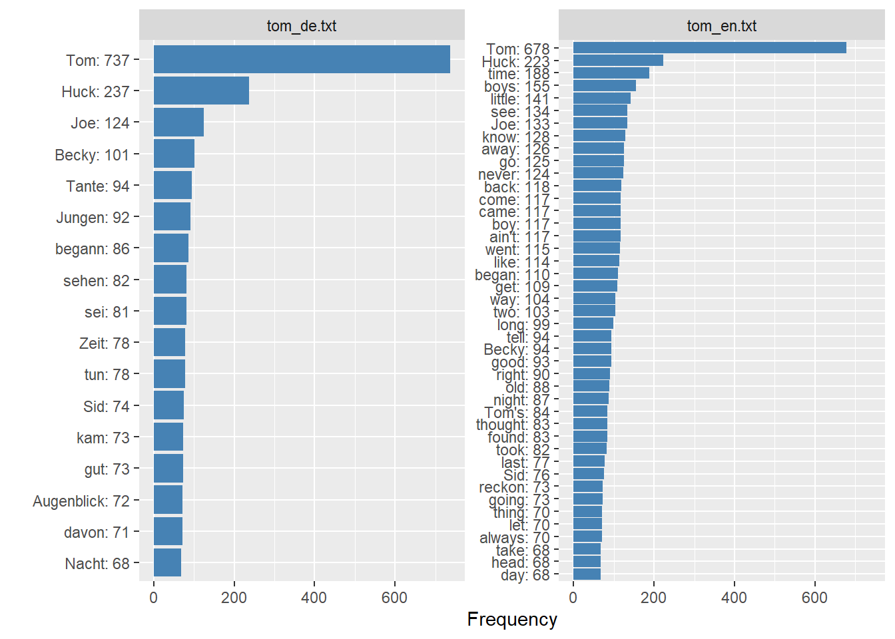
7.8 Kolokacije
Koleksemi = slovarske enote, ki se sopojavljajo. Kolokacije = jezikovne prvine, ki se sopojavljajo.
Statistična opredelitev: Če se dva izraza (npr. “dober dan”) pojavljata bistveno pogosteje kot neposredna soseda, kakor bi naključno pričakovali, potem ju lahko obravnavamo kot kolokacijo.
Jezikoslovna opredelitev: Kolokacija je pomensko povezano zaporedje besed.
Pomembno: za ugotavljanje kolokacij potrebujemo besedni seznam z opcijo padding = TRUE ! V besednem seznamu “woerter” smo sicer izločili nezaželene besedne oblike, ampak opcija padding = TRUE namesto izločenih besed vstavi vrzel oz. prazen niz "". Tako program prepreči odkrivanje lažnih kolokacij.
Funkcija textstat_collocations() programa quanteda nam bo poiskala (statistično opredeljene) kolokacije. Z opcijo size nastavimo, koliko členov naj vsebuje (npr. 2 za dve besedni obliki, 2:3 za dve ali tri besede). Opcija tolower = TRUE odpravi razlikovanje med malimi in velikimi črkami. Opcija minimal_count določa, kolikšna naj bo najmanjša pogostnost.
V naslednjih preglednicah so prikazane kolokacije obeh romanov, izvirnika in prevoda.
coll_2 = textstat_collocations(woerter, # seznma besednih oblik
size = 2, # obseg kolokacije
tolower = TRUE, # naredi male črke !
min_count = 2) # prag pogostnosti
head(coll_2)## collocation count count_nested length lambda z
## 1 tante polly 45 0 2 8.240516 29.64628
## 2 aunt polly 42 0 2 8.440653 28.14163
## 3 injun joe 45 0 2 7.594641 27.05485
## 4 joe harper 27 0 2 7.027402 22.82116
## 5 muff potter 36 0 2 9.966474 22.28821
## 6 becky thatcher 21 0 2 6.317666 22.20220Tročlenskih kolokacij je precej manj kot dvočlenskih.
coll_3 = textstat_collocations(woerter, size = 3, tolower = TRUE,
min_count = 2)
head(coll_3)## collocation count count_nested length lambda z
## 1 tom fuhr zusammen 2 0 3 2.9999040 1.3188542
## 2 tom went home 2 0 3 1.7420384 1.2562280
## 3 hand tied behind 2 0 3 0.9722967 0.3775822
## 4 nen ganzen haufen 2 0 3 0.7370573 0.2875748
## 5 tom sawyer's gang 2 0 3 0.8010998 0.2757649
## 6 every sound ceased 2 0 3 0.6641610 0.2587257Program ni našel štričlenskih kolokacij, ki bi se pojavljale vsaj dvakrat.
coll_4 = textstat_collocations(woerter, size = 4, tolower = TRUE,
min_count = 2)
head(coll_4)## [1] collocation count count_nested length lambda
## [6] z
## <0 rows> (or 0-length row.names)Seznam vseh kolokacij velikost 2, 3 in 4. V stolpcu count_nested program šteje kolokacije, vsebovane v drugi kolokaciji (višjega reda).
coll_2_4 = textstat_collocations(woerter, size = 2:4, tolower = TRUE,
minimal_count = 2)## Warning: minimal_count argument is not used.head(coll_2_4)## collocation count count_nested length lambda z
## 1 tante polly 45 26 2 8.240516 29.64628
## 2 aunt polly 42 16 2 8.440653 28.14163
## 3 injun joe 45 23 2 7.594641 27.05485
## 4 joe harper 27 11 2 7.027402 22.82116
## 5 muff potter 36 13 2 9.966474 22.28821
## 6 becky thatcher 21 2 2 6.317666 22.20220Kolokacija samostalniških izrazov.
V nemščini imajo samostalniki veliko začetnico. Najprej bomo sestavili seznam besednih oblik z veliko začetnico (woerter_caps). Pri tem nam pomagata regularni izraz “1” in opcija case_insensitive = FALSE. Potem lahko pridobimo seznam kolokacij (coll_caps2).
Spremenljivki lambda in z nam povesta, kako značilna je kolokacija v besedilu.
Najprej kolokacije v nemškem prevodu, ki so sestavljene iz besednih oblik z veliko začetnico (poleg lastnih imen tudi splošna imena):
# seznam besed z veliko začetnico
woerter_caps_de = tokens_select(woerter["tom_de.txt"],
pattern = "^[A-Z]",
valuetype = "regex",
case_insensitive = FALSE,
padding = TRUE)
# kolokacije besed z veliko začetnico
coll_caps2_de = textstat_collocations(woerter_caps_de, size = 2, tolower = FALSE,
min_count = 5)
head(coll_caps2_de, 10)## collocation count count_nested length lambda z
## 1 Joe Harper 13 0 2 6.276456 17.12449
## 2 Muff Potter 21 0 2 10.204248 16.47734
## 3 Becky Thatcher 10 0 2 5.916284 15.59540
## 4 Huckleberry Finn 7 0 2 8.260899 15.19022
## 5 Frau Thatcher 7 0 2 7.547491 14.96977
## 6 Richter Thatcher 6 0 2 6.951130 14.07828
## 7 Herr Gott 6 0 2 6.810621 13.99320
## 8 Thomas Sawyer 6 0 2 8.506141 13.71857
## 9 Jeff Thatcher 7 0 2 8.485842 13.59754
## 10 Tom Sawyer 20 0 2 5.924027 13.11498Še kolokacije v angleškem izvirniku, ki so sestavljene le iz lastnih imen:
woerter_caps_en = tokens_select(woerter["tom_en.txt"],
pattern = "^[A-Z]",
valuetype = "regex",
case_insensitive = FALSE,
padding = TRUE)
coll_caps2_en = textstat_collocations(woerter_caps_en, size = 2, tolower = FALSE,
min_count = 5)
head(coll_caps2_en, 10)## collocation count count_nested length lambda z
## 1 Injun Joe 45 0 2 7.624360 26.98981
## 2 Injun Joe's 18 0 2 7.952462 19.77999
## 3 Joe Harper 14 0 2 6.278145 17.50510
## 4 Muff Potter 15 0 2 9.196406 17.16147
## 5 Becky Thatcher 11 0 2 6.098456 16.49557
## 6 Huckleberry Finn 8 0 2 8.388678 15.66984
## 7 Judge Thatcher 7 0 2 7.093846 15.01281
## 8 Tom Sawyer 25 0 2 6.092915 14.60283
## 9 Thomas Sawyer 7 0 2 8.430545 14.16191
## 10 Aunt Polly 41 0 2 12.236764 13.875607.9 Lematizacija
Slovarska enota (lema) je osnovna oblika neke besede (geslo v slovarju): imenovalnik ednine, če gre za samostalniško obliko oz. nedoločnik, če gre za glagolsko obliko itd.
Seznam slovarskih enot lahko sestavimo sami, bistveno hitreje (čeprav ne brez napak!) pa to opravimo programsko, npr. z udpipe ali spacyr.
7.9.1 Lasten seznam
Seznam slovarskih enot (lem) lahko naložimo z medmrežja na naš disk.
Tu je prikazan postopek za nemški prevod. Naš quanteda korpus vsebuje tudi angleško besedilo, ki ga moramo izločiti, preden začnem lematizacijo nemških besednih oblik.
besede_de = besede["tom_de.txt"]Če imamo primeren seznam na disku, je postopek za uporabo s korpusom quanteda npr. takšen: - odpremo datoteko, ki vsebuje seznam lem (npr. z ukazom read.delim2() - odvisno od datotečne oblike); - za uporabo s korpusom pretvorimo stolpca podatkovnega niza v besedna seznama (tj. as.character()); - nazadnje zamenjamo besedne oblike z lemami(s funkcijo token_replace()). Če ustrezne leme ne najde, obdrži besedno obliko, ki jo je program našel v besedilu.
# Preberi seznam slovarskih enot in pojavnic z diska
lemdict = read.delim2("data/lemmatization_de.txt",
sep = "\t", # stolpci so ločeni tabulatorsko
encoding = "UTF-8", # univerzalno kodiranje črk
col.names = c("lemma", "word"), # dodamo imena stolpcev
stringsAsFactors = F) # preberi kot črkovne nize
# Pretvori podatkovna niza v znakovna niza
lemma = as.character(lemdict$lemma) # v tem stolpcu je osnovna oblika besede
word = as.character(lemdict$word) # v tem stolpcu je ena izmed besednih oblik
# Lematiziraj pojavnice v naših besedilih
lemmas_de <- tokens_replace(besede_de, # seznam nemških besednih oblik (tokens)
pattern = word, # obliko, ki jo želimo zamenjati
replacement = lemma, # zamenjava
case_insensitive = TRUE, # ne glede na začetnico
valuetype = "fixed") # natančno ujemanje oblik
lemmas_de # zdaj imamo leme (če je program našel zamenjavo za besedno obliko)## Tokens consisting of 1 document.
## tom_de.txt :
## [1] "Vorwort" "Autor" "meist" "erzählen"
## [5] "Abenteuer" "tatsächlich" "zutragen" "erleben"
## [9] "Schulkameraden" "Huck" "Finn" "Leben"
## [ ... and 32,480 more ]Zdaj ko imamo seznam slovarskih enot, lahko ustvarimo tudi matriko s slovarskimi enotami (namesto s pojavnicami), in sicer z funkcijo dfm() tako kot zgoraj.
matrika_lem_de = dfm(lemmas_de,
tolower = FALSE) # za zdaj obdržimo velike začetnice
# Odstranimo besede, ki jih v vsebinski analizi ne potrebujemo (stopwords)
matrika_lem_de = dfm_select(matrika_lem_de,
selection = "remove",
pattern = stoplist_de)
matrika_lem_de## Document-feature matrix of: 1 document, 7,108 features (0.00% sparse) and 0 docvars.
## features
## docs Vorwort Autor meist erzählen Abenteuer tatsächlich zutragen
## tom_de.txt 1 1 14 25 18 2 7
## features
## docs erleben Schulkameraden Huck
## tom_de.txt 4 3 237
## [ reached max_nfeat ... 7,098 more features ]7.9.2 Udpipe
7.9.2.1 Angleški izvirnik
Lematizacijo angleškega izvirnika bomo opravili s programom udpipe, ki je na voljo za številne jezike (tudi slovenščino).
Pred prvo uporabo moramo naložiti model za nemški jezik z interneta.
# install.packages("udpipe)
library(udpipe)
language_model <- udpipe_download_model(language = "english")## Downloading udpipe model from https://raw.githubusercontent.com/jwijffels/udpipe.models.ud.2.5/master/inst/udpipe-ud-2.5-191206/english-ewt-ud-2.5-191206.udpipe to D:/Users/teodo/Documents/R/raj2022-book/english-ewt-ud-2.5-191206.udpipe## - This model has been trained on version 2.5 of data from https://universaldependencies.org## - The model is distributed under the CC-BY-SA-NC license: https://creativecommons.org/licenses/by-nc-sa/4.0## - Visit https://github.com/jwijffels/udpipe.models.ud.2.5 for model license details.## - For a list of all models and their licenses (most models you can download with this package have either a CC-BY-SA or a CC-BY-SA-NC license) read the documentation at ?udpipe_download_model. For building your own models: visit the documentation by typing vignette('udpipe-train', package = 'udpipe')## Downloading finished, model stored at 'D:/Users/teodo/Documents/R/raj2022-book/english-ewt-ud-2.5-191206.udpipe'V naslednjem koraku naložimo jezikovni model v pomnilnik.
ud_en <- udpipe_load_model(language_model$file_model)Če je jezikovni model že v naši delovni mapi, download ni potreben, saj ga lahko takoj naložimo z diska v pomnilnik.
file_model = "english-ewt-ud-2.5-191206.udpipe"
ud_en <- udpipe_load_model(file_model)Naslednji korak je udpipe_annotate(): program udpipe označuje besedne oblike po več merilih. Lematizacijo je le ena izmed nalog, ki jih program opravi.
Udpipe prebere in označuje besedilo takole:
Na začetku je readtext() prebral besedila, shranili smo jih pod imenom “txt”. Angleški izvirnik smo shranili pod imenom “txt2”, besedilo pa je v stolpcu “text”.
x <- udpipe_annotate(ud_en, # jezikovni model
x = txt2$text, # izbran je le angleški izvirnik
trace = TRUE) # sledimo napredku anotacije## 2021-08-08 20:00:38 Annotating text fragment 1/1Pretvorba seznama v podatkovni niz s funkcijo as.data.frame():
# # Alternativno branje angleškega izvirnika
# # samo drugo besedilo:
# x <- udpipe_annotate(ud_en, x = txt$text[2], trace = TRUE)
en_df <- as.data.frame(x)
head(en_df)## doc_id paragraph_id sentence_id
## 1 doc1 1 1
## 2 doc1 2 2
## 3 doc1 2 2
## 4 doc1 2 2
## 5 doc1 2 2
## 6 doc1 2 2
## sentence
## 1 PREFACE
## 2 Most of the adventures recorded in this book really occurred; one or two were experiences of my own, the rest those of boys who were schoolmates of mine.
## 3 Most of the adventures recorded in this book really occurred; one or two were experiences of my own, the rest those of boys who were schoolmates of mine.
## 4 Most of the adventures recorded in this book really occurred; one or two were experiences of my own, the rest those of boys who were schoolmates of mine.
## 5 Most of the adventures recorded in this book really occurred; one or two were experiences of my own, the rest those of boys who were schoolmates of mine.
## 6 Most of the adventures recorded in this book really occurred; one or two were experiences of my own, the rest those of boys who were schoolmates of mine.
## token_id token lemma upos xpos feats
## 1 1 PREFACE Preface NOUN NN Number=Sing
## 2 1 Most most ADJ JJS Degree=Sup
## 3 2 of of ADP IN <NA>
## 4 3 the the DET DT Definite=Def|PronType=Art
## 5 4 adventures adventure NOUN NNS Number=Plur
## 6 5 recorded record VERB VBN Tense=Past|VerbForm=Part
## head_token_id dep_rel deps misc
## 1 0 root <NA> SpacesAfter=\\n\\n\\n
## 2 10 nsubj <NA> <NA>
## 3 4 case <NA> <NA>
## 4 4 det <NA> <NA>
## 5 1 obl <NA> <NA>
## 6 4 acl <NA> <NA>7.9.2.2 Nemški prevod
Lematizacijo nemškega prevod bomo tokrat opravili s programom udpipe.
Pred prvo uporabo moramo naložiti model za nemški jezik z interneta.
# install.packages("udpipe)
library(udpipe)
sprachmodell <- udpipe_download_model(language = "german")## Downloading udpipe model from https://raw.githubusercontent.com/jwijffels/udpipe.models.ud.2.5/master/inst/udpipe-ud-2.5-191206/german-gsd-ud-2.5-191206.udpipe to D:/Users/teodo/Documents/R/raj2022-book/german-gsd-ud-2.5-191206.udpipe## - This model has been trained on version 2.5 of data from https://universaldependencies.org## - The model is distributed under the CC-BY-SA-NC license: https://creativecommons.org/licenses/by-nc-sa/4.0## - Visit https://github.com/jwijffels/udpipe.models.ud.2.5 for model license details.## - For a list of all models and their licenses (most models you can download with this package have either a CC-BY-SA or a CC-BY-SA-NC license) read the documentation at ?udpipe_download_model. For building your own models: visit the documentation by typing vignette('udpipe-train', package = 'udpipe')## Downloading finished, model stored at 'D:/Users/teodo/Documents/R/raj2022-book/german-gsd-ud-2.5-191206.udpipe'V naslednjem koraku naložimo jezikovni model v pomnilnik.
ud_de <- udpipe_load_model(sprachmodell$file_model)Če je jezikovni model že v naši delovni mapi, download ni potreben, saj ga lahko takoj naložimo z diska v pomnilnik.
file_model = "german-gsd-ud-2.5-191206.udpipe"
ud_de <- udpipe_load_model(file_model)Naslednji korak je udpipe_annotate(): program udpipe označuje besedne oblike po več merilih. Lematizacijo je le ena izmed nalog, ki jih program opravi.
Udpipe prebere in označuje besedilo takole:
Na začetku je readtext() prebral besedila, shranili smo jih pod imenom “txt”. Nemški prevod smo shranili pod imenom “txt1”, besedilo pa je v stolpcu “text”.
x <- udpipe_annotate(ud_de, # jezikovni model
x = txt1$text, # izbran je le nemški prevod romana
trace = TRUE) # sledimo napredku anotacije## 2021-08-08 20:01:58 Annotating text fragment 1/1Pretvorba seznama v podatkovni niz s funkcijo as.data.frame():
# # Alternativno branje angleškega izvirnika
# # samo drugo besedilo:
# x <- udpipe_annotate(ud_en, x = txt$text[2], trace = TRUE)
de_df <- as.data.frame(x)
head(de_df)## doc_id paragraph_id sentence_id
## 1 doc1 1 1
## 2 doc1 1 1
## 3 doc1 1 1
## 4 doc1 1 1
## 5 doc1 1 1
## 6 doc1 1 1
## sentence
## 1 Vorwort des Autors . Die meisten der hier erzählten Abenteuer haben sich tatsächlich zugetragen . Das eine oder das andere habe ich selbst erlebt , die anderen meine Schulkameraden . Huck Finn ist nach dem Leben gezeichnet , nicht weniger Tom Sawyer , doch entspricht dieser nicht einer bestimmten Persönlichkeit , sondern wurde mit charakteristischen Zügen mehrerer meiner Altersgenossen ausgestattet und darf daher jenem gegenüber als einigermaßen kompliziertes psychologisches Problem gelten . Ich muß hier bemerken , daß zur Zeit meiner Erzählung -- vor dreißig bis vierzig Jahren -- unter den Unmündigen und Unwissenden des Westens noch die seltsamsten , unwahrscheinlichsten Vorurteile und Aberglauben herrschten . Obwohl dies Buch vor allem zur Unterhaltung der kleinen Welt geschrieben wurde , so darf ich doch wohl hoffen , daß es auch von Erwachsenen nicht ganz unbeachtet gelassen werde , habe ich doch darin versucht , ihnen auf angenehme Weise zu zeigen , was sie einst selbst waren , wie sie fühlten , dachten , sprachen , und welcher Art ihr Ehrgeiz und ihre Unternehmungen waren . Erstes Kapitel . , ,Tom ! " Keine Antwort . , ,Tom ! " Alles still . , ,Soll mich doch wundern , wo der Bengel wieder steckt ! Tom ! " Die alte Dame schob ihre Brille hinunter und schaute darüber hinweg ; dann schob sie sie auf die Stirn und schaute darunter weg.
## 2 Vorwort des Autors . Die meisten der hier erzählten Abenteuer haben sich tatsächlich zugetragen . Das eine oder das andere habe ich selbst erlebt , die anderen meine Schulkameraden . Huck Finn ist nach dem Leben gezeichnet , nicht weniger Tom Sawyer , doch entspricht dieser nicht einer bestimmten Persönlichkeit , sondern wurde mit charakteristischen Zügen mehrerer meiner Altersgenossen ausgestattet und darf daher jenem gegenüber als einigermaßen kompliziertes psychologisches Problem gelten . Ich muß hier bemerken , daß zur Zeit meiner Erzählung -- vor dreißig bis vierzig Jahren -- unter den Unmündigen und Unwissenden des Westens noch die seltsamsten , unwahrscheinlichsten Vorurteile und Aberglauben herrschten . Obwohl dies Buch vor allem zur Unterhaltung der kleinen Welt geschrieben wurde , so darf ich doch wohl hoffen , daß es auch von Erwachsenen nicht ganz unbeachtet gelassen werde , habe ich doch darin versucht , ihnen auf angenehme Weise zu zeigen , was sie einst selbst waren , wie sie fühlten , dachten , sprachen , und welcher Art ihr Ehrgeiz und ihre Unternehmungen waren . Erstes Kapitel . , ,Tom ! " Keine Antwort . , ,Tom ! " Alles still . , ,Soll mich doch wundern , wo der Bengel wieder steckt ! Tom ! " Die alte Dame schob ihre Brille hinunter und schaute darüber hinweg ; dann schob sie sie auf die Stirn und schaute darunter weg.
## 3 Vorwort des Autors . Die meisten der hier erzählten Abenteuer haben sich tatsächlich zugetragen . Das eine oder das andere habe ich selbst erlebt , die anderen meine Schulkameraden . Huck Finn ist nach dem Leben gezeichnet , nicht weniger Tom Sawyer , doch entspricht dieser nicht einer bestimmten Persönlichkeit , sondern wurde mit charakteristischen Zügen mehrerer meiner Altersgenossen ausgestattet und darf daher jenem gegenüber als einigermaßen kompliziertes psychologisches Problem gelten . Ich muß hier bemerken , daß zur Zeit meiner Erzählung -- vor dreißig bis vierzig Jahren -- unter den Unmündigen und Unwissenden des Westens noch die seltsamsten , unwahrscheinlichsten Vorurteile und Aberglauben herrschten . Obwohl dies Buch vor allem zur Unterhaltung der kleinen Welt geschrieben wurde , so darf ich doch wohl hoffen , daß es auch von Erwachsenen nicht ganz unbeachtet gelassen werde , habe ich doch darin versucht , ihnen auf angenehme Weise zu zeigen , was sie einst selbst waren , wie sie fühlten , dachten , sprachen , und welcher Art ihr Ehrgeiz und ihre Unternehmungen waren . Erstes Kapitel . , ,Tom ! " Keine Antwort . , ,Tom ! " Alles still . , ,Soll mich doch wundern , wo der Bengel wieder steckt ! Tom ! " Die alte Dame schob ihre Brille hinunter und schaute darüber hinweg ; dann schob sie sie auf die Stirn und schaute darunter weg.
## 4 Vorwort des Autors . Die meisten der hier erzählten Abenteuer haben sich tatsächlich zugetragen . Das eine oder das andere habe ich selbst erlebt , die anderen meine Schulkameraden . Huck Finn ist nach dem Leben gezeichnet , nicht weniger Tom Sawyer , doch entspricht dieser nicht einer bestimmten Persönlichkeit , sondern wurde mit charakteristischen Zügen mehrerer meiner Altersgenossen ausgestattet und darf daher jenem gegenüber als einigermaßen kompliziertes psychologisches Problem gelten . Ich muß hier bemerken , daß zur Zeit meiner Erzählung -- vor dreißig bis vierzig Jahren -- unter den Unmündigen und Unwissenden des Westens noch die seltsamsten , unwahrscheinlichsten Vorurteile und Aberglauben herrschten . Obwohl dies Buch vor allem zur Unterhaltung der kleinen Welt geschrieben wurde , so darf ich doch wohl hoffen , daß es auch von Erwachsenen nicht ganz unbeachtet gelassen werde , habe ich doch darin versucht , ihnen auf angenehme Weise zu zeigen , was sie einst selbst waren , wie sie fühlten , dachten , sprachen , und welcher Art ihr Ehrgeiz und ihre Unternehmungen waren . Erstes Kapitel . , ,Tom ! " Keine Antwort . , ,Tom ! " Alles still . , ,Soll mich doch wundern , wo der Bengel wieder steckt ! Tom ! " Die alte Dame schob ihre Brille hinunter und schaute darüber hinweg ; dann schob sie sie auf die Stirn und schaute darunter weg.
## 5 Vorwort des Autors . Die meisten der hier erzählten Abenteuer haben sich tatsächlich zugetragen . Das eine oder das andere habe ich selbst erlebt , die anderen meine Schulkameraden . Huck Finn ist nach dem Leben gezeichnet , nicht weniger Tom Sawyer , doch entspricht dieser nicht einer bestimmten Persönlichkeit , sondern wurde mit charakteristischen Zügen mehrerer meiner Altersgenossen ausgestattet und darf daher jenem gegenüber als einigermaßen kompliziertes psychologisches Problem gelten . Ich muß hier bemerken , daß zur Zeit meiner Erzählung -- vor dreißig bis vierzig Jahren -- unter den Unmündigen und Unwissenden des Westens noch die seltsamsten , unwahrscheinlichsten Vorurteile und Aberglauben herrschten . Obwohl dies Buch vor allem zur Unterhaltung der kleinen Welt geschrieben wurde , so darf ich doch wohl hoffen , daß es auch von Erwachsenen nicht ganz unbeachtet gelassen werde , habe ich doch darin versucht , ihnen auf angenehme Weise zu zeigen , was sie einst selbst waren , wie sie fühlten , dachten , sprachen , und welcher Art ihr Ehrgeiz und ihre Unternehmungen waren . Erstes Kapitel . , ,Tom ! " Keine Antwort . , ,Tom ! " Alles still . , ,Soll mich doch wundern , wo der Bengel wieder steckt ! Tom ! " Die alte Dame schob ihre Brille hinunter und schaute darüber hinweg ; dann schob sie sie auf die Stirn und schaute darunter weg.
## 6 Vorwort des Autors . Die meisten der hier erzählten Abenteuer haben sich tatsächlich zugetragen . Das eine oder das andere habe ich selbst erlebt , die anderen meine Schulkameraden . Huck Finn ist nach dem Leben gezeichnet , nicht weniger Tom Sawyer , doch entspricht dieser nicht einer bestimmten Persönlichkeit , sondern wurde mit charakteristischen Zügen mehrerer meiner Altersgenossen ausgestattet und darf daher jenem gegenüber als einigermaßen kompliziertes psychologisches Problem gelten . Ich muß hier bemerken , daß zur Zeit meiner Erzählung -- vor dreißig bis vierzig Jahren -- unter den Unmündigen und Unwissenden des Westens noch die seltsamsten , unwahrscheinlichsten Vorurteile und Aberglauben herrschten . Obwohl dies Buch vor allem zur Unterhaltung der kleinen Welt geschrieben wurde , so darf ich doch wohl hoffen , daß es auch von Erwachsenen nicht ganz unbeachtet gelassen werde , habe ich doch darin versucht , ihnen auf angenehme Weise zu zeigen , was sie einst selbst waren , wie sie fühlten , dachten , sprachen , und welcher Art ihr Ehrgeiz und ihre Unternehmungen waren . Erstes Kapitel . , ,Tom ! " Keine Antwort . , ,Tom ! " Alles still . , ,Soll mich doch wundern , wo der Bengel wieder steckt ! Tom ! " Die alte Dame schob ihre Brille hinunter und schaute darüber hinweg ; dann schob sie sie auf die Stirn und schaute darunter weg.
## token_id token lemma upos xpos
## 1 1 Vorwort Vorwort ADP NN
## 2 2 des der DET ART
## 3 3 Autors Autor NOUN NN
## 4 4 . . PUNCT $.
## 5 5 Die der PRON ART
## 6 6 meisten meist PRON NN
## feats head_token_id
## 1 Case=Nom|Gender=Neut|Number=Sing 3
## 2 Case=Gen|Definite=Def|Gender=Masc|Number=Sing|PronType=Art 3
## 3 Case=Gen|Gender=Masc|Number=Sing 14
## 4 <NA> 14
## 5 Case=Nom|Number=Plur|PronType=Art 6
## 6 Case=Dat|Gender=Masc|Number=Sing 14
## dep_rel deps misc
## 1 case <NA> <NA>
## 2 det <NA> <NA>
## 3 obl <NA> <NA>
## 4 punct <NA> SpacesAfter=\\s\\s\\s
## 5 det <NA> <NA>
## 6 nsubj <NA> <NA>7.10 Besedni oblaček
Besedni oblački so smiseln in razmeroma preprost prikaz najpogostejših besed v besedilu. Največkrat jih uporabljajo za prikaz vsebinsko relevantnih besed. Zato je treba najprej odstraniti funkcijske in druge neprimerne izraze. Še boljši pregled nad vsebino besedila nam besedni oblački dajejo, če uporabljamo slovarske enote (leme) namesto besednih oblik. To še posebej velja v oblikoslovno bogatih jezikih kot sta slovenščino in nemščina.
Podatkovni niz “en_df”, ki ga je ustvaril udpipe, moramo pripraviti za program wordcloud2: - izločiti nezaželene izraze, - ugotoviti pogostnost besed in - omejiti število besed za prikaz v besednem oblačku.
en_df_ud <- en_df %>%
filter(upos != "PUNCT") %>% # izločimo ločila
filter(str_detect(lemma, "^[:alpha:]")) %>% # samo črke, ne simobolov itd.
mutate(word = str_to_lower(lemma)) # vse pretvorimo v male črke
# iz besednega senzama naredimo podatkovni niz
stoplist_eng = as_tibble(stoplist_en) %>%
rename(word = value) # sprememba imena
# odstranimo nezaželene besede
en_df_cleaned = en_df_ud %>%
anti_join(stoplist_eng, by = "word")
# preštejemo besede in izberemo najpogostejše
topfeat_en = en_df_cleaned %>%
count(word, sort = TRUE) %>%
head(300) %>%
as_tibble()
# Oblaček
set.seed(1320)
library(wordcloud2)
wordcloud2(topfeat_en)Oblaček nemških slovarskih enot:
de_df_ud <- de_df %>%
filter(upos != "PUNCT") %>% # brez ločil
filter(str_detect(lemma, "^[:alpha:]")) %>% # samo črke, ne simobolov itd.
mutate(word = str_to_lower(lemma)) # vse pretvorimo v male črke
# iz besednega seznama naredimo podatkovni niz
stoplist_deu = as_tibble(stoplist_de) %>% rename(word = value)
# odstranimo nezaželene besede
de_df_cleaned = de_df_ud %>%
anti_join(stoplist_deu, by = "word")
# preštejemo besede, zadnji popravki in izberemo najpogostejše
topfeat_de = de_df_cleaned %>%
count(word, sort = TRUE) %>%
filter(!str_detect(word, "er\\|es\\|sie")) %>% # izločimo z regularnim izrazom
filter(!str_detect(word, "sie\\|sie")) %>% # izločimo z regex
mutate(word = str_replace(word, "hucken", "huck")) %>% # popravek !!!
head(300) %>%
as_tibble()
# Oblaček
set.seed(1320)
library(wordcloud2)
wordcloud2(topfeat_de)Oblaček angleških slovarskih enot, ki smo jih pridobili s programom udpipe, lahko tudi pripravimo za prikaz s funkcijo textplot_wordcloud() programa quanteda.
tok_en = en_df_cleaned %>%
dplyr::select(word) %>%
mutate(word = paste(word, collapse = " ")) %>%
head(1)
toks_en = tokens(tok_en$word)
matrika_lem_en = dfm(toks_en)
matrika_lem_en = dfm_select(matrika_lem_en,
pattern = stoplist_en,
selection = "remove")
# spremenimo ime (doc_id)
docnames(matrika_lem_en) <- "tom_en"
textplot_wordcloud(matrika_lem_en, # le nemški prevod
comparison = FALSE, # brez primerjave z drugim besedilom
adjust = 0.025,
color = c("darkblue","orange","darkgreen"),
max_size = 5, min_size = 0.75, rotation = 0.5,
min_count = 10, # spodnji prag pogostnosti
max_words = 250) # koliko besed sme biti v oblačku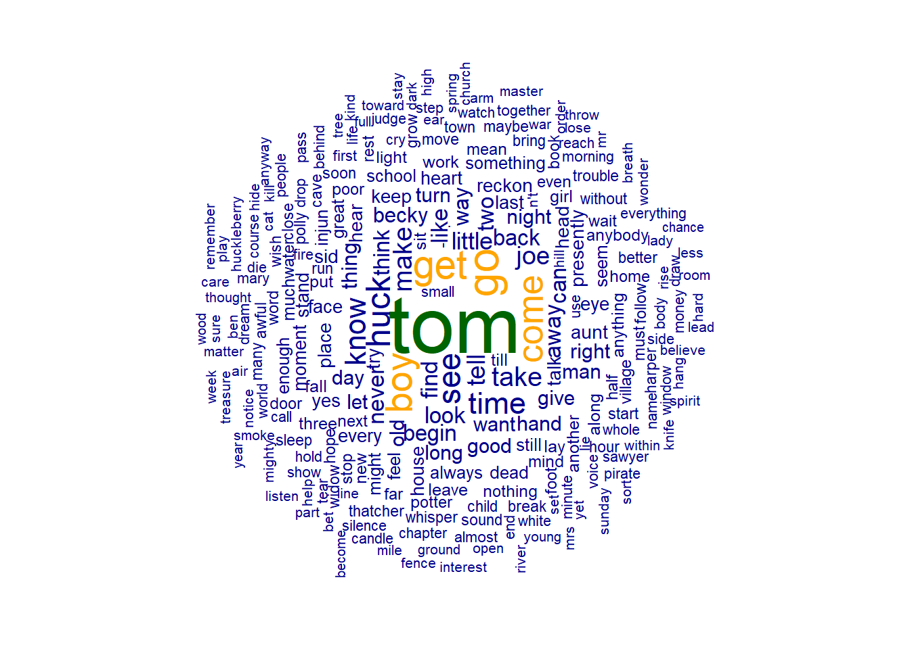
Priprava seznama nemških slovarskih enot, ki smo jih pridobili z udpipe, in prikaz s funkcijo textplot_wordcloud().
tok_de = de_df_cleaned %>%
dplyr::select(word) %>%
mutate(word = paste(word, collapse = " ")) %>%
head(1)
toks_de = tokens(tok_de$word)
matrika_lem_de = dfm(toks_de)
matrika_lem_de = dfm_select(matrika_lem_de,
pattern = c(stoplist_de, "|"),
selection = "remove")
# spremenimo ime (doc_id)
docnames(matrika_lem_de) <- "tom_de"
textplot_wordcloud(matrika_lem_de, # le nemški prevod
comparison = FALSE, # brez primerjave z drugim besedilom
adjust = 0.025,
color = c("darkblue","orange","darkgreen"),
max_size = 5, min_size = 0.75, rotation = 0.5,
min_count = 10, # spodnji prag pogostnosti
max_words = 250) # koliko besed sme biti v oblačku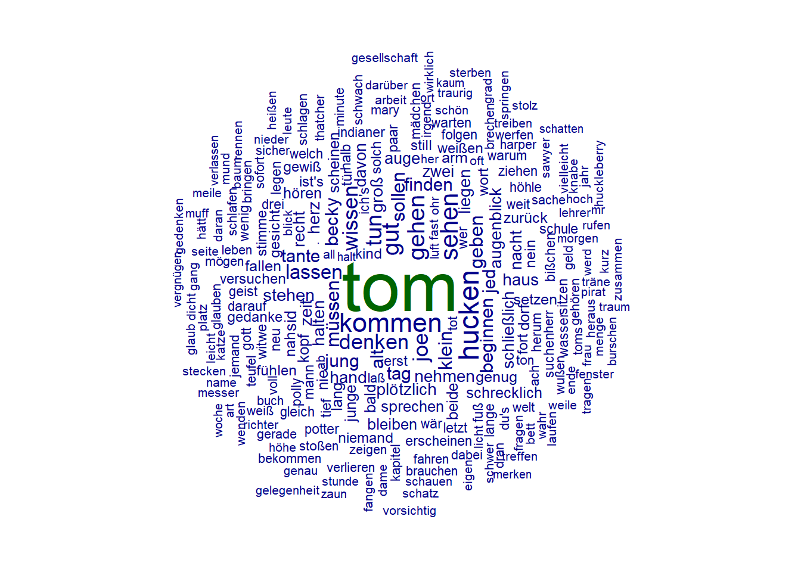
Združimo matriki s funkcijo rbind().
matrika_lem_de_en = rbind(matrika_lem_de, matrika_lem_en)
matrika_lem_de_en## Document-feature matrix of: 2 documents, 13,091 features (48.91% sparse) and 0 docvars.
## features
## docs vorwort autor meist erzählt abenteuer tatsächlich zugetragen erleben
## tom_de 1 1 14 2 16 2 3 3
## tom_en 0 0 0 0 0 0 0 0
## features
## docs schulkameraden hucken
## tom_de 3 226
## tom_en 0 0
## [ reached max_nfeat ... 13,081 more features ]Če želimo, lahko matriko pretvorimo v podatkovni niz:
convert(matrika_lem_de_en, to = "data.frame") %>%
write_csv("data/tom_tom_matrika.csv")Primerjalni oblaček nemških in angleških slovarskih enot:
textplot_wordcloud(matrika_lem_de_en,
comparison = TRUE, # primerjava z drugim besedilom
adjust = 0.025,
color = c("darkblue","darkgreen"),
max_size = 4, min_size = 0.5, rotation = 0.5,
min_count = 10, # spodnji prag pogostnosti
max_words = 120) # koliko besed sme biti v oblačku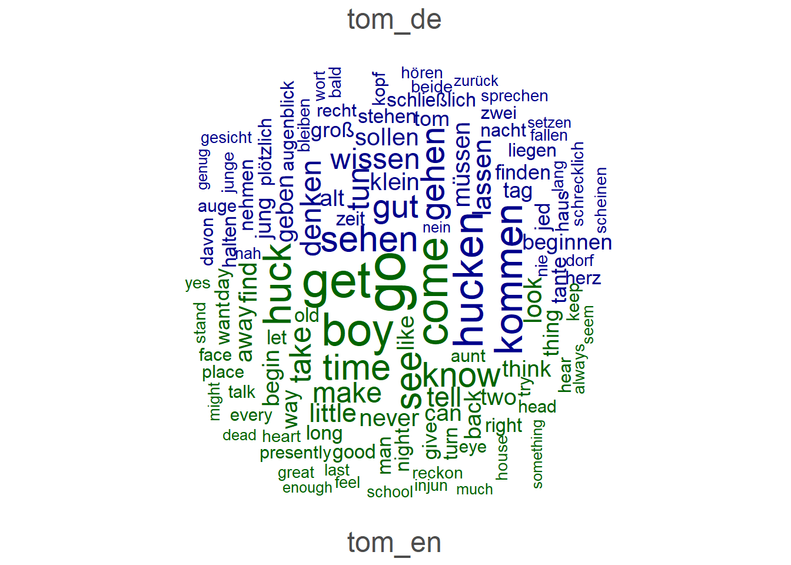
7.11 Položaj v besedilu (xray)
Diagram prikazuje, kje v besedilih se pojavlja določena besedna oblika. Podobno: Voyant Tools (MicroSearch).
Za primerjavo so bili izbrani izrazi, ki dandanes niso več nevtralni, temveč bolj ali manj rasistično obarvani ali celo pejorativni.
kwic_tom = kwic(besede,
pattern = c("indian*", "injun", # indinaer?
"neg*", "nigg*")) # neger?
textplot_xray(kwic_tom)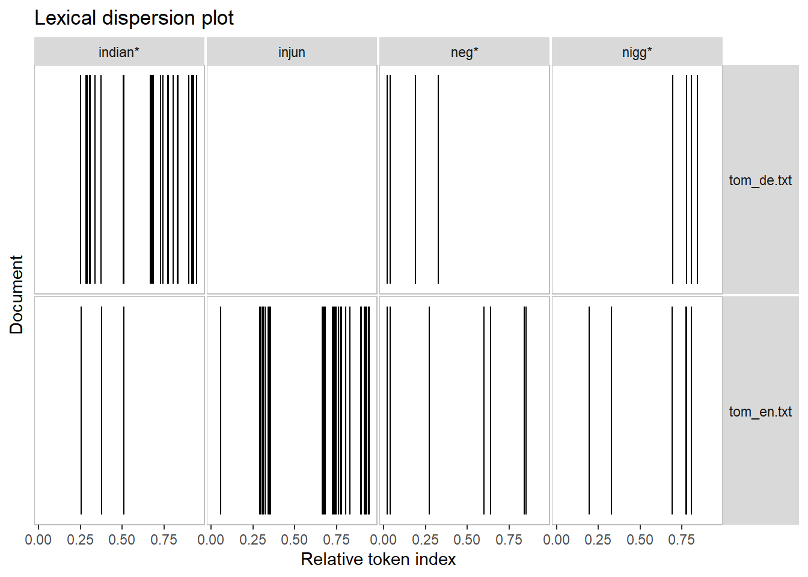
7.12 Slovarska raznolikost
Za oceno slovarske raznolikosti besedil je več meril. Najosnovnejša in najbrž najbolj znano je razmerje med številom različnic in pojavnic (TTR). Slaba lastnost tega merila je odvisnost od velikosti besedila.
Program quanteda nam s funkcijo textstat_lexdiv() pričara celo paleto meril za slovarsko raznolikost (več o njih v pomoči programa).
V spodnji razpredelnici vidimo številke po odstranitvi funkcijskih besed in nekaterih drugih nezaželenih izrazov (stopwords). TTR nemškega prevoda je večji kot tisti za angleški izvirnik, kar bi lahko pomenilo, da vsebuje več oblik.
textstat_lexdiv(matrika, measure = "all")## document TTR C R CTTR U S K
## 1 tom_de.txt 0.3120153 0.8878880 56.24243 39.76940 40.24348 0.9210789 10.44913
## 2 tom_en.txt 0.2452145 0.8645934 44.02472 31.13018 33.29454 0.9033840 13.22338
## I D Vm Maas lgV0 lgeV0
## 1 94.03320 0.001014167 0.03076157 0.1576348 8.707463 20.04968
## 2 45.73572 0.001291354 0.03458063 0.1733060 7.757339 17.86193V naslednji tabeli vidimo izračun slovarske raznolikosti na osnovi slovarskih enot (namesto različnic).
textstat_lexdiv(matrika_lem_de_en, measure = "all")## document TTR C R CTTR U S K
## 1 tom_de 0.2384871 0.8616471 42.39104 29.97499 32.52277 0.9009906 15.49656
## 2 tom_en 0.1810230 0.8353586 32.50308 22.98315 27.38304 0.8805434 20.84018
## I D Vm Maas lgV0 lgeV0
## 1 36.88205 0.001518054 0.03764229 0.1753502 7.639455 17.59049
## 2 15.76658 0.002053064 0.04373406 0.1910993 6.851152 15.775367.13 Podobnost besedil
Ta postopek je bolj zanimiv, če želimo primerjati več besedil. Zato bomo dodali še Kafkino novelo.
# odpremo datoteko
verwandl = readtext("data/books/verwandlung/verwandlung.txt", encoding = "UTF-8")
# ustvarimo nov korpus
verw_corp = corpus(verwandl)
# združimo novi korpus s prrejšnjim
romane3 = romane + verw_corp
# tokenizacija
romane3_toks = tokens(romane3)
# ustvarimo matriko (dfm)
romane3_dfm = dfm(romane3_toks)Rezultat (ki je bil pričakovan): Kafkina novela “Die Verwandlung” je nemškemu prevoda podobnejši kot angleški izvirnik Twainovega romana “Tom Sawyer”. Program očitno ne primerja vsebine besedil, temveč besedne oblike.
textstat_simil(romane3_dfm, method = "cosine", margin = "documents")## textstat_simil object; method = "cosine"
## tom_de.txt tom_en.txt verwandlung.txt
## tom_de.txt 1.000 0.615 0.933
## tom_en.txt 0.615 1.000 0.496
## verwandlung.txt 0.933 0.496 1.000Podobnost oblik (features).
# compute some term similarities
simil1 = textstat_simil(matrika, matrika[, c("Tom", "Sawyer", "Huck", "Finn")],
method = "cosine", margin = "features")
head(as.matrix(simil1), 10)## Tom Sawyer Huck Finn
## Vorwort 0.7359509 0.6305926 0.7282902 0.7071068
## Autors 0.7359509 0.6305926 0.7282902 0.7071068
## meisten 0.7359509 0.6305926 0.7282902 0.7071068
## erzählten 0.7359509 0.6305926 0.7282902 0.7071068
## Abenteuer 0.7359509 0.6305926 0.7282902 0.7071068
## tatsächlich 0.7359509 0.6305926 0.7282902 0.7071068
## zugetragen 0.7359509 0.6305926 0.7282902 0.7071068
## erlebt 0.7359509 0.6305926 0.7282902 0.7071068
## Schulkameraden 0.7359509 0.6305926 0.7282902 0.7071068
## Huck 0.9999368 0.9911012 1.0000000 0.9995372tail(as.matrix(simil1), 10)## Tom Sawyer Huck Finn
## chronicle 0.6770349 0.776114 0.6852688 0.7071068
## strictly 0.6770349 0.776114 0.6852688 0.7071068
## _boy_ 0.6770349 0.776114 0.6852688 0.7071068
## _man_ 0.6770349 0.776114 0.6852688 0.7071068
## writes 0.6770349 0.776114 0.6852688 0.7071068
## novel 0.6770349 0.776114 0.6852688 0.7071068
## marriage 0.6770349 0.776114 0.6852688 0.7071068
## perform 0.6770349 0.776114 0.6852688 0.7071068
## prosperous 0.6770349 0.776114 0.6852688 0.7071068
## reveal 0.6770349 0.776114 0.6852688 0.7071068Različnost besedil (Kaj je ta metoda upoštevala? Razliko v dolžini?):
# plot a dendrogram after converting the object into distances
dist1 = textstat_dist(romane3_dfm, method = "euclidean", margin = "documents")
plot(hclust(as.dist(dist1)))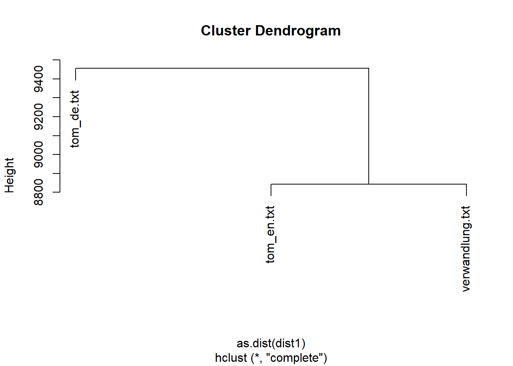
7.14 Ključne besede
Katere besedne oblike lahko uvrstimo med ključne besede, tj. take izraze, ki so najbolj značilni za neko besedilo? Program quanteda ima funkcijo textstat_keyness(): ciljno besedilo (target) primerjamo z referenčnim besedilom (reference).
key_tom_de <- textstat_keyness(matrika, target = "tom_de.txt")
key_tom_de## feature chi2 p n_target n_reference
## 1 Tante 9.338633e+01 0.000000e+00 94 0
## 2 Jungen 9.139656e+01 0.000000e+00 92 0
## 3 begann 8.542799e+01 0.000000e+00 86 0
## 4 sehen 8.144955e+01 0.000000e+00 82 0
## 5 sei 8.045502e+01 0.000000e+00 81 0
## 6 Zeit 7.747161e+01 0.000000e+00 78 0
## 7 tun 7.747161e+01 0.000000e+00 78 0
## 8 gut 7.249987e+01 0.000000e+00 73 0
## 9 kam 7.249987e+01 0.000000e+00 73 0
## 10 Augenblick 7.150562e+01 0.000000e+00 72 0
## 11 davon 7.051139e+01 0.000000e+00 71 0
## 12 Nacht 6.752890e+01 2.220446e-16 68 0
## 13 Toms 6.653480e+01 3.330669e-16 67 0
## 14 machte 6.554073e+01 5.551115e-16 66 0
## 15 hätte 6.355268e+01 1.554312e-15 64 0
## 16 nie 6.355268e+01 1.554312e-15 64 0
## 17 zwei 6.355268e+01 1.554312e-15 64 0
## 18 konnte 6.255871e+01 2.553513e-15 63 0
## 19 genug 6.156476e+01 4.329870e-15 62 0
## 20 gab 6.057084e+01 7.105427e-15 61 0
## 21 weiß 5.957696e+01 1.176836e-14 60 0
## 22 Kopf 5.858310e+01 1.953993e-14 59 0
## 23 Augen 5.758928e+01 3.230749e-14 58 0
## 24 ging 5.758928e+01 3.230749e-14 58 0
## 25 Hand 5.565593e+01 8.637535e-14 59 1
## 26 zurück 5.460799e+01 1.471046e-13 55 0
## 27 fort 5.361429e+01 2.440270e-13 54 0
## 28 lange 5.262062e+01 4.045653e-13 53 0
## 29 kommen 5.162698e+01 6.711298e-13 52 0
## 30 ließ 4.963979e+01 1.847300e-12 50 0
## 31 Gesicht 4.864624e+01 3.065548e-12 49 0
## 32 hast 4.864624e+01 3.065548e-12 49 0
## 33 bald 4.791267e+01 4.456324e-12 54 2
## 34 ist's 4.765272e+01 5.088152e-12 48 0
## 35 lassen 4.765272e+01 5.088152e-12 48 0
## 36 nen 4.765272e+01 5.088152e-12 48 0
## 37 sah 4.765272e+01 5.088152e-12 48 0
## 38 schien 4.765272e+01 5.088152e-12 48 0
## 39 Herz 4.566578e+01 1.402511e-11 46 0
## 40 Witwe 4.566578e+01 1.402511e-11 46 0
## 41 ganze 4.566578e+01 1.402511e-11 46 0
## 42 kleinen 4.566578e+01 1.402511e-11 46 0
## 43 Ach 4.467235e+01 2.329226e-11 45 0
## 44 Tür 4.467235e+01 2.329226e-11 45 0
## 45 wäre 4.467235e+01 2.329226e-11 45 0
## 46 Stimme 4.367896e+01 3.869094e-11 44 0
## 47 Tage 4.367896e+01 3.869094e-11 44 0
## 48 bißchen 4.367896e+01 3.869094e-11 44 0
## 49 herum 4.367896e+01 3.869094e-11 44 0
## 50 lag 4.367896e+01 3.869094e-11 44 0
## 51 schließlich 4.367896e+01 3.869094e-11 44 0
## 52 Haus 4.268560e+01 6.428391e-11 43 0
## 53 gehen 4.268560e+01 6.428391e-11 43 0
## 54 hielt 4.268560e+01 6.428391e-11 43 0
## 55 ich's 4.268560e+01 6.428391e-11 43 0
## 56 nahm 4.268560e+01 6.428391e-11 43 0
## 57 paar 4.268560e+01 6.428391e-11 43 0
## 58 Höhle 4.169226e+01 1.068309e-10 42 0
## 59 gesehen 4.169226e+01 1.068309e-10 42 0
## 60 niemand 4.169226e+01 1.068309e-10 42 0
## 61 Schule 3.970569e+01 2.952639e-10 40 0
## 62 recht 3.970569e+01 2.952639e-10 40 0
## 63 Wasser 3.771924e+01 8.169483e-10 38 0
## 64 getan 3.771924e+01 8.169483e-10 38 0
## 65 mußte 3.771924e+01 8.169483e-10 38 0
## 66 Gott 3.672606e+01 1.359499e-09 37 0
## 67 Kapitel 3.672606e+01 1.359499e-09 37 0
## 68 Plötzlich 3.672606e+01 1.359499e-09 37 0
## 69 Schließlich 3.672606e+01 1.359499e-09 37 0
## 70 du's 3.672606e+01 1.359499e-09 37 0
## 71 setzte 3.672606e+01 1.359499e-09 37 0
## 72 wär 3.672606e+01 1.359499e-09 37 0
## 73 Geld 3.573291e+01 2.263083e-09 36 0
## 74 Junge 3.573291e+01 2.263083e-09 36 0
## 75 Mädchen 3.573291e+01 2.263083e-09 36 0
## 76 alte 3.573291e+01 2.263083e-09 36 0
## 77 plötzlich 3.573291e+01 2.263083e-09 36 0
## 78 weißt 3.573291e+01 2.263083e-09 36 0
## 79 wurden 3.573291e+01 2.263083e-09 36 0
## 80 wußte 3.573291e+01 2.263083e-09 36 0
## 81 Nein 3.473979e+01 3.768492e-09 35 0
## 82 Tag 3.473979e+01 3.768492e-09 35 0
## 83 drei 3.473979e+01 3.768492e-09 35 0
## 84 finden 3.473979e+01 3.768492e-09 35 0
## 85 wissen 3.473979e+01 3.768492e-09 35 0
## 86 O 3.383817e+01 5.989223e-09 37 1
## 87 dachte 3.374671e+01 6.277523e-09 34 0
## 88 gleich 3.374671e+01 6.277523e-09 34 0
## 89 irgend 3.374671e+01 6.277523e-09 34 0
## 90 jemand 3.374671e+01 6.277523e-09 34 0
## 91 nächsten 3.374671e+01 6.277523e-09 34 0
## 92 Welt 3.275365e+01 1.046097e-08 33 0
## 93 fühlte 3.176062e+01 1.743927e-08 32 0
## 94 beiden 3.076763e+01 2.908494e-08 31 0
## 95 beim 3.076763e+01 2.908494e-08 31 0
## 96 besser 3.076763e+01 2.908494e-08 31 0
## 97 darauf 3.076763e+01 2.908494e-08 31 0
## 98 dran 3.076763e+01 2.908494e-08 31 0
## 99 fiel 3.076763e+01 2.908494e-08 31 0
## 100 ganzen 3.076763e+01 2.908494e-08 31 0
## 101 gehört 3.076763e+01 2.908494e-08 31 0
## 102 gesagt 3.076763e+01 2.908494e-08 31 0
## 103 kleine 3.076763e+01 2.908494e-08 31 0
## 104 Dorf 2.977466e+01 4.852926e-08 30 0
## 105 Hause 2.977466e+01 4.852926e-08 30 0
## 106 Mann 2.977466e+01 4.852926e-08 30 0
## 107 Teufel 2.977466e+01 4.852926e-08 30 0
## 108 Ton 2.977466e+01 4.852926e-08 30 0
## 109 kamen 2.977466e+01 4.852926e-08 30 0
## 110 kannst 2.977466e+01 4.852926e-08 30 0
## 111 willst 2.977466e+01 4.852926e-08 30 0
## 112 zog 2.977466e+01 4.852926e-08 30 0
## 113 Sache 2.878173e+01 8.101169e-08 29 0
## 114 ab 2.878173e+01 8.101169e-08 29 0
## 115 dabei 2.878173e+01 8.101169e-08 29 0
## 116 gerade 2.878173e+01 8.101169e-08 29 0
## 117 gewiß 2.878173e+01 8.101169e-08 29 0
## 118 legte 2.878173e+01 8.101169e-08 29 0
## 119 muß 2.878173e+01 8.101169e-08 29 0
## 120 sprechen 2.878173e+01 8.101169e-08 29 0
## 121 Leben 2.778883e+01 1.353052e-07 28 0
## 122 fand 2.778883e+01 1.353052e-07 28 0
## 123 nieder 2.778883e+01 1.353052e-07 28 0
## 124 worden 2.778883e+01 1.353052e-07 28 0
## 125 Arbeit 2.679596e+01 2.261100e-07 27 0
## 126 Buch 2.679596e+01 2.261100e-07 27 0
## 127 Kinder 2.679596e+01 2.261100e-07 27 0
## 128 Stunde 2.679596e+01 2.261100e-07 27 0
## 129 Weile 2.679596e+01 2.261100e-07 27 0
## 130 Wort 2.679596e+01 2.261100e-07 27 0
## 131 alten 2.679596e+01 2.261100e-07 27 0
## 132 blieb 2.679596e+01 2.261100e-07 27 0
## 133 daran 2.679596e+01 2.261100e-07 27 0
## 134 denk 2.679596e+01 2.261100e-07 27 0
## 135 großen 2.679596e+01 2.261100e-07 27 0
## 136 hätten 2.679596e+01 2.261100e-07 27 0
## 137 sofort 2.679596e+01 2.261100e-07 27 0
## 138 stehen 2.679596e+01 2.261100e-07 27 0
## 139 stieß 2.679596e+01 2.261100e-07 27 0
## 140 tat 2.679596e+01 2.261100e-07 27 0
## 141 voll 2.679596e+01 2.261100e-07 27 0
## 142 weit 2.679596e+01 2.261100e-07 27 0
## 143 Denk 2.580311e+01 3.780780e-07 26 0
## 144 Ende 2.580311e+01 3.780780e-07 26 0
## 145 Gedanke 2.580311e+01 3.780780e-07 26 0
## 146 Gedanken 2.580311e+01 3.780780e-07 26 0
## 147 Herzen 2.580311e+01 3.780780e-07 26 0
## 148 Indianer-Joe 2.580311e+01 3.780780e-07 26 0
## 149 Leute 2.580311e+01 3.780780e-07 26 0
## 150 Menge 2.580311e+01 3.780780e-07 26 0
## 151 darüber 2.580311e+01 3.780780e-07 26 0
## 152 folgte 2.580311e+01 3.780780e-07 26 0
## 153 gingen 2.580311e+01 3.780780e-07 26 0
## 154 große 2.580311e+01 3.780780e-07 26 0
## 155 hören 2.580311e+01 3.780780e-07 26 0
## 156 könne 2.580311e+01 3.780780e-07 26 0
## 157 Bett 2.481030e+01 6.325844e-07 25 0
## 158 Burschen 2.481030e+01 6.325844e-07 25 0
## 159 Herr 2.481030e+01 6.325844e-07 25 0
## 160 Katze 2.481030e+01 6.325844e-07 25 0
## 161 erst 2.481030e+01 6.325844e-07 25 0
## 162 heraus 2.481030e+01 6.325844e-07 25 0
## 163 laß 2.481030e+01 6.325844e-07 25 0
## 164 Fuß 2.381752e+01 1.059139e-06 24 0
## 165 Geist 2.381752e+01 1.059139e-06 24 0
## 166 Gesellschaft 2.381752e+01 1.059139e-06 24 0
## 167 Messer 2.381752e+01 1.059139e-06 24 0
## 168 Mund 2.381752e+01 1.059139e-06 24 0
## 169 Tränen 2.381752e+01 1.059139e-06 24 0
## 170 halb 2.381752e+01 1.059139e-06 24 0
## 171 machten 2.381752e+01 1.059139e-06 24 0
## 172 nem 2.381752e+01 1.059139e-06 24 0
## 173 rannte 2.381752e+01 1.059139e-06 24 0
## 174 schaute 2.381752e+01 1.059139e-06 24 0
## 175 verloren 2.381752e+01 1.059139e-06 24 0
## 176 wenig 2.381752e+01 1.059139e-06 24 0
## 177 zusammen 2.381752e+01 1.059139e-06 24 0
## 178 Fenster 2.282477e+01 1.774634e-06 23 0
## 179 Platz 2.282477e+01 1.774634e-06 23 0
## 180 Richter 2.282477e+01 1.774634e-06 23 0
## 181 erschien 2.282477e+01 1.774634e-06 23 0
## 182 fuhr 2.282477e+01 1.774634e-06 23 0
## 183 gedacht 2.282477e+01 1.774634e-06 23 0
## 184 halten 2.282477e+01 1.774634e-06 23 0
## 185 hörte 2.282477e+01 1.774634e-06 23 0
## 186 oft 2.282477e+01 1.774634e-06 23 0
## 187 schrecklich 2.282477e+01 1.774634e-06 23 0
## 188 Art 2.183205e+01 2.975868e-06 22 0
## 189 Dame 2.183205e+01 2.975868e-06 22 0
## 190 Höhe 2.183205e+01 2.975868e-06 22 0
## 191 Lehrer 2.183205e+01 2.975868e-06 22 0
## 192 Licht 2.183205e+01 2.975868e-06 22 0
## 193 Luft 2.183205e+01 2.975868e-06 22 0
## 194 Schatten 2.183205e+01 2.975868e-06 22 0
## 195 Warum 2.183205e+01 2.975868e-06 22 0
## 196 Wer 2.183205e+01 2.975868e-06 22 0
## 197 Worte 2.183205e+01 2.975868e-06 22 0
## 198 Zaun 2.183205e+01 2.975868e-06 22 0
## 199 flüsterte 2.183205e+01 2.975868e-06 22 0
## 200 hätt 2.183205e+01 2.975868e-06 22 0
## 201 sag 2.183205e+01 2.975868e-06 22 0
## 202 schlug 2.183205e+01 2.975868e-06 22 0
## 203 sicher 2.183205e+01 2.975868e-06 22 0
## 204 vielleicht 2.183205e+01 2.975868e-06 22 0
## 205 wollt 2.183205e+01 2.975868e-06 22 0
## 206 Erde 2.083937e+01 4.994575e-06 21 0
## 207 Knaben 2.083937e+01 4.994575e-06 21 0
## 208 Sag 2.083937e+01 4.994575e-06 21 0
## 209 Seite 2.083937e+01 4.994575e-06 21 0
## 210 Stelle 2.083937e+01 4.994575e-06 21 0
## 211 dafür 2.083937e+01 4.994575e-06 21 0
## 212 denken 2.083937e+01 4.994575e-06 21 0
## 213 dicht 2.083937e+01 4.994575e-06 21 0
## 214 er's 2.083937e+01 4.994575e-06 21 0
## 215 gekommen 2.083937e+01 4.994575e-06 21 0
## 216 gemacht 2.083937e+01 4.994575e-06 21 0
## 217 genau 2.083937e+01 4.994575e-06 21 0
## 218 hervor 2.083937e+01 4.994575e-06 21 0
## 219 lang 2.083937e+01 4.994575e-06 21 0
## 220 müssen 2.083937e+01 4.994575e-06 21 0
## 221 nochmals 2.083937e+01 4.994575e-06 21 0
## 222 saß 2.083937e+01 4.994575e-06 21 0
## 223 vorsichtig 2.083937e+01 4.994575e-06 21 0
## 224 Bursche 1.984671e+01 8.390707e-06 20 0
## 225 Gelegenheit 1.984671e+01 8.390707e-06 20 0
## 226 Minuten 1.984671e+01 8.390707e-06 20 0
## 227 fragte 1.984671e+01 8.390707e-06 20 0
## 228 gefunden 1.984671e+01 8.390707e-06 20 0
## 229 gehabt 1.984671e+01 8.390707e-06 20 0
## 230 kaum 1.984671e+01 8.390707e-06 20 0
## 231 letzte 1.984671e+01 8.390707e-06 20 0
## 232 letzten 1.984671e+01 8.390707e-06 20 0
## 233 meinte 1.984671e+01 8.390707e-06 20 0
## 234 niemals 1.984671e+01 8.390707e-06 20 0
## 235 vorher 1.984671e+01 8.390707e-06 20 0
## 236 werd 1.984671e+01 8.390707e-06 20 0
## 237 zeigte 1.984671e+01 8.390707e-06 20 0
## 238 Meilen 1.885408e+01 1.411088e-05 19 0
## 239 Stille 1.885408e+01 1.411088e-05 19 0
## 240 Zeichen 1.885408e+01 1.411088e-05 19 0
## 241 beide 1.885408e+01 1.411088e-05 19 0
## 242 geworden 1.885408e+01 1.411088e-05 19 0
## 243 glaub 1.885408e+01 1.411088e-05 19 0
## 244 halt 1.885408e+01 1.411088e-05 19 0
## 245 hinunter 1.885408e+01 1.411088e-05 19 0
## 246 kommt 1.885408e+01 1.411088e-05 19 0
## 247 nein 1.885408e+01 1.411088e-05 19 0
## 248 neue 1.885408e+01 1.411088e-05 19 0
## 249 warum 1.885408e+01 1.411088e-05 19 0
## 250 wirklich 1.885408e+01 1.411088e-05 19 0
## 251 Angst 1.786149e+01 2.375809e-05 18 0
## 252 Dorfes 1.786149e+01 2.375809e-05 18 0
## 253 Frau 1.786149e+01 2.375809e-05 18 0
## 254 Hoffnung 1.786149e+01 2.375809e-05 18 0
## 255 Kirche 1.786149e+01 2.375809e-05 18 0
## 256 Kleider 1.786149e+01 2.375809e-05 18 0
## 257 Moment 1.786149e+01 2.375809e-05 18 0
## 258 Namen 1.786149e+01 2.375809e-05 18 0
## 259 Piraten 1.786149e+01 2.375809e-05 18 0
## 260 Schatz 1.786149e+01 2.375809e-05 18 0
## 261 Uhr 1.786149e+01 2.375809e-05 18 0
## 262 begannen 1.786149e+01 2.375809e-05 18 0
## 263 ebenso 1.786149e+01 2.375809e-05 18 0
## 264 konnten 1.786149e+01 2.375809e-05 18 0
## 265 könnt 1.786149e+01 2.375809e-05 18 0
## 266 tot 1.786149e+01 2.375809e-05 18 0
## 267 versuchen 1.786149e+01 2.375809e-05 18 0
## 268 wer 1.786149e+01 2.375809e-05 18 0
## 269 würd 1.786149e+01 2.375809e-05 18 0
## 270 Antwort 1.686892e+01 4.005206e-05 17 0
## 271 Boden 1.686892e+01 4.005206e-05 17 0
## 272 Feuer 1.686892e+01 4.005206e-05 17 0
## 273 Frühstück 1.686892e+01 4.005206e-05 17 0
## 274 Geschichte 1.686892e+01 4.005206e-05 17 0
## 275 Interesse 1.686892e+01 4.005206e-05 17 0
## 276 Morgen 1.686892e+01 4.005206e-05 17 0
## 277 Nummer 1.686892e+01 4.005206e-05 17 0
## 278 Ohren 1.686892e+01 4.005206e-05 17 0
## 279 Schweigen 1.686892e+01 4.005206e-05 17 0
## 280 Unsinn 1.686892e+01 4.005206e-05 17 0
## 281 bleiben 1.686892e+01 4.005206e-05 17 0
## 282 brach 1.686892e+01 4.005206e-05 17 0
## 283 drauf 1.686892e+01 4.005206e-05 17 0
## 284 entfernt 1.686892e+01 4.005206e-05 17 0
## 285 gegeben 1.686892e+01 4.005206e-05 17 0
## 286 geht 1.686892e+01 4.005206e-05 17 0
## 287 grad 1.686892e+01 4.005206e-05 17 0
## 288 möchte 1.686892e+01 4.005206e-05 17 0
## 289 neuen 1.686892e+01 4.005206e-05 17 0
## 290 schrecklichen 1.686892e+01 4.005206e-05 17 0
## 291 schwer 1.686892e+01 4.005206e-05 17 0
## 292 suchte 1.686892e+01 4.005206e-05 17 0
## 293 tut 1.686892e+01 4.005206e-05 17 0
## 294 versuchte 1.686892e+01 4.005206e-05 17 0
## 295 wahr 1.686892e+01 4.005206e-05 17 0
## 296 warten 1.686892e+01 4.005206e-05 17 0
## 297 wenigstens 1.686892e+01 4.005206e-05 17 0
## 298 Blick 1.587639e+01 6.761717e-05 16 0
## 299 Geheimnis 1.587639e+01 6.761717e-05 16 0
## 300 Kind 1.587639e+01 6.761717e-05 16 0
## 301 Traum 1.587639e+01 6.761717e-05 16 0
## 302 _nicht_ 1.587639e+01 6.761717e-05 16 0
## 303 allein 1.587639e+01 6.761717e-05 16 0
## 304 befand 1.587639e+01 6.761717e-05 16 0
## 305 eben 1.587639e+01 6.761717e-05 16 0
## 306 eigenen 1.587639e+01 6.761717e-05 16 0
## 307 einfach 1.587639e+01 6.761717e-05 16 0
## 308 fertig 1.587639e+01 6.761717e-05 16 0
## 309 fing 1.587639e+01 6.761717e-05 16 0
## 310 fünf 1.587639e+01 6.761717e-05 16 0
## 311 leicht 1.587639e+01 6.761717e-05 16 0
## 312 ner 1.587639e+01 6.761717e-05 16 0
## 313 rief 1.587639e+01 6.761717e-05 16 0
## 314 schreckliche 1.587639e+01 6.761717e-05 16 0
## 315 später 1.587639e+01 6.761717e-05 16 0
## 316 stets 1.587639e+01 6.761717e-05 16 0
## 317 tief 1.587639e+01 6.761717e-05 16 0
## 318 tiefer 1.587639e+01 6.761717e-05 16 0
## 319 vergessen 1.587639e+01 6.761717e-05 16 0
## 320 überall 1.587639e+01 6.761717e-05 16 0
## 321 Hucks 1.488388e+01 1.143358e-04 15 0
## 322 Kummer 1.488388e+01 1.143358e-04 15 0
## 323 Ort 1.488388e+01 1.143358e-04 15 0
## 324 Ruhe 1.488388e+01 1.143358e-04 15 0
## 325 Tasche 1.488388e+01 1.143358e-04 15 0
## 326 Wanze 1.488388e+01 1.143358e-04 15 0
## 327 ans 1.488388e+01 1.143358e-04 15 0
## 328 armen 1.488388e+01 1.143358e-04 15 0
## 329 bekommen 1.488388e+01 1.143358e-04 15 0
## 330 draußen 1.488388e+01 1.143358e-04 15 0
## 331 eins 1.488388e+01 1.143358e-04 15 0
## 332 geben 1.488388e+01 1.143358e-04 15 0
## 333 je 1.488388e+01 1.143358e-04 15 0
## 334 los 1.488388e+01 1.143358e-04 15 0
## 335 nehmen 1.488388e+01 1.143358e-04 15 0
## 336 rechte 1.488388e+01 1.143358e-04 15 0
## 337 schrie 1.488388e+01 1.143358e-04 15 0
## 338 suchen 1.488388e+01 1.143358e-04 15 0
## 339 war's 1.488388e+01 1.143358e-04 15 0
## 340 wenn's 1.488388e+01 1.143358e-04 15 0
## 341 Auge 1.389141e+01 1.936819e-04 14 0
## 342 Darauf 1.389141e+01 1.936819e-04 14 0
## 343 Dorfe 1.389141e+01 1.936819e-04 14 0
## 344 Erfolg 1.389141e+01 1.936819e-04 14 0
## 345 Finger 1.389141e+01 1.936819e-04 14 0
## 346 Furcht 1.389141e+01 1.936819e-04 14 0
## 347 Geistliche 1.389141e+01 1.936819e-04 14 0
## 348 Hügel 1.389141e+01 1.936819e-04 14 0
## 349 Mädel 1.389141e+01 1.936819e-04 14 0
## 350 Pollys 1.389141e+01 1.936819e-04 14 0
## 351 Samstag 1.389141e+01 1.936819e-04 14 0
## 352 Schlaf 1.389141e+01 1.936819e-04 14 0
## 353 Spanier 1.389141e+01 1.936819e-04 14 0
## 354 Stunden 1.389141e+01 1.936819e-04 14 0
## 355 Stück 1.389141e+01 1.936819e-04 14 0
## 356 Tages 1.389141e+01 1.936819e-04 14 0
## 357 Vergnügen 1.389141e+01 1.936819e-04 14 0
## 358 Weise 1.389141e+01 1.936819e-04 14 0
## 359 brachte 1.389141e+01 1.936819e-04 14 0
## 360 gibt 1.389141e+01 1.936819e-04 14 0
## 361 gute 1.389141e+01 1.936819e-04 14 0
## 362 hinein 1.389141e+01 1.936819e-04 14 0
## 363 jungen 1.389141e+01 1.936819e-04 14 0
## 364 komm 1.389141e+01 1.936819e-04 14 0
## 365 leise 1.389141e+01 1.936819e-04 14 0
## 366 liegen 1.389141e+01 1.936819e-04 14 0
## 367 ling 1.389141e+01 1.936819e-04 14 0
## 368 meisten 1.389141e+01 1.936819e-04 14 0
## 369 mußt 1.389141e+01 1.936819e-04 14 0
## 370 nahe 1.389141e+01 1.936819e-04 14 0
## 371 sie's 1.389141e+01 1.936819e-04 14 0
## 372 solle 1.389141e+01 1.936819e-04 14 0
## 373 unten 1.389141e+01 1.936819e-04 14 0
## 374 vergraben 1.389141e+01 1.936819e-04 14 0
## 375 zehn 1.389141e+01 1.936819e-04 14 0
## 376 zuweilen 1.389141e+01 1.936819e-04 14 0
## 377 Abenteuer 1.289897e+01 3.287638e-04 13 0
## 378 Dampfboot 1.289897e+01 3.287638e-04 13 0
## 379 Freude 1.289897e+01 3.287638e-04 13 0
## 380 Haufen 1.289897e+01 3.287638e-04 13 0
## 381 Insel 1.289897e+01 3.287638e-04 13 0
## 382 Kerl 1.289897e+01 3.287638e-04 13 0
## 383 Lust 1.289897e+01 3.287638e-04 13 0
## 384 Mitternacht 1.289897e+01 3.287638e-04 13 0
## 385 Prügel 1.289897e+01 3.287638e-04 13 0
## 386 Räuber 1.289897e+01 3.287638e-04 13 0
## 387 Teil 1.289897e+01 3.287638e-04 13 0
## 388 Wald 1.289897e+01 3.287638e-04 13 0
## 389 Weiß 1.289897e+01 3.287638e-04 13 0
## 390 Wind 1.289897e+01 3.287638e-04 13 0
## 391 außer 1.289897e+01 3.287638e-04 13 0
## 392 bisher 1.289897e+01 3.287638e-04 13 0
## 393 danach 1.289897e+01 3.287638e-04 13 0
## 394 darin 1.289897e+01 3.287638e-04 13 0
## 395 drüber 1.289897e+01 3.287638e-04 13 0
## 396 erschienen 1.289897e+01 3.287638e-04 13 0
## 397 erste 1.289897e+01 3.287638e-04 13 0
## 398 fest 1.289897e+01 3.287638e-04 13 0
## 399 glaubte 1.289897e+01 3.287638e-04 13 0
## 400 hinaus 1.289897e+01 3.287638e-04 13 0
## 401 hob 1.289897e+01 3.287638e-04 13 0
## 402 lief 1.289897e+01 3.287638e-04 13 0
## 403 morgen 1.289897e+01 3.287638e-04 13 0
## 404 nahmen 1.289897e+01 3.287638e-04 13 0
## 405 ordentlich 1.289897e+01 3.287638e-04 13 0
## 406 rauchen 1.289897e+01 3.287638e-04 13 0
## 407 saßen 1.289897e+01 3.287638e-04 13 0
## 408 schienen 1.289897e+01 3.287638e-04 13 0
## 409 schlafen 1.289897e+01 3.287638e-04 13 0
## 410 sollst 1.289897e+01 3.287638e-04 13 0
## 411 sterben 1.289897e+01 3.287638e-04 13 0
## 412 trat 1.289897e+01 3.287638e-04 13 0
## 413 wandte 1.289897e+01 3.287638e-04 13 0
## 414 warf 1.289897e+01 3.287638e-04 13 0
## 415 wollten 1.289897e+01 3.287638e-04 13 0
## 416 Arm 1.190655e+01 5.593681e-04 12 0
## 417 Arme 1.190655e+01 5.593681e-04 12 0
## 418 Bald 1.190655e+01 5.593681e-04 12 0
## 419 Boot 1.190655e+01 5.593681e-04 12 0
## 420 Doktor 1.190655e+01 5.593681e-04 12 0
## 421 Finsternis 1.190655e+01 5.593681e-04 12 0
## 422 Fluß 1.190655e+01 5.593681e-04 12 0
## 423 Halt 1.190655e+01 5.593681e-04 12 0
## 424 Hände 1.190655e+01 5.593681e-04 12 0
## 425 Händen 1.190655e+01 5.593681e-04 12 0
## 426 Indessen 1.190655e+01 5.593681e-04 12 0
## 427 Laß 1.190655e+01 5.593681e-04 12 0
## 428 Nähe 1.190655e+01 5.593681e-04 12 0
## 429 Ohr 1.190655e+01 5.593681e-04 12 0
## 430 Predigt 1.190655e+01 5.593681e-04 12 0
## 431 Schritt 1.190655e+01 5.593681e-04 12 0
## 432 Sonne 1.190655e+01 5.593681e-04 12 0
## 433 Tier 1.190655e+01 5.593681e-04 12 0
## 434 Woche 1.190655e+01 5.593681e-04 12 0
## 435 Zwei 1.190655e+01 5.593681e-04 12 0
## 436 bekam 1.190655e+01 5.593681e-04 12 0
## 437 beständig 1.190655e+01 5.593681e-04 12 0
## 438 brauchen 1.190655e+01 5.593681e-04 12 0
## 439 dadurch 1.190655e+01 5.593681e-04 12 0
## 440 durchaus 1.190655e+01 5.593681e-04 12 0
## 441 einander 1.190655e+01 5.593681e-04 12 0
## 442 entgegnete 1.190655e+01 5.593681e-04 12 0
## 443 erhob 1.190655e+01 5.593681e-04 12 0
## 444 heiß 1.190655e+01 5.593681e-04 12 0
## 445 heißt 1.190655e+01 5.593681e-04 12 0
## 446 heut 1.190655e+01 5.593681e-04 12 0
## 447 hättst 1.190655e+01 5.593681e-04 12 0
## 448 jemals 1.190655e+01 5.593681e-04 12 0
## 449 kann's 1.190655e+01 5.593681e-04 12 0
## 450 könnten 1.190655e+01 5.593681e-04 12 0
## 451 macht 1.190655e+01 5.593681e-04 12 0
## 452 möglich 1.190655e+01 5.593681e-04 12 0
## 453 oben 1.190655e+01 5.593681e-04 12 0
## 454 obwohl 1.190655e+01 5.593681e-04 12 0
## 455 ruhig 1.190655e+01 5.593681e-04 12 0
## 456 sagt 1.190655e+01 5.593681e-04 12 0
## 457 schlecht 1.190655e+01 5.593681e-04 12 0
## 458 schlich 1.190655e+01 5.593681e-04 12 0
## 459 schnell 1.190655e+01 5.593681e-04 12 0
## 460 sechs 1.190655e+01 5.593681e-04 12 0
## 461 spielen 1.190655e+01 5.593681e-04 12 0
## 462 stellte 1.190655e+01 5.593681e-04 12 0
## 463 traurig 1.190655e+01 5.593681e-04 12 0
## 464 verraten 1.190655e+01 5.593681e-04 12 0
## 465 völlig 1.190655e+01 5.593681e-04 12 0
## 466 wird's 1.190655e+01 5.593681e-04 12 0
## 467 zeigen 1.190655e+01 5.593681e-04 12 0
## 468 zwanzig 1.190655e+01 5.593681e-04 12 0
## 469 Gang 1.151276e+01 6.911993e-04 19 3
## 470 Alte 1.091417e+01 9.543137e-04 11 0
## 471 Atem 1.091417e+01 9.543137e-04 11 0
## 472 Aufmerksamkeit 1.091417e+01 9.543137e-04 11 0
## 473 Baum 1.091417e+01 9.543137e-04 11 0
## 474 Buben 1.091417e+01 9.543137e-04 11 0
## 475 Dollar 1.091417e+01 9.543137e-04 11 0
## 476 Himmel 1.091417e+01 9.543137e-04 11 0
## 477 Jacke 1.091417e+01 9.543137e-04 11 0
## 478 Joes 1.091417e+01 9.543137e-04 11 0
## 479 Körper 1.091417e+01 9.543137e-04 11 0
## 480 Lippen 1.091417e+01 9.543137e-04 11 0
## 481 Minute 1.091417e+01 9.543137e-04 11 0
## 482 Spaß 1.091417e+01 9.543137e-04 11 0
## 483 Straße 1.091417e+01 9.543137e-04 11 0
## 484 Tuch 1.091417e+01 9.543137e-04 11 0
## 485 Versuch 1.091417e+01 9.543137e-04 11 0
## 486 Verteidiger 1.091417e+01 9.543137e-04 11 0
## 487 Volk 1.091417e+01 9.543137e-04 11 0
## 488 Walliser 1.091417e+01 9.543137e-04 11 0
## 489 Zirkus 1.091417e+01 9.543137e-04 11 0
## 490 allerhand 1.091417e+01 9.543137e-04 11 0
## 491 allmählich 1.091417e+01 9.543137e-04 11 0
## 492 dahin 1.091417e+01 9.543137e-04 11 0
## 493 drückte 1.091417e+01 9.543137e-04 11 0
## 494 dunkel 1.091417e+01 9.543137e-04 11 0
## 495 erhielt 1.091417e+01 9.543137e-04 11 0
## 496 ersten 1.091417e+01 9.543137e-04 11 0
## 497 geh 1.091417e+01 9.543137e-04 11 0
## 498 gehalten 1.091417e+01 9.543137e-04 11 0
## 499 gern 1.091417e+01 9.543137e-04 11 0
## 500 gibt's 1.091417e+01 9.543137e-04 11 0
## 501 glücklich 1.091417e+01 9.543137e-04 11 0
## 502 griff 1.091417e+01 9.543137e-04 11 0
## 503 groß 1.091417e+01 9.543137e-04 11 0
## 504 guter 1.091417e+01 9.543137e-04 11 0
## 505 hat's 1.091417e+01 9.543137e-04 11 0
## 506 herrschte 1.091417e+01 9.543137e-04 11 0
## 507 herunter 1.091417e+01 9.543137e-04 11 0
## 508 kleines 1.091417e+01 9.543137e-04 11 0
## 509 kroch 1.091417e+01 9.543137e-04 11 0
## 510 lieb 1.091417e+01 9.543137e-04 11 0
## 511 lieber 1.091417e+01 9.543137e-04 11 0
## 512 müsse 1.091417e+01 9.543137e-04 11 0
## 513 nachts 1.091417e+01 9.543137e-04 11 0
## 514 natürlich 1.091417e+01 9.543137e-04 11 0
## 515 raus 1.091417e+01 9.543137e-04 11 0
## 516 seit 1.091417e+01 9.543137e-04 11 0
## 517 vorbei 1.091417e+01 9.543137e-04 11 0
## 518 wahrhaftig 1.091417e+01 9.543137e-04 11 0
## 519 wartete 1.091417e+01 9.543137e-04 11 0
## 520 weniger 1.091417e+01 9.543137e-04 11 0
## 521 wären 1.091417e+01 9.543137e-04 11 0
## 522 ä 1.091417e+01 9.543137e-04 11 0
## 523 überhaupt 1.091417e+01 9.543137e-04 11 0
## 524 Blut 8.029501e+00 4.602151e-03 10 0
## 525 Dunkelheit 8.029501e+00 4.602151e-03 10 0
## 526 Ereignis 8.029501e+00 4.602151e-03 10 0
## 527 Freitag 8.029501e+00 4.602151e-03 10 0
## 528 Gegenstand 8.029501e+00 4.602151e-03 10 0
## 529 Hals 8.029501e+00 4.602151e-03 10 0
## 530 Hund 8.029501e+00 4.602151e-03 10 0
## 531 Kiste 8.029501e+00 4.602151e-03 10 0
## 532 Lüge 8.029501e+00 4.602151e-03 10 0
## 533 Menschen 8.029501e+00 4.602151e-03 10 0
## 534 Mutter 8.029501e+00 4.602151e-03 10 0
## 535 Nase 8.029501e+00 4.602151e-03 10 0
## 536 Pause 8.029501e+00 4.602151e-03 10 0
## 537 Pirat 8.029501e+00 4.602151e-03 10 0
## 538 Sandbank 8.029501e+00 4.602151e-03 10 0
## 539 Schau 8.029501e+00 4.602151e-03 10 0
## 540 Schreck 8.029501e+00 4.602151e-03 10 0
## 541 Sonntag 8.029501e+00 4.602151e-03 10 0
## 542 Stillschweigen 8.029501e+00 4.602151e-03 10 0
## 543 Weißt 8.029501e+00 4.602151e-03 10 0
## 544 Wochen 8.029501e+00 4.602151e-03 10 0
## 545 Wunder 8.029501e+00 4.602151e-03 10 0
## 546 Zahn 8.029501e+00 4.602151e-03 10 0
## 547 Zettel 8.029501e+00 4.602151e-03 10 0
## 548 Zweifel 8.029501e+00 4.602151e-03 10 0
## 549 alter 8.029501e+00 4.602151e-03 10 0
## 550 arme 8.029501e+00 4.602151e-03 10 0
## 551 betrachtete 8.029501e+00 4.602151e-03 10 0
## 552 daher 8.029501e+00 4.602151e-03 10 0
## 553 denke 8.029501e+00 4.602151e-03 10 0
## 554 erzählte 8.029501e+00 4.602151e-03 10 0
## 555 fanden 8.029501e+00 4.602151e-03 10 0
## 556 gemein 8.029501e+00 4.602151e-03 10 0
## 557 genommen 8.029501e+00 4.602151e-03 10 0
## 558 gesprochen 8.029501e+00 4.602151e-03 10 0
## 559 getrieben 8.029501e+00 4.602151e-03 10 0
## 560 graben 8.029501e+00 4.602151e-03 10 0
## 561 halbe 8.029501e+00 4.602151e-03 10 0
## 562 hindurch 8.029501e+00 4.602151e-03 10 0
## 563 kleiner 8.029501e+00 4.602151e-03 10 0
## 564 langen 8.029501e+00 4.602151e-03 10 0
## 565 längst 8.029501e+00 4.602151e-03 10 0
## 566 läßt 8.029501e+00 4.602151e-03 10 0
## 567 merkte 8.029501e+00 4.602151e-03 10 0
## 568 näher 8.029501e+00 4.602151e-03 10 0
## 569 richtete 8.029501e+00 4.602151e-03 10 0
## 570 schlief 8.029501e+00 4.602151e-03 10 0
## 571 schloß 8.029501e+00 4.602151e-03 10 0
## 572 schwarze 8.029501e+00 4.602151e-03 10 0
## 573 sehn 8.029501e+00 4.602151e-03 10 0
## 574 seien 8.029501e+00 4.602151e-03 10 0
## 575 sogar 8.029501e+00 4.602151e-03 10 0
## 576 toten 8.029501e+00 4.602151e-03 10 0
## 577 tragen 8.029501e+00 4.602151e-03 10 0
## 578 töten 8.029501e+00 4.602151e-03 10 0
## 579 verlassen 8.029501e+00 4.602151e-03 10 0
## 580 versucht 8.029501e+00 4.602151e-03 10 0
## 581 vorwärts 8.029501e+00 4.602151e-03 10 0
## 582 warfen 8.029501e+00 4.602151e-03 10 0
## 583 weinen 8.029501e+00 4.602151e-03 10 0
## 584 wohin 8.029501e+00 4.602151e-03 10 0
## 585 worauf 8.029501e+00 4.602151e-03 10 0
## 586 würd's 8.029501e+00 4.602151e-03 10 0
## 587 zweifellos 8.029501e+00 4.602151e-03 10 0
## 588 stand 7.899008e+00 4.946191e-03 41 19
## 589 stark 7.293141e+00 6.921836e-03 10 1
## 590 Allmählich 7.048323e+00 7.933948e-03 9 0
## 591 Bank 7.048323e+00 7.933948e-03 9 0
## 592 Beide 7.048323e+00 7.933948e-03 9 0
## 593 Beinhaus 7.048323e+00 7.933948e-03 9 0
## 594 Ecke 7.048323e+00 7.933948e-03 9 0
## 595 Ferne 7.048323e+00 7.933948e-03 9 0
## 596 Frauen 7.048323e+00 7.933948e-03 9 0
## 597 Gefahr 7.048323e+00 7.933948e-03 9 0
## 598 Geister 7.048323e+00 7.933948e-03 9 0
## 599 Gesichter 7.048323e+00 7.933948e-03 9 0
## 600 Glanz 7.048323e+00 7.933948e-03 9 0
## 601 Hast 7.048323e+00 7.933948e-03 9 0
## 602 Indianer 7.048323e+00 7.933948e-03 9 0
## 603 Jahren 7.048323e+00 7.933948e-03 9 0
## 604 Jungens 7.048323e+00 7.933948e-03 9 0
## 605 Kichern 7.048323e+00 7.933948e-03 9 0
## 606 Manchmal 7.048323e+00 7.933948e-03 9 0
## 607 Mitleid 7.048323e+00 7.933948e-03 9 0
## 608 Männer 7.048323e+00 7.933948e-03 9 0
## 609 Möcht 7.048323e+00 7.933948e-03 9 0
## 610 Natur 7.048323e+00 7.933948e-03 9 0
## 611 Niemand 7.048323e+00 7.933948e-03 9 0
## 612 Picknick 7.048323e+00 7.933948e-03 9 0
## 613 Schlüssel 7.048323e+00 7.933948e-03 9 0
## 614 Sonntagsschule 7.048323e+00 7.933948e-03 9 0
## 615 Stein 7.048323e+00 7.933948e-03 9 0
## 616 Ufer 7.048323e+00 7.933948e-03 9 0
## 617 Umgebung 7.048323e+00 7.933948e-03 9 0
## 618 Verse 7.048323e+00 7.933948e-03 9 0
## 619 Werk 7.048323e+00 7.933948e-03 9 0
## 620 Zeitlang 7.048323e+00 7.933948e-03 9 0
## 621 Zimmer 7.048323e+00 7.933948e-03 9 0
## 622 Zustand 7.048323e+00 7.933948e-03 9 0
## 623 _sie_ 7.048323e+00 7.933948e-03 9 0
## 624 bereits 7.048323e+00 7.933948e-03 9 0
## 625 besonders 7.048323e+00 7.933948e-03 9 0
## 626 bevor 7.048323e+00 7.933948e-03 9 0
## 627 diesmal 7.048323e+00 7.933948e-03 9 0
## 628 empfand 7.048323e+00 7.933948e-03 9 0
## 629 erfüllt 7.048323e+00 7.933948e-03 9 0
## 630 gegangen 7.048323e+00 7.933948e-03 9 0
## 631 gewöhnlich 7.048323e+00 7.933948e-03 9 0
## 632 guten 7.048323e+00 7.933948e-03 9 0
## 633 hab's 7.048323e+00 7.933948e-03 9 0
## 634 hierher 7.048323e+00 7.933948e-03 9 0
## 635 krank 7.048323e+00 7.933948e-03 9 0
## 636 lagen 7.048323e+00 7.933948e-03 9 0
## 637 lernen 7.048323e+00 7.933948e-03 9 0
## 638 lesen 7.048323e+00 7.933948e-03 9 0
## 639 ließen 7.048323e+00 7.933948e-03 9 0
## 640 lustig 7.048323e+00 7.933948e-03 9 0
## 641 menschliche 7.048323e+00 7.933948e-03 9 0
## 642 mochte 7.048323e+00 7.933948e-03 9 0
## 643 möcht 7.048323e+00 7.933948e-03 9 0
## 644 nachdem 7.048323e+00 7.933948e-03 9 0
## 645 neben 7.048323e+00 7.933948e-03 9 0
## 646 rasch 7.048323e+00 7.933948e-03 9 0
## 647 rechten 7.048323e+00 7.933948e-03 9 0
## 648 richtig 7.048323e+00 7.933948e-03 9 0
## 649 sagst 7.048323e+00 7.933948e-03 9 0
## 650 scheint 7.048323e+00 7.933948e-03 9 0
## 651 schwacher 7.048323e+00 7.933948e-03 9 0
## 652 schüttelte 7.048323e+00 7.933948e-03 9 0
## 653 setzten 7.048323e+00 7.933948e-03 9 0
## 654 sobald 7.048323e+00 7.933948e-03 9 0
## 655 sprach 7.048323e+00 7.933948e-03 9 0
## 656 sprachen 7.048323e+00 7.933948e-03 9 0
## 657 standen 7.048323e+00 7.933948e-03 9 0
## 658 stolz 7.048323e+00 7.933948e-03 9 0
## 659 taten 7.048323e+00 7.933948e-03 9 0
## 660 tiefe 7.048323e+00 7.933948e-03 9 0
## 661 traf 7.048323e+00 7.933948e-03 9 0
## 662 tu's 7.048323e+00 7.933948e-03 9 0
## 663 viele 7.048323e+00 7.933948e-03 9 0
## 664 will's 7.048323e+00 7.933948e-03 9 0
## 665 wolle 7.048323e+00 7.933948e-03 9 0
## 666 zeigten 7.048323e+00 7.933948e-03 9 0
## 667 fallen 6.160285e+00 1.306501e-02 11 2
## 668 Abend 6.069954e+00 1.375005e-02 8 0
## 669 Apfel 6.069954e+00 1.375005e-02 8 0
## 670 Aufregung 6.069954e+00 1.375005e-02 8 0
## 671 Bande 6.069954e+00 1.375005e-02 8 0
## 672 Beckys 6.069954e+00 1.375005e-02 8 0
## 673 Begriff 6.069954e+00 1.375005e-02 8 0
## 674 Beim 6.069954e+00 1.375005e-02 8 0
## 675 Bibel 6.069954e+00 1.375005e-02 8 0
## 676 Blicke 6.069954e+00 1.375005e-02 8 0
## 677 Bruder 6.069954e+00 1.375005e-02 8 0
## 678 Dinge 6.069954e+00 1.375005e-02 8 0
## 679 Drei 6.069954e+00 1.375005e-02 8 0
## 680 Felsen 6.069954e+00 1.375005e-02 8 0
## 681 Floß 6.069954e+00 1.375005e-02 8 0
## 682 Füßen 6.069954e+00 1.375005e-02 8 0
## 683 Gewissen 6.069954e+00 1.375005e-02 8 0
## 684 Glück 6.069954e+00 1.375005e-02 8 0
## 685 Gold 6.069954e+00 1.375005e-02 8 0
## 686 Grab 6.069954e+00 1.375005e-02 8 0
## 687 Hunger 6.069954e+00 1.375005e-02 8 0
## 688 Hälfte 6.069954e+00 1.375005e-02 8 0
## 689 Idee 6.069954e+00 1.375005e-02 8 0
## 690 Knie 6.069954e+00 1.375005e-02 8 0
## 691 Kragen 6.069954e+00 1.375005e-02 8 0
## 692 Kreuz 6.069954e+00 1.375005e-02 8 0
## 693 Lachen 6.069954e+00 1.375005e-02 8 0
## 694 Lichter 6.069954e+00 1.375005e-02 8 0
## 695 Mannes 6.069954e+00 1.375005e-02 8 0
## 696 Mensch 6.069954e+00 1.375005e-02 8 0
## 697 Miene 6.069954e+00 1.375005e-02 8 0
## 698 Mitte 6.069954e+00 1.375005e-02 8 0
## 699 Mühe 6.069954e+00 1.375005e-02 8 0
## 700 Nachmittag 6.069954e+00 1.375005e-02 8 0
## 701 Potters 6.069954e+00 1.375005e-02 8 0
## 702 Quelle 6.069954e+00 1.375005e-02 8 0
## 703 Rache 6.069954e+00 1.375005e-02 8 0
## 704 Richtung 6.069954e+00 1.375005e-02 8 0
## 705 Rücken 6.069954e+00 1.375005e-02 8 0
## 706 Sachen 6.069954e+00 1.375005e-02 8 0
## 707 Schrecken 6.069954e+00 1.375005e-02 8 0
## 708 Sobald 6.069954e+00 1.375005e-02 8 0
## 709 Sofort 6.069954e+00 1.375005e-02 8 0
## 710 Stuhl 6.069954e+00 1.375005e-02 8 0
## 711 Tat 6.069954e+00 1.375005e-02 8 0
## 712 Tode 6.069954e+00 1.375005e-02 8 0
## 713 Treppe 6.069954e+00 1.375005e-02 8 0
## 714 Verdacht 6.069954e+00 1.375005e-02 8 0
## 715 Verlangen 6.069954e+00 1.375005e-02 8 0
## 716 Wart 6.069954e+00 1.375005e-02 8 0
## 717 Werd 6.069954e+00 1.375005e-02 8 0
## 718 Worten 6.069954e+00 1.375005e-02 8 0
## 719 Wunsch 6.069954e+00 1.375005e-02 8 0
## 720 Zunge 6.069954e+00 1.375005e-02 8 0
## 721 _das_ 6.069954e+00 1.375005e-02 8 0
## 722 altes 6.069954e+00 1.375005e-02 8 0
## 723 aushalten 6.069954e+00 1.375005e-02 8 0
## 724 beschlossen 6.069954e+00 1.375005e-02 8 0
## 725 besten 6.069954e+00 1.375005e-02 8 0
## 726 brauchst 6.069954e+00 1.375005e-02 8 0
## 727 brechen 6.069954e+00 1.375005e-02 8 0
## 728 daraus 6.069954e+00 1.375005e-02 8 0
## 729 denen 6.069954e+00 1.375005e-02 8 0
## 730 einsam 6.069954e+00 1.375005e-02 8 0
## 731 endlich 6.069954e+00 1.375005e-02 8 0
## 732 entdeckt 6.069954e+00 1.375005e-02 8 0
## 733 entdeckte 6.069954e+00 1.375005e-02 8 0
## 734 erfüllte 6.069954e+00 1.375005e-02 8 0
## 735 erreicht 6.069954e+00 1.375005e-02 8 0
## 736 flog 6.069954e+00 1.375005e-02 8 0
## 737 früher 6.069954e+00 1.375005e-02 8 0
## 738 fühlen 6.069954e+00 1.375005e-02 8 0
## 739 ganzes 6.069954e+00 1.375005e-02 8 0
## 740 geb 6.069954e+00 1.375005e-02 8 0
## 741 glaube 6.069954e+00 1.375005e-02 8 0
## 742 gleichgültig 6.069954e+00 1.375005e-02 8 0
## 743 großartig 6.069954e+00 1.375005e-02 8 0
## 744 großer 6.069954e+00 1.375005e-02 8 0
## 745 gräßlich 6.069954e+00 1.375005e-02 8 0
## 746 halben 6.069954e+00 1.375005e-02 8 0
## 747 hoffte 6.069954e+00 1.375005e-02 8 0
## 748 hörbar 6.069954e+00 1.375005e-02 8 0
## 749 infolge 6.069954e+00 1.375005e-02 8 0
## 750 jedesmal 6.069954e+00 1.375005e-02 8 0
## 751 klar 6.069954e+00 1.375005e-02 8 0
## 752 mußten 6.069954e+00 1.375005e-02 8 0
## 753 neun 6.069954e+00 1.375005e-02 8 0
## 754 nochmal 6.069954e+00 1.375005e-02 8 0
## 755 nächste 6.069954e+00 1.375005e-02 8 0
## 756 paarmal 6.069954e+00 1.375005e-02 8 0
## 757 sag's 6.069954e+00 1.375005e-02 8 0
## 758 sagten 6.069954e+00 1.375005e-02 8 0
## 759 sahen 6.069954e+00 1.375005e-02 8 0
## 760 schielte 6.069954e+00 1.375005e-02 8 0
## 761 schlichen 6.069954e+00 1.375005e-02 8 0
## 762 schlimmer 6.069954e+00 1.375005e-02 8 0
## 763 schön 6.069954e+00 1.375005e-02 8 0
## 764 solange 6.069954e+00 1.375005e-02 8 0
## 765 sollen 6.069954e+00 1.375005e-02 8 0
## 766 spät 6.069954e+00 1.375005e-02 8 0
## 767 starrte 6.069954e+00 1.375005e-02 8 0
## 768 unterhalb 6.069954e+00 1.375005e-02 8 0
## 769 vollkommen 6.069954e+00 1.375005e-02 8 0
## 770 wegen 6.069954e+00 1.375005e-02 8 0
## 771 weinte 6.069954e+00 1.375005e-02 8 0
## 772 werd's 6.069954e+00 1.375005e-02 8 0
## 773 fast 5.965133e+00 1.459150e-02 26 11
## 774 Absicht 5.095583e+00 2.398684e-02 7 0
## 775 Anblick 5.095583e+00 2.398684e-02 7 0
## 776 Anstrengungen 5.095583e+00 2.398684e-02 7 0
## 777 Balken 5.095583e+00 2.398684e-02 7 0
## 778 Bitte 5.095583e+00 2.398684e-02 7 0
## 779 Brust 5.095583e+00 2.398684e-02 7 0
## 780 Eimer 5.095583e+00 2.398684e-02 7 0
## 781 Ellbogen 5.095583e+00 2.398684e-02 7 0
## 782 Erinnerung 5.095583e+00 2.398684e-02 7 0
## 783 Ernst 5.095583e+00 2.398684e-02 7 0
## 784 Erwartung 5.095583e+00 2.398684e-02 7 0
## 785 Familie 5.095583e+00 2.398684e-02 7 0
## 786 Freunde 5.095583e+00 2.398684e-02 7 0
## 787 Füße 5.095583e+00 2.398684e-02 7 0
## 788 Gefangenen 5.095583e+00 2.398684e-02 7 0
## 789 Gefühl 5.095583e+00 2.398684e-02 7 0
## 790 Gericht 5.095583e+00 2.398684e-02 7 0
## 791 Glaskugel 5.095583e+00 2.398684e-02 7 0
## 792 Gänge 5.095583e+00 2.398684e-02 7 0
## 793 Haar 5.095583e+00 2.398684e-02 7 0
## 794 Hacke 5.095583e+00 2.398684e-02 7 0
## 795 Held 5.095583e+00 2.398684e-02 7 0
## 796 Herrn 5.095583e+00 2.398684e-02 7 0
## 797 Hut 5.095583e+00 2.398684e-02 7 0
## 798 Jahre 5.095583e+00 2.398684e-02 7 0
## 799 Kameraden 5.095583e+00 2.398684e-02 7 0
## 800 Kampf 5.095583e+00 2.398684e-02 7 0
## 801 Kurz 5.095583e+00 2.398684e-02 7 0
## 802 Küste 5.095583e+00 2.398684e-02 7 0
## 803 Lager 5.095583e+00 2.398684e-02 7 0
## 804 Leiche 5.095583e+00 2.398684e-02 7 0
## 805 Ling 5.095583e+00 2.398684e-02 7 0
## 806 Loch 5.095583e+00 2.398684e-02 7 0
## 807 Mach 5.095583e+00 2.398684e-02 7 0
## 808 Meter 5.095583e+00 2.398684e-02 7 0
## 809 Papier 5.095583e+00 2.398684e-02 7 0
## 810 Pfeife 5.095583e+00 2.398684e-02 7 0
## 811 Pfeifen 5.095583e+00 2.398684e-02 7 0
## 812 Pinsel 5.095583e+00 2.398684e-02 7 0
## 813 Reihe 5.095583e+00 2.398684e-02 7 0
## 814 Schätze 5.095583e+00 2.398684e-02 7 0
## 815 Seufzer 5.095583e+00 2.398684e-02 7 0
## 816 Stimmen 5.095583e+00 2.398684e-02 7 0
## 817 Stimmung 5.095583e+00 2.398684e-02 7 0
## 818 Stirn 5.095583e+00 2.398684e-02 7 0
## 819 Stolz 5.095583e+00 2.398684e-02 7 0
## 820 Sturm 5.095583e+00 2.398684e-02 7 0
## 821 Stöhnen 5.095583e+00 2.398684e-02 7 0
## 822 Tantchen 5.095583e+00 2.398684e-02 7 0
## 823 Tisch 5.095583e+00 2.398684e-02 7 0
## 824 Tod 5.095583e+00 2.398684e-02 7 0
## 825 Unruhe 5.095583e+00 2.398684e-02 7 0
## 826 Versammlung 5.095583e+00 2.398684e-02 7 0
## 827 Wahrheit 5.095583e+00 2.398684e-02 7 0
## 828 Waldes 5.095583e+00 2.398684e-02 7 0
## 829 Wand 5.095583e+00 2.398684e-02 7 0
## 830 Wege 5.095583e+00 2.398684e-02 7 0
## 831 Wirtshaus 5.095583e+00 2.398684e-02 7 0
## 832 Wut 5.095583e+00 2.398684e-02 7 0
## 833 _du_ 5.095583e+00 2.398684e-02 7 0
## 834 abermals 5.095583e+00 2.398684e-02 7 0
## 835 armer 5.095583e+00 2.398684e-02 7 0
## 836 atemlos 5.095583e+00 2.398684e-02 7 0
## 837 beste 5.095583e+00 2.398684e-02 7 0
## 838 bildete 5.095583e+00 2.398684e-02 7 0
## 839 bitte 5.095583e+00 2.398684e-02 7 0
## 840 blieben 5.095583e+00 2.398684e-02 7 0
## 841 bringen 5.095583e+00 2.398684e-02 7 0
## 842 darf 5.095583e+00 2.398684e-02 7 0
## 843 darfst 5.095583e+00 2.398684e-02 7 0
## 844 deren 5.095583e+00 2.398684e-02 7 0
## 845 drehte 5.095583e+00 2.398684e-02 7 0
## 846 drin 5.095583e+00 2.398684e-02 7 0
## 847 durchs 5.095583e+00 2.398684e-02 7 0
## 848 eigene 5.095583e+00 2.398684e-02 7 0
## 849 einzige 5.095583e+00 2.398684e-02 7 0
## 850 erzählen 5.095583e+00 2.398684e-02 7 0
## 851 essen 5.095583e+00 2.398684e-02 7 0
## 852 fielen 5.095583e+00 2.398684e-02 7 0
## 853 fingen 5.095583e+00 2.398684e-02 7 0
## 854 folgen 5.095583e+00 2.398684e-02 7 0
## 855 fuhren 5.095583e+00 2.398684e-02 7 0
## 856 fühlten 5.095583e+00 2.398684e-02 7 0
## 857 führte 5.095583e+00 2.398684e-02 7 0
## 858 geblieben 5.095583e+00 2.398684e-02 7 0
## 859 gebrochen 5.095583e+00 2.398684e-02 7 0
## 860 gehörte 5.095583e+00 2.398684e-02 7 0
## 861 geprügelt 5.095583e+00 2.398684e-02 7 0
## 862 geschehen 5.095583e+00 2.398684e-02 7 0
## 863 glauben 5.095583e+00 2.398684e-02 7 0
## 864 glänzenden 5.095583e+00 2.398684e-02 7 0
## 865 grübelte 5.095583e+00 2.398684e-02 7 0
## 866 heim 5.095583e+00 2.398684e-02 7 0
## 867 hieß 5.095583e+00 2.398684e-02 7 0
## 868 hinauf 5.095583e+00 2.398684e-02 7 0
## 869 hinüber 5.095583e+00 2.398684e-02 7 0
## 870 hoch 5.095583e+00 2.398684e-02 7 0
## 871 holen 5.095583e+00 2.398684e-02 7 0
## 872 hundert 5.095583e+00 2.398684e-02 7 0
## 873 hungrig 5.095583e+00 2.398684e-02 7 0
## 874 hätt's 5.095583e+00 2.398684e-02 7 0
## 875 höchst 5.095583e+00 2.398684e-02 7 0
## 876 hörst 5.095583e+00 2.398684e-02 7 0
## 877 innerlich 5.095583e+00 2.398684e-02 7 0
## 878 kalt 5.095583e+00 2.398684e-02 7 0
## 879 kannte 5.095583e+00 2.398684e-02 7 0
## 880 kehrte 5.095583e+00 2.398684e-02 7 0
## 881 komme 5.095583e+00 2.398684e-02 7 0
## 882 konnt 5.095583e+00 2.398684e-02 7 0
## 883 laufen 5.095583e+00 2.398684e-02 7 0
## 884 lauter 5.095583e+00 2.398684e-02 7 0
## 885 leiden 5.095583e+00 2.398684e-02 7 0
## 886 liegt 5.095583e+00 2.398684e-02 7 0
## 887 mach 5.095583e+00 2.398684e-02 7 0
## 888 mehrere 5.095583e+00 2.398684e-02 7 0
## 889 merken 5.095583e+00 2.398684e-02 7 0
## 890 miauen 5.095583e+00 2.398684e-02 7 0
## 891 mächtig 5.095583e+00 2.398684e-02 7 0
## 892 mögen 5.095583e+00 2.398684e-02 7 0
## 893 möglichst 5.095583e+00 2.398684e-02 7 0
## 894 nennen 5.095583e+00 2.398684e-02 7 0
## 895 nötig 5.095583e+00 2.398684e-02 7 0
## 896 rein 5.095583e+00 2.398684e-02 7 0
## 897 schob 5.095583e+00 2.398684e-02 7 0
## 898 schwächer 5.095583e+00 2.398684e-02 7 0
## 899 schwören 5.095583e+00 2.398684e-02 7 0
## 900 schönen 5.095583e+00 2.398684e-02 7 0
## 901 siehst 5.095583e+00 2.398684e-02 7 0
## 902 steckte 5.095583e+00 2.398684e-02 7 0
## 903 stimmte 5.095583e+00 2.398684e-02 7 0
## 904 suchten 5.095583e+00 2.398684e-02 7 0
## 905 tat's 5.095583e+00 2.398684e-02 7 0
## 906 tausend 5.095583e+00 2.398684e-02 7 0
## 907 treffen 5.095583e+00 2.398684e-02 7 0
## 908 trieben 5.095583e+00 2.398684e-02 7 0
## 909 trotzdem 5.095583e+00 2.398684e-02 7 0
## 910 tu 5.095583e+00 2.398684e-02 7 0
## 911 tüchtig 5.095583e+00 2.398684e-02 7 0
## 912 vergnügt 5.095583e+00 2.398684e-02 7 0
## 913 verschwand 5.095583e+00 2.398684e-02 7 0
## 914 verschwunden 5.095583e+00 2.398684e-02 7 0
## 915 versprach 5.095583e+00 2.398684e-02 7 0
## 916 vier 5.095583e+00 2.398684e-02 7 0
## 917 wach 5.095583e+00 2.398684e-02 7 0
## 918 warteten 5.095583e+00 2.398684e-02 7 0
## 919 weh 5.095583e+00 2.398684e-02 7 0
## 920 weiße 5.095583e+00 2.398684e-02 7 0
## 921 woll'n 5.095583e+00 2.398684e-02 7 0
## 922 wußten 5.095583e+00 2.398684e-02 7 0
## 923 zitterte 5.095583e+00 2.398684e-02 7 0
## 924 Überraschung 5.095583e+00 2.398684e-02 7 0
## 925 Land 4.508675e+00 3.372335e-02 11 3
## 926 Alten 4.127196e+00 4.219922e-02 6 0
## 927 Anstrengung 4.127196e+00 4.219922e-02 6 0
## 928 Aufsehen 4.127196e+00 4.219922e-02 6 0
## 929 Ausdruck 4.127196e+00 4.219922e-02 6 0
## 930 Befehle 4.127196e+00 4.219922e-02 6 0
## 931 Bemerkung 4.127196e+00 4.219922e-02 6 0
## 932 Beschäftigung 4.127196e+00 4.219922e-02 6 0
## 933 Bewegung 4.127196e+00 4.219922e-02 6 0
## 934 Bilder 4.127196e+00 4.219922e-02 6 0
## 935 Bohne 4.127196e+00 4.219922e-02 6 0
## 936 Bäume 4.127196e+00 4.219922e-02 6 0
## 937 Dach 4.127196e+00 4.219922e-02 6 0
## 938 Damen 4.127196e+00 4.219922e-02 6 0
## 939 Dankbarkeit 4.127196e+00 4.219922e-02 6 0
## 940 Ding 4.127196e+00 4.219922e-02 6 0
## 941 Ehren 4.127196e+00 4.219922e-02 6 0
## 942 Einsiedler 4.127196e+00 4.219922e-02 6 0
## 943 Einzelheiten 4.127196e+00 4.219922e-02 6 0
## 944 Engel 4.127196e+00 4.219922e-02 6 0
## 945 Entfernung 4.127196e+00 4.219922e-02 6 0
## 946 Erzählung 4.127196e+00 4.219922e-02 6 0
## 947 Feind 4.127196e+00 4.219922e-02 6 0
## 948 Fremden 4.127196e+00 4.219922e-02 6 0
## 949 Freund 4.127196e+00 4.219922e-02 6 0
## 950 Fußboden 4.127196e+00 4.219922e-02 6 0
## 951 Garten 4.127196e+00 4.219922e-02 6 0
## 952 Gerade 4.127196e+00 4.219922e-02 6 0
## 953 Gras 4.127196e+00 4.219922e-02 6 0
## 954 Griffel 4.127196e+00 4.219922e-02 6 0
## 955 Gruppe 4.127196e+00 4.219922e-02 6 0
## 956 Heiterkeit 4.127196e+00 4.219922e-02 6 0
## 957 Helden 4.127196e+00 4.219922e-02 6 0
## 958 Herzens 4.127196e+00 4.219922e-02 6 0
## 959 Jahr 4.127196e+00 4.219922e-02 6 0
## 960 Jugend 4.127196e+00 4.219922e-02 6 0
## 961 Kerze 4.127196e+00 4.219922e-02 6 0
## 962 Kerzen 4.127196e+00 4.219922e-02 6 0
## 963 Kleinigkeiten 4.127196e+00 4.219922e-02 6 0
## 964 Knabe 4.127196e+00 4.219922e-02 6 0
## 965 Komm 4.127196e+00 4.219922e-02 6 0
## 966 Köpfe 4.127196e+00 4.219922e-02 6 0
## 967 Laterne 4.127196e+00 4.219922e-02 6 0
## 968 Lehrers 4.127196e+00 4.219922e-02 6 0
## 969 Liebe 4.127196e+00 4.219922e-02 6 0
## 970 Meinst 4.127196e+00 4.219922e-02 6 0
## 971 Mittag 4.127196e+00 4.219922e-02 6 0
## 972 Mut 4.127196e+00 4.219922e-02 6 0
## 973 Natürlich 4.127196e+00 4.219922e-02 6 0
## 974 Nee 4.127196e+00 4.219922e-02 6 0
## 975 Neid 4.127196e+00 4.219922e-02 6 0
## 976 Patsche 4.127196e+00 4.219922e-02 6 0
## 977 Pscht 4.127196e+00 4.219922e-02 6 0
## 978 Raum 4.127196e+00 4.219922e-02 6 0
## 979 Ruf 4.127196e+00 4.219922e-02 6 0
## 980 Sand 4.127196e+00 4.219922e-02 6 0
## 981 Schaufel 4.127196e+00 4.219922e-02 6 0
## 982 Schinken 4.127196e+00 4.219922e-02 6 0
## 983 Schmerz 4.127196e+00 4.219922e-02 6 0
## 984 Schnaps 4.127196e+00 4.219922e-02 6 0
## 985 Schnell 4.127196e+00 4.219922e-02 6 0
## 986 Schulter 4.127196e+00 4.219922e-02 6 0
## 987 Schwimmen 4.127196e+00 4.219922e-02 6 0
## 988 Schüler 4.127196e+00 4.219922e-02 6 0
## 989 Seele 4.127196e+00 4.219922e-02 6 0
## 990 Spitze 4.127196e+00 4.219922e-02 6 0
## 991 Tafel 4.127196e+00 4.219922e-02 6 0
## 992 Tageslicht 4.127196e+00 4.219922e-02 6 0
## 993 Träume 4.127196e+00 4.219922e-02 6 0
## 994 Unglück 4.127196e+00 4.219922e-02 6 0
## 995 Verbrechen 4.127196e+00 4.219922e-02 6 0
## 996 Verzweiflung 4.127196e+00 4.219922e-02 6 0
## 997 Wenn's 4.127196e+00 4.219922e-02 6 0
## 998 Wächter 4.127196e+00 4.219922e-02 6 0
## 999 Zehen 4.127196e+00 4.219922e-02 6 0
## 1000 _daß_ 4.127196e+00 4.219922e-02 6 0
## 1001 _dich_ 4.127196e+00 4.219922e-02 6 0
## 1002 aneinander 4.127196e+00 4.219922e-02 6 0
## 1003 angelangt 4.127196e+00 4.219922e-02 6 0
## 1004 augenscheinlich 4.127196e+00 4.219922e-02 6 0
## 1005 bedeckt 4.127196e+00 4.219922e-02 6 0
## 1006 begonnen 4.127196e+00 4.219922e-02 6 0
## 1007 bekannt 4.127196e+00 4.219922e-02 6 0
## 1008 bereit 4.127196e+00 4.219922e-02 6 0
## 1009 beschloß 4.127196e+00 4.219922e-02 6 0
## 1010 blaß 4.127196e+00 4.219922e-02 6 0
## 1011 brachten 4.127196e+00 4.219922e-02 6 0
## 1012 braucht 4.127196e+00 4.219922e-02 6 0
## 1013 dachten 4.127196e+00 4.219922e-02 6 0
## 1014 dankbar 4.127196e+00 4.219922e-02 6 0
## 1015 darunter 4.127196e+00 4.219922e-02 6 0
## 1016 dauerte 4.127196e+00 4.219922e-02 6 0
## 1017 drang 4.127196e+00 4.219922e-02 6 0
## 1018 dreißig 4.127196e+00 4.219922e-02 6 0
## 1019 ehe 4.127196e+00 4.219922e-02 6 0
## 1020 eifrig 4.127196e+00 4.219922e-02 6 0
## 1021 einzelne 4.127196e+00 4.219922e-02 6 0
## 1022 erinnern 4.127196e+00 4.219922e-02 6 0
## 1023 erklärte 4.127196e+00 4.219922e-02 6 0
## 1024 erwischt 4.127196e+00 4.219922e-02 6 0
## 1025 fern 4.127196e+00 4.219922e-02 6 0
## 1026 freuen 4.127196e+00 4.219922e-02 6 0
## 1027 freundlich 4.127196e+00 4.219922e-02 6 0
## 1028 gaben 4.127196e+00 4.219922e-02 6 0
## 1029 gegenüber 4.127196e+00 4.219922e-02 6 0
## 1030 gelangte 4.127196e+00 4.219922e-02 6 0
## 1031 gemütlich 4.127196e+00 4.219922e-02 6 0
## 1032 gestern 4.127196e+00 4.219922e-02 6 0
## 1033 getragen 4.127196e+00 4.219922e-02 6 0
## 1034 getroffen 4.127196e+00 4.219922e-02 6 0
## 1035 glänzende 4.127196e+00 4.219922e-02 6 0
## 1036 heiraten 4.127196e+00 4.219922e-02 6 0
## 1037 heute 4.127196e+00 4.219922e-02 6 0
## 1038 hielten 4.127196e+00 4.219922e-02 6 0
## 1039 hingehen 4.127196e+00 4.219922e-02 6 0
## 1040 holte 4.127196e+00 4.219922e-02 6 0
## 1041 indessen 4.127196e+00 4.219922e-02 6 0
## 1042 inne 4.127196e+00 4.219922e-02 6 0
## 1043 junge 4.127196e+00 4.219922e-02 6 0
## 1044 klein 4.127196e+00 4.219922e-02 6 0
## 1045 kletterte 4.127196e+00 4.219922e-02 6 0
## 1046 klopfte 4.127196e+00 4.219922e-02 6 0
## 1047 kommst 4.127196e+00 4.219922e-02 6 0
## 1048 kriegen 4.127196e+00 4.219922e-02 6 0
## 1049 könnt's 4.127196e+00 4.219922e-02 6 0
## 1050 küßte 4.127196e+00 4.219922e-02 6 0
## 1051 langer 4.127196e+00 4.219922e-02 6 0
## 1052 langsam 4.127196e+00 4.219922e-02 6 0
## 1053 leere 4.127196e+00 4.219922e-02 6 0
## 1054 mag 4.127196e+00 4.219922e-02 6 0
## 1055 manchmal 4.127196e+00 4.219922e-02 6 0
## 1056 meinetwegen 4.127196e+00 4.219922e-02 6 0
## 1057 mir's 4.127196e+00 4.219922e-02 6 0
## 1058 mutlos 4.127196e+00 4.219922e-02 6 0
## 1059 möge 4.127196e+00 4.219922e-02 6 0
## 1060 müde 4.127196e+00 4.219922e-02 6 0
## 1061 nett 4.127196e+00 4.219922e-02 6 0
## 1062 nirgends 4.127196e+00 4.219922e-02 6 0
## 1063 reich 4.127196e+00 4.219922e-02 6 0
## 1064 riß 4.127196e+00 4.219922e-02 6 0
## 1065 runter 4.127196e+00 4.219922e-02 6 0
## 1066 sagt's 4.127196e+00 4.219922e-02 6 0
## 1067 sagtest 4.127196e+00 4.219922e-02 6 0
## 1068 schauten 4.127196e+00 4.219922e-02 6 0
## 1069 schliefen 4.127196e+00 4.219922e-02 6 0
## 1070 schluchzte 4.127196e+00 4.219922e-02 6 0
## 1071 schwach 4.127196e+00 4.219922e-02 6 0
## 1072 senkte 4.127196e+00 4.219922e-02 6 0
## 1073 seufzte 4.127196e+00 4.219922e-02 6 0
## 1074 sieht 4.127196e+00 4.219922e-02 6 0
## 1075 sogleich 4.127196e+00 4.219922e-02 6 0
## 1076 sollt 4.127196e+00 4.219922e-02 6 0
## 1077 sollten 4.127196e+00 4.219922e-02 6 0
## 1078 steht 4.127196e+00 4.219922e-02 6 0
## 1079 stieg 4.127196e+00 4.219922e-02 6 0
## 1080 stießen 4.127196e+00 4.219922e-02 6 0
## 1081 strich 4.127196e+00 4.219922e-02 6 0
## 1082 stärker 4.127196e+00 4.219922e-02 6 0
## 1083 traten 4.127196e+00 4.219922e-02 6 0
## 1084 trieb 4.127196e+00 4.219922e-02 6 0
## 1085 trug 4.127196e+00 4.219922e-02 6 0
## 1086 verfolgten 4.127196e+00 4.219922e-02 6 0
## 1087 verlor 4.127196e+00 4.219922e-02 6 0
## 1088 wahre 4.127196e+00 4.219922e-02 6 0
## 1089 wert 4.127196e+00 4.219922e-02 6 0
## 1090 wir's 4.127196e+00 4.219922e-02 6 0
## 1091 wunderte 4.127196e+00 4.219922e-02 6 0
## 1092 wünschte 4.127196e+00 4.219922e-02 6 0
## 1093 zuletzt 4.127196e+00 4.219922e-02 6 0
## 1094 zwölf 4.127196e+00 4.219922e-02 6 0
## 1095 öffnete 4.127196e+00 4.219922e-02 6 0
## 1096 überlegte 4.127196e+00 4.219922e-02 6 0
## 1097 Abends 3.168363e+00 7.507765e-02 5 0
## 1098 Anteil 3.168363e+00 7.507765e-02 5 0
## 1099 Band 3.168363e+00 7.507765e-02 5 0
## 1100 Beine 3.168363e+00 7.507765e-02 5 0
## 1101 Beinen 3.168363e+00 7.507765e-02 5 0
## 1102 Bengel 3.168363e+00 7.507765e-02 5 0
## 1103 Besitz 3.168363e+00 7.507765e-02 5 0
## 1104 Bewunderung 3.168363e+00 7.507765e-02 5 0
## 1105 Blitz 3.168363e+00 7.507765e-02 5 0
## 1106 Blume 3.168363e+00 7.507765e-02 5 0
## 1107 Blumen 3.168363e+00 7.507765e-02 5 0
## 1108 Bogen 3.168363e+00 7.507765e-02 5 0
## 1109 Brot 3.168363e+00 7.507765e-02 5 0
## 1110 Bürgern 3.168363e+00 7.507765e-02 5 0
## 1111 Chor 3.168363e+00 7.507765e-02 5 0
## 1112 Danach 3.168363e+00 7.507765e-02 5 0
## 1113 Dingen 3.168363e+00 7.507765e-02 5 0
## 1114 Donnerwetter 3.168363e+00 7.507765e-02 5 0
## 1115 Dutzend 3.168363e+00 7.507765e-02 5 0
## 1116 Dämmerung 3.168363e+00 7.507765e-02 5 0
## 1117 Endlich 3.168363e+00 7.507765e-02 5 0
## 1118 Erregung 3.168363e+00 7.507765e-02 5 0
## 1119 Erstaunen 3.168363e+00 7.507765e-02 5 0
## 1120 Ewigkeit 3.168363e+00 7.507765e-02 5 0
## 1121 Ferien 3.168363e+00 7.507765e-02 5 0
## 1122 Flügel 3.168363e+00 7.507765e-02 5 0
## 1123 Form 3.168363e+00 7.507765e-02 5 0
## 1124 Freiheit 3.168363e+00 7.507765e-02 5 0
## 1125 Freilich 3.168363e+00 7.507765e-02 5 0
## 1126 Geiste 3.168363e+00 7.507765e-02 5 0
## 1127 Gelächter 3.168363e+00 7.507765e-02 5 0
## 1128 Geschäft 3.168363e+00 7.507765e-02 5 0
## 1129 Glocke 3.168363e+00 7.507765e-02 5 0
## 1130 Haaren 3.168363e+00 7.507765e-02 5 0
## 1131 Hauses 3.168363e+00 7.507765e-02 5 0
## 1132 Heulen 3.168363e+00 7.507765e-02 5 0
## 1133 Hieb 3.168363e+00 7.507765e-02 5 0
## 1134 Hilfe 3.168363e+00 7.507765e-02 5 0
## 1135 Ho 3.168363e+00 7.507765e-02 5 0
## 1136 Holla 3.168363e+00 7.507765e-02 5 0
## 1137 Inzwischen 3.168363e+00 7.507765e-02 5 0
## 1138 Katzen 3.168363e+00 7.507765e-02 5 0
## 1139 Kerle 3.168363e+00 7.507765e-02 5 0
## 1140 Kindern 3.168363e+00 7.507765e-02 5 0
## 1141 Kirchhof 3.168363e+00 7.507765e-02 5 0
## 1142 Kleidern 3.168363e+00 7.507765e-02 5 0
## 1143 Kraft 3.168363e+00 7.507765e-02 5 0
## 1144 Lage 3.168363e+00 7.507765e-02 5 0
## 1145 Lande 3.168363e+00 7.507765e-02 5 0
## 1146 Leib 3.168363e+00 7.507765e-02 5 0
## 1147 Leiden 3.168363e+00 7.507765e-02 5 0
## 1148 M 3.168363e+00 7.507765e-02 5 0
## 1149 Macht 3.168363e+00 7.507765e-02 5 0
## 1150 Manier 3.168363e+00 7.507765e-02 5 0
## 1151 Master 3.168363e+00 7.507765e-02 5 0
## 1152 Mauer 3.168363e+00 7.507765e-02 5 0
## 1153 Meeres 3.168363e+00 7.507765e-02 5 0
## 1154 Meile 3.168363e+00 7.507765e-02 5 0
## 1155 Meinetwegen 3.168363e+00 7.507765e-02 5 0
## 1156 Meinung 3.168363e+00 7.507765e-02 5 0
## 1157 Mörder 3.168363e+00 7.507765e-02 5 0
## 1158 Nachricht 3.168363e+00 7.507765e-02 5 0
## 1159 Nebel 3.168363e+00 7.507765e-02 5 0
## 1160 Neger 3.168363e+00 7.507765e-02 5 0
## 1161 Nigger 3.168363e+00 7.507765e-02 5 0
## 1162 Nächte 3.168363e+00 7.507765e-02 5 0
## 1163 Ortes 3.168363e+00 7.507765e-02 5 0
## 1164 Preis 3.168363e+00 7.507765e-02 5 0
## 1165 Pult 3.168363e+00 7.507765e-02 5 0
## 1166 Rede 3.168363e+00 7.507765e-02 5 0
## 1167 Regen 3.168363e+00 7.507765e-02 5 0
## 1168 Rinde 3.168363e+00 7.507765e-02 5 0
## 1169 Ruhm 3.168363e+00 7.507765e-02 5 0
## 1170 Rächer 3.168363e+00 7.507765e-02 5 0
## 1171 Schiff 3.168363e+00 7.507765e-02 5 0
## 1172 Schrei 3.168363e+00 7.507765e-02 5 0
## 1173 Schulhaus 3.168363e+00 7.507765e-02 5 0
## 1174 Schultern 3.168363e+00 7.507765e-02 5 0
## 1175 Sei 3.168363e+00 7.507765e-02 5 0
## 1176 Seiten 3.168363e+00 7.507765e-02 5 0
## 1177 Seligkeit 3.168363e+00 7.507765e-02 5 0
## 1178 Sicherheit 3.168363e+00 7.507765e-02 5 0
## 1179 Sieh 3.168363e+00 7.507765e-02 5 0
## 1180 Spiel 3.168363e+00 7.507765e-02 5 0
## 1181 Staaten 3.168363e+00 7.507765e-02 5 0
## 1182 Streich 3.168363e+00 7.507765e-02 5 0
## 1183 Strömung 3.168363e+00 7.507765e-02 5 0
## 1184 Stückchen 3.168363e+00 7.507765e-02 5 0
## 1185 Suche 3.168363e+00 7.507765e-02 5 0
## 1186 Tiefe 3.168363e+00 7.507765e-02 5 0
## 1187 Toten 3.168363e+00 7.507765e-02 5 0
## 1188 Trauer 3.168363e+00 7.507765e-02 5 0
## 1189 Tropfen 3.168363e+00 7.507765e-02 5 0
## 1190 Ungefähr 3.168363e+00 7.507765e-02 5 0
## 1191 Unterhaltung 3.168363e+00 7.507765e-02 5 0
## 1192 Vater 3.168363e+00 7.507765e-02 5 0
## 1193 Versuchung 3.168363e+00 7.507765e-02 5 0
## 1194 Vertrauen 3.168363e+00 7.507765e-02 5 0
## 1195 Vielleicht 3.168363e+00 7.507765e-02 5 0
## 1196 Walde 3.168363e+00 7.507765e-02 5 0
## 1197 Wallisers 3.168363e+00 7.507765e-02 5 0
## 1198 Wann 3.168363e+00 7.507765e-02 5 0
## 1199 Warzen 3.168363e+00 7.507765e-02 5 0
## 1200 Willst 3.168363e+00 7.507765e-02 5 0
## 1201 Winkel 3.168363e+00 7.507765e-02 5 0
## 1202 Wirkung 3.168363e+00 7.507765e-02 5 0
## 1203 Woher 3.168363e+00 7.507765e-02 5 0
## 1204 Wollt 3.168363e+00 7.507765e-02 5 0
## 1205 Zehe 3.168363e+00 7.507765e-02 5 0
## 1206 Zug 3.168363e+00 7.507765e-02 5 0
## 1207 _den_ 3.168363e+00 7.507765e-02 5 0
## 1208 _zu_ 3.168363e+00 7.507765e-02 5 0
## 1209 allgemeine 3.168363e+00 7.507765e-02 5 0
## 1210 anfangen 3.168363e+00 7.507765e-02 5 0
## 1211 angezogen 3.168363e+00 7.507765e-02 5 0
## 1212 aufgeben 3.168363e+00 7.507765e-02 5 0
## 1213 aufgegeben 3.168363e+00 7.507765e-02 5 0
## 1214 aufmerksam 3.168363e+00 7.507765e-02 5 0
## 1215 aufs 3.168363e+00 7.507765e-02 5 0
## 1216 auftreiben 3.168363e+00 7.507765e-02 5 0
## 1217 beendet 3.168363e+00 7.507765e-02 5 0
## 1218 begab 3.168363e+00 7.507765e-02 5 0
## 1219 beinahe 3.168363e+00 7.507765e-02 5 0
## 1220 bemerken 3.168363e+00 7.507765e-02 5 0
## 1221 besonderen 3.168363e+00 7.507765e-02 5 0
## 1222 beugte 3.168363e+00 7.507765e-02 5 0
## 1223 bleibst 3.168363e+00 7.507765e-02 5 0
## 1224 bloß 3.168363e+00 7.507765e-02 5 0
## 1225 braver 3.168363e+00 7.507765e-02 5 0
## 1226 breit 3.168363e+00 7.507765e-02 5 0
## 1227 dagegen 3.168363e+00 7.507765e-02 5 0
## 1228 damals 3.168363e+00 7.507765e-02 5 0
## 1229 darum 3.168363e+00 7.507765e-02 5 0
## 1230 denkt 3.168363e+00 7.507765e-02 5 0
## 1231 dumpfe 3.168363e+00 7.507765e-02 5 0
## 1232 einziger 3.168363e+00 7.507765e-02 5 0
## 1233 empor 3.168363e+00 7.507765e-02 5 0
## 1234 entlang 3.168363e+00 7.507765e-02 5 0
## 1235 ergriff 3.168363e+00 7.507765e-02 5 0
## 1236 erhoben 3.168363e+00 7.507765e-02 5 0
## 1237 erreichte 3.168363e+00 7.507765e-02 5 0
## 1238 erscheinen 3.168363e+00 7.507765e-02 5 0
## 1239 erstarb 3.168363e+00 7.507765e-02 5 0
## 1240 ertönte 3.168363e+00 7.507765e-02 5 0
## 1241 erwischen 3.168363e+00 7.507765e-02 5 0
## 1242 erzählt 3.168363e+00 7.507765e-02 5 0
## 1243 fortwährend 3.168363e+00 7.507765e-02 5 0
## 1244 fragen 3.168363e+00 7.507765e-02 5 0
## 1245 furchtbar 3.168363e+00 7.507765e-02 5 0
## 1246 fällt 3.168363e+00 7.507765e-02 5 0
## 1247 füllte 3.168363e+00 7.507765e-02 5 0
## 1248 fürchte 3.168363e+00 7.507765e-02 5 0
## 1249 gab's 3.168363e+00 7.507765e-02 5 0
## 1250 gebracht 3.168363e+00 7.507765e-02 5 0
## 1251 geheimnisvolle 3.168363e+00 7.507765e-02 5 0
## 1252 gehn 3.168363e+00 7.507765e-02 5 0
## 1253 geholt 3.168363e+00 7.507765e-02 5 0
## 1254 geht's 3.168363e+00 7.507765e-02 5 0
## 1255 gekleidet 3.168363e+00 7.507765e-02 5 0
## 1256 gelegt 3.168363e+00 7.507765e-02 5 0
## 1257 geschlagen 3.168363e+00 7.507765e-02 5 0
## 1258 geschlossen 3.168363e+00 7.507765e-02 5 0
## 1259 geschrieben 3.168363e+00 7.507765e-02 5 0
## 1260 gestanden 3.168363e+00 7.507765e-02 5 0
## 1261 gestorben 3.168363e+00 7.507765e-02 5 0
## 1262 gewissen 3.168363e+00 7.507765e-02 5 0
## 1263 gleichzeitig 3.168363e+00 7.507765e-02 5 0
## 1264 großes 3.168363e+00 7.507765e-02 5 0
## 1265 haßte 3.168363e+00 7.507765e-02 5 0
## 1266 helfen 3.168363e+00 7.507765e-02 5 0
## 1267 herauf 3.168363e+00 7.507765e-02 5 0
## 1268 herüber 3.168363e+00 7.507765e-02 5 0
## 1269 heulen 3.168363e+00 7.507765e-02 5 0
## 1270 ho 3.168363e+00 7.507765e-02 5 0
## 1271 hoffe 3.168363e+00 7.507765e-02 5 0
## 1272 hättest 3.168363e+00 7.507765e-02 5 0
## 1273 höchsten 3.168363e+00 7.507765e-02 5 0
## 1274 hört 3.168363e+00 7.507765e-02 5 0
## 1275 hörten 3.168363e+00 7.507765e-02 5 0
## 1276 inzwischen 3.168363e+00 7.507765e-02 5 0
## 1277 irgendwo 3.168363e+00 7.507765e-02 5 0
## 1278 klang 3.168363e+00 7.507765e-02 5 0
## 1279 konntest 3.168363e+00 7.507765e-02 5 0
## 1280 kritisch 3.168363e+00 7.507765e-02 5 0
## 1281 können's 3.168363e+00 7.507765e-02 5 0
## 1282 lachte 3.168363e+00 7.507765e-02 5 0
## 1283 langweilig 3.168363e+00 7.507765e-02 5 0
## 1284 leichter 3.168363e+00 7.507765e-02 5 0
## 1285 länger 3.168363e+00 7.507765e-02 5 0
## 1286 meinst 3.168363e+00 7.507765e-02 5 0
## 1287 neu 3.168363e+00 7.507765e-02 5 0
## 1288 neuer 3.168363e+00 7.507765e-02 5 0
## 1289 nimmt 3.168363e+00 7.507765e-02 5 0
## 1290 nämlich 3.168363e+00 7.507765e-02 5 0
## 1291 nötigen 3.168363e+00 7.507765e-02 5 0
## 1292 offen 3.168363e+00 7.507765e-02 5 0
## 1293 packte 3.168363e+00 7.507765e-02 5 0
## 1294 probieren 3.168363e+00 7.507765e-02 5 0
## 1295 rannten 3.168363e+00 7.507765e-02 5 0
## 1296 sage 3.168363e+00 7.507765e-02 5 0
## 1297 schlenderte 3.168363e+00 7.507765e-02 5 0
## 1298 schleppte 3.168363e+00 7.507765e-02 5 0
## 1299 schlüpfte 3.168363e+00 7.507765e-02 5 0
## 1300 schreien 3.168363e+00 7.507765e-02 5 0
## 1301 schwamm 3.168363e+00 7.507765e-02 5 0
## 1302 schwieg 3.168363e+00 7.507765e-02 5 0
## 1303 schöner 3.168363e+00 7.507765e-02 5 0
## 1304 seid 3.168363e+00 7.507765e-02 5 0
## 1305 setzen 3.168363e+00 7.507765e-02 5 0
## 1306 sichtbar 3.168363e+00 7.507765e-02 5 0
## 1307 sieh 3.168363e+00 7.507765e-02 5 0
## 1308 spielten 3.168363e+00 7.507765e-02 5 0
## 1309 stecken 3.168363e+00 7.507765e-02 5 0
## 1310 steckt 3.168363e+00 7.507765e-02 5 0
## 1311 steckten 3.168363e+00 7.507765e-02 5 0
## 1312 stöhnen 3.168363e+00 7.507765e-02 5 0
## 1313 stöhnte 3.168363e+00 7.507765e-02 5 0
## 1314 störte 3.168363e+00 7.507765e-02 5 0
## 1315 tatst 3.168363e+00 7.507765e-02 5 0
## 1316 taubstumme 3.168363e+00 7.507765e-02 5 0
## 1317 traurige 3.168363e+00 7.507765e-02 5 0
## 1318 traurigen 3.168363e+00 7.507765e-02 5 0
## 1319 trennten 3.168363e+00 7.507765e-02 5 0
## 1320 träumte 3.168363e+00 7.507765e-02 5 0
## 1321 trüben 3.168363e+00 7.507765e-02 5 0
## 1322 tun's 3.168363e+00 7.507765e-02 5 0
## 1323 tut's 3.168363e+00 7.507765e-02 5 0
## 1324 unbestimmte 3.168363e+00 7.507765e-02 5 0
## 1325 unentschlossen 3.168363e+00 7.507765e-02 5 0
## 1326 unmöglich 3.168363e+00 7.507765e-02 5 0
## 1327 usw 3.168363e+00 7.507765e-02 5 0
## 1328 verdammt 3.168363e+00 7.507765e-02 5 0
## 1329 vergangen 3.168363e+00 7.507765e-02 5 0
## 1330 vergaß 3.168363e+00 7.507765e-02 5 0
## 1331 verlieren 3.168363e+00 7.507765e-02 5 0
## 1332 versank 3.168363e+00 7.507765e-02 5 0
## 1333 verschwanden 3.168363e+00 7.507765e-02 5 0
## 1334 verstohlen 3.168363e+00 7.507765e-02 5 0
## 1335 versunken 3.168363e+00 7.507765e-02 5 0
## 1336 vertieft 3.168363e+00 7.507765e-02 5 0
## 1337 vertragen 3.168363e+00 7.507765e-02 5 0
## 1338 verwirrt 3.168363e+00 7.507765e-02 5 0
## 1339 voller 3.168363e+00 7.507765e-02 5 0
## 1340 wagen 3.168363e+00 7.507765e-02 5 0
## 1341 weißen 3.168363e+00 7.507765e-02 5 0
## 1342 wisperte 3.168363e+00 7.507765e-02 5 0
## 1343 wisse 3.168363e+00 7.507765e-02 5 0
## 1344 wozu 3.168363e+00 7.507765e-02 5 0
## 1345 wundervolle 3.168363e+00 7.507765e-02 5 0
## 1346 wundervoller 3.168363e+00 7.507765e-02 5 0
## 1347 wär's 3.168363e+00 7.507765e-02 5 0
## 1348 wärst 3.168363e+00 7.507765e-02 5 0
## 1349 würdst 3.168363e+00 7.507765e-02 5 0
## 1350 wütend 3.168363e+00 7.507765e-02 5 0
## 1351 wüßte 3.168363e+00 7.507765e-02 5 0
## 1352 zogen 3.168363e+00 7.507765e-02 5 0
## 1353 zufrieden 3.168363e+00 7.507765e-02 5 0
## 1354 zurecht 3.168363e+00 7.507765e-02 5 0
## 1355 zweiten 3.168363e+00 7.507765e-02 5 0
## 1356 zwingen 3.168363e+00 7.507765e-02 5 0
## 1357 zögernd 3.168363e+00 7.507765e-02 5 0
## 1358 zögerte 3.168363e+00 7.507765e-02 5 0
## 1359 ängstlich 3.168363e+00 7.507765e-02 5 0
## 1360 ärgerlich 3.168363e+00 7.507765e-02 5 0
## 1361 überrascht 3.168363e+00 7.507765e-02 5 0
## 1362 Name 3.085543e+00 7.899087e-02 7 1
## 1363 sprang 2.699868e+00 1.003565e-01 23 13
## 1364 Last 2.460564e+00 1.167368e-01 8 2
## 1365 drum 2.460564e+00 1.167368e-01 8 2
## 1366 Thatchers 2.254094e+00 1.332614e-01 6 1
## 1367 tote 2.254094e+00 1.332614e-01 6 1
## 1368 Angelegenheiten 2.226228e+00 1.356847e-01 4 0
## 1369 Anwesenheit 2.226228e+00 1.356847e-01 4 0
## 1370 Armen 2.226228e+00 1.356847e-01 4 0
## 1371 Asche 2.226228e+00 1.356847e-01 4 0
## 1372 Augenblicke 2.226228e+00 1.356847e-01 4 0
## 1373 Baumstumpf 2.226228e+00 1.356847e-01 4 0
## 1374 Begräbnis 2.226228e+00 1.356847e-01 4 0
## 1375 Bemerkungen 2.226228e+00 1.356847e-01 4 0
## 1376 Besuchern 2.226228e+00 1.356847e-01 4 0
## 1377 Bild 2.226228e+00 1.356847e-01 4 0
## 1378 Blindekuh 2.226228e+00 1.356847e-01 4 0
## 1379 Bluthändige 2.226228e+00 1.356847e-01 4 0
## 1380 Blättern 2.226228e+00 1.356847e-01 4 0
## 1381 Bord 2.226228e+00 1.356847e-01 4 0
## 1382 Bänke 2.226228e+00 1.356847e-01 4 0
## 1383 Bäumen 2.226228e+00 1.356847e-01 4 0
## 1384 Büchern 2.226228e+00 1.356847e-01 4 0
## 1385 Bürger 2.226228e+00 1.356847e-01 4 0
## 1386 Dachte 2.226228e+00 1.356847e-01 4 0
## 1387 Dampfbootes 2.226228e+00 1.356847e-01 4 0
## 1388 Dank 2.226228e+00 1.356847e-01 4 0
## 1389 Diamanten 2.226228e+00 1.356847e-01 4 0
## 1390 Dummkopf 2.226228e+00 1.356847e-01 4 0
## 1391 Echo 2.226228e+00 1.356847e-01 4 0
## 1392 Eile 2.226228e+00 1.356847e-01 4 0
## 1393 Elend 2.226228e+00 1.356847e-01 4 0
## 1394 Entschluß 2.226228e+00 1.356847e-01 4 0
## 1395 Enttäuschung 2.226228e+00 1.356847e-01 4 0
## 1396 Entzücken 2.226228e+00 1.356847e-01 4 0
## 1397 Erwachsenen 2.226228e+00 1.356847e-01 4 0
## 1398 Essen 2.226228e+00 1.356847e-01 4 0
## 1399 Eule 2.226228e+00 1.356847e-01 4 0
## 1400 Farbe 2.226228e+00 1.356847e-01 4 0
## 1401 Fingern 2.226228e+00 1.356847e-01 4 0
## 1402 Fisch 2.226228e+00 1.356847e-01 4 0
## 1403 Fische 2.226228e+00 1.356847e-01 4 0
## 1404 Fischen 2.226228e+00 1.356847e-01 4 0
## 1405 Flasche 2.226228e+00 1.356847e-01 4 0
## 1406 Fliege 2.226228e+00 1.356847e-01 4 0
## 1407 Frage 2.226228e+00 1.356847e-01 4 0
## 1408 Fragen 2.226228e+00 1.356847e-01 4 0
## 1409 Frieden 2.226228e+00 1.356847e-01 4 0
## 1410 Fällt 2.226228e+00 1.356847e-01 4 0
## 1411 Gebiet 2.226228e+00 1.356847e-01 4 0
## 1412 Gemeinde 2.226228e+00 1.356847e-01 4 0
## 1413 Geräusch 2.226228e+00 1.356847e-01 4 0
## 1414 Geschrei 2.226228e+00 1.356847e-01 4 0
## 1415 Gespenster 2.226228e+00 1.356847e-01 4 0
## 1416 Gespräch 2.226228e+00 1.356847e-01 4 0
## 1417 Gestrüpp 2.226228e+00 1.356847e-01 4 0
## 1418 Gewirr 2.226228e+00 1.356847e-01 4 0
## 1419 Glas 2.226228e+00 1.356847e-01 4 0
## 1420 Glaub 2.226228e+00 1.356847e-01 4 0
## 1421 Glieder 2.226228e+00 1.356847e-01 4 0
## 1422 Gottesdienst 2.226228e+00 1.356847e-01 4 0
## 1423 Grad 2.226228e+00 1.356847e-01 4 0
## 1424 Griff 2.226228e+00 1.356847e-01 4 0
## 1425 Grund 2.226228e+00 1.356847e-01 4 0
## 1426 Gut 2.226228e+00 1.356847e-01 4 0
## 1427 Handvoll 2.226228e+00 1.356847e-01 4 0
## 1428 Henker 2.226228e+00 1.356847e-01 4 0
## 1429 Heraus 2.226228e+00 1.356847e-01 4 0
## 1430 Herren 2.226228e+00 1.356847e-01 4 0
## 1431 Hexe 2.226228e+00 1.356847e-01 4 0
## 1432 Hurra 2.226228e+00 1.356847e-01 4 0
## 1433 Irrtum 2.226228e+00 1.356847e-01 4 0
## 1434 J 2.226228e+00 1.356847e-01 4 0
## 1435 Jungs 2.226228e+00 1.356847e-01 4 0
## 1436 Kinn 2.226228e+00 1.356847e-01 4 0
## 1437 Kleinigkeit 2.226228e+00 1.356847e-01 4 0
## 1438 Kommt 2.226228e+00 1.356847e-01 4 0
## 1439 Kriegsgeheul 2.226228e+00 1.356847e-01 4 0
## 1440 Landstreicher 2.226228e+00 1.356847e-01 4 0
## 1441 Lebens 2.226228e+00 1.356847e-01 4 0
## 1442 Lebensmittel 2.226228e+00 1.356847e-01 4 0
## 1443 Lektion 2.226228e+00 1.356847e-01 4 0
## 1444 Leser 2.226228e+00 1.356847e-01 4 0
## 1445 Lächeln 2.226228e+00 1.356847e-01 4 0
## 1446 Lärm 2.226228e+00 1.356847e-01 4 0
## 1447 Lücke 2.226228e+00 1.356847e-01 4 0
## 1448 Mahlzeit 2.226228e+00 1.356847e-01 4 0
## 1449 Mama 2.226228e+00 1.356847e-01 4 0
## 1450 Mittel 2.226228e+00 1.356847e-01 4 0
## 1451 Mittelpunkt 2.226228e+00 1.356847e-01 4 0
## 1452 Mittwoch 2.226228e+00 1.356847e-01 4 0
## 1453 Mißgeschick 2.226228e+00 1.356847e-01 4 0
## 1454 Mond 2.226228e+00 1.356847e-01 4 0
## 1455 Mondlicht 2.226228e+00 1.356847e-01 4 0
## 1456 Murmel 2.226228e+00 1.356847e-01 4 0
## 1457 Murmeln 2.226228e+00 1.356847e-01 4 0
## 1458 Möglichkeit 2.226228e+00 1.356847e-01 4 0
## 1459 Nachbarschaft 2.226228e+00 1.356847e-01 4 0
## 1460 Nachdenken 2.226228e+00 1.356847e-01 4 0
## 1461 Nu 2.226228e+00 1.356847e-01 4 0
## 1462 Opfer 2.226228e+00 1.356847e-01 4 0
## 1463 Orgien 2.226228e+00 1.356847e-01 4 0
## 1464 Pah 2.226228e+00 1.356847e-01 4 0
## 1465 Pfeil 2.226228e+00 1.356847e-01 4 0
## 1466 Prozession 2.226228e+00 1.356847e-01 4 0
## 1467 Punkt 2.226228e+00 1.356847e-01 4 0
## 1468 Rande 2.226228e+00 1.356847e-01 4 0
## 1469 Rauch 2.226228e+00 1.356847e-01 4 0
## 1470 Recht 2.226228e+00 1.356847e-01 4 0
## 1471 Reihen 2.226228e+00 1.356847e-01 4 0
## 1472 Ruine 2.226228e+00 1.356847e-01 4 0
## 1473 Rute 2.226228e+00 1.356847e-01 4 0
## 1474 Schauer 2.226228e+00 1.356847e-01 4 0
## 1475 Schein 2.226228e+00 1.356847e-01 4 0
## 1476 Schlag 2.226228e+00 1.356847e-01 4 0
## 1477 Schmutz 2.226228e+00 1.356847e-01 4 0
## 1478 Schritte 2.226228e+00 1.356847e-01 4 0
## 1479 Schutz 2.226228e+00 1.356847e-01 4 0
## 1480 Schuß 2.226228e+00 1.356847e-01 4 0
## 1481 Schwermut 2.226228e+00 1.356847e-01 4 0
## 1482 Seeräuber 2.226228e+00 1.356847e-01 4 0
## 1483 Segel 2.226228e+00 1.356847e-01 4 0
## 1484 Situation 2.226228e+00 1.356847e-01 4 0
## 1485 Sommer 2.226228e+00 1.356847e-01 4 0
## 1486 Springbrunnen 2.226228e+00 1.356847e-01 4 0
## 1487 Stock 2.226228e+00 1.356847e-01 4 0
## 1488 Streit 2.226228e+00 1.356847e-01 4 0
## 1489 Strich 2.226228e+00 1.356847e-01 4 0
## 1490 Strom 2.226228e+00 1.356847e-01 4 0
## 1491 Summe 2.226228e+00 1.356847e-01 4 0
## 1492 Superintendent 2.226228e+00 1.356847e-01 4 0
## 1493 Söhne 2.226228e+00 1.356847e-01 4 0
## 1494 Tagen 2.226228e+00 1.356847e-01 4 0
## 1495 Tatsache 2.226228e+00 1.356847e-01 4 0
## 1496 Trotz 2.226228e+00 1.356847e-01 4 0
## 1497 Träumen 2.226228e+00 1.356847e-01 4 0
## 1498 Tätigkeit 2.226228e+00 1.356847e-01 4 0
## 1499 Umstände 2.226228e+00 1.356847e-01 4 0
## 1500 Unterschied 2.226228e+00 1.356847e-01 4 0
## 1501 Verdammt 2.226228e+00 1.356847e-01 4 0
## 1502 Vereinigten 2.226228e+00 1.356847e-01 4 0
## 1503 Verlassenheit 2.226228e+00 1.356847e-01 4 0
## 1504 Verstand 2.226228e+00 1.356847e-01 4 0
## 1505 Verwirrung 2.226228e+00 1.356847e-01 4 0
## 1506 Wache 2.226228e+00 1.356847e-01 4 0
## 1507 Warze 2.226228e+00 1.356847e-01 4 0
## 1508 Wenige 2.226228e+00 1.356847e-01 4 0
## 1509 Werkzeug 2.226228e+00 1.356847e-01 4 0
## 1510 Wert 2.226228e+00 1.356847e-01 4 0
## 1511 Wetter 2.226228e+00 1.356847e-01 4 0
## 1512 Wollen's 2.226228e+00 1.356847e-01 4 0
## 1513 Wär 2.226228e+00 1.356847e-01 4 0
## 1514 Wäre 2.226228e+00 1.356847e-01 4 0
## 1515 Zeiten 2.226228e+00 1.356847e-01 4 0
## 1516 Zeug 2.226228e+00 1.356847e-01 4 0
## 1517 Zeugen 2.226228e+00 1.356847e-01 4 0
## 1518 Zivilisation 2.226228e+00 1.356847e-01 4 0
## 1519 Zweck 2.226228e+00 1.356847e-01 4 0
## 1520 _Ich_ 2.226228e+00 1.356847e-01 4 0
## 1521 _dann_ 2.226228e+00 1.356847e-01 4 0
## 1522 _der_ 2.226228e+00 1.356847e-01 4 0
## 1523 _eine_ 2.226228e+00 1.356847e-01 4 0
## 1524 _er_ 2.226228e+00 1.356847e-01 4 0
## 1525 _hier_ 2.226228e+00 1.356847e-01 4 0
## 1526 _ich_ 2.226228e+00 1.356847e-01 4 0
## 1527 _jetzt_ 2.226228e+00 1.356847e-01 4 0
## 1528 _mich_ 2.226228e+00 1.356847e-01 4 0
## 1529 _so_ 2.226228e+00 1.356847e-01 4 0
## 1530 _weiß_ 2.226228e+00 1.356847e-01 4 0
## 1531 abgestorbenen 2.226228e+00 1.356847e-01 4 0
## 1532 acht 2.226228e+00 1.356847e-01 4 0
## 1533 angenehmer 2.226228e+00 1.356847e-01 4 0
## 1534 antwortete 2.226228e+00 1.356847e-01 4 0
## 1535 arbeiten 2.226228e+00 1.356847e-01 4 0
## 1536 arbeitete 2.226228e+00 1.356847e-01 4 0
## 1537 aufgehört 2.226228e+00 1.356847e-01 4 0
## 1538 aufstehen 2.226228e+00 1.356847e-01 4 0
## 1539 auszuruhen 2.226228e+00 1.356847e-01 4 0
## 1540 bange 2.226228e+00 1.356847e-01 4 0
## 1541 beeilte 2.226228e+00 1.356847e-01 4 0
## 1542 bemerkte 2.226228e+00 1.356847e-01 4 0
## 1543 beruhigen 2.226228e+00 1.356847e-01 4 0
## 1544 beschwor 2.226228e+00 1.356847e-01 4 0
## 1545 besondere 2.226228e+00 1.356847e-01 4 0
## 1546 bestimmt 2.226228e+00 1.356847e-01 4 0
## 1547 bestätigte 2.226228e+00 1.356847e-01 4 0
## 1548 betrunken 2.226228e+00 1.356847e-01 4 0
## 1549 blaue 2.226228e+00 1.356847e-01 4 0
## 1550 bot 2.226228e+00 1.356847e-01 4 0
## 1551 brachen 2.226228e+00 1.356847e-01 4 0
## 1552 brannte 2.226228e+00 1.356847e-01 4 0
## 1553 brauchte 2.226228e+00 1.356847e-01 4 0
## 1554 brummte 2.226228e+00 1.356847e-01 4 0
## 1555 böses 2.226228e+00 1.356847e-01 4 0
## 1556 denkst 2.226228e+00 1.356847e-01 4 0
## 1557 drangen 2.226228e+00 1.356847e-01 4 0
## 1558 drängte 2.226228e+00 1.356847e-01 4 0
## 1559 drüben 2.226228e+00 1.356847e-01 4 0
## 1560 dürfen 2.226228e+00 1.356847e-01 4 0
## 1561 ebenfalls 2.226228e+00 1.356847e-01 4 0
## 1562 eher 2.226228e+00 1.356847e-01 4 0
## 1563 eigentlich 2.226228e+00 1.356847e-01 4 0
## 1564 einst 2.226228e+00 1.356847e-01 4 0
## 1565 einzigen 2.226228e+00 1.356847e-01 4 0
## 1566 entstand 2.226228e+00 1.356847e-01 4 0
## 1567 erhalten 2.226228e+00 1.356847e-01 4 0
## 1568 erhellte 2.226228e+00 1.356847e-01 4 0
## 1569 erinnerte 2.226228e+00 1.356847e-01 4 0
## 1570 erstaunt 2.226228e+00 1.356847e-01 4 0
## 1571 ertragen 2.226228e+00 1.356847e-01 4 0
## 1572 ertrunken 2.226228e+00 1.356847e-01 4 0
## 1573 erwachte 2.226228e+00 1.356847e-01 4 0
## 1574 erwachten 2.226228e+00 1.356847e-01 4 0
## 1575 famos 2.226228e+00 1.356847e-01 4 0
## 1576 fassen 2.226228e+00 1.356847e-01 4 0
## 1577 folgten 2.226228e+00 1.356847e-01 4 0
## 1578 frei 2.226228e+00 1.356847e-01 4 0
## 1579 führen 2.226228e+00 1.356847e-01 4 0
## 1580 führend 2.226228e+00 1.356847e-01 4 0
## 1581 gehst 2.226228e+00 1.356847e-01 4 0
## 1582 gehüllt 2.226228e+00 1.356847e-01 4 0
## 1583 gelassen 2.226228e+00 1.356847e-01 4 0
## 1584 gelogen 2.226228e+00 1.356847e-01 4 0
## 1585 gerad 2.226228e+00 1.356847e-01 4 0
## 1586 gerichtet 2.226228e+00 1.356847e-01 4 0
## 1587 geringste 2.226228e+00 1.356847e-01 4 0
## 1588 gerufen 2.226228e+00 1.356847e-01 4 0
## 1589 gesehn 2.226228e+00 1.356847e-01 4 0
## 1590 gestört 2.226228e+00 1.356847e-01 4 0
## 1591 gesucht 2.226228e+00 1.356847e-01 4 0
## 1592 geworfen 2.226228e+00 1.356847e-01 4 0
## 1593 gewählt 2.226228e+00 1.356847e-01 4 0
## 1594 gewöhnlichen 2.226228e+00 1.356847e-01 4 0
## 1595 gezeigt 2.226228e+00 1.356847e-01 4 0
## 1596 gleichen 2.226228e+00 1.356847e-01 4 0
## 1597 gleichfalls 2.226228e+00 1.356847e-01 4 0
## 1598 größer 2.226228e+00 1.356847e-01 4 0
## 1599 gründlich 2.226228e+00 1.356847e-01 4 0
## 1600 gähnte 2.226228e+00 1.356847e-01 4 0
## 1601 haben's 2.226228e+00 1.356847e-01 4 0
## 1602 halber 2.226228e+00 1.356847e-01 4 0
## 1603 hart 2.226228e+00 1.356847e-01 4 0
## 1604 heißen 2.226228e+00 1.356847e-01 4 0
## 1605 herab 2.226228e+00 1.356847e-01 4 0
## 1606 heran 2.226228e+00 1.356847e-01 4 0
## 1607 herausfordernd 2.226228e+00 1.356847e-01 4 0
## 1608 heulte 2.226228e+00 1.356847e-01 4 0
## 1609 hinterher 2.226228e+00 1.356847e-01 4 0
## 1610 hinzu 2.226228e+00 1.356847e-01 4 0
## 1611 hoff 2.226228e+00 1.356847e-01 4 0
## 1612 hohlen 2.226228e+00 1.356847e-01 4 0
## 1613 hol 2.226228e+00 1.356847e-01 4 0
## 1614 horchte 2.226228e+00 1.356847e-01 4 0
## 1615 hängen 2.226228e+00 1.356847e-01 4 0
## 1616 kamst 2.226228e+00 1.356847e-01 4 0
## 1617 klangen 2.226228e+00 1.356847e-01 4 0
## 1618 kurz 2.226228e+00 1.356847e-01 4 0
## 1619 kurzem 2.226228e+00 1.356847e-01 4 0
## 1620 lebhaft 2.226228e+00 1.356847e-01 4 0
## 1621 legten 2.226228e+00 1.356847e-01 4 0
## 1622 liefen 2.226228e+00 1.356847e-01 4 0
## 1623 lächelte 2.226228e+00 1.356847e-01 4 0
## 1624 marschierte 2.226228e+00 1.356847e-01 4 0
## 1625 mächtigen 2.226228e+00 1.356847e-01 4 0
## 1626 müßt 2.226228e+00 1.356847e-01 4 0
## 1627 müßten 2.226228e+00 1.356847e-01 4 0
## 1628 nannte 2.226228e+00 1.356847e-01 4 0
## 1629 obendrein 2.226228e+00 1.356847e-01 4 0
## 1630 pflegte 2.226228e+00 1.356847e-01 4 0
## 1631 preßte 2.226228e+00 1.356847e-01 4 0
## 1632 prügeln 2.226228e+00 1.356847e-01 4 0
## 1633 quälen 2.226228e+00 1.356847e-01 4 0
## 1634 rechtzeitig 2.226228e+00 1.356847e-01 4 0
## 1635 rollte 2.226228e+00 1.356847e-01 4 0
## 1636 roten 2.226228e+00 1.356847e-01 4 0
## 1637 rüber 2.226228e+00 1.356847e-01 4 0
## 1638 scheinen 2.226228e+00 1.356847e-01 4 0
## 1639 schlagen 2.226228e+00 1.356847e-01 4 0
## 1640 schleuderte 2.226228e+00 1.356847e-01 4 0
## 1641 schoß 2.226228e+00 1.356847e-01 4 0
## 1642 schwache 2.226228e+00 1.356847e-01 4 0
## 1643 schwaches 2.226228e+00 1.356847e-01 4 0
## 1644 schwand 2.226228e+00 1.356847e-01 4 0
## 1645 schwatzen 2.226228e+00 1.356847e-01 4 0
## 1646 schwatzt 2.226228e+00 1.356847e-01 4 0
## 1647 schwere 2.226228e+00 1.356847e-01 4 0
## 1648 schweren 2.226228e+00 1.356847e-01 4 0
## 1649 schwerer 2.226228e+00 1.356847e-01 4 0
## 1650 schwimmen 2.226228e+00 1.356847e-01 4 0
## 1651 sehe 2.226228e+00 1.356847e-01 4 0
## 1652 selben 2.226228e+00 1.356847e-01 4 0
## 1653 selten 2.226228e+00 1.356847e-01 4 0
## 1654 sinken 2.226228e+00 1.356847e-01 4 0
## 1655 sitzen 2.226228e+00 1.356847e-01 4 0
## 1656 sitzt 2.226228e+00 1.356847e-01 4 0
## 1657 solch 2.226228e+00 1.356847e-01 4 0
## 1658 spanischen 2.226228e+00 1.356847e-01 4 0
## 1659 spricht 2.226228e+00 1.356847e-01 4 0
## 1660 spähte 2.226228e+00 1.356847e-01 4 0
## 1661 starr 2.226228e+00 1.356847e-01 4 0
## 1662 statt 2.226228e+00 1.356847e-01 4 0
## 1663 stoßend 2.226228e+00 1.356847e-01 4 0
## 1664 streckte 2.226228e+00 1.356847e-01 4 0
## 1665 streichen 2.226228e+00 1.356847e-01 4 0
## 1666 tauchte 2.226228e+00 1.356847e-01 4 0
## 1667 tiefsten 2.226228e+00 1.356847e-01 4 0
## 1668 toter 2.226228e+00 1.356847e-01 4 0
## 1669 trafen 2.226228e+00 1.356847e-01 4 0
## 1670 trinken 2.226228e+00 1.356847e-01 4 0
## 1671 träumen 2.226228e+00 1.356847e-01 4 0
## 1672 trübselig 2.226228e+00 1.356847e-01 4 0
## 1673 täglich 2.226228e+00 1.356847e-01 4 0
## 1674 täten 2.226228e+00 1.356847e-01 4 0
## 1675 tönte 2.226228e+00 1.356847e-01 4 0
## 1676 tüchtigen 2.226228e+00 1.356847e-01 4 0
## 1677 umsonst 2.226228e+00 1.356847e-01 4 0
## 1678 unheimlichen 2.226228e+00 1.356847e-01 4 0
## 1679 unrecht 2.226228e+00 1.356847e-01 4 0
## 1680 unsere 2.226228e+00 1.356847e-01 4 0
## 1681 unsicher 2.226228e+00 1.356847e-01 4 0
## 1682 unterbrach 2.226228e+00 1.356847e-01 4 0
## 1683 unterbrochen 2.226228e+00 1.356847e-01 4 0
## 1684 untersuchen 2.226228e+00 1.356847e-01 4 0
## 1685 verbarg 2.226228e+00 1.356847e-01 4 0
## 1686 verdammten 2.226228e+00 1.356847e-01 4 0
## 1687 verflucht 2.226228e+00 1.356847e-01 4 0
## 1688 verlangte 2.226228e+00 1.356847e-01 4 0
## 1689 verließ 2.226228e+00 1.356847e-01 4 0
## 1690 verlorenen 2.226228e+00 1.356847e-01 4 0
## 1691 vermißt 2.226228e+00 1.356847e-01 4 0
## 1692 verschiedene 2.226228e+00 1.356847e-01 4 0
## 1693 verschiedenen 2.226228e+00 1.356847e-01 4 0
## 1694 verstecken 2.226228e+00 1.356847e-01 4 0
## 1695 versteckt 2.226228e+00 1.356847e-01 4 0
## 1696 verstummte 2.226228e+00 1.356847e-01 4 0
## 1697 versuchten 2.226228e+00 1.356847e-01 4 0
## 1698 vielmehr 2.226228e+00 1.356847e-01 4 0
## 1699 voran 2.226228e+00 1.356847e-01 4 0
## 1700 vorbeikam 2.226228e+00 1.356847e-01 4 0
## 1701 vornehmen 2.226228e+00 1.356847e-01 4 0
## 1702 vorüber 2.226228e+00 1.356847e-01 4 0
## 1703 waschen 2.226228e+00 1.356847e-01 4 0
## 1704 weder 2.226228e+00 1.356847e-01 4 0
## 1705 wem 2.226228e+00 1.356847e-01 4 0
## 1706 wenden 2.226228e+00 1.356847e-01 4 0
## 1707 werfen 2.226228e+00 1.356847e-01 4 0
## 1708 wiederfinden 2.226228e+00 1.356847e-01 4 0
## 1709 wiederholte 2.226228e+00 1.356847e-01 4 0
## 1710 wirkte 2.226228e+00 1.356847e-01 4 0
## 1711 wischte 2.226228e+00 1.356847e-01 4 0
## 1712 wolln 2.226228e+00 1.356847e-01 4 0
## 1713 wollt's 2.226228e+00 1.356847e-01 4 0
## 1714 worin 2.226228e+00 1.356847e-01 4 0
## 1715 wuchs 2.226228e+00 1.356847e-01 4 0
## 1716 wunderbare 2.226228e+00 1.356847e-01 4 0
## 1717 wundervoll 2.226228e+00 1.356847e-01 4 0
## 1718 würdest 2.226228e+00 1.356847e-01 4 0
## 1719 ziehen 2.226228e+00 1.356847e-01 4 0
## 1720 ziemlich 2.226228e+00 1.356847e-01 4 0
## 1721 zitterten 2.226228e+00 1.356847e-01 4 0
## 1722 zuerst 2.226228e+00 1.356847e-01 4 0
## 1723 zumute 2.226228e+00 1.356847e-01 4 0
## 1724 zurückzukehren 2.226228e+00 1.356847e-01 4 0
## 1725 zurückzukommen 2.226228e+00 1.356847e-01 4 0
## 1726 zweitausend 2.226228e+00 1.356847e-01 4 0
## 1727 äußerst 2.226228e+00 1.356847e-01 4 0
## 1728 Tom 2.055515e+00 1.516560e-01 737 678
## 1729 bat 1.746180e+00 1.863576e-01 7 2
## 1730 Rest 1.476247e+00 2.243626e-01 5 1
## 1731 Abenteuern 1.317457e+00 2.510489e-01 3 0
## 1732 Alter 1.317457e+00 2.510489e-01 3 0
## 1733 Angelhaken 1.317457e+00 2.510489e-01 3 0
## 1734 Ansicht 1.317457e+00 2.510489e-01 3 0
## 1735 Anspruch 1.317457e+00 2.510489e-01 3 0
## 1736 Anstreicherlehrling 1.317457e+00 2.510489e-01 3 0
## 1737 Armer 1.317457e+00 2.510489e-01 3 0
## 1738 Aufsätze 1.317457e+00 2.510489e-01 3 0
## 1739 Ausführung 1.317457e+00 2.510489e-01 3 0
## 1740 Aussicht 1.317457e+00 2.510489e-01 3 0
## 1741 Autorität 1.317457e+00 2.510489e-01 3 0
## 1742 Backen 1.317457e+00 2.510489e-01 3 0
## 1743 Baumes 1.317457e+00 2.510489e-01 3 0
## 1744 Becher 1.317457e+00 2.510489e-01 3 0
## 1745 Befreiung 1.317457e+00 2.510489e-01 3 0
## 1746 Beginn 1.317457e+00 2.510489e-01 3 0
## 1747 Beifall 1.317457e+00 2.510489e-01 3 0
## 1748 Bemühungen 1.317457e+00 2.510489e-01 3 0
## 1749 Benehmen 1.317457e+00 2.510489e-01 3 0
## 1750 Beschreibung 1.317457e+00 2.510489e-01 3 0
## 1751 Bestürzung 1.317457e+00 2.510489e-01 3 0
## 1752 Bettdecke 1.317457e+00 2.510489e-01 3 0
## 1753 Bewegungen 1.317457e+00 2.510489e-01 3 0
## 1754 Bewußtsein 1.317457e+00 2.510489e-01 3 0
## 1755 Bitt 1.317457e+00 2.510489e-01 3 0
## 1756 Blitze 1.317457e+00 2.510489e-01 3 0
## 1757 Blitzstrahl 1.317457e+00 2.510489e-01 3 0
## 1758 Bloß 1.317457e+00 2.510489e-01 3 0
## 1759 Blätter 1.317457e+00 2.510489e-01 3 0
## 1760 Boote 1.317457e+00 2.510489e-01 3 0
## 1761 Brille 1.317457e+00 2.510489e-01 3 0
## 1762 Buche 1.317457e+00 2.510489e-01 3 0
## 1763 Busenfreund 1.317457e+00 2.510489e-01 3 0
## 1764 Bündel 1.317457e+00 2.510489e-01 3 0
## 1765 Dabei 1.317457e+00 2.510489e-01 3 0
## 1766 Damals 1.317457e+00 2.510489e-01 3 0
## 1767 Dampfer 1.317457e+00 2.510489e-01 3 0
## 1768 Diesmal 1.317457e+00 2.510489e-01 3 0
## 1769 Donner 1.317457e+00 2.510489e-01 3 0
## 1770 Donnerstag 1.317457e+00 2.510489e-01 3 0
## 1771 Drachenleine 1.317457e+00 2.510489e-01 3 0
## 1772 Dummheiten 1.317457e+00 2.510489e-01 3 0
## 1773 Dunkeln 1.317457e+00 2.510489e-01 3 0
## 1774 Ecken 1.317457e+00 2.510489e-01 3 0
## 1775 Ehrgeiz 1.317457e+00 2.510489e-01 3 0
## 1776 Eid 1.317457e+00 2.510489e-01 3 0
## 1777 Eins 1.317457e+00 2.510489e-01 3 0
## 1778 Eltern 1.317457e+00 2.510489e-01 3 0
## 1779 Empfang 1.317457e+00 2.510489e-01 3 0
## 1780 Entdeckung 1.317457e+00 2.510489e-01 3 0
## 1781 Ereignisse 1.317457e+00 2.510489e-01 3 0
## 1782 Erinnerst 1.317457e+00 2.510489e-01 3 0
## 1783 Erinnerungen 1.317457e+00 2.510489e-01 3 0
## 1784 Erlaubnis 1.317457e+00 2.510489e-01 3 0
## 1785 Erleichterung 1.317457e+00 2.510489e-01 3 0
## 1786 Ermordeten 1.317457e+00 2.510489e-01 3 0
## 1787 Ersatz 1.317457e+00 2.510489e-01 3 0
## 1788 Erwähnung 1.317457e+00 2.510489e-01 3 0
## 1789 Esel 1.317457e+00 2.510489e-01 3 0
## 1790 Felde 1.317457e+00 2.510489e-01 3 0
## 1791 Felsens 1.317457e+00 2.510489e-01 3 0
## 1792 Fieber 1.317457e+00 2.510489e-01 3 0
## 1793 Figur 1.317457e+00 2.510489e-01 3 0
## 1794 Fingerhut 1.317457e+00 2.510489e-01 3 0
## 1795 Fledermäuse 1.317457e+00 2.510489e-01 3 0
## 1796 Fleiß 1.317457e+00 2.510489e-01 3 0
## 1797 Flucht 1.317457e+00 2.510489e-01 3 0
## 1798 Flut 1.317457e+00 2.510489e-01 3 0
## 1799 Flüstern 1.317457e+00 2.510489e-01 3 0
## 1800 Folge 1.317457e+00 2.510489e-01 3 0
## 1801 Fuße 1.317457e+00 2.510489e-01 3 0
## 1802 Gebete 1.317457e+00 2.510489e-01 3 0
## 1803 Geduld 1.317457e+00 2.510489e-01 3 0
## 1804 Gefangenschaft 1.317457e+00 2.510489e-01 3 0
## 1805 Gefährten 1.317457e+00 2.510489e-01 3 0
## 1806 Gefängnis 1.317457e+00 2.510489e-01 3 0
## 1807 Gefühlen 1.317457e+00 2.510489e-01 3 0
## 1808 Gegenwart 1.317457e+00 2.510489e-01 3 0
## 1809 Geh 1.317457e+00 2.510489e-01 3 0
## 1810 Gelegenheiten 1.317457e+00 2.510489e-01 3 0
## 1811 Genug 1.317457e+00 2.510489e-01 3 0
## 1812 Geschlechts 1.317457e+00 2.510489e-01 3 0
## 1813 Geschwätz 1.317457e+00 2.510489e-01 3 0
## 1814 Geschäften 1.317457e+00 2.510489e-01 3 0
## 1815 Gewalt 1.317457e+00 2.510489e-01 3 0
## 1816 Gib 1.317457e+00 2.510489e-01 3 0
## 1817 Glaub's 1.317457e+00 2.510489e-01 3 0
## 1818 Gleich 1.317457e+00 2.510489e-01 3 0
## 1819 Gottes 1.317457e+00 2.510489e-01 3 0
## 1820 Graben 1.317457e+00 2.510489e-01 3 0
## 1821 Grube 1.317457e+00 2.510489e-01 3 0
## 1822 Größe 1.317457e+00 2.510489e-01 3 0
## 1823 Gute 1.317457e+00 2.510489e-01 3 0
## 1824 Gürtel 1.317457e+00 2.510489e-01 3 0
## 1825 Hauch 1.317457e+00 2.510489e-01 3 0
## 1826 Haut 1.317457e+00 2.510489e-01 3 0
## 1827 Heimat 1.317457e+00 2.510489e-01 3 0
## 1828 Heimweh 1.317457e+00 2.510489e-01 3 0
## 1829 Herrgott 1.317457e+00 2.510489e-01 3 0
## 1830 Hexen 1.317457e+00 2.510489e-01 3 0
## 1831 Hirn 1.317457e+00 2.510489e-01 3 0
## 1832 Hoffnungen 1.317457e+00 2.510489e-01 3 0
## 1833 Holz 1.317457e+00 2.510489e-01 3 0
## 1834 Hosen 1.317457e+00 2.510489e-01 3 0
## 1835 Hätt 1.317457e+00 2.510489e-01 3 0
## 1836 Indianer-Joes 1.317457e+00 2.510489e-01 3 0
## 1837 Ist's 1.317457e+00 2.510489e-01 3 0
## 1838 Je 1.317457e+00 2.510489e-01 3 0
## 1839 Jünger 1.317457e+00 2.510489e-01 3 0
## 1840 Kannst 1.317457e+00 2.510489e-01 3 0
## 1841 Karren 1.317457e+00 2.510489e-01 3 0
## 1842 Kasten 1.317457e+00 2.510489e-01 3 0
## 1843 Kaum 1.317457e+00 2.510489e-01 3 0
## 1844 Klang 1.317457e+00 2.510489e-01 3 0
## 1845 Klaps 1.317457e+00 2.510489e-01 3 0
## 1846 Klasse 1.317457e+00 2.510489e-01 3 0
## 1847 Kleine 1.317457e+00 2.510489e-01 3 0
## 1848 Knopf 1.317457e+00 2.510489e-01 3 0
## 1849 Kohle 1.317457e+00 2.510489e-01 3 0
## 1850 Kopfschütteln 1.317457e+00 2.510489e-01 3 0
## 1851 Krankheit 1.317457e+00 2.510489e-01 3 0
## 1852 Kreis 1.317457e+00 2.510489e-01 3 0
## 1853 Kreise 1.317457e+00 2.510489e-01 3 0
## 1854 Kräften 1.317457e+00 2.510489e-01 3 0
## 1855 Kugel 1.317457e+00 2.510489e-01 3 0
## 1856 Kugeln 1.317457e+00 2.510489e-01 3 0
## 1857 Käferchen 1.317457e+00 2.510489e-01 3 0
## 1858 König 1.317457e+00 2.510489e-01 3 0
## 1859 Könige 1.317457e+00 2.510489e-01 3 0
## 1860 Küche 1.317457e+00 2.510489e-01 3 0
## 1861 Labyrinth 1.317457e+00 2.510489e-01 3 0
## 1862 Landungsstelle 1.317457e+00 2.510489e-01 3 0
## 1863 Lange 1.317457e+00 2.510489e-01 3 0
## 1864 Laut 1.317457e+00 2.510489e-01 3 0
## 1865 Laßt 1.317457e+00 2.510489e-01 3 0
## 1866 Lebensgeister 1.317457e+00 2.510489e-01 3 0
## 1867 Lebewesen 1.317457e+00 2.510489e-01 3 0
## 1868 Lehm 1.317457e+00 2.510489e-01 3 0
## 1869 Leine 1.317457e+00 2.510489e-01 3 0
## 1870 Lichtschimmer 1.317457e+00 2.510489e-01 3 0
## 1871 Lieber 1.317457e+00 2.510489e-01 3 0
## 1872 Lied 1.317457e+00 2.510489e-01 3 0
## 1873 Lumpen 1.317457e+00 2.510489e-01 3 0
## 1874 Löwe 1.317457e+00 2.510489e-01 3 0
## 1875 Lügner 1.317457e+00 2.510489e-01 3 0
## 1876 Maschine 1.317457e+00 2.510489e-01 3 0
## 1877 Medizin 1.317457e+00 2.510489e-01 3 0
## 1878 Mienen 1.317457e+00 2.510489e-01 3 0
## 1879 Morgens 1.317457e+00 2.510489e-01 3 0
## 1880 Musik 1.317457e+00 2.510489e-01 3 0
## 1881 Muster 1.317457e+00 2.510489e-01 3 0
## 1882 Musterknabe 1.317457e+00 2.510489e-01 3 0
## 1883 Möcht's 1.317457e+00 2.510489e-01 3 0
## 1884 Müdigkeit 1.317457e+00 2.510489e-01 3 0
## 1885 Mündung 1.317457e+00 2.510489e-01 3 0
## 1886 Mütze 1.317457e+00 2.510489e-01 3 0
## 1887 Nachtzeit 1.317457e+00 2.510489e-01 3 0
## 1888 Neugier 1.317457e+00 2.510489e-01 3 0
## 1889 Neuigkeit 1.317457e+00 2.510489e-01 3 0
## 1890 Neuigkeiten 1.317457e+00 2.510489e-01 3 0
## 1891 Niederlassungen 1.317457e+00 2.510489e-01 3 0
## 1892 Närrin 1.317457e+00 2.510489e-01 3 0
## 1893 Ordnung 1.317457e+00 2.510489e-01 3 0
## 1894 Paar 1.317457e+00 2.510489e-01 3 0
## 1895 Pathos 1.317457e+00 2.510489e-01 3 0
## 1896 Penny 1.317457e+00 2.510489e-01 3 0
## 1897 Persönlichkeit 1.317457e+00 2.510489e-01 3 0
## 1898 Pflicht 1.317457e+00 2.510489e-01 3 0
## 1899 Planke 1.317457e+00 2.510489e-01 3 0
## 1900 Plätzchen 1.317457e+00 2.510489e-01 3 0
## 1901 Plätze 1.317457e+00 2.510489e-01 3 0
## 1902 Pudel 1.317457e+00 2.510489e-01 3 0
## 1903 Pumpe 1.317457e+00 2.510489e-01 3 0
## 1904 Rand 1.317457e+00 2.510489e-01 3 0
## 1905 Rascheln 1.317457e+00 2.510489e-01 3 0
## 1906 Ratten 1.317457e+00 2.510489e-01 3 0
## 1907 Rechte 1.317457e+00 2.510489e-01 3 0
## 1908 Reue 1.317457e+00 2.510489e-01 3 0
## 1909 Rock 1.317457e+00 2.510489e-01 3 0
## 1910 Rückfall 1.317457e+00 2.510489e-01 3 0
## 1911 Sack 1.317457e+00 2.510489e-01 3 0
## 1912 Sag's 1.317457e+00 2.510489e-01 3 0
## 1913 Sarg 1.317457e+00 2.510489e-01 3 0
## 1914 Sargdeckel 1.317457e+00 2.510489e-01 3 0
## 1915 Schall 1.317457e+00 2.510489e-01 3 0
## 1916 Scham 1.317457e+00 2.510489e-01 3 0
## 1917 Schaufeln 1.317457e+00 2.510489e-01 3 0
## 1918 Schauplatz 1.317457e+00 2.510489e-01 3 0
## 1919 Schicksal 1.317457e+00 2.510489e-01 3 0
## 1920 Schimmer 1.317457e+00 2.510489e-01 3 0
## 1921 Schlafen 1.317457e+00 2.510489e-01 3 0
## 1922 Schlage 1.317457e+00 2.510489e-01 3 0
## 1923 Schluchzen 1.317457e+00 2.510489e-01 3 0
## 1924 Schnauze 1.317457e+00 2.510489e-01 3 0
## 1925 Schubkarren 1.317457e+00 2.510489e-01 3 0
## 1926 Schulhof 1.317457e+00 2.510489e-01 3 0
## 1927 Schulkameraden 1.317457e+00 2.510489e-01 3 0
## 1928 Schweiß 1.317457e+00 2.510489e-01 3 0
## 1929 Schwert 1.317457e+00 2.510489e-01 3 0
## 1930 Schwäche 1.317457e+00 2.510489e-01 3 0
## 1931 Schädel 1.317457e+00 2.510489e-01 3 0
## 1932 Schönes 1.317457e+00 2.510489e-01 3 0
## 1933 Seelen 1.317457e+00 2.510489e-01 3 0
## 1934 Sicher 1.317457e+00 2.510489e-01 3 0
## 1935 Sicht 1.317457e+00 2.510489e-01 3 0
## 1936 Silber 1.317457e+00 2.510489e-01 3 0
## 1937 Sitte 1.317457e+00 2.510489e-01 3 0
## 1938 Sohn 1.317457e+00 2.510489e-01 3 0
## 1939 Sorge 1.317457e+00 2.510489e-01 3 0
## 1940 Spalte 1.317457e+00 2.510489e-01 3 0
## 1941 Spektakel 1.317457e+00 2.510489e-01 3 0
## 1942 Staatsanwalt 1.317457e+00 2.510489e-01 3 0
## 1943 Staub 1.317457e+00 2.510489e-01 3 0
## 1944 Steuerbord 1.317457e+00 2.510489e-01 3 0
## 1945 Straßen 1.317457e+00 2.510489e-01 3 0
## 1946 Streiche 1.317457e+00 2.510489e-01 3 0
## 1947 Strick 1.317457e+00 2.510489e-01 3 0
## 1948 Strolch 1.317457e+00 2.510489e-01 3 0
## 1949 Strolche 1.317457e+00 2.510489e-01 3 0
## 1950 Stromes 1.317457e+00 2.510489e-01 3 0
## 1951 Suchenden 1.317457e+00 2.510489e-01 3 0
## 1952 Sykomorenrinde 1.317457e+00 2.510489e-01 3 0
## 1953 Sympathie 1.317457e+00 2.510489e-01 3 0
## 1954 Tal 1.317457e+00 2.510489e-01 3 0
## 1955 Talg 1.317457e+00 2.510489e-01 3 0
## 1956 Taschentuch 1.317457e+00 2.510489e-01 3 0
## 1957 Tau 1.317457e+00 2.510489e-01 3 0
## 1958 Teelöffel 1.317457e+00 2.510489e-01 3 0
## 1959 Tor 1.317457e+00 2.510489e-01 3 0
## 1960 Trab 1.317457e+00 2.510489e-01 3 0
## 1961 Trost 1.317457e+00 2.510489e-01 3 0
## 1962 Tschschuh 1.317457e+00 2.510489e-01 3 0
## 1963 Tschuh 1.317457e+00 2.510489e-01 3 0
## 1964 Tschuuuhhh 1.317457e+00 2.510489e-01 3 0
## 1965 Tu's 1.317457e+00 2.510489e-01 3 0
## 1966 Ulmen 1.317457e+00 2.510489e-01 3 0
## 1967 Umstand 1.317457e+00 2.510489e-01 3 0
## 1968 Unkraut 1.317457e+00 2.510489e-01 3 0
## 1969 Unrecht 1.317457e+00 2.510489e-01 3 0
## 1970 Unternehmungen 1.317457e+00 2.510489e-01 3 0
## 1971 Vaters 1.317457e+00 2.510489e-01 3 0
## 1972 Verabredung 1.317457e+00 2.510489e-01 3 0
## 1973 Verlegenheit 1.317457e+00 2.510489e-01 3 0
## 1974 Versammlungen 1.317457e+00 2.510489e-01 3 0
## 1975 Versprechen 1.317457e+00 2.510489e-01 3 0
## 1976 Vorbereitungen 1.317457e+00 2.510489e-01 3 0
## 1977 Vorsicht 1.317457e+00 2.510489e-01 3 0
## 1978 Vorstellungen 1.317457e+00 2.510489e-01 3 0
## 1979 Vorteil 1.317457e+00 2.510489e-01 3 0
## 1980 Wahnsinn 1.317457e+00 2.510489e-01 3 0
## 1981 Walter 1.317457e+00 2.510489e-01 3 0
## 1982 Wassers 1.317457e+00 2.510489e-01 3 0
## 1983 Werd's 1.317457e+00 2.510489e-01 3 0
## 1984 Wesen 1.317457e+00 2.510489e-01 3 0
## 1985 Westens 1.317457e+00 2.510489e-01 3 0
## 1986 Wirklich 1.317457e+00 2.510489e-01 3 0
## 1987 Wirklichkeit 1.317457e+00 2.510489e-01 3 0
## 1988 Witz 1.317457e+00 2.510489e-01 3 0
## 1989 Wolken 1.317457e+00 2.510489e-01 3 0
## 1990 Wozu 1.317457e+00 2.510489e-01 3 0
## 1991 Wurzeln 1.317457e+00 2.510489e-01 3 0
## 1992 Wälder 1.317457e+00 2.510489e-01 3 0
## 1993 Zehn 1.317457e+00 2.510489e-01 3 0
## 1994 Zeugnis 1.317457e+00 2.510489e-01 3 0
## 1995 Zoll 1.317457e+00 2.510489e-01 3 0
## 1996 Zuhörer 1.317457e+00 2.510489e-01 3 0
## 1997 Zuversicht 1.317457e+00 2.510489e-01 3 0
## 1998 Zuweilen 1.317457e+00 2.510489e-01 3 0
## 1999 Zwielicht 1.317457e+00 2.510489e-01 3 0
## 2000 Zähnen 1.317457e+00 2.510489e-01 3 0
## 2001 Zündhölzer 1.317457e+00 2.510489e-01 3 0
## 2002 _Das_ 1.317457e+00 2.510489e-01 3 0
## 2003 _Was_ 1.317457e+00 2.510489e-01 3 0
## 2004 _die_ 1.317457e+00 2.510489e-01 3 0
## 2005 _hat_ 1.317457e+00 2.510489e-01 3 0
## 2006 _hierher_ 1.317457e+00 2.510489e-01 3 0
## 2007 _ihr_ 1.317457e+00 2.510489e-01 3 0
## 2008 _ist_ 1.317457e+00 2.510489e-01 3 0
## 2009 _keine_ 1.317457e+00 2.510489e-01 3 0
## 2010 _meine_ 1.317457e+00 2.510489e-01 3 0
## 2011 _mir_ 1.317457e+00 2.510489e-01 3 0
## 2012 _muß_ 1.317457e+00 2.510489e-01 3 0
## 2013 _mußte_ 1.317457e+00 2.510489e-01 3 0
## 2014 _nie_ 1.317457e+00 2.510489e-01 3 0
## 2015 _sagen_ 1.317457e+00 2.510489e-01 3 0
## 2016 _sehr_ 1.317457e+00 2.510489e-01 3 0
## 2017 _wen_ 1.317457e+00 2.510489e-01 3 0
## 2018 _wie_ 1.317457e+00 2.510489e-01 3 0
## 2019 _willst_ 1.317457e+00 2.510489e-01 3 0
## 2020 abend 1.317457e+00 2.510489e-01 3 0
## 2021 abgebrochen 1.317457e+00 2.510489e-01 3 0
## 2022 abschneiden 1.317457e+00 2.510489e-01 3 0
## 2023 achtete 1.317457e+00 2.510489e-01 3 0
## 2024 alledem 1.317457e+00 2.510489e-01 3 0
## 2025 allgemeinen 1.317457e+00 2.510489e-01 3 0
## 2026 allgemeines 1.317457e+00 2.510489e-01 3 0
## 2027 andermal 1.317457e+00 2.510489e-01 3 0
## 2028 angebracht 1.317457e+00 2.510489e-01 3 0
## 2029 angenommen 1.317457e+00 2.510489e-01 3 0
## 2030 angezündet 1.317457e+00 2.510489e-01 3 0
## 2031 anzusehen 1.317457e+00 2.510489e-01 3 0
## 2032 armes 1.317457e+00 2.510489e-01 3 0
## 2033 artig 1.317457e+00 2.510489e-01 3 0
## 2034 atmen 1.317457e+00 2.510489e-01 3 0
## 2035 aufgestellt 1.317457e+00 2.510489e-01 3 0
## 2036 aufregenden 1.317457e+00 2.510489e-01 3 0
## 2037 auseinander 1.317457e+00 2.510489e-01 3 0
## 2038 ausgeblasen 1.317457e+00 2.510489e-01 3 0
## 2039 ausgenommen 1.317457e+00 2.510489e-01 3 0
## 2040 ausgestattet 1.317457e+00 2.510489e-01 3 0
## 2041 außerdem 1.317457e+00 2.510489e-01 3 0
## 2042 außerhalb 1.317457e+00 2.510489e-01 3 0
## 2043 beantwortet 1.317457e+00 2.510489e-01 3 0
## 2044 bedeckte 1.317457e+00 2.510489e-01 3 0
## 2045 befahl 1.317457e+00 2.510489e-01 3 0
## 2046 befestigte 1.317457e+00 2.510489e-01 3 0
## 2047 befriedigend 1.317457e+00 2.510489e-01 3 0
## 2048 befriedigt 1.317457e+00 2.510489e-01 3 0
## 2049 begegnen 1.317457e+00 2.510489e-01 3 0
## 2050 begegnete 1.317457e+00 2.510489e-01 3 0
## 2051 beginnen 1.317457e+00 2.510489e-01 3 0
## 2052 begraben 1.317457e+00 2.510489e-01 3 0
## 2053 begriffen 1.317457e+00 2.510489e-01 3 0
## 2054 behext 1.317457e+00 2.510489e-01 3 0
## 2055 beider 1.317457e+00 2.510489e-01 3 0
## 2056 beisammen 1.317457e+00 2.510489e-01 3 0
## 2057 beiseite 1.317457e+00 2.510489e-01 3 0
## 2058 bekannten 1.317457e+00 2.510489e-01 3 0
## 2059 belehrte 1.317457e+00 2.510489e-01 3 0
## 2060 beleuchtete 1.317457e+00 2.510489e-01 3 0
## 2061 bemerkt 1.317457e+00 2.510489e-01 3 0
## 2062 bequemen 1.317457e+00 2.510489e-01 3 0
## 2063 berauben 1.317457e+00 2.510489e-01 3 0
## 2064 bereuen 1.317457e+00 2.510489e-01 3 0
## 2065 beruhigte 1.317457e+00 2.510489e-01 3 0
## 2066 berühmte 1.317457e+00 2.510489e-01 3 0
## 2067 berühren 1.317457e+00 2.510489e-01 3 0
## 2068 besaß 1.317457e+00 2.510489e-01 3 0
## 2069 beschrieb 1.317457e+00 2.510489e-01 3 0
## 2070 besoffen 1.317457e+00 2.510489e-01 3 0
## 2071 besonderes 1.317457e+00 2.510489e-01 3 0
## 2072 bessere 1.317457e+00 2.510489e-01 3 0
## 2073 betrachten 1.317457e+00 2.510489e-01 3 0
## 2074 betrübt 1.317457e+00 2.510489e-01 3 0
## 2075 betäubt 1.317457e+00 2.510489e-01 3 0
## 2076 bewahrt 1.317457e+00 2.510489e-01 3 0
## 2077 bewegen 1.317457e+00 2.510489e-01 3 0
## 2078 bewegt 1.317457e+00 2.510489e-01 3 0
## 2079 blauen 1.317457e+00 2.510489e-01 3 0
## 2080 blaues 1.317457e+00 2.510489e-01 3 0
## 2081 bleib 1.317457e+00 2.510489e-01 3 0
## 2082 brav 1.317457e+00 2.510489e-01 3 0
## 2083 brummend 1.317457e+00 2.510489e-01 3 0
## 2084 brütete 1.317457e+00 2.510489e-01 3 0
## 2085 böse 1.317457e+00 2.510489e-01 3 0
## 2086 dahinter 1.317457e+00 2.510489e-01 3 0
## 2087 daneben 1.317457e+00 2.510489e-01 3 0
## 2088 dankerfüllt 1.317457e+00 2.510489e-01 3 0
## 2089 dauern 1.317457e+00 2.510489e-01 3 0
## 2090 davongelaufen 1.317457e+00 2.510489e-01 3 0
## 2091 davor 1.317457e+00 2.510489e-01 3 0
## 2092 deklamierte 1.317457e+00 2.510489e-01 3 0
## 2093 deswegen 1.317457e+00 2.510489e-01 3 0
## 2094 deutlich 1.317457e+00 2.510489e-01 3 0
## 2095 dichten 1.317457e+00 2.510489e-01 3 0
## 2096 ding 1.317457e+00 2.510489e-01 3 0
## 2097 dong 1.317457e+00 2.510489e-01 3 0
## 2098 doppelt 1.317457e+00 2.510489e-01 3 0
## 2099 dreier 1.317457e+00 2.510489e-01 3 0
## 2100 dritte 1.317457e+00 2.510489e-01 3 0
## 2101 durchbrennen 1.317457e+00 2.510489e-01 3 0
## 2102 durchsucht 1.317457e+00 2.510489e-01 3 0
## 2103 edel 1.317457e+00 2.510489e-01 3 0
## 2104 edle 1.317457e+00 2.510489e-01 3 0
## 2105 eigenes 1.317457e+00 2.510489e-01 3 0
## 2106 einfallen 1.317457e+00 2.510489e-01 3 0
## 2107 eintönig 1.317457e+00 2.510489e-01 3 0
## 2108 elend 1.317457e+00 2.510489e-01 3 0
## 2109 elf 1.317457e+00 2.510489e-01 3 0
## 2110 endgültig 1.317457e+00 2.510489e-01 3 0
## 2111 entdeckten 1.317457e+00 2.510489e-01 3 0
## 2112 erfuhr 1.317457e+00 2.510489e-01 3 0
## 2113 erfüllen 1.317457e+00 2.510489e-01 3 0
## 2114 erhöhte 1.317457e+00 2.510489e-01 3 0
## 2115 erkannte 1.317457e+00 2.510489e-01 3 0
## 2116 erleuchtet 1.317457e+00 2.510489e-01 3 0
## 2117 erregt 1.317457e+00 2.510489e-01 3 0
## 2118 erschreckt 1.317457e+00 2.510489e-01 3 0
## 2119 ersehnte 1.317457e+00 2.510489e-01 3 0
## 2120 erster 1.317457e+00 2.510489e-01 3 0
## 2121 ertappte 1.317457e+00 2.510489e-01 3 0
## 2122 erzittern 1.317457e+00 2.510489e-01 3 0
## 2123 faules 1.317457e+00 2.510489e-01 3 0
## 2124 feindliche 1.317457e+00 2.510489e-01 3 0
## 2125 ferner 1.317457e+00 2.510489e-01 3 0
## 2126 fischen 1.317457e+00 2.510489e-01 3 0
## 2127 flackern 1.317457e+00 2.510489e-01 3 0
## 2128 fliegen 1.317457e+00 2.510489e-01 3 0
## 2129 fluchen 1.317457e+00 2.510489e-01 3 0
## 2130 fortlaufen 1.317457e+00 2.510489e-01 3 0
## 2131 freien 1.317457e+00 2.510489e-01 3 0
## 2132 freilich 1.317457e+00 2.510489e-01 3 0
## 2133 freundliche 1.317457e+00 2.510489e-01 3 0
## 2134 frische 1.317457e+00 2.510489e-01 3 0
## 2135 froh 1.317457e+00 2.510489e-01 3 0
## 2136 früh 1.317457e+00 2.510489e-01 3 0
## 2137 furchtbare 1.317457e+00 2.510489e-01 3 0
## 2138 futsch 1.317457e+00 2.510489e-01 3 0
## 2139 fügte 1.317457e+00 2.510489e-01 3 0
## 2140 fünfzehn 1.317457e+00 2.510489e-01 3 0
## 2141 fünfzig 1.317457e+00 2.510489e-01 3 0
## 2142 galt 1.317457e+00 2.510489e-01 3 0
## 2143 geachtet 1.317457e+00 2.510489e-01 3 0
## 2144 gebrochenem 1.317457e+00 2.510489e-01 3 0
## 2145 gebunden 1.317457e+00 2.510489e-01 3 0
## 2146 gefaßt 1.317457e+00 2.510489e-01 3 0
## 2147 gefolgt 1.317457e+00 2.510489e-01 3 0
## 2148 gefährlich 1.317457e+00 2.510489e-01 3 0
## 2149 gefällt 1.317457e+00 2.510489e-01 3 0
## 2150 geheimnisvollen 1.317457e+00 2.510489e-01 3 0
## 2151 geknickt 1.317457e+00 2.510489e-01 3 0
## 2152 gelangen 1.317457e+00 2.510489e-01 3 0
## 2153 gelbe 1.317457e+00 2.510489e-01 3 0
## 2154 gepackt 1.317457e+00 2.510489e-01 3 0
## 2155 geriet 1.317457e+00 2.510489e-01 3 0
## 2156 geringsten 1.317457e+00 2.510489e-01 3 0
## 2157 gerührt 1.317457e+00 2.510489e-01 3 0
## 2158 geschah 1.317457e+00 2.510489e-01 3 0
## 2159 geschickt 1.317457e+00 2.510489e-01 3 0
## 2160 geschlafen 1.317457e+00 2.510489e-01 3 0
## 2161 geschmückt 1.317457e+00 2.510489e-01 3 0
## 2162 gestohlenen 1.317457e+00 2.510489e-01 3 0
## 2163 geträumt 1.317457e+00 2.510489e-01 3 0
## 2164 gewandt 1.317457e+00 2.510489e-01 3 0
## 2165 gewisse 1.317457e+00 2.510489e-01 3 0
## 2166 gewöhnen 1.317457e+00 2.510489e-01 3 0
## 2167 geöffnet 1.317457e+00 2.510489e-01 3 0
## 2168 gib 1.317457e+00 2.510489e-01 3 0
## 2169 gingst 1.317457e+00 2.510489e-01 3 0
## 2170 glühende 1.317457e+00 2.510489e-01 3 0
## 2171 grausam 1.317457e+00 2.510489e-01 3 0
## 2172 grenzenlos 1.317457e+00 2.510489e-01 3 0
## 2173 gruben 1.317457e+00 2.510489e-01 3 0
## 2174 gräßlichen 1.317457e+00 2.510489e-01 3 0
## 2175 größte 1.317457e+00 2.510489e-01 3 0
## 2176 größten 1.317457e+00 2.510489e-01 3 0
## 2177 gutmütig 1.317457e+00 2.510489e-01 3 0
## 2178 habt 1.317457e+00 2.510489e-01 3 0
## 2179 halblaut 1.317457e+00 2.510489e-01 3 0
## 2180 halbtot 1.317457e+00 2.510489e-01 3 0
## 2181 hassen 1.317457e+00 2.510489e-01 3 0
## 2182 hau 1.317457e+00 2.510489e-01 3 0
## 2183 heben 1.317457e+00 2.510489e-01 3 0
## 2184 hefteten 1.317457e+00 2.510489e-01 3 0
## 2185 heftig 1.317457e+00 2.510489e-01 3 0
## 2186 heimwärts 1.317457e+00 2.510489e-01 3 0
## 2187 heller 1.317457e+00 2.510489e-01 3 0
## 2188 herauskommen 1.317457e+00 2.510489e-01 3 0
## 2189 herrlich 1.317457e+00 2.510489e-01 3 0
## 2190 herrlichen 1.317457e+00 2.510489e-01 3 0
## 2191 heulend 1.317457e+00 2.510489e-01 3 0
## 2192 hilflos 1.317457e+00 2.510489e-01 3 0
## 2193 hing 1.317457e+00 2.510489e-01 3 0
## 2194 hingen 1.317457e+00 2.510489e-01 3 0
## 2195 hinterm 1.317457e+00 2.510489e-01 3 0
## 2196 hoben 1.317457e+00 2.510489e-01 3 0
## 2197 horchten 1.317457e+00 2.510489e-01 3 0
## 2198 höher 1.317457e+00 2.510489e-01 3 0
## 2199 hübsch 1.317457e+00 2.510489e-01 3 0
## 2200 ihr's 1.317457e+00 2.510489e-01 3 0
## 2201 immerfort 1.317457e+00 2.510489e-01 3 0
## 2202 imstande 1.317457e+00 2.510489e-01 3 0
## 2203 inmitten 1.317457e+00 2.510489e-01 3 0
## 2204 jedenfalls 1.317457e+00 2.510489e-01 3 0
## 2205 jenseits 1.317457e+00 2.510489e-01 3 0
## 2206 jung 1.317457e+00 2.510489e-01 3 0
## 2207 junger 1.317457e+00 2.510489e-01 3 0
## 2208 kalten 1.317457e+00 2.510489e-01 3 0
## 2209 kehrten 1.317457e+00 2.510489e-01 3 0
## 2210 kenne 1.317457e+00 2.510489e-01 3 0
## 2211 kennst 1.317457e+00 2.510489e-01 3 0
## 2212 klingt 1.317457e+00 2.510489e-01 3 0
## 2213 knarrte 1.317457e+00 2.510489e-01 3 0
## 2214 kniete 1.317457e+00 2.510489e-01 3 0
## 2215 konnt's 1.317457e+00 2.510489e-01 3 0
## 2216 krachend 1.317457e+00 2.510489e-01 3 0
## 2217 kurze 1.317457e+00 2.510489e-01 3 0
## 2218 kurzer 1.317457e+00 2.510489e-01 3 0
## 2219 kümmern 1.317457e+00 2.510489e-01 3 0
## 2220 lachen 1.317457e+00 2.510489e-01 3 0
## 2221 landeten 1.317457e+00 2.510489e-01 3 0
## 2222 langes 1.317457e+00 2.510489e-01 3 0
## 2223 las 1.317457e+00 2.510489e-01 3 0
## 2224 lassend 1.317457e+00 2.510489e-01 3 0
## 2225 lastete 1.317457e+00 2.510489e-01 3 0
## 2226 lauschte 1.317457e+00 2.510489e-01 3 0
## 2227 laut 1.317457e+00 2.510489e-01 3 0
## 2228 leb 1.317457e+00 2.510489e-01 3 0
## 2229 leben 1.317457e+00 2.510489e-01 3 0
## 2230 lediglich 1.317457e+00 2.510489e-01 3 0
## 2231 leeren 1.317457e+00 2.510489e-01 3 0
## 2232 legen 1.317457e+00 2.510489e-01 3 0
## 2233 leider 1.317457e+00 2.510489e-01 3 0
## 2234 leiser 1.317457e+00 2.510489e-01 3 0
## 2235 leuchteten 1.317457e+00 2.510489e-01 3 0
## 2236 liebe 1.317457e+00 2.510489e-01 3 0
## 2237 lieben 1.317457e+00 2.510489e-01 3 0
## 2238 liebte 1.317457e+00 2.510489e-01 3 0
## 2239 lungerte 1.317457e+00 2.510489e-01 3 0
## 2240 lustige 1.317457e+00 2.510489e-01 3 0
## 2241 lächeln 1.317457e+00 2.510489e-01 3 0
## 2242 läutet's 1.317457e+00 2.510489e-01 3 0
## 2243 mache 1.317457e+00 2.510489e-01 3 0
## 2244 machst 1.317457e+00 2.510489e-01 3 0
## 2245 macht's 1.317457e+00 2.510489e-01 3 0
## 2246 magst 1.317457e+00 2.510489e-01 3 0
## 2247 malen 1.317457e+00 2.510489e-01 3 0
## 2248 mehrmals 1.317457e+00 2.510489e-01 3 0
## 2249 meint 1.317457e+00 2.510489e-01 3 0
## 2250 meistens 1.317457e+00 2.510489e-01 3 0
## 2251 merkten 1.317457e+00 2.510489e-01 3 0
## 2252 mitgebracht 1.317457e+00 2.510489e-01 3 0
## 2253 morgens 1.317457e+00 2.510489e-01 3 0
## 2254 möchten 1.317457e+00 2.510489e-01 3 0
## 2255 möglichen 1.317457e+00 2.510489e-01 3 0
## 2256 nachdenklich 1.317457e+00 2.510489e-01 3 0
## 2257 nahezu 1.317457e+00 2.510489e-01 3 0
## 2258 natürliche 1.317457e+00 2.510489e-01 3 0
## 2259 nehm 1.317457e+00 2.510489e-01 3 0
## 2260 neues 1.317457e+00 2.510489e-01 3 0
## 2261 nicken 1.317457e+00 2.510489e-01 3 0
## 2262 niederfallen 1.317457e+00 2.510489e-01 3 0
## 2263 niedergeschlagen 1.317457e+00 2.510489e-01 3 0
## 2264 nix 1.317457e+00 2.510489e-01 3 0
## 2265 nu 1.317457e+00 2.510489e-01 3 0
## 2266 näherte 1.317457e+00 2.510489e-01 3 0
## 2267 oberhalb 1.317457e+00 2.510489e-01 3 0
## 2268 offenen 1.317457e+00 2.510489e-01 3 0
## 2269 ohnehin 1.317457e+00 2.510489e-01 3 0
## 2270 passiert 1.317457e+00 2.510489e-01 3 0
## 2271 passierte 1.317457e+00 2.510489e-01 3 0
## 2272 paßte 1.317457e+00 2.510489e-01 3 0
## 2273 pflegt 1.317457e+00 2.510489e-01 3 0
## 2274 rappelte 1.317457e+00 2.510489e-01 3 0
## 2275 rauskriegen 1.317457e+00 2.510489e-01 3 0
## 2276 rechne 1.317457e+00 2.510489e-01 3 0
## 2277 reden 1.317457e+00 2.510489e-01 3 0
## 2278 regelmäßig 1.317457e+00 2.510489e-01 3 0
## 2279 regen 1.317457e+00 2.510489e-01 3 0
## 2280 regte 1.317457e+00 2.510489e-01 3 0
## 2281 reichte 1.317457e+00 2.510489e-01 3 0
## 2282 reinen 1.317457e+00 2.510489e-01 3 0
## 2283 romantisch 1.317457e+00 2.510489e-01 3 0
## 2284 rote 1.317457e+00 2.510489e-01 3 0
## 2285 ruhen 1.317457e+00 2.510489e-01 3 0
## 2286 rührte 1.317457e+00 2.510489e-01 3 0
## 2287 sammelte 1.317457e+00 2.510489e-01 3 0
## 2288 sanken 1.317457e+00 2.510489e-01 3 0
## 2289 sauber 1.317457e+00 2.510489e-01 3 0
## 2290 schaffen 1.317457e+00 2.510489e-01 3 0
## 2291 schau 1.317457e+00 2.510489e-01 3 0
## 2292 schauderte 1.317457e+00 2.510489e-01 3 0
## 2293 schauend 1.317457e+00 2.510489e-01 3 0
## 2294 schickt 1.317457e+00 2.510489e-01 3 0
## 2295 schleunigst 1.317457e+00 2.510489e-01 3 0
## 2296 schlimm 1.317457e+00 2.510489e-01 3 0
## 2297 schlugen 1.317457e+00 2.510489e-01 3 0
## 2298 schläfrig 1.317457e+00 2.510489e-01 3 0
## 2299 schlüpften 1.317457e+00 2.510489e-01 3 0
## 2300 schmeichelte 1.317457e+00 2.510489e-01 3 0
## 2301 schnitt 1.317457e+00 2.510489e-01 3 0
## 2302 schrecklicher 1.317457e+00 2.510489e-01 3 0
## 2303 schrieb 1.317457e+00 2.510489e-01 3 0
## 2304 schubste 1.317457e+00 2.510489e-01 3 0
## 2305 schwachen 1.317457e+00 2.510489e-01 3 0
## 2306 schweigen 1.317457e+00 2.510489e-01 3 0
## 2307 schweigend 1.317457e+00 2.510489e-01 3 0
## 2308 schwitzen 1.317457e+00 2.510489e-01 3 0
## 2309 schärfer 1.317457e+00 2.510489e-01 3 0
## 2310 schätz 1.317457e+00 2.510489e-01 3 0
## 2311 schöne 1.317457e+00 2.510489e-01 3 0
## 2312 sehnte 1.317457e+00 2.510489e-01 3 0
## 2313 seichten 1.317457e+00 2.510489e-01 3 0
## 2314 seitwärts 1.317457e+00 2.510489e-01 3 0
## 2315 selig 1.317457e+00 2.510489e-01 3 0
## 2316 sieben 1.317457e+00 2.510489e-01 3 0
## 2317 soll's 1.317457e+00 2.510489e-01 3 0
## 2318 sorgfältig 1.317457e+00 2.510489e-01 3 0
## 2319 spielte 1.317457e+00 2.510489e-01 3 0
## 2320 springen 1.317457e+00 2.510489e-01 3 0
## 2321 spähten 1.317457e+00 2.510489e-01 3 0
## 2322 starb 1.317457e+00 2.510489e-01 3 0
## 2323 starren 1.317457e+00 2.510489e-01 3 0
## 2324 stehn 1.317457e+00 2.510489e-01 3 0
## 2325 steif 1.317457e+00 2.510489e-01 3 0
## 2326 stellten 1.317457e+00 2.510489e-01 3 0
## 2327 stiegen 1.317457e+00 2.510489e-01 3 0
## 2328 stopp 1.317457e+00 2.510489e-01 3 0
## 2329 stoßen 1.317457e+00 2.510489e-01 3 0
## 2330 strömte 1.317457e+00 2.510489e-01 3 0
## 2331 stumm 1.317457e+00 2.510489e-01 3 0
## 2332 stutzte 1.317457e+00 2.510489e-01 3 0
## 2333 stürzte 1.317457e+00 2.510489e-01 3 0
## 2334 teilte 1.317457e+00 2.510489e-01 3 0
## 2335 tiefen 1.317457e+00 2.510489e-01 3 0
## 2336 trollte 1.317457e+00 2.510489e-01 3 0
## 2337 trotz 1.317457e+00 2.510489e-01 3 0
## 2338 trösten 1.317457e+00 2.510489e-01 3 0
## 2339 tät's 1.317457e+00 2.510489e-01 3 0
## 2340 tötet 1.317457e+00 2.510489e-01 3 0
## 2341 umgeben 1.317457e+00 2.510489e-01 3 0
## 2342 umher 1.317457e+00 2.510489e-01 3 0
## 2343 unangenehm 1.317457e+00 2.510489e-01 3 0
## 2344 unbeweglich 1.317457e+00 2.510489e-01 3 0
## 2345 unbewußt 1.317457e+00 2.510489e-01 3 0
## 2346 unerträglich 1.317457e+00 2.510489e-01 3 0
## 2347 ungestört 1.317457e+00 2.510489e-01 3 0
## 2348 unglücklichen 1.317457e+00 2.510489e-01 3 0
## 2349 unheimlich 1.317457e+00 2.510489e-01 3 0
## 2350 unheimliche 1.317457e+00 2.510489e-01 3 0
## 2351 unruhig 1.317457e+00 2.510489e-01 3 0
## 2352 unterhaltend 1.317457e+00 2.510489e-01 3 0
## 2353 untersuchte 1.317457e+00 2.510489e-01 3 0
## 2354 unterwegs 1.317457e+00 2.510489e-01 3 0
## 2355 veranlassen 1.317457e+00 2.510489e-01 3 0
## 2356 verdächtig 1.317457e+00 2.510489e-01 3 0
## 2357 verfiel 1.317457e+00 2.510489e-01 3 0
## 2358 verfolgte 1.317457e+00 2.510489e-01 3 0
## 2359 vergebens 1.317457e+00 2.510489e-01 3 0
## 2360 vergrabenen 1.317457e+00 2.510489e-01 3 0
## 2361 verlassenen 1.317457e+00 2.510489e-01 3 0
## 2362 vernahm 1.317457e+00 2.510489e-01 3 0
## 2363 vernichten 1.317457e+00 2.510489e-01 3 0
## 2364 verzehrten 1.317457e+00 2.510489e-01 3 0
## 2365 verzweifelte 1.317457e+00 2.510489e-01 3 0
## 2366 vielen 1.317457e+00 2.510489e-01 3 0
## 2367 vielversprechenden 1.317457e+00 2.510489e-01 3 0
## 2368 vierzig 1.317457e+00 2.510489e-01 3 0
## 2369 vollkommene 1.317457e+00 2.510489e-01 3 0
## 2370 wachen 1.317457e+00 2.510489e-01 3 0
## 2371 wachte 1.317457e+00 2.510489e-01 3 0
## 2372 wagte 1.317457e+00 2.510489e-01 3 0
## 2373 wahres 1.317457e+00 2.510489e-01 3 0
## 2374 wandten 1.317457e+00 2.510489e-01 3 0
## 2375 wann 1.317457e+00 2.510489e-01 3 0
## 2376 weinten 1.317457e+00 2.510489e-01 3 0
## 2377 weiser 1.317457e+00 2.510489e-01 3 0
## 2378 weißem 1.317457e+00 2.510489e-01 3 0
## 2379 wenigsten 1.317457e+00 2.510489e-01 3 0
## 2380 wichtigen 1.317457e+00 2.510489e-01 3 0
## 2381 wie's 1.317457e+00 2.510489e-01 3 0
## 2382 wiederkommen 1.317457e+00 2.510489e-01 3 0
## 2383 wiederum 1.317457e+00 2.510489e-01 3 0
## 2384 wilden 1.317457e+00 2.510489e-01 3 0
## 2385 wirfst 1.317457e+00 2.510489e-01 3 0
## 2386 wißt 1.317457e+00 2.510489e-01 3 0
## 2387 wo's 1.317457e+00 2.510489e-01 3 0
## 2388 wobei 1.317457e+00 2.510489e-01 3 0
## 2389 woher 1.317457e+00 2.510489e-01 3 0
## 2390 wolltest 1.317457e+00 2.510489e-01 3 0
## 2391 wovon 1.317457e+00 2.510489e-01 3 0
## 2392 zart 1.317457e+00 2.510489e-01 3 0
## 2393 zerlumpter 1.317457e+00 2.510489e-01 3 0
## 2394 zerrissest 1.317457e+00 2.510489e-01 3 0
## 2395 zerstreut 1.317457e+00 2.510489e-01 3 0
## 2396 zitternd 1.317457e+00 2.510489e-01 3 0
## 2397 zitternder 1.317457e+00 2.510489e-01 3 0
## 2398 zuckte 1.317457e+00 2.510489e-01 3 0
## 2399 zugetragen 1.317457e+00 2.510489e-01 3 0
## 2400 zugleich 1.317457e+00 2.510489e-01 3 0
## 2401 zuversichtlich 1.317457e+00 2.510489e-01 3 0
## 2402 zweier 1.317457e+00 2.510489e-01 3 0
## 2403 zweihundert 1.317457e+00 2.510489e-01 3 0
## 2404 zweitenmal 1.317457e+00 2.510489e-01 3 0
## 2405 Überlegung 1.317457e+00 2.510489e-01 3 0
## 2406 Überzeugung 1.317457e+00 2.510489e-01 3 0
## 2407 ärgerte 1.317457e+00 2.510489e-01 3 0
## 2408 öffentlichen 1.317457e+00 2.510489e-01 3 0
## 2409 öffnen 1.317457e+00 2.510489e-01 3 0
## 2410 übel 1.317457e+00 2.510489e-01 3 0
## 2411 überzeugen 1.317457e+00 2.510489e-01 3 0
## 2412 Sheriff 1.301775e+00 2.538892e-01 8 4
## 2413 o 1.101273e+00 2.939870e-01 6 2
## 2414 -Sorgen 9.920441e-01 3.192433e-01 1 0
## 2415 -Zeitschriften 9.920441e-01 3.192433e-01 1 0
## 2416 Ab 9.920441e-01 3.192433e-01 1 0
## 2417 Abendessens 9.920441e-01 3.192433e-01 1 0
## 2418 Abendgebet 9.920441e-01 3.192433e-01 1 0
## 2419 Abenteuerleben 9.920441e-01 3.192433e-01 1 0
## 2420 Abenteuerlust 9.920441e-01 3.192433e-01 1 0
## 2421 Abgefallen 9.920441e-01 3.192433e-01 1 0
## 2422 Abgrund 9.920441e-01 3.192433e-01 1 0
## 2423 Abgründen 9.920441e-01 3.192433e-01 1 0
## 2424 Abhandlungen 9.920441e-01 3.192433e-01 1 0
## 2425 Abhang 9.920441e-01 3.192433e-01 1 0
## 2426 Abkunft 9.920441e-01 3.192433e-01 1 0
## 2427 Abmarsch 9.920441e-01 3.192433e-01 1 0
## 2428 Abneigung 9.920441e-01 3.192433e-01 1 0
## 2429 Abonnentin 9.920441e-01 3.192433e-01 1 0
## 2430 Abrechnung 9.920441e-01 3.192433e-01 1 0
## 2431 Abscheu 9.920441e-01 3.192433e-01 1 0
## 2432 Abschieds 9.920441e-01 3.192433e-01 1 0
## 2433 Abschweifungen 9.920441e-01 3.192433e-01 1 0
## 2434 Absolute 9.920441e-01 3.192433e-01 1 0
## 2435 Abweichungen 9.920441e-01 3.192433e-01 1 0
## 2436 Achtes 9.920441e-01 3.192433e-01 1 0
## 2437 Achtundvierzig 9.920441e-01 3.192433e-01 1 0
## 2438 Achtundzwanzigstes 9.920441e-01 3.192433e-01 1 0
## 2439 Achtzehntes 9.920441e-01 3.192433e-01 1 0
## 2440 Ader 9.920441e-01 3.192433e-01 1 0
## 2441 Adern 9.920441e-01 3.192433e-01 1 0
## 2442 Advokaten 9.920441e-01 3.192433e-01 1 0
## 2443 Aff 9.920441e-01 3.192433e-01 1 0
## 2444 Akazien 9.920441e-01 3.192433e-01 1 0
## 2445 Allee 9.920441e-01 3.192433e-01 1 0
## 2446 Allein 9.920441e-01 3.192433e-01 1 0
## 2447 Alleinseins 9.920441e-01 3.192433e-01 1 0
## 2448 Allmächtiger 9.920441e-01 3.192433e-01 1 0
## 2449 Altar 9.920441e-01 3.192433e-01 1 0
## 2450 Altersgenossen 9.920441e-01 3.192433e-01 1 0
## 2451 Altes 9.920441e-01 3.192433e-01 1 0
## 2452 Althergebrachten 9.920441e-01 3.192433e-01 1 0
## 2453 Ameisen 9.920441e-01 3.192433e-01 1 0
## 2454 Anbaues 9.920441e-01 3.192433e-01 1 0
## 2455 Anbruch 9.920441e-01 3.192433e-01 1 0
## 2456 Andacht 9.920441e-01 3.192433e-01 1 0
## 2457 Andenken 9.920441e-01 3.192433e-01 1 0
## 2458 Andeutungen 9.920441e-01 3.192433e-01 1 0
## 2459 Aneinanderreiben 9.920441e-01 3.192433e-01 1 0
## 2460 Anfall 9.920441e-01 3.192433e-01 1 0
## 2461 Anfang 9.920441e-01 3.192433e-01 1 0
## 2462 Anfangsbuchstaben 9.920441e-01 3.192433e-01 1 0
## 2463 Anführer 9.920441e-01 3.192433e-01 1 0
## 2464 Angehörige 9.920441e-01 3.192433e-01 1 0
## 2465 Angeln 9.920441e-01 3.192433e-01 1 0
## 2466 Angenommen 9.920441e-01 3.192433e-01 1 0
## 2467 Angesicht 9.920441e-01 3.192433e-01 1 0
## 2468 Angriff 9.920441e-01 3.192433e-01 1 0
## 2469 Anhalt 9.920441e-01 3.192433e-01 1 0
## 2470 Anhänger 9.920441e-01 3.192433e-01 1 0
## 2471 Anklagende 9.920441e-01 3.192433e-01 1 0
## 2472 Ankömmling 9.920441e-01 3.192433e-01 1 0
## 2473 Anlaß 9.920441e-01 3.192433e-01 1 0
## 2474 Anmerkung 9.920441e-01 3.192433e-01 1 0
## 2475 Annahme 9.920441e-01 3.192433e-01 1 0
## 2476 Annehmlichkeiten 9.920441e-01 3.192433e-01 1 0
## 2477 Anprall 9.920441e-01 3.192433e-01 1 0
## 2478 Anregung 9.920441e-01 3.192433e-01 1 0
## 2479 Anschläge 9.920441e-01 3.192433e-01 1 0
## 2480 Ansichten 9.920441e-01 3.192433e-01 1 0
## 2481 Ansporn 9.920441e-01 3.192433e-01 1 0
## 2482 Anstalten 9.920441e-01 3.192433e-01 1 0
## 2483 Anstreich-Gerechtsame 9.920441e-01 3.192433e-01 1 0
## 2484 Anstreicherei 9.920441e-01 3.192433e-01 1 0
## 2485 Antilope 9.920441e-01 3.192433e-01 1 0
## 2486 Antrieb 9.920441e-01 3.192433e-01 1 0
## 2487 Antriebs 9.920441e-01 3.192433e-01 1 0
## 2488 Antworte 9.920441e-01 3.192433e-01 1 0
## 2489 Anziehen 9.920441e-01 3.192433e-01 1 0
## 2490 Anziehungskraft 9.920441e-01 3.192433e-01 1 0
## 2491 Anzug 9.920441e-01 3.192433e-01 1 0
## 2492 Anzuge 9.920441e-01 3.192433e-01 1 0
## 2493 Anzüge 9.920441e-01 3.192433e-01 1 0
## 2494 Anzünden 9.920441e-01 3.192433e-01 1 0
## 2495 Appetit 9.920441e-01 3.192433e-01 1 0
## 2496 Arbeiten 9.920441e-01 3.192433e-01 1 0
## 2497 Arbeitenden 9.920441e-01 3.192433e-01 1 0
## 2498 Arbeitstausch 9.920441e-01 3.192433e-01 1 0
## 2499 Argumente 9.920441e-01 3.192433e-01 1 0
## 2500 Armee 9.920441e-01 3.192433e-01 1 0
## 2501 Armeen 9.920441e-01 3.192433e-01 1 0
## 2502 Armut 9.920441e-01 3.192433e-01 1 0
## 2503 Arrest 9.920441e-01 3.192433e-01 1 0
## 2504 Assurs 9.920441e-01 3.192433e-01 1 0
## 2505 Atemholen 9.920441e-01 3.192433e-01 1 0
## 2506 Atemzug 9.920441e-01 3.192433e-01 1 0
## 2507 Atmosphäre 9.920441e-01 3.192433e-01 1 0
## 2508 Au 9.920441e-01 3.192433e-01 1 0
## 2509 Aufbietung 9.920441e-01 3.192433e-01 1 0
## 2510 Aufflackern 9.920441e-01 3.192433e-01 1 0
## 2511 Aufheiterung 9.920441e-01 3.192433e-01 1 0
## 2512 Aufklärung 9.920441e-01 3.192433e-01 1 0
## 2513 Aufmerksamkeiten 9.920441e-01 3.192433e-01 1 0
## 2514 Aufnahmefähigkeit 9.920441e-01 3.192433e-01 1 0
## 2515 Aufreißen 9.920441e-01 3.192433e-01 1 0
## 2516 Aufsagen 9.920441e-01 3.192433e-01 1 0
## 2517 Aufsatz 9.920441e-01 3.192433e-01 1 0
## 2518 Aufschlucken 9.920441e-01 3.192433e-01 1 0
## 2519 Aufsicht 9.920441e-01 3.192433e-01 1 0
## 2520 Aufstehen 9.920441e-01 3.192433e-01 1 0
## 2521 Aufsätzen 9.920441e-01 3.192433e-01 1 0
## 2522 Augenblicken 9.920441e-01 3.192433e-01 1 0
## 2523 Augenblickes 9.920441e-01 3.192433e-01 1 0
## 2524 Augenblicks 9.920441e-01 3.192433e-01 1 0
## 2525 Augengläser 9.920441e-01 3.192433e-01 1 0
## 2526 Augenlider 9.920441e-01 3.192433e-01 1 0
## 2527 Augenpaar 9.920441e-01 3.192433e-01 1 0
## 2528 Augenschein 9.920441e-01 3.192433e-01 1 0
## 2529 Auroras 9.920441e-01 3.192433e-01 1 0
## 2530 Ausdrucks 9.920441e-01 3.192433e-01 1 0
## 2531 Auseinandersetzung 9.920441e-01 3.192433e-01 1 0
## 2532 Auserwählten 9.920441e-01 3.192433e-01 1 0
## 2533 Ausflügler 9.920441e-01 3.192433e-01 1 0
## 2534 Ausgelassenheit 9.920441e-01 3.192433e-01 1 0
## 2535 Ausgestoßene 9.920441e-01 3.192433e-01 1 0
## 2536 Ausgestoßenen 9.920441e-01 3.192433e-01 1 0
## 2537 Auskunftsmittel 9.920441e-01 3.192433e-01 1 0
## 2538 Ausnahme 9.920441e-01 3.192433e-01 1 0
## 2539 Ausrufe 9.920441e-01 3.192433e-01 1 0
## 2540 Ausrufen 9.920441e-01 3.192433e-01 1 0
## 2541 Aussage 9.920441e-01 3.192433e-01 1 0
## 2542 Ausspruch 9.920441e-01 3.192433e-01 1 0
## 2543 Ausspucken 9.920441e-01 3.192433e-01 1 0
## 2544 Ausweg 9.920441e-01 3.192433e-01 1 0
## 2545 Auszug 9.920441e-01 3.192433e-01 1 0
## 2546 Autors 9.920441e-01 3.192433e-01 1 0
## 2547 Außentreppe 9.920441e-01 3.192433e-01 1 0
## 2548 Außenwelt 9.920441e-01 3.192433e-01 1 0
## 2549 Bahn 9.920441e-01 3.192433e-01 1 0
## 2550 Balanze 9.920441e-01 3.192433e-01 1 0
## 2551 Ballsaal 9.920441e-01 3.192433e-01 1 0
## 2552 Bandage 9.920441e-01 3.192433e-01 1 0
## 2553 Banknote 9.920441e-01 3.192433e-01 1 0
## 2554 Barlow-Messer 9.920441e-01 3.192433e-01 1 0
## 2555 Barsch 9.920441e-01 3.192433e-01 1 0
## 2556 Bart 9.920441e-01 3.192433e-01 1 0
## 2557 Basis 9.920441e-01 3.192433e-01 1 0
## 2558 Bauche 9.920441e-01 3.192433e-01 1 0
## 2559 Baumriese 9.920441e-01 3.192433e-01 1 0
## 2560 Baumrinde 9.920441e-01 3.192433e-01 1 0
## 2561 Baumstamme 9.920441e-01 3.192433e-01 1 0
## 2562 Baumstrunk 9.920441e-01 3.192433e-01 1 0
## 2563 Baumstämme 9.920441e-01 3.192433e-01 1 0
## 2564 Baumsäulen 9.920441e-01 3.192433e-01 1 0
## 2565 Baumwanze 9.920441e-01 3.192433e-01 1 0
## 2566 Baumwipfel 9.920441e-01 3.192433e-01 1 0
## 2567 Baumwipfeln 9.920441e-01 3.192433e-01 1 0
## 2568 Beachtung 9.920441e-01 3.192433e-01 1 0
## 2569 Beamter 9.920441e-01 3.192433e-01 1 0
## 2570 Becken 9.920441e-01 3.192433e-01 1 0
## 2571 Bedauern 9.920441e-01 3.192433e-01 1 0
## 2572 Bedürfnisse 9.920441e-01 3.192433e-01 1 0
## 2573 Beendigung 9.920441e-01 3.192433e-01 1 0
## 2574 Beerdigung 9.920441e-01 3.192433e-01 1 0
## 2575 Begabungen 9.920441e-01 3.192433e-01 1 0
## 2576 Begeistert 9.920441e-01 3.192433e-01 1 0
## 2577 Begeisterung 9.920441e-01 3.192433e-01 1 0
## 2578 Begeisterungssturm 9.920441e-01 3.192433e-01 1 0
## 2579 Begierde 9.920441e-01 3.192433e-01 1 0
## 2580 Begleitung 9.920441e-01 3.192433e-01 1 0
## 2581 Begnadigung 9.920441e-01 3.192433e-01 1 0
## 2582 Begnadigungsgesuch 9.920441e-01 3.192433e-01 1 0
## 2583 Begräbnisses 9.920441e-01 3.192433e-01 1 0
## 2584 Behagens 9.920441e-01 3.192433e-01 1 0
## 2585 Behalt 9.920441e-01 3.192433e-01 1 0
## 2586 Behandlung 9.920441e-01 3.192433e-01 1 0
## 2587 Behauptung 9.920441e-01 3.192433e-01 1 0
## 2588 Behörden 9.920441e-01 3.192433e-01 1 0
## 2589 Beider 9.920441e-01 3.192433e-01 1 0
## 2590 Beides 9.920441e-01 3.192433e-01 1 0
## 2591 Beifalls 9.920441e-01 3.192433e-01 1 0
## 2592 Beifallsklatschen 9.920441e-01 3.192433e-01 1 0
## 2593 Beihilfe 9.920441e-01 3.192433e-01 1 0
## 2594 Beiläufig 9.920441e-01 3.192433e-01 1 0
## 2595 Bein 9.920441e-01 3.192433e-01 1 0
## 2596 Beinahe 9.920441e-01 3.192433e-01 1 0
## 2597 Beinhäuser 9.920441e-01 3.192433e-01 1 0
## 2598 Beinsäger 9.920441e-01 3.192433e-01 1 0
## 2599 Beispiele 9.920441e-01 3.192433e-01 1 0
## 2600 Beisätze 9.920441e-01 3.192433e-01 1 0
## 2601 Beißzange 9.920441e-01 3.192433e-01 1 0
## 2602 Bekanntschaft 9.920441e-01 3.192433e-01 1 0
## 2603 Beklemmung 9.920441e-01 3.192433e-01 1 0
## 2604 Beklommenheit 9.920441e-01 3.192433e-01 1 0
## 2605 Beleidigten 9.920441e-01 3.192433e-01 1 0
## 2606 Bellen 9.920441e-01 3.192433e-01 1 0
## 2607 Belohnungen 9.920441e-01 3.192433e-01 1 0
## 2608 Bemannung 9.920441e-01 3.192433e-01 1 0
## 2609 Benehmens 9.920441e-01 3.192433e-01 1 0
## 2610 Bens 9.920441e-01 3.192433e-01 1 0
## 2611 Beredsamkeit 9.920441e-01 3.192433e-01 1 0
## 2612 Bereich 9.920441e-01 3.192433e-01 1 0
## 2613 Bereiches 9.920441e-01 3.192433e-01 1 0
## 2614 Berg 9.920441e-01 3.192433e-01 1 0
## 2615 Bergpredigt 9.920441e-01 3.192433e-01 1 0
## 2616 Berufsklasse 9.920441e-01 3.192433e-01 1 0
## 2617 Beschauer 9.920441e-01 3.192433e-01 1 0
## 2618 Bescheidenheit 9.920441e-01 3.192433e-01 1 0
## 2619 Beschießung 9.920441e-01 3.192433e-01 1 0
## 2620 Beschluß 9.920441e-01 3.192433e-01 1 0
## 2621 Beschreib 9.920441e-01 3.192433e-01 1 0
## 2622 Beschwerden 9.920441e-01 3.192433e-01 1 0
## 2623 Beschäftigungen 9.920441e-01 3.192433e-01 1 0
## 2624 Beschützerin 9.920441e-01 3.192433e-01 1 0
## 2625 Besen 9.920441e-01 3.192433e-01 1 0
## 2626 Besinnung 9.920441e-01 3.192433e-01 1 0
## 2627 Besitzer 9.920441e-01 3.192433e-01 1 0
## 2628 Besoffen 9.920441e-01 3.192433e-01 1 0
## 2629 Besorgnis 9.920441e-01 3.192433e-01 1 0
## 2630 Besprechung 9.920441e-01 3.192433e-01 1 0
## 2631 Besser 9.920441e-01 3.192433e-01 1 0
## 2632 Besserung 9.920441e-01 3.192433e-01 1 0
## 2633 Bestechungsversuch 9.920441e-01 3.192433e-01 1 0
## 2634 Bestes 9.920441e-01 3.192433e-01 1 0
## 2635 Bestie 9.920441e-01 3.192433e-01 1 0
## 2636 Bestimmung 9.920441e-01 3.192433e-01 1 0
## 2637 Bestimmungen 9.920441e-01 3.192433e-01 1 0
## 2638 Bestätigung 9.920441e-01 3.192433e-01 1 0
## 2639 Besuchszimmer 9.920441e-01 3.192433e-01 1 0
## 2640 Beteiligung 9.920441e-01 3.192433e-01 1 0
## 2641 Beten 9.920441e-01 3.192433e-01 1 0
## 2642 Beteuerungen 9.920441e-01 3.192433e-01 1 0
## 2643 Betreffenden 9.920441e-01 3.192433e-01 1 0
## 2644 Betruges 9.920441e-01 3.192433e-01 1 0
## 2645 Betrüger 9.920441e-01 3.192433e-01 1 0
## 2646 Betrügerei 9.920441e-01 3.192433e-01 1 0
## 2647 Betten 9.920441e-01 3.192433e-01 1 0
## 2648 Beute 9.920441e-01 3.192433e-01 1 0
## 2649 Beutel 9.920441e-01 3.192433e-01 1 0
## 2650 Beweis 9.920441e-01 3.192433e-01 1 0
## 2651 Beweise 9.920441e-01 3.192433e-01 1 0
## 2652 Beweisen 9.920441e-01 3.192433e-01 1 0
## 2653 Beweisführung 9.920441e-01 3.192433e-01 1 0
## 2654 Bezeichnung 9.920441e-01 3.192433e-01 1 0
## 2655 Bezeichnungen 9.920441e-01 3.192433e-01 1 0
## 2656 Bibeln 9.920441e-01 3.192433e-01 1 0
## 2657 Bibelpreis 9.920441e-01 3.192433e-01 1 0
## 2658 Bibelstelle 9.920441e-01 3.192433e-01 1 0
## 2659 Bibelstellen 9.920441e-01 3.192433e-01 1 0
## 2660 Bilder-Besehen 9.920441e-01 3.192433e-01 1 0
## 2661 Bilderbuch 9.920441e-01 3.192433e-01 1 0
## 2662 Bildfläche 9.920441e-01 3.192433e-01 1 0
## 2663 Billett 9.920441e-01 3.192433e-01 1 0
## 2664 Billetts 9.920441e-01 3.192433e-01 1 0
## 2665 Binsenrohr 9.920441e-01 3.192433e-01 1 0
## 2666 Bischöfe 9.920441e-01 3.192433e-01 1 0
## 2667 Bitteres 9.920441e-01 3.192433e-01 1 0
## 2668 Bitterkeit 9.920441e-01 3.192433e-01 1 0
## 2669 Blasen 9.920441e-01 3.192433e-01 1 0
## 2670 Blechlaterne 9.920441e-01 3.192433e-01 1 0
## 2671 Blechpfannen 9.920441e-01 3.192433e-01 1 0
## 2672 Blendlaterne 9.920441e-01 3.192433e-01 1 0
## 2673 Blicken 9.920441e-01 3.192433e-01 1 0
## 2674 Blieb 9.920441e-01 3.192433e-01 1 0
## 2675 Blitzen 9.920441e-01 3.192433e-01 1 0
## 2676 Blumenduft 9.920441e-01 3.192433e-01 1 0
## 2677 Blutbad 9.920441e-01 3.192433e-01 1 0
## 2678 Blute 9.920441e-01 3.192433e-01 1 0
## 2679 Blutmenschen 9.920441e-01 3.192433e-01 1 0
## 2680 Blutspuren 9.920441e-01 3.192433e-01 1 0
## 2681 Blutstropfen 9.920441e-01 3.192433e-01 1 0
## 2682 Blässe 9.920441e-01 3.192433e-01 1 0
## 2683 Blättchen 9.920441e-01 3.192433e-01 1 0
## 2684 Blätterdach 9.920441e-01 3.192433e-01 1 0
## 2685 Blödsinn 9.920441e-01 3.192433e-01 1 0
## 2686 Bodenritze 9.920441e-01 3.192433e-01 1 0
## 2687 Bootsladungen 9.920441e-01 3.192433e-01 1 0
## 2688 Bote 9.920441e-01 3.192433e-01 1 0
## 2689 Botschaft 9.920441e-01 3.192433e-01 1 0
## 2690 Botschaften 9.920441e-01 3.192433e-01 1 0
## 2691 Bramsegel 9.920441e-01 3.192433e-01 1 0
## 2692 Branche 9.920441e-01 3.192433e-01 1 0
## 2693 Brassen 9.920441e-01 3.192433e-01 1 0
## 2694 Bratpfanne 9.920441e-01 3.192433e-01 1 0
## 2695 Brauch 9.920441e-01 3.192433e-01 1 0
## 2696 Brauchst 9.920441e-01 3.192433e-01 1 0
## 2697 Bravheit 9.920441e-01 3.192433e-01 1 0
## 2698 Breite 9.920441e-01 3.192433e-01 1 0
## 2699 Brett 9.920441e-01 3.192433e-01 1 0
## 2700 Bretter 9.920441e-01 3.192433e-01 1 0
## 2701 Bretterzaun 9.920441e-01 3.192433e-01 1 0
## 2702 Brillengläser 9.920441e-01 3.192433e-01 1 0
## 2703 Bringt's 9.920441e-01 3.192433e-01 1 0
## 2704 Bruch 9.920441e-01 3.192433e-01 1 0
## 2705 Brummeisens 9.920441e-01 3.192433e-01 1 0
## 2706 Brut 9.920441e-01 3.192433e-01 1 0
## 2707 Brücke 9.920441e-01 3.192433e-01 1 0
## 2708 Buchstabens 9.920441e-01 3.192433e-01 1 0
## 2709 Buchstabier-Gefecht 9.920441e-01 3.192433e-01 1 0
## 2710 Buchstabieren 9.920441e-01 3.192433e-01 1 0
## 2711 Bulldogge 9.920441e-01 3.192433e-01 1 0
## 2712 Bund 9.920441e-01 3.192433e-01 1 0
## 2713 Bursch 9.920441e-01 3.192433e-01 1 0
## 2714 Busch 9.920441e-01 3.192433e-01 1 0
## 2715 Buschwerk 9.920441e-01 3.192433e-01 1 0
## 2716 Busen 9.920441e-01 3.192433e-01 1 0
## 2717 Bäder 9.920441e-01 3.192433e-01 1 0
## 2718 Bändern 9.920441e-01 3.192433e-01 1 0
## 2719 Bänkchen 9.920441e-01 3.192433e-01 1 0
## 2720 Bänken 9.920441e-01 3.192433e-01 1 0
## 2721 Bös 9.920441e-01 3.192433e-01 1 0
## 2722 Bücherbrettern 9.920441e-01 3.192433e-01 1 0
## 2723 Bücherverwalter 9.920441e-01 3.192433e-01 1 0
## 2724 Büchse 9.920441e-01 3.192433e-01 1 0
## 2725 Büffel 9.920441e-01 3.192433e-01 1 0
## 2726 Bündeln 9.920441e-01 3.192433e-01 1 0
## 2727 Bündels 9.920441e-01 3.192433e-01 1 0
## 2728 Bürgermeister 9.920441e-01 3.192433e-01 1 0
## 2729 Bürgermeisters 9.920441e-01 3.192433e-01 1 0
## 2730 Büsche 9.920441e-01 3.192433e-01 1 0
## 2731 Cents 9.920441e-01 3.192433e-01 1 0
## 2732 Charakter 9.920441e-01 3.192433e-01 1 0
## 2733 Chorus 9.920441e-01 3.192433e-01 1 0
## 2734 Christi 9.920441e-01 3.192433e-01 1 0
## 2735 Clowns 9.920441e-01 3.192433e-01 1 0
## 2736 Cousine 9.920441e-01 3.192433e-01 1 0
## 2737 Cäsar 9.920441e-01 3.192433e-01 1 0
## 2738 Dacht's 9.920441e-01 3.192433e-01 1 0
## 2739 Dachtest 9.920441e-01 3.192433e-01 1 0
## 2740 Daher 9.920441e-01 3.192433e-01 1 0
## 2741 Dahinter 9.920441e-01 3.192433e-01 1 0
## 2742 Dampf 9.920441e-01 3.192433e-01 1 0
## 2743 Dampfwolke 9.920441e-01 3.192433e-01 1 0
## 2744 Dankbar 9.920441e-01 3.192433e-01 1 0
## 2745 Dankes 9.920441e-01 3.192433e-01 1 0
## 2746 Dankesbezeugungen 9.920441e-01 3.192433e-01 1 0
## 2747 Danksagungen 9.920441e-01 3.192433e-01 1 0
## 2748 Darin 9.920441e-01 3.192433e-01 1 0
## 2749 Daten 9.920441e-01 3.192433e-01 1 0
## 2750 Daumens 9.920441e-01 3.192433e-01 1 0
## 2751 David 9.920441e-01 3.192433e-01 1 0
## 2752 Deckel 9.920441e-01 3.192433e-01 1 0
## 2753 Decken 9.920441e-01 3.192433e-01 1 0
## 2754 Delirium 9.920441e-01 3.192433e-01 1 0
## 2755 Denkens 9.920441e-01 3.192433e-01 1 0
## 2756 Denkt 9.920441e-01 3.192433e-01 1 0
## 2757 Depression 9.920441e-01 3.192433e-01 1 0
## 2758 Deshalb 9.920441e-01 3.192433e-01 1 0
## 2759 Details 9.920441e-01 3.192433e-01 1 0
## 2760 Deuker 9.920441e-01 3.192433e-01 1 0
## 2761 Deut 9.920441e-01 3.192433e-01 1 0
## 2762 Deutschen 9.920441e-01 3.192433e-01 1 0
## 2763 Dezember 9.920441e-01 3.192433e-01 1 0
## 2764 Diebstahl 9.920441e-01 3.192433e-01 1 0
## 2765 Diebstahls 9.920441e-01 3.192433e-01 1 0
## 2766 Dienerschaft 9.920441e-01 3.192433e-01 1 0
## 2767 Dienstag-Abend 9.920441e-01 3.192433e-01 1 0
## 2768 Dienstag-Nachmittag 9.920441e-01 3.192433e-01 1 0
## 2769 Dienstmädchens 9.920441e-01 3.192433e-01 1 0
## 2770 Dingern 9.920441e-01 3.192433e-01 1 0
## 2771 Diplomatie 9.920441e-01 3.192433e-01 1 0
## 2772 Disziplin 9.920441e-01 3.192433e-01 1 0
## 2773 Doktorrechnung 9.920441e-01 3.192433e-01 1 0
## 2774 Dolchstöße 9.920441e-01 3.192433e-01 1 0
## 2775 Dollars 9.920441e-01 3.192433e-01 1 0
## 2776 Donners 9.920441e-01 3.192433e-01 1 0
## 2777 Donnerschlägen 9.920441e-01 3.192433e-01 1 0
## 2778 Donnerstagnacht 9.920441e-01 3.192433e-01 1 0
## 2779 Dorf-Trunkenboldes 9.920441e-01 3.192433e-01 1 0
## 2780 Dorfbewohner 9.920441e-01 3.192433e-01 1 0
## 2781 Dorfgespräch 9.920441e-01 3.192433e-01 1 0
## 2782 Dorfschulmeister 9.920441e-01 3.192433e-01 1 0
## 2783 Dorfstraße 9.920441e-01 3.192433e-01 1 0
## 2784 Doréesche 9.920441e-01 3.192433e-01 1 0
## 2785 Douglashöhle 9.920441e-01 3.192433e-01 1 0
## 2786 Drachenleinen 9.920441e-01 3.192433e-01 1 0
## 2787 Dran 9.920441e-01 3.192433e-01 1 0
## 2788 Dreimaster 9.920441e-01 3.192433e-01 1 0
## 2789 Dreiunddreißigstes 9.920441e-01 3.192433e-01 1 0
## 2790 Dreiundzwanzigstes 9.920441e-01 3.192433e-01 1 0
## 2791 Dreizehntes 9.920441e-01 3.192433e-01 1 0
## 2792 Dreißig 9.920441e-01 3.192433e-01 1 0
## 2793 Dreißigstes 9.920441e-01 3.192433e-01 1 0
## 2794 Drittes 9.920441e-01 3.192433e-01 1 0
## 2795 Druckerschwärze 9.920441e-01 3.192433e-01 1 0
## 2796 Drückende 9.920441e-01 3.192433e-01 1 0
## 2797 Drücker 9.920441e-01 3.192433e-01 1 0
## 2798 Duft 9.920441e-01 3.192433e-01 1 0
## 2799 Dulder 9.920441e-01 3.192433e-01 1 0
## 2800 Dumpfes 9.920441e-01 3.192433e-01 1 0
## 2801 Dumpfheit 9.920441e-01 3.192433e-01 1 0
## 2802 Dunkelwerden 9.920441e-01 3.192433e-01 1 0
## 2803 Durchaus 9.920441e-01 3.192433e-01 1 0
## 2804 Durchgänger 9.920441e-01 3.192433e-01 1 0
## 2805 Durchmesser 9.920441e-01 3.192433e-01 1 0
## 2806 Durchschauen 9.920441e-01 3.192433e-01 1 0
## 2807 Dörfchen 9.920441e-01 3.192433e-01 1 0
## 2808 Dörfler 9.920441e-01 3.192433e-01 1 0
## 2809 Dümmste 9.920441e-01 3.192433e-01 1 0
## 2810 Eben 9.920441e-01 3.192433e-01 1 0
## 2811 Ebenso 9.920441e-01 3.192433e-01 1 0
## 2812 Eckchen 9.920441e-01 3.192433e-01 1 0
## 2813 Ehrenbezeugungen 9.920441e-01 3.192433e-01 1 0
## 2814 Ehrentage 9.920441e-01 3.192433e-01 1 0
## 2815 Ehrentitel 9.920441e-01 3.192433e-01 1 0
## 2816 Eichen 9.920441e-01 3.192433e-01 1 0
## 2817 Eichenrinde 9.920441e-01 3.192433e-01 1 0
## 2818 Eichentür 9.920441e-01 3.192433e-01 1 0
## 2819 Eide 9.920441e-01 3.192433e-01 1 0
## 2820 Eiden 9.920441e-01 3.192433e-01 1 0
## 2821 Eidesformel 9.920441e-01 3.192433e-01 1 0
## 2822 Eier 9.920441e-01 3.192433e-01 1 0
## 2823 Eier- 9.920441e-01 3.192433e-01 1 0
## 2824 Eigentum 9.920441e-01 3.192433e-01 1 0
## 2825 Eigentümer 9.920441e-01 3.192433e-01 1 0
## 2826 Eigericht 9.920441e-01 3.192433e-01 1 0
## 2827 Eilandes 9.920441e-01 3.192433e-01 1 0
## 2828 Einbrecher 9.920441e-01 3.192433e-01 1 0
## 2829 Einbruch 9.920441e-01 3.192433e-01 1 0
## 2830 Eindruck 9.920441e-01 3.192433e-01 1 0
## 2831 Einerleis 9.920441e-01 3.192433e-01 1 0
## 2832 Einflusse 9.920441e-01 3.192433e-01 1 0
## 2833 Eingangs 9.920441e-01 3.192433e-01 1 0
## 2834 Einkommen 9.920441e-01 3.192433e-01 1 0
## 2835 Einladung 9.920441e-01 3.192433e-01 1 0
## 2836 Einladungen 9.920441e-01 3.192433e-01 1 0
## 2837 Einschlafen 9.920441e-01 3.192433e-01 1 0
## 2838 Eintrittes 9.920441e-01 3.192433e-01 1 0
## 2839 Eintönigkeit 9.920441e-01 3.192433e-01 1 0
## 2840 Einunddreißigstes 9.920441e-01 3.192433e-01 1 0
## 2841 Einundzwanzigstes 9.920441e-01 3.192433e-01 1 0
## 2842 Einverständnis 9.920441e-01 3.192433e-01 1 0
## 2843 Einverständnisses 9.920441e-01 3.192433e-01 1 0
## 2844 Einwand 9.920441e-01 3.192433e-01 1 0
## 2845 Einwohner 9.920441e-01 3.192433e-01 1 0
## 2846 Einwände 9.920441e-01 3.192433e-01 1 0
## 2847 Eiscreme 9.920441e-01 3.192433e-01 1 0
## 2848 Eisenbänder 9.920441e-01 3.192433e-01 1 0
## 2849 Eiskeller 9.920441e-01 3.192433e-01 1 0
## 2850 Eisschicht 9.920441e-01 3.192433e-01 1 0
## 2851 Eitelkeit 9.920441e-01 3.192433e-01 1 0
## 2852 Elefant 9.920441e-01 3.192433e-01 1 0
## 2853 Elemente 9.920441e-01 3.192433e-01 1 0
## 2854 Elends 9.920441e-01 3.192433e-01 1 0
## 2855 Elf 9.920441e-01 3.192433e-01 1 0
## 2856 Elftes 9.920441e-01 3.192433e-01 1 0
## 2857 Empfindungen 9.920441e-01 3.192433e-01 1 0
## 2858 Empfindungslosigkeit 9.920441e-01 3.192433e-01 1 0
## 2859 Empörung 9.920441e-01 3.192433e-01 1 0
## 2860 Enakssöhne 9.920441e-01 3.192433e-01 1 0
## 2861 Enden 9.920441e-01 3.192433e-01 1 0
## 2862 Endlos 9.920441e-01 3.192433e-01 1 0
## 2863 Engels 9.920441e-01 3.192433e-01 1 0
## 2864 Engländer 9.920441e-01 3.192433e-01 1 0
## 2865 Entdecker 9.920441e-01 3.192433e-01 1 0
## 2866 Entdeckungsreisen 9.920441e-01 3.192433e-01 1 0
## 2867 Enthaltsamkeit 9.920441e-01 3.192433e-01 1 0
## 2868 Entlassung 9.920441e-01 3.192433e-01 1 0
## 2869 Entree 9.920441e-01 3.192433e-01 1 0
## 2870 Entschuldigung 9.920441e-01 3.192433e-01 1 0
## 2871 Entwickelung 9.920441e-01 3.192433e-01 1 0
## 2872 Episode 9.920441e-01 3.192433e-01 1 0
## 2873 Erbarm 9.920441e-01 3.192433e-01 1 0
## 2874 Erdklumpen 9.920441e-01 3.192433e-01 1 0
## 2875 Erdrutsch 9.920441e-01 3.192433e-01 1 0
## 2876 Erdspuren 9.920441e-01 3.192433e-01 1 0
## 2877 Erdteilen 9.920441e-01 3.192433e-01 1 0
## 2878 Ereignissen 9.920441e-01 3.192433e-01 1 0
## 2879 Eremit 9.920441e-01 3.192433e-01 1 0
## 2880 Ergüsse 9.920441e-01 3.192433e-01 1 0
## 2881 Erklärung 9.920441e-01 3.192433e-01 1 0
## 2882 Erlangung 9.920441e-01 3.192433e-01 1 0
## 2883 Erlebnis 9.920441e-01 3.192433e-01 1 0
## 2884 Erlebnisse 9.920441e-01 3.192433e-01 1 0
## 2885 Erleuchtung 9.920441e-01 3.192433e-01 1 0
## 2886 Erlöschen 9.920441e-01 3.192433e-01 1 0
## 2887 Ermahnungen 9.920441e-01 3.192433e-01 1 0
## 2888 Eroberer 9.920441e-01 3.192433e-01 1 0
## 2889 Errettung 9.920441e-01 3.192433e-01 1 0
## 2890 Errungenschaft 9.920441e-01 3.192433e-01 1 0
## 2891 Erstes 9.920441e-01 3.192433e-01 1 0
## 2892 Erwachen 9.920441e-01 3.192433e-01 1 0
## 2893 Erwachsener 9.920441e-01 3.192433e-01 1 0
## 2894 Eselei 9.920441e-01 3.192433e-01 1 0
## 2895 Espenlaub 9.920441e-01 3.192433e-01 1 0
## 2896 Europa 9.920441e-01 3.192433e-01 1 0
## 2897 Europas 9.920441e-01 3.192433e-01 1 0
## 2898 Evangelium 9.920441e-01 3.192433e-01 1 0
## 2899 Exaltation 9.920441e-01 3.192433e-01 1 0
## 2900 Examen 9.920441e-01 3.192433e-01 1 0
## 2901 Exerzitien 9.920441e-01 3.192433e-01 1 0
## 2902 Expeditionen 9.920441e-01 3.192433e-01 1 0
## 2903 Experiment 9.920441e-01 3.192433e-01 1 0
## 2904 Experimenten 9.920441e-01 3.192433e-01 1 0
## 2905 Eßbaren 9.920441e-01 3.192433e-01 1 0
## 2906 Fackel 9.920441e-01 3.192433e-01 1 0
## 2907 Faden 9.920441e-01 3.192433e-01 1 0
## 2908 Fahne 9.920441e-01 3.192433e-01 1 0
## 2909 Fahrt 9.920441e-01 3.192433e-01 1 0
## 2910 Fahrzeug 9.920441e-01 3.192433e-01 1 0
## 2911 Falle 9.920441e-01 3.192433e-01 1 0
## 2912 Fang 9.920441e-01 3.192433e-01 1 0
## 2913 Farbschicht 9.920441e-01 3.192433e-01 1 0
## 2914 Farmen 9.920441e-01 3.192433e-01 1 0
## 2915 Fast 9.920441e-01 3.192433e-01 1 0
## 2916 Faules 9.920441e-01 3.192433e-01 1 0
## 2917 Fechterstellung 9.920441e-01 3.192433e-01 1 0
## 2918 Feder 9.920441e-01 3.192433e-01 1 0
## 2919 Federharz 9.920441e-01 3.192433e-01 1 0
## 2920 Fegfeuer 9.920441e-01 3.192433e-01 1 0
## 2921 Fehler 9.920441e-01 3.192433e-01 1 0
## 2922 Feiertag 9.920441e-01 3.192433e-01 1 0
## 2923 Feiertage 9.920441e-01 3.192433e-01 1 0
## 2924 Feile 9.920441e-01 3.192433e-01 1 0
## 2925 Feinde 9.920441e-01 3.192433e-01 1 0
## 2926 Feindes 9.920441e-01 3.192433e-01 1 0
## 2927 Felsenufer 9.920441e-01 3.192433e-01 1 0
## 2928 Felsgasse 9.920441e-01 3.192433e-01 1 0
## 2929 Felskante 9.920441e-01 3.192433e-01 1 0
## 2930 Felswände 9.920441e-01 3.192433e-01 1 0
## 2931 Fenstern 9.920441e-01 3.192433e-01 1 0
## 2932 Fensterrahmen 9.920441e-01 3.192433e-01 1 0
## 2933 Fensters 9.920441e-01 3.192433e-01 1 0
## 2934 Fensterscheibe 9.920441e-01 3.192433e-01 1 0
## 2935 Festons 9.920441e-01 3.192433e-01 1 0
## 2936 Fetzen 9.920441e-01 3.192433e-01 1 0
## 2937 Feuchtigkeit 9.920441e-01 3.192433e-01 1 0
## 2938 Feuereifer 9.920441e-01 3.192433e-01 1 0
## 2939 Feuers 9.920441e-01 3.192433e-01 1 0
## 2940 Feuerschwärmer 9.920441e-01 3.192433e-01 1 0
## 2941 Feuerstelle 9.920441e-01 3.192433e-01 1 0
## 2942 Fiel 9.920441e-01 3.192433e-01 1 0
## 2943 Figuren 9.920441e-01 3.192433e-01 1 0
## 2944 Find 9.920441e-01 3.192433e-01 1 0
## 2945 Find's 9.920441e-01 3.192433e-01 1 0
## 2946 Fingerhut-Portionen 9.920441e-01 3.192433e-01 1 0
## 2947 Finns 9.920441e-01 3.192433e-01 1 0
## 2948 Firlefanz 9.920441e-01 3.192433e-01 1 0
## 2949 Fischplätze 9.920441e-01 3.192433e-01 1 0
## 2950 Fischschmaus 9.920441e-01 3.192433e-01 1 0
## 2951 Fischzug 9.920441e-01 3.192433e-01 1 0
## 2952 Fittichen 9.920441e-01 3.192433e-01 1 0
## 2953 Flagge 9.920441e-01 3.192433e-01 1 0
## 2954 Flaschen 9.920441e-01 3.192433e-01 1 0
## 2955 Flecken 9.920441e-01 3.192433e-01 1 0
## 2956 Fledermaus 9.920441e-01 3.192433e-01 1 0
## 2957 Fledermäusen 9.920441e-01 3.192433e-01 1 0
## 2958 Flinten 9.920441e-01 3.192433e-01 1 0
## 2959 Floße 9.920441e-01 3.192433e-01 1 0
## 2960 Fluch 9.920441e-01 3.192433e-01 1 0
## 2961 Fluchen 9.920441e-01 3.192433e-01 1 0
## 2962 Fluchend 9.920441e-01 3.192433e-01 1 0
## 2963 Fluchens 9.920441e-01 3.192433e-01 1 0
## 2964 Flußarme 9.920441e-01 3.192433e-01 1 0
## 2965 Flußstraße 9.920441e-01 3.192433e-01 1 0
## 2966 Flußwasser 9.920441e-01 3.192433e-01 1 0
## 2967 Flüchtling 9.920441e-01 3.192433e-01 1 0
## 2968 Flügeln 9.920441e-01 3.192433e-01 1 0
## 2969 Flüsse 9.920441e-01 3.192433e-01 1 0
## 2970 Flüssen 9.920441e-01 3.192433e-01 1 0
## 2971 Folgsamkeit 9.920441e-01 3.192433e-01 1 0
## 2972 Folgte 9.920441e-01 3.192433e-01 1 0
## 2973 Forellen 9.920441e-01 3.192433e-01 1 0
## 2974 Forschende 9.920441e-01 3.192433e-01 1 0
## 2975 Fortschaffen 9.920441e-01 3.192433e-01 1 0
## 2976 Fortschritt 9.920441e-01 3.192433e-01 1 0
## 2977 Forttragen 9.920441e-01 3.192433e-01 1 0
## 2978 Fortwährend 9.920441e-01 3.192433e-01 1 0
## 2979 Fracht 9.920441e-01 3.192433e-01 1 0
## 2980 Fratzen 9.920441e-01 3.192433e-01 1 0
## 2981 Frechheit 9.920441e-01 3.192433e-01 1 0
## 2982 Freien 9.920441e-01 3.192433e-01 1 0
## 2983 Freiplatz 9.920441e-01 3.192433e-01 1 0
## 2984 Freitagmorgen 9.920441e-01 3.192433e-01 1 0
## 2985 Fremder 9.920441e-01 3.192433e-01 1 0
## 2986 Freuden 9.920441e-01 3.192433e-01 1 0
## 2987 Freudenfeste 9.920441e-01 3.192433e-01 1 0
## 2988 Freudenrufen 9.920441e-01 3.192433e-01 1 0
## 2989 Freundin 9.920441e-01 3.192433e-01 1 0
## 2990 Freundlose 9.920441e-01 3.192433e-01 1 0
## 2991 Freundschaft 9.920441e-01 3.192433e-01 1 0
## 2992 Freust 9.920441e-01 3.192433e-01 1 0
## 2993 Friede 9.920441e-01 3.192433e-01 1 0
## 2994 Friedensbrot 9.920441e-01 3.192433e-01 1 0
## 2995 Friedenspfeife 9.920441e-01 3.192433e-01 1 0
## 2996 Friedensrichter 9.920441e-01 3.192433e-01 1 0
## 2997 Frißt's 9.920441e-01 3.192433e-01 1 0
## 2998 Frohlockens 9.920441e-01 3.192433e-01 1 0
## 2999 Frohsinn 9.920441e-01 3.192433e-01 1 0
## 3000 Fronarbeit 9.920441e-01 3.192433e-01 1 0
## 3001 Frosches 9.920441e-01 3.192433e-01 1 0
## 3002 Frucht 9.920441e-01 3.192433e-01 1 0
## 3003 Fröhlichkeit 9.920441e-01 3.192433e-01 1 0
## 3004 Frömmigkeit 9.920441e-01 3.192433e-01 1 0
## 3005 Frösche 9.920441e-01 3.192433e-01 1 0
## 3006 Frühe 9.920441e-01 3.192433e-01 1 0
## 3007 Frühling 9.920441e-01 3.192433e-01 1 0
## 3008 Frühstücks 9.920441e-01 3.192433e-01 1 0
## 3009 Frühstücks- 9.920441e-01 3.192433e-01 1 0
## 3010 Fund 9.920441e-01 3.192433e-01 1 0
## 3011 Fußgänger 9.920441e-01 3.192433e-01 1 0
## 3012 Fußspitzen 9.920441e-01 3.192433e-01 1 0
## 3013 Fußspuren 9.920441e-01 3.192433e-01 1 0
## 3014 Fächer 9.920441e-01 3.192433e-01 1 0
## 3015 Fächern 9.920441e-01 3.192433e-01 1 0
## 3016 Fässer 9.920441e-01 3.192433e-01 1 0
## 3017 Fässern 9.920441e-01 3.192433e-01 1 0
## 3018 Fäusten 9.920441e-01 3.192433e-01 1 0
## 3019 Fühl 9.920441e-01 3.192433e-01 1 0
## 3020 Führer 9.920441e-01 3.192433e-01 1 0
## 3021 Fünfer 9.920441e-01 3.192433e-01 1 0
## 3022 Fünftes 9.920441e-01 3.192433e-01 1 0
## 3023 Fünfunddreißigstes 9.920441e-01 3.192433e-01 1 0
## 3024 Fünfundzwanzigstes 9.920441e-01 3.192433e-01 1 0
## 3025 Fünfzehntes 9.920441e-01 3.192433e-01 1 0
## 3026 Fürcht 9.920441e-01 3.192433e-01 1 0
## 3027 Fürchte 9.920441e-01 3.192433e-01 1 0
## 3028 Fürchten 9.920441e-01 3.192433e-01 1 0
## 3029 Fürchtet 9.920441e-01 3.192433e-01 1 0
## 3030 Gabel 9.920441e-01 3.192433e-01 1 0
## 3031 Gaben 9.920441e-01 3.192433e-01 1 0
## 3032 Galgenvögeln 9.920441e-01 3.192433e-01 1 0
## 3033 Gange 9.920441e-01 3.192433e-01 1 0
## 3034 Ganges 9.920441e-01 3.192433e-01 1 0
## 3035 Gangtür 9.920441e-01 3.192433e-01 1 0
## 3036 Garstiger 9.920441e-01 3.192433e-01 1 0
## 3037 Gartenzaun 9.920441e-01 3.192433e-01 1 0
## 3038 Gasse 9.920441e-01 3.192433e-01 1 0
## 3039 Gastfreundschaft 9.920441e-01 3.192433e-01 1 0
## 3040 Gasthaus 9.920441e-01 3.192433e-01 1 0
## 3041 Gasthofes 9.920441e-01 3.192433e-01 1 0
## 3042 Gaumen 9.920441e-01 3.192433e-01 1 0
## 3043 Gauner 9.920441e-01 3.192433e-01 1 0
## 3044 Gaunern 9.920441e-01 3.192433e-01 1 0
## 3045 Geb 9.920441e-01 3.192433e-01 1 0
## 3046 Gebeinen 9.920441e-01 3.192433e-01 1 0
## 3047 Gebt 9.920441e-01 3.192433e-01 1 0
## 3048 Gebälk 9.920441e-01 3.192433e-01 1 0
## 3049 Gebärde 9.920441e-01 3.192433e-01 1 0
## 3050 Gebärden 9.920441e-01 3.192433e-01 1 0
## 3051 Gedicht 9.920441e-01 3.192433e-01 1 0
## 3052 Gedärme 9.920441e-01 3.192433e-01 1 0
## 3053 Gefangener 9.920441e-01 3.192433e-01 1 0
## 3054 Gefolge 9.920441e-01 3.192433e-01 1 0
## 3055 Gefährlich 9.920441e-01 3.192433e-01 1 0
## 3056 Gefäß 9.920441e-01 3.192433e-01 1 0
## 3057 Gefühle 9.920441e-01 3.192433e-01 1 0
## 3058 Gegenden 9.920441e-01 3.192433e-01 1 0
## 3059 Gegenliebe 9.920441e-01 3.192433e-01 1 0
## 3060 Gehege 9.920441e-01 3.192433e-01 1 0
## 3061 Geheimnisvolles 9.920441e-01 3.192433e-01 1 0
## 3062 Gehen 9.920441e-01 3.192433e-01 1 0
## 3063 Gehenktwerden 9.920441e-01 3.192433e-01 1 0
## 3064 Gehst 9.920441e-01 3.192433e-01 1 0
## 3065 Gehör 9.920441e-01 3.192433e-01 1 0
## 3066 Geisterspuk 9.920441e-01 3.192433e-01 1 0
## 3067 Geistes 9.920441e-01 3.192433e-01 1 0
## 3068 Geistesabwesenheit 9.920441e-01 3.192433e-01 1 0
## 3069 Geistlichen 9.920441e-01 3.192433e-01 1 0
## 3070 Geklatsches 9.920441e-01 3.192433e-01 1 0
## 3071 Geltung 9.920441e-01 3.192433e-01 1 0
## 3072 Gemeinheit 9.920441e-01 3.192433e-01 1 0
## 3073 Gemurmel 9.920441e-01 3.192433e-01 1 0
## 3074 Gemüt 9.920441e-01 3.192433e-01 1 0
## 3075 Gemütsverstimmung 9.920441e-01 3.192433e-01 1 0
## 3076 Generale 9.920441e-01 3.192433e-01 1 0
## 3077 Genesung 9.920441e-01 3.192433e-01 1 0
## 3078 Genialität 9.920441e-01 3.192433e-01 1 0
## 3079 Geographieklasse 9.920441e-01 3.192433e-01 1 0
## 3080 Geographiestunde 9.920441e-01 3.192433e-01 1 0
## 3081 Georg 9.920441e-01 3.192433e-01 1 0
## 3082 Geprügelt 9.920441e-01 3.192433e-01 1 0
## 3083 Gerberei 9.920441e-01 3.192433e-01 1 0
## 3084 Gerechten 9.920441e-01 3.192433e-01 1 0
## 3085 Geretteten 9.920441e-01 3.192433e-01 1 0
## 3086 Gerichtsdiener 9.920441e-01 3.192433e-01 1 0
## 3087 Gerichtspersonen 9.920441e-01 3.192433e-01 1 0
## 3088 Gerichtsverhandlung 9.920441e-01 3.192433e-01 1 0
## 3089 Gerissenheit 9.920441e-01 3.192433e-01 1 0
## 3090 Geräte 9.920441e-01 3.192433e-01 1 0
## 3091 Geröll 9.920441e-01 3.192433e-01 1 0
## 3092 Gerücht 9.920441e-01 3.192433e-01 1 0
## 3093 Geschenke 9.920441e-01 3.192433e-01 1 0
## 3094 Geschichten 9.920441e-01 3.192433e-01 1 0
## 3095 Geschlechter 9.920441e-01 3.192433e-01 1 0
## 3096 Geschosse 9.920441e-01 3.192433e-01 1 0
## 3097 Geschreibsel 9.920441e-01 3.192433e-01 1 0
## 3098 GeschwindigKeit 9.920441e-01 3.192433e-01 1 0
## 3099 Geschwindigkeit 9.920441e-01 3.192433e-01 1 0
## 3100 Geschwindmarsch 9.920441e-01 3.192433e-01 1 0
## 3101 Geschäfte 9.920441e-01 3.192433e-01 1 0
## 3102 Geschäftigkeit 9.920441e-01 3.192433e-01 1 0
## 3103 Geschöpfe 9.920441e-01 3.192433e-01 1 0
## 3104 Geschöpfes 9.920441e-01 3.192433e-01 1 0
## 3105 Gesellschafter 9.920441e-01 3.192433e-01 1 0
## 3106 Gesellschaftszimmer 9.920441e-01 3.192433e-01 1 0
## 3107 Gesetz 9.920441e-01 3.192433e-01 1 0
## 3108 Gesetzes 9.920441e-01 3.192433e-01 1 0
## 3109 Gesetzesschule 9.920441e-01 3.192433e-01 1 0
## 3110 Gesetzgeber 9.920441e-01 3.192433e-01 1 0
## 3111 Gesichtskreise 9.920441e-01 3.192433e-01 1 0
## 3112 Gespenstergeschichten 9.920441e-01 3.192433e-01 1 0
## 3113 Gesprächs 9.920441e-01 3.192433e-01 1 0
## 3114 Gesprächsthema 9.920441e-01 3.192433e-01 1 0
## 3115 Gestirn 9.920441e-01 3.192433e-01 1 0
## 3116 Geständnissen 9.920441e-01 3.192433e-01 1 0
## 3117 Gestümper 9.920441e-01 3.192433e-01 1 0
## 3118 Gesumse 9.920441e-01 3.192433e-01 1 0
## 3119 Gesundheit 9.920441e-01 3.192433e-01 1 0
## 3120 Gesundheits-Journale 9.920441e-01 3.192433e-01 1 0
## 3121 Gewande 9.920441e-01 3.192433e-01 1 0
## 3122 Gewehre 9.920441e-01 3.192433e-01 1 0
## 3123 Gewinnes 9.920441e-01 3.192433e-01 1 0
## 3124 Gewitter 9.920441e-01 3.192433e-01 1 0
## 3125 Gewiß 9.920441e-01 3.192433e-01 1 0
## 3126 Gewißheit 9.920441e-01 3.192433e-01 1 0
## 3127 Gewohnheiten 9.920441e-01 3.192433e-01 1 0
## 3128 Gewändern 9.920441e-01 3.192433e-01 1 0
## 3129 Gewöhnlich 9.920441e-01 3.192433e-01 1 0
## 3130 Gewöhnliches 9.920441e-01 3.192433e-01 1 0
## 3131 Geziertheit 9.920441e-01 3.192433e-01 1 0
## 3132 Gezänk 9.920441e-01 3.192433e-01 1 0
## 3133 Geächteten 9.920441e-01 3.192433e-01 1 0
## 3134 Geächteter 9.920441e-01 3.192433e-01 1 0
## 3135 Gibt's 9.920441e-01 3.192433e-01 1 0
## 3136 Giebeln 9.920441e-01 3.192433e-01 1 0
## 3137 Gießbäder 9.920441e-01 3.192433e-01 1 0
## 3138 Gift 9.920441e-01 3.192433e-01 1 0
## 3139 Girlanden 9.920441e-01 3.192433e-01 1 0
## 3140 Glanze 9.920441e-01 3.192433e-01 1 0
## 3141 Glasstöpsel 9.920441e-01 3.192433e-01 1 0
## 3142 Glaube 9.920441e-01 3.192433e-01 1 0
## 3143 Glaubst 9.920441e-01 3.192433e-01 1 0
## 3144 Gleichalterige 9.920441e-01 3.192433e-01 1 0
## 3145 Gleichgültigen 9.920441e-01 3.192433e-01 1 0
## 3146 Glied 9.920441e-01 3.192433e-01 1 0
## 3147 Glocken 9.920441e-01 3.192433e-01 1 0
## 3148 Glockengeläut 9.920441e-01 3.192433e-01 1 0
## 3149 Glut 9.920441e-01 3.192433e-01 1 0
## 3150 Gläser 9.920441e-01 3.192433e-01 1 0
## 3151 Glückes 9.920441e-01 3.192433e-01 1 0
## 3152 Glücklichen 9.920441e-01 3.192433e-01 1 0
## 3153 Glücksfall 9.920441e-01 3.192433e-01 1 0
## 3154 Glücksfalls 9.920441e-01 3.192433e-01 1 0
## 3155 Glücksgefühl 9.920441e-01 3.192433e-01 1 0
## 3156 Glücksnachricht 9.920441e-01 3.192433e-01 1 0
## 3157 Glückstage 9.920441e-01 3.192433e-01 1 0
## 3158 Goddam 9.920441e-01 3.192433e-01 1 0
## 3159 Goliath 9.920441e-01 3.192433e-01 1 0
## 3160 Gottesacker 9.920441e-01 3.192433e-01 1 0
## 3161 Gottesdienstes 9.920441e-01 3.192433e-01 1 0
## 3162 Gotteshause 9.920441e-01 3.192433e-01 1 0
## 3163 Gottloser 9.920441e-01 3.192433e-01 1 0
## 3164 Grabe 9.920441e-01 3.192433e-01 1 0
## 3165 Grabesstimme 9.920441e-01 3.192433e-01 1 0
## 3166 Grabrede 9.920441e-01 3.192433e-01 1 0
## 3167 Grabstein 9.920441e-01 3.192433e-01 1 0
## 3168 Grase 9.920441e-01 3.192433e-01 1 0
## 3169 Grauton 9.920441e-01 3.192433e-01 1 0
## 3170 Grenze 9.920441e-01 3.192433e-01 1 0
## 3171 Grille 9.920441e-01 3.192433e-01 1 0
## 3172 Grimasse 9.920441e-01 3.192433e-01 1 0
## 3173 Grollen 9.920441e-01 3.192433e-01 1 0
## 3174 Großartig 9.920441e-01 3.192433e-01 1 0
## 3175 Großartigeres 9.920441e-01 3.192433e-01 1 0
## 3176 Große 9.920441e-01 3.192433e-01 1 0
## 3177 Großmama 9.920441e-01 3.192433e-01 1 0
## 3178 Großmamas 9.920441e-01 3.192433e-01 1 0
## 3179 Gruben 9.920441e-01 3.192433e-01 1 0
## 3180 Grundbalken 9.920441e-01 3.192433e-01 1 0
## 3181 Grundbesitz 9.920441e-01 3.192433e-01 1 0
## 3182 Grunde 9.920441e-01 3.192433e-01 1 0
## 3183 Grundfesten 9.920441e-01 3.192433e-01 1 0
## 3184 Grundlage 9.920441e-01 3.192433e-01 1 0
## 3185 Grundlagen 9.920441e-01 3.192433e-01 1 0
## 3186 Grundmauern 9.920441e-01 3.192433e-01 1 0
## 3187 Grundstrich 9.920441e-01 3.192433e-01 1 0
## 3188 Gruppen 9.920441e-01 3.192433e-01 1 0
## 3189 Gräber 9.920441e-01 3.192433e-01 1 0
## 3190 Gräsern 9.920441e-01 3.192433e-01 1 0
## 3191 Gründen 9.920441e-01 3.192433e-01 1 0
## 3192 Gängelband 9.920441e-01 3.192433e-01 1 0
## 3193 Gängelbande 9.920441e-01 3.192433e-01 1 0
## 3194 Gäßchen 9.920441e-01 3.192433e-01 1 0
## 3195 Gäßchens 9.920441e-01 3.192433e-01 1 0
## 3196 Günstling 9.920441e-01 3.192433e-01 1 0
## 3197 Güte 9.920441e-01 3.192433e-01 1 0
## 3198 Haare 9.920441e-01 3.192433e-01 1 0
## 3199 Haarstrichen 9.920441e-01 3.192433e-01 1 0
## 3200 Habs 9.920441e-01 3.192433e-01 1 0
## 3201 Hacken 9.920441e-01 3.192433e-01 1 0
## 3202 Haferschleimpflastern 9.920441e-01 3.192433e-01 1 0
## 3203 Haft 9.920441e-01 3.192433e-01 1 0
## 3204 Hagelwetter 9.920441e-01 3.192433e-01 1 0
## 3205 Haken 9.920441e-01 3.192433e-01 1 0
## 3206 Halbbruder 9.920441e-01 3.192433e-01 1 0
## 3207 Halbindianer-Teufel 9.920441e-01 3.192433e-01 1 0
## 3208 Halse 9.920441e-01 3.192433e-01 1 0
## 3209 Halt's 9.920441e-01 3.192433e-01 1 0
## 3210 Halten 9.920441e-01 3.192433e-01 1 0
## 3211 Haltet 9.920441e-01 3.192433e-01 1 0
## 3212 Halunken 9.920441e-01 3.192433e-01 1 0
## 3213 Handarbeit 9.920441e-01 3.192433e-01 1 0
## 3214 Handbreit 9.920441e-01 3.192433e-01 1 0
## 3215 Handgemenge 9.920441e-01 3.192433e-01 1 0
## 3216 Handlungen 9.920441e-01 3.192433e-01 1 0
## 3217 Handtuche 9.920441e-01 3.192433e-01 1 0
## 3218 Handwerkszeug 9.920441e-01 3.192433e-01 1 0
## 3219 Hansnarr 9.920441e-01 3.192433e-01 1 0
## 3220 Harmonie 9.920441e-01 3.192433e-01 1 0
## 3221 Harpersche 9.920441e-01 3.192433e-01 1 0
## 3222 Hasenfuß 9.920441e-01 3.192433e-01 1 0
## 3223 Hatt 9.920441e-01 3.192433e-01 1 0
## 3224 Hattest 9.920441e-01 3.192433e-01 1 0
## 3225 Hattet 9.920441e-01 3.192433e-01 1 0
## 3226 Haufe 9.920441e-01 3.192433e-01 1 0
## 3227 Haupte 9.920441e-01 3.192433e-01 1 0
## 3228 Hauptfrage 9.920441e-01 3.192433e-01 1 0
## 3229 Hauptgang 9.920441e-01 3.192433e-01 1 0
## 3230 Hauptroute 9.920441e-01 3.192433e-01 1 0
## 3231 Hauptsache 9.920441e-01 3.192433e-01 1 0
## 3232 Hauptschlager 9.920441e-01 3.192433e-01 1 0
## 3233 Hauptsegel 9.920441e-01 3.192433e-01 1 0
## 3234 Hausandacht 9.920441e-01 3.192433e-01 1 0
## 3235 Hausgerätes 9.920441e-01 3.192433e-01 1 0
## 3236 Haß 9.920441e-01 3.192433e-01 1 0
## 3237 Heerschau 9.920441e-01 3.192433e-01 1 0
## 3238 Heft 9.920441e-01 3.192433e-01 1 0
## 3239 Heil 9.920441e-01 3.192433e-01 1 0
## 3240 Heilige 9.920441e-01 3.192433e-01 1 0
## 3241 Heilmethoden 9.920441e-01 3.192433e-01 1 0
## 3242 Heimatsdorfes 9.920441e-01 3.192433e-01 1 0
## 3243 Heimfahrt 9.920441e-01 3.192433e-01 1 0
## 3244 Heimweg 9.920441e-01 3.192433e-01 1 0
## 3245 Heimwehs 9.920441e-01 3.192433e-01 1 0
## 3246 Heirat 9.920441e-01 3.192433e-01 1 0
## 3247 Heiraten 9.920441e-01 3.192433e-01 1 0
## 3248 Heißt 9.920441e-01 3.192433e-01 1 0
## 3249 Heldendarstellers 9.920441e-01 3.192433e-01 1 0
## 3250 Heldenschar 9.920441e-01 3.192433e-01 1 0
## 3251 Heller 9.920441e-01 3.192433e-01 1 0
## 3252 Hemd 9.920441e-01 3.192433e-01 1 0
## 3253 Hemden 9.920441e-01 3.192433e-01 1 0
## 3254 Hemdkragen 9.920441e-01 3.192433e-01 1 0
## 3255 Henkel 9.920441e-01 3.192433e-01 1 0
## 3256 Herausstoßung 9.920441e-01 3.192433e-01 1 0
## 3257 Herbst 9.920441e-01 3.192433e-01 1 0
## 3258 Herd 9.920441e-01 3.192433e-01 1 0
## 3259 Herdringe 9.920441e-01 3.192433e-01 1 0
## 3260 Herdsteine 9.920441e-01 3.192433e-01 1 0
## 3261 Hernieder 9.920441e-01 3.192433e-01 1 0
## 3262 Herrje 9.920441e-01 3.192433e-01 1 0
## 3263 Herrlichkeiten 9.920441e-01 3.192433e-01 1 0
## 3264 Herrschaft 9.920441e-01 3.192433e-01 1 0
## 3265 Herumschlendernd 9.920441e-01 3.192433e-01 1 0
## 3266 Herumstreichers 9.920441e-01 3.192433e-01 1 0
## 3267 Herumtreiber 9.920441e-01 3.192433e-01 1 0
## 3268 Herzbrechende 9.920441e-01 3.192433e-01 1 0
## 3269 Herzeleid 9.920441e-01 3.192433e-01 1 0
## 3270 Herzensbrecher 9.920441e-01 3.192433e-01 1 0
## 3271 Herzensfreund 9.920441e-01 3.192433e-01 1 0
## 3272 Herzensgrund 9.920441e-01 3.192433e-01 1 0
## 3273 Herzenslust 9.920441e-01 3.192433e-01 1 0
## 3274 Herzöge 9.920441e-01 3.192433e-01 1 0
## 3275 Hielten's 9.920441e-01 3.192433e-01 1 0
## 3276 Hierherschleppen 9.920441e-01 3.192433e-01 1 0
## 3277 Hiero 9.920441e-01 3.192433e-01 1 0
## 3278 Hilflosigkeit 9.920441e-01 3.192433e-01 1 0
## 3279 Hill-Abenteuer 9.920441e-01 3.192433e-01 1 0
## 3280 Himmelsgegenden 9.920441e-01 3.192433e-01 1 0
## 3281 Himmelsreich 9.920441e-01 3.192433e-01 1 0
## 3282 Himmelsrichtungen 9.920441e-01 3.192433e-01 1 0
## 3283 Himmelsräume 9.920441e-01 3.192433e-01 1 0
## 3284 Himmelszelt 9.920441e-01 3.192433e-01 1 0
## 3285 Hindernis 9.920441e-01 3.192433e-01 1 0
## 3286 Hindernisses 9.920441e-01 3.192433e-01 1 0
## 3287 Hinterbeine 9.920441e-01 3.192433e-01 1 0
## 3288 Hinterbeinen 9.920441e-01 3.192433e-01 1 0
## 3289 Hinterhalten 9.920441e-01 3.192433e-01 1 0
## 3290 Hinterraum 9.920441e-01 3.192433e-01 1 0
## 3291 Hinterseite 9.920441e-01 3.192433e-01 1 0
## 3292 Hinterteil 9.920441e-01 3.192433e-01 1 0
## 3293 Hinunter 9.920441e-01 3.192433e-01 1 0
## 3294 Hinweis 9.920441e-01 3.192433e-01 1 0
## 3295 Hinüberkommen 9.920441e-01 3.192433e-01 1 0
## 3296 Hoffen 9.920441e-01 3.192433e-01 1 0
## 3297 Hohn 9.920441e-01 3.192433e-01 1 0
## 3298 Hoho 9.920441e-01 3.192433e-01 1 0
## 3299 Holzboden 9.920441e-01 3.192433e-01 1 0
## 3300 Holzkiste 9.920441e-01 3.192433e-01 1 0
## 3301 Holzkreuze 9.920441e-01 3.192433e-01 1 0
## 3302 Holzstrunk 9.920441e-01 3.192433e-01 1 0
## 3303 Horch 9.920441e-01 3.192433e-01 1 0
## 3304 Horses 9.920441e-01 3.192433e-01 1 0
## 3305 Hosenboden 9.920441e-01 3.192433e-01 1 0
## 3306 Hosenträger 9.920441e-01 3.192433e-01 1 0
## 3307 Hund_ 9.920441e-01 3.192433e-01 1 0
## 3308 Hundehalsband 9.920441e-01 3.192433e-01 1 0
## 3309 Hunderte 9.920441e-01 3.192433e-01 1 0
## 3310 Hundertmal 9.920441e-01 3.192433e-01 1 0
## 3311 Hure 9.920441e-01 3.192433e-01 1 0
## 3312 Hurtig 9.920441e-01 3.192433e-01 1 0
## 3313 Husten 9.920441e-01 3.192433e-01 1 0
## 3314 Hämmern 9.920441e-01 3.192433e-01 1 0
## 3315 Händeklatschen 9.920441e-01 3.192433e-01 1 0
## 3316 Härte 9.920441e-01 3.192433e-01 1 0
## 3317 Hätten 9.920441e-01 3.192433e-01 1 0
## 3318 Hättst 9.920441e-01 3.192433e-01 1 0
## 3319 Häupter 9.920441e-01 3.192433e-01 1 0
## 3320 Häuptern 9.920441e-01 3.192433e-01 1 0
## 3321 Häuptling 9.920441e-01 3.192433e-01 1 0
## 3322 Häuptlinge 9.920441e-01 3.192433e-01 1 0
## 3323 Häuserblock 9.920441e-01 3.192433e-01 1 0
## 3324 Höhen 9.920441e-01 3.192433e-01 1 0
## 3325 Höhlenbucht 9.920441e-01 3.192433e-01 1 0
## 3326 Höhlung 9.920441e-01 3.192433e-01 1 0
## 3327 Hölle 9.920441e-01 3.192433e-01 1 0
## 3328 Hören 9.920441e-01 3.192433e-01 1 0
## 3329 Hörner 9.920441e-01 3.192433e-01 1 0
## 3330 Hörst 9.920441e-01 3.192433e-01 1 0
## 3331 Hörweite 9.920441e-01 3.192433e-01 1 0
## 3332 Höschen 9.920441e-01 3.192433e-01 1 0
## 3333 Hügeln 9.920441e-01 3.192433e-01 1 0
## 3334 Hügels 9.920441e-01 3.192433e-01 1 0
## 3335 Hühnern 9.920441e-01 3.192433e-01 1 0
## 3336 Hülle 9.920441e-01 3.192433e-01 1 0
## 3337 Hüllen 9.920441e-01 3.192433e-01 1 0
## 3338 Hütte 9.920441e-01 3.192433e-01 1 0
## 3339 Hütten 9.920441e-01 3.192433e-01 1 0
## 3340 Idiot 9.920441e-01 3.192433e-01 1 0
## 3341 Idols 9.920441e-01 3.192433e-01 1 0
## 3342 Illinois-Küste 9.920441e-01 3.192433e-01 1 0
## 3343 Illinoisufer 9.920441e-01 3.192433e-01 1 0
## 3344 Immerhin 9.920441e-01 3.192433e-01 1 0
## 3345 Improvisation 9.920441e-01 3.192433e-01 1 0
## 3346 Indianer-Teufel 9.920441e-01 3.192433e-01 1 0
## 3347 Indianerblut 9.920441e-01 3.192433e-01 1 0
## 3348 Indianern 9.920441e-01 3.192433e-01 1 0
## 3349 Indianers 9.920441e-01 3.192433e-01 1 0
## 3350 Indianerstämme 9.920441e-01 3.192433e-01 1 0
## 3351 Indizie 9.920441e-01 3.192433e-01 1 0
## 3352 Ingrimms 9.920441e-01 3.192433e-01 1 0
## 3353 Inhaberin 9.920441e-01 3.192433e-01 1 0
## 3354 Inhalt 9.920441e-01 3.192433e-01 1 0
## 3355 Innere 9.920441e-01 3.192433e-01 1 0
## 3356 Inschriften 9.920441e-01 3.192433e-01 1 0
## 3357 Inspektion 9.920441e-01 3.192433e-01 1 0
## 3358 Instinkt 9.920441e-01 3.192433e-01 1 0
## 3359 Inwohner 9.920441e-01 3.192433e-01 1 0
## 3360 Irgendwer 9.920441e-01 3.192433e-01 1 0
## 3361 Irgendwo 9.920441e-01 3.192433e-01 1 0
## 3362 Irrgarten 9.920441e-01 3.192433e-01 1 0
## 3363 Irrgängen 9.920441e-01 3.192433e-01 1 0
## 3364 Irrwege 9.920441e-01 3.192433e-01 1 0
## 3365 Jacken 9.920441e-01 3.192433e-01 1 0
## 3366 Jagd 9.920441e-01 3.192433e-01 1 0
## 3367 Jahres 9.920441e-01 3.192433e-01 1 0
## 3368 Jahrhunderte 9.920441e-01 3.192433e-01 1 0
## 3369 Jahrtausende 9.920441e-01 3.192433e-01 1 0
## 3370 Jahrzehnts 9.920441e-01 3.192433e-01 1 0
## 3371 Jeffs 9.920441e-01 3.192433e-01 1 0
## 3372 Jemand 9.920441e-01 3.192433e-01 1 0
## 3373 Jingo 9.920441e-01 3.192433e-01 1 0
## 3374 Joch 9.920441e-01 3.192433e-01 1 0
## 3375 John 9.920441e-01 3.192433e-01 1 0
## 3376 Josef 9.920441e-01 3.192433e-01 1 0
## 3377 Jubel 9.920441e-01 3.192433e-01 1 0
## 3378 Jungensmanier 9.920441e-01 3.192433e-01 1 0
## 3379 Jungfer 9.920441e-01 3.192433e-01 1 0
## 3380 Juni 9.920441e-01 3.192433e-01 1 0
## 3381 Kalkmauern 9.920441e-01 3.192433e-01 1 0
## 3382 Kalkstückchen 9.920441e-01 3.192433e-01 1 0
## 3383 Kalte 9.920441e-01 3.192433e-01 1 0
## 3384 Kamen 9.920441e-01 3.192433e-01 1 0
## 3385 Kamerad 9.920441e-01 3.192433e-01 1 0
## 3386 Kampfgewühl 9.920441e-01 3.192433e-01 1 0
## 3387 Kampfplatz 9.920441e-01 3.192433e-01 1 0
## 3388 Kampfstelle 9.920441e-01 3.192433e-01 1 0
## 3389 Kampfstellung 9.920441e-01 3.192433e-01 1 0
## 3390 Kanal 9.920441e-01 3.192433e-01 1 0
## 3391 Kaninchen 9.920441e-01 3.192433e-01 1 0
## 3392 Kanone 9.920441e-01 3.192433e-01 1 0
## 3393 Kanonen 9.920441e-01 3.192433e-01 1 0
## 3394 Kapital 9.920441e-01 3.192433e-01 1 0
## 3395 Karikatur 9.920441e-01 3.192433e-01 1 0
## 3396 Karre 9.920441e-01 3.192433e-01 1 0
## 3397 Karriere 9.920441e-01 3.192433e-01 1 0
## 3398 Karrieren 9.920441e-01 3.192433e-01 1 0
## 3399 Karte 9.920441e-01 3.192433e-01 1 0
## 3400 Katastrophe 9.920441e-01 3.192433e-01 1 0
## 3401 Kathedrale 9.920441e-01 3.192433e-01 1 0
## 3402 Katz 9.920441e-01 3.192433e-01 1 0
## 3403 Katzengeheul 9.920441e-01 3.192433e-01 1 0
## 3404 Kauen 9.920441e-01 3.192433e-01 1 0
## 3405 Kegelschieben 9.920441e-01 3.192433e-01 1 0
## 3406 Kellertreppe 9.920441e-01 3.192433e-01 1 0
## 3407 Kenntnisse 9.920441e-01 3.192433e-01 1 0
## 3408 Kennzeichen 9.920441e-01 3.192433e-01 1 0
## 3409 Kerlchen 9.920441e-01 3.192433e-01 1 0
## 3410 Kerzen-Spritzer 9.920441e-01 3.192433e-01 1 0
## 3411 Kerzendochtes 9.920441e-01 3.192433e-01 1 0
## 3412 Kerzenrauch 9.920441e-01 3.192433e-01 1 0
## 3413 Kerzenrestchen 9.920441e-01 3.192433e-01 1 0
## 3414 Kerzenreste 9.920441e-01 3.192433e-01 1 0
## 3415 Kessel 9.920441e-01 3.192433e-01 1 0
## 3416 Ketten 9.920441e-01 3.192433e-01 1 0
## 3417 Kinderchen 9.920441e-01 3.192433e-01 1 0
## 3418 Kindergesichter 9.920441e-01 3.192433e-01 1 0
## 3419 Kinnbacken 9.920441e-01 3.192433e-01 1 0
## 3420 Kirchen 9.920441e-01 3.192433e-01 1 0
## 3421 Kirchenchor 9.920441e-01 3.192433e-01 1 0
## 3422 Kirchenstuhl 9.920441e-01 3.192433e-01 1 0
## 3423 Kirchenstuhls 9.920441e-01 3.192433e-01 1 0
## 3424 Kirchenstühle 9.920441e-01 3.192433e-01 1 0
## 3425 Kirchturm 9.920441e-01 3.192433e-01 1 0
## 3426 Kissen 9.920441e-01 3.192433e-01 1 0
## 3427 Kisten 9.920441e-01 3.192433e-01 1 0
## 3428 Klammern 9.920441e-01 3.192433e-01 1 0
## 3429 Klapperschlangenschnur 9.920441e-01 3.192433e-01 1 0
## 3430 Klassen 9.920441e-01 3.192433e-01 1 0
## 3431 Klassenpult 9.920441e-01 3.192433e-01 1 0
## 3432 Klauen 9.920441e-01 3.192433e-01 1 0
## 3433 Kleiderrascheln 9.920441e-01 3.192433e-01 1 0
## 3434 Kleidung 9.920441e-01 3.192433e-01 1 0
## 3435 Kleidungsstück 9.920441e-01 3.192433e-01 1 0
## 3436 Kleinen 9.920441e-01 3.192433e-01 1 0
## 3437 Kleiner 9.920441e-01 3.192433e-01 1 0
## 3438 Kleinere 9.920441e-01 3.192433e-01 1 0
## 3439 Klemme 9.920441e-01 3.192433e-01 1 0
## 3440 Klient 9.920441e-01 3.192433e-01 1 0
## 3441 Klienten 9.920441e-01 3.192433e-01 1 0
## 3442 Klinge 9.920441e-01 3.192433e-01 1 0
## 3443 Klirren 9.920441e-01 3.192433e-01 1 0
## 3444 Klotz 9.920441e-01 3.192433e-01 1 0
## 3445 Klumpen 9.920441e-01 3.192433e-01 1 0
## 3446 Klüversegel 9.920441e-01 3.192433e-01 1 0
## 3447 Knacken 9.920441e-01 3.192433e-01 1 0
## 3448 Kneifzange 9.920441e-01 3.192433e-01 1 0
## 3449 Kneifzangen 9.920441e-01 3.192433e-01 1 0
## 3450 Knicks 9.920441e-01 3.192433e-01 1 0
## 3451 Knies 9.920441e-01 3.192433e-01 1 0
## 3452 Kniff 9.920441e-01 3.192433e-01 1 0
## 3453 Kniffe 9.920441e-01 3.192433e-01 1 0
## 3454 Knochen 9.920441e-01 3.192433e-01 1 0
## 3455 Knöcheln 9.920441e-01 3.192433e-01 1 0
## 3456 Knöpfe 9.920441e-01 3.192433e-01 1 0
## 3457 Kolik 9.920441e-01 3.192433e-01 1 0
## 3458 Kolonnen 9.920441e-01 3.192433e-01 1 0
## 3459 Komet 9.920441e-01 3.192433e-01 1 0
## 3460 Komitee 9.920441e-01 3.192433e-01 1 0
## 3461 Kommandobrücke 9.920441e-01 3.192433e-01 1 0
## 3462 Kommen 9.920441e-01 3.192433e-01 1 0
## 3463 Kommenden 9.920441e-01 3.192433e-01 1 0
## 3464 Kompliment 9.920441e-01 3.192433e-01 1 0
## 3465 Kongreß 9.920441e-01 3.192433e-01 1 0
## 3466 Konnt 9.920441e-01 3.192433e-01 1 0
## 3467 Konntst 9.920441e-01 3.192433e-01 1 0
## 3468 Konstabler 9.920441e-01 3.192433e-01 1 0
## 3469 Konstantinopel 9.920441e-01 3.192433e-01 1 0
## 3470 Konstantinopeler 9.920441e-01 3.192433e-01 1 0
## 3471 Konzert 9.920441e-01 3.192433e-01 1 0
## 3472 Kopfes 9.920441e-01 3.192433e-01 1 0
## 3473 Kopfzerbrechen 9.920441e-01 3.192433e-01 1 0
## 3474 Korb 9.920441e-01 3.192433e-01 1 0
## 3475 Korbe 9.920441e-01 3.192433e-01 1 0
## 3476 Kraftverschwendung 9.920441e-01 3.192433e-01 1 0
## 3477 Kragens 9.920441e-01 3.192433e-01 1 0
## 3478 Krallen 9.920441e-01 3.192433e-01 1 0
## 3479 Krampf 9.920441e-01 3.192433e-01 1 0
## 3480 Kranken 9.920441e-01 3.192433e-01 1 0
## 3481 Krawatte 9.920441e-01 3.192433e-01 1 0
## 3482 Kreatur 9.920441e-01 3.192433e-01 1 0
## 3483 Kreisrichters 9.920441e-01 3.192433e-01 1 0
## 3484 Kreuzfeuer 9.920441e-01 3.192433e-01 1 0
## 3485 Kreuzigung 9.920441e-01 3.192433e-01 1 0
## 3486 Kreuzweg 9.920441e-01 3.192433e-01 1 0
## 3487 Kreuzzügen 9.920441e-01 3.192433e-01 1 0
## 3488 Kriechtier 9.920441e-01 3.192433e-01 1 0
## 3489 Kriegsgefangene 9.920441e-01 3.192433e-01 1 0
## 3490 Kriegsgeräte 9.920441e-01 3.192433e-01 1 0
## 3491 Kriegsgeschrei 9.920441e-01 3.192433e-01 1 0
## 3492 Kriegslisten 9.920441e-01 3.192433e-01 1 0
## 3493 Kriegspfad 9.920441e-01 3.192433e-01 1 0
## 3494 Kriegspielen 9.920441e-01 3.192433e-01 1 0
## 3495 Kristall 9.920441e-01 3.192433e-01 1 0
## 3496 Kristalls 9.920441e-01 3.192433e-01 1 0
## 3497 Kritik 9.920441e-01 3.192433e-01 1 0
## 3498 Krug 9.920441e-01 3.192433e-01 1 0
## 3499 Krümel 9.920441e-01 3.192433e-01 1 0
## 3500 Kuchenhälfte 9.920441e-01 3.192433e-01 1 0
## 3501 Kuckuck 9.920441e-01 3.192433e-01 1 0
## 3502 Kuhstall 9.920441e-01 3.192433e-01 1 0
## 3503 Kultivierung 9.920441e-01 3.192433e-01 1 0
## 3504 Kultur 9.920441e-01 3.192433e-01 1 0
## 3505 Kummers 9.920441e-01 3.192433e-01 1 0
## 3506 Kuß 9.920441e-01 3.192433e-01 1 0
## 3507 Kämpfenden 9.920441e-01 3.192433e-01 1 0
## 3508 Kämpften 9.920441e-01 3.192433e-01 1 0
## 3509 Käseblättchen 9.920441e-01 3.192433e-01 1 0
## 3510 Königen 9.920441e-01 3.192433e-01 1 0
## 3511 Königin 9.920441e-01 3.192433e-01 1 0
## 3512 Könnt's 9.920441e-01 3.192433e-01 1 0
## 3513 Köter 9.920441e-01 3.192433e-01 1 0
## 3514 Küchenherd 9.920441e-01 3.192433e-01 1 0
## 3515 Kühen 9.920441e-01 3.192433e-01 1 0
## 3516 Kühlung 9.920441e-01 3.192433e-01 1 0
## 3517 Künste 9.920441e-01 3.192433e-01 1 0
## 3518 Künstlers 9.920441e-01 3.192433e-01 1 0
## 3519 Küsse 9.920441e-01 3.192433e-01 1 0
## 3520 Küß 9.920441e-01 3.192433e-01 1 0
## 3521 Ladendiener 9.920441e-01 3.192433e-01 1 0
## 3522 Ladies 9.920441e-01 3.192433e-01 1 0
## 3523 Lagerfeuers 9.920441e-01 3.192433e-01 1 0
## 3524 Lagerplatz 9.920441e-01 3.192433e-01 1 0
## 3525 Laibe 9.920441e-01 3.192433e-01 1 0
## 3526 Landstreichern 9.920441e-01 3.192433e-01 1 0
## 3527 Langeweile 9.920441e-01 3.192433e-01 1 0
## 3528 Langsam 9.920441e-01 3.192433e-01 1 0
## 3529 Langweile 9.920441e-01 3.192433e-01 1 0
## 3530 Lassen 9.920441e-01 3.192433e-01 1 0
## 3531 Lateinklasse 9.920441e-01 3.192433e-01 1 0
## 3532 Laubmassen 9.920441e-01 3.192433e-01 1 0
## 3533 Laubwerk 9.920441e-01 3.192433e-01 1 0
## 3534 Lauf 9.920441e-01 3.192433e-01 1 0
## 3535 Laufen 9.920441e-01 3.192433e-01 1 0
## 3536 Lauschenden 9.920441e-01 3.192433e-01 1 0
## 3537 Laute 9.920441e-01 3.192433e-01 1 0
## 3538 Lauter 9.920441e-01 3.192433e-01 1 0
## 3539 Lautlosigkeit 9.920441e-01 3.192433e-01 1 0
## 3540 Laviert 9.920441e-01 3.192433e-01 1 0
## 3541 Lawrences 9.920441e-01 3.192433e-01 1 0
## 3542 Lawyer 9.920441e-01 3.192433e-01 1 0
## 3543 Leb 9.920441e-01 3.192433e-01 1 0
## 3544 Lebenden 9.920441e-01 3.192433e-01 1 0
## 3545 Lebensart 9.920441e-01 3.192433e-01 1 0
## 3546 Lebenselement 9.920441e-01 3.192433e-01 1 0
## 3547 Lebenslage 9.920441e-01 3.192433e-01 1 0
## 3548 Lebenswandel 9.920441e-01 3.192433e-01 1 0
## 3549 Lebensweise 9.920441e-01 3.192433e-01 1 0
## 3550 Lebenszeit 9.920441e-01 3.192433e-01 1 0
## 3551 Leder 9.920441e-01 3.192433e-01 1 0
## 3552 Lefzen 9.920441e-01 3.192433e-01 1 0
## 3553 Lehmabhang 9.920441e-01 3.192433e-01 1 0
## 3554 Lehmwand 9.920441e-01 3.192433e-01 1 0
## 3555 Lehnstuhl 9.920441e-01 3.192433e-01 1 0
## 3556 Lehre 9.920441e-01 3.192433e-01 1 0
## 3557 Lehrenden 9.920441e-01 3.192433e-01 1 0
## 3558 Lehrerinnen 9.920441e-01 3.192433e-01 1 0
## 3559 Lehrern 9.920441e-01 3.192433e-01 1 0
## 3560 Leiber 9.920441e-01 3.192433e-01 1 0
## 3561 Leichen 9.920441e-01 3.192433e-01 1 0
## 3562 Leichenfeier 9.920441e-01 3.192433e-01 1 0
## 3563 Leichenräuber 9.920441e-01 3.192433e-01 1 0
## 3564 Leicht 9.920441e-01 3.192433e-01 1 0
## 3565 Leichtgläubigkeit 9.920441e-01 3.192433e-01 1 0
## 3566 Leichtigkeit 9.920441e-01 3.192433e-01 1 0
## 3567 Leidens 9.920441e-01 3.192433e-01 1 0
## 3568 Leidensgefährte 9.920441e-01 3.192433e-01 1 0
## 3569 Leidensgefährten 9.920441e-01 3.192433e-01 1 0
## 3570 Leidtragenden 9.920441e-01 3.192433e-01 1 0
## 3571 Leim 9.920441e-01 3.192433e-01 1 0
## 3572 Leinen 9.920441e-01 3.192433e-01 1 0
## 3573 Lenden 9.920441e-01 3.192433e-01 1 0
## 3574 Lernenden 9.920441e-01 3.192433e-01 1 0
## 3575 Leseübungen 9.920441e-01 3.192433e-01 1 0
## 3576 Letzte 9.920441e-01 3.192433e-01 1 0
## 3577 Letztes 9.920441e-01 3.192433e-01 1 0
## 3578 Leuten 9.920441e-01 3.192433e-01 1 0
## 3579 Lichte 9.920441e-01 3.192433e-01 1 0
## 3580 Lichtgestalten 9.920441e-01 3.192433e-01 1 0
## 3581 Lichtpunkte 9.920441e-01 3.192433e-01 1 0
## 3582 Lichtschein 9.920441e-01 3.192433e-01 1 0
## 3583 Lichtschimmers 9.920441e-01 3.192433e-01 1 0
## 3584 Lichtseite 9.920441e-01 3.192433e-01 1 0
## 3585 Lichtstrahl 9.920441e-01 3.192433e-01 1 0
## 3586 Lichtstreifen 9.920441e-01 3.192433e-01 1 0
## 3587 Lichtungen 9.920441e-01 3.192433e-01 1 0
## 3588 Liebevolles 9.920441e-01 3.192433e-01 1 0
## 3589 Lieblichkeit 9.920441e-01 3.192433e-01 1 0
## 3590 Lieblingsbüchern 9.920441e-01 3.192433e-01 1 0
## 3591 Lieblingsstunde 9.920441e-01 3.192433e-01 1 0
## 3592 Lieblingswunsch 9.920441e-01 3.192433e-01 1 0
## 3593 Liede 9.920441e-01 3.192433e-01 1 0
## 3594 Lieg 9.920441e-01 3.192433e-01 1 0
## 3595 Liegenden 9.920441e-01 3.192433e-01 1 0
## 3596 Lineal 9.920441e-01 3.192433e-01 1 0
## 3597 Linie 9.920441e-01 3.192433e-01 1 0
## 3598 Linien 9.920441e-01 3.192433e-01 1 0
## 3599 Linken 9.920441e-01 3.192433e-01 1 0
## 3600 List 9.920441e-01 3.192433e-01 1 0
## 3601 Lob- 9.920441e-01 3.192433e-01 1 0
## 3602 Lobet 9.920441e-01 3.192433e-01 1 0
## 3603 Losung 9.920441e-01 3.192433e-01 1 0
## 3604 Lot 9.920441e-01 3.192433e-01 1 0
## 3605 Lufthauch 9.920441e-01 3.192433e-01 1 0
## 3606 Lump 9.920441e-01 3.192433e-01 1 0
## 3607 Lupe 9.920441e-01 3.192433e-01 1 0
## 3608 Lustig 9.920441e-01 3.192433e-01 1 0
## 3609 Lähmende 9.920441e-01 3.192433e-01 1 0
## 3610 Länder 9.920441e-01 3.192433e-01 1 0
## 3611 Ländern 9.920441e-01 3.192433e-01 1 0
## 3612 Länge 9.920441e-01 3.192433e-01 1 0
## 3613 Läßt 9.920441e-01 3.192433e-01 1 0
## 3614 Löcher 9.920441e-01 3.192433e-01 1 0
## 3615 Lücken 9.920441e-01 3.192433e-01 1 0
## 3616 Lüftchen 9.920441e-01 3.192433e-01 1 0
## 3617 Ma'm 9.920441e-01 3.192433e-01 1 0
## 3618 Mache 9.920441e-01 3.192433e-01 1 0
## 3619 Machtlosigkeit 9.920441e-01 3.192433e-01 1 0
## 3620 Machwerke 9.920441e-01 3.192433e-01 1 0
## 3621 Madam 9.920441e-01 3.192433e-01 1 0
## 3622 Mahnung 9.920441e-01 3.192433e-01 1 0
## 3623 Malerei 9.920441e-01 3.192433e-01 1 0
## 3624 Mamas 9.920441e-01 3.192433e-01 1 0
## 3625 Mansion 9.920441e-01 3.192433e-01 1 0
## 3626 Marbeln 9.920441e-01 3.192433e-01 1 0
## 3627 Mark 9.920441e-01 3.192433e-01 1 0
## 3628 Marssegel 9.920441e-01 3.192433e-01 1 0
## 3629 Marterwerkzeuge 9.920441e-01 3.192433e-01 1 0
## 3630 Masse 9.920441e-01 3.192433e-01 1 0
## 3631 Mast 9.920441e-01 3.192433e-01 1 0
## 3632 Mastbaum 9.920441e-01 3.192433e-01 1 0
## 3633 Maul 9.920441e-01 3.192433e-01 1 0
## 3634 Maß 9.920441e-01 3.192433e-01 1 0
## 3635 Maßen 9.920441e-01 3.192433e-01 1 0
## 3636 Meadow-Land 9.920441e-01 3.192433e-01 1 0
## 3637 Medizinen 9.920441e-01 3.192433e-01 1 0
## 3638 Meetings 9.920441e-01 3.192433e-01 1 0
## 3639 Meinte 9.920441e-01 3.192433e-01 1 0
## 3640 Meistens 9.920441e-01 3.192433e-01 1 0
## 3641 Meisters 9.920441e-01 3.192433e-01 1 0
## 3642 Melone 9.920441e-01 3.192433e-01 1 0
## 3643 Menagerie 9.920441e-01 3.192433e-01 1 0
## 3644 Menschenalter 9.920441e-01 3.192433e-01 1 0
## 3645 Merkmale 9.920441e-01 3.192433e-01 1 0
## 3646 Messingknopf 9.920441e-01 3.192433e-01 1 0
## 3647 Messingtopf 9.920441e-01 3.192433e-01 1 0
## 3648 Metapher 9.920441e-01 3.192433e-01 1 0
## 3649 Methoden 9.920441e-01 3.192433e-01 1 0
## 3650 Milch 9.920441e-01 3.192433e-01 1 0
## 3651 Militärschule 9.920441e-01 3.192433e-01 1 0
## 3652 Millers 9.920441e-01 3.192433e-01 1 0
## 3653 Million 9.920441e-01 3.192433e-01 1 0
## 3654 Millionen 9.920441e-01 3.192433e-01 1 0
## 3655 Minutenlanges 9.920441e-01 3.192433e-01 1 0
## 3656 Missouri-Mädchens 9.920441e-01 3.192433e-01 1 0
## 3657 Missouriküste 9.920441e-01 3.192433e-01 1 0
## 3658 Missouriufer 9.920441e-01 3.192433e-01 1 0
## 3659 Mitleidenschaft 9.920441e-01 3.192433e-01 1 0
## 3660 Mitschleppen 9.920441e-01 3.192433e-01 1 0
## 3661 Mitteilung 9.920441e-01 3.192433e-01 1 0
## 3662 Mittelchen 9.920441e-01 3.192433e-01 1 0
## 3663 Mitten 9.920441e-01 3.192433e-01 1 0
## 3664 Mittwochnacht 9.920441e-01 3.192433e-01 1 0
## 3665 Miß 9.920441e-01 3.192433e-01 1 0
## 3666 Mißbehagen 9.920441e-01 3.192433e-01 1 0
## 3667 Mißbehagens 9.920441e-01 3.192433e-01 1 0
## 3668 Mißgriff 9.920441e-01 3.192433e-01 1 0
## 3669 Mißlingens 9.920441e-01 3.192433e-01 1 0
## 3670 Mocassins 9.920441e-01 3.192433e-01 1 0
## 3671 Momente 9.920441e-01 3.192433e-01 1 0
## 3672 Monarchen 9.920441e-01 3.192433e-01 1 0
## 3673 Monate 9.920441e-01 3.192433e-01 1 0
## 3674 Monaten 9.920441e-01 3.192433e-01 1 0
## 3675 Monats 9.920441e-01 3.192433e-01 1 0
## 3676 Moosbank 9.920441e-01 3.192433e-01 1 0
## 3677 Moral 9.920441e-01 3.192433e-01 1 0
## 3678 Moralpauken 9.920441e-01 3.192433e-01 1 0
## 3679 Mordplatz 9.920441e-01 3.192433e-01 1 0
## 3680 Mordprozeß 9.920441e-01 3.192433e-01 1 0
## 3681 Morgenpredigt 9.920441e-01 3.192433e-01 1 0
## 3682 Mottos 9.920441e-01 3.192433e-01 1 0
## 3683 Mulatten 9.920441e-01 3.192433e-01 1 0
## 3684 Munde 9.920441e-01 3.192433e-01 1 0
## 3685 Mundes 9.920441e-01 3.192433e-01 1 0
## 3686 Mundwinkeln 9.920441e-01 3.192433e-01 1 0
## 3687 Murrels 9.920441e-01 3.192433e-01 1 0
## 3688 Muskel 9.920441e-01 3.192433e-01 1 0
## 3689 Musselin 9.920441e-01 3.192433e-01 1 0
## 3690 Musterklasse 9.920441e-01 3.192433e-01 1 0
## 3691 Muttersöhnchen 9.920441e-01 3.192433e-01 1 0
## 3692 Mächte 9.920441e-01 3.192433e-01 1 0
## 3693 Mädchen-Seite 9.920441e-01 3.192433e-01 1 0
## 3694 Mädchens 9.920441e-01 3.192433e-01 1 0
## 3695 Mädchenseite 9.920441e-01 3.192433e-01 1 0
## 3696 Märtyrer 9.920441e-01 3.192433e-01 1 0
## 3697 Märtyrers 9.920441e-01 3.192433e-01 1 0
## 3698 Möbel 9.920441e-01 3.192433e-01 1 0
## 3699 Möchtest 9.920441e-01 3.192433e-01 1 0
## 3700 Mörderin 9.920441e-01 3.192433e-01 1 0
## 3701 Mörders 9.920441e-01 3.192433e-01 1 0
## 3702 Müde 9.920441e-01 3.192433e-01 1 0
## 3703 Müden 9.920441e-01 3.192433e-01 1 0
## 3704 Müllers 9.920441e-01 3.192433e-01 1 0
## 3705 Münzen 9.920441e-01 3.192433e-01 1 0
## 3706 Müttern 9.920441e-01 3.192433e-01 1 0
## 3707 Müßige 9.920441e-01 3.192433e-01 1 0
## 3708 Müßiggänger 9.920441e-01 3.192433e-01 1 0
## 3709 Nachbildungen 9.920441e-01 3.192433e-01 1 0
## 3710 Nachdenkens 9.920441e-01 3.192433e-01 1 0
## 3711 Nachforschen 9.920441e-01 3.192433e-01 1 0
## 3712 Nachforschungen 9.920441e-01 3.192433e-01 1 0
## 3713 Nachmittagsluft 9.920441e-01 3.192433e-01 1 0
## 3714 Nachmittagsunterricht 9.920441e-01 3.192433e-01 1 0
## 3715 Nachrichten 9.920441e-01 3.192433e-01 1 0
## 3716 Nachtessen 9.920441e-01 3.192433e-01 1 0
## 3717 Nachtluft 9.920441e-01 3.192433e-01 1 0
## 3718 Nachtmütze 9.920441e-01 3.192433e-01 1 0
## 3719 Nachzügler 9.920441e-01 3.192433e-01 1 0
## 3720 Nacken 9.920441e-01 3.192433e-01 1 0
## 3721 Nanu 9.920441e-01 3.192433e-01 1 0
## 3722 Narren 9.920441e-01 3.192433e-01 1 0
## 3723 Narrenspossen 9.920441e-01 3.192433e-01 1 0
## 3724 Nasen 9.920441e-01 3.192433e-01 1 0
## 3725 Nasenaufschlitzen 9.920441e-01 3.192433e-01 1 0
## 3726 Nasenlöcher 9.920441e-01 3.192433e-01 1 0
## 3727 Nasenstüber 9.920441e-01 3.192433e-01 1 0
## 3728 Naseweis 9.920441e-01 3.192433e-01 1 0
## 3729 Nationale 9.920441e-01 3.192433e-01 1 0
## 3730 Naturen 9.920441e-01 3.192433e-01 1 0
## 3731 Naturkräfte 9.920441e-01 3.192433e-01 1 0
## 3732 Naturmenschen 9.920441e-01 3.192433e-01 1 0
## 3733 Nebenarme 9.920441e-01 3.192433e-01 1 0
## 3734 Nebenbeschäftigungen 9.920441e-01 3.192433e-01 1 0
## 3735 Nebengänge 9.920441e-01 3.192433e-01 1 0
## 3736 Negerbengel 9.920441e-01 3.192433e-01 1 0
## 3737 Nehmen's 9.920441e-01 3.192433e-01 1 0
## 3738 Neides 9.920441e-01 3.192433e-01 1 0
## 3739 Neigung 9.920441e-01 3.192433e-01 1 0
## 3740 Nenne 9.920441e-01 3.192433e-01 1 0
## 3741 Nerven 9.920441e-01 3.192433e-01 1 0
## 3742 Nesseln 9.920441e-01 3.192433e-01 1 0
## 3743 Neue 9.920441e-01 3.192433e-01 1 0
## 3744 Neuem 9.920441e-01 3.192433e-01 1 0
## 3745 Neulinge 9.920441e-01 3.192433e-01 1 0
## 3746 Neuntes 9.920441e-01 3.192433e-01 1 0
## 3747 Neunundzwanzigstes 9.920441e-01 3.192433e-01 1 0
## 3748 Neunzehntes 9.920441e-01 3.192433e-01 1 0
## 3749 Nichtkirchlichgesinnten 9.920441e-01 3.192433e-01 1 0
## 3750 Nicker 9.920441e-01 3.192433e-01 1 0
## 3751 Niederdrückendes 9.920441e-01 3.192433e-01 1 0
## 3752 Niedergeschlagenheit 9.920441e-01 3.192433e-01 1 0
## 3753 Niemals 9.920441e-01 3.192433e-01 1 0
## 3754 Niesen 9.920441e-01 3.192433e-01 1 0
## 3755 Nische 9.920441e-01 3.192433e-01 1 0
## 3756 Nischen 9.920441e-01 3.192433e-01 1 0
## 3757 Nobleres 9.920441e-01 3.192433e-01 1 0
## 3758 Nochmals 9.920441e-01 3.192433e-01 1 0
## 3759 Nonne 9.920441e-01 3.192433e-01 1 0
## 3760 Notiz 9.920441e-01 3.192433e-01 1 0
## 3761 Nummern 9.920441e-01 3.192433e-01 1 0
## 3762 Nunmehr 9.920441e-01 3.192433e-01 1 0
## 3763 Nutzanwendung 9.920441e-01 3.192433e-01 1 0
## 3764 Nutzlosigkeit 9.920441e-01 3.192433e-01 1 0
## 3765 Nächsten 9.920441e-01 3.192433e-01 1 0
## 3766 Nächstenliebe 9.920441e-01 3.192433e-01 1 0
## 3767 Näheres 9.920441e-01 3.192433e-01 1 0
## 3768 Näschen 9.920441e-01 3.192433e-01 1 0
## 3769 Obacht 9.920441e-01 3.192433e-01 1 0
## 3770 Oben 9.920441e-01 3.192433e-01 1 0
## 3771 Oberhand 9.920441e-01 3.192433e-01 1 0
## 3772 Oberwelt 9.920441e-01 3.192433e-01 1 0
## 3773 Oberzähne 9.920441e-01 3.192433e-01 1 0
## 3774 Ochsenziemer 9.920441e-01 3.192433e-01 1 0
## 3775 Odium 9.920441e-01 3.192433e-01 1 0
## 3776 Offenbar 9.920441e-01 3.192433e-01 1 0
## 3777 Oft 9.920441e-01 3.192433e-01 1 0
## 3778 Ohnmacht 9.920441e-01 3.192433e-01 1 0
## 3779 Ohrenstutzen 9.920441e-01 3.192433e-01 1 0
## 3780 Ohrfeigen 9.920441e-01 3.192433e-01 1 0
## 3781 Operation 9.920441e-01 3.192433e-01 1 0
## 3782 Operationen 9.920441e-01 3.192433e-01 1 0
## 3783 Orangeschalen 9.920441e-01 3.192433e-01 1 0
## 3784 Orients 9.920441e-01 3.192433e-01 1 0
## 3785 Originalaufsätze 9.920441e-01 3.192433e-01 1 0
## 3786 Orkan 9.920441e-01 3.192433e-01 1 0
## 3787 Ortschaft 9.920441e-01 3.192433e-01 1 0
## 3788 Ortsrichter 9.920441e-01 3.192433e-01 1 0
## 3789 Ozean 9.920441e-01 3.192433e-01 1 0
## 3790 Pa 9.920441e-01 3.192433e-01 1 0
## 3791 Paare 9.920441e-01 3.192433e-01 1 0
## 3792 Pakt 9.920441e-01 3.192433e-01 1 0
## 3793 Pantoffel 9.920441e-01 3.192433e-01 1 0
## 3794 Papa 9.920441e-01 3.192433e-01 1 0
## 3795 Papierknistern 9.920441e-01 3.192433e-01 1 0
## 3796 Papierkugeln 9.920441e-01 3.192433e-01 1 0
## 3797 Paradiese 9.920441e-01 3.192433e-01 1 0
## 3798 Paria 9.920441e-01 3.192433e-01 1 0
## 3799 Partei 9.920441e-01 3.192433e-01 1 0
## 3800 Passus 9.920441e-01 3.192433e-01 1 0
## 3801 Pastete 9.920441e-01 3.192433e-01 1 0
## 3802 Patschen 9.920441e-01 3.192433e-01 1 0
## 3803 Perlen 9.920441e-01 3.192433e-01 1 0
## 3804 Petersburgs 9.920441e-01 3.192433e-01 1 0
## 3805 Petition 9.920441e-01 3.192433e-01 1 0
## 3806 Pfaden 9.920441e-01 3.192433e-01 1 0
## 3807 Pfarrer 9.920441e-01 3.192433e-01 1 0
## 3808 Pfeifchen 9.920441e-01 3.192433e-01 1 0
## 3809 Pfeiler 9.920441e-01 3.192433e-01 1 0
## 3810 Pfennige 9.920441e-01 3.192433e-01 1 0
## 3811 Pferd 9.920441e-01 3.192433e-01 1 0
## 3812 Pferde 9.920441e-01 3.192433e-01 1 0
## 3813 Pfirsich 9.920441e-01 3.192433e-01 1 0
## 3814 Pfui 9.920441e-01 3.192433e-01 1 0
## 3815 Pfund 9.920441e-01 3.192433e-01 1 0
## 3816 Philosoph 9.920441e-01 3.192433e-01 1 0
## 3817 Phrenologe 9.920441e-01 3.192433e-01 1 0
## 3818 Picknicks 9.920441e-01 3.192433e-01 1 0
## 3819 Pillen 9.920441e-01 3.192433e-01 1 0
## 3820 Piraten-Beruf 9.920441e-01 3.192433e-01 1 0
## 3821 Piratenbrüdern 9.920441e-01 3.192433e-01 1 0
## 3822 Piratenuniform 9.920441e-01 3.192433e-01 1 0
## 3823 Pistole 9.920441e-01 3.192433e-01 1 0
## 3824 Pistolenschüsse 9.920441e-01 3.192433e-01 1 0
## 3825 Planes 9.920441e-01 3.192433e-01 1 0
## 3826 Plunder 9.920441e-01 3.192433e-01 1 0
## 3827 Plänen 9.920441e-01 3.192433e-01 1 0
## 3828 Pläsier 9.920441e-01 3.192433e-01 1 0
## 3829 Plätzen 9.920441e-01 3.192433e-01 1 0
## 3830 Pochen 9.920441e-01 3.192433e-01 1 0
## 3831 Poesie 9.920441e-01 3.192433e-01 1 0
## 3832 Pointe 9.920441e-01 3.192433e-01 1 0
## 3833 Pop 9.920441e-01 3.192433e-01 1 0
## 3834 Pore 9.920441e-01 3.192433e-01 1 0
## 3835 Poren 9.920441e-01 3.192433e-01 1 0
## 3836 Porträts 9.920441e-01 3.192433e-01 1 0
## 3837 Possen 9.920441e-01 3.192433e-01 1 0
## 3838 Posten 9.920441e-01 3.192433e-01 1 0
## 3839 Postmeister 9.920441e-01 3.192433e-01 1 0
## 3840 Postorte 9.920441e-01 3.192433e-01 1 0
## 3841 Prahlhans 9.920441e-01 3.192433e-01 1 0
## 3842 Prediger 9.920441e-01 3.192433e-01 1 0
## 3843 Predigten 9.920441e-01 3.192433e-01 1 0
## 3844 Preises 9.920441e-01 3.192433e-01 1 0
## 3845 Prinzip 9.920441e-01 3.192433e-01 1 0
## 3846 Probe 9.920441e-01 3.192433e-01 1 0
## 3847 Problem 9.920441e-01 3.192433e-01 1 0
## 3848 Programm 9.920441e-01 3.192433e-01 1 0
## 3849 Projekt 9.920441e-01 3.192433e-01 1 0
## 3850 Prophet 9.920441e-01 3.192433e-01 1 0
## 3851 Prosa 9.920441e-01 3.192433e-01 1 0
## 3852 Proviant 9.920441e-01 3.192433e-01 1 0
## 3853 Prozedur 9.920441e-01 3.192433e-01 1 0
## 3854 Prozeß 9.920441e-01 3.192433e-01 1 0
## 3855 Prärien 9.920441e-01 3.192433e-01 1 0
## 3856 Präsident 9.920441e-01 3.192433e-01 1 0
## 3857 Prüfung 9.920441e-01 3.192433e-01 1 0
## 3858 Prügeln 9.920441e-01 3.192433e-01 1 0
## 3859 Psalter 9.920441e-01 3.192433e-01 1 0
## 3860 Publikum 9.920441e-01 3.192433e-01 1 0
## 3861 Pudels 9.920441e-01 3.192433e-01 1 0
## 3862 Pulsen 9.920441e-01 3.192433e-01 1 0
## 3863 Pulverbehälter 9.920441e-01 3.192433e-01 1 0
## 3864 Pumpen 9.920441e-01 3.192433e-01 1 0
## 3865 Punkten 9.920441e-01 3.192433e-01 1 0
## 3866 Purpurs 9.920441e-01 3.192433e-01 1 0
## 3867 Purzelbäume 9.920441e-01 3.192433e-01 1 0
## 3868 Purzelbäumen 9.920441e-01 3.192433e-01 1 0
## 3869 Pyramiden 9.920441e-01 3.192433e-01 1 0
## 3870 Püffe 9.920441e-01 3.192433e-01 1 0
## 3871 Püffen 9.920441e-01 3.192433e-01 1 0
## 3872 Quacksalber-Medizinen 9.920441e-01 3.192433e-01 1 0
## 3873 Qual 9.920441e-01 3.192433e-01 1 0
## 3874 Quantität 9.920441e-01 3.192433e-01 1 0
## 3875 Quecksilber 9.920441e-01 3.192433e-01 1 0
## 3876 Quetschen 9.920441e-01 3.192433e-01 1 0
## 3877 Rachebrüten 9.920441e-01 3.192433e-01 1 0
## 3878 Rachegedanken 9.920441e-01 3.192433e-01 1 0
## 3879 Rachegefühl 9.920441e-01 3.192433e-01 1 0
## 3880 Racheplan 9.920441e-01 3.192433e-01 1 0
## 3881 Rachetat 9.920441e-01 3.192433e-01 1 0
## 3882 Rad 9.920441e-01 3.192433e-01 1 0
## 3883 Rasse 9.920441e-01 3.192433e-01 1 0
## 3884 Rast 9.920441e-01 3.192433e-01 1 0
## 3885 Rauchen 9.920441e-01 3.192433e-01 1 0
## 3886 Rauchens 9.920441e-01 3.192433e-01 1 0
## 3887 Rauchsäule 9.920441e-01 3.192433e-01 1 0
## 3888 Rauchwolken 9.920441e-01 3.192433e-01 1 0
## 3889 Rauchzeichen 9.920441e-01 3.192433e-01 1 0
## 3890 Raufbold 9.920441e-01 3.192433e-01 1 0
## 3891 Rauferei 9.920441e-01 3.192433e-01 1 0
## 3892 Raumes 9.920441e-01 3.192433e-01 1 0
## 3893 Raupe 9.920441e-01 3.192433e-01 1 0
## 3894 Rauschen 9.920441e-01 3.192433e-01 1 0
## 3895 Rausches 9.920441e-01 3.192433e-01 1 0
## 3896 Rebekka 9.920441e-01 3.192433e-01 1 0
## 3897 Rechnung 9.920441e-01 3.192433e-01 1 0
## 3898 Rechtes 9.920441e-01 3.192433e-01 1 0
## 3899 Rechtschreibebuch 9.920441e-01 3.192433e-01 1 0
## 3900 Redakteur 9.920441e-01 3.192433e-01 1 0
## 3901 Regentropfen 9.920441e-01 3.192433e-01 1 0
## 3902 Regenwolken 9.920441e-01 3.192433e-01 1 0
## 3903 Reich 9.920441e-01 3.192433e-01 1 0
## 3904 Reiche 9.920441e-01 3.192433e-01 1 0
## 3905 Reichen 9.920441e-01 3.192433e-01 1 0
## 3906 Reichsein 9.920441e-01 3.192433e-01 1 0
## 3907 Reifen 9.920441e-01 3.192433e-01 1 0
## 3908 Reise 9.920441e-01 3.192433e-01 1 0
## 3909 Reisende 9.920441e-01 3.192433e-01 1 0
## 3910 Reiter 9.920441e-01 3.192433e-01 1 0
## 3911 Reiz 9.920441e-01 3.192433e-01 1 0
## 3912 Reizend 9.920441e-01 3.192433e-01 1 0
## 3913 Rekonvaleszent 9.920441e-01 3.192433e-01 1 0
## 3914 Rendezvous 9.920441e-01 3.192433e-01 1 0
## 3915 Rendezvouzplatz 9.920441e-01 3.192433e-01 1 0
## 3916 Reserve 9.920441e-01 3.192433e-01 1 0
## 3917 Respekt 9.920441e-01 3.192433e-01 1 0
## 3918 Reste 9.920441e-01 3.192433e-01 1 0
## 3919 Retter 9.920441e-01 3.192433e-01 1 0
## 3920 Reverend 9.920441e-01 3.192433e-01 1 0
## 3921 Revue 9.920441e-01 3.192433e-01 1 0
## 3922 Richterlächeln 9.920441e-01 3.192433e-01 1 0
## 3923 Riesensatz 9.920441e-01 3.192433e-01 1 0
## 3924 Risiko 9.920441e-01 3.192433e-01 1 0
## 3925 Ritze 9.920441e-01 3.192433e-01 1 0
## 3926 Rockes 9.920441e-01 3.192433e-01 1 0
## 3927 Roh 9.920441e-01 3.192433e-01 1 0
## 3928 Rom 9.920441e-01 3.192433e-01 1 0
## 3929 Romantik 9.920441e-01 3.192433e-01 1 0
## 3930 Rufen 9.920441e-01 3.192433e-01 1 0
## 3931 Ruh 9.920441e-01 3.192433e-01 1 0
## 3932 Ruhepause 9.920441e-01 3.192433e-01 1 0
## 3933 Ruhig 9.920441e-01 3.192433e-01 1 0
## 3934 Ruinen 9.920441e-01 3.192433e-01 1 0
## 3935 Runde 9.920441e-01 3.192433e-01 1 0
## 3936 Ruß 9.920441e-01 3.192433e-01 1 0
## 3937 Räuberbande 9.920441e-01 3.192433e-01 1 0
## 3938 Räuberhut 9.920441e-01 3.192433e-01 1 0
## 3939 Räubern 9.920441e-01 3.192433e-01 1 0
## 3940 Rückkehr 9.920441e-01 3.192433e-01 1 0
## 3941 Rückwand 9.920441e-01 3.192433e-01 1 0
## 3942 Rühr 9.920441e-01 3.192433e-01 1 0
## 3943 Sachlage 9.920441e-01 3.192433e-01 1 0
## 3944 Sackpfeife 9.920441e-01 3.192433e-01 1 0
## 3945 Sage 9.920441e-01 3.192433e-01 1 0
## 3946 Salbung 9.920441e-01 3.192433e-01 1 0
## 3947 Sande 9.920441e-01 3.192433e-01 1 0
## 3948 Sandstelle 9.920441e-01 3.192433e-01 1 0
## 3949 Sanftmut 9.920441e-01 3.192433e-01 1 0
## 3950 Satzzeichen 9.920441e-01 3.192433e-01 1 0
## 3951 Saure 9.920441e-01 3.192433e-01 1 0
## 3952 Schachtel 9.920441e-01 3.192433e-01 1 0
## 3953 Schaden 9.920441e-01 3.192433e-01 1 0
## 3954 Schadenfreude 9.920441e-01 3.192433e-01 1 0
## 3955 Schafe 9.920441e-01 3.192433e-01 1 0
## 3956 Schatzes 9.920441e-01 3.192433e-01 1 0
## 3957 Schatzsuchen 9.920441e-01 3.192433e-01 1 0
## 3958 Schauder 9.920441e-01 3.192433e-01 1 0
## 3959 Schaudernd 9.920441e-01 3.192433e-01 1 0
## 3960 Schaum 9.920441e-01 3.192433e-01 1 0
## 3961 Scheine 9.920441e-01 3.192433e-01 1 0
## 3962 Schelmerei 9.920441e-01 3.192433e-01 1 0
## 3963 Schelte 9.920441e-01 3.192433e-01 1 0
## 3964 Schenke 9.920441e-01 3.192433e-01 1 0
## 3965 Scher 9.920441e-01 3.192433e-01 1 0
## 3966 Scherben 9.920441e-01 3.192433e-01 1 0
## 3967 Scheußlich 9.920441e-01 3.192433e-01 1 0
## 3968 Schicht 9.920441e-01 3.192433e-01 1 0
## 3969 Schick 9.920441e-01 3.192433e-01 1 0
## 3970 Schickt 9.920441e-01 3.192433e-01 1 0
## 3971 Schien 9.920441e-01 3.192433e-01 1 0
## 3972 Schiffe 9.920441e-01 3.192433e-01 1 0
## 3973 Schiffer 9.920441e-01 3.192433e-01 1 0
## 3974 Schiffes 9.920441e-01 3.192433e-01 1 0
## 3975 Schiffsglocke 9.920441e-01 3.192433e-01 1 0
## 3976 Schilderung 9.920441e-01 3.192433e-01 1 0
## 3977 Schildkröteneier 9.920441e-01 3.192433e-01 1 0
## 3978 Schildwache 9.920441e-01 3.192433e-01 1 0
## 3979 Schillinge 9.920441e-01 3.192433e-01 1 0
## 3980 Schinkenkruste 9.920441e-01 3.192433e-01 1 0
## 3981 Schinkens 9.920441e-01 3.192433e-01 1 0
## 3982 Schinkenschwarten 9.920441e-01 3.192433e-01 1 0
## 3983 Schlacht 9.920441e-01 3.192433e-01 1 0
## 3984 Schlachthause 9.920441e-01 3.192433e-01 1 0
## 3985 Schlachthauses 9.920441e-01 3.192433e-01 1 0
## 3986 Schlaf- 9.920441e-01 3.192433e-01 1 0
## 3987 Schlafengehen 9.920441e-01 3.192433e-01 1 0
## 3988 Schlafes 9.920441e-01 3.192433e-01 1 0
## 3989 Schlafzimmerfenster 9.920441e-01 3.192433e-01 1 0
## 3990 Schlechtes 9.920441e-01 3.192433e-01 1 0
## 3991 Schlimmste 9.920441e-01 3.192433e-01 1 0
## 3992 Schlinge 9.920441e-01 3.192433e-01 1 0
## 3993 Schlinggewächsen 9.920441e-01 3.192433e-01 1 0
## 3994 Schlingpflanzen 9.920441e-01 3.192433e-01 1 0
## 3995 Schloß 9.920441e-01 3.192433e-01 1 0
## 3996 Schluchzens 9.920441e-01 3.192433e-01 1 0
## 3997 Schlummer 9.920441e-01 3.192433e-01 1 0
## 3998 Schlußbetrachtung 9.920441e-01 3.192433e-01 1 0
## 3999 Schlußsatz 9.920441e-01 3.192433e-01 1 0
## 4000 Schlußworte 9.920441e-01 3.192433e-01 1 0
## 4001 Schläfer 9.920441e-01 3.192433e-01 1 0
## 4002 Schläge 9.920441e-01 3.192433e-01 1 0
## 4003 Schmausen 9.920441e-01 3.192433e-01 1 0
## 4004 Schmeichelei 9.920441e-01 3.192433e-01 1 0
## 4005 Schmeicheleien 9.920441e-01 3.192433e-01 1 0
## 4006 Schmeißt 9.920441e-01 3.192433e-01 1 0
## 4007 Schmerzen 9.920441e-01 3.192433e-01 1 0
## 4008 Schmerzentöters 9.920441e-01 3.192433e-01 1 0
## 4009 Schmerzenztöter 9.920441e-01 3.192433e-01 1 0
## 4010 Schmetterlinge 9.920441e-01 3.192433e-01 1 0
## 4011 Schmettern 9.920441e-01 3.192433e-01 1 0
## 4012 Schmuck 9.920441e-01 3.192433e-01 1 0
## 4013 Schmutzflecken 9.920441e-01 3.192433e-01 1 0
## 4014 Schnaps-Geschichte 9.920441e-01 3.192433e-01 1 0
## 4015 Schnapswirt 9.920441e-01 3.192433e-01 1 0
## 4016 Schnarchen 9.920441e-01 3.192433e-01 1 0
## 4017 Schnarchenden 9.920441e-01 3.192433e-01 1 0
## 4018 Schneid 9.920441e-01 3.192433e-01 1 0
## 4019 Schneid't 9.920441e-01 3.192433e-01 1 0
## 4020 Schneiden 9.920441e-01 3.192433e-01 1 0
## 4021 Schnelligkeit 9.920441e-01 3.192433e-01 1 0
## 4022 Schokoladezigarren 9.920441e-01 3.192433e-01 1 0
## 4023 Schoten 9.920441e-01 3.192433e-01 1 0
## 4024 Schreckens 9.920441e-01 3.192433e-01 1 0
## 4025 Schreckensschrei 9.920441e-01 3.192433e-01 1 0
## 4026 Schreckliches 9.920441e-01 3.192433e-01 1 0
## 4027 Schreibabies 9.920441e-01 3.192433e-01 1 0
## 4028 Schreiben 9.920441e-01 3.192433e-01 1 0
## 4029 Schrift 9.920441e-01 3.192433e-01 1 0
## 4030 Schriftliches 9.920441e-01 3.192433e-01 1 0
## 4031 Schriftstück 9.920441e-01 3.192433e-01 1 0
## 4032 Schubs 9.920441e-01 3.192433e-01 1 0
## 4033 Schuft 9.920441e-01 3.192433e-01 1 0
## 4034 Schul-Leiden 9.920441e-01 3.192433e-01 1 0
## 4035 Schulbesuch 9.920441e-01 3.192433e-01 1 0
## 4036 Schulbuben-Kostbarkeiten 9.920441e-01 3.192433e-01 1 0
## 4037 Schuld 9.920441e-01 3.192433e-01 1 0
## 4038 Schuldbewußtsein 9.920441e-01 3.192433e-01 1 0
## 4039 Schulferien 9.920441e-01 3.192433e-01 1 0
## 4040 Schulglocke 9.920441e-01 3.192433e-01 1 0
## 4041 Schulhauses 9.920441e-01 3.192433e-01 1 0
## 4042 Schulhofes 9.920441e-01 3.192433e-01 1 0
## 4043 Schullehrer 9.920441e-01 3.192433e-01 1 0
## 4044 Schulmädchen 9.920441e-01 3.192433e-01 1 0
## 4045 Schulmädelmanier 9.920441e-01 3.192433e-01 1 0
## 4046 Schulsummen 9.920441e-01 3.192433e-01 1 0
## 4047 Schulunterrichts 9.920441e-01 3.192433e-01 1 0
## 4048 Schuppen 9.920441e-01 3.192433e-01 1 0
## 4049 Schutzmittels 9.920441e-01 3.192433e-01 1 0
## 4050 Schutztruppe 9.920441e-01 3.192433e-01 1 0
## 4051 Schwanz 9.920441e-01 3.192433e-01 1 0
## 4052 Schwarmes 9.920441e-01 3.192433e-01 1 0
## 4053 Schwatzen 9.920441e-01 3.192433e-01 1 0
## 4054 Schwefel 9.920441e-01 3.192433e-01 1 0
## 4055 Schweigens 9.920441e-01 3.192433e-01 1 0
## 4056 Schwein 9.920441e-01 3.192433e-01 1 0
## 4057 Schweinegrunzen 9.920441e-01 3.192433e-01 1 0
## 4058 Schweinen 9.920441e-01 3.192433e-01 1 0
## 4059 Schweinsblase 9.920441e-01 3.192433e-01 1 0
## 4060 Schwelle 9.920441e-01 3.192433e-01 1 0
## 4061 Schwerlich 9.920441e-01 3.192433e-01 1 0
## 4062 Schwerter 9.920441e-01 3.192433e-01 1 0
## 4063 Schwester 9.920441e-01 3.192433e-01 1 0
## 4064 Schwierigkeit 9.920441e-01 3.192433e-01 1 0
## 4065 Schwimmer 9.920441e-01 3.192433e-01 1 0
## 4066 Schwung 9.920441e-01 3.192433e-01 1 0
## 4067 Schwächerwerden 9.920441e-01 3.192433e-01 1 0
## 4068 Schwächlinge 9.920441e-01 3.192433e-01 1 0
## 4069 Schwänzens 9.920441e-01 3.192433e-01 1 0
## 4070 Schwärze 9.920441e-01 3.192433e-01 1 0
## 4071 Schwätzchen 9.920441e-01 3.192433e-01 1 0
## 4072 Schwüle 9.920441e-01 3.192433e-01 1 0
## 4073 Schäkerei 9.920441e-01 3.192433e-01 1 0
## 4074 Schämst 9.920441e-01 3.192433e-01 1 0
## 4075 Schätzen 9.920441e-01 3.192433e-01 1 0
## 4076 Schön 9.920441e-01 3.192433e-01 1 0
## 4077 Schönheiten 9.920441e-01 3.192433e-01 1 0
## 4078 Schülerinnen 9.920441e-01 3.192433e-01 1 0
## 4079 Schülern 9.920441e-01 3.192433e-01 1 0
## 4080 Schülers 9.920441e-01 3.192433e-01 1 0
## 4081 Schüsse 9.920441e-01 3.192433e-01 1 0
## 4082 Schüsseln 9.920441e-01 3.192433e-01 1 0
## 4083 Sechshundert 9.920441e-01 3.192433e-01 1 0
## 4084 Sechshundertundfünfzig 9.920441e-01 3.192433e-01 1 0
## 4085 Sechstes 9.920441e-01 3.192433e-01 1 0
## 4086 Sechsunddreißigstes 9.920441e-01 3.192433e-01 1 0
## 4087 Sechsundzwanzigstes 9.920441e-01 3.192433e-01 1 0
## 4088 Sechzehntes 9.920441e-01 3.192433e-01 1 0
## 4089 Seefahrern 9.920441e-01 3.192433e-01 1 0
## 4090 Seemannsstiefeln 9.920441e-01 3.192433e-01 1 0
## 4091 Seeräuberei 9.920441e-01 3.192433e-01 1 0
## 4092 Seeräubereien 9.920441e-01 3.192433e-01 1 0
## 4093 Segensspruch 9.920441e-01 3.192433e-01 1 0
## 4094 Seh 9.920441e-01 3.192433e-01 1 0
## 4095 Sehenswürdigkeiten 9.920441e-01 3.192433e-01 1 0
## 4096 Sehergabe 9.920441e-01 3.192433e-01 1 0
## 4097 Seinige 9.920441e-01 3.192433e-01 1 0
## 4098 Seit 9.920441e-01 3.192433e-01 1 0
## 4099 Seitengasse 9.920441e-01 3.192433e-01 1 0
## 4100 Seitengänge 9.920441e-01 3.192433e-01 1 0
## 4101 Seitentischchen 9.920441e-01 3.192433e-01 1 0
## 4102 Selbstbeherrschung 9.920441e-01 3.192433e-01 1 0
## 4103 Selbstbemitleidung 9.920441e-01 3.192433e-01 1 0
## 4104 Selbstquälerei 9.920441e-01 3.192433e-01 1 0
## 4105 Selbstzufriedenheit 9.920441e-01 3.192433e-01 1 0
## 4106 Selbstüberhebung 9.920441e-01 3.192433e-01 1 0
## 4107 Selten 9.920441e-01 3.192433e-01 1 0
## 4108 Serape 9.920441e-01 3.192433e-01 1 0
## 4109 Sermone 9.920441e-01 3.192433e-01 1 0
## 4110 Sessel 9.920441e-01 3.192433e-01 1 0
## 4111 Setz 9.920441e-01 3.192433e-01 1 0
## 4112 Seufzen 9.920441e-01 3.192433e-01 1 0
## 4113 Seufzend 9.920441e-01 3.192433e-01 1 0
## 4114 Sheriffs 9.920441e-01 3.192433e-01 1 0
## 4115 Sherwood-Wald 9.920441e-01 3.192433e-01 1 0
## 4116 Sherwood-Walde 9.920441e-01 3.192433e-01 1 0
## 4117 Sie's 9.920441e-01 3.192433e-01 1 0
## 4118 Siebentes 9.920441e-01 3.192433e-01 1 0
## 4119 Siebenundzwanzigstes 9.920441e-01 3.192433e-01 1 0
## 4120 Siebzehntes 9.920441e-01 3.192433e-01 1 0
## 4121 Siegerinnen 9.920441e-01 3.192433e-01 1 0
## 4122 Sieges 9.920441e-01 3.192433e-01 1 0
## 4123 Siehst 9.920441e-01 3.192433e-01 1 0
## 4124 Signal 9.920441e-01 3.192433e-01 1 0
## 4125 Silben 9.920441e-01 3.192433e-01 1 0
## 4126 Singt 9.920441e-01 3.192433e-01 1 0
## 4127 Sinne 9.920441e-01 3.192433e-01 1 0
## 4128 Sinnes 9.920441e-01 3.192433e-01 1 0
## 4129 Sinnesänderung 9.920441e-01 3.192433e-01 1 0
## 4130 Sintflut 9.920441e-01 3.192433e-01 1 0
## 4131 Sitz 9.920441e-01 3.192433e-01 1 0
## 4132 Sitzbäder 9.920441e-01 3.192433e-01 1 0
## 4133 Sitzung 9.920441e-01 3.192433e-01 1 0
## 4134 Skelett 9.920441e-01 3.192433e-01 1 0
## 4135 Skizzen 9.920441e-01 3.192433e-01 1 0
## 4136 Sklaverei 9.920441e-01 3.192433e-01 1 0
## 4137 Sodawasser 9.920441e-01 3.192433e-01 1 0
## 4138 Sofa 9.920441e-01 3.192433e-01 1 0
## 4139 Soldat 9.920441e-01 3.192433e-01 1 0
## 4140 Soldaten 9.920441e-01 3.192433e-01 1 0
## 4141 Soll's 9.920441e-01 3.192433e-01 1 0
## 4142 Sollen 9.920441e-01 3.192433e-01 1 0
## 4143 Sollt 9.920441e-01 3.192433e-01 1 0
## 4144 Solo 9.920441e-01 3.192433e-01 1 0
## 4145 Sommerabend 9.920441e-01 3.192433e-01 1 0
## 4146 Sommerhitze 9.920441e-01 3.192433e-01 1 0
## 4147 Sommerkleid 9.920441e-01 3.192433e-01 1 0
## 4148 Sommerluft 9.920441e-01 3.192433e-01 1 0
## 4149 Sommermorgen 9.920441e-01 3.192433e-01 1 0
## 4150 Sonnenflug 9.920441e-01 3.192433e-01 1 0
## 4151 Sonnenhitze 9.920441e-01 3.192433e-01 1 0
## 4152 Sonnenlicht 9.920441e-01 3.192433e-01 1 0
## 4153 Sonnenuntergang 9.920441e-01 3.192433e-01 1 0
## 4154 Sonntagen 9.920441e-01 3.192433e-01 1 0
## 4155 Sonntagmorgen 9.920441e-01 3.192433e-01 1 0
## 4156 Sonntags 9.920441e-01 3.192433e-01 1 0
## 4157 Sonntagskleider 9.920441e-01 3.192433e-01 1 0
## 4158 Sonntagslocken 9.920441e-01 3.192433e-01 1 0
## 4159 Sonntagsmorgen 9.920441e-01 3.192433e-01 1 0
## 4160 Sonntagsschul-Lehrer 9.920441e-01 3.192433e-01 1 0
## 4161 Sonntagsschulbücher 9.920441e-01 3.192433e-01 1 0
## 4162 Sonntagsschulkinder 9.920441e-01 3.192433e-01 1 0
## 4163 Sonntagsschullehrer 9.920441e-01 3.192433e-01 1 0
## 4164 Sonntagsschulstimme 9.920441e-01 3.192433e-01 1 0
## 4165 Sonntagsschulzeugnis 9.920441e-01 3.192433e-01 1 0
## 4166 Sooo 9.920441e-01 3.192433e-01 1 0
## 4167 Sorgen 9.920441e-01 3.192433e-01 1 0
## 4168 Sorgfalt 9.920441e-01 3.192433e-01 1 0
## 4169 Spalt 9.920441e-01 3.192433e-01 1 0
## 4170 Spalts 9.920441e-01 3.192433e-01 1 0
## 4171 Sparen 9.920441e-01 3.192433e-01 1 0
## 4172 Sparsamkeit 9.920441e-01 3.192433e-01 1 0
## 4173 Spatenstich 9.920441e-01 3.192433e-01 1 0
## 4174 Spazierengehen 9.920441e-01 3.192433e-01 1 0
## 4175 Spazierganges 9.920441e-01 3.192433e-01 1 0
## 4176 Speckseite 9.920441e-01 3.192433e-01 1 0
## 4177 Speckseiten 9.920441e-01 3.192433e-01 1 0
## 4178 Speisetafel 9.920441e-01 3.192433e-01 1 0
## 4179 Sperren 9.920441e-01 3.192433e-01 1 0
## 4180 Spiegel 9.920441e-01 3.192433e-01 1 0
## 4181 Spielen 9.920441e-01 3.192433e-01 1 0
## 4182 Spielerei 9.920441e-01 3.192433e-01 1 0
## 4183 Spielgefährten 9.920441e-01 3.192433e-01 1 0
## 4184 Spielkameraden 9.920441e-01 3.192433e-01 1 0
## 4185 Spielkanone 9.920441e-01 3.192433e-01 1 0
## 4186 Spießgeselle 9.920441e-01 3.192433e-01 1 0
## 4187 Spießgesellen 9.920441e-01 3.192433e-01 1 0
## 4188 Spießruten 9.920441e-01 3.192433e-01 1 0
## 4189 Spinne 9.920441e-01 3.192433e-01 1 0
## 4190 Spinnengewebe 9.920441e-01 3.192433e-01 1 0
## 4191 Spinnweben 9.920441e-01 3.192433e-01 1 0
## 4192 Spitzbubenstreiche 9.920441e-01 3.192433e-01 1 0
## 4193 Spitzwerk 9.920441e-01 3.192433e-01 1 0
## 4194 Sport 9.920441e-01 3.192433e-01 1 0
## 4195 Spott 9.920441e-01 3.192433e-01 1 0
## 4196 Sprechen 9.920441e-01 3.192433e-01 1 0
## 4197 Spritzern 9.920441e-01 3.192433e-01 1 0
## 4198 Spruch 9.920441e-01 3.192433e-01 1 0
## 4199 Sprung 9.920441e-01 3.192433e-01 1 0
## 4200 Spuren 9.920441e-01 3.192433e-01 1 0
## 4201 Staatsbrille 9.920441e-01 3.192433e-01 1 0
## 4202 Staatsdienern 9.920441e-01 3.192433e-01 1 0
## 4203 Staatsformen 9.920441e-01 3.192433e-01 1 0
## 4204 Staatshaus 9.920441e-01 3.192433e-01 1 0
## 4205 Stangen 9.920441e-01 3.192433e-01 1 0
## 4206 Stapel 9.920441e-01 3.192433e-01 1 0
## 4207 Starter 9.920441e-01 3.192433e-01 1 0
## 4208 Statt 9.920441e-01 3.192433e-01 1 0
## 4209 Staube 9.920441e-01 3.192433e-01 1 0
## 4210 Staunen 9.920441e-01 3.192433e-01 1 0
## 4211 Staunend 9.920441e-01 3.192433e-01 1 0
## 4212 Stecknadel 9.920441e-01 3.192433e-01 1 0
## 4213 Stehkragen 9.920441e-01 3.192433e-01 1 0
## 4214 Steigt 9.920441e-01 3.192433e-01 1 0
## 4215 Steinen 9.920441e-01 3.192433e-01 1 0
## 4216 Steinwall 9.920441e-01 3.192433e-01 1 0
## 4217 Sternen 9.920441e-01 3.192433e-01 1 0
## 4218 Sterngucker 9.920441e-01 3.192433e-01 1 0
## 4219 Sternguckers 9.920441e-01 3.192433e-01 1 0
## 4220 Stets 9.920441e-01 3.192433e-01 1 0
## 4221 Stich 9.920441e-01 3.192433e-01 1 0
## 4222 Stiefmütterchcn 9.920441e-01 3.192433e-01 1 0
## 4223 Stillhaus 9.920441e-01 3.192433e-01 1 0
## 4224 Stillhaus-Hügel 9.920441e-01 3.192433e-01 1 0
## 4225 Stimmengewirr 9.920441e-01 3.192433e-01 1 0
## 4226 Stirbt 9.920441e-01 3.192433e-01 1 0
## 4227 Stocken 9.920441e-01 3.192433e-01 1 0
## 4228 Stockes 9.920441e-01 3.192433e-01 1 0
## 4229 Stoff 9.920441e-01 3.192433e-01 1 0
## 4230 Stolze 9.920441e-01 3.192433e-01 1 0
## 4231 Strand 9.920441e-01 3.192433e-01 1 0
## 4232 Straßenjunge 9.920441e-01 3.192433e-01 1 0
## 4233 Streben 9.920441e-01 3.192433e-01 1 0
## 4234 Streifen 9.920441e-01 3.192433e-01 1 0
## 4235 Streitfrage 9.920441e-01 3.192433e-01 1 0
## 4236 Strenge 9.920441e-01 3.192433e-01 1 0
## 4237 Striche 9.920441e-01 3.192433e-01 1 0
## 4238 Stricke 9.920441e-01 3.192433e-01 1 0
## 4239 Stricken 9.920441e-01 3.192433e-01 1 0
## 4240 Strickes 9.920441e-01 3.192433e-01 1 0
## 4241 Stroh 9.920441e-01 3.192433e-01 1 0
## 4242 Strohhut 9.920441e-01 3.192433e-01 1 0
## 4243 Strolches 9.920441e-01 3.192433e-01 1 0
## 4244 Strome 9.920441e-01 3.192433e-01 1 0
## 4245 Ströme 9.920441e-01 3.192433e-01 1 0
## 4246 Strümpfe 9.920441e-01 3.192433e-01 1 0
## 4247 Studium 9.920441e-01 3.192433e-01 1 0
## 4248 Stufen 9.920441e-01 3.192433e-01 1 0
## 4249 Stumpf 9.920441e-01 3.192433e-01 1 0
## 4250 Stundenlang 9.920441e-01 3.192433e-01 1 0
## 4251 Sturmgeist 9.920441e-01 3.192433e-01 1 0
## 4252 Sturzbäder 9.920441e-01 3.192433e-01 1 0
## 4253 Städten 9.920441e-01 3.192433e-01 1 0
## 4254 Stämme 9.920441e-01 3.192433e-01 1 0
## 4255 Stärkste 9.920441e-01 3.192433e-01 1 0
## 4256 Stöhn 9.920441e-01 3.192433e-01 1 0
## 4257 Stöpseln 9.920441e-01 3.192433e-01 1 0
## 4258 Stör 9.920441e-01 3.192433e-01 1 0
## 4259 Störenfried 9.920441e-01 3.192433e-01 1 0
## 4260 Störung 9.920441e-01 3.192433e-01 1 0
## 4261 Stöße 9.920441e-01 3.192433e-01 1 0
## 4262 Stößen 9.920441e-01 3.192433e-01 1 0
## 4263 Stütze 9.920441e-01 3.192433e-01 1 0
## 4264 Suchen 9.920441e-01 3.192433e-01 1 0
## 4265 Sumachbüschen 9.920441e-01 3.192433e-01 1 0
## 4266 Sumachgebüsch 9.920441e-01 3.192433e-01 1 0
## 4267 Sumpfe 9.920441e-01 3.192433e-01 1 0
## 4268 Superintendenten 9.920441e-01 3.192433e-01 1 0
## 4269 Suppe 9.920441e-01 3.192433e-01 1 0
## 4270 Szenerie 9.920441e-01 3.192433e-01 1 0
## 4271 Säcke 9.920441e-01 3.192433e-01 1 0
## 4272 Säcken 9.920441e-01 3.192433e-01 1 0
## 4273 Sängergesellschaft 9.920441e-01 3.192433e-01 1 0
## 4274 Sängers 9.920441e-01 3.192433e-01 1 0
## 4275 Säule 9.920441e-01 3.192433e-01 1 0
## 4276 Säulen 9.920441e-01 3.192433e-01 1 0
## 4277 Sünders 9.920441e-01 3.192433e-01 1 0
## 4278 Sündhaftigkeit 9.920441e-01 3.192433e-01 1 0
## 4279 Süßholz 9.920441e-01 3.192433e-01 1 0
## 4280 Tabakkauens 9.920441e-01 3.192433e-01 1 0
## 4281 Tadel 9.920441e-01 3.192433e-01 1 0
## 4282 Tagebuch 9.920441e-01 3.192433e-01 1 0
## 4283 Tagesbericht 9.920441e-01 3.192433e-01 1 0
## 4284 Tagesgrauen 9.920441e-01 3.192433e-01 1 0
## 4285 Tagesschein 9.920441e-01 3.192433e-01 1 0
## 4286 Tags 9.920441e-01 3.192433e-01 1 0
## 4287 Talent 9.920441e-01 3.192433e-01 1 0
## 4288 Talenten 9.920441e-01 3.192433e-01 1 0
## 4289 Talglichtes 9.920441e-01 3.192433e-01 1 0
## 4290 Taschenmesser 9.920441e-01 3.192433e-01 1 0
## 4291 Taschenspieler 9.920441e-01 3.192433e-01 1 0
## 4292 Taschentüchern 9.920441e-01 3.192433e-01 1 0
## 4293 Taten 9.920441e-01 3.192433e-01 1 0
## 4294 Tatkraft 9.920441e-01 3.192433e-01 1 0
## 4295 Tatorte 9.920441e-01 3.192433e-01 1 0
## 4296 Tausch 9.920441e-01 3.192433e-01 1 0
## 4297 Tauschobjekte 9.920441e-01 3.192433e-01 1 0
## 4298 Tausende 9.920441e-01 3.192433e-01 1 0
## 4299 Tautropfen 9.920441e-01 3.192433e-01 1 0
## 4300 Taylors 9.920441e-01 3.192433e-01 1 0
## 4301 Teelöffels 9.920441e-01 3.192433e-01 1 0
## 4302 Teile 9.920441e-01 3.192433e-01 1 0
## 4303 Teilnehmer 9.920441e-01 3.192433e-01 1 0
## 4304 Telegraphen 9.920441e-01 3.192433e-01 1 0
## 4305 Teller 9.920441e-01 3.192433e-01 1 0
## 4306 Temperenzler-Gasthäuser 9.920441e-01 3.192433e-01 1 0
## 4307 Temperenzler-Wirtshauses 9.920441e-01 3.192433e-01 1 0
## 4308 Teppichen 9.920441e-01 3.192433e-01 1 0
## 4309 Terrain 9.920441e-01 3.192433e-01 1 0
## 4310 Teufeln 9.920441e-01 3.192433e-01 1 0
## 4311 Teufelsspuk 9.920441e-01 3.192433e-01 1 0
## 4312 Teuflische 9.920441e-01 3.192433e-01 1 0
## 4313 Theatereffekt 9.920441e-01 3.192433e-01 1 0
## 4314 Themata 9.920441e-01 3.192433e-01 1 0
## 4315 Tiefes 9.920441e-01 3.192433e-01 1 0
## 4316 Tiefgang 9.920441e-01 3.192433e-01 1 0
## 4317 Tieres 9.920441e-01 3.192433e-01 1 0
## 4318 Tintenkleckse 9.920441e-01 3.192433e-01 1 0
## 4319 Tischdecke 9.920441e-01 3.192433e-01 1 0
## 4320 Tische 9.920441e-01 3.192433e-01 1 0
## 4321 Tischkante 9.920441e-01 3.192433e-01 1 0
## 4322 Titelblatt 9.920441e-01 3.192433e-01 1 0
## 4323 Tochter 9.920441e-01 3.192433e-01 1 0
## 4324 Todesschweiß 9.920441e-01 3.192433e-01 1 0
## 4325 Toilette 9.920441e-01 3.192433e-01 1 0
## 4326 Tollheit 9.920441e-01 3.192433e-01 1 0
## 4327 Topf 9.920441e-01 3.192433e-01 1 0
## 4328 Toppsegel 9.920441e-01 3.192433e-01 1 0
## 4329 Tortur 9.920441e-01 3.192433e-01 1 0
## 4330 Tot 9.920441e-01 3.192433e-01 1 0
## 4331 Totenbett 9.920441e-01 3.192433e-01 1 0
## 4332 Totenkäfers 9.920441e-01 3.192433e-01 1 0
## 4333 Totenschau 9.920441e-01 3.192433e-01 1 0
## 4334 Totenschlaf 9.920441e-01 3.192433e-01 1 0
## 4335 Totenschädeln 9.920441e-01 3.192433e-01 1 0
## 4336 Toter 9.920441e-01 3.192433e-01 1 0
## 4337 Trachten 9.920441e-01 3.192433e-01 1 0
## 4338 Tradition 9.920441e-01 3.192433e-01 1 0
## 4339 Traf 9.920441e-01 3.192433e-01 1 0
## 4340 Tragband 9.920441e-01 3.192433e-01 1 0
## 4341 Traktätchen 9.920441e-01 3.192433e-01 1 0
## 4342 Trauben 9.920441e-01 3.192433e-01 1 0
## 4343 Traurig 9.920441e-01 3.192433e-01 1 0
## 4344 Treibjagd 9.920441e-01 3.192433e-01 1 0
## 4345 Treppenstufen 9.920441e-01 3.192433e-01 1 0
## 4346 Tretmühle 9.920441e-01 3.192433e-01 1 0
## 4347 Treuherziges 9.920441e-01 3.192433e-01 1 0
## 4348 Trick 9.920441e-01 3.192433e-01 1 0
## 4349 Trikots 9.920441e-01 3.192433e-01 1 0
## 4350 Triller 9.920441e-01 3.192433e-01 1 0
## 4351 Trinken 9.920441e-01 3.192433e-01 1 0
## 4352 Trinkt 9.920441e-01 3.192433e-01 1 0
## 4353 Trinkwasser 9.920441e-01 3.192433e-01 1 0
## 4354 Tritt 9.920441e-01 3.192433e-01 1 0
## 4355 Triumphgefühl 9.920441e-01 3.192433e-01 1 0
## 4356 Triumphgeschrei 9.920441e-01 3.192433e-01 1 0
## 4357 Trockenheit 9.920441e-01 3.192433e-01 1 0
## 4358 Troja 9.920441e-01 3.192433e-01 1 0
## 4359 Trommler 9.920441e-01 3.192433e-01 1 0
## 4360 Trompete 9.920441e-01 3.192433e-01 1 0
## 4361 Tropfstein 9.920441e-01 3.192433e-01 1 0
## 4362 Tropfsteine 9.920441e-01 3.192433e-01 1 0
## 4363 Tropfsteingebilde 9.920441e-01 3.192433e-01 1 0
## 4364 Trophäe 9.920441e-01 3.192433e-01 1 0
## 4365 Trotzdem 9.920441e-01 3.192433e-01 1 0
## 4366 Trunkenbold 9.920441e-01 3.192433e-01 1 0
## 4367 Trunkes 9.920441e-01 3.192433e-01 1 0
## 4368 Truppen 9.920441e-01 3.192433e-01 1 0
## 4369 Träumtest 9.920441e-01 3.192433e-01 1 0
## 4370 Trübe 9.920441e-01 3.192433e-01 1 0
## 4371 Trübsal 9.920441e-01 3.192433e-01 1 0
## 4372 Trümmern 9.920441e-01 3.192433e-01 1 0
## 4373 Tschschschuh 9.920441e-01 3.192433e-01 1 0
## 4374 Tu 9.920441e-01 3.192433e-01 1 0
## 4375 Tuche 9.920441e-01 3.192433e-01 1 0
## 4376 Tugend 9.920441e-01 3.192433e-01 1 0
## 4377 Tun 9.920441e-01 3.192433e-01 1 0
## 4378 Turm 9.920441e-01 3.192433e-01 1 0
## 4379 Tut's 9.920441e-01 3.192433e-01 1 0
## 4380 Tyrannei 9.920441e-01 3.192433e-01 1 0
## 4381 Täglich 9.920441e-01 3.192433e-01 1 0
## 4382 Tänze 9.920441e-01 3.192433e-01 1 0
## 4383 Tät 9.920441e-01 3.192433e-01 1 0
## 4384 Tödlicher 9.920441e-01 3.192433e-01 1 0
## 4385 Tönen 9.920441e-01 3.192433e-01 1 0
## 4386 Töten 9.920441e-01 3.192433e-01 1 0
## 4387 Tüchtig 9.920441e-01 3.192433e-01 1 0
## 4388 Türen 9.920441e-01 3.192433e-01 1 0
## 4389 Türgriff 9.920441e-01 3.192433e-01 1 0
## 4390 Türklinke 9.920441e-01 3.192433e-01 1 0
## 4391 Türschwelle 9.920441e-01 3.192433e-01 1 0
## 4392 Türschwellen 9.920441e-01 3.192433e-01 1 0
## 4393 Ufers 9.920441e-01 3.192433e-01 1 0
## 4394 Ufervorsprungs 9.920441e-01 3.192433e-01 1 0
## 4395 Uhren 9.920441e-01 3.192433e-01 1 0
## 4396 Uhrwerk 9.920441e-01 3.192433e-01 1 0
## 4397 Umfange 9.920441e-01 3.192433e-01 1 0
## 4398 Umgeben 9.920441e-01 3.192433e-01 1 0
## 4399 Umschau 9.920441e-01 3.192433e-01 1 0
## 4400 Umstehenden 9.920441e-01 3.192433e-01 1 0
## 4401 Umständen 9.920441e-01 3.192433e-01 1 0
## 4402 Umständlichkeiten 9.920441e-01 3.192433e-01 1 0
## 4403 Umzug 9.920441e-01 3.192433e-01 1 0
## 4404 Unabhängigkeitserklärung 9.920441e-01 3.192433e-01 1 0
## 4405 Unannehmlichkeiten 9.920441e-01 3.192433e-01 1 0
## 4406 Unbefangenheit 9.920441e-01 3.192433e-01 1 0
## 4407 Unbekannte 9.920441e-01 3.192433e-01 1 0
## 4408 Unbekannten 9.920441e-01 3.192433e-01 1 0
## 4409 Unerhörten 9.920441e-01 3.192433e-01 1 0
## 4410 Unfug 9.920441e-01 3.192433e-01 1 0
## 4411 Ungeduld 9.920441e-01 3.192433e-01 1 0
## 4412 Ungeheuer 9.920441e-01 3.192433e-01 1 0
## 4413 Ungewöhnliche 9.920441e-01 3.192433e-01 1 0
## 4414 Unglauben 9.920441e-01 3.192433e-01 1 0
## 4415 Unglücks 9.920441e-01 3.192433e-01 1 0
## 4416 Unheil 9.920441e-01 3.192433e-01 1 0
## 4417 Unheimliches 9.920441e-01 3.192433e-01 1 0
## 4418 Unmenge 9.920441e-01 3.192433e-01 1 0
## 4419 Unmittelbarkeit 9.920441e-01 3.192433e-01 1 0
## 4420 Unmündigen 9.920441e-01 3.192433e-01 1 0
## 4421 Unrechts 9.920441e-01 3.192433e-01 1 0
## 4422 Unruhig 9.920441e-01 3.192433e-01 1 0
## 4423 Unschuldige 9.920441e-01 3.192433e-01 1 0
## 4424 Unschuldigsten 9.920441e-01 3.192433e-01 1 0
## 4425 Unsicherheit 9.920441e-01 3.192433e-01 1 0
## 4426 Unter-die-Pumpe-halten 9.920441e-01 3.192433e-01 1 0
## 4427 Unterdrücktes 9.920441e-01 3.192433e-01 1 0
## 4428 Unterführer 9.920441e-01 3.192433e-01 1 0
## 4429 Unterholz 9.920441e-01 3.192433e-01 1 0
## 4430 Unterm 9.920441e-01 3.192433e-01 1 0
## 4431 Unternehmen 9.920441e-01 3.192433e-01 1 0
## 4432 Unternehmungslust 9.920441e-01 3.192433e-01 1 0
## 4433 Unterredung 9.920441e-01 3.192433e-01 1 0
## 4434 Untersuchungen 9.920441e-01 3.192433e-01 1 0
## 4435 Untätigkeit 9.920441e-01 3.192433e-01 1 0
## 4436 Unverletzlichkeit 9.920441e-01 3.192433e-01 1 0
## 4437 Unverständliches 9.920441e-01 3.192433e-01 1 0
## 4438 Unwetter 9.920441e-01 3.192433e-01 1 0
## 4439 Unwillen 9.920441e-01 3.192433e-01 1 0
## 4440 Unwissenden 9.920441e-01 3.192433e-01 1 0
## 4441 Unwissenheit 9.920441e-01 3.192433e-01 1 0
## 4442 Unzufriedenheit 9.920441e-01 3.192433e-01 1 0
## 4443 Urteile 9.920441e-01 3.192433e-01 1 0
## 4444 Urteilsspruch 9.920441e-01 3.192433e-01 1 0
## 4445 Valet 9.920441e-01 3.192433e-01 1 0
## 4446 Vaterlande 9.920441e-01 3.192433e-01 1 0
## 4447 Vaterunser 9.920441e-01 3.192433e-01 1 0
## 4448 Ventilation 9.920441e-01 3.192433e-01 1 0
## 4449 Verbeugung 9.920441e-01 3.192433e-01 1 0
## 4450 Verblüffung 9.920441e-01 3.192433e-01 1 0
## 4451 Verbot 9.920441e-01 3.192433e-01 1 0
## 4452 Verbrechens 9.920441e-01 3.192433e-01 1 0
## 4453 Verbrecherleben 9.920441e-01 3.192433e-01 1 0
## 4454 Verdauung 9.920441e-01 3.192433e-01 1 0
## 4455 Verdeck 9.920441e-01 3.192433e-01 1 0
## 4456 Verdächtiges 9.920441e-01 3.192433e-01 1 0
## 4457 Verehrung 9.920441e-01 3.192433e-01 1 0
## 4458 Vereins 9.920441e-01 3.192433e-01 1 0
## 4459 Verfalls 9.920441e-01 3.192433e-01 1 0
## 4460 Verfasser 9.920441e-01 3.192433e-01 1 0
## 4461 Verfasserin 9.920441e-01 3.192433e-01 1 0
## 4462 Verflucht 9.920441e-01 3.192433e-01 1 0
## 4463 Verfolgern 9.920441e-01 3.192433e-01 1 0
## 4464 Verfolgung 9.920441e-01 3.192433e-01 1 0
## 4465 Verfolgungen 9.920441e-01 3.192433e-01 1 0
## 4466 Verführungskünste 9.920441e-01 3.192433e-01 1 0
## 4467 Vergeltung 9.920441e-01 3.192433e-01 1 0
## 4468 Vergleiche 9.920441e-01 3.192433e-01 1 0
## 4469 Vergnügens 9.920441e-01 3.192433e-01 1 0
## 4470 Verhandlung 9.920441e-01 3.192433e-01 1 0
## 4471 Verhängnis 9.920441e-01 3.192433e-01 1 0
## 4472 Verhör 9.920441e-01 3.192433e-01 1 0
## 4473 Verlaufe 9.920441e-01 3.192433e-01 1 0
## 4474 Verlobten 9.920441e-01 3.192433e-01 1 0
## 4475 Verlogenheit 9.920441e-01 3.192433e-01 1 0
## 4476 Verlorenen 9.920441e-01 3.192433e-01 1 0
## 4477 Verlust 9.920441e-01 3.192433e-01 1 0
## 4478 Vermißten 9.920441e-01 3.192433e-01 1 0
## 4479 Vermutungen 9.920441e-01 3.192433e-01 1 0
## 4480 Verneinung 9.920441e-01 3.192433e-01 1 0
## 4481 Vernichtung 9.920441e-01 3.192433e-01 1 0
## 4482 Verrates 9.920441e-01 3.192433e-01 1 0
## 4483 Verrenkung 9.920441e-01 3.192433e-01 1 0
## 4484 Verrichtungen 9.920441e-01 3.192433e-01 1 0
## 4485 Verräterei 9.920441e-01 3.192433e-01 1 0
## 4486 Verrücktwerden 9.920441e-01 3.192433e-01 1 0
## 4487 Verschlagenheit 9.920441e-01 3.192433e-01 1 0
## 4488 Verschluß 9.920441e-01 3.192433e-01 1 0
## 4489 Verschwinden 9.920441e-01 3.192433e-01 1 0
## 4490 Verschwundenen 9.920441e-01 3.192433e-01 1 0
## 4491 Verschwörung 9.920441e-01 3.192433e-01 1 0
## 4492 Verschärfung 9.920441e-01 3.192433e-01 1 0
## 4493 Versen 9.920441e-01 3.192433e-01 1 0
## 4494 Verstecken 9.920441e-01 3.192433e-01 1 0
## 4495 Versteh's 9.920441e-01 3.192433e-01 1 0
## 4496 Verstehst 9.920441e-01 3.192433e-01 1 0
## 4497 Versteht 9.920441e-01 3.192433e-01 1 0
## 4498 Verständigungsmittel 9.920441e-01 3.192433e-01 1 0
## 4499 Versuchungen 9.920441e-01 3.192433e-01 1 0
## 4500 Versöhnendes 9.920441e-01 3.192433e-01 1 0
## 4501 Versöhnung 9.920441e-01 3.192433e-01 1 0
## 4502 Verteidigers 9.920441e-01 3.192433e-01 1 0
## 4503 Verteidigung 9.920441e-01 3.192433e-01 1 0
## 4504 Verteilung 9.920441e-01 3.192433e-01 1 0
## 4505 Vertiefung 9.920441e-01 3.192433e-01 1 0
## 4506 Verwahrung 9.920441e-01 3.192433e-01 1 0
## 4507 Verweilen 9.920441e-01 3.192433e-01 1 0
## 4508 Verweis 9.920441e-01 3.192433e-01 1 0
## 4509 Verwirrungen 9.920441e-01 3.192433e-01 1 0
## 4510 Verzweifeln 9.920441e-01 3.192433e-01 1 0
## 4511 Veränderung 9.920441e-01 3.192433e-01 1 0
## 4512 Vestibül 9.920441e-01 3.192433e-01 1 0
## 4513 Viele 9.920441e-01 3.192433e-01 1 0
## 4514 Vier 9.920441e-01 3.192433e-01 1 0
## 4515 Vieren 9.920441e-01 3.192433e-01 1 0
## 4516 Viererzug 9.920441e-01 3.192433e-01 1 0
## 4517 Vierte 9.920441e-01 3.192433e-01 1 0
## 4518 Viertel 9.920441e-01 3.192433e-01 1 0
## 4519 Viertelmeile 9.920441e-01 3.192433e-01 1 0
## 4520 Viertes 9.920441e-01 3.192433e-01 1 0
## 4521 Vierunddreißigstes 9.920441e-01 3.192433e-01 1 0
## 4522 Vierundzwanzigstes 9.920441e-01 3.192433e-01 1 0
## 4523 Vierzehntes 9.920441e-01 3.192433e-01 1 0
## 4524 Vision 9.920441e-01 3.192433e-01 1 0
## 4525 Vollkommen 9.920441e-01 3.192433e-01 1 0
## 4526 Voraussehen 9.920441e-01 3.192433e-01 1 0
## 4527 Vorbehalt 9.920441e-01 3.192433e-01 1 0
## 4528 Vordergrund 9.920441e-01 3.192433e-01 1 0
## 4529 Vorderpfoten 9.920441e-01 3.192433e-01 1 0
## 4530 Vorfahren 9.920441e-01 3.192433e-01 1 0
## 4531 Vorfreude 9.920441e-01 3.192433e-01 1 0
## 4532 Vorführungen 9.920441e-01 3.192433e-01 1 0
## 4533 Vorgehens 9.920441e-01 3.192433e-01 1 0
## 4534 Vorgesetzten 9.920441e-01 3.192433e-01 1 0
## 4535 Vorhalle 9.920441e-01 3.192433e-01 1 0
## 4536 Vorkehrungen 9.920441e-01 3.192433e-01 1 0
## 4537 Vorkommnis 9.920441e-01 3.192433e-01 1 0
## 4538 Vorleser 9.920441e-01 3.192433e-01 1 0
## 4539 Vorlesung 9.920441e-01 3.192433e-01 1 0
## 4540 Vorliebe 9.920441e-01 3.192433e-01 1 0
## 4541 Vormittag 9.920441e-01 3.192433e-01 1 0
## 4542 Vornehmen 9.920441e-01 3.192433e-01 1 0
## 4543 Vornehmer 9.920441e-01 3.192433e-01 1 0
## 4544 Vorrat 9.920441e-01 3.192433e-01 1 0
## 4545 Vorratsbeuteln 9.920441e-01 3.192433e-01 1 0
## 4546 Vorräte 9.920441e-01 3.192433e-01 1 0
## 4547 Vorsatz 9.920441e-01 3.192433e-01 1 0
## 4548 Vorsichtig 9.920441e-01 3.192433e-01 1 0
## 4549 Vorsichtigerweise 9.920441e-01 3.192433e-01 1 0
## 4550 Vorsichtsmaßregeln 9.920441e-01 3.192433e-01 1 0
## 4551 Vorsitzenden 9.920441e-01 3.192433e-01 1 0
## 4552 Vorteile 9.920441e-01 3.192433e-01 1 0
## 4553 Vortopmarssegel 9.920441e-01 3.192433e-01 1 0
## 4554 Vortrag 9.920441e-01 3.192433e-01 1 0
## 4555 Vorurteile 9.920441e-01 3.192433e-01 1 0
## 4556 Vorwort 9.920441e-01 3.192433e-01 1 0
## 4557 Vorwärtskommen 9.920441e-01 3.192433e-01 1 0
## 4558 Vorwürfe 9.920441e-01 3.192433e-01 1 0
## 4559 Vögeln 9.920441e-01 3.192433e-01 1 0
## 4560 Wa 9.920441e-01 3.192433e-01 1 0
## 4561 Wachposten 9.920441e-01 3.192433e-01 1 0
## 4562 Wachs 9.920441e-01 3.192433e-01 1 0
## 4563 Wacht 9.920441e-01 3.192433e-01 1 0
## 4564 Wachte 9.920441e-01 3.192433e-01 1 0
## 4565 Waffe 9.920441e-01 3.192433e-01 1 0
## 4566 Waffenstillstand 9.920441e-01 3.192433e-01 1 0
## 4567 Wagen 9.920441e-01 3.192433e-01 1 0
## 4568 Wagengerassel 9.920441e-01 3.192433e-01 1 0
## 4569 Wagt's 9.920441e-01 3.192433e-01 1 0
## 4570 Wahl 9.920441e-01 3.192433e-01 1 0
## 4571 Wahrhaftig 9.920441e-01 3.192433e-01 1 0
## 4572 Wahrheitsliebe 9.920441e-01 3.192433e-01 1 0
## 4573 Wahrnehmung 9.920441e-01 3.192433e-01 1 0
## 4574 Wahrscheinlich 9.920441e-01 3.192433e-01 1 0
## 4575 Waldtempels 9.920441e-01 3.192433e-01 1 0
## 4576 Walnuß 9.920441e-01 3.192433e-01 1 0
## 4577 Wandtafel 9.920441e-01 3.192433e-01 1 0
## 4578 Wanduhr 9.920441e-01 3.192433e-01 1 0
## 4579 Wankelmütige 9.920441e-01 3.192433e-01 1 0
## 4580 Wanzen 9.920441e-01 3.192433e-01 1 0
## 4581 War's 9.920441e-01 3.192433e-01 1 0
## 4582 Warte 9.920441e-01 3.192433e-01 1 0
## 4583 Warten 9.920441e-01 3.192433e-01 1 0
## 4584 Wartend 9.920441e-01 3.192433e-01 1 0
## 4585 Wartens 9.920441e-01 3.192433e-01 1 0
## 4586 Wartet 9.920441e-01 3.192433e-01 1 0
## 4587 Warz 9.920441e-01 3.192433e-01 1 0
## 4588 Waschen 9.920441e-01 3.192433e-01 1 0
## 4589 Waschlappen 9.920441e-01 3.192433e-01 1 0
## 4590 Washingtons 9.920441e-01 3.192433e-01 1 0
## 4591 Wasserbehandlung 9.920441e-01 3.192433e-01 1 0
## 4592 Wasserfall 9.920441e-01 3.192433e-01 1 0
## 4593 Wassergraben 9.920441e-01 3.192433e-01 1 0
## 4594 Wasserkur 9.920441e-01 3.192433e-01 1 0
## 4595 Wassertropfens 9.920441e-01 3.192433e-01 1 0
## 4596 Wasserwerken 9.920441e-01 3.192433e-01 1 0
## 4597 Wasserwüste 9.920441e-01 3.192433e-01 1 0
## 4598 Waten 9.920441e-01 3.192433e-01 1 0
## 4599 Wech 9.920441e-01 3.192433e-01 1 0
## 4600 Weder 9.920441e-01 3.192433e-01 1 0
## 4601 Weiber 9.920441e-01 3.192433e-01 1 0
## 4602 Weinen 9.920441e-01 3.192433e-01 1 0
## 4603 Weinranken 9.920441e-01 3.192433e-01 1 0
## 4604 Weit 9.920441e-01 3.192433e-01 1 0
## 4605 Weiße 9.920441e-01 3.192433e-01 1 0
## 4606 Weißer 9.920441e-01 3.192433e-01 1 0
## 4607 Welch 9.920441e-01 3.192433e-01 1 0
## 4608 Welle 9.920441e-01 3.192433e-01 1 0
## 4609 Wellen 9.920441e-01 3.192433e-01 1 0
## 4610 Welten 9.920441e-01 3.192433e-01 1 0
## 4611 Weltenraum 9.920441e-01 3.192433e-01 1 0
## 4612 Weltlichen 9.920441e-01 3.192433e-01 1 0
## 4613 Weltlust 9.920441e-01 3.192433e-01 1 0
## 4614 Wen 9.920441e-01 3.192433e-01 1 0
## 4615 Wendung 9.920441e-01 3.192433e-01 1 0
## 4616 Werktag 9.920441e-01 3.192433e-01 1 0
## 4617 Wertgegenständen 9.920441e-01 3.192433e-01 1 0
## 4618 Westen 9.920441e-01 3.192433e-01 1 0
## 4619 Wetten 9.920441e-01 3.192433e-01 1 0
## 4620 Wichtigkeit 9.920441e-01 3.192433e-01 1 0
## 4621 Wie's 9.920441e-01 3.192433e-01 1 0
## 4622 Wiederauferstandenen 9.920441e-01 3.192433e-01 1 0
## 4623 Wiederaufnahme 9.920441e-01 3.192433e-01 1 0
## 4624 Wiederaustritt 9.920441e-01 3.192433e-01 1 0
## 4625 Wiedergeburt 9.920441e-01 3.192433e-01 1 0
## 4626 Wiederherstellung 9.920441e-01 3.192433e-01 1 0
## 4627 Wiederkunft 9.920441e-01 3.192433e-01 1 0
## 4628 Wiedersehen 9.920441e-01 3.192433e-01 1 0
## 4629 Wieso 9.920441e-01 3.192433e-01 1 0
## 4630 Wild-Wald-Romantik 9.920441e-01 3.192433e-01 1 0
## 4631 Wild-West 9.920441e-01 3.192433e-01 1 0
## 4632 Wilde 9.920441e-01 3.192433e-01 1 0
## 4633 Wilden 9.920441e-01 3.192433e-01 1 0
## 4634 Will's 9.920441e-01 3.192433e-01 1 0
## 4635 Willen 9.920441e-01 3.192433e-01 1 0
## 4636 William 9.920441e-01 3.192433e-01 1 0
## 4637 Winde 9.920441e-01 3.192433e-01 1 0
## 4638 Windes 9.920441e-01 3.192433e-01 1 0
## 4639 Windhund 9.920441e-01 3.192433e-01 1 0
## 4640 Windstoß 9.920441e-01 3.192433e-01 1 0
## 4641 Winke 9.920441e-01 3.192433e-01 1 0
## 4642 Wipfel 9.920441e-01 3.192433e-01 1 0
## 4643 Wird's 9.920441e-01 3.192433e-01 1 0
## 4644 Wirtes 9.920441e-01 3.192433e-01 1 0
## 4645 Wirtshäuser 9.920441e-01 3.192433e-01 1 0
## 4646 Wirtshäusern 9.920441e-01 3.192433e-01 1 0
## 4647 Wispern 9.920441e-01 3.192433e-01 1 0
## 4648 Wißt 9.920441e-01 3.192433e-01 1 0
## 4649 Wochentag 9.920441e-01 3.192433e-01 1 0
## 4650 Wochentagen 9.920441e-01 3.192433e-01 1 0
## 4651 Wohnzimmerfenster 9.920441e-01 3.192433e-01 1 0
## 4652 Wolldecken 9.920441e-01 3.192433e-01 1 0
## 4653 Wollt's 9.920441e-01 3.192433e-01 1 0
## 4654 Wonne 9.920441e-01 3.192433e-01 1 0
## 4655 Wortes 9.920441e-01 3.192433e-01 1 0
## 4656 Worüber 9.920441e-01 3.192433e-01 1 0
## 4657 Wunde 9.920441e-01 3.192433e-01 1 0
## 4658 Wunden 9.920441e-01 3.192433e-01 1 0
## 4659 Wunderkinder 9.920441e-01 3.192433e-01 1 0
## 4660 Wunsche 9.920441e-01 3.192433e-01 1 0
## 4661 Wurfgeschoß 9.920441e-01 3.192433e-01 1 0
## 4662 Wurzel 9.920441e-01 3.192433e-01 1 0
## 4663 Wäldern 9.920441e-01 3.192433e-01 1 0
## 4664 Wänden 9.920441e-01 3.192433e-01 1 0
## 4665 Wären 9.920441e-01 3.192433e-01 1 0
## 4666 Wären's 9.920441e-01 3.192433e-01 1 0
## 4667 Wärst 9.920441e-01 3.192433e-01 1 0
## 4668 Wärter 9.920441e-01 3.192433e-01 1 0
## 4669 Wölkchen 9.920441e-01 3.192433e-01 1 0
## 4670 Würd 9.920441e-01 3.192433e-01 1 0
## 4671 Würdenträger 9.920441e-01 3.192433e-01 1 0
## 4672 Würdest 9.920441e-01 3.192433e-01 1 0
## 4673 Würze 9.920441e-01 3.192433e-01 1 0
## 4674 Zahl 9.920441e-01 3.192433e-01 1 0
## 4675 Zahnlücke 9.920441e-01 3.192433e-01 1 0
## 4676 Zahnreihe 9.920441e-01 3.192433e-01 1 0
## 4677 Zank 9.920441e-01 3.192433e-01 1 0
## 4678 Zanken 9.920441e-01 3.192433e-01 1 0
## 4679 Zauberformel 9.920441e-01 3.192433e-01 1 0
## 4680 Zauberformeln 9.920441e-01 3.192433e-01 1 0
## 4681 Zaume 9.920441e-01 3.192433e-01 1 0
## 4682 Zaunes 9.920441e-01 3.192433e-01 1 0
## 4683 Zaunpfahl 9.920441e-01 3.192433e-01 1 0
## 4684 Zebras 9.920441e-01 3.192433e-01 1 0
## 4685 Zehn-Centstück 9.920441e-01 3.192433e-01 1 0
## 4686 Zehntes 9.920441e-01 3.192433e-01 1 0
## 4687 Zeig 9.920441e-01 3.192433e-01 1 0
## 4688 Zeilen 9.920441e-01 3.192433e-01 1 0
## 4689 Zeitalter 9.920441e-01 3.192433e-01 1 0
## 4690 Zeitschriften 9.920441e-01 3.192433e-01 1 0
## 4691 Zeitungs-Überflusses 9.920441e-01 3.192433e-01 1 0
## 4692 Zelten 9.920441e-01 3.192433e-01 1 0
## 4693 Zenith 9.920441e-01 3.192433e-01 1 0
## 4694 Zeremonien 9.920441e-01 3.192433e-01 1 0
## 4695 Zerlumpten 9.920441e-01 3.192433e-01 1 0
## 4696 Zerstreutheit 9.920441e-01 3.192433e-01 1 0
## 4697 Zettels 9.920441e-01 3.192433e-01 1 0
## 4698 Zeugenloge 9.920441e-01 3.192433e-01 1 0
## 4699 Ziegelsteine 9.920441e-01 3.192433e-01 1 0
## 4700 Ziegenbart 9.920441e-01 3.192433e-01 1 0
## 4701 Zieh 9.920441e-01 3.192433e-01 1 0
## 4702 Zieht 9.920441e-01 3.192433e-01 1 0
## 4703 Zierlichkeit 9.920441e-01 3.192433e-01 1 0
## 4704 Zifferblatt 9.920441e-01 3.192433e-01 1 0
## 4705 Zinn-Medaille 9.920441e-01 3.192433e-01 1 0
## 4706 Zinnbecher 9.920441e-01 3.192433e-01 1 0
## 4707 Zinndach 9.920441e-01 3.192433e-01 1 0
## 4708 Zinnsoldaten 9.920441e-01 3.192433e-01 1 0
## 4709 Zirkusspielen 9.920441e-01 3.192433e-01 1 0
## 4710 Zirpen 9.920441e-01 3.192433e-01 1 0
## 4711 Zorn 9.920441e-01 3.192433e-01 1 0
## 4712 Zornesblitze 9.920441e-01 3.192433e-01 1 0
## 4713 Zubettgehen 9.920441e-01 3.192433e-01 1 0
## 4714 Zuckerstange 9.920441e-01 3.192433e-01 1 0
## 4715 Zuckerstückchen 9.920441e-01 3.192433e-01 1 0
## 4716 Zuckerwerks 9.920441e-01 3.192433e-01 1 0
## 4717 Zudecken 9.920441e-01 3.192433e-01 1 0
## 4718 Zuerst 9.920441e-01 3.192433e-01 1 0
## 4719 Zuerteilung 9.920441e-01 3.192433e-01 1 0
## 4720 Zufall 9.920441e-01 3.192433e-01 1 0
## 4721 Zufriedenheit 9.920441e-01 3.192433e-01 1 0
## 4722 Zugeständnis 9.920441e-01 3.192433e-01 1 0
## 4723 Zuletzt 9.920441e-01 3.192433e-01 1 0
## 4724 Zungen 9.920441e-01 3.192433e-01 1 0
## 4725 Zungenschlag 9.920441e-01 3.192433e-01 1 0
## 4726 Zurechtweisung 9.920441e-01 3.192433e-01 1 0
## 4727 Zurück 9.920441e-01 3.192433e-01 1 0
## 4728 Zusammenkunft 9.920441e-01 3.192433e-01 1 0
## 4729 Zusammenlesen 9.920441e-01 3.192433e-01 1 0
## 4730 Zusammentreffen 9.920441e-01 3.192433e-01 1 0
## 4731 Zusammentreffens 9.920441e-01 3.192433e-01 1 0
## 4732 Zustande 9.920441e-01 3.192433e-01 1 0
## 4733 Zustimmung 9.920441e-01 3.192433e-01 1 0
## 4734 Zutat 9.920441e-01 3.192433e-01 1 0
## 4735 Zwanzigstes 9.920441e-01 3.192433e-01 1 0
## 4736 Zwecklos 9.920441e-01 3.192433e-01 1 0
## 4737 Zweifellos 9.920441e-01 3.192433e-01 1 0
## 4738 Zweipennystück 9.920441e-01 3.192433e-01 1 0
## 4739 Zweitausend 9.920441e-01 3.192433e-01 1 0
## 4740 Zweites 9.920441e-01 3.192433e-01 1 0
## 4741 Zweiunddreißigstes 9.920441e-01 3.192433e-01 1 0
## 4742 Zweiundzwanzigstes 9.920441e-01 3.192433e-01 1 0
## 4743 Zwölftes 9.920441e-01 3.192433e-01 1 0
## 4744 Zähne 9.920441e-01 3.192433e-01 1 0
## 4745 Zärtlichkeit 9.920441e-01 3.192433e-01 1 0
## 4746 Zärtlichkeiten 9.920441e-01 3.192433e-01 1 0
## 4747 Zöpfe 9.920441e-01 3.192433e-01 1 0
## 4748 Züge 9.920441e-01 3.192433e-01 1 0
## 4749 _Anmerkung_ 9.920441e-01 3.192433e-01 1 0
## 4750 _Arbeit_ 9.920441e-01 3.192433e-01 1 0
## 4751 _Bitte_ 9.920441e-01 3.192433e-01 1 0
## 4752 _Dafür_ 9.920441e-01 3.192433e-01 1 0
## 4753 _Darauf_ 9.920441e-01 3.192433e-01 1 0
## 4754 _Doch_ 9.920441e-01 3.192433e-01 1 0
## 4755 _Ein_ 9.920441e-01 3.192433e-01 1 0
## 4756 _Fratze_ 9.920441e-01 3.192433e-01 1 0
## 4757 _Frau_ 9.920441e-01 3.192433e-01 1 0
## 4758 _Frauen_ 9.920441e-01 3.192433e-01 1 0
## 4759 _Hast_ 9.920441e-01 3.192433e-01 1 0
## 4760 _Herrlich_ 9.920441e-01 3.192433e-01 1 0
## 4761 _Jetzt_ 9.920441e-01 3.192433e-01 1 0
## 4762 _Menschen_ 9.920441e-01 3.192433e-01 1 0
## 4763 _Mädel_ 9.920441e-01 3.192433e-01 1 0
## 4764 _Natürlich_ 9.920441e-01 3.192433e-01 1 0
## 4765 _Rücken_ 9.920441e-01 3.192433e-01 1 0
## 4766 _Sagte_ 9.920441e-01 3.192433e-01 1 0
## 4767 _Seine_ 9.920441e-01 3.192433e-01 1 0
## 4768 _Tom_ 9.920441e-01 3.192433e-01 1 0
## 4769 _Uns_ 9.920441e-01 3.192433e-01 1 0
## 4770 _Vielleicht_ 9.920441e-01 3.192433e-01 1 0
## 4771 _Wann_ 9.920441e-01 3.192433e-01 1 0
## 4772 _Wen_ 9.920441e-01 3.192433e-01 1 0
## 4773 _Wer_ 9.920441e-01 3.192433e-01 1 0
## 4774 _Wohin_ 9.920441e-01 3.192433e-01 1 0
## 4775 _alle_ 9.920441e-01 3.192433e-01 1 0
## 4776 _allen_ 9.920441e-01 3.192433e-01 1 0
## 4777 _allerdings_ 9.920441e-01 3.192433e-01 1 0
## 4778 _anderen_ 9.920441e-01 3.192433e-01 1 0
## 4779 _beinahe_ 9.920441e-01 3.192433e-01 1 0
## 4780 _beste_ 9.920441e-01 3.192433e-01 1 0
## 4781 _bißchen_ 9.920441e-01 3.192433e-01 1 0
## 4782 _da_ 9.920441e-01 3.192433e-01 1 0
## 4783 _daran_ 9.920441e-01 3.192433e-01 1 0
## 4784 _darauf_ 9.920441e-01 3.192433e-01 1 0
## 4785 _daraus_ 9.920441e-01 3.192433e-01 1 0
## 4786 _davon_ 9.920441e-01 3.192433e-01 1 0
## 4787 _dieses_ 9.920441e-01 3.192433e-01 1 0
## 4788 _diesmal_ 9.920441e-01 3.192433e-01 1 0
## 4789 _dir_ 9.920441e-01 3.192433e-01 1 0
## 4790 _du 9.920441e-01 3.192433e-01 1 0
## 4791 _durch_ 9.920441e-01 3.192433e-01 1 0
## 4792 _durfte_ 9.920441e-01 3.192433e-01 1 0
## 4793 _ehrlich_ 9.920441e-01 3.192433e-01 1 0
## 4794 _einen_ 9.920441e-01 3.192433e-01 1 0
## 4795 _einer_ 9.920441e-01 3.192433e-01 1 0
## 4796 _einzigste_ 9.920441e-01 3.192433e-01 1 0
## 4797 _er 9.920441e-01 3.192433e-01 1 0
## 4798 _etwas_ 9.920441e-01 3.192433e-01 1 0
## 4799 _freiwillig_ 9.920441e-01 3.192433e-01 1 0
## 4800 _freue_ 9.920441e-01 3.192433e-01 1 0
## 4801 _gar_ 9.920441e-01 3.192433e-01 1 0
## 4802 _genug_ 9.920441e-01 3.192433e-01 1 0
## 4803 _gern_ 9.920441e-01 3.192433e-01 1 0
## 4804 _getan_ 9.920441e-01 3.192433e-01 1 0
## 4805 _geträumt_ 9.920441e-01 3.192433e-01 1 0
## 4806 _hab's_ 9.920441e-01 3.192433e-01 1 0
## 4807 _habe_ 9.920441e-01 3.192433e-01 1 0
## 4808 _hoffte_ 9.920441e-01 3.192433e-01 1 0
## 4809 _hätt'st_ 9.920441e-01 3.192433e-01 1 0
## 4810 _ich 9.920441e-01 3.192433e-01 1 0
## 4811 _ihm_ 9.920441e-01 3.192433e-01 1 0
## 4812 _immer_ 9.920441e-01 3.192433e-01 1 0
## 4813 _ist 9.920441e-01 3.192433e-01 1 0
## 4814 _ist's_ 9.920441e-01 3.192433e-01 1 0
## 4815 _kann's_ 9.920441e-01 3.192433e-01 1 0
## 4816 _kannst_ 9.920441e-01 3.192433e-01 1 0
## 4817 _keinem_ 9.920441e-01 3.192433e-01 1 0
## 4818 _konnt 9.920441e-01 3.192433e-01 1 0
## 4819 _konnte_ 9.920441e-01 3.192433e-01 1 0
## 4820 _konntest_ 9.920441e-01 3.192433e-01 1 0
## 4821 _können_ 9.920441e-01 3.192433e-01 1 0
## 4822 _könnt's_ 9.920441e-01 3.192433e-01 1 0
## 4823 _könnten_ 9.920441e-01 3.192433e-01 1 0
## 4824 _machen_ 9.920441e-01 3.192433e-01 1 0
## 4825 _mag_ 9.920441e-01 3.192433e-01 1 0
## 4826 _mein_ 9.920441e-01 3.192433e-01 1 0
## 4827 _meiner_ 9.920441e-01 3.192433e-01 1 0
## 4828 _meinst_ 9.920441e-01 3.192433e-01 1 0
## 4829 _müssen_ 9.920441e-01 3.192433e-01 1 0
## 4830 _nette_ 9.920441e-01 3.192433e-01 1 0
## 4831 _niemals_ 9.920441e-01 3.192433e-01 1 0
## 4832 _nun_ 9.920441e-01 3.192433e-01 1 0
## 4833 _passierte_ 9.920441e-01 3.192433e-01 1 0
## 4834 _schien_ 9.920441e-01 3.192433e-01 1 0
## 4835 _schwarze_ 9.920441e-01 3.192433e-01 1 0
## 4836 _sehen_ 9.920441e-01 3.192433e-01 1 0
## 4837 _sehn_ 9.920441e-01 3.192433e-01 1 0
## 4838 _seiner_ 9.920441e-01 3.192433e-01 1 0
## 4839 _so 9.920441e-01 3.192433e-01 1 0
## 4840 _solche_ 9.920441e-01 3.192433e-01 1 0
## 4841 _sollen_ 9.920441e-01 3.192433e-01 1 0
## 4842 _tatst_ 9.920441e-01 3.192433e-01 1 0
## 4843 _tu_ 9.920441e-01 3.192433e-01 1 0
## 4844 _tun_ 9.920441e-01 3.192433e-01 1 0
## 4845 _tät's_ 9.920441e-01 3.192433e-01 1 0
## 4846 _uns_ 9.920441e-01 3.192433e-01 1 0
## 4847 _vermutet 9.920441e-01 3.192433e-01 1 0
## 4848 _von_ 9.920441e-01 3.192433e-01 1 0
## 4849 _vor_ 9.920441e-01 3.192433e-01 1 0
## 4850 _war's_ 9.920441e-01 3.192433e-01 1 0
## 4851 _warum_ 9.920441e-01 3.192433e-01 1 0
## 4852 _wenn_ 9.920441e-01 3.192433e-01 1 0
## 4853 _wer_ 9.920441e-01 3.192433e-01 1 0
## 4854 _wirklich_ 9.920441e-01 3.192433e-01 1 0
## 4855 _wo_ 9.920441e-01 3.192433e-01 1 0
## 4856 _wolle_ 9.920441e-01 3.192433e-01 1 0
## 4857 _wollen_ 9.920441e-01 3.192433e-01 1 0
## 4858 _wollt 9.920441e-01 3.192433e-01 1 0
## 4859 _wollte_ 9.920441e-01 3.192433e-01 1 0
## 4860 _wozu_ 9.920441e-01 3.192433e-01 1 0
## 4861 _wußte_ 9.920441e-01 3.192433e-01 1 0
## 4862 _wären_ 9.920441e-01 3.192433e-01 1 0
## 4863 _zu 9.920441e-01 3.192433e-01 1 0
## 4864 abbekommen 9.920441e-01 3.192433e-01 1 0
## 4865 abbrach 9.920441e-01 3.192433e-01 1 0
## 4866 abends 9.920441e-01 3.192433e-01 1 0
## 4867 abermaligem 9.920441e-01 3.192433e-01 1 0
## 4868 abfallen 9.920441e-01 3.192433e-01 1 0
## 4869 abfallenden 9.920441e-01 3.192433e-01 1 0
## 4870 abgeben 9.920441e-01 3.192433e-01 1 0
## 4871 abgebracht 9.920441e-01 3.192433e-01 1 0
## 4872 abgebrochene 9.920441e-01 3.192433e-01 1 0
## 4873 abgebrochenen 9.920441e-01 3.192433e-01 1 0
## 4874 abgehalten 9.920441e-01 3.192433e-01 1 0
## 4875 abgelegene 9.920441e-01 3.192433e-01 1 0
## 4876 abgelegenen 9.920441e-01 3.192433e-01 1 0
## 4877 abgelegte 9.920441e-01 3.192433e-01 1 0
## 4878 abgelöst 9.920441e-01 3.192433e-01 1 0
## 4879 abgemessenen 9.920441e-01 3.192433e-01 1 0
## 4880 abgenagten 9.920441e-01 3.192433e-01 1 0
## 4881 abgenommen 9.920441e-01 3.192433e-01 1 0
## 4882 abgeschafft 9.920441e-01 3.192433e-01 1 0
## 4883 abgeschlagen 9.920441e-01 3.192433e-01 1 0
## 4884 abgeschnitten 9.920441e-01 3.192433e-01 1 0
## 4885 abgeschätzt 9.920441e-01 3.192433e-01 1 0
## 4886 abgeschüttelt 9.920441e-01 3.192433e-01 1 0
## 4887 abgesucht 9.920441e-01 3.192433e-01 1 0
## 4888 abgewandte 9.920441e-01 3.192433e-01 1 0
## 4889 abgewiesen 9.920441e-01 3.192433e-01 1 0
## 4890 abgewinnen 9.920441e-01 3.192433e-01 1 0
## 4891 abgezogen 9.920441e-01 3.192433e-01 1 0
## 4892 abholen 9.920441e-01 3.192433e-01 1 0
## 4893 ablegen 9.920441e-01 3.192433e-01 1 0
## 4894 abluden 9.920441e-01 3.192433e-01 1 0
## 4895 abpassen 9.920441e-01 3.192433e-01 1 0
## 4896 abrechnen 9.920441e-01 3.192433e-01 1 0
## 4897 abreißen 9.920441e-01 3.192433e-01 1 0
## 4898 abrief 9.920441e-01 3.192433e-01 1 0
## 4899 abscheuliche 9.920441e-01 3.192433e-01 1 0
## 4900 abschleppend 9.920441e-01 3.192433e-01 1 0
## 4901 abschloß 9.920441e-01 3.192433e-01 1 0
## 4902 abschütteln 9.920441e-01 3.192433e-01 1 0
## 4903 abschüttelnden 9.920441e-01 3.192433e-01 1 0
## 4904 absoluten 9.920441e-01 3.192433e-01 1 0
## 4905 abstieß 9.920441e-01 3.192433e-01 1 0
## 4906 abwarten 9.920441e-01 3.192433e-01 1 0
## 4907 abwesend 9.920441e-01 3.192433e-01 1 0
## 4908 abwickelte 9.920441e-01 3.192433e-01 1 0
## 4909 abzugeben 9.920441e-01 3.192433e-01 1 0
## 4910 abzuhalten 9.920441e-01 3.192433e-01 1 0
## 4911 abzuirren 9.920441e-01 3.192433e-01 1 0
## 4912 abzukühlen 9.920441e-01 3.192433e-01 1 0
## 4913 abzulenken 9.920441e-01 3.192433e-01 1 0
## 4914 abzuschneiden 9.920441e-01 3.192433e-01 1 0
## 4915 abzustoßen 9.920441e-01 3.192433e-01 1 0
## 4916 abzusuchen 9.920441e-01 3.192433e-01 1 0
## 4917 abzutrocknen 9.920441e-01 3.192433e-01 1 0
## 4918 abzuwarten 9.920441e-01 3.192433e-01 1 0
## 4919 achten 9.920441e-01 3.192433e-01 1 0
## 4920 achthaben 9.920441e-01 3.192433e-01 1 0
## 4921 achtungswert 9.920441e-01 3.192433e-01 1 0
## 4922 alarmiert 9.920441e-01 3.192433e-01 1 0
## 4923 alleinige 9.920441e-01 3.192433e-01 1 0
## 4924 aller-allerschönsten 9.920441e-01 3.192433e-01 1 0
## 4925 allerlei 9.920441e-01 3.192433e-01 1 0
## 4926 alltägliche 9.920441e-01 3.192433e-01 1 0
## 4927 allzu 9.920441e-01 3.192433e-01 1 0
## 4928 allzuhoch 9.920441e-01 3.192433e-01 1 0
## 4929 alt 9.920441e-01 3.192433e-01 1 0
## 4930 alt-vertrauten 9.920441e-01 3.192433e-01 1 0
## 4931 altertümliche 9.920441e-01 3.192433e-01 1 0
## 4932 althergebrachten 9.920441e-01 3.192433e-01 1 0
## 4933 anbeten 9.920441e-01 3.192433e-01 1 0
## 4934 anbindest 9.920441e-01 3.192433e-01 1 0
## 4935 anbot 9.920441e-01 3.192433e-01 1 0
## 4936 anbringend 9.920441e-01 3.192433e-01 1 0
## 4937 anderswohin 9.920441e-01 3.192433e-01 1 0
## 4938 anderthalb 9.920441e-01 3.192433e-01 1 0
## 4939 anfahren 9.920441e-01 3.192433e-01 1 0
## 4940 anfassen 9.920441e-01 3.192433e-01 1 0
## 4941 anfeuerte 9.920441e-01 3.192433e-01 1 0
## 4942 anfinge 9.920441e-01 3.192433e-01 1 0
## 4943 anfingt 9.920441e-01 3.192433e-01 1 0
## 4944 anfängt 9.920441e-01 3.192433e-01 1 0
## 4945 anführen 9.920441e-01 3.192433e-01 1 0
## 4946 anfüllte 9.920441e-01 3.192433e-01 1 0
## 4947 angebetete 9.920441e-01 3.192433e-01 1 0
## 4948 angedonnert 9.920441e-01 3.192433e-01 1 0
## 4949 angefressen 9.920441e-01 3.192433e-01 1 0
## 4950 angegriffen 9.920441e-01 3.192433e-01 1 0
## 4951 angehalten 9.920441e-01 3.192433e-01 1 0
## 4952 angehaltenem 9.920441e-01 3.192433e-01 1 0
## 4953 angeht 9.920441e-01 3.192433e-01 1 0
## 4954 angelegentlich 9.920441e-01 3.192433e-01 1 0
## 4955 angemaßt 9.920441e-01 3.192433e-01 1 0
## 4956 angenehm 9.920441e-01 3.192433e-01 1 0
## 4957 angenehme 9.920441e-01 3.192433e-01 1 0
## 4958 angenehmsten 9.920441e-01 3.192433e-01 1 0
## 4959 angeschlichen 9.920441e-01 3.192433e-01 1 0
## 4960 angeschossen 9.920441e-01 3.192433e-01 1 0
## 4961 angespannt 9.920441e-01 3.192433e-01 1 0
## 4962 angestarrt 9.920441e-01 3.192433e-01 1 0
## 4963 angestaunt 9.920441e-01 3.192433e-01 1 0
## 4964 angestellt 9.920441e-01 3.192433e-01 1 0
## 4965 angetan 9.920441e-01 3.192433e-01 1 0
## 4966 angetrieben 9.920441e-01 3.192433e-01 1 0
## 4967 angewachsen 9.920441e-01 3.192433e-01 1 0
## 4968 angewandt 9.920441e-01 3.192433e-01 1 0
## 4969 angezeigt 9.920441e-01 3.192433e-01 1 0
## 4970 angriffe 9.920441e-01 3.192433e-01 1 0
## 4971 angstvollen 9.920441e-01 3.192433e-01 1 0
## 4972 angstvolles 9.920441e-01 3.192433e-01 1 0
## 4973 anhänglich 9.920441e-01 3.192433e-01 1 0
## 4974 anlangen 9.920441e-01 3.192433e-01 1 0
## 4975 anlangten 9.920441e-01 3.192433e-01 1 0
## 4976 anlaufend 9.920441e-01 3.192433e-01 1 0
## 4977 anlege 9.920441e-01 3.192433e-01 1 0
## 4978 anlegen 9.920441e-01 3.192433e-01 1 0
## 4979 anlocken 9.920441e-01 3.192433e-01 1 0
## 4980 anläßt 9.920441e-01 3.192433e-01 1 0
## 4981 annehmen 9.920441e-01 3.192433e-01 1 0
## 4982 annähernd 9.920441e-01 3.192433e-01 1 0
## 4983 anrichtend 9.920441e-01 3.192433e-01 1 0
## 4984 anrief 9.920441e-01 3.192433e-01 1 0
## 4985 anschaut 9.920441e-01 3.192433e-01 1 0
## 4986 anscheinend 9.920441e-01 3.192433e-01 1 0
## 4987 ansichtig 9.920441e-01 3.192433e-01 1 0
## 4988 anspruchsvollen 9.920441e-01 3.192433e-01 1 0
## 4989 anstarrend 9.920441e-01 3.192433e-01 1 0
## 4990 anstarrte 9.920441e-01 3.192433e-01 1 0
## 4991 anstellte 9.920441e-01 3.192433e-01 1 0
## 4992 anstellten 9.920441e-01 3.192433e-01 1 0
## 4993 anstrengend 9.920441e-01 3.192433e-01 1 0
## 4994 anstrichest 9.920441e-01 3.192433e-01 1 0
## 4995 anständigerer 9.920441e-01 3.192433e-01 1 0
## 4996 anständiges 9.920441e-01 3.192433e-01 1 0
## 4997 antrat 9.920441e-01 3.192433e-01 1 0
## 4998 antworten 9.920441e-01 3.192433e-01 1 0
## 4999 antwortend 9.920441e-01 3.192433e-01 1 0
## 5000 antworteten 9.920441e-01 3.192433e-01 1 0
## 5001 anvertraun 9.920441e-01 3.192433e-01 1 0
## 5002 anzieht 9.920441e-01 3.192433e-01 1 0
## 5003 anzubinden 9.920441e-01 3.192433e-01 1 0
## 5004 anzuerkennen 9.920441e-01 3.192433e-01 1 0
## 5005 anzufangen 9.920441e-01 3.192433e-01 1 0
## 5006 anzugeben 9.920441e-01 3.192433e-01 1 0
## 5007 anzugreifen 9.920441e-01 3.192433e-01 1 0
## 5008 anzuhören 9.920441e-01 3.192433e-01 1 0
## 5009 anzuklagen 9.920441e-01 3.192433e-01 1 0
## 5010 anzukleiden 9.920441e-01 3.192433e-01 1 0
## 5011 anzuschneiden 9.920441e-01 3.192433e-01 1 0
## 5012 anzustarren 9.920441e-01 3.192433e-01 1 0
## 5013 anzustellen 9.920441e-01 3.192433e-01 1 0
## 5014 anzuzeigen 9.920441e-01 3.192433e-01 1 0
## 5015 arg 9.920441e-01 3.192433e-01 1 0
## 5016 arge 9.920441e-01 3.192433e-01 1 0
## 5017 arglistige 9.920441e-01 3.192433e-01 1 0
## 5018 arglos 9.920441e-01 3.192433e-01 1 0
## 5019 armselige 9.920441e-01 3.192433e-01 1 0
## 5020 arroganter 9.920441e-01 3.192433e-01 1 0
## 5021 aschfahl 9.920441e-01 3.192433e-01 1 0
## 5022 atmete 9.920441e-01 3.192433e-01 1 0
## 5023 au 9.920441e-01 3.192433e-01 1 0
## 5024 auch's 9.920441e-01 3.192433e-01 1 0
## 5025 aufbewahrt 9.920441e-01 3.192433e-01 1 0
## 5026 aufbrechen 9.920441e-01 3.192433e-01 1 0
## 5027 aufdringliche 9.920441e-01 3.192433e-01 1 0
## 5028 aufeinander 9.920441e-01 3.192433e-01 1 0
## 5029 auff 9.920441e-01 3.192433e-01 1 0
## 5030 auffallend 9.920441e-01 3.192433e-01 1 0
## 5031 auffing 9.920441e-01 3.192433e-01 1 0
## 5032 aufforderte 9.920441e-01 3.192433e-01 1 0
## 5033 auffrischen 9.920441e-01 3.192433e-01 1 0
## 5034 aufgeblasen 9.920441e-01 3.192433e-01 1 0
## 5035 aufgebrochenen 9.920441e-01 3.192433e-01 1 0
## 5036 aufgefangen 9.920441e-01 3.192433e-01 1 0
## 5037 aufgefordert 9.920441e-01 3.192433e-01 1 0
## 5038 aufgehalten 9.920441e-01 3.192433e-01 1 0
## 5039 aufgehäufte 9.920441e-01 3.192433e-01 1 0
## 5040 aufgeknüpft 9.920441e-01 3.192433e-01 1 0
## 5041 aufgelegt 9.920441e-01 3.192433e-01 1 0
## 5042 aufgenommen 9.920441e-01 3.192433e-01 1 0
## 5043 aufgepaßt 9.920441e-01 3.192433e-01 1 0
## 5044 aufgeregtem 9.920441e-01 3.192433e-01 1 0
## 5045 aufgerichtet 9.920441e-01 3.192433e-01 1 0
## 5046 aufgerissen 9.920441e-01 3.192433e-01 1 0
## 5047 aufgerufen 9.920441e-01 3.192433e-01 1 0
## 5048 aufgesagte 9.920441e-01 3.192433e-01 1 0
## 5049 aufgeschreckt 9.920441e-01 3.192433e-01 1 0
## 5050 aufgeschwellt 9.920441e-01 3.192433e-01 1 0
## 5051 aufgespeichert 9.920441e-01 3.192433e-01 1 0
## 5052 aufgespürt 9.920441e-01 3.192433e-01 1 0
## 5053 aufgestanden 9.920441e-01 3.192433e-01 1 0
## 5054 aufgestöbert 9.920441e-01 3.192433e-01 1 0
## 5055 aufgestört 9.920441e-01 3.192433e-01 1 0
## 5056 aufgewühlt 9.920441e-01 3.192433e-01 1 0
## 5057 aufhast 9.920441e-01 3.192433e-01 1 0
## 5058 aufhellen 9.920441e-01 3.192433e-01 1 0
## 5059 aufhellte 9.920441e-01 3.192433e-01 1 0
## 5060 aufkommen 9.920441e-01 3.192433e-01 1 0
## 5061 aufmerksamen 9.920441e-01 3.192433e-01 1 0
## 5062 aufmerksamer 9.920441e-01 3.192433e-01 1 0
## 5063 aufpaßt 9.920441e-01 3.192433e-01 1 0
## 5064 aufraffen 9.920441e-01 3.192433e-01 1 0
## 5065 aufrappelnd 9.920441e-01 3.192433e-01 1 0
## 5066 aufrecht 9.920441e-01 3.192433e-01 1 0
## 5067 aufregend 9.920441e-01 3.192433e-01 1 0
## 5068 aufrichtete 9.920441e-01 3.192433e-01 1 0
## 5069 aufrufen 9.920441e-01 3.192433e-01 1 0
## 5070 aufsagen 9.920441e-01 3.192433e-01 1 0
## 5071 aufsagte 9.920441e-01 3.192433e-01 1 0
## 5072 aufschneiden 9.920441e-01 3.192433e-01 1 0
## 5073 aufschreckte 9.920441e-01 3.192433e-01 1 0
## 5074 aufsehend 9.920441e-01 3.192433e-01 1 0
## 5075 aufsetzen 9.920441e-01 3.192433e-01 1 0
## 5076 aufstampfte 9.920441e-01 3.192433e-01 1 0
## 5077 aufsteht 9.920441e-01 3.192433e-01 1 0
## 5078 aufsteigen 9.920441e-01 3.192433e-01 1 0
## 5079 aufstieg 9.920441e-01 3.192433e-01 1 0
## 5080 aufstöbern 9.920441e-01 3.192433e-01 1 0
## 5081 aufsuchen 9.920441e-01 3.192433e-01 1 0
## 5082 auftrat 9.920441e-01 3.192433e-01 1 0
## 5083 auftuenden 9.920441e-01 3.192433e-01 1 0
## 5084 aufwachen 9.920441e-01 3.192433e-01 1 0
## 5085 aufwachte 9.920441e-01 3.192433e-01 1 0
## 5086 aufwachten 9.920441e-01 3.192433e-01 1 0
## 5087 aufweisen 9.920441e-01 3.192433e-01 1 0
## 5088 aufwies 9.920441e-01 3.192433e-01 1 0
## 5089 aufwühlend 9.920441e-01 3.192433e-01 1 0
## 5090 aufzubewahren 9.920441e-01 3.192433e-01 1 0
## 5091 aufzubrechen 9.920441e-01 3.192433e-01 1 0
## 5092 aufzuhören 9.920441e-01 3.192433e-01 1 0
## 5093 aufzukratzen 9.920441e-01 3.192433e-01 1 0
## 5094 aufzupassen 9.920441e-01 3.192433e-01 1 0
## 5095 aufzuregen 9.920441e-01 3.192433e-01 1 0
## 5096 aufzusammeln 9.920441e-01 3.192433e-01 1 0
## 5097 aufzuspringen 9.920441e-01 3.192433e-01 1 0
## 5098 aufzustehen 9.920441e-01 3.192433e-01 1 0
## 5099 aufzuwachen 9.920441e-01 3.192433e-01 1 0
## 5100 aufzuwecken 9.920441e-01 3.192433e-01 1 0
## 5101 ausbaden 9.920441e-01 3.192433e-01 1 0
## 5102 ausbilden 9.920441e-01 3.192433e-01 1 0
## 5103 ausbrachen 9.920441e-01 3.192433e-01 1 0
## 5104 ausdrucksvolle 9.920441e-01 3.192433e-01 1 0
## 5105 ausdrücken 9.920441e-01 3.192433e-01 1 0
## 5106 ausdrückte 9.920441e-01 3.192433e-01 1 0
## 5107 auseinandergesetzt 9.920441e-01 3.192433e-01 1 0
## 5108 auseinandersprengend 9.920441e-01 3.192433e-01 1 0
## 5109 auserwählten 9.920441e-01 3.192433e-01 1 0
## 5110 ausfindig 9.920441e-01 3.192433e-01 1 0
## 5111 ausführen 9.920441e-01 3.192433e-01 1 0
## 5112 ausgeben 9.920441e-01 3.192433e-01 1 0
## 5113 ausgebreitet 9.920441e-01 3.192433e-01 1 0
## 5114 ausgehoben 9.920441e-01 3.192433e-01 1 0
## 5115 ausgehorcht 9.920441e-01 3.192433e-01 1 0
## 5116 ausgehöhlt 9.920441e-01 3.192433e-01 1 0
## 5117 ausgehöhlten 9.920441e-01 3.192433e-01 1 0
## 5118 ausgelassene 9.920441e-01 3.192433e-01 1 0
## 5119 ausgelassenen 9.920441e-01 3.192433e-01 1 0
## 5120 ausgenutzt 9.920441e-01 3.192433e-01 1 0
## 5121 ausgerenkt 9.920441e-01 3.192433e-01 1 0
## 5122 ausgerissen 9.920441e-01 3.192433e-01 1 0
## 5123 ausgesandt 9.920441e-01 3.192433e-01 1 0
## 5124 ausgeschlafen 9.920441e-01 3.192433e-01 1 0
## 5125 ausgesehen 9.920441e-01 3.192433e-01 1 0
## 5126 ausgesetzt 9.920441e-01 3.192433e-01 1 0
## 5127 ausgespreizten 9.920441e-01 3.192433e-01 1 0
## 5128 ausgesprochen 9.920441e-01 3.192433e-01 1 0
## 5129 ausgestattete 9.920441e-01 3.192433e-01 1 0
## 5130 ausgestreckt 9.920441e-01 3.192433e-01 1 0
## 5131 ausgesucht 9.920441e-01 3.192433e-01 1 0
## 5132 ausgetauscht 9.920441e-01 3.192433e-01 1 0
## 5133 ausgeteilt 9.920441e-01 3.192433e-01 1 0
## 5134 ausgezeichnetste 9.920441e-01 3.192433e-01 1 0
## 5135 ausgiebig 9.920441e-01 3.192433e-01 1 0
## 5136 ausging 9.920441e-01 3.192433e-01 1 0
## 5137 aushorchen 9.920441e-01 3.192433e-01 1 0
## 5138 aushöhlte 9.920441e-01 3.192433e-01 1 0
## 5139 auslachen 9.920441e-01 3.192433e-01 1 0
## 5140 ausmachen 9.920441e-01 3.192433e-01 1 0
## 5141 ausmalte 9.920441e-01 3.192433e-01 1 0
## 5142 ausnahmslos 9.920441e-01 3.192433e-01 1 0
## 5143 ausposaunt 9.920441e-01 3.192433e-01 1 0
## 5144 ausrangierte 9.920441e-01 3.192433e-01 1 0
## 5145 ausruhend 9.920441e-01 3.192433e-01 1 0
## 5146 ausschickte 9.920441e-01 3.192433e-01 1 0
## 5147 ausschließen 9.920441e-01 3.192433e-01 1 0
## 5148 ausschmückenden 9.920441e-01 3.192433e-01 1 0
## 5149 ausschmückte 9.920441e-01 3.192433e-01 1 0
## 5150 ausschweifendsten 9.920441e-01 3.192433e-01 1 0
## 5151 aussegelte 9.920441e-01 3.192433e-01 1 0
## 5152 aussehender 9.920441e-01 3.192433e-01 1 0
## 5153 aussetzen 9.920441e-01 3.192433e-01 1 0
## 5154 aussetzte 9.920441e-01 3.192433e-01 1 0
## 5155 aussieht 9.920441e-01 3.192433e-01 1 0
## 5156 ausspucken 9.920441e-01 3.192433e-01 1 0
## 5157 ausströmen 9.920441e-01 3.192433e-01 1 0
## 5158 austauschend 9.920441e-01 3.192433e-01 1 0
## 5159 auswendig 9.920441e-01 3.192433e-01 1 0
## 5160 auszugehen 9.920441e-01 3.192433e-01 1 0
## 5161 auszuholen 9.920441e-01 3.192433e-01 1 0
## 5162 auszukramen 9.920441e-01 3.192433e-01 1 0
## 5163 auszulassen 9.920441e-01 3.192433e-01 1 0
## 5164 auszulugen 9.920441e-01 3.192433e-01 1 0
## 5165 auszureißen 9.920441e-01 3.192433e-01 1 0
## 5166 auszuspucken 9.920441e-01 3.192433e-01 1 0
## 5167 auszustoßen 9.920441e-01 3.192433e-01 1 0
## 5168 auszustrecken 9.920441e-01 3.192433e-01 1 0
## 5169 auszustreuen 9.920441e-01 3.192433e-01 1 0
## 5170 auszuteilen 9.920441e-01 3.192433e-01 1 0
## 5171 auszuziehen 9.920441e-01 3.192433e-01 1 0
## 5172 ausübt 9.920441e-01 3.192433e-01 1 0
## 5173 außen 9.920441e-01 3.192433e-01 1 0
## 5174 außerordentlich 9.920441e-01 3.192433e-01 1 0
## 5175 aßen 9.920441e-01 3.192433e-01 1 0
## 5176 baden 9.920441e-01 3.192433e-01 1 0
## 5177 bahnte 9.920441e-01 3.192433e-01 1 0
## 5178 balancieren 9.920441e-01 3.192433e-01 1 0
## 5179 balancierte 9.920441e-01 3.192433e-01 1 0
## 5180 balanzierend 9.920441e-01 3.192433e-01 1 0
## 5181 balsamische 9.920441e-01 3.192433e-01 1 0
## 5182 bankerott 9.920441e-01 3.192433e-01 1 0
## 5183 barbeinig 9.920441e-01 3.192433e-01 1 0
## 5184 barg 9.920441e-01 3.192433e-01 1 0
## 5185 barmherzig 9.920441e-01 3.192433e-01 1 0
## 5186 baten 9.920441e-01 3.192433e-01 1 0
## 5187 baumelte 9.920441e-01 3.192433e-01 1 0
## 5188 beachtet 9.920441e-01 3.192433e-01 1 0
## 5189 bebten 9.920441e-01 3.192433e-01 1 0
## 5190 bedachte 9.920441e-01 3.192433e-01 1 0
## 5191 bedankte 9.920441e-01 3.192433e-01 1 0
## 5192 bedauernd 9.920441e-01 3.192433e-01 1 0
## 5193 bedecken 9.920441e-01 3.192433e-01 1 0
## 5194 bedecktes 9.920441e-01 3.192433e-01 1 0
## 5195 bedeutend 9.920441e-01 3.192433e-01 1 0
## 5196 bedeutende 9.920441e-01 3.192433e-01 1 0
## 5197 bedeutender 9.920441e-01 3.192433e-01 1 0
## 5198 bedeutete 9.920441e-01 3.192433e-01 1 0
## 5199 bedrückt 9.920441e-01 3.192433e-01 1 0
## 5200 bedrückten 9.920441e-01 3.192433e-01 1 0
## 5201 bedrücktes 9.920441e-01 3.192433e-01 1 0
## 5202 bedächtig 9.920441e-01 3.192433e-01 1 0
## 5203 beeilt 9.920441e-01 3.192433e-01 1 0
## 5204 beeinflußt 9.920441e-01 3.192433e-01 1 0
## 5205 beendigt 9.920441e-01 3.192433e-01 1 0
## 5206 befestigt 9.920441e-01 3.192433e-01 1 0
## 5207 befestigten 9.920441e-01 3.192433e-01 1 0
## 5208 befindlichen 9.920441e-01 3.192433e-01 1 0
## 5209 befriedigen 9.920441e-01 3.192433e-01 1 0
## 5210 befriedigtem 9.920441e-01 3.192433e-01 1 0
## 5211 befähigte 9.920441e-01 3.192433e-01 1 0
## 5212 befühlte 9.920441e-01 3.192433e-01 1 0
## 5213 befürchten 9.920441e-01 3.192433e-01 1 0
## 5214 begeben 9.920441e-01 3.192433e-01 1 0
## 5215 begegnet 9.920441e-01 3.192433e-01 1 0
## 5216 begehe 9.920441e-01 3.192433e-01 1 0
## 5217 begehen 9.920441e-01 3.192433e-01 1 0
## 5218 begehrlich 9.920441e-01 3.192433e-01 1 0
## 5219 begehrliche 9.920441e-01 3.192433e-01 1 0
## 5220 begeistert 9.920441e-01 3.192433e-01 1 0
## 5221 begierigen 9.920441e-01 3.192433e-01 1 0
## 5222 beging 9.920441e-01 3.192433e-01 1 0
## 5223 begleitend 9.920441e-01 3.192433e-01 1 0
## 5224 begleitete 9.920441e-01 3.192433e-01 1 0
## 5225 beglückwünschend 9.920441e-01 3.192433e-01 1 0
## 5226 begnügte 9.920441e-01 3.192433e-01 1 0
## 5227 begrabt 9.920441e-01 3.192433e-01 1 0
## 5228 begriff 9.920441e-01 3.192433e-01 1 0
## 5229 begräbst 9.920441e-01 3.192433e-01 1 0
## 5230 begrüßt 9.920441e-01 3.192433e-01 1 0
## 5231 begönne 9.920441e-01 3.192433e-01 1 0
## 5232 behaarter 9.920441e-01 3.192433e-01 1 0
## 5233 behaglicher 9.920441e-01 3.192433e-01 1 0
## 5234 behandelt 9.920441e-01 3.192433e-01 1 0
## 5235 behandelte 9.920441e-01 3.192433e-01 1 0
## 5236 behangen 9.920441e-01 3.192433e-01 1 0
## 5237 behangener 9.920441e-01 3.192433e-01 1 0
## 5238 behaupteten 9.920441e-01 3.192433e-01 1 0
## 5239 beherbergen 9.920441e-01 3.192433e-01 1 0
## 5240 beherbergte 9.920441e-01 3.192433e-01 1 0
## 5241 beherrscht 9.920441e-01 3.192433e-01 1 0
## 5242 behexen 9.920441e-01 3.192433e-01 1 0
## 5243 behielten 9.920441e-01 3.192433e-01 1 0
## 5244 beibringen 9.920441e-01 3.192433e-01 1 0
## 5245 beiderlei 9.920441e-01 3.192433e-01 1 0
## 5246 beigebracht 9.920441e-01 3.192433e-01 1 0
## 5247 beigelegt 9.920441e-01 3.192433e-01 1 0
## 5248 beigetragen 9.920441e-01 3.192433e-01 1 0
## 5249 beiläufig 9.920441e-01 3.192433e-01 1 0
## 5250 beispielloser 9.920441e-01 3.192433e-01 1 0
## 5251 beiwohnte 9.920441e-01 3.192433e-01 1 0
## 5252 beizubringen 9.920441e-01 3.192433e-01 1 0
## 5253 beißen 9.920441e-01 3.192433e-01 1 0
## 5254 bejahrter 9.920441e-01 3.192433e-01 1 0
## 5255 bejahte 9.920441e-01 3.192433e-01 1 0
## 5256 bekamen 9.920441e-01 3.192433e-01 1 0
## 5257 bekannte 9.920441e-01 3.192433e-01 1 0
## 5258 bekanntem 9.920441e-01 3.192433e-01 1 0
## 5259 bekennen 9.920441e-01 3.192433e-01 1 0
## 5260 beklagen 9.920441e-01 3.192433e-01 1 0
## 5261 beklagten 9.920441e-01 3.192433e-01 1 0
## 5262 bekleidet 9.920441e-01 3.192433e-01 1 0
## 5263 bekommst 9.920441e-01 3.192433e-01 1 0
## 5264 bekräftigt 9.920441e-01 3.192433e-01 1 0
## 5265 bekräftigte 9.920441e-01 3.192433e-01 1 0
## 5266 bekümmerte 9.920441e-01 3.192433e-01 1 0
## 5267 bekümmertes 9.920441e-01 3.192433e-01 1 0
## 5268 beladen 9.920441e-01 3.192433e-01 1 0
## 5269 beladenes 9.920441e-01 3.192433e-01 1 0
## 5270 belastende 9.920441e-01 3.192433e-01 1 0
## 5271 belastet 9.920441e-01 3.192433e-01 1 0
## 5272 belauern 9.920441e-01 3.192433e-01 1 0
## 5273 belebten 9.920441e-01 3.192433e-01 1 0
## 5274 belehrten 9.920441e-01 3.192433e-01 1 0
## 5275 beleidigendes 9.920441e-01 3.192433e-01 1 0
## 5276 beleidigter 9.920441e-01 3.192433e-01 1 0
## 5277 beliebt 9.920441e-01 3.192433e-01 1 0
## 5278 beliebte 9.920441e-01 3.192433e-01 1 0
## 5279 beliebten 9.920441e-01 3.192433e-01 1 0
## 5280 belohnt 9.920441e-01 3.192433e-01 1 0
## 5281 belästigt 9.920441e-01 3.192433e-01 1 0
## 5282 bemalt 9.920441e-01 3.192433e-01 1 0
## 5283 bemannt 9.920441e-01 3.192433e-01 1 0
## 5284 bemerkenswert 9.920441e-01 3.192433e-01 1 0
## 5285 bemerkenswertes 9.920441e-01 3.192433e-01 1 0
## 5286 bemerklich 9.920441e-01 3.192433e-01 1 0
## 5287 bemerkten 9.920441e-01 3.192433e-01 1 0
## 5288 bemächtigte 9.920441e-01 3.192433e-01 1 0
## 5289 benehmen 9.920441e-01 3.192433e-01 1 0
## 5290 beneidet 9.920441e-01 3.192433e-01 1 0
## 5291 beneidete 9.920441e-01 3.192433e-01 1 0
## 5292 benimm 9.920441e-01 3.192433e-01 1 0
## 5293 benimmt 9.920441e-01 3.192433e-01 1 0
## 5294 benommen 9.920441e-01 3.192433e-01 1 0
## 5295 benutzte 9.920441e-01 3.192433e-01 1 0
## 5296 benützt 9.920441e-01 3.192433e-01 1 0
## 5297 beobachtend 9.920441e-01 3.192433e-01 1 0
## 5298 beobachteten 9.920441e-01 3.192433e-01 1 0
## 5299 bepackten 9.920441e-01 3.192433e-01 1 0
## 5300 bequem 9.920441e-01 3.192433e-01 1 0
## 5301 bequemt 9.920441e-01 3.192433e-01 1 0
## 5302 bequemte 9.920441e-01 3.192433e-01 1 0
## 5303 beraubt 9.920441e-01 3.192433e-01 1 0
## 5304 berauschender 9.920441e-01 3.192433e-01 1 0
## 5305 berauscht 9.920441e-01 3.192433e-01 1 0
## 5306 berechnet 9.920441e-01 3.192433e-01 1 0
## 5307 bereden 9.920441e-01 3.192433e-01 1 0
## 5308 beredsamste 9.920441e-01 3.192433e-01 1 0
## 5309 bereiteten 9.920441e-01 3.192433e-01 1 0
## 5310 bergen 9.920441e-01 3.192433e-01 1 0
## 5311 berichten 9.920441e-01 3.192433e-01 1 0
## 5312 berichteten 9.920441e-01 3.192433e-01 1 0
## 5313 beruhigend 9.920441e-01 3.192433e-01 1 0
## 5314 beruhigten 9.920441e-01 3.192433e-01 1 0
## 5315 beruhte 9.920441e-01 3.192433e-01 1 0
## 5316 berührte 9.920441e-01 3.192433e-01 1 0
## 5317 besann 9.920441e-01 3.192433e-01 1 0
## 5318 bescheinen 9.920441e-01 3.192433e-01 1 0
## 5319 beschleunigen 9.920441e-01 3.192433e-01 1 0
## 5320 beschlich 9.920441e-01 3.192433e-01 1 0
## 5321 beschließen 9.920441e-01 3.192433e-01 1 0
## 5322 beschmiert 9.920441e-01 3.192433e-01 1 0
## 5323 beschmutzten 9.920441e-01 3.192433e-01 1 0
## 5324 beschmutztes 9.920441e-01 3.192433e-01 1 0
## 5325 beschnüffeln 9.920441e-01 3.192433e-01 1 0
## 5326 beschreib 9.920441e-01 3.192433e-01 1 0
## 5327 beschreiten 9.920441e-01 3.192433e-01 1 0
## 5328 beschränkte 9.920441e-01 3.192433e-01 1 0
## 5329 beschwörend 9.920441e-01 3.192433e-01 1 0
## 5330 beschäftigen 9.920441e-01 3.192433e-01 1 0
## 5331 beschäftigte 9.920441e-01 3.192433e-01 1 0
## 5332 beschützen 9.920441e-01 3.192433e-01 1 0
## 5333 beseitigt 9.920441e-01 3.192433e-01 1 0
## 5334 besessen 9.920441e-01 3.192433e-01 1 0
## 5335 besichtigte 9.920441e-01 3.192433e-01 1 0
## 5336 besiegelt 9.920441e-01 3.192433e-01 1 0
## 5337 besiegen 9.920441e-01 3.192433e-01 1 0
## 5338 besinn 9.920441e-01 3.192433e-01 1 0
## 5339 besitzen 9.920441e-01 3.192433e-01 1 0
## 5340 besonderer 9.920441e-01 3.192433e-01 1 0
## 5341 besorgen 9.920441e-01 3.192433e-01 1 0
## 5342 besprachen 9.920441e-01 3.192433e-01 1 0
## 5343 besprechen 9.920441e-01 3.192433e-01 1 0
## 5344 besprechend 9.920441e-01 3.192433e-01 1 0
## 5345 bespritzt 9.920441e-01 3.192433e-01 1 0
## 5346 besserer 9.920441e-01 3.192433e-01 1 0
## 5347 bessern 9.920441e-01 3.192433e-01 1 0
## 5348 bestand 9.920441e-01 3.192433e-01 1 0
## 5349 bestanden 9.920441e-01 3.192433e-01 1 0
## 5350 bestaunen 9.920441e-01 3.192433e-01 1 0
## 5351 bestehend 9.920441e-01 3.192433e-01 1 0
## 5352 bestehenden 9.920441e-01 3.192433e-01 1 0
## 5353 besteigen 9.920441e-01 3.192433e-01 1 0
## 5354 bestimmten 9.920441e-01 3.192433e-01 1 0
## 5355 bestimmter 9.920441e-01 3.192433e-01 1 0
## 5356 bestimmtes 9.920441e-01 3.192433e-01 1 0
## 5357 bestrafen 9.920441e-01 3.192433e-01 1 0
## 5358 bestrich 9.920441e-01 3.192433e-01 1 0
## 5359 beständigen 9.920441e-01 3.192433e-01 1 0
## 5360 beständiger 9.920441e-01 3.192433e-01 1 0
## 5361 bestärkt 9.920441e-01 3.192433e-01 1 0
## 5362 bestätigt 9.920441e-01 3.192433e-01 1 0
## 5363 bestürmte 9.920441e-01 3.192433e-01 1 0
## 5364 besuchen 9.920441e-01 3.192433e-01 1 0
## 5365 besudelte 9.920441e-01 3.192433e-01 1 0
## 5366 beteiligten 9.920441e-01 3.192433e-01 1 0
## 5367 betetest 9.920441e-01 3.192433e-01 1 0
## 5368 betitelt 9.920441e-01 3.192433e-01 1 0
## 5369 betitelte 9.920441e-01 3.192433e-01 1 0
## 5370 betrachtet 9.920441e-01 3.192433e-01 1 0
## 5371 betrat 9.920441e-01 3.192433e-01 1 0
## 5372 betreiben 9.920441e-01 3.192433e-01 1 0
## 5373 betrieb 9.920441e-01 3.192433e-01 1 0
## 5374 betrübter 9.920441e-01 3.192433e-01 1 0
## 5375 betrügen 9.920441e-01 3.192433e-01 1 0
## 5376 bettelnd 9.920441e-01 3.192433e-01 1 0
## 5377 beugen 9.920441e-01 3.192433e-01 1 0
## 5378 beugenden 9.920441e-01 3.192433e-01 1 0
## 5379 beunruhigte 9.920441e-01 3.192433e-01 1 0
## 5380 bewach 9.920441e-01 3.192433e-01 1 0
## 5381 bewachen 9.920441e-01 3.192433e-01 1 0
## 5382 bewachend 9.920441e-01 3.192433e-01 1 0
## 5383 bewachsene 9.920441e-01 3.192433e-01 1 0
## 5384 bewaffnet 9.920441e-01 3.192433e-01 1 0
## 5385 bewahren 9.920441e-01 3.192433e-01 1 0
## 5386 bewaldete 9.920441e-01 3.192433e-01 1 0
## 5387 bewaldeten 9.920441e-01 3.192433e-01 1 0
## 5388 bewandert 9.920441e-01 3.192433e-01 1 0
## 5389 bewegungslos 9.920441e-01 3.192433e-01 1 0
## 5390 beweint 9.920441e-01 3.192433e-01 1 0
## 5391 beweist 9.920441e-01 3.192433e-01 1 0
## 5392 bewerkstelligte 9.920441e-01 3.192433e-01 1 0
## 5393 bewies 9.920441e-01 3.192433e-01 1 0
## 5394 bewillkommnete 9.920441e-01 3.192433e-01 1 0
## 5395 bewirkten 9.920441e-01 3.192433e-01 1 0
## 5396 bewohnt 9.920441e-01 3.192433e-01 1 0
## 5397 bewundernd 9.920441e-01 3.192433e-01 1 0
## 5398 bewußte 9.920441e-01 3.192433e-01 1 0
## 5399 bewölken 9.920441e-01 3.192433e-01 1 0
## 5400 bewölkt 9.920441e-01 3.192433e-01 1 0
## 5401 bezahlen 9.920441e-01 3.192433e-01 1 0
## 5402 bezahlt 9.920441e-01 3.192433e-01 1 0
## 5403 bezaubernd 9.920441e-01 3.192433e-01 1 0
## 5404 bezauberten 9.920441e-01 3.192433e-01 1 0
## 5405 bezeichnete 9.920441e-01 3.192433e-01 1 0
## 5406 bezeichneten 9.920441e-01 3.192433e-01 1 0
## 5407 bezeugen 9.920441e-01 3.192433e-01 1 0
## 5408 bezug 9.920441e-01 3.192433e-01 1 0
## 5409 bieten 9.920441e-01 3.192433e-01 1 0
## 5410 bild 9.920441e-01 3.192433e-01 1 0
## 5411 bildet 9.920441e-01 3.192433e-01 1 0
## 5412 billig 9.920441e-01 3.192433e-01 1 0
## 5413 bindenden 9.920441e-01 3.192433e-01 1 0
## 5414 bindendsten 9.920441e-01 3.192433e-01 1 0
## 5415 biographische 9.920441e-01 3.192433e-01 1 0
## 5416 bisherige 9.920441e-01 3.192433e-01 1 0
## 5417 bissel 9.920441e-01 3.192433e-01 1 0
## 5418 bissige 9.920441e-01 3.192433e-01 1 0
## 5419 bisweilen 9.920441e-01 3.192433e-01 1 0
## 5420 bitt 9.920441e-01 3.192433e-01 1 0
## 5421 bitten 9.920441e-01 3.192433e-01 1 0
## 5422 bittend 9.920441e-01 3.192433e-01 1 0
## 5423 bittendem 9.920441e-01 3.192433e-01 1 0
## 5424 bitteres 9.920441e-01 3.192433e-01 1 0
## 5425 blase 9.920441e-01 3.192433e-01 1 0
## 5426 blasser 9.920441e-01 3.192433e-01 1 0
## 5427 blau 9.920441e-01 3.192433e-01 1 0
## 5428 blauem 9.920441e-01 3.192433e-01 1 0
## 5429 blauer 9.920441e-01 3.192433e-01 1 0
## 5430 blauäugiges 9.920441e-01 3.192433e-01 1 0
## 5431 blecherne 9.920441e-01 3.192433e-01 1 0
## 5432 bleibe 9.920441e-01 3.192433e-01 1 0
## 5433 bleibend 9.920441e-01 3.192433e-01 1 0
## 5434 bleichen 9.920441e-01 3.192433e-01 1 0
## 5435 blicken 9.920441e-01 3.192433e-01 1 0
## 5436 blickten 9.920441e-01 3.192433e-01 1 0
## 5437 blies 9.920441e-01 3.192433e-01 1 0
## 5438 blinden 9.920441e-01 3.192433e-01 1 0
## 5439 blinzelte 9.920441e-01 3.192433e-01 1 0
## 5440 blitzartig 9.920441e-01 3.192433e-01 1 0
## 5441 blitzte 9.920441e-01 3.192433e-01 1 0
## 5442 bloßen 9.920441e-01 3.192433e-01 1 0
## 5443 bloßer 9.920441e-01 3.192433e-01 1 0
## 5444 bloßgelegt 9.920441e-01 3.192433e-01 1 0
## 5445 blutdürstigem 9.920441e-01 3.192433e-01 1 0
## 5446 bluten 9.920441e-01 3.192433e-01 1 0
## 5447 blutet 9.920441e-01 3.192433e-01 1 0
## 5448 blutgierigste 9.920441e-01 3.192433e-01 1 0
## 5449 blutiger 9.920441e-01 3.192433e-01 1 0
## 5450 blutiges 9.920441e-01 3.192433e-01 1 0
## 5451 blähen 9.920441e-01 3.192433e-01 1 0
## 5452 bläuen 9.920441e-01 3.192433e-01 1 0
## 5453 blühendes 9.920441e-01 3.192433e-01 1 0
## 5454 blühten 9.920441e-01 3.192433e-01 1 0
## 5455 bog 9.920441e-01 3.192433e-01 1 0
## 5456 bogen 9.920441e-01 3.192433e-01 1 0
## 5457 boten 9.920441e-01 3.192433e-01 1 0
## 5458 brannten 9.920441e-01 3.192433e-01 1 0
## 5459 brauchbar 9.920441e-01 3.192433e-01 1 0
## 5460 brauchst's 9.920441e-01 3.192433e-01 1 0
## 5461 brauchten 9.920441e-01 3.192433e-01 1 0
## 5462 braun 9.920441e-01 3.192433e-01 1 0
## 5463 braungebrannter 9.920441e-01 3.192433e-01 1 0
## 5464 braven 9.920441e-01 3.192433e-01 1 0
## 5465 brechenden 9.920441e-01 3.192433e-01 1 0
## 5466 breite 9.920441e-01 3.192433e-01 1 0
## 5467 breiten 9.920441e-01 3.192433e-01 1 0
## 5468 breitästiger 9.920441e-01 3.192433e-01 1 0
## 5469 brennend 9.920441e-01 3.192433e-01 1 0
## 5470 brennendem 9.920441e-01 3.192433e-01 1 0
## 5471 brieten 9.920441e-01 3.192433e-01 1 0
## 5472 bringe 9.920441e-01 3.192433e-01 1 0
## 5473 bringt's 9.920441e-01 3.192433e-01 1 0
## 5474 brutal 9.920441e-01 3.192433e-01 1 0
## 5475 brüllen 9.920441e-01 3.192433e-01 1 0
## 5476 brüten 9.920441e-01 3.192433e-01 1 0
## 5477 brütende 9.920441e-01 3.192433e-01 1 0
## 5478 brütenden 9.920441e-01 3.192433e-01 1 0
## 5479 buchstäblich 9.920441e-01 3.192433e-01 1 0
## 5480 buckelig 9.920441e-01 3.192433e-01 1 0
## 5481 buckligen 9.920441e-01 3.192433e-01 1 0
## 5482 bummelte 9.920441e-01 3.192433e-01 1 0
## 5483 böte 9.920441e-01 3.192433e-01 1 0
## 5484 bückte 9.920441e-01 3.192433e-01 1 0
## 5485 büßen 9.920441e-01 3.192433e-01 1 0
## 5486 charakteristischen 9.920441e-01 3.192433e-01 1 0
## 5487 dachtest 9.920441e-01 3.192433e-01 1 0
## 5488 dachtst 9.920441e-01 3.192433e-01 1 0
## 5489 dagewesen 9.920441e-01 3.192433e-01 1 0
## 5490 dahinschlenderte 9.920441e-01 3.192433e-01 1 0
## 5491 dahintrieben 9.920441e-01 3.192433e-01 1 0
## 5492 dahs 9.920441e-01 3.192433e-01 1 0
## 5493 dalag 9.920441e-01 3.192433e-01 1 0
## 5494 dalagst 9.920441e-01 3.192433e-01 1 0
## 5495 daliege 9.920441e-01 3.192433e-01 1 0
## 5496 daliegen 9.920441e-01 3.192433e-01 1 0
## 5497 dank 9.920441e-01 3.192433e-01 1 0
## 5498 dankbare 9.920441e-01 3.192433e-01 1 0
## 5499 dankbarste 9.920441e-01 3.192433e-01 1 0
## 5500 dankbarstem 9.920441e-01 3.192433e-01 1 0
## 5501 danken 9.920441e-01 3.192433e-01 1 0
## 5502 dar 9.920441e-01 3.192433e-01 1 0
## 5503 daraufgelegt 9.920441e-01 3.192433e-01 1 0
## 5504 darf's 9.920441e-01 3.192433e-01 1 0
## 5505 darzustellen 9.920441e-01 3.192433e-01 1 0
## 5506 dasaß 9.920441e-01 3.192433e-01 1 0
## 5507 dasaßen 9.920441e-01 3.192433e-01 1 0
## 5508 dastand 9.920441e-01 3.192433e-01 1 0
## 5509 dauert 9.920441e-01 3.192433e-01 1 0
## 5510 davonfließen 9.920441e-01 3.192433e-01 1 0
## 5511 davongefahren 9.920441e-01 3.192433e-01 1 0
## 5512 davongemacht 9.920441e-01 3.192433e-01 1 0
## 5513 davongetragen 9.920441e-01 3.192433e-01 1 0
## 5514 davonläufst 9.920441e-01 3.192433e-01 1 0
## 5515 davonmachen 9.920441e-01 3.192433e-01 1 0
## 5516 davonrannte 9.920441e-01 3.192433e-01 1 0
## 5517 davonzubegeben 9.920441e-01 3.192433e-01 1 0
## 5518 davonzugehen 9.920441e-01 3.192433e-01 1 0
## 5519 deklamatorische 9.920441e-01 3.192433e-01 1 0
## 5520 deklamieren 9.920441e-01 3.192433e-01 1 0
## 5521 deklamierten 9.920441e-01 3.192433e-01 1 0
## 5522 delikat 9.920441e-01 3.192433e-01 1 0
## 5523 delikate 9.920441e-01 3.192433e-01 1 0
## 5524 demütige 9.920441e-01 3.192433e-01 1 0
## 5525 denkbaren 9.920441e-01 3.192433e-01 1 0
## 5526 derartige 9.920441e-01 3.192433e-01 1 0
## 5527 derartigen 9.920441e-01 3.192433e-01 1 0
## 5528 dereinst 9.920441e-01 3.192433e-01 1 0
## 5529 dergleichen 9.920441e-01 3.192433e-01 1 0
## 5530 desto 9.920441e-01 3.192433e-01 1 0
## 5531 deutscher 9.920441e-01 3.192433e-01 1 0
## 5532 dich_ 9.920441e-01 3.192433e-01 1 0
## 5533 dichte 9.920441e-01 3.192433e-01 1 0
## 5534 dichtem 9.920441e-01 3.192433e-01 1 0
## 5535 dicke 9.920441e-01 3.192433e-01 1 0
## 5536 dicken 9.920441e-01 3.192433e-01 1 0
## 5537 dickichtartigen 9.920441e-01 3.192433e-01 1 0
## 5538 dickköpfiger 9.920441e-01 3.192433e-01 1 0
## 5539 diejenigen 9.920441e-01 3.192433e-01 1 0
## 5540 dienen 9.920441e-01 3.192433e-01 1 0
## 5541 dienenden 9.920441e-01 3.192433e-01 1 0
## 5542 disponiert 9.920441e-01 3.192433e-01 1 0
## 5543 disputiert 9.920441e-01 3.192433e-01 1 0
## 5544 donnerndem 9.920441e-01 3.192433e-01 1 0
## 5545 doppelten 9.920441e-01 3.192433e-01 1 0
## 5546 drangekriegt 9.920441e-01 3.192433e-01 1 0
## 5547 drangsalierte 9.920441e-01 3.192433e-01 1 0
## 5548 draus 9.920441e-01 3.192433e-01 1 0
## 5549 drehen 9.920441e-01 3.192433e-01 1 0
## 5550 drehend 9.920441e-01 3.192433e-01 1 0
## 5551 drehst 9.920441e-01 3.192433e-01 1 0
## 5552 drehten 9.920441e-01 3.192433e-01 1 0
## 5553 drei- 9.920441e-01 3.192433e-01 1 0
## 5554 dreifache 9.920441e-01 3.192433e-01 1 0
## 5555 dreifachen 9.920441e-01 3.192433e-01 1 0
## 5556 dreihundert 9.920441e-01 3.192433e-01 1 0
## 5557 dreimal 9.920441e-01 3.192433e-01 1 0
## 5558 dreister 9.920441e-01 3.192433e-01 1 0
## 5559 dreitausend 9.920441e-01 3.192433e-01 1 0
## 5560 dreiundzwanzig 9.920441e-01 3.192433e-01 1 0
## 5561 dringen 9.920441e-01 3.192433e-01 1 0
## 5562 dringend 9.920441e-01 3.192433e-01 1 0
## 5563 drinnen 9.920441e-01 3.192433e-01 1 0
## 5564 dritter 9.920441e-01 3.192433e-01 1 0
## 5565 drohen 9.920441e-01 3.192433e-01 1 0
## 5566 drohende 9.920441e-01 3.192433e-01 1 0
## 5567 drohten 9.920441e-01 3.192433e-01 1 0
## 5568 dröhnenden 9.920441e-01 3.192433e-01 1 0
## 5569 dröhnte 9.920441e-01 3.192433e-01 1 0
## 5570 drückt 9.920441e-01 3.192433e-01 1 0
## 5571 dummen 9.920441e-01 3.192433e-01 1 0
## 5572 dummer 9.920441e-01 3.192433e-01 1 0
## 5573 dumpf 9.920441e-01 3.192433e-01 1 0
## 5574 dumpfem 9.920441e-01 3.192433e-01 1 0
## 5575 dunkelhäutige 9.920441e-01 3.192433e-01 1 0
## 5576 dunkelte 9.920441e-01 3.192433e-01 1 0
## 5577 dunkle 9.920441e-01 3.192433e-01 1 0
## 5578 durchbohrte 9.920441e-01 3.192433e-01 1 0
## 5579 durchdringenden 9.920441e-01 3.192433e-01 1 0
## 5580 durchdringender 9.920441e-01 3.192433e-01 1 0
## 5581 durchforschte 9.920441e-01 3.192433e-01 1 0
## 5582 durchfurchen 9.920441e-01 3.192433e-01 1 0
## 5583 durchgebracht 9.920441e-01 3.192433e-01 1 0
## 5584 durchgefochten 9.920441e-01 3.192433e-01 1 0
## 5585 durchgemacht 9.920441e-01 3.192433e-01 1 0
## 5586 durchkriechen 9.920441e-01 3.192433e-01 1 0
## 5587 durchmachen 9.920441e-01 3.192433e-01 1 0
## 5588 durchnässender 9.920441e-01 3.192433e-01 1 0
## 5589 durchnäßten 9.920441e-01 3.192433e-01 1 0
## 5590 durchprügeln 9.920441e-01 3.192433e-01 1 0
## 5591 durchrieselte 9.920441e-01 3.192433e-01 1 0
## 5592 durchsauste 9.920441e-01 3.192433e-01 1 0
## 5593 durchschnitten 9.920441e-01 3.192433e-01 1 0
## 5594 durchsichtig 9.920441e-01 3.192433e-01 1 0
## 5595 durchsichtigen 9.920441e-01 3.192433e-01 1 0
## 5596 durchstöbert 9.920441e-01 3.192433e-01 1 0
## 5597 durchsuchten 9.920441e-01 3.192433e-01 1 0
## 5598 durchweicht 9.920441e-01 3.192433e-01 1 0
## 5599 durchzugehen 9.920441e-01 3.192433e-01 1 0
## 5600 durchzulassen 9.920441e-01 3.192433e-01 1 0
## 5601 durchzureißen 9.920441e-01 3.192433e-01 1 0
## 5602 durchzwängen 9.920441e-01 3.192433e-01 1 0
## 5603 dämpfte 9.920441e-01 3.192433e-01 1 0
## 5604 dünner 9.920441e-01 3.192433e-01 1 0
## 5605 dünnhäutig 9.920441e-01 3.192433e-01 1 0
## 5606 dürfe 9.920441e-01 3.192433e-01 1 0
## 5607 düsteres 9.920441e-01 3.192433e-01 1 0
## 5608 düsterstem 9.920441e-01 3.192433e-01 1 0
## 5609 düsterster 9.920441e-01 3.192433e-01 1 0
## 5610 edelmütigen 9.920441e-01 3.192433e-01 1 0
## 5611 edelste 9.920441e-01 3.192433e-01 1 0
## 5612 egal 9.920441e-01 3.192433e-01 1 0
## 5613 eh 9.920441e-01 3.192433e-01 1 0
## 5614 ehrenhaften 9.920441e-01 3.192433e-01 1 0
## 5615 ehrenvolles 9.920441e-01 3.192433e-01 1 0
## 5616 ehrenwerten 9.920441e-01 3.192433e-01 1 0
## 5617 ehrfurchtgebietenden 9.920441e-01 3.192433e-01 1 0
## 5618 ehrfurchtsvoll 9.920441e-01 3.192433e-01 1 0
## 5619 ehrlich 9.920441e-01 3.192433e-01 1 0
## 5620 ehrliche 9.920441e-01 3.192433e-01 1 0
## 5621 eichene 9.920441e-01 3.192433e-01 1 0
## 5622 eichenen 9.920441e-01 3.192433e-01 1 0
## 5623 eifersüchtig 9.920441e-01 3.192433e-01 1 0
## 5624 eigener 9.920441e-01 3.192433e-01 1 0
## 5625 eilen 9.920441e-01 3.192433e-01 1 0
## 5626 eiliger 9.920441e-01 3.192433e-01 1 0
## 5627 ein- 9.920441e-01 3.192433e-01 1 0
## 5628 einbildend 9.920441e-01 3.192433e-01 1 0
## 5629 einbrechen 9.920441e-01 3.192433e-01 1 0
## 5630 eindringlich 9.920441e-01 3.192433e-01 1 0
## 5631 einfaches 9.920441e-01 3.192433e-01 1 0
## 5632 einfachste 9.920441e-01 3.192433e-01 1 0
## 5633 einfältig 9.920441e-01 3.192433e-01 1 0
## 5634 einfältige 9.920441e-01 3.192433e-01 1 0
## 5635 einfältiges 9.920441e-01 3.192433e-01 1 0
## 5636 eingebildet 9.920441e-01 3.192433e-01 1 0
## 5637 eingebildeten 9.920441e-01 3.192433e-01 1 0
## 5638 eingebildetes 9.920441e-01 3.192433e-01 1 0
## 5639 eingebundenen 9.920441e-01 3.192433e-01 1 0
## 5640 eingebüßt 9.920441e-01 3.192433e-01 1 0
## 5641 eingefaßt 9.920441e-01 3.192433e-01 1 0
## 5642 eingeführt 9.920441e-01 3.192433e-01 1 0
## 5643 eingehen 9.920441e-01 3.192433e-01 1 0
## 5644 eingehüllt 9.920441e-01 3.192433e-01 1 0
## 5645 eingeklemmt 9.920441e-01 3.192433e-01 1 0
## 5646 eingeladen 9.920441e-01 3.192433e-01 1 0
## 5647 eingenickt 9.920441e-01 3.192433e-01 1 0
## 5648 eingeschlafen 9.920441e-01 3.192433e-01 1 0
## 5649 eingeschoben 9.920441e-01 3.192433e-01 1 0
## 5650 eingeschüchtert 9.920441e-01 3.192433e-01 1 0
## 5651 eingesperrt 9.920441e-01 3.192433e-01 1 0
## 5652 eingriff 9.920441e-01 3.192433e-01 1 0
## 5653 einhundertundfünfzig 9.920441e-01 3.192433e-01 1 0
## 5654 einigermaßen 9.920441e-01 3.192433e-01 1 0
## 5655 einigten 9.920441e-01 3.192433e-01 1 0
## 5656 einladenden 9.920441e-01 3.192433e-01 1 0
## 5657 einreißen 9.920441e-01 3.192433e-01 1 0
## 5658 einsahen 9.920441e-01 3.192433e-01 1 0
## 5659 einsames 9.920441e-01 3.192433e-01 1 0
## 5660 einsamsten 9.920441e-01 3.192433e-01 1 0
## 5661 einschlafen 9.920441e-01 3.192433e-01 1 0
## 5662 einschlug 9.920441e-01 3.192433e-01 1 0
## 5663 einsilbig 9.920441e-01 3.192433e-01 1 0
## 5664 eintönige 9.920441e-01 3.192433e-01 1 0
## 5665 einzelner 9.920441e-01 3.192433e-01 1 0
## 5666 einzuatmen 9.920441e-01 3.192433e-01 1 0
## 5667 einzubrocken 9.920441e-01 3.192433e-01 1 0
## 5668 einzulassen 9.920441e-01 3.192433e-01 1 0
## 5669 einzuschlagen 9.920441e-01 3.192433e-01 1 0
## 5670 einzuschließen 9.920441e-01 3.192433e-01 1 0
## 5671 einzusetzen 9.920441e-01 3.192433e-01 1 0
## 5672 einzutreten 9.920441e-01 3.192433e-01 1 0
## 5673 einzutrichtern 9.920441e-01 3.192433e-01 1 0
## 5674 einzuwenden 9.920441e-01 3.192433e-01 1 0
## 5675 einzuwilligen 9.920441e-01 3.192433e-01 1 0
## 5676 eisengrauem 9.920441e-01 3.192433e-01 1 0
## 5677 eiserne 9.920441e-01 3.192433e-01 1 0
## 5678 eisernen 9.920441e-01 3.192433e-01 1 0
## 5679 eisernes 9.920441e-01 3.192433e-01 1 0
## 5680 eisigen 9.920441e-01 3.192433e-01 1 0
## 5681 eitel 9.920441e-01 3.192433e-01 1 0
## 5682 eklig 9.920441e-01 3.192433e-01 1 0
## 5683 ekligen 9.920441e-01 3.192433e-01 1 0
## 5684 eleganten 9.920441e-01 3.192433e-01 1 0
## 5685 elenden 9.920441e-01 3.192433e-01 1 0
## 5686 empfangen 9.920441e-01 3.192433e-01 1 0
## 5687 empfindet 9.920441e-01 3.192433e-01 1 0
## 5688 empfohlen 9.920441e-01 3.192433e-01 1 0
## 5689 emporziehende 9.920441e-01 3.192433e-01 1 0
## 5690 endet 9.920441e-01 3.192433e-01 1 0
## 5691 endete 9.920441e-01 3.192433e-01 1 0
## 5692 enganliegende 9.920441e-01 3.192433e-01 1 0
## 5693 enge 9.920441e-01 3.192433e-01 1 0
## 5694 engere 9.920441e-01 3.192433e-01 1 0
## 5695 entfacht 9.920441e-01 3.192433e-01 1 0
## 5696 entfaltet 9.920441e-01 3.192433e-01 1 0
## 5697 entfalteten 9.920441e-01 3.192433e-01 1 0
## 5698 entfernen 9.920441e-01 3.192433e-01 1 0
## 5699 entfernten 9.920441e-01 3.192433e-01 1 0
## 5700 entfernteres 9.920441e-01 3.192433e-01 1 0
## 5701 entferntes 9.920441e-01 3.192433e-01 1 0
## 5702 entferntesten 9.920441e-01 3.192433e-01 1 0
## 5703 entfiel 9.920441e-01 3.192433e-01 1 0
## 5704 entgegengehend 9.920441e-01 3.192433e-01 1 0
## 5705 entgegenzukommen 9.920441e-01 3.192433e-01 1 0
## 5706 entging 9.920441e-01 3.192433e-01 1 0
## 5707 entgingen 9.920441e-01 3.192433e-01 1 0
## 5708 enthalten 9.920441e-01 3.192433e-01 1 0
## 5709 enthusiastisch 9.920441e-01 3.192433e-01 1 0
## 5710 enthält 9.920441e-01 3.192433e-01 1 0
## 5711 entkleidete 9.920441e-01 3.192433e-01 1 0
## 5712 entkommen 9.920441e-01 3.192433e-01 1 0
## 5713 entlastet 9.920441e-01 3.192433e-01 1 0
## 5714 entledigte 9.920441e-01 3.192433e-01 1 0
## 5715 entleeren 9.920441e-01 3.192433e-01 1 0
## 5716 entlegensten 9.920441e-01 3.192433e-01 1 0
## 5717 entmutigend 9.920441e-01 3.192433e-01 1 0
## 5718 entmutigt 9.920441e-01 3.192433e-01 1 0
## 5719 entnommen 9.920441e-01 3.192433e-01 1 0
## 5720 entrang 9.920441e-01 3.192433e-01 1 0
## 5721 entriß 9.920441e-01 3.192433e-01 1 0
## 5722 entsann 9.920441e-01 3.192433e-01 1 0
## 5723 entschied 9.920441e-01 3.192433e-01 1 0
## 5724 entschiede 9.920441e-01 3.192433e-01 1 0
## 5725 entschiedene 9.920441e-01 3.192433e-01 1 0
## 5726 entschiedener 9.920441e-01 3.192433e-01 1 0
## 5727 entschlüpften 9.920441e-01 3.192433e-01 1 0
## 5728 entschwebt 9.920441e-01 3.192433e-01 1 0
## 5729 entsetzlicher 9.920441e-01 3.192433e-01 1 0
## 5730 entsetzte 9.920441e-01 3.192433e-01 1 0
## 5731 entsprechenden 9.920441e-01 3.192433e-01 1 0
## 5732 entspricht 9.920441e-01 3.192433e-01 1 0
## 5733 entstehe 9.920441e-01 3.192433e-01 1 0
## 5734 entweder 9.920441e-01 3.192433e-01 1 0
## 5735 entweihte 9.920441e-01 3.192433e-01 1 0
## 5736 entwischen 9.920441e-01 3.192433e-01 1 0
## 5737 entwischt 9.920441e-01 3.192433e-01 1 0
## 5738 entzückende 9.920441e-01 3.192433e-01 1 0
## 5739 entzückenden 9.920441e-01 3.192433e-01 1 0
## 5740 er_ 9.920441e-01 3.192433e-01 1 0
## 5741 erbarm 9.920441e-01 3.192433e-01 1 0
## 5742 erbarmungslos 9.920441e-01 3.192433e-01 1 0
## 5743 erbarmungswürdig 9.920441e-01 3.192433e-01 1 0
## 5744 erbettelte 9.920441e-01 3.192433e-01 1 0
## 5745 erbitterte 9.920441e-01 3.192433e-01 1 0
## 5746 erbleichte 9.920441e-01 3.192433e-01 1 0
## 5747 erblickte 9.920441e-01 3.192433e-01 1 0
## 5748 erblickten 9.920441e-01 3.192433e-01 1 0
## 5749 erbärmlicher 9.920441e-01 3.192433e-01 1 0
## 5750 erdulden 9.920441e-01 3.192433e-01 1 0
## 5751 ereignet 9.920441e-01 3.192433e-01 1 0
## 5752 ereignete 9.920441e-01 3.192433e-01 1 0
## 5753 erfahren 9.920441e-01 3.192433e-01 1 0
## 5754 erfaßt 9.920441e-01 3.192433e-01 1 0
## 5755 erfolglos 9.920441e-01 3.192433e-01 1 0
## 5756 erfrischende 9.920441e-01 3.192433e-01 1 0
## 5757 erfuhren 9.920441e-01 3.192433e-01 1 0
## 5758 erfundenen 9.920441e-01 3.192433e-01 1 0
## 5759 erfährt's 9.920441e-01 3.192433e-01 1 0
## 5760 erfüllet 9.920441e-01 3.192433e-01 1 0
## 5761 ergreifen 9.920441e-01 3.192433e-01 1 0
## 5762 ergreifende 9.920441e-01 3.192433e-01 1 0
## 5763 ergreifendes 9.920441e-01 3.192433e-01 1 0
## 5764 ergänzte 9.920441e-01 3.192433e-01 1 0
## 5765 erhabenes 9.920441e-01 3.192433e-01 1 0
## 5766 erhabenste 9.920441e-01 3.192433e-01 1 0
## 5767 erhaltene 9.920441e-01 3.192433e-01 1 0
## 5768 erhandelte 9.920441e-01 3.192433e-01 1 0
## 5769 erhebend 9.920441e-01 3.192433e-01 1 0
## 5770 erhältst 9.920441e-01 3.192433e-01 1 0
## 5771 erhärtet 9.920441e-01 3.192433e-01 1 0
## 5772 erhöhe 9.920441e-01 3.192433e-01 1 0
## 5773 erhöhten 9.920441e-01 3.192433e-01 1 0
## 5774 erinnert 9.920441e-01 3.192433e-01 1 0
## 5775 erinnert's 9.920441e-01 3.192433e-01 1 0
## 5776 erkannt 9.920441e-01 3.192433e-01 1 0
## 5777 erkaufen 9.920441e-01 3.192433e-01 1 0
## 5778 erkennen 9.920441e-01 3.192433e-01 1 0
## 5779 erklang 9.920441e-01 3.192433e-01 1 0
## 5780 erkletterte 9.920441e-01 3.192433e-01 1 0
## 5781 erklären 9.920441e-01 3.192433e-01 1 0
## 5782 erlag 9.920441e-01 3.192433e-01 1 0
## 5783 erledigen 9.920441e-01 3.192433e-01 1 0
## 5784 erledigenden 9.920441e-01 3.192433e-01 1 0
## 5785 erleichtert 9.920441e-01 3.192433e-01 1 0
## 5786 erleichterten 9.920441e-01 3.192433e-01 1 0
## 5787 erleuchtete 9.920441e-01 3.192433e-01 1 0
## 5788 erleuchteter 9.920441e-01 3.192433e-01 1 0
## 5789 erlosch 9.920441e-01 3.192433e-01 1 0
## 5790 erlösen 9.920441e-01 3.192433e-01 1 0
## 5791 ermangelte 9.920441e-01 3.192433e-01 1 0
## 5792 ermattet 9.920441e-01 3.192433e-01 1 0
## 5793 ermorden 9.920441e-01 3.192433e-01 1 0
## 5794 ermunternden 9.920441e-01 3.192433e-01 1 0
## 5795 ermunterten 9.920441e-01 3.192433e-01 1 0
## 5796 ermutigen 9.920441e-01 3.192433e-01 1 0
## 5797 ermutigenden 9.920441e-01 3.192433e-01 1 0
## 5798 ermutigte 9.920441e-01 3.192433e-01 1 0
## 5799 ermutigten 9.920441e-01 3.192433e-01 1 0
## 5800 ermöglichen 9.920441e-01 3.192433e-01 1 0
## 5801 ermüdet 9.920441e-01 3.192433e-01 1 0
## 5802 ernst 9.920441e-01 3.192433e-01 1 0
## 5803 ernste 9.920441e-01 3.192433e-01 1 0
## 5804 ernsthaft 9.920441e-01 3.192433e-01 1 0
## 5805 ernähren 9.920441e-01 3.192433e-01 1 0
## 5806 erraten 9.920441e-01 3.192433e-01 1 0
## 5807 erregten 9.920441e-01 3.192433e-01 1 0
## 5808 erreichbar 9.920441e-01 3.192433e-01 1 0
## 5809 errichtete 9.920441e-01 3.192433e-01 1 0
## 5810 ersah 9.920441e-01 3.192433e-01 1 0
## 5811 erschauern 9.920441e-01 3.192433e-01 1 0
## 5812 erschauerte 9.920441e-01 3.192433e-01 1 0
## 5813 erschlafft 9.920441e-01 3.192433e-01 1 0
## 5814 erschreckte 9.920441e-01 3.192433e-01 1 0
## 5815 erschrecktem 9.920441e-01 3.192433e-01 1 0
## 5816 erschreckter 9.920441e-01 3.192433e-01 1 0
## 5817 erschrockenem 9.920441e-01 3.192433e-01 1 0
## 5818 erschrockenen 9.920441e-01 3.192433e-01 1 0
## 5819 erschüttert 9.920441e-01 3.192433e-01 1 0
## 5820 ersehnten 9.920441e-01 3.192433e-01 1 0
## 5821 ersparen 9.920441e-01 3.192433e-01 1 0
## 5822 erstarrt 9.920441e-01 3.192433e-01 1 0
## 5823 erstarrte 9.920441e-01 3.192433e-01 1 0
## 5824 erstarrtem 9.920441e-01 3.192433e-01 1 0
## 5825 erstatten 9.920441e-01 3.192433e-01 1 0
## 5826 erstaunten 9.920441e-01 3.192433e-01 1 0
## 5827 ersteigen 9.920441e-01 3.192433e-01 1 0
## 5828 ersterben 9.920441e-01 3.192433e-01 1 0
## 5829 ersterbender 9.920441e-01 3.192433e-01 1 0
## 5830 erstickend 9.920441e-01 3.192433e-01 1 0
## 5831 erstickendem 9.920441e-01 3.192433e-01 1 0
## 5832 erstickte 9.920441e-01 3.192433e-01 1 0
## 5833 ersticktes 9.920441e-01 3.192433e-01 1 0
## 5834 erteilte 9.920441e-01 3.192433e-01 1 0
## 5835 ertrug's 9.920441e-01 3.192433e-01 1 0
## 5836 erträglicher 9.920441e-01 3.192433e-01 1 0
## 5837 erwachsene 9.920441e-01 3.192433e-01 1 0
## 5838 erwachsenen 9.920441e-01 3.192433e-01 1 0
## 5839 erwartet 9.920441e-01 3.192433e-01 1 0
## 5840 erwartete 9.920441e-01 3.192433e-01 1 0
## 5841 erwarteten 9.920441e-01 3.192433e-01 1 0
## 5842 erwartungsvoll 9.920441e-01 3.192433e-01 1 0
## 5843 erweckten 9.920441e-01 3.192433e-01 1 0
## 5844 erwidert 9.920441e-01 3.192433e-01 1 0
## 5845 erwiesen 9.920441e-01 3.192433e-01 1 0
## 5846 erwische 9.920441e-01 3.192433e-01 1 0
## 5847 erwischten 9.920441e-01 3.192433e-01 1 0
## 5848 erwählten 9.920441e-01 3.192433e-01 1 0
## 5849 erwähnte 9.920441e-01 3.192433e-01 1 0
## 5850 erwärmen 9.920441e-01 3.192433e-01 1 0
## 5851 erzeugen 9.920441e-01 3.192433e-01 1 0
## 5852 erzeugten 9.920441e-01 3.192433e-01 1 0
## 5853 erzielte 9.920441e-01 3.192433e-01 1 0
## 5854 erzwungene 9.920441e-01 3.192433e-01 1 0
## 5855 erzwungener 9.920441e-01 3.192433e-01 1 0
## 5856 erzählend 9.920441e-01 3.192433e-01 1 0
## 5857 erzählten 9.920441e-01 3.192433e-01 1 0
## 5858 erzähltest 9.920441e-01 3.192433e-01 1 0
## 5859 erzürnt 9.920441e-01 3.192433e-01 1 0
## 5860 eröffnete 9.920441e-01 3.192433e-01 1 0
## 5861 eskortiert 9.920441e-01 3.192433e-01 1 0
## 5862 etwa 9.920441e-01 3.192433e-01 1 0
## 5863 etwaiges 9.920441e-01 3.192433e-01 1 0
## 5864 ewige 9.920441e-01 3.192433e-01 1 0
## 5865 ewigen 9.920441e-01 3.192433e-01 1 0
## 5866 existieren 9.920441e-01 3.192433e-01 1 0
## 5867 expedieren 9.920441e-01 3.192433e-01 1 0
## 5868 explosionsähnlichem 9.920441e-01 3.192433e-01 1 0
## 5869 extra 9.920441e-01 3.192433e-01 1 0
## 5870 fabelhaften 9.920441e-01 3.192433e-01 1 0
## 5871 fahlen 9.920441e-01 3.192433e-01 1 0
## 5872 fahndete 9.920441e-01 3.192433e-01 1 0
## 5873 fallenden 9.920441e-01 3.192433e-01 1 0
## 5874 fallender 9.920441e-01 3.192433e-01 1 0
## 5875 falsch 9.920441e-01 3.192433e-01 1 0
## 5876 falschen 9.920441e-01 3.192433e-01 1 0
## 5877 famoses 9.920441e-01 3.192433e-01 1 0
## 5878 fandst 9.920441e-01 3.192433e-01 1 0
## 5879 faule 9.920441e-01 3.192433e-01 1 0
## 5880 faulem 9.920441e-01 3.192433e-01 1 0
## 5881 faulen 9.920441e-01 3.192433e-01 1 0
## 5882 faßte 9.920441e-01 3.192433e-01 1 0
## 5883 faßten 9.920441e-01 3.192433e-01 1 0
## 5884 fegte 9.920441e-01 3.192433e-01 1 0
## 5885 fehl 9.920441e-01 3.192433e-01 1 0
## 5886 fehle 9.920441e-01 3.192433e-01 1 0
## 5887 fehlen 9.920441e-01 3.192433e-01 1 0
## 5888 fehlgeschlagen 9.920441e-01 3.192433e-01 1 0
## 5889 fehlgeschlagenen 9.920441e-01 3.192433e-01 1 0
## 5890 fehlt 9.920441e-01 3.192433e-01 1 0
## 5891 feierlicher 9.920441e-01 3.192433e-01 1 0
## 5892 feig 9.920441e-01 3.192433e-01 1 0
## 5893 feine 9.920441e-01 3.192433e-01 1 0
## 5894 felsenfest 9.920441e-01 3.192433e-01 1 0
## 5895 fernem 9.920441e-01 3.192433e-01 1 0
## 5896 fesseln 9.920441e-01 3.192433e-01 1 0
## 5897 fesselte 9.920441e-01 3.192433e-01 1 0
## 5898 festbinden 9.920441e-01 3.192433e-01 1 0
## 5899 fester 9.920441e-01 3.192433e-01 1 0
## 5900 festgebunden 9.920441e-01 3.192433e-01 1 0
## 5901 festgehalten 9.920441e-01 3.192433e-01 1 0
## 5902 festgerannt 9.920441e-01 3.192433e-01 1 0
## 5903 festgesetzt 9.920441e-01 3.192433e-01 1 0
## 5904 festgestellt 9.920441e-01 3.192433e-01 1 0
## 5905 festlich 9.920441e-01 3.192433e-01 1 0
## 5906 feststehe 9.920441e-01 3.192433e-01 1 0
## 5907 festzusetzen 9.920441e-01 3.192433e-01 1 0
## 5908 feuchten 9.920441e-01 3.192433e-01 1 0
## 5909 fichtenem 9.920441e-01 3.192433e-01 1 0
## 5910 fieberhaft 9.920441e-01 3.192433e-01 1 0
## 5911 fiel's 9.920441e-01 3.192433e-01 1 0
## 5912 finden's 9.920441e-01 3.192433e-01 1 0
## 5913 findend 9.920441e-01 3.192433e-01 1 0
## 5914 findst 9.920441e-01 3.192433e-01 1 0
## 5915 fingerte 9.920441e-01 3.192433e-01 1 0
## 5916 fingst 9.920441e-01 3.192433e-01 1 0
## 5917 finsterem 9.920441e-01 3.192433e-01 1 0
## 5918 finsteren 9.920441e-01 3.192433e-01 1 0
## 5919 finsterer 9.920441e-01 3.192433e-01 1 0
## 5920 flachen 9.920441e-01 3.192433e-01 1 0
## 5921 flackernden 9.920441e-01 3.192433e-01 1 0
## 5922 flackert 9.920441e-01 3.192433e-01 1 0
## 5923 flammenden 9.920441e-01 3.192433e-01 1 0
## 5924 flatterndem 9.920441e-01 3.192433e-01 1 0
## 5925 flatterte 9.920441e-01 3.192433e-01 1 0
## 5926 flatterten 9.920441e-01 3.192433e-01 1 0
## 5927 fleckenlos 9.920441e-01 3.192433e-01 1 0
## 5928 flehen 9.920441e-01 3.192433e-01 1 0
## 5929 fleischfarbigen 9.920441e-01 3.192433e-01 1 0
## 5930 fleißigen 9.920441e-01 3.192433e-01 1 0
## 5931 flieg 9.920441e-01 3.192433e-01 1 0
## 5932 fließen 9.920441e-01 3.192433e-01 1 0
## 5933 floh 9.920441e-01 3.192433e-01 1 0
## 5934 flohen 9.920441e-01 3.192433e-01 1 0
## 5935 flüchtete 9.920441e-01 3.192433e-01 1 0
## 5936 flüchtige 9.920441e-01 3.192433e-01 1 0
## 5937 flüssiger 9.920441e-01 3.192433e-01 1 0
## 5938 flüstern 9.920441e-01 3.192433e-01 1 0
## 5939 flüsternder 9.920441e-01 3.192433e-01 1 0
## 5940 flüstert 9.920441e-01 3.192433e-01 1 0
## 5941 folg 9.920441e-01 3.192433e-01 1 0
## 5942 folgend 9.920441e-01 3.192433e-01 1 0
## 5943 folgende 9.920441e-01 3.192433e-01 1 0
## 5944 folgst 9.920441e-01 3.192433e-01 1 0
## 5945 foltern 9.920441e-01 3.192433e-01 1 0
## 5946 folterte 9.920441e-01 3.192433e-01 1 0
## 5947 formierten 9.920441e-01 3.192433e-01 1 0
## 5948 forschen 9.920441e-01 3.192433e-01 1 0
## 5949 forschend 9.920441e-01 3.192433e-01 1 0
## 5950 forschenden 9.920441e-01 3.192433e-01 1 0
## 5951 fortfuhr 9.920441e-01 3.192433e-01 1 0
## 5952 fortgegeben 9.920441e-01 3.192433e-01 1 0
## 5953 fortgegossen 9.920441e-01 3.192433e-01 1 0
## 5954 fortgehen 9.920441e-01 3.192433e-01 1 0
## 5955 fortgekriegt 9.920441e-01 3.192433e-01 1 0
## 5956 fortgelaufen 9.920441e-01 3.192433e-01 1 0
## 5957 fortgepflanzt 9.920441e-01 3.192433e-01 1 0
## 5958 fortgeschwemmt 9.920441e-01 3.192433e-01 1 0
## 5959 fortgesetzt 9.920441e-01 3.192433e-01 1 0
## 5960 fortgetrieben 9.920441e-01 3.192433e-01 1 0
## 5961 fortgewesen 9.920441e-01 3.192433e-01 1 0
## 5962 fortgeworfene 9.920441e-01 3.192433e-01 1 0
## 5963 fortging 9.920441e-01 3.192433e-01 1 0
## 5964 fortkam 9.920441e-01 3.192433e-01 1 0
## 5965 fortkamen 9.920441e-01 3.192433e-01 1 0
## 5966 fortkomm 9.920441e-01 3.192433e-01 1 0
## 5967 fortkommst 9.920441e-01 3.192433e-01 1 0
## 5968 fortliefst 9.920441e-01 3.192433e-01 1 0
## 5969 fortnehmen 9.920441e-01 3.192433e-01 1 0
## 5970 fortnimmt 9.920441e-01 3.192433e-01 1 0
## 5971 fortscherst 9.920441e-01 3.192433e-01 1 0
## 5972 fortschritt 9.920441e-01 3.192433e-01 1 0
## 5973 forttragen 9.920441e-01 3.192433e-01 1 0
## 5974 fortwenden 9.920441e-01 3.192433e-01 1 0
## 5975 fortwährende 9.920441e-01 3.192433e-01 1 0
## 5976 fortzubewegen 9.920441e-01 3.192433e-01 1 0
## 5977 fortzudenken 9.920441e-01 3.192433e-01 1 0
## 5978 fortzulaufen 9.920441e-01 3.192433e-01 1 0
## 5979 fortzuschaffen 9.920441e-01 3.192433e-01 1 0
## 5980 fortzusetzen 9.920441e-01 3.192433e-01 1 0
## 5981 fortzuziehen 9.920441e-01 3.192433e-01 1 0
## 5982 forzierter 9.920441e-01 3.192433e-01 1 0
## 5983 frage 9.920441e-01 3.192433e-01 1 0
## 5984 fragend 9.920441e-01 3.192433e-01 1 0
## 5985 fragst 9.920441e-01 3.192433e-01 1 0
## 5986 fragten 9.920441e-01 3.192433e-01 1 0
## 5987 freie 9.920441e-01 3.192433e-01 1 0
## 5988 freies 9.920441e-01 3.192433e-01 1 0
## 5989 freikäm 9.920441e-01 3.192433e-01 1 0
## 5990 freiließ 9.920441e-01 3.192433e-01 1 0
## 5991 freizumachen 9.920441e-01 3.192433e-01 1 0
## 5992 fremd 9.920441e-01 3.192433e-01 1 0
## 5993 fremdem 9.920441e-01 3.192433e-01 1 0
## 5994 freudestrahlende 9.920441e-01 3.192433e-01 1 0
## 5995 freudig 9.920441e-01 3.192433e-01 1 0
## 5996 freudige 9.920441e-01 3.192433e-01 1 0
## 5997 freudigem 9.920441e-01 3.192433e-01 1 0
## 5998 freudiger 9.920441e-01 3.192433e-01 1 0
## 5999 freue 9.920441e-01 3.192433e-01 1 0
## 6000 freun 9.920441e-01 3.192433e-01 1 0
## 6001 freundliches 9.920441e-01 3.192433e-01 1 0
## 6002 freundlos 9.920441e-01 3.192433e-01 1 0
## 6003 freundloser 9.920441e-01 3.192433e-01 1 0
## 6004 freute 9.920441e-01 3.192433e-01 1 0
## 6005 freuten 9.920441e-01 3.192433e-01 1 0
## 6006 friedlich 9.920441e-01 3.192433e-01 1 0
## 6007 friedlichen 9.920441e-01 3.192433e-01 1 0
## 6008 friedvoll 9.920441e-01 3.192433e-01 1 0
## 6009 friedvollen 9.920441e-01 3.192433e-01 1 0
## 6010 frisch 9.920441e-01 3.192433e-01 1 0
## 6011 frischer 9.920441e-01 3.192433e-01 1 0
## 6012 frischte 9.920441e-01 3.192433e-01 1 0
## 6013 fristeten 9.920441e-01 3.192433e-01 1 0
## 6014 frohlockend 9.920441e-01 3.192433e-01 1 0
## 6015 frohlockt 9.920441e-01 3.192433e-01 1 0
## 6016 fromm 9.920441e-01 3.192433e-01 1 0
## 6017 fruchtbaren 9.920441e-01 3.192433e-01 1 0
## 6018 frömmsten 9.920441e-01 3.192433e-01 1 0
## 6019 frühen 9.920441e-01 3.192433e-01 1 0
## 6020 fuchtelte 9.920441e-01 3.192433e-01 1 0
## 6021 funkelnden 9.920441e-01 3.192433e-01 1 0
## 6022 furchtbarer 9.920441e-01 3.192433e-01 1 0
## 6023 furchtbarsten 9.920441e-01 3.192433e-01 1 0
## 6024 furchtlosem 9.920441e-01 3.192433e-01 1 0
## 6025 furchtsamen 9.920441e-01 3.192433e-01 1 0
## 6026 fächelt 9.920441e-01 3.192433e-01 1 0
## 6027 fähig 9.920441e-01 3.192433e-01 1 0
## 6028 fährt 9.920441e-01 3.192433e-01 1 0
## 6029 färbend 9.920441e-01 3.192433e-01 1 0
## 6030 förderte 9.920441e-01 3.192433e-01 1 0
## 6031 förmlich 9.920441e-01 3.192433e-01 1 0
## 6032 fügten 9.920441e-01 3.192433e-01 1 0
## 6033 fühl 9.920441e-01 3.192433e-01 1 0
## 6034 fühlbar 9.920441e-01 3.192433e-01 1 0
## 6035 fühlbarer 9.920441e-01 3.192433e-01 1 0
## 6036 fühllose 9.920441e-01 3.192433e-01 1 0
## 6037 führt 9.920441e-01 3.192433e-01 1 0
## 6038 führt's 9.920441e-01 3.192433e-01 1 0
## 6039 fünfmal 9.920441e-01 3.192433e-01 1 0
## 6040 fünftausend 9.920441e-01 3.192433e-01 1 0
## 6041 fünfunddreißig 9.920441e-01 3.192433e-01 1 0
## 6042 fünfundzwanzig 9.920441e-01 3.192433e-01 1 0
## 6043 für'n 9.920441e-01 3.192433e-01 1 0
## 6044 fürcht 9.920441e-01 3.192433e-01 1 0
## 6045 fürchtend 9.920441e-01 3.192433e-01 1 0
## 6046 fürchtest 9.920441e-01 3.192433e-01 1 0
## 6047 fürs 9.920441e-01 3.192433e-01 1 0
## 6048 ganzem 9.920441e-01 3.192433e-01 1 0
## 6049 gastfreieste 9.920441e-01 3.192433e-01 1 0
## 6050 gebeichtet 9.920441e-01 3.192433e-01 1 0
## 6051 geben's 9.920441e-01 3.192433e-01 1 0
## 6052 gebend 9.920441e-01 3.192433e-01 1 0
## 6053 gebildeten 9.920441e-01 3.192433e-01 1 0
## 6054 gebildeter 9.920441e-01 3.192433e-01 1 0
## 6055 geborgen 9.920441e-01 3.192433e-01 1 0
## 6056 geborstene 9.920441e-01 3.192433e-01 1 0
## 6057 gebrandmarkt 9.920441e-01 3.192433e-01 1 0
## 6058 gebrannten 9.920441e-01 3.192433e-01 1 0
## 6059 gebrauchen 9.920441e-01 3.192433e-01 1 0
## 6060 gebraucht 9.920441e-01 3.192433e-01 1 0
## 6061 gebrochenes 9.920441e-01 3.192433e-01 1 0
## 6062 gebt 9.920441e-01 3.192433e-01 1 0
## 6063 gebundene 9.920441e-01 3.192433e-01 1 0
## 6064 gebundenem 9.920441e-01 3.192433e-01 1 0
## 6065 gebückt 9.920441e-01 3.192433e-01 1 0
## 6066 gedankenlos 9.920441e-01 3.192433e-01 1 0
## 6067 gedankenlos-flüchtig 9.920441e-01 3.192433e-01 1 0
## 6068 gedankenlose 9.920441e-01 3.192433e-01 1 0
## 6069 gedankenvollen 9.920441e-01 3.192433e-01 1 0
## 6070 gedemütigt 9.920441e-01 3.192433e-01 1 0
## 6071 gedruckten 9.920441e-01 3.192433e-01 1 0
## 6072 gedrängt 9.920441e-01 3.192433e-01 1 0
## 6073 gedrückt 9.920441e-01 3.192433e-01 1 0
## 6074 geduckt 9.920441e-01 3.192433e-01 1 0
## 6075 geduldet 9.920441e-01 3.192433e-01 1 0
## 6076 gedämpft 9.920441e-01 3.192433e-01 1 0
## 6077 geeignet 9.920441e-01 3.192433e-01 1 0
## 6078 geerbten 9.920441e-01 3.192433e-01 1 0
## 6079 gefaltet 9.920441e-01 3.192433e-01 1 0
## 6080 gefeiert 9.920441e-01 3.192433e-01 1 0
## 6081 gefiel 9.920441e-01 3.192433e-01 1 0
## 6082 gefielen 9.920441e-01 3.192433e-01 1 0
## 6083 geflecktes 9.920441e-01 3.192433e-01 1 0
## 6084 geflissentlich 9.920441e-01 3.192433e-01 1 0
## 6085 geflissentlicher 9.920441e-01 3.192433e-01 1 0
## 6086 geflogen 9.920441e-01 3.192433e-01 1 0
## 6087 geflüstert 9.920441e-01 3.192433e-01 1 0
## 6088 geflüsterten 9.920441e-01 3.192433e-01 1 0
## 6089 geformter 9.920441e-01 3.192433e-01 1 0
## 6090 gefährliche 9.920441e-01 3.192433e-01 1 0
## 6091 gefährlichen 9.920441e-01 3.192433e-01 1 0
## 6092 gefällts 9.920441e-01 3.192433e-01 1 0
## 6093 gefärbt 9.920441e-01 3.192433e-01 1 0
## 6094 gefärbte 9.920441e-01 3.192433e-01 1 0
## 6095 gefärbtes 9.920441e-01 3.192433e-01 1 0
## 6096 gefüllt 9.920441e-01 3.192433e-01 1 0
## 6097 gegeneinander 9.920441e-01 3.192433e-01 1 0
## 6098 gegenseitiger 9.920441e-01 3.192433e-01 1 0
## 6099 gegenwärtigen 9.920441e-01 3.192433e-01 1 0
## 6100 geglückten 9.920441e-01 3.192433e-01 1 0
## 6101 gegolten 9.920441e-01 3.192433e-01 1 0
## 6102 gegossen 9.920441e-01 3.192433e-01 1 0
## 6103 gegrunzten 9.920441e-01 3.192433e-01 1 0
## 6104 gegründet 9.920441e-01 3.192433e-01 1 0
## 6105 gehaltenem 9.920441e-01 3.192433e-01 1 0
## 6106 gehaun 9.920441e-01 3.192433e-01 1 0
## 6107 gehaust 9.920441e-01 3.192433e-01 1 0
## 6108 gehe 9.920441e-01 3.192433e-01 1 0
## 6109 geheftet 9.920441e-01 3.192433e-01 1 0
## 6110 geheiligt 9.920441e-01 3.192433e-01 1 0
## 6111 geheiligter 9.920441e-01 3.192433e-01 1 0
## 6112 geheim 9.920441e-01 3.192433e-01 1 0
## 6113 geheime 9.920441e-01 3.192433e-01 1 0
## 6114 geheimem 9.920441e-01 3.192433e-01 1 0
## 6115 geheimer 9.920441e-01 3.192433e-01 1 0
## 6116 geheißen 9.920441e-01 3.192433e-01 1 0
## 6117 gehend 9.920441e-01 3.192433e-01 1 0
## 6118 gehenden 9.920441e-01 3.192433e-01 1 0
## 6119 gehenkt 9.920441e-01 3.192433e-01 1 0
## 6120 gehetzt 9.920441e-01 3.192433e-01 1 0
## 6121 geheult 9.920441e-01 3.192433e-01 1 0
## 6122 gehorchen 9.920441e-01 3.192433e-01 1 0
## 6123 gehorchte 9.920441e-01 3.192433e-01 1 0
## 6124 gehorsam 9.920441e-01 3.192433e-01 1 0
## 6125 gehängt 9.920441e-01 3.192433e-01 1 0
## 6126 gehören 9.920441e-01 3.192433e-01 1 0
## 6127 gehörige 9.920441e-01 3.192433e-01 1 0
## 6128 gehüllte 9.920441e-01 3.192433e-01 1 0
## 6129 gehütet 9.920441e-01 3.192433e-01 1 0
## 6130 geistesabwesend 9.920441e-01 3.192433e-01 1 0
## 6131 geistesabwesenden 9.920441e-01 3.192433e-01 1 0
## 6132 geistesverwirrenden 9.920441e-01 3.192433e-01 1 0
## 6133 gekannt 9.920441e-01 3.192433e-01 1 0
## 6134 gekehrt 9.920441e-01 3.192433e-01 1 0
## 6135 gekleideten 9.920441e-01 3.192433e-01 1 0
## 6136 gekleideter 9.920441e-01 3.192433e-01 1 0
## 6137 gekonnt 9.920441e-01 3.192433e-01 1 0
## 6138 gekostet 9.920441e-01 3.192433e-01 1 0
## 6139 gekreuzt 9.920441e-01 3.192433e-01 1 0
## 6140 gekreuzten 9.920441e-01 3.192433e-01 1 0
## 6141 gekritzelt 9.920441e-01 3.192433e-01 1 0
## 6142 gekrochen 9.920441e-01 3.192433e-01 1 0
## 6143 gekränkt 9.920441e-01 3.192433e-01 1 0
## 6144 gekrümmten 9.920441e-01 3.192433e-01 1 0
## 6145 gekämpft 9.920441e-01 3.192433e-01 1 0
## 6146 gekümmert 9.920441e-01 3.192433e-01 1 0
## 6147 geküsst 9.920441e-01 3.192433e-01 1 0
## 6148 geladen 9.920441e-01 3.192433e-01 1 0
## 6149 gelagert 9.920441e-01 3.192433e-01 1 0
## 6150 gelangten 9.920441e-01 3.192433e-01 1 0
## 6151 gelangweilt 9.920441e-01 3.192433e-01 1 0
## 6152 gelassenen 9.920441e-01 3.192433e-01 1 0
## 6153 gelaufen 9.920441e-01 3.192433e-01 1 0
## 6154 gelaunt 9.920441e-01 3.192433e-01 1 0
## 6155 gelben 9.920441e-01 3.192433e-01 1 0
## 6156 gelbes 9.920441e-01 3.192433e-01 1 0
## 6157 gelegene 9.920441e-01 3.192433e-01 1 0
## 6158 gelegenen 9.920441e-01 3.192433e-01 1 0
## 6159 gelegentlich 9.920441e-01 3.192433e-01 1 0
## 6160 gelegten 9.920441e-01 3.192433e-01 1 0
## 6161 geleiteten 9.920441e-01 3.192433e-01 1 0
## 6162 geleugnet 9.920441e-01 3.192433e-01 1 0
## 6163 gelingen 9.920441e-01 3.192433e-01 1 0
## 6164 gelobte 9.920441e-01 3.192433e-01 1 0
## 6165 geltend 9.920441e-01 3.192433e-01 1 0
## 6166 gelungen 9.920441e-01 3.192433e-01 1 0
## 6167 gelänge 9.920441e-01 3.192433e-01 1 0
## 6168 gemachte 9.920441e-01 3.192433e-01 1 0
## 6169 gemachter 9.920441e-01 3.192433e-01 1 0
## 6170 gemahnt 9.920441e-01 3.192433e-01 1 0
## 6171 gemalt 9.920441e-01 3.192433e-01 1 0
## 6172 gemalte 9.920441e-01 3.192433e-01 1 0
## 6173 gemeines 9.920441e-01 3.192433e-01 1 0
## 6174 gemeinsame 9.920441e-01 3.192433e-01 1 0
## 6175 gemietet 9.920441e-01 3.192433e-01 1 0
## 6176 gemischte 9.920441e-01 3.192433e-01 1 0
## 6177 gemordet 9.920441e-01 3.192433e-01 1 0
## 6178 gemütlichen 9.920441e-01 3.192433e-01 1 0
## 6179 genannt 9.920441e-01 3.192433e-01 1 0
## 6180 genarrt 9.920441e-01 3.192433e-01 1 0
## 6181 genaue 9.920441e-01 3.192433e-01 1 0
## 6182 genauen 9.920441e-01 3.192433e-01 1 0
## 6183 genauer 9.920441e-01 3.192433e-01 1 0
## 6184 genügen 9.920441e-01 3.192433e-01 1 0
## 6185 genützt 9.920441e-01 3.192433e-01 1 0
## 6186 gepeitscht 9.920441e-01 3.192433e-01 1 0
## 6187 geplant 9.920441e-01 3.192433e-01 1 0
## 6188 gepresst 9.920441e-01 3.192433e-01 1 0
## 6189 geputzt 9.920441e-01 3.192433e-01 1 0
## 6190 geputzter 9.920441e-01 3.192433e-01 1 0
## 6191 geradenwegs 9.920441e-01 3.192433e-01 1 0
## 6192 geradeswegs 9.920441e-01 3.192433e-01 1 0
## 6193 gerannt 9.920441e-01 3.192433e-01 1 0
## 6194 gerat 9.920441e-01 3.192433e-01 1 0
## 6195 geratene 9.920441e-01 3.192433e-01 1 0
## 6196 geraucht 9.920441e-01 3.192433e-01 1 0
## 6197 gerauft 9.920441e-01 3.192433e-01 1 0
## 6198 gerechnet 9.920441e-01 3.192433e-01 1 0
## 6199 gereist 9.920441e-01 3.192433e-01 1 0
## 6200 gerettet 9.920441e-01 3.192433e-01 1 0
## 6201 gerichteten 9.920441e-01 3.192433e-01 1 0
## 6202 geringen 9.920441e-01 3.192433e-01 1 0
## 6203 geringer 9.920441e-01 3.192433e-01 1 0
## 6204 gerollt 9.920441e-01 3.192433e-01 1 0
## 6205 gerächt 9.920441e-01 3.192433e-01 1 0
## 6206 geräumige 9.920441e-01 3.192433e-01 1 0
## 6207 geröstet 9.920441e-01 3.192433e-01 1 0
## 6208 gerückt 9.920441e-01 3.192433e-01 1 0
## 6209 gerührte 9.920441e-01 3.192433e-01 1 0
## 6210 gesamte 9.920441e-01 3.192433e-01 1 0
## 6211 gesattelt 9.920441e-01 3.192433e-01 1 0
## 6212 geschieht 9.920441e-01 3.192433e-01 1 0
## 6213 geschlichen 9.920441e-01 3.192433e-01 1 0
## 6214 geschliffene 9.920441e-01 3.192433e-01 1 0
## 6215 geschlossenem 9.920441e-01 3.192433e-01 1 0
## 6216 geschmiedet 9.920441e-01 3.192433e-01 1 0
## 6217 geschmissen 9.920441e-01 3.192433e-01 1 0
## 6218 geschmückte 9.920441e-01 3.192433e-01 1 0
## 6219 geschnittenen 9.920441e-01 3.192433e-01 1 0
## 6220 geschnitzte 9.920441e-01 3.192433e-01 1 0
## 6221 geschoben 9.920441e-01 3.192433e-01 1 0
## 6222 geschont 9.920441e-01 3.192433e-01 1 0
## 6223 geschwollener 9.920441e-01 3.192433e-01 1 0
## 6224 geschworen 9.920441e-01 3.192433e-01 1 0
## 6225 geschwunden 9.920441e-01 3.192433e-01 1 0
## 6226 geschwärmt 9.920441e-01 3.192433e-01 1 0
## 6227 geschäftig 9.920441e-01 3.192433e-01 1 0
## 6228 geschäftiger 9.920441e-01 3.192433e-01 1 0
## 6229 geschätzt 9.920441e-01 3.192433e-01 1 0
## 6230 geschöpft 9.920441e-01 3.192433e-01 1 0
## 6231 geschüttelt 9.920441e-01 3.192433e-01 1 0
## 6232 geschützten 9.920441e-01 3.192433e-01 1 0
## 6233 gesegneten 9.920441e-01 3.192433e-01 1 0
## 6234 gesellte 9.920441e-01 3.192433e-01 1 0
## 6235 gesetzteren 9.920441e-01 3.192433e-01 1 0
## 6236 geseufzt 9.920441e-01 3.192433e-01 1 0
## 6237 gesittet 9.920441e-01 3.192433e-01 1 0
## 6238 gesitteten 9.920441e-01 3.192433e-01 1 0
## 6239 gesorgt 9.920441e-01 3.192433e-01 1 0
## 6240 gespannten 9.920441e-01 3.192433e-01 1 0
## 6241 gespielt 9.920441e-01 3.192433e-01 1 0
## 6242 gespitzt 9.920441e-01 3.192433e-01 1 0
## 6243 gespitzten 9.920441e-01 3.192433e-01 1 0
## 6244 gespritzt 9.920441e-01 3.192433e-01 1 0
## 6245 gestatten 9.920441e-01 3.192433e-01 1 0
## 6246 gesteigert 9.920441e-01 3.192433e-01 1 0
## 6247 gestemmt 9.920441e-01 3.192433e-01 1 0
## 6248 gestickten 9.920441e-01 3.192433e-01 1 0
## 6249 gestiegen 9.920441e-01 3.192433e-01 1 0
## 6250 gestimmt 9.920441e-01 3.192433e-01 1 0
## 6251 gestochen 9.920441e-01 3.192433e-01 1 0
## 6252 gestochene 9.920441e-01 3.192433e-01 1 0
## 6253 gestohlene 9.920441e-01 3.192433e-01 1 0
## 6254 gestopft 9.920441e-01 3.192433e-01 1 0
## 6255 gestoßen 9.920441e-01 3.192433e-01 1 0
## 6256 gestrecktem 9.920441e-01 3.192433e-01 1 0
## 6257 gestrichene 9.920441e-01 3.192433e-01 1 0
## 6258 gestürzter 9.920441e-01 3.192433e-01 1 0
## 6259 gestützt 9.920441e-01 3.192433e-01 1 0
## 6260 gesungen 9.920441e-01 3.192433e-01 1 0
## 6261 gesunken 9.920441e-01 3.192433e-01 1 0
## 6262 gesunkenen 9.920441e-01 3.192433e-01 1 0
## 6263 getagt 9.920441e-01 3.192433e-01 1 0
## 6264 getane 9.920441e-01 3.192433e-01 1 0
## 6265 geteilt 9.920441e-01 3.192433e-01 1 0
## 6266 getrennt 9.920441e-01 3.192433e-01 1 0
## 6267 getreten 9.920441e-01 3.192433e-01 1 0
## 6268 getriebene 9.920441e-01 3.192433e-01 1 0
## 6269 getrunken 9.920441e-01 3.192433e-01 1 0
## 6270 getrübt 9.920441e-01 3.192433e-01 1 0
## 6271 gevierteilt 9.920441e-01 3.192433e-01 1 0
## 6272 gewaffnet 9.920441e-01 3.192433e-01 1 0
## 6273 gewagt 9.920441e-01 3.192433e-01 1 0
## 6274 gewahrte 9.920441e-01 3.192433e-01 1 0
## 6275 gewaltsam 9.920441e-01 3.192433e-01 1 0
## 6276 gewaltsamen 9.920441e-01 3.192433e-01 1 0
## 6277 gewaschen 9.920441e-01 3.192433e-01 1 0
## 6278 gewechselt 9.920441e-01 3.192433e-01 1 0
## 6279 gewickelt 9.920441e-01 3.192433e-01 1 0
## 6280 gewissem 9.920441e-01 3.192433e-01 1 0
## 6281 gewissenhaft 9.920441e-01 3.192433e-01 1 0
## 6282 gewissenhafter 9.920441e-01 3.192433e-01 1 0
## 6283 gewohnt 9.920441e-01 3.192433e-01 1 0
## 6284 gewohnte 9.920441e-01 3.192433e-01 1 0
## 6285 gewordene 9.920441e-01 3.192433e-01 1 0
## 6286 gewundene 9.920441e-01 3.192433e-01 1 0
## 6287 gewußt_ 9.920441e-01 3.192433e-01 1 0
## 6288 gewöhnlicher 9.920441e-01 3.192433e-01 1 0
## 6289 gewünscht 9.920441e-01 3.192433e-01 1 0
## 6290 gezeichnet 9.920441e-01 3.192433e-01 1 0
## 6291 geziemt 9.920441e-01 3.192433e-01 1 0
## 6292 gezweifelt 9.920441e-01 3.192433e-01 1 0
## 6293 gezwungene 9.920441e-01 3.192433e-01 1 0
## 6294 gezwängt 9.920441e-01 3.192433e-01 1 0
## 6295 gezüchtigt 9.920441e-01 3.192433e-01 1 0
## 6296 geändert 9.920441e-01 3.192433e-01 1 0
## 6297 geängstigt 9.920441e-01 3.192433e-01 1 0
## 6298 gichtbrüchige 9.920441e-01 3.192433e-01 1 0
## 6299 gilt's 9.920441e-01 3.192433e-01 1 0
## 6300 ging's 9.920441e-01 3.192433e-01 1 0
## 6301 glanzvollen 9.920441e-01 3.192433e-01 1 0
## 6302 glaublich 9.920441e-01 3.192433e-01 1 0
## 6303 glaubliche 9.920441e-01 3.192433e-01 1 0
## 6304 glaubst 9.920441e-01 3.192433e-01 1 0
## 6305 glaubt 9.920441e-01 3.192433e-01 1 0
## 6306 glaubwürdigen 9.920441e-01 3.192433e-01 1 0
## 6307 gleiche 9.920441e-01 3.192433e-01 1 0
## 6308 gleichem 9.920441e-01 3.192433e-01 1 0
## 6309 gleicher 9.920441e-01 3.192433e-01 1 0
## 6310 gleichgültigen 9.920441e-01 3.192433e-01 1 0
## 6311 gleichgültiger 9.920441e-01 3.192433e-01 1 0
## 6312 gleichgültiges 9.920441e-01 3.192433e-01 1 0
## 6313 gleichmäßiger 9.920441e-01 3.192433e-01 1 0
## 6314 gleichmütig 9.920441e-01 3.192433e-01 1 0
## 6315 gleichzeitigem 9.920441e-01 3.192433e-01 1 0
## 6316 glimmte 9.920441e-01 3.192433e-01 1 0
## 6317 glitten 9.920441e-01 3.192433e-01 1 0
## 6318 glänzendste 9.920441e-01 3.192433e-01 1 0
## 6319 glänzten 9.920441e-01 3.192433e-01 1 0
## 6320 glücklichen 9.920441e-01 3.192433e-01 1 0
## 6321 glücklicher 9.920441e-01 3.192433e-01 1 0
## 6322 glücklichere 9.920441e-01 3.192433e-01 1 0
## 6323 glücklichste 9.920441e-01 3.192433e-01 1 0
## 6324 glücklichsten 9.920441e-01 3.192433e-01 1 0
## 6325 glühenden 9.920441e-01 3.192433e-01 1 0
## 6326 glühten 9.920441e-01 3.192433e-01 1 0
## 6327 goldenen 9.920441e-01 3.192433e-01 1 0
## 6328 goldig 9.920441e-01 3.192433e-01 1 0
## 6329 goldklaren 9.920441e-01 3.192433e-01 1 0
## 6330 graue 9.920441e-01 3.192433e-01 1 0
## 6331 graues 9.920441e-01 3.192433e-01 1 0
## 6332 grausame 9.920441e-01 3.192433e-01 1 0
## 6333 grausamer 9.920441e-01 3.192433e-01 1 0
## 6334 grausames 9.920441e-01 3.192433e-01 1 0
## 6335 graute 9.920441e-01 3.192433e-01 1 0
## 6336 gravierenden 9.920441e-01 3.192433e-01 1 0
## 6337 greifbar 9.920441e-01 3.192433e-01 1 0
## 6338 grell 9.920441e-01 3.192433e-01 1 0
## 6339 grelles 9.920441e-01 3.192433e-01 1 0
## 6340 grenzenloses 9.920441e-01 3.192433e-01 1 0
## 6341 grimmigen 9.920441e-01 3.192433e-01 1 0
## 6342 grimmiges 9.920441e-01 3.192433e-01 1 0
## 6343 grob 9.920441e-01 3.192433e-01 1 0
## 6344 großartige 9.920441e-01 3.192433e-01 1 0
## 6345 großartigen 9.920441e-01 3.192433e-01 1 0
## 6346 großartiges 9.920441e-01 3.192433e-01 1 0
## 6347 großem 9.920441e-01 3.192433e-01 1 0
## 6348 großmütige 9.920441e-01 3.192433e-01 1 0
## 6349 grunzte 9.920441e-01 3.192433e-01 1 0
## 6350 grunzten 9.920441e-01 3.192433e-01 1 0
## 6351 gräbt 9.920441e-01 3.192433e-01 1 0
## 6352 gräbt's 9.920441e-01 3.192433e-01 1 0
## 6353 gräm 9.920441e-01 3.192433e-01 1 0
## 6354 grämte 9.920441e-01 3.192433e-01 1 0
## 6355 gräßliche 9.920441e-01 3.192433e-01 1 0
## 6356 gräßliches 9.920441e-01 3.192433e-01 1 0
## 6357 größere 9.920441e-01 3.192433e-01 1 0
## 6358 größeren 9.920441e-01 3.192433e-01 1 0
## 6359 größtem 9.920441e-01 3.192433e-01 1 0
## 6360 größtmöglichste 9.920441e-01 3.192433e-01 1 0
## 6361 grübelten 9.920441e-01 3.192433e-01 1 0
## 6362 gründen 9.920441e-01 3.192433e-01 1 0
## 6363 gründlicher 9.920441e-01 3.192433e-01 1 0
## 6364 grüne 9.920441e-01 3.192433e-01 1 0
## 6365 grünes 9.920441e-01 3.192433e-01 1 0
## 6366 grünäugigen 9.920441e-01 3.192433e-01 1 0
## 6367 gucken 9.920441e-01 3.192433e-01 1 0
## 6368 gutem 9.920441e-01 3.192433e-01 1 0
## 6369 gutes 9.920441e-01 3.192433e-01 1 0
## 6370 gutherzig 9.920441e-01 3.192433e-01 1 0
## 6371 gutherzigste 9.920441e-01 3.192433e-01 1 0
## 6372 gäb 9.920441e-01 3.192433e-01 1 0
## 6373 günstig 9.920441e-01 3.192433e-01 1 0
## 6374 günstigen 9.920441e-01 3.192433e-01 1 0
## 6375 gürtete 9.920441e-01 3.192433e-01 1 0
## 6376 habs 9.920441e-01 3.192433e-01 1 0
## 6377 haf 9.920441e-01 3.192433e-01 1 0
## 6378 haftete 9.920441e-01 3.192433e-01 1 0
## 6379 halbbekleideten 9.920441e-01 3.192433e-01 1 0
## 6380 halbbewußten 9.920441e-01 3.192433e-01 1 0
## 6381 halbem 9.920441e-01 3.192433e-01 1 0
## 6382 halbverfallenes 9.920441e-01 3.192433e-01 1 0
## 6383 halfen 9.920441e-01 3.192433e-01 1 0
## 6384 hallenartigen 9.920441e-01 3.192433e-01 1 0
## 6385 haltend 9.920441e-01 3.192433e-01 1 0
## 6386 handelte 9.920441e-01 3.192433e-01 1 0
## 6387 handeltest 9.920441e-01 3.192433e-01 1 0
## 6388 handfesten 9.920441e-01 3.192433e-01 1 0
## 6389 hantieren 9.920441e-01 3.192433e-01 1 0
## 6390 harten 9.920441e-01 3.192433e-01 1 0
## 6391 hartnäckigen 9.920441e-01 3.192433e-01 1 0
## 6392 hauchte 9.920441e-01 3.192433e-01 1 0
## 6393 haute 9.920441e-01 3.192433e-01 1 0
## 6394 haßerfüllten 9.920441e-01 3.192433e-01 1 0
## 6395 haßt 9.920441e-01 3.192433e-01 1 0
## 6396 heckten 9.920441e-01 3.192433e-01 1 0
## 6397 heften 9.920441e-01 3.192433e-01 1 0
## 6398 heftige 9.920441e-01 3.192433e-01 1 0
## 6399 heftigen 9.920441e-01 3.192433e-01 1 0
## 6400 heftiges 9.920441e-01 3.192433e-01 1 0
## 6401 hegte 9.920441e-01 3.192433e-01 1 0
## 6402 heil 9.920441e-01 3.192433e-01 1 0
## 6403 heilen 9.920441e-01 3.192433e-01 1 0
## 6404 heilige 9.920441e-01 3.192433e-01 1 0
## 6405 heiligen 9.920441e-01 3.192433e-01 1 0
## 6406 heiliger 9.920441e-01 3.192433e-01 1 0
## 6407 heiligste 9.920441e-01 3.192433e-01 1 0
## 6408 heilst 9.920441e-01 3.192433e-01 1 0
## 6409 heimatlichen 9.920441e-01 3.192433e-01 1 0
## 6410 heimatlose 9.920441e-01 3.192433e-01 1 0
## 6411 heimisch 9.920441e-01 3.192433e-01 1 0
## 6412 heimkommen 9.920441e-01 3.192433e-01 1 0
## 6413 heimkommst 9.920441e-01 3.192433e-01 1 0
## 6414 heimlicher 9.920441e-01 3.192433e-01 1 0
## 6415 heimsuchte 9.920441e-01 3.192433e-01 1 0
## 6416 heiratest 9.920441e-01 3.192433e-01 1 0
## 6417 heiser 9.920441e-01 3.192433e-01 1 0
## 6418 heisere 9.920441e-01 3.192433e-01 1 0
## 6419 heiterm 9.920441e-01 3.192433e-01 1 0
## 6420 heiße 9.920441e-01 3.192433e-01 1 0
## 6421 heißhungrig 9.920441e-01 3.192433e-01 1 0
## 6422 heißt's 9.920441e-01 3.192433e-01 1 0
## 6423 heldenhafte 9.920441e-01 3.192433e-01 1 0
## 6424 helf 9.920441e-01 3.192433e-01 1 0
## 6425 henkten 9.920441e-01 3.192433e-01 1 0
## 6426 herabhängen 9.920441e-01 3.192433e-01 1 0
## 6427 herabrann 9.920441e-01 3.192433e-01 1 0
## 6428 herabzubeschwören 9.920441e-01 3.192433e-01 1 0
## 6429 herangekommen 9.920441e-01 3.192433e-01 1 0
## 6430 herangerast 9.920441e-01 3.192433e-01 1 0
## 6431 herangezogen 9.920441e-01 3.192433e-01 1 0
## 6432 herannahte 9.920441e-01 3.192433e-01 1 0
## 6433 heranschlichen 9.920441e-01 3.192433e-01 1 0
## 6434 heraufgeschlendert 9.920441e-01 3.192433e-01 1 0
## 6435 heraufklettern 9.920441e-01 3.192433e-01 1 0
## 6436 herausbekommen 9.920441e-01 3.192433e-01 1 0
## 6437 herausbringen 9.920441e-01 3.192433e-01 1 0
## 6438 herausforderte 9.920441e-01 3.192433e-01 1 0
## 6439 herausgebildet 9.920441e-01 3.192433e-01 1 0
## 6440 herausgebracht 9.920441e-01 3.192433e-01 1 0
## 6441 herausgeholt 9.920441e-01 3.192433e-01 1 0
## 6442 herausgekrochen 9.920441e-01 3.192433e-01 1 0
## 6443 herausgeschoben 9.920441e-01 3.192433e-01 1 0
## 6444 herauskam 9.920441e-01 3.192433e-01 1 0
## 6445 herauskommt 9.920441e-01 3.192433e-01 1 0
## 6446 herausnehmen 9.920441e-01 3.192433e-01 1 0
## 6447 herausreden 9.920441e-01 3.192433e-01 1 0
## 6448 herauszogen 9.920441e-01 3.192433e-01 1 0
## 6449 herauszustottern 9.920441e-01 3.192433e-01 1 0
## 6450 herbeigeholt 9.920441e-01 3.192433e-01 1 0
## 6451 herbeirufen 9.920441e-01 3.192433e-01 1 0
## 6452 herbeizuströmen 9.920441e-01 3.192433e-01 1 0
## 6453 hereinbrachte 9.920441e-01 3.192433e-01 1 0
## 6454 hereingebracht 9.920441e-01 3.192433e-01 1 0
## 6455 hereinhüpfte 9.920441e-01 3.192433e-01 1 0
## 6456 hereinkamen 9.920441e-01 3.192433e-01 1 0
## 6457 hereinkomme 9.920441e-01 3.192433e-01 1 0
## 6458 hergebracht 9.920441e-01 3.192433e-01 1 0
## 6459 hergekommen 9.920441e-01 3.192433e-01 1 0
## 6460 hergerichtet 9.920441e-01 3.192433e-01 1 0
## 6461 hergesagt 9.920441e-01 3.192433e-01 1 0
## 6462 herkommen 9.920441e-01 3.192433e-01 1 0
## 6463 herkommt 9.920441e-01 3.192433e-01 1 0
## 6464 hermachten 9.920441e-01 3.192433e-01 1 0
## 6465 heroische 9.920441e-01 3.192433e-01 1 0
## 6466 herrenloser 9.920441e-01 3.192433e-01 1 0
## 6467 herrschten 9.920441e-01 3.192433e-01 1 0
## 6468 herrührt 9.920441e-01 3.192433e-01 1 0
## 6469 hertrieb 9.920441e-01 3.192433e-01 1 0
## 6470 herumfuchtelnd 9.920441e-01 3.192433e-01 1 0
## 6471 herumgefuchtelt 9.920441e-01 3.192433e-01 1 0
## 6472 herumgeheult 9.920441e-01 3.192433e-01 1 0
## 6473 herumhuschen 9.920441e-01 3.192433e-01 1 0
## 6474 herumirrenden 9.920441e-01 3.192433e-01 1 0
## 6475 herumknapperte 9.920441e-01 3.192433e-01 1 0
## 6476 herumkriechen 9.920441e-01 3.192433e-01 1 0
## 6477 herumlungerten 9.920441e-01 3.192433e-01 1 0
## 6478 herumsah 9.920441e-01 3.192433e-01 1 0
## 6479 herumschiebend 9.920441e-01 3.192433e-01 1 0
## 6480 herumschlug 9.920441e-01 3.192433e-01 1 0
## 6481 herumschnüffelnd 9.920441e-01 3.192433e-01 1 0
## 6482 herumschubsen 9.920441e-01 3.192433e-01 1 0
## 6483 herumschwingen 9.920441e-01 3.192433e-01 1 0
## 6484 herumspazieren 9.920441e-01 3.192433e-01 1 0
## 6485 herumstreichenden 9.920441e-01 3.192433e-01 1 0
## 6486 herumstreifen 9.920441e-01 3.192433e-01 1 0
## 6487 herumstrich 9.920441e-01 3.192433e-01 1 0
## 6488 herumzuschubsen 9.920441e-01 3.192433e-01 1 0
## 6489 herumzutreiben 9.920441e-01 3.192433e-01 1 0
## 6490 herunterfallenden 9.920441e-01 3.192433e-01 1 0
## 6491 heruntergelassen 9.920441e-01 3.192433e-01 1 0
## 6492 heruntergeschlichen 9.920441e-01 3.192433e-01 1 0
## 6493 herunterhingen 9.920441e-01 3.192433e-01 1 0
## 6494 herunterhängenden 9.920441e-01 3.192433e-01 1 0
## 6495 herunterplumpste 9.920441e-01 3.192433e-01 1 0
## 6496 herunterrieselnd 9.920441e-01 3.192433e-01 1 0
## 6497 herunterschlagen 9.920441e-01 3.192433e-01 1 0
## 6498 heruntertropfende 9.920441e-01 3.192433e-01 1 0
## 6499 hervorbrechen 9.920441e-01 3.192433e-01 1 0
## 6500 hervordrang 9.920441e-01 3.192433e-01 1 0
## 6501 hervorgebrachten 9.920441e-01 3.192433e-01 1 0
## 6502 hervorgerufen 9.920441e-01 3.192433e-01 1 0
## 6503 hervorhebend 9.920441e-01 3.192433e-01 1 0
## 6504 hervorkam 9.920441e-01 3.192433e-01 1 0
## 6505 hervorriefen 9.920441e-01 3.192433e-01 1 0
## 6506 hervorstammeln 9.920441e-01 3.192433e-01 1 0
## 6507 hervorsuchte 9.920441e-01 3.192433e-01 1 0
## 6508 hervorzubringen 9.920441e-01 3.192433e-01 1 0
## 6509 hervorzuholen 9.920441e-01 3.192433e-01 1 0
## 6510 hervorzukommen 9.920441e-01 3.192433e-01 1 0
## 6511 hervorzurufen 9.920441e-01 3.192433e-01 1 0
## 6512 herzbrechend 9.920441e-01 3.192433e-01 1 0
## 6513 herzbrechenden 9.920441e-01 3.192433e-01 1 0
## 6514 herzlich 9.920441e-01 3.192433e-01 1 0
## 6515 herzlose 9.920441e-01 3.192433e-01 1 0
## 6516 herzu 9.920441e-01 3.192433e-01 1 0
## 6517 herzugehen 9.920441e-01 3.192433e-01 1 0
## 6518 herzukommen 9.920441e-01 3.192433e-01 1 0
## 6519 herzunehmen 9.920441e-01 3.192433e-01 1 0
## 6520 herzzerreißendes 9.920441e-01 3.192433e-01 1 0
## 6521 heuchelnd 9.920441e-01 3.192433e-01 1 0
## 6522 heutigen 9.920441e-01 3.192433e-01 1 0
## 6523 hie 9.920441e-01 3.192433e-01 1 0
## 6524 hielte 9.920441e-01 3.192433e-01 1 0
## 6525 hierauf 9.920441e-01 3.192433e-01 1 0
## 6526 hierbei 9.920441e-01 3.192433e-01 1 0
## 6527 hierherzusetzen 9.920441e-01 3.192433e-01 1 0
## 6528 hierhin 9.920441e-01 3.192433e-01 1 0
## 6529 hiermit 9.920441e-01 3.192433e-01 1 0
## 6530 hilf 9.920441e-01 3.192433e-01 1 0
## 6531 hilfesuchend 9.920441e-01 3.192433e-01 1 0
## 6532 hilflose 9.920441e-01 3.192433e-01 1 0
## 6533 hilflosen 9.920441e-01 3.192433e-01 1 0
## 6534 hilft's 9.920441e-01 3.192433e-01 1 0
## 6535 himmlischen 9.920441e-01 3.192433e-01 1 0
## 6536 hinab 9.920441e-01 3.192433e-01 1 0
## 6537 hinaufführte 9.920441e-01 3.192433e-01 1 0
## 6538 hinaufgeschlichen 9.920441e-01 3.192433e-01 1 0
## 6539 hinaufgeschoben 9.920441e-01 3.192433e-01 1 0
## 6540 hinaufklettern 9.920441e-01 3.192433e-01 1 0
## 6541 hinauflocken 9.920441e-01 3.192433e-01 1 0
## 6542 hinauskletterte 9.920441e-01 3.192433e-01 1 0
## 6543 hinausschaut 9.920441e-01 3.192433e-01 1 0
## 6544 hinausspähend 9.920441e-01 3.192433e-01 1 0
## 6545 hinausströmte 9.920441e-01 3.192433e-01 1 0
## 6546 hinauszugehen 9.920441e-01 3.192433e-01 1 0
## 6547 hinauszuschauen 9.920441e-01 3.192433e-01 1 0
## 6548 hindert 9.920441e-01 3.192433e-01 1 0
## 6549 hindurchgeholfen 9.920441e-01 3.192433e-01 1 0
## 6550 hindurchgeschritten 9.920441e-01 3.192433e-01 1 0
## 6551 hineingebrochen 9.920441e-01 3.192433e-01 1 0
## 6552 hineingehen 9.920441e-01 3.192433e-01 1 0
## 6553 hineingelassen 9.920441e-01 3.192433e-01 1 0
## 6554 hineingestoßen 9.920441e-01 3.192433e-01 1 0
## 6555 hineingezerrt 9.920441e-01 3.192433e-01 1 0
## 6556 hineinstecken 9.920441e-01 3.192433e-01 1 0
## 6557 hineinzugehen 9.920441e-01 3.192433e-01 1 0
## 6558 hineinzuschmuggeln 9.920441e-01 3.192433e-01 1 0
## 6559 hineinzuwerfen 9.920441e-01 3.192433e-01 1 0
## 6560 hinfahren 9.920441e-01 3.192433e-01 1 0
## 6561 hingegeben 9.920441e-01 3.192433e-01 1 0
## 6562 hingehörst 9.920441e-01 3.192433e-01 1 0
## 6563 hingekrochen 9.920441e-01 3.192433e-01 1 0
## 6564 hingeschlachtet 9.920441e-01 3.192433e-01 1 0
## 6565 hingesetzt 9.920441e-01 3.192433e-01 1 0
## 6566 hinhalten 9.920441e-01 3.192433e-01 1 0
## 6567 hinlauf 9.920441e-01 3.192433e-01 1 0
## 6568 hinlegte 9.920441e-01 3.192433e-01 1 0
## 6569 hinreichend 9.920441e-01 3.192433e-01 1 0
## 6570 hinstürzen 9.920441e-01 3.192433e-01 1 0
## 6571 hintanhalten 9.920441e-01 3.192433e-01 1 0
## 6572 hinten 9.920441e-01 3.192433e-01 1 0
## 6573 hinterdrein 9.920441e-01 3.192433e-01 1 0
## 6574 hinterlassen 9.920441e-01 3.192433e-01 1 0
## 6575 hintun 9.920441e-01 3.192433e-01 1 0
## 6576 hinuntergekommen 9.920441e-01 3.192433e-01 1 0
## 6577 hinuntergerutscht 9.920441e-01 3.192433e-01 1 0
## 6578 hinuntergesandt 9.920441e-01 3.192433e-01 1 0
## 6579 hinunterschlingen 9.920441e-01 3.192433e-01 1 0
## 6580 hinunterschlucken 9.920441e-01 3.192433e-01 1 0
## 6581 hinunterschritt 9.920441e-01 3.192433e-01 1 0
## 6582 hinwegschauend 9.920441e-01 3.192433e-01 1 0
## 6583 hinwerfen 9.920441e-01 3.192433e-01 1 0
## 6584 hinzufügte 9.920441e-01 3.192433e-01 1 0
## 6585 hinzugeben 9.920441e-01 3.192433e-01 1 0
## 6586 hinübergeschwommen 9.920441e-01 3.192433e-01 1 0
## 6587 hinüberschielte 9.920441e-01 3.192433e-01 1 0
## 6588 hinübersenden 9.920441e-01 3.192433e-01 1 0
## 6589 hinüberzuschauen 9.920441e-01 3.192433e-01 1 0
## 6590 hobst 9.920441e-01 3.192433e-01 1 0
## 6591 hochgehaltenen 9.920441e-01 3.192433e-01 1 0
## 6592 hochhalten 9.920441e-01 3.192433e-01 1 0
## 6593 hochlehnigen 9.920441e-01 3.192433e-01 1 0
## 6594 hochrot 9.920441e-01 3.192433e-01 1 0
## 6595 hochroter 9.920441e-01 3.192433e-01 1 0
## 6596 hochtrabenden 9.920441e-01 3.192433e-01 1 0
## 6597 hochtrabender 9.920441e-01 3.192433e-01 1 0
## 6598 hockte 9.920441e-01 3.192433e-01 1 0
## 6599 hoffend 9.920441e-01 3.192433e-01 1 0
## 6600 hoffnungsvolle 9.920441e-01 3.192433e-01 1 0
## 6601 hoffnungsvollere 9.920441e-01 3.192433e-01 1 0
## 6602 hohle 9.920441e-01 3.192433e-01 1 0
## 6603 hohlklingendes 9.920441e-01 3.192433e-01 1 0
## 6604 hohläugig 9.920441e-01 3.192433e-01 1 0
## 6605 hoho 9.920441e-01 3.192433e-01 1 0
## 6606 holten 9.920441e-01 3.192433e-01 1 0
## 6607 horch 9.920441e-01 3.192433e-01 1 0
## 6608 horchend 9.920441e-01 3.192433e-01 1 0
## 6609 horcht 9.920441e-01 3.192433e-01 1 0
## 6610 hundertfaches 9.920441e-01 3.192433e-01 1 0
## 6611 hundertfältige 9.920441e-01 3.192433e-01 1 0
## 6612 hundertmal 9.920441e-01 3.192433e-01 1 0
## 6613 hundertweise 9.920441e-01 3.192433e-01 1 0
## 6614 hungrigen 9.920441e-01 3.192433e-01 1 0
## 6615 hungriger 9.920441e-01 3.192433e-01 1 0
## 6616 huschen 9.920441e-01 3.192433e-01 1 0
## 6617 huschten 9.920441e-01 3.192433e-01 1 0
## 6618 hustete 9.920441e-01 3.192433e-01 1 0
## 6619 hält 9.920441e-01 3.192433e-01 1 0
## 6620 händeringend 9.920441e-01 3.192433e-01 1 0
## 6621 hängend 9.920441e-01 3.192433e-01 1 0
## 6622 hängte 9.920441e-01 3.192433e-01 1 0
## 6623 härtesten 9.920441e-01 3.192433e-01 1 0
## 6624 häuften 9.920441e-01 3.192433e-01 1 0
## 6625 höchlichst 9.920441e-01 3.192433e-01 1 0
## 6626 höchste 9.920441e-01 3.192433e-01 1 0
## 6627 höchstem 9.920441e-01 3.192433e-01 1 0
## 6628 höchster 9.920441e-01 3.192433e-01 1 0
## 6629 höheren 9.920441e-01 3.192433e-01 1 0
## 6630 höhnisch 9.920441e-01 3.192433e-01 1 0
## 6631 höhnische 9.920441e-01 3.192433e-01 1 0
## 6632 höhnte 9.920441e-01 3.192433e-01 1 0
## 6633 höllisch 9.920441e-01 3.192433e-01 1 0
## 6634 hölzernen 9.920441e-01 3.192433e-01 1 0
## 6635 hölzernes 9.920441e-01 3.192433e-01 1 0
## 6636 hörbare 9.920441e-01 3.192433e-01 1 0
## 6637 höre 9.920441e-01 3.192433e-01 1 0
## 6638 hüllte 9.920441e-01 3.192433e-01 1 0
## 6639 hüpfen 9.920441e-01 3.192433e-01 1 0
## 6640 hüten 9.920441e-01 3.192433e-01 1 0
## 6641 ihn_ 9.920441e-01 3.192433e-01 1 0
## 6642 ihresgleichen 9.920441e-01 3.192433e-01 1 0
## 6643 ihretwegen 9.920441e-01 3.192433e-01 1 0
## 6644 ihrige 9.920441e-01 3.192433e-01 1 0
## 6645 ihrigen 9.920441e-01 3.192433e-01 1 0
## 6646 illuminieren 9.920441e-01 3.192433e-01 1 0
## 6647 illuminiert 9.920441e-01 3.192433e-01 1 0
## 6648 imaginär 9.920441e-01 3.192433e-01 1 0
## 6649 imaginären 9.920441e-01 3.192433e-01 1 0
## 6650 immerhin 9.920441e-01 3.192433e-01 1 0
## 6651 ineinander 9.920441e-01 3.192433e-01 1 0
## 6652 infolgedessen 9.920441e-01 3.192433e-01 1 0
## 6653 inkonsequenten 9.920441e-01 3.192433e-01 1 0
## 6654 innehaltend 9.920441e-01 3.192433e-01 1 0
## 6655 innen 9.920441e-01 3.192433e-01 1 0
## 6656 innerhalb 9.920441e-01 3.192433e-01 1 0
## 6657 inquisitorischer 9.920441e-01 3.192433e-01 1 0
## 6658 instandgesetzt 9.920441e-01 3.192433e-01 1 0
## 6659 interessierter 9.920441e-01 3.192433e-01 1 0
## 6660 irdische 9.920441e-01 3.192433e-01 1 0
## 6661 irdischer 9.920441e-01 3.192433e-01 1 0
## 6662 irgendwelche 9.920441e-01 3.192433e-01 1 0
## 6663 irgendwelcher 9.920441e-01 3.192433e-01 1 0
## 6664 irgendwem 9.920441e-01 3.192433e-01 1 0
## 6665 irgendwie 9.920441e-01 3.192433e-01 1 0
## 6666 ironisch 9.920441e-01 3.192433e-01 1 0
## 6667 irren 9.920441e-01 3.192433e-01 1 0
## 6668 irreredend 9.920441e-01 3.192433e-01 1 0
## 6669 ißt 9.920441e-01 3.192433e-01 1 0
## 6670 jagen 9.920441e-01 3.192433e-01 1 0
## 6671 jahrelang 9.920441e-01 3.192433e-01 1 0
## 6672 jammern 9.920441e-01 3.192433e-01 1 0
## 6673 jedermann 9.920441e-01 3.192433e-01 1 0
## 6674 jederzeit 9.920441e-01 3.192433e-01 1 0
## 6675 jedoch 9.920441e-01 3.192433e-01 1 0
## 6676 jemalls 9.920441e-01 3.192433e-01 1 0
## 6677 jetziger 9.920441e-01 3.192433e-01 1 0
## 6678 jubelnder 9.920441e-01 3.192433e-01 1 0
## 6679 jubelte 9.920441e-01 3.192433e-01 1 0
## 6680 jubilierte 9.920441e-01 3.192433e-01 1 0
## 6681 jugendliche 9.920441e-01 3.192433e-01 1 0
## 6682 jugendlicher 9.920441e-01 3.192433e-01 1 0
## 6683 jugendschönen 9.920441e-01 3.192433e-01 1 0
## 6684 junges 9.920441e-01 3.192433e-01 1 0
## 6685 jungfräulichen 9.920441e-01 3.192433e-01 1 0
## 6686 jüngerer 9.920441e-01 3.192433e-01 1 0
## 6687 kahlem 9.920441e-01 3.192433e-01 1 0
## 6688 kahlen 9.920441e-01 3.192433e-01 1 0
## 6689 kalkbeschmiert 9.920441e-01 3.192433e-01 1 0
## 6690 kalte 9.920441e-01 3.192433e-01 1 0
## 6691 kalter 9.920441e-01 3.192433e-01 1 0
## 6692 kaltes 9.920441e-01 3.192433e-01 1 0
## 6693 kam's 9.920441e-01 3.192433e-01 1 0
## 6694 kannst's 9.920441e-01 3.192433e-01 1 0
## 6695 kannten 9.920441e-01 3.192433e-01 1 0
## 6696 kaput 9.920441e-01 3.192433e-01 1 0
## 6697 kaputten 9.920441e-01 3.192433e-01 1 0
## 6698 katzengleich 9.920441e-01 3.192433e-01 1 0
## 6699 kauerten 9.920441e-01 3.192433e-01 1 0
## 6700 kaufen 9.920441e-01 3.192433e-01 1 0
## 6701 kaufte 9.920441e-01 3.192433e-01 1 0
## 6702 kaute 9.920441e-01 3.192433e-01 1 0
## 6703 kauten 9.920441e-01 3.192433e-01 1 0
## 6704 kehren 9.920441e-01 3.192433e-01 1 0
## 6705 keinerlei 9.920441e-01 3.192433e-01 1 0
## 6706 keins 9.920441e-01 3.192433e-01 1 0
## 6707 kennen 9.920441e-01 3.192433e-01 1 0
## 6708 kennt 9.920441e-01 3.192433e-01 1 0
## 6709 kicherte 9.920441e-01 3.192433e-01 1 0
## 6710 kirchlichen 9.920441e-01 3.192433e-01 1 0
## 6711 kitzelte 9.920441e-01 3.192433e-01 1 0
## 6712 klagende 9.920441e-01 3.192433e-01 1 0
## 6713 klapperte 9.920441e-01 3.192433e-01 1 0
## 6714 klaren 9.920441e-01 3.192433e-01 1 0
## 6715 klatschend 9.920441e-01 3.192433e-01 1 0
## 6716 klebenden 9.920441e-01 3.192433e-01 1 0
## 6717 klebte 9.920441e-01 3.192433e-01 1 0
## 6718 kleiden 9.920441e-01 3.192433e-01 1 0
## 6719 kleideten 9.920441e-01 3.192433e-01 1 0
## 6720 kleinerer 9.920441e-01 3.192433e-01 1 0
## 6721 kleinlaut 9.920441e-01 3.192433e-01 1 0
## 6722 kleinsten 9.920441e-01 3.192433e-01 1 0
## 6723 klemmte 9.920441e-01 3.192433e-01 1 0
## 6724 klettern 9.920441e-01 3.192433e-01 1 0
## 6725 kletterten 9.920441e-01 3.192433e-01 1 0
## 6726 klingeln 9.920441e-01 3.192433e-01 1 0
## 6727 klopfen 9.920441e-01 3.192433e-01 1 0
## 6728 klägliche 9.920441e-01 3.192433e-01 1 0
## 6729 kläglichem 9.920441e-01 3.192433e-01 1 0
## 6730 kläglicher 9.920441e-01 3.192433e-01 1 0
## 6731 klägliches 9.920441e-01 3.192433e-01 1 0
## 6732 klärte 9.920441e-01 3.192433e-01 1 0
## 6733 knackte 9.920441e-01 3.192433e-01 1 0
## 6734 knarrend 9.920441e-01 3.192433e-01 1 0
## 6735 knirschen 9.920441e-01 3.192433e-01 1 0
## 6736 knirschend 9.920441e-01 3.192433e-01 1 0
## 6737 knuffte 9.920441e-01 3.192433e-01 1 0
## 6738 knuppern 9.920441e-01 3.192433e-01 1 0
## 6739 knupperte 9.920441e-01 3.192433e-01 1 0
## 6740 kochten 9.920441e-01 3.192433e-01 1 0
## 6741 kohlschwarzen 9.920441e-01 3.192433e-01 1 0
## 6742 kolossale 9.920441e-01 3.192433e-01 1 0
## 6743 kolossales 9.920441e-01 3.192433e-01 1 0
## 6744 kommandierend 9.920441e-01 3.192433e-01 1 0
## 6745 kommandierte 9.920441e-01 3.192433e-01 1 0
## 6746 kommendes 9.920441e-01 3.192433e-01 1 0
## 6747 kommt's 9.920441e-01 3.192433e-01 1 0
## 6748 kompliziertes 9.920441e-01 3.192433e-01 1 0
## 6749 konstatierten 9.920441e-01 3.192433e-01 1 0
## 6750 kopfschüttelte 9.920441e-01 3.192433e-01 1 0
## 6751 korkzieherförmigem 9.920441e-01 3.192433e-01 1 0
## 6752 kostbaren 9.920441e-01 3.192433e-01 1 0
## 6753 kostbarer 9.920441e-01 3.192433e-01 1 0
## 6754 kostbarsten 9.920441e-01 3.192433e-01 1 0
## 6755 kosten 9.920441e-01 3.192433e-01 1 0
## 6756 kostet 9.920441e-01 3.192433e-01 1 0
## 6757 krachender 9.920441e-01 3.192433e-01 1 0
## 6758 kraftlose 9.920441e-01 3.192433e-01 1 0
## 6759 kraftlosen 9.920441e-01 3.192433e-01 1 0
## 6760 krampfhaftesten 9.920441e-01 3.192433e-01 1 0
## 6761 kramte 9.920441e-01 3.192433e-01 1 0
## 6762 kratzen 9.920441e-01 3.192433e-01 1 0
## 6763 kraxelte 9.920441e-01 3.192433e-01 1 0
## 6764 krempelte 9.920441e-01 3.192433e-01 1 0
## 6765 kreuz 9.920441e-01 3.192433e-01 1 0
## 6766 krieche 9.920441e-01 3.192433e-01 1 0
## 6767 kriechend 9.920441e-01 3.192433e-01 1 0
## 6768 kriegserfahrener 9.920441e-01 3.192433e-01 1 0
## 6769 kriegst 9.920441e-01 3.192433e-01 1 0
## 6770 kriegte 9.920441e-01 3.192433e-01 1 0
## 6771 kriegten 9.920441e-01 3.192433e-01 1 0
## 6772 kritischen 9.920441e-01 3.192433e-01 1 0
## 6773 kritischer 9.920441e-01 3.192433e-01 1 0
## 6774 kritzeln 9.920441e-01 3.192433e-01 1 0
## 6775 kritzelten 9.920441e-01 3.192433e-01 1 0
## 6776 krochen 9.920441e-01 3.192433e-01 1 0
## 6777 kräftiger 9.920441e-01 3.192433e-01 1 0
## 6778 kräftigsten 9.920441e-01 3.192433e-01 1 0
## 6779 kränken 9.920441e-01 3.192433e-01 1 0
## 6780 krönte 9.920441e-01 3.192433e-01 1 0
## 6781 krümmte 9.920441e-01 3.192433e-01 1 0
## 6782 kummervoll 9.920441e-01 3.192433e-01 1 0
## 6783 kurzerhand 9.920441e-01 3.192433e-01 1 0
## 6784 kurzes 9.920441e-01 3.192433e-01 1 0
## 6785 kurzgeschorenem 9.920441e-01 3.192433e-01 1 0
## 6786 kämpfenden 9.920441e-01 3.192433e-01 1 0
## 6787 kämpften 9.920441e-01 3.192433e-01 1 0
## 6788 könntest 9.920441e-01 3.192433e-01 1 0
## 6789 körperlichen 9.920441e-01 3.192433e-01 1 0
## 6790 köstliches 9.920441e-01 3.192433e-01 1 0
## 6791 kühl-trübe 9.920441e-01 3.192433e-01 1 0
## 6792 kühle 9.920441e-01 3.192433e-01 1 0
## 6793 kühler 9.920441e-01 3.192433e-01 1 0
## 6794 kühleren 9.920441e-01 3.192433e-01 1 0
## 6795 kühn 9.920441e-01 3.192433e-01 1 0
## 6796 kühnen 9.920441e-01 3.192433e-01 1 0
## 6797 kühnsten 9.920441e-01 3.192433e-01 1 0
## 6798 kümmere 9.920441e-01 3.192433e-01 1 0
## 6799 kümmert 9.920441e-01 3.192433e-01 1 0
## 6800 kümmert's 9.920441e-01 3.192433e-01 1 0
## 6801 kümmerte 9.920441e-01 3.192433e-01 1 0
## 6802 kümmerten 9.920441e-01 3.192433e-01 1 0
## 6803 künstlich 9.920441e-01 3.192433e-01 1 0
## 6804 künstliche 9.920441e-01 3.192433e-01 1 0
## 6805 kürzeren 9.920441e-01 3.192433e-01 1 0
## 6806 küßt 9.920441e-01 3.192433e-01 1 0
## 6807 küßtest 9.920441e-01 3.192433e-01 1 0
## 6808 lahm 9.920441e-01 3.192433e-01 1 0
## 6809 landen 9.920441e-01 3.192433e-01 1 0
## 6810 langgezogene 9.920441e-01 3.192433e-01 1 0
## 6811 langgezogenes 9.920441e-01 3.192433e-01 1 0
## 6812 langmütig 9.920441e-01 3.192433e-01 1 0
## 6813 langsamen 9.920441e-01 3.192433e-01 1 0
## 6814 langschaftigen 9.920441e-01 3.192433e-01 1 0
## 6815 langte 9.920441e-01 3.192433e-01 1 0
## 6816 langweilen 9.920441e-01 3.192433e-01 1 0
## 6817 langweiliger 9.920441e-01 3.192433e-01 1 0
## 6818 langweiliges 9.920441e-01 3.192433e-01 1 0
## 6819 lasen 9.920441e-01 3.192433e-01 1 0
## 6820 lasterhaften 9.920441e-01 3.192433e-01 1 0
## 6821 lasterhaftes 9.920441e-01 3.192433e-01 1 0
## 6822 lauernd 9.920441e-01 3.192433e-01 1 0
## 6823 lauerte 9.920441e-01 3.192433e-01 1 0
## 6824 lauf 9.920441e-01 3.192433e-01 1 0
## 6825 laufend 9.920441e-01 3.192433e-01 1 0
## 6826 laufenden 9.920441e-01 3.192433e-01 1 0
## 6827 lauschen 9.920441e-01 3.192433e-01 1 0
## 6828 lauschender 9.920441e-01 3.192433e-01 1 0
## 6829 lauschendes 9.920441e-01 3.192433e-01 1 0
## 6830 lauschten 9.920441e-01 3.192433e-01 1 0
## 6831 lautem 9.920441e-01 3.192433e-01 1 0
## 6832 lauten 9.920441e-01 3.192433e-01 1 0
## 6833 lauteres 9.920441e-01 3.192433e-01 1 0
## 6834 lautes 9.920441e-01 3.192433e-01 1 0
## 6835 laßt's 9.920441e-01 3.192433e-01 1 0
## 6836 lebe 9.920441e-01 3.192433e-01 1 0
## 6837 lebendige 9.920441e-01 3.192433e-01 1 0
## 6838 lebhafte 9.920441e-01 3.192433e-01 1 0
## 6839 leblos 9.920441e-01 3.192433e-01 1 0
## 6840 lebst 9.920441e-01 3.192433e-01 1 0
## 6841 lechzte 9.920441e-01 3.192433e-01 1 0
## 6842 leer 9.920441e-01 3.192433e-01 1 0
## 6843 legitime 9.920441e-01 3.192433e-01 1 0
## 6844 legt 9.920441e-01 3.192433e-01 1 0
## 6845 lehn 9.920441e-01 3.192433e-01 1 0
## 6846 lehren 9.920441e-01 3.192433e-01 1 0
## 6847 leichenblaß 9.920441e-01 3.192433e-01 1 0
## 6848 leichte 9.920441e-01 3.192433e-01 1 0
## 6849 leichten 9.920441e-01 3.192433e-01 1 0
## 6850 leichteste 9.920441e-01 3.192433e-01 1 0
## 6851 leichtherzig 9.920441e-01 3.192433e-01 1 0
## 6852 leichtsinnig 9.920441e-01 3.192433e-01 1 0
## 6853 leichtsinnige 9.920441e-01 3.192433e-01 1 0
## 6854 leid 9.920441e-01 3.192433e-01 1 0
## 6855 leidend 9.920441e-01 3.192433e-01 1 0
## 6856 leidende 9.920441e-01 3.192433e-01 1 0
## 6857 leidenschaftlich 9.920441e-01 3.192433e-01 1 0
## 6858 leih 9.920441e-01 3.192433e-01 1 0
## 6859 leisem 9.920441e-01 3.192433e-01 1 0
## 6860 leises 9.920441e-01 3.192433e-01 1 0
## 6861 leisten 9.920441e-01 3.192433e-01 1 0
## 6862 leiteten 9.920441e-01 3.192433e-01 1 0
## 6863 lenken 9.920441e-01 3.192433e-01 1 0
## 6864 lernt 9.920441e-01 3.192433e-01 1 0
## 6865 lesend 9.920441e-01 3.192433e-01 1 0
## 6866 letzter 9.920441e-01 3.192433e-01 1 0
## 6867 letzterem 9.920441e-01 3.192433e-01 1 0
## 6868 letzthin 9.920441e-01 3.192433e-01 1 0
## 6869 leuchtete 9.920441e-01 3.192433e-01 1 0
## 6870 leuchtetest 9.920441e-01 3.192433e-01 1 0
## 6871 leugnen 9.920441e-01 3.192433e-01 1 0
## 6872 leutselige 9.920441e-01 3.192433e-01 1 0
## 6873 lich 9.920441e-01 3.192433e-01 1 0
## 6874 lichtbeschienen 9.920441e-01 3.192433e-01 1 0
## 6875 lichtbeschienenen 9.920441e-01 3.192433e-01 1 0
## 6876 lichten 9.920441e-01 3.192433e-01 1 0
## 6877 liebenswürdig 9.920441e-01 3.192433e-01 1 0
## 6878 liebenswürdige 9.920441e-01 3.192433e-01 1 0
## 6879 liebevolle 9.920441e-01 3.192433e-01 1 0
## 6880 liebliche 9.920441e-01 3.192433e-01 1 0
## 6881 liebliches 9.920441e-01 3.192433e-01 1 0
## 6882 liebloser 9.920441e-01 3.192433e-01 1 0
## 6883 liebsten 9.920441e-01 3.192433e-01 1 0
## 6884 liebt 9.920441e-01 3.192433e-01 1 0
## 6885 liefst 9.920441e-01 3.192433e-01 1 0
## 6886 liegend 9.920441e-01 3.192433e-01 1 0
## 6887 liegt's 9.920441e-01 3.192433e-01 1 0
## 6888 liehen 9.920441e-01 3.192433e-01 1 0
## 6889 ließt 9.920441e-01 3.192433e-01 1 0
## 6890 linke 9.920441e-01 3.192433e-01 1 0
## 6891 lispelte 9.920441e-01 3.192433e-01 1 0
## 6892 listigen 9.920441e-01 3.192433e-01 1 0
## 6893 lobenswerter 9.920441e-01 3.192433e-01 1 0
## 6894 locken 9.920441e-01 3.192433e-01 1 0
## 6895 lockend 9.920441e-01 3.192433e-01 1 0
## 6896 lockerte 9.920441e-01 3.192433e-01 1 0
## 6897 losbrechen 9.920441e-01 3.192433e-01 1 0
## 6898 losgerissen 9.920441e-01 3.192433e-01 1 0
## 6899 losging 9.920441e-01 3.192433e-01 1 0
## 6900 losgingen 9.920441e-01 3.192433e-01 1 0
## 6901 losmarschierte 9.920441e-01 3.192433e-01 1 0
## 6902 losstürzend 9.920441e-01 3.192433e-01 1 0
## 6903 lud 9.920441e-01 3.192433e-01 1 0
## 6904 luftleerer 9.920441e-01 3.192433e-01 1 0
## 6905 lugten 9.920441e-01 3.192433e-01 1 0
## 6906 lullte 9.920441e-01 3.192433e-01 1 0
## 6907 lumpig 9.920441e-01 3.192433e-01 1 0
## 6908 lumpiges 9.920441e-01 3.192433e-01 1 0
## 6909 lustiges 9.920441e-01 3.192433e-01 1 0
## 6910 lynchen 9.920441e-01 3.192433e-01 1 0
## 6911 lächerlich 9.920441e-01 3.192433e-01 1 0
## 6912 lächerliche 9.920441e-01 3.192433e-01 1 0
## 6913 lähmend 9.920441e-01 3.192433e-01 1 0
## 6914 lähmende 9.920441e-01 3.192433e-01 1 0
## 6915 lähmendem 9.920441e-01 3.192433e-01 1 0
## 6916 längerem 9.920441e-01 3.192433e-01 1 0
## 6917 lärmend 9.920441e-01 3.192433e-01 1 0
## 6918 lärmender 9.920441e-01 3.192433e-01 1 0
## 6919 läuft's 9.920441e-01 3.192433e-01 1 0
## 6920 läufts 9.920441e-01 3.192433e-01 1 0
## 6921 läutete 9.920441e-01 3.192433e-01 1 0
## 6922 löschte 9.920441e-01 3.192433e-01 1 0
## 6923 lüge 9.920441e-01 3.192433e-01 1 0
## 6924 lügst 9.920441e-01 3.192433e-01 1 0
## 6925 lüstern 9.920441e-01 3.192433e-01 1 0
## 6926 machtet 9.920441e-01 3.192433e-01 1 0
## 6927 machtlos 9.920441e-01 3.192433e-01 1 0
## 6928 mageren 9.920441e-01 3.192433e-01 1 0
## 6929 magischen 9.920441e-01 3.192433e-01 1 0
## 6930 majestätischen 9.920441e-01 3.192433e-01 1 0
## 6931 mals_ 9.920441e-01 3.192433e-01 1 0
## 6932 malt 9.920441e-01 3.192433e-01 1 0
## 6933 manierlich 9.920441e-01 3.192433e-01 1 0
## 6934 markierten 9.920441e-01 3.192433e-01 1 0
## 6935 marschierten 9.920441e-01 3.192433e-01 1 0
## 6936 marterte 9.920441e-01 3.192433e-01 1 0
## 6937 massenhaft 9.920441e-01 3.192433e-01 1 0
## 6938 matte 9.920441e-01 3.192433e-01 1 0
## 6939 maßnehmend 9.920441e-01 3.192433e-01 1 0
## 6940 mehren 9.920441e-01 3.192433e-01 1 0
## 6941 mehrfach 9.920441e-01 3.192433e-01 1 0
## 6942 meide 9.920441e-01 3.192433e-01 1 0
## 6943 meiden 9.920441e-01 3.192433e-01 1 0
## 6944 meinten 9.920441e-01 3.192433e-01 1 0
## 6945 melancholisch 9.920441e-01 3.192433e-01 1 0
## 6946 melancholische 9.920441e-01 3.192433e-01 1 0
## 6947 melancholischem 9.920441e-01 3.192433e-01 1 0
## 6948 melodiöses 9.920441e-01 3.192433e-01 1 0
## 6949 menschlichen 9.920441e-01 3.192433e-01 1 0
## 6950 merk's 9.920441e-01 3.192433e-01 1 0
## 6951 merkliche 9.920441e-01 3.192433e-01 1 0
## 6952 merkt's 9.920441e-01 3.192433e-01 1 0
## 6953 merkwürdig 9.920441e-01 3.192433e-01 1 0
## 6954 merkwürdigen 9.920441e-01 3.192433e-01 1 0
## 6955 messingnen 9.920441e-01 3.192433e-01 1 0
## 6956 miaue 9.920441e-01 3.192433e-01 1 0
## 6957 miaute 9.920441e-01 3.192433e-01 1 0
## 6958 mich's 9.920441e-01 3.192433e-01 1 0
## 6959 millionste 9.920441e-01 3.192433e-01 1 0
## 6960 mindestens 9.920441e-01 3.192433e-01 1 0
## 6961 minutenlang 9.920441e-01 3.192433e-01 1 0
## 6962 mitbringen 9.920441e-01 3.192433e-01 1 0
## 6963 miteinander 9.920441e-01 3.192433e-01 1 0
## 6964 mitfühlende 9.920441e-01 3.192433e-01 1 0
## 6965 mitgebrachten 9.920441e-01 3.192433e-01 1 0
## 6966 mitgehn 9.920441e-01 3.192433e-01 1 0
## 6967 mitleiderregenden 9.920441e-01 3.192433e-01 1 0
## 6968 mitleidiges 9.920441e-01 3.192433e-01 1 0
## 6969 mitmachen 9.920441e-01 3.192433e-01 1 0
## 6970 mitschleppen 9.920441e-01 3.192433e-01 1 0
## 6971 mittelalterliche 9.920441e-01 3.192433e-01 1 0
## 6972 mittelalterlichen 9.920441e-01 3.192433e-01 1 0
## 6973 mittelmäßig 9.920441e-01 3.192433e-01 1 0
## 6974 mißachten 9.920441e-01 3.192433e-01 1 0
## 6975 mißglückten 9.920441e-01 3.192433e-01 1 0
## 6976 mißhandeln 9.920441e-01 3.192433e-01 1 0
## 6977 mißlungenen 9.920441e-01 3.192433e-01 1 0
## 6978 mißtönende 9.920441e-01 3.192433e-01 1 0
## 6979 mocht's 9.920441e-01 3.192433e-01 1 0
## 6980 moderne 9.920441e-01 3.192433e-01 1 0
## 6981 moralischen 9.920441e-01 3.192433e-01 1 0
## 6982 morsche 9.920441e-01 3.192433e-01 1 0
## 6983 morschen 9.920441e-01 3.192433e-01 1 0
## 6984 mosaischen 9.920441e-01 3.192433e-01 1 0
## 6985 murmelt 9.920441e-01 3.192433e-01 1 0
## 6986 mutig 9.920441e-01 3.192433e-01 1 0
## 6987 mutige 9.920441e-01 3.192433e-01 1 0
## 6988 mußt's 9.920441e-01 3.192433e-01 1 0
## 6989 mächtige 9.920441e-01 3.192433e-01 1 0
## 6990 mächtiges 9.920441e-01 3.192433e-01 1 0
## 6991 männlich 9.920441e-01 3.192433e-01 1 0
## 6992 mäßig 9.920441e-01 3.192433e-01 1 0
## 6993 mäßigte 9.920441e-01 3.192433e-01 1 0
## 6994 möcht's 9.920441e-01 3.192433e-01 1 0
## 6995 möchtet 9.920441e-01 3.192433e-01 1 0
## 6996 mögliche 9.920441e-01 3.192433e-01 1 0
## 6997 möglicherweise 9.920441e-01 3.192433e-01 1 0
## 6998 möglichste 9.920441e-01 3.192433e-01 1 0
## 6999 mörderische 9.920441e-01 3.192433e-01 1 0
## 7000 mörderischste 9.920441e-01 3.192433e-01 1 0
## 7001 müder 9.920441e-01 3.192433e-01 1 0
## 7002 mühsamem 9.920441e-01 3.192433e-01 1 0
## 7003 mühten 9.920441e-01 3.192433e-01 1 0
## 7004 mündete 9.920441e-01 3.192433e-01 1 0
## 7005 mürrisch 9.920441e-01 3.192433e-01 1 0
## 7006 müßigen 9.920441e-01 3.192433e-01 1 0
## 7007 müßtest's 9.920441e-01 3.192433e-01 1 0
## 7008 nachdenkend 9.920441e-01 3.192433e-01 1 0
## 7009 nachdenklichem 9.920441e-01 3.192433e-01 1 0
## 7010 nachdenkliches 9.920441e-01 3.192433e-01 1 0
## 7011 nacheinander 9.920441e-01 3.192433e-01 1 0
## 7012 nachgedacht 9.920441e-01 3.192433e-01 1 0
## 7013 nachgerade 9.920441e-01 3.192433e-01 1 0
## 7014 nachgraben 9.920441e-01 3.192433e-01 1 0
## 7015 nachkommen 9.920441e-01 3.192433e-01 1 0
## 7016 nachlaufen 9.920441e-01 3.192433e-01 1 0
## 7017 nachläßt 9.920441e-01 3.192433e-01 1 0
## 7018 nachmittag 9.920441e-01 3.192433e-01 1 0
## 7019 nachmittags 9.920441e-01 3.192433e-01 1 0
## 7020 nachschleichen 9.920441e-01 3.192433e-01 1 0
## 7021 nachschlich 9.920441e-01 3.192433e-01 1 0
## 7022 nachsehn 9.920441e-01 3.192433e-01 1 0
## 7023 nachzulassen 9.920441e-01 3.192433e-01 1 0
## 7024 nackt 9.920441e-01 3.192433e-01 1 0
## 7025 nackten 9.920441e-01 3.192433e-01 1 0
## 7026 nackter 9.920441e-01 3.192433e-01 1 0
## 7027 nagelneues 9.920441e-01 3.192433e-01 1 0
## 7028 nagten 9.920441e-01 3.192433e-01 1 0
## 7029 nahten 9.920441e-01 3.192433e-01 1 0
## 7030 namentlich 9.920441e-01 3.192433e-01 1 0
## 7031 nander 9.920441e-01 3.192433e-01 1 0
## 7032 nasse 9.920441e-01 3.192433e-01 1 0
## 7033 nasses 9.920441e-01 3.192433e-01 1 0
## 7034 natürlichen 9.920441e-01 3.192433e-01 1 0
## 7035 nebenher 9.920441e-01 3.192433e-01 1 0
## 7036 nebensächlichen 9.920441e-01 3.192433e-01 1 0
## 7037 neidisch 9.920441e-01 3.192433e-01 1 0
## 7038 neidische 9.920441e-01 3.192433e-01 1 0
## 7039 nennst 9.920441e-01 3.192433e-01 1 0
## 7040 nennt 9.920441e-01 3.192433e-01 1 0
## 7041 nette 9.920441e-01 3.192433e-01 1 0
## 7042 netter 9.920441e-01 3.192433e-01 1 0
## 7043 neuartigen 9.920441e-01 3.192433e-01 1 0
## 7044 neuem 9.920441e-01 3.192433e-01 1 0
## 7045 neugeschaufelte 9.920441e-01 3.192433e-01 1 0
## 7046 neugierig 9.920441e-01 3.192433e-01 1 0
## 7047 neugierigen 9.920441e-01 3.192433e-01 1 0
## 7048 neutralen 9.920441e-01 3.192433e-01 1 0
## 7049 nichtig 9.920441e-01 3.192433e-01 1 0
## 7050 nickend 9.920441e-01 3.192433e-01 1 0
## 7051 niederdrücken 9.920441e-01 3.192433e-01 1 0
## 7052 niederdrückend 9.920441e-01 3.192433e-01 1 0
## 7053 niederdrückenden 9.920441e-01 3.192433e-01 1 0
## 7054 niederfiel 9.920441e-01 3.192433e-01 1 0
## 7055 niederflossen 9.920441e-01 3.192433e-01 1 0
## 7056 niederfällt 9.920441e-01 3.192433e-01 1 0
## 7057 niedergebeugt 9.920441e-01 3.192433e-01 1 0
## 7058 niedergedrückt 9.920441e-01 3.192433e-01 1 0
## 7059 niedergeschlagener 9.920441e-01 3.192433e-01 1 0
## 7060 niedergesetzt 9.920441e-01 3.192433e-01 1 0
## 7061 niederkauerte 9.920441e-01 3.192433e-01 1 0
## 7062 niederlassen 9.920441e-01 3.192433e-01 1 0
## 7063 niederschmetternde 9.920441e-01 3.192433e-01 1 0
## 7064 niederschmetternden 9.920441e-01 3.192433e-01 1 0
## 7065 niederzubürsten 9.920441e-01 3.192433e-01 1 0
## 7066 niederzuknien 9.920441e-01 3.192433e-01 1 0
## 7067 niedlich 9.920441e-01 3.192433e-01 1 0
## 7068 niedlichen 9.920441e-01 3.192433e-01 1 0
## 7069 niedrige 9.920441e-01 3.192433e-01 1 0
## 7070 niesen 9.920441e-01 3.192433e-01 1 0
## 7071 nimmst 9.920441e-01 3.192433e-01 1 0
## 7072 nobel 9.920441e-01 3.192433e-01 1 0
## 7073 normal 9.920441e-01 3.192433e-01 1 0
## 7074 notwendig 9.920441e-01 3.192433e-01 1 0
## 7075 nutzlos 9.920441e-01 3.192433e-01 1 0
## 7076 nutzloser 9.920441e-01 3.192433e-01 1 0
## 7077 nutzloses 9.920441e-01 3.192433e-01 1 0
## 7078 nächstsitzenden 9.920441e-01 3.192433e-01 1 0
## 7079 nächtliche 9.920441e-01 3.192433e-01 1 0
## 7080 nähernd 9.920441e-01 3.192433e-01 1 0
## 7081 näherten 9.920441e-01 3.192433e-01 1 0
## 7082 närrisch 9.920441e-01 3.192433e-01 1 0
## 7083 nördlich 9.920441e-01 3.192433e-01 1 0
## 7084 nüchtern 9.920441e-01 3.192433e-01 1 0
## 7085 obenauf 9.920441e-01 3.192433e-01 1 0
## 7086 oberer 9.920441e-01 3.192433e-01 1 0
## 7087 offenbar 9.920441e-01 3.192433e-01 1 0
## 7088 offenbare 9.920441e-01 3.192433e-01 1 0
## 7089 offenem 9.920441e-01 3.192433e-01 1 0
## 7090 offenes 9.920441e-01 3.192433e-01 1 0
## 7091 oftmals 9.920441e-01 3.192433e-01 1 0
## 7092 ohnmächtig 9.920441e-01 3.192433e-01 1 0
## 7093 ohrenzerreißendem 9.920441e-01 3.192433e-01 1 0
## 7094 opulenten 9.920441e-01 3.192433e-01 1 0
## 7095 ordentliche 9.920441e-01 3.192433e-01 1 0
## 7096 ordnete 9.920441e-01 3.192433e-01 1 0
## 7097 oter 9.920441e-01 3.192433e-01 1 0
## 7098 packen 9.920441e-01 3.192433e-01 1 0
## 7099 packt 9.920441e-01 3.192433e-01 1 0
## 7100 paffen 9.920441e-01 3.192433e-01 1 0
## 7101 paradierten 9.920441e-01 3.192433e-01 1 0
## 7102 passen 9.920441e-01 3.192433e-01 1 0
## 7103 passend 9.920441e-01 3.192433e-01 1 0
## 7104 passenden 9.920441e-01 3.192433e-01 1 0
## 7105 passieren 9.920441e-01 3.192433e-01 1 0
## 7106 passte 9.920441e-01 3.192433e-01 1 0
## 7107 paßt 9.920441e-01 3.192433e-01 1 0
## 7108 paßt's 9.920441e-01 3.192433e-01 1 0
## 7109 peinlich 9.920441e-01 3.192433e-01 1 0
## 7110 peinliches 9.920441e-01 3.192433e-01 1 0
## 7111 pfiff 9.920441e-01 3.192433e-01 1 0
## 7112 pflegten 9.920441e-01 3.192433e-01 1 0
## 7113 phantasiert 9.920441e-01 3.192433e-01 1 0
## 7114 phantastisch 9.920441e-01 3.192433e-01 1 0
## 7115 phlegmatischer 9.920441e-01 3.192433e-01 1 0
## 7116 pittoreskes 9.920441e-01 3.192433e-01 1 0
## 7117 platt 9.920441e-01 3.192433e-01 1 0
## 7118 platzen 9.920441e-01 3.192433e-01 1 0
## 7119 platzte 9.920441e-01 3.192433e-01 1 0
## 7120 plaudernd 9.920441e-01 3.192433e-01 1 0
## 7121 plauderte 9.920441e-01 3.192433e-01 1 0
## 7122 plautern 9.920441e-01 3.192433e-01 1 0
## 7123 plaziert 9.920441e-01 3.192433e-01 1 0
## 7124 plötzliche 9.920441e-01 3.192433e-01 1 0
## 7125 pochend 9.920441e-01 3.192433e-01 1 0
## 7126 pochendes 9.920441e-01 3.192433e-01 1 0
## 7127 politischen 9.920441e-01 3.192433e-01 1 0
## 7128 polternd 9.920441e-01 3.192433e-01 1 0
## 7129 prahlen 9.920441e-01 3.192433e-01 1 0
## 7130 prahlerische 9.920441e-01 3.192433e-01 1 0
## 7131 prahlerischen 9.920441e-01 3.192433e-01 1 0
## 7132 prallen 9.920441e-01 3.192433e-01 1 0
## 7133 prangendes 9.920441e-01 3.192433e-01 1 0
## 7134 prasselnde 9.920441e-01 3.192433e-01 1 0
## 7135 prasselte 9.920441e-01 3.192433e-01 1 0
## 7136 pressen 9.920441e-01 3.192433e-01 1 0
## 7137 probiert 9.920441e-01 3.192433e-01 1 0
## 7138 produzierte 9.920441e-01 3.192433e-01 1 0
## 7139 prunken 9.920441e-01 3.192433e-01 1 0
## 7140 prustend 9.920441e-01 3.192433e-01 1 0
## 7141 prächtige 9.920441e-01 3.192433e-01 1 0
## 7142 prächtiges 9.920441e-01 3.192433e-01 1 0
## 7143 präsentierte 9.920441e-01 3.192433e-01 1 0
## 7144 prüfend 9.920441e-01 3.192433e-01 1 0
## 7145 prügelst 9.920441e-01 3.192433e-01 1 0
## 7146 prügelt 9.920441e-01 3.192433e-01 1 0
## 7147 prügelten 9.920441e-01 3.192433e-01 1 0
## 7148 psychologisches 9.920441e-01 3.192433e-01 1 0
## 7149 puffend 9.920441e-01 3.192433e-01 1 0
## 7150 pumpen 9.920441e-01 3.192433e-01 1 0
## 7151 quacksalberischen 9.920441e-01 3.192433e-01 1 0
## 7152 quer 9.920441e-01 3.192433e-01 1 0
## 7153 quiekend 9.920441e-01 3.192433e-01 1 0
## 7154 quälend 9.920441e-01 3.192433e-01 1 0
## 7155 quälender 9.920441e-01 3.192433e-01 1 0
## 7156 quälten 9.920441e-01 3.192433e-01 1 0
## 7157 rachsüchtigem 9.920441e-01 3.192433e-01 1 0
## 7158 rangeschlichen 9.920441e-01 3.192433e-01 1 0
## 7159 rann 9.920441e-01 3.192433e-01 1 0
## 7160 raschelnd 9.920441e-01 3.192433e-01 1 0
## 7161 raschelnden 9.920441e-01 3.192433e-01 1 0
## 7162 rasendem 9.920441e-01 3.192433e-01 1 0
## 7163 rasenden 9.920441e-01 3.192433e-01 1 0
## 7164 raspelnd 9.920441e-01 3.192433e-01 1 0
## 7165 raste 9.920441e-01 3.192433e-01 1 0
## 7166 raten 9.920441e-01 3.192433e-01 1 0
## 7167 rauben 9.920441e-01 3.192433e-01 1 0
## 7168 rauchten 9.920441e-01 3.192433e-01 1 0
## 7169 rauf 9.920441e-01 3.192433e-01 1 0
## 7170 rauh 9.920441e-01 3.192433e-01 1 0
## 7171 rauhen 9.920441e-01 3.192433e-01 1 0
## 7172 raunte 9.920441e-01 3.192433e-01 1 0
## 7173 rausgehen 9.920441e-01 3.192433e-01 1 0
## 7174 rausgekriegt 9.920441e-01 3.192433e-01 1 0
## 7175 rausgeröstet 9.920441e-01 3.192433e-01 1 0
## 7176 rausholen 9.920441e-01 3.192433e-01 1 0
## 7177 rauskriegt 9.920441e-01 3.192433e-01 1 0
## 7178 rausstreckt 9.920441e-01 3.192433e-01 1 0
## 7179 rauszuholen 9.920441e-01 3.192433e-01 1 0
## 7180 rechnen 9.920441e-01 3.192433e-01 1 0
## 7181 rechnete 9.920441e-01 3.192433e-01 1 0
## 7182 rechter 9.920441e-01 3.192433e-01 1 0
## 7183 reckte 9.920441e-01 3.192433e-01 1 0
## 7184 redselig 9.920441e-01 3.192433e-01 1 0
## 7185 redselige 9.920441e-01 3.192433e-01 1 0
## 7186 regelrechter 9.920441e-01 3.192433e-01 1 0
## 7187 reglosen 9.920441e-01 3.192433e-01 1 0
## 7188 regnete 9.920441e-01 3.192433e-01 1 0
## 7189 regungslos 9.920441e-01 3.192433e-01 1 0
## 7190 reibend 9.920441e-01 3.192433e-01 1 0
## 7191 reichen 9.920441e-01 3.192433e-01 1 0
## 7192 reihte 9.920441e-01 3.192433e-01 1 0
## 7193 reiner 9.920441e-01 3.192433e-01 1 0
## 7194 reinkommen 9.920441e-01 3.192433e-01 1 0
## 7195 reitend 9.920441e-01 3.192433e-01 1 0
## 7196 reizend 9.920441e-01 3.192433e-01 1 0
## 7197 reizende 9.920441e-01 3.192433e-01 1 0
## 7198 reizlos 9.920441e-01 3.192433e-01 1 0
## 7199 rekognosziert 9.920441e-01 3.192433e-01 1 0
## 7200 religiösen 9.920441e-01 3.192433e-01 1 0
## 7201 rennen 9.920441e-01 3.192433e-01 1 0
## 7202 repräsentierte 9.920441e-01 3.192433e-01 1 0
## 7203 resignierte 9.920441e-01 3.192433e-01 1 0
## 7204 respektablen 9.920441e-01 3.192433e-01 1 0
## 7205 reuevollem 9.920441e-01 3.192433e-01 1 0
## 7206 richten 9.920441e-01 3.192433e-01 1 0
## 7207 richtiger 9.920441e-01 3.192433e-01 1 0
## 7208 richtiges 9.920441e-01 3.192433e-01 1 0
## 7209 riesigen 9.920441e-01 3.192433e-01 1 0
## 7210 ringen 9.920441e-01 3.192433e-01 1 0
## 7211 ringend 9.920441e-01 3.192433e-01 1 0
## 7212 rinnt 9.920441e-01 3.192433e-01 1 0
## 7213 riskieren 9.920441e-01 3.192433e-01 1 0
## 7214 rissen 9.920441e-01 3.192433e-01 1 0
## 7215 ritt 9.920441e-01 3.192433e-01 1 0
## 7216 ritzen 9.920441e-01 3.192433e-01 1 0
## 7217 ritzten 9.920441e-01 3.192433e-01 1 0
## 7218 rohe 9.920441e-01 3.192433e-01 1 0
## 7219 roher 9.920441e-01 3.192433e-01 1 0
## 7220 rohgeschnitzten 9.920441e-01 3.192433e-01 1 0
## 7221 rollenden 9.920441e-01 3.192433e-01 1 0
## 7222 rollten 9.920441e-01 3.192433e-01 1 0
## 7223 romantische 9.920441e-01 3.192433e-01 1 0
## 7224 rosig 9.920441e-01 3.192433e-01 1 0
## 7225 rotem 9.920441e-01 3.192433e-01 1 0
## 7226 rotes 9.920441e-01 3.192433e-01 1 0
## 7227 rufen 9.920441e-01 3.192433e-01 1 0
## 7228 rufst 9.920441e-01 3.192433e-01 1 0
## 7229 ruhelos 9.920441e-01 3.192433e-01 1 0
## 7230 ruhevoll 9.920441e-01 3.192433e-01 1 0
## 7231 ruhig-zufriedenen 9.920441e-01 3.192433e-01 1 0
## 7232 ruhigen 9.920441e-01 3.192433e-01 1 0
## 7233 ruhmreiche 9.920441e-01 3.192433e-01 1 0
## 7234 ruinieren 9.920441e-01 3.192433e-01 1 0
## 7235 rumfliegen 9.920441e-01 3.192433e-01 1 0
## 7236 rumgeschlichen 9.920441e-01 3.192433e-01 1 0
## 7237 rumgeschnüffelt 9.920441e-01 3.192433e-01 1 0
## 7238 rumhüpfen 9.920441e-01 3.192433e-01 1 0
## 7239 rumlaufen 9.920441e-01 3.192433e-01 1 0
## 7240 runde 9.920441e-01 3.192433e-01 1 0
## 7241 runterhauen 9.920441e-01 3.192433e-01 1 0
## 7242 rächen 9.920441e-01 3.192433e-01 1 0
## 7243 räumte 9.920441e-01 3.192433e-01 1 0
## 7244 räusperte 9.920441e-01 3.192433e-01 1 0
## 7245 rösten 9.920441e-01 3.192433e-01 1 0
## 7246 röter 9.920441e-01 3.192433e-01 1 0
## 7247 rüberkommen 9.920441e-01 3.192433e-01 1 0
## 7248 rückwärts 9.920441e-01 3.192433e-01 1 0
## 7249 rührend 9.920441e-01 3.192433e-01 1 0
## 7250 rührende 9.920441e-01 3.192433e-01 1 0
## 7251 rührendes 9.920441e-01 3.192433e-01 1 0
## 7252 rümpfend 9.920441e-01 3.192433e-01 1 0
## 7253 rümpfte 9.920441e-01 3.192433e-01 1 0
## 7254 rüstete 9.920441e-01 3.192433e-01 1 0
## 7255 sackartig 9.920441e-01 3.192433e-01 1 0
## 7256 sagend 9.920441e-01 3.192433e-01 1 0
## 7257 sagte's 9.920441e-01 3.192433e-01 1 0
## 7258 sammelnd 9.920441e-01 3.192433e-01 1 0
## 7259 sanften 9.920441e-01 3.192433e-01 1 0
## 7260 sanftmütig 9.920441e-01 3.192433e-01 1 0
## 7261 sang 9.920441e-01 3.192433e-01 1 0
## 7262 satt 9.920441e-01 3.192433e-01 1 0
## 7263 saubere 9.920441e-01 3.192433e-01 1 0
## 7264 sauste 9.920441e-01 3.192433e-01 1 0
## 7265 sausten 9.920441e-01 3.192433e-01 1 0
## 7266 saßest 9.920441e-01 3.192433e-01 1 0
## 7267 schafsmäßig-verdutztem 9.920441e-01 3.192433e-01 1 0
## 7268 schafsmäßigem 9.920441e-01 3.192433e-01 1 0
## 7269 schal 9.920441e-01 3.192433e-01 1 0
## 7270 schalt 9.920441e-01 3.192433e-01 1 0
## 7271 scharfe 9.920441e-01 3.192433e-01 1 0
## 7272 scharfen 9.920441e-01 3.192433e-01 1 0
## 7273 scharfer 9.920441e-01 3.192433e-01 1 0
## 7274 scharfes 9.920441e-01 3.192433e-01 1 0
## 7275 schattenloses 9.920441e-01 3.192433e-01 1 0
## 7276 schattigen 9.920441e-01 3.192433e-01 1 0
## 7277 schaudern 9.920441e-01 3.192433e-01 1 0
## 7278 schaudernde 9.920441e-01 3.192433e-01 1 0
## 7279 schauen 9.920441e-01 3.192433e-01 1 0
## 7280 scheide 9.920441e-01 3.192433e-01 1 0
## 7281 scheidende 9.920441e-01 3.192433e-01 1 0
## 7282 scheinst 9.920441e-01 3.192433e-01 1 0
## 7283 schenkte 9.920441e-01 3.192433e-01 1 0
## 7284 schert 9.920441e-01 3.192433e-01 1 0
## 7285 scheue 9.920441e-01 3.192433e-01 1 0
## 7286 scheußlich 9.920441e-01 3.192433e-01 1 0
## 7287 scheußliche 9.920441e-01 3.192433e-01 1 0
## 7288 scheußlicher 9.920441e-01 3.192433e-01 1 0
## 7289 schiefen 9.920441e-01 3.192433e-01 1 0
## 7290 schielend 9.920441e-01 3.192433e-01 1 0
## 7291 schien's 9.920441e-01 3.192433e-01 1 0
## 7292 schilderte 9.920441e-01 3.192433e-01 1 0
## 7293 schimmernden 9.920441e-01 3.192433e-01 1 0
## 7294 schimmernder 9.920441e-01 3.192433e-01 1 0
## 7295 schimpfen 9.920441e-01 3.192433e-01 1 0
## 7296 schlaf 9.920441e-01 3.192433e-01 1 0
## 7297 schlagend 9.920441e-01 3.192433e-01 1 0
## 7298 schlammige 9.920441e-01 3.192433e-01 1 0
## 7299 schlang 9.920441e-01 3.192433e-01 1 0
## 7300 schlechte 9.920441e-01 3.192433e-01 1 0
## 7301 schlechtem 9.920441e-01 3.192433e-01 1 0
## 7302 schlechten 9.920441e-01 3.192433e-01 1 0
## 7303 schlechtes 9.920441e-01 3.192433e-01 1 0
## 7304 schleifte 9.920441e-01 3.192433e-01 1 0
## 7305 schleppen 9.920441e-01 3.192433e-01 1 0
## 7306 schleppten 9.920441e-01 3.192433e-01 1 0
## 7307 schleppten's 9.920441e-01 3.192433e-01 1 0
## 7308 schlichst 9.920441e-01 3.192433e-01 1 0
## 7309 schließend 9.920441e-01 3.192433e-01 1 0
## 7310 schlingen 9.920441e-01 3.192433e-01 1 0
## 7311 schlossen 9.920441e-01 3.192433e-01 1 0
## 7312 schluchzen 9.920441e-01 3.192433e-01 1 0
## 7313 schluchzend 9.920441e-01 3.192433e-01 1 0
## 7314 schluckte 9.920441e-01 3.192433e-01 1 0
## 7315 schlummern 9.920441e-01 3.192433e-01 1 0
## 7316 schläfrigste 9.920441e-01 3.192433e-01 1 0
## 7317 schläft 9.920441e-01 3.192433e-01 1 0
## 7318 schlägst 9.920441e-01 3.192433e-01 1 0
## 7319 schlägt 9.920441e-01 3.192433e-01 1 0
## 7320 schlängelte 9.920441e-01 3.192433e-01 1 0
## 7321 schmale 9.920441e-01 3.192433e-01 1 0
## 7322 schmauchen 9.920441e-01 3.192433e-01 1 0
## 7323 schmauchte 9.920441e-01 3.192433e-01 1 0
## 7324 schmausen 9.920441e-01 3.192433e-01 1 0
## 7325 schmeiß 9.920441e-01 3.192433e-01 1 0
## 7326 schmerzliche 9.920441e-01 3.192433e-01 1 0
## 7327 schmerzt 9.920441e-01 3.192433e-01 1 0
## 7328 schmerzte 9.920441e-01 3.192433e-01 1 0
## 7329 schmetternden 9.920441e-01 3.192433e-01 1 0
## 7330 schmieden 9.920441e-01 3.192433e-01 1 0
## 7331 schmiegte 9.920441e-01 3.192433e-01 1 0
## 7332 schmucken 9.920441e-01 3.192433e-01 1 0
## 7333 schmächtiger 9.920441e-01 3.192433e-01 1 0
## 7334 schmächtiges 9.920441e-01 3.192433e-01 1 0
## 7335 schmähen 9.920441e-01 3.192433e-01 1 0
## 7336 schmählich 9.920441e-01 3.192433e-01 1 0
## 7337 schmückten 9.920441e-01 3.192433e-01 1 0
## 7338 schnarchende 9.920441e-01 3.192433e-01 1 0
## 7339 schnarchte 9.920441e-01 3.192433e-01 1 0
## 7340 schneeweiß 9.920441e-01 3.192433e-01 1 0
## 7341 schneiden 9.920441e-01 3.192433e-01 1 0
## 7342 schneller 9.920441e-01 3.192433e-01 1 0
## 7343 schnellte 9.920441e-01 3.192433e-01 1 0
## 7344 schnurrend 9.920441e-01 3.192433e-01 1 0
## 7345 schnüffelte 9.920441e-01 3.192433e-01 1 0
## 7346 schraubte 9.920441e-01 3.192433e-01 1 0
## 7347 schreck 9.920441e-01 3.192433e-01 1 0
## 7348 schrecklichem 9.920441e-01 3.192433e-01 1 0
## 7349 schreckte 9.920441e-01 3.192433e-01 1 0
## 7350 schreckten 9.920441e-01 3.192433e-01 1 0
## 7351 schreiben 9.920441e-01 3.192433e-01 1 0
## 7352 schreienden 9.920441e-01 3.192433e-01 1 0
## 7353 schroffe 9.920441e-01 3.192433e-01 1 0
## 7354 schrubben 9.920441e-01 3.192433e-01 1 0
## 7355 schuftiger 9.920441e-01 3.192433e-01 1 0
## 7356 schuld 9.920441e-01 3.192433e-01 1 0
## 7357 schuldbewußt 9.920441e-01 3.192433e-01 1 0
## 7358 schußfertig 9.920441e-01 3.192433e-01 1 0
## 7359 schwachherzig 9.920441e-01 3.192433e-01 1 0
## 7360 schwachherzigen 9.920441e-01 3.192433e-01 1 0
## 7361 schwanken 9.920441e-01 3.192433e-01 1 0
## 7362 schwankend 9.920441e-01 3.192433e-01 1 0
## 7363 schwarz 9.920441e-01 3.192433e-01 1 0
## 7364 schwarzen 9.920441e-01 3.192433e-01 1 0
## 7365 schwarzer 9.920441e-01 3.192433e-01 1 0
## 7366 schwarzes 9.920441e-01 3.192433e-01 1 0
## 7367 schwarzhaarige 9.920441e-01 3.192433e-01 1 0
## 7368 schwarzäugige 9.920441e-01 3.192433e-01 1 0
## 7369 schwatzend 9.920441e-01 3.192433e-01 1 0
## 7370 schwatzten 9.920441e-01 3.192433e-01 1 0
## 7371 schwatztet 9.920441e-01 3.192433e-01 1 0
## 7372 schweiften 9.920441e-01 3.192433e-01 1 0
## 7373 schweigenden 9.920441e-01 3.192433e-01 1 0
## 7374 schwenkten 9.920441e-01 3.192433e-01 1 0
## 7375 schwerfälligen 9.920441e-01 3.192433e-01 1 0
## 7376 schwerlich 9.920441e-01 3.192433e-01 1 0
## 7377 schwimmender 9.920441e-01 3.192433e-01 1 0
## 7378 schwinden 9.920441e-01 3.192433e-01 1 0
## 7379 schwitzend 9.920441e-01 3.192433e-01 1 0
## 7380 schwitzten 9.920441e-01 3.192433e-01 1 0
## 7381 schwuren 9.920441e-01 3.192433e-01 1 0
## 7382 schwärmte 9.920441e-01 3.192433e-01 1 0
## 7383 schwärzeste 9.920441e-01 3.192433e-01 1 0
## 7384 schwöhren 9.920441e-01 3.192433e-01 1 0
## 7385 schäbig 9.920441e-01 3.192433e-01 1 0
## 7386 schäbiger 9.920441e-01 3.192433e-01 1 0
## 7387 schämen 9.920441e-01 3.192433e-01 1 0
## 7388 schämten 9.920441e-01 3.192433e-01 1 0
## 7389 schätze 9.920441e-01 3.192433e-01 1 0
## 7390 schäumende 9.920441e-01 3.192433e-01 1 0
## 7391 schönster 9.920441e-01 3.192433e-01 1 0
## 7392 schüchterne 9.920441e-01 3.192433e-01 1 0
## 7393 schüchternen 9.920441e-01 3.192433e-01 1 0
## 7394 schütteln 9.920441e-01 3.192433e-01 1 0
## 7395 schüttelnd 9.920441e-01 3.192433e-01 1 0
## 7396 schüttete 9.920441e-01 3.192433e-01 1 0
## 7397 schützenden 9.920441e-01 3.192433e-01 1 0
## 7398 schützte 9.920441e-01 3.192433e-01 1 0
## 7399 seeräubermäßiger 9.920441e-01 3.192433e-01 1 0
## 7400 segne 9.920441e-01 3.192433e-01 1 0
## 7401 sehend 9.920441e-01 3.192433e-01 1 0
## 7402 sehnen 9.920441e-01 3.192433e-01 1 0
## 7403 sehnsuchtsvoll 9.920441e-01 3.192433e-01 1 0
## 7404 sehnsüchtige 9.920441e-01 3.192433e-01 1 0
## 7405 sehr_ 9.920441e-01 3.192433e-01 1 0
## 7406 seht 9.920441e-01 3.192433e-01 1 0
## 7407 seinigen 9.920441e-01 3.192433e-01 1 0
## 7408 seins 9.920441e-01 3.192433e-01 1 0
## 7409 seitdem 9.920441e-01 3.192433e-01 1 0
## 7410 seitens 9.920441e-01 3.192433e-01 1 0
## 7411 sekundärer 9.920441e-01 3.192433e-01 1 0
## 7412 selbstanklagenden 9.920441e-01 3.192433e-01 1 0
## 7413 selbsterfundenes 9.920441e-01 3.192433e-01 1 0
## 7414 selbstlos 9.920441e-01 3.192433e-01 1 0
## 7415 selbständig 9.920441e-01 3.192433e-01 1 0
## 7416 seltene 9.920441e-01 3.192433e-01 1 0
## 7417 seltsame 9.920441e-01 3.192433e-01 1 0
## 7418 seltsamsten 9.920441e-01 3.192433e-01 1 0
## 7419 senken 9.920441e-01 3.192433e-01 1 0
## 7420 senkrechten 9.920441e-01 3.192433e-01 1 0
## 7421 setz 9.920441e-01 3.192433e-01 1 0
## 7422 setzend 9.920441e-01 3.192433e-01 1 0
## 7423 seufzen 9.920441e-01 3.192433e-01 1 0
## 7424 seufzenden 9.920441e-01 3.192433e-01 1 0
## 7425 seufzten 9.920441e-01 3.192433e-01 1 0
## 7426 seufztest 9.920441e-01 3.192433e-01 1 0
## 7427 sich's 9.920441e-01 3.192433e-01 1 0
## 7428 sichere 9.920441e-01 3.192433e-01 1 0
## 7429 sicherem 9.920441e-01 3.192433e-01 1 0
## 7430 sicheren 9.920441e-01 3.192433e-01 1 0
## 7431 sichern 9.920441e-01 3.192433e-01 1 0
## 7432 sicherste 9.920441e-01 3.192433e-01 1 0
## 7433 sichert 9.920441e-01 3.192433e-01 1 0
## 7434 sichtbarer 9.920441e-01 3.192433e-01 1 0
## 7435 sichtbarster 9.920441e-01 3.192433e-01 1 0
## 7436 sichtlich 9.920441e-01 3.192433e-01 1 0
## 7437 siehe 9.920441e-01 3.192433e-01 1 0
## 7438 simulierte 9.920441e-01 3.192433e-01 1 0
## 7439 sind's 9.920441e-01 3.192433e-01 1 0
## 7440 singend 9.920441e-01 3.192433e-01 1 0
## 7441 singendem 9.920441e-01 3.192433e-01 1 0
## 7442 sinnenden 9.920441e-01 3.192433e-01 1 0
## 7443 sinnlos 9.920441e-01 3.192433e-01 1 0
## 7444 sittsamen 9.920441e-01 3.192433e-01 1 0
## 7445 sitzend 9.920441e-01 3.192433e-01 1 0
## 7446 skalpiert 9.920441e-01 3.192433e-01 1 0
## 7447 sog 9.920441e-01 3.192433e-01 1 0
## 7448 sogenanntes 9.920441e-01 3.192433e-01 1 0
## 7449 solide 9.920441e-01 3.192433e-01 1 0
## 7450 sollt's 9.920441e-01 3.192433e-01 1 0
## 7451 solltst 9.920441e-01 3.192433e-01 1 0
## 7452 somit 9.920441e-01 3.192433e-01 1 0
## 7453 sonderbares 9.920441e-01 3.192433e-01 1 0
## 7454 sondieren 9.920441e-01 3.192433e-01 1 0
## 7455 sonnenverbrannte 9.920441e-01 3.192433e-01 1 0
## 7456 sonntäglich 9.920441e-01 3.192433e-01 1 0
## 7457 sorg 9.920441e-01 3.192433e-01 1 0
## 7458 sorgfältige 9.920441e-01 3.192433e-01 1 0
## 7459 sorgfältigste 9.920441e-01 3.192433e-01 1 0
## 7460 sorglos 9.920441e-01 3.192433e-01 1 0
## 7461 sorglosen 9.920441e-01 3.192433e-01 1 0
## 7462 sorgsam 9.920441e-01 3.192433e-01 1 0
## 7463 sozusagen 9.920441e-01 3.192433e-01 1 0
## 7464 spalten 9.920441e-01 3.192433e-01 1 0
## 7465 spannend 9.920441e-01 3.192433e-01 1 0
## 7466 spannten 9.920441e-01 3.192433e-01 1 0
## 7467 spazieren 9.920441e-01 3.192433e-01 1 0
## 7468 spazierte 9.920441e-01 3.192433e-01 1 0
## 7469 spektakelnder 9.920441e-01 3.192433e-01 1 0
## 7470 spektakelt 9.920441e-01 3.192433e-01 1 0
## 7471 sperrt 9.920441e-01 3.192433e-01 1 0
## 7472 speziell 9.920441e-01 3.192433e-01 1 0
## 7473 spiel 9.920441e-01 3.192433e-01 1 0
## 7474 spielend 9.920441e-01 3.192433e-01 1 0
## 7475 spielt 9.920441e-01 3.192433e-01 1 0
## 7476 spitze 9.920441e-01 3.192433e-01 1 0
## 7477 spitzte 9.920441e-01 3.192433e-01 1 0
## 7478 sprachst 9.920441e-01 3.192433e-01 1 0
## 7479 sprangen 9.920441e-01 3.192433e-01 1 0
## 7480 sprech 9.920441e-01 3.192433e-01 1 0
## 7481 sprechend 9.920441e-01 3.192433e-01 1 0
## 7482 sprecht 9.920441e-01 3.192433e-01 1 0
## 7483 spreizen 9.920441e-01 3.192433e-01 1 0
## 7484 sprich 9.920441e-01 3.192433e-01 1 0
## 7485 spritzten 9.920441e-01 3.192433e-01 1 0
## 7486 sprächen 9.920441e-01 3.192433e-01 1 0
## 7487 sprühend 9.920441e-01 3.192433e-01 1 0
## 7488 spuckend 9.920441e-01 3.192433e-01 1 0
## 7489 spuckenden 9.920441e-01 3.192433e-01 1 0
## 7490 spuke 9.920441e-01 3.192433e-01 1 0
## 7491 spukt 9.920441e-01 3.192433e-01 1 0
## 7492 spukte 9.920441e-01 3.192433e-01 1 0
## 7493 spukten 9.920441e-01 3.192433e-01 1 0
## 7494 sputet 9.920441e-01 3.192433e-01 1 0
## 7495 spät's 9.920441e-01 3.192433e-01 1 0
## 7496 spätestens 9.920441e-01 3.192433e-01 1 0
## 7497 spülte 9.920441e-01 3.192433e-01 1 0
## 7498 spürt's 9.920441e-01 3.192433e-01 1 0
## 7499 stach 9.920441e-01 3.192433e-01 1 0
## 7500 stahl 9.920441e-01 3.192433e-01 1 0
## 7501 stammelnd 9.920441e-01 3.192433e-01 1 0
## 7502 stammelte 9.920441e-01 3.192433e-01 1 0
## 7503 stammt 9.920441e-01 3.192433e-01 1 0
## 7504 stampfte 9.920441e-01 3.192433e-01 1 0
## 7505 starken 9.920441e-01 3.192433e-01 1 0
## 7506 starrten 9.920441e-01 3.192433e-01 1 0
## 7507 stattfinden 9.920441e-01 3.192433e-01 1 0
## 7508 stattgefunden 9.920441e-01 3.192433e-01 1 0
## 7509 staunenden 9.920441e-01 3.192433e-01 1 0
## 7510 staunender 9.920441e-01 3.192433e-01 1 0
## 7511 staunenerregendste 9.920441e-01 3.192433e-01 1 0
## 7512 staunenswerteste 9.920441e-01 3.192433e-01 1 0
## 7513 stechenden 9.920441e-01 3.192433e-01 1 0
## 7514 steckst 9.920441e-01 3.192433e-01 1 0
## 7515 steh 9.920441e-01 3.192433e-01 1 0
## 7516 steil 9.920441e-01 3.192433e-01 1 0
## 7517 steilen 9.920441e-01 3.192433e-01 1 0
## 7518 steiler 9.920441e-01 3.192433e-01 1 0
## 7519 steinernes 9.920441e-01 3.192433e-01 1 0
## 7520 stemmten 9.920441e-01 3.192433e-01 1 0
## 7521 sternklar 9.920441e-01 3.192433e-01 1 0
## 7522 steuerte 9.920441e-01 3.192433e-01 1 0
## 7523 stibitzen 9.920441e-01 3.192433e-01 1 0
## 7524 stibitzt 9.920441e-01 3.192433e-01 1 0
## 7525 stiehlt 9.920441e-01 3.192433e-01 1 0
## 7526 stießest 9.920441e-01 3.192433e-01 1 0
## 7527 stille 9.920441e-01 3.192433e-01 1 0
## 7528 stillschweigend 9.920441e-01 3.192433e-01 1 0
## 7529 stillzusitzen 9.920441e-01 3.192433e-01 1 0
## 7530 stilvoll 9.920441e-01 3.192433e-01 1 0
## 7531 stimmten 9.920441e-01 3.192433e-01 1 0
## 7532 stochernd 9.920441e-01 3.192433e-01 1 0
## 7533 stocherte 9.920441e-01 3.192433e-01 1 0
## 7534 stocherten 9.920441e-01 3.192433e-01 1 0
## 7535 stockend 9.920441e-01 3.192433e-01 1 0
## 7536 stockten 9.920441e-01 3.192433e-01 1 0
## 7537 stolze 9.920441e-01 3.192433e-01 1 0
## 7538 stolzem 9.920441e-01 3.192433e-01 1 0
## 7539 stolzer 9.920441e-01 3.192433e-01 1 0
## 7540 stolzesten 9.920441e-01 3.192433e-01 1 0
## 7541 stopfte 9.920441e-01 3.192433e-01 1 0
## 7542 stoppte 9.920441e-01 3.192433e-01 1 0
## 7543 strafen 9.920441e-01 3.192433e-01 1 0
## 7544 strahlend 9.920441e-01 3.192433e-01 1 0
## 7545 strampelnd 9.920441e-01 3.192433e-01 1 0
## 7546 streckt 9.920441e-01 3.192433e-01 1 0
## 7547 streichelten 9.920441e-01 3.192433e-01 1 0
## 7548 streifte 9.920441e-01 3.192433e-01 1 0
## 7549 strenges 9.920441e-01 3.192433e-01 1 0
## 7550 strengsten 9.920441e-01 3.192433e-01 1 0
## 7551 striegeln 9.920441e-01 3.192433e-01 1 0
## 7552 striegelte 9.920441e-01 3.192433e-01 1 0
## 7553 stromaufwärts 9.920441e-01 3.192433e-01 1 0
## 7554 struppigen 9.920441e-01 3.192433e-01 1 0
## 7555 strömenden 9.920441e-01 3.192433e-01 1 0
## 7556 strömten 9.920441e-01 3.192433e-01 1 0
## 7557 studierten 9.920441e-01 3.192433e-01 1 0
## 7558 stumme 9.920441e-01 3.192433e-01 1 0
## 7559 stundenlang 9.920441e-01 3.192433e-01 1 0
## 7560 sturmumtosten 9.920441e-01 3.192433e-01 1 0
## 7561 stutzen 9.920441e-01 3.192433e-01 1 0
## 7562 stutzt 9.920441e-01 3.192433e-01 1 0
## 7563 ständ 9.920441e-01 3.192433e-01 1 0
## 7564 stärkeren 9.920441e-01 3.192433e-01 1 0
## 7565 stören's 9.920441e-01 3.192433e-01 1 0
## 7566 stört 9.920441e-01 3.192433e-01 1 0
## 7567 stümperte 9.920441e-01 3.192433e-01 1 0
## 7568 stürmische 9.920441e-01 3.192433e-01 1 0
## 7569 stürmten 9.920441e-01 3.192433e-01 1 0
## 7570 stürzen 9.920441e-01 3.192433e-01 1 0
## 7571 stützte 9.920441e-01 3.192433e-01 1 0
## 7572 stützten 9.920441e-01 3.192433e-01 1 0
## 7573 suchend 9.920441e-01 3.192433e-01 1 0
## 7574 suchenden 9.920441e-01 3.192433e-01 1 0
## 7575 sägen 9.920441e-01 3.192433e-01 1 0
## 7576 säh 9.920441e-01 3.192433e-01 1 0
## 7577 sämtlicher 9.920441e-01 3.192433e-01 1 0
## 7578 säuselte 9.920441e-01 3.192433e-01 1 0
## 7579 säß 9.920441e-01 3.192433e-01 1 0
## 7580 säßet 9.920441e-01 3.192433e-01 1 0
## 7581 südlich 9.920441e-01 3.192433e-01 1 0
## 7582 süß 9.920441e-01 3.192433e-01 1 0
## 7583 süßer 9.920441e-01 3.192433e-01 1 0
## 7584 süßesten 9.920441e-01 3.192433e-01 1 0
## 7585 tadellos 9.920441e-01 3.192433e-01 1 0
## 7586 tadelloser 9.920441e-01 3.192433e-01 1 0
## 7587 tanzend 9.920441e-01 3.192433e-01 1 0
## 7588 tapfere 9.920441e-01 3.192433e-01 1 0
## 7589 tapferer 9.920441e-01 3.192433e-01 1 0
## 7590 tastend 9.920441e-01 3.192433e-01 1 0
## 7591 tastete 9.920441e-01 3.192433e-01 1 0
## 7592 taubstumm 9.920441e-01 3.192433e-01 1 0
## 7593 taucht 9.920441e-01 3.192433e-01 1 0
## 7594 taugt 9.920441e-01 3.192433e-01 1 0
## 7595 tausenderlei 9.920441e-01 3.192433e-01 1 0
## 7596 tausendweise 9.920441e-01 3.192433e-01 1 0
## 7597 taxiert 9.920441e-01 3.192433e-01 1 0
## 7598 teilnehmen 9.920441e-01 3.192433e-01 1 0
## 7599 teils 9.920441e-01 3.192433e-01 1 0
## 7600 telegraphischer 9.920441e-01 3.192433e-01 1 0
## 7601 teures 9.920441e-01 3.192433e-01 1 0
## 7602 theatralischer 9.920441e-01 3.192433e-01 1 0
## 7603 thronend 9.920441e-01 3.192433e-01 1 0
## 7604 thronte 9.920441e-01 3.192433e-01 1 0
## 7605 tiefste 9.920441e-01 3.192433e-01 1 0
## 7606 tiefstem 9.920441e-01 3.192433e-01 1 0
## 7607 tobende 9.920441e-01 3.192433e-01 1 0
## 7608 tobte 9.920441e-01 3.192433e-01 1 0
## 7609 todsicherem 9.920441e-01 3.192433e-01 1 0
## 7610 tollte 9.920441e-01 3.192433e-01 1 0
## 7611 totenblaß 9.920441e-01 3.192433e-01 1 0
## 7612 totenähnlichem 9.920441e-01 3.192433e-01 1 0
## 7613 trabte 9.920441e-01 3.192433e-01 1 0
## 7614 trage 9.920441e-01 3.192433e-01 1 0
## 7615 tragend 9.920441e-01 3.192433e-01 1 0
## 7616 tragische 9.920441e-01 3.192433e-01 1 0
## 7617 traktierend 9.920441e-01 3.192433e-01 1 0
## 7618 traurigem 9.920441e-01 3.192433e-01 1 0
## 7619 trauriger 9.920441e-01 3.192433e-01 1 0
## 7620 trauriges 9.920441e-01 3.192433e-01 1 0
## 7621 traurigste 9.920441e-01 3.192433e-01 1 0
## 7622 treib 9.920441e-01 3.192433e-01 1 0
## 7623 treibende 9.920441e-01 3.192433e-01 1 0
## 7624 treibt 9.920441e-01 3.192433e-01 1 0
## 7625 treibt's 9.920441e-01 3.192433e-01 1 0
## 7626 treten 9.920441e-01 3.192433e-01 1 0
## 7627 tretend 9.920441e-01 3.192433e-01 1 0
## 7628 treulos 9.920441e-01 3.192433e-01 1 0
## 7629 trichterartigen 9.920441e-01 3.192433e-01 1 0
## 7630 trippelten 9.920441e-01 3.192433e-01 1 0
## 7631 trittst 9.920441e-01 3.192433e-01 1 0
## 7632 triumphierender 9.920441e-01 3.192433e-01 1 0
## 7633 trockene 9.920441e-01 3.192433e-01 1 0
## 7634 trockenen 9.920441e-01 3.192433e-01 1 0
## 7635 trockenes 9.920441e-01 3.192433e-01 1 0
## 7636 trocknend 9.920441e-01 3.192433e-01 1 0
## 7637 trockneten 9.920441e-01 3.192433e-01 1 0
## 7638 troff 9.920441e-01 3.192433e-01 1 0
## 7639 trollten 9.920441e-01 3.192433e-01 1 0
## 7640 tropften 9.920441e-01 3.192433e-01 1 0
## 7641 trostlos 9.920441e-01 3.192433e-01 1 0
## 7642 trostlos-verlassene 9.920441e-01 3.192433e-01 1 0
## 7643 trottete 9.920441e-01 3.192433e-01 1 0
## 7644 trotzig 9.920441e-01 3.192433e-01 1 0
## 7645 träge 9.920441e-01 3.192433e-01 1 0
## 7646 trägt 9.920441e-01 3.192433e-01 1 0
## 7647 tränenreichen 9.920441e-01 3.192433e-01 1 0
## 7648 träum 9.920441e-01 3.192433e-01 1 0
## 7649 träume 9.920441e-01 3.192433e-01 1 0
## 7650 träumerisch 9.920441e-01 3.192433e-01 1 0
## 7651 tröstender 9.920441e-01 3.192433e-01 1 0
## 7652 trösteten 9.920441e-01 3.192433e-01 1 0
## 7653 trügerisch 9.920441e-01 3.192433e-01 1 0
## 7654 trügerischen 9.920441e-01 3.192433e-01 1 0
## 7655 tuscheln 9.920441e-01 3.192433e-01 1 0
## 7656 tuschelten 9.920441e-01 3.192433e-01 1 0
## 7657 täglichen 9.920441e-01 3.192433e-01 1 0
## 7658 tät 9.920441e-01 3.192433e-01 1 0
## 7659 täte 9.920441e-01 3.192433e-01 1 0
## 7660 tätig 9.920441e-01 3.192433e-01 1 0
## 7661 tödlichen 9.920441e-01 3.192433e-01 1 0
## 7662 tölpelhafte 9.920441e-01 3.192433e-01 1 0
## 7663 tölpelhaften 9.920441e-01 3.192433e-01 1 0
## 7664 tönend 9.920441e-01 3.192433e-01 1 0
## 7665 töricht 9.920441e-01 3.192433e-01 1 0
## 7666 töt 9.920441e-01 3.192433e-01 1 0
## 7667 töte 9.920441e-01 3.192433e-01 1 0
## 7668 tötest 9.920441e-01 3.192433e-01 1 0
## 7669 töteten 9.920441e-01 3.192433e-01 1 0
## 7670 tüch 9.920441e-01 3.192433e-01 1 0
## 7671 tüchtige 9.920441e-01 3.192433e-01 1 0
## 7672 tüchtigem 9.920441e-01 3.192433e-01 1 0
## 7673 tüchtiger 9.920441e-01 3.192433e-01 1 0
## 7674 umarmen 9.920441e-01 3.192433e-01 1 0
## 7675 umarmte 9.920441e-01 3.192433e-01 1 0
## 7676 umarmten 9.920441e-01 3.192433e-01 1 0
## 7677 umbringen 9.920441e-01 3.192433e-01 1 0
## 7678 umdrehen 9.920441e-01 3.192433e-01 1 0
## 7679 umdrehte 9.920441e-01 3.192433e-01 1 0
## 7680 umeinander 9.920441e-01 3.192433e-01 1 0
## 7681 umfallen 9.920441e-01 3.192433e-01 1 0
## 7682 umfallend 9.920441e-01 3.192433e-01 1 0
## 7683 umgefallen 9.920441e-01 3.192433e-01 1 0
## 7684 umgehn 9.920441e-01 3.192433e-01 1 0
## 7685 umgekehrt 9.920441e-01 3.192433e-01 1 0
## 7686 umgekommen 9.920441e-01 3.192433e-01 1 0
## 7687 umgestürzten 9.920441e-01 3.192433e-01 1 0
## 7688 umgetauscht 9.920441e-01 3.192433e-01 1 0
## 7689 umging 9.920441e-01 3.192433e-01 1 0
## 7690 umhertrippelte 9.920441e-01 3.192433e-01 1 0
## 7691 umherzusuchen 9.920441e-01 3.192433e-01 1 0
## 7692 umhüllen 9.920441e-01 3.192433e-01 1 0
## 7693 umkehren 9.920441e-01 3.192433e-01 1 0
## 7694 umkommen 9.920441e-01 3.192433e-01 1 0
## 7695 umkreiste 9.920441e-01 3.192433e-01 1 0
## 7696 umkreisten 9.920441e-01 3.192433e-01 1 0
## 7697 umschmeißen 9.920441e-01 3.192433e-01 1 0
## 7698 umstoßend 9.920441e-01 3.192433e-01 1 0
## 7699 umwandern 9.920441e-01 3.192433e-01 1 0
## 7700 umwerfend 9.920441e-01 3.192433e-01 1 0
## 7701 umzukehren 9.920441e-01 3.192433e-01 1 0
## 7702 umzusehn 9.920441e-01 3.192433e-01 1 0
## 7703 umzuwenden 9.920441e-01 3.192433e-01 1 0
## 7704 unangenehmen 9.920441e-01 3.192433e-01 1 0
## 7705 unanständig 9.920441e-01 3.192433e-01 1 0
## 7706 unartikulierte 9.920441e-01 3.192433e-01 1 0
## 7707 unauffällige 9.920441e-01 3.192433e-01 1 0
## 7708 unaufhörlich 9.920441e-01 3.192433e-01 1 0
## 7709 unaufhörlichen 9.920441e-01 3.192433e-01 1 0
## 7710 unaussprechlich 9.920441e-01 3.192433e-01 1 0
## 7711 unaussprechlichem 9.920441e-01 3.192433e-01 1 0
## 7712 unaussprechlicher 9.920441e-01 3.192433e-01 1 0
## 7713 unbeachtet 9.920441e-01 3.192433e-01 1 0
## 7714 unbeendet 9.920441e-01 3.192433e-01 1 0
## 7715 unbefriedigten 9.920441e-01 3.192433e-01 1 0
## 7716 unbehaglicher 9.920441e-01 3.192433e-01 1 0
## 7717 unbekannt 9.920441e-01 3.192433e-01 1 0
## 7718 unbekannte 9.920441e-01 3.192433e-01 1 0
## 7719 unbekannten 9.920441e-01 3.192433e-01 1 0
## 7720 unbekanntes 9.920441e-01 3.192433e-01 1 0
## 7721 unbemerkt 9.920441e-01 3.192433e-01 1 0
## 7722 unbeschreiblich 9.920441e-01 3.192433e-01 1 0
## 7723 unbesonnen 9.920441e-01 3.192433e-01 1 0
## 7724 unbestimmten 9.920441e-01 3.192433e-01 1 0
## 7725 unbestimmter 9.920441e-01 3.192433e-01 1 0
## 7726 unbeständige 9.920441e-01 3.192433e-01 1 0
## 7727 unbeteiligten 9.920441e-01 3.192433e-01 1 0
## 7728 unbewohnt 9.920441e-01 3.192433e-01 1 0
## 7729 unbewußtem 9.920441e-01 3.192433e-01 1 0
## 7730 undenkliche 9.920441e-01 3.192433e-01 1 0
## 7731 undeutlicher 9.920441e-01 3.192433e-01 1 0
## 7732 undurchdringlich 9.920441e-01 3.192433e-01 1 0
## 7733 unempfindlich 9.920441e-01 3.192433e-01 1 0
## 7734 unempfänglich 9.920441e-01 3.192433e-01 1 0
## 7735 unentdeckten 9.920441e-01 3.192433e-01 1 0
## 7736 unerhört 9.920441e-01 3.192433e-01 1 0
## 7737 unerhörte 9.920441e-01 3.192433e-01 1 0
## 7738 unerhörten 9.920441e-01 3.192433e-01 1 0
## 7739 unerklärlichen 9.920441e-01 3.192433e-01 1 0
## 7740 unermüdlich 9.920441e-01 3.192433e-01 1 0
## 7741 unerträglichem 9.920441e-01 3.192433e-01 1 0
## 7742 unerzogen 9.920441e-01 3.192433e-01 1 0
## 7743 unfehlbar 9.920441e-01 3.192433e-01 1 0
## 7744 unfreundliche 9.920441e-01 3.192433e-01 1 0
## 7745 unfähig 9.920441e-01 3.192433e-01 1 0
## 7746 ungehindertes 9.920441e-01 3.192433e-01 1 0
## 7747 ungehobelter 9.920441e-01 3.192433e-01 1 0
## 7748 ungehörte 9.920441e-01 3.192433e-01 1 0
## 7749 ungekämmt 9.920441e-01 3.192433e-01 1 0
## 7750 ungekämmter 9.920441e-01 3.192433e-01 1 0
## 7751 ungemütliche 9.920441e-01 3.192433e-01 1 0
## 7752 ungemütlicher 9.920441e-01 3.192433e-01 1 0
## 7753 ungeniert 9.920441e-01 3.192433e-01 1 0
## 7754 ungenierter 9.920441e-01 3.192433e-01 1 0
## 7755 ungepflasterten 9.920441e-01 3.192433e-01 1 0
## 7756 ungesehen 9.920441e-01 3.192433e-01 1 0
## 7757 ungestümen 9.920441e-01 3.192433e-01 1 0
## 7758 ungesunden 9.920441e-01 3.192433e-01 1 0
## 7759 ungetrübt 9.920441e-01 3.192433e-01 1 0
## 7760 ungewaschen 9.920441e-01 3.192433e-01 1 0
## 7761 ungewissen 9.920441e-01 3.192433e-01 1 0
## 7762 ungewiß 9.920441e-01 3.192433e-01 1 0
## 7763 ungewohnte 9.920441e-01 3.192433e-01 1 0
## 7764 ungewohnten 9.920441e-01 3.192433e-01 1 0
## 7765 ungewöhnlich 9.920441e-01 3.192433e-01 1 0
## 7766 unglaubliche 9.920441e-01 3.192433e-01 1 0
## 7767 unheilige 9.920441e-01 3.192433e-01 1 0
## 7768 unheilverkündend 9.920441e-01 3.192433e-01 1 0
## 7769 unheimlichsten 9.920441e-01 3.192433e-01 1 0
## 7770 unkenntlich 9.920441e-01 3.192433e-01 1 0
## 7771 unklarer 9.920441e-01 3.192433e-01 1 0
## 7772 unleidlich 9.920441e-01 3.192433e-01 1 0
## 7773 unmerklich 9.920441e-01 3.192433e-01 1 0
## 7774 unmittelbaren 9.920441e-01 3.192433e-01 1 0
## 7775 unnobel 9.920441e-01 3.192433e-01 1 0
## 7776 unnützen 9.920441e-01 3.192433e-01 1 0
## 7777 unreifes 9.920441e-01 3.192433e-01 1 0
## 7778 unromantische 9.920441e-01 3.192433e-01 1 0
## 7779 unsagbar 9.920441e-01 3.192433e-01 1 0
## 7780 unschätzbare 9.920441e-01 3.192433e-01 1 0
## 7781 unschätzbarem 9.920441e-01 3.192433e-01 1 0
## 7782 unseres 9.920441e-01 3.192433e-01 1 0
## 7783 unsicheren 9.920441e-01 3.192433e-01 1 0
## 7784 unsichtbaren 9.920441e-01 3.192433e-01 1 0
## 7785 unsinnige 9.920441e-01 3.192433e-01 1 0
## 7786 unterbrechenden 9.920441e-01 3.192433e-01 1 0
## 7787 unterdrückt 9.920441e-01 3.192433e-01 1 0
## 7788 unterdrückter 9.920441e-01 3.192433e-01 1 0
## 7789 untergehen 9.920441e-01 3.192433e-01 1 0
## 7790 unterging 9.920441e-01 3.192433e-01 1 0
## 7791 unterirdischen 9.920441e-01 3.192433e-01 1 0
## 7792 unterlassen 9.920441e-01 3.192433e-01 1 0
## 7793 untersucht 9.920441e-01 3.192433e-01 1 0
## 7794 unterwerfen 9.920441e-01 3.192433e-01 1 0
## 7795 unterworfen 9.920441e-01 3.192433e-01 1 0
## 7796 unterwärts 9.920441e-01 3.192433e-01 1 0
## 7797 unterzeichnen 9.920441e-01 3.192433e-01 1 0
## 7798 unterzog 9.920441e-01 3.192433e-01 1 0
## 7799 unterzogen 9.920441e-01 3.192433e-01 1 0
## 7800 unumstößlich 9.920441e-01 3.192433e-01 1 0
## 7801 unumstößliche 9.920441e-01 3.192433e-01 1 0
## 7802 unverfänglichen 9.920441e-01 3.192433e-01 1 0
## 7803 unverhohlenes 9.920441e-01 3.192433e-01 1 0
## 7804 unvernünftige 9.920441e-01 3.192433e-01 1 0
## 7805 unverwüstlich 9.920441e-01 3.192433e-01 1 0
## 7806 unverwüstliche 9.920441e-01 3.192433e-01 1 0
## 7807 unverzüglich 9.920441e-01 3.192433e-01 1 0
## 7808 unveränderbare 9.920441e-01 3.192433e-01 1 0
## 7809 unvollendet 9.920441e-01 3.192433e-01 1 0
## 7810 unwahrscheinlichsten 9.920441e-01 3.192433e-01 1 0
## 7811 unwiderstehlich 9.920441e-01 3.192433e-01 1 0
## 7812 unwiderstehlichem 9.920441e-01 3.192433e-01 1 0
## 7813 unwürdigsten 9.920441e-01 3.192433e-01 1 0
## 7814 unzertrennliche 9.920441e-01 3.192433e-01 1 0
## 7815 unzugänglichsten 9.920441e-01 3.192433e-01 1 0
## 7816 verabredeten 9.920441e-01 3.192433e-01 1 0
## 7817 verabschieden 9.920441e-01 3.192433e-01 1 0
## 7818 verachtete 9.920441e-01 3.192433e-01 1 0
## 7819 verachteten 9.920441e-01 3.192433e-01 1 0
## 7820 veranlagten 9.920441e-01 3.192433e-01 1 0
## 7821 veranlaßt 9.920441e-01 3.192433e-01 1 0
## 7822 veranlaßte 9.920441e-01 3.192433e-01 1 0
## 7823 verantworten 9.920441e-01 3.192433e-01 1 0
## 7824 verantwortlich 9.920441e-01 3.192433e-01 1 0
## 7825 verarbeitend 9.920441e-01 3.192433e-01 1 0
## 7826 verband 9.920441e-01 3.192433e-01 1 0
## 7827 verbargen 9.920441e-01 3.192433e-01 1 0
## 7828 verbissen 9.920441e-01 3.192433e-01 1 0
## 7829 verblüfft 9.920441e-01 3.192433e-01 1 0
## 7830 verborgen 9.920441e-01 3.192433e-01 1 0
## 7831 verborgenste 9.920441e-01 3.192433e-01 1 0
## 7832 verboten 9.920441e-01 3.192433e-01 1 0
## 7833 verbrannte 9.920441e-01 3.192433e-01 1 0
## 7834 verbraucht 9.920441e-01 3.192433e-01 1 0
## 7835 verbrauchte 9.920441e-01 3.192433e-01 1 0
## 7836 verbreiteten 9.920441e-01 3.192433e-01 1 0
## 7837 verbrochen 9.920441e-01 3.192433e-01 1 0
## 7838 verbrämten 9.920441e-01 3.192433e-01 1 0
## 7839 verdammte 9.920441e-01 3.192433e-01 1 0
## 7840 verdanke 9.920441e-01 3.192433e-01 1 0
## 7841 verdeckten 9.920441e-01 3.192433e-01 1 0
## 7842 verderben 9.920441e-01 3.192433e-01 1 0
## 7843 verdiene 9.920441e-01 3.192433e-01 1 0
## 7844 verdient 9.920441e-01 3.192433e-01 1 0
## 7845 verdienten 9.920441e-01 3.192433e-01 1 0
## 7846 verdirbst 9.920441e-01 3.192433e-01 1 0
## 7847 verdrehten 9.920441e-01 3.192433e-01 1 0
## 7848 verdrießlichster 9.920441e-01 3.192433e-01 1 0
## 7849 verdutzt 9.920441e-01 3.192433e-01 1 0
## 7850 verdutztes 9.920441e-01 3.192433e-01 1 0
## 7851 verdächtige 9.920441e-01 3.192433e-01 1 0
## 7852 verdächtiges 9.920441e-01 3.192433e-01 1 0
## 7853 veredele 9.920441e-01 3.192433e-01 1 0
## 7854 vereinigte 9.920441e-01 3.192433e-01 1 0
## 7855 verfallne 9.920441e-01 3.192433e-01 1 0
## 7856 verfallnen 9.920441e-01 3.192433e-01 1 0
## 7857 verfaul 9.920441e-01 3.192433e-01 1 0
## 7858 verfaulte 9.920441e-01 3.192433e-01 1 0
## 7859 verfaulter 9.920441e-01 3.192433e-01 1 0
## 7860 verfinsterte 9.920441e-01 3.192433e-01 1 0
## 7861 verflog 9.920441e-01 3.192433e-01 1 0
## 7862 verflogen 9.920441e-01 3.192433e-01 1 0
## 7863 verflossen 9.920441e-01 3.192433e-01 1 0
## 7864 verfluchte 9.920441e-01 3.192433e-01 1 0
## 7865 verfroren 9.920441e-01 3.192433e-01 1 0
## 7866 verfängliche 9.920441e-01 3.192433e-01 1 0
## 7867 verfügten 9.920441e-01 3.192433e-01 1 0
## 7868 vergab 9.920441e-01 3.192433e-01 1 0
## 7869 vergangenen 9.920441e-01 3.192433e-01 1 0
## 7870 vergangener 9.920441e-01 3.192433e-01 1 0
## 7871 vergaßen 9.920441e-01 3.192433e-01 1 0
## 7872 vergeb 9.920441e-01 3.192433e-01 1 0
## 7873 vergebliche 9.920441e-01 3.192433e-01 1 0
## 7874 vergebliches 9.920441e-01 3.192433e-01 1 0
## 7875 vergesse 9.920441e-01 3.192433e-01 1 0
## 7876 vergessend 9.920441e-01 3.192433e-01 1 0
## 7877 vergewissern 9.920441e-01 3.192433e-01 1 0
## 7878 vergilbtes 9.920441e-01 3.192433e-01 1 0
## 7879 verging 9.920441e-01 3.192433e-01 1 0
## 7880 vergiß 9.920441e-01 3.192433e-01 1 0
## 7881 vergißt 9.920441e-01 3.192433e-01 1 0
## 7882 verglich 9.920441e-01 3.192433e-01 1 0
## 7883 verglichen 9.920441e-01 3.192433e-01 1 0
## 7884 vergossen 9.920441e-01 3.192433e-01 1 0
## 7885 vergoß 9.920441e-01 3.192433e-01 1 0
## 7886 vergrub 9.920441e-01 3.192433e-01 1 0
## 7887 vergruben 9.920441e-01 3.192433e-01 1 0
## 7888 vergräbt's 9.920441e-01 3.192433e-01 1 0
## 7889 vergänglich 9.920441e-01 3.192433e-01 1 0
## 7890 verhaltenem 9.920441e-01 3.192433e-01 1 0
## 7891 verharrte 9.920441e-01 3.192433e-01 1 0
## 7892 verharrten 9.920441e-01 3.192433e-01 1 0
## 7893 verhaßten 9.920441e-01 3.192433e-01 1 0
## 7894 verherrlichte 9.920441e-01 3.192433e-01 1 0
## 7895 verhielt 9.920441e-01 3.192433e-01 1 0
## 7896 verhungerten 9.920441e-01 3.192433e-01 1 0
## 7897 verhöhnen 9.920441e-01 3.192433e-01 1 0
## 7898 verhüllten 9.920441e-01 3.192433e-01 1 0
## 7899 verkaufen 9.920441e-01 3.192433e-01 1 0
## 7900 verkaufte 9.920441e-01 3.192433e-01 1 0
## 7901 verkauften 9.920441e-01 3.192433e-01 1 0
## 7902 verklatschen 9.920441e-01 3.192433e-01 1 0
## 7903 verklungen 9.920441e-01 3.192433e-01 1 0
## 7904 verkroch 9.920441e-01 3.192433e-01 1 0
## 7905 verkündete 9.920441e-01 3.192433e-01 1 0
## 7906 verkündeten 9.920441e-01 3.192433e-01 1 0
## 7907 verlassene 9.920441e-01 3.192433e-01 1 0
## 7908 verlassenes 9.920441e-01 3.192433e-01 1 0
## 7909 verlaufen 9.920441e-01 3.192433e-01 1 0
## 7910 verlebten 9.920441e-01 3.192433e-01 1 0
## 7911 verletzen 9.920441e-01 3.192433e-01 1 0
## 7912 verletzend 9.920441e-01 3.192433e-01 1 0
## 7913 verlieben 9.920441e-01 3.192433e-01 1 0
## 7914 verlieh 9.920441e-01 3.192433e-01 1 0
## 7915 verließen 9.920441e-01 3.192433e-01 1 0
## 7916 verlockenden 9.920441e-01 3.192433e-01 1 0
## 7917 verlockender 9.920441e-01 3.192433e-01 1 0
## 7918 verlogensten 9.920441e-01 3.192433e-01 1 0
## 7919 verlorenes 9.920441e-01 3.192433e-01 1 0
## 7920 verlästert 9.920441e-01 3.192433e-01 1 0
## 7921 verlöschen 9.920441e-01 3.192433e-01 1 0
## 7922 vermag 9.920441e-01 3.192433e-01 1 0
## 7923 vermeiden 9.920441e-01 3.192433e-01 1 0
## 7924 vermeintlichen 9.920441e-01 3.192433e-01 1 0
## 7925 vermischen 9.920441e-01 3.192433e-01 1 0
## 7926 vermissen 9.920441e-01 3.192433e-01 1 0
## 7927 vermißten 9.920441e-01 3.192433e-01 1 0
## 7928 vermoderte 9.920441e-01 3.192433e-01 1 0
## 7929 vernichtenden 9.920441e-01 3.192433e-01 1 0
## 7930 vernünftiger 9.920441e-01 3.192433e-01 1 0
## 7931 verpackt 9.920441e-01 3.192433e-01 1 0
## 7932 verpflichtet 9.920441e-01 3.192433e-01 1 0
## 7933 verrann 9.920441e-01 3.192433e-01 1 0
## 7934 verrannt 9.920441e-01 3.192433e-01 1 0
## 7935 verrichtend 9.920441e-01 3.192433e-01 1 0
## 7936 verrichtet 9.920441e-01 3.192433e-01 1 0
## 7937 verrichtete 9.920441e-01 3.192433e-01 1 0
## 7938 verringern 9.920441e-01 3.192433e-01 1 0
## 7939 verringerte 9.920441e-01 3.192433e-01 1 0
## 7940 verräterische 9.920441e-01 3.192433e-01 1 0
## 7941 verrückte 9.920441e-01 3.192433e-01 1 0
## 7942 versagte 9.920441e-01 3.192433e-01 1 0
## 7943 versammelt 9.920441e-01 3.192433e-01 1 0
## 7944 versammelte 9.920441e-01 3.192433e-01 1 0
## 7945 versammelten 9.920441e-01 3.192433e-01 1 0
## 7946 versandt 9.920441e-01 3.192433e-01 1 0
## 7947 versanken 9.920441e-01 3.192433e-01 1 0
## 7948 verschafft 9.920441e-01 3.192433e-01 1 0
## 7949 verschlafenen 9.920441e-01 3.192433e-01 1 0
## 7950 verschlangen 9.920441e-01 3.192433e-01 1 0
## 7951 verschleierter 9.920441e-01 3.192433e-01 1 0
## 7952 verschlingend 9.920441e-01 3.192433e-01 1 0
## 7953 verschloß 9.920441e-01 3.192433e-01 1 0
## 7954 verschmerzen 9.920441e-01 3.192433e-01 1 0
## 7955 verschmerzt 9.920441e-01 3.192433e-01 1 0
## 7956 verschmähn 9.920441e-01 3.192433e-01 1 0
## 7957 verschnaufte 9.920441e-01 3.192433e-01 1 0
## 7958 verschrieben 9.920441e-01 3.192433e-01 1 0
## 7959 verschränkten 9.920441e-01 3.192433e-01 1 0
## 7960 verschwenderischer 9.920441e-01 3.192433e-01 1 0
## 7961 verschwenderischste 9.920441e-01 3.192433e-01 1 0
## 7962 verschwinden 9.920441e-01 3.192433e-01 1 0
## 7963 verschwommen 9.920441e-01 3.192433e-01 1 0
## 7964 verschwände 9.920441e-01 3.192433e-01 1 0
## 7965 verschämtes 9.920441e-01 3.192433e-01 1 0
## 7966 verschönt 9.920441e-01 3.192433e-01 1 0
## 7967 verschüttete 9.920441e-01 3.192433e-01 1 0
## 7968 versenken 9.920441e-01 3.192433e-01 1 0
## 7969 versenkte 9.920441e-01 3.192433e-01 1 0
## 7970 versetzen 9.920441e-01 3.192433e-01 1 0
## 7971 versicherte 9.920441e-01 3.192433e-01 1 0
## 7972 verspotten 9.920441e-01 3.192433e-01 1 0
## 7973 versprachst 9.920441e-01 3.192433e-01 1 0
## 7974 versprechenden 9.920441e-01 3.192433e-01 1 0
## 7975 versprecht 9.920441e-01 3.192433e-01 1 0
## 7976 versprochene 9.920441e-01 3.192433e-01 1 0
## 7977 verspäteter 9.920441e-01 3.192433e-01 1 0
## 7978 verstanden 9.920441e-01 3.192433e-01 1 0
## 7979 versteckten 9.920441e-01 3.192433e-01 1 0
## 7980 verstehen 9.920441e-01 3.192433e-01 1 0
## 7981 versteht 9.920441e-01 3.192433e-01 1 0
## 7982 versteinerndem 9.920441e-01 3.192433e-01 1 0
## 7983 verstimmt 9.920441e-01 3.192433e-01 1 0
## 7984 verstockt 9.920441e-01 3.192433e-01 1 0
## 7985 verstoßen 9.920441e-01 3.192433e-01 1 0
## 7986 verstört 9.920441e-01 3.192433e-01 1 0
## 7987 versuch 9.920441e-01 3.192433e-01 1 0
## 7988 versuchst 9.920441e-01 3.192433e-01 1 0
## 7989 versäumte 9.920441e-01 3.192433e-01 1 0
## 7990 versüßt 9.920441e-01 3.192433e-01 1 0
## 7991 vertiefte 9.920441e-01 3.192433e-01 1 0
## 7992 vertrat 9.920441e-01 3.192433e-01 1 0
## 7993 vertraute 9.920441e-01 3.192433e-01 1 0
## 7994 vertrieben 9.920441e-01 3.192433e-01 1 0
## 7995 verunglückt 9.920441e-01 3.192433e-01 1 0
## 7996 verursachten 9.920441e-01 3.192433e-01 1 0
## 7997 verurteilen 9.920441e-01 3.192433e-01 1 0
## 7998 vervollständigte 9.920441e-01 3.192433e-01 1 0
## 7999 verwaisten 9.920441e-01 3.192433e-01 1 0
## 8000 verwandeln 9.920441e-01 3.192433e-01 1 0
## 8001 verwandelte 9.920441e-01 3.192433e-01 1 0
## 8002 verwandelten 9.920441e-01 3.192433e-01 1 0
## 8003 verwandt 9.920441e-01 3.192433e-01 1 0
## 8004 verwelkt 9.920441e-01 3.192433e-01 1 0
## 8005 verwelkte 9.920441e-01 3.192433e-01 1 0
## 8006 verwickelnd 9.920441e-01 3.192433e-01 1 0
## 8007 verwirrte 9.920441e-01 3.192433e-01 1 0
## 8008 verwundernd 9.920441e-01 3.192433e-01 1 0
## 8009 verwundertem 9.920441e-01 3.192433e-01 1 0
## 8010 verwundete 9.920441e-01 3.192433e-01 1 0
## 8011 verwünscht 9.920441e-01 3.192433e-01 1 0
## 8012 verwüsteter 9.920441e-01 3.192433e-01 1 0
## 8013 verzehrend 9.920441e-01 3.192433e-01 1 0
## 8014 verzehrt 9.920441e-01 3.192433e-01 1 0
## 8015 verzehrte 9.920441e-01 3.192433e-01 1 0
## 8016 verzeih 9.920441e-01 3.192433e-01 1 0
## 8017 verzeihendes 9.920441e-01 3.192433e-01 1 0
## 8018 verziert 9.920441e-01 3.192433e-01 1 0
## 8019 verzog 9.920441e-01 3.192433e-01 1 0
## 8020 verzweifelt 9.920441e-01 3.192433e-01 1 0
## 8021 verzweifelten 9.920441e-01 3.192433e-01 1 0
## 8022 verzweigten 9.920441e-01 3.192433e-01 1 0
## 8023 verächtliches 9.920441e-01 3.192433e-01 1 0
## 8024 viel_ 9.920441e-01 3.192433e-01 1 0
## 8025 vielmal 9.920441e-01 3.192433e-01 1 0
## 8026 viermal 9.920441e-01 3.192433e-01 1 0
## 8027 vierte 9.920441e-01 3.192433e-01 1 0
## 8028 viertel 9.920441e-01 3.192433e-01 1 0
## 8029 vierten 9.920441e-01 3.192433e-01 1 0
## 8030 vierundzwanzig 9.920441e-01 3.192433e-01 1 0
## 8031 vierzehn 9.920441e-01 3.192433e-01 1 0
## 8032 vogelartigen 9.920441e-01 3.192433e-01 1 0
## 8033 vollführte 9.920441e-01 3.192433e-01 1 0
## 8034 vollgemacht 9.920441e-01 3.192433e-01 1 0
## 8035 vollgestopft 9.920441e-01 3.192433e-01 1 0
## 8036 vollgestopfte 9.920441e-01 3.192433e-01 1 0
## 8037 vollgültiger 9.920441e-01 3.192433e-01 1 0
## 8038 vollkommener 9.920441e-01 3.192433e-01 1 0
## 8039 vollständig 9.920441e-01 3.192433e-01 1 0
## 8040 vollzählig 9.920441e-01 3.192433e-01 1 0
## 8041 voneinander 9.920441e-01 3.192433e-01 1 0
## 8042 vonnöten 9.920441e-01 3.192433e-01 1 0
## 8043 vorangehe 9.920441e-01 3.192433e-01 1 0
## 8044 voraus 9.920441e-01 3.192433e-01 1 0
## 8045 vorbeiglitten 9.920441e-01 3.192433e-01 1 0
## 8046 vorbeikommen 9.920441e-01 3.192433e-01 1 0
## 8047 vordere 9.920441e-01 3.192433e-01 1 0
## 8048 vorderen 9.920441e-01 3.192433e-01 1 0
## 8049 vorfanden 9.920441e-01 3.192433e-01 1 0
## 8050 vorgedrungen 9.920441e-01 3.192433e-01 1 0
## 8051 vorgeführt 9.920441e-01 3.192433e-01 1 0
## 8052 vorgehabt 9.920441e-01 3.192433e-01 1 0
## 8053 vorgelesenen 9.920441e-01 3.192433e-01 1 0
## 8054 vorgenommen 9.920441e-01 3.192433e-01 1 0
## 8055 vorgeschriebenen 9.920441e-01 3.192433e-01 1 0
## 8056 vorgetragen 9.920441e-01 3.192433e-01 1 0
## 8057 vorhaben 9.920441e-01 3.192433e-01 1 0
## 8058 vorhatten 9.920441e-01 3.192433e-01 1 0
## 8059 vorhergegangene 9.920441e-01 3.192433e-01 1 0
## 8060 vorhergegangener 9.920441e-01 3.192433e-01 1 0
## 8061 vorhin 9.920441e-01 3.192433e-01 1 0
## 8062 vorhätten 9.920441e-01 3.192433e-01 1 0
## 8063 vorkam 9.920441e-01 3.192433e-01 1 0
## 8064 vorkommenden 9.920441e-01 3.192433e-01 1 0
## 8065 vorlas 9.920441e-01 3.192433e-01 1 0
## 8066 vorlaut 9.920441e-01 3.192433e-01 1 0
## 8067 vorlegen 9.920441e-01 3.192433e-01 1 0
## 8068 vorläufig 9.920441e-01 3.192433e-01 1 0
## 8069 vorn 9.920441e-01 3.192433e-01 1 0
## 8070 vorschlug 9.920441e-01 3.192433e-01 1 0
## 8071 vorschritt 9.920441e-01 3.192433e-01 1 0
## 8072 vorsichtige 9.920441e-01 3.192433e-01 1 0
## 8073 vorsprangen 9.920441e-01 3.192433e-01 1 0
## 8074 vorstellen 9.920441e-01 3.192433e-01 1 0
## 8075 vorstellend 9.920441e-01 3.192433e-01 1 0
## 8076 vorstellte 9.920441e-01 3.192433e-01 1 0
## 8077 vortragen 9.920441e-01 3.192433e-01 1 0
## 8078 vortrat 9.920441e-01 3.192433e-01 1 0
## 8079 vortreten 9.920441e-01 3.192433e-01 1 0
## 8080 vorwiegender 9.920441e-01 3.192433e-01 1 0
## 8081 vorzubereiten 9.920441e-01 3.192433e-01 1 0
## 8082 vorzufinden 9.920441e-01 3.192433e-01 1 0
## 8083 vorzunehmen 9.920441e-01 3.192433e-01 1 0
## 8084 vorzustrecken 9.920441e-01 3.192433e-01 1 0
## 8085 vorzutragen 9.920441e-01 3.192433e-01 1 0
## 8086 vorzuziehen 9.920441e-01 3.192433e-01 1 0
## 8087 vorübergegangen 9.920441e-01 3.192433e-01 1 0
## 8088 vorübergehen 9.920441e-01 3.192433e-01 1 0
## 8089 völlige 9.920441e-01 3.192433e-01 1 0
## 8090 wachgehalten 9.920441e-01 3.192433e-01 1 0
## 8091 wagt 9.920441e-01 3.192433e-01 1 0
## 8092 wahnwitzigen 9.920441e-01 3.192433e-01 1 0
## 8093 wahren 9.920441e-01 3.192433e-01 1 0
## 8094 wahrgenommen 9.920441e-01 3.192433e-01 1 0
## 8095 wahrnehmend 9.920441e-01 3.192433e-01 1 0
## 8096 wallenden 9.920441e-01 3.192433e-01 1 0
## 8097 walten 9.920441e-01 3.192433e-01 1 0
## 8098 wandelnder 9.920441e-01 3.192433e-01 1 0
## 8099 wanderten 9.920441e-01 3.192433e-01 1 0
## 8100 wanken 9.920441e-01 3.192433e-01 1 0
## 8101 wankte 9.920441e-01 3.192433e-01 1 0
## 8102 wanktest 9.920441e-01 3.192433e-01 1 0
## 8103 warme 9.920441e-01 3.192433e-01 1 0
## 8104 warnen 9.920441e-01 3.192433e-01 1 0
## 8105 warnend 9.920441e-01 3.192433e-01 1 0
## 8106 warte 9.920441e-01 3.192433e-01 1 0
## 8107 wartend 9.920441e-01 3.192433e-01 1 0
## 8108 wartet 9.920441e-01 3.192433e-01 1 0
## 8109 wascht 9.920441e-01 3.192433e-01 1 0
## 8110 waten 9.920441e-01 3.192433e-01 1 0
## 8111 wechselte 9.920441e-01 3.192433e-01 1 0
## 8112 weckt 9.920441e-01 3.192433e-01 1 0
## 8113 weckten 9.920441e-01 3.192433e-01 1 0
## 8114 wedeln 9.920441e-01 3.192433e-01 1 0
## 8115 weggeschüttet 9.920441e-01 3.192433e-01 1 0
## 8116 wegnehmen 9.920441e-01 3.192433e-01 1 0
## 8117 wegsteigen 9.920441e-01 3.192433e-01 1 0
## 8118 wegzustehlen 9.920441e-01 3.192433e-01 1 0
## 8119 wehe 9.920441e-01 3.192433e-01 1 0
## 8120 wehender 9.920441e-01 3.192433e-01 1 0
## 8121 wehre 9.920441e-01 3.192433e-01 1 0
## 8122 wehrte 9.920441e-01 3.192433e-01 1 0
## 8123 wehte 9.920441e-01 3.192433e-01 1 0
## 8124 weibgeborene 9.920441e-01 3.192433e-01 1 0
## 8125 weibisch 9.920441e-01 3.192433e-01 1 0
## 8126 weiblichen 9.920441e-01 3.192433e-01 1 0
## 8127 weich 9.920441e-01 3.192433e-01 1 0
## 8128 weiche 9.920441e-01 3.192433e-01 1 0
## 8129 weichen 9.920441e-01 3.192433e-01 1 0
## 8130 weicheren 9.920441e-01 3.192433e-01 1 0
## 8131 weiden 9.920441e-01 3.192433e-01 1 0
## 8132 weile 9.920441e-01 3.192433e-01 1 0
## 8133 weilte 9.920441e-01 3.192433e-01 1 0
## 8134 weinend 9.920441e-01 3.192433e-01 1 0
## 8135 weinender 9.920441e-01 3.192433e-01 1 0
## 8136 weinerlich 9.920441e-01 3.192433e-01 1 0
## 8137 weinerlicher 9.920441e-01 3.192433e-01 1 0
## 8138 weintet 9.920441e-01 3.192433e-01 1 0
## 8139 weis 9.920441e-01 3.192433e-01 1 0
## 8140 weise 9.920441e-01 3.192433e-01 1 0
## 8141 weisen 9.920441e-01 3.192433e-01 1 0
## 8142 weiseste 9.920441e-01 3.192433e-01 1 0
## 8143 weitaus 9.920441e-01 3.192433e-01 1 0
## 8144 weitem 9.920441e-01 3.192433e-01 1 0
## 8145 weiten 9.920441e-01 3.192433e-01 1 0
## 8146 weitere 9.920441e-01 3.192433e-01 1 0
## 8147 weiteren 9.920441e-01 3.192433e-01 1 0
## 8148 weiterkriechend 9.920441e-01 3.192433e-01 1 0
## 8149 weiterschlichen 9.920441e-01 3.192433e-01 1 0
## 8150 weitertrieben 9.920441e-01 3.192433e-01 1 0
## 8151 weitverbreiteter 9.920441e-01 3.192433e-01 1 0
## 8152 weiß-strahlende 9.920441e-01 3.192433e-01 1 0
## 8153 weißer 9.920441e-01 3.192433e-01 1 0
## 8154 weißgefärbte 9.920441e-01 3.192433e-01 1 0
## 8155 welch 9.920441e-01 3.192433e-01 1 0
## 8156 welken 9.920441e-01 3.192433e-01 1 0
## 8157 weltlichen 9.920441e-01 3.192433e-01 1 0
## 8158 wen 9.920441e-01 3.192433e-01 1 0
## 8159 wenigen 9.920441e-01 3.192433e-01 1 0
## 8160 werdet 9.920441e-01 3.192433e-01 1 0
## 8161 werdet's 9.920441e-01 3.192433e-01 1 0
## 8162 wertvoll 9.920441e-01 3.192433e-01 1 0
## 8163 wessen 9.920441e-01 3.192433e-01 1 0
## 8164 westlich 9.920441e-01 3.192433e-01 1 0
## 8165 wette 9.920441e-01 3.192433e-01 1 0
## 8166 wetten 9.920441e-01 3.192433e-01 1 0
## 8167 wetterfester 9.920441e-01 3.192433e-01 1 0
## 8168 wichtig 9.920441e-01 3.192433e-01 1 0
## 8169 wichtiges 9.920441e-01 3.192433e-01 1 0
## 8170 widerriefen 9.920441e-01 3.192433e-01 1 0
## 8171 widersprach 9.920441e-01 3.192433e-01 1 0
## 8172 widerstand 9.920441e-01 3.192433e-01 1 0
## 8173 wieder_ 9.920441e-01 3.192433e-01 1 0
## 8174 wiederbekommen 9.920441e-01 3.192433e-01 1 0
## 8175 wiedergeben 9.920441e-01 3.192433e-01 1 0
## 8176 wiederholen 9.920441e-01 3.192433e-01 1 0
## 8177 wiederholender 9.920441e-01 3.192433e-01 1 0
## 8178 wiederholt 9.920441e-01 3.192433e-01 1 0
## 8179 wiederkomm 9.920441e-01 3.192433e-01 1 0
## 8180 wiedersagen 9.920441e-01 3.192433e-01 1 0
## 8181 wiederzugeben 9.920441e-01 3.192433e-01 1 0
## 8182 wiederzuhaben 9.920441e-01 3.192433e-01 1 0
## 8183 wiegten 9.920441e-01 3.192433e-01 1 0
## 8184 wieviel 9.920441e-01 3.192433e-01 1 0
## 8185 wild-ungebundenen 9.920441e-01 3.192433e-01 1 0
## 8186 wilde 9.920441e-01 3.192433e-01 1 0
## 8187 wilderes 9.920441e-01 3.192433e-01 1 0
## 8188 willen 9.920441e-01 3.192433e-01 1 0
## 8189 willigte 9.920441e-01 3.192433e-01 1 0
## 8190 willkommen 9.920441e-01 3.192433e-01 1 0
## 8191 wirbelnd 9.920441e-01 3.192433e-01 1 0
## 8192 wirbelt 9.920441e-01 3.192433e-01 1 0
## 8193 wirken 9.920441e-01 3.192433e-01 1 0
## 8194 wirklichem 9.920441e-01 3.192433e-01 1 0
## 8195 wirkliches 9.920441e-01 3.192433e-01 1 0
## 8196 wirkt 9.920441e-01 3.192433e-01 1 0
## 8197 wirres 9.920441e-01 3.192433e-01 1 0
## 8198 wischen 9.920441e-01 3.192433e-01 1 0
## 8199 wispernd 9.920441e-01 3.192433e-01 1 0
## 8200 wisperten 9.920441e-01 3.192433e-01 1 0
## 8201 wissenschaftlichen 9.920441e-01 3.192433e-01 1 0
## 8202 witternd 9.920441e-01 3.192433e-01 1 0
## 8203 wofür 9.920441e-01 3.192433e-01 1 0
## 8204 wogende 9.920441e-01 3.192433e-01 1 0
## 8205 wohlbewaffnet 9.920441e-01 3.192433e-01 1 0
## 8206 wohlerzogener 9.920441e-01 3.192433e-01 1 0
## 8207 wohlgeborgen 9.920441e-01 3.192433e-01 1 0
## 8208 wohlweislich 9.920441e-01 3.192433e-01 1 0
## 8209 wohne 9.920441e-01 3.192433e-01 1 0
## 8210 wohnen 9.920441e-01 3.192433e-01 1 0
## 8211 wohnst 9.920441e-01 3.192433e-01 1 0
## 8212 wohnt 9.920441e-01 3.192433e-01 1 0
## 8213 wolen 9.920441e-01 3.192433e-01 1 0
## 8214 wollen's 9.920441e-01 3.192433e-01 1 0
## 8215 wolltst 9.920441e-01 3.192433e-01 1 0
## 8216 womit 9.920441e-01 3.192433e-01 1 0
## 8217 woran 9.920441e-01 3.192433e-01 1 0
## 8218 wortreiche 9.920441e-01 3.192433e-01 1 0
## 8219 wund 9.920441e-01 3.192433e-01 1 0
## 8220 wunde 9.920441e-01 3.192433e-01 1 0
## 8221 wundern 9.920441e-01 3.192433e-01 1 0
## 8222 wundernd 9.920441e-01 3.192433e-01 1 0
## 8223 wunderschön 9.920441e-01 3.192433e-01 1 0
## 8224 wunderschöne 9.920441e-01 3.192433e-01 1 0
## 8225 wundervollen 9.920441e-01 3.192433e-01 1 0
## 8226 wundervolles 9.920441e-01 3.192433e-01 1 0
## 8227 wurmstichige 9.920441e-01 3.192433e-01 1 0
## 8228 wählst 9.920441e-01 3.192433e-01 1 0
## 8229 wählte 9.920441e-01 3.192433e-01 1 0
## 8230 wärmte 9.920441e-01 3.192433e-01 1 0
## 8231 wärts 9.920441e-01 3.192433e-01 1 0
## 8232 wässerte 9.920441e-01 3.192433e-01 1 0
## 8233 wöchentlich 9.920441e-01 3.192433e-01 1 0
## 8234 wühlen 9.920441e-01 3.192433e-01 1 0
## 8235 wühlend 9.920441e-01 3.192433e-01 1 0
## 8236 wünschend 9.920441e-01 3.192433e-01 1 0
## 8237 wünschst 9.920441e-01 3.192433e-01 1 0
## 8238 wünscht 9.920441e-01 3.192433e-01 1 0
## 8239 würd'st 9.920441e-01 3.192433e-01 1 0
## 8240 würdevollem 9.920441e-01 3.192433e-01 1 0
## 8241 würdevollen 9.920441e-01 3.192433e-01 1 0
## 8242 würdiger 9.920441e-01 3.192433e-01 1 0
## 8243 wütende 9.920441e-01 3.192433e-01 1 0
## 8244 zaghaft 9.920441e-01 3.192433e-01 1 0
## 8245 zahlen 9.920441e-01 3.192433e-01 1 0
## 8246 zahllosen 9.920441e-01 3.192433e-01 1 0
## 8247 zahlreiche 9.920441e-01 3.192433e-01 1 0
## 8248 zahm 9.920441e-01 3.192433e-01 1 0
## 8249 zahmer 9.920441e-01 3.192433e-01 1 0
## 8250 zahnärztlichen 9.920441e-01 3.192433e-01 1 0
## 8251 zankten 9.920441e-01 3.192433e-01 1 0
## 8252 zappelte 9.920441e-01 3.192433e-01 1 0
## 8253 zarte 9.920441e-01 3.192433e-01 1 0
## 8254 zauberhafter 9.920441e-01 3.192433e-01 1 0
## 8255 zauberten 9.920441e-01 3.192433e-01 1 0
## 8256 zehntausend 9.920441e-01 3.192433e-01 1 0
## 8257 zeichneten 9.920441e-01 3.192433e-01 1 0
## 8258 zeigtest 9.920441e-01 3.192433e-01 1 0
## 8259 zerbrach 9.920441e-01 3.192433e-01 1 0
## 8260 zerbrechen 9.920441e-01 3.192433e-01 1 0
## 8261 zerfallen 9.920441e-01 3.192433e-01 1 0
## 8262 zerfallene 9.920441e-01 3.192433e-01 1 0
## 8263 zerknittert 9.920441e-01 3.192433e-01 1 0
## 8264 zerkratzten 9.920441e-01 3.192433e-01 1 0
## 8265 zerlumpten 9.920441e-01 3.192433e-01 1 0
## 8266 zermalmt 9.920441e-01 3.192433e-01 1 0
## 8267 zermarterte 9.920441e-01 3.192433e-01 1 0
## 8268 zerrann 9.920441e-01 3.192433e-01 1 0
## 8269 zerreißen 9.920441e-01 3.192433e-01 1 0
## 8270 zerrissen 9.920441e-01 3.192433e-01 1 0
## 8271 zerrissene 9.920441e-01 3.192433e-01 1 0
## 8272 zerriß 9.920441e-01 3.192433e-01 1 0
## 8273 zerrte 9.920441e-01 3.192433e-01 1 0
## 8274 zerrten 9.920441e-01 3.192433e-01 1 0
## 8275 zerschmettert 9.920441e-01 3.192433e-01 1 0
## 8276 zerstampfend 9.920441e-01 3.192433e-01 1 0
## 8277 zerstreuen 9.920441e-01 3.192433e-01 1 0
## 8278 zerstreuende 9.920441e-01 3.192433e-01 1 0
## 8279 zerstreuter 9.920441e-01 3.192433e-01 1 0
## 8280 zerstörte 9.920441e-01 3.192433e-01 1 0
## 8281 zettelten 9.920441e-01 3.192433e-01 1 0
## 8282 ziehend 9.920441e-01 3.192433e-01 1 0
## 8283 ziehenden 9.920441e-01 3.192433e-01 1 0
## 8284 ziehn 9.920441e-01 3.192433e-01 1 0
## 8285 ziellos 9.920441e-01 3.192433e-01 1 0
## 8286 zielte 9.920441e-01 3.192433e-01 1 0
## 8287 ziemliche 9.920441e-01 3.192433e-01 1 0
## 8288 ziemt 9.920441e-01 3.192433e-01 1 0
## 8289 zierlich 9.920441e-01 3.192433e-01 1 0
## 8290 zierlichen 9.920441e-01 3.192433e-01 1 0
## 8291 zittern 9.920441e-01 3.192433e-01 1 0
## 8292 zitterst 9.920441e-01 3.192433e-01 1 0
## 8293 zornig 9.920441e-01 3.192433e-01 1 0
## 8294 zorniger 9.920441e-01 3.192433e-01 1 0
## 8295 zuckten 9.920441e-01 3.192433e-01 1 0
## 8296 zudem 9.920441e-01 3.192433e-01 1 0
## 8297 zufällig 9.920441e-01 3.192433e-01 1 0
## 8298 zufällige 9.920441e-01 3.192433e-01 1 0
## 8299 zugehört 9.920441e-01 3.192433e-01 1 0
## 8300 zugelassen 9.920441e-01 3.192433e-01 1 0
## 8301 zugesperrt 9.920441e-01 3.192433e-01 1 0
## 8302 zugewandten 9.920441e-01 3.192433e-01 1 0
## 8303 zukehrend 9.920441e-01 3.192433e-01 1 0
## 8304 zukroch 9.920441e-01 3.192433e-01 1 0
## 8305 zukünftigen 9.920441e-01 3.192433e-01 1 0
## 8306 zulegte 9.920441e-01 3.192433e-01 1 0
## 8307 zuliefen 9.920441e-01 3.192433e-01 1 0
## 8308 zurechtbringen 9.920441e-01 3.192433e-01 1 0
## 8309 zurufend 9.920441e-01 3.192433e-01 1 0
## 8310 zurückblicken 9.920441e-01 3.192433e-01 1 0
## 8311 zurückgehalten 9.920441e-01 3.192433e-01 1 0
## 8312 zurückgehen 9.920441e-01 3.192433e-01 1 0
## 8313 zurückgekehrt 9.920441e-01 3.192433e-01 1 0
## 8314 zurückgekommen 9.920441e-01 3.192433e-01 1 0
## 8315 zurückgelassen 9.920441e-01 3.192433e-01 1 0
## 8316 zurückgelegt 9.920441e-01 3.192433e-01 1 0
## 8317 zurückgeschlendert 9.920441e-01 3.192433e-01 1 0
## 8318 zurückgestellt 9.920441e-01 3.192433e-01 1 0
## 8319 zurückgeworfen 9.920441e-01 3.192433e-01 1 0
## 8320 zurückgezogen 9.920441e-01 3.192433e-01 1 0
## 8321 zurückgingen 9.920441e-01 3.192433e-01 1 0
## 8322 zurückkam 9.920441e-01 3.192433e-01 1 0
## 8323 zurückkehren 9.920441e-01 3.192433e-01 1 0
## 8324 zurückkehrte 9.920441e-01 3.192433e-01 1 0
## 8325 zurückkehrten 9.920441e-01 3.192433e-01 1 0
## 8326 zurückkommen 9.920441e-01 3.192433e-01 1 0
## 8327 zurückkommend 9.920441e-01 3.192433e-01 1 0
## 8328 zurücklegen 9.920441e-01 3.192433e-01 1 0
## 8329 zurückmarschierten 9.920441e-01 3.192433e-01 1 0
## 8330 zurückrudern 9.920441e-01 3.192433e-01 1 0
## 8331 zurückrufen 9.920441e-01 3.192433e-01 1 0
## 8332 zurücktransportiert 9.920441e-01 3.192433e-01 1 0
## 8333 zurückwarf 9.920441e-01 3.192433e-01 1 0
## 8334 zurückzog 9.920441e-01 3.192433e-01 1 0
## 8335 zurückzulegen 9.920441e-01 3.192433e-01 1 0
## 8336 zurückzutreiben 9.920441e-01 3.192433e-01 1 0
## 8337 zusammengedrängt 9.920441e-01 3.192433e-01 1 0
## 8338 zusammengehalten 9.920441e-01 3.192433e-01 1 0
## 8339 zusammengerafft 9.920441e-01 3.192433e-01 1 0
## 8340 zusammengereimt 9.920441e-01 3.192433e-01 1 0
## 8341 zusammengesteckt 9.920441e-01 3.192433e-01 1 0
## 8342 zusammengesucht 9.920441e-01 3.192433e-01 1 0
## 8343 zusammenhalten 9.920441e-01 3.192433e-01 1 0
## 8344 zusammenkam 9.920441e-01 3.192433e-01 1 0
## 8345 zusammenschrumpfte 9.920441e-01 3.192433e-01 1 0
## 8346 zusammentragen 9.920441e-01 3.192433e-01 1 0
## 8347 zusammentrieb 9.920441e-01 3.192433e-01 1 0
## 8348 zusammentrommeln 9.920441e-01 3.192433e-01 1 0
## 8349 zusammenzuscharren 9.920441e-01 3.192433e-01 1 0
## 8350 zusprang 9.920441e-01 3.192433e-01 1 0
## 8351 zutragen 9.920441e-01 3.192433e-01 1 0
## 8352 zutrugen 9.920441e-01 3.192433e-01 1 0
## 8353 zuviel 9.920441e-01 3.192433e-01 1 0
## 8354 zuvorgekommen 9.920441e-01 3.192433e-01 1 0
## 8355 zuvorzukommen 9.920441e-01 3.192433e-01 1 0
## 8356 zuwatend 9.920441e-01 3.192433e-01 1 0
## 8357 zuzieht 9.920441e-01 3.192433e-01 1 0
## 8358 zuzuwenden 9.920441e-01 3.192433e-01 1 0
## 8359 zweifelnd 9.920441e-01 3.192433e-01 1 0
## 8360 zweifle 9.920441e-01 3.192433e-01 1 0
## 8361 zweite 9.920441e-01 3.192433e-01 1 0
## 8362 zweiter 9.920441e-01 3.192433e-01 1 0
## 8363 zwingend 9.920441e-01 3.192433e-01 1 0
## 8364 zwingt 9.920441e-01 3.192433e-01 1 0
## 8365 zwölftausend 9.920441e-01 3.192433e-01 1 0
## 8366 zählend 9.920441e-01 3.192433e-01 1 0
## 8367 zählte 9.920441e-01 3.192433e-01 1 0
## 8368 zärtliche 9.920441e-01 3.192433e-01 1 0
## 8369 Ähnlichkeit 9.920441e-01 3.192433e-01 1 0
## 8370 Änderung 9.920441e-01 3.192433e-01 1 0
## 8371 Ängstigt 9.920441e-01 3.192433e-01 1 0
## 8372 Äpfel 9.920441e-01 3.192433e-01 1 0
## 8373 Äpfelstehlen 9.920441e-01 3.192433e-01 1 0
## 8374 Äquator 9.920441e-01 3.192433e-01 1 0
## 8375 Ärger 9.920441e-01 3.192433e-01 1 0
## 8376 Ärzte 9.920441e-01 3.192433e-01 1 0
## 8377 Äußere 9.920441e-01 3.192433e-01 1 0
## 8378 Äußerst 9.920441e-01 3.192433e-01 1 0
## 8379 Öffentliche 9.920441e-01 3.192433e-01 1 0
## 8380 Überfahrt 9.920441e-01 3.192433e-01 1 0
## 8381 Überfluß 9.920441e-01 3.192433e-01 1 0
## 8382 Überhaupt 9.920441e-01 3.192433e-01 1 0
## 8383 Überlaufen 9.920441e-01 3.192433e-01 1 0
## 8384 Überleg's 9.920441e-01 3.192433e-01 1 0
## 8385 Überlegenheit 9.920441e-01 3.192433e-01 1 0
## 8386 Überreste 9.920441e-01 3.192433e-01 1 0
## 8387 Überrock 9.920441e-01 3.192433e-01 1 0
## 8388 Überschwang 9.920441e-01 3.192433e-01 1 0
## 8389 Überschwemmung 9.920441e-01 3.192433e-01 1 0
## 8390 Übertragung 9.920441e-01 3.192433e-01 1 0
## 8391 Übrigens 9.920441e-01 3.192433e-01 1 0
## 8392 Übung 9.920441e-01 3.192433e-01 1 0
## 8393 Übungen 9.920441e-01 3.192433e-01 1 0
## 8394 ähnlich 9.920441e-01 3.192433e-01 1 0
## 8395 ähnlichen 9.920441e-01 3.192433e-01 1 0
## 8396 ähnliches 9.920441e-01 3.192433e-01 1 0
## 8397 älter 9.920441e-01 3.192433e-01 1 0
## 8398 älteren 9.920441e-01 3.192433e-01 1 0
## 8399 ändern 9.920441e-01 3.192433e-01 1 0
## 8400 änderte 9.920441e-01 3.192433e-01 1 0
## 8401 ängstigend 9.920441e-01 3.192433e-01 1 0
## 8402 ängstlichem 9.920441e-01 3.192433e-01 1 0
## 8403 ärgere 9.920441e-01 3.192433e-01 1 0
## 8404 ärgerst 9.920441e-01 3.192433e-01 1 0
## 8405 äußerste 9.920441e-01 3.192433e-01 1 0
## 8406 äußerster 9.920441e-01 3.192433e-01 1 0
## 8407 öder 9.920441e-01 3.192433e-01 1 0
## 8408 öffentliches 9.920441e-01 3.192433e-01 1 0
## 8409 öffnenden 9.920441e-01 3.192433e-01 1 0
## 8410 öffneten 9.920441e-01 3.192433e-01 1 0
## 8411 öfteren 9.920441e-01 3.192433e-01 1 0
## 8412 öltriefende 9.920441e-01 3.192433e-01 1 0
## 8413 übellaunig 9.920441e-01 3.192433e-01 1 0
## 8414 überblickte 9.920441e-01 3.192433e-01 1 0
## 8415 überdenkend 9.920441e-01 3.192433e-01 1 0
## 8416 überein 9.920441e-01 3.192433e-01 1 0
## 8417 übereinander 9.920441e-01 3.192433e-01 1 0
## 8418 überfiel 9.920441e-01 3.192433e-01 1 0
## 8419 übergeben 9.920441e-01 3.192433e-01 1 0
## 8420 übergoß 9.920441e-01 3.192433e-01 1 0
## 8421 überhauen 9.920441e-01 3.192433e-01 1 0
## 8422 überholen 9.920441e-01 3.192433e-01 1 0
## 8423 überhängende 9.920441e-01 3.192433e-01 1 0
## 8424 überhören 9.920441e-01 3.192433e-01 1 0
## 8425 überirdischen 9.920441e-01 3.192433e-01 1 0
## 8426 überkluge 9.920441e-01 3.192433e-01 1 0
## 8427 überlasse 9.920441e-01 3.192433e-01 1 0
## 8428 überlassen 9.920441e-01 3.192433e-01 1 0
## 8429 überlassend 9.920441e-01 3.192433e-01 1 0
## 8430 überlaufen 9.920441e-01 3.192433e-01 1 0
## 8431 überleg 9.920441e-01 3.192433e-01 1 0
## 8432 überlegten 9.920441e-01 3.192433e-01 1 0
## 8433 überlief 9.920441e-01 3.192433e-01 1 0
## 8434 überlistet 9.920441e-01 3.192433e-01 1 0
## 8435 übermalte 9.920441e-01 3.192433e-01 1 0
## 8436 übermäßigen 9.920441e-01 3.192433e-01 1 0
## 8437 übern 9.920441e-01 3.192433e-01 1 0
## 8438 übernehmen 9.920441e-01 3.192433e-01 1 0
## 8439 übernächsten 9.920441e-01 3.192433e-01 1 0
## 8440 überragend 9.920441e-01 3.192433e-01 1 0
## 8441 überraschen 9.920441e-01 3.192433e-01 1 0
## 8442 überraschenden 9.920441e-01 3.192433e-01 1 0
## 8443 überraschte 9.920441e-01 3.192433e-01 1 0
## 8444 überraschten 9.920441e-01 3.192433e-01 1 0
## 8445 überredend 9.920441e-01 3.192433e-01 1 0
## 8446 überreicht 9.920441e-01 3.192433e-01 1 0
## 8447 überreichte 9.920441e-01 3.192433e-01 1 0
## 8448 überschauend 9.920441e-01 3.192433e-01 1 0
## 8449 überschaute 9.920441e-01 3.192433e-01 1 0
## 8450 überschritt 9.920441e-01 3.192433e-01 1 0
## 8451 überschwemmend 9.920441e-01 3.192433e-01 1 0
## 8452 überschwenglichen 9.920441e-01 3.192433e-01 1 0
## 8453 überschüttend 9.920441e-01 3.192433e-01 1 0
## 8454 überschüttet 9.920441e-01 3.192433e-01 1 0
## 8455 übersehen 9.920441e-01 3.192433e-01 1 0
## 8456 überstiegen 9.920441e-01 3.192433e-01 1 0
## 8457 übertraf 9.920441e-01 3.192433e-01 1 0
## 8458 übervoll 9.920441e-01 3.192433e-01 1 0
## 8459 übervollen 9.920441e-01 3.192433e-01 1 0
## 8460 überwachend 9.920441e-01 3.192433e-01 1 0
## 8461 überwog 9.920441e-01 3.192433e-01 1 0
## 8462 überwältigend 9.920441e-01 3.192433e-01 1 0
## 8463 überwältigende 9.920441e-01 3.192433e-01 1 0
## 8464 überwältigendes 9.920441e-01 3.192433e-01 1 0
## 8465 überwältigte 9.920441e-01 3.192433e-01 1 0
## 8466 überzeugt 9.920441e-01 3.192433e-01 1 0
## 8467 überzeugte 9.920441e-01 3.192433e-01 1 0
## 8468 überzugehen 9.920441e-01 3.192433e-01 1 0
## 8469 übles 9.920441e-01 3.192433e-01 1 0
## 8470 übliche 9.920441e-01 3.192433e-01 1 0
## 8471 übrigens 9.920441e-01 3.192433e-01 1 0
## 8472 übt 9.920441e-01 3.192433e-01 1 0
## 8473 übte 9.920441e-01 3.192433e-01 1 0
## 8474 übten 9.920441e-01 3.192433e-01 1 0
## 8475 Fall 7.841470e-01 3.758758e-01 4 1
## 8476 Abbildung 4.920520e-01 4.830134e-01 2 0
## 8477 Abendessen 4.920520e-01 4.830134e-01 2 0
## 8478 Abenteuers 4.920520e-01 4.830134e-01 2 0
## 8479 Abenteurer 4.920520e-01 4.830134e-01 2 0
## 8480 Aberglaube 4.920520e-01 4.830134e-01 2 0
## 8481 Aberglauben 4.920520e-01 4.830134e-01 2 0
## 8482 Abschied 4.920520e-01 4.830134e-01 2 0
## 8483 Abwechselung 4.920520e-01 4.830134e-01 2 0
## 8484 Affäre 4.920520e-01 4.830134e-01 2 0
## 8485 Ahnung 4.920520e-01 4.830134e-01 2 0
## 8486 Ahnungen 4.920520e-01 4.830134e-01 2 0
## 8487 Aladins 4.920520e-01 4.830134e-01 2 0
## 8488 Alters 4.920520e-01 4.830134e-01 2 0
## 8489 Amerika 4.920520e-01 4.830134e-01 2 0
## 8490 Amys 4.920520e-01 4.830134e-01 2 0
## 8491 Anatomie 4.920520e-01 4.830134e-01 2 0
## 8492 Anbetung 4.920520e-01 4.830134e-01 2 0
## 8493 Angelegenheit 4.920520e-01 4.830134e-01 2 0
## 8494 Ankunft 4.920520e-01 4.830134e-01 2 0
## 8495 Anrede 4.920520e-01 4.830134e-01 2 0
## 8496 Ansprache 4.920520e-01 4.830134e-01 2 0
## 8497 Anwesenden 4.920520e-01 4.830134e-01 2 0
## 8498 Anzahl 4.920520e-01 4.830134e-01 2 0
## 8499 Anzeichen 4.920520e-01 4.830134e-01 2 0
## 8500 Applaus 4.920520e-01 4.830134e-01 2 0
## 8501 Armes 4.920520e-01 4.830134e-01 2 0
## 8502 Aufbruch 4.920520e-01 4.830134e-01 2 0
## 8503 Auffindung 4.920520e-01 4.830134e-01 2 0
## 8504 Aufgeben 4.920520e-01 4.830134e-01 2 0
## 8505 Ausbruch 4.920520e-01 4.830134e-01 2 0
## 8506 Ausdauer 4.920520e-01 4.830134e-01 2 0
## 8507 Ausreißer 4.920520e-01 4.830134e-01 2 0
## 8508 Ausschmückungen 4.920520e-01 4.830134e-01 2 0
## 8509 Aussehen 4.920520e-01 4.830134e-01 2 0
## 8510 Aussichten 4.920520e-01 4.830134e-01 2 0
## 8511 Auszeichnung 4.920520e-01 4.830134e-01 2 0
## 8512 Backbord 4.920520e-01 4.830134e-01 2 0
## 8513 Bad 4.920520e-01 4.830134e-01 2 0
## 8514 Ballen 4.920520e-01 4.830134e-01 2 0
## 8515 Balsam 4.920520e-01 4.830134e-01 2 0
## 8516 Baumstamm 4.920520e-01 4.830134e-01 2 0
## 8517 Bedeutung 4.920520e-01 4.830134e-01 2 0
## 8518 Befehl 4.920520e-01 4.830134e-01 2 0
## 8519 Befinden 4.920520e-01 4.830134e-01 2 0
## 8520 Behagen 4.920520e-01 4.830134e-01 2 0
## 8521 Behälter 4.920520e-01 4.830134e-01 2 0
## 8522 Beispiel 4.920520e-01 4.830134e-01 2 0
## 8523 Bekannten 4.920520e-01 4.830134e-01 2 0
## 8524 Berge 4.920520e-01 4.830134e-01 2 0
## 8525 Bergen 4.920520e-01 4.830134e-01 2 0
## 8526 Bericht 4.920520e-01 4.830134e-01 2 0
## 8527 Berührung 4.920520e-01 4.830134e-01 2 0
## 8528 Besseres 4.920520e-01 4.830134e-01 2 0
## 8529 Besuch 4.920520e-01 4.830134e-01 2 0
## 8530 Besucher 4.920520e-01 4.830134e-01 2 0
## 8531 Betrachtungen 4.920520e-01 4.830134e-01 2 0
## 8532 Bettpfosten 4.920520e-01 4.830134e-01 2 0
## 8533 Bevor 4.920520e-01 4.830134e-01 2 0
## 8534 Bewahre 4.920520e-01 4.830134e-01 2 0
## 8535 Bibelspruch 4.920520e-01 4.830134e-01 2 0
## 8536 Bibelverse 4.920520e-01 4.830134e-01 2 0
## 8537 Bienen 4.920520e-01 4.830134e-01 2 0
## 8538 Blatt 4.920520e-01 4.830134e-01 2 0
## 8539 Blumentöpfe 4.920520e-01 4.830134e-01 2 0
## 8540 Bluthändigen 4.920520e-01 4.830134e-01 2 0
## 8541 Bootes 4.920520e-01 4.830134e-01 2 0
## 8542 Branntwein 4.920520e-01 4.830134e-01 2 0
## 8543 Brüder 4.920520e-01 4.830134e-01 2 0
## 8544 Buches 4.920520e-01 4.830134e-01 2 0
## 8545 Bude 4.920520e-01 4.830134e-01 2 0
## 8546 Büschen 4.920520e-01 4.830134e-01 2 0
## 8547 Cent 4.920520e-01 4.830134e-01 2 0
## 8548 Chaos 4.920520e-01 4.830134e-01 2 0
## 8549 Clown 4.920520e-01 4.830134e-01 2 0
## 8550 Dachstube 4.920520e-01 4.830134e-01 2 0
## 8551 Dacht 4.920520e-01 4.830134e-01 2 0
## 8552 Danklied 4.920520e-01 4.830134e-01 2 0
## 8553 Daran 4.920520e-01 4.830134e-01 2 0
## 8554 Darf 4.920520e-01 4.830134e-01 2 0
## 8555 Darum 4.920520e-01 4.830134e-01 2 0
## 8556 Dasein 4.920520e-01 4.830134e-01 2 0
## 8557 Decke 4.920520e-01 4.830134e-01 2 0
## 8558 Denke 4.920520e-01 4.830134e-01 2 0
## 8559 Detektiv 4.920520e-01 4.830134e-01 2 0
## 8560 Dienst 4.920520e-01 4.830134e-01 2 0
## 8561 Dienstag 4.920520e-01 4.830134e-01 2 0
## 8562 Dinger 4.920520e-01 4.830134e-01 2 0
## 8563 Docht 4.920520e-01 4.830134e-01 2 0
## 8564 Donnerschlag 4.920520e-01 4.830134e-01 2 0
## 8565 Donnerschläge 4.920520e-01 4.830134e-01 2 0
## 8566 Douglas-Höhle 4.920520e-01 4.830134e-01 2 0
## 8567 Dr 4.920520e-01 4.830134e-01 2 0
## 8568 Drachen 4.920520e-01 4.830134e-01 2 0
## 8569 Drachenschnüre 4.920520e-01 4.830134e-01 2 0
## 8570 Draußen 4.920520e-01 4.830134e-01 2 0
## 8571 Drittel 4.920520e-01 4.830134e-01 2 0
## 8572 Dummheit 4.920520e-01 4.830134e-01 2 0
## 8573 Dunkel 4.920520e-01 4.830134e-01 2 0
## 8574 Ehr 4.920520e-01 4.830134e-01 2 0
## 8575 Ehre 4.920520e-01 4.830134e-01 2 0
## 8576 Ehrfurcht 4.920520e-01 4.830134e-01 2 0
## 8577 Eibenbogen 4.920520e-01 4.830134e-01 2 0
## 8578 Eiche 4.920520e-01 4.830134e-01 2 0
## 8579 Eifer 4.920520e-01 4.830134e-01 2 0
## 8580 Eifersucht 4.920520e-01 4.830134e-01 2 0
## 8581 Einbildungskraft 4.920520e-01 4.830134e-01 2 0
## 8582 Einbrecherwerkzeug 4.920520e-01 4.830134e-01 2 0
## 8583 Einfall 4.920520e-01 4.830134e-01 2 0
## 8584 Einfluß 4.920520e-01 4.830134e-01 2 0
## 8585 Eingang 4.920520e-01 4.830134e-01 2 0
## 8586 Einklang 4.920520e-01 4.830134e-01 2 0
## 8587 Einsamkeit 4.920520e-01 4.830134e-01 2 0
## 8588 Einschwörung 4.920520e-01 4.830134e-01 2 0
## 8589 Eisen 4.920520e-01 4.830134e-01 2 0
## 8590 Empfindung 4.920520e-01 4.830134e-01 2 0
## 8591 Energie 4.920520e-01 4.830134e-01 2 0
## 8592 Entdeckungsreise 4.920520e-01 4.830134e-01 2 0
## 8593 Entsetzen 4.920520e-01 4.830134e-01 2 0
## 8594 Entzückens 4.920520e-01 4.830134e-01 2 0
## 8595 Erfahrung 4.920520e-01 4.830134e-01 2 0
## 8596 Erfindung 4.920520e-01 4.830134e-01 2 0
## 8597 Erscheinen 4.920520e-01 4.830134e-01 2 0
## 8598 Erschöpfung 4.920520e-01 4.830134e-01 2 0
## 8599 Erziehung 4.920520e-01 4.830134e-01 2 0
## 8600 Examenstage 4.920520e-01 4.830134e-01 2 0
## 8601 Falltür 4.920520e-01 4.830134e-01 2 0
## 8602 Famos 4.920520e-01 4.830134e-01 2 0
## 8603 Fangen 4.920520e-01 4.830134e-01 2 0
## 8604 Farben 4.920520e-01 4.830134e-01 2 0
## 8605 Faust 4.920520e-01 4.830134e-01 2 0
## 8606 Federn 4.920520e-01 4.830134e-01 2 0
## 8607 Feigling 4.920520e-01 4.830134e-01 2 0
## 8608 Felsblock 4.920520e-01 4.830134e-01 2 0
## 8609 Felsvorsprung 4.920520e-01 4.830134e-01 2 0
## 8610 Fensterhöhlen 4.920520e-01 4.830134e-01 2 0
## 8611 Fersen 4.920520e-01 4.830134e-01 2 0
## 8612 Fesseln 4.920520e-01 4.830134e-01 2 0
## 8613 Festlichkeiten 4.920520e-01 4.830134e-01 2 0
## 8614 Feuerherd 4.920520e-01 4.830134e-01 2 0
## 8615 Flamme 4.920520e-01 4.830134e-01 2 0
## 8616 Flammen 4.920520e-01 4.830134e-01 2 0
## 8617 Fleck 4.920520e-01 4.830134e-01 2 0
## 8618 Fleisch 4.920520e-01 4.830134e-01 2 0
## 8619 Flusse 4.920520e-01 4.830134e-01 2 0
## 8620 Flusses 4.920520e-01 4.830134e-01 2 0
## 8621 Flußufer 4.920520e-01 4.830134e-01 2 0
## 8622 Fläche 4.920520e-01 4.830134e-01 2 0
## 8623 Flüchtlinge 4.920520e-01 4.830134e-01 2 0
## 8624 Flüsterton 4.920520e-01 4.830134e-01 2 0
## 8625 Folgen 4.920520e-01 4.830134e-01 2 0
## 8626 Fort 4.920520e-01 4.830134e-01 2 0
## 8627 Fremde 4.920520e-01 4.830134e-01 2 0
## 8628 Freunden 4.920520e-01 4.830134e-01 2 0
## 8629 Früh 4.920520e-01 4.830134e-01 2 0
## 8630 Fußtritte 4.920520e-01 4.830134e-01 2 0
## 8631 Fähigkeit 4.920520e-01 4.830134e-01 2 0
## 8632 Fühler 4.920520e-01 4.830134e-01 2 0
## 8633 Füllen 4.920520e-01 4.830134e-01 2 0
## 8634 Galopp 4.920520e-01 4.830134e-01 2 0
## 8635 Garderobe 4.920520e-01 4.830134e-01 2 0
## 8636 Gassen 4.920520e-01 4.830134e-01 2 0
## 8637 Gebet 4.920520e-01 4.830134e-01 2 0
## 8638 Gebrauch 4.920520e-01 4.830134e-01 2 0
## 8639 Gebäude 4.920520e-01 4.830134e-01 2 0
## 8640 Gebäudes 4.920520e-01 4.830134e-01 2 0
## 8641 Gedächtnis 4.920520e-01 4.830134e-01 2 0
## 8642 Gefangene 4.920520e-01 4.830134e-01 2 0
## 8643 Geflüster 4.920520e-01 4.830134e-01 2 0
## 8644 Gegend 4.920520e-01 4.830134e-01 2 0
## 8645 Gegenverhör 4.920520e-01 4.830134e-01 2 0
## 8646 Gegner 4.920520e-01 4.830134e-01 2 0
## 8647 Geheul 4.920520e-01 4.830134e-01 2 0
## 8648 Geistern 4.920520e-01 4.830134e-01 2 0
## 8649 Geistesgegenwart 4.920520e-01 4.830134e-01 2 0
## 8650 Geldkiste 4.920520e-01 4.830134e-01 2 0
## 8651 Gemüter 4.920520e-01 4.830134e-01 2 0
## 8652 Gemütsverfassung 4.920520e-01 4.830134e-01 2 0
## 8653 Gentleman 4.920520e-01 4.830134e-01 2 0
## 8654 Genugtuung 4.920520e-01 4.830134e-01 2 0
## 8655 Genuß 4.920520e-01 4.830134e-01 2 0
## 8656 Gepeitscht 4.920520e-01 4.830134e-01 2 0
## 8657 Gerichtsgebäude 4.920520e-01 4.830134e-01 2 0
## 8658 Gerichtshof 4.920520e-01 4.830134e-01 2 0
## 8659 Gesang 4.920520e-01 4.830134e-01 2 0
## 8660 Geschlecht 4.920520e-01 4.830134e-01 2 0
## 8661 Geschmack 4.920520e-01 4.830134e-01 2 0
## 8662 Geschworenen 4.920520e-01 4.830134e-01 2 0
## 8663 Geschöpf 4.920520e-01 4.830134e-01 2 0
## 8664 Gesichtchen 4.920520e-01 4.830134e-01 2 0
## 8665 Gesichtern 4.920520e-01 4.830134e-01 2 0
## 8666 Gesichtsausdruck 4.920520e-01 4.830134e-01 2 0
## 8667 Gesichtszügen 4.920520e-01 4.830134e-01 2 0
## 8668 Gespensterhaus 4.920520e-01 4.830134e-01 2 0
## 8669 Gespenstern 4.920520e-01 4.830134e-01 2 0
## 8670 Gestalt 4.920520e-01 4.830134e-01 2 0
## 8671 Gewissensbisse 4.920520e-01 4.830134e-01 2 0
## 8672 Gewohnheit 4.920520e-01 4.830134e-01 2 0
## 8673 Geächtete 4.920520e-01 4.830134e-01 2 0
## 8674 Gipfel 4.920520e-01 4.830134e-01 2 0
## 8675 Gitterfenster 4.920520e-01 4.830134e-01 2 0
## 8676 Glanzes 4.920520e-01 4.830134e-01 2 0
## 8677 Glauben 4.920520e-01 4.830134e-01 2 0
## 8678 Gleichgültigkeit 4.920520e-01 4.830134e-01 2 0
## 8679 Gliedern 4.920520e-01 4.830134e-01 2 0
## 8680 Glossen 4.920520e-01 4.830134e-01 2 0
## 8681 Glückseligkeit 4.920520e-01 4.830134e-01 2 0
## 8682 Gouverneur 4.920520e-01 4.830134e-01 2 0
## 8683 Grabes 4.920520e-01 4.830134e-01 2 0
## 8684 Grade 4.920520e-01 4.830134e-01 2 0
## 8685 Grashalm 4.920520e-01 4.830134e-01 2 0
## 8686 Grün 4.920520e-01 4.830134e-01 2 0
## 8687 Gründe 4.920520e-01 4.830134e-01 2 0
## 8688 Grünspan 4.920520e-01 4.830134e-01 2 0
## 8689 Gummi 4.920520e-01 4.830134e-01 2 0
## 8690 Guten 4.920520e-01 4.830134e-01 2 0
## 8691 Gutes 4.920520e-01 4.830134e-01 2 0
## 8692 Gängen 4.920520e-01 4.830134e-01 2 0
## 8693 Gäste 4.920520e-01 4.830134e-01 2 0
## 8694 Hab's 4.920520e-01 4.830134e-01 2 0
## 8695 Halb 4.920520e-01 4.830134e-01 2 0
## 8696 Halstuch 4.920520e-01 4.830134e-01 2 0
## 8697 Haupt 4.920520e-01 4.830134e-01 2 0
## 8698 Heldentat 4.920520e-01 4.830134e-01 2 0
## 8699 Herrlichkeit 4.920520e-01 4.830134e-01 2 0
## 8700 Herzklopfen 4.920520e-01 4.830134e-01 2 0
## 8701 Heuboden 4.920520e-01 4.830134e-01 2 0
## 8702 Hieroglyphen 4.920520e-01 4.830134e-01 2 0
## 8703 Himmels 4.920520e-01 4.830134e-01 2 0
## 8704 Hinterhalt 4.920520e-01 4.830134e-01 2 0
## 8705 Hintertür 4.920520e-01 4.830134e-01 2 0
## 8706 Hitze 4.920520e-01 4.830134e-01 2 0
## 8707 Hm 4.920520e-01 4.830134e-01 2 0
## 8708 Hochzeitskuchen 4.920520e-01 4.830134e-01 2 0
## 8709 Hoff 4.920520e-01 4.830134e-01 2 0
## 8710 Hoffnungslosigkeit 4.920520e-01 4.830134e-01 2 0
## 8711 Hol 4.920520e-01 4.830134e-01 2 0
## 8712 Holzes 4.920520e-01 4.830134e-01 2 0
## 8713 Holzfloß 4.920520e-01 4.830134e-01 2 0
## 8714 Holzschuppen 4.920520e-01 4.830134e-01 2 0
## 8715 Holzschuppens 4.920520e-01 4.830134e-01 2 0
## 8716 Hose 4.920520e-01 4.830134e-01 2 0
## 8717 Huckleberrys 4.920520e-01 4.830134e-01 2 0
## 8718 Hunde 4.920520e-01 4.830134e-01 2 0
## 8719 Hundes 4.920520e-01 4.830134e-01 2 0
## 8720 Hungers 4.920520e-01 4.830134e-01 2 0
## 8721 Hätte 4.920520e-01 4.830134e-01 2 0
## 8722 Höhepunkt 4.920520e-01 4.830134e-01 2 0
## 8723 Hüpfen 4.920520e-01 4.830134e-01 2 0
## 8724 Impuls 4.920520e-01 4.830134e-01 2 0
## 8725 Inbrunst 4.920520e-01 4.830134e-01 2 0
## 8726 Innern 4.920520e-01 4.830134e-01 2 0
## 8727 Insekt 4.920520e-01 4.830134e-01 2 0
## 8728 Inseln 4.920520e-01 4.830134e-01 2 0
## 8729 Interesses 4.920520e-01 4.830134e-01 2 0
## 8730 Irgend 4.920520e-01 4.830134e-01 2 0
## 8731 Jack 4.920520e-01 4.830134e-01 2 0
## 8732 Jackson-Insel 4.920520e-01 4.830134e-01 2 0
## 8733 Jacksons 4.920520e-01 4.830134e-01 2 0
## 8734 Jedermann 4.920520e-01 4.830134e-01 2 0
## 8735 Jedesmal 4.920520e-01 4.830134e-01 2 0
## 8736 Jenseits 4.920520e-01 4.830134e-01 2 0
## 8737 Juli 4.920520e-01 4.830134e-01 2 0
## 8738 Kadetten 4.920520e-01 4.830134e-01 2 0
## 8739 Kaffee 4.920520e-01 4.830134e-01 2 0
## 8740 Kampfes 4.920520e-01 4.830134e-01 2 0
## 8741 Kanzel 4.920520e-01 4.830134e-01 2 0
## 8742 Kapitän 4.920520e-01 4.830134e-01 2 0
## 8743 Kehle 4.920520e-01 4.830134e-01 2 0
## 8744 Kehren 4.920520e-01 4.830134e-01 2 0
## 8745 Kennst 4.920520e-01 4.830134e-01 2 0
## 8746 Kerbholz 4.920520e-01 4.830134e-01 2 0
## 8747 Kerls 4.920520e-01 4.830134e-01 2 0
## 8748 Kinde 4.920520e-01 4.830134e-01 2 0
## 8749 Kirchhofes 4.920520e-01 4.830134e-01 2 0
## 8750 Klagen 4.920520e-01 4.830134e-01 2 0
## 8751 Klopfen 4.920520e-01 4.830134e-01 2 0
## 8752 Knien 4.920520e-01 4.830134e-01 2 0
## 8753 Kopfe 4.920520e-01 4.830134e-01 2 0
## 8754 Kopfende 4.920520e-01 4.830134e-01 2 0
## 8755 Krach 4.920520e-01 4.830134e-01 2 0
## 8756 Krachen 4.920520e-01 4.830134e-01 2 0
## 8757 Kreide 4.920520e-01 4.830134e-01 2 0
## 8758 Kreises 4.920520e-01 4.830134e-01 2 0
## 8759 Kräfte 4.920520e-01 4.830134e-01 2 0
## 8760 Kuchen 4.920520e-01 4.830134e-01 2 0
## 8761 Kunst 4.920520e-01 4.830134e-01 2 0
## 8762 Kunststücke 4.920520e-01 4.830134e-01 2 0
## 8763 Kälte 4.920520e-01 4.830134e-01 2 0
## 8764 Köder 4.920520e-01 4.830134e-01 2 0
## 8765 Könnt 4.920520e-01 4.830134e-01 2 0
## 8766 Körpers 4.920520e-01 4.830134e-01 2 0
## 8767 Kühnheit 4.920520e-01 4.830134e-01 2 0
## 8768 Kümmernisse 4.920520e-01 4.830134e-01 2 0
## 8769 Kümmernissen 4.920520e-01 4.830134e-01 2 0
## 8770 Künstler 4.920520e-01 4.830134e-01 2 0
## 8771 Küssen 4.920520e-01 4.830134e-01 2 0
## 8772 Ladung 4.920520e-01 4.830134e-01 2 0
## 8773 Lagerfeuer 4.920520e-01 4.830134e-01 2 0
## 8774 Lagers 4.920520e-01 4.830134e-01 2 0
## 8775 Lamm 4.920520e-01 4.830134e-01 2 0
## 8776 Landes 4.920520e-01 4.830134e-01 2 0
## 8777 Langes 4.920520e-01 4.830134e-01 2 0
## 8778 Laub 4.920520e-01 4.830134e-01 2 0
## 8779 Laune 4.920520e-01 4.830134e-01 2 0
## 8780 Leibeskräften 4.920520e-01 4.830134e-01 2 0
## 8781 Leichenberaubung 4.920520e-01 4.830134e-01 2 0
## 8782 Leichenrede 4.920520e-01 4.830134e-01 2 0
## 8783 Leichnam 4.920520e-01 4.830134e-01 2 0
## 8784 Leid 4.920520e-01 4.830134e-01 2 0
## 8785 Leuchten 4.920520e-01 4.830134e-01 2 0
## 8786 Leuchter 4.920520e-01 4.830134e-01 2 0
## 8787 Leugnen 4.920520e-01 4.830134e-01 2 0
## 8788 Liebling 4.920520e-01 4.830134e-01 2 0
## 8789 Lief 4.920520e-01 4.830134e-01 2 0
## 8790 Locken 4.920520e-01 4.830134e-01 2 0
## 8791 Lohn 4.920520e-01 4.830134e-01 2 0
## 8792 Mag 4.920520e-01 4.830134e-01 2 0
## 8793 Maiskolben 4.920520e-01 4.830134e-01 2 0
## 8794 Mangel 4.920520e-01 4.830134e-01 2 0
## 8795 Manuskript 4.920520e-01 4.830134e-01 2 0
## 8796 Marmelade 4.920520e-01 4.830134e-01 2 0
## 8797 Masern 4.920520e-01 4.830134e-01 2 0
## 8798 Mayor 4.920520e-01 4.830134e-01 2 0
## 8799 Meere 4.920520e-01 4.830134e-01 2 0
## 8800 Mehrere 4.920520e-01 4.830134e-01 2 0
## 8801 Meint 4.920520e-01 4.830134e-01 2 0
## 8802 Melancholie 4.920520e-01 4.830134e-01 2 0
## 8803 Messers 4.920520e-01 4.830134e-01 2 0
## 8804 Metall 4.920520e-01 4.830134e-01 2 0
## 8805 Mitglied 4.920520e-01 4.830134e-01 2 0
## 8806 Mittagessen 4.920520e-01 4.830134e-01 2 0
## 8807 Mittagszeit 4.920520e-01 4.830134e-01 2 0
## 8808 Mitwisserschaft 4.920520e-01 4.830134e-01 2 0
## 8809 Mode 4.920520e-01 4.830134e-01 2 0
## 8810 Monat 4.920520e-01 4.830134e-01 2 0
## 8811 Mondschein 4.920520e-01 4.830134e-01 2 0
## 8812 Monstrum 4.920520e-01 4.830134e-01 2 0
## 8813 Montag 4.920520e-01 4.830134e-01 2 0
## 8814 Montagmorgen 4.920520e-01 4.830134e-01 2 0
## 8815 Mord 4.920520e-01 4.830134e-01 2 0
## 8816 Mordes 4.920520e-01 4.830134e-01 2 0
## 8817 Murren 4.920520e-01 4.830134e-01 2 0
## 8818 Muskeln 4.920520e-01 4.830134e-01 2 0
## 8819 Mutes 4.920520e-01 4.830134e-01 2 0
## 8820 Muß 4.920520e-01 4.830134e-01 2 0
## 8821 Mußte 4.920520e-01 4.830134e-01 2 0
## 8822 Männern 4.920520e-01 4.830134e-01 2 0
## 8823 Möchte 4.920520e-01 4.830134e-01 2 0
## 8824 Nachdem 4.920520e-01 4.830134e-01 2 0
## 8825 Nachdruck 4.920520e-01 4.830134e-01 2 0
## 8826 Nachmittags 4.920520e-01 4.830134e-01 2 0
## 8827 Nachts 4.920520e-01 4.830134e-01 2 0
## 8828 Nadel 4.920520e-01 4.830134e-01 2 0
## 8829 Nadeln 4.920520e-01 4.830134e-01 2 0
## 8830 Nagel 4.920520e-01 4.830134e-01 2 0
## 8831 Nennt 4.920520e-01 4.830134e-01 2 0
## 8832 Nest 4.920520e-01 4.830134e-01 2 0
## 8833 Nett 4.920520e-01 4.830134e-01 2 0
## 8834 Nie 4.920520e-01 4.830134e-01 2 0
## 8835 Notenblätter 4.920520e-01 4.830134e-01 2 0
## 8836 Obwohl 4.920520e-01 4.830134e-01 2 0
## 8837 Ofen 4.920520e-01 4.830134e-01 2 0
## 8838 Oho 4.920520e-01 4.830134e-01 2 0
## 8839 Onkel 4.920520e-01 4.830134e-01 2 0
## 8840 Orden 4.920520e-01 4.830134e-01 2 0
## 8841 Orte 4.920520e-01 4.830134e-01 2 0
## 8842 Palast 4.920520e-01 4.830134e-01 2 0
## 8843 Patienten 4.920520e-01 4.830134e-01 2 0
## 8844 Paß 4.920520e-01 4.830134e-01 2 0
## 8845 Pence 4.920520e-01 4.830134e-01 2 0
## 8846 Person 4.920520e-01 4.830134e-01 2 0
## 8847 Personen 4.920520e-01 4.830134e-01 2 0
## 8848 Perücke 4.920520e-01 4.830134e-01 2 0
## 8849 Pflaster 4.920520e-01 4.830134e-01 2 0
## 8850 Pfoten 4.920520e-01 4.830134e-01 2 0
## 8851 Phantasie 4.920520e-01 4.830134e-01 2 0
## 8852 Piratenspielen 4.920520e-01 4.830134e-01 2 0
## 8853 Plan 4.920520e-01 4.830134e-01 2 0
## 8854 Plattform 4.920520e-01 4.830134e-01 2 0
## 8855 Pläne 4.920520e-01 4.830134e-01 2 0
## 8856 Podium 4.920520e-01 4.830134e-01 2 0
## 8857 Pose 4.920520e-01 4.830134e-01 2 0
## 8858 Pracht 4.920520e-01 4.830134e-01 2 0
## 8859 Prozent 4.920520e-01 4.830134e-01 2 0
## 8860 Präsidenten 4.920520e-01 4.830134e-01 2 0
## 8861 Psalterbuch 4.920520e-01 4.830134e-01 2 0
## 8862 Pst 4.920520e-01 4.830134e-01 2 0
## 8863 Pulse 4.920520e-01 4.830134e-01 2 0
## 8864 Rahm 4.920520e-01 4.830134e-01 2 0
## 8865 Ratte 4.920520e-01 4.830134e-01 2 0
## 8866 Rausch 4.920520e-01 4.830134e-01 2 0
## 8867 Rechts 4.920520e-01 4.830134e-01 2 0
## 8868 Redensarten 4.920520e-01 4.830134e-01 2 0
## 8869 Regentonnen 4.920520e-01 4.830134e-01 2 0
## 8870 Reichtum 4.920520e-01 4.830134e-01 2 0
## 8871 Resultat 4.920520e-01 4.830134e-01 2 0
## 8872 Rettung 4.920520e-01 4.830134e-01 2 0
## 8873 Richters 4.920520e-01 4.830134e-01 2 0
## 8874 Richtig 4.920520e-01 4.830134e-01 2 0
## 8875 Richtungen 4.920520e-01 4.830134e-01 2 0
## 8876 Ritzen 4.920520e-01 4.830134e-01 2 0
## 8877 Rotstift 4.920520e-01 4.830134e-01 2 0
## 8878 Rufe 4.920520e-01 4.830134e-01 2 0
## 8879 Ruhmes 4.920520e-01 4.830134e-01 2 0
## 8880 Röcke 4.920520e-01 4.830134e-01 2 0
## 8881 Rückzug 4.920520e-01 4.830134e-01 2 0
## 8882 Saal 4.920520e-01 4.830134e-01 2 0
## 8883 Saales 4.920520e-01 4.830134e-01 2 0
## 8884 Sackleinwand 4.920520e-01 4.830134e-01 2 0
## 8885 Sagt 4.920520e-01 4.830134e-01 2 0
## 8886 Samstags 4.920520e-01 4.830134e-01 2 0
## 8887 Satz 4.920520e-01 4.830134e-01 2 0
## 8888 Sawyers 4.920520e-01 4.830134e-01 2 0
## 8889 Schafskopf 4.920520e-01 4.830134e-01 2 0
## 8890 Schafsköpfe 4.920520e-01 4.830134e-01 2 0
## 8891 Schande 4.920520e-01 4.830134e-01 2 0
## 8892 Schatzkammer 4.920520e-01 4.830134e-01 2 0
## 8893 Schauspiel 4.920520e-01 4.830134e-01 2 0
## 8894 Scherz 4.920520e-01 4.830134e-01 2 0
## 8895 Schindel 4.920520e-01 4.830134e-01 2 0
## 8896 Schindeln 4.920520e-01 4.830134e-01 2 0
## 8897 Schlachthaus 4.920520e-01 4.830134e-01 2 0
## 8898 Schlafzimmer 4.920520e-01 4.830134e-01 2 0
## 8899 Schleier 4.920520e-01 4.830134e-01 2 0
## 8900 Schlinggewächse 4.920520e-01 4.830134e-01 2 0
## 8901 Schluß 4.920520e-01 4.830134e-01 2 0
## 8902 Schmerzenstöter 4.920520e-01 4.830134e-01 2 0
## 8903 Schmerzentöter 4.920520e-01 4.830134e-01 2 0
## 8904 Schnur 4.920520e-01 4.830134e-01 2 0
## 8905 Schornstein 4.920520e-01 4.830134e-01 2 0
## 8906 Schoß 4.920520e-01 4.830134e-01 2 0
## 8907 Schrank 4.920520e-01 4.830134e-01 2 0
## 8908 Schscht 4.920520e-01 4.830134e-01 2 0
## 8909 Schufte 4.920520e-01 4.830134e-01 2 0
## 8910 Schuhe 4.920520e-01 4.830134e-01 2 0
## 8911 Schulzimmer 4.920520e-01 4.830134e-01 2 0
## 8912 Schutze 4.920520e-01 4.830134e-01 2 0
## 8913 Schwingen 4.920520e-01 4.830134e-01 2 0
## 8914 Schwärmer 4.920520e-01 4.830134e-01 2 0
## 8915 Schärpe 4.920520e-01 4.830134e-01 2 0
## 8916 Schönheit 4.920520e-01 4.830134e-01 2 0
## 8917 Schürze 4.920520e-01 4.830134e-01 2 0
## 8918 Seen 4.920520e-01 4.830134e-01 2 0
## 8919 Segen 4.920520e-01 4.830134e-01 2 0
## 8920 Sehnsucht 4.920520e-01 4.830134e-01 2 0
## 8921 Seht 4.920520e-01 4.830134e-01 2 0
## 8922 Seife 4.920520e-01 4.830134e-01 2 0
## 8923 Seil 4.920520e-01 4.830134e-01 2 0
## 8924 Sekunden 4.920520e-01 4.830134e-01 2 0
## 8925 Selbstverständlich 4.920520e-01 4.830134e-01 2 0
## 8926 Selig 4.920520e-01 4.830134e-01 2 0
## 8927 Sids 4.920520e-01 4.830134e-01 2 0
## 8928 Sieg 4.920520e-01 4.830134e-01 2 0
## 8929 Sieger 4.920520e-01 4.830134e-01 2 0
## 8930 Siegerin 4.920520e-01 4.830134e-01 2 0
## 8931 Sinn 4.920520e-01 4.830134e-01 2 0
## 8932 Sogar 4.920520e-01 4.830134e-01 2 0
## 8933 Sonderbar 4.920520e-01 4.830134e-01 2 0
## 8934 Sonnenschein 4.920520e-01 4.830134e-01 2 0
## 8935 Sonntage 4.920520e-01 4.830134e-01 2 0
## 8936 Spalten 4.920520e-01 4.830134e-01 2 0
## 8937 Spannung 4.920520e-01 4.830134e-01 2 0
## 8938 Spaten 4.920520e-01 4.830134e-01 2 0
## 8939 Spechtes 4.920520e-01 4.830134e-01 2 0
## 8940 Speck 4.920520e-01 4.830134e-01 2 0
## 8941 Speisekammer 4.920520e-01 4.830134e-01 2 0
## 8942 Speisezimmer 4.920520e-01 4.830134e-01 2 0
## 8943 Spiele 4.920520e-01 4.830134e-01 2 0
## 8944 Spielplatz 4.920520e-01 4.830134e-01 2 0
## 8945 Spielzeug 4.920520e-01 4.830134e-01 2 0
## 8946 Spirituosen 4.920520e-01 4.830134e-01 2 0
## 8947 Sprache 4.920520e-01 4.830134e-01 2 0
## 8948 Sprecher 4.920520e-01 4.830134e-01 2 0
## 8949 Spur 4.920520e-01 4.830134e-01 2 0
## 8950 Staat 4.920520e-01 4.830134e-01 2 0
## 8951 Stadt 4.920520e-01 4.830134e-01 2 0
## 8952 Steinbruch 4.920520e-01 4.830134e-01 2 0
## 8953 Stellung 4.920520e-01 4.830134e-01 2 0
## 8954 Stern 4.920520e-01 4.830134e-01 2 0
## 8955 Stiefel 4.920520e-01 4.830134e-01 2 0
## 8956 Stiel 4.920520e-01 4.830134e-01 2 0
## 8957 Stil 4.920520e-01 4.830134e-01 2 0
## 8958 Stopp 4.920520e-01 4.830134e-01 2 0
## 8959 Stoß 4.920520e-01 4.830134e-01 2 0
## 8960 Strafarbeit 4.920520e-01 4.830134e-01 2 0
## 8961 Strafe 4.920520e-01 4.830134e-01 2 0
## 8962 Strecke 4.920520e-01 4.830134e-01 2 0
## 8963 Streifzug 4.920520e-01 4.830134e-01 2 0
## 8964 Strohhalm 4.920520e-01 4.830134e-01 2 0
## 8965 Stücke 4.920520e-01 4.830134e-01 2 0
## 8966 Sumachwald 4.920520e-01 4.830134e-01 2 0
## 8967 Summen 4.920520e-01 4.830134e-01 2 0
## 8968 Sykomore 4.920520e-01 4.830134e-01 2 0
## 8969 Symptome 4.920520e-01 4.830134e-01 2 0
## 8970 Szene 4.920520e-01 4.830134e-01 2 0
## 8971 Tabak 4.920520e-01 4.830134e-01 2 0
## 8972 Tabakblätter 4.920520e-01 4.830134e-01 2 0
## 8973 Tatst 4.920520e-01 4.830134e-01 2 0
## 8974 Temperenzler-Wirtshaus 4.920520e-01 4.830134e-01 2 0
## 8975 Teufelsjungen 4.920520e-01 4.830134e-01 2 0
## 8976 Text 4.920520e-01 4.830134e-01 2 0
## 8977 Thron 4.920520e-01 4.830134e-01 2 0
## 8978 Ticken 4.920520e-01 4.830134e-01 2 0
## 8979 Tiere 4.920520e-01 4.830134e-01 2 0
## 8980 Tinte 4.920520e-01 4.830134e-01 2 0
## 8981 Todeskampf 4.920520e-01 4.830134e-01 2 0
## 8982 Tone 4.920520e-01 4.830134e-01 2 0
## 8983 Torheit 4.920520e-01 4.830134e-01 2 0
## 8984 Torheiten 4.920520e-01 4.830134e-01 2 0
## 8985 Tote 4.920520e-01 4.830134e-01 2 0
## 8986 Trauergottesdienst 4.920520e-01 4.830134e-01 2 0
## 8987 Treiben 4.920520e-01 4.830134e-01 2 0
## 8988 Triumph 4.920520e-01 4.830134e-01 2 0
## 8989 Trommel 4.920520e-01 4.830134e-01 2 0
## 8990 Trostlosigkeit 4.920520e-01 4.830134e-01 2 0
## 8991 Trupp 4.920520e-01 4.830134e-01 2 0
## 8992 Trupps 4.920520e-01 4.830134e-01 2 0
## 8993 Träne 4.920520e-01 4.830134e-01 2 0
## 8994 Trübselig 4.920520e-01 4.830134e-01 2 0
## 8995 Trübsinn 4.920520e-01 4.830134e-01 2 0
## 8996 Tuscheln 4.920520e-01 4.830134e-01 2 0
## 8997 Ufervorsprung 4.920520e-01 4.830134e-01 2 0
## 8998 Ulme 4.920520e-01 4.830134e-01 2 0
## 8999 Umhertollen 4.920520e-01 4.830134e-01 2 0
## 9000 Umzäunung 4.920520e-01 4.830134e-01 2 0
## 9001 Unaufmerksamkeit 4.920520e-01 4.830134e-01 2 0
## 9002 Ungelegenheiten 4.920520e-01 4.830134e-01 2 0
## 9003 Ungewißheit 4.920520e-01 4.830134e-01 2 0
## 9004 Uniform 4.920520e-01 4.830134e-01 2 0
## 9005 Unternehmung 4.920520e-01 4.830134e-01 2 0
## 9006 Untersuchung 4.920520e-01 4.830134e-01 2 0
## 9007 Ursache 4.920520e-01 4.830134e-01 2 0
## 9008 Vehemenz 4.920520e-01 4.830134e-01 2 0
## 9009 Verachtung 4.920520e-01 4.830134e-01 2 0
## 9010 Verbindung 4.920520e-01 4.830134e-01 2 0
## 9011 Vergangenheit 4.920520e-01 4.830134e-01 2 0
## 9012 Vergessenheit 4.920520e-01 4.830134e-01 2 0
## 9013 Verlauf 4.920520e-01 4.830134e-01 2 0
## 9014 Verräter 4.920520e-01 4.830134e-01 2 0
## 9015 Versteck 4.920520e-01 4.830134e-01 2 0
## 9016 Verzeihung 4.920520e-01 4.830134e-01 2 0
## 9017 Vogel 4.920520e-01 4.830134e-01 2 0
## 9018 Vollmond 4.920520e-01 4.830134e-01 2 0
## 9019 Vorkommnisse 4.920520e-01 4.830134e-01 2 0
## 9020 Vornamen 4.920520e-01 4.830134e-01 2 0
## 9021 Vorwärts 4.920520e-01 4.830134e-01 2 0
## 9022 Vögel 4.920520e-01 4.830134e-01 2 0
## 9023 Waffen 4.920520e-01 4.830134e-01 2 0
## 9024 Wandschrank 4.920520e-01 4.830134e-01 2 0
## 9025 Warnung 4.920520e-01 4.830134e-01 2 0
## 9026 Wasserfläche 4.920520e-01 4.830134e-01 2 0
## 9027 Wassertropfen 4.920520e-01 4.830134e-01 2 0
## 9028 Weges 4.920520e-01 4.830134e-01 2 0
## 9029 Weib 4.920520e-01 4.830134e-01 2 0
## 9030 Weltwunder 4.920520e-01 4.830134e-01 2 0
## 9031 Wenigstens 4.920520e-01 4.830134e-01 2 0
## 9032 Wickelkind 4.920520e-01 4.830134e-01 2 0
## 9033 Widerschein 4.920520e-01 4.830134e-01 2 0
## 9034 Widerwillen 4.920520e-01 4.830134e-01 2 0
## 9035 Wiederum 4.920520e-01 4.830134e-01 2 0
## 9036 Windungen 4.920520e-01 4.830134e-01 2 0
## 9037 Witze 4.920520e-01 4.830134e-01 2 0
## 9038 Wohnung 4.920520e-01 4.830134e-01 2 0
## 9039 Wollust 4.920520e-01 4.830134e-01 2 0
## 9040 Worauf 4.920520e-01 4.830134e-01 2 0
## 9041 Wände 4.920520e-01 4.830134e-01 2 0
## 9042 Wölbung 4.920520e-01 4.830134e-01 2 0
## 9043 Wünsche 4.920520e-01 4.830134e-01 2 0
## 9044 Würd's 4.920520e-01 4.830134e-01 2 0
## 9045 Yards 4.920520e-01 4.830134e-01 2 0
## 9046 Zahnschmerzen 4.920520e-01 4.830134e-01 2 0
## 9047 Zauber 4.920520e-01 4.830134e-01 2 0
## 9048 Zeitvertreib 4.920520e-01 4.830134e-01 2 0
## 9049 Zelt 4.920520e-01 4.830134e-01 2 0
## 9050 Zerstreuung 4.920520e-01 4.830134e-01 2 0
## 9051 Zeuge 4.920520e-01 4.830134e-01 2 0
## 9052 Ziel 4.920520e-01 4.830134e-01 2 0
## 9053 Zigarren 4.920520e-01 4.830134e-01 2 0
## 9054 Zinneimer 4.920520e-01 4.830134e-01 2 0
## 9055 Zinntrompete 4.920520e-01 4.830134e-01 2 0
## 9056 Zittern 4.920520e-01 4.830134e-01 2 0
## 9057 Zucker 4.920520e-01 4.830134e-01 2 0
## 9058 Zuckerdose 4.920520e-01 4.830134e-01 2 0
## 9059 Zuckertonne 4.920520e-01 4.830134e-01 2 0
## 9060 Zuflucht 4.920520e-01 4.830134e-01 2 0
## 9061 Zuhörern 4.920520e-01 4.830134e-01 2 0
## 9062 Zukunft 4.920520e-01 4.830134e-01 2 0
## 9063 Zuschauer 4.920520e-01 4.830134e-01 2 0
## 9064 Zwang 4.920520e-01 4.830134e-01 2 0
## 9065 Zweig 4.920520e-01 4.830134e-01 2 0
## 9066 Zweigen 4.920520e-01 4.830134e-01 2 0
## 9067 Zwirn 4.920520e-01 4.830134e-01 2 0
## 9068 Zöpfen 4.920520e-01 4.830134e-01 2 0
## 9069 Zügen 4.920520e-01 4.830134e-01 2 0
## 9070 Zündholzschachtel 4.920520e-01 4.830134e-01 2 0
## 9071 _Du_ 4.920520e-01 4.830134e-01 2 0
## 9072 _Er_ 4.920520e-01 4.830134e-01 2 0
## 9073 _Herr_ 4.920520e-01 4.830134e-01 2 0
## 9074 _Hier_ 4.920520e-01 4.830134e-01 2 0
## 9075 _Mädchen_ 4.920520e-01 4.830134e-01 2 0
## 9076 _Sehr_ 4.920520e-01 4.830134e-01 2 0
## 9077 _Wohl_ 4.920520e-01 4.830134e-01 2 0
## 9078 _alles_ 4.920520e-01 4.830134e-01 2 0
## 9079 _auch_ 4.920520e-01 4.830134e-01 2 0
## 9080 _dieser_ 4.920520e-01 4.830134e-01 2 0
## 9081 _doch_ 4.920520e-01 4.830134e-01 2 0
## 9082 _ein_ 4.920520e-01 4.830134e-01 2 0
## 9083 _einem_ 4.920520e-01 4.830134e-01 2 0
## 9084 _ganz_ 4.920520e-01 4.830134e-01 2 0
## 9085 _jede_ 4.920520e-01 4.830134e-01 2 0
## 9086 _kann_ 4.920520e-01 4.830134e-01 2 0
## 9087 _kein_ 4.920520e-01 4.830134e-01 2 0
## 9088 _nichts_ 4.920520e-01 4.830134e-01 2 0
## 9089 _nie 4.920520e-01 4.830134e-01 2 0
## 9090 _sagst_ 4.920520e-01 4.830134e-01 2 0
## 9091 _sagtest_ 4.920520e-01 4.830134e-01 2 0
## 9092 _schlecht_ 4.920520e-01 4.830134e-01 2 0
## 9093 _seinem_ 4.920520e-01 4.830134e-01 2 0
## 9094 _sollst_ 4.920520e-01 4.830134e-01 2 0
## 9095 _tust_ 4.920520e-01 4.830134e-01 2 0
## 9096 _unter_ 4.920520e-01 4.830134e-01 2 0
## 9097 _war_ 4.920520e-01 4.830134e-01 2 0
## 9098 abgelegt 4.920520e-01 4.830134e-01 2 0
## 9099 abgerissen 4.920520e-01 4.830134e-01 2 0
## 9100 abgleiten 4.920520e-01 4.830134e-01 2 0
## 9101 abweisen 4.920520e-01 4.830134e-01 2 0
## 9102 abwenden 4.920520e-01 4.830134e-01 2 0
## 9103 abzuwenden 4.920520e-01 4.830134e-01 2 0
## 9104 ach 4.920520e-01 4.830134e-01 2 0
## 9105 achtzehn 4.920520e-01 4.830134e-01 2 0
## 9106 allerdings 4.920520e-01 4.830134e-01 2 0
## 9107 allgemein 4.920520e-01 4.830134e-01 2 0
## 9108 anbrach 4.920520e-01 4.830134e-01 2 0
## 9109 anfingen 4.920520e-01 4.830134e-01 2 0
## 9110 angeführten 4.920520e-01 4.830134e-01 2 0
## 9111 angefüllt 4.920520e-01 4.830134e-01 2 0
## 9112 angeheitert 4.920520e-01 4.830134e-01 2 0
## 9113 angehört 4.920520e-01 4.830134e-01 2 0
## 9114 angeklagt 4.920520e-01 4.830134e-01 2 0
## 9115 angekleidet 4.920520e-01 4.830134e-01 2 0
## 9116 angekommen 4.920520e-01 4.830134e-01 2 0
## 9117 angestrengt 4.920520e-01 4.830134e-01 2 0
## 9118 anhielt 4.920520e-01 4.830134e-01 2 0
## 9119 ankam 4.920520e-01 4.830134e-01 2 0
## 9120 ansehen 4.920520e-01 4.830134e-01 2 0
## 9121 anstreichen 4.920520e-01 4.830134e-01 2 0
## 9122 anzeigen 4.920520e-01 4.830134e-01 2 0
## 9123 anzuziehen 4.920520e-01 4.830134e-01 2 0
## 9124 arbeiteten 4.920520e-01 4.830134e-01 2 0
## 9125 argwöhnte 4.920520e-01 4.830134e-01 2 0
## 9126 armseligen 4.920520e-01 4.830134e-01 2 0
## 9127 aufgehoben 4.920520e-01 4.830134e-01 2 0
## 9128 aufgeregt 4.920520e-01 4.830134e-01 2 0
## 9129 aufgewacht 4.920520e-01 4.830134e-01 2 0
## 9130 aufhalten 4.920520e-01 4.830134e-01 2 0
## 9131 aufheben 4.920520e-01 4.830134e-01 2 0
## 9132 aufheitern 4.920520e-01 4.830134e-01 2 0
## 9133 aufhören 4.920520e-01 4.830134e-01 2 0
## 9134 auflauern 4.920520e-01 4.830134e-01 2 0
## 9135 aufnehmen 4.920520e-01 4.830134e-01 2 0
## 9136 aufpassen 4.920520e-01 4.830134e-01 2 0
## 9137 aufpaßte 4.920520e-01 4.830134e-01 2 0
## 9138 aufregende 4.920520e-01 4.830134e-01 2 0
## 9139 aufstand 4.920520e-01 4.830134e-01 2 0
## 9140 auftauchte 4.920520e-01 4.830134e-01 2 0
## 9141 aufwärts 4.920520e-01 4.830134e-01 2 0
## 9142 aufzufangen 4.920520e-01 4.830134e-01 2 0
## 9143 aufzugeben 4.920520e-01 4.830134e-01 2 0
## 9144 aufzuhalten 4.920520e-01 4.830134e-01 2 0
## 9145 aufzuheitern 4.920520e-01 4.830134e-01 2 0
## 9146 aufzunehmen 4.920520e-01 4.830134e-01 2 0
## 9147 ausbreitete 4.920520e-01 4.830134e-01 2 0
## 9148 ausgegraben 4.920520e-01 4.830134e-01 2 0
## 9149 ausgetobt 4.920520e-01 4.830134e-01 2 0
## 9150 auslaufen 4.920520e-01 4.830134e-01 2 0
## 9151 auslösen 4.920520e-01 4.830134e-01 2 0
## 9152 ausmachten 4.920520e-01 4.830134e-01 2 0
## 9153 ausstoßend 4.920520e-01 4.830134e-01 2 0
## 9154 ausweichen 4.920520e-01 4.830134e-01 2 0
## 9155 ausziehen 4.920520e-01 4.830134e-01 2 0
## 9156 auszuführen 4.920520e-01 4.830134e-01 2 0
## 9157 auszusetzen 4.920520e-01 4.830134e-01 2 0
## 9158 auszusprechen 4.920520e-01 4.830134e-01 2 0
## 9159 aß 4.920520e-01 4.830134e-01 2 0
## 9160 barfuß 4.920520e-01 4.830134e-01 2 0
## 9161 baumeln 4.920520e-01 4.830134e-01 2 0
## 9162 bedeckten 4.920520e-01 4.830134e-01 2 0
## 9163 bedeuten 4.920520e-01 4.830134e-01 2 0
## 9164 beerdigt 4.920520e-01 4.830134e-01 2 0
## 9165 befanden 4.920520e-01 4.830134e-01 2 0
## 9166 befreien 4.920520e-01 4.830134e-01 2 0
## 9167 befreit 4.920520e-01 4.830134e-01 2 0
## 9168 befreite 4.920520e-01 4.830134e-01 2 0
## 9169 befriedigender 4.920520e-01 4.830134e-01 2 0
## 9170 befördert 4.920520e-01 4.830134e-01 2 0
## 9171 begaben 4.920520e-01 4.830134e-01 2 0
## 9172 begangen 4.920520e-01 4.830134e-01 2 0
## 9173 begierig 4.920520e-01 4.830134e-01 2 0
## 9174 beginne 4.920520e-01 4.830134e-01 2 0
## 9175 begleitet 4.920520e-01 4.830134e-01 2 0
## 9176 begreiflich 4.920520e-01 4.830134e-01 2 0
## 9177 behaglich 4.920520e-01 4.830134e-01 2 0
## 9178 behalten 4.920520e-01 4.830134e-01 2 0
## 9179 beherrschte 4.920520e-01 4.830134e-01 2 0
## 9180 behielt 4.920520e-01 4.830134e-01 2 0
## 9181 behutsam 4.920520e-01 4.830134e-01 2 0
## 9182 beides 4.920520e-01 4.830134e-01 2 0
## 9183 beieinander 4.920520e-01 4.830134e-01 2 0
## 9184 beizustehen 4.920520e-01 4.830134e-01 2 0
## 9185 bekomme 4.920520e-01 4.830134e-01 2 0
## 9186 belebte 4.920520e-01 4.830134e-01 2 0
## 9187 beleidigt 4.920520e-01 4.830134e-01 2 0
## 9188 beliebigen 4.920520e-01 4.830134e-01 2 0
## 9189 bemerkbar 4.920520e-01 4.830134e-01 2 0
## 9190 bemühte 4.920520e-01 4.830134e-01 2 0
## 9191 benachbarten 4.920520e-01 4.830134e-01 2 0
## 9192 benützen 4.920520e-01 4.830134e-01 2 0
## 9193 beobachtet 4.920520e-01 4.830134e-01 2 0
## 9194 beobachtete 4.920520e-01 4.830134e-01 2 0
## 9195 beraubte 4.920520e-01 4.830134e-01 2 0
## 9196 bereitet 4.920520e-01 4.830134e-01 2 0
## 9197 bereitete 4.920520e-01 4.830134e-01 2 0
## 9198 berichtete 4.920520e-01 4.830134e-01 2 0
## 9199 beruhigt 4.920520e-01 4.830134e-01 2 0
## 9200 berühmter 4.920520e-01 4.830134e-01 2 0
## 9201 beschattete 4.920520e-01 4.830134e-01 2 0
## 9202 beschaute 4.920520e-01 4.830134e-01 2 0
## 9203 beschnüffelte 4.920520e-01 4.830134e-01 2 0
## 9204 beschäftigt 4.920520e-01 4.830134e-01 2 0
## 9205 besehen 4.920520e-01 4.830134e-01 2 0
## 9206 besinnen 4.920520e-01 4.830134e-01 2 0
## 9207 besorgt 4.920520e-01 4.830134e-01 2 0
## 9208 besseren 4.920520e-01 4.830134e-01 2 0
## 9209 besuchten 4.920520e-01 4.830134e-01 2 0
## 9210 beteiligen 4.920520e-01 4.830134e-01 2 0
## 9211 beten 4.920520e-01 4.830134e-01 2 0
## 9212 betete 4.920520e-01 4.830134e-01 2 0
## 9213 betrachtend 4.920520e-01 4.830134e-01 2 0
## 9214 betrübende 4.920520e-01 4.830134e-01 2 0
## 9215 betrübten 4.920520e-01 4.830134e-01 2 0
## 9216 bettelte 4.920520e-01 4.830134e-01 2 0
## 9217 beunruhigt 4.920520e-01 4.830134e-01 2 0
## 9218 bewegte 4.920520e-01 4.830134e-01 2 0
## 9219 beweisen 4.920520e-01 4.830134e-01 2 0
## 9220 bewundert 4.920520e-01 4.830134e-01 2 0
## 9221 bewußt 4.920520e-01 4.830134e-01 2 0
## 9222 bewußten 4.920520e-01 4.830134e-01 2 0
## 9223 bezeichnet 4.920520e-01 4.830134e-01 2 0
## 9224 bezwang 4.920520e-01 4.830134e-01 2 0
## 9225 bleibt 4.920520e-01 4.830134e-01 2 0
## 9226 blendenden 4.920520e-01 4.830134e-01 2 0
## 9227 blendender 4.920520e-01 4.830134e-01 2 0
## 9228 blickte 4.920520e-01 4.830134e-01 2 0
## 9229 bloße 4.920520e-01 4.830134e-01 2 0
## 9230 blutrot 4.920520e-01 4.830134e-01 2 0
## 9231 blühenden 4.920520e-01 4.830134e-01 2 0
## 9232 bracht 4.920520e-01 4.830134e-01 2 0
## 9233 brauch 4.920520e-01 4.830134e-01 2 0
## 9234 braucht's 4.920520e-01 4.830134e-01 2 0
## 9235 breitete 4.920520e-01 4.830134e-01 2 0
## 9236 brennenden 4.920520e-01 4.830134e-01 2 0
## 9237 brüllend 4.920520e-01 4.830134e-01 2 0
## 9238 brüllte 4.920520e-01 4.830134e-01 2 0
## 9239 bösen 4.920520e-01 4.830134e-01 2 0
## 9240 bürstete 4.920520e-01 4.830134e-01 2 0
## 9241 dacht 4.920520e-01 4.830134e-01 2 0
## 9242 dankte 4.920520e-01 4.830134e-01 2 0
## 9243 daraufhin 4.920520e-01 4.830134e-01 2 0
## 9244 davonlaufen 4.920520e-01 4.830134e-01 2 0
## 9245 dazwischen 4.920520e-01 4.830134e-01 2 0
## 9246 denkbar 4.920520e-01 4.830134e-01 2 0
## 9247 der's 4.920520e-01 4.830134e-01 2 0
## 9248 deshalb 4.920520e-01 4.830134e-01 2 0
## 9249 dickes 4.920520e-01 4.830134e-01 2 0
## 9250 dir's 4.920520e-01 4.830134e-01 2 0
## 9251 dorthin 4.920520e-01 4.830134e-01 2 0
## 9252 drein 4.920520e-01 4.830134e-01 2 0
## 9253 dreiviertel 4.920520e-01 4.830134e-01 2 0
## 9254 dritten 4.920520e-01 4.830134e-01 2 0
## 9255 drängten 4.920520e-01 4.830134e-01 2 0
## 9256 drücken 4.920520e-01 4.830134e-01 2 0
## 9257 drückend 4.920520e-01 4.830134e-01 2 0
## 9258 drückten 4.920520e-01 4.830134e-01 2 0
## 9259 dumm 4.920520e-01 4.830134e-01 2 0
## 9260 dumme 4.920520e-01 4.830134e-01 2 0
## 9261 dumpfer 4.920520e-01 4.830134e-01 2 0
## 9262 dunklen 4.920520e-01 4.830134e-01 2 0
## 9263 durch'nander 4.920520e-01 4.830134e-01 2 0
## 9264 durcheinander 4.920520e-01 4.830134e-01 2 0
## 9265 durchfuhr 4.920520e-01 4.830134e-01 2 0
## 9266 durchkomm 4.920520e-01 4.830134e-01 2 0
## 9267 durchnäßt 4.920520e-01 4.830134e-01 2 0
## 9268 durfte 4.920520e-01 4.830134e-01 2 0
## 9269 dächte 4.920520e-01 4.830134e-01 2 0
## 9270 dünkte 4.920520e-01 4.830134e-01 2 0
## 9271 dürften 4.920520e-01 4.830134e-01 2 0
## 9272 ebensoviel 4.920520e-01 4.830134e-01 2 0
## 9273 ebensowenig 4.920520e-01 4.830134e-01 2 0
## 9274 echt 4.920520e-01 4.830134e-01 2 0
## 9275 echtes 4.920520e-01 4.830134e-01 2 0
## 9276 ehrenhaft 4.920520e-01 4.830134e-01 2 0
## 9277 eilig 4.920520e-01 4.830134e-01 2 0
## 9278 einerlei 4.920520e-01 4.830134e-01 2 0
## 9279 einfachen 4.920520e-01 4.830134e-01 2 0
## 9280 einfiel 4.920520e-01 4.830134e-01 2 0
## 9281 eingejagt 4.920520e-01 4.830134e-01 2 0
## 9282 eingenommen 4.920520e-01 4.830134e-01 2 0
## 9283 eingesunken 4.920520e-01 4.830134e-01 2 0
## 9284 einsamen 4.920520e-01 4.830134e-01 2 0
## 9285 einsamer 4.920520e-01 4.830134e-01 2 0
## 9286 einstweilen 4.920520e-01 4.830134e-01 2 0
## 9287 eintreten 4.920520e-01 4.830134e-01 2 0
## 9288 einverstanden 4.920520e-01 4.830134e-01 2 0
## 9289 einwandfrei 4.920520e-01 4.830134e-01 2 0
## 9290 einzelnen 4.920520e-01 4.830134e-01 2 0
## 9291 einzulenken 4.920520e-01 4.830134e-01 2 0
## 9292 empfanden 4.920520e-01 4.830134e-01 2 0
## 9293 empfinden 4.920520e-01 4.830134e-01 2 0
## 9294 empfing 4.920520e-01 4.830134e-01 2 0
## 9295 enden 4.920520e-01 4.830134e-01 2 0
## 9296 endlose 4.920520e-01 4.830134e-01 2 0
## 9297 engen 4.920520e-01 4.830134e-01 2 0
## 9298 englische 4.920520e-01 4.830134e-01 2 0
## 9299 entdecken 4.920520e-01 4.830134e-01 2 0
## 9300 entfernte 4.920520e-01 4.830134e-01 2 0
## 9301 entfernter 4.920520e-01 4.830134e-01 2 0
## 9302 entgegen 4.920520e-01 4.830134e-01 2 0
## 9303 entgehen 4.920520e-01 4.830134e-01 2 0
## 9304 enthüllte 4.920520e-01 4.830134e-01 2 0
## 9305 entkleidet 4.920520e-01 4.830134e-01 2 0
## 9306 entscheiden 4.920520e-01 4.830134e-01 2 0
## 9307 entschieden 4.920520e-01 4.830134e-01 2 0
## 9308 entschlüpfen 4.920520e-01 4.830134e-01 2 0
## 9309 entschlüpfte 4.920520e-01 4.830134e-01 2 0
## 9310 enttäuscht 4.920520e-01 4.830134e-01 2 0
## 9311 entzückt 4.920520e-01 4.830134e-01 2 0
## 9312 entzückten 4.920520e-01 4.830134e-01 2 0
## 9313 erfrischt 4.920520e-01 4.830134e-01 2 0
## 9314 erfüllten 4.920520e-01 4.830134e-01 2 0
## 9315 ergriffen 4.920520e-01 4.830134e-01 2 0
## 9316 erhaben 4.920520e-01 4.830134e-01 2 0
## 9317 erinnerten 4.920520e-01 4.830134e-01 2 0
## 9318 erklärt 4.920520e-01 4.830134e-01 2 0
## 9319 erlaubt 4.920520e-01 4.830134e-01 2 0
## 9320 erlaubte 4.920520e-01 4.830134e-01 2 0
## 9321 erleben 4.920520e-01 4.830134e-01 2 0
## 9322 erlebt 4.920520e-01 4.830134e-01 2 0
## 9323 erleichterte 4.920520e-01 4.830134e-01 2 0
## 9324 erloschen 4.920520e-01 4.830134e-01 2 0
## 9325 erregen 4.920520e-01 4.830134e-01 2 0
## 9326 erregte 4.920520e-01 4.830134e-01 2 0
## 9327 erreichen 4.920520e-01 4.830134e-01 2 0
## 9328 erreichten 4.920520e-01 4.830134e-01 2 0
## 9329 erscheint 4.920520e-01 4.830134e-01 2 0
## 9330 erschrecken 4.920520e-01 4.830134e-01 2 0
## 9331 erschrocken 4.920520e-01 4.830134e-01 2 0
## 9332 erschöpft 4.920520e-01 4.830134e-01 2 0
## 9333 erstenmal 4.920520e-01 4.830134e-01 2 0
## 9334 ersticken 4.920520e-01 4.830134e-01 2 0
## 9335 erstickt 4.920520e-01 4.830134e-01 2 0
## 9336 erwartenden 4.920520e-01 4.830134e-01 2 0
## 9337 erwartungsvolle 4.920520e-01 4.830134e-01 2 0
## 9338 erworben 4.920520e-01 4.830134e-01 2 0
## 9339 erzeugte 4.920520e-01 4.830134e-01 2 0
## 9340 erzogen 4.920520e-01 4.830134e-01 2 0
## 9341 erörtert 4.920520e-01 4.830134e-01 2 0
## 9342 etwaigen 4.920520e-01 4.830134e-01 2 0
## 9343 ewig 4.920520e-01 4.830134e-01 2 0
## 9344 fahren 4.920520e-01 4.830134e-01 2 0
## 9345 famose 4.920520e-01 4.830134e-01 2 0
## 9346 famoser 4.920520e-01 4.830134e-01 2 0
## 9347 fangen 4.920520e-01 4.830134e-01 2 0
## 9348 farbigen 4.920520e-01 4.830134e-01 2 0
## 9349 faul 4.920520e-01 4.830134e-01 2 0
## 9350 fehlte 4.920520e-01 4.830134e-01 2 0
## 9351 feierliche 4.920520e-01 4.830134e-01 2 0
## 9352 feierlichen 4.920520e-01 4.830134e-01 2 0
## 9353 fein 4.920520e-01 4.830134e-01 2 0
## 9354 feiner 4.920520e-01 4.830134e-01 2 0
## 9355 ferne 4.920520e-01 4.830134e-01 2 0
## 9356 fernen 4.920520e-01 4.830134e-01 2 0
## 9357 feucht 4.920520e-01 4.830134e-01 2 0
## 9358 fielst 4.920520e-01 4.830134e-01 2 0
## 9359 findet 4.920520e-01 4.830134e-01 2 0
## 9360 flackernde 4.920520e-01 4.830134e-01 2 0
## 9361 flehte 4.920520e-01 4.830134e-01 2 0
## 9362 fleißig 4.920520e-01 4.830134e-01 2 0
## 9363 fliehen 4.920520e-01 4.830134e-01 2 0
## 9364 flogen 4.920520e-01 4.830134e-01 2 0
## 9365 flossen 4.920520e-01 4.830134e-01 2 0
## 9366 flüchtig 4.920520e-01 4.830134e-01 2 0
## 9367 flüsternd 4.920520e-01 4.830134e-01 2 0
## 9368 forderten 4.920520e-01 4.830134e-01 2 0
## 9369 fortgegangen 4.920520e-01 4.830134e-01 2 0
## 9370 fortkommen 4.920520e-01 4.830134e-01 2 0
## 9371 fortschleppen 4.920520e-01 4.830134e-01 2 0
## 9372 fortwarf 4.920520e-01 4.830134e-01 2 0
## 9373 fragt 4.920520e-01 4.830134e-01 2 0
## 9374 frech 4.920520e-01 4.830134e-01 2 0
## 9375 freier 4.920520e-01 4.830134e-01 2 0
## 9376 fremden 4.920520e-01 4.830134e-01 2 0
## 9377 fremder 4.920520e-01 4.830134e-01 2 0
## 9378 frühzeitig 4.920520e-01 4.830134e-01 2 0
## 9379 furchtbaren 4.920520e-01 4.830134e-01 2 0
## 9380 furchtsam 4.920520e-01 4.830134e-01 2 0
## 9381 fällst 4.920520e-01 4.830134e-01 2 0
## 9382 fällte 4.920520e-01 4.830134e-01 2 0
## 9383 fühle 4.920520e-01 4.830134e-01 2 0
## 9384 fühlt 4.920520e-01 4.830134e-01 2 0
## 9385 fürchten 4.920520e-01 4.830134e-01 2 0
## 9386 fürchterliche 4.920520e-01 4.830134e-01 2 0
## 9387 fürchtete 4.920520e-01 4.830134e-01 2 0
## 9388 fürchteten 4.920520e-01 4.830134e-01 2 0
## 9389 ganzer 4.920520e-01 4.830134e-01 2 0
## 9390 gebeten 4.920520e-01 4.830134e-01 2 0
## 9391 gebeugt 4.920520e-01 4.830134e-01 2 0
## 9392 gebildet 4.920520e-01 4.830134e-01 2 0
## 9393 geboten 4.920520e-01 4.830134e-01 2 0
## 9394 gebrannt 4.920520e-01 4.830134e-01 2 0
## 9395 geduldig 4.920520e-01 4.830134e-01 2 0
## 9396 geendet 4.920520e-01 4.830134e-01 2 0
## 9397 gefahren 4.920520e-01 4.830134e-01 2 0
## 9398 gefallen 4.920520e-01 4.830134e-01 2 0
## 9399 gefangen 4.920520e-01 4.830134e-01 2 0
## 9400 gefrühstückt 4.920520e-01 4.830134e-01 2 0
## 9401 gefährlicher 4.920520e-01 4.830134e-01 2 0
## 9402 geführt 4.920520e-01 4.830134e-01 2 0
## 9403 gefürchtet 4.920520e-01 4.830134e-01 2 0
## 9404 gegenseitig 4.920520e-01 4.830134e-01 2 0
## 9405 gegessen 4.920520e-01 4.830134e-01 2 0
## 9406 geglaubt 4.920520e-01 4.830134e-01 2 0
## 9407 geheimen 4.920520e-01 4.830134e-01 2 0
## 9408 geheimnisvoll 4.920520e-01 4.830134e-01 2 0
## 9409 geheimnisvolles 4.920520e-01 4.830134e-01 2 0
## 9410 gehoben 4.920520e-01 4.830134e-01 2 0
## 9411 geholfen 4.920520e-01 4.830134e-01 2 0
## 9412 gehörig 4.920520e-01 4.830134e-01 2 0
## 9413 geistige 4.920520e-01 4.830134e-01 2 0
## 9414 gekauft 4.920520e-01 4.830134e-01 2 0
## 9415 gekochten 4.920520e-01 4.830134e-01 2 0
## 9416 gelang 4.920520e-01 4.830134e-01 2 0
## 9417 gelastet 4.920520e-01 4.830134e-01 2 0
## 9418 gelebt 4.920520e-01 4.830134e-01 2 0
## 9419 gelegen 4.920520e-01 4.830134e-01 2 0
## 9420 gelernt 4.920520e-01 4.830134e-01 2 0
## 9421 gelitten 4.920520e-01 4.830134e-01 2 0
## 9422 gelobt 4.920520e-01 4.830134e-01 2 0
## 9423 gelte 4.920520e-01 4.830134e-01 2 0
## 9424 gelten 4.920520e-01 4.830134e-01 2 0
## 9425 gelähmt 4.920520e-01 4.830134e-01 2 0
## 9426 gemeint 4.920520e-01 4.830134e-01 2 0
## 9427 gemerkt 4.920520e-01 4.830134e-01 2 0
## 9428 genoß 4.920520e-01 4.830134e-01 2 0
## 9429 genäht 4.920520e-01 4.830134e-01 2 0
## 9430 genügten 4.920520e-01 4.830134e-01 2 0
## 9431 gequält 4.920520e-01 4.830134e-01 2 0
## 9432 geradezu 4.920520e-01 4.830134e-01 2 0
## 9433 geraten 4.920520e-01 4.830134e-01 2 0
## 9434 gerissen 4.920520e-01 4.830134e-01 2 0
## 9435 gerne 4.920520e-01 4.830134e-01 2 0
## 9436 geschleppt 4.920520e-01 4.830134e-01 2 0
## 9437 geschlossenen 4.920520e-01 4.830134e-01 2 0
## 9438 geschwatzt 4.920520e-01 4.830134e-01 2 0
## 9439 gesegnete 4.920520e-01 4.830134e-01 2 0
## 9440 gesetzt 4.920520e-01 4.830134e-01 2 0
## 9441 gestohlen 4.920520e-01 4.830134e-01 2 0
## 9442 gestrichen 4.920520e-01 4.830134e-01 2 0
## 9443 gesund 4.920520e-01 4.830134e-01 2 0
## 9444 getötet 4.920520e-01 4.830134e-01 2 0
## 9445 gewaltige 4.920520e-01 4.830134e-01 2 0
## 9446 gewann 4.920520e-01 4.830134e-01 2 0
## 9447 gewartet 4.920520e-01 4.830134e-01 2 0
## 9448 geweckt 4.920520e-01 4.830134e-01 2 0
## 9449 gewichen 4.920520e-01 4.830134e-01 2 0
## 9450 gewinnen 4.920520e-01 4.830134e-01 2 0
## 9451 gewonnen 4.920520e-01 4.830134e-01 2 0
## 9452 gewußt 4.920520e-01 4.830134e-01 2 0
## 9453 gewöhnliche 4.920520e-01 4.830134e-01 2 0
## 9454 gewöhnt 4.920520e-01 4.830134e-01 2 0
## 9455 gezogen 4.920520e-01 4.830134e-01 2 0
## 9456 gezählt 4.920520e-01 4.830134e-01 2 0
## 9457 geöffneten 4.920520e-01 4.830134e-01 2 0
## 9458 geübt 4.920520e-01 4.830134e-01 2 0
## 9459 gilt 4.920520e-01 4.830134e-01 2 0
## 9460 gingest 4.920520e-01 4.830134e-01 2 0
## 9461 glaub's 4.920520e-01 4.830134e-01 2 0
## 9462 glaubten 4.920520e-01 4.830134e-01 2 0
## 9463 gleichsam 4.920520e-01 4.830134e-01 2 0
## 9464 glitt 4.920520e-01 4.830134e-01 2 0
## 9465 glänzend 4.920520e-01 4.830134e-01 2 0
## 9466 glänzender 4.920520e-01 4.830134e-01 2 0
## 9467 glänzte 4.920520e-01 4.830134e-01 2 0
## 9468 glückliche 4.920520e-01 4.830134e-01 2 0
## 9469 glühend 4.920520e-01 4.830134e-01 2 0
## 9470 goß 4.920520e-01 4.830134e-01 2 0
## 9471 grade 4.920520e-01 4.830134e-01 2 0
## 9472 grauen 4.920520e-01 4.830134e-01 2 0
## 9473 grenzenloser 4.920520e-01 4.830134e-01 2 0
## 9474 grünen 4.920520e-01 4.830134e-01 2 0
## 9475 gutherzige 4.920520e-01 4.830134e-01 2 0
## 9476 gäbe 4.920520e-01 4.830134e-01 2 0
## 9477 gähnen 4.920520e-01 4.830134e-01 2 0
## 9478 gänzlich 4.920520e-01 4.830134e-01 2 0
## 9479 halbes 4.920520e-01 4.830134e-01 2 0
## 9480 hallten 4.920520e-01 4.830134e-01 2 0
## 9481 hasse 4.920520e-01 4.830134e-01 2 0
## 9482 hast's 4.920520e-01 4.830134e-01 2 0
## 9483 hatt 4.920520e-01 4.830134e-01 2 0
## 9484 hattest 4.920520e-01 4.830134e-01 2 0
## 9485 hattst 4.920520e-01 4.830134e-01 2 0
## 9486 hauen 4.920520e-01 4.830134e-01 2 0
## 9487 heftete 4.920520e-01 4.830134e-01 2 0
## 9488 heilt 4.920520e-01 4.830134e-01 2 0
## 9489 heimlich 4.920520e-01 4.830134e-01 2 0
## 9490 helle 4.920520e-01 4.830134e-01 2 0
## 9491 hellem 4.920520e-01 4.830134e-01 2 0
## 9492 hellen 4.920520e-01 4.830134e-01 2 0
## 9493 hellte 4.920520e-01 4.830134e-01 2 0
## 9494 hellten 4.920520e-01 4.830134e-01 2 0
## 9495 herauszukommen 4.920520e-01 4.830134e-01 2 0
## 9496 herein 4.920520e-01 4.830134e-01 2 0
## 9497 hereinbrach 4.920520e-01 4.830134e-01 2 0
## 9498 herrliche 4.920520e-01 4.830134e-01 2 0
## 9499 herumfuhr 4.920520e-01 4.830134e-01 2 0
## 9500 herumzukommen 4.920520e-01 4.830134e-01 2 0
## 9501 hervorragende 4.920520e-01 4.830134e-01 2 0
## 9502 hetzen 4.920520e-01 4.830134e-01 2 0
## 9503 heulende 4.920520e-01 4.830134e-01 2 0
## 9504 heutzutage 4.920520e-01 4.830134e-01 2 0
## 9505 hilft 4.920520e-01 4.830134e-01 2 0
## 9506 hinausgetrieben 4.920520e-01 4.830134e-01 2 0
## 9507 hindern 4.920520e-01 4.830134e-01 2 0
## 9508 hingehn 4.920520e-01 4.830134e-01 2 0
## 9509 hinkommen 4.920520e-01 4.830134e-01 2 0
## 9510 hinteren 4.920520e-01 4.830134e-01 2 0
## 9511 hinweg 4.920520e-01 4.830134e-01 2 0
## 9512 hinzugehen 4.920520e-01 4.830134e-01 2 0
## 9513 hitzig 4.920520e-01 4.830134e-01 2 0
## 9514 hm 4.920520e-01 4.830134e-01 2 0
## 9515 hoffen 4.920520e-01 4.830134e-01 2 0
## 9516 hoffnungslos 4.920520e-01 4.830134e-01 2 0
## 9517 hoffnungslosen 4.920520e-01 4.830134e-01 2 0
## 9518 hoffnungsvoll 4.920520e-01 4.830134e-01 2 0
## 9519 hofften 4.920520e-01 4.830134e-01 2 0
## 9520 hohe 4.920520e-01 4.830134e-01 2 0
## 9521 hohen 4.920520e-01 4.830134e-01 2 0
## 9522 hoher 4.920520e-01 4.830134e-01 2 0
## 9523 hol's 4.920520e-01 4.830134e-01 2 0
## 9524 horchen 4.920520e-01 4.830134e-01 2 0
## 9525 huschte 4.920520e-01 4.830134e-01 2 0
## 9526 hältst 4.920520e-01 4.830134e-01 2 0
## 9527 häßlichen 4.920520e-01 4.830134e-01 2 0
## 9528 höchstens 4.920520e-01 4.830134e-01 2 0
## 9529 höflich 4.920520e-01 4.830134e-01 2 0
## 9530 höhnisches 4.920520e-01 4.830134e-01 2 0
## 9531 hör 4.920520e-01 4.830134e-01 2 0
## 9532 hübsche 4.920520e-01 4.830134e-01 2 0
## 9533 hübschen 4.920520e-01 4.830134e-01 2 0
## 9534 hüpfend 4.920520e-01 4.830134e-01 2 0
## 9535 hüpfte 4.920520e-01 4.830134e-01 2 0
## 9536 hütete 4.920520e-01 4.830134e-01 2 0
## 9537 interessante 4.920520e-01 4.830134e-01 2 0
## 9538 interessieren 4.920520e-01 4.830134e-01 2 0
## 9539 jagte 4.920520e-01 4.830134e-01 2 0
## 9540 jagten 4.920520e-01 4.830134e-01 2 0
## 9541 jemandes 4.920520e-01 4.830134e-01 2 0
## 9542 jetzigen 4.920520e-01 4.830134e-01 2 0
## 9543 jugendlichen 4.920520e-01 4.830134e-01 2 0
## 9544 kaltherzigen 4.920520e-01 4.830134e-01 2 0
## 9545 kapern 4.920520e-01 4.830134e-01 2 0
## 9546 kenn 4.920520e-01 4.830134e-01 2 0
## 9547 klagte 4.920520e-01 4.830134e-01 2 0
## 9548 klarer 4.920520e-01 4.830134e-01 2 0
## 9549 kleinste 4.920520e-01 4.830134e-01 2 0
## 9550 klopfenden 4.920520e-01 4.830134e-01 2 0
## 9551 klug 4.920520e-01 4.830134e-01 2 0
## 9552 kostbar 4.920520e-01 4.830134e-01 2 0
## 9553 krampfhaft 4.920520e-01 4.830134e-01 2 0
## 9554 krampfhafte 4.920520e-01 4.830134e-01 2 0
## 9555 krampfhaften 4.920520e-01 4.830134e-01 2 0
## 9556 krepieren 4.920520e-01 4.830134e-01 2 0
## 9557 kritzelte 4.920520e-01 4.830134e-01 2 0
## 9558 krümmen 4.920520e-01 4.830134e-01 2 0
## 9559 kund 4.920520e-01 4.830134e-01 2 0
## 9560 kurzen 4.920520e-01 4.830134e-01 2 0
## 9561 käm 4.920520e-01 4.830134e-01 2 0
## 9562 kämpfen 4.920520e-01 4.830134e-01 2 0
## 9563 kämpfte 4.920520e-01 4.830134e-01 2 0
## 9564 kühne 4.920520e-01 4.830134e-01 2 0
## 9565 küssen 4.920520e-01 4.830134e-01 2 0
## 9566 l 4.920520e-01 4.830134e-01 2 0
## 9567 lachend 4.920520e-01 4.830134e-01 2 0
## 9568 landete 4.920520e-01 4.830134e-01 2 0
## 9569 langem 4.920520e-01 4.830134e-01 2 0
## 9570 langweiligen 4.920520e-01 4.830134e-01 2 0
## 9571 lasse 4.920520e-01 4.830134e-01 2 0
## 9572 lassen's 4.920520e-01 4.830134e-01 2 0
## 9573 lasteten 4.920520e-01 4.830134e-01 2 0
## 9574 laßt 4.920520e-01 4.830134e-01 2 0
## 9575 lebhafter 4.920520e-01 4.830134e-01 2 0
## 9576 legend 4.920520e-01 4.830134e-01 2 0
## 9577 lehnte 4.920520e-01 4.830134e-01 2 0
## 9578 leichtes 4.920520e-01 4.830134e-01 2 0
## 9579 leidlich 4.920520e-01 4.830134e-01 2 0
## 9580 letzteren 4.920520e-01 4.830134e-01 2 0
## 9581 letztes 4.920520e-01 4.830134e-01 2 0
## 9582 ließest 4.920520e-01 4.830134e-01 2 0
## 9583 links 4.920520e-01 4.830134e-01 2 0
## 9584 locker 4.920520e-01 4.830134e-01 2 0
## 9585 lump'ge 4.920520e-01 4.830134e-01 2 0
## 9586 lustigen 4.920520e-01 4.830134e-01 2 0
## 9587 längsten 4.920520e-01 4.830134e-01 2 0
## 9588 lästig 4.920520e-01 4.830134e-01 2 0
## 9589 läuten 4.920520e-01 4.830134e-01 2 0
## 9590 lüg 4.920520e-01 4.830134e-01 2 0
## 9591 machend 4.920520e-01 4.830134e-01 2 0
## 9592 mag's 4.920520e-01 4.830134e-01 2 0
## 9593 malte 4.920520e-01 4.830134e-01 2 0
## 9594 manch 4.920520e-01 4.830134e-01 2 0
## 9595 mehrerer 4.920520e-01 4.830134e-01 2 0
## 9596 meins 4.920520e-01 4.830134e-01 2 0
## 9597 meintest 4.920520e-01 4.830134e-01 2 0
## 9598 melancholischer 4.920520e-01 4.830134e-01 2 0
## 9599 melancholisches 4.920520e-01 4.830134e-01 2 0
## 9600 menschlicher 4.920520e-01 4.830134e-01 2 0
## 9601 mischte 4.920520e-01 4.830134e-01 2 0
## 9602 mitgehen 4.920520e-01 4.830134e-01 2 0
## 9603 mitgenommen 4.920520e-01 4.830134e-01 2 0
## 9604 mitnehmen 4.920520e-01 4.830134e-01 2 0
## 9605 mittags 4.920520e-01 4.830134e-01 2 0
## 9606 mitten 4.920520e-01 4.830134e-01 2 0
## 9607 mittleren 4.920520e-01 4.830134e-01 2 0
## 9608 mochten 4.920520e-01 4.830134e-01 2 0
## 9609 murmelte 4.920520e-01 4.830134e-01 2 0
## 9610 mußtest 4.920520e-01 4.830134e-01 2 0
## 9611 mächtiger 4.920520e-01 4.830134e-01 2 0
## 9612 märchenhaft 4.920520e-01 4.830134e-01 2 0
## 9613 mäuschenstill 4.920520e-01 4.830134e-01 2 0
## 9614 möchtest 4.920520e-01 4.830134e-01 2 0
## 9615 möchtst 4.920520e-01 4.830134e-01 2 0
## 9616 mühsam 4.920520e-01 4.830134e-01 2 0
## 9617 müssen's 4.920520e-01 4.830134e-01 2 0
## 9618 müßte 4.920520e-01 4.830134e-01 2 0
## 9619 nachdenken 4.920520e-01 4.830134e-01 2 0
## 9620 nachher 4.920520e-01 4.830134e-01 2 0
## 9621 nachlässig 4.920520e-01 4.830134e-01 2 0
## 9622 nachsehen 4.920520e-01 4.830134e-01 2 0
## 9623 nacht 4.920520e-01 4.830134e-01 2 0
## 9624 nachzugeben 4.920520e-01 4.830134e-01 2 0
## 9625 nah 4.920520e-01 4.830134e-01 2 0
## 9626 nee 4.920520e-01 4.830134e-01 2 0
## 9627 neulich 4.920520e-01 4.830134e-01 2 0
## 9628 nichtsdestoweniger 4.920520e-01 4.830134e-01 2 0
## 9629 niedergelassen 4.920520e-01 4.830134e-01 2 0
## 9630 nimm 4.920520e-01 4.830134e-01 2 0
## 9631 nächtlichen 4.920520e-01 4.830134e-01 2 0
## 9632 oberste 4.920520e-01 4.830134e-01 2 0
## 9633 offene 4.920520e-01 4.830134e-01 2 0
## 9634 offener 4.920520e-01 4.830134e-01 2 0
## 9635 ostentativ 4.920520e-01 4.830134e-01 2 0
## 9636 packten 4.920520e-01 4.830134e-01 2 0
## 9637 peinvoller 4.920520e-01 4.830134e-01 2 0
## 9638 pfeifen 4.920520e-01 4.830134e-01 2 0
## 9639 plappern 4.920520e-01 4.830134e-01 2 0
## 9640 plaudern 4.920520e-01 4.830134e-01 2 0
## 9641 plauderten 4.920520e-01 4.830134e-01 2 0
## 9642 plötzlichem 4.920520e-01 4.830134e-01 2 0
## 9643 plötzliches 4.920520e-01 4.830134e-01 2 0
## 9644 preisgeben 4.920520e-01 4.830134e-01 2 0
## 9645 prüfte 4.920520e-01 4.830134e-01 2 0
## 9646 prügelte 4.920520e-01 4.830134e-01 2 0
## 9647 querüber 4.920520e-01 4.830134e-01 2 0
## 9648 quäl 4.920520e-01 4.830134e-01 2 0
## 9649 quälte 4.920520e-01 4.830134e-01 2 0
## 9650 raffte 4.920520e-01 4.830134e-01 2 0
## 9651 rauchte 4.920520e-01 4.830134e-01 2 0
## 9652 raushelfen 4.920520e-01 4.830134e-01 2 0
## 9653 rechts 4.920520e-01 4.830134e-01 2 0
## 9654 reiche 4.920520e-01 4.830134e-01 2 0
## 9655 reine 4.920520e-01 4.830134e-01 2 0
## 9656 reizenden 4.920520e-01 4.830134e-01 2 0
## 9657 reißen 4.920520e-01 4.830134e-01 2 0
## 9658 retten 4.920520e-01 4.830134e-01 2 0
## 9659 richteten 4.920520e-01 4.830134e-01 2 0
## 9660 rieb 4.920520e-01 4.830134e-01 2 0
## 9661 riefen 4.920520e-01 4.830134e-01 2 0
## 9662 riesig 4.920520e-01 4.830134e-01 2 0
## 9663 riesige 4.920520e-01 4.830134e-01 2 0
## 9664 ringsum 4.920520e-01 4.830134e-01 2 0
## 9665 rollend 4.920520e-01 4.830134e-01 2 0
## 9666 romantischen 4.920520e-01 4.830134e-01 2 0
## 9667 rostig 4.920520e-01 4.830134e-01 2 0
## 9668 ruchlos 4.920520e-01 4.830134e-01 2 0
## 9669 ruhte 4.920520e-01 4.830134e-01 2 0
## 9670 ruhten 4.920520e-01 4.830134e-01 2 0
## 9671 rund 4.920520e-01 4.830134e-01 2 0
## 9672 runzelte 4.920520e-01 4.830134e-01 2 0
## 9673 räusperten 4.920520e-01 4.830134e-01 2 0
## 9674 rühren 4.920520e-01 4.830134e-01 2 0
## 9675 saftigsten 4.920520e-01 4.830134e-01 2 0
## 9676 sagen's 4.920520e-01 4.830134e-01 2 0
## 9677 sahst 4.920520e-01 4.830134e-01 2 0
## 9678 salbungsvollen 4.920520e-01 4.830134e-01 2 0
## 9679 sammeln 4.920520e-01 4.830134e-01 2 0
## 9680 sandgelbem 4.920520e-01 4.830134e-01 2 0
## 9681 sauer 4.920520e-01 4.830134e-01 2 0
## 9682 schad's 4.920520e-01 4.830134e-01 2 0
## 9683 schadet 4.920520e-01 4.830134e-01 2 0
## 9684 scharf 4.920520e-01 4.830134e-01 2 0
## 9685 schaudernd 4.920520e-01 4.830134e-01 2 0
## 9686 schickte 4.920520e-01 4.830134e-01 2 0
## 9687 schlafend 4.920520e-01 4.830134e-01 2 0
## 9688 schlechter 4.920520e-01 4.830134e-01 2 0
## 9689 schlenderten 4.920520e-01 4.830134e-01 2 0
## 9690 schliefst 4.920520e-01 4.830134e-01 2 0
## 9691 schließen 4.920520e-01 4.830134e-01 2 0
## 9692 schlimmsten 4.920520e-01 4.830134e-01 2 0
## 9693 schlug's 4.920520e-01 4.830134e-01 2 0
## 9694 schläfrigen 4.920520e-01 4.830134e-01 2 0
## 9695 schmalen 4.920520e-01 4.830134e-01 2 0
## 9696 schnappte 4.920520e-01 4.830134e-01 2 0
## 9697 schnarchen 4.920520e-01 4.830134e-01 2 0
## 9698 schnarcht 4.920520e-01 4.830134e-01 2 0
## 9699 schnaufend 4.920520e-01 4.830134e-01 2 0
## 9700 schneidet 4.920520e-01 4.830134e-01 2 0
## 9701 schossen 4.920520e-01 4.830134e-01 2 0
## 9702 schreckliches 4.920520e-01 4.830134e-01 2 0
## 9703 schrecklichsten 4.920520e-01 4.830134e-01 2 0
## 9704 schreibt 4.920520e-01 4.830134e-01 2 0
## 9705 schreiend 4.920520e-01 4.830134e-01 2 0
## 9706 schrien 4.920520e-01 4.830134e-01 2 0
## 9707 schwachem 4.920520e-01 4.830134e-01 2 0
## 9708 schwammen 4.920520e-01 4.830134e-01 2 0
## 9709 schwarzem 4.920520e-01 4.830134e-01 2 0
## 9710 schwatzte 4.920520e-01 4.830134e-01 2 0
## 9711 schwebte 4.920520e-01 4.830134e-01 2 0
## 9712 schwiegen 4.920520e-01 4.830134e-01 2 0
## 9713 schwimmend 4.920520e-01 4.830134e-01 2 0
## 9714 schwitzte 4.920520e-01 4.830134e-01 2 0
## 9715 schwor 4.920520e-01 4.830134e-01 2 0
## 9716 schönem 4.920520e-01 4.830134e-01 2 0
## 9717 schönes 4.920520e-01 4.830134e-01 2 0
## 9718 schüchtern 4.920520e-01 4.830134e-01 2 0
## 9719 schüttelten 4.920520e-01 4.830134e-01 2 0
## 9720 sechzig 4.920520e-01 4.830134e-01 2 0
## 9721 seelenvergnügt 4.920520e-01 4.830134e-01 2 0
## 9722 segnen 4.920520e-01 4.830134e-01 2 0
## 9723 seiest 4.920520e-01 4.830134e-01 2 0
## 9724 selbstverständlich 4.920520e-01 4.830134e-01 2 0
## 9725 seltenes 4.920520e-01 4.830134e-01 2 0
## 9726 setzt 4.920520e-01 4.830134e-01 2 0
## 9727 seufzend 4.920520e-01 4.830134e-01 2 0
## 9728 sicherer 4.920520e-01 4.830134e-01 2 0
## 9729 singen 4.920520e-01 4.830134e-01 2 0
## 9730 sitze 4.920520e-01 4.830134e-01 2 0
## 9731 so'n 4.920520e-01 4.830134e-01 2 0
## 9732 solltest 4.920520e-01 4.830134e-01 2 0
## 9733 sonderbar 4.920520e-01 4.830134e-01 2 0
## 9734 sorgen 4.920520e-01 4.830134e-01 2 0
## 9735 soweit 4.920520e-01 4.830134e-01 2 0
## 9736 sowie 4.920520e-01 4.830134e-01 2 0
## 9737 sparen 4.920520e-01 4.830134e-01 2 0
## 9738 spazierten 4.920520e-01 4.830134e-01 2 0
## 9739 sprachlos 4.920520e-01 4.830134e-01 2 0
## 9740 sprichst 4.920520e-01 4.830134e-01 2 0
## 9741 springend 4.920520e-01 4.830134e-01 2 0
## 9742 stachelte 4.920520e-01 4.830134e-01 2 0
## 9743 starrer 4.920520e-01 4.830134e-01 2 0
## 9744 stehend 4.920520e-01 4.830134e-01 2 0
## 9745 stehlen 4.920520e-01 4.830134e-01 2 0
## 9746 steifen 4.920520e-01 4.830134e-01 2 0
## 9747 steinerne 4.920520e-01 4.830134e-01 2 0
## 9748 stellen 4.920520e-01 4.830134e-01 2 0
## 9749 stillen 4.920520e-01 4.830134e-01 2 0
## 9750 stiller 4.920520e-01 4.830134e-01 2 0
## 9751 stirbt 4.920520e-01 4.830134e-01 2 0
## 9752 stocken 4.920520e-01 4.830134e-01 2 0
## 9753 stockte 4.920520e-01 4.830134e-01 2 0
## 9754 stolpernd 4.920520e-01 4.830134e-01 2 0
## 9755 stolzeste 4.920520e-01 4.830134e-01 2 0
## 9756 stotterte 4.920520e-01 4.830134e-01 2 0
## 9757 strahlender 4.920520e-01 4.830134e-01 2 0
## 9758 strebte 4.920520e-01 4.830134e-01 2 0
## 9759 streckten 4.920520e-01 4.830134e-01 2 0
## 9760 streiten 4.920520e-01 4.830134e-01 2 0
## 9761 streng 4.920520e-01 4.830134e-01 2 0
## 9762 strenge 4.920520e-01 4.830134e-01 2 0
## 9763 strengen 4.920520e-01 4.830134e-01 2 0
## 9764 strenger 4.920520e-01 4.830134e-01 2 0
## 9765 stromabwärts 4.920520e-01 4.830134e-01 2 0
## 9766 stören 4.920520e-01 4.830134e-01 2 0
## 9767 stürmisch 4.920520e-01 4.830134e-01 2 0
## 9768 stürzten 4.920520e-01 4.830134e-01 2 0
## 9769 sähe 4.920520e-01 4.830134e-01 2 0
## 9770 süße 4.920520e-01 4.830134e-01 2 0
## 9771 tags 4.920520e-01 4.830134e-01 2 0
## 9772 tanzte 4.920520e-01 4.830134e-01 2 0
## 9773 tapfer 4.920520e-01 4.830134e-01 2 0
## 9774 tasteten 4.920520e-01 4.830134e-01 2 0
## 9775 taten's 4.920520e-01 4.830134e-01 2 0
## 9776 tatest 4.920520e-01 4.830134e-01 2 0
## 9777 tatsächlich 4.920520e-01 4.830134e-01 2 0
## 9778 tauchten 4.920520e-01 4.830134e-01 2 0
## 9779 tausendmal 4.920520e-01 4.830134e-01 2 0
## 9780 teilen 4.920520e-01 4.830134e-01 2 0
## 9781 teilten 4.920520e-01 4.830134e-01 2 0
## 9782 tiefes 4.920520e-01 4.830134e-01 2 0
## 9783 tig 4.920520e-01 4.830134e-01 2 0
## 9784 todmüde 4.920520e-01 4.830134e-01 2 0
## 9785 todsicher 4.920520e-01 4.830134e-01 2 0
## 9786 totenstill 4.920520e-01 4.830134e-01 2 0
## 9787 totzuschlagen 4.920520e-01 4.830134e-01 2 0
## 9788 trauen 4.920520e-01 4.830134e-01 2 0
## 9789 treiben 4.920520e-01 4.830134e-01 2 0
## 9790 treibend 4.920520e-01 4.830134e-01 2 0
## 9791 trennen 4.920520e-01 4.830134e-01 2 0
## 9792 treu 4.920520e-01 4.830134e-01 2 0
## 9793 triefend 4.920520e-01 4.830134e-01 2 0
## 9794 triefenden 4.920520e-01 4.830134e-01 2 0
## 9795 trocken 4.920520e-01 4.830134e-01 2 0
## 9796 tropfen 4.920520e-01 4.830134e-01 2 0
## 9797 trostlose 4.920520e-01 4.830134e-01 2 0
## 9798 trugen 4.920520e-01 4.830134e-01 2 0
## 9799 tröstete 4.920520e-01 4.830134e-01 2 0
## 9800 trüber 4.920520e-01 4.830134e-01 2 0
## 9801 trübseliges 4.920520e-01 4.830134e-01 2 0
## 9802 tue 4.920520e-01 4.830134e-01 2 0
## 9803 tust 4.920520e-01 4.830134e-01 2 0
## 9804 tätowiert 4.920520e-01 4.830134e-01 2 0
## 9805 umsehend 4.920520e-01 4.830134e-01 2 0
## 9806 umzusehen 4.920520e-01 4.830134e-01 2 0
## 9807 unbehaglich 4.920520e-01 4.830134e-01 2 0
## 9808 unbenutzten 4.920520e-01 4.830134e-01 2 0
## 9809 unberührt 4.920520e-01 4.830134e-01 2 0
## 9810 unbewohnten 4.920520e-01 4.830134e-01 2 0
## 9811 unendlichen 4.920520e-01 4.830134e-01 2 0
## 9812 ungeduldig 4.920520e-01 4.830134e-01 2 0
## 9813 ungefähr 4.920520e-01 4.830134e-01 2 0
## 9814 ungemütlich 4.920520e-01 4.830134e-01 2 0
## 9815 unglaublich 4.920520e-01 4.830134e-01 2 0
## 9816 unglücklich 4.920520e-01 4.830134e-01 2 0
## 9817 unglückliche 4.920520e-01 4.830134e-01 2 0
## 9818 unheimlichem 4.920520e-01 4.830134e-01 2 0
## 9819 unleidlichen 4.920520e-01 4.830134e-01 2 0
## 9820 unmittelbar 4.920520e-01 4.830134e-01 2 0
## 9821 unschuldig 4.920520e-01 4.830134e-01 2 0
## 9822 unsern 4.920520e-01 4.830134e-01 2 0
## 9823 unterdrückte 4.920520e-01 4.830134e-01 2 0
## 9824 unterdrücktem 4.920520e-01 4.830134e-01 2 0
## 9825 unterdrücktes 4.920520e-01 4.830134e-01 2 0
## 9826 unterkriegen 4.920520e-01 4.830134e-01 2 0
## 9827 unterm 4.920520e-01 4.830134e-01 2 0
## 9828 untersuchten 4.920520e-01 4.830134e-01 2 0
## 9829 unwillkürlich 4.920520e-01 4.830134e-01 2 0
## 9830 verbergen 4.920520e-01 4.830134e-01 2 0
## 9831 verblüffen 4.920520e-01 4.830134e-01 2 0
## 9832 verborgene 4.920520e-01 4.830134e-01 2 0
## 9833 verbrachten 4.920520e-01 4.830134e-01 2 0
## 9834 verbreitete 4.920520e-01 4.830134e-01 2 0
## 9835 verbrennen 4.920520e-01 4.830134e-01 2 0
## 9836 verdienen 4.920520e-01 4.830134e-01 2 0
## 9837 verdrießlich 4.920520e-01 4.830134e-01 2 0
## 9838 verfallenen 4.920520e-01 4.830134e-01 2 0
## 9839 verfaulten 4.920520e-01 4.830134e-01 2 0
## 9840 verfehlt 4.920520e-01 4.830134e-01 2 0
## 9841 verfielen 4.920520e-01 4.830134e-01 2 0
## 9842 vergebe 4.920520e-01 4.830134e-01 2 0
## 9843 vergeben 4.920520e-01 4.830134e-01 2 0
## 9844 vergeblich 4.920520e-01 4.830134e-01 2 0
## 9845 vergehen 4.920520e-01 4.830134e-01 2 0
## 9846 vergraben's 4.920520e-01 4.830134e-01 2 0
## 9847 verhauen 4.920520e-01 4.830134e-01 2 0
## 9848 verhaßt 4.920520e-01 4.830134e-01 2 0
## 9849 verhext 4.920520e-01 4.830134e-01 2 0
## 9850 verhexte 4.920520e-01 4.830134e-01 2 0
## 9851 verlangt 4.920520e-01 4.830134e-01 2 0
## 9852 verlangten 4.920520e-01 4.830134e-01 2 0
## 9853 verlassener 4.920520e-01 4.830134e-01 2 0
## 9854 verlaß 4.920520e-01 4.830134e-01 2 0
## 9855 verleihen 4.920520e-01 4.830134e-01 2 0
## 9856 verlobt 4.920520e-01 4.830134e-01 2 0
## 9857 vermehrten 4.920520e-01 4.830134e-01 2 0
## 9858 vermied 4.920520e-01 4.830134e-01 2 0
## 9859 vermochte 4.920520e-01 4.830134e-01 2 0
## 9860 vernichtet 4.920520e-01 4.830134e-01 2 0
## 9861 verriet 4.920520e-01 4.830134e-01 2 0
## 9862 verrostete 4.920520e-01 4.830134e-01 2 0
## 9863 verrät 4.920520e-01 4.830134e-01 2 0
## 9864 verräterischen 4.920520e-01 4.830134e-01 2 0
## 9865 verrückt 4.920520e-01 4.830134e-01 2 0
## 9866 versagten 4.920520e-01 4.830134e-01 2 0
## 9867 verschlossen 4.920520e-01 4.830134e-01 2 0
## 9868 verschüchtert 4.920520e-01 4.830134e-01 2 0
## 9869 versichern 4.920520e-01 4.830134e-01 2 0
## 9870 versprochen 4.920520e-01 4.830134e-01 2 0
## 9871 verstand 4.920520e-01 4.830134e-01 2 0
## 9872 versteckte 4.920520e-01 4.830134e-01 2 0
## 9873 verstehst 4.920520e-01 4.830134e-01 2 0
## 9874 verstummen 4.920520e-01 4.830134e-01 2 0
## 9875 versuch's 4.920520e-01 4.830134e-01 2 0
## 9876 verteufelt 4.920520e-01 4.830134e-01 2 0
## 9877 vertrau 4.920520e-01 4.830134e-01 2 0
## 9878 verwünschend 4.920520e-01 4.830134e-01 2 0
## 9879 verzichte 4.920520e-01 4.830134e-01 2 0
## 9880 verzichten 4.920520e-01 4.830134e-01 2 0
## 9881 verzweifelter 4.920520e-01 4.830134e-01 2 0
## 9882 verächtlich 4.920520e-01 4.830134e-01 2 0
## 9883 vielem 4.920520e-01 4.830134e-01 2 0
## 9884 vielversprechend 4.920520e-01 4.830134e-01 2 0
## 9885 volle 4.920520e-01 4.830134e-01 2 0
## 9886 vollem 4.920520e-01 4.830134e-01 2 0
## 9887 vollen 4.920520e-01 4.830134e-01 2 0
## 9888 vollends 4.920520e-01 4.830134e-01 2 0
## 9889 vollkommenen 4.920520e-01 4.830134e-01 2 0
## 9890 vorbeikamen 4.920520e-01 4.830134e-01 2 0
## 9891 vorgegangen 4.920520e-01 4.830134e-01 2 0
## 9892 vorgehalten 4.920520e-01 4.830134e-01 2 0
## 9893 vorgekommen 4.920520e-01 4.830134e-01 2 0
## 9894 vorhanden 4.920520e-01 4.830134e-01 2 0
## 9895 vorigen 4.920520e-01 4.830134e-01 2 0
## 9896 vorm 4.920520e-01 4.830134e-01 2 0
## 9897 vornherein 4.920520e-01 4.830134e-01 2 0
## 9898 vorzustellen 4.920520e-01 4.830134e-01 2 0
## 9899 wag's 4.920520e-01 4.830134e-01 2 0
## 9900 wagt's 4.920520e-01 4.830134e-01 2 0
## 9901 wagten 4.920520e-01 4.830134e-01 2 0
## 9902 wahnsinnig 4.920520e-01 4.830134e-01 2 0
## 9903 wahrer 4.920520e-01 4.830134e-01 2 0
## 9904 wahrscheinlich 4.920520e-01 4.830134e-01 2 0
## 9905 wahrzunehmen 4.920520e-01 4.830134e-01 2 0
## 9906 wand 4.920520e-01 4.830134e-01 2 0
## 9907 wanderte 4.920520e-01 4.830134e-01 2 0
## 9908 wateten 4.920520e-01 4.830134e-01 2 0
## 9909 wecken 4.920520e-01 4.830134e-01 2 0
## 9910 weckte 4.920520e-01 4.830134e-01 2 0
## 9911 weil's 4.920520e-01 4.830134e-01 2 0
## 9912 weite 4.920520e-01 4.830134e-01 2 0
## 9913 weißes 4.920520e-01 4.830134e-01 2 0
## 9914 wendet 4.920520e-01 4.830134e-01 2 0
## 9915 wenige 4.920520e-01 4.830134e-01 2 0
## 9916 wenigste 4.920520e-01 4.830134e-01 2 0
## 9917 werden's 4.920520e-01 4.830134e-01 2 0
## 9918 werfend 4.920520e-01 4.830134e-01 2 0
## 9919 wich 4.920520e-01 4.830134e-01 2 0
## 9920 wichtige 4.920520e-01 4.830134e-01 2 0
## 9921 wider 4.920520e-01 4.830134e-01 2 0
## 9922 wiedergefunden 4.920520e-01 4.830134e-01 2 0
## 9923 wiedersehen 4.920520e-01 4.830134e-01 2 0
## 9924 wiederzukommen 4.920520e-01 4.830134e-01 2 0
## 9925 wiederzusehen 4.920520e-01 4.830134e-01 2 0
## 9926 wies 4.920520e-01 4.830134e-01 2 0
## 9927 wildes 4.920520e-01 4.830134e-01 2 0
## 9928 wimmerte 4.920520e-01 4.830134e-01 2 0
## 9929 wirft 4.920520e-01 4.830134e-01 2 0
## 9930 wirst's 4.920520e-01 4.830134e-01 2 0
## 9931 wodurch 4.920520e-01 4.830134e-01 2 0
## 9932 wog 4.920520e-01 4.830134e-01 2 0
## 9933 wohlerzogenen 4.920520e-01 4.830134e-01 2 0
## 9934 wohnte 4.920520e-01 4.830134e-01 2 0
## 9935 woraus 4.920520e-01 4.830134e-01 2 0
## 9936 wunderbar 4.920520e-01 4.830134e-01 2 0
## 9937 wunderten 4.920520e-01 4.830134e-01 2 0
## 9938 wusch 4.920520e-01 4.830134e-01 2 0
## 9939 wußt 4.920520e-01 4.830134e-01 2 0
## 9940 wählten 4.920520e-01 4.830134e-01 2 0
## 9941 wälzte 4.920520e-01 4.830134e-01 2 0
## 9942 wärest 4.920520e-01 4.830134e-01 2 0
## 9943 wühlte 4.920520e-01 4.830134e-01 2 0
## 9944 wünschen 4.920520e-01 4.830134e-01 2 0
## 9945 wünschten 4.920520e-01 4.830134e-01 2 0
## 9946 zauderte 4.920520e-01 4.830134e-01 2 0
## 9947 zeichnen 4.920520e-01 4.830134e-01 2 0
## 9948 zerbrochen 4.920520e-01 4.830134e-01 2 0
## 9949 zerbrochenen 4.920520e-01 4.830134e-01 2 0
## 9950 zerfloß 4.920520e-01 4.830134e-01 2 0
## 9951 zerstreuten 4.920520e-01 4.830134e-01 2 0
## 9952 zieht 4.920520e-01 4.830134e-01 2 0
## 9953 zitternden 4.920520e-01 4.830134e-01 2 0
## 9954 zugewandt 4.920520e-01 4.830134e-01 2 0
## 9955 zumachen 4.920520e-01 4.830134e-01 2 0
## 9956 zunichte 4.920520e-01 4.830134e-01 2 0
## 9957 zunächst 4.920520e-01 4.830134e-01 2 0
## 9958 zupfte 4.920520e-01 4.830134e-01 2 0
## 9959 zurückdenken 4.920520e-01 4.830134e-01 2 0
## 9960 zurückhalten 4.920520e-01 4.830134e-01 2 0
## 9961 zurückkäme 4.920520e-01 4.830134e-01 2 0
## 9962 zurückzuhalten 4.920520e-01 4.830134e-01 2 0
## 9963 zusammenbrechen 4.920520e-01 4.830134e-01 2 0
## 9964 zusammenscharren 4.920520e-01 4.830134e-01 2 0
## 9965 zutage 4.920520e-01 4.830134e-01 2 0
## 9966 zutrug 4.920520e-01 4.830134e-01 2 0
## 9967 zwang 4.920520e-01 4.830134e-01 2 0
## 9968 zweimal 4.920520e-01 4.830134e-01 2 0
## 9969 zwängte 4.920520e-01 4.830134e-01 2 0
## 9970 zählen 4.920520e-01 4.830134e-01 2 0
## 9971 zärtlich 4.920520e-01 4.830134e-01 2 0
## 9972 Ärmel 4.920520e-01 4.830134e-01 2 0
## 9973 Öffnung 4.920520e-01 4.830134e-01 2 0
## 9974 ähnliche 4.920520e-01 4.830134e-01 2 0
## 9975 ängstlicher 4.920520e-01 4.830134e-01 2 0
## 9976 äußersten 4.920520e-01 4.830134e-01 2 0
## 9977 überflüssig 4.920520e-01 4.830134e-01 2 0
## 9978 überkam 4.920520e-01 4.830134e-01 2 0
## 9979 überließ 4.920520e-01 4.830134e-01 2 0
## 9980 überraschende 4.920520e-01 4.830134e-01 2 0
## 9981 übers 4.920520e-01 4.830134e-01 2 0
## 9982 überschüttete 4.920520e-01 4.830134e-01 2 0
## 9983 überwucherten 4.920520e-01 4.830134e-01 2 0
## 9984 übler 4.920520e-01 4.830134e-01 2 0
## 9985 übrig 4.920520e-01 4.830134e-01 2 0
## 9986 übrigen 4.920520e-01 4.830134e-01 2 0
## 9987 Harpers 4.286488e-01 5.126527e-01 6 3
## 9988 Muff 3.325599e-01 5.641556e-01 24 20
## 9989 Bill 3.253986e-01 5.683812e-01 2 1
## 9990 Sidney 3.253986e-01 5.683812e-01 2 1
## 9991 brave 3.253986e-01 5.683812e-01 2 1
## 9992 elegant 3.253986e-01 5.683812e-01 2 1
## 9993 hell 3.253986e-01 5.683812e-01 2 1
## 9994 rum 3.253986e-01 5.683812e-01 2 1
## 9995 sitz 3.253986e-01 5.683812e-01 2 1
## 9996 Huck 3.237152e-01 5.693835e-01 237 223
## 9997 Sermon 2.420798e-01 6.227080e-01 3 1
## 9998 Hucky 2.065650e-01 6.494731e-01 10 8
## 9999 Becky 1.989855e-01 6.555410e-01 101 94
## 10000 Gracie 1.920949e-01 6.611788e-01 3 2
## 10001 Hallo 1.920949e-01 6.611788e-01 3 2
## 10002 _was_ 1.920949e-01 6.611788e-01 3 2
## 10003 bitter 1.920949e-01 6.611788e-01 3 2
## 10004 Hollis 1.349829e-01 7.133205e-01 4 3
## 10005 Polly 8.094217e-02 7.760246e-01 45 42
## 10006 St 5.110689e-02 8.211483e-01 9 8
## 10007 Jeff 3.996582e-02 8.415474e-01 11 10
## 10008 Douglas 2.476361e-02 8.749575e-01 16 15
## 10009 Jim 1.962793e-02 8.885812e-01 19 18
## 10010 Ben 1.827372e-02 8.924693e-01 20 19
## 10011 Potter 5.927444e-03 9.386316e-01 40 39
## 10012 ALABAMA -1.601287e-05 9.968072e-01 0 1
## 10013 AUTHOR -1.601287e-05 9.968072e-01 0 1
## 10014 Academy -1.601287e-05 9.968072e-01 0 1
## 10015 Adored -1.601287e-05 9.968072e-01 0 1
## 10016 Advantages -1.601287e-05 9.968072e-01 0 1
## 10017 Afeard -1.601287e-05 9.968072e-01 0 1
## 10018 Agreed -1.601287e-05 9.968072e-01 0 1
## 10019 Although -1.601287e-05 9.968072e-01 0 1
## 10020 Answer -1.601287e-05 9.968072e-01 0 1
## 10021 Applausive -1.601287e-05 9.968072e-01 0 1
## 10022 Arrived -1.601287e-05 9.968072e-01 0 1
## 10023 Assyrian -1.601287e-05 9.968072e-01 0 1
## 10024 Aurora's -1.601287e-05 9.968072e-01 0 1
## 10025 Aw -1.601287e-05 9.968072e-01 0 1
## 10026 Baby -1.601287e-05 9.968072e-01 0 1
## 10027 Barley-corn -1.601287e-05 9.968072e-01 0 1
## 10028 Beaded -1.601287e-05 9.968072e-01 0 1
## 10029 Behind -1.601287e-05 9.968072e-01 0 1
## 10030 Ben's -1.601287e-05 9.968072e-01 0 1
## 10031 Besides -1.601287e-05 9.968072e-01 0 1
## 10032 Beyond -1.601287e-05 9.968072e-01 0 1
## 10033 Bible-prize -1.601287e-05 9.968072e-01 0 1
## 10034 Bibles -1.601287e-05 9.968072e-01 0 1
## 10035 Bitter -1.601287e-05 9.968072e-01 0 1
## 10036 Book -1.601287e-05 9.968072e-01 0 1
## 10037 Bother -1.601287e-05 9.968072e-01 0 1
## 10038 Bout -1.601287e-05 9.968072e-01 0 1
## 10039 Breakfast -1.601287e-05 9.968072e-01 0 1
## 10040 Bringing -1.601287e-05 9.968072e-01 0 1
## 10041 British -1.601287e-05 9.968072e-01 0 1
## 10042 Brother -1.601287e-05 9.968072e-01 0 1
## 10043 Bundles -1.601287e-05 9.968072e-01 0 1
## 10044 Burning -1.601287e-05 9.968072e-01 0 1
## 10045 CLOSE -1.601287e-05 9.968072e-01 0 1
## 10046 CONCLUSION -1.601287e-05 9.968072e-01 0 1
## 10047 Caesar's -1.601287e-05 9.968072e-01 0 1
## 10048 Call -1.601287e-05 9.968072e-01 0 1
## 10049 Came -1.601287e-05 9.968072e-01 0 1
## 10050 Cathedral -1.601287e-05 9.968072e-01 0 1
## 10051 Cave -1.601287e-05 9.968072e-01 0 1
## 10052 Cert'nly -1.601287e-05 9.968072e-01 0 1
## 10053 Cheer -1.601287e-05 9.968072e-01 0 1
## 10054 Children -1.601287e-05 9.968072e-01 0 1
## 10055 Chow-ch-chow-chow -1.601287e-05 9.968072e-01 0 1
## 10056 Chow-ow-ow -1.601287e-05 9.968072e-01 0 1
## 10057 Christ -1.601287e-05 9.968072e-01 0 1
## 10058 Church -1.601287e-05 9.968072e-01 0 1
## 10059 Clods -1.601287e-05 9.968072e-01 0 1
## 10060 Cold -1.601287e-05 9.968072e-01 0 1
## 10061 Company -1.601287e-05 9.968072e-01 0 1
## 10062 Compared -1.601287e-05 9.968072e-01 0 1
## 10063 Confound -1.601287e-05 9.968072e-01 0 1
## 10064 Congress -1.601287e-05 9.968072e-01 0 1
## 10065 Conqueror -1.601287e-05 9.968072e-01 0 1
## 10066 Consequently -1.601287e-05 9.968072e-01 0 1
## 10067 Considering -1.601287e-05 9.968072e-01 0 1
## 10068 Consound -1.601287e-05 9.968072e-01 0 1
## 10069 Contrasted -1.601287e-05 9.968072e-01 0 1
## 10070 Coosa's -1.601287e-05 9.968072e-01 0 1
## 10071 Course -1.601287e-05 9.968072e-01 0 1
## 10072 Courses -1.601287e-05 9.968072e-01 0 1
## 10073 Cracky -1.601287e-05 9.968072e-01 0 1
## 10074 Crash -1.601287e-05 9.968072e-01 0 1
## 10075 Crusades -1.601287e-05 9.968072e-01 0 1
## 10076 Culture -1.601287e-05 9.968072e-01 0 1
## 10077 Cure -1.601287e-05 9.968072e-01 0 1
## 10078 Curious -1.601287e-05 9.968072e-01 0 1
## 10079 Dad -1.601287e-05 9.968072e-01 0 1
## 10080 Daily -1.601287e-05 9.968072e-01 0 1
## 10081 Damn -1.601287e-05 9.968072e-01 0 1
## 10082 Dangerous -1.601287e-05 9.968072e-01 0 1
## 10083 Dares -1.601287e-05 9.968072e-01 0 1
## 10084 Dark -1.601287e-05 9.968072e-01 0 1
## 10085 Dat's -1.601287e-05 9.968072e-01 0 1
## 10086 Days -1.601287e-05 9.968072e-01 0 1
## 10087 December -1.601287e-05 9.968072e-01 0 1
## 10088 Delectable -1.601287e-05 9.968072e-01 0 1
## 10089 Dern -1.601287e-05 9.968072e-01 0 1
## 10090 Dern'd -1.601287e-05 9.968072e-01 0 1
## 10091 Describe -1.601287e-05 9.968072e-01 0 1
## 10092 Devil -1.601287e-05 9.968072e-01 0 1
## 10093 Devils -1.601287e-05 9.968072e-01 0 1
## 10094 Diligence -1.601287e-05 9.968072e-01 0 1
## 10095 Dog'd -1.601287e-05 9.968072e-01 0 1
## 10096 Done -1.601287e-05 9.968072e-01 0 1
## 10097 Dore -1.601287e-05 9.968072e-01 0 1
## 10098 Drawing-Room -1.601287e-05 9.968072e-01 0 1
## 10099 Drop -1.601287e-05 9.968072e-01 0 1
## 10100 Dying -1.601287e-05 9.968072e-01 0 1
## 10101 Earnest -1.601287e-05 9.968072e-01 0 1
## 10102 Eden -1.601287e-05 9.968072e-01 0 1
## 10103 Eleven -1.601287e-05 9.968072e-01 0 1
## 10104 Elysian -1.601287e-05 9.968072e-01 0 1
## 10105 Europe -1.601287e-05 9.968072e-01 0 1
## 10106 European -1.601287e-05 9.968072e-01 0 1
## 10107 Evening -1.601287e-05 9.968072e-01 0 1
## 10108 Evidently -1.601287e-05 9.968072e-01 0 1
## 10109 FAREWELL -1.601287e-05 9.968072e-01 0 1
## 10110 Far -1.601287e-05 9.968072e-01 0 1
## 10111 Father -1.601287e-05 9.968072e-01 0 1
## 10112 Fatigue -1.601287e-05 9.968072e-01 0 1
## 10113 Fetch -1.601287e-05 9.968072e-01 0 1
## 10114 Fight -1.601287e-05 9.968072e-01 0 1
## 10115 Filial -1.601287e-05 9.968072e-01 0 1
## 10116 Finn's -1.601287e-05 9.968072e-01 0 1
## 10117 Fire -1.601287e-05 9.968072e-01 0 1
## 10118 First -1.601287e-05 9.968072e-01 0 1
## 10119 Five -1.601287e-05 9.968072e-01 0 1
## 10120 Follered -1.601287e-05 9.968072e-01 0 1
## 10121 Follow -1.601287e-05 9.968072e-01 0 1
## 10122 Forms -1.601287e-05 9.968072e-01 0 1
## 10123 Forty -1.601287e-05 9.968072e-01 0 1
## 10124 Friendship -1.601287e-05 9.968072e-01 0 1
## 10125 Ghost -1.601287e-05 9.968072e-01 0 1
## 10126 Gilead -1.601287e-05 9.968072e-01 0 1
## 10127 Gimme -1.601287e-05 9.968072e-01 0 1
## 10128 Girls -1.601287e-05 9.968072e-01 0 1
## 10129 Git -1.601287e-05 9.968072e-01 0 1
## 10130 Glorious -1.601287e-05 9.968072e-01 0 1
## 10131 Glory -1.601287e-05 9.968072e-01 0 1
## 10132 God'll -1.601287e-05 9.968072e-01 0 1
## 10133 God's -1.601287e-05 9.968072e-01 0 1
## 10134 Goliah -1.601287e-05 9.968072e-01 0 1
## 10135 Goody -1.601287e-05 9.968072e-01 0 1
## 10136 Grace -1.601287e-05 9.968072e-01 0 1
## 10137 Grass -1.601287e-05 9.968072e-01 0 1
## 10138 HARTFORD -1.601287e-05 9.968072e-01 0 1
## 10139 HUCK -1.601287e-05 9.968072e-01 0 1
## 10140 Hain't -1.601287e-05 9.968072e-01 0 1
## 10141 Half-rotten -1.601287e-05 9.968072e-01 0 1
## 10142 Hang -1.601287e-05 9.968072e-01 0 1
## 10143 Happened -1.601287e-05 9.968072e-01 0 1
## 10144 Harbison's -1.601287e-05 9.968072e-01 0 1
## 10145 Hark -1.601287e-05 9.968072e-01 0 1
## 10146 Hateful -1.601287e-05 9.968072e-01 0 1
## 10147 Health -1.601287e-05 9.968072e-01 0 1
## 10148 Heaps -1.601287e-05 9.968072e-01 0 1
## 10149 Hear -1.601287e-05 9.968072e-01 0 1
## 10150 Heart -1.601287e-05 9.968072e-01 0 1
## 10151 Heavens -1.601287e-05 9.968072e-01 0 1
## 10152 Hellum-a-lee -1.601287e-05 9.968072e-01 0 1
## 10153 Hermits -1.601287e-05 9.968072e-01 0 1
## 10154 Hey -1.601287e-05 9.968072e-01 0 1
## 10155 Hist -1.601287e-05 9.968072e-01 0 1
## 10156 History -1.601287e-05 9.968072e-01 0 1
## 10157 Hive -1.601287e-05 9.968072e-01 0 1
## 10158 Hollow -1.601287e-05 9.968072e-01 0 1
## 10159 Homely -1.601287e-05 9.968072e-01 0 1
## 10160 Hooper -1.601287e-05 9.968072e-01 0 1
## 10161 Hop -1.601287e-05 9.968072e-01 0 1
## 10162 Horse -1.601287e-05 9.968072e-01 0 1
## 10163 Horsemen -1.601287e-05 9.968072e-01 0 1
## 10164 Hot -1.601287e-05 9.968072e-01 0 1
## 10165 Hours -1.601287e-05 9.968072e-01 0 1
## 10166 How'll -1.601287e-05 9.968072e-01 0 1
## 10167 Hurry -1.601287e-05 9.968072e-01 0 1
## 10168 Hush -1.601287e-05 9.968072e-01 0 1
## 10169 Hy'roglyphics -1.601287e-05 9.968072e-01 0 1
## 10170 Hyro -1.601287e-05 9.968072e-01 0 1
## 10171 I's -1.601287e-05 9.968072e-01 0 1
## 10172 II -1.601287e-05 9.968072e-01 0 1
## 10173 III -1.601287e-05 9.968072e-01 0 1
## 10174 IV -1.601287e-05 9.968072e-01 0 1
## 10175 IX -1.601287e-05 9.968072e-01 0 1
## 10176 Imagination -1.601287e-05 9.968072e-01 0 1
## 10177 Indeed -1.601287e-05 9.968072e-01 0 1
## 10178 India-rubber -1.601287e-05 9.968072e-01 0 1
## 10179 Indian -1.601287e-05 9.968072e-01 0 1
## 10180 Infernal -1.601287e-05 9.968072e-01 0 1
## 10181 Inspired -1.601287e-05 9.968072e-01 0 1
## 10182 Jealousy -1.601287e-05 9.968072e-01 0 1
## 10183 Joseph -1.601287e-05 9.968072e-01 0 1
## 10184 Judge's -1.601287e-05 9.968072e-01 0 1
## 10185 July -1.601287e-05 9.968072e-01 0 1
## 10186 June -1.601287e-05 9.968072e-01 0 1
## 10187 Kill -1.601287e-05 9.968072e-01 0 1
## 10188 Kings -1.601287e-05 9.968072e-01 0 1
## 10189 Lady -1.601287e-05 9.968072e-01 0 1
## 10190 Lady-bug -1.601287e-05 9.968072e-01 0 1
## 10191 Latin -1.601287e-05 9.968072e-01 0 1
## 10192 Law -1.601287e-05 9.968072e-01 0 1
## 10193 Lawrence's -1.601287e-05 9.968072e-01 0 1
## 10194 Lay -1.601287e-05 9.968072e-01 0 1
## 10195 Leastways -1.601287e-05 9.968072e-01 0 1
## 10196 Lie -1.601287e-05 9.968072e-01 0 1
## 10197 Liquor -1.601287e-05 9.968072e-01 0 1
## 10198 Lively -1.601287e-05 9.968072e-01 0 1
## 10199 Longings -1.601287e-05 9.968072e-01 0 1
## 10200 Looky-here -1.601287e-05 9.968072e-01 0 1
## 10201 Love -1.601287e-05 9.968072e-01 0 1
## 10202 Luck -1.601287e-05 9.968072e-01 0 1
## 10203 Luff -1.601287e-05 9.968072e-01 0 1
## 10204 MAIDEN'S -1.601287e-05 9.968072e-01 0 1
## 10205 MISSOURI -1.601287e-05 9.968072e-01 0 1
## 10206 MONDAY -1.601287e-05 9.968072e-01 0 1
## 10207 Major -1.601287e-05 9.968072e-01 0 1
## 10208 Married -1.601287e-05 9.968072e-01 0 1
## 10209 Mayn't -1.601287e-05 9.968072e-01 0 1
## 10210 Melancholy -1.601287e-05 9.968072e-01 0 1
## 10211 Memories -1.601287e-05 9.968072e-01 0 1
## 10212 Mercy -1.601287e-05 9.968072e-01 0 1
## 10213 Mf -1.601287e-05 9.968072e-01 0 1
## 10214 Might -1.601287e-05 9.968072e-01 0 1
## 10215 Military -1.601287e-05 9.968072e-01 0 1
## 10216 Milksop -1.601287e-05 9.968072e-01 0 1
## 10217 Miller's -1.601287e-05 9.968072e-01 0 1
## 10218 Milum -1.601287e-05 9.968072e-01 0 1
## 10219 Mis-givings -1.601287e-05 9.968072e-01 0 1
## 10220 Misgivings -1.601287e-05 9.968072e-01 0 1
## 10221 Mister -1.601287e-05 9.968072e-01 0 1
## 10222 Money -1.601287e-05 9.968072e-01 0 1
## 10223 More's -1.601287e-05 9.968072e-01 0 1
## 10224 Moreover -1.601287e-05 9.968072e-01 0 1
## 10225 Morning -1.601287e-05 9.968072e-01 0 1
## 10226 Mosaic -1.601287e-05 9.968072e-01 0 1
## 10227 Mother -1.601287e-05 9.968072e-01 0 1
## 10228 Mount -1.601287e-05 9.968072e-01 0 1
## 10229 Move -1.601287e-05 9.968072e-01 0 1
## 10230 Mph -1.601287e-05 9.968072e-01 0 1
## 10231 Murrel's -1.601287e-05 9.968072e-01 0 1
## 10232 Mutiny -1.601287e-05 9.968072e-01 0 1
## 10233 NOTE -1.601287e-05 9.968072e-01 0 1
## 10234 Nance -1.601287e-05 9.968072e-01 0 1
## 10235 National -1.601287e-05 9.968072e-01 0 1
## 10236 Nations -1.601287e-05 9.968072e-01 0 1
## 10237 Nature's -1.601287e-05 9.968072e-01 0 1
## 10238 Near -1.601287e-05 9.968072e-01 0 1
## 10239 Nearly -1.601287e-05 9.968072e-01 0 1
## 10240 News -1.601287e-05 9.968072e-01 0 1
## 10241 Night -1.601287e-05 9.968072e-01 0 1
## 10242 Nobody'll -1.601287e-05 9.968072e-01 0 1
## 10243 None -1.601287e-05 9.968072e-01 0 1
## 10244 Northern -1.601287e-05 9.968072e-01 0 1
## 10245 Now's -1.601287e-05 9.968072e-01 0 1
## 10246 Nudges -1.601287e-05 9.968072e-01 0 1
## 10247 Nuff -1.601287e-05 9.968072e-01 0 1
## 10248 One's -1.601287e-05 9.968072e-01 0 1
## 10249 Open -1.601287e-05 9.968072e-01 0 1
## 10250 Ordinarily -1.601287e-05 9.968072e-01 0 1
## 10251 Oriental -1.601287e-05 9.968072e-01 0 1
## 10252 P'raps -1.601287e-05 9.968072e-01 0 1
## 10253 PREFACE -1.601287e-05 9.968072e-01 0 1
## 10254 Pard -1.601287e-05 9.968072e-01 0 1
## 10255 Part -1.601287e-05 9.968072e-01 0 1
## 10256 Parties -1.601287e-05 9.968072e-01 0 1
## 10257 Piece -1.601287e-05 9.968072e-01 0 1
## 10258 Pity -1.601287e-05 9.968072e-01 0 1
## 10259 Plainly -1.601287e-05 9.968072e-01 0 1
## 10260 Play -1.601287e-05 9.968072e-01 0 1
## 10261 Plenty -1.601287e-05 9.968072e-01 0 1
## 10262 Poetry -1.601287e-05 9.968072e-01 0 1
## 10263 Point -1.601287e-05 9.968072e-01 0 1
## 10264 Political -1.601287e-05 9.968072e-01 0 1
## 10265 Port -1.601287e-05 9.968072e-01 0 1
## 10266 Potter'll -1.601287e-05 9.968072e-01 0 1
## 10267 Powerful -1.601287e-05 9.968072e-01 0 1
## 10268 Praise -1.601287e-05 9.968072e-01 0 1
## 10269 Prayer -1.601287e-05 9.968072e-01 0 1
## 10270 Prose -1.601287e-05 9.968072e-01 0 1
## 10271 Public -1.601287e-05 9.968072e-01 0 1
## 10272 Put -1.601287e-05 9.968072e-01 0 1
## 10273 Puts -1.601287e-05 9.968072e-01 0 1
## 10274 Pyramids -1.601287e-05 9.968072e-01 0 1
## 10275 Ravishing -1.601287e-05 9.968072e-01 0 1
## 10276 Rebecca -1.601287e-05 9.968072e-01 0 1
## 10277 Red -1.601287e-05 9.968072e-01 0 1
## 10278 Resurrection -1.601287e-05 9.968072e-01 0 1
## 10279 Rev -1.601287e-05 9.968072e-01 0 1
## 10280 Revenge -1.601287e-05 9.968072e-01 0 1
## 10281 Rewards -1.601287e-05 9.968072e-01 0 1
## 10282 River -1.601287e-05 9.968072e-01 0 1
## 10283 Rome -1.601287e-05 9.968072e-01 0 1
## 10284 Rot -1.601287e-05 9.968072e-01 0 1
## 10285 Rubbage -1.601287e-05 9.968072e-01 0 1
## 10286 S'H'T -1.601287e-05 9.968072e-01 0 1
## 10287 SATURDAY -1.601287e-05 9.968072e-01 0 1
## 10288 SH -1.601287e-05 9.968072e-01 0 1
## 10289 Sachem -1.601287e-05 9.968072e-01 0 1
## 10290 Sacred -1.601287e-05 9.968072e-01 0 1
## 10291 Sad -1.601287e-05 9.968072e-01 0 1
## 10292 Saint -1.601287e-05 9.968072e-01 0 1
## 10293 Save -1.601287e-05 9.968072e-01 0 1
## 10294 Sawbones -1.601287e-05 9.968072e-01 0 1
## 10295 Scat -1.601287e-05 9.968072e-01 0 1
## 10296 Scratch -1.601287e-05 9.968072e-01 0 1
## 10297 Secret -1.601287e-05 9.968072e-01 0 1
## 10298 Set -1.601287e-05 9.968072e-01 0 1
## 10299 Sheets -1.601287e-05 9.968072e-01 0 1
## 10300 Ship -1.601287e-05 9.968072e-01 0 1
## 10301 Sighing -1.601287e-05 9.968072e-01 0 1
## 10302 Silence -1.601287e-05 9.968072e-01 0 1
## 10303 Since -1.601287e-05 9.968072e-01 0 1
## 10304 Sir -1.601287e-05 9.968072e-01 0 1
## 10305 Smaller -1.601287e-05 9.968072e-01 0 1
## 10306 So-and-So -1.601287e-05 9.968072e-01 0 1
## 10307 Somebody -1.601287e-05 9.968072e-01 0 1
## 10308 Something -1.601287e-05 9.968072e-01 0 1
## 10309 Sometime -1.601287e-05 9.968072e-01 0 1
## 10310 Sour -1.601287e-05 9.968072e-01 0 1
## 10311 Southwestern -1.601287e-05 9.968072e-01 0 1
## 10312 Specially -1.601287e-05 9.968072e-01 0 1
## 10313 Spirits -1.601287e-05 9.968072e-01 0 1
## 10314 Splendid -1.601287e-05 9.968072e-01 0 1
## 10315 Stead -1.601287e-05 9.968072e-01 0 1
## 10316 Stead-y-y-y -1.601287e-05 9.968072e-01 0 1
## 10317 Stood -1.601287e-05 9.968072e-01 0 1
## 10318 Stopped -1.601287e-05 9.968072e-01 0 1
## 10319 Storm -1.601287e-05 9.968072e-01 0 1
## 10320 Street -1.601287e-05 9.968072e-01 0 1
## 10321 Sunday-dressed -1.601287e-05 9.968072e-01 0 1
## 10322 Sunday-schools -1.601287e-05 9.968072e-01 0 1
## 10323 Suppose -1.601287e-05 9.968072e-01 0 1
## 10324 Sure -1.601287e-05 9.968072e-01 0 1
## 10325 Surely -1.601287e-05 9.968072e-01 0 1
## 10326 Swimming's -1.601287e-05 9.968072e-01 0 1
## 10327 T'other -1.601287e-05 9.968072e-01 0 1
## 10328 TOM'S -1.601287e-05 9.968072e-01 0 1
## 10329 TUESDAY -1.601287e-05 9.968072e-01 0 1
## 10330 Tallapoosa's -1.601287e-05 9.968072e-01 0 1
## 10331 Tallassee's -1.601287e-05 9.968072e-01 0 1
## 10332 Taverns -1.601287e-05 9.968072e-01 0 1
## 10333 Taylor's -1.601287e-05 9.968072e-01 0 1
## 10334 Testament -1.601287e-05 9.968072e-01 0 1
## 10335 That'll -1.601287e-05 9.968072e-01 0 1
## 10336 Therefore -1.601287e-05 9.968072e-01 0 1
## 10337 Think -1.601287e-05 9.968072e-01 0 1
## 10338 Thirty -1.601287e-05 9.968072e-01 0 1
## 10339 Thought -1.601287e-05 9.968072e-01 0 1
## 10340 Tin -1.601287e-05 9.968072e-01 0 1
## 10341 Tisn't -1.601287e-05 9.968072e-01 0 1
## 10342 To-night -1.601287e-05 9.968072e-01 0 1
## 10343 Track -1.601287e-05 9.968072e-01 0 1
## 10344 Tracks -1.601287e-05 9.968072e-01 0 1
## 10345 Troy -1.601287e-05 9.968072e-01 0 1
## 10346 Truth -1.601287e-05 9.968072e-01 0 1
## 10347 Try -1.601287e-05 9.968072e-01 0 1
## 10348 Turn -1.601287e-05 9.968072e-01 0 1
## 10349 Twas -1.601287e-05 9.968072e-01 0 1
## 10350 Twice -1.601287e-05 9.968072e-01 0 1
## 10351 Twon't -1.601287e-05 9.968072e-01 0 1
## 10352 Twould -1.601287e-05 9.968072e-01 0 1
## 10353 Umf -1.601287e-05 9.968072e-01 0 1
## 10354 Unbutton -1.601287e-05 9.968072e-01 0 1
## 10355 Unknown -1.601287e-05 9.968072e-01 0 1
## 10356 V -1.601287e-05 9.968072e-01 0 1
## 10357 VACATION -1.601287e-05 9.968072e-01 0 1
## 10358 VI -1.601287e-05 9.968072e-01 0 1
## 10359 VII -1.601287e-05 9.968072e-01 0 1
## 10360 VIII -1.601287e-05 9.968072e-01 0 1
## 10361 VISION -1.601287e-05 9.968072e-01 0 1
## 10362 Vacation -1.601287e-05 9.968072e-01 0 1
## 10363 WITHIN -1.601287e-05 9.968072e-01 0 1
## 10364 Ward -1.601287e-05 9.968072e-01 0 1
## 10365 Washington's -1.601287e-05 9.968072e-01 0 1
## 10366 Water -1.601287e-05 9.968072e-01 0 1
## 10367 Waylay -1.601287e-05 9.968072e-01 0 1
## 10368 Welcome -1.601287e-05 9.968072e-01 0 1
## 10369 Well-a-well -1.601287e-05 9.968072e-01 0 1
## 10370 Where'll -1.601287e-05 9.968072e-01 0 1
## 10371 Wherever -1.601287e-05 9.968072e-01 0 1
## 10372 Whilst -1.601287e-05 9.968072e-01 0 1
## 10373 Whispers -1.601287e-05 9.968072e-01 0 1
## 10374 Who'd -1.601287e-05 9.968072e-01 0 1
## 10375 Who'll -1.601287e-05 9.968072e-01 0 1
## 10376 Whoever -1.601287e-05 9.968072e-01 0 1
## 10377 Whose -1.601287e-05 9.968072e-01 0 1
## 10378 Witches -1.601287e-05 9.968072e-01 0 1
## 10379 Work -1.601287e-05 9.968072e-01 0 1
## 10380 X -1.601287e-05 9.968072e-01 0 1
## 10381 XI -1.601287e-05 9.968072e-01 0 1
## 10382 XII -1.601287e-05 9.968072e-01 0 1
## 10383 XIII -1.601287e-05 9.968072e-01 0 1
## 10384 XIV -1.601287e-05 9.968072e-01 0 1
## 10385 XIX -1.601287e-05 9.968072e-01 0 1
## 10386 XV -1.601287e-05 9.968072e-01 0 1
## 10387 XVI -1.601287e-05 9.968072e-01 0 1
## 10388 XVII -1.601287e-05 9.968072e-01 0 1
## 10389 XVIII -1.601287e-05 9.968072e-01 0 1
## 10390 XX -1.601287e-05 9.968072e-01 0 1
## 10391 XXI -1.601287e-05 9.968072e-01 0 1
## 10392 XXII -1.601287e-05 9.968072e-01 0 1
## 10393 XXIII -1.601287e-05 9.968072e-01 0 1
## 10394 XXIV -1.601287e-05 9.968072e-01 0 1
## 10395 XXIX -1.601287e-05 9.968072e-01 0 1
## 10396 XXV -1.601287e-05 9.968072e-01 0 1
## 10397 XXVI -1.601287e-05 9.968072e-01 0 1
## 10398 XXVII -1.601287e-05 9.968072e-01 0 1
## 10399 XXVIII -1.601287e-05 9.968072e-01 0 1
## 10400 XXX -1.601287e-05 9.968072e-01 0 1
## 10401 XXXI -1.601287e-05 9.968072e-01 0 1
## 10402 XXXII -1.601287e-05 9.968072e-01 0 1
## 10403 XXXIII -1.601287e-05 9.968072e-01 0 1
## 10404 XXXIV -1.601287e-05 9.968072e-01 0 1
## 10405 XXXV -1.601287e-05 9.968072e-01 0 1
## 10406 Y-e-s -1.601287e-05 9.968072e-01 0 1
## 10407 Y-o-u-u -1.601287e-05 9.968072e-01 0 1
## 10408 You're_ -1.601287e-05 9.968072e-01 0 1
## 10409 _Ain't_ -1.601287e-05 9.968072e-01 0 1
## 10410 _Anatomy_ -1.601287e-05 9.968072e-01 0 1
## 10411 _Be_ -1.601287e-05 9.968072e-01 0 1
## 10412 _Blood_ -1.601287e-05 9.968072e-01 0 1
## 10413 _David -1.601287e-05 9.968072e-01 0 1
## 10414 _Did_ -1.601287e-05 9.968072e-01 0 1
## 10415 _Do_ -1.601287e-05 9.968072e-01 0 1
## 10416 _Don't_ -1.601287e-05 9.968072e-01 0 1
## 10417 _Find_ -1.601287e-05 9.968072e-01 0 1
## 10418 _Great -1.601287e-05 9.968072e-01 0 1
## 10419 _He'd_ -1.601287e-05 9.968072e-01 0 1
## 10420 _He_ -1.601287e-05 9.968072e-01 0 1
## 10421 _Hi-Yi -1.601287e-05 9.968072e-01 0 1
## 10422 _Horsewhipped_ -1.601287e-05 9.968072e-01 0 1
## 10423 _I'll_ -1.601287e-05 9.968072e-01 0 1
## 10424 _Might_ -1.601287e-05 9.968072e-01 0 1
## 10425 _No_ -1.601287e-05 9.968072e-01 0 1
## 10426 _Shall_ -1.601287e-05 9.968072e-01 0 1
## 10427 _Sid -1.601287e-05 9.968072e-01 0 1
## 10428 _Somebody_ -1.601287e-05 9.968072e-01 0 1
## 10429 _That_ -1.601287e-05 9.968072e-01 0 1
## 10430 _Theirs_ -1.601287e-05 9.968072e-01 0 1
## 10431 _There_ -1.601287e-05 9.968072e-01 0 1
## 10432 _They_ -1.601287e-05 9.968072e-01 0 1
## 10433 _This_ -1.601287e-05 9.968072e-01 0 1
## 10434 _You're_ -1.601287e-05 9.968072e-01 0 1
## 10435 _Your_ -1.601287e-05 9.968072e-01 0 1
## 10436 _always_ -1.601287e-05 9.968072e-01 0 1
## 10437 _any_ -1.601287e-05 9.968072e-01 0 1
## 10438 _anything_ -1.601287e-05 9.968072e-01 0 1
## 10439 _back_ -1.601287e-05 9.968072e-01 0 1
## 10440 _beds_ -1.601287e-05 9.968072e-01 0 1
## 10441 _best_ -1.601287e-05 9.968072e-01 0 1
## 10442 _bet_ -1.601287e-05 9.968072e-01 0 1
## 10443 _blood_-y -1.601287e-05 9.968072e-01 0 1
## 10444 _boy_ -1.601287e-05 9.968072e-01 0 1
## 10445 _can't_ -1.601287e-05 9.968072e-01 0 1
## 10446 _cross_ -1.601287e-05 9.968072e-01 0 1
## 10447 _dead_ -1.601287e-05 9.968072e-01 0 1
## 10448 _deaf -1.601287e-05 9.968072e-01 0 1
## 10449 _didn't_ -1.601287e-05 9.968072e-01 0 1
## 10450 _don't -1.601287e-05 9.968072e-01 0 1
## 10451 _done_ -1.601287e-05 9.968072e-01 0 1
## 10452 _ever_ -1.601287e-05 9.968072e-01 0 1
## 10453 _facing_ -1.601287e-05 9.968072e-01 0 1
## 10454 _gilded_ -1.601287e-05 9.968072e-01 0 1
## 10455 _had_ -1.601287e-05 9.968072e-01 0 1
## 10456 _has_ -1.601287e-05 9.968072e-01 0 1
## 10457 _her_ -1.601287e-05 9.968072e-01 0 1
## 10458 _honest_ -1.601287e-05 9.968072e-01 0 1
## 10459 _horsewhipped_ -1.601287e-05 9.968072e-01 0 1
## 10460 _humans_ -1.601287e-05 9.968072e-01 0 1
## 10461 _its -1.601287e-05 9.968072e-01 0 1
## 10462 _live_ -1.601287e-05 9.968072e-01 0 1
## 10463 _lively_ -1.601287e-05 9.968072e-01 0 1
## 10464 _lordy_ -1.601287e-05 9.968072e-01 0 1
## 10465 _make_ -1.601287e-05 9.968072e-01 0 1
## 10466 _man_ -1.601287e-05 9.968072e-01 0 1
## 10467 _matter_ -1.601287e-05 9.968072e-01 0 1
## 10468 _might_ -1.601287e-05 9.968072e-01 0 1
## 10469 _much_ -1.601287e-05 9.968072e-01 0 1
## 10470 _my_ -1.601287e-05 9.968072e-01 0 1
## 10471 _nuts_ -1.601287e-05 9.968072e-01 0 1
## 10472 _obliged_ -1.601287e-05 9.968072e-01 0 1
## 10473 _old_ -1.601287e-05 9.968072e-01 0 1
## 10474 _on_ -1.601287e-05 9.968072e-01 0 1
## 10475 _part_ -1.601287e-05 9.968072e-01 0 1
## 10476 _revenge_ -1.601287e-05 9.968072e-01 0 1
## 10477 _said_ -1.601287e-05 9.968072e-01 0 1
## 10478 _saying_ -1.601287e-05 9.968072e-01 0 1
## 10479 _see_ -1.601287e-05 9.968072e-01 0 1
## 10480 _seemed_ -1.601287e-05 9.968072e-01 0 1
## 10481 _settle_ -1.601287e-05 9.968072e-01 0 1
## 10482 _shall_ -1.601287e-05 9.968072e-01 0 1
## 10483 _sing_ -1.601287e-05 9.968072e-01 0 1
## 10484 _some_ -1.601287e-05 9.968072e-01 0 1
## 10485 _stand_ -1.601287e-05 9.968072e-01 0 1
## 10486 _stay_ -1.601287e-05 9.968072e-01 0 1
## 10487 _stray_ -1.601287e-05 9.968072e-01 0 1
## 10488 _strong_ -1.601287e-05 9.968072e-01 0 1
## 10489 _talking_ -1.601287e-05 9.968072e-01 0 1
## 10490 _temporarily_ -1.601287e-05 9.968072e-01 0 1
## 10491 _the -1.601287e-05 9.968072e-01 0 1
## 10492 _the_ -1.601287e-05 9.968072e-01 0 1
## 10493 _theirs_ -1.601287e-05 9.968072e-01 0 1
## 10494 _then_ -1.601287e-05 9.968072e-01 0 1
## 10495 _this_ -1.601287e-05 9.968072e-01 0 1
## 10496 _through_ -1.601287e-05 9.968072e-01 0 1
## 10497 _to_ -1.601287e-05 9.968072e-01 0 1
## 10498 _under -1.601287e-05 9.968072e-01 0 1
## 10499 _under_ -1.601287e-05 9.968072e-01 0 1
## 10500 _us_ -1.601287e-05 9.968072e-01 0 1
## 10501 _waller_ -1.601287e-05 9.968072e-01 0 1
## 10502 _with_ -1.601287e-05 9.968072e-01 0 1
## 10503 _won't_ -1.601287e-05 9.968072e-01 0 1
## 10504 _wouldn't_ -1.601287e-05 9.968072e-01 0 1
## 10505 _yew_ -1.601287e-05 9.968072e-01 0 1
## 10506 _your_self -1.601287e-05 9.968072e-01 0 1
## 10507 a'ready -1.601287e-05 9.968072e-01 0 1
## 10508 a-doing -1.601287e-05 9.968072e-01 0 1
## 10509 a-fluttering -1.601287e-05 9.968072e-01 0 1
## 10510 a-going -1.601287e-05 9.968072e-01 0 1
## 10511 a-man's -1.601287e-05 9.968072e-01 0 1
## 10512 a-meowing -1.601287e-05 9.968072e-01 0 1
## 10513 a-rustling -1.601287e-05 9.968072e-01 0 1
## 10514 a-sitting -1.601287e-05 9.968072e-01 0 1
## 10515 a-smoking -1.601287e-05 9.968072e-01 0 1
## 10516 a-turning -1.601287e-05 9.968072e-01 0 1
## 10517 a-waiting -1.601287e-05 9.968072e-01 0 1
## 10518 a-wishing -1.601287e-05 9.968072e-01 0 1
## 10519 abash -1.601287e-05 9.968072e-01 0 1
## 10520 abashed -1.601287e-05 9.968072e-01 0 1
## 10521 abide -1.601287e-05 9.968072e-01 0 1
## 10522 ablaze -1.601287e-05 9.968072e-01 0 1
## 10523 aboard -1.601287e-05 9.968072e-01 0 1
## 10524 abounding -1.601287e-05 9.968072e-01 0 1
## 10525 absent-minded -1.601287e-05 9.968072e-01 0 1
## 10526 absently -1.601287e-05 9.968072e-01 0 1
## 10527 absentmindedness -1.601287e-05 9.968072e-01 0 1
## 10528 abstain -1.601287e-05 9.968072e-01 0 1
## 10529 abundance -1.601287e-05 9.968072e-01 0 1
## 10530 abundant -1.601287e-05 9.968072e-01 0 1
## 10531 abusing -1.601287e-05 9.968072e-01 0 1
## 10532 accent -1.601287e-05 9.968072e-01 0 1
## 10533 accidental -1.601287e-05 9.968072e-01 0 1
## 10534 accidentally -1.601287e-05 9.968072e-01 0 1
## 10535 accidents -1.601287e-05 9.968072e-01 0 1
## 10536 accomplish -1.601287e-05 9.968072e-01 0 1
## 10537 accomplished -1.601287e-05 9.968072e-01 0 1
## 10538 accomplishing -1.601287e-05 9.968072e-01 0 1
## 10539 accoutrements -1.601287e-05 9.968072e-01 0 1
## 10540 accusing -1.601287e-05 9.968072e-01 0 1
## 10541 ache -1.601287e-05 9.968072e-01 0 1
## 10542 ached -1.601287e-05 9.968072e-01 0 1
## 10543 aches -1.601287e-05 9.968072e-01 0 1
## 10544 achieve -1.601287e-05 9.968072e-01 0 1
## 10545 achievement -1.601287e-05 9.968072e-01 0 1
## 10546 acquire -1.601287e-05 9.968072e-01 0 1
## 10547 acquirement -1.601287e-05 9.968072e-01 0 1
## 10548 acting -1.601287e-05 9.968072e-01 0 1
## 10549 action -1.601287e-05 9.968072e-01 0 1
## 10550 activities -1.601287e-05 9.968072e-01 0 1
## 10551 adamantine -1.601287e-05 9.968072e-01 0 1
## 10552 adding -1.601287e-05 9.968072e-01 0 1
## 10553 addresses -1.601287e-05 9.968072e-01 0 1
## 10554 adherent -1.601287e-05 9.968072e-01 0 1
## 10555 admirers -1.601287e-05 9.968072e-01 0 1
## 10556 admission -1.601287e-05 9.968072e-01 0 1
## 10557 adorn -1.601287e-05 9.968072e-01 0 1
## 10558 advance -1.601287e-05 9.968072e-01 0 1
## 10559 advances -1.601287e-05 9.968072e-01 0 1
## 10560 adventurers -1.601287e-05 9.968072e-01 0 1
## 10561 adventurous -1.601287e-05 9.968072e-01 0 1
## 10562 affair -1.601287e-05 9.968072e-01 0 1
## 10563 affairs -1.601287e-05 9.968072e-01 0 1
## 10564 affected -1.601287e-05 9.968072e-01 0 1
## 10565 affection -1.601287e-05 9.968072e-01 0 1
## 10566 afflicting -1.601287e-05 9.968072e-01 0 1
## 10567 afforded -1.601287e-05 9.968072e-01 0 1
## 10568 afloat -1.601287e-05 9.968072e-01 0 1
## 10569 age-long -1.601287e-05 9.968072e-01 0 1
## 10570 aggravate -1.601287e-05 9.968072e-01 0 1
## 10571 aggravated -1.601287e-05 9.968072e-01 0 1
## 10572 agree -1.601287e-05 9.968072e-01 0 1
## 10573 agues -1.601287e-05 9.968072e-01 0 1
## 10574 aid -1.601287e-05 9.968072e-01 0 1
## 10575 aides-de-camp -1.601287e-05 9.968072e-01 0 1
## 10576 ailing -1.601287e-05 9.968072e-01 0 1
## 10577 ailment -1.601287e-05 9.968072e-01 0 1
## 10578 aimlessly -1.601287e-05 9.968072e-01 0 1
## 10579 airily -1.601287e-05 9.968072e-01 0 1
## 10580 alarm -1.601287e-05 9.968072e-01 0 1
## 10581 alarmed -1.601287e-05 9.968072e-01 0 1
## 10582 alert -1.601287e-05 9.968072e-01 0 1
## 10583 allowance -1.601287e-05 9.968072e-01 0 1
## 10584 allowing -1.601287e-05 9.968072e-01 0 1
## 10585 allusions -1.601287e-05 9.968072e-01 0 1
## 10586 aloud -1.601287e-05 9.968072e-01 0 1
## 10587 altar -1.601287e-05 9.968072e-01 0 1
## 10588 alteration -1.601287e-05 9.968072e-01 0 1
## 10589 altered -1.601287e-05 9.968072e-01 0 1
## 10590 altitude -1.601287e-05 9.968072e-01 0 1
## 10591 amassed -1.601287e-05 9.968072e-01 0 1
## 10592 amazement -1.601287e-05 9.968072e-01 0 1
## 10593 ambuscade -1.601287e-05 9.968072e-01 0 1
## 10594 ambush -1.601287e-05 9.968072e-01 0 1
## 10595 amidships -1.601287e-05 9.968072e-01 0 1
## 10596 amiss -1.601287e-05 9.968072e-01 0 1
## 10597 ammunition -1.601287e-05 9.968072e-01 0 1
## 10598 amongst -1.601287e-05 9.968072e-01 0 1
## 10599 ample -1.601287e-05 9.968072e-01 0 1
## 10600 amuse -1.601287e-05 9.968072e-01 0 1
## 10601 analyzed -1.601287e-05 9.968072e-01 0 1
## 10602 ancestors -1.601287e-05 9.968072e-01 0 1
## 10603 andiron-knob -1.601287e-05 9.968072e-01 0 1
## 10604 angel's -1.601287e-05 9.968072e-01 0 1
## 10605 angels -1.601287e-05 9.968072e-01 0 1
## 10606 anguished -1.601287e-05 9.968072e-01 0 1
## 10607 animation -1.601287e-05 9.968072e-01 0 1
## 10608 animosity -1.601287e-05 9.968072e-01 0 1
## 10609 ankle -1.601287e-05 9.968072e-01 0 1
## 10610 announced -1.601287e-05 9.968072e-01 0 1
## 10611 annoyance -1.601287e-05 9.968072e-01 0 1
## 10612 another's -1.601287e-05 9.968072e-01 0 1
## 10613 answering -1.601287e-05 9.968072e-01 0 1
## 10614 ant -1.601287e-05 9.968072e-01 0 1
## 10615 antelope -1.601287e-05 9.968072e-01 0 1
## 10616 anticipated -1.601287e-05 9.968072e-01 0 1
## 10617 anticipation -1.601287e-05 9.968072e-01 0 1
## 10618 ants -1.601287e-05 9.968072e-01 0 1
## 10619 anybody'll -1.601287e-05 9.968072e-01 0 1
## 10620 anywher's -1.601287e-05 9.968072e-01 0 1
## 10621 apartment -1.601287e-05 9.968072e-01 0 1
## 10622 apathy -1.601287e-05 9.968072e-01 0 1
## 10623 appalled -1.601287e-05 9.968072e-01 0 1
## 10624 appalling -1.601287e-05 9.968072e-01 0 1
## 10625 appeal -1.601287e-05 9.968072e-01 0 1
## 10626 appealed -1.601287e-05 9.968072e-01 0 1
## 10627 appealing -1.601287e-05 9.968072e-01 0 1
## 10628 appealingly -1.601287e-05 9.968072e-01 0 1
## 10629 appears -1.601287e-05 9.968072e-01 0 1
## 10630 appeased -1.601287e-05 9.968072e-01 0 1
## 10631 appetite -1.601287e-05 9.968072e-01 0 1
## 10632 appetites -1.601287e-05 9.968072e-01 0 1
## 10633 applauded -1.601287e-05 9.968072e-01 0 1
## 10634 apples -1.601287e-05 9.968072e-01 0 1
## 10635 applied -1.601287e-05 9.968072e-01 0 1
## 10636 appoint -1.601287e-05 9.968072e-01 0 1
## 10637 appointment -1.601287e-05 9.968072e-01 0 1
## 10638 appreciated -1.601287e-05 9.968072e-01 0 1
## 10639 apprehensively -1.601287e-05 9.968072e-01 0 1
## 10640 architecture -1.601287e-05 9.968072e-01 0 1
## 10641 argue -1.601287e-05 9.968072e-01 0 1
## 10642 arguing -1.601287e-05 9.968072e-01 0 1
## 10643 aristocracy -1.601287e-05 9.968072e-01 0 1
## 10644 arm-chair -1.601287e-05 9.968072e-01 0 1
## 10645 army -1.601287e-05 9.968072e-01 0 1
## 10646 aroused -1.601287e-05 9.968072e-01 0 1
## 10647 arranging -1.601287e-05 9.968072e-01 0 1
## 10648 arrayed -1.601287e-05 9.968072e-01 0 1
## 10649 arrest -1.601287e-05 9.968072e-01 0 1
## 10650 arrives -1.601287e-05 9.968072e-01 0 1
## 10651 arriving -1.601287e-05 9.968072e-01 0 1
## 10652 artificial -1.601287e-05 9.968072e-01 0 1
## 10653 artillery -1.601287e-05 9.968072e-01 0 1
## 10654 artlessly -1.601287e-05 9.968072e-01 0 1
## 10655 ascent -1.601287e-05 9.968072e-01 0 1
## 10656 ass -1.601287e-05 9.968072e-01 0 1
## 10657 assembling -1.601287e-05 9.968072e-01 0 1
## 10658 assembly -1.601287e-05 9.968072e-01 0 1
## 10659 assent -1.601287e-05 9.968072e-01 0 1
## 10660 assented -1.601287e-05 9.968072e-01 0 1
## 10661 assert -1.601287e-05 9.968072e-01 0 1
## 10662 assure -1.601287e-05 9.968072e-01 0 1
## 10663 astonish -1.601287e-05 9.968072e-01 0 1
## 10664 astride -1.601287e-05 9.968072e-01 0 1
## 10665 athwart -1.601287e-05 9.968072e-01 0 1
## 10666 attain -1.601287e-05 9.968072e-01 0 1
## 10667 attempted -1.601287e-05 9.968072e-01 0 1
## 10668 attending -1.601287e-05 9.968072e-01 0 1
## 10669 attentive -1.601287e-05 9.968072e-01 0 1
## 10670 attested -1.601287e-05 9.968072e-01 0 1
## 10671 attic -1.601287e-05 9.968072e-01 0 1
## 10672 attraction -1.601287e-05 9.968072e-01 0 1
## 10673 attrition -1.601287e-05 9.968072e-01 0 1
## 10674 audacious -1.601287e-05 9.968072e-01 0 1
## 10675 audible -1.601287e-05 9.968072e-01 0 1
## 10676 audibly -1.601287e-05 9.968072e-01 0 1
## 10677 auditory -1.601287e-05 9.968072e-01 0 1
## 10678 auntie's -1.601287e-05 9.968072e-01 0 1
## 10679 aunty -1.601287e-05 9.968072e-01 0 1
## 10680 auspices -1.601287e-05 9.968072e-01 0 1
## 10681 auspicious -1.601287e-05 9.968072e-01 0 1
## 10682 author -1.601287e-05 9.968072e-01 0 1
## 10683 authorities -1.601287e-05 9.968072e-01 0 1
## 10684 avariciously -1.601287e-05 9.968072e-01 0 1
## 10685 avenged -1.601287e-05 9.968072e-01 0 1
## 10686 average -1.601287e-05 9.968072e-01 0 1
## 10687 aversion -1.601287e-05 9.968072e-01 0 1
## 10688 avert -1.601287e-05 9.968072e-01 0 1
## 10689 avocations -1.601287e-05 9.968072e-01 0 1
## 10690 awakened -1.601287e-05 9.968072e-01 0 1
## 10691 aweinspiring -1.601287e-05 9.968072e-01 0 1
## 10692 awfulest -1.601287e-05 9.968072e-01 0 1
## 10693 awfully -1.601287e-05 9.968072e-01 0 1
## 10694 ax -1.601287e-05 9.968072e-01 0 1
## 10695 b'long -1.601287e-05 9.968072e-01 0 1
## 10696 back-handed -1.601287e-05 9.968072e-01 0 1
## 10697 backards -1.601287e-05 9.968072e-01 0 1
## 10698 backbone -1.601287e-05 9.968072e-01 0 1
## 10699 backed -1.601287e-05 9.968072e-01 0 1
## 10700 bade -1.601287e-05 9.968072e-01 0 1
## 10701 baffled -1.601287e-05 9.968072e-01 0 1
## 10702 bagged -1.601287e-05 9.968072e-01 0 1
## 10703 bail -1.601287e-05 9.968072e-01 0 1
## 10704 bailing -1.601287e-05 9.968072e-01 0 1
## 10705 baking -1.601287e-05 9.968072e-01 0 1
## 10706 balancing -1.601287e-05 9.968072e-01 0 1
## 10707 balefully -1.601287e-05 9.968072e-01 0 1
## 10708 ballroom -1.601287e-05 9.968072e-01 0 1
## 10709 balm -1.601287e-05 9.968072e-01 0 1
## 10710 balmy -1.601287e-05 9.968072e-01 0 1
## 10711 banged -1.601287e-05 9.968072e-01 0 1
## 10712 banishment -1.601287e-05 9.968072e-01 0 1
## 10713 banisters -1.601287e-05 9.968072e-01 0 1
## 10714 bank-note -1.601287e-05 9.968072e-01 0 1
## 10715 bankrupted -1.601287e-05 9.968072e-01 0 1
## 10716 bar'l -1.601287e-05 9.968072e-01 0 1
## 10717 barefoot -1.601287e-05 9.968072e-01 0 1
## 10718 barelegged -1.601287e-05 9.968072e-01 0 1
## 10719 bargain -1.601287e-05 9.968072e-01 0 1
## 10720 barking -1.601287e-05 9.968072e-01 0 1
## 10721 barley-corn -1.601287e-05 9.968072e-01 0 1
## 10722 barrels -1.601287e-05 9.968072e-01 0 1
## 10723 barrow -1.601287e-05 9.968072e-01 0 1
## 10724 bases -1.601287e-05 9.968072e-01 0 1
## 10725 basket -1.601287e-05 9.968072e-01 0 1
## 10726 bass -1.601287e-05 9.968072e-01 0 1
## 10727 bated -1.601287e-05 9.968072e-01 0 1
## 10728 bathing -1.601287e-05 9.968072e-01 0 1
## 10729 battery -1.601287e-05 9.968072e-01 0 1
## 10730 baying -1.601287e-05 9.968072e-01 0 1
## 10731 beaded -1.601287e-05 9.968072e-01 0 1
## 10732 beams -1.601287e-05 9.968072e-01 0 1
## 10733 bean's -1.601287e-05 9.968072e-01 0 1
## 10734 beast -1.601287e-05 9.968072e-01 0 1
## 10735 beats -1.601287e-05 9.968072e-01 0 1
## 10736 beauteous -1.601287e-05 9.968072e-01 0 1
## 10737 beauties -1.601287e-05 9.968072e-01 0 1
## 10738 beauty -1.601287e-05 9.968072e-01 0 1
## 10739 bed's -1.601287e-05 9.968072e-01 0 1
## 10740 bed-valance -1.601287e-05 9.968072e-01 0 1
## 10741 bedchamber -1.601287e-05 9.968072e-01 0 1
## 10742 bedclothes -1.601287e-05 9.968072e-01 0 1
## 10743 bedded -1.601287e-05 9.968072e-01 0 1
## 10744 bedridden -1.601287e-05 9.968072e-01 0 1
## 10745 befitted -1.601287e-05 9.968072e-01 0 1
## 10746 befriend -1.601287e-05 9.968072e-01 0 1
## 10747 befriended -1.601287e-05 9.968072e-01 0 1
## 10748 begging -1.601287e-05 9.968072e-01 0 1
## 10749 behave -1.601287e-05 9.968072e-01 0 1
## 10750 behavior -1.601287e-05 9.968072e-01 0 1
## 10751 beholden -1.601287e-05 9.968072e-01 0 1
## 10752 belated -1.601287e-05 9.968072e-01 0 1
## 10753 belittled -1.601287e-05 9.968072e-01 0 1
## 10754 belle -1.601287e-05 9.968072e-01 0 1
## 10755 belonged -1.601287e-05 9.968072e-01 0 1
## 10756 belonging -1.601287e-05 9.968072e-01 0 1
## 10757 belongings -1.601287e-05 9.968072e-01 0 1
## 10758 belting -1.601287e-05 9.968072e-01 0 1
## 10759 bend -1.601287e-05 9.968072e-01 0 1
## 10760 beneath -1.601287e-05 9.968072e-01 0 1
## 10761 benefit -1.601287e-05 9.968072e-01 0 1
## 10762 bereaved -1.601287e-05 9.968072e-01 0 1
## 10763 berth -1.601287e-05 9.968072e-01 0 1
## 10764 beseeching -1.601287e-05 9.968072e-01 0 1
## 10765 best-hearted -1.601287e-05 9.968072e-01 0 1
## 10766 bethought -1.601287e-05 9.968072e-01 0 1
## 10767 betraying -1.601287e-05 9.968072e-01 0 1
## 10768 bewitching -1.601287e-05 9.968072e-01 0 1
## 10769 bid -1.601287e-05 9.968072e-01 0 1
## 10770 bigger -1.601287e-05 9.968072e-01 0 1
## 10771 bight -1.601287e-05 9.968072e-01 0 1
## 10772 bill -1.601287e-05 9.968072e-01 0 1
## 10773 billowy -1.601287e-05 9.968072e-01 0 1
## 10774 biographical -1.601287e-05 9.968072e-01 0 1
## 10775 bird-like -1.601287e-05 9.968072e-01 0 1
## 10776 bishops -1.601287e-05 9.968072e-01 0 1
## 10777 bitterest -1.601287e-05 9.968072e-01 0 1
## 10778 bitterness -1.601287e-05 9.968072e-01 0 1
## 10779 blab -1.601287e-05 9.968072e-01 0 1
## 10780 black-eyed -1.601287e-05 9.968072e-01 0 1
## 10781 black-haired -1.601287e-05 9.968072e-01 0 1
## 10782 black-hulled -1.601287e-05 9.968072e-01 0 1
## 10783 bladder -1.601287e-05 9.968072e-01 0 1
## 10784 blaming -1.601287e-05 9.968072e-01 0 1
## 10785 blanching -1.601287e-05 9.968072e-01 0 1
## 10786 blanket -1.601287e-05 9.968072e-01 0 1
## 10787 blanketed -1.601287e-05 9.968072e-01 0 1
## 10788 blasted -1.601287e-05 9.968072e-01 0 1
## 10789 blazing -1.601287e-05 9.968072e-01 0 1
## 10790 bled -1.601287e-05 9.968072e-01 0 1
## 10791 bleed -1.601287e-05 9.968072e-01 0 1
## 10792 bleeds -1.601287e-05 9.968072e-01 0 1
## 10793 blessing -1.601287e-05 9.968072e-01 0 1
## 10794 blinded -1.601287e-05 9.968072e-01 0 1
## 10795 blindfold -1.601287e-05 9.968072e-01 0 1
## 10796 blinking -1.601287e-05 9.968072e-01 0 1
## 10797 blissful -1.601287e-05 9.968072e-01 0 1
## 10798 blister-plasters -1.601287e-05 9.968072e-01 0 1
## 10799 blocks -1.601287e-05 9.968072e-01 0 1
## 10800 blood-curdling -1.601287e-05 9.968072e-01 0 1
## 10801 bloodiest -1.601287e-05 9.968072e-01 0 1
## 10802 bloody-minded -1.601287e-05 9.968072e-01 0 1
## 10803 blossoms -1.601287e-05 9.968072e-01 0 1
## 10804 blotted -1.601287e-05 9.968072e-01 0 1
## 10805 blown -1.601287e-05 9.968072e-01 0 1
## 10806 blowout -1.601287e-05 9.968072e-01 0 1
## 10807 blubber -1.601287e-05 9.968072e-01 0 1
## 10808 blubbering -1.601287e-05 9.968072e-01 0 1
## 10809 blue-eyed -1.601287e-05 9.968072e-01 0 1
## 10810 bluffs -1.601287e-05 9.968072e-01 0 1
## 10811 blur -1.601287e-05 9.968072e-01 0 1
## 10812 blurted -1.601287e-05 9.968072e-01 0 1
## 10813 blush -1.601287e-05 9.968072e-01 0 1
## 10814 blustered -1.601287e-05 9.968072e-01 0 1
## 10815 board-fence -1.601287e-05 9.968072e-01 0 1
## 10816 boarded -1.601287e-05 9.968072e-01 0 1
## 10817 boast -1.601287e-05 9.968072e-01 0 1
## 10818 boastful -1.601287e-05 9.968072e-01 0 1
## 10819 boats -1.601287e-05 9.968072e-01 0 1
## 10820 bode -1.601287e-05 9.968072e-01 0 1
## 10821 boding -1.601287e-05 9.968072e-01 0 1
## 10822 body-snatching -1.601287e-05 9.968072e-01 0 1
## 10823 boiler -1.601287e-05 9.968072e-01 0 1
## 10824 boisterous -1.601287e-05 9.968072e-01 0 1
## 10825 bolder -1.601287e-05 9.968072e-01 0 1
## 10826 boldly -1.601287e-05 9.968072e-01 0 1
## 10827 boldness -1.601287e-05 9.968072e-01 0 1
## 10828 bones -1.601287e-05 9.968072e-01 0 1
## 10829 bonnet -1.601287e-05 9.968072e-01 0 1
## 10830 booming -1.601287e-05 9.968072e-01 0 1
## 10831 boot -1.601287e-05 9.968072e-01 0 1
## 10832 borders -1.601287e-05 9.968072e-01 0 1
## 10833 boring -1.601287e-05 9.968072e-01 0 1
## 10834 born -1.601287e-05 9.968072e-01 0 1
## 10835 borrowed -1.601287e-05 9.968072e-01 0 1
## 10836 bosh -1.601287e-05 9.968072e-01 0 1
## 10837 botch -1.601287e-05 9.968072e-01 0 1
## 10838 both's -1.601287e-05 9.968072e-01 0 1
## 10839 bothered -1.601287e-05 9.968072e-01 0 1
## 10840 bothersome -1.601287e-05 9.968072e-01 0 1
## 10841 bottle-glass -1.601287e-05 9.968072e-01 0 1
## 10842 bottles -1.601287e-05 9.968072e-01 0 1
## 10843 boughs -1.601287e-05 9.968072e-01 0 1
## 10844 bounce -1.601287e-05 9.968072e-01 0 1
## 10845 bound-less -1.601287e-05 9.968072e-01 0 1
## 10846 bounded -1.601287e-05 9.968072e-01 0 1
## 10847 boundless -1.601287e-05 9.968072e-01 0 1
## 10848 bouts -1.601287e-05 9.968072e-01 0 1
## 10849 bowed -1.601287e-05 9.968072e-01 0 1
## 10850 bowels -1.601287e-05 9.968072e-01 0 1
## 10851 bowl -1.601287e-05 9.968072e-01 0 1
## 10852 bowlder -1.601287e-05 9.968072e-01 0 1
## 10853 boxed -1.601287e-05 9.968072e-01 0 1
## 10854 boy-like -1.601287e-05 9.968072e-01 0 1
## 10855 boyhood -1.601287e-05 9.968072e-01 0 1
## 10856 boyish -1.601287e-05 9.968072e-01 0 1
## 10857 boys-and-girls -1.601287e-05 9.968072e-01 0 1
## 10858 braces -1.601287e-05 9.968072e-01 0 1
## 10859 brag -1.601287e-05 9.968072e-01 0 1
## 10860 brain -1.601287e-05 9.968072e-01 0 1
## 10861 brainracking -1.601287e-05 9.968072e-01 0 1
## 10862 brand-new -1.601287e-05 9.968072e-01 0 1
## 10863 bravely -1.601287e-05 9.968072e-01 0 1
## 10864 breach -1.601287e-05 9.968072e-01 0 1
## 10865 breakfast-room -1.601287e-05 9.968072e-01 0 1
## 10866 breakfasted -1.601287e-05 9.968072e-01 0 1
## 10867 breaking -1.601287e-05 9.968072e-01 0 1
## 10868 breaks -1.601287e-05 9.968072e-01 0 1
## 10869 breathings -1.601287e-05 9.968072e-01 0 1
## 10870 breaths -1.601287e-05 9.968072e-01 0 1
## 10871 breezy -1.601287e-05 9.968072e-01 0 1
## 10872 bricks -1.601287e-05 9.968072e-01 0 1
## 10873 bridge -1.601287e-05 9.968072e-01 0 1
## 10874 brightened -1.601287e-05 9.968072e-01 0 1
## 10875 brightest -1.601287e-05 9.968072e-01 0 1
## 10876 brilliantly -1.601287e-05 9.968072e-01 0 1
## 10877 brim -1.601287e-05 9.968072e-01 0 1
## 10878 brimming -1.601287e-05 9.968072e-01 0 1
## 10879 brimstone -1.601287e-05 9.968072e-01 0 1
## 10880 bringing -1.601287e-05 9.968072e-01 0 1
## 10881 broadcast -1.601287e-05 9.968072e-01 0 1
## 10882 brooded -1.601287e-05 9.968072e-01 0 1
## 10883 broom -1.601287e-05 9.968072e-01 0 1
## 10884 bruises -1.601287e-05 9.968072e-01 0 1
## 10885 brushing -1.601287e-05 9.968072e-01 0 1
## 10886 budding -1.601287e-05 9.968072e-01 0 1
## 10887 budged -1.601287e-05 9.968072e-01 0 1
## 10888 buffaloes -1.601287e-05 9.968072e-01 0 1
## 10889 builded -1.601287e-05 9.968072e-01 0 1
## 10890 building -1.601287e-05 9.968072e-01 0 1
## 10891 bulky -1.601287e-05 9.968072e-01 0 1
## 10892 bull -1.601287e-05 9.968072e-01 0 1
## 10893 bulletin-board -1.601287e-05 9.968072e-01 0 1
## 10894 bullets -1.601287e-05 9.968072e-01 0 1
## 10895 bullier -1.601287e-05 9.968072e-01 0 1
## 10896 bulliest -1.601287e-05 9.968072e-01 0 1
## 10897 bullyrag -1.601287e-05 9.968072e-01 0 1
## 10898 bureau -1.601287e-05 9.968072e-01 0 1
## 10899 burglars -1.601287e-05 9.968072e-01 0 1
## 10900 burned -1.601287e-05 9.968072e-01 0 1
## 10901 bursts -1.601287e-05 9.968072e-01 0 1
## 10902 burying -1.601287e-05 9.968072e-01 0 1
## 10903 bush -1.601287e-05 9.968072e-01 0 1
## 10904 bushel -1.601287e-05 9.968072e-01 0 1
## 10905 bushy -1.601287e-05 9.968072e-01 0 1
## 10906 business-like -1.601287e-05 9.968072e-01 0 1
## 10907 bust -1.601287e-05 9.968072e-01 0 1
## 10908 bustlings -1.601287e-05 9.968072e-01 0 1
## 10909 but's -1.601287e-05 9.968072e-01 0 1
## 10910 butterflies -1.601287e-05 9.968072e-01 0 1
## 10911 button -1.601287e-05 9.968072e-01 0 1
## 10912 button-hole -1.601287e-05 9.968072e-01 0 1
## 10913 buttoned -1.601287e-05 9.968072e-01 0 1
## 10914 buttons -1.601287e-05 9.968072e-01 0 1
## 10915 buying -1.601287e-05 9.968072e-01 0 1
## 10916 bygone -1.601287e-05 9.968072e-01 0 1
## 10917 bystander -1.601287e-05 9.968072e-01 0 1
## 10918 ca'm -1.601287e-05 9.968072e-01 0 1
## 10919 caitiff -1.601287e-05 9.968072e-01 0 1
## 10920 calls -1.601287e-05 9.968072e-01 0 1
## 10921 camel's -1.601287e-05 9.968072e-01 0 1
## 10922 camp-fire -1.601287e-05 9.968072e-01 0 1
## 10923 cancer -1.601287e-05 9.968072e-01 0 1
## 10924 candle-light -1.601287e-05 9.968072e-01 0 1
## 10925 candle-wick -1.601287e-05 9.968072e-01 0 1
## 10926 cane-heads -1.601287e-05 9.968072e-01 0 1
## 10927 capable -1.601287e-05 9.968072e-01 0 1
## 10928 capital -1.601287e-05 9.968072e-01 0 1
## 10929 captives -1.601287e-05 9.968072e-01 0 1
## 10930 captures -1.601287e-05 9.968072e-01 0 1
## 10931 car-ri-ed -1.601287e-05 9.968072e-01 0 1
## 10932 carcase -1.601287e-05 9.968072e-01 0 1
## 10933 careers -1.601287e-05 9.968072e-01 0 1
## 10934 careless -1.601287e-05 9.968072e-01 0 1
## 10935 carelessly -1.601287e-05 9.968072e-01 0 1
## 10936 caressing -1.601287e-05 9.968072e-01 0 1
## 10937 cargo -1.601287e-05 9.968072e-01 0 1
## 10938 caricature -1.601287e-05 9.968072e-01 0 1
## 10939 carpeted -1.601287e-05 9.968072e-01 0 1
## 10940 carpeting -1.601287e-05 9.968072e-01 0 1
## 10941 carriage -1.601287e-05 9.968072e-01 0 1
## 10942 cash -1.601287e-05 9.968072e-01 0 1
## 10943 cast-off -1.601287e-05 9.968072e-01 0 1
## 10944 casual -1.601287e-05 9.968072e-01 0 1
## 10945 cat-like -1.601287e-05 9.968072e-01 0 1
## 10946 catbird -1.601287e-05 9.968072e-01 0 1
## 10947 catches -1.601287e-05 9.968072e-01 0 1
## 10948 caterwauling -1.601287e-05 9.968072e-01 0 1
## 10949 catfish -1.601287e-05 9.968072e-01 0 1
## 10950 catlike -1.601287e-05 9.968072e-01 0 1
## 10951 cause -1.601287e-05 9.968072e-01 0 1
## 10952 caused -1.601287e-05 9.968072e-01 0 1
## 10953 causing -1.601287e-05 9.968072e-01 0 1
## 10954 cautioned -1.601287e-05 9.968072e-01 0 1
## 10955 cautious -1.601287e-05 9.968072e-01 0 1
## 10956 caved -1.601287e-05 9.968072e-01 0 1
## 10957 cavern's -1.601287e-05 9.968072e-01 0 1
## 10958 ceiling -1.601287e-05 9.968072e-01 0 1
## 10959 cell -1.601287e-05 9.968072e-01 0 1
## 10960 cellar -1.601287e-05 9.968072e-01 0 1
## 10961 cellar-door -1.601287e-05 9.968072e-01 0 1
## 10962 cellars -1.601287e-05 9.968072e-01 0 1
## 10963 cemetery -1.601287e-05 9.968072e-01 0 1
## 10964 centuries -1.601287e-05 9.968072e-01 0 1
## 10965 ceremonies -1.601287e-05 9.968072e-01 0 1
## 10966 certified -1.601287e-05 9.968072e-01 0 1
## 10967 ch-chow-wow -1.601287e-05 9.968072e-01 0 1
## 10968 chafings -1.601287e-05 9.968072e-01 0 1
## 10969 chains -1.601287e-05 9.968072e-01 0 1
## 10970 chambers -1.601287e-05 9.968072e-01 0 1
## 10971 changes -1.601287e-05 9.968072e-01 0 1
## 10972 channel -1.601287e-05 9.968072e-01 0 1
## 10973 chaps -1.601287e-05 9.968072e-01 0 1
## 10974 characteristics -1.601287e-05 9.968072e-01 0 1
## 10975 charily -1.601287e-05 9.968072e-01 0 1
## 10976 charity -1.601287e-05 9.968072e-01 0 1
## 10977 charm's -1.601287e-05 9.968072e-01 0 1
## 10978 charmed -1.601287e-05 9.968072e-01 0 1
## 10979 charming -1.601287e-05 9.968072e-01 0 1
## 10980 chartered -1.601287e-05 9.968072e-01 0 1
## 10981 chase -1.601287e-05 9.968072e-01 0 1
## 10982 chasm -1.601287e-05 9.968072e-01 0 1
## 10983 chasms -1.601287e-05 9.968072e-01 0 1
## 10984 chatted -1.601287e-05 9.968072e-01 0 1
## 10985 chatting -1.601287e-05 9.968072e-01 0 1
## 10986 chaw -1.601287e-05 9.968072e-01 0 1
## 10987 cheapened -1.601287e-05 9.968072e-01 0 1
## 10988 checks -1.601287e-05 9.968072e-01 0 1
## 10989 cheerful -1.601287e-05 9.968072e-01 0 1
## 10990 cheeriness -1.601287e-05 9.968072e-01 0 1
## 10991 cheering -1.601287e-05 9.968072e-01 0 1
## 10992 chests -1.601287e-05 9.968072e-01 0 1
## 10993 chew -1.601287e-05 9.968072e-01 0 1
## 10994 chewing -1.601287e-05 9.968072e-01 0 1
## 10995 chewing-gum -1.601287e-05 9.968072e-01 0 1
## 10996 chicken-heart -1.601287e-05 9.968072e-01 0 1
## 10997 chiefest -1.601287e-05 9.968072e-01 0 1
## 10998 chiefs -1.601287e-05 9.968072e-01 0 1
## 10999 child's -1.601287e-05 9.968072e-01 0 1
## 11000 children's -1.601287e-05 9.968072e-01 0 1
## 11001 chilled -1.601287e-05 9.968072e-01 0 1
## 11002 chillier -1.601287e-05 9.968072e-01 0 1
## 11003 chimed -1.601287e-05 9.968072e-01 0 1
## 11004 chinks -1.601287e-05 9.968072e-01 0 1
## 11005 chipped -1.601287e-05 9.968072e-01 0 1
## 11006 chips -1.601287e-05 9.968072e-01 0 1
## 11007 chirped -1.601287e-05 9.968072e-01 0 1
## 11008 chirping -1.601287e-05 9.968072e-01 0 1
## 11009 choking -1.601287e-05 9.968072e-01 0 1
## 11010 chopped -1.601287e-05 9.968072e-01 0 1
## 11011 chorus -1.601287e-05 9.968072e-01 0 1
## 11012 chosen -1.601287e-05 9.968072e-01 0 1
## 11013 chronic -1.601287e-05 9.968072e-01 0 1
## 11014 chronicle -1.601287e-05 9.968072e-01 0 1
## 11015 chuckled -1.601287e-05 9.968072e-01 0 1
## 11016 church's -1.601287e-05 9.968072e-01 0 1
## 11017 ciphered -1.601287e-05 9.968072e-01 0 1
## 11018 circling -1.601287e-05 9.968072e-01 0 1
## 11019 circumference -1.601287e-05 9.968072e-01 0 1
## 11020 circumstantial -1.601287e-05 9.968072e-01 0 1
## 11021 circuses -1.601287e-05 9.968072e-01 0 1
## 11022 circusing -1.601287e-05 9.968072e-01 0 1
## 11023 cities -1.601287e-05 9.968072e-01 0 1
## 11024 citified -1.601287e-05 9.968072e-01 0 1
## 11025 claim -1.601287e-05 9.968072e-01 0 1
## 11026 claimed -1.601287e-05 9.968072e-01 0 1
## 11027 claims -1.601287e-05 9.968072e-01 0 1
## 11028 clammy -1.601287e-05 9.968072e-01 0 1
## 11029 clamor -1.601287e-05 9.968072e-01 0 1
## 11030 clamored -1.601287e-05 9.968072e-01 0 1
## 11031 clamorous -1.601287e-05 9.968072e-01 0 1
## 11032 clamping -1.601287e-05 9.968072e-01 0 1
## 11033 clandestinely -1.601287e-05 9.968072e-01 0 1
## 11034 clapping -1.601287e-05 9.968072e-01 0 1
## 11035 claps -1.601287e-05 9.968072e-01 0 1
## 11036 classes -1.601287e-05 9.968072e-01 0 1
## 11037 clattered -1.601287e-05 9.968072e-01 0 1
## 11038 cleancut -1.601287e-05 9.968072e-01 0 1
## 11039 cleanliness -1.601287e-05 9.968072e-01 0 1
## 11040 clearer -1.601287e-05 9.968072e-01 0 1
## 11041 clergyman -1.601287e-05 9.968072e-01 0 1
## 11042 clergyman's -1.601287e-05 9.968072e-01 0 1
## 11043 clerk -1.601287e-05 9.968072e-01 0 1
## 11044 clerks -1.601287e-05 9.968072e-01 0 1
## 11045 clews -1.601287e-05 9.968072e-01 0 1
## 11046 client -1.601287e-05 9.968072e-01 0 1
## 11047 client's -1.601287e-05 9.968072e-01 0 1
## 11048 climax -1.601287e-05 9.968072e-01 0 1
## 11049 clinging -1.601287e-05 9.968072e-01 0 1
## 11050 clip -1.601287e-05 9.968072e-01 0 1
## 11051 clock-tick -1.601287e-05 9.968072e-01 0 1
## 11052 clodding -1.601287e-05 9.968072e-01 0 1
## 11053 clods -1.601287e-05 9.968072e-01 0 1
## 11054 close-buttoned -1.601287e-05 9.968072e-01 0 1
## 11055 closely -1.601287e-05 9.968072e-01 0 1
## 11056 closest -1.601287e-05 9.968072e-01 0 1
## 11057 cloth -1.601287e-05 9.968072e-01 0 1
## 11058 clothe -1.601287e-05 9.968072e-01 0 1
## 11059 cloudrack -1.601287e-05 9.968072e-01 0 1
## 11060 clowns -1.601287e-05 9.968072e-01 0 1
## 11061 coal -1.601287e-05 9.968072e-01 0 1
## 11062 coast -1.601287e-05 9.968072e-01 0 1
## 11063 coat -1.601287e-05 9.968072e-01 0 1
## 11064 coat-tails -1.601287e-05 9.968072e-01 0 1
## 11065 coats -1.601287e-05 9.968072e-01 0 1
## 11066 coaxed -1.601287e-05 9.968072e-01 0 1
## 11067 cob -1.601287e-05 9.968072e-01 0 1
## 11068 cobwebs -1.601287e-05 9.968072e-01 0 1
## 11069 cocked -1.601287e-05 9.968072e-01 0 1
## 11070 coldly -1.601287e-05 9.968072e-01 0 1
## 11071 colicky -1.601287e-05 9.968072e-01 0 1
## 11072 color -1.601287e-05 9.968072e-01 0 1
## 11073 colors -1.601287e-05 9.968072e-01 0 1
## 11074 colossal -1.601287e-05 9.968072e-01 0 1
## 11075 column -1.601287e-05 9.968072e-01 0 1
## 11076 combat -1.601287e-05 9.968072e-01 0 1
## 11077 combatants -1.601287e-05 9.968072e-01 0 1
## 11078 combed -1.601287e-05 9.968072e-01 0 1
## 11079 combination -1.601287e-05 9.968072e-01 0 1
## 11080 comet -1.601287e-05 9.968072e-01 0 1
## 11081 comforted -1.601287e-05 9.968072e-01 0 1
## 11082 comforter -1.601287e-05 9.968072e-01 0 1
## 11083 comforting -1.601287e-05 9.968072e-01 0 1
## 11084 comforts -1.601287e-05 9.968072e-01 0 1
## 11085 commanded -1.601287e-05 9.968072e-01 0 1
## 11086 commanders -1.601287e-05 9.968072e-01 0 1
## 11087 commenced -1.601287e-05 9.968072e-01 0 1
## 11088 committed -1.601287e-05 9.968072e-01 0 1
## 11089 committee -1.601287e-05 9.968072e-01 0 1
## 11090 compact -1.601287e-05 9.968072e-01 0 1
## 11091 companies -1.601287e-05 9.968072e-01 0 1
## 11092 companion's -1.601287e-05 9.968072e-01 0 1
## 11093 companionless -1.601287e-05 9.968072e-01 0 1
## 11094 companionship -1.601287e-05 9.968072e-01 0 1
## 11095 compared -1.601287e-05 9.968072e-01 0 1
## 11096 compass -1.601287e-05 9.968072e-01 0 1
## 11097 compassion -1.601287e-05 9.968072e-01 0 1
## 11098 compassion-inspiring -1.601287e-05 9.968072e-01 0 1
## 11099 compelled -1.601287e-05 9.968072e-01 0 1
## 11100 compensate -1.601287e-05 9.968072e-01 0 1
## 11101 compensations -1.601287e-05 9.968072e-01 0 1
## 11102 complain -1.601287e-05 9.968072e-01 0 1
## 11103 complained -1.601287e-05 9.968072e-01 0 1
## 11104 complaining -1.601287e-05 9.968072e-01 0 1
## 11105 compliment -1.601287e-05 9.968072e-01 0 1
## 11106 complimentary -1.601287e-05 9.968072e-01 0 1
## 11107 compliments -1.601287e-05 9.968072e-01 0 1
## 11108 composite -1.601287e-05 9.968072e-01 0 1
## 11109 compressed -1.601287e-05 9.968072e-01 0 1
## 11110 concealed -1.601287e-05 9.968072e-01 0 1
## 11111 conceded -1.601287e-05 9.968072e-01 0 1
## 11112 conceited -1.601287e-05 9.968072e-01 0 1
## 11113 conceive -1.601287e-05 9.968072e-01 0 1
## 11114 conceived -1.601287e-05 9.968072e-01 0 1
## 11115 concern -1.601287e-05 9.968072e-01 0 1
## 11116 concerning -1.601287e-05 9.968072e-01 0 1
## 11117 concert -1.601287e-05 9.968072e-01 0 1
## 11118 conclusion -1.601287e-05 9.968072e-01 0 1
## 11119 condescend -1.601287e-05 9.968072e-01 0 1
## 11120 conducting -1.601287e-05 9.968072e-01 0 1
## 11121 confessing -1.601287e-05 9.968072e-01 0 1
## 11122 confidentially -1.601287e-05 9.968072e-01 0 1
## 11123 confidently -1.601287e-05 9.968072e-01 0 1
## 11124 confirmed -1.601287e-05 9.968072e-01 0 1
## 11125 conflagration -1.601287e-05 9.968072e-01 0 1
## 11126 conflagrations -1.601287e-05 9.968072e-01 0 1
## 11127 conflict -1.601287e-05 9.968072e-01 0 1
## 11128 confusedly -1.601287e-05 9.968072e-01 0 1
## 11129 confusion -1.601287e-05 9.968072e-01 0 1
## 11130 congratulating -1.601287e-05 9.968072e-01 0 1
## 11131 conjectured -1.601287e-05 9.968072e-01 0 1
## 11132 connected -1.601287e-05 9.968072e-01 0 1
## 11133 conned -1.601287e-05 9.968072e-01 0 1
## 11134 conscience-free -1.601287e-05 9.968072e-01 0 1
## 11135 conscience-smitten -1.601287e-05 9.968072e-01 0 1
## 11136 consciences -1.601287e-05 9.968072e-01 0 1
## 11137 consequences -1.601287e-05 9.968072e-01 0 1
## 11138 considerably -1.601287e-05 9.968072e-01 0 1
## 11139 considering -1.601287e-05 9.968072e-01 0 1
## 11140 consist -1.601287e-05 9.968072e-01 0 1
## 11141 consoling -1.601287e-05 9.968072e-01 0 1
## 11142 consound -1.601287e-05 9.968072e-01 0 1
## 11143 conspicuousness -1.601287e-05 9.968072e-01 0 1
## 11144 conspired -1.601287e-05 9.968072e-01 0 1
## 11145 constables -1.601287e-05 9.968072e-01 0 1
## 11146 constant -1.601287e-05 9.968072e-01 0 1
## 11147 consternation -1.601287e-05 9.968072e-01 0 1
## 11148 constituted -1.601287e-05 9.968072e-01 0 1
## 11149 constrained -1.601287e-05 9.968072e-01 0 1
## 11150 constructing -1.601287e-05 9.968072e-01 0 1
## 11151 construed -1.601287e-05 9.968072e-01 0 1
## 11152 contact -1.601287e-05 9.968072e-01 0 1
## 11153 contemplating -1.601287e-05 9.968072e-01 0 1
## 11154 contemptuous -1.601287e-05 9.968072e-01 0 1
## 11155 contend -1.601287e-05 9.968072e-01 0 1
## 11156 contending -1.601287e-05 9.968072e-01 0 1
## 11157 contented -1.601287e-05 9.968072e-01 0 1
## 11158 continent -1.601287e-05 9.968072e-01 0 1
## 11159 continents -1.601287e-05 9.968072e-01 0 1
## 11160 controlled -1.601287e-05 9.968072e-01 0 1
## 11161 convalescent -1.601287e-05 9.968072e-01 0 1
## 11162 convenience -1.601287e-05 9.968072e-01 0 1
## 11163 conversation -1.601287e-05 9.968072e-01 0 1
## 11164 converse -1.601287e-05 9.968072e-01 0 1
## 11165 conveyed -1.601287e-05 9.968072e-01 0 1
## 11166 conviction -1.601287e-05 9.968072e-01 0 1
## 11167 convinced -1.601287e-05 9.968072e-01 0 1
## 11168 convulsion -1.601287e-05 9.968072e-01 0 1
## 11169 cooler -1.601287e-05 9.968072e-01 0 1
## 11170 coolly -1.601287e-05 9.968072e-01 0 1
## 11171 coppers -1.601287e-05 9.968072e-01 0 1
## 11172 cordially -1.601287e-05 9.968072e-01 0 1
## 11173 core -1.601287e-05 9.968072e-01 0 1
## 11174 corkscrew -1.601287e-05 9.968072e-01 0 1
## 11175 corn-cobs -1.601287e-05 9.968072e-01 0 1
## 11176 corners -1.601287e-05 9.968072e-01 0 1
## 11177 coroner -1.601287e-05 9.968072e-01 0 1
## 11178 cosily -1.601287e-05 9.968072e-01 0 1
## 11179 costs -1.601287e-05 9.968072e-01 0 1
## 11180 cottages -1.601287e-05 9.968072e-01 0 1
## 11181 counsellor -1.601287e-05 9.968072e-01 0 1
## 11182 countenance -1.601287e-05 9.968072e-01 0 1
## 11183 counterfeit -1.601287e-05 9.968072e-01 0 1
## 11184 counterfeited -1.601287e-05 9.968072e-01 0 1
## 11185 countersign -1.601287e-05 9.968072e-01 0 1
## 11186 counting -1.601287e-05 9.968072e-01 0 1
## 11187 couples -1.601287e-05 9.968072e-01 0 1
## 11188 courage -1.601287e-05 9.968072e-01 0 1
## 11189 courses -1.601287e-05 9.968072e-01 0 1
## 11190 court-house -1.601287e-05 9.968072e-01 0 1
## 11191 courted -1.601287e-05 9.968072e-01 0 1
## 11192 courthouse -1.601287e-05 9.968072e-01 0 1
## 11193 courts -1.601287e-05 9.968072e-01 0 1
## 11194 cousin -1.601287e-05 9.968072e-01 0 1
## 11195 covet -1.601287e-05 9.968072e-01 0 1
## 11196 coveted -1.601287e-05 9.968072e-01 0 1
## 11197 cow-stable -1.601287e-05 9.968072e-01 0 1
## 11198 coward -1.601287e-05 9.968072e-01 0 1
## 11199 cowardly -1.601287e-05 9.968072e-01 0 1
## 11200 cowhide -1.601287e-05 9.968072e-01 0 1
## 11201 cows -1.601287e-05 9.968072e-01 0 1
## 11202 craggy -1.601287e-05 9.968072e-01 0 1
## 11203 cramp -1.601287e-05 9.968072e-01 0 1
## 11204 crashing -1.601287e-05 9.968072e-01 0 1
## 11205 cravat -1.601287e-05 9.968072e-01 0 1
## 11206 craving -1.601287e-05 9.968072e-01 0 1
## 11207 crawl -1.601287e-05 9.968072e-01 0 1
## 11208 crawling -1.601287e-05 9.968072e-01 0 1
## 11209 crazed -1.601287e-05 9.968072e-01 0 1
## 11210 creak -1.601287e-05 9.968072e-01 0 1
## 11211 creaking -1.601287e-05 9.968072e-01 0 1
## 11212 creation -1.601287e-05 9.968072e-01 0 1
## 11213 creatures -1.601287e-05 9.968072e-01 0 1
## 11214 credible -1.601287e-05 9.968072e-01 0 1
## 11215 credulous -1.601287e-05 9.968072e-01 0 1
## 11216 creep -1.601287e-05 9.968072e-01 0 1
## 11217 crescent -1.601287e-05 9.968072e-01 0 1
## 11218 crestfallen -1.601287e-05 9.968072e-01 0 1
## 11219 cretur -1.601287e-05 9.968072e-01 0 1
## 11220 crevice -1.601287e-05 9.968072e-01 0 1
## 11221 cricket -1.601287e-05 9.968072e-01 0 1
## 11222 crime-rusted -1.601287e-05 9.968072e-01 0 1
## 11223 crisp -1.601287e-05 9.968072e-01 0 1
## 11224 critical -1.601287e-05 9.968072e-01 0 1
## 11225 critically -1.601287e-05 9.968072e-01 0 1
## 11226 criticised -1.601287e-05 9.968072e-01 0 1
## 11227 crooked -1.601287e-05 9.968072e-01 0 1
## 11228 crookedness -1.601287e-05 9.968072e-01 0 1
## 11229 cross-examined -1.601287e-05 9.968072e-01 0 1
## 11230 cross-questioned -1.601287e-05 9.968072e-01 0 1
## 11231 cross_ -1.601287e-05 9.968072e-01 0 1
## 11232 crossbones -1.601287e-05 9.968072e-01 0 1
## 11233 crossing -1.601287e-05 9.968072e-01 0 1
## 11234 crossroads -1.601287e-05 9.968072e-01 0 1
## 11235 crossstreet -1.601287e-05 9.968072e-01 0 1
## 11236 crowns -1.601287e-05 9.968072e-01 0 1
## 11237 crucified -1.601287e-05 9.968072e-01 0 1
## 11238 crumbled -1.601287e-05 9.968072e-01 0 1
## 11239 crushed -1.601287e-05 9.968072e-01 0 1
## 11240 crushing -1.601287e-05 9.968072e-01 0 1
## 11241 crusts -1.601287e-05 9.968072e-01 0 1
## 11242 crybabies -1.601287e-05 9.968072e-01 0 1
## 11243 crybaby -1.601287e-05 9.968072e-01 0 1
## 11244 crystal -1.601287e-05 9.968072e-01 0 1
## 11245 crystals -1.601287e-05 9.968072e-01 0 1
## 11246 cuffed -1.601287e-05 9.968072e-01 0 1
## 11247 cuffing -1.601287e-05 9.968072e-01 0 1
## 11248 cuffs -1.601287e-05 9.968072e-01 0 1
## 11249 culminated -1.601287e-05 9.968072e-01 0 1
## 11250 culprit's -1.601287e-05 9.968072e-01 0 1
## 11251 cunning -1.601287e-05 9.968072e-01 0 1
## 11252 cupboard -1.601287e-05 9.968072e-01 0 1
## 11253 cups -1.601287e-05 9.968072e-01 0 1
## 11254 cure-alls -1.601287e-05 9.968072e-01 0 1
## 11255 curled -1.601287e-05 9.968072e-01 0 1
## 11256 cursing -1.601287e-05 9.968072e-01 0 1
## 11257 curtained -1.601287e-05 9.968072e-01 0 1
## 11258 curtsy -1.601287e-05 9.968072e-01 0 1
## 11259 cuss -1.601287e-05 9.968072e-01 0 1
## 11260 customarily -1.601287e-05 9.968072e-01 0 1
## 11261 cutlass -1.601287e-05 9.968072e-01 0 1
## 11262 cuz -1.601287e-05 9.968072e-01 0 1
## 11263 d'you -1.601287e-05 9.968072e-01 0 1
## 11264 dad -1.601287e-05 9.968072e-01 0 1
## 11265 dagger-hilts -1.601287e-05 9.968072e-01 0 1
## 11266 daintily -1.601287e-05 9.968072e-01 0 1
## 11267 damage -1.601287e-05 9.968072e-01 0 1
## 11268 damaged -1.601287e-05 9.968072e-01 0 1
## 11269 damn -1.601287e-05 9.968072e-01 0 1
## 11270 damp -1.601287e-05 9.968072e-01 0 1
## 11271 damper -1.601287e-05 9.968072e-01 0 1
## 11272 dance -1.601287e-05 9.968072e-01 0 1
## 11273 danced -1.601287e-05 9.968072e-01 0 1
## 11274 dander -1.601287e-05 9.968072e-01 0 1
## 11275 dares -1.601287e-05 9.968072e-01 0 1
## 11276 daresay -1.601287e-05 9.968072e-01 0 1
## 11277 dark-complexioned -1.601287e-05 9.968072e-01 0 1
## 11278 darling -1.601287e-05 9.968072e-01 0 1
## 11279 darting -1.601287e-05 9.968072e-01 0 1
## 11280 das't -1.601287e-05 9.968072e-01 0 1
## 11281 dates -1.601287e-05 9.968072e-01 0 1
## 11282 daubed -1.601287e-05 9.968072e-01 0 1
## 11283 daughter -1.601287e-05 9.968072e-01 0 1
## 11284 dauntless -1.601287e-05 9.968072e-01 0 1
## 11285 day's -1.601287e-05 9.968072e-01 0 1
## 11286 day-dawn -1.601287e-05 9.968072e-01 0 1
## 11287 day-school -1.601287e-05 9.968072e-01 0 1
## 11288 dead-wood -1.601287e-05 9.968072e-01 0 1
## 11289 deadly -1.601287e-05 9.968072e-01 0 1
## 11290 deafen -1.601287e-05 9.968072e-01 0 1
## 11291 deafening -1.601287e-05 9.968072e-01 0 1
## 11292 dealt -1.601287e-05 9.968072e-01 0 1
## 11293 dearest -1.601287e-05 9.968072e-01 0 1
## 11294 death-damps -1.601287e-05 9.968072e-01 0 1
## 11295 death-watch -1.601287e-05 9.968072e-01 0 1
## 11296 deathbed -1.601287e-05 9.968072e-01 0 1
## 11297 debris -1.601287e-05 9.968072e-01 0 1
## 11298 decade -1.601287e-05 9.968072e-01 0 1
## 11299 decanter -1.601287e-05 9.968072e-01 0 1
## 11300 decay -1.601287e-05 9.968072e-01 0 1
## 11301 decaying -1.601287e-05 9.968072e-01 0 1
## 11302 decisively -1.601287e-05 9.968072e-01 0 1
## 11303 deck -1.601287e-05 9.968072e-01 0 1
## 11304 declamatory -1.601287e-05 9.968072e-01 0 1
## 11305 decreed -1.601287e-05 9.968072e-01 0 1
## 11306 deemed -1.601287e-05 9.968072e-01 0 1
## 11307 deep-toned -1.601287e-05 9.968072e-01 0 1
## 11308 deepening -1.601287e-05 9.968072e-01 0 1
## 11309 deepest -1.601287e-05 9.968072e-01 0 1
## 11310 defeated -1.601287e-05 9.968072e-01 0 1
## 11311 deftly -1.601287e-05 9.968072e-01 0 1
## 11312 degrees -1.601287e-05 9.968072e-01 0 1
## 11313 dejected -1.601287e-05 9.968072e-01 0 1
## 11314 delayed -1.601287e-05 9.968072e-01 0 1
## 11315 delays -1.601287e-05 9.968072e-01 0 1
## 11316 delights -1.601287e-05 9.968072e-01 0 1
## 11317 delirium -1.601287e-05 9.968072e-01 0 1
## 11318 delivery -1.601287e-05 9.968072e-01 0 1
## 11319 denied -1.601287e-05 9.968072e-01 0 1
## 11320 dental -1.601287e-05 9.968072e-01 0 1
## 11321 deny -1.601287e-05 9.968072e-01 0 1
## 11322 denying -1.601287e-05 9.968072e-01 0 1
## 11323 depend -1.601287e-05 9.968072e-01 0 1
## 11324 depended -1.601287e-05 9.968072e-01 0 1
## 11325 deposed -1.601287e-05 9.968072e-01 0 1
## 11326 deposited -1.601287e-05 9.968072e-01 0 1
## 11327 depth -1.601287e-05 9.968072e-01 0 1
## 11328 dern'd -1.601287e-05 9.968072e-01 0 1
## 11329 derrick -1.601287e-05 9.968072e-01 0 1
## 11330 descent -1.601287e-05 9.968072e-01 0 1
## 11331 describing -1.601287e-05 9.968072e-01 0 1
## 11332 desert -1.601287e-05 9.968072e-01 0 1
## 11333 deserving -1.601287e-05 9.968072e-01 0 1
## 11334 desires -1.601287e-05 9.968072e-01 0 1
## 11335 desks -1.601287e-05 9.968072e-01 0 1
## 11336 desolate -1.601287e-05 9.968072e-01 0 1
## 11337 desolation -1.601287e-05 9.968072e-01 0 1
## 11338 despair -1.601287e-05 9.968072e-01 0 1
## 11339 desperation -1.601287e-05 9.968072e-01 0 1
## 11340 despised -1.601287e-05 9.968072e-01 0 1
## 11341 despotisms -1.601287e-05 9.968072e-01 0 1
## 11342 dessertspoonful -1.601287e-05 9.968072e-01 0 1
## 11343 destroyed -1.601287e-05 9.968072e-01 0 1
## 11344 destructive -1.601287e-05 9.968072e-01 0 1
## 11345 detail -1.601287e-05 9.968072e-01 0 1
## 11346 detect -1.601287e-05 9.968072e-01 0 1
## 11347 determine -1.601287e-05 9.968072e-01 0 1
## 11348 device -1.601287e-05 9.968072e-01 0 1
## 11349 devices -1.601287e-05 9.968072e-01 0 1
## 11350 devil-fire -1.601287e-05 9.968072e-01 0 1
## 11351 devilment -1.601287e-05 9.968072e-01 0 1
## 11352 devised -1.601287e-05 9.968072e-01 0 1
## 11353 devoured -1.601287e-05 9.968072e-01 0 1
## 11354 dewdrops -1.601287e-05 9.968072e-01 0 1
## 11355 diary -1.601287e-05 9.968072e-01 0 1
## 11356 dickens -1.601287e-05 9.968072e-01 0 1
## 11357 diet -1.601287e-05 9.968072e-01 0 1
## 11358 difficult -1.601287e-05 9.968072e-01 0 1
## 11359 difficulties -1.601287e-05 9.968072e-01 0 1
## 11360 diffident -1.601287e-05 9.968072e-01 0 1
## 11361 dignitaries -1.601287e-05 9.968072e-01 0 1
## 11362 dilapidated -1.601287e-05 9.968072e-01 0 1
## 11363 diligence -1.601287e-05 9.968072e-01 0 1
## 11364 diligent -1.601287e-05 9.968072e-01 0 1
## 11365 diligently -1.601287e-05 9.968072e-01 0 1
## 11366 diluted -1.601287e-05 9.968072e-01 0 1
## 11367 dime -1.601287e-05 9.968072e-01 0 1
## 11368 dimes -1.601287e-05 9.968072e-01 0 1
## 11369 diminish -1.601287e-05 9.968072e-01 0 1
## 11370 diminished -1.601287e-05 9.968072e-01 0 1
## 11371 din -1.601287e-05 9.968072e-01 0 1
## 11372 dining-room -1.601287e-05 9.968072e-01 0 1
## 11373 dip -1.601287e-05 9.968072e-01 0 1
## 11374 diplomacy -1.601287e-05 9.968072e-01 0 1
## 11375 directions -1.601287e-05 9.968072e-01 0 1
## 11376 dirty -1.601287e-05 9.968072e-01 0 1
## 11377 dis -1.601287e-05 9.968072e-01 0 1
## 11378 disagreed -1.601287e-05 9.968072e-01 0 1
## 11379 disagreement -1.601287e-05 9.968072e-01 0 1
## 11380 disappearing -1.601287e-05 9.968072e-01 0 1
## 11381 disaster -1.601287e-05 9.968072e-01 0 1
## 11382 discarded -1.601287e-05 9.968072e-01 0 1
## 11383 disclosed -1.601287e-05 9.968072e-01 0 1
## 11384 disclosing -1.601287e-05 9.968072e-01 0 1
## 11385 discomforted -1.601287e-05 9.968072e-01 0 1
## 11386 discomforting -1.601287e-05 9.968072e-01 0 1
## 11387 disconcerted -1.601287e-05 9.968072e-01 0 1
## 11388 discordant -1.601287e-05 9.968072e-01 0 1
## 11389 discoverer -1.601287e-05 9.968072e-01 0 1
## 11390 discovering -1.601287e-05 9.968072e-01 0 1
## 11391 discreet -1.601287e-05 9.968072e-01 0 1
## 11392 disdain -1.601287e-05 9.968072e-01 0 1
## 11393 disguise -1.601287e-05 9.968072e-01 0 1
## 11394 disguised -1.601287e-05 9.968072e-01 0 1
## 11395 disgust -1.601287e-05 9.968072e-01 0 1
## 11396 disgusted -1.601287e-05 9.968072e-01 0 1
## 11397 dismalest -1.601287e-05 9.968072e-01 0 1
## 11398 dismally -1.601287e-05 9.968072e-01 0 1
## 11399 dismay -1.601287e-05 9.968072e-01 0 1
## 11400 dismembered -1.601287e-05 9.968072e-01 0 1
## 11401 dismissal -1.601287e-05 9.968072e-01 0 1
## 11402 dismissed -1.601287e-05 9.968072e-01 0 1
## 11403 dispatched -1.601287e-05 9.968072e-01 0 1
## 11404 display -1.601287e-05 9.968072e-01 0 1
## 11405 displays -1.601287e-05 9.968072e-01 0 1
## 11406 disposing -1.601287e-05 9.968072e-01 0 1
## 11407 dissatisfaction -1.601287e-05 9.968072e-01 0 1
## 11408 dissected -1.601287e-05 9.968072e-01 0 1
## 11409 dissent -1.601287e-05 9.968072e-01 0 1
## 11410 distances -1.601287e-05 9.968072e-01 0 1
## 11411 distinctness -1.601287e-05 9.968072e-01 0 1
## 11412 distinguishable -1.601287e-05 9.968072e-01 0 1
## 11413 distinguished -1.601287e-05 9.968072e-01 0 1
## 11414 distorted -1.601287e-05 9.968072e-01 0 1
## 11415 distressing -1.601287e-05 9.968072e-01 0 1
## 11416 distributed -1.601287e-05 9.968072e-01 0 1
## 11417 diverging -1.601287e-05 9.968072e-01 0 1
## 11418 diversion -1.601287e-05 9.968072e-01 0 1
## 11419 divine -1.601287e-05 9.968072e-01 0 1
## 11420 divined -1.601287e-05 9.968072e-01 0 1
## 11421 dizzy -1.601287e-05 9.968072e-01 0 1
## 11422 doctor's -1.601287e-05 9.968072e-01 0 1
## 11423 doctors -1.601287e-05 9.968072e-01 0 1
## 11424 dog-collar -1.601287e-05 9.968072e-01 0 1
## 11425 dog_ -1.601287e-05 9.968072e-01 0 1
## 11426 dogged -1.601287e-05 9.968072e-01 0 1
## 11427 dominie -1.601287e-05 9.968072e-01 0 1
## 11428 don -1.601287e-05 9.968072e-01 0 1
## 11429 door's -1.601287e-05 9.968072e-01 0 1
## 11430 door-knob -1.601287e-05 9.968072e-01 0 1
## 11431 doorkeys -1.601287e-05 9.968072e-01 0 1
## 11432 dosing -1.601287e-05 9.968072e-01 0 1
## 11433 dot -1.601287e-05 9.968072e-01 0 1
## 11434 doth -1.601287e-05 9.968072e-01 0 1
## 11435 doublet -1.601287e-05 9.968072e-01 0 1
## 11436 doubtful -1.601287e-05 9.968072e-01 0 1
## 11437 doughnut -1.601287e-05 9.968072e-01 0 1
## 11438 down-stairs -1.601287e-05 9.968072e-01 0 1
## 11439 down-stroke -1.601287e-05 9.968072e-01 0 1
## 11440 downhearted -1.601287e-05 9.968072e-01 0 1
## 11441 downstairs -1.601287e-05 9.968072e-01 0 1
## 11442 downstream -1.601287e-05 9.968072e-01 0 1
## 11443 doze -1.601287e-05 9.968072e-01 0 1
## 11444 dozing -1.601287e-05 9.968072e-01 0 1
## 11445 drag -1.601287e-05 9.968072e-01 0 1
## 11446 drawing-room -1.601287e-05 9.968072e-01 0 1
## 11447 draws -1.601287e-05 9.968072e-01 0 1
## 11448 dreaded -1.601287e-05 9.968072e-01 0 1
## 11449 dreamily -1.601287e-05 9.968072e-01 0 1
## 11450 dreaming -1.601287e-05 9.968072e-01 0 1
## 11451 dreampt -1.601287e-05 9.968072e-01 0 1
## 11452 drearier -1.601287e-05 9.968072e-01 0 1
## 11453 drearily -1.601287e-05 9.968072e-01 0 1
## 11454 dreariness -1.601287e-05 9.968072e-01 0 1
## 11455 drenching -1.601287e-05 9.968072e-01 0 1
## 11456 dressing -1.601287e-05 9.968072e-01 0 1
## 11457 dried -1.601287e-05 9.968072e-01 0 1
## 11458 drinking -1.601287e-05 9.968072e-01 0 1
## 11459 drip -1.601287e-05 9.968072e-01 0 1
## 11460 drippings -1.601287e-05 9.968072e-01 0 1
## 11461 droned -1.601287e-05 9.968072e-01 0 1
## 11462 dropping -1.601287e-05 9.968072e-01 0 1
## 11463 drown -1.601287e-05 9.968072e-01 0 1
## 11464 drownd -1.601287e-05 9.968072e-01 0 1
## 11465 drownding -1.601287e-05 9.968072e-01 0 1
## 11466 drowning -1.601287e-05 9.968072e-01 0 1
## 11467 drowsed -1.601287e-05 9.968072e-01 0 1
## 11468 drummer -1.601287e-05 9.968072e-01 0 1
## 11469 drunkard -1.601287e-05 9.968072e-01 0 1
## 11470 dubbed -1.601287e-05 9.968072e-01 0 1
## 11471 ducked -1.601287e-05 9.968072e-01 0 1
## 11472 dukes -1.601287e-05 9.968072e-01 0 1
## 11473 duller -1.601287e-05 9.968072e-01 0 1
## 11474 dully -1.601287e-05 9.968072e-01 0 1
## 11475 duly -1.601287e-05 9.968072e-01 0 1
## 11476 dumb_ -1.601287e-05 9.968072e-01 0 1
## 11477 dumbness -1.601287e-05 9.968072e-01 0 1
## 11478 dupes -1.601287e-05 9.968072e-01 0 1
## 11479 duplicate -1.601287e-05 9.968072e-01 0 1
## 11480 eager -1.601287e-05 9.968072e-01 0 1
## 11481 eagerly -1.601287e-05 9.968072e-01 0 1
## 11482 ear-splitting -1.601287e-05 9.968072e-01 0 1
## 11483 earliest -1.601287e-05 9.968072e-01 0 1
## 11484 earned -1.601287e-05 9.968072e-01 0 1
## 11485 earthly -1.601287e-05 9.968072e-01 0 1
## 11486 eased -1.601287e-05 9.968072e-01 0 1
## 11487 east -1.601287e-05 9.968072e-01 0 1
## 11488 eats -1.601287e-05 9.968072e-01 0 1
## 11489 echoed -1.601287e-05 9.968072e-01 0 1
## 11490 eclat -1.601287e-05 9.968072e-01 0 1
## 11491 economize -1.601287e-05 9.968072e-01 0 1
## 11492 economized -1.601287e-05 9.968072e-01 0 1
## 11493 economy -1.601287e-05 9.968072e-01 0 1
## 11494 edged -1.601287e-05 9.968072e-01 0 1
## 11495 edification -1.601287e-05 9.968072e-01 0 1
## 11496 edifice -1.601287e-05 9.968072e-01 0 1
## 11497 editor -1.601287e-05 9.968072e-01 0 1
## 11498 educated -1.601287e-05 9.968072e-01 0 1
## 11499 effectually -1.601287e-05 9.968072e-01 0 1
## 11500 effeminate -1.601287e-05 9.968072e-01 0 1
## 11501 effusion -1.601287e-05 9.968072e-01 0 1
## 11502 effusive -1.601287e-05 9.968072e-01 0 1
## 11503 egg -1.601287e-05 9.968072e-01 0 1
## 11504 elaboration -1.601287e-05 9.968072e-01 0 1
## 11505 elapsed -1.601287e-05 9.968072e-01 0 1
## 11506 elastic -1.601287e-05 9.968072e-01 0 1
## 11507 electric -1.601287e-05 9.968072e-01 0 1
## 11508 electrified -1.601287e-05 9.968072e-01 0 1
## 11509 elements -1.601287e-05 9.968072e-01 0 1
## 11510 elephant -1.601287e-05 9.968072e-01 0 1
## 11511 elevated -1.601287e-05 9.968072e-01 0 1
## 11512 elude -1.601287e-05 9.968072e-01 0 1
## 11513 embattled -1.601287e-05 9.968072e-01 0 1
## 11514 embellishment -1.601287e-05 9.968072e-01 0 1
## 11515 embrace -1.601287e-05 9.968072e-01 0 1
## 11516 embracing -1.601287e-05 9.968072e-01 0 1
## 11517 embroidered -1.601287e-05 9.968072e-01 0 1
## 11518 emergency -1.601287e-05 9.968072e-01 0 1
## 11519 eminence -1.601287e-05 9.968072e-01 0 1
## 11520 emotions -1.601287e-05 9.968072e-01 0 1
## 11521 emphasis -1.601287e-05 9.968072e-01 0 1
## 11522 emphasize -1.601287e-05 9.968072e-01 0 1
## 11523 emphasized -1.601287e-05 9.968072e-01 0 1
## 11524 emphasizing -1.601287e-05 9.968072e-01 0 1
## 11525 empire -1.601287e-05 9.968072e-01 0 1
## 11526 employ -1.601287e-05 9.968072e-01 0 1
## 11527 employed -1.601287e-05 9.968072e-01 0 1
## 11528 enchanted -1.601287e-05 9.968072e-01 0 1
## 11529 encourage -1.601287e-05 9.968072e-01 0 1
## 11530 encouraged -1.601287e-05 9.968072e-01 0 1
## 11531 encouragement -1.601287e-05 9.968072e-01 0 1
## 11532 encouragements -1.601287e-05 9.968072e-01 0 1
## 11533 encouraging -1.601287e-05 9.968072e-01 0 1
## 11534 endeth -1.601287e-05 9.968072e-01 0 1
## 11535 endowed -1.601287e-05 9.968072e-01 0 1
## 11536 endurance -1.601287e-05 9.968072e-01 0 1
## 11537 endured -1.601287e-05 9.968072e-01 0 1
## 11538 enemies -1.601287e-05 9.968072e-01 0 1
## 11539 enemy's -1.601287e-05 9.968072e-01 0 1
## 11540 energies -1.601287e-05 9.968072e-01 0 1
## 11541 energy -1.601287e-05 9.968072e-01 0 1
## 11542 engine-bells -1.601287e-05 9.968072e-01 0 1
## 11543 engines -1.601287e-05 9.968072e-01 0 1
## 11544 engraved -1.601287e-05 9.968072e-01 0 1
## 11545 enhance -1.601287e-05 9.968072e-01 0 1
## 11546 enjoying -1.601287e-05 9.968072e-01 0 1
## 11547 ensconced -1.601287e-05 9.968072e-01 0 1
## 11548 ensue -1.601287e-05 9.968072e-01 0 1
## 11549 ensued -1.601287e-05 9.968072e-01 0 1
## 11550 entering -1.601287e-05 9.968072e-01 0 1
## 11551 enterprise -1.601287e-05 9.968072e-01 0 1
## 11552 entertain -1.601287e-05 9.968072e-01 0 1
## 11553 entertaining -1.601287e-05 9.968072e-01 0 1
## 11554 enthusiastic -1.601287e-05 9.968072e-01 0 1
## 11555 envying -1.601287e-05 9.968072e-01 0 1
## 11556 episodes -1.601287e-05 9.968072e-01 0 1
## 11557 equally -1.601287e-05 9.968072e-01 0 1
## 11558 equator -1.601287e-05 9.968072e-01 0 1
## 11559 erased -1.601287e-05 9.968072e-01 0 1
## 11560 erected -1.601287e-05 9.968072e-01 0 1
## 11561 errand -1.601287e-05 9.968072e-01 0 1
## 11562 escapade -1.601287e-05 9.968072e-01 0 1
## 11563 especially -1.601287e-05 9.968072e-01 0 1
## 11564 established -1.601287e-05 9.968072e-01 0 1
## 11565 estate -1.601287e-05 9.968072e-01 0 1
## 11566 estimate -1.601287e-05 9.968072e-01 0 1
## 11567 evanescent -1.601287e-05 9.968072e-01 0 1
## 11568 evenings -1.601287e-05 9.968072e-01 0 1
## 11569 everything's -1.601287e-05 9.968072e-01 0 1
## 11570 everywheres -1.601287e-05 9.968072e-01 0 1
## 11571 evidences -1.601287e-05 9.968072e-01 0 1
## 11572 exacting -1.601287e-05 9.968072e-01 0 1
## 11573 exaltation -1.601287e-05 9.968072e-01 0 1
## 11574 examine -1.601287e-05 9.968072e-01 0 1
## 11575 excepting -1.601287e-05 9.968072e-01 0 1
## 11576 excess -1.601287e-05 9.968072e-01 0 1
## 11577 excessive -1.601287e-05 9.968072e-01 0 1
## 11578 exclaiming -1.601287e-05 9.968072e-01 0 1
## 11579 executing -1.601287e-05 9.968072e-01 0 1
## 11580 exercising -1.601287e-05 9.968072e-01 0 1
## 11581 exerted -1.601287e-05 9.968072e-01 0 1
## 11582 exertion -1.601287e-05 9.968072e-01 0 1
## 11583 exertions -1.601287e-05 9.968072e-01 0 1
## 11584 exhausting -1.601287e-05 9.968072e-01 0 1
## 11585 exhibit -1.601287e-05 9.968072e-01 0 1
## 11586 exhibition -1.601287e-05 9.968072e-01 0 1
## 11587 existed -1.601287e-05 9.968072e-01 0 1
## 11588 existence -1.601287e-05 9.968072e-01 0 1
## 11589 exit -1.601287e-05 9.968072e-01 0 1
## 11590 expanse -1.601287e-05 9.968072e-01 0 1
## 11591 expectant -1.601287e-05 9.968072e-01 0 1
## 11592 expectantly -1.601287e-05 9.968072e-01 0 1
## 11593 expectorate -1.601287e-05 9.968072e-01 0 1
## 11594 expectoration -1.601287e-05 9.968072e-01 0 1
## 11595 expeditions -1.601287e-05 9.968072e-01 0 1
## 11596 expensive -1.601287e-05 9.968072e-01 0 1
## 11597 experiences -1.601287e-05 9.968072e-01 0 1
## 11598 experimenter -1.601287e-05 9.968072e-01 0 1
## 11599 experiments -1.601287e-05 9.968072e-01 0 1
## 11600 expire -1.601287e-05 9.968072e-01 0 1
## 11601 expiring -1.601287e-05 9.968072e-01 0 1
## 11602 explain -1.601287e-05 9.968072e-01 0 1
## 11603 explained -1.601287e-05 9.968072e-01 0 1
## 11604 explanation -1.601287e-05 9.968072e-01 0 1
## 11605 exploits -1.601287e-05 9.968072e-01 0 1
## 11606 explored -1.601287e-05 9.968072e-01 0 1
## 11607 explosive -1.601287e-05 9.968072e-01 0 1
## 11608 exposing -1.601287e-05 9.968072e-01 0 1
## 11609 express -1.601287e-05 9.968072e-01 0 1
## 11610 extended -1.601287e-05 9.968072e-01 0 1
## 11611 extent -1.601287e-05 9.968072e-01 0 1
## 11612 exterior -1.601287e-05 9.968072e-01 0 1
## 11613 extract -1.601287e-05 9.968072e-01 0 1
## 11614 extremely -1.601287e-05 9.968072e-01 0 1
## 11615 extremity -1.601287e-05 9.968072e-01 0 1
## 11616 eye-shot -1.601287e-05 9.968072e-01 0 1
## 11617 eyeing -1.601287e-05 9.968072e-01 0 1
## 11618 eyelids -1.601287e-05 9.968072e-01 0 1
## 11619 facetious -1.601287e-05 9.968072e-01 0 1
## 11620 facility -1.601287e-05 9.968072e-01 0 1
## 11621 facts -1.601287e-05 9.968072e-01 0 1
## 11622 fade -1.601287e-05 9.968072e-01 0 1
## 11623 fagged -1.601287e-05 9.968072e-01 0 1
## 11624 failing -1.601287e-05 9.968072e-01 0 1
## 11625 fainted -1.601287e-05 9.968072e-01 0 1
## 11626 fainter -1.601287e-05 9.968072e-01 0 1
## 11627 fainting -1.601287e-05 9.968072e-01 0 1
## 11628 fairies -1.601287e-05 9.968072e-01 0 1
## 11629 fairy-like -1.601287e-05 9.968072e-01 0 1
## 11630 false -1.601287e-05 9.968072e-01 0 1
## 11631 falsely -1.601287e-05 9.968072e-01 0 1
## 11632 fame -1.601287e-05 9.968072e-01 0 1
## 11633 families -1.601287e-05 9.968072e-01 0 1
## 11634 fan -1.601287e-05 9.968072e-01 0 1
## 11635 fancied -1.601287e-05 9.968072e-01 0 1
## 11636 fancies -1.601287e-05 9.968072e-01 0 1
## 11637 fanciful -1.601287e-05 9.968072e-01 0 1
## 11638 fancy's -1.601287e-05 9.968072e-01 0 1
## 11639 fans -1.601287e-05 9.968072e-01 0 1
## 11640 fantastic -1.601287e-05 9.968072e-01 0 1
## 11641 far-away -1.601287e-05 9.968072e-01 0 1
## 11642 far-reaching -1.601287e-05 9.968072e-01 0 1
## 11643 fared -1.601287e-05 9.968072e-01 0 1
## 11644 farms -1.601287e-05 9.968072e-01 0 1
## 11645 fascinate -1.601287e-05 9.968072e-01 0 1
## 11646 fascinated -1.601287e-05 9.968072e-01 0 1
## 11647 fascinating -1.601287e-05 9.968072e-01 0 1
## 11648 fascinations -1.601287e-05 9.968072e-01 0 1
## 11649 fastenings -1.601287e-05 9.968072e-01 0 1
## 11650 faster -1.601287e-05 9.968072e-01 0 1
## 11651 fateful -1.601287e-05 9.968072e-01 0 1
## 11652 fatigue -1.601287e-05 9.968072e-01 0 1
## 11653 faults -1.601287e-05 9.968072e-01 0 1
## 11654 feasting -1.601287e-05 9.968072e-01 0 1
## 11655 feathers -1.601287e-05 9.968072e-01 0 1
## 11656 features -1.601287e-05 9.968072e-01 0 1
## 11657 feebleness -1.601287e-05 9.968072e-01 0 1
## 11658 feeler -1.601287e-05 9.968072e-01 0 1
## 11659 feelers -1.601287e-05 9.968072e-01 0 1
## 11660 feels -1.601287e-05 9.968072e-01 0 1
## 11661 felicity -1.601287e-05 9.968072e-01 0 1
## 11662 felled -1.601287e-05 9.968072e-01 0 1
## 11663 feller's -1.601287e-05 9.968072e-01 0 1
## 11664 female -1.601287e-05 9.968072e-01 0 1
## 11665 fences -1.601287e-05 9.968072e-01 0 1
## 11666 fencing -1.601287e-05 9.968072e-01 0 1
## 11667 ferry -1.601287e-05 9.968072e-01 0 1
## 11668 fertile -1.601287e-05 9.968072e-01 0 1
## 11669 festive -1.601287e-05 9.968072e-01 0 1
## 11670 festivities -1.601287e-05 9.968072e-01 0 1
## 11671 festivity -1.601287e-05 9.968072e-01 0 1
## 11672 festooning -1.601287e-05 9.968072e-01 0 1
## 11673 festoons -1.601287e-05 9.968072e-01 0 1
## 11674 fetching -1.601287e-05 9.968072e-01 0 1
## 11675 fickle -1.601287e-05 9.968072e-01 0 1
## 11676 fidgeted -1.601287e-05 9.968072e-01 0 1
## 11677 fidgetings -1.601287e-05 9.968072e-01 0 1
## 11678 fierce -1.601287e-05 9.968072e-01 0 1
## 11679 fiercely -1.601287e-05 9.968072e-01 0 1
## 11680 fights -1.601287e-05 9.968072e-01 0 1
## 11681 figures -1.601287e-05 9.968072e-01 0 1
## 11682 file -1.601287e-05 9.968072e-01 0 1
## 11683 filing -1.601287e-05 9.968072e-01 0 1
## 11684 fillip -1.601287e-05 9.968072e-01 0 1
## 11685 film -1.601287e-05 9.968072e-01 0 1
## 11686 finery -1.601287e-05 9.968072e-01 0 1
## 11687 fingered -1.601287e-05 9.968072e-01 0 1
## 11688 fire-crackers -1.601287e-05 9.968072e-01 0 1
## 11689 firearms -1.601287e-05 9.968072e-01 0 1
## 11690 firing -1.601287e-05 9.968072e-01 0 1
## 11691 firm -1.601287e-05 9.968072e-01 0 1
## 11692 firmly -1.601287e-05 9.968072e-01 0 1
## 11693 firmness -1.601287e-05 9.968072e-01 0 1
## 11694 fish-hook -1.601287e-05 9.968072e-01 0 1
## 11695 fishes -1.601287e-05 9.968072e-01 0 1
## 11696 fishhooks -1.601287e-05 9.968072e-01 0 1
## 11697 fishin -1.601287e-05 9.968072e-01 0 1
## 11698 fishing-pole -1.601287e-05 9.968072e-01 0 1
## 11699 fist -1.601287e-05 9.968072e-01 0 1
## 11700 fists -1.601287e-05 9.968072e-01 0 1
## 11701 fit -1.601287e-05 9.968072e-01 0 1
## 11702 fitted -1.601287e-05 9.968072e-01 0 1
## 11703 fitten -1.601287e-05 9.968072e-01 0 1
## 11704 flaky -1.601287e-05 9.968072e-01 0 1
## 11705 flashed -1.601287e-05 9.968072e-01 0 1
## 11706 flatboat -1.601287e-05 9.968072e-01 0 1
## 11707 flattered -1.601287e-05 9.968072e-01 0 1
## 11708 flattery -1.601287e-05 9.968072e-01 0 1
## 11709 flavor -1.601287e-05 9.968072e-01 0 1
## 11710 flaws -1.601287e-05 9.968072e-01 0 1
## 11711 flaying -1.601287e-05 9.968072e-01 0 1
## 11712 flesh-colored -1.601287e-05 9.968072e-01 0 1
## 11713 flighty -1.601287e-05 9.968072e-01 0 1
## 11714 flinch -1.601287e-05 9.968072e-01 0 1
## 11715 fling -1.601287e-05 9.968072e-01 0 1
## 11716 flirt -1.601287e-05 9.968072e-01 0 1
## 11717 flirtation -1.601287e-05 9.968072e-01 0 1
## 11718 flit -1.601287e-05 9.968072e-01 0 1
## 11719 flitted -1.601287e-05 9.968072e-01 0 1
## 11720 flocking -1.601287e-05 9.968072e-01 0 1
## 11721 floggings -1.601287e-05 9.968072e-01 0 1
## 11722 flooding -1.601287e-05 9.968072e-01 0 1
## 11723 floods -1.601287e-05 9.968072e-01 0 1
## 11724 floorless -1.601287e-05 9.968072e-01 0 1
## 11725 floundering -1.601287e-05 9.968072e-01 0 1
## 11726 flourish -1.601287e-05 9.968072e-01 0 1
## 11727 flow'ry -1.601287e-05 9.968072e-01 0 1
## 11728 flowery -1.601287e-05 9.968072e-01 0 1
## 11729 flowing -1.601287e-05 9.968072e-01 0 1
## 11730 fluctuating -1.601287e-05 9.968072e-01 0 1
## 11731 flustered -1.601287e-05 9.968072e-01 0 1
## 11732 fluttered -1.601287e-05 9.968072e-01 0 1
## 11733 flying-jib -1.601287e-05 9.968072e-01 0 1
## 11734 foam -1.601287e-05 9.968072e-01 0 1
## 11735 foe -1.601287e-05 9.968072e-01 0 1
## 11736 folly -1.601287e-05 9.968072e-01 0 1
## 11737 fondled -1.601287e-05 9.968072e-01 0 1
## 11738 fooled -1.601287e-05 9.968072e-01 0 1
## 11739 foolhardy -1.601287e-05 9.968072e-01 0 1
## 11740 foolin -1.601287e-05 9.968072e-01 0 1
## 11741 fooling -1.601287e-05 9.968072e-01 0 1
## 11742 foolishest -1.601287e-05 9.968072e-01 0 1
## 11743 foot-passengers -1.601287e-05 9.968072e-01 0 1
## 11744 footprints -1.601287e-05 9.968072e-01 0 1
## 11745 footstep -1.601287e-05 9.968072e-01 0 1
## 11746 footsteps -1.601287e-05 9.968072e-01 0 1
## 11747 forbearance -1.601287e-05 9.968072e-01 0 1
## 11748 forbidden -1.601287e-05 9.968072e-01 0 1
## 11749 force -1.601287e-05 9.968072e-01 0 1
## 11750 forces -1.601287e-05 9.968072e-01 0 1
## 11751 forcing -1.601287e-05 9.968072e-01 0 1
## 11752 fore -1.601287e-05 9.968072e-01 0 1
## 11753 fore-paws -1.601287e-05 9.968072e-01 0 1
## 11754 forefinger -1.601287e-05 9.968072e-01 0 1
## 11755 forehead -1.601287e-05 9.968072e-01 0 1
## 11756 foreign -1.601287e-05 9.968072e-01 0 1
## 11757 forenoon -1.601287e-05 9.968072e-01 0 1
## 11758 foreshadowed -1.601287e-05 9.968072e-01 0 1
## 11759 forestalled -1.601287e-05 9.968072e-01 0 1
## 11760 forests -1.601287e-05 9.968072e-01 0 1
## 11761 foretopmaststuns'l -1.601287e-05 9.968072e-01 0 1
## 11762 forgave -1.601287e-05 9.968072e-01 0 1
## 11763 forgetting -1.601287e-05 9.968072e-01 0 1
## 11764 forgiving -1.601287e-05 9.968072e-01 0 1
## 11765 fork -1.601287e-05 9.968072e-01 0 1
## 11766 forlornly -1.601287e-05 9.968072e-01 0 1
## 11767 form's -1.601287e-05 9.968072e-01 0 1
## 11768 former -1.601287e-05 9.968072e-01 0 1
## 11769 forsaken -1.601287e-05 9.968072e-01 0 1
## 11770 forty-foot -1.601287e-05 9.968072e-01 0 1
## 11771 fought -1.601287e-05 9.968072e-01 0 1
## 11772 foundation-beam -1.601287e-05 9.968072e-01 0 1
## 11773 foundry -1.601287e-05 9.968072e-01 0 1
## 11774 fountain -1.601287e-05 9.968072e-01 0 1
## 11775 fountains -1.601287e-05 9.968072e-01 0 1
## 11776 four-horse -1.601287e-05 9.968072e-01 0 1
## 11777 fours -1.601287e-05 9.968072e-01 0 1
## 11778 fowls -1.601287e-05 9.968072e-01 0 1
## 11779 fox -1.601287e-05 9.968072e-01 0 1
## 11780 fragrance -1.601287e-05 9.968072e-01 0 1
## 11781 fragrant -1.601287e-05 9.968072e-01 0 1
## 11782 fraid -1.601287e-05 9.968072e-01 0 1
## 11783 frail -1.601287e-05 9.968072e-01 0 1
## 11784 framed -1.601287e-05 9.968072e-01 0 1
## 11785 frauds -1.601287e-05 9.968072e-01 0 1
## 11786 freckled -1.601287e-05 9.968072e-01 0 1
## 11787 freedom -1.601287e-05 9.968072e-01 0 1
## 11788 fresh-crowned -1.601287e-05 9.968072e-01 0 1
## 11789 fresh-water -1.601287e-05 9.968072e-01 0 1
## 11790 fret -1.601287e-05 9.968072e-01 0 1
## 11791 fretting -1.601287e-05 9.968072e-01 0 1
## 11792 fried -1.601287e-05 9.968072e-01 0 1
## 11793 fried-egg -1.601287e-05 9.968072e-01 0 1
## 11794 frighten -1.601287e-05 9.968072e-01 0 1
## 11795 frisking -1.601287e-05 9.968072e-01 0 1
## 11796 frivolity -1.601287e-05 9.968072e-01 0 1
## 11797 frivolous -1.601287e-05 9.968072e-01 0 1
## 11798 fro -1.601287e-05 9.968072e-01 0 1
## 11799 frocks -1.601287e-05 9.968072e-01 0 1
## 11800 frogs -1.601287e-05 9.968072e-01 0 1
## 11801 frolicking -1.601287e-05 9.968072e-01 0 1
## 11802 frontispiece -1.601287e-05 9.968072e-01 0 1
## 11803 frostwork -1.601287e-05 9.968072e-01 0 1
## 11804 fruit -1.601287e-05 9.968072e-01 0 1
## 11805 fruitless -1.601287e-05 9.968072e-01 0 1
## 11806 fry -1.601287e-05 9.968072e-01 0 1
## 11807 frying-pan -1.601287e-05 9.968072e-01 0 1
## 11808 fugitives -1.601287e-05 9.968072e-01 0 1
## 11809 fulfilled -1.601287e-05 9.968072e-01 0 1
## 11810 full-grown -1.601287e-05 9.968072e-01 0 1
## 11811 fulness -1.601287e-05 9.968072e-01 0 1
## 11812 function -1.601287e-05 9.968072e-01 0 1
## 11813 funereal -1.601287e-05 9.968072e-01 0 1
## 11814 funnel-shaped -1.601287e-05 9.968072e-01 0 1
## 11815 furder -1.601287e-05 9.968072e-01 0 1
## 11816 furious -1.601287e-05 9.968072e-01 0 1
## 11817 furnace -1.601287e-05 9.968072e-01 0 1
## 11818 furnished -1.601287e-05 9.968072e-01 0 1
## 11819 fury -1.601287e-05 9.968072e-01 0 1
## 11820 fuss -1.601287e-05 9.968072e-01 0 1
## 11821 futility -1.601287e-05 9.968072e-01 0 1
## 11822 gable -1.601287e-05 9.968072e-01 0 1
## 11823 gagged -1.601287e-05 9.968072e-01 0 1
## 11824 gaily -1.601287e-05 9.968072e-01 0 1
## 11825 gain -1.601287e-05 9.968072e-01 0 1
## 11826 gaining -1.601287e-05 9.968072e-01 0 1
## 11827 gait -1.601287e-05 9.968072e-01 0 1
## 11828 gallant -1.601287e-05 9.968072e-01 0 1
## 11829 galled -1.601287e-05 9.968072e-01 0 1
## 11830 gals -1.601287e-05 9.968072e-01 0 1
## 11831 gang's -1.601287e-05 9.968072e-01 0 1
## 11832 gantlet -1.601287e-05 9.968072e-01 0 1
## 11833 gap -1.601287e-05 9.968072e-01 0 1
## 11834 gape -1.601287e-05 9.968072e-01 0 1
## 11835 gaped -1.601287e-05 9.968072e-01 0 1
## 11836 garment -1.601287e-05 9.968072e-01 0 1
## 11837 gasping -1.601287e-05 9.968072e-01 0 1
## 11838 gaudier -1.601287e-05 9.968072e-01 0 1
## 11839 gauge-cocks -1.601287e-05 9.968072e-01 0 1
## 11840 gawky -1.601287e-05 9.968072e-01 0 1
## 11841 gayety -1.601287e-05 9.968072e-01 0 1
## 11842 gee-miny -1.601287e-05 9.968072e-01 0 1
## 11843 geeminy -1.601287e-05 9.968072e-01 0 1
## 11844 gems -1.601287e-05 9.968072e-01 0 1
## 11845 gen'ally -1.601287e-05 9.968072e-01 0 1
## 11846 generation -1.601287e-05 9.968072e-01 0 1
## 11847 geniality -1.601287e-05 9.968072e-01 0 1
## 11848 genius -1.601287e-05 9.968072e-01 0 1
## 11849 gently-snoring -1.601287e-05 9.968072e-01 0 1
## 11850 genuwyne -1.601287e-05 9.968072e-01 0 1
## 11851 gesticulation -1.601287e-05 9.968072e-01 0 1
## 11852 gesture -1.601287e-05 9.968072e-01 0 1
## 11853 gestures -1.601287e-05 9.968072e-01 0 1
## 11854 gets -1.601287e-05 9.968072e-01 0 1
## 11855 ghostly -1.601287e-05 9.968072e-01 0 1
## 11856 giant -1.601287e-05 9.968072e-01 0 1
## 11857 gifts -1.601287e-05 9.968072e-01 0 1
## 11858 giggles -1.601287e-05 9.968072e-01 0 1
## 11859 gilding -1.601287e-05 9.968072e-01 0 1
## 11860 girded -1.601287e-05 9.968072e-01 0 1
## 11861 girl's -1.601287e-05 9.968072e-01 0 1
## 11862 gits -1.601287e-05 9.968072e-01 0 1
## 11863 gives -1.601287e-05 9.968072e-01 0 1
## 11864 giveth -1.601287e-05 9.968072e-01 0 1
## 11865 glad-hearted -1.601287e-05 9.968072e-01 0 1
## 11866 gladhearted -1.601287e-05 9.968072e-01 0 1
## 11867 gladly -1.601287e-05 9.968072e-01 0 1
## 11868 glances -1.601287e-05 9.968072e-01 0 1
## 11869 glaring -1.601287e-05 9.968072e-01 0 1
## 11870 glasses -1.601287e-05 9.968072e-01 0 1
## 11871 gleam -1.601287e-05 9.968072e-01 0 1
## 11872 gleaming -1.601287e-05 9.968072e-01 0 1
## 11873 glides -1.601287e-05 9.968072e-01 0 1
## 11874 glimmer -1.601287e-05 9.968072e-01 0 1
## 11875 glimmering -1.601287e-05 9.968072e-01 0 1
## 11876 glinting -1.601287e-05 9.968072e-01 0 1
## 11877 gloated -1.601287e-05 9.968072e-01 0 1
## 11878 gloating -1.601287e-05 9.968072e-01 0 1
## 11879 gloomy-browed -1.601287e-05 9.968072e-01 0 1
## 11880 gloriously -1.601287e-05 9.968072e-01 0 1
## 11881 glorying -1.601287e-05 9.968072e-01 0 1
## 11882 glowering -1.601287e-05 9.968072e-01 0 1
## 11883 gnawing -1.601287e-05 9.968072e-01 0 1
## 11884 goal -1.601287e-05 9.968072e-01 0 1
## 11885 goatee -1.601287e-05 9.968072e-01 0 1
## 11886 goggles -1.601287e-05 9.968072e-01 0 1
## 11887 good-hearted -1.601287e-05 9.968072e-01 0 1
## 11888 good-heartedness -1.601287e-05 9.968072e-01 0 1
## 11889 good-licks -1.601287e-05 9.968072e-01 0 1
## 11890 goodbye -1.601287e-05 9.968072e-01 0 1
## 11891 goodly -1.601287e-05 9.968072e-01 0 1
## 11892 goody -1.601287e-05 9.968072e-01 0 1
## 11893 goose -1.601287e-05 9.968072e-01 0 1
## 11894 gorgeous -1.601287e-05 9.968072e-01 0 1
## 11895 gorgeousness -1.601287e-05 9.968072e-01 0 1
## 11896 gospel -1.601287e-05 9.968072e-01 0 1
## 11897 gossip -1.601287e-05 9.968072e-01 0 1
## 11898 grab -1.601287e-05 9.968072e-01 0 1
## 11899 graceful -1.601287e-05 9.968072e-01 0 1
## 11900 graces -1.601287e-05 9.968072e-01 0 1
## 11901 gracious -1.601287e-05 9.968072e-01 0 1
## 11902 grain -1.601287e-05 9.968072e-01 0 1
## 11903 granny -1.601287e-05 9.968072e-01 0 1
## 11904 granted -1.601287e-05 9.968072e-01 0 1
## 11905 grape-vines -1.601287e-05 9.968072e-01 0 1
## 11906 grapes -1.601287e-05 9.968072e-01 0 1
## 11907 grapevine -1.601287e-05 9.968072e-01 0 1
## 11908 grappled -1.601287e-05 9.968072e-01 0 1
## 11909 grasp -1.601287e-05 9.968072e-01 0 1
## 11910 grassblade -1.601287e-05 9.968072e-01 0 1
## 11911 grasses -1.601287e-05 9.968072e-01 0 1
## 11912 grated -1.601287e-05 9.968072e-01 0 1
## 11913 gratefulness -1.601287e-05 9.968072e-01 0 1
## 11914 grates -1.601287e-05 9.968072e-01 0 1
## 11915 gratifying -1.601287e-05 9.968072e-01 0 1
## 11916 grave-robbery -1.601287e-05 9.968072e-01 0 1
## 11917 grave-yard -1.601287e-05 9.968072e-01 0 1
## 11918 graven -1.601287e-05 9.968072e-01 0 1
## 11919 gravest -1.601287e-05 9.968072e-01 0 1
## 11920 grease -1.601287e-05 9.968072e-01 0 1
## 11921 grease-soiled -1.601287e-05 9.968072e-01 0 1
## 11922 greatness -1.601287e-05 9.968072e-01 0 1
## 11923 greenwood -1.601287e-05 9.968072e-01 0 1
## 11924 grieved -1.601287e-05 9.968072e-01 0 1
## 11925 grievous -1.601287e-05 9.968072e-01 0 1
## 11926 grimly -1.601287e-05 9.968072e-01 0 1
## 11927 grip -1.601287e-05 9.968072e-01 0 1
## 11928 gripped -1.601287e-05 9.968072e-01 0 1
## 11929 gripping -1.601287e-05 9.968072e-01 0 1
## 11930 grit -1.601287e-05 9.968072e-01 0 1
## 11931 groaned -1.601287e-05 9.968072e-01 0 1
## 11932 grotesque -1.601287e-05 9.968072e-01 0 1
## 11933 grounded -1.601287e-05 9.968072e-01 0 1
## 11934 grounds -1.601287e-05 9.968072e-01 0 1
## 11935 grouped -1.601287e-05 9.968072e-01 0 1
## 11936 growled -1.601287e-05 9.968072e-01 0 1
## 11937 grownup -1.601287e-05 9.968072e-01 0 1
## 11938 grub -1.601287e-05 9.968072e-01 0 1
## 11939 grumbled -1.601287e-05 9.968072e-01 0 1
## 11940 grumblings -1.601287e-05 9.968072e-01 0 1
## 11941 grunted -1.601287e-05 9.968072e-01 0 1
## 11942 grunting -1.601287e-05 9.968072e-01 0 1
## 11943 guessing -1.601287e-05 9.968072e-01 0 1
## 11944 guests -1.601287e-05 9.968072e-01 0 1
## 11945 guidance -1.601287e-05 9.968072e-01 0 1
## 11946 guide -1.601287e-05 9.968072e-01 0 1
## 11947 guiding -1.601287e-05 9.968072e-01 0 1
## 11948 guile -1.601287e-05 9.968072e-01 0 1
## 11949 guileful -1.601287e-05 9.968072e-01 0 1
## 11950 guilt -1.601287e-05 9.968072e-01 0 1
## 11951 guiltiest -1.601287e-05 9.968072e-01 0 1
## 11952 guilty -1.601287e-05 9.968072e-01 0 1
## 11953 gully-keeper -1.601287e-05 9.968072e-01 0 1
## 11954 gun -1.601287e-05 9.968072e-01 0 1
## 11955 gunwale -1.601287e-05 9.968072e-01 0 1
## 11956 gwine -1.601287e-05 9.968072e-01 0 1
## 11957 gymnastic -1.601287e-05 9.968072e-01 0 1
## 11958 hail-storm -1.601287e-05 9.968072e-01 0 1
## 11959 hair-trigger -1.601287e-05 9.968072e-01 0 1
## 11960 hairs -1.601287e-05 9.968072e-01 0 1
## 11961 half-brother -1.601287e-05 9.968072e-01 0 1
## 11962 half-clad -1.601287e-05 9.968072e-01 0 1
## 11963 half-cured -1.601287e-05 9.968072e-01 0 1
## 11964 half-formed -1.601287e-05 9.968072e-01 0 1
## 11965 half-hour -1.601287e-05 9.968072e-01 0 1
## 11966 halfhour -1.601287e-05 9.968072e-01 0 1
## 11967 hamlets -1.601287e-05 9.968072e-01 0 1
## 11968 hampered -1.601287e-05 9.968072e-01 0 1
## 11969 hams -1.601287e-05 9.968072e-01 0 1
## 11970 hand-kerchiefs -1.601287e-05 9.968072e-01 0 1
## 11971 handbarrow -1.601287e-05 9.968072e-01 0 1
## 11972 handbreadth -1.601287e-05 9.968072e-01 0 1
## 11973 handed -1.601287e-05 9.968072e-01 0 1
## 11974 handsome -1.601287e-05 9.968072e-01 0 1
## 11975 handsprings -1.601287e-05 9.968072e-01 0 1
## 11976 hanging'll -1.601287e-05 9.968072e-01 0 1
## 11977 hapless -1.601287e-05 9.968072e-01 0 1
## 11978 happening -1.601287e-05 9.968072e-01 0 1
## 11979 happenings -1.601287e-05 9.968072e-01 0 1
## 11980 happens -1.601287e-05 9.968072e-01 0 1
## 11981 happily -1.601287e-05 9.968072e-01 0 1
## 11982 hard-eyed -1.601287e-05 9.968072e-01 0 1
## 11983 hard-fought -1.601287e-05 9.968072e-01 0 1
## 11984 hard-hearted -1.601287e-05 9.968072e-01 0 1
## 11985 hardest -1.601287e-05 9.968072e-01 0 1
## 11986 harshly -1.601287e-05 9.968072e-01 0 1
## 11987 harvest -1.601287e-05 9.968072e-01 0 1
## 11988 hastily -1.601287e-05 9.968072e-01 0 1
## 11989 hatchet -1.601287e-05 9.968072e-01 0 1
## 11990 hath -1.601287e-05 9.968072e-01 0 1
## 11991 haul -1.601287e-05 9.968072e-01 0 1
## 11992 haunches -1.601287e-05 9.968072e-01 0 1
## 11993 havoc -1.601287e-05 9.968072e-01 0 1
## 11994 hayloft -1.601287e-05 9.968072e-01 0 1
## 11995 head-line -1.601287e-05 9.968072e-01 0 1
## 11996 headway -1.601287e-05 9.968072e-01 0 1
## 11997 healed -1.601287e-05 9.968072e-01 0 1
## 11998 health-journals -1.601287e-05 9.968072e-01 0 1
## 11999 heap -1.601287e-05 9.968072e-01 0 1
## 12000 heaped -1.601287e-05 9.968072e-01 0 1
## 12001 hears -1.601287e-05 9.968072e-01 0 1
## 12002 hearse -1.601287e-05 9.968072e-01 0 1
## 12003 heart-breakers -1.601287e-05 9.968072e-01 0 1
## 12004 heart-sinking -1.601287e-05 9.968072e-01 0 1
## 12005 heartbreak -1.601287e-05 9.968072e-01 0 1
## 12006 heartbreaking -1.601287e-05 9.968072e-01 0 1
## 12007 hearth-stones -1.601287e-05 9.968072e-01 0 1
## 12008 heartier -1.601287e-05 9.968072e-01 0 1
## 12009 hearties -1.601287e-05 9.968072e-01 0 1
## 12010 heartily -1.601287e-05 9.968072e-01 0 1
## 12011 heathen -1.601287e-05 9.968072e-01 0 1
## 12012 heaved -1.601287e-05 9.968072e-01 0 1
## 12013 heavens -1.601287e-05 9.968072e-01 0 1
## 12014 heavenward -1.601287e-05 9.968072e-01 0 1
## 12015 heavier -1.601287e-05 9.968072e-01 0 1
## 12016 heaving -1.601287e-05 9.968072e-01 0 1
## 12017 heedful -1.601287e-05 9.968072e-01 0 1
## 12018 heedless -1.601287e-05 9.968072e-01 0 1
## 12019 height -1.601287e-05 9.968072e-01 0 1
## 12020 heights -1.601287e-05 9.968072e-01 0 1
## 12021 helps -1.601287e-05 9.968072e-01 0 1
## 12022 hence -1.601287e-05 9.968072e-01 0 1
## 12023 hender -1.601287e-05 9.968072e-01 0 1
## 12024 hendered -1.601287e-05 9.968072e-01 0 1
## 12025 hendering -1.601287e-05 9.968072e-01 0 1
## 12026 here'll -1.601287e-05 9.968072e-01 0 1
## 12027 hermit's -1.601287e-05 9.968072e-01 0 1
## 12028 hermits -1.601287e-05 9.968072e-01 0 1
## 12029 heroic -1.601287e-05 9.968072e-01 0 1
## 12030 hesitated -1.601287e-05 9.968072e-01 0 1
## 12031 hesitation -1.601287e-05 9.968072e-01 0 1
## 12032 hickory -1.601287e-05 9.968072e-01 0 1
## 12033 hide-and-seek -1.601287e-05 9.968072e-01 0 1
## 12034 hideously -1.601287e-05 9.968072e-01 0 1
## 12035 hides -1.601287e-05 9.968072e-01 0 1
## 12036 hiding-places -1.601287e-05 9.968072e-01 0 1
## 12037 high-backed -1.601287e-05 9.968072e-01 0 1
## 12038 high-toned -1.601287e-05 9.968072e-01 0 1
## 12039 highroad -1.601287e-05 9.968072e-01 0 1
## 12040 hilarious -1.601287e-05 9.968072e-01 0 1
## 12041 hilarity -1.601287e-05 9.968072e-01 0 1
## 12042 hills -1.601287e-05 9.968072e-01 0 1
## 12043 hillside -1.601287e-05 9.968072e-01 0 1
## 12044 hinted -1.601287e-05 9.968072e-01 0 1
## 12045 hispy -1.601287e-05 9.968072e-01 0 1
## 12046 hitched -1.601287e-05 9.968072e-01 0 1
## 12047 hoisted -1.601287e-05 9.968072e-01 0 1
## 12048 hokey -1.601287e-05 9.968072e-01 0 1
## 12049 holes -1.601287e-05 9.968072e-01 0 1
## 12050 holi-day -1.601287e-05 9.968072e-01 0 1
## 12051 holler -1.601287e-05 9.968072e-01 0 1
## 12052 holt -1.601287e-05 9.968072e-01 0 1
## 12053 holy -1.601287e-05 9.968072e-01 0 1
## 12054 homage -1.601287e-05 9.968072e-01 0 1
## 12055 home-sickness -1.601287e-05 9.968072e-01 0 1
## 12056 homes -1.601287e-05 9.968072e-01 0 1
## 12057 homesickness -1.601287e-05 9.968072e-01 0 1
## 12058 honorable -1.601287e-05 9.968072e-01 0 1
## 12059 hook -1.601287e-05 9.968072e-01 0 1
## 12060 hooked -1.601287e-05 9.968072e-01 0 1
## 12061 hooking -1.601287e-05 9.968072e-01 0 1
## 12062 hoop -1.601287e-05 9.968072e-01 0 1
## 12063 hoop-stick -1.601287e-05 9.968072e-01 0 1
## 12064 hop-skip-and-jump -1.601287e-05 9.968072e-01 0 1
## 12065 hopeful -1.601287e-05 9.968072e-01 0 1
## 12066 hopefully -1.601287e-05 9.968072e-01 0 1
## 12067 hopelessly -1.601287e-05 9.968072e-01 0 1
## 12068 horizon -1.601287e-05 9.968072e-01 0 1
## 12069 horns -1.601287e-05 9.968072e-01 0 1
## 12070 horrors -1.601287e-05 9.968072e-01 0 1
## 12071 horse -1.601287e-05 9.968072e-01 0 1
## 12072 horse-pistols -1.601287e-05 9.968072e-01 0 1
## 12073 horses -1.601287e-05 9.968072e-01 0 1
## 12074 horsewhipped -1.601287e-05 9.968072e-01 0 1
## 12075 hospitable -1.601287e-05 9.968072e-01 0 1
## 12076 hosts -1.601287e-05 9.968072e-01 0 1
## 12077 hound -1.601287e-05 9.968072e-01 0 1
## 12078 hour-glass -1.601287e-05 9.968072e-01 0 1
## 12079 house's -1.601287e-05 9.968072e-01 0 1
## 12080 howled -1.601287e-05 9.968072e-01 0 1
## 12081 hubbub -1.601287e-05 9.968072e-01 0 1
## 12082 huddled -1.601287e-05 9.968072e-01 0 1
## 12083 huff -1.601287e-05 9.968072e-01 0 1
## 12084 hug -1.601287e-05 9.968072e-01 0 1
## 12085 hugged -1.601287e-05 9.968072e-01 0 1
## 12086 humble -1.601287e-05 9.968072e-01 0 1
## 12087 humiliated -1.601287e-05 9.968072e-01 0 1
## 12088 humpbacked -1.601287e-05 9.968072e-01 0 1
## 12089 hungered -1.601287e-05 9.968072e-01 0 1
## 12090 hungrier -1.601287e-05 9.968072e-01 0 1
## 12091 hurrah -1.601287e-05 9.968072e-01 0 1
## 12092 hurricane -1.601287e-05 9.968072e-01 0 1
## 12093 hurricane-deck -1.601287e-05 9.968072e-01 0 1
## 12094 hurts -1.601287e-05 9.968072e-01 0 1
## 12095 hy'roglyphics -1.601287e-05 9.968072e-01 0 1
## 12096 ice-cream -1.601287e-05 9.968072e-01 0 1
## 12097 icehouse -1.601287e-05 9.968072e-01 0 1
## 12098 icy -1.601287e-05 9.968072e-01 0 1
## 12099 ideas -1.601287e-05 9.968072e-01 0 1
## 12100 idiot -1.601287e-05 9.968072e-01 0 1
## 12101 idleness -1.601287e-05 9.968072e-01 0 1
## 12102 idlers -1.601287e-05 9.968072e-01 0 1
## 12103 idling -1.601287e-05 9.968072e-01 0 1
## 12104 idol -1.601287e-05 9.968072e-01 0 1
## 12105 ignorance -1.601287e-05 9.968072e-01 0 1
## 12106 ignorant -1.601287e-05 9.968072e-01 0 1
## 12107 ill-bred -1.601287e-05 9.968072e-01 0 1
## 12108 illness -1.601287e-05 9.968072e-01 0 1
## 12109 illuminate -1.601287e-05 9.968072e-01 0 1
## 12110 illustrated -1.601287e-05 9.968072e-01 0 1
## 12111 im-pressive -1.601287e-05 9.968072e-01 0 1
## 12112 image -1.601287e-05 9.968072e-01 0 1
## 12113 imaginations -1.601287e-05 9.968072e-01 0 1
## 12114 imagine -1.601287e-05 9.968072e-01 0 1
## 12115 imagining -1.601287e-05 9.968072e-01 0 1
## 12116 imbittered -1.601287e-05 9.968072e-01 0 1
## 12117 immediate -1.601287e-05 9.968072e-01 0 1
## 12118 imminence -1.601287e-05 9.968072e-01 0 1
## 12119 imminent -1.601287e-05 9.968072e-01 0 1
## 12120 immortal -1.601287e-05 9.968072e-01 0 1
## 12121 immunity -1.601287e-05 9.968072e-01 0 1
## 12122 impaired -1.601287e-05 9.968072e-01 0 1
## 12123 imparted -1.601287e-05 9.968072e-01 0 1
## 12124 impatience -1.601287e-05 9.968072e-01 0 1
## 12125 imperfect -1.601287e-05 9.968072e-01 0 1
## 12126 imperishable -1.601287e-05 9.968072e-01 0 1
## 12127 implore -1.601287e-05 9.968072e-01 0 1
## 12128 implored -1.601287e-05 9.968072e-01 0 1
## 12129 impossibility -1.601287e-05 9.968072e-01 0 1
## 12130 impossible -1.601287e-05 9.968072e-01 0 1
## 12131 impression -1.601287e-05 9.968072e-01 0 1
## 12132 impressively -1.601287e-05 9.968072e-01 0 1
## 12133 improved -1.601287e-05 9.968072e-01 0 1
## 12134 improvement -1.601287e-05 9.968072e-01 0 1
## 12135 improving -1.601287e-05 9.968072e-01 0 1
## 12136 impudence -1.601287e-05 9.968072e-01 0 1
## 12137 inarticulately -1.601287e-05 9.968072e-01 0 1
## 12138 incident -1.601287e-05 9.968072e-01 0 1
## 12139 inclination -1.601287e-05 9.968072e-01 0 1
## 12140 inclined -1.601287e-05 9.968072e-01 0 1
## 12141 income -1.601287e-05 9.968072e-01 0 1
## 12142 inconceivable -1.601287e-05 9.968072e-01 0 1
## 12143 incongruous -1.601287e-05 9.968072e-01 0 1
## 12144 inconsistent -1.601287e-05 9.968072e-01 0 1
## 12145 incorruptible -1.601287e-05 9.968072e-01 0 1
## 12146 incrusted -1.601287e-05 9.968072e-01 0 1
## 12147 indecision -1.601287e-05 9.968072e-01 0 1
## 12148 independent -1.601287e-05 9.968072e-01 0 1
## 12149 indestructible -1.601287e-05 9.968072e-01 0 1
## 12150 indigestion -1.601287e-05 9.968072e-01 0 1
## 12151 individual -1.601287e-05 9.968072e-01 0 1
## 12152 indulged -1.601287e-05 9.968072e-01 0 1
## 12153 inestimable -1.601287e-05 9.968072e-01 0 1
## 12154 inevitable -1.601287e-05 9.968072e-01 0 1
## 12155 infallible -1.601287e-05 9.968072e-01 0 1
## 12156 infatuated -1.601287e-05 9.968072e-01 0 1
## 12157 infested -1.601287e-05 9.968072e-01 0 1
## 12158 inflated -1.601287e-05 9.968072e-01 0 1
## 12159 information -1.601287e-05 9.968072e-01 0 1
## 12160 ingenious -1.601287e-05 9.968072e-01 0 1
## 12161 ingenuity -1.601287e-05 9.968072e-01 0 1
## 12162 ingredient -1.601287e-05 9.968072e-01 0 1
## 12163 inhabited -1.601287e-05 9.968072e-01 0 1
## 12164 inhale -1.601287e-05 9.968072e-01 0 1
## 12165 initials -1.601287e-05 9.968072e-01 0 1
## 12166 injun-meal -1.601287e-05 9.968072e-01 0 1
## 12167 inmates -1.601287e-05 9.968072e-01 0 1
## 12168 innocent -1.601287e-05 9.968072e-01 0 1
## 12169 innocents -1.601287e-05 9.968072e-01 0 1
## 12170 innumerable -1.601287e-05 9.968072e-01 0 1
## 12171 inquest -1.601287e-05 9.968072e-01 0 1
## 12172 inquest-statements -1.601287e-05 9.968072e-01 0 1
## 12173 inquired -1.601287e-05 9.968072e-01 0 1
## 12174 inquiries -1.601287e-05 9.968072e-01 0 1
## 12175 inquiringly -1.601287e-05 9.968072e-01 0 1
## 12176 insect's -1.601287e-05 9.968072e-01 0 1
## 12177 insecure -1.601287e-05 9.968072e-01 0 1
## 12178 insensibly -1.601287e-05 9.968072e-01 0 1
## 12179 inserted -1.601287e-05 9.968072e-01 0 1
## 12180 insignificance -1.601287e-05 9.968072e-01 0 1
## 12181 insignificant -1.601287e-05 9.968072e-01 0 1
## 12182 insincerity -1.601287e-05 9.968072e-01 0 1
## 12183 insipid -1.601287e-05 9.968072e-01 0 1
## 12184 inspect -1.601287e-05 9.968072e-01 0 1
## 12185 inspected -1.601287e-05 9.968072e-01 0 1
## 12186 inspections -1.601287e-05 9.968072e-01 0 1
## 12187 inspired -1.601287e-05 9.968072e-01 0 1
## 12188 instinct -1.601287e-05 9.968072e-01 0 1
## 12189 instruments -1.601287e-05 9.968072e-01 0 1
## 12190 insufferably -1.601287e-05 9.968072e-01 0 1
## 12191 intangible -1.601287e-05 9.968072e-01 0 1
## 12192 intelligently -1.601287e-05 9.968072e-01 0 1
## 12193 interfering -1.601287e-05 9.968072e-01 0 1
## 12194 interlarded -1.601287e-05 9.968072e-01 0 1
## 12195 interrupted -1.601287e-05 9.968072e-01 0 1
## 12196 interval -1.601287e-05 9.968072e-01 0 1
## 12197 intervening -1.601287e-05 9.968072e-01 0 1
## 12198 intonation -1.601287e-05 9.968072e-01 0 1
## 12199 intonations -1.601287e-05 9.968072e-01 0 1
## 12200 intrepid -1.601287e-05 9.968072e-01 0 1
## 12201 intricate -1.601287e-05 9.968072e-01 0 1
## 12202 introduce -1.601287e-05 9.968072e-01 0 1
## 12203 intrude -1.601287e-05 9.968072e-01 0 1
## 12204 intruded -1.601287e-05 9.968072e-01 0 1
## 12205 intruder -1.601287e-05 9.968072e-01 0 1
## 12206 inundation -1.601287e-05 9.968072e-01 0 1
## 12207 invalided -1.601287e-05 9.968072e-01 0 1
## 12208 invariably -1.601287e-05 9.968072e-01 0 1
## 12209 invention -1.601287e-05 9.968072e-01 0 1
## 12210 investigated -1.601287e-05 9.968072e-01 0 1
## 12211 invisible -1.601287e-05 9.968072e-01 0 1
## 12212 invite -1.601287e-05 9.968072e-01 0 1
## 12213 invited -1.601287e-05 9.968072e-01 0 1
## 12214 inviting -1.601287e-05 9.968072e-01 0 1
## 12215 irksome -1.601287e-05 9.968072e-01 0 1
## 12216 iron-gray -1.601287e-05 9.968072e-01 0 1
## 12217 ironically -1.601287e-05 9.968072e-01 0 1
## 12218 irresistible -1.601287e-05 9.968072e-01 0 1
## 12219 irresolutely -1.601287e-05 9.968072e-01 0 1
## 12220 irresponsible -1.601287e-05 9.968072e-01 0 1
## 12221 irritated -1.601287e-05 9.968072e-01 0 1
## 12222 irritation -1.601287e-05 9.968072e-01 0 1
## 12223 issuing -1.601287e-05 9.968072e-01 0 1
## 12224 itched -1.601287e-05 9.968072e-01 0 1
## 12225 jack-boots -1.601287e-05 9.968072e-01 0 1
## 12226 jackets -1.601287e-05 9.968072e-01 0 1
## 12227 jail-window -1.601287e-05 9.968072e-01 0 1
## 12228 jammed -1.601287e-05 9.968072e-01 0 1
## 12229 jay -1.601287e-05 9.968072e-01 0 1
## 12230 jealous -1.601287e-05 9.968072e-01 0 1
## 12231 jealousy -1.601287e-05 9.968072e-01 0 1
## 12232 jeer -1.601287e-05 9.968072e-01 0 1
## 12233 jeering -1.601287e-05 9.968072e-01 0 1
## 12234 jeers -1.601287e-05 9.968072e-01 0 1
## 12235 jerking -1.601287e-05 9.968072e-01 0 1
## 12236 jet -1.601287e-05 9.968072e-01 0 1
## 12237 jewel -1.601287e-05 9.968072e-01 0 1
## 12238 jeweled -1.601287e-05 9.968072e-01 0 1
## 12239 jews-harp -1.601287e-05 9.968072e-01 0 1
## 12240 jiffy -1.601287e-05 9.968072e-01 0 1
## 12241 jimpson -1.601287e-05 9.968072e-01 0 1
## 12242 jingled -1.601287e-05 9.968072e-01 0 1
## 12243 jingo -1.601287e-05 9.968072e-01 0 1
## 12244 jist -1.601287e-05 9.968072e-01 0 1
## 12245 jog -1.601287e-05 9.968072e-01 0 1
## 12246 joggle -1.601287e-05 9.968072e-01 0 1
## 12247 join -1.601287e-05 9.968072e-01 0 1
## 12248 jokes -1.601287e-05 9.968072e-01 0 1
## 12249 journey -1.601287e-05 9.968072e-01 0 1
## 12250 joyful -1.601287e-05 9.968072e-01 0 1
## 12251 joyous -1.601287e-05 9.968072e-01 0 1
## 12252 joyously -1.601287e-05 9.968072e-01 0 1
## 12253 joys -1.601287e-05 9.968072e-01 0 1
## 12254 judgments -1.601287e-05 9.968072e-01 0 1
## 12255 jug's -1.601287e-05 9.968072e-01 0 1
## 12256 jugged -1.601287e-05 9.968072e-01 0 1
## 12257 jump -1.601287e-05 9.968072e-01 0 1
## 12258 junction -1.601287e-05 9.968072e-01 0 1
## 12259 juncture -1.601287e-05 9.968072e-01 0 1
## 12260 jury -1.601287e-05 9.968072e-01 0 1
## 12261 jury's -1.601287e-05 9.968072e-01 0 1
## 12262 justify -1.601287e-05 9.968072e-01 0 1
## 12263 keenly -1.601287e-05 9.968072e-01 0 1
## 12264 kep -1.601287e-05 9.968072e-01 0 1
## 12265 kicked -1.601287e-05 9.968072e-01 0 1
## 12266 kicks -1.601287e-05 9.968072e-01 0 1
## 12267 kids -1.601287e-05 9.968072e-01 0 1
## 12268 killing -1.601287e-05 9.968072e-01 0 1
## 12269 kin -1.601287e-05 9.968072e-01 0 1
## 12270 kindlings -1.601287e-05 9.968072e-01 0 1
## 12271 kindly -1.601287e-05 9.968072e-01 0 1
## 12272 king -1.601287e-05 9.968072e-01 0 1
## 12273 kingdom -1.601287e-05 9.968072e-01 0 1
## 12274 kite -1.601287e-05 9.968072e-01 0 1
## 12275 kitten -1.601287e-05 9.968072e-01 0 1
## 12276 knack -1.601287e-05 9.968072e-01 0 1
## 12277 kneel -1.601287e-05 9.968072e-01 0 1
## 12278 knitted -1.601287e-05 9.968072e-01 0 1
## 12279 knitting -1.601287e-05 9.968072e-01 0 1
## 12280 knotholes -1.601287e-05 9.968072e-01 0 1
## 12281 knots -1.601287e-05 9.968072e-01 0 1
## 12282 knowledge -1.601287e-05 9.968072e-01 0 1
## 12283 knuckles -1.601287e-05 9.968072e-01 0 1
## 12284 knucks -1.601287e-05 9.968072e-01 0 1
## 12285 laborious -1.601287e-05 9.968072e-01 0 1
## 12286 laboriously -1.601287e-05 9.968072e-01 0 1
## 12287 labors -1.601287e-05 9.968072e-01 0 1
## 12288 laced -1.601287e-05 9.968072e-01 0 1
## 12289 lacerate -1.601287e-05 9.968072e-01 0 1
## 12290 laggards -1.601287e-05 9.968072e-01 0 1
## 12291 lagging -1.601287e-05 9.968072e-01 0 1
## 12292 lake -1.601287e-05 9.968072e-01 0 1
## 12293 lakes -1.601287e-05 9.968072e-01 0 1
## 12294 lame -1.601287e-05 9.968072e-01 0 1
## 12295 lances -1.601287e-05 9.968072e-01 0 1
## 12296 land's -1.601287e-05 9.968072e-01 0 1
## 12297 landslide -1.601287e-05 9.968072e-01 0 1
## 12298 languidly -1.601287e-05 9.968072e-01 0 1
## 12299 lapels -1.601287e-05 9.968072e-01 0 1
## 12300 laps -1.601287e-05 9.968072e-01 0 1
## 12301 larger -1.601287e-05 9.968072e-01 0 1
## 12302 lash -1.601287e-05 9.968072e-01 0 1
## 12303 lashing -1.601287e-05 9.968072e-01 0 1
## 12304 lashings -1.601287e-05 9.968072e-01 0 1
## 12305 latch -1.601287e-05 9.968072e-01 0 1
## 12306 latching -1.601287e-05 9.968072e-01 0 1
## 12307 latterly -1.601287e-05 9.968072e-01 0 1
## 12308 laudations -1.601287e-05 9.968072e-01 0 1
## 12309 lauded -1.601287e-05 9.968072e-01 0 1
## 12310 lavish -1.601287e-05 9.968072e-01 0 1
## 12311 lavished -1.601287e-05 9.968072e-01 0 1
## 12312 lavishly -1.601287e-05 9.968072e-01 0 1
## 12313 lawless -1.601287e-05 9.968072e-01 0 1
## 12314 lawn -1.601287e-05 9.968072e-01 0 1
## 12315 lawn-clad -1.601287e-05 9.968072e-01 0 1
## 12316 laws-a-me -1.601287e-05 9.968072e-01 0 1
## 12317 lawyer's -1.601287e-05 9.968072e-01 0 1
## 12318 lawyers -1.601287e-05 9.968072e-01 0 1
## 12319 layer -1.601287e-05 9.968072e-01 0 1
## 12320 layin -1.601287e-05 9.968072e-01 0 1
## 12321 lays -1.601287e-05 9.968072e-01 0 1
## 12322 leaden -1.601287e-05 9.968072e-01 0 1
## 12323 leak -1.601287e-05 9.968072e-01 0 1
## 12324 leaky -1.601287e-05 9.968072e-01 0 1
## 12325 leaped -1.601287e-05 9.968072e-01 0 1
## 12326 learning -1.601287e-05 9.968072e-01 0 1
## 12327 learnt -1.601287e-05 9.968072e-01 0 1
## 12328 leastways -1.601287e-05 9.968072e-01 0 1
## 12329 lecture -1.601287e-05 9.968072e-01 0 1
## 12330 ledge -1.601287e-05 9.968072e-01 0 1
## 12331 legitimate -1.601287e-05 9.968072e-01 0 1
## 12332 lengths -1.601287e-05 9.968072e-01 0 1
## 12333 lent -1.601287e-05 9.968072e-01 0 1
## 12334 lessons -1.601287e-05 9.968072e-01 0 1
## 12335 lest -1.601287e-05 9.968072e-01 0 1
## 12336 lethargy -1.601287e-05 9.968072e-01 0 1
## 12337 lets -1.601287e-05 9.968072e-01 0 1
## 12338 letter -1.601287e-05 9.968072e-01 0 1
## 12339 levelled -1.601287e-05 9.968072e-01 0 1
## 12340 liberty -1.601287e-05 9.968072e-01 0 1
## 12341 librarian -1.601287e-05 9.968072e-01 0 1
## 12342 licking -1.601287e-05 9.968072e-01 0 1
## 12343 lickrish -1.601287e-05 9.968072e-01 0 1
## 12344 licks -1.601287e-05 9.968072e-01 0 1
## 12345 lid -1.601287e-05 9.968072e-01 0 1
## 12346 lidless -1.601287e-05 9.968072e-01 0 1
## 12347 lied -1.601287e-05 9.968072e-01 0 1
## 12348 life's -1.601287e-05 9.968072e-01 0 1
## 12349 lifeless -1.601287e-05 9.968072e-01 0 1
## 12350 lifts -1.601287e-05 9.968072e-01 0 1
## 12351 lightened -1.601287e-05 9.968072e-01 0 1
## 12352 lightest -1.601287e-05 9.968072e-01 0 1
## 12353 lighthearted -1.601287e-05 9.968072e-01 0 1
## 12354 likes -1.601287e-05 9.968072e-01 0 1
## 12355 limit -1.601287e-05 9.968072e-01 0 1
## 12356 limitless -1.601287e-05 9.968072e-01 0 1
## 12357 limpid -1.601287e-05 9.968072e-01 0 1
## 12358 linger -1.601287e-05 9.968072e-01 0 1
## 12359 lingered -1.601287e-05 9.968072e-01 0 1
## 12360 lisped -1.601287e-05 9.968072e-01 0 1
## 12361 literally -1.601287e-05 9.968072e-01 0 1
## 12362 literature -1.601287e-05 9.968072e-01 0 1
## 12363 litter -1.601287e-05 9.968072e-01 0 1
## 12364 lo -1.601287e-05 9.968072e-01 0 1
## 12365 load -1.601287e-05 9.968072e-01 0 1
## 12366 loaded -1.601287e-05 9.968072e-01 0 1
## 12367 loafs -1.601287e-05 9.968072e-01 0 1
## 12368 loathed -1.601287e-05 9.968072e-01 0 1
## 12369 loaves -1.601287e-05 9.968072e-01 0 1
## 12370 locate -1.601287e-05 9.968072e-01 0 1
## 12371 locust-trees -1.601287e-05 9.968072e-01 0 1
## 12372 lodge -1.601287e-05 9.968072e-01 0 1
## 12373 lodged -1.601287e-05 9.968072e-01 0 1
## 12374 loft -1.601287e-05 9.968072e-01 0 1
## 12375 loins -1.601287e-05 9.968072e-01 0 1
## 12376 loitered -1.601287e-05 9.968072e-01 0 1
## 12377 loitering -1.601287e-05 9.968072e-01 0 1
## 12378 lonesomer -1.601287e-05 9.968072e-01 0 1
## 12379 lonesomest -1.601287e-05 9.968072e-01 0 1
## 12380 long-delayed -1.601287e-05 9.968072e-01 0 1
## 12381 long-handled -1.601287e-05 9.968072e-01 0 1
## 12382 long-promised -1.601287e-05 9.968072e-01 0 1
## 12383 long-side -1.601287e-05 9.968072e-01 0 1
## 12384 long-suffering -1.601287e-05 9.968072e-01 0 1
## 12385 long-tails -1.601287e-05 9.968072e-01 0 1
## 12386 longingly -1.601287e-05 9.968072e-01 0 1
## 12387 longings -1.601287e-05 9.968072e-01 0 1
## 12388 looking-glass -1.601287e-05 9.968072e-01 0 1
## 12389 lookyhere -1.601287e-05 9.968072e-01 0 1
## 12390 loop -1.601287e-05 9.968072e-01 0 1
## 12391 lopped -1.601287e-05 9.968072e-01 0 1
## 12392 lord -1.601287e-05 9.968072e-01 0 1
## 12393 losing -1.601287e-05 9.968072e-01 0 1
## 12394 loveliness -1.601287e-05 9.968072e-01 0 1
## 12395 lovingly -1.601287e-05 9.968072e-01 0 1
## 12396 lucid -1.601287e-05 9.968072e-01 0 1
## 12397 lucifer -1.601287e-05 9.968072e-01 0 1
## 12398 luckily -1.601287e-05 9.968072e-01 0 1
## 12399 luckless -1.601287e-05 9.968072e-01 0 1
## 12400 lug -1.601287e-05 9.968072e-01 0 1
## 12401 lugged -1.601287e-05 9.968072e-01 0 1
## 12402 lulled -1.601287e-05 9.968072e-01 0 1
## 12403 luncheon -1.601287e-05 9.968072e-01 0 1
## 12404 lunching -1.601287e-05 9.968072e-01 0 1
## 12405 lurked -1.601287e-05 9.968072e-01 0 1
## 12406 luxurious -1.601287e-05 9.968072e-01 0 1
## 12407 luxury -1.601287e-05 9.968072e-01 0 1
## 12408 lynch -1.601287e-05 9.968072e-01 0 1
## 12409 ma's -1.601287e-05 9.968072e-01 0 1
## 12410 madam -1.601287e-05 9.968072e-01 0 1
## 12411 maddened -1.601287e-05 9.968072e-01 0 1
## 12412 magical -1.601287e-05 9.968072e-01 0 1
## 12413 magnanimous -1.601287e-05 9.968072e-01 0 1
## 12414 magnificent -1.601287e-05 9.968072e-01 0 1
## 12415 magnificently -1.601287e-05 9.968072e-01 0 1
## 12416 magnified -1.601287e-05 9.968072e-01 0 1
## 12417 maid-servant's -1.601287e-05 9.968072e-01 0 1
## 12418 maintogalans'l -1.601287e-05 9.968072e-01 0 1
## 12419 majority -1.601287e-05 9.968072e-01 0 1
## 12420 manfully -1.601287e-05 9.968072e-01 0 1
## 12421 manifested -1.601287e-05 9.968072e-01 0 1
## 12422 manifestly -1.601287e-05 9.968072e-01 0 1
## 12423 manned -1.601287e-05 9.968072e-01 0 1
## 12424 manufactured -1.601287e-05 9.968072e-01 0 1
## 12425 many's -1.601287e-05 9.968072e-01 0 1
## 12426 map -1.601287e-05 9.968072e-01 0 1
## 12427 mar -1.601287e-05 9.968072e-01 0 1
## 12428 marching -1.601287e-05 9.968072e-01 0 1
## 12429 market -1.601287e-05 9.968072e-01 0 1
## 12430 marriage -1.601287e-05 9.968072e-01 0 1
## 12431 marring -1.601287e-05 9.968072e-01 0 1
## 12432 marsh -1.601287e-05 9.968072e-01 0 1
## 12433 martyr's -1.601287e-05 9.968072e-01 0 1
## 12434 marvelled -1.601287e-05 9.968072e-01 0 1
## 12435 marvellous -1.601287e-05 9.968072e-01 0 1
## 12436 marvellously -1.601287e-05 9.968072e-01 0 1
## 12437 mask -1.601287e-05 9.968072e-01 0 1
## 12438 massacre -1.601287e-05 9.968072e-01 0 1
## 12439 massed -1.601287e-05 9.968072e-01 0 1
## 12440 matchless -1.601287e-05 9.968072e-01 0 1
## 12441 matrons -1.601287e-05 9.968072e-01 0 1
## 12442 maze -1.601287e-05 9.968072e-01 0 1
## 12443 mazes -1.601287e-05 9.968072e-01 0 1
## 12444 meagre -1.601287e-05 9.968072e-01 0 1
## 12445 mean-looking -1.601287e-05 9.968072e-01 0 1
## 12446 mean-time -1.601287e-05 9.968072e-01 0 1
## 12447 meanest -1.601287e-05 9.968072e-01 0 1
## 12448 meanwhile -1.601287e-05 9.968072e-01 0 1
## 12449 measurably -1.601287e-05 9.968072e-01 0 1
## 12450 measuring -1.601287e-05 9.968072e-01 0 1
## 12451 medal -1.601287e-05 9.968072e-01 0 1
## 12452 meddle -1.601287e-05 9.968072e-01 0 1
## 12453 meditating -1.601287e-05 9.968072e-01 0 1
## 12454 meditation -1.601287e-05 9.968072e-01 0 1
## 12455 medium -1.601287e-05 9.968072e-01 0 1
## 12456 meed -1.601287e-05 9.968072e-01 0 1
## 12457 meeting-place -1.601287e-05 9.968072e-01 0 1
## 12458 melodious -1.601287e-05 9.968072e-01 0 1
## 12459 melon -1.601287e-05 9.968072e-01 0 1
## 12460 melt -1.601287e-05 9.968072e-01 0 1
## 12461 members -1.601287e-05 9.968072e-01 0 1
## 12462 memorial -1.601287e-05 9.968072e-01 0 1
## 12463 memorize -1.601287e-05 9.968072e-01 0 1
## 12464 memorizing -1.601287e-05 9.968072e-01 0 1
## 12465 men's -1.601287e-05 9.968072e-01 0 1
## 12466 menagerie -1.601287e-05 9.968072e-01 0 1
## 12467 mended -1.601287e-05 9.968072e-01 0 1
## 12468 mentally -1.601287e-05 9.968072e-01 0 1
## 12469 mentioned -1.601287e-05 9.968072e-01 0 1
## 12470 mentioning -1.601287e-05 9.968072e-01 0 1
## 12471 meow'd -1.601287e-05 9.968072e-01 0 1
## 12472 merciless -1.601287e-05 9.968072e-01 0 1
## 12473 mercury -1.601287e-05 9.968072e-01 0 1
## 12474 mesmerizer -1.601287e-05 9.968072e-01 0 1
## 12475 messages -1.601287e-05 9.968072e-01 0 1
## 12476 messenger -1.601287e-05 9.968072e-01 0 1
## 12477 metaphorically -1.601287e-05 9.968072e-01 0 1
## 12478 methods -1.601287e-05 9.968072e-01 0 1
## 12479 mewing -1.601287e-05 9.968072e-01 0 1
## 12480 mid-channel -1.601287e-05 9.968072e-01 0 1
## 12481 mid-stream -1.601287e-05 9.968072e-01 0 1
## 12482 middling -1.601287e-05 9.968072e-01 0 1
## 12483 midnight's -1.601287e-05 9.968072e-01 0 1
## 12484 mien -1.601287e-05 9.968072e-01 0 1
## 12485 military -1.601287e-05 9.968072e-01 0 1
## 12486 millennium -1.601287e-05 9.968072e-01 0 1
## 12487 miller's -1.601287e-05 9.968072e-01 0 1
## 12488 millions -1.601287e-05 9.968072e-01 0 1
## 12489 millionth -1.601287e-05 9.968072e-01 0 1
## 12490 minded -1.601287e-05 9.968072e-01 0 1
## 12491 minds -1.601287e-05 9.968072e-01 0 1
## 12492 mingled -1.601287e-05 9.968072e-01 0 1
## 12493 mingling -1.601287e-05 9.968072e-01 0 1
## 12494 minister's -1.601287e-05 9.968072e-01 0 1
## 12495 minstrel -1.601287e-05 9.968072e-01 0 1
## 12496 miscarried -1.601287e-05 9.968072e-01 0 1
## 12497 misch_ee_vous -1.601287e-05 9.968072e-01 0 1
## 12498 mischeevous -1.601287e-05 9.968072e-01 0 1
## 12499 miscreant -1.601287e-05 9.968072e-01 0 1
## 12500 misfortunes -1.601287e-05 9.968072e-01 0 1
## 12501 misgivings -1.601287e-05 9.968072e-01 0 1
## 12502 misplaced -1.601287e-05 9.968072e-01 0 1
## 12503 missile -1.601287e-05 9.968072e-01 0 1
## 12504 mission -1.601287e-05 9.968072e-01 0 1
## 12505 mistakes -1.601287e-05 9.968072e-01 0 1
## 12506 mistaking -1.601287e-05 9.968072e-01 0 1
## 12507 mister -1.601287e-05 9.968072e-01 0 1
## 12508 mixed -1.601287e-05 9.968072e-01 0 1
## 12509 mixed-up -1.601287e-05 9.968072e-01 0 1
## 12510 mob -1.601287e-05 9.968072e-01 0 1
## 12511 moccasins -1.601287e-05 9.968072e-01 0 1
## 12512 mocker -1.601287e-05 9.968072e-01 0 1
## 12513 mocking -1.601287e-05 9.968072e-01 0 1
## 12514 moderate -1.601287e-05 9.968072e-01 0 1
## 12515 modern -1.601287e-05 9.968072e-01 0 1
## 12516 modest -1.601287e-05 9.968072e-01 0 1
## 12517 modesty -1.601287e-05 9.968072e-01 0 1
## 12518 modified -1.601287e-05 9.968072e-01 0 1
## 12519 moiety -1.601287e-05 9.968072e-01 0 1
## 12520 moment's -1.601287e-05 9.968072e-01 0 1
## 12521 momentarily -1.601287e-05 9.968072e-01 0 1
## 12522 momently -1.601287e-05 9.968072e-01 0 1
## 12523 monarchies -1.601287e-05 9.968072e-01 0 1
## 12524 monarchs -1.601287e-05 9.968072e-01 0 1
## 12525 moneybox -1.601287e-05 9.968072e-01 0 1
## 12526 monotonous -1.601287e-05 9.968072e-01 0 1
## 12527 monster -1.601287e-05 9.968072e-01 0 1
## 12528 moods -1.601287e-05 9.968072e-01 0 1
## 12529 moon's -1.601287e-05 9.968072e-01 0 1
## 12530 moon-light -1.601287e-05 9.968072e-01 0 1
## 12531 moonlight -1.601287e-05 9.968072e-01 0 1
## 12532 moonlit -1.601287e-05 9.968072e-01 0 1
## 12533 moping -1.601287e-05 9.968072e-01 0 1
## 12534 more'n -1.601287e-05 9.968072e-01 0 1
## 12535 moreover -1.601287e-05 9.968072e-01 0 1
## 12536 mornings -1.601287e-05 9.968072e-01 0 1
## 12537 morosely -1.601287e-05 9.968072e-01 0 1
## 12538 morrow's -1.601287e-05 9.968072e-01 0 1
## 12539 morsel -1.601287e-05 9.968072e-01 0 1
## 12540 mortal -1.601287e-05 9.968072e-01 0 1
## 12541 mortar -1.601287e-05 9.968072e-01 0 1
## 12542 mossy -1.601287e-05 9.968072e-01 0 1
## 12543 motherless -1.601287e-05 9.968072e-01 0 1
## 12544 motionless -1.601287e-05 9.968072e-01 0 1
## 12545 motions -1.601287e-05 9.968072e-01 0 1
## 12546 mottoes -1.601287e-05 9.968072e-01 0 1
## 12547 mould -1.601287e-05 9.968072e-01 0 1
## 12548 mournful -1.601287e-05 9.968072e-01 0 1
## 12549 moused -1.601287e-05 9.968072e-01 0 1
## 12550 movement -1.601287e-05 9.968072e-01 0 1
## 12551 movements -1.601287e-05 9.968072e-01 0 1
## 12552 muck -1.601287e-05 9.968072e-01 0 1
## 12553 mud -1.601287e-05 9.968072e-01 0 1
## 12554 muddle -1.601287e-05 9.968072e-01 0 1
## 12555 muddy -1.601287e-05 9.968072e-01 0 1
## 12556 mulatto -1.601287e-05 9.968072e-01 0 1
## 12557 multitude -1.601287e-05 9.968072e-01 0 1
## 12558 munched -1.601287e-05 9.968072e-01 0 1
## 12559 murderin -1.601287e-05 9.968072e-01 0 1
## 12560 murderous -1.601287e-05 9.968072e-01 0 1
## 12561 murmured -1.601287e-05 9.968072e-01 0 1
## 12562 murmurs -1.601287e-05 9.968072e-01 0 1
## 12563 muscles -1.601287e-05 9.968072e-01 0 1
## 12564 mused -1.601287e-05 9.968072e-01 0 1
## 12565 muslin -1.601287e-05 9.968072e-01 0 1
## 12566 muster -1.601287e-05 9.968072e-01 0 1
## 12567 mutinous -1.601287e-05 9.968072e-01 0 1
## 12568 named -1.601287e-05 9.968072e-01 0 1
## 12569 napkin -1.601287e-05 9.968072e-01 0 1
## 12570 napped -1.601287e-05 9.968072e-01 0 1
## 12571 narrower -1.601287e-05 9.968072e-01 0 1
## 12572 nations -1.601287e-05 9.968072e-01 0 1
## 12573 native -1.601287e-05 9.968072e-01 0 1
## 12574 natty -1.601287e-05 9.968072e-01 0 1
## 12575 natures -1.601287e-05 9.968072e-01 0 1
## 12576 nearing -1.601287e-05 9.968072e-01 0 1
## 12577 necks -1.601287e-05 9.968072e-01 0 1
## 12578 needle -1.601287e-05 9.968072e-01 0 1
## 12579 needy -1.601287e-05 9.968072e-01 0 1
## 12580 negative -1.601287e-05 9.968072e-01 0 1
## 12581 nerved -1.601287e-05 9.968072e-01 0 1
## 12582 nerves -1.601287e-05 9.968072e-01 0 1
## 12583 nettle -1.601287e-05 9.968072e-01 0 1
## 12584 new-comer -1.601287e-05 9.968072e-01 0 1
## 12585 newcomer -1.601287e-05 9.968072e-01 0 1
## 12586 newspapers -1.601287e-05 9.968072e-01 0 1
## 12587 next-day's -1.601287e-05 9.968072e-01 0 1
## 12588 nibbled -1.601287e-05 9.968072e-01 0 1
## 12589 nibbling -1.601287e-05 9.968072e-01 0 1
## 12590 niggers -1.601287e-05 9.968072e-01 0 1
## 12591 night's -1.601287e-05 9.968072e-01 0 1
## 12592 nightmare -1.601287e-05 9.968072e-01 0 1
## 12593 nimble -1.601287e-05 9.968072e-01 0 1
## 12594 nip -1.601287e-05 9.968072e-01 0 1
## 12595 nobby -1.601287e-05 9.968072e-01 0 1
## 12596 nobility -1.601287e-05 9.968072e-01 0 1
## 12597 nobler -1.601287e-05 9.968072e-01 0 1
## 12598 noblest -1.601287e-05 9.968072e-01 0 1
## 12599 nobody'll -1.601287e-05 9.968072e-01 0 1
## 12600 nodded -1.601287e-05 9.968072e-01 0 1
## 12601 non-Presbyterians -1.601287e-05 9.968072e-01 0 1
## 12602 non-committal -1.601287e-05 9.968072e-01 0 1
## 12603 non-participating -1.601287e-05 9.968072e-01 0 1
## 12604 nonsense -1.601287e-05 9.968072e-01 0 1
## 12605 noonday -1.601287e-05 9.968072e-01 0 1
## 12606 nooning -1.601287e-05 9.968072e-01 0 1
## 12607 north -1.601287e-05 9.968072e-01 0 1
## 12608 noses -1.601287e-05 9.968072e-01 0 1
## 12609 notable -1.601287e-05 9.968072e-01 0 1
## 12610 notably -1.601287e-05 9.968072e-01 0 1
## 12611 notch -1.601287e-05 9.968072e-01 0 1
## 12612 notching -1.601287e-05 9.968072e-01 0 1
## 12613 noteworthy -1.601287e-05 9.968072e-01 0 1
## 12614 nothingness -1.601287e-05 9.968072e-01 0 1
## 12615 notices -1.601287e-05 9.968072e-01 0 1
## 12616 notions -1.601287e-05 9.968072e-01 0 1
## 12617 novel -1.601287e-05 9.968072e-01 0 1
## 12618 novelties -1.601287e-05 9.968072e-01 0 1
## 12619 novelty -1.601287e-05 9.968072e-01 0 1
## 12620 novices -1.601287e-05 9.968072e-01 0 1
## 12621 now's -1.601287e-05 9.968072e-01 0 1
## 12622 nowadays -1.601287e-05 9.968072e-01 0 1
## 12623 nudged -1.601287e-05 9.968072e-01 0 1
## 12624 nudges -1.601287e-05 9.968072e-01 0 1
## 12625 nuisance -1.601287e-05 9.968072e-01 0 1
## 12626 numbered -1.601287e-05 9.968072e-01 0 1
## 12627 numbers -1.601287e-05 9.968072e-01 0 1
## 12628 numerous -1.601287e-05 9.968072e-01 0 1
## 12629 numskull -1.601287e-05 9.968072e-01 0 1
## 12630 nursed -1.601287e-05 9.968072e-01 0 1
## 12631 o'erfull -1.601287e-05 9.968072e-01 0 1
## 12632 oaken -1.601287e-05 9.968072e-01 0 1
## 12633 oaks -1.601287e-05 9.968072e-01 0 1
## 12634 oar -1.601287e-05 9.968072e-01 0 1
## 12635 oars -1.601287e-05 9.968072e-01 0 1
## 12636 oatmeal -1.601287e-05 9.968072e-01 0 1
## 12637 obedient -1.601287e-05 9.968072e-01 0 1
## 12638 obey -1.601287e-05 9.968072e-01 0 1
## 12639 obeyed -1.601287e-05 9.968072e-01 0 1
## 12640 objects -1.601287e-05 9.968072e-01 0 1
## 12641 obleeged -1.601287e-05 9.968072e-01 0 1
## 12642 obliterated -1.601287e-05 9.968072e-01 0 1
## 12643 oblivion -1.601287e-05 9.968072e-01 0 1
## 12644 observers -1.601287e-05 9.968072e-01 0 1
## 12645 obstruction -1.601287e-05 9.968072e-01 0 1
## 12646 obtruded -1.601287e-05 9.968072e-01 0 1
## 12647 occasionally -1.601287e-05 9.968072e-01 0 1
## 12648 occupying -1.601287e-05 9.968072e-01 0 1
## 12649 occurring -1.601287e-05 9.968072e-01 0 1
## 12650 ocean -1.601287e-05 9.968072e-01 0 1
## 12651 odd -1.601287e-05 9.968072e-01 0 1
## 12652 odious -1.601287e-05 9.968072e-01 0 1
## 12653 odor -1.601287e-05 9.968072e-01 0 1
## 12654 offence -1.601287e-05 9.968072e-01 0 1
## 12655 offense -1.601287e-05 9.968072e-01 0 1
## 12656 offensive -1.601287e-05 9.968072e-01 0 1
## 12657 offerings -1.601287e-05 9.968072e-01 0 1
## 12658 oiled -1.601287e-05 9.968072e-01 0 1
## 12659 ole -1.601287e-05 9.968072e-01 0 1
## 12660 omission -1.601287e-05 9.968072e-01 0 1
## 12661 omniscient -1.601287e-05 9.968072e-01 0 1
## 12662 on-looking -1.601287e-05 9.968072e-01 0 1
## 12663 one-horse -1.601287e-05 9.968072e-01 0 1
## 12664 one-legged -1.601287e-05 9.968072e-01 0 1
## 12665 onslaught -1.601287e-05 9.968072e-01 0 1
## 12666 operation -1.601287e-05 9.968072e-01 0 1
## 12667 operations -1.601287e-05 9.968072e-01 0 1
## 12668 opportunities -1.601287e-05 9.968072e-01 0 1
## 12669 opposers -1.601287e-05 9.968072e-01 0 1
## 12670 opposite -1.601287e-05 9.968072e-01 0 1
## 12671 oppressiveness -1.601287e-05 9.968072e-01 0 1
## 12672 opulent -1.601287e-05 9.968072e-01 0 1
## 12673 orange-peel -1.601287e-05 9.968072e-01 0 1
## 12674 oration -1.601287e-05 9.968072e-01 0 1
## 12675 orbit -1.601287e-05 9.968072e-01 0 1
## 12676 ordeal -1.601287e-05 9.968072e-01 0 1
## 12677 ordinarily -1.601287e-05 9.968072e-01 0 1
## 12678 ornery -1.601287e-05 9.968072e-01 0 1
## 12679 orter -1.601287e-05 9.968072e-01 0 1
## 12680 ostentation -1.601287e-05 9.968072e-01 0 1
## 12681 ostentatious -1.601287e-05 9.968072e-01 0 1
## 12682 ostentatiously -1.601287e-05 9.968072e-01 0 1
## 12683 oughtn't -1.601287e-05 9.968072e-01 0 1
## 12684 outburst -1.601287e-05 9.968072e-01 0 1
## 12685 outcry -1.601287e-05 9.968072e-01 0 1
## 12686 outer -1.601287e-05 9.968072e-01 0 1
## 12687 outfit -1.601287e-05 9.968072e-01 0 1
## 12688 outlaw -1.601287e-05 9.968072e-01 0 1
## 12689 outlines -1.601287e-05 9.968072e-01 0 1
## 12690 outlying -1.601287e-05 9.968072e-01 0 1
## 12691 outrageousness -1.601287e-05 9.968072e-01 0 1
## 12692 outspoken -1.601287e-05 9.968072e-01 0 1
## 12693 outward -1.601287e-05 9.968072e-01 0 1
## 12694 outweighed -1.601287e-05 9.968072e-01 0 1
## 12695 over-descriptive -1.601287e-05 9.968072e-01 0 1
## 12696 over-fondled -1.601287e-05 9.968072e-01 0 1
## 12697 overboard -1.601287e-05 9.968072e-01 0 1
## 12698 overcome -1.601287e-05 9.968072e-01 0 1
## 12699 overflowed -1.601287e-05 9.968072e-01 0 1
## 12700 overflowings -1.601287e-05 9.968072e-01 0 1
## 12701 overhanging -1.601287e-05 9.968072e-01 0 1
## 12702 overheard -1.601287e-05 9.968072e-01 0 1
## 12703 overlook -1.601287e-05 9.968072e-01 0 1
## 12704 overlooked -1.601287e-05 9.968072e-01 0 1
## 12705 overlooking -1.601287e-05 9.968072e-01 0 1
## 12706 overwhelm -1.601287e-05 9.968072e-01 0 1
## 12707 owned -1.601287e-05 9.968072e-01 0 1
## 12708 p'inted -1.601287e-05 9.968072e-01 0 1
## 12709 p'ison -1.601287e-05 9.968072e-01 0 1
## 12710 pa's -1.601287e-05 9.968072e-01 0 1
## 12711 paddled -1.601287e-05 9.968072e-01 0 1
## 12712 paint -1.601287e-05 9.968072e-01 0 1
## 12713 painted -1.601287e-05 9.968072e-01 0 1
## 12714 pairs -1.601287e-05 9.968072e-01 0 1
## 12715 palace -1.601287e-05 9.968072e-01 0 1
## 12716 paled -1.601287e-05 9.968072e-01 0 1
## 12717 paleness -1.601287e-05 9.968072e-01 0 1
## 12718 paler -1.601287e-05 9.968072e-01 0 1
## 12719 paling -1.601287e-05 9.968072e-01 0 1
## 12720 pallet -1.601287e-05 9.968072e-01 0 1
## 12721 pallid -1.601287e-05 9.968072e-01 0 1
## 12722 palm -1.601287e-05 9.968072e-01 0 1
## 12723 palms -1.601287e-05 9.968072e-01 0 1
## 12724 palpable -1.601287e-05 9.968072e-01 0 1
## 12725 palsy -1.601287e-05 9.968072e-01 0 1
## 12726 pan-talettes -1.601287e-05 9.968072e-01 0 1
## 12727 pangs -1.601287e-05 9.968072e-01 0 1
## 12728 pans -1.601287e-05 9.968072e-01 0 1
## 12729 pantaloons -1.601287e-05 9.968072e-01 0 1
## 12730 pantings -1.601287e-05 9.968072e-01 0 1
## 12731 paraded -1.601287e-05 9.968072e-01 0 1
## 12732 parcel -1.601287e-05 9.968072e-01 0 1
## 12733 pardon -1.601287e-05 9.968072e-01 0 1
## 12734 pardon-petition -1.601287e-05 9.968072e-01 0 1
## 12735 parent -1.601287e-05 9.968072e-01 0 1
## 12736 parentage -1.601287e-05 9.968072e-01 0 1
## 12737 pariah -1.601287e-05 9.968072e-01 0 1
## 12738 parson -1.601287e-05 9.968072e-01 0 1
## 12739 partiality -1.601287e-05 9.968072e-01 0 1
## 12740 partic'lar -1.601287e-05 9.968072e-01 0 1
## 12741 particulars -1.601287e-05 9.968072e-01 0 1
## 12742 passenger-coaches -1.601287e-05 9.968072e-01 0 1
## 12743 passengers -1.601287e-05 9.968072e-01 0 1
## 12744 passes -1.601287e-05 9.968072e-01 0 1
## 12745 patch-eyed -1.601287e-05 9.968072e-01 0 1
## 12746 pate -1.601287e-05 9.968072e-01 0 1
## 12747 patent -1.601287e-05 9.968072e-01 0 1
## 12748 pathless -1.601287e-05 9.968072e-01 0 1
## 12749 patience -1.601287e-05 9.968072e-01 0 1
## 12750 pattering -1.601287e-05 9.968072e-01 0 1
## 12751 patting -1.601287e-05 9.968072e-01 0 1
## 12752 paws -1.601287e-05 9.968072e-01 0 1
## 12753 peach -1.601287e-05 9.968072e-01 0 1
## 12754 peculiarity -1.601287e-05 9.968072e-01 0 1
## 12755 peered -1.601287e-05 9.968072e-01 0 1
## 12756 peering -1.601287e-05 9.968072e-01 0 1
## 12757 peg -1.601287e-05 9.968072e-01 0 1
## 12758 pegged -1.601287e-05 9.968072e-01 0 1
## 12759 pen -1.601287e-05 9.968072e-01 0 1
## 12760 pencil -1.601287e-05 9.968072e-01 0 1
## 12761 pent -1.601287e-05 9.968072e-01 0 1
## 12762 peppering -1.601287e-05 9.968072e-01 0 1
## 12763 per'aps -1.601287e-05 9.968072e-01 0 1
## 12764 perceived -1.601287e-05 9.968072e-01 0 1
## 12765 perched -1.601287e-05 9.968072e-01 0 1
## 12766 perennial -1.601287e-05 9.968072e-01 0 1
## 12767 perform -1.601287e-05 9.968072e-01 0 1
## 12768 performances -1.601287e-05 9.968072e-01 0 1
## 12769 performers -1.601287e-05 9.968072e-01 0 1
## 12770 performing -1.601287e-05 9.968072e-01 0 1
## 12771 perilous -1.601287e-05 9.968072e-01 0 1
## 12772 period -1.601287e-05 9.968072e-01 0 1
## 12773 perished -1.601287e-05 9.968072e-01 0 1
## 12774 permanency -1.601287e-05 9.968072e-01 0 1
## 12775 permanently -1.601287e-05 9.968072e-01 0 1
## 12776 permit -1.601287e-05 9.968072e-01 0 1
## 12777 persecuted -1.601287e-05 9.968072e-01 0 1
## 12778 persecution -1.601287e-05 9.968072e-01 0 1
## 12779 personage -1.601287e-05 9.968072e-01 0 1
## 12780 personal -1.601287e-05 9.968072e-01 0 1
## 12781 perspiring -1.601287e-05 9.968072e-01 0 1
## 12782 persuade -1.601287e-05 9.968072e-01 0 1
## 12783 persuaded -1.601287e-05 9.968072e-01 0 1
## 12784 persuasions -1.601287e-05 9.968072e-01 0 1
## 12785 persuasively -1.601287e-05 9.968072e-01 0 1
## 12786 petitioner's -1.601287e-05 9.968072e-01 0 1
## 12787 petrified -1.601287e-05 9.968072e-01 0 1
## 12788 petted -1.601287e-05 9.968072e-01 0 1
## 12789 petting -1.601287e-05 9.968072e-01 0 1
## 12790 pettishly -1.601287e-05 9.968072e-01 0 1
## 12791 pew-back -1.601287e-05 9.968072e-01 0 1
## 12792 pewter -1.601287e-05 9.968072e-01 0 1
## 12793 philosopher -1.601287e-05 9.968072e-01 0 1
## 12794 phrases -1.601287e-05 9.968072e-01 0 1
## 12795 phrenological -1.601287e-05 9.968072e-01 0 1
## 12796 phrenologist -1.601287e-05 9.968072e-01 0 1
## 12797 physicians -1.601287e-05 9.968072e-01 0 1
## 12798 picking -1.601287e-05 9.968072e-01 0 1
## 12799 picnic's -1.601287e-05 9.968072e-01 0 1
## 12800 picnickers -1.601287e-05 9.968072e-01 0 1
## 12801 picnics -1.601287e-05 9.968072e-01 0 1
## 12802 picture-book -1.601287e-05 9.968072e-01 0 1
## 12803 picturesque -1.601287e-05 9.968072e-01 0 1
## 12804 pile -1.601287e-05 9.968072e-01 0 1
## 12805 piled -1.601287e-05 9.968072e-01 0 1
## 12806 pillared -1.601287e-05 9.968072e-01 0 1
## 12807 pillars -1.601287e-05 9.968072e-01 0 1
## 12808 pills -1.601287e-05 9.968072e-01 0 1
## 12809 pin's -1.601287e-05 9.968072e-01 0 1
## 12810 pinchbug's -1.601287e-05 9.968072e-01 0 1
## 12811 pinched -1.601287e-05 9.968072e-01 0 1
## 12812 pink -1.601287e-05 9.968072e-01 0 1
## 12813 pinned -1.601287e-05 9.968072e-01 0 1
## 12814 pious -1.601287e-05 9.968072e-01 0 1
## 12815 piping -1.601287e-05 9.968072e-01 0 1
## 12816 piracy -1.601287e-05 9.968072e-01 0 1
## 12817 pirate's -1.601287e-05 9.968072e-01 0 1
## 12818 piratical -1.601287e-05 9.968072e-01 0 1
## 12819 pistol -1.601287e-05 9.968072e-01 0 1
## 12820 pistol-shots -1.601287e-05 9.968072e-01 0 1
## 12821 pistols -1.601287e-05 9.968072e-01 0 1
## 12822 pitch -1.601287e-05 9.968072e-01 0 1
## 12823 pitfalls -1.601287e-05 9.968072e-01 0 1
## 12824 pitilessly -1.601287e-05 9.968072e-01 0 1
## 12825 pityingly -1.601287e-05 9.968072e-01 0 1
## 12826 place_ -1.601287e-05 9.968072e-01 0 1
## 12827 plains -1.601287e-05 9.968072e-01 0 1
## 12828 planet -1.601287e-05 9.968072e-01 0 1
## 12829 planking -1.601287e-05 9.968072e-01 0 1
## 12830 planning -1.601287e-05 9.968072e-01 0 1
## 12831 planted -1.601287e-05 9.968072e-01 0 1
## 12832 plants -1.601287e-05 9.968072e-01 0 1
## 12833 plastered -1.601287e-05 9.968072e-01 0 1
## 12834 plate -1.601287e-05 9.968072e-01 0 1
## 12835 plausibilities -1.601287e-05 9.968072e-01 0 1
## 12836 plausibly -1.601287e-05 9.968072e-01 0 1
## 12837 play-yard -1.601287e-05 9.968072e-01 0 1
## 12838 playmates -1.601287e-05 9.968072e-01 0 1
## 12839 plays -1.601287e-05 9.968072e-01 0 1
## 12840 playthings -1.601287e-05 9.968072e-01 0 1
## 12841 plea -1.601287e-05 9.968072e-01 0 1
## 12842 pleadingly -1.601287e-05 9.968072e-01 0 1
## 12843 pleasanter -1.601287e-05 9.968072e-01 0 1
## 12844 pleasantest -1.601287e-05 9.968072e-01 0 1
## 12845 pleasures -1.601287e-05 9.968072e-01 0 1
## 12846 pliant -1.601287e-05 9.968072e-01 0 1
## 12847 plotting -1.601287e-05 9.968072e-01 0 1
## 12848 ploughing -1.601287e-05 9.968072e-01 0 1
## 12849 plowing -1.601287e-05 9.968072e-01 0 1
## 12850 pluck -1.601287e-05 9.968072e-01 0 1
## 12851 plug -1.601287e-05 9.968072e-01 0 1
## 12852 plumes -1.601287e-05 9.968072e-01 0 1
## 12853 plunges -1.601287e-05 9.968072e-01 0 1
## 12854 plunging -1.601287e-05 9.968072e-01 0 1
## 12855 pockets -1.601287e-05 9.968072e-01 0 1
## 12856 poetry -1.601287e-05 9.968072e-01 0 1
## 12857 pointing -1.601287e-05 9.968072e-01 0 1
## 12858 poke -1.601287e-05 9.968072e-01 0 1
## 12859 polishing -1.601287e-05 9.968072e-01 0 1
## 12860 ponderously -1.601287e-05 9.968072e-01 0 1
## 12861 poodle's -1.601287e-05 9.968072e-01 0 1
## 12862 popped -1.601287e-05 9.968072e-01 0 1
## 12863 population -1.601287e-05 9.968072e-01 0 1
## 12864 pore -1.601287e-05 9.968072e-01 0 1
## 12865 pores -1.601287e-05 9.968072e-01 0 1
## 12866 portentous -1.601287e-05 9.968072e-01 0 1
## 12867 portly -1.601287e-05 9.968072e-01 0 1
## 12868 posse -1.601287e-05 9.968072e-01 0 1
## 12869 post -1.601287e-05 9.968072e-01 0 1
## 12870 posted -1.601287e-05 9.968072e-01 0 1
## 12871 postmaster -1.601287e-05 9.968072e-01 0 1
## 12872 postoffice -1.601287e-05 9.968072e-01 0 1
## 12873 pot -1.601287e-05 9.968072e-01 0 1
## 12874 potent -1.601287e-05 9.968072e-01 0 1
## 12875 pounds -1.601287e-05 9.968072e-01 0 1
## 12876 pouring -1.601287e-05 9.968072e-01 0 1
## 12877 poverty -1.601287e-05 9.968072e-01 0 1
## 12878 poverty-stricken -1.601287e-05 9.968072e-01 0 1
## 12879 powder-keg -1.601287e-05 9.968072e-01 0 1
## 12880 powers -1.601287e-05 9.968072e-01 0 1
## 12881 powwow -1.601287e-05 9.968072e-01 0 1
## 12882 praised -1.601287e-05 9.968072e-01 0 1
## 12883 prance -1.601287e-05 9.968072e-01 0 1
## 12884 pranced -1.601287e-05 9.968072e-01 0 1
## 12885 prattle -1.601287e-05 9.968072e-01 0 1
## 12886 praying -1.601287e-05 9.968072e-01 0 1
## 12887 preached -1.601287e-05 9.968072e-01 0 1
## 12888 preacher -1.601287e-05 9.968072e-01 0 1
## 12889 preachers -1.601287e-05 9.968072e-01 0 1
## 12890 precarious -1.601287e-05 9.968072e-01 0 1
## 12891 preceded -1.601287e-05 9.968072e-01 0 1
## 12892 precipice -1.601287e-05 9.968072e-01 0 1
## 12893 precisely -1.601287e-05 9.968072e-01 0 1
## 12894 predestined -1.601287e-05 9.968072e-01 0 1
## 12895 pregnant -1.601287e-05 9.968072e-01 0 1
## 12896 premature -1.601287e-05 9.968072e-01 0 1
## 12897 preparations -1.601287e-05 9.968072e-01 0 1
## 12898 prepare -1.601287e-05 9.968072e-01 0 1
## 12899 preposterous -1.601287e-05 9.968072e-01 0 1
## 12900 preservation -1.601287e-05 9.968072e-01 0 1
## 12901 press -1.601287e-05 9.968072e-01 0 1
## 12902 pretend -1.601287e-05 9.968072e-01 0 1
## 12903 prevailing -1.601287e-05 9.968072e-01 0 1
## 12904 prevent -1.601287e-05 9.968072e-01 0 1
## 12905 previous -1.601287e-05 9.968072e-01 0 1
## 12906 prey -1.601287e-05 9.968072e-01 0 1
## 12907 priceless -1.601287e-05 9.968072e-01 0 1
## 12908 prick -1.601287e-05 9.968072e-01 0 1
## 12909 principal -1.601287e-05 9.968072e-01 0 1
## 12910 principle -1.601287e-05 9.968072e-01 0 1
## 12911 print -1.601287e-05 9.968072e-01 0 1
## 12912 prison -1.601287e-05 9.968072e-01 0 1
## 12913 prisoner's -1.601287e-05 9.968072e-01 0 1
## 12914 privately -1.601287e-05 9.968072e-01 0 1
## 12915 privilege -1.601287e-05 9.968072e-01 0 1
## 12916 prized -1.601287e-05 9.968072e-01 0 1
## 12917 proceeding -1.601287e-05 9.968072e-01 0 1
## 12918 process -1.601287e-05 9.968072e-01 0 1
## 12919 proclaimed -1.601287e-05 9.968072e-01 0 1
## 12920 proclaiming -1.601287e-05 9.968072e-01 0 1
## 12921 procured -1.601287e-05 9.968072e-01 0 1
## 12922 prodigy -1.601287e-05 9.968072e-01 0 1
## 12923 producing -1.601287e-05 9.968072e-01 0 1
## 12924 profaned -1.601287e-05 9.968072e-01 0 1
## 12925 profanity -1.601287e-05 9.968072e-01 0 1
## 12926 professing -1.601287e-05 9.968072e-01 0 1
## 12927 profoundly -1.601287e-05 9.968072e-01 0 1
## 12928 programme -1.601287e-05 9.968072e-01 0 1
## 12929 projection -1.601287e-05 9.968072e-01 0 1
## 12930 prompted -1.601287e-05 9.968072e-01 0 1
## 12931 prompting -1.601287e-05 9.968072e-01 0 1
## 12932 prone -1.601287e-05 9.968072e-01 0 1
## 12933 proof -1.601287e-05 9.968072e-01 0 1
## 12934 properly -1.601287e-05 9.968072e-01 0 1
## 12935 prophecy -1.601287e-05 9.968072e-01 0 1
## 12936 prophesying -1.601287e-05 9.968072e-01 0 1
## 12937 proprietor -1.601287e-05 9.968072e-01 0 1
## 12938 prospective -1.601287e-05 9.968072e-01 0 1
## 12939 prospects -1.601287e-05 9.968072e-01 0 1
## 12940 prosperous -1.601287e-05 9.968072e-01 0 1
## 12941 prosy -1.601287e-05 9.968072e-01 0 1
## 12942 prouder -1.601287e-05 9.968072e-01 0 1
## 12943 proudly -1.601287e-05 9.968072e-01 0 1
## 12944 prove -1.601287e-05 9.968072e-01 0 1
## 12945 provision-baskets -1.601287e-05 9.968072e-01 0 1
## 12946 provoked -1.601287e-05 9.968072e-01 0 1
## 12947 published -1.601287e-05 9.968072e-01 0 1
## 12948 puff -1.601287e-05 9.968072e-01 0 1
## 12949 puffing -1.601287e-05 9.968072e-01 0 1
## 12950 pulling -1.601287e-05 9.968072e-01 0 1
## 12951 pummelling -1.601287e-05 9.968072e-01 0 1
## 12952 pumped -1.601287e-05 9.968072e-01 0 1
## 12953 pumps -1.601287e-05 9.968072e-01 0 1
## 12954 punched -1.601287e-05 9.968072e-01 0 1
## 12955 punches -1.601287e-05 9.968072e-01 0 1
## 12956 punching -1.601287e-05 9.968072e-01 0 1
## 12957 punctuate -1.601287e-05 9.968072e-01 0 1
## 12958 punctuation -1.601287e-05 9.968072e-01 0 1
## 12959 punish -1.601287e-05 9.968072e-01 0 1
## 12960 punishing -1.601287e-05 9.968072e-01 0 1
## 12961 pure -1.601287e-05 9.968072e-01 0 1
## 12962 purloined -1.601287e-05 9.968072e-01 0 1
## 12963 purple -1.601287e-05 9.968072e-01 0 1
## 12964 purring -1.601287e-05 9.968072e-01 0 1
## 12965 quailed -1.601287e-05 9.968072e-01 0 1
## 12966 quake -1.601287e-05 9.968072e-01 0 1
## 12967 quarrelling -1.601287e-05 9.968072e-01 0 1
## 12968 quarter-staff -1.601287e-05 9.968072e-01 0 1
## 12969 queen -1.601287e-05 9.968072e-01 0 1
## 12970 quenched -1.601287e-05 9.968072e-01 0 1
## 12971 questioned -1.601287e-05 9.968072e-01 0 1
## 12972 questioning -1.601287e-05 9.968072e-01 0 1
## 12973 quickened -1.601287e-05 9.968072e-01 0 1
## 12974 quicker'n -1.601287e-05 9.968072e-01 0 1
## 12975 quicksilver -1.601287e-05 9.968072e-01 0 1
## 12976 quieted -1.601287e-05 9.968072e-01 0 1
## 12977 quiver -1.601287e-05 9.968072e-01 0 1
## 12978 quivered -1.601287e-05 9.968072e-01 0 1
## 12979 quotation -1.601287e-05 9.968072e-01 0 1
## 12980 quotations -1.601287e-05 9.968072e-01 0 1
## 12981 quoted -1.601287e-05 9.968072e-01 0 1
## 12982 r'yals -1.601287e-05 9.968072e-01 0 1
## 12983 rabbit -1.601287e-05 9.968072e-01 0 1
## 12984 race -1.601287e-05 9.968072e-01 0 1
## 12985 racer -1.601287e-05 9.968072e-01 0 1
## 12986 racket -1.601287e-05 9.968072e-01 0 1
## 12987 raft's -1.601287e-05 9.968072e-01 0 1
## 12988 rafters -1.601287e-05 9.968072e-01 0 1
## 12989 raftsmen -1.601287e-05 9.968072e-01 0 1
## 12990 raged -1.601287e-05 9.968072e-01 0 1
## 12991 ragged-looking -1.601287e-05 9.968072e-01 0 1
## 12992 rail -1.601287e-05 9.968072e-01 0 1
## 12993 rain-water -1.601287e-05 9.968072e-01 0 1
## 12994 raindrops -1.601287e-05 9.968072e-01 0 1
## 12995 rained -1.601287e-05 9.968072e-01 0 1
## 12996 raining -1.601287e-05 9.968072e-01 0 1
## 12997 raising -1.601287e-05 9.968072e-01 0 1
## 12998 range -1.601287e-05 9.968072e-01 0 1
## 12999 ranged -1.601287e-05 9.968072e-01 0 1
## 13000 ranges -1.601287e-05 9.968072e-01 0 1
## 13001 rap -1.601287e-05 9.968072e-01 0 1
## 13002 rapt -1.601287e-05 9.968072e-01 0 1
## 13003 rapture -1.601287e-05 9.968072e-01 0 1
## 13004 rarely -1.601287e-05 9.968072e-01 0 1
## 13005 rascalities -1.601287e-05 9.968072e-01 0 1
## 13006 rascals -1.601287e-05 9.968072e-01 0 1
## 13007 rate -1.601287e-05 9.968072e-01 0 1
## 13008 rattle -1.601287e-05 9.968072e-01 0 1
## 13009 rattles -1.601287e-05 9.968072e-01 0 1
## 13010 rattlesnake -1.601287e-05 9.968072e-01 0 1
## 13011 ravenous -1.601287e-05 9.968072e-01 0 1
## 13012 ray -1.601287e-05 9.968072e-01 0 1
## 13013 readers -1.601287e-05 9.968072e-01 0 1
## 13014 realism -1.601287e-05 9.968072e-01 0 1
## 13015 realizing -1.601287e-05 9.968072e-01 0 1
## 13016 realm -1.601287e-05 9.968072e-01 0 1
## 13017 reasonable -1.601287e-05 9.968072e-01 0 1
## 13018 rebuke -1.601287e-05 9.968072e-01 0 1
## 13019 receive -1.601287e-05 9.968072e-01 0 1
## 13020 recitation -1.601287e-05 9.968072e-01 0 1
## 13021 reciting -1.601287e-05 9.968072e-01 0 1
## 13022 reckon'll -1.601287e-05 9.968072e-01 0 1
## 13023 recoated -1.601287e-05 9.968072e-01 0 1
## 13024 recollecting -1.601287e-05 9.968072e-01 0 1
## 13025 recollections -1.601287e-05 9.968072e-01 0 1
## 13026 recollects -1.601287e-05 9.968072e-01 0 1
## 13027 recommended -1.601287e-05 9.968072e-01 0 1
## 13028 reconciliation -1.601287e-05 9.968072e-01 0 1
## 13029 recorded -1.601287e-05 9.968072e-01 0 1
## 13030 recounted -1.601287e-05 9.968072e-01 0 1
## 13031 recurred -1.601287e-05 9.968072e-01 0 1
## 13032 red-faced -1.601287e-05 9.968072e-01 0 1
## 13033 red-hot -1.601287e-05 9.968072e-01 0 1
## 13034 reddened -1.601287e-05 9.968072e-01 0 1
## 13035 reel -1.601287e-05 9.968072e-01 0 1
## 13036 reeled -1.601287e-05 9.968072e-01 0 1
## 13037 reeling -1.601287e-05 9.968072e-01 0 1
## 13038 reference -1.601287e-05 9.968072e-01 0 1
## 13039 refilled -1.601287e-05 9.968072e-01 0 1
## 13040 reflect -1.601287e-05 9.968072e-01 0 1
## 13041 reflection -1.601287e-05 9.968072e-01 0 1
## 13042 reflective -1.601287e-05 9.968072e-01 0 1
## 13043 refrained -1.601287e-05 9.968072e-01 0 1
## 13044 refreshed -1.601287e-05 9.968072e-01 0 1
## 13045 refreshing -1.601287e-05 9.968072e-01 0 1
## 13046 refugee -1.601287e-05 9.968072e-01 0 1
## 13047 regarding -1.601287e-05 9.968072e-01 0 1
## 13048 regret -1.601287e-05 9.968072e-01 0 1
## 13049 regretful -1.601287e-05 9.968072e-01 0 1
## 13050 regularity -1.601287e-05 9.968072e-01 0 1
## 13051 regularly -1.601287e-05 9.968072e-01 0 1
## 13052 relapsed -1.601287e-05 9.968072e-01 0 1
## 13053 related -1.601287e-05 9.968072e-01 0 1
## 13054 relates -1.601287e-05 9.968072e-01 0 1
## 13055 relic -1.601287e-05 9.968072e-01 0 1
## 13056 relieve -1.601287e-05 9.968072e-01 0 1
## 13057 relieving -1.601287e-05 9.968072e-01 0 1
## 13058 religion -1.601287e-05 9.968072e-01 0 1
## 13059 relish -1.601287e-05 9.968072e-01 0 1
## 13060 reluctance -1.601287e-05 9.968072e-01 0 1
## 13061 remade -1.601287e-05 9.968072e-01 0 1
## 13062 remaining -1.601287e-05 9.968072e-01 0 1
## 13063 remains -1.601287e-05 9.968072e-01 0 1
## 13064 remarkable -1.601287e-05 9.968072e-01 0 1
## 13065 remedies -1.601287e-05 9.968072e-01 0 1
## 13066 remembers -1.601287e-05 9.968072e-01 0 1
## 13067 remembrance -1.601287e-05 9.968072e-01 0 1
## 13068 remind -1.601287e-05 9.968072e-01 0 1
## 13069 reminded -1.601287e-05 9.968072e-01 0 1
## 13070 reminding -1.601287e-05 9.968072e-01 0 1
## 13071 remotely -1.601287e-05 9.968072e-01 0 1
## 13072 remotenesses -1.601287e-05 9.968072e-01 0 1
## 13073 remoter -1.601287e-05 9.968072e-01 0 1
## 13074 removal -1.601287e-05 9.968072e-01 0 1
## 13075 rend -1.601287e-05 9.968072e-01 0 1
## 13076 render -1.601287e-05 9.968072e-01 0 1
## 13077 rendezvous -1.601287e-05 9.968072e-01 0 1
## 13078 repair -1.601287e-05 9.968072e-01 0 1
## 13079 repent -1.601287e-05 9.968072e-01 0 1
## 13080 repentance -1.601287e-05 9.968072e-01 0 1
## 13081 repentant -1.601287e-05 9.968072e-01 0 1
## 13082 repinings -1.601287e-05 9.968072e-01 0 1
## 13083 report -1.601287e-05 9.968072e-01 0 1
## 13084 repose -1.601287e-05 9.968072e-01 0 1
## 13085 reposeful -1.601287e-05 9.968072e-01 0 1
## 13086 reprimand -1.601287e-05 9.968072e-01 0 1
## 13087 reproach -1.601287e-05 9.968072e-01 0 1
## 13088 reproached -1.601287e-05 9.968072e-01 0 1
## 13089 reproof -1.601287e-05 9.968072e-01 0 1
## 13090 repulsed -1.601287e-05 9.968072e-01 0 1
## 13091 requirements -1.601287e-05 9.968072e-01 0 1
## 13092 researched -1.601287e-05 9.968072e-01 0 1
## 13093 resembling -1.601287e-05 9.968072e-01 0 1
## 13094 resented -1.601287e-05 9.968072e-01 0 1
## 13095 resign -1.601287e-05 9.968072e-01 0 1
## 13096 resignation -1.601287e-05 9.968072e-01 0 1
## 13097 resist -1.601287e-05 9.968072e-01 0 1
## 13098 resources -1.601287e-05 9.968072e-01 0 1
## 13099 respected -1.601287e-05 9.968072e-01 0 1
## 13100 restful -1.601287e-05 9.968072e-01 0 1
## 13101 resting -1.601287e-05 9.968072e-01 0 1
## 13102 restive -1.601287e-05 9.968072e-01 0 1
## 13103 restraint -1.601287e-05 9.968072e-01 0 1
## 13104 resume -1.601287e-05 9.968072e-01 0 1
## 13105 resumption -1.601287e-05 9.968072e-01 0 1
## 13106 resurrected -1.601287e-05 9.968072e-01 0 1
## 13107 resurrection -1.601287e-05 9.968072e-01 0 1
## 13108 retchings -1.601287e-05 9.968072e-01 0 1
## 13109 retiring -1.601287e-05 9.968072e-01 0 1
## 13110 retold -1.601287e-05 9.968072e-01 0 1
## 13111 retribution -1.601287e-05 9.968072e-01 0 1
## 13112 returning -1.601287e-05 9.968072e-01 0 1
## 13113 reveal -1.601287e-05 9.968072e-01 0 1
## 13114 revealments -1.601287e-05 9.968072e-01 0 1
## 13115 revelations -1.601287e-05 9.968072e-01 0 1
## 13116 revelled -1.601287e-05 9.968072e-01 0 1
## 13117 reverberations -1.601287e-05 9.968072e-01 0 1
## 13118 reverence -1.601287e-05 9.968072e-01 0 1
## 13119 reverent -1.601287e-05 9.968072e-01 0 1
## 13120 reverently -1.601287e-05 9.968072e-01 0 1
## 13121 revival -1.601287e-05 9.968072e-01 0 1
## 13122 revive -1.601287e-05 9.968072e-01 0 1
## 13123 reviving -1.601287e-05 9.968072e-01 0 1
## 13124 ribbon-decked -1.601287e-05 9.968072e-01 0 1
## 13125 ride -1.601287e-05 9.968072e-01 0 1
## 13126 ridicule -1.601287e-05 9.968072e-01 0 1
## 13127 ridiculous -1.601287e-05 9.968072e-01 0 1
## 13128 rift -1.601287e-05 9.968072e-01 0 1
## 13129 rifts -1.601287e-05 9.968072e-01 0 1
## 13130 rightly-constructed -1.601287e-05 9.968072e-01 0 1
## 13131 rights -1.601287e-05 9.968072e-01 0 1
## 13132 rind -1.601287e-05 9.968072e-01 0 1
## 13133 ringing -1.601287e-05 9.968072e-01 0 1
## 13134 ringtaw -1.601287e-05 9.968072e-01 0 1
## 13135 rioting -1.601287e-05 9.968072e-01 0 1
## 13136 ripped -1.601287e-05 9.968072e-01 0 1
## 13137 ripper -1.601287e-05 9.968072e-01 0 1
## 13138 risks -1.601287e-05 9.968072e-01 0 1
## 13139 rival -1.601287e-05 9.968072e-01 0 1
## 13140 riverbank -1.601287e-05 9.968072e-01 0 1
## 13141 road -1.601287e-05 9.968072e-01 0 1
## 13142 roads -1.601287e-05 9.968072e-01 0 1
## 13143 roamed -1.601287e-05 9.968072e-01 0 1
## 13144 roaming -1.601287e-05 9.968072e-01 0 1
## 13145 roar -1.601287e-05 9.968072e-01 0 1
## 13146 roared -1.601287e-05 9.968072e-01 0 1
## 13147 roasted -1.601287e-05 9.968072e-01 0 1
## 13148 roasting -1.601287e-05 9.968072e-01 0 1
## 13149 robbed -1.601287e-05 9.968072e-01 0 1
## 13150 robbery -1.601287e-05 9.968072e-01 0 1
## 13151 robbing -1.601287e-05 9.968072e-01 0 1
## 13152 robe -1.601287e-05 9.968072e-01 0 1
## 13153 robes -1.601287e-05 9.968072e-01 0 1
## 13154 rocked -1.601287e-05 9.968072e-01 0 1
## 13155 roll -1.601287e-05 9.968072e-01 0 1
## 13156 rollicking -1.601287e-05 9.968072e-01 0 1
## 13157 romping -1.601287e-05 9.968072e-01 0 1
## 13158 rooms -1.601287e-05 9.968072e-01 0 1
## 13159 roots -1.601287e-05 9.968072e-01 0 1
## 13160 rose-tinted -1.601287e-05 9.968072e-01 0 1
## 13161 roughest -1.601287e-05 9.968072e-01 0 1
## 13162 roun -1.601287e-05 9.968072e-01 0 1
## 13163 round-topped -1.601287e-05 9.968072e-01 0 1
## 13164 rounded -1.601287e-05 9.968072e-01 0 1
## 13165 route -1.601287e-05 9.968072e-01 0 1
## 13166 routed -1.601287e-05 9.968072e-01 0 1
## 13167 routine -1.601287e-05 9.968072e-01 0 1
## 13168 rovers -1.601287e-05 9.968072e-01 0 1
## 13169 rowed -1.601287e-05 9.968072e-01 0 1
## 13170 rubbed -1.601287e-05 9.968072e-01 0 1
## 13171 rubbing -1.601287e-05 9.968072e-01 0 1
## 13172 rubbish -1.601287e-05 9.968072e-01 0 1
## 13173 rubbishy -1.601287e-05 9.968072e-01 0 1
## 13174 ruddy -1.601287e-05 9.968072e-01 0 1
## 13175 ruffian -1.601287e-05 9.968072e-01 0 1
## 13176 ruffled -1.601287e-05 9.968072e-01 0 1
## 13177 ruination -1.601287e-05 9.968072e-01 0 1
## 13178 ruinous -1.601287e-05 9.968072e-01 0 1
## 13179 rumblings -1.601287e-05 9.968072e-01 0 1
## 13180 rumpled -1.601287e-05 9.968072e-01 0 1
## 13181 rustle -1.601287e-05 9.968072e-01 0 1
## 13182 s'pose -1.601287e-05 9.968072e-01 0 1
## 13183 saddened -1.601287e-05 9.968072e-01 0 1
## 13184 saddled -1.601287e-05 9.968072e-01 0 1
## 13185 sadness -1.601287e-05 9.968072e-01 0 1
## 13186 safest -1.601287e-05 9.968072e-01 0 1
## 13187 safety -1.601287e-05 9.968072e-01 0 1
## 13188 sagacity -1.601287e-05 9.968072e-01 0 1
## 13189 sail's -1.601287e-05 9.968072e-01 0 1
## 13190 sailed -1.601287e-05 9.968072e-01 0 1
## 13191 sailing -1.601287e-05 9.968072e-01 0 1
## 13192 sailors -1.601287e-05 9.968072e-01 0 1
## 13193 sallied -1.601287e-05 9.968072e-01 0 1
## 13194 sally -1.601287e-05 9.968072e-01 0 1
## 13195 sappy -1.601287e-05 9.968072e-01 0 1
## 13196 sarcasms -1.601287e-05 9.968072e-01 0 1
## 13197 sass -1.601287e-05 9.968072e-01 0 1
## 13198 saturated -1.601287e-05 9.968072e-01 0 1
## 13199 sauce -1.601287e-05 9.968072e-01 0 1
## 13200 sauntered -1.601287e-05 9.968072e-01 0 1
## 13201 savagery -1.601287e-05 9.968072e-01 0 1
## 13202 savages -1.601287e-05 9.968072e-01 0 1
## 13203 sayings -1.601287e-05 9.968072e-01 0 1
## 13204 scalped -1.601287e-05 9.968072e-01 0 1
## 13205 scalping -1.601287e-05 9.968072e-01 0 1
## 13206 scamper -1.601287e-05 9.968072e-01 0 1
## 13207 scarce -1.601287e-05 9.968072e-01 0 1
## 13208 scare -1.601287e-05 9.968072e-01 0 1
## 13209 scarify -1.601287e-05 9.968072e-01 0 1
## 13210 scary -1.601287e-05 9.968072e-01 0 1
## 13211 scenes -1.601287e-05 9.968072e-01 0 1
## 13212 scholar's -1.601287e-05 9.968072e-01 0 1
## 13213 school's -1.601287e-05 9.968072e-01 0 1
## 13214 schoolboy -1.601287e-05 9.968072e-01 0 1
## 13215 schoolgirl -1.601287e-05 9.968072e-01 0 1
## 13216 schools -1.601287e-05 9.968072e-01 0 1
## 13217 scolding -1.601287e-05 9.968072e-01 0 1
## 13218 scoldings -1.601287e-05 9.968072e-01 0 1
## 13219 scorched -1.601287e-05 9.968072e-01 0 1
## 13220 scorching -1.601287e-05 9.968072e-01 0 1
## 13221 scores -1.601287e-05 9.968072e-01 0 1
## 13222 scorn -1.601287e-05 9.968072e-01 0 1
## 13223 scornfully -1.601287e-05 9.968072e-01 0 1
## 13224 scoundrelly -1.601287e-05 9.968072e-01 0 1
## 13225 scoundrels -1.601287e-05 9.968072e-01 0 1
## 13226 scoured -1.601287e-05 9.968072e-01 0 1
## 13227 scrambled -1.601287e-05 9.968072e-01 0 1
## 13228 scraped -1.601287e-05 9.968072e-01 0 1
## 13229 scraping -1.601287e-05 9.968072e-01 0 1
## 13230 scrawl -1.601287e-05 9.968072e-01 0 1
## 13231 screaming -1.601287e-05 9.968072e-01 0 1
## 13232 scribble -1.601287e-05 9.968072e-01 0 1
## 13233 scroll -1.601287e-05 9.968072e-01 0 1
## 13234 scrubbed -1.601287e-05 9.968072e-01 0 1
## 13235 scuffle -1.601287e-05 9.968072e-01 0 1
## 13236 scuffling -1.601287e-05 9.968072e-01 0 1
## 13237 scufflings -1.601287e-05 9.968072e-01 0 1
## 13238 searcher's -1.601287e-05 9.968072e-01 0 1
## 13239 seasons -1.601287e-05 9.968072e-01 0 1
## 13240 seats -1.601287e-05 9.968072e-01 0 1
## 13241 second-story -1.601287e-05 9.968072e-01 0 1
## 13242 secondary -1.601287e-05 9.968072e-01 0 1
## 13243 secretly -1.601287e-05 9.968072e-01 0 1
## 13244 secrets -1.601287e-05 9.968072e-01 0 1
## 13245 section -1.601287e-05 9.968072e-01 0 1
## 13246 secure -1.601287e-05 9.968072e-01 0 1
## 13247 securely -1.601287e-05 9.968072e-01 0 1
## 13248 sediment -1.601287e-05 9.968072e-01 0 1
## 13249 seduction -1.601287e-05 9.968072e-01 0 1
## 13250 seductions -1.601287e-05 9.968072e-01 0 1
## 13251 seductive -1.601287e-05 9.968072e-01 0 1
## 13252 seed -1.601287e-05 9.968072e-01 0 1
## 13253 seek -1.601287e-05 9.968072e-01 0 1
## 13254 selected -1.601287e-05 9.968072e-01 0 1
## 13255 self-possession -1.601287e-05 9.968072e-01 0 1
## 13256 self-satisfaction -1.601287e-05 9.968072e-01 0 1
## 13257 selfishness -1.601287e-05 9.968072e-01 0 1
## 13258 selling -1.601287e-05 9.968072e-01 0 1
## 13259 semi-cylinders -1.601287e-05 9.968072e-01 0 1
## 13260 send -1.601287e-05 9.968072e-01 0 1
## 13261 senseless -1.601287e-05 9.968072e-01 0 1
## 13262 senses -1.601287e-05 9.968072e-01 0 1
## 13263 sensibly -1.601287e-05 9.968072e-01 0 1
## 13264 sentiment -1.601287e-05 9.968072e-01 0 1
## 13265 sentiments -1.601287e-05 9.968072e-01 0 1
## 13266 sentry -1.601287e-05 9.968072e-01 0 1
## 13267 sepulchral -1.601287e-05 9.968072e-01 0 1
## 13268 serape -1.601287e-05 9.968072e-01 0 1
## 13269 serene -1.601287e-05 9.968072e-01 0 1
## 13270 serenely -1.601287e-05 9.968072e-01 0 1
## 13271 seriously -1.601287e-05 9.968072e-01 0 1
## 13272 servants -1.601287e-05 9.968072e-01 0 1
## 13273 sets -1.601287e-05 9.968072e-01 0 1
## 13274 setting -1.601287e-05 9.968072e-01 0 1
## 13275 settlement -1.601287e-05 9.968072e-01 0 1
## 13276 seventeenth -1.601287e-05 9.968072e-01 0 1
## 13277 severe -1.601287e-05 9.968072e-01 0 1
## 13278 severer -1.601287e-05 9.968072e-01 0 1
## 13279 sew -1.601287e-05 9.968072e-01 0 1
## 13280 shackly -1.601287e-05 9.968072e-01 0 1
## 13281 shadder -1.601287e-05 9.968072e-01 0 1
## 13282 shadowless -1.601287e-05 9.968072e-01 0 1
## 13283 shady -1.601287e-05 9.968072e-01 0 1
## 13284 sham -1.601287e-05 9.968072e-01 0 1
## 13285 shamefaced -1.601287e-05 9.968072e-01 0 1
## 13286 shanty -1.601287e-05 9.968072e-01 0 1
## 13287 shaped -1.601287e-05 9.968072e-01 0 1
## 13288 shapely -1.601287e-05 9.968072e-01 0 1
## 13289 sharper -1.601287e-05 9.968072e-01 0 1
## 13290 sharply -1.601287e-05 9.968072e-01 0 1
## 13291 sheathed -1.601287e-05 9.968072e-01 0 1
## 13292 sheaves -1.601287e-05 9.968072e-01 0 1
## 13293 shedding -1.601287e-05 9.968072e-01 0 1
## 13294 sheep -1.601287e-05 9.968072e-01 0 1
## 13295 sheepish -1.601287e-05 9.968072e-01 0 1
## 13296 sheered -1.601287e-05 9.968072e-01 0 1
## 13297 shelf -1.601287e-05 9.968072e-01 0 1
## 13298 sheltered -1.601287e-05 9.968072e-01 0 1
## 13299 sheltering -1.601287e-05 9.968072e-01 0 1
## 13300 sheriffs -1.601287e-05 9.968072e-01 0 1
## 13301 shet -1.601287e-05 9.968072e-01 0 1
## 13302 shimmering -1.601287e-05 9.968072e-01 0 1
## 13303 shingles -1.601287e-05 9.968072e-01 0 1
## 13304 shiny -1.601287e-05 9.968072e-01 0 1
## 13305 shirts -1.601287e-05 9.968072e-01 0 1
## 13306 shivered -1.601287e-05 9.968072e-01 0 1
## 13307 shivering -1.601287e-05 9.968072e-01 0 1
## 13308 shone -1.601287e-05 9.968072e-01 0 1
## 13309 shoot -1.601287e-05 9.968072e-01 0 1
## 13310 shorn -1.601287e-05 9.968072e-01 0 1
## 13311 shortcomings -1.601287e-05 9.968072e-01 0 1
## 13312 shorten -1.601287e-05 9.968072e-01 0 1
## 13313 shortened -1.601287e-05 9.968072e-01 0 1
## 13314 shorter -1.601287e-05 9.968072e-01 0 1
## 13315 shorts -1.601287e-05 9.968072e-01 0 1
## 13316 shouldered -1.601287e-05 9.968072e-01 0 1
## 13317 shouting -1.601287e-05 9.968072e-01 0 1
## 13318 shove -1.601287e-05 9.968072e-01 0 1
## 13319 shoved -1.601287e-05 9.968072e-01 0 1
## 13320 shoving -1.601287e-05 9.968072e-01 0 1
## 13321 shower -1.601287e-05 9.968072e-01 0 1
## 13322 shown -1.601287e-05 9.968072e-01 0 1
## 13323 shows -1.601287e-05 9.968072e-01 0 1
## 13324 showy -1.601287e-05 9.968072e-01 0 1
## 13325 shreds -1.601287e-05 9.968072e-01 0 1
## 13326 shrill -1.601287e-05 9.968072e-01 0 1
## 13327 shroud -1.601287e-05 9.968072e-01 0 1
## 13328 shuddering -1.601287e-05 9.968072e-01 0 1
## 13329 shunned -1.601287e-05 9.968072e-01 0 1
## 13330 sickening -1.601287e-05 9.968072e-01 0 1
## 13331 sickness -1.601287e-05 9.968072e-01 0 1
## 13332 side-tables -1.601287e-05 9.968072e-01 0 1
## 13333 sidewise -1.601287e-05 9.968072e-01 0 1
## 13334 sidling -1.601287e-05 9.968072e-01 0 1
## 13335 sifting -1.601287e-05 9.968072e-01 0 1
## 13336 sighs -1.601287e-05 9.968072e-01 0 1
## 13337 signed -1.601287e-05 9.968072e-01 0 1
## 13338 signified -1.601287e-05 9.968072e-01 0 1
## 13339 silences -1.601287e-05 9.968072e-01 0 1
## 13340 sill -1.601287e-05 9.968072e-01 0 1
## 13341 silver's -1.601287e-05 9.968072e-01 0 1
## 13342 similar -1.601287e-05 9.968072e-01 0 1
## 13343 simpering -1.601287e-05 9.968072e-01 0 1
## 13344 simplest -1.601287e-05 9.968072e-01 0 1
## 13345 simplicity -1.601287e-05 9.968072e-01 0 1
## 13346 simultaneously -1.601287e-05 9.968072e-01 0 1
## 13347 sincere -1.601287e-05 9.968072e-01 0 1
## 13348 sinful -1.601287e-05 9.968072e-01 0 1
## 13349 singed -1.601287e-05 9.968072e-01 0 1
## 13350 singer -1.601287e-05 9.968072e-01 0 1
## 13351 sings -1.601287e-05 9.968072e-01 0 1
## 13352 sinuous -1.601287e-05 9.968072e-01 0 1
## 13353 sister's -1.601287e-05 9.968072e-01 0 1
## 13354 sixpence -1.601287e-05 9.968072e-01 0 1
## 13355 skeleton -1.601287e-05 9.968072e-01 0 1
## 13356 sketches -1.601287e-05 9.968072e-01 0 1
## 13357 sketching -1.601287e-05 9.968072e-01 0 1
## 13358 skiff's -1.601287e-05 9.968072e-01 0 1
## 13359 skiff-loads -1.601287e-05 9.968072e-01 0 1
## 13360 skillet -1.601287e-05 9.968072e-01 0 1
## 13361 skimmed -1.601287e-05 9.968072e-01 0 1
## 13362 skinning -1.601287e-05 9.968072e-01 0 1
## 13363 skipped -1.601287e-05 9.968072e-01 0 1
## 13364 skirted -1.601287e-05 9.968072e-01 0 1
## 13365 skirts -1.601287e-05 9.968072e-01 0 1
## 13366 skurrying -1.601287e-05 9.968072e-01 0 1
## 13367 slack -1.601287e-05 9.968072e-01 0 1
## 13368 slanting -1.601287e-05 9.968072e-01 0 1
## 13369 slaughter -1.601287e-05 9.968072e-01 0 1
## 13370 slave -1.601287e-05 9.968072e-01 0 1
## 13371 slaves -1.601287e-05 9.968072e-01 0 1
## 13372 sleepiest -1.601287e-05 9.968072e-01 0 1
## 13373 sleeves -1.601287e-05 9.968072e-01 0 1
## 13374 sleigh-runners -1.601287e-05 9.968072e-01 0 1
## 13375 slew -1.601287e-05 9.968072e-01 0 1
## 13376 slice -1.601287e-05 9.968072e-01 0 1
## 13377 slicing -1.601287e-05 9.968072e-01 0 1
## 13378 slicked -1.601287e-05 9.968072e-01 0 1
## 13379 slid -1.601287e-05 9.968072e-01 0 1
## 13380 sliding -1.601287e-05 9.968072e-01 0 1
## 13381 slightly -1.601287e-05 9.968072e-01 0 1
## 13382 slink -1.601287e-05 9.968072e-01 0 1
## 13383 slipper -1.601287e-05 9.968072e-01 0 1
## 13384 slit -1.601287e-05 9.968072e-01 0 1
## 13385 slitting -1.601287e-05 9.968072e-01 0 1
## 13386 slosh -1.601287e-05 9.968072e-01 0 1
## 13387 slow-dragging -1.601287e-05 9.968072e-01 0 1
## 13388 slow-dropping -1.601287e-05 9.968072e-01 0 1
## 13389 slowed -1.601287e-05 9.968072e-01 0 1
## 13390 slumber -1.601287e-05 9.968072e-01 0 1
## 13391 slumbers -1.601287e-05 9.968072e-01 0 1
## 13392 slunk -1.601287e-05 9.968072e-01 0 1
## 13393 smartness -1.601287e-05 9.968072e-01 0 1
## 13394 smarty -1.601287e-05 9.968072e-01 0 1
## 13395 smell -1.601287e-05 9.968072e-01 0 1
## 13396 smelt -1.601287e-05 9.968072e-01 0 1
## 13397 smoke-mark -1.601287e-05 9.968072e-01 0 1
## 13398 smooth -1.601287e-05 9.968072e-01 0 1
## 13399 smoothed -1.601287e-05 9.968072e-01 0 1
## 13400 smoothing -1.601287e-05 9.968072e-01 0 1
## 13401 smothering -1.601287e-05 9.968072e-01 0 1
## 13402 smothers -1.601287e-05 9.968072e-01 0 1
## 13403 smothery -1.601287e-05 9.968072e-01 0 1
## 13404 smouldering -1.601287e-05 9.968072e-01 0 1
## 13405 smuggled -1.601287e-05 9.968072e-01 0 1
## 13406 snaked -1.601287e-05 9.968072e-01 0 1
## 13407 snap -1.601287e-05 9.968072e-01 0 1
## 13408 snapped -1.601287e-05 9.968072e-01 0 1
## 13409 snarling -1.601287e-05 9.968072e-01 0 1
## 13410 snatches -1.601287e-05 9.968072e-01 0 1
## 13411 sneak -1.601287e-05 9.968072e-01 0 1
## 13412 sneaking -1.601287e-05 9.968072e-01 0 1
## 13413 sniffing -1.601287e-05 9.968072e-01 0 1
## 13414 snifter -1.601287e-05 9.968072e-01 0 1
## 13415 snobs -1.601287e-05 9.968072e-01 0 1
## 13416 snored -1.601287e-05 9.968072e-01 0 1
## 13417 snorer -1.601287e-05 9.968072e-01 0 1
## 13418 snores -1.601287e-05 9.968072e-01 0 1
## 13419 snowbanks -1.601287e-05 9.968072e-01 0 1
## 13420 snowing -1.601287e-05 9.968072e-01 0 1
## 13421 snowy -1.601287e-05 9.968072e-01 0 1
## 13422 snuggest -1.601287e-05 9.968072e-01 0 1
## 13423 so'd -1.601287e-05 9.968072e-01 0 1
## 13424 so's -1.601287e-05 9.968072e-01 0 1
## 13425 so-and-so -1.601287e-05 9.968072e-01 0 1
## 13426 soared -1.601287e-05 9.968072e-01 0 1
## 13427 sob -1.601287e-05 9.968072e-01 0 1
## 13428 sociables -1.601287e-05 9.968072e-01 0 1
## 13429 societies -1.601287e-05 9.968072e-01 0 1
## 13430 socks -1.601287e-05 9.968072e-01 0 1
## 13431 soda -1.601287e-05 9.968072e-01 0 1
## 13432 sofa -1.601287e-05 9.968072e-01 0 1
## 13433 soften -1.601287e-05 9.968072e-01 0 1
## 13434 softness -1.601287e-05 9.968072e-01 0 1
## 13435 softy -1.601287e-05 9.968072e-01 0 1
## 13436 soil -1.601287e-05 9.968072e-01 0 1
## 13437 solitary -1.601287e-05 9.968072e-01 0 1
## 13438 solo -1.601287e-05 9.968072e-01 0 1
## 13439 solution -1.601287e-05 9.968072e-01 0 1
## 13440 som'ers -1.601287e-05 9.968072e-01 0 1
## 13441 sombrero -1.601287e-05 9.968072e-01 0 1
## 13442 songs -1.601287e-05 9.968072e-01 0 1
## 13443 soothed -1.601287e-05 9.968072e-01 0 1
## 13444 soothing -1.601287e-05 9.968072e-01 0 1
## 13445 sorely -1.601287e-05 9.968072e-01 0 1
## 13446 sorer -1.601287e-05 9.968072e-01 0 1
## 13447 sorrowful -1.601287e-05 9.968072e-01 0 1
## 13448 sorrowing -1.601287e-05 9.968072e-01 0 1
## 13449 soul's -1.601287e-05 9.968072e-01 0 1
## 13450 soundly -1.601287e-05 9.968072e-01 0 1
## 13451 sour -1.601287e-05 9.968072e-01 0 1
## 13452 source -1.601287e-05 9.968072e-01 0 1
## 13453 souring -1.601287e-05 9.968072e-01 0 1
## 13454 sow -1.601287e-05 9.968072e-01 0 1
## 13455 sown -1.601287e-05 9.968072e-01 0 1
## 13456 spades -1.601287e-05 9.968072e-01 0 1
## 13457 spangles -1.601287e-05 9.968072e-01 0 1
## 13458 spared -1.601287e-05 9.968072e-01 0 1
## 13459 spasm -1.601287e-05 9.968072e-01 0 1
## 13460 spasmodic -1.601287e-05 9.968072e-01 0 1
## 13461 spattered -1.601287e-05 9.968072e-01 0 1
## 13462 spec -1.601287e-05 9.968072e-01 0 1
## 13463 specially -1.601287e-05 9.968072e-01 0 1
## 13464 speckled -1.601287e-05 9.968072e-01 0 1
## 13465 spectators -1.601287e-05 9.968072e-01 0 1
## 13466 speechless -1.601287e-05 9.968072e-01 0 1
## 13467 speedily -1.601287e-05 9.968072e-01 0 1
## 13468 speeding -1.601287e-05 9.968072e-01 0 1
## 13469 spell -1.601287e-05 9.968072e-01 0 1
## 13470 spelling-book's -1.601287e-05 9.968072e-01 0 1
## 13471 spend -1.601287e-05 9.968072e-01 0 1
## 13472 spider -1.601287e-05 9.968072e-01 0 1
## 13473 spilled -1.601287e-05 9.968072e-01 0 1
## 13474 spilt -1.601287e-05 9.968072e-01 0 1
## 13475 spires -1.601287e-05 9.968072e-01 0 1
## 13476 spit -1.601287e-05 9.968072e-01 0 1
## 13477 splashed -1.601287e-05 9.968072e-01 0 1
## 13478 spliced -1.601287e-05 9.968072e-01 0 1
## 13479 splint-bottom -1.601287e-05 9.968072e-01 0 1
## 13480 splutter -1.601287e-05 9.968072e-01 0 1
## 13481 spoil -1.601287e-05 9.968072e-01 0 1
## 13482 spoiled -1.601287e-05 9.968072e-01 0 1
## 13483 sponged -1.601287e-05 9.968072e-01 0 1
## 13484 spool -1.601287e-05 9.968072e-01 0 1
## 13485 spots -1.601287e-05 9.968072e-01 0 1
## 13486 spouting -1.601287e-05 9.968072e-01 0 1
## 13487 sprawl -1.601287e-05 9.968072e-01 0 1
## 13488 spray -1.601287e-05 9.968072e-01 0 1
## 13489 sprays -1.601287e-05 9.968072e-01 0 1
## 13490 spree -1.601287e-05 9.968072e-01 0 1
## 13491 spring-board -1.601287e-05 9.968072e-01 0 1
## 13492 spring-knife -1.601287e-05 9.968072e-01 0 1
## 13493 spring-line -1.601287e-05 9.968072e-01 0 1
## 13494 sprung -1.601287e-05 9.968072e-01 0 1
## 13495 spumeflakes -1.601287e-05 9.968072e-01 0 1
## 13496 sputtering -1.601287e-05 9.968072e-01 0 1
## 13497 spy -1.601287e-05 9.968072e-01 0 1
## 13498 spying -1.601287e-05 9.968072e-01 0 1
## 13499 squeak -1.601287e-05 9.968072e-01 0 1
## 13500 squeaking -1.601287e-05 9.968072e-01 0 1
## 13501 squeeze -1.601287e-05 9.968072e-01 0 1
## 13502 squeezes -1.601287e-05 9.968072e-01 0 1
## 13503 squirm -1.601287e-05 9.968072e-01 0 1
## 13504 squirrel -1.601287e-05 9.968072e-01 0 1
## 13505 stage-fright -1.601287e-05 9.968072e-01 0 1
## 13506 staggering -1.601287e-05 9.968072e-01 0 1
## 13507 stain -1.601287e-05 9.968072e-01 0 1
## 13508 stains -1.601287e-05 9.968072e-01 0 1
## 13509 staircase -1.601287e-05 9.968072e-01 0 1
## 13510 stalactite -1.601287e-05 9.968072e-01 0 1
## 13511 stalagmites -1.601287e-05 9.968072e-01 0 1
## 13512 stale -1.601287e-05 9.968072e-01 0 1
## 13513 stalk -1.601287e-05 9.968072e-01 0 1
## 13514 stalwart -1.601287e-05 9.968072e-01 0 1
## 13515 stammer -1.601287e-05 9.968072e-01 0 1
## 13516 stammered -1.601287e-05 9.968072e-01 0 1
## 13517 standing-collar -1.601287e-05 9.968072e-01 0 1
## 13518 standstill -1.601287e-05 9.968072e-01 0 1
## 13519 stanzas -1.601287e-05 9.968072e-01 0 1
## 13520 star-gemmed -1.601287e-05 9.968072e-01 0 1
## 13521 starboard -1.601287e-05 9.968072e-01 0 1
## 13522 stares -1.601287e-05 9.968072e-01 0 1
## 13523 starlight -1.601287e-05 9.968072e-01 0 1
## 13524 stars -1.601287e-05 9.968072e-01 0 1
## 13525 starter -1.601287e-05 9.968072e-01 0 1
## 13526 starting -1.601287e-05 9.968072e-01 0 1
## 13527 starved -1.601287e-05 9.968072e-01 0 1
## 13528 stately -1.601287e-05 9.968072e-01 0 1
## 13529 station -1.601287e-05 9.968072e-01 0 1
## 13530 stays -1.601287e-05 9.968072e-01 0 1
## 13531 steady-y-y-y -1.601287e-05 9.968072e-01 0 1
## 13532 steamer -1.601287e-05 9.968072e-01 0 1
## 13533 steeped -1.601287e-05 9.968072e-01 0 1
## 13534 steeple -1.601287e-05 9.968072e-01 0 1
## 13535 stem -1.601287e-05 9.968072e-01 0 1
## 13536 stepping -1.601287e-05 9.968072e-01 0 1
## 13537 sticking -1.601287e-05 9.968072e-01 0 1
## 13538 sticks -1.601287e-05 9.968072e-01 0 1
## 13539 stiddy -1.601287e-05 9.968072e-01 0 1
## 13540 stiff-jointed -1.601287e-05 9.968072e-01 0 1
## 13541 stiffened -1.601287e-05 9.968072e-01 0 1
## 13542 stifling -1.601287e-05 9.968072e-01 0 1
## 13543 stilled -1.601287e-05 9.968072e-01 0 1
## 13544 stinging -1.601287e-05 9.968072e-01 0 1
## 13545 stony-hearted -1.601287e-05 9.968072e-01 0 1
## 13546 stooping -1.601287e-05 9.968072e-01 0 1
## 13547 stopper -1.601287e-05 9.968072e-01 0 1
## 13548 stopping -1.601287e-05 9.968072e-01 0 1
## 13549 stores -1.601287e-05 9.968072e-01 0 1
## 13550 storm's -1.601287e-05 9.968072e-01 0 1
## 13551 storms -1.601287e-05 9.968072e-01 0 1
## 13552 stormy -1.601287e-05 9.968072e-01 0 1
## 13553 stoutly -1.601287e-05 9.968072e-01 0 1
## 13554 stove -1.601287e-05 9.968072e-01 0 1
## 13555 stove-lids -1.601287e-05 9.968072e-01 0 1
## 13556 straggle -1.601287e-05 9.968072e-01 0 1
## 13557 straitened -1.601287e-05 9.968072e-01 0 1
## 13558 strangely -1.601287e-05 9.968072e-01 0 1
## 13559 streets -1.601287e-05 9.968072e-01 0 1
## 13560 strictly -1.601287e-05 9.968072e-01 0 1
## 13561 striking -1.601287e-05 9.968072e-01 0 1
## 13562 striped -1.601287e-05 9.968072e-01 0 1
## 13563 strokes -1.601287e-05 9.968072e-01 0 1
## 13564 strongest -1.601287e-05 9.968072e-01 0 1
## 13565 strongly -1.601287e-05 9.968072e-01 0 1
## 13566 structure -1.601287e-05 9.968072e-01 0 1
## 13567 strung -1.601287e-05 9.968072e-01 0 1
## 13568 stuck-up -1.601287e-05 9.968072e-01 0 1
## 13569 studies -1.601287e-05 9.968072e-01 0 1
## 13570 studiously -1.601287e-05 9.968072e-01 0 1
## 13571 stumbling -1.601287e-05 9.968072e-01 0 1
## 13572 stupendous -1.601287e-05 9.968072e-01 0 1
## 13573 sturdily -1.601287e-05 9.968072e-01 0 1
## 13574 subjects -1.601287e-05 9.968072e-01 0 1
## 13575 sublimity -1.601287e-05 9.968072e-01 0 1
## 13576 submit -1.601287e-05 9.968072e-01 0 1
## 13577 submitted -1.601287e-05 9.968072e-01 0 1
## 13578 subscriber -1.601287e-05 9.968072e-01 0 1
## 13579 subsided -1.601287e-05 9.968072e-01 0 1
## 13580 subsidence -1.601287e-05 9.968072e-01 0 1
## 13581 substance -1.601287e-05 9.968072e-01 0 1
## 13582 substantial -1.601287e-05 9.968072e-01 0 1
## 13583 substitute -1.601287e-05 9.968072e-01 0 1
## 13584 subterranean -1.601287e-05 9.968072e-01 0 1
## 13585 subtracted -1.601287e-05 9.968072e-01 0 1
## 13586 succeed -1.601287e-05 9.968072e-01 0 1
## 13587 succumb -1.601287e-05 9.968072e-01 0 1
## 13588 suck -1.601287e-05 9.968072e-01 0 1
## 13589 sucking -1.601287e-05 9.968072e-01 0 1
## 13590 suddenness -1.601287e-05 9.968072e-01 0 1
## 13591 suds -1.601287e-05 9.968072e-01 0 1
## 13592 sufficiently -1.601287e-05 9.968072e-01 0 1
## 13593 suffocating -1.601287e-05 9.968072e-01 0 1
## 13594 sugar-bowl -1.601287e-05 9.968072e-01 0 1
## 13595 suggest -1.601287e-05 9.968072e-01 0 1
## 13596 suggestion -1.601287e-05 9.968072e-01 0 1
## 13597 sulked -1.601287e-05 9.968072e-01 0 1
## 13598 sullenly -1.601287e-05 9.968072e-01 0 1
## 13599 sullied -1.601287e-05 9.968072e-01 0 1
## 13600 summersets -1.601287e-05 9.968072e-01 0 1
## 13601 sumptuous -1.601287e-05 9.968072e-01 0 1
## 13602 sumptuously -1.601287e-05 9.968072e-01 0 1
## 13603 sums -1.601287e-05 9.968072e-01 0 1
## 13604 sun's -1.601287e-05 9.968072e-01 0 1
## 13605 sun-perch -1.601287e-05 9.968072e-01 0 1
## 13606 sun-tanned -1.601287e-05 9.968072e-01 0 1
## 13607 sunken -1.601287e-05 9.968072e-01 0 1
## 13608 sunlight -1.601287e-05 9.968072e-01 0 1
## 13609 sunny -1.601287e-05 9.968072e-01 0 1
## 13610 sunset -1.601287e-05 9.968072e-01 0 1
## 13611 sup'rintendents -1.601287e-05 9.968072e-01 0 1
## 13612 superabundance -1.601287e-05 9.968072e-01 0 1
## 13613 superb -1.601287e-05 9.968072e-01 0 1
## 13614 superior -1.601287e-05 9.968072e-01 0 1
## 13615 superstitions -1.601287e-05 9.968072e-01 0 1
## 13616 supervision -1.601287e-05 9.968072e-01 0 1
## 13617 supper-table -1.601287e-05 9.968072e-01 0 1
## 13618 suppertime -1.601287e-05 9.968072e-01 0 1
## 13619 supplication -1.601287e-05 9.968072e-01 0 1
## 13620 support -1.601287e-05 9.968072e-01 0 1
## 13621 supposing -1.601287e-05 9.968072e-01 0 1
## 13622 suppressed -1.601287e-05 9.968072e-01 0 1
## 13623 sure'nough -1.601287e-05 9.968072e-01 0 1
## 13624 sure-enough -1.601287e-05 9.968072e-01 0 1
## 13625 surely -1.601287e-05 9.968072e-01 0 1
## 13626 surer -1.601287e-05 9.968072e-01 0 1
## 13627 surest -1.601287e-05 9.968072e-01 0 1
## 13628 surprising -1.601287e-05 9.968072e-01 0 1
## 13629 surveying -1.601287e-05 9.968072e-01 0 1
## 13630 suspect -1.601287e-05 9.968072e-01 0 1
## 13631 suspense -1.601287e-05 9.968072e-01 0 1
## 13632 swabbed -1.601287e-05 9.968072e-01 0 1
## 13633 swagger -1.601287e-05 9.968072e-01 0 1
## 13634 swallowing -1.601287e-05 9.968072e-01 0 1
## 13635 swarm -1.601287e-05 9.968072e-01 0 1
## 13636 swarmed -1.601287e-05 9.968072e-01 0 1
## 13637 swarming -1.601287e-05 9.968072e-01 0 1
## 13638 swarthy -1.601287e-05 9.968072e-01 0 1
## 13639 swearing's -1.601287e-05 9.968072e-01 0 1
## 13640 swears -1.601287e-05 9.968072e-01 0 1
## 13641 sweetened -1.601287e-05 9.968072e-01 0 1
## 13642 sweetly -1.601287e-05 9.968072e-01 0 1
## 13643 swelling -1.601287e-05 9.968072e-01 0 1
## 13644 swimmers -1.601287e-05 9.968072e-01 0 1
## 13645 swimming-place -1.601287e-05 9.968072e-01 0 1
## 13646 swinging -1.601287e-05 9.968072e-01 0 1
## 13647 switches -1.601287e-05 9.968072e-01 0 1
## 13648 swooned -1.601287e-05 9.968072e-01 0 1
## 13649 swords -1.601287e-05 9.968072e-01 0 1
## 13650 swung -1.601287e-05 9.968072e-01 0 1
## 13651 symmetrical -1.601287e-05 9.968072e-01 0 1
## 13652 t'other's -1.601287e-05 9.968072e-01 0 1
## 13653 tackling -1.601287e-05 9.968072e-01 0 1
## 13654 tadpoles -1.601287e-05 9.968072e-01 0 1
## 13655 talent -1.601287e-05 9.968072e-01 0 1
## 13656 tales -1.601287e-05 9.968072e-01 0 1
## 13657 talkative -1.601287e-05 9.968072e-01 0 1
## 13658 tally -1.601287e-05 9.968072e-01 0 1
## 13659 tame -1.601287e-05 9.968072e-01 0 1
## 13660 tampered -1.601287e-05 9.968072e-01 0 1
## 13661 tan -1.601287e-05 9.968072e-01 0 1
## 13662 tannery -1.601287e-05 9.968072e-01 0 1
## 13663 tapped -1.601287e-05 9.968072e-01 0 1
## 13664 tar -1.601287e-05 9.968072e-01 0 1
## 13665 tar-and-feather -1.601287e-05 9.968072e-01 0 1
## 13666 tarnished -1.601287e-05 9.968072e-01 0 1
## 13667 tarry -1.601287e-05 9.968072e-01 0 1
## 13668 tavern-keeper -1.601287e-05 9.968072e-01 0 1
## 13669 tavern-keeper's -1.601287e-05 9.968072e-01 0 1
## 13670 taw -1.601287e-05 9.968072e-01 0 1
## 13671 taxed -1.601287e-05 9.968072e-01 0 1
## 13672 tea-spoon -1.601287e-05 9.968072e-01 0 1
## 13673 teacher's -1.601287e-05 9.968072e-01 0 1
## 13674 teased -1.601287e-05 9.968072e-01 0 1
## 13675 teasing -1.601287e-05 9.968072e-01 0 1
## 13676 teaspoon -1.601287e-05 9.968072e-01 0 1
## 13677 teaspoonful -1.601287e-05 9.968072e-01 0 1
## 13678 telegraph -1.601287e-05 9.968072e-01 0 1
## 13679 telegraphic -1.601287e-05 9.968072e-01 0 1
## 13680 telltale -1.601287e-05 9.968072e-01 0 1
## 13681 temper -1.601287e-05 9.968072e-01 0 1
## 13682 tempestuous -1.601287e-05 9.968072e-01 0 1
## 13683 temple -1.601287e-05 9.968072e-01 0 1
## 13684 temporary -1.601287e-05 9.968072e-01 0 1
## 13685 tempt -1.601287e-05 9.968072e-01 0 1
## 13686 tempting -1.601287e-05 9.968072e-01 0 1
## 13687 ten-cent -1.601287e-05 9.968072e-01 0 1
## 13688 ten-center -1.601287e-05 9.968072e-01 0 1
## 13689 ten-pins -1.601287e-05 9.968072e-01 0 1
## 13690 tenantless -1.601287e-05 9.968072e-01 0 1
## 13691 tendency -1.601287e-05 9.968072e-01 0 1
## 13692 tender -1.601287e-05 9.968072e-01 0 1
## 13693 tenderness -1.601287e-05 9.968072e-01 0 1
## 13694 tense -1.601287e-05 9.968072e-01 0 1
## 13695 tents -1.601287e-05 9.968072e-01 0 1
## 13696 terms -1.601287e-05 9.968072e-01 0 1
## 13697 territory -1.601287e-05 9.968072e-01 0 1
## 13698 testimony -1.601287e-05 9.968072e-01 0 1
## 13699 thank -1.601287e-05 9.968072e-01 0 1
## 13700 thanked -1.601287e-05 9.968072e-01 0 1
## 13701 thankfullest -1.601287e-05 9.968072e-01 0 1
## 13702 thankfully -1.601287e-05 9.968072e-01 0 1
## 13703 thanksgivings -1.601287e-05 9.968072e-01 0 1
## 13704 theatrical -1.601287e-05 9.968072e-01 0 1
## 13705 them's -1.601287e-05 9.968072e-01 0 1
## 13706 themes -1.601287e-05 9.968072e-01 0 1
## 13707 thence -1.601287e-05 9.968072e-01 0 1
## 13708 theories -1.601287e-05 9.968072e-01 0 1
## 13709 theory -1.601287e-05 9.968072e-01 0 1
## 13710 there'd -1.601287e-05 9.968072e-01 0 1
## 13711 thereof -1.601287e-05 9.968072e-01 0 1
## 13712 these-yer -1.601287e-05 9.968072e-01 0 1
## 13713 thick-headed -1.601287e-05 9.968072e-01 0 1
## 13714 thimblefuls -1.601287e-05 9.968072e-01 0 1
## 13715 thin-skinned -1.601287e-05 9.968072e-01 0 1
## 13716 thirty-five -1.601287e-05 9.968072e-01 0 1
## 13717 thish-yer -1.601287e-05 9.968072e-01 0 1
## 13718 thorough -1.601287e-05 9.968072e-01 0 1
## 13719 thrash -1.601287e-05 9.968072e-01 0 1
## 13720 thrashing -1.601287e-05 9.968072e-01 0 1
## 13721 thread-bare -1.601287e-05 9.968072e-01 0 1
## 13722 threadbare -1.601287e-05 9.968072e-01 0 1
## 13723 threatened -1.601287e-05 9.968072e-01 0 1
## 13724 threatenings -1.601287e-05 9.968072e-01 0 1
## 13725 three-fourths -1.601287e-05 9.968072e-01 0 1
## 13726 three-mile -1.601287e-05 9.968072e-01 0 1
## 13727 thrill -1.601287e-05 9.968072e-01 0 1
## 13728 thro -1.601287e-05 9.968072e-01 0 1
## 13729 throats -1.601287e-05 9.968072e-01 0 1
## 13730 throb -1.601287e-05 9.968072e-01 0 1
## 13731 thronged -1.601287e-05 9.968072e-01 0 1
## 13732 thumb -1.601287e-05 9.968072e-01 0 1
## 13733 thunderblasts -1.601287e-05 9.968072e-01 0 1
## 13734 thunderpeals -1.601287e-05 9.968072e-01 0 1
## 13735 thunderstorm -1.601287e-05 9.968072e-01 0 1
## 13736 thwarts -1.601287e-05 9.968072e-01 0 1
## 13737 ticks -1.601287e-05 9.968072e-01 0 1
## 13738 tidings -1.601287e-05 9.968072e-01 0 1
## 13739 tie -1.601287e-05 9.968072e-01 0 1
## 13740 tight -1.601287e-05 9.968072e-01 0 1
## 13741 til -1.601287e-05 9.968072e-01 0 1
## 13742 tilted -1.601287e-05 9.968072e-01 0 1
## 13743 timbers -1.601287e-05 9.968072e-01 0 1
## 13744 timid -1.601287e-05 9.968072e-01 0 1
## 13745 tingled -1.601287e-05 9.968072e-01 0 1
## 13746 tingling -1.601287e-05 9.968072e-01 0 1
## 13747 tinkled -1.601287e-05 9.968072e-01 0 1
## 13748 tinted -1.601287e-05 9.968072e-01 0 1
## 13749 tip-toed -1.601287e-05 9.968072e-01 0 1
## 13750 tiptoed -1.601287e-05 9.968072e-01 0 1
## 13751 tiresome -1.601287e-05 9.968072e-01 0 1
## 13752 titlepage -1.601287e-05 9.968072e-01 0 1
## 13753 titles -1.601287e-05 9.968072e-01 0 1
## 13754 tittered -1.601287e-05 9.968072e-01 0 1
## 13755 to-morrow -1.601287e-05 9.968072e-01 0 1
## 13756 tobacker -1.601287e-05 9.968072e-01 0 1
## 13757 toe's -1.601287e-05 9.968072e-01 0 1
## 13758 toil -1.601287e-05 9.968072e-01 0 1
## 13759 toilet -1.601287e-05 9.968072e-01 0 1
## 13760 toils -1.601287e-05 9.968072e-01 0 1
## 13761 tolerated -1.601287e-05 9.968072e-01 0 1
## 13762 toll -1.601287e-05 9.968072e-01 0 1
## 13763 tollable -1.601287e-05 9.968072e-01 0 1
## 13764 tomato -1.601287e-05 9.968072e-01 0 1
## 13765 tombstone -1.601287e-05 9.968072e-01 0 1
## 13766 ton -1.601287e-05 9.968072e-01 0 1
## 13767 tones -1.601287e-05 9.968072e-01 0 1
## 13768 tongue-tied -1.601287e-05 9.968072e-01 0 1
## 13769 toppling -1.601287e-05 9.968072e-01 0 1
## 13770 tops'ls -1.601287e-05 9.968072e-01 0 1
## 13771 torturing -1.601287e-05 9.968072e-01 0 1
## 13772 toss -1.601287e-05 9.968072e-01 0 1
## 13773 tossing -1.601287e-05 9.968072e-01 0 1
## 13774 tother -1.601287e-05 9.968072e-01 0 1
## 13775 tottered -1.601287e-05 9.968072e-01 0 1
## 13776 touchingly -1.601287e-05 9.968072e-01 0 1
## 13777 tourist -1.601287e-05 9.968072e-01 0 1
## 13778 towns -1.601287e-05 9.968072e-01 0 1
## 13779 townward -1.601287e-05 9.968072e-01 0 1
## 13780 toy -1.601287e-05 9.968072e-01 0 1
## 13781 toys -1.601287e-05 9.968072e-01 0 1
## 13782 traced -1.601287e-05 9.968072e-01 0 1
## 13783 tracked -1.601287e-05 9.968072e-01 0 1
## 13784 tracking -1.601287e-05 9.968072e-01 0 1
## 13785 trackless -1.601287e-05 9.968072e-01 0 1
## 13786 tracts -1.601287e-05 9.968072e-01 0 1
## 13787 trade -1.601287e-05 9.968072e-01 0 1
## 13788 tradition -1.601287e-05 9.968072e-01 0 1
## 13789 traditional -1.601287e-05 9.968072e-01 0 1
## 13790 traditions -1.601287e-05 9.968072e-01 0 1
## 13791 tragic -1.601287e-05 9.968072e-01 0 1
## 13792 trained -1.601287e-05 9.968072e-01 0 1
## 13793 traitor -1.601287e-05 9.968072e-01 0 1
## 13794 tramp -1.601287e-05 9.968072e-01 0 1
## 13795 tramped -1.601287e-05 9.968072e-01 0 1
## 13796 trample -1.601287e-05 9.968072e-01 0 1
## 13797 trampling -1.601287e-05 9.968072e-01 0 1
## 13798 trance -1.601287e-05 9.968072e-01 0 1
## 13799 transcendent -1.601287e-05 9.968072e-01 0 1
## 13800 transfixed -1.601287e-05 9.968072e-01 0 1
## 13801 transmitted -1.601287e-05 9.968072e-01 0 1
## 13802 transparent -1.601287e-05 9.968072e-01 0 1
## 13803 transpired -1.601287e-05 9.968072e-01 0 1
## 13804 traps -1.601287e-05 9.968072e-01 0 1
## 13805 trash -1.601287e-05 9.968072e-01 0 1
## 13806 travelled -1.601287e-05 9.968072e-01 0 1
## 13807 traversing -1.601287e-05 9.968072e-01 0 1
## 13808 treachery -1.601287e-05 9.968072e-01 0 1
## 13809 tread-mill -1.601287e-05 9.968072e-01 0 1
## 13810 treasure-box -1.601287e-05 9.968072e-01 0 1
## 13811 treasured -1.601287e-05 9.968072e-01 0 1
## 13812 treated -1.601287e-05 9.968072e-01 0 1
## 13813 tree-trunk -1.601287e-05 9.968072e-01 0 1
## 13814 tree-trunks -1.601287e-05 9.968072e-01 0 1
## 13815 tremor -1.601287e-05 9.968072e-01 0 1
## 13816 trials -1.601287e-05 9.968072e-01 0 1
## 13817 tribe -1.601287e-05 9.968072e-01 0 1
## 13818 tribes -1.601287e-05 9.968072e-01 0 1
## 13819 trickled -1.601287e-05 9.968072e-01 0 1
## 13820 trickling -1.601287e-05 9.968072e-01 0 1
## 13821 tries -1.601287e-05 9.968072e-01 0 1
## 13822 trifled -1.601287e-05 9.968072e-01 0 1
## 13823 trifling -1.601287e-05 9.968072e-01 0 1
## 13824 trilled -1.601287e-05 9.968072e-01 0 1
## 13825 trinkets -1.601287e-05 9.968072e-01 0 1
## 13826 triple-locked -1.601287e-05 9.968072e-01 0 1
## 13827 triumphant -1.601287e-05 9.968072e-01 0 1
## 13828 troop -1.601287e-05 9.968072e-01 0 1
## 13829 trooped -1.601287e-05 9.968072e-01 0 1
## 13830 trooping -1.601287e-05 9.968072e-01 0 1
## 13831 trophy -1.601287e-05 9.968072e-01 0 1
## 13832 trotted -1.601287e-05 9.968072e-01 0 1
## 13833 trouble-some -1.601287e-05 9.968072e-01 0 1
## 13834 trounce -1.601287e-05 9.968072e-01 0 1
## 13835 truce -1.601287e-05 9.968072e-01 0 1
## 13836 truck -1.601287e-05 9.968072e-01 0 1
## 13837 true-blue -1.601287e-05 9.968072e-01 0 1
## 13838 trunks -1.601287e-05 9.968072e-01 0 1
## 13839 tumblebug -1.601287e-05 9.968072e-01 0 1
## 13840 tumbled -1.601287e-05 9.968072e-01 0 1
## 13841 tumblings -1.601287e-05 9.968072e-01 0 1
## 13842 tunnel -1.601287e-05 9.968072e-01 0 1
## 13843 turf -1.601287e-05 9.968072e-01 0 1
## 13844 turmoil -1.601287e-05 9.968072e-01 0 1
## 13845 turtle -1.601287e-05 9.968072e-01 0 1
## 13846 twenty-five -1.601287e-05 9.968072e-01 0 1
## 13847 twenty-three -1.601287e-05 9.968072e-01 0 1
## 13848 twine -1.601287e-05 9.968072e-01 0 1
## 13849 twinkle -1.601287e-05 9.968072e-01 0 1
## 13850 twinkling -1.601287e-05 9.968072e-01 0 1
## 13851 twitching -1.601287e-05 9.968072e-01 0 1
## 13852 two-thirds -1.601287e-05 9.968072e-01 0 1
## 13853 twould -1.601287e-05 9.968072e-01 0 1
## 13854 twouldn't -1.601287e-05 9.968072e-01 0 1
## 13855 tyranny -1.601287e-05 9.968072e-01 0 1
## 13856 ultimately -1.601287e-05 9.968072e-01 0 1
## 13857 un-disturbed -1.601287e-05 9.968072e-01 0 1
## 13858 un-dreamed-of -1.601287e-05 9.968072e-01 0 1
## 13859 unable -1.601287e-05 9.968072e-01 0 1
## 13860 unaccountable -1.601287e-05 9.968072e-01 0 1
## 13861 unadorned -1.601287e-05 9.968072e-01 0 1
## 13862 unalloyed -1.601287e-05 9.968072e-01 0 1
## 13863 unanimous -1.601287e-05 9.968072e-01 0 1
## 13864 unanimously -1.601287e-05 9.968072e-01 0 1
## 13865 unawares -1.601287e-05 9.968072e-01 0 1
## 13866 unbarred -1.601287e-05 9.968072e-01 0 1
## 13867 unbearable -1.601287e-05 9.968072e-01 0 1
## 13868 unbroken -1.601287e-05 9.968072e-01 0 1
## 13869 uncertain -1.601287e-05 9.968072e-01 0 1
## 13870 uncombed -1.601287e-05 9.968072e-01 0 1
## 13871 uncommitted -1.601287e-05 9.968072e-01 0 1
## 13872 uncushioned -1.601287e-05 9.968072e-01 0 1
## 13873 underbrush -1.601287e-05 9.968072e-01 0 1
## 13874 undergoing -1.601287e-05 9.968072e-01 0 1
## 13875 undergrowth -1.601287e-05 9.968072e-01 0 1
## 13876 undo -1.601287e-05 9.968072e-01 0 1
## 13877 unearthed -1.601287e-05 9.968072e-01 0 1
## 13878 unexplored -1.601287e-05 9.968072e-01 0 1
## 13879 unfair -1.601287e-05 9.968072e-01 0 1
## 13880 unfeeling -1.601287e-05 9.968072e-01 0 1
## 13881 unflagging -1.601287e-05 9.968072e-01 0 1
## 13882 unfolded -1.601287e-05 9.968072e-01 0 1
## 13883 unfolding -1.601287e-05 9.968072e-01 0 1
## 13884 unfortunate -1.601287e-05 9.968072e-01 0 1
## 13885 unfrequented -1.601287e-05 9.968072e-01 0 1
## 13886 unfurled -1.601287e-05 9.968072e-01 0 1
## 13887 ungraspable -1.601287e-05 9.968072e-01 0 1
## 13888 unhealthy -1.601287e-05 9.968072e-01 0 1
## 13889 unholy -1.601287e-05 9.968072e-01 0 1
## 13890 uniform -1.601287e-05 9.968072e-01 0 1
## 13891 unimaginable -1.601287e-05 9.968072e-01 0 1
## 13892 uninhabited -1.601287e-05 9.968072e-01 0 1
## 13893 uninstructed -1.601287e-05 9.968072e-01 0 1
## 13894 uninterested -1.601287e-05 9.968072e-01 0 1
## 13895 unirrigated -1.601287e-05 9.968072e-01 0 1
## 13896 unkindness -1.601287e-05 9.968072e-01 0 1
## 13897 unknowingly -1.601287e-05 9.968072e-01 0 1
## 13898 unless -1.601287e-05 9.968072e-01 0 1
## 13899 unlock -1.601287e-05 9.968072e-01 0 1
## 13900 unnecessaries -1.601287e-05 9.968072e-01 0 1
## 13901 unnecessary -1.601287e-05 9.968072e-01 0 1
## 13902 unobtrusive -1.601287e-05 9.968072e-01 0 1
## 13903 unpalatable -1.601287e-05 9.968072e-01 0 1
## 13904 unpeopled -1.601287e-05 9.968072e-01 0 1
## 13905 unperceived -1.601287e-05 9.968072e-01 0 1
## 13906 unpiratical -1.601287e-05 9.968072e-01 0 1
## 13907 unplastered -1.601287e-05 9.968072e-01 0 1
## 13908 unpleasant -1.601287e-05 9.968072e-01 0 1
## 13909 unpromising -1.601287e-05 9.968072e-01 0 1
## 13910 unquenchable -1.601287e-05 9.968072e-01 0 1
## 13911 unreasoning -1.601287e-05 9.968072e-01 0 1
## 13912 unrestfully -1.601287e-05 9.968072e-01 0 1
## 13913 unromantic -1.601287e-05 9.968072e-01 0 1
## 13914 unsaid -1.601287e-05 9.968072e-01 0 1
## 13915 unsatisfied -1.601287e-05 9.968072e-01 0 1
## 13916 unseal -1.601287e-05 9.968072e-01 0 1
## 13917 unselfish -1.601287e-05 9.968072e-01 0 1
## 13918 unshaken -1.601287e-05 9.968072e-01 0 1
## 13919 unsought -1.601287e-05 9.968072e-01 0 1
## 13920 unspeakable -1.601287e-05 9.968072e-01 0 1
## 13921 unspeakably -1.601287e-05 9.968072e-01 0 1
## 13922 unsteady -1.601287e-05 9.968072e-01 0 1
## 13923 unsympathetic -1.601287e-05 9.968072e-01 0 1
## 13924 untied -1.601287e-05 9.968072e-01 0 1
## 13925 untimely -1.601287e-05 9.968072e-01 0 1
## 13926 unto -1.601287e-05 9.968072e-01 0 1
## 13927 unused -1.601287e-05 9.968072e-01 0 1
## 13928 unutterably -1.601287e-05 9.968072e-01 0 1
## 13929 unwelcoming -1.601287e-05 9.968072e-01 0 1
## 13930 unwhitewashed -1.601287e-05 9.968072e-01 0 1
## 13931 unwinding -1.601287e-05 9.968072e-01 0 1
## 13932 unworthy -1.601287e-05 9.968072e-01 0 1
## 13933 up-hill -1.601287e-05 9.968072e-01 0 1
## 13934 up-strokes -1.601287e-05 9.968072e-01 0 1
## 13935 upbraid -1.601287e-05 9.968072e-01 0 1
## 13936 uplifted -1.601287e-05 9.968072e-01 0 1
## 13937 upstreet -1.601287e-05 9.968072e-01 0 1
## 13938 urchin -1.601287e-05 9.968072e-01 0 1
## 13939 usage -1.601287e-05 9.968072e-01 0 1
## 13940 utterance -1.601287e-05 9.968072e-01 0 1
## 13941 vacancy -1.601287e-05 9.968072e-01 0 1
## 13942 vagabond -1.601287e-05 9.968072e-01 0 1
## 13943 vaguely -1.601287e-05 9.968072e-01 0 1
## 13944 vales -1.601287e-05 9.968072e-01 0 1
## 13945 valuables -1.601287e-05 9.968072e-01 0 1
## 13946 vanquish -1.601287e-05 9.968072e-01 0 1
## 13947 vanquished -1.601287e-05 9.968072e-01 0 1
## 13948 varied -1.601287e-05 9.968072e-01 0 1
## 13949 varnished -1.601287e-05 9.968072e-01 0 1
## 13950 vary -1.601287e-05 9.968072e-01 0 1
## 13951 varying -1.601287e-05 9.968072e-01 0 1
## 13952 vastness -1.601287e-05 9.968072e-01 0 1
## 13953 vegetation -1.601287e-05 9.968072e-01 0 1
## 13954 vehicles -1.601287e-05 9.968072e-01 0 1
## 13955 veins -1.601287e-05 9.968072e-01 0 1
## 13956 velvet -1.601287e-05 9.968072e-01 0 1
## 13957 venerable -1.601287e-05 9.968072e-01 0 1
## 13958 vengeful -1.601287e-05 9.968072e-01 0 1
## 13959 vent -1.601287e-05 9.968072e-01 0 1
## 13960 ventilation -1.601287e-05 9.968072e-01 0 1
## 13961 vexed -1.601287e-05 9.968072e-01 0 1
## 13962 vibrated -1.601287e-05 9.968072e-01 0 1
## 13963 vice -1.601287e-05 9.968072e-01 0 1
## 13964 viewed -1.601287e-05 9.968072e-01 0 1
## 13965 vigor -1.601287e-05 9.968072e-01 0 1
## 13966 vigorous -1.601287e-05 9.968072e-01 0 1
## 13967 villager -1.601287e-05 9.968072e-01 0 1
## 13968 villages -1.601287e-05 9.968072e-01 0 1
## 13969 villain -1.601287e-05 9.968072e-01 0 1
## 13970 virgin -1.601287e-05 9.968072e-01 0 1
## 13971 virtuous -1.601287e-05 9.968072e-01 0 1
## 13972 visibly -1.601287e-05 9.968072e-01 0 1
## 13973 vision -1.601287e-05 9.968072e-01 0 1
## 13974 visions -1.601287e-05 9.968072e-01 0 1
## 13975 vittles -1.601287e-05 9.968072e-01 0 1
## 13976 vivacity -1.601287e-05 9.968072e-01 0 1
## 13977 vogue -1.601287e-05 9.968072e-01 0 1
## 13978 voids -1.601287e-05 9.968072e-01 0 1
## 13979 voluntarily -1.601287e-05 9.968072e-01 0 1
## 13980 voluptuous -1.601287e-05 9.968072e-01 0 1
## 13981 votary -1.601287e-05 9.968072e-01 0 1
## 13982 voyage -1.601287e-05 9.968072e-01 0 1
## 13983 wade -1.601287e-05 9.968072e-01 0 1
## 13984 wads -1.601287e-05 9.968072e-01 0 1
## 13985 wages -1.601287e-05 9.968072e-01 0 1
## 13986 wagons -1.601287e-05 9.968072e-01 0 1
## 13987 waifs -1.601287e-05 9.968072e-01 0 1
## 13988 wail -1.601287e-05 9.968072e-01 0 1
## 13989 wailings -1.601287e-05 9.968072e-01 0 1
## 13990 waist -1.601287e-05 9.968072e-01 0 1
## 13991 wakefulness -1.601287e-05 9.968072e-01 0 1
## 13992 waking -1.601287e-05 9.968072e-01 0 1
## 13993 walled -1.601287e-05 9.968072e-01 0 1
## 13994 walnut -1.601287e-05 9.968072e-01 0 1
## 13995 wander -1.601287e-05 9.968072e-01 0 1
## 13996 wandering -1.601287e-05 9.968072e-01 0 1
## 13997 wane -1.601287e-05 9.968072e-01 0 1
## 13998 waned -1.601287e-05 9.968072e-01 0 1
## 13999 war-whooping -1.601287e-05 9.968072e-01 0 1
## 14000 war-worn -1.601287e-05 9.968072e-01 0 1
## 14001 warble -1.601287e-05 9.968072e-01 0 1
## 14002 warehoused -1.601287e-05 9.968072e-01 0 1
## 14003 warned -1.601287e-05 9.968072e-01 0 1
## 14004 warpath -1.601287e-05 9.968072e-01 0 1
## 14005 warring -1.601287e-05 9.968072e-01 0 1
## 14006 wartiest -1.601287e-05 9.968072e-01 0 1
## 14007 warwhoop -1.601287e-05 9.968072e-01 0 1
## 14008 warwhoops -1.601287e-05 9.968072e-01 0 1
## 14009 wary -1.601287e-05 9.968072e-01 0 1
## 14010 washed -1.601287e-05 9.968072e-01 0 1
## 14011 wasteful -1.601287e-05 9.968072e-01 0 1
## 14012 wasting -1.601287e-05 9.968072e-01 0 1
## 14013 watch-dogs -1.601287e-05 9.968072e-01 0 1
## 14014 watches -1.601287e-05 9.968072e-01 0 1
## 14015 watchful -1.601287e-05 9.968072e-01 0 1
## 14016 water-works -1.601287e-05 9.968072e-01 0 1
## 14017 waved -1.601287e-05 9.968072e-01 0 1
## 14018 waver -1.601287e-05 9.968072e-01 0 1
## 14019 wavered -1.601287e-05 9.968072e-01 0 1
## 14020 waverer -1.601287e-05 9.968072e-01 0 1
## 14021 wavering -1.601287e-05 9.968072e-01 0 1
## 14022 waves -1.601287e-05 9.968072e-01 0 1
## 14023 waving -1.601287e-05 9.968072e-01 0 1
## 14024 waylaid -1.601287e-05 9.968072e-01 0 1
## 14025 weaken -1.601287e-05 9.968072e-01 0 1
## 14026 weakened -1.601287e-05 9.968072e-01 0 1
## 14027 weakening -1.601287e-05 9.968072e-01 0 1
## 14028 weaklings -1.601287e-05 9.968072e-01 0 1
## 14029 wealthier -1.601287e-05 9.968072e-01 0 1
## 14030 weapon -1.601287e-05 9.968072e-01 0 1
## 14031 weapons -1.601287e-05 9.968072e-01 0 1
## 14032 wearied -1.601287e-05 9.968072e-01 0 1
## 14033 wearily -1.601287e-05 9.968072e-01 0 1
## 14034 weariness -1.601287e-05 9.968072e-01 0 1
## 14035 wearisome -1.601287e-05 9.968072e-01 0 1
## 14036 weather-beaten -1.601287e-05 9.968072e-01 0 1
## 14037 weather-boarding -1.601287e-05 9.968072e-01 0 1
## 14038 webwork -1.601287e-05 9.968072e-01 0 1
## 14039 wedge -1.601287e-05 9.968072e-01 0 1
## 14040 weed -1.601287e-05 9.968072e-01 0 1
## 14041 weedgrown -1.601287e-05 9.968072e-01 0 1
## 14042 week's -1.601287e-05 9.968072e-01 0 1
## 14043 week-day -1.601287e-05 9.968072e-01 0 1
## 14044 week-days -1.601287e-05 9.968072e-01 0 1
## 14045 weekday -1.601287e-05 9.968072e-01 0 1
## 14046 weepon -1.601287e-05 9.968072e-01 0 1
## 14047 weepons -1.601287e-05 9.968072e-01 0 1
## 14048 weigh -1.601287e-05 9.968072e-01 0 1
## 14049 weighty -1.601287e-05 9.968072e-01 0 1
## 14050 welded -1.601287e-05 9.968072e-01 0 1
## 14051 well-gnawed -1.601287e-05 9.968072e-01 0 1
## 14052 well-to-do -1.601287e-05 9.968072e-01 0 1
## 14053 weltering -1.601287e-05 9.968072e-01 0 1
## 14054 wending -1.601287e-05 9.968072e-01 0 1
## 14055 wept -1.601287e-05 9.968072e-01 0 1
## 14056 wetting -1.601287e-05 9.968072e-01 0 1
## 14057 whacks -1.601287e-05 9.968072e-01 0 1
## 14058 what'd -1.601287e-05 9.968072e-01 0 1
## 14059 what'll -1.601287e-05 9.968072e-01 0 1
## 14060 what're -1.601287e-05 9.968072e-01 0 1
## 14061 wheel -1.601287e-05 9.968072e-01 0 1
## 14062 wheeled -1.601287e-05 9.968072e-01 0 1
## 14063 wheels -1.601287e-05 9.968072e-01 0 1
## 14064 wher -1.601287e-05 9.968072e-01 0 1
## 14065 wherein -1.601287e-05 9.968072e-01 0 1
## 14066 whereupon -1.601287e-05 9.968072e-01 0 1
## 14067 whetted -1.601287e-05 9.968072e-01 0 1
## 14068 whichever -1.601287e-05 9.968072e-01 0 1
## 14069 whiff -1.601287e-05 9.968072e-01 0 1
## 14070 whilst -1.601287e-05 9.968072e-01 0 1
## 14071 whippings -1.601287e-05 9.968072e-01 0 1
## 14072 whippoorwill -1.601287e-05 9.968072e-01 0 1
## 14073 whirled -1.601287e-05 9.968072e-01 0 1
## 14074 whirling -1.601287e-05 9.968072e-01 0 1
## 14075 whistled -1.601287e-05 9.968072e-01 0 1
## 14076 whistling -1.601287e-05 9.968072e-01 0 1
## 14077 whit -1.601287e-05 9.968072e-01 0 1
## 14078 white-washed -1.601287e-05 9.968072e-01 0 1
## 14079 whitened -1.601287e-05 9.968072e-01 0 1
## 14080 whitewashin -1.601287e-05 9.968072e-01 0 1
## 14081 whither -1.601287e-05 9.968072e-01 0 1
## 14082 whithersoever -1.601287e-05 9.968072e-01 0 1
## 14083 whizzed -1.601287e-05 9.968072e-01 0 1
## 14084 who'd -1.601287e-05 9.968072e-01 0 1
## 14085 who'll -1.601287e-05 9.968072e-01 0 1
## 14086 whoop -1.601287e-05 9.968072e-01 0 1
## 14087 whooped -1.601287e-05 9.968072e-01 0 1
## 14088 whooping -1.601287e-05 9.968072e-01 0 1
## 14089 wick -1.601287e-05 9.968072e-01 0 1
## 14090 wid -1.601287e-05 9.968072e-01 0 1
## 14091 widely -1.601287e-05 9.968072e-01 0 1
## 14092 widened -1.601287e-05 9.968072e-01 0 1
## 14093 wilder -1.601287e-05 9.968072e-01 0 1
## 14094 wildeyed -1.601287e-05 9.968072e-01 0 1
## 14095 wildly -1.601287e-05 9.968072e-01 0 1
## 14096 wildness -1.601287e-05 9.968072e-01 0 1
## 14097 wildwood -1.601287e-05 9.968072e-01 0 1
## 14098 wily -1.601287e-05 9.968072e-01 0 1
## 14099 winced -1.601287e-05 9.968072e-01 0 1
## 14100 winding -1.601287e-05 9.968072e-01 0 1
## 14101 window-sash -1.601287e-05 9.968072e-01 0 1
## 14102 window-sashes -1.601287e-05 9.968072e-01 0 1
## 14103 winds -1.601287e-05 9.968072e-01 0 1
## 14104 winged -1.601287e-05 9.968072e-01 0 1
## 14105 winging -1.601287e-05 9.968072e-01 0 1
## 14106 wink -1.601287e-05 9.968072e-01 0 1
## 14107 winked -1.601287e-05 9.968072e-01 0 1
## 14108 winks -1.601287e-05 9.968072e-01 0 1
## 14109 wiping -1.601287e-05 9.968072e-01 0 1
## 14110 wisdom -1.601287e-05 9.968072e-01 0 1
## 14111 wise-heads -1.601287e-05 9.968072e-01 0 1
## 14112 wisely -1.601287e-05 9.968072e-01 0 1
## 14113 witched -1.601287e-05 9.968072e-01 0 1
## 14114 withdrawing -1.601287e-05 9.968072e-01 0 1
## 14115 withered -1.601287e-05 9.968072e-01 0 1
## 14116 withheld -1.601287e-05 9.968072e-01 0 1
## 14117 woe-stricken -1.601287e-05 9.968072e-01 0 1
## 14118 wont -1.601287e-05 9.968072e-01 0 1
## 14119 wood-pecker -1.601287e-05 9.968072e-01 0 1
## 14120 wood-shed -1.601287e-05 9.968072e-01 0 1
## 14121 wood-yards -1.601287e-05 9.968072e-01 0 1
## 14122 woodbox -1.601287e-05 9.968072e-01 0 1
## 14123 wooded -1.601287e-05 9.968072e-01 0 1
## 14124 woodpecker -1.601287e-05 9.968072e-01 0 1
## 14125 wooed -1.601287e-05 9.968072e-01 0 1
## 14126 woolly -1.601287e-05 9.968072e-01 0 1
## 14127 worm-eaten -1.601287e-05 9.968072e-01 0 1
## 14128 wormed -1.601287e-05 9.968072e-01 0 1
## 14129 worried -1.601287e-05 9.968072e-01 0 1
## 14130 worrying -1.601287e-05 9.968072e-01 0 1
## 14131 worshipful -1.601287e-05 9.968072e-01 0 1
## 14132 worshipped -1.601287e-05 9.968072e-01 0 1
## 14133 worsted -1.601287e-05 9.968072e-01 0 1
## 14134 wounded -1.601287e-05 9.968072e-01 0 1
## 14135 wreaths -1.601287e-05 9.968072e-01 0 1
## 14136 wretch -1.601287e-05 9.968072e-01 0 1
## 14137 wring -1.601287e-05 9.968072e-01 0 1
## 14138 wringing -1.601287e-05 9.968072e-01 0 1
## 14139 writer -1.601287e-05 9.968072e-01 0 1
## 14140 writhed -1.601287e-05 9.968072e-01 0 1
## 14141 wrung -1.601287e-05 9.968072e-01 0 1
## 14142 yaller -1.601287e-05 9.968072e-01 0 1
## 14143 yawl -1.601287e-05 9.968072e-01 0 1
## 14144 yawn -1.601287e-05 9.968072e-01 0 1
## 14145 yawning -1.601287e-05 9.968072e-01 0 1
## 14146 yearned -1.601287e-05 9.968072e-01 0 1
## 14147 yell -1.601287e-05 9.968072e-01 0 1
## 14148 yelps -1.601287e-05 9.968072e-01 0 1
## 14149 yew -1.601287e-05 9.968072e-01 0 1
## 14150 yielding -1.601287e-05 9.968072e-01 0 1
## 14151 yonder's -1.601287e-05 9.968072e-01 0 1
## 14152 you_ -1.601287e-05 9.968072e-01 0 1
## 14153 your'n -1.601287e-05 9.968072e-01 0 1
## 14154 yourn'll -1.601287e-05 9.968072e-01 0 1
## 14155 youth -1.601287e-05 9.968072e-01 0 1
## 14156 youthful -1.601287e-05 9.968072e-01 0 1
## 14157 zeal -1.601287e-05 9.968072e-01 0 1
## 14158 zebras -1.601287e-05 9.968072e-01 0 1
## 14159 zenith -1.601287e-05 9.968072e-01 0 1
## 14160 zephyr -1.601287e-05 9.968072e-01 0 1
## 14161 Aha -3.202623e-05 9.954847e-01 1 1
## 14162 Austin -3.202623e-05 9.954847e-01 1 1
## 14163 Baker -3.202623e-05 9.954847e-01 1 1
## 14164 Benjamin -3.202623e-05 9.954847e-01 1 1
## 14165 Benny -3.202623e-05 9.954847e-01 1 1
## 14166 Benton -3.202623e-05 9.954847e-01 1 1
## 14167 Blanc -3.202623e-05 9.954847e-01 1 1
## 14168 Buffalo -3.202623e-05 9.954847e-01 1 1
## 14169 Columbus -3.202623e-05 9.954847e-01 1 1
## 14170 Coonville -3.202623e-05 9.954847e-01 1 1
## 14171 Daniel -3.202623e-05 9.954847e-01 1 1
## 14172 Deck -3.202623e-05 9.954847e-01 1 1
## 14173 F -3.202623e-05 9.954847e-01 1 1
## 14174 Fisher -3.202623e-05 9.954847e-01 1 1
## 14175 Franklin -3.202623e-05 9.954847e-01 1 1
## 14176 Frazer -3.202623e-05 9.954847e-01 1 1
## 14177 Friar -3.202623e-05 9.954847e-01 1 1
## 14178 Gals -3.202623e-05 9.954847e-01 1 1
## 14179 Hays -3.202623e-05 9.954847e-01 1 1
## 14180 Hodges -3.202623e-05 9.954847e-01 1 1
## 14181 Hopkins -3.202623e-05 9.954847e-01 1 1
## 14182 Jimmy -3.202623e-05 9.954847e-01 1 1
## 14183 Lexington -3.202623e-05 9.954847e-01 1 1
## 14184 Mont -3.202623e-05 9.954847e-01 1 1
## 14185 Mufferson -3.202623e-05 9.954847e-01 1 1
## 14186 Niagara -3.202623e-05 9.954847e-01 1 1
## 14187 Nottingham -3.202623e-05 9.954847e-01 1 1
## 14188 Peters -3.202623e-05 9.954847e-01 1 1
## 14189 Professor -3.202623e-05 9.954847e-01 1 1
## 14190 Religion -3.202623e-05 9.954847e-01 1 1
## 14191 Riverson -3.202623e-05 9.954847e-01 1 1
## 14192 Rogerses -3.202623e-05 9.954847e-01 1 1
## 14193 Sally -3.202623e-05 9.954847e-01 1 1
## 14194 Senator -3.202623e-05 9.954847e-01 1 1
## 14195 Sinai -3.202623e-05 9.954847e-01 1 1
## 14196 Spare -3.202623e-05 9.954847e-01 1 1
## 14197 Sprague -3.202623e-05 9.954847e-01 1 1
## 14198 Susan -3.202623e-05 9.954847e-01 1 1
## 14199 Tuck -3.202623e-05 9.954847e-01 1 1
## 14200 Turner -3.202623e-05 9.954847e-01 1 1
## 14201 Webster -3.202623e-05 9.954847e-01 1 1
## 14202 Willie -3.202623e-05 9.954847e-01 1 1
## 14203 band -3.202623e-05 9.954847e-01 1 1
## 14204 belief -3.202623e-05 9.954847e-01 1 1
## 14205 blind -3.202623e-05 9.954847e-01 1 1
## 14206 genial -3.202623e-05 9.954847e-01 1 1
## 14207 laden -3.202623e-05 9.954847e-01 1 1
## 14208 massive -3.202623e-05 9.954847e-01 1 1
## 14209 prompt -3.202623e-05 9.954847e-01 1 1
## 14210 rat -3.202623e-05 9.954847e-01 1 1
## 14211 Billy -4.804008e-05 9.944698e-01 1 2
## 14212 George -4.804008e-05 9.944698e-01 1 2
## 14213 Louis -4.804008e-05 9.944698e-01 1 2
## 14214 Much -4.804008e-05 9.944698e-01 1 2
## 14215 Siddy -4.804008e-05 9.944698e-01 1 2
## 14216 plausible -4.804008e-05 9.944698e-01 1 2
## 14217 Alabama -6.405443e-05 9.936143e-01 2 2
## 14218 Amen -6.405443e-05 9.936143e-01 2 2
## 14219 Big -6.405443e-05 9.936143e-01 2 2
## 14220 Guisborne -6.405443e-05 9.936143e-01 2 2
## 14221 Guy -6.405443e-05 9.936143e-01 2 2
## 14222 Mississippi -6.405443e-05 9.936143e-01 2 2
## 14223 Richard -6.405443e-05 9.936143e-01 2 2
## 14224 Robinson -6.405443e-05 9.936143e-01 2 2
## 14225 Satan -6.405443e-05 9.936143e-01 2 2
## 14226 Susy -6.405443e-05 9.936143e-01 2 2
## 14227 lose -6.405443e-05 9.936143e-01 2 2
## 14228 England -9.608462e-05 9.921790e-01 3 3
## 14229 Hoss -9.608462e-05 9.921790e-01 3 3
## 14230 Texas -9.608462e-05 9.921790e-01 3 3
## 14231 See -1.121005e-04 9.915524e-01 3 4
## 14232 rot -1.121005e-04 9.915524e-01 3 4
## 14233 Bob -1.281168e-04 9.909690e-01 4 4
## 14234 Still -1.281168e-04 9.909690e-01 4 4
## 14235 Tanner -1.281168e-04 9.909690e-01 4 4
## 14236 Temple -1.281168e-04 9.909690e-01 4 4
## 14237 wart -1.601509e-04 9.899030e-01 5 5
## 14238 Lawrence -1.921871e-04 9.889392e-01 6 6
## 14239 Dobbins -2.242252e-04 9.880528e-01 7 7
## 14240 Peter -2.242252e-04 9.880528e-01 7 7
## 14241 Alfred -2.562652e-04 9.872278e-01 8 8
## 14242 Hood -2.562652e-04 9.872278e-01 8 8
## 14243 Johnny -2.562652e-04 9.872278e-01 8 8
## 14244 Miller -2.562652e-04 9.872278e-01 8 8
## 14245 Robin -2.562652e-04 9.872278e-01 8 8
## 14246 Cardiff -2.883073e-04 9.864529e-01 9 9
## 14247 Jones -2.883073e-04 9.864529e-01 9 9
## 14248 Rogers -3.203514e-04 9.857199e-01 10 10
## 14249 Amy -3.844454e-04 9.843567e-01 12 12
## 14250 Finn -5.126573e-04 9.819359e-01 16 16
## 14251 Mary -1.218390e-03 9.721551e-01 38 38
## 14252 Thatcher -2.289681e-02 8.797257e-01 36 37
## 14253 Harper -2.445346e-02 8.757366e-01 32 33
## 14254 Sid -4.518013e-02 8.316732e-01 74 76
## 14255 Thomas -5.186890e-02 8.198426e-01 11 12
## 14256 Hill -6.711753e-02 7.955808e-01 8 9
## 14257 Petersburg -8.515279e-02 7.704323e-01 6 7
## 14258 Williams -1.331498e-01 7.151883e-01 3 5
## 14259 Harbison -1.747848e-01 6.758939e-01 2 4
## 14260 Missouri -1.747848e-01 6.758939e-01 2 4
## 14261 Pap -1.747848e-01 6.758939e-01 2 4
## 14262 warm -1.747848e-01 6.758939e-01 2 4
## 14263 Huckleberry -2.014585e-01 6.535462e-01 24 27
## 14264 Mr -2.164118e-01 6.417876e-01 22 25
## 14265 sank -2.385868e-01 6.252287e-01 8 10
## 14266 H -2.580872e-01 6.114373e-01 1 3
## 14267 Stand -2.580872e-01 6.114373e-01 1 3
## 14268 Joe -3.928844e-01 5.307871e-01 124 133
## 14269 Ain't -5.080589e-01 4.759803e-01 0 2
## 14270 Aladdin's -5.080589e-01 4.759803e-01 0 2
## 14271 America -5.080589e-01 4.759803e-01 0 2
## 14272 Amy's -5.080589e-01 4.759803e-01 0 2
## 14273 Anyway -5.080589e-01 4.759803e-01 0 2
## 14274 BECKY -5.080589e-01 4.759803e-01 0 2
## 14275 Bought -5.080589e-01 4.759803e-01 0 2
## 14276 Boys -5.080589e-01 4.759803e-01 0 2
## 14277 Cadets -5.080589e-01 4.759803e-01 0 2
## 14278 Chow -5.080589e-01 4.759803e-01 0 2
## 14279 Constantinople -5.080589e-01 4.759803e-01 0 2
## 14280 Dead -5.080589e-01 4.759803e-01 0 2
## 14281 Doctor -5.080589e-01 4.759803e-01 0 2
## 14282 Doodle-bug -5.080589e-01 4.759803e-01 0 2
## 14283 Dream -5.080589e-01 4.759803e-01 0 2
## 14284 Drunk -5.080589e-01 4.759803e-01 0 2
## 14285 Early -5.080589e-01 4.759803e-01 0 2
## 14286 English -5.080589e-01 4.759803e-01 0 2
## 14287 Fine -5.080589e-01 4.759803e-01 0 2
## 14288 Forest -5.080589e-01 4.759803e-01 0 2
## 14289 Four -5.080589e-01 4.759803e-01 0 2
## 14290 Fourth -5.080589e-01 4.759803e-01 0 2
## 14291 General -5.080589e-01 4.759803e-01 0 2
## 14292 German -5.080589e-01 4.759803e-01 0 2
## 14293 Goodmorning -5.080589e-01 4.759803e-01 0 2
## 14294 Government -5.080589e-01 4.759803e-01 0 2
## 14295 Gradually -5.080589e-01 4.759803e-01 0 2
## 14296 Groan -5.080589e-01 4.759803e-01 0 2
## 14297 Hardly -5.080589e-01 4.759803e-01 0 2
## 14298 Holler -5.080589e-01 4.759803e-01 0 2
## 14299 How'd -5.080589e-01 4.759803e-01 0 2
## 14300 Huckleberry's -5.080589e-01 4.759803e-01 0 2
## 14301 Hundred -5.080589e-01 4.759803e-01 0 2
## 14302 Illinois -5.080589e-01 4.759803e-01 0 2
## 14303 Instantly -5.080589e-01 4.759803e-01 0 2
## 14304 It'll -5.080589e-01 4.759803e-01 0 2
## 14305 Jake -5.080589e-01 4.759803e-01 0 2
## 14306 Kiss -5.080589e-01 4.759803e-01 0 2
## 14307 Lane -5.080589e-01 4.759803e-01 0 2
## 14308 Little -5.080589e-01 4.759803e-01 0 2
## 14309 Many -5.080589e-01 4.759803e-01 0 2
## 14310 Meadow -5.080589e-01 4.759803e-01 0 2
## 14311 Model -5.080589e-01 4.759803e-01 0 2
## 14312 Neither -5.080589e-01 4.759803e-01 0 2
## 14313 No'm -5.080589e-01 4.759803e-01 0 2
## 14314 Often -5.080589e-01 4.759803e-01 0 2
## 14315 Ole -5.080589e-01 4.759803e-01 0 2
## 14316 Ouch -5.080589e-01 4.759803e-01 0 2
## 14317 Palace -5.080589e-01 4.759803e-01 0 2
## 14318 People -5.080589e-01 4.759803e-01 0 2
## 14319 Perhaps -5.080589e-01 4.759803e-01 0 2
## 14320 Pirate -5.080589e-01 4.759803e-01 0 2
## 14321 Pretty -5.080589e-01 4.759803e-01 0 2
## 14322 Profound -5.080589e-01 4.759803e-01 0 2
## 14323 Run -5.080589e-01 4.759803e-01 0 2
## 14324 SH'T -5.080589e-01 4.759803e-01 0 2
## 14325 Sabbath -5.080589e-01 4.759803e-01 0 2
## 14326 Sabbath-school -5.080589e-01 4.759803e-01 0 2
## 14327 Saturdays -5.080589e-01 4.759803e-01 0 2
## 14328 Sawyer's -5.080589e-01 4.759803e-01 0 2
## 14329 Scripture -5.080589e-01 4.759803e-01 0 2
## 14330 Send -5.080589e-01 4.759803e-01 0 2
## 14331 Several -5.080589e-01 4.759803e-01 0 2
## 14332 Shake -5.080589e-01 4.759803e-01 0 2
## 14333 Shall -5.080589e-01 4.759803e-01 0 2
## 14334 Sherwood -5.080589e-01 4.759803e-01 0 2
## 14335 Sho -5.080589e-01 4.759803e-01 0 2
## 14336 Shut -5.080589e-01 4.759803e-01 0 2
## 14337 Sid's -5.080589e-01 4.759803e-01 0 2
## 14338 Smarty -5.080589e-01 4.759803e-01 0 2
## 14339 Somebody's -5.080589e-01 4.759803e-01 0 2
## 14340 Somehow -5.080589e-01 4.759803e-01 0 2
## 14341 Speak -5.080589e-01 4.759803e-01 0 2
## 14342 Spirit -5.080589e-01 4.759803e-01 0 2
## 14343 Spunk-water -5.080589e-01 4.759803e-01 0 2
## 14344 Still-House -5.080589e-01 4.759803e-01 0 2
## 14345 Talk -5.080589e-01 4.759803e-01 0 2
## 14346 Ten -5.080589e-01 4.759803e-01 0 2
## 14347 True -5.080589e-01 4.759803e-01 0 2
## 14348 Uncle -5.080589e-01 4.759803e-01 0 2
## 14349 West -5.080589e-01 4.759803e-01 0 2
## 14350 White -5.080589e-01 4.759803e-01 0 2
## 14351 Without -5.080589e-01 4.759803e-01 0 2
## 14352 Words -5.080589e-01 4.759803e-01 0 2
## 14353 Ye -5.080589e-01 4.759803e-01 0 2
## 14354 _I -5.080589e-01 4.759803e-01 0 2
## 14355 _ain't_ -5.080589e-01 4.759803e-01 0 2
## 14356 _all_ -5.080589e-01 4.759803e-01 0 2
## 14357 _any_body -5.080589e-01 4.759803e-01 0 2
## 14358 _bad_ -5.080589e-01 4.759803e-01 0 2
## 14359 _could_ -5.080589e-01 4.759803e-01 0 2
## 14360 _course_ -5.080589e-01 4.759803e-01 0 2
## 14361 _have_ -5.080589e-01 4.759803e-01 0 2
## 14362 _he_ -5.080589e-01 4.759803e-01 0 2
## 14363 _like_ -5.080589e-01 4.759803e-01 0 2
## 14364 _not_ -5.080589e-01 4.759803e-01 0 2
## 14365 _say_ -5.080589e-01 4.759803e-01 0 2
## 14366 _she'd_ -5.080589e-01 4.759803e-01 0 2
## 14367 _she_ -5.080589e-01 4.759803e-01 0 2
## 14368 _that_ -5.080589e-01 4.759803e-01 0 2
## 14369 _they_ -5.080589e-01 4.759803e-01 0 2
## 14370 _think_ -5.080589e-01 4.759803e-01 0 2
## 14371 _work_ -5.080589e-01 4.759803e-01 0 2
## 14372 a-fishing -5.080589e-01 4.759803e-01 0 2
## 14373 a-standing -5.080589e-01 4.759803e-01 0 2
## 14374 absurd -5.080589e-01 4.759803e-01 0 2
## 14375 abuse -5.080589e-01 4.759803e-01 0 2
## 14376 abused -5.080589e-01 4.759803e-01 0 2
## 14377 accompanying -5.080589e-01 4.759803e-01 0 2
## 14378 accord -5.080589e-01 4.759803e-01 0 2
## 14379 according -5.080589e-01 4.759803e-01 0 2
## 14380 accosted -5.080589e-01 4.759803e-01 0 2
## 14381 accused -5.080589e-01 4.759803e-01 0 2
## 14382 aching -5.080589e-01 4.759803e-01 0 2
## 14383 actually -5.080589e-01 4.759803e-01 0 2
## 14384 additions -5.080589e-01 4.759803e-01 0 2
## 14385 administered -5.080589e-01 4.759803e-01 0 2
## 14386 admirable -5.080589e-01 4.759803e-01 0 2
## 14387 adoration -5.080589e-01 4.759803e-01 0 2
## 14388 adults -5.080589e-01 4.759803e-01 0 2
## 14389 advantages -5.080589e-01 4.759803e-01 0 2
## 14390 aged -5.080589e-01 4.759803e-01 0 2
## 14391 ages -5.080589e-01 4.759803e-01 0 2
## 14392 agin -5.080589e-01 4.759803e-01 0 2
## 14393 agreeable -5.080589e-01 4.759803e-01 0 2
## 14394 ails -5.080589e-01 4.759803e-01 0 2
## 14395 alacrity -5.080589e-01 4.759803e-01 0 2
## 14396 alloy -5.080589e-01 4.759803e-01 0 2
## 14397 amid -5.080589e-01 4.759803e-01 0 2
## 14398 amounted -5.080589e-01 4.759803e-01 0 2
## 14399 amusement -5.080589e-01 4.759803e-01 0 2
## 14400 anatomy -5.080589e-01 4.759803e-01 0 2
## 14401 ancient -5.080589e-01 4.759803e-01 0 2
## 14402 andiron -5.080589e-01 4.759803e-01 0 2
## 14403 angle -5.080589e-01 4.759803e-01 0 2
## 14404 anguish -5.080589e-01 4.759803e-01 0 2
## 14405 anticipations -5.080589e-01 4.759803e-01 0 2
## 14406 anxiously -5.080589e-01 4.759803e-01 0 2
## 14407 apiece -5.080589e-01 4.759803e-01 0 2
## 14408 application -5.080589e-01 4.759803e-01 0 2
## 14409 apprehension -5.080589e-01 4.759803e-01 0 2
## 14410 apprehensive -5.080589e-01 4.759803e-01 0 2
## 14411 apron -5.080589e-01 4.759803e-01 0 2
## 14412 armies -5.080589e-01 4.759803e-01 0 2
## 14413 arose -5.080589e-01 4.759803e-01 0 2
## 14414 aspect -5.080589e-01 4.759803e-01 0 2
## 14415 assist -5.080589e-01 4.759803e-01 0 2
## 14416 assumed -5.080589e-01 4.759803e-01 0 2
## 14417 astronomer -5.080589e-01 4.759803e-01 0 2
## 14418 attack -5.080589e-01 4.759803e-01 0 2
## 14419 attend -5.080589e-01 4.759803e-01 0 2
## 14420 attentions -5.080589e-01 4.759803e-01 0 2
## 14421 attitude -5.080589e-01 4.759803e-01 0 2
## 14422 attorney -5.080589e-01 4.759803e-01 0 2
## 14423 attracted -5.080589e-01 4.759803e-01 0 2
## 14424 august -5.080589e-01 4.759803e-01 0 2
## 14425 averted -5.080589e-01 4.759803e-01 0 2
## 14426 avoid -5.080589e-01 4.759803e-01 0 2
## 14427 avoided -5.080589e-01 4.759803e-01 0 2
## 14428 awe -5.080589e-01 4.759803e-01 0 2
## 14429 baby -5.080589e-01 4.759803e-01 0 2
## 14430 backs -5.080589e-01 4.759803e-01 0 2
## 14431 bags -5.080589e-01 4.759803e-01 0 2
## 14432 bait -5.080589e-01 4.759803e-01 0 2
## 14433 balance -5.080589e-01 4.759803e-01 0 2
## 14434 banging -5.080589e-01 4.759803e-01 0 2
## 14435 barely -5.080589e-01 4.759803e-01 0 2
## 14436 barrel -5.080589e-01 4.759803e-01 0 2
## 14437 bars -5.080589e-01 4.759803e-01 0 2
## 14438 base -5.080589e-01 4.759803e-01 0 2
## 14439 beam -5.080589e-01 4.759803e-01 0 2
## 14440 beamed -5.080589e-01 4.759803e-01 0 2
## 14441 becoming -5.080589e-01 4.759803e-01 0 2
## 14442 bedpost -5.080589e-01 4.759803e-01 0 2
## 14443 beds -5.080589e-01 4.759803e-01 0 2
## 14444 bedside -5.080589e-01 4.759803e-01 0 2
## 14445 bees -5.080589e-01 4.759803e-01 0 2
## 14446 beg -5.080589e-01 4.759803e-01 0 2
## 14447 beginning -5.080589e-01 4.759803e-01 0 2
## 14448 bells -5.080589e-01 4.759803e-01 0 2
## 14449 belongs -5.080589e-01 4.759803e-01 0 2
## 14450 benediction -5.080589e-01 4.759803e-01 0 2
## 14451 betook -5.080589e-01 4.759803e-01 0 2
## 14452 betrayed -5.080589e-01 4.759803e-01 0 2
## 14453 biggest -5.080589e-01 4.759803e-01 0 2
## 14454 bird -5.080589e-01 4.759803e-01 0 2
## 14455 blackboard -5.080589e-01 4.759803e-01 0 2
## 14456 blackness -5.080589e-01 4.759803e-01 0 2
## 14457 blade -5.080589e-01 4.759803e-01 0 2
## 14458 blanched -5.080589e-01 4.759803e-01 0 2
## 14459 blankets -5.080589e-01 4.759803e-01 0 2
## 14460 blaze -5.080589e-01 4.759803e-01 0 2
## 14461 blazed -5.080589e-01 4.759803e-01 0 2
## 14462 bleeve -5.080589e-01 4.759803e-01 0 2
## 14463 blessings -5.080589e-01 4.759803e-01 0 2
## 14464 blew -5.080589e-01 4.759803e-01 0 2
## 14465 blinding -5.080589e-01 4.759803e-01 0 2
## 14466 block -5.080589e-01 4.759803e-01 0 2
## 14467 blowing -5.080589e-01 4.759803e-01 0 2
## 14468 blushed -5.080589e-01 4.759803e-01 0 2
## 14469 boards -5.080589e-01 4.759803e-01 0 2
## 14470 bodies -5.080589e-01 4.759803e-01 0 2
## 14471 bodings -5.080589e-01 4.759803e-01 0 2
## 14472 boiled -5.080589e-01 4.759803e-01 0 2
## 14473 boom -5.080589e-01 4.759803e-01 0 2
## 14474 borne -5.080589e-01 4.759803e-01 0 2
## 14475 bothering -5.080589e-01 4.759803e-01 0 2
## 14476 bought -5.080589e-01 4.759803e-01 0 2
## 14477 bowie-knife -5.080589e-01 4.759803e-01 0 2
## 14478 brace -5.080589e-01 4.759803e-01 0 2
## 14479 branched -5.080589e-01 4.759803e-01 0 2
## 14480 branches -5.080589e-01 4.759803e-01 0 2
## 14481 breathed -5.080589e-01 4.759803e-01 0 2
## 14482 breathless -5.080589e-01 4.759803e-01 0 2
## 14483 brimful -5.080589e-01 4.759803e-01 0 2
## 14484 briskly -5.080589e-01 4.759803e-01 0 2
## 14485 bristling -5.080589e-01 4.759803e-01 0 2
## 14486 broken-hearted -5.080589e-01 4.759803e-01 0 2
## 14487 brooding -5.080589e-01 4.759803e-01 0 2
## 14488 brook -5.080589e-01 4.759803e-01 0 2
## 14489 brothers -5.080589e-01 4.759803e-01 0 2
## 14490 brown -5.080589e-01 4.759803e-01 0 2
## 14491 budge -5.080589e-01 4.759803e-01 0 2
## 14492 bug -5.080589e-01 4.759803e-01 0 2
## 14493 bunch -5.080589e-01 4.759803e-01 0 2
## 14494 burglar's -5.080589e-01 4.759803e-01 0 2
## 14495 burnt -5.080589e-01 4.759803e-01 0 2
## 14496 busted -5.080589e-01 4.759803e-01 0 2
## 14497 buzz -5.080589e-01 4.759803e-01 0 2
## 14498 cake -5.080589e-01 4.759803e-01 0 2
## 14499 calling -5.080589e-01 4.759803e-01 0 2
## 14500 calm -5.080589e-01 4.759803e-01 0 2
## 14501 calmly -5.080589e-01 4.759803e-01 0 2
## 14502 cannon -5.080589e-01 4.759803e-01 0 2
## 14503 cap -5.080589e-01 4.759803e-01 0 2
## 14504 capacity -5.080589e-01 4.759803e-01 0 2
## 14505 captain -5.080589e-01 4.759803e-01 0 2
## 14506 captive -5.080589e-01 4.759803e-01 0 2
## 14507 career -5.080589e-01 4.759803e-01 0 2
## 14508 cases -5.080589e-01 4.759803e-01 0 2
## 14509 casting -5.080589e-01 4.759803e-01 0 2
## 14510 catastrophe -5.080589e-01 4.759803e-01 0 2
## 14511 ceaseless -5.080589e-01 4.759803e-01 0 2
## 14512 cent -5.080589e-01 4.759803e-01 0 2
## 14513 centre -5.080589e-01 4.759803e-01 0 2
## 14514 chalk -5.080589e-01 4.759803e-01 0 2
## 14515 chamber -5.080589e-01 4.759803e-01 0 2
## 14516 chapter -5.080589e-01 4.759803e-01 0 2
## 14517 characters -5.080589e-01 4.759803e-01 0 2
## 14518 charms -5.080589e-01 4.759803e-01 0 2
## 14519 chat -5.080589e-01 4.759803e-01 0 2
## 14520 chatter -5.080589e-01 4.759803e-01 0 2
## 14521 chattering -5.080589e-01 4.759803e-01 0 2
## 14522 checked -5.080589e-01 4.759803e-01 0 2
## 14523 cheerfulness -5.080589e-01 4.759803e-01 0 2
## 14524 cheerily -5.080589e-01 4.759803e-01 0 2
## 14525 chest -5.080589e-01 4.759803e-01 0 2
## 14526 chewed -5.080589e-01 4.759803e-01 0 2
## 14527 chicken-hearted -5.080589e-01 4.759803e-01 0 2
## 14528 chief -5.080589e-01 4.759803e-01 0 2
## 14529 chill -5.080589e-01 4.759803e-01 0 2
## 14530 chilly -5.080589e-01 4.759803e-01 0 2
## 14531 chimney -5.080589e-01 4.759803e-01 0 2
## 14532 choice -5.080589e-01 4.759803e-01 0 2
## 14533 choke -5.080589e-01 4.759803e-01 0 2
## 14534 choked -5.080589e-01 4.759803e-01 0 2
## 14535 choose -5.080589e-01 4.759803e-01 0 2
## 14536 churches -5.080589e-01 4.759803e-01 0 2
## 14537 circle -5.080589e-01 4.759803e-01 0 2
## 14538 circles -5.080589e-01 4.759803e-01 0 2
## 14539 citizen -5.080589e-01 4.759803e-01 0 2
## 14540 clanging -5.080589e-01 4.759803e-01 0 2
## 14541 clawed -5.080589e-01 4.759803e-01 0 2
## 14542 cleared -5.080589e-01 4.759803e-01 0 2
## 14543 clew -5.080589e-01 4.759803e-01 0 2
## 14544 cloudy -5.080589e-01 4.759803e-01 0 2
## 14545 clown -5.080589e-01 4.759803e-01 0 2
## 14546 clump -5.080589e-01 4.759803e-01 0 2
## 14547 coated -5.080589e-01 4.759803e-01 0 2
## 14548 coffee -5.080589e-01 4.759803e-01 0 2
## 14549 cogitating -5.080589e-01 4.759803e-01 0 2
## 14550 coin -5.080589e-01 4.759803e-01 0 2
## 14551 coins -5.080589e-01 4.759803e-01 0 2
## 14552 colored -5.080589e-01 4.759803e-01 0 2
## 14553 colt -5.080589e-01 4.759803e-01 0 2
## 14554 comb -5.080589e-01 4.759803e-01 0 2
## 14555 combined -5.080589e-01 4.759803e-01 0 2
## 14556 commonplace -5.080589e-01 4.759803e-01 0 2
## 14557 communing -5.080589e-01 4.759803e-01 0 2
## 14558 companions -5.080589e-01 4.759803e-01 0 2
## 14559 composition -5.080589e-01 4.759803e-01 0 2
## 14560 comprehended -5.080589e-01 4.759803e-01 0 2
## 14561 comrade's -5.080589e-01 4.759803e-01 0 2
## 14562 concerns -5.080589e-01 4.759803e-01 0 2
## 14563 conducted -5.080589e-01 4.759803e-01 0 2
## 14564 confession -5.080589e-01 4.759803e-01 0 2
## 14565 confident -5.080589e-01 4.759803e-01 0 2
## 14566 confused -5.080589e-01 4.759803e-01 0 2
## 14567 consciousness -5.080589e-01 4.759803e-01 0 2
## 14568 consent -5.080589e-01 4.759803e-01 0 2
## 14569 consented -5.080589e-01 4.759803e-01 0 2
## 14570 consisted -5.080589e-01 4.759803e-01 0 2
## 14571 consists -5.080589e-01 4.759803e-01 0 2
## 14572 conspicuously -5.080589e-01 4.759803e-01 0 2
## 14573 constantly -5.080589e-01 4.759803e-01 0 2
## 14574 consuming -5.080589e-01 4.759803e-01 0 2
## 14575 contained -5.080589e-01 4.759803e-01 0 2
## 14576 contributed -5.080589e-01 4.759803e-01 0 2
## 14577 contrived -5.080589e-01 4.759803e-01 0 2
## 14578 conveniently -5.080589e-01 4.759803e-01 0 2
## 14579 cooked -5.080589e-01 4.759803e-01 0 2
## 14580 cool -5.080589e-01 4.759803e-01 0 2
## 14581 corn -5.080589e-01 4.759803e-01 0 2
## 14582 corridors -5.080589e-01 4.759803e-01 0 2
## 14583 cost -5.080589e-01 4.759803e-01 0 2
## 14584 counsel -5.080589e-01 4.759803e-01 0 2
## 14585 countries -5.080589e-01 4.759803e-01 0 2
## 14586 craft -5.080589e-01 4.759803e-01 0 2
## 14587 created -5.080589e-01 4.759803e-01 0 2
## 14588 credit -5.080589e-01 4.759803e-01 0 2
## 14589 crevices -5.080589e-01 4.759803e-01 0 2
## 14590 crimson -5.080589e-01 4.759803e-01 0 2
## 14591 crippled -5.080589e-01 4.759803e-01 0 2
## 14592 crowded -5.080589e-01 4.759803e-01 0 2
## 14593 crowned -5.080589e-01 4.759803e-01 0 2
## 14594 cruelly -5.080589e-01 4.759803e-01 0 2
## 14595 cure -5.080589e-01 4.759803e-01 0 2
## 14596 curse -5.080589e-01 4.759803e-01 0 2
## 14597 curtain -5.080589e-01 4.759803e-01 0 2
## 14598 curve -5.080589e-01 4.759803e-01 0 2
## 14599 cussed -5.080589e-01 4.759803e-01 0 2
## 14600 cutting -5.080589e-01 4.759803e-01 0 2
## 14601 damaging -5.080589e-01 4.759803e-01 0 2
## 14602 dancing -5.080589e-01 4.759803e-01 0 2
## 14603 dangled -5.080589e-01 4.759803e-01 0 2
## 14604 dared -5.080589e-01 4.759803e-01 0 2
## 14605 daring -5.080589e-01 4.759803e-01 0 2
## 14606 dawn -5.080589e-01 4.759803e-01 0 2
## 14607 dazzling -5.080589e-01 4.759803e-01 0 2
## 14608 de -5.080589e-01 4.759803e-01 0 2
## 14609 dead-limb -5.080589e-01 4.759803e-01 0 2
## 14610 dear -5.080589e-01 4.759803e-01 0 2
## 14611 declined -5.080589e-01 4.759803e-01 0 2
## 14612 defence -5.080589e-01 4.759803e-01 0 2
## 14613 delightful -5.080589e-01 4.759803e-01 0 2
## 14614 delirious -5.080589e-01 4.759803e-01 0 2
## 14615 delivering -5.080589e-01 4.759803e-01 0 2
## 14616 deluge -5.080589e-01 4.759803e-01 0 2
## 14617 demanded -5.080589e-01 4.759803e-01 0 2
## 14618 depressing -5.080589e-01 4.759803e-01 0 2
## 14619 derision -5.080589e-01 4.759803e-01 0 2
## 14620 describe -5.080589e-01 4.759803e-01 0 2
## 14621 described -5.080589e-01 4.759803e-01 0 2
## 14622 destruction -5.080589e-01 4.759803e-01 0 2
## 14623 detected -5.080589e-01 4.759803e-01 0 2
## 14624 detective -5.080589e-01 4.759803e-01 0 2
## 14625 dewy -5.080589e-01 4.759803e-01 0 2
## 14626 dignified -5.080589e-01 4.759803e-01 0 2
## 14627 dimly -5.080589e-01 4.759803e-01 0 2
## 14628 ding-dong-dong -5.080589e-01 4.759803e-01 0 2
## 14629 disappointed -5.080589e-01 4.759803e-01 0 2
## 14630 disciples -5.080589e-01 4.759803e-01 0 2
## 14631 discipline -5.080589e-01 4.759803e-01 0 2
## 14632 discouraging -5.080589e-01 4.759803e-01 0 2
## 14633 discourse -5.080589e-01 4.759803e-01 0 2
## 14634 disgrace -5.080589e-01 4.759803e-01 0 2
## 14635 disjointed -5.080589e-01 4.759803e-01 0 2
## 14636 dismantled -5.080589e-01 4.759803e-01 0 2
## 14637 dispute -5.080589e-01 4.759803e-01 0 2
## 14638 distracting -5.080589e-01 4.759803e-01 0 2
## 14639 distraction -5.080589e-01 4.759803e-01 0 2
## 14640 distressed -5.080589e-01 4.759803e-01 0 2
## 14641 divide -5.080589e-01 4.759803e-01 0 2
## 14642 dodged -5.080589e-01 4.759803e-01 0 2
## 14643 doodle-bug -5.080589e-01 4.759803e-01 0 2
## 14644 doubtless -5.080589e-01 4.759803e-01 0 2
## 14645 dramatic -5.080589e-01 4.759803e-01 0 2
## 14646 dreading -5.080589e-01 4.759803e-01 0 2
## 14647 dreamy -5.080589e-01 4.759803e-01 0 2
## 14648 drive -5.080589e-01 4.759803e-01 0 2
## 14649 drooped -5.080589e-01 4.759803e-01 0 2
## 14650 drops -5.080589e-01 4.759803e-01 0 2
## 14651 drowsiness -5.080589e-01 4.759803e-01 0 2
## 14652 druther -5.080589e-01 4.759803e-01 0 2
## 14653 dumped -5.080589e-01 4.759803e-01 0 2
## 14654 dumps -5.080589e-01 4.759803e-01 0 2
## 14655 dusk -5.080589e-01 4.759803e-01 0 2
## 14656 ease -5.080589e-01 4.759803e-01 0 2
## 14657 echoing -5.080589e-01 4.759803e-01 0 2
## 14658 ecstasies -5.080589e-01 4.759803e-01 0 2
## 14659 ecstasy -5.080589e-01 4.759803e-01 0 2
## 14660 efforts -5.080589e-01 4.759803e-01 0 2
## 14661 eight -5.080589e-01 4.759803e-01 0 2
## 14662 eighteen -5.080589e-01 4.759803e-01 0 2
## 14663 ejaculations -5.080589e-01 4.759803e-01 0 2
## 14664 elaborately -5.080589e-01 4.759803e-01 0 2
## 14665 elderly -5.080589e-01 4.759803e-01 0 2
## 14666 elect -5.080589e-01 4.759803e-01 0 2
## 14667 ell -5.080589e-01 4.759803e-01 0 2
## 14668 elms -5.080589e-01 4.759803e-01 0 2
## 14669 em's -5.080589e-01 4.759803e-01 0 2
## 14670 emotion -5.080589e-01 4.759803e-01 0 2
## 14671 enabled -5.080589e-01 4.759803e-01 0 2
## 14672 enclosed -5.080589e-01 4.759803e-01 0 2
## 14673 encountered -5.080589e-01 4.759803e-01 0 2
## 14674 enjoyment -5.080589e-01 4.759803e-01 0 2
## 14675 enter -5.080589e-01 4.759803e-01 0 2
## 14676 enthusiasm -5.080589e-01 4.759803e-01 0 2
## 14677 entitled -5.080589e-01 4.759803e-01 0 2
## 14678 entrance -5.080589e-01 4.759803e-01 0 2
## 14679 equalled -5.080589e-01 4.759803e-01 0 2
## 14680 eternity -5.080589e-01 4.759803e-01 0 2
## 14681 eventually -5.080589e-01 4.759803e-01 0 2
## 14682 exact -5.080589e-01 4.759803e-01 0 2
## 14683 exalted -5.080589e-01 4.759803e-01 0 2
## 14684 examination -5.080589e-01 4.759803e-01 0 2
## 14685 exceedingly -5.080589e-01 4.759803e-01 0 2
## 14686 excuse -5.080589e-01 4.759803e-01 0 2
## 14687 exhausted -5.080589e-01 4.759803e-01 0 2
## 14688 exhibited -5.080589e-01 4.759803e-01 0 2
## 14689 expanded -5.080589e-01 4.759803e-01 0 2
## 14690 expedition -5.080589e-01 4.759803e-01 0 2
## 14691 exploring -5.080589e-01 4.759803e-01 0 2
## 14692 explosion -5.080589e-01 4.759803e-01 0 2
## 14693 expression -5.080589e-01 4.759803e-01 0 2
## 14694 eyeballs -5.080589e-01 4.759803e-01 0 2
## 14695 eying -5.080589e-01 4.759803e-01 0 2
## 14696 faced -5.080589e-01 4.759803e-01 0 2
## 14697 facing -5.080589e-01 4.759803e-01 0 2
## 14698 faintest -5.080589e-01 4.759803e-01 0 2
## 14699 familiarity -5.080589e-01 4.759803e-01 0 2
## 14700 famished -5.080589e-01 4.759803e-01 0 2
## 14701 famous -5.080589e-01 4.759803e-01 0 2
## 14702 fancy -5.080589e-01 4.759803e-01 0 2
## 14703 fasten -5.080589e-01 4.759803e-01 0 2
## 14704 fatal -5.080589e-01 4.759803e-01 0 2
## 14705 fault -5.080589e-01 4.759803e-01 0 2
## 14706 favor -5.080589e-01 4.759803e-01 0 2
## 14707 favorite -5.080589e-01 4.759803e-01 0 2
## 14708 feared -5.080589e-01 4.759803e-01 0 2
## 14709 fearing -5.080589e-01 4.759803e-01 0 2
## 14710 feather -5.080589e-01 4.759803e-01 0 2
## 14711 fellow's -5.080589e-01 4.759803e-01 0 2
## 14712 fellows -5.080589e-01 4.759803e-01 0 2
## 14713 ferry-boat -5.080589e-01 4.759803e-01 0 2
## 14714 ferry-landing -5.080589e-01 4.759803e-01 0 2
## 14715 ferryboat's -5.080589e-01 4.759803e-01 0 2
## 14716 ferule -5.080589e-01 4.759803e-01 0 2
## 14717 fetters -5.080589e-01 4.759803e-01 0 2
## 14718 fighting -5.080589e-01 4.759803e-01 0 2
## 14719 figure -5.080589e-01 4.759803e-01 0 2
## 14720 fill -5.080589e-01 4.759803e-01 0 2
## 14721 finest -5.080589e-01 4.759803e-01 0 2
## 14722 firecracker -5.080589e-01 4.759803e-01 0 2
## 14723 fired -5.080589e-01 4.759803e-01 0 2
## 14724 fireplace -5.080589e-01 4.759803e-01 0 2
## 14725 flamed -5.080589e-01 4.759803e-01 0 2
## 14726 flaming -5.080589e-01 4.759803e-01 0 2
## 14727 flapped -5.080589e-01 4.759803e-01 0 2
## 14728 fleeting -5.080589e-01 4.759803e-01 0 2
## 14729 flesh -5.080589e-01 4.759803e-01 0 2
## 14730 flight -5.080589e-01 4.759803e-01 0 2
## 14731 flinders -5.080589e-01 4.759803e-01 0 2
## 14732 flitting -5.080589e-01 4.759803e-01 0 2
## 14733 float -5.080589e-01 4.759803e-01 0 2
## 14734 floating -5.080589e-01 4.759803e-01 0 2
## 14735 flogged -5.080589e-01 4.759803e-01 0 2
## 14736 flogging -5.080589e-01 4.759803e-01 0 2
## 14737 flow -5.080589e-01 4.759803e-01 0 2
## 14738 flowed -5.080589e-01 4.759803e-01 0 2
## 14739 flower-pots -5.080589e-01 4.759803e-01 0 2
## 14740 flying -5.080589e-01 4.759803e-01 0 2
## 14741 fog -5.080589e-01 4.759803e-01 0 2
## 14742 folded -5.080589e-01 4.759803e-01 0 2
## 14743 folks -5.080589e-01 4.759803e-01 0 2
## 14744 foller -5.080589e-01 4.759803e-01 0 2
## 14745 follered -5.080589e-01 4.759803e-01 0 2
## 14746 fond -5.080589e-01 4.759803e-01 0 2
## 14747 foolish -5.080589e-01 4.759803e-01 0 2
## 14748 forbade -5.080589e-01 4.759803e-01 0 2
## 14749 forgiveness -5.080589e-01 4.759803e-01 0 2
## 14750 forlorn -5.080589e-01 4.759803e-01 0 2
## 14751 forms -5.080589e-01 4.759803e-01 0 2
## 14752 forsook -5.080589e-01 4.759803e-01 0 2
## 14753 fortified -5.080589e-01 4.759803e-01 0 2
## 14754 fortnight -5.080589e-01 4.759803e-01 0 2
## 14755 fortune -5.080589e-01 4.759803e-01 0 2
## 14756 forty-eight -5.080589e-01 4.759803e-01 0 2
## 14757 frame -5.080589e-01 4.759803e-01 0 2
## 14758 fraud -5.080589e-01 4.759803e-01 0 2
## 14759 frenzy -5.080589e-01 4.759803e-01 0 2
## 14760 frequently -5.080589e-01 4.759803e-01 0 2
## 14761 frescoed -5.080589e-01 4.759803e-01 0 2
## 14762 friendless -5.080589e-01 4.759803e-01 0 2
## 14763 frightened -5.080589e-01 4.759803e-01 0 2
## 14764 fringed -5.080589e-01 4.759803e-01 0 2
## 14765 frolic -5.080589e-01 4.759803e-01 0 2
## 14766 fuddled -5.080589e-01 4.759803e-01 0 2
## 14767 fullest -5.080589e-01 4.759803e-01 0 2
## 14768 funerals -5.080589e-01 4.759803e-01 0 2
## 14769 funny -5.080589e-01 4.759803e-01 0 2
## 14770 furnish -5.080589e-01 4.759803e-01 0 2
## 14771 furniture -5.080589e-01 4.759803e-01 0 2
## 14772 garret -5.080589e-01 4.759803e-01 0 2
## 14773 gasp -5.080589e-01 4.759803e-01 0 2
## 14774 gaudy -5.080589e-01 4.759803e-01 0 2
## 14775 gazing -5.080589e-01 4.759803e-01 0 2
## 14776 genuine -5.080589e-01 4.759803e-01 0 2
## 14777 geography -5.080589e-01 4.759803e-01 0 2
## 14778 gimme -5.080589e-01 4.759803e-01 0 2
## 14779 gingerly -5.080589e-01 4.759803e-01 0 2
## 14780 gladness -5.080589e-01 4.759803e-01 0 2
## 14781 glided -5.080589e-01 4.759803e-01 0 2
## 14782 glimpsed -5.080589e-01 4.759803e-01 0 2
## 14783 glorified -5.080589e-01 4.759803e-01 0 2
## 14784 glowed -5.080589e-01 4.759803e-01 0 2
## 14785 glowing -5.080589e-01 4.759803e-01 0 2
## 14786 goners -5.080589e-01 4.759803e-01 0 2
## 14787 goodnight -5.080589e-01 4.759803e-01 0 2
## 14788 gory -5.080589e-01 4.759803e-01 0 2
## 14789 gouging -5.080589e-01 4.759803e-01 0 2
## 14790 governor -5.080589e-01 4.759803e-01 0 2
## 14791 grabbed -5.080589e-01 4.759803e-01 0 2
## 14792 grace -5.080589e-01 4.759803e-01 0 2
## 14793 grandly -5.080589e-01 4.759803e-01 0 2
## 14794 grandmothers -5.080589e-01 4.759803e-01 0 2
## 14795 gratefully -5.080589e-01 4.759803e-01 0 2
## 14796 gratification -5.080589e-01 4.759803e-01 0 2
## 14797 gravel -5.080589e-01 4.759803e-01 0 2
## 14798 gravely -5.080589e-01 4.759803e-01 0 2
## 14799 graves -5.080589e-01 4.759803e-01 0 2
## 14800 greatly -5.080589e-01 4.759803e-01 0 2
## 14801 griefs -5.080589e-01 4.759803e-01 0 2
## 14802 grieve -5.080589e-01 4.759803e-01 0 2
## 14803 grim -5.080589e-01 4.759803e-01 0 2
## 14804 groups -5.080589e-01 4.759803e-01 0 2
## 14805 growth -5.080589e-01 4.759803e-01 0 2
## 14806 guard -5.080589e-01 4.759803e-01 0 2
## 14807 guards -5.080589e-01 4.759803e-01 0 2
## 14808 guessed -5.080589e-01 4.759803e-01 0 2
## 14809 gush -5.080589e-01 4.759803e-01 0 2
## 14810 ha'nt -5.080589e-01 4.759803e-01 0 2
## 14811 habit -5.080589e-01 4.759803e-01 0 2
## 14812 hacked -5.080589e-01 4.759803e-01 0 2
## 14813 haggard -5.080589e-01 4.759803e-01 0 2
## 14814 hailed -5.080589e-01 4.759803e-01 0 2
## 14815 halfway -5.080589e-01 4.759803e-01 0 2
## 14816 hammering -5.080589e-01 4.759803e-01 0 2
## 14817 handsomely -5.080589e-01 4.759803e-01 0 2
## 14818 happiest -5.080589e-01 4.759803e-01 0 2
## 14819 harmony -5.080589e-01 4.759803e-01 0 2
## 14820 harum-scarum -5.080589e-01 4.759803e-01 0 2
## 14821 hastened -5.080589e-01 4.759803e-01 0 2
## 14822 hates -5.080589e-01 4.759803e-01 0 2
## 14823 haunts -5.080589e-01 4.759803e-01 0 2
## 14824 headboard -5.080589e-01 4.759803e-01 0 2
## 14825 headquarters -5.080589e-01 4.759803e-01 0 2
## 14826 heaps -5.080589e-01 4.759803e-01 0 2
## 14827 heave -5.080589e-01 4.759803e-01 0 2
## 14828 heavily -5.080589e-01 4.759803e-01 0 2
## 14829 helpless -5.080589e-01 4.759803e-01 0 2
## 14830 helplessly -5.080589e-01 4.759803e-01 0 2
## 14831 hesitating -5.080589e-01 4.759803e-01 0 2
## 14832 hideous -5.080589e-01 4.759803e-01 0 2
## 14833 hiding-place -5.080589e-01 4.759803e-01 0 2
## 14834 highest -5.080589e-01 4.759803e-01 0 2
## 14835 hilt -5.080589e-01 4.759803e-01 0 2
## 14836 hind -5.080589e-01 4.759803e-01 0 2
## 14837 hoarse -5.080589e-01 4.759803e-01 0 2
## 14838 hogs -5.080589e-01 4.759803e-01 0 2
## 14839 home-stretch -5.080589e-01 4.759803e-01 0 2
## 14840 homeless -5.080589e-01 4.759803e-01 0 2
## 14841 homesick -5.080589e-01 4.759803e-01 0 2
## 14842 hooks -5.080589e-01 4.759803e-01 0 2
## 14843 hooting -5.080589e-01 4.759803e-01 0 2
## 14844 hop -5.080589e-01 4.759803e-01 0 2
## 14845 hopelessness -5.080589e-01 4.759803e-01 0 2
## 14846 hopped -5.080589e-01 4.759803e-01 0 2
## 14847 hopping -5.080589e-01 4.759803e-01 0 2
## 14848 horrid -5.080589e-01 4.759803e-01 0 2
## 14849 hospitality -5.080589e-01 4.759803e-01 0 2
## 14850 hostile -5.080589e-01 4.759803e-01 0 2
## 14851 hovered -5.080589e-01 4.759803e-01 0 2
## 14852 howling -5.080589e-01 4.759803e-01 0 2
## 14853 hum -5.080589e-01 4.759803e-01 0 2
## 14854 humiliation -5.080589e-01 4.759803e-01 0 2
## 14855 hunting -5.080589e-01 4.759803e-01 0 2
## 14856 husband -5.080589e-01 4.759803e-01 0 2
## 14857 huzzah -5.080589e-01 4.759803e-01 0 2
## 14858 hypercritical -5.080589e-01 4.759803e-01 0 2
## 14859 illuminated -5.080589e-01 4.759803e-01 0 2
## 14860 imagined -5.080589e-01 4.759803e-01 0 2
## 14861 imitations -5.080589e-01 4.759803e-01 0 2
## 14862 importance -5.080589e-01 4.759803e-01 0 2
## 14863 important -5.080589e-01 4.759803e-01 0 2
## 14864 impressiveness -5.080589e-01 4.759803e-01 0 2
## 14865 incantations -5.080589e-01 4.759803e-01 0 2
## 14866 inch -5.080589e-01 4.759803e-01 0 2
## 14867 incidents -5.080589e-01 4.759803e-01 0 2
## 14868 incredible -5.080589e-01 4.759803e-01 0 2
## 14869 industry -5.080589e-01 4.759803e-01 0 2
## 14870 infernal -5.080589e-01 4.759803e-01 0 2
## 14871 influence -5.080589e-01 4.759803e-01 0 2
## 14872 informed -5.080589e-01 4.759803e-01 0 2
## 14873 initiation -5.080589e-01 4.759803e-01 0 2
## 14874 injun -5.080589e-01 4.759803e-01 0 2
## 14875 injured -5.080589e-01 4.759803e-01 0 2
## 14876 inside -5.080589e-01 4.759803e-01 0 2
## 14877 inspection -5.080589e-01 4.759803e-01 0 2
## 14878 intended -5.080589e-01 4.759803e-01 0 2
## 14879 intending -5.080589e-01 4.759803e-01 0 2
## 14880 intense -5.080589e-01 4.759803e-01 0 2
## 14881 intently -5.080589e-01 4.759803e-01 0 2
## 14882 interfere -5.080589e-01 4.759803e-01 0 2
## 14883 interfered -5.080589e-01 4.759803e-01 0 2
## 14884 inveterate -5.080589e-01 4.759803e-01 0 2
## 14885 invitations -5.080589e-01 4.759803e-01 0 2
## 14886 inward -5.080589e-01 4.759803e-01 0 2
## 14887 islands -5.080589e-01 4.759803e-01 0 2
## 14888 issued -5.080589e-01 4.759803e-01 0 2
## 14889 jaded -5.080589e-01 4.759803e-01 0 2
## 14890 jailed -5.080589e-01 4.759803e-01 0 2
## 14891 jingoes -5.080589e-01 4.759803e-01 0 2
## 14892 joining -5.080589e-01 4.759803e-01 0 2
## 14893 jolly -5.080589e-01 4.759803e-01 0 2
## 14894 judgment -5.080589e-01 4.759803e-01 0 2
## 14895 judicial -5.080589e-01 4.759803e-01 0 2
## 14896 jumping -5.080589e-01 4.759803e-01 0 2
## 14897 jumping-off -5.080589e-01 4.759803e-01 0 2
## 14898 juveniles -5.080589e-01 4.759803e-01 0 2
## 14899 keen -5.080589e-01 4.759803e-01 0 2
## 14900 keeps -5.080589e-01 4.759803e-01 0 2
## 14901 ketch -5.080589e-01 4.759803e-01 0 2
## 14902 kicking -5.080589e-01 4.759803e-01 0 2
## 14903 kisses -5.080589e-01 4.759803e-01 0 2
## 14904 kite-strings -5.080589e-01 4.759803e-01 0 2
## 14905 kites -5.080589e-01 4.759803e-01 0 2
## 14906 knocked -5.080589e-01 4.759803e-01 0 2
## 14907 labboard -5.080589e-01 4.759803e-01 0 2
## 14908 labored -5.080589e-01 4.759803e-01 0 2
## 14909 lacked -5.080589e-01 4.759803e-01 0 2
## 14910 lady's -5.080589e-01 4.759803e-01 0 2
## 14911 lady-bug -5.080589e-01 4.759803e-01 0 2
## 14912 lam -5.080589e-01 4.759803e-01 0 2
## 14913 lamb -5.080589e-01 4.759803e-01 0 2
## 14914 lane -5.080589e-01 4.759803e-01 0 2
## 14915 lanes -5.080589e-01 4.759803e-01 0 2
## 14916 lap -5.080589e-01 4.759803e-01 0 2
## 14917 lapel -5.080589e-01 4.759803e-01 0 2
## 14918 lapsed -5.080589e-01 4.759803e-01 0 2
## 14919 largely -5.080589e-01 4.759803e-01 0 2
## 14920 lasted -5.080589e-01 4.759803e-01 0 2
## 14921 lath -5.080589e-01 4.759803e-01 0 2
## 14922 latter's -5.080589e-01 4.759803e-01 0 2
## 14923 laughing -5.080589e-01 4.759803e-01 0 2
## 14924 law -5.080589e-01 4.759803e-01 0 2
## 14925 laws -5.080589e-01 4.759803e-01 0 2
## 14926 leaning -5.080589e-01 4.759803e-01 0 2
## 14927 lemme -5.080589e-01 4.759803e-01 0 2
## 14928 library -5.080589e-01 4.759803e-01 0 2
## 14929 lighting -5.080589e-01 4.759803e-01 0 2
## 14930 liked -5.080589e-01 4.759803e-01 0 2
## 14931 limbs -5.080589e-01 4.759803e-01 0 2
## 14932 limestone -5.080589e-01 4.759803e-01 0 2
## 14933 lion -5.080589e-01 4.759803e-01 0 2
## 14934 liquid -5.080589e-01 4.759803e-01 0 2
## 14935 list -5.080589e-01 4.759803e-01 0 2
## 14936 listen -5.080589e-01 4.759803e-01 0 2
## 14937 listeners -5.080589e-01 4.759803e-01 0 2
## 14938 listlessly -5.080589e-01 4.759803e-01 0 2
## 14939 lively -5.080589e-01 4.759803e-01 0 2
## 14940 lives -5.080589e-01 4.759803e-01 0 2
## 14941 loads -5.080589e-01 4.759803e-01 0 2
## 14942 lofty -5.080589e-01 4.759803e-01 0 2
## 14943 longed -5.080589e-01 4.759803e-01 0 2
## 14944 look-a-here -5.080589e-01 4.759803e-01 0 2
## 14945 loss -5.080589e-01 4.759803e-01 0 2
## 14946 loud -5.080589e-01 4.759803e-01 0 2
## 14947 lovely -5.080589e-01 4.759803e-01 0 2
## 14948 lowed -5.080589e-01 4.759803e-01 0 2
## 14949 lugubrious -5.080589e-01 4.759803e-01 0 2
## 14950 machine -5.080589e-01 4.759803e-01 0 2
## 14951 mamma -5.080589e-01 4.759803e-01 0 2
## 14952 manage -5.080589e-01 4.759803e-01 0 2
## 14953 manly -5.080589e-01 4.759803e-01 0 2
## 14954 manners -5.080589e-01 4.759803e-01 0 2
## 14955 mansion -5.080589e-01 4.759803e-01 0 2
## 14956 manuscript -5.080589e-01 4.759803e-01 0 2
## 14957 march -5.080589e-01 4.759803e-01 0 2
## 14958 mark -5.080589e-01 4.759803e-01 0 2
## 14959 marred -5.080589e-01 4.759803e-01 0 2
## 14960 mass -5.080589e-01 4.759803e-01 0 2
## 14961 matters -5.080589e-01 4.759803e-01 0 2
## 14962 meal -5.080589e-01 4.759803e-01 0 2
## 14963 meaning -5.080589e-01 4.759803e-01 0 2
## 14964 means -5.080589e-01 4.759803e-01 0 2
## 14965 meantime -5.080589e-01 4.759803e-01 0 2
## 14966 measles -5.080589e-01 4.759803e-01 0 2
## 14967 measured -5.080589e-01 4.759803e-01 0 2
## 14968 measureless -5.080589e-01 4.759803e-01 0 2
## 14969 meat -5.080589e-01 4.759803e-01 0 2
## 14970 medicine -5.080589e-01 4.759803e-01 0 2
## 14971 medicines -5.080589e-01 4.759803e-01 0 2
## 14972 meeting -5.080589e-01 4.759803e-01 0 2
## 14973 meetings -5.080589e-01 4.759803e-01 0 2
## 14974 mellow -5.080589e-01 4.759803e-01 0 2
## 14975 member -5.080589e-01 4.759803e-01 0 2
## 14976 mend -5.080589e-01 4.759803e-01 0 2
## 14977 mending -5.080589e-01 4.759803e-01 0 2
## 14978 merciful -5.080589e-01 4.759803e-01 0 2
## 14979 merry -5.080589e-01 4.759803e-01 0 2
## 14980 metal -5.080589e-01 4.759803e-01 0 2
## 14981 middle-aged -5.080589e-01 4.759803e-01 0 2
## 14982 mightily -5.080589e-01 4.759803e-01 0 2
## 14983 mightn't -5.080589e-01 4.759803e-01 0 2
## 14984 million -5.080589e-01 4.759803e-01 0 2
## 14985 mine's -5.080589e-01 4.759803e-01 0 2
## 14986 mistake -5.080589e-01 4.759803e-01 0 2
## 14987 moaning -5.080589e-01 4.759803e-01 0 2
## 14988 model -5.080589e-01 4.759803e-01 0 2
## 14989 money's -5.080589e-01 4.759803e-01 0 2
## 14990 monotonously -5.080589e-01 4.759803e-01 0 2
## 14991 months -5.080589e-01 4.759803e-01 0 2
## 14992 moodily -5.080589e-01 4.759803e-01 0 2
## 14993 moody -5.080589e-01 4.759803e-01 0 2
## 14994 moped -5.080589e-01 4.759803e-01 0 2
## 14995 moral -5.080589e-01 4.759803e-01 0 2
## 14996 mortified -5.080589e-01 4.759803e-01 0 2
## 14997 mothers -5.080589e-01 4.759803e-01 0 2
## 14998 mountain -5.080589e-01 4.759803e-01 0 2
## 14999 mountains -5.080589e-01 4.759803e-01 0 2
## 15000 mourned -5.080589e-01 4.759803e-01 0 2
## 15001 mourners -5.080589e-01 4.759803e-01 0 2
## 15002 mourning -5.080589e-01 4.759803e-01 0 2
## 15003 multiplied -5.080589e-01 4.759803e-01 0 2
## 15004 mumble -5.080589e-01 4.759803e-01 0 2
## 15005 murky -5.080589e-01 4.759803e-01 0 2
## 15006 muscle -5.080589e-01 4.759803e-01 0 2
## 15007 musings -5.080589e-01 4.759803e-01 0 2
## 15008 mutterings -5.080589e-01 4.759803e-01 0 2
## 15009 mutual -5.080589e-01 4.759803e-01 0 2
## 15010 mysteriously -5.080589e-01 4.759803e-01 0 2
## 15011 mystic -5.080589e-01 4.759803e-01 0 2
## 15012 nearest -5.080589e-01 4.759803e-01 0 2
## 15013 neat -5.080589e-01 4.759803e-01 0 2
## 15014 neatly -5.080589e-01 4.759803e-01 0 2
## 15015 necktie -5.080589e-01 4.759803e-01 0 2
## 15016 needed -5.080589e-01 4.759803e-01 0 2
## 15017 needles -5.080589e-01 4.759803e-01 0 2
## 15018 neglected -5.080589e-01 4.759803e-01 0 2
## 15019 neighbor -5.080589e-01 4.759803e-01 0 2
## 15020 neighbors -5.080589e-01 4.759803e-01 0 2
## 15021 nerveless -5.080589e-01 4.759803e-01 0 2
## 15022 new-fangled -5.080589e-01 4.759803e-01 0 2
## 15023 nipped -5.080589e-01 4.759803e-01 0 2
## 15024 nodding -5.080589e-01 4.759803e-01 0 2
## 15025 noises -5.080589e-01 4.759803e-01 0 2
## 15026 noisy -5.080589e-01 4.759803e-01 0 2
## 15027 nooks -5.080589e-01 4.759803e-01 0 2
## 15028 nostrils -5.080589e-01 4.759803e-01 0 2
## 15029 notoriety -5.080589e-01 4.759803e-01 0 2
## 15030 notwithstanding -5.080589e-01 4.759803e-01 0 2
## 15031 nough -5.080589e-01 4.759803e-01 0 2
## 15032 nuff -5.080589e-01 4.759803e-01 0 2
## 15033 oaths -5.080589e-01 4.759803e-01 0 2
## 15034 occasional -5.080589e-01 4.759803e-01 0 2
## 15035 occasioned -5.080589e-01 4.759803e-01 0 2
## 15036 odds -5.080589e-01 4.759803e-01 0 2
## 15037 officers -5.080589e-01 4.759803e-01 0 2
## 15038 official -5.080589e-01 4.759803e-01 0 2
## 15039 old-fashioned -5.080589e-01 4.759803e-01 0 2
## 15040 older -5.080589e-01 4.759803e-01 0 2
## 15041 ominous -5.080589e-01 4.759803e-01 0 2
## 15042 onto -5.080589e-01 4.759803e-01 0 2
## 15043 open-air -5.080589e-01 4.759803e-01 0 2
## 15044 oppressive -5.080589e-01 4.759803e-01 0 2
## 15045 original -5.080589e-01 4.759803e-01 0 2
## 15046 originality -5.080589e-01 4.759803e-01 0 2
## 15047 otherwise -5.080589e-01 4.759803e-01 0 2
## 15048 overwhelming -5.080589e-01 4.759803e-01 0 2
## 15049 pace -5.080589e-01 4.759803e-01 0 2
## 15050 packed -5.080589e-01 4.759803e-01 0 2
## 15051 paid -5.080589e-01 4.759803e-01 0 2
## 15052 painful -5.080589e-01 4.759803e-01 0 2
## 15053 pansy -5.080589e-01 4.759803e-01 0 2
## 15054 pap's -5.080589e-01 4.759803e-01 0 2
## 15055 papers -5.080589e-01 4.759803e-01 0 2
## 15056 paralyzed -5.080589e-01 4.759803e-01 0 2
## 15057 pard -5.080589e-01 4.759803e-01 0 2
## 15058 particularly -5.080589e-01 4.759803e-01 0 2
## 15059 parting -5.080589e-01 4.759803e-01 0 2
## 15060 passion -5.080589e-01 4.759803e-01 0 2
## 15061 patch -5.080589e-01 4.759803e-01 0 2
## 15062 peacefully -5.080589e-01 4.759803e-01 0 2
## 15063 pears -5.080589e-01 4.759803e-01 0 2
## 15064 peculiarly -5.080589e-01 4.759803e-01 0 2
## 15065 peeping -5.080589e-01 4.759803e-01 0 2
## 15066 per -5.080589e-01 4.759803e-01 0 2
## 15067 perfect -5.080589e-01 4.759803e-01 0 2
## 15068 performed -5.080589e-01 4.759803e-01 0 2
## 15069 peril -5.080589e-01 4.759803e-01 0 2
## 15070 periodicals -5.080589e-01 4.759803e-01 0 2
## 15071 perishing -5.080589e-01 4.759803e-01 0 2
## 15072 perplexity -5.080589e-01 4.759803e-01 0 2
## 15073 persistently -5.080589e-01 4.759803e-01 0 2
## 15074 personating -5.080589e-01 4.759803e-01 0 2
## 15075 petition -5.080589e-01 4.759803e-01 0 2
## 15076 pews -5.080589e-01 4.759803e-01 0 2
## 15077 phase -5.080589e-01 4.759803e-01 0 2
## 15078 pie -5.080589e-01 4.759803e-01 0 2
## 15079 pierced -5.080589e-01 4.759803e-01 0 2
## 15080 pinchbug -5.080589e-01 4.759803e-01 0 2
## 15081 pins -5.080589e-01 4.759803e-01 0 2
## 15082 piracies -5.080589e-01 4.759803e-01 0 2
## 15083 plainly -5.080589e-01 4.759803e-01 0 2
## 15084 plaited -5.080589e-01 4.759803e-01 0 2
## 15085 planned -5.080589e-01 4.759803e-01 0 2
## 15086 plans -5.080589e-01 4.759803e-01 0 2
## 15087 pleasantly -5.080589e-01 4.759803e-01 0 2
## 15088 pleased -5.080589e-01 4.759803e-01 0 2
## 15089 pleasurable -5.080589e-01 4.759803e-01 0 2
## 15090 poem -5.080589e-01 4.759803e-01 0 2
## 15091 points -5.080589e-01 4.759803e-01 0 2
## 15092 polite -5.080589e-01 4.759803e-01 0 2
## 15093 pomp -5.080589e-01 4.759803e-01 0 2
## 15094 pon -5.080589e-01 4.759803e-01 0 2
## 15095 pone -5.080589e-01 4.759803e-01 0 2
## 15096 poodle -5.080589e-01 4.759803e-01 0 2
## 15097 port -5.080589e-01 4.759803e-01 0 2
## 15098 position -5.080589e-01 4.759803e-01 0 2
## 15099 possessed -5.080589e-01 4.759803e-01 0 2
## 15100 possibilities -5.080589e-01 4.759803e-01 0 2
## 15101 pounding -5.080589e-01 4.759803e-01 0 2
## 15102 practise -5.080589e-01 4.759803e-01 0 2
## 15103 practised -5.080589e-01 4.759803e-01 0 2
## 15104 prancing -5.080589e-01 4.759803e-01 0 2
## 15105 pray -5.080589e-01 4.759803e-01 0 2
## 15106 premises -5.080589e-01 4.759803e-01 0 2
## 15107 preparation -5.080589e-01 4.759803e-01 0 2
## 15108 prepared -5.080589e-01 4.759803e-01 0 2
## 15109 pressing -5.080589e-01 4.759803e-01 0 2
## 15110 pressure -5.080589e-01 4.759803e-01 0 2
## 15111 pretending -5.080589e-01 4.759803e-01 0 2
## 15112 prevalent -5.080589e-01 4.759803e-01 0 2
## 15113 pried -5.080589e-01 4.759803e-01 0 2
## 15114 prime -5.080589e-01 4.759803e-01 0 2
## 15115 prisoners -5.080589e-01 4.759803e-01 0 2
## 15116 privileges -5.080589e-01 4.759803e-01 0 2
## 15117 prizes -5.080589e-01 4.759803e-01 0 2
## 15118 proceed -5.080589e-01 4.759803e-01 0 2
## 15119 proceedings -5.080589e-01 4.759803e-01 0 2
## 15120 prodigious -5.080589e-01 4.759803e-01 0 2
## 15121 produce -5.080589e-01 4.759803e-01 0 2
## 15122 promising -5.080589e-01 4.759803e-01 0 2
## 15123 promptly -5.080589e-01 4.759803e-01 0 2
## 15124 proposed -5.080589e-01 4.759803e-01 0 2
## 15125 protect -5.080589e-01 4.759803e-01 0 2
## 15126 provided -5.080589e-01 4.759803e-01 0 2
## 15127 provision -5.080589e-01 4.759803e-01 0 2
## 15128 pulse -5.080589e-01 4.759803e-01 0 2
## 15129 pulses -5.080589e-01 4.759803e-01 0 2
## 15130 punishment -5.080589e-01 4.759803e-01 0 2
## 15131 pup -5.080589e-01 4.759803e-01 0 2
## 15132 pupil -5.080589e-01 4.759803e-01 0 2
## 15133 pursuit -5.080589e-01 4.759803e-01 0 2
## 15134 pushing -5.080589e-01 4.759803e-01 0 2
## 15135 puzzled -5.080589e-01 4.759803e-01 0 2
## 15136 quaking -5.080589e-01 4.759803e-01 0 2
## 15137 quantity -5.080589e-01 4.759803e-01 0 2
## 15138 quarrel -5.080589e-01 4.759803e-01 0 2
## 15139 quarter -5.080589e-01 4.759803e-01 0 2
## 15140 quartering -5.080589e-01 4.759803e-01 0 2
## 15141 queer -5.080589e-01 4.759803e-01 0 2
## 15142 quest -5.080589e-01 4.759803e-01 0 2
## 15143 quicker -5.080589e-01 4.759803e-01 0 2
## 15144 quivering -5.080589e-01 4.759803e-01 0 2
## 15145 rag -5.080589e-01 4.759803e-01 0 2
## 15146 rage -5.080589e-01 4.759803e-01 0 2
## 15147 raging -5.080589e-01 4.759803e-01 0 2
## 15148 raked -5.080589e-01 4.759803e-01 0 2
## 15149 random -5.080589e-01 4.759803e-01 0 2
## 15150 rang -5.080589e-01 4.759803e-01 0 2
## 15151 ranks -5.080589e-01 4.759803e-01 0 2
## 15152 ransom -5.080589e-01 4.759803e-01 0 2
## 15153 rapped -5.080589e-01 4.759803e-01 0 2
## 15154 reasoned -5.080589e-01 4.759803e-01 0 2
## 15155 recalling -5.080589e-01 4.759803e-01 0 2
## 15156 recognition -5.080589e-01 4.759803e-01 0 2
## 15157 record -5.080589e-01 4.759803e-01 0 2
## 15158 recreations -5.080589e-01 4.759803e-01 0 2
## 15159 references -5.080589e-01 4.759803e-01 0 2
## 15160 referred -5.080589e-01 4.759803e-01 0 2
## 15161 reform -5.080589e-01 4.759803e-01 0 2
## 15162 reg'lar -5.080589e-01 4.759803e-01 0 2
## 15163 regrets -5.080589e-01 4.759803e-01 0 2
## 15164 relapse -5.080589e-01 4.759803e-01 0 2
## 15165 relaxed -5.080589e-01 4.759803e-01 0 2
## 15166 released -5.080589e-01 4.759803e-01 0 2
## 15167 relentlessly -5.080589e-01 4.759803e-01 0 2
## 15168 relieved -5.080589e-01 4.759803e-01 0 2
## 15169 religious -5.080589e-01 4.759803e-01 0 2
## 15170 reluctantly -5.080589e-01 4.759803e-01 0 2
## 15171 remarked -5.080589e-01 4.759803e-01 0 2
## 15172 remembering -5.080589e-01 4.759803e-01 0 2
## 15173 remorse -5.080589e-01 4.759803e-01 0 2
## 15174 remote -5.080589e-01 4.759803e-01 0 2
## 15175 remove -5.080589e-01 4.759803e-01 0 2
## 15176 repetition -5.080589e-01 4.759803e-01 0 2
## 15177 replied -5.080589e-01 4.759803e-01 0 2
## 15178 represented -5.080589e-01 4.759803e-01 0 2
## 15179 representing -5.080589e-01 4.759803e-01 0 2
## 15180 request -5.080589e-01 4.759803e-01 0 2
## 15181 rescue -5.080589e-01 4.759803e-01 0 2
## 15182 resembled -5.080589e-01 4.759803e-01 0 2
## 15183 resentment -5.080589e-01 4.759803e-01 0 2
## 15184 reserve -5.080589e-01 4.759803e-01 0 2
## 15185 resisted -5.080589e-01 4.759803e-01 0 2
## 15186 responded -5.080589e-01 4.759803e-01 0 2
## 15187 restored -5.080589e-01 4.759803e-01 0 2
## 15188 revealing -5.080589e-01 4.759803e-01 0 2
## 15189 revengeful -5.080589e-01 4.759803e-01 0 2
## 15190 reward -5.080589e-01 4.759803e-01 0 2
## 15191 rip -5.080589e-01 4.759803e-01 0 2
## 15192 ripple -5.080589e-01 4.759803e-01 0 2
## 15193 rippled -5.080589e-01 4.759803e-01 0 2
## 15194 river-bank -5.080589e-01 4.759803e-01 0 2
## 15195 rivers -5.080589e-01 4.759803e-01 0 2
## 15196 rocks -5.080589e-01 4.759803e-01 0 2
## 15197 rocky -5.080589e-01 4.759803e-01 0 2
## 15198 rod -5.080589e-01 4.759803e-01 0 2
## 15199 rowing -5.080589e-01 4.759803e-01 0 2
## 15200 rubbage -5.080589e-01 4.759803e-01 0 2
## 15201 rude -5.080589e-01 4.759803e-01 0 2
## 15202 rudely -5.080589e-01 4.759803e-01 0 2
## 15203 ruined -5.080589e-01 4.759803e-01 0 2
## 15204 running -5.080589e-01 4.759803e-01 0 2
## 15205 sackcloth -5.080589e-01 4.759803e-01 0 2
## 15206 sacks -5.080589e-01 4.759803e-01 0 2
## 15207 safely -5.080589e-01 4.759803e-01 0 2
## 15208 satisfaction -5.080589e-01 4.759803e-01 0 2
## 15209 satisfy -5.080589e-01 4.759803e-01 0 2
## 15210 saving -5.080589e-01 4.759803e-01 0 2
## 15211 scanned -5.080589e-01 4.759803e-01 0 2
## 15212 scaring -5.080589e-01 4.759803e-01 0 2
## 15213 scheme -5.080589e-01 4.759803e-01 0 2
## 15214 schoolyard -5.080589e-01 4.759803e-01 0 2
## 15215 scooped -5.080589e-01 4.759803e-01 0 2
## 15216 score -5.080589e-01 4.759803e-01 0 2
## 15217 scratch -5.080589e-01 4.759803e-01 0 2
## 15218 scrawled -5.080589e-01 4.759803e-01 0 2
## 15219 scuttle -5.080589e-01 4.759803e-01 0 2
## 15220 sea -5.080589e-01 4.759803e-01 0 2
## 15221 sealed -5.080589e-01 4.759803e-01 0 2
## 15222 sear -5.080589e-01 4.759803e-01 0 2
## 15223 seconds -5.080589e-01 4.759803e-01 0 2
## 15224 secrecy -5.080589e-01 4.759803e-01 0 2
## 15225 security -5.080589e-01 4.759803e-01 0 2
## 15226 seeking -5.080589e-01 4.759803e-01 0 2
## 15227 seeming -5.080589e-01 4.759803e-01 0 2
## 15228 sees -5.080589e-01 4.759803e-01 0 2
## 15229 seize -5.080589e-01 4.759803e-01 0 2
## 15230 sell -5.080589e-01 4.759803e-01 0 2
## 15231 separate -5.080589e-01 4.759803e-01 0 2
## 15232 sermons -5.080589e-01 4.759803e-01 0 2
## 15233 settle -5.080589e-01 4.759803e-01 0 2
## 15234 sews -5.080589e-01 4.759803e-01 0 2
## 15235 sex -5.080589e-01 4.759803e-01 0 2
## 15236 sexes -5.080589e-01 4.759803e-01 0 2
## 15237 shabbier -5.080589e-01 4.759803e-01 0 2
## 15238 shabby -5.080589e-01 4.759803e-01 0 2
## 15239 shackles -5.080589e-01 4.759803e-01 0 2
## 15240 shaded -5.080589e-01 4.759803e-01 0 2
## 15241 shaken -5.080589e-01 4.759803e-01 0 2
## 15242 shaky -5.080589e-01 4.759803e-01 0 2
## 15243 sheepishly -5.080589e-01 4.759803e-01 0 2
## 15244 sheer -5.080589e-01 4.759803e-01 0 2
## 15245 shift -5.080589e-01 4.759803e-01 0 2
## 15246 ship -5.080589e-01 4.759803e-01 0 2
## 15247 ships -5.080589e-01 4.759803e-01 0 2
## 15248 shoal -5.080589e-01 4.759803e-01 0 2
## 15249 shovels -5.080589e-01 4.759803e-01 0 2
## 15250 sidewalk -5.080589e-01 4.759803e-01 0 2
## 15251 signals -5.080589e-01 4.759803e-01 0 2
## 15252 silk -5.080589e-01 4.759803e-01 0 2
## 15253 simple-hearted -5.080589e-01 4.759803e-01 0 2
## 15254 sin -5.080589e-01 4.759803e-01 0 2
## 15255 sing -5.080589e-01 4.759803e-01 0 2
## 15256 singing -5.080589e-01 4.759803e-01 0 2
## 15257 sins -5.080589e-01 4.759803e-01 0 2
## 15258 sitting-room -5.080589e-01 4.759803e-01 0 2
## 15259 sixty -5.080589e-01 4.759803e-01 0 2
## 15260 size -5.080589e-01 4.759803e-01 0 2
## 15261 skies -5.080589e-01 4.759803e-01 0 2
## 15262 skip -5.080589e-01 4.759803e-01 0 2
## 15263 skipping -5.080589e-01 4.759803e-01 0 2
## 15264 skull -5.080589e-01 4.759803e-01 0 2
## 15265 sky -5.080589e-01 4.759803e-01 0 2
## 15266 slackened -5.080589e-01 4.759803e-01 0 2
## 15267 slathers -5.080589e-01 4.759803e-01 0 2
## 15268 sleepy -5.080589e-01 4.759803e-01 0 2
## 15269 sleeve -5.080589e-01 4.759803e-01 0 2
## 15270 slender -5.080589e-01 4.759803e-01 0 2
## 15271 slight -5.080589e-01 4.759803e-01 0 2
## 15272 slightest -5.080589e-01 4.759803e-01 0 2
## 15273 slipping -5.080589e-01 4.759803e-01 0 2
## 15274 slope -5.080589e-01 4.759803e-01 0 2
## 15275 slouch -5.080589e-01 4.759803e-01 0 2
## 15276 smeared -5.080589e-01 4.759803e-01 0 2
## 15277 snake -5.080589e-01 4.759803e-01 0 2
## 15278 sneeze -5.080589e-01 4.759803e-01 0 2
## 15279 snoring -5.080589e-01 4.759803e-01 0 2
## 15280 snort -5.080589e-01 4.759803e-01 0 2
## 15281 snuffle -5.080589e-01 4.759803e-01 0 2
## 15282 snuffled -5.080589e-01 4.759803e-01 0 2
## 15283 snuffling -5.080589e-01 4.759803e-01 0 2
## 15284 soaked -5.080589e-01 4.759803e-01 0 2
## 15285 soap -5.080589e-01 4.759803e-01 0 2
## 15286 sober -5.080589e-01 4.759803e-01 0 2
## 15287 society -5.080589e-01 4.759803e-01 0 2
## 15288 solemnities -5.080589e-01 4.759803e-01 0 2
## 15289 soliloquized -5.080589e-01 4.759803e-01 0 2
## 15290 sombre -5.080589e-01 4.759803e-01 0 2
## 15291 somebody's -5.080589e-01 4.759803e-01 0 2
## 15292 somewheres -5.080589e-01 4.759803e-01 0 2
## 15293 song -5.080589e-01 4.759803e-01 0 2
## 15294 sooner -5.080589e-01 4.759803e-01 0 2
## 15295 sorrowfully -5.080589e-01 4.759803e-01 0 2
## 15296 south -5.080589e-01 4.759803e-01 0 2
## 15297 spacious -5.080589e-01 4.759803e-01 0 2
## 15298 spade -5.080589e-01 4.759803e-01 0 2
## 15299 spare -5.080589e-01 4.759803e-01 0 2
## 15300 speaker -5.080589e-01 4.759803e-01 0 2
## 15301 speaking -5.080589e-01 4.759803e-01 0 2
## 15302 special -5.080589e-01 4.759803e-01 0 2
## 15303 spelling -5.080589e-01 4.759803e-01 0 2
## 15304 sperrit -5.080589e-01 4.759803e-01 0 2
## 15305 split -5.080589e-01 4.759803e-01 0 2
## 15306 spoken -5.080589e-01 4.759803e-01 0 2
## 15307 sport -5.080589e-01 4.759803e-01 0 2
## 15308 sports -5.080589e-01 4.759803e-01 0 2
## 15309 stage -5.080589e-01 4.759803e-01 0 2
## 15310 staggered -5.080589e-01 4.759803e-01 0 2
## 15311 stalactites -5.080589e-01 4.759803e-01 0 2
## 15312 stalagmite -5.080589e-01 4.759803e-01 0 2
## 15313 stamped -5.080589e-01 4.759803e-01 0 2
## 15314 star -5.080589e-01 4.759803e-01 0 2
## 15315 stayed -5.080589e-01 4.759803e-01 0 2
## 15316 steady -5.080589e-01 4.759803e-01 0 2
## 15317 stealthy -5.080589e-01 4.759803e-01 0 2
## 15318 steam -5.080589e-01 4.759803e-01 0 2
## 15319 steamboat -5.080589e-01 4.759803e-01 0 2
## 15320 stock -5.080589e-01 4.759803e-01 0 2
## 15321 stony -5.080589e-01 4.759803e-01 0 2
## 15322 stooped -5.080589e-01 4.759803e-01 0 2
## 15323 straggled -5.080589e-01 4.759803e-01 0 2
## 15324 stragglers -5.080589e-01 4.759803e-01 0 2
## 15325 straggling -5.080589e-01 4.759803e-01 0 2
## 15326 straightened -5.080589e-01 4.759803e-01 0 2
## 15327 stranger's -5.080589e-01 4.759803e-01 0 2
## 15328 strangling -5.080589e-01 4.759803e-01 0 2
## 15329 stray -5.080589e-01 4.759803e-01 0 2
## 15330 streak -5.080589e-01 4.759803e-01 0 2
## 15331 stricken -5.080589e-01 4.759803e-01 0 2
## 15332 strict -5.080589e-01 4.759803e-01 0 2
## 15333 stripped -5.080589e-01 4.759803e-01 0 2
## 15334 stroke -5.080589e-01 4.759803e-01 0 2
## 15335 stubborn -5.080589e-01 4.759803e-01 0 2
## 15336 studying -5.080589e-01 4.759803e-01 0 2
## 15337 stunned -5.080589e-01 4.759803e-01 0 2
## 15338 stunning -5.080589e-01 4.759803e-01 0 2
## 15339 stupor -5.080589e-01 4.759803e-01 0 2
## 15340 succeeding -5.080589e-01 4.759803e-01 0 2
## 15341 successful -5.080589e-01 4.759803e-01 0 2
## 15342 succession -5.080589e-01 4.759803e-01 0 2
## 15343 sufferings -5.080589e-01 4.759803e-01 0 2
## 15344 suggested -5.080589e-01 4.759803e-01 0 2
## 15345 sullen -5.080589e-01 4.759803e-01 0 2
## 15346 sunshine -5.080589e-01 4.759803e-01 0 2
## 15347 supported -5.080589e-01 4.759803e-01 0 2
## 15348 suppose -5.080589e-01 4.759803e-01 0 2
## 15349 surface -5.080589e-01 4.759803e-01 0 2
## 15350 surroundings -5.080589e-01 4.759803e-01 0 2
## 15351 suspended -5.080589e-01 4.759803e-01 0 2
## 15352 swaller -5.080589e-01 4.759803e-01 0 2
## 15353 sway -5.080589e-01 4.759803e-01 0 2
## 15354 sweeping -5.080589e-01 4.759803e-01 0 2
## 15355 sweetmeats -5.080589e-01 4.759803e-01 0 2
## 15356 swell -5.080589e-01 4.759803e-01 0 2
## 15357 swelled -5.080589e-01 4.759803e-01 0 2
## 15358 switch -5.080589e-01 4.759803e-01 0 2
## 15359 sword -5.080589e-01 4.759803e-01 0 2
## 15360 sworn -5.080589e-01 4.759803e-01 0 2
## 15361 symptoms -5.080589e-01 4.759803e-01 0 2
## 15362 system -5.080589e-01 4.759803e-01 0 2
## 15363 t -5.080589e-01 4.759803e-01 0 2
## 15364 tails -5.080589e-01 4.759803e-01 0 2
## 15365 taint -5.080589e-01 4.759803e-01 0 2
## 15366 takes -5.080589e-01 4.759803e-01 0 2
## 15367 talks -5.080589e-01 4.759803e-01 0 2
## 15368 tangle -5.080589e-01 4.759803e-01 0 2
## 15369 tangled -5.080589e-01 4.759803e-01 0 2
## 15370 target -5.080589e-01 4.759803e-01 0 2
## 15371 tasted -5.080589e-01 4.759803e-01 0 2
## 15372 taught -5.080589e-01 4.759803e-01 0 2
## 15373 taverns -5.080589e-01 4.759803e-01 0 2
## 15374 teacher -5.080589e-01 4.759803e-01 0 2
## 15375 tearful -5.080589e-01 4.759803e-01 0 2
## 15376 tells -5.080589e-01 4.759803e-01 0 2
## 15377 tempest -5.080589e-01 4.759803e-01 0 2
## 15378 terrific -5.080589e-01 4.759803e-01 0 2
## 15379 terrors -5.080589e-01 4.759803e-01 0 2
## 15380 testifying -5.080589e-01 4.759803e-01 0 2
## 15381 tete -5.080589e-01 4.759803e-01 0 2
## 15382 text -5.080589e-01 4.759803e-01 0 2
## 15383 thanks -5.080589e-01 4.759803e-01 0 2
## 15384 thereabouts -5.080589e-01 4.759803e-01 0 2
## 15385 thing's -5.080589e-01 4.759803e-01 0 2
## 15386 thinned -5.080589e-01 4.759803e-01 0 2
## 15387 thoroughly -5.080589e-01 4.759803e-01 0 2
## 15388 thoughtful -5.080589e-01 4.759803e-01 0 2
## 15389 thout -5.080589e-01 4.759803e-01 0 2
## 15390 threaded -5.080589e-01 4.759803e-01 0 2
## 15391 threatening -5.080589e-01 4.759803e-01 0 2
## 15392 three-quarters -5.080589e-01 4.759803e-01 0 2
## 15393 threshold -5.080589e-01 4.759803e-01 0 2
## 15394 throned -5.080589e-01 4.759803e-01 0 2
## 15395 throwed -5.080589e-01 4.759803e-01 0 2
## 15396 thunderbolt -5.080589e-01 4.759803e-01 0 2
## 15397 thy -5.080589e-01 4.759803e-01 0 2
## 15398 tights -5.080589e-01 4.759803e-01 0 2
## 15399 timidly -5.080589e-01 4.759803e-01 0 2
## 15400 tiptoeing -5.080589e-01 4.759803e-01 0 2
## 15401 tis -5.080589e-01 4.759803e-01 0 2
## 15402 to-night -5.080589e-01 4.759803e-01 0 2
## 15403 toiled -5.080589e-01 4.759803e-01 0 2
## 15404 tole -5.080589e-01 4.759803e-01 0 2
## 15405 tolerably -5.080589e-01 4.759803e-01 0 2
## 15406 tongues -5.080589e-01 4.759803e-01 0 2
## 15407 toothache -5.080589e-01 4.759803e-01 0 2
## 15408 topic -5.080589e-01 4.759803e-01 0 2
## 15409 topmost -5.080589e-01 4.759803e-01 0 2
## 15410 touching -5.080589e-01 4.759803e-01 0 2
## 15411 tourists -5.080589e-01 4.759803e-01 0 2
## 15412 traded -5.080589e-01 4.759803e-01 0 2
## 15413 trading -5.080589e-01 4.759803e-01 0 2
## 15414 tranquilly -5.080589e-01 4.759803e-01 0 2
## 15415 trap -5.080589e-01 4.759803e-01 0 2
## 15416 travel -5.080589e-01 4.759803e-01 0 2
## 15417 treasure-house -5.080589e-01 4.759803e-01 0 2
## 15418 treasure-hunting -5.080589e-01 4.759803e-01 0 2
## 15419 tree-box -5.080589e-01 4.759803e-01 0 2
## 15420 treetops -5.080589e-01 4.759803e-01 0 2
## 15421 trick -5.080589e-01 4.759803e-01 0 2
## 15422 trifles -5.080589e-01 4.759803e-01 0 2
## 15423 trip -5.080589e-01 4.759803e-01 0 2
## 15424 tripping -5.080589e-01 4.759803e-01 0 2
## 15425 troublesome -5.080589e-01 4.759803e-01 0 2
## 15426 trumpet -5.080589e-01 4.759803e-01 0 2
## 15427 tugged -5.080589e-01 4.759803e-01 0 2
## 15428 tugging -5.080589e-01 4.759803e-01 0 2
## 15429 twig -5.080589e-01 4.759803e-01 0 2
## 15430 unappeasable -5.080589e-01 4.759803e-01 0 2
## 15431 unavailing -5.080589e-01 4.759803e-01 0 2
## 15432 uncertainty -5.080589e-01 4.759803e-01 0 2
## 15433 undecided -5.080589e-01 4.759803e-01 0 2
## 15434 undefined -5.080589e-01 4.759803e-01 0 2
## 15435 understanding -5.080589e-01 4.759803e-01 0 2
## 15436 undressed -5.080589e-01 4.759803e-01 0 2
## 15437 unhappy -5.080589e-01 4.759803e-01 0 2
## 15438 unkempt -5.080589e-01 4.759803e-01 0 2
## 15439 unknown -5.080589e-01 4.759803e-01 0 2
## 15440 unquestionably -5.080589e-01 4.759803e-01 0 2
## 15441 unrolled -5.080589e-01 4.759803e-01 0 2
## 15442 unusual -5.080589e-01 4.759803e-01 0 2
## 15443 unwound -5.080589e-01 4.759803e-01 0 2
## 15444 upright -5.080589e-01 4.759803e-01 0 2
## 15445 upset -5.080589e-01 4.759803e-01 0 2
## 15446 upsetting -5.080589e-01 4.759803e-01 0 2
## 15447 upstream -5.080589e-01 4.759803e-01 0 2
## 15448 urged -5.080589e-01 4.759803e-01 0 2
## 15449 useless -5.080589e-01 4.759803e-01 0 2
## 15450 using -5.080589e-01 4.759803e-01 0 2
## 15451 utter -5.080589e-01 4.759803e-01 0 2
## 15452 value -5.080589e-01 4.759803e-01 0 2
## 15453 valued -5.080589e-01 4.759803e-01 0 2
## 15454 vastly -5.080589e-01 4.759803e-01 0 2
## 15455 veil -5.080589e-01 4.759803e-01 0 2
## 15456 vengeance -5.080589e-01 4.759803e-01 0 2
## 15457 ventured -5.080589e-01 4.759803e-01 0 2
## 15458 verdict -5.080589e-01 4.759803e-01 0 2
## 15459 verdigrease -5.080589e-01 4.759803e-01 0 2
## 15460 verge -5.080589e-01 4.759803e-01 0 2
## 15461 vicious -5.080589e-01 4.759803e-01 0 2
## 15462 victim -5.080589e-01 4.759803e-01 0 2
## 15463 vigorously -5.080589e-01 4.759803e-01 0 2
## 15464 vindictive -5.080589e-01 4.759803e-01 0 2
## 15465 visible -5.080589e-01 4.759803e-01 0 2
## 15466 visited -5.080589e-01 4.759803e-01 0 2
## 15467 visiting -5.080589e-01 4.759803e-01 0 2
## 15468 vitals -5.080589e-01 4.759803e-01 0 2
## 15469 vulgar -5.080589e-01 4.759803e-01 0 2
## 15470 waded -5.080589e-01 4.759803e-01 0 2
## 15471 wagged -5.080589e-01 4.759803e-01 0 2
## 15472 waked -5.080589e-01 4.759803e-01 0 2
## 15473 walks -5.080589e-01 4.759803e-01 0 2
## 15474 war-whoop -5.080589e-01 4.759803e-01 0 2
## 15475 wardrobe -5.080589e-01 4.759803e-01 0 2
## 15476 warmed -5.080589e-01 4.759803e-01 0 2
## 15477 warn -5.080589e-01 4.759803e-01 0 2
## 15478 waste -5.080589e-01 4.759803e-01 0 2
## 15479 watcher -5.080589e-01 4.759803e-01 0 2
## 15480 watchman -5.080589e-01 4.759803e-01 0 2
## 15481 watered -5.080589e-01 4.759803e-01 0 2
## 15482 weaker -5.080589e-01 4.759803e-01 0 2
## 15483 weakness -5.080589e-01 4.759803e-01 0 2
## 15484 wealthy -5.080589e-01 4.759803e-01 0 2
## 15485 weather -5.080589e-01 4.759803e-01 0 2
## 15486 wedding-cake -5.080589e-01 4.759803e-01 0 2
## 15487 weeping -5.080589e-01 4.759803e-01 0 2
## 15488 weighed -5.080589e-01 4.759803e-01 0 2
## 15489 weird -5.080589e-01 4.759803e-01 0 2
## 15490 welcome -5.080589e-01 4.759803e-01 0 2
## 15491 wellnigh -5.080589e-01 4.759803e-01 0 2
## 15492 wended -5.080589e-01 4.759803e-01 0 2
## 15493 west -5.080589e-01 4.759803e-01 0 2
## 15494 wharf -5.080589e-01 4.759803e-01 0 2
## 15495 whatever -5.080589e-01 4.759803e-01 0 2
## 15496 wheat -5.080589e-01 4.759803e-01 0 2
## 15497 whiskers -5.080589e-01 4.759803e-01 0 2
## 15498 whitewashed -5.080589e-01 4.759803e-01 0 2
## 15499 whoever -5.080589e-01 4.759803e-01 0 2
## 15500 wig -5.080589e-01 4.759803e-01 0 2
## 15501 wilted -5.080589e-01 4.759803e-01 0 2
## 15502 windfall -5.080589e-01 4.759803e-01 0 2
## 15503 wipe -5.080589e-01 4.759803e-01 0 2
## 15504 wisest -5.080589e-01 4.759803e-01 0 2
## 15505 withal -5.080589e-01 4.759803e-01 0 2
## 15506 witnesses -5.080589e-01 4.759803e-01 0 2
## 15507 woes -5.080589e-01 4.759803e-01 0 2
## 15508 women's -5.080589e-01 4.759803e-01 0 2
## 15509 wonderful -5.080589e-01 4.759803e-01 0 2
## 15510 wonderfully -5.080589e-01 4.759803e-01 0 2
## 15511 woody -5.080589e-01 4.759803e-01 0 2
## 15512 working -5.080589e-01 4.759803e-01 0 2
## 15513 world's -5.080589e-01 4.759803e-01 0 2
## 15514 worlds -5.080589e-01 4.759803e-01 0 2
## 15515 worm -5.080589e-01 4.759803e-01 0 2
## 15516 worry -5.080589e-01 4.759803e-01 0 2
## 15517 worse'n -5.080589e-01 4.759803e-01 0 2
## 15518 worship -5.080589e-01 4.759803e-01 0 2
## 15519 wrapped -5.080589e-01 4.759803e-01 0 2
## 15520 wrath -5.080589e-01 4.759803e-01 0 2
## 15521 wreck -5.080589e-01 4.759803e-01 0 2
## 15522 wretchedness -5.080589e-01 4.759803e-01 0 2
## 15523 writes -5.080589e-01 4.759803e-01 0 2
## 15524 yard -5.080589e-01 4.759803e-01 0 2
## 15525 yearning -5.080589e-01 4.759803e-01 0 2
## 15526 yelling -5.080589e-01 4.759803e-01 0 2
## 15527 yelp -5.080589e-01 4.759803e-01 0 2
## 15528 yourn -5.080589e-01 4.759803e-01 0 2
## 15529 Bull -5.876198e-01 4.433410e-01 2 5
## 15530 Sawyer -6.702482e-01 4.129651e-01 26 32
## 15531 _will_ -7.166805e-01 3.972349e-01 5 8
## 15532 Barlow -8.161624e-01 3.663046e-01 1 4
## 15533 pass -8.161624e-01 3.663046e-01 1 4
## 15534 arm -1.175367e+00 2.783013e-01 5 9
## 15535 Anybody -1.349472e+00 2.453705e-01 0 3
## 15536 Auntie -1.349472e+00 2.453705e-01 0 3
## 15537 Away -1.349472e+00 2.453705e-01 0 3
## 15538 Aye-aye -1.349472e+00 2.453705e-01 0 3
## 15539 Better -1.349472e+00 2.453705e-01 0 3
## 15540 Boy -1.349472e+00 2.453705e-01 0 3
## 15541 Certainly -1.349472e+00 2.453705e-01 0 3
## 15542 Deed -1.349472e+00 2.453705e-01 0 3
## 15543 Even -1.349472e+00 2.453705e-01 0 3
## 15544 Examination -1.349472e+00 2.453705e-01 0 3
## 15545 Half -1.349472e+00 2.453705e-01 0 3
## 15546 Indians -1.349472e+00 2.453705e-01 0 3
## 15547 Keep -1.349472e+00 2.453705e-01 0 3
## 15548 Least -1.349472e+00 2.453705e-01 0 3
## 15549 Less -1.349472e+00 2.453705e-01 0 3
## 15550 Life -1.349472e+00 2.453705e-01 0 3
## 15551 Listen -1.349472e+00 2.453705e-01 0 3
## 15552 McDougal's -1.349472e+00 2.453705e-01 0 3
## 15553 Miss -1.349472e+00 2.453705e-01 0 3
## 15554 Monday -1.349472e+00 2.453705e-01 0 3
## 15555 Nature -1.349472e+00 2.453705e-01 0 3
## 15556 President -1.349472e+00 2.453705e-01 0 3
## 15557 S'pose -1.349472e+00 2.453705e-01 0 3
## 15558 Seas -1.349472e+00 2.453705e-01 0 3
## 15559 Sereny -1.349472e+00 2.453705e-01 0 3
## 15560 Shortly -1.349472e+00 2.453705e-01 0 3
## 15561 Six -1.349472e+00 2.453705e-01 0 3
## 15562 Soon -1.349472e+00 2.453705e-01 0 3
## 15563 Sounds -1.349472e+00 2.453705e-01 0 3
## 15564 State -1.349472e+00 2.453705e-01 0 3
## 15565 Steady -1.349472e+00 2.453705e-01 0 3
## 15566 Suddenly -1.349472e+00 2.453705e-01 0 3
## 15567 Sundays -1.349472e+00 2.453705e-01 0 3
## 15568 Tavern -1.349472e+00 2.453705e-01 0 3
## 15569 Terror -1.349472e+00 2.453705e-01 0 3
## 15570 Tis -1.349472e+00 2.453705e-01 0 3
## 15571 Tuesday -1.349472e+00 2.453705e-01 0 3
## 15572 Western -1.349472e+00 2.453705e-01 0 3
## 15573 Where'd -1.349472e+00 2.453705e-01 0 3
## 15574 Within -1.349472e+00 2.453705e-01 0 3
## 15575 Yet -1.349472e+00 2.453705e-01 0 3
## 15576 _Now_ -1.349472e+00 2.453705e-01 0 3
## 15577 _She_ -1.349472e+00 2.453705e-01 0 3
## 15578 _don't_ -1.349472e+00 2.453705e-01 0 3
## 15579 _know_ -1.349472e+00 2.453705e-01 0 3
## 15580 _would_ -1.349472e+00 2.453705e-01 0 3
## 15581 a-witching -1.349472e+00 2.453705e-01 0 3
## 15582 abreast -1.349472e+00 2.453705e-01 0 3
## 15583 absent -1.349472e+00 2.453705e-01 0 3
## 15584 absorbing -1.349472e+00 2.453705e-01 0 3
## 15585 accompanied -1.349472e+00 2.453705e-01 0 3
## 15586 accustomed -1.349472e+00 2.453705e-01 0 3
## 15587 acquired -1.349472e+00 2.453705e-01 0 3
## 15588 actual -1.349472e+00 2.453705e-01 0 3
## 15589 admiration -1.349472e+00 2.453705e-01 0 3
## 15590 admired -1.349472e+00 2.453705e-01 0 3
## 15591 admiring -1.349472e+00 2.453705e-01 0 3
## 15592 adorned -1.349472e+00 2.453705e-01 0 3
## 15593 advantage -1.349472e+00 2.453705e-01 0 3
## 15594 alleys -1.349472e+00 2.453705e-01 0 3
## 15595 allow -1.349472e+00 2.453705e-01 0 3
## 15596 aloft -1.349472e+00 2.453705e-01 0 3
## 15597 already -1.349472e+00 2.453705e-01 0 3
## 15598 ambition -1.349472e+00 2.453705e-01 0 3
## 15599 amount -1.349472e+00 2.453705e-01 0 3
## 15600 anyways -1.349472e+00 2.453705e-01 0 3
## 15601 apart -1.349472e+00 2.453705e-01 0 3
## 15602 apparently -1.349472e+00 2.453705e-01 0 3
## 15603 appear -1.349472e+00 2.453705e-01 0 3
## 15604 approaching -1.349472e+00 2.453705e-01 0 3
## 15605 arrow -1.349472e+00 2.453705e-01 0 3
## 15606 artist -1.349472e+00 2.453705e-01 0 3
## 15607 ashamed -1.349472e+00 2.453705e-01 0 3
## 15608 assembled -1.349472e+00 2.453705e-01 0 3
## 15609 astonished -1.349472e+00 2.453705e-01 0 3
## 15610 astounding -1.349472e+00 2.453705e-01 0 3
## 15611 attempt -1.349472e+00 2.453705e-01 0 3
## 15612 authority -1.349472e+00 2.453705e-01 0 3
## 15613 awed -1.349472e+00 2.453705e-01 0 3
## 15614 awkward -1.349472e+00 2.453705e-01 0 3
## 15615 backward -1.349472e+00 2.453705e-01 0 3
## 15616 badly -1.349472e+00 2.453705e-01 0 3
## 15617 bag -1.349472e+00 2.453705e-01 0 3
## 15618 bandage -1.349472e+00 2.453705e-01 0 3
## 15619 bare -1.349472e+00 2.453705e-01 0 3
## 15620 baths -1.349472e+00 2.453705e-01 0 3
## 15621 beat -1.349472e+00 2.453705e-01 0 3
## 15622 beating -1.349472e+00 2.453705e-01 0 3
## 15623 bedroom -1.349472e+00 2.453705e-01 0 3
## 15624 begged -1.349472e+00 2.453705e-01 0 3
## 15625 begun -1.349472e+00 2.453705e-01 0 3
## 15626 behold -1.349472e+00 2.453705e-01 0 3
## 15627 beings -1.349472e+00 2.453705e-01 0 3
## 15628 belong -1.349472e+00 2.453705e-01 0 3
## 15629 benches -1.349472e+00 2.453705e-01 0 3
## 15630 betray -1.349472e+00 2.453705e-01 0 3
## 15631 blighted -1.349472e+00 2.453705e-01 0 3
## 15632 bliss -1.349472e+00 2.453705e-01 0 3
## 15633 bloom -1.349472e+00 2.453705e-01 0 3
## 15634 blowed -1.349472e+00 2.453705e-01 0 3
## 15635 boat's -1.349472e+00 2.453705e-01 0 3
## 15636 body's -1.349472e+00 2.453705e-01 0 3
## 15637 books -1.349472e+00 2.453705e-01 0 3
## 15638 brow -1.349472e+00 2.453705e-01 0 3
## 15639 bucket -1.349472e+00 2.453705e-01 0 3
## 15640 burden -1.349472e+00 2.453705e-01 0 3
## 15641 burning -1.349472e+00 2.453705e-01 0 3
## 15642 calculated -1.349472e+00 2.453705e-01 0 3
## 15643 campfire -1.349472e+00 2.453705e-01 0 3
## 15644 candle-grease -1.349472e+00 2.453705e-01 0 3
## 15645 candle-smoke -1.349472e+00 2.453705e-01 0 3
## 15646 canvassed -1.349472e+00 2.453705e-01 0 3
## 15647 caution -1.349472e+00 2.453705e-01 0 3
## 15648 cents -1.349472e+00 2.453705e-01 0 3
## 15649 chances -1.349472e+00 2.453705e-01 0 3
## 15650 chaos -1.349472e+00 2.453705e-01 0 3
## 15651 character -1.349472e+00 2.453705e-01 0 3
## 15652 charge -1.349472e+00 2.453705e-01 0 3
## 15653 chased -1.349472e+00 2.453705e-01 0 3
## 15654 choir -1.349472e+00 2.453705e-01 0 3
## 15655 cigars -1.349472e+00 2.453705e-01 0 3
## 15656 circumstance -1.349472e+00 2.453705e-01 0 3
## 15657 clad -1.349472e+00 2.453705e-01 0 3
## 15658 claws -1.349472e+00 2.453705e-01 0 3
## 15659 climbing -1.349472e+00 2.453705e-01 0 3
## 15660 clothing -1.349472e+00 2.453705e-01 0 3
## 15661 cloud -1.349472e+00 2.453705e-01 0 3
## 15662 clouds -1.349472e+00 2.453705e-01 0 3
## 15663 collect -1.349472e+00 2.453705e-01 0 3
## 15664 command -1.349472e+00 2.453705e-01 0 3
## 15665 completed -1.349472e+00 2.453705e-01 0 3
## 15666 concluded -1.349472e+00 2.453705e-01 0 3
## 15667 conduct -1.349472e+00 2.453705e-01 0 3
## 15668 consequence -1.349472e+00 2.453705e-01 0 3
## 15669 contemplate -1.349472e+00 2.453705e-01 0 3
## 15670 content -1.349472e+00 2.453705e-01 0 3
## 15671 contentment -1.349472e+00 2.453705e-01 0 3
## 15672 count -1.349472e+00 2.453705e-01 0 3
## 15673 counted -1.349472e+00 2.453705e-01 0 3
## 15674 county -1.349472e+00 2.453705e-01 0 3
## 15675 courtroom -1.349472e+00 2.453705e-01 0 3
## 15676 crash -1.349472e+00 2.453705e-01 0 3
## 15677 crazy -1.349472e+00 2.453705e-01 0 3
## 15678 creaked -1.349472e+00 2.453705e-01 0 3
## 15679 cream -1.349472e+00 2.453705e-01 0 3
## 15680 creeping -1.349472e+00 2.453705e-01 0 3
## 15681 cruelty -1.349472e+00 2.453705e-01 0 3
## 15682 cup -1.349472e+00 2.453705e-01 0 3
## 15683 curious -1.349472e+00 2.453705e-01 0 3
## 15684 curiously -1.349472e+00 2.453705e-01 0 3
## 15685 customary -1.349472e+00 2.453705e-01 0 3
## 15686 daily -1.349472e+00 2.453705e-01 0 3
## 15687 dangling -1.349472e+00 2.453705e-01 0 3
## 15688 darted -1.349472e+00 2.453705e-01 0 3
## 15689 dasn't -1.349472e+00 2.453705e-01 0 3
## 15690 deepened -1.349472e+00 2.453705e-01 0 3
## 15691 deeper -1.349472e+00 2.453705e-01 0 3
## 15692 deeply -1.349472e+00 2.453705e-01 0 3
## 15693 degree -1.349472e+00 2.453705e-01 0 3
## 15694 deliver -1.349472e+00 2.453705e-01 0 3
## 15695 depths -1.349472e+00 2.453705e-01 0 3
## 15696 description -1.349472e+00 2.453705e-01 0 3
## 15697 difference -1.349472e+00 2.453705e-01 0 3
## 15698 dirt -1.349472e+00 2.453705e-01 0 3
## 15699 discharging -1.349472e+00 2.453705e-01 0 3
## 15700 discomfort -1.349472e+00 2.453705e-01 0 3
## 15701 discovery -1.349472e+00 2.453705e-01 0 3
## 15702 distinction -1.349472e+00 2.453705e-01 0 3
## 15703 divided -1.349472e+00 2.453705e-01 0 3
## 15704 doors -1.349472e+00 2.453705e-01 0 3
## 15705 doorsteps -1.349472e+00 2.453705e-01 0 3
## 15706 double -1.349472e+00 2.453705e-01 0 3
## 15707 downtown -1.349472e+00 2.453705e-01 0 3
## 15708 downward -1.349472e+00 2.453705e-01 0 3
## 15709 dragging -1.349472e+00 2.453705e-01 0 3
## 15710 dreamt -1.349472e+00 2.453705e-01 0 3
## 15711 drenched -1.349472e+00 2.453705e-01 0 3
## 15712 dress -1.349472e+00 2.453705e-01 0 3
## 15713 dresses -1.349472e+00 2.453705e-01 0 3
## 15714 dripping -1.349472e+00 2.453705e-01 0 3
## 15715 drowsing -1.349472e+00 2.453705e-01 0 3
## 15716 due -1.349472e+00 2.453705e-01 0 3
## 15717 dying -1.349472e+00 2.453705e-01 0 3
## 15718 eating -1.349472e+00 2.453705e-01 0 3
## 15719 echoes -1.349472e+00 2.453705e-01 0 3
## 15720 eggs -1.349472e+00 2.453705e-01 0 3
## 15721 elbows -1.349472e+00 2.453705e-01 0 3
## 15722 eleven -1.349472e+00 2.453705e-01 0 3
## 15723 elm -1.349472e+00 2.453705e-01 0 3
## 15724 elsewhere -1.349472e+00 2.453705e-01 0 3
## 15725 endure -1.349472e+00 2.453705e-01 0 3
## 15726 enterprises -1.349472e+00 2.453705e-01 0 3
## 15727 entertainment -1.349472e+00 2.453705e-01 0 3
## 15728 episode -1.349472e+00 2.453705e-01 0 3
## 15729 escape -1.349472e+00 2.453705e-01 0 3
## 15730 everybody's -1.349472e+00 2.453705e-01 0 3
## 15731 except -1.349472e+00 2.453705e-01 0 3
## 15732 exchange -1.349472e+00 2.453705e-01 0 3
## 15733 exchanged -1.349472e+00 2.453705e-01 0 3
## 15734 excited -1.349472e+00 2.453705e-01 0 3
## 15735 exciting -1.349472e+00 2.453705e-01 0 3
## 15736 exercise -1.349472e+00 2.453705e-01 0 3
## 15737 exercises -1.349472e+00 2.453705e-01 0 3
## 15738 expect -1.349472e+00 2.453705e-01 0 3
## 15739 expected -1.349472e+00 2.453705e-01 0 3
## 15740 experience -1.349472e+00 2.453705e-01 0 3
## 15741 exposed -1.349472e+00 2.453705e-01 0 3
## 15742 expressed -1.349472e+00 2.453705e-01 0 3
## 15743 exultation -1.349472e+00 2.453705e-01 0 3
## 15744 faded -1.349472e+00 2.453705e-01 0 3
## 15745 faintly -1.349472e+00 2.453705e-01 0 3
## 15746 fairly -1.349472e+00 2.453705e-01 0 3
## 15747 faith -1.349472e+00 2.453705e-01 0 3
## 15748 falls -1.349472e+00 2.453705e-01 0 3
## 15749 fascination -1.349472e+00 2.453705e-01 0 3
## 15750 father -1.349472e+00 2.453705e-01 0 3
## 15751 father's -1.349472e+00 2.453705e-01 0 3
## 15752 fearful -1.349472e+00 2.453705e-01 0 3
## 15753 feature -1.349472e+00 2.453705e-01 0 3
## 15754 feelings -1.349472e+00 2.453705e-01 0 3
## 15755 fever -1.349472e+00 2.453705e-01 0 3
## 15756 final -1.349472e+00 2.453705e-01 0 3
## 15757 finds -1.349472e+00 2.453705e-01 0 3
## 15758 finish -1.349472e+00 2.453705e-01 0 3
## 15759 fix -1.349472e+00 2.453705e-01 0 3
## 15760 flag -1.349472e+00 2.453705e-01 0 3
## 15761 flame -1.349472e+00 2.453705e-01 0 3
## 15762 flat -1.349472e+00 2.453705e-01 0 3
## 15763 flickering -1.349472e+00 2.453705e-01 0 3
## 15764 floated -1.349472e+00 2.453705e-01 0 3
## 15765 flocked -1.349472e+00 2.453705e-01 0 3
## 15766 flushed -1.349472e+00 2.453705e-01 0 3
## 15767 fluttering -1.349472e+00 2.453705e-01 0 3
## 15768 following -1.349472e+00 2.453705e-01 0 3
## 15769 foolishness -1.349472e+00 2.453705e-01 0 3
## 15770 formed -1.349472e+00 2.453705e-01 0 3
## 15771 formidable -1.349472e+00 2.453705e-01 0 3
## 15772 fragment -1.349472e+00 2.453705e-01 0 3
## 15773 frantic -1.349472e+00 2.453705e-01 0 3
## 15774 freight -1.349472e+00 2.453705e-01 0 3
## 15775 frock -1.349472e+00 2.453705e-01 0 3
## 15776 frowned -1.349472e+00 2.453705e-01 0 3
## 15777 fully -1.349472e+00 2.453705e-01 0 3
## 15778 furiously -1.349472e+00 2.453705e-01 0 3
## 15779 furtively -1.349472e+00 2.453705e-01 0 3
## 15780 future -1.349472e+00 2.453705e-01 0 3
## 15781 gained -1.349472e+00 2.453705e-01 0 3
## 15782 gal -1.349472e+00 2.453705e-01 0 3
## 15783 garden -1.349472e+00 2.453705e-01 0 3
## 15784 garments -1.349472e+00 2.453705e-01 0 3
## 15785 gathering -1.349472e+00 2.453705e-01 0 3
## 15786 gayly -1.349472e+00 2.453705e-01 0 3
## 15787 gentle -1.349472e+00 2.453705e-01 0 3
## 15788 gentleman -1.349472e+00 2.453705e-01 0 3
## 15789 glare -1.349472e+00 2.453705e-01 0 3
## 15790 glimpse -1.349472e+00 2.453705e-01 0 3
## 15791 glittering -1.349472e+00 2.453705e-01 0 3
## 15792 gloomy -1.349472e+00 2.453705e-01 0 3
## 15793 glorious -1.349472e+00 2.453705e-01 0 3
## 15794 glow -1.349472e+00 2.453705e-01 0 3
## 15795 goes -1.349472e+00 2.453705e-01 0 3
## 15796 grand -1.349472e+00 2.453705e-01 0 3
## 15797 gravity -1.349472e+00 2.453705e-01 0 3
## 15798 greatest -1.349472e+00 2.453705e-01 0 3
## 15799 grieving -1.349472e+00 2.453705e-01 0 3
## 15800 grisly -1.349472e+00 2.453705e-01 0 3
## 15801 groans -1.349472e+00 2.453705e-01 0 3
## 15802 guarded -1.349472e+00 2.453705e-01 0 3
## 15803 guns -1.349472e+00 2.453705e-01 0 3
## 15804 halfbreed -1.349472e+00 2.453705e-01 0 3
## 15805 halting -1.349472e+00 2.453705e-01 0 3
## 15806 handful -1.349472e+00 2.453705e-01 0 3
## 15807 handkerchief -1.349472e+00 2.453705e-01 0 3
## 15808 handle -1.349472e+00 2.453705e-01 0 3
## 15809 happier -1.349472e+00 2.453705e-01 0 3
## 15810 harassed -1.349472e+00 2.453705e-01 0 3
## 15811 healing -1.349472e+00 2.453705e-01 0 3
## 15812 health -1.349472e+00 2.453705e-01 0 3
## 15813 heat -1.349472e+00 2.453705e-01 0 3
## 15814 heaven -1.349472e+00 2.453705e-01 0 3
## 15815 heel -1.349472e+00 2.453705e-01 0 3
## 15816 hesitatingly -1.349472e+00 2.453705e-01 0 3
## 15817 hiding -1.349472e+00 2.453705e-01 0 3
## 15818 hint -1.349472e+00 2.453705e-01 0 3
## 15819 hither -1.349472e+00 2.453705e-01 0 3
## 15820 hogshead -1.349472e+00 2.453705e-01 0 3
## 15821 hundreds -1.349472e+00 2.453705e-01 0 3
## 15822 hurled -1.349472e+00 2.453705e-01 0 3
## 15823 hymn -1.349472e+00 2.453705e-01 0 3
## 15824 hymn-book -1.349472e+00 2.453705e-01 0 3
## 15825 idle -1.349472e+00 2.453705e-01 0 3
## 15826 illustrious -1.349472e+00 2.453705e-01 0 3
## 15827 imagination -1.349472e+00 2.453705e-01 0 3
## 15828 impatient -1.349472e+00 2.453705e-01 0 3
## 15829 imposing -1.349472e+00 2.453705e-01 0 3
## 15830 impressive -1.349472e+00 2.453705e-01 0 3
## 15831 incantation -1.349472e+00 2.453705e-01 0 3
## 15832 inches -1.349472e+00 2.453705e-01 0 3
## 15833 indifference -1.349472e+00 2.453705e-01 0 3
## 15834 injury -1.349472e+00 2.453705e-01 0 3
## 15835 ink -1.349472e+00 2.453705e-01 0 3
## 15836 inquests -1.349472e+00 2.453705e-01 0 3
## 15837 insect -1.349472e+00 2.453705e-01 0 3
## 15838 intent -1.349472e+00 2.453705e-01 0 3
## 15839 interesting -1.349472e+00 2.453705e-01 0 3
## 15840 interruption -1.349472e+00 2.453705e-01 0 3
## 15841 introduced -1.349472e+00 2.453705e-01 0 3
## 15842 jail -1.349472e+00 2.453705e-01 0 3
## 15843 jam -1.349472e+00 2.453705e-01 0 3
## 15844 joke -1.349472e+00 2.453705e-01 0 3
## 15845 justice -1.349472e+00 2.453705e-01 0 3
## 15846 juvenile -1.349472e+00 2.453705e-01 0 3
## 15847 keel -1.349472e+00 2.453705e-01 0 3
## 15848 keys -1.349472e+00 2.453705e-01 0 3
## 15849 kings -1.349472e+00 2.453705e-01 0 3
## 15850 knelt -1.349472e+00 2.453705e-01 0 3
## 15851 knob -1.349472e+00 2.453705e-01 0 3
## 15852 labyrinth -1.349472e+00 2.453705e-01 0 3
## 15853 lack -1.349472e+00 2.453705e-01 0 3
## 15854 latest -1.349472e+00 2.453705e-01 0 3
## 15855 latter -1.349472e+00 2.453705e-01 0 3
## 15856 lazy -1.349472e+00 2.453705e-01 0 3
## 15857 leaf -1.349472e+00 2.453705e-01 0 3
## 15858 leather -1.349472e+00 2.453705e-01 0 3
## 15859 leg -1.349472e+00 2.453705e-01 0 3
## 15860 letting -1.349472e+00 2.453705e-01 0 3
## 15861 liar -1.349472e+00 2.453705e-01 0 3
## 15862 lifting -1.349472e+00 2.453705e-01 0 3
## 15863 lingering -1.349472e+00 2.453705e-01 0 3
## 15864 liquor -1.349472e+00 2.453705e-01 0 3
## 15865 lived -1.349472e+00 2.453705e-01 0 3
## 15866 lock -1.349472e+00 2.453705e-01 0 3
## 15867 locked -1.349472e+00 2.453705e-01 0 3
## 15868 logs -1.349472e+00 2.453705e-01 0 3
## 15869 lonesome -1.349472e+00 2.453705e-01 0 3
## 15870 longest -1.349472e+00 2.453705e-01 0 3
## 15871 lookout -1.349472e+00 2.453705e-01 0 3
## 15872 lordy -1.349472e+00 2.453705e-01 0 3
## 15873 louder -1.349472e+00 2.453705e-01 0 3
## 15874 manifest -1.349472e+00 2.453705e-01 0 3
## 15875 marched -1.349472e+00 2.453705e-01 0 3
## 15876 married -1.349472e+00 2.453705e-01 0 3
## 15877 matches -1.349472e+00 2.453705e-01 0 3
## 15878 mayor -1.349472e+00 2.453705e-01 0 3
## 15879 meet -1.349472e+00 2.453705e-01 0 3
## 15880 memories -1.349472e+00 2.453705e-01 0 3
## 15881 merely -1.349472e+00 2.453705e-01 0 3
## 15882 mirth -1.349472e+00 2.453705e-01 0 3
## 15883 miseries -1.349472e+00 2.453705e-01 0 3
## 15884 misfortune -1.349472e+00 2.453705e-01 0 3
## 15885 missis -1.349472e+00 2.453705e-01 0 3
## 15886 moan -1.349472e+00 2.453705e-01 0 3
## 15887 month -1.349472e+00 2.453705e-01 0 3
## 15888 mood -1.349472e+00 2.453705e-01 0 3
## 15889 mourn -1.349472e+00 2.453705e-01 0 3
## 15890 murderer -1.349472e+00 2.453705e-01 0 3
## 15891 muttered -1.349472e+00 2.453705e-01 0 3
## 15892 naked -1.349472e+00 2.453705e-01 0 3
## 15893 namely -1.349472e+00 2.453705e-01 0 3
## 15894 nearer -1.349472e+00 2.453705e-01 0 3
## 15895 nightfall -1.349472e+00 2.453705e-01 0 3
## 15896 nightly -1.349472e+00 2.453705e-01 0 3
## 15897 nod -1.349472e+00 2.453705e-01 0 3
## 15898 nook -1.349472e+00 2.453705e-01 0 3
## 15899 nothing's -1.349472e+00 2.453705e-01 0 3
## 15900 notion -1.349472e+00 2.453705e-01 0 3
## 15901 nowhere -1.349472e+00 2.453705e-01 0 3
## 15902 number -1.349472e+00 2.453705e-01 0 3
## 15903 oak -1.349472e+00 2.453705e-01 0 3
## 15904 obliged -1.349472e+00 2.453705e-01 0 3
## 15905 occasion -1.349472e+00 2.453705e-01 0 3
## 15906 occasions -1.349472e+00 2.453705e-01 0 3
## 15907 occur -1.349472e+00 2.453705e-01 0 3
## 15908 offer -1.349472e+00 2.453705e-01 0 3
## 15909 oppressed -1.349472e+00 2.453705e-01 0 3
## 15910 ordered -1.349472e+00 2.453705e-01 0 3
## 15911 outcast -1.349472e+00 2.453705e-01 0 3
## 15912 owl -1.349472e+00 2.453705e-01 0 3
## 15913 pages -1.349472e+00 2.453705e-01 0 3
## 15914 pail -1.349472e+00 2.453705e-01 0 3
## 15915 pain -1.349472e+00 2.453705e-01 0 3
## 15916 painfully -1.349472e+00 2.453705e-01 0 3
## 15917 pair -1.349472e+00 2.453705e-01 0 3
## 15918 pang -1.349472e+00 2.453705e-01 0 3
## 15919 pap -1.349472e+00 2.453705e-01 0 3
## 15920 parents -1.349472e+00 2.453705e-01 0 3
## 15921 past -1.349472e+00 2.453705e-01 0 3
## 15922 pathetic -1.349472e+00 2.453705e-01 0 3
## 15923 pathos -1.349472e+00 2.453705e-01 0 3
## 15924 pattern -1.349472e+00 2.453705e-01 0 3
## 15925 peaceful -1.349472e+00 2.453705e-01 0 3
## 15926 peep -1.349472e+00 2.453705e-01 0 3
## 15927 percussion-cap -1.349472e+00 2.453705e-01 0 3
## 15928 performance -1.349472e+00 2.453705e-01 0 3
## 15929 persons -1.349472e+00 2.453705e-01 0 3
## 15930 pervading -1.349472e+00 2.453705e-01 0 3
## 15931 pet -1.349472e+00 2.453705e-01 0 3
## 15932 pew -1.349472e+00 2.453705e-01 0 3
## 15933 pieces -1.349472e+00 2.453705e-01 0 3
## 15934 pleasure -1.349472e+00 2.453705e-01 0 3
## 15935 pointed -1.349472e+00 2.453705e-01 0 3
## 15936 poking -1.349472e+00 2.453705e-01 0 3
## 15937 portion -1.349472e+00 2.453705e-01 0 3
## 15938 possibility -1.349472e+00 2.453705e-01 0 3
## 15939 possibly -1.349472e+00 2.453705e-01 0 3
## 15940 powerful -1.349472e+00 2.453705e-01 0 3
## 15941 presented -1.349472e+00 2.453705e-01 0 3
## 15942 pressed -1.349472e+00 2.453705e-01 0 3
## 15943 pricked -1.349472e+00 2.453705e-01 0 3
## 15944 produced -1.349472e+00 2.453705e-01 0 3
## 15945 profound -1.349472e+00 2.453705e-01 0 3
## 15946 progress -1.349472e+00 2.453705e-01 0 3
## 15947 property -1.349472e+00 2.453705e-01 0 3
## 15948 propped -1.349472e+00 2.453705e-01 0 3
## 15949 prosecution -1.349472e+00 2.453705e-01 0 3
## 15950 protection -1.349472e+00 2.453705e-01 0 3
## 15951 proudest -1.349472e+00 2.453705e-01 0 3
## 15952 proved -1.349472e+00 2.453705e-01 0 3
## 15953 provisions -1.349472e+00 2.453705e-01 0 3
## 15954 pull -1.349472e+00 2.453705e-01 0 3
## 15955 pulled -1.349472e+00 2.453705e-01 0 3
## 15956 pulpit -1.349472e+00 2.453705e-01 0 3
## 15957 putting -1.349472e+00 2.453705e-01 0 3
## 15958 quack -1.349472e+00 2.453705e-01 0 3
## 15959 quaked -1.349472e+00 2.453705e-01 0 3
## 15960 quarry -1.349472e+00 2.453705e-01 0 3
## 15961 questions -1.349472e+00 2.453705e-01 0 3
## 15962 quit -1.349472e+00 2.453705e-01 0 3
## 15963 ransacked -1.349472e+00 2.453705e-01 0 3
## 15964 rare -1.349472e+00 2.453705e-01 0 3
## 15965 rats -1.349472e+00 2.453705e-01 0 3
## 15966 reality -1.349472e+00 2.453705e-01 0 3
## 15967 rear -1.349472e+00 2.453705e-01 0 3
## 15968 reasons -1.349472e+00 2.453705e-01 0 3
## 15969 recess -1.349472e+00 2.453705e-01 0 3
## 15970 recite -1.349472e+00 2.453705e-01 0 3
## 15971 recited -1.349472e+00 2.453705e-01 0 3
## 15972 reckoned -1.349472e+00 2.453705e-01 0 3
## 15973 recollect -1.349472e+00 2.453705e-01 0 3
## 15974 reflections -1.349472e+00 2.453705e-01 0 3
## 15975 refuge -1.349472e+00 2.453705e-01 0 3
## 15976 regalia -1.349472e+00 2.453705e-01 0 3
## 15977 regarded -1.349472e+00 2.453705e-01 0 3
## 15978 regular -1.349472e+00 2.453705e-01 0 3
## 15979 remain -1.349472e+00 2.453705e-01 0 3
## 15980 removed -1.349472e+00 2.453705e-01 0 3
## 15981 required -1.349472e+00 2.453705e-01 0 3
## 15982 responsible -1.349472e+00 2.453705e-01 0 3
## 15983 retreat -1.349472e+00 2.453705e-01 0 3
## 15984 ring -1.349472e+00 2.453705e-01 0 3
## 15985 roaring -1.349472e+00 2.453705e-01 0 3
## 15986 rob -1.349472e+00 2.453705e-01 0 3
## 15987 rough -1.349472e+00 2.453705e-01 0 3
## 15988 row -1.349472e+00 2.453705e-01 0 3
## 15989 rush -1.349472e+00 2.453705e-01 0 3
## 15990 sadly -1.349472e+00 2.453705e-01 0 3
## 15991 sake -1.349472e+00 2.453705e-01 0 3
## 15992 sandbar -1.349472e+00 2.453705e-01 0 3
## 15993 sandy -1.349472e+00 2.453705e-01 0 3
## 15994 sash -1.349472e+00 2.453705e-01 0 3
## 15995 saved -1.349472e+00 2.453705e-01 0 3
## 15996 scattered -1.349472e+00 2.453705e-01 0 3
## 15997 school-house -1.349472e+00 2.453705e-01 0 3
## 15998 schoolmaster -1.349472e+00 2.453705e-01 0 3
## 15999 scratched -1.349472e+00 2.453705e-01 0 3
## 16000 searching -1.349472e+00 2.453705e-01 0 3
## 16001 sensation -1.349472e+00 2.453705e-01 0 3
## 16002 sentence -1.349472e+00 2.453705e-01 0 3
## 16003 seven -1.349472e+00 2.453705e-01 0 3
## 16004 sewed -1.349472e+00 2.453705e-01 0 3
## 16005 shallow -1.349472e+00 2.453705e-01 0 3
## 16006 shape -1.349472e+00 2.453705e-01 0 3
## 16007 shed -1.349472e+00 2.453705e-01 0 3
## 16008 sheets -1.349472e+00 2.453705e-01 0 3
## 16009 sheriff -1.349472e+00 2.453705e-01 0 3
## 16010 shingle -1.349472e+00 2.453705e-01 0 3
## 16011 shining -1.349472e+00 2.453705e-01 0 3
## 16012 shiver -1.349472e+00 2.453705e-01 0 3
## 16013 shoutings -1.349472e+00 2.453705e-01 0 3
## 16014 sighed -1.349472e+00 2.453705e-01 0 3
## 16015 signal -1.349472e+00 2.453705e-01 0 3
## 16016 signpainter's -1.349472e+00 2.453705e-01 0 3
## 16017 silver -1.349472e+00 2.453705e-01 0 3
## 16018 sink -1.349472e+00 2.453705e-01 0 3
## 16019 skiffs -1.349472e+00 2.453705e-01 0 3
## 16020 sleeping -1.349472e+00 2.453705e-01 0 3
## 16021 slim -1.349472e+00 2.453705e-01 0 3
## 16022 smiled -1.349472e+00 2.453705e-01 0 3
## 16023 smoked -1.349472e+00 2.453705e-01 0 3
## 16024 smote -1.349472e+00 2.453705e-01 0 3
## 16025 snug -1.349472e+00 2.453705e-01 0 3
## 16026 sobbed -1.349472e+00 2.453705e-01 0 3
## 16027 sold -1.349472e+00 2.453705e-01 0 3
## 16028 soldier -1.349472e+00 2.453705e-01 0 3
## 16029 solemnity -1.349472e+00 2.453705e-01 0 3
## 16030 solid -1.349472e+00 2.453705e-01 0 3
## 16031 something's -1.349472e+00 2.453705e-01 0 3
## 16032 sorrow -1.349472e+00 2.453705e-01 0 3
## 16033 spectacles -1.349472e+00 2.453705e-01 0 3
## 16034 sped -1.349472e+00 2.453705e-01 0 3
## 16035 spied -1.349472e+00 2.453705e-01 0 3
## 16036 spile -1.349472e+00 2.453705e-01 0 3
## 16037 spoke -1.349472e+00 2.453705e-01 0 3
## 16038 sprawling -1.349472e+00 2.453705e-01 0 3
## 16039 square -1.349472e+00 2.453705e-01 0 3
## 16040 stabboard -1.349472e+00 2.453705e-01 0 3
## 16041 stairs -1.349472e+00 2.453705e-01 0 3
## 16042 staring -1.349472e+00 2.453705e-01 0 3
## 16043 statement -1.349472e+00 2.453705e-01 0 3
## 16044 steadily -1.349472e+00 2.453705e-01 0 3
## 16045 stealing -1.349472e+00 2.453705e-01 0 3
## 16046 stealthily -1.349472e+00 2.453705e-01 0 3
## 16047 steep -1.349472e+00 2.453705e-01 0 3
## 16048 stern -1.349472e+00 2.453705e-01 0 3
## 16049 stiff -1.349472e+00 2.453705e-01 0 3
## 16050 stole -1.349472e+00 2.453705e-01 0 3
## 16051 stolid -1.349472e+00 2.453705e-01 0 3
## 16052 stomach -1.349472e+00 2.453705e-01 0 3
## 16053 store -1.349472e+00 2.453705e-01 0 3
## 16054 strangers -1.349472e+00 2.453705e-01 0 3
## 16055 straw -1.349472e+00 2.453705e-01 0 3
## 16056 streaming -1.349472e+00 2.453705e-01 0 3
## 16057 stuff -1.349472e+00 2.453705e-01 0 3
## 16058 stumbled -1.349472e+00 2.453705e-01 0 3
## 16059 subdued -1.349472e+00 2.453705e-01 0 3
## 16060 suit -1.349472e+00 2.453705e-01 0 3
## 16061 suited -1.349472e+00 2.453705e-01 0 3
## 16062 sum -1.349472e+00 2.453705e-01 0 3
## 16063 sunk -1.349472e+00 2.453705e-01 0 3
## 16064 superstition -1.349472e+00 2.453705e-01 0 3
## 16065 supposed -1.349472e+00 2.453705e-01 0 3
## 16066 surprised -1.349472e+00 2.453705e-01 0 3
## 16067 suspender -1.349472e+00 2.453705e-01 0 3
## 16068 swag -1.349472e+00 2.453705e-01 0 3
## 16069 swallowed -1.349472e+00 2.453705e-01 0 3
## 16070 sweated -1.349472e+00 2.453705e-01 0 3
## 16071 sweep -1.349472e+00 2.453705e-01 0 3
## 16072 sweet -1.349472e+00 2.453705e-01 0 3
## 16073 swing -1.349472e+00 2.453705e-01 0 3
## 16074 table -1.349472e+00 2.453705e-01 0 3
## 16075 tail -1.349472e+00 2.453705e-01 0 3
## 16076 tain't -1.349472e+00 2.453705e-01 0 3
## 16077 tallow -1.349472e+00 2.453705e-01 0 3
## 16078 taste -1.349472e+00 2.453705e-01 0 3
## 16079 tend -1.349472e+00 2.453705e-01 0 3
## 16080 tent -1.349472e+00 2.453705e-01 0 3
## 16081 terrible -1.349472e+00 2.453705e-01 0 3
## 16082 testified -1.349472e+00 2.453705e-01 0 3
## 16083 thimble -1.349472e+00 2.453705e-01 0 3
## 16084 thinks -1.349472e+00 2.453705e-01 0 3
## 16085 thou -1.349472e+00 2.453705e-01 0 3
## 16086 throne -1.349472e+00 2.453705e-01 0 3
## 16087 throng -1.349472e+00 2.453705e-01 0 3
## 16088 throwing -1.349472e+00 2.453705e-01 0 3
## 16089 ticking -1.349472e+00 2.453705e-01 0 3
## 16090 tiptoe -1.349472e+00 2.453705e-01 0 3
## 16091 titter -1.349472e+00 2.453705e-01 0 3
## 16092 tobacco -1.349472e+00 2.453705e-01 0 3
## 16093 toes -1.349472e+00 2.453705e-01 0 3
## 16094 tomorrow -1.349472e+00 2.453705e-01 0 3
## 16095 tormented -1.349472e+00 2.453705e-01 0 3
## 16096 torture -1.349472e+00 2.453705e-01 0 3
## 16097 tortured -1.349472e+00 2.453705e-01 0 3
## 16098 tracks -1.349472e+00 2.453705e-01 0 3
## 16099 tranquil -1.349472e+00 2.453705e-01 0 3
## 16100 traversed -1.349472e+00 2.453705e-01 0 3
## 16101 treacherous -1.349472e+00 2.453705e-01 0 3
## 16102 treasures -1.349472e+00 2.453705e-01 0 3
## 16103 treat -1.349472e+00 2.453705e-01 0 3
## 16104 treatment -1.349472e+00 2.453705e-01 0 3
## 16105 trembled -1.349472e+00 2.453705e-01 0 3
## 16106 trembling -1.349472e+00 2.453705e-01 0 3
## 16107 trial -1.349472e+00 2.453705e-01 0 3
## 16108 tripped -1.349472e+00 2.453705e-01 0 3
## 16109 triumph -1.349472e+00 2.453705e-01 0 3
## 16110 trot -1.349472e+00 2.453705e-01 0 3
## 16111 turns -1.349472e+00 2.453705e-01 0 3
## 16112 twas -1.349472e+00 2.453705e-01 0 3
## 16113 unconsciously -1.349472e+00 2.453705e-01 0 3
## 16114 uncovered -1.349472e+00 2.453705e-01 0 3
## 16115 understood -1.349472e+00 2.453705e-01 0 3
## 16116 uneasiness -1.349472e+00 2.453705e-01 0 3
## 16117 unlocked -1.349472e+00 2.453705e-01 0 3
## 16118 upstairs -1.349472e+00 2.453705e-01 0 3
## 16119 upward -1.349472e+00 2.453705e-01 0 3
## 16120 usually -1.349472e+00 2.453705e-01 0 3
## 16121 uttered -1.349472e+00 2.453705e-01 0 3
## 16122 vacant -1.349472e+00 2.453705e-01 0 3
## 16123 vain -1.349472e+00 2.453705e-01 0 3
## 16124 variety -1.349472e+00 2.453705e-01 0 3
## 16125 various -1.349472e+00 2.453705e-01 0 3
## 16126 vestibule -1.349472e+00 2.453705e-01 0 3
## 16127 vicinity -1.349472e+00 2.453705e-01 0 3
## 16128 victory -1.349472e+00 2.453705e-01 0 3
## 16129 villains -1.349472e+00 2.453705e-01 0 3
## 16130 vines -1.349472e+00 2.453705e-01 0 3
## 16131 volume -1.349472e+00 2.453705e-01 0 3
## 16132 wading -1.349472e+00 2.453705e-01 0 3
## 16133 wanting -1.349472e+00 2.453705e-01 0 3
## 16134 warning -1.349472e+00 2.453705e-01 0 3
## 16135 water-drip -1.349472e+00 2.453705e-01 0 3
## 16136 whenever -1.349472e+00 2.453705e-01 0 3
## 16137 whipping -1.349472e+00 2.453705e-01 0 3
## 16138 whistle -1.349472e+00 2.453705e-01 0 3
## 16139 whiz -1.349472e+00 2.453705e-01 0 3
## 16140 wicked -1.349472e+00 2.453705e-01 0 3
## 16141 widder's -1.349472e+00 2.453705e-01 0 3
## 16142 windows -1.349472e+00 2.453705e-01 0 3
## 16143 wing -1.349472e+00 2.453705e-01 0 3
## 16144 wings -1.349472e+00 2.453705e-01 0 3
## 16145 witch -1.349472e+00 2.453705e-01 0 3
## 16146 witches -1.349472e+00 2.453705e-01 0 3
## 16147 woke -1.349472e+00 2.453705e-01 0 3
## 16148 woman -1.349472e+00 2.453705e-01 0 3
## 16149 won -1.349472e+00 2.453705e-01 0 3
## 16150 wonders -1.349472e+00 2.453705e-01 0 3
## 16151 worthy -1.349472e+00 2.453705e-01 0 3
## 16152 wrought -1.349472e+00 2.453705e-01 0 3
## 16153 yawned -1.349472e+00 2.453705e-01 0 3
## 16154 ye -1.349472e+00 2.453705e-01 0 3
## 16155 yesterday -1.349472e+00 2.453705e-01 0 3
## 16156 younger -1.349472e+00 2.453705e-01 0 3
## 16157 Walters -1.365813e+00 2.425326e-01 4 8
## 16158 Becuz -2.274250e+00 1.315387e-01 0 4
## 16159 Blessed -2.274250e+00 1.315387e-01 0 4
## 16160 Can -2.274250e+00 1.315387e-01 0 4
## 16161 Counsel -2.274250e+00 1.315387e-01 0 4
## 16162 D'you -2.274250e+00 1.315387e-01 0 4
## 16163 Everybody -2.274250e+00 1.315387e-01 0 4
## 16164 Get -2.274250e+00 1.315387e-01 0 4
## 16165 Give -2.274250e+00 1.315387e-01 0 4
## 16166 Harper's -2.274250e+00 1.315387e-01 0 4
## 16167 Hold -2.274250e+00 1.315387e-01 0 4
## 16168 Island -2.274250e+00 1.315387e-01 0 4
## 16169 Jackson's -2.274250e+00 1.315387e-01 0 4
## 16170 Lordy -2.274250e+00 1.315387e-01 0 4
## 16171 Main -2.274250e+00 1.315387e-01 0 4
## 16172 Mars -2.274250e+00 1.315387e-01 0 4
## 16173 Right -2.274250e+00 1.315387e-01 0 4
## 16174 Scriptural -2.274250e+00 1.315387e-01 0 4
## 16175 States -2.274250e+00 1.315387e-01 0 4
## 16176 Stop -2.274250e+00 1.315387e-01 0 4
## 16177 Thursday -2.274250e+00 1.315387e-01 0 4
## 16178 United -2.274250e+00 1.315387e-01 0 4
## 16179 _You_ -2.274250e+00 1.315387e-01 0 4
## 16180 _got_ -2.274250e+00 1.315387e-01 0 4
## 16181 _me_ -2.274250e+00 1.315387e-01 0 4
## 16182 _what_ -2.274250e+00 1.315387e-01 0 4
## 16183 a-swimming -2.274250e+00 1.315387e-01 0 4
## 16184 abandoned -2.274250e+00 1.315387e-01 0 4
## 16185 acted -2.274250e+00 1.315387e-01 0 4
## 16186 admitted -2.274250e+00 1.315387e-01 0 4
## 16187 allowed -2.274250e+00 1.315387e-01 0 4
## 16188 alongside -2.274250e+00 1.315387e-01 0 4
## 16189 anxiety -2.274250e+00 1.315387e-01 0 4
## 16190 anxious -2.274250e+00 1.315387e-01 0 4
## 16191 appointed -2.274250e+00 1.315387e-01 0 4
## 16192 approached -2.274250e+00 1.315387e-01 0 4
## 16193 armed -2.274250e+00 1.315387e-01 0 4
## 16194 ashes -2.274250e+00 1.315387e-01 0 4
## 16195 astonishment -2.274250e+00 1.315387e-01 0 4
## 16196 atmosphere -2.274250e+00 1.315387e-01 0 4
## 16197 avenue -2.274250e+00 1.315387e-01 0 4
## 16198 avenues -2.274250e+00 1.315387e-01 0 4
## 16199 aware -2.274250e+00 1.315387e-01 0 4
## 16200 ball -2.274250e+00 1.315387e-01 0 4
## 16201 bank -2.274250e+00 1.315387e-01 0 4
## 16202 basin -2.274250e+00 1.315387e-01 0 4
## 16203 belt -2.274250e+00 1.315387e-01 0 4
## 16204 better'n -2.274250e+00 1.315387e-01 0 4
## 16205 birds -2.274250e+00 1.315387e-01 0 4
## 16206 blamed -2.274250e+00 1.315387e-01 0 4
## 16207 blast -2.274250e+00 1.315387e-01 0 4
## 16208 bless -2.274250e+00 1.315387e-01 0 4
## 16209 blow -2.274250e+00 1.315387e-01 0 4
## 16210 blunder -2.274250e+00 1.315387e-01 0 4
## 16211 boat -2.274250e+00 1.315387e-01 0 4
## 16212 bottle -2.274250e+00 1.315387e-01 0 4
## 16213 bottom -2.274250e+00 1.315387e-01 0 4
## 16214 brushed -2.274250e+00 1.315387e-01 0 4
## 16215 bundle -2.274250e+00 1.315387e-01 0 4
## 16216 buy -2.274250e+00 1.315387e-01 0 4
## 16217 by-and-by -2.274250e+00 1.315387e-01 0 4
## 16218 captivity -2.274250e+00 1.315387e-01 0 4
## 16219 capture -2.274250e+00 1.315387e-01 0 4
## 16220 cared -2.274250e+00 1.315387e-01 0 4
## 16221 carefully -2.274250e+00 1.315387e-01 0 4
## 16222 cares -2.274250e+00 1.315387e-01 0 4
## 16223 carrying -2.274250e+00 1.315387e-01 0 4
## 16224 case -2.274250e+00 1.315387e-01 0 4
## 16225 changed -2.274250e+00 1.315387e-01 0 4
## 16226 chasing -2.274250e+00 1.315387e-01 0 4
## 16227 cheeks -2.274250e+00 1.315387e-01 0 4
## 16228 cheer -2.274250e+00 1.315387e-01 0 4
## 16229 chunk -2.274250e+00 1.315387e-01 0 4
## 16230 clasped -2.274250e+00 1.315387e-01 0 4
## 16231 climb -2.274250e+00 1.315387e-01 0 4
## 16232 clock -2.274250e+00 1.315387e-01 0 4
## 16233 closer -2.274250e+00 1.315387e-01 0 4
## 16234 closing -2.274250e+00 1.315387e-01 0 4
## 16235 coffin -2.274250e+00 1.315387e-01 0 4
## 16236 collar -2.274250e+00 1.315387e-01 0 4
## 16237 common -2.274250e+00 1.315387e-01 0 4
## 16238 comrades -2.274250e+00 1.315387e-01 0 4
## 16239 confessed -2.274250e+00 1.315387e-01 0 4
## 16240 conscious -2.274250e+00 1.315387e-01 0 4
## 16241 contemplated -2.274250e+00 1.315387e-01 0 4
## 16242 cover -2.274250e+00 1.315387e-01 0 4
## 16243 crime -2.274250e+00 1.315387e-01 0 4
## 16244 curved -2.274250e+00 1.315387e-01 0 4
## 16245 dainty -2.274250e+00 1.315387e-01 0 4
## 16246 dawned -2.274250e+00 1.315387e-01 0 4
## 16247 delicious -2.274250e+00 1.315387e-01 0 4
## 16248 denial -2.274250e+00 1.315387e-01 0 4
## 16249 dense -2.274250e+00 1.315387e-01 0 4
## 16250 depression -2.274250e+00 1.315387e-01 0 4
## 16251 descended -2.274250e+00 1.315387e-01 0 4
## 16252 desperate -2.274250e+00 1.315387e-01 0 4
## 16253 details -2.274250e+00 1.315387e-01 0 4
## 16254 devils -2.274250e+00 1.315387e-01 0 4
## 16255 di'monds -2.274250e+00 1.315387e-01 0 4
## 16256 difficulty -2.274250e+00 1.315387e-01 0 4
## 16257 digging -2.274250e+00 1.315387e-01 0 4
## 16258 dinner -2.274250e+00 1.315387e-01 0 4
## 16259 dipped -2.274250e+00 1.315387e-01 0 4
## 16260 disappointment -2.274250e+00 1.315387e-01 0 4
## 16261 discouraged -2.274250e+00 1.315387e-01 0 4
## 16262 distinct -2.274250e+00 1.315387e-01 0 4
## 16263 dollar -2.274250e+00 1.315387e-01 0 4
## 16264 drawing -2.274250e+00 1.315387e-01 0 4
## 16265 drawn -2.274250e+00 1.315387e-01 0 4
## 16266 drift -2.274250e+00 1.315387e-01 0 4
## 16267 driving -2.274250e+00 1.315387e-01 0 4
## 16268 drooping -2.274250e+00 1.315387e-01 0 4
## 16269 drowsy -2.274250e+00 1.315387e-01 0 4
## 16270 dry -2.274250e+00 1.315387e-01 0 4
## 16271 dug -2.274250e+00 1.315387e-01 0 4
## 16272 dust -2.274250e+00 1.315387e-01 0 4
## 16273 duty -2.274250e+00 1.315387e-01 0 4
## 16274 eaten -2.274250e+00 1.315387e-01 0 4
## 16275 emerged -2.274250e+00 1.315387e-01 0 4
## 16276 ended -2.274250e+00 1.315387e-01 0 4
## 16277 ends -2.274250e+00 1.315387e-01 0 4
## 16278 enemy -2.274250e+00 1.315387e-01 0 4
## 16279 enjoy -2.274250e+00 1.315387e-01 0 4
## 16280 evidence -2.274250e+00 1.315387e-01 0 4
## 16281 evidently -2.274250e+00 1.315387e-01 0 4
## 16282 examined -2.274250e+00 1.315387e-01 0 4
## 16283 eyed -2.274250e+00 1.315387e-01 0 4
## 16284 faculties -2.274250e+00 1.315387e-01 0 4
## 16285 failure -2.274250e+00 1.315387e-01 0 4
## 16286 faint -2.274250e+00 1.315387e-01 0 4
## 16287 far-off -2.274250e+00 1.315387e-01 0 4
## 16288 farther -2.274250e+00 1.315387e-01 0 4
## 16289 feast -2.274250e+00 1.315387e-01 0 4
## 16290 fetched -2.274250e+00 1.315387e-01 0 4
## 16291 field -2.274250e+00 1.315387e-01 0 4
## 16292 fifteen -2.274250e+00 1.315387e-01 0 4
## 16293 filed -2.274250e+00 1.315387e-01 0 4
## 16294 finding -2.274250e+00 1.315387e-01 0 4
## 16295 fishing -2.274250e+00 1.315387e-01 0 4
## 16296 fled -2.274250e+00 1.315387e-01 0 4
## 16297 flower -2.274250e+00 1.315387e-01 0 4
## 16298 foliage -2.274250e+00 1.315387e-01 0 4
## 16299 fools -2.274250e+00 1.315387e-01 0 4
## 16300 forgotten -2.274250e+00 1.315387e-01 0 4
## 16301 forty -2.274250e+00 1.315387e-01 0 4
## 16302 foundations -2.274250e+00 1.315387e-01 0 4
## 16303 furtive -2.274250e+00 1.315387e-01 0 4
## 16304 gallery -2.274250e+00 1.315387e-01 0 4
## 16305 gasped -2.274250e+00 1.315387e-01 0 4
## 16306 gather -2.274250e+00 1.315387e-01 0 4
## 16307 gaze -2.274250e+00 1.315387e-01 0 4
## 16308 generous -2.274250e+00 1.315387e-01 0 4
## 16309 gentlemen -2.274250e+00 1.315387e-01 0 4
## 16310 ghost -2.274250e+00 1.315387e-01 0 4
## 16311 giddy -2.274250e+00 1.315387e-01 0 4
## 16312 glancing -2.274250e+00 1.315387e-01 0 4
## 16313 goner -2.274250e+00 1.315387e-01 0 4
## 16314 grandeur -2.274250e+00 1.315387e-01 0 4
## 16315 gratified -2.274250e+00 1.315387e-01 0 4
## 16316 grating -2.274250e+00 1.315387e-01 0 4
## 16317 groaning -2.274250e+00 1.315387e-01 0 4
## 16318 groped -2.274250e+00 1.315387e-01 0 4
## 16319 groping -2.274250e+00 1.315387e-01 0 4
## 16320 growing -2.274250e+00 1.315387e-01 0 4
## 16321 half-past -2.274250e+00 1.315387e-01 0 4
## 16322 halted -2.274250e+00 1.315387e-01 0 4
## 16323 ham -2.274250e+00 1.315387e-01 0 4
## 16324 handy -2.274250e+00 1.315387e-01 0 4
## 16325 happiness -2.274250e+00 1.315387e-01 0 4
## 16326 harder -2.274250e+00 1.315387e-01 0 4
## 16327 hateful -2.274250e+00 1.315387e-01 0 4
## 16328 hearing -2.274250e+00 1.315387e-01 0 4
## 16329 hermit -2.274250e+00 1.315387e-01 0 4
## 16330 heroes -2.274250e+00 1.315387e-01 0 4
## 16331 hogsheads -2.274250e+00 1.315387e-01 0 4
## 16332 holding -2.274250e+00 1.315387e-01 0 4
## 16333 holiday -2.274250e+00 1.315387e-01 0 4
## 16334 hopeless -2.274250e+00 1.315387e-01 0 4
## 16335 houses -2.274250e+00 1.315387e-01 0 4
## 16336 hove -2.274250e+00 1.315387e-01 0 4
## 16337 howl -2.274250e+00 1.315387e-01 0 4
## 16338 hunted -2.274250e+00 1.315387e-01 0 4
## 16339 immediately -2.274250e+00 1.315387e-01 0 4
## 16340 inquiring -2.274250e+00 1.315387e-01 0 4
## 16341 instantly -2.274250e+00 1.315387e-01 0 4
## 16342 intervals -2.274250e+00 1.315387e-01 0 4
## 16343 inwardly -2.274250e+00 1.315387e-01 0 4
## 16344 iron -2.274250e+00 1.315387e-01 0 4
## 16345 isolated -2.274250e+00 1.315387e-01 0 4
## 16346 it'll -2.274250e+00 1.315387e-01 0 4
## 16347 jings -2.274250e+00 1.315387e-01 0 4
## 16348 jubilant -2.274250e+00 1.315387e-01 0 4
## 16349 knock -2.274250e+00 1.315387e-01 0 4
## 16350 landed -2.274250e+00 1.315387e-01 0 4
## 16351 landing -2.274250e+00 1.315387e-01 0 4
## 16352 language -2.274250e+00 1.315387e-01 0 4
## 16353 lately -2.274250e+00 1.315387e-01 0 4
## 16354 laughed -2.274250e+00 1.315387e-01 0 4
## 16355 laying -2.274250e+00 1.315387e-01 0 4
## 16356 leaving -2.274250e+00 1.315387e-01 0 4
## 16357 length -2.274250e+00 1.315387e-01 0 4
## 16358 licked -2.274250e+00 1.315387e-01 0 4
## 16359 lift -2.274250e+00 1.315387e-01 0 4
## 16360 lightnings -2.274250e+00 1.315387e-01 0 4
## 16361 limb -2.274250e+00 1.315387e-01 0 4
## 16362 living -2.274250e+00 1.315387e-01 0 4
## 16363 loneliness -2.274250e+00 1.315387e-01 0 4
## 16364 longing -2.274250e+00 1.315387e-01 0 4
## 16365 lot -2.274250e+00 1.315387e-01 0 4
## 16366 lower -2.274250e+00 1.315387e-01 0 4
## 16367 lucky -2.274250e+00 1.315387e-01 0 4
## 16368 lump -2.274250e+00 1.315387e-01 0 4
## 16369 mainly -2.274250e+00 1.315387e-01 0 4
## 16370 majestic -2.274250e+00 1.315387e-01 0 4
## 16371 marked -2.274250e+00 1.315387e-01 0 4
## 16372 marry -2.274250e+00 1.315387e-01 0 4
## 16373 marvel -2.274250e+00 1.315387e-01 0 4
## 16374 marvels -2.274250e+00 1.315387e-01 0 4
## 16375 mental -2.274250e+00 1.315387e-01 0 4
## 16376 meow -2.274250e+00 1.315387e-01 0 4
## 16377 mere -2.274250e+00 1.315387e-01 0 4
## 16378 mischief -2.274250e+00 1.315387e-01 0 4
## 16379 miss -2.274250e+00 1.315387e-01 0 4
## 16380 missed -2.274250e+00 1.315387e-01 0 4
## 16381 moaned -2.274250e+00 1.315387e-01 0 4
## 16382 moments -2.274250e+00 1.315387e-01 0 4
## 16383 muffled -2.274250e+00 1.315387e-01 0 4
## 16384 musing -2.274250e+00 1.315387e-01 0 4
## 16385 natural -2.274250e+00 1.315387e-01 0 4
## 16386 negro -2.274250e+00 1.315387e-01 0 4
## 16387 neighborhood -2.274250e+00 1.315387e-01 0 4
## 16388 neighboring -2.274250e+00 1.315387e-01 0 4
## 16389 noble -2.274250e+00 1.315387e-01 0 4
## 16390 noticing -2.274250e+00 1.315387e-01 0 4
## 16391 oath -2.274250e+00 1.315387e-01 0 4
## 16392 object -2.274250e+00 1.315387e-01 0 4
## 16393 one's -2.274250e+00 1.315387e-01 0 4
## 16394 opening -2.274250e+00 1.315387e-01 0 4
## 16395 opinion -2.274250e+00 1.315387e-01 0 4
## 16396 orgies -2.274250e+00 1.315387e-01 0 4
## 16397 other's -2.274250e+00 1.315387e-01 0 4
## 16398 overhead -2.274250e+00 1.315387e-01 0 4
## 16399 owing -2.274250e+00 1.315387e-01 0 4
## 16400 owner -2.274250e+00 1.315387e-01 0 4
## 16401 passage -2.274250e+00 1.315387e-01 0 4
## 16402 passages -2.274250e+00 1.315387e-01 0 4
## 16403 patient -2.274250e+00 1.315387e-01 0 4
## 16404 patiently -2.274250e+00 1.315387e-01 0 4
## 16405 pay -2.274250e+00 1.315387e-01 0 4
## 16406 peal -2.274250e+00 1.315387e-01 0 4
## 16407 peculiar -2.274250e+00 1.315387e-01 0 4
## 16408 perceptible -2.274250e+00 1.315387e-01 0 4
## 16409 pictured -2.274250e+00 1.315387e-01 0 4
## 16410 pine -2.274250e+00 1.315387e-01 0 4
## 16411 pirating -2.274250e+00 1.315387e-01 0 4
## 16412 plan -2.274250e+00 1.315387e-01 0 4
## 16413 platform -2.274250e+00 1.315387e-01 0 4
## 16414 pleasant -2.274250e+00 1.315387e-01 0 4
## 16415 plunged -2.274250e+00 1.315387e-01 0 4
## 16416 prayers -2.274250e+00 1.315387e-01 0 4
## 16417 pretended -2.274250e+00 1.315387e-01 0 4
## 16418 probably -2.274250e+00 1.315387e-01 0 4
## 16419 proceeded -2.274250e+00 1.315387e-01 0 4
## 16420 purpose -2.274250e+00 1.315387e-01 0 4
## 16421 raise -2.274250e+00 1.315387e-01 0 4
## 16422 rank -2.274250e+00 1.315387e-01 0 4
## 16423 reader -2.274250e+00 1.315387e-01 0 4
## 16424 rearward -2.274250e+00 1.315387e-01 0 4
## 16425 reflected -2.274250e+00 1.315387e-01 0 4
## 16426 reigned -2.274250e+00 1.315387e-01 0 4
## 16427 repeated -2.274250e+00 1.315387e-01 0 4
## 16428 respectable -2.274250e+00 1.315387e-01 0 4
## 16429 response -2.274250e+00 1.315387e-01 0 4
## 16430 restless -2.274250e+00 1.315387e-01 0 4
## 16431 rise -2.274250e+00 1.315387e-01 0 4
## 16432 rising -2.274250e+00 1.315387e-01 0 4
## 16433 risk -2.274250e+00 1.315387e-01 0 4
## 16434 rolled -2.274250e+00 1.315387e-01 0 4
## 16435 rope -2.274250e+00 1.315387e-01 0 4
## 16436 roundabout -2.274250e+00 1.315387e-01 0 4
## 16437 sacred -2.274250e+00 1.315387e-01 0 4
## 16438 schoolmates -2.274250e+00 1.315387e-01 0 4
## 16439 scrape -2.274250e+00 1.315387e-01 0 4
## 16440 searchers -2.274250e+00 1.315387e-01 0 4
## 16441 seas -2.274250e+00 1.315387e-01 0 4
## 16442 season -2.274250e+00 1.315387e-01 0 4
## 16443 seeing -2.274250e+00 1.315387e-01 0 4
## 16444 sha'n't -2.274250e+00 1.315387e-01 0 4
## 16445 shadows -2.274250e+00 1.315387e-01 0 4
## 16446 shaking -2.274250e+00 1.315387e-01 0 4
## 16447 shame -2.274250e+00 1.315387e-01 0 4
## 16448 share -2.274250e+00 1.315387e-01 0 4
## 16449 shoes -2.274250e+00 1.315387e-01 0 4
## 16450 shoulder -2.274250e+00 1.315387e-01 0 4
## 16451 shucks -2.274250e+00 1.315387e-01 0 4
## 16452 sighing -2.274250e+00 1.315387e-01 0 4
## 16453 single -2.274250e+00 1.315387e-01 0 4
## 16454 skylarking -2.274250e+00 1.315387e-01 0 4
## 16455 slaughter-house -2.274250e+00 1.315387e-01 0 4
## 16456 smaller -2.274250e+00 1.315387e-01 0 4
## 16457 smart -2.274250e+00 1.315387e-01 0 4
## 16458 smoking -2.274250e+00 1.315387e-01 0 4
## 16459 smothered -2.274250e+00 1.315387e-01 0 4
## 16460 snatch -2.274250e+00 1.315387e-01 0 4
## 16461 sobbing -2.274250e+00 1.315387e-01 0 4
## 16462 soft -2.274250e+00 1.315387e-01 0 4
## 16463 somewhat -2.274250e+00 1.315387e-01 0 4
## 16464 somewhere -2.274250e+00 1.315387e-01 0 4
## 16465 son -2.274250e+00 1.315387e-01 0 4
## 16466 souls -2.274250e+00 1.315387e-01 0 4
## 16467 sounds -2.274250e+00 1.315387e-01 0 4
## 16468 space -2.274250e+00 1.315387e-01 0 4
## 16469 speck -2.274250e+00 1.315387e-01 0 4
## 16470 spelling-book -2.274250e+00 1.315387e-01 0 4
## 16471 spotted -2.274250e+00 1.315387e-01 0 4
## 16472 squeezed -2.274250e+00 1.315387e-01 0 4
## 16473 stairway -2.274250e+00 1.315387e-01 0 4
## 16474 stands -2.274250e+00 1.315387e-01 0 4
## 16475 stare -2.274250e+00 1.315387e-01 0 4
## 16476 startled -2.274250e+00 1.315387e-01 0 4
## 16477 stirring -2.274250e+00 1.315387e-01 0 4
## 16478 storm -2.274250e+00 1.315387e-01 0 4
## 16479 straightway -2.274250e+00 1.315387e-01 0 4
## 16480 strode -2.274250e+00 1.315387e-01 0 4
## 16481 stronger -2.274250e+00 1.315387e-01 0 4
## 16482 struggled -2.274250e+00 1.315387e-01 0 4
## 16483 struggling -2.274250e+00 1.315387e-01 0 4
## 16484 subject -2.274250e+00 1.315387e-01 0 4
## 16485 sufferer -2.274250e+00 1.315387e-01 0 4
## 16486 sufficient -2.274250e+00 1.315387e-01 0 4
## 16487 suits -2.274250e+00 1.315387e-01 0 4
## 16488 summit -2.274250e+00 1.315387e-01 0 4
## 16489 surveyed -2.274250e+00 1.315387e-01 0 4
## 16490 suspected -2.274250e+00 1.315387e-01 0 4
## 16491 suspicious -2.274250e+00 1.315387e-01 0 4
## 16492 swam -2.274250e+00 1.315387e-01 0 4
## 16493 swim -2.274250e+00 1.315387e-01 0 4
## 16494 swimming -2.274250e+00 1.315387e-01 0 4
## 16495 swore -2.274250e+00 1.315387e-01 0 4
## 16496 tall -2.274250e+00 1.315387e-01 0 4
## 16497 thankful -2.274250e+00 1.315387e-01 0 4
## 16498 thither -2.274250e+00 1.315387e-01 0 4
## 16499 thoughts -2.274250e+00 1.315387e-01 0 4
## 16500 throat -2.274250e+00 1.315387e-01 0 4
## 16501 ticket -2.274250e+00 1.315387e-01 0 4
## 16502 tittering -2.274250e+00 1.315387e-01 0 4
## 16503 today -2.274250e+00 1.315387e-01 0 4
## 16504 torment -2.274250e+00 1.315387e-01 0 4
## 16505 tremendous -2.274250e+00 1.315387e-01 0 4
## 16506 tricks -2.274250e+00 1.315387e-01 0 4
## 16507 trousers -2.274250e+00 1.315387e-01 0 4
## 16508 true -2.274250e+00 1.315387e-01 0 4
## 16509 tumbling -2.274250e+00 1.315387e-01 0 4
## 16510 turning -2.274250e+00 1.315387e-01 0 4
## 16511 unconscious -2.274250e+00 1.315387e-01 0 4
## 16512 upper -2.274250e+00 1.315387e-01 0 4
## 16513 utterly -2.274250e+00 1.315387e-01 0 4
## 16514 vacation -2.274250e+00 1.315387e-01 0 4
## 16515 vagrant -2.274250e+00 1.315387e-01 0 4
## 16516 valley -2.274250e+00 1.315387e-01 0 4
## 16517 vanity -2.274250e+00 1.315387e-01 0 4
## 16518 vexation -2.274250e+00 1.315387e-01 0 4
## 16519 view -2.274250e+00 1.315387e-01 0 4
## 16520 villagers -2.274250e+00 1.315387e-01 0 4
## 16521 visit -2.274250e+00 1.315387e-01 0 4
## 16522 wealth -2.274250e+00 1.315387e-01 0 4
## 16523 wet -2.274250e+00 1.315387e-01 0 4
## 16524 wherever -2.274250e+00 1.315387e-01 0 4
## 16525 whether -2.274250e+00 1.315387e-01 0 4
## 16526 whispering -2.274250e+00 1.315387e-01 0 4
## 16527 whisperings -2.274250e+00 1.315387e-01 0 4
## 16528 whitewashing -2.274250e+00 1.315387e-01 0 4
## 16529 wife -2.274250e+00 1.315387e-01 0 4
## 16530 win -2.274250e+00 1.315387e-01 0 4
## 16531 winning -2.274250e+00 1.315387e-01 0 4
## 16532 wise -2.274250e+00 1.315387e-01 0 4
## 16533 wishing -2.274250e+00 1.315387e-01 0 4
## 16534 wistfully -2.274250e+00 1.315387e-01 0 4
## 16535 woodshed -2.274250e+00 1.315387e-01 0 4
## 16536 worldly -2.274250e+00 1.315387e-01 0 4
## 16537 worst -2.274250e+00 1.315387e-01 0 4
## 16538 wound -2.274250e+00 1.315387e-01 0 4
## 16539 writing -2.274250e+00 1.315387e-01 0 4
## 16540 yield -2.274250e+00 1.315387e-01 0 4
## 16541 yielded -2.274250e+00 1.315387e-01 0 4
## 16542 bring -2.318127e+00 1.278740e-01 1 6
## 16543 man's -2.540609e+00 1.109520e-01 2 8
## 16544 Ah -3.232394e+00 7.219508e-02 0 5
## 16545 Avenger -3.232394e+00 7.219508e-02 0 5
## 16546 Black -3.232394e+00 7.219508e-02 0 5
## 16547 Blame -3.232394e+00 7.219508e-02 0 5
## 16548 Lemme -3.232394e+00 7.219508e-02 0 5
## 16549 Lookyhere -3.232394e+00 7.219508e-02 0 5
## 16550 Lord's -3.232394e+00 7.219508e-02 0 5
## 16551 Quick -3.232394e+00 7.219508e-02 0 5
## 16552 Shucks -3.232394e+00 7.219508e-02 0 5
## 16553 Spanish -3.232394e+00 7.219508e-02 0 5
## 16554 Take -3.232394e+00 7.219508e-02 0 5
## 16555 Temperance -3.232394e+00 7.219508e-02 0 5
## 16556 Wait -3.232394e+00 7.219508e-02 0 5
## 16557 Wednesday -3.232394e+00 7.219508e-02 0 5
## 16558 Yes'm -3.232394e+00 7.219508e-02 0 5
## 16559 _did_ -3.232394e+00 7.219508e-02 0 5
## 16560 able -3.232394e+00 7.219508e-02 0 5
## 16561 agony -3.232394e+00 7.219508e-02 0 5
## 16562 alike -3.232394e+00 7.219508e-02 0 5
## 16563 although -3.232394e+00 7.219508e-02 0 5
## 16564 altogether -3.232394e+00 7.219508e-02 0 5
## 16565 angel -3.232394e+00 7.219508e-02 0 5
## 16566 argument -3.232394e+00 7.219508e-02 0 5
## 16567 art -3.232394e+00 7.219508e-02 0 5
## 16568 ashore -3.232394e+00 7.219508e-02 0 5
## 16569 aside -3.232394e+00 7.219508e-02 0 5
## 16570 ate -3.232394e+00 7.219508e-02 0 5
## 16571 audience -3.232394e+00 7.219508e-02 0 5
## 16572 bats -3.232394e+00 7.219508e-02 0 5
## 16573 battle -3.232394e+00 7.219508e-02 0 5
## 16574 bean -3.232394e+00 7.219508e-02 0 5
## 16575 bending -3.232394e+00 7.219508e-02 0 5
## 16576 bits -3.232394e+00 7.219508e-02 0 5
## 16577 bluff -3.232394e+00 7.219508e-02 0 5
## 16578 bore -3.232394e+00 7.219508e-02 0 5
## 16579 branch -3.232394e+00 7.219508e-02 0 5
## 16580 built -3.232394e+00 7.219508e-02 0 5
## 16581 burn -3.232394e+00 7.219508e-02 0 5
## 16582 busy -3.232394e+00 7.219508e-02 0 5
## 16583 captured -3.232394e+00 7.219508e-02 0 5
## 16584 cast -3.232394e+00 7.219508e-02 0 5
## 16585 change -3.232394e+00 7.219508e-02 0 5
## 16586 chap -3.232394e+00 7.219508e-02 0 5
## 16587 chin -3.232394e+00 7.219508e-02 0 5
## 16588 chose -3.232394e+00 7.219508e-02 0 5
## 16589 civilization -3.232394e+00 7.219508e-02 0 5
## 16590 clung -3.232394e+00 7.219508e-02 0 5
## 16591 compositions -3.232394e+00 7.219508e-02 0 5
## 16592 concerned -3.232394e+00 7.219508e-02 0 5
## 16593 conspicuous -3.232394e+00 7.219508e-02 0 5
## 16594 corridor -3.232394e+00 7.219508e-02 0 5
## 16595 covered -3.232394e+00 7.219508e-02 0 5
## 16596 cracked -3.232394e+00 7.219508e-02 0 5
## 16597 curls -3.232394e+00 7.219508e-02 0 5
## 16598 custom -3.232394e+00 7.219508e-02 0 5
## 16599 dangerous -3.232394e+00 7.219508e-02 0 5
## 16600 deaf -3.232394e+00 7.219508e-02 0 5
## 16601 decided -3.232394e+00 7.219508e-02 0 5
## 16602 deed -3.232394e+00 7.219508e-02 0 5
## 16603 delight -3.232394e+00 7.219508e-02 0 5
## 16604 delighted -3.232394e+00 7.219508e-02 0 5
## 16605 dern -3.232394e+00 7.219508e-02 0 5
## 16606 deserted -3.232394e+00 7.219508e-02 0 5
## 16607 determined -3.232394e+00 7.219508e-02 0 5
## 16608 different -3.232394e+00 7.219508e-02 0 5
## 16609 doom -3.232394e+00 7.219508e-02 0 5
## 16610 driven -3.232394e+00 7.219508e-02 0 5
## 16611 drownded -3.232394e+00 7.219508e-02 0 5
## 16612 dull -3.232394e+00 7.219508e-02 0 5
## 16613 easily -3.232394e+00 7.219508e-02 0 5
## 16614 elbow -3.232394e+00 7.219508e-02 0 5
## 16615 entire -3.232394e+00 7.219508e-02 0 5
## 16616 envied -3.232394e+00 7.219508e-02 0 5
## 16617 etc -3.232394e+00 7.219508e-02 0 5
## 16618 falling -3.232394e+00 7.219508e-02 0 5
## 16619 fastened -3.232394e+00 7.219508e-02 0 5
## 16620 fears -3.232394e+00 7.219508e-02 0 5
## 16621 feebly -3.232394e+00 7.219508e-02 0 5
## 16622 feller -3.232394e+00 7.219508e-02 0 5
## 16623 fellow -3.232394e+00 7.219508e-02 0 5
## 16624 food -3.232394e+00 7.219508e-02 0 5
## 16625 forced -3.232394e+00 7.219508e-02 0 5
## 16626 fresh -3.232394e+00 7.219508e-02 0 5
## 16627 fright -3.232394e+00 7.219508e-02 0 5
## 16628 gazed -3.232394e+00 7.219508e-02 0 5
## 16629 ghastly -3.232394e+00 7.219508e-02 0 5
## 16630 giving -3.232394e+00 7.219508e-02 0 5
## 16631 glance -3.232394e+00 7.219508e-02 0 5
## 16632 glass -3.232394e+00 7.219508e-02 0 5
## 16633 groan -3.232394e+00 7.219508e-02 0 5
## 16634 grown -3.232394e+00 7.219508e-02 0 5
## 16635 half-breed -3.232394e+00 7.219508e-02 0 5
## 16636 happen -3.232394e+00 7.219508e-02 0 5
## 16637 hated -3.232394e+00 7.219508e-02 0 5
## 16638 hating -3.232394e+00 7.219508e-02 0 5
## 16639 hey -3.232394e+00 7.219508e-02 0 5
## 16640 hookey -3.232394e+00 7.219508e-02 0 5
## 16641 hoping -3.232394e+00 7.219508e-02 0 5
## 16642 imaginary -3.232394e+00 7.219508e-02 0 5
## 16643 increased -3.232394e+00 7.219508e-02 0 5
## 16644 indifferent -3.232394e+00 7.219508e-02 0 5
## 16645 inspiration -3.232394e+00 7.219508e-02 0 5
## 16646 instead -3.232394e+00 7.219508e-02 0 5
## 16647 jaws -3.232394e+00 7.219508e-02 0 5
## 16648 judge -3.232394e+00 7.219508e-02 0 5
## 16649 jumped -3.232394e+00 7.219508e-02 0 5
## 16650 killed -3.232394e+00 7.219508e-02 0 5
## 16651 kiss -3.232394e+00 7.219508e-02 0 5
## 16652 kite-line -3.232394e+00 7.219508e-02 0 5
## 16653 land -3.232394e+00 7.219508e-02 0 5
## 16654 leading -3.232394e+00 7.219508e-02 0 5
## 16655 lesson -3.232394e+00 7.219508e-02 0 5
## 16656 lighted -3.232394e+00 7.219508e-02 0 5
## 16657 lines -3.232394e+00 7.219508e-02 0 5
## 16658 lonely -3.232394e+00 7.219508e-02 0 5
## 16659 looks -3.232394e+00 7.219508e-02 0 5
## 16660 loose -3.232394e+00 7.219508e-02 0 5
## 16661 maow -3.232394e+00 7.219508e-02 0 5
## 16662 master's -3.232394e+00 7.219508e-02 0 5
## 16663 material -3.232394e+00 7.219508e-02 0 5
## 16664 memory -3.232394e+00 7.219508e-02 0 5
## 16665 midst -3.232394e+00 7.219508e-02 0 5
## 16666 mine -3.232394e+00 7.219508e-02 0 5
## 16667 misery -3.232394e+00 7.219508e-02 0 5
## 16668 mostly -3.232394e+00 7.219508e-02 0 5
## 16669 murdered -3.232394e+00 7.219508e-02 0 5
## 16670 music -3.232394e+00 7.219508e-02 0 5
## 16671 narrow -3.232394e+00 7.219508e-02 0 5
## 16672 neck -3.232394e+00 7.219508e-02 0 5
## 16673 need -3.232394e+00 7.219508e-02 0 5
## 16674 outlaws -3.232394e+00 7.219508e-02 0 5
## 16675 page -3.232394e+00 7.219508e-02 0 5
## 16676 parted -3.232394e+00 7.219508e-02 0 5
## 16677 parties -3.232394e+00 7.219508e-02 0 5
## 16678 partly -3.232394e+00 7.219508e-02 0 5
## 16679 paused -3.232394e+00 7.219508e-02 0 5
## 16680 perplexed -3.232394e+00 7.219508e-02 0 5
## 16681 person -3.232394e+00 7.219508e-02 0 5
## 16682 picked -3.232394e+00 7.219508e-02 0 5
## 16683 picture -3.232394e+00 7.219508e-02 0 5
## 16684 pipes -3.232394e+00 7.219508e-02 0 5
## 16685 plank -3.232394e+00 7.219508e-02 0 5
## 16686 playing -3.232394e+00 7.219508e-02 0 5
## 16687 pleaded -3.232394e+00 7.219508e-02 0 5
## 16688 plenty -3.232394e+00 7.219508e-02 0 5
## 16689 possession -3.232394e+00 7.219508e-02 0 5
## 16690 prayed -3.232394e+00 7.219508e-02 0 5
## 16691 private -3.232394e+00 7.219508e-02 0 5
## 16692 prize -3.232394e+00 7.219508e-02 0 5
## 16693 pronounced -3.232394e+00 7.219508e-02 0 5
## 16694 proper -3.232394e+00 7.219508e-02 0 5
## 16695 pump -3.232394e+00 7.219508e-02 0 5
## 16696 quite -3.232394e+00 7.219508e-02 0 5
## 16697 ragged -3.232394e+00 7.219508e-02 0 5
## 16698 recognized -3.232394e+00 7.219508e-02 0 5
## 16699 refused -3.232394e+00 7.219508e-02 0 5
## 16700 remarks -3.232394e+00 7.219508e-02 0 5
## 16701 reply -3.232394e+00 7.219508e-02 0 5
## 16702 resolution -3.232394e+00 7.219508e-02 0 5
## 16703 returned -3.232394e+00 7.219508e-02 0 5
## 16704 ribbon -3.232394e+00 7.219508e-02 0 5
## 16705 rid -3.232394e+00 7.219508e-02 0 5
## 16706 robber -3.232394e+00 7.219508e-02 0 5
## 16707 rows -3.232394e+00 7.219508e-02 0 5
## 16708 rustling -3.232394e+00 7.219508e-02 0 5
## 16709 rusty -3.232394e+00 7.219508e-02 0 5
## 16710 sail -3.232394e+00 7.219508e-02 0 5
## 16711 seated -3.232394e+00 7.219508e-02 0 5
## 16712 seldom -3.232394e+00 7.219508e-02 0 5
## 16713 self -3.232394e+00 7.219508e-02 0 5
## 16714 sent -3.232394e+00 7.219508e-02 0 5
## 16715 shake -3.232394e+00 7.219508e-02 0 5
## 16716 sheet -3.232394e+00 7.219508e-02 0 5
## 16717 shout -3.232394e+00 7.219508e-02 0 5
## 16718 shuddered -3.232394e+00 7.219508e-02 0 5
## 16719 sides -3.232394e+00 7.219508e-02 0 5
## 16720 simple -3.232394e+00 7.219508e-02 0 5
## 16721 situation -3.232394e+00 7.219508e-02 0 5
## 16722 skin -3.232394e+00 7.219508e-02 0 5
## 16723 slip -3.232394e+00 7.219508e-02 0 5
## 16724 sneaked -3.232394e+00 7.219508e-02 0 5
## 16725 snore -3.232394e+00 7.219508e-02 0 5
## 16726 sobs -3.232394e+00 7.219508e-02 0 5
## 16727 sorrows -3.232394e+00 7.219508e-02 0 5
## 16728 sorts -3.232394e+00 7.219508e-02 0 5
## 16729 sought -3.232394e+00 7.219508e-02 0 5
## 16730 sounded -3.232394e+00 7.219508e-02 0 5
## 16731 speed -3.232394e+00 7.219508e-02 0 5
## 16732 spite -3.232394e+00 7.219508e-02 0 5
## 16733 stile -3.232394e+00 7.219508e-02 0 5
## 16734 stolen -3.232394e+00 7.219508e-02 0 5
## 16735 strength -3.232394e+00 7.219508e-02 0 5
## 16736 stretch -3.232394e+00 7.219508e-02 0 5
## 16737 strike -3.232394e+00 7.219508e-02 0 5
## 16738 string -3.232394e+00 7.219508e-02 0 5
## 16739 stuck -3.232394e+00 7.219508e-02 0 5
## 16740 style -3.232394e+00 7.219508e-02 0 5
## 16741 suffer -3.232394e+00 7.219508e-02 0 5
## 16742 sugar -3.232394e+00 7.219508e-02 0 5
## 16743 sung -3.232394e+00 7.219508e-02 0 5
## 16744 sycamore -3.232394e+00 7.219508e-02 0 5
## 16745 sympathy -3.232394e+00 7.219508e-02 0 5
## 16746 teachers -3.232394e+00 7.219508e-02 0 5
## 16747 telling -3.232394e+00 7.219508e-02 0 5
## 16748 temptation -3.232394e+00 7.219508e-02 0 5
## 16749 thick -3.232394e+00 7.219508e-02 0 5
## 16750 third -3.232394e+00 7.219508e-02 0 5
## 16751 thousands -3.232394e+00 7.219508e-02 0 5
## 16752 thrown -3.232394e+00 7.219508e-02 0 5
## 16753 thus -3.232394e+00 7.219508e-02 0 5
## 16754 tonight -3.232394e+00 7.219508e-02 0 5
## 16755 trust -3.232394e+00 7.219508e-02 0 5
## 16756 uneasy -3.232394e+00 7.219508e-02 0 5
## 16757 visitors -3.232394e+00 7.219508e-02 0 5
## 16758 wagon -3.232394e+00 7.219508e-02 0 5
## 16759 warily -3.232394e+00 7.219508e-02 0 5
## 16760 washing -3.232394e+00 7.219508e-02 0 5
## 16761 wasted -3.232394e+00 7.219508e-02 0 5
## 16762 weak -3.232394e+00 7.219508e-02 0 5
## 16763 wear -3.232394e+00 7.219508e-02 0 5
## 16764 weeds -3.232394e+00 7.219508e-02 0 5
## 16765 weight -3.232394e+00 7.219508e-02 0 5
## 16766 whiskey -3.232394e+00 7.219508e-02 0 5
## 16767 wisht -3.232394e+00 7.219508e-02 0 5
## 16768 wood -3.232394e+00 7.219508e-02 0 5
## 16769 wrote -3.232394e+00 7.219508e-02 0 5
## 16770 yonder -3.232394e+00 7.219508e-02 0 5
## 16771 bar -4.048790e+00 4.420301e-02 1 8
## 16772 Another -4.207236e+00 4.025188e-02 0 6
## 16773 Everything -4.207236e+00 4.025188e-02 0 6
## 16774 God -4.207236e+00 4.025188e-02 0 6
## 16775 Hello -4.207236e+00 4.025188e-02 0 6
## 16776 Like -4.207236e+00 4.025188e-02 0 6
## 16777 Nobody -4.207236e+00 4.025188e-02 0 6
## 16778 Number -4.207236e+00 4.025188e-02 0 6
## 16779 Old -4.207236e+00 4.025188e-02 0 6
## 16780 Pain-killer -4.207236e+00 4.025188e-02 0 6
## 16781 Red-Handed -4.207236e+00 4.025188e-02 0 6
## 16782 Sometimes -4.207236e+00 4.025188e-02 0 6
## 16783 Tain't -4.207236e+00 4.025188e-02 0 6
## 16784 Welshman's -4.207236e+00 4.025188e-02 0 6
## 16785 What'll -4.207236e+00 4.025188e-02 0 6
## 16786 _now_ -4.207236e+00 4.025188e-02 0 6
## 16787 aisles -4.207236e+00 4.025188e-02 0 6
## 16788 alive -4.207236e+00 4.025188e-02 0 6
## 16789 angry -4.207236e+00 4.025188e-02 0 6
## 16790 applause -4.207236e+00 4.025188e-02 0 6
## 16791 become -4.207236e+00 4.025188e-02 0 6
## 16792 bench -4.207236e+00 4.025188e-02 0 6
## 16793 blessed -4.207236e+00 4.025188e-02 0 6
## 16794 bosom -4.207236e+00 4.025188e-02 0 6
## 16795 bow -4.207236e+00 4.025188e-02 0 6
## 16796 brass -4.207236e+00 4.025188e-02 0 6
## 16797 bread -4.207236e+00 4.025188e-02 0 6
## 16798 brick -4.207236e+00 4.025188e-02 0 6
## 16799 broad -4.207236e+00 4.025188e-02 0 6
## 16800 bully -4.207236e+00 4.025188e-02 0 6
## 16801 careful -4.207236e+00 4.025188e-02 0 6
## 16802 cavern -4.207236e+00 4.025188e-02 0 6
## 16803 chair -4.207236e+00 4.025188e-02 0 6
## 16804 charm -4.207236e+00 4.025188e-02 0 6
## 16805 closet -4.207236e+00 4.025188e-02 0 6
## 16806 comfortable -4.207236e+00 4.025188e-02 0 6
## 16807 condition -4.207236e+00 4.025188e-02 0 6
## 16808 confidence -4.207236e+00 4.025188e-02 0 6
## 16809 corpse -4.207236e+00 4.025188e-02 0 6
## 16810 crossed -4.207236e+00 4.025188e-02 0 6
## 16811 curiosity -4.207236e+00 4.025188e-02 0 6
## 16812 daytime -4.207236e+00 4.025188e-02 0 6
## 16813 deal -4.207236e+00 4.025188e-02 0 6
## 16814 departed -4.207236e+00 4.025188e-02 0 6
## 16815 distant -4.207236e+00 4.025188e-02 0 6
## 16816 draw -4.207236e+00 4.025188e-02 0 6
## 16817 dread -4.207236e+00 4.025188e-02 0 6
## 16818 drove -4.207236e+00 4.025188e-02 0 6
## 16819 drowned -4.207236e+00 4.025188e-02 0 6
## 16820 early -4.207236e+00 4.025188e-02 0 6
## 16821 earnest -4.207236e+00 4.025188e-02 0 6
## 16822 earth -4.207236e+00 4.025188e-02 0 6
## 16823 eloquent -4.207236e+00 4.025188e-02 0 6
## 16824 event -4.207236e+00 4.025188e-02 0 6
## 16825 expecting -4.207236e+00 4.025188e-02 0 6
## 16826 familiar -4.207236e+00 4.025188e-02 0 6
## 16827 fashion -4.207236e+00 4.025188e-02 0 6
## 16828 feeble -4.207236e+00 4.025188e-02 0 6
## 16829 fifty -4.207236e+00 4.025188e-02 0 6
## 16830 flash -4.207236e+00 4.025188e-02 0 6
## 16831 flowers -4.207236e+00 4.025188e-02 0 6
## 16832 gate -4.207236e+00 4.025188e-02 0 6
## 16833 generally -4.207236e+00 4.025188e-02 0 6
## 16834 gently -4.207236e+00 4.025188e-02 0 6
## 16835 git -4.207236e+00 4.025188e-02 0 6
## 16836 gold -4.207236e+00 4.025188e-02 0 6
## 16837 goodness -4.207236e+00 4.025188e-02 0 6
## 16838 green -4.207236e+00 4.025188e-02 0 6
## 16839 grief -4.207236e+00 4.025188e-02 0 6
## 16840 grow -4.207236e+00 4.025188e-02 0 6
## 16841 hain't -4.207236e+00 4.025188e-02 0 6
## 16842 hanging -4.207236e+00 4.025188e-02 0 6
## 16843 harm -4.207236e+00 4.025188e-02 0 6
## 16844 haunted -4.207236e+00 4.025188e-02 0 6
## 16845 hero -4.207236e+00 4.025188e-02 0 6
## 16846 hidden -4.207236e+00 4.025188e-02 0 6
## 16847 higher -4.207236e+00 4.025188e-02 0 6
## 16848 homeward -4.207236e+00 4.025188e-02 0 6
## 16849 honor -4.207236e+00 4.025188e-02 0 6
## 16850 horror -4.207236e+00 4.025188e-02 0 6
## 16851 hurried -4.207236e+00 4.025188e-02 0 6
## 16852 ill -4.207236e+00 4.025188e-02 0 6
## 16853 intolerable -4.207236e+00 4.025188e-02 0 6
## 16854 judged -4.207236e+00 4.025188e-02 0 6
## 16855 keeping -4.207236e+00 4.025188e-02 0 6
## 16856 key -4.207236e+00 4.025188e-02 0 6
## 16857 kitchen -4.207236e+00 4.025188e-02 0 6
## 16858 labor -4.207236e+00 4.025188e-02 0 6
## 16859 leaned -4.207236e+00 4.025188e-02 0 6
## 16860 lip -4.207236e+00 4.025188e-02 0 6
## 16861 lots -4.207236e+00 4.025188e-02 0 6
## 16862 loved -4.207236e+00 4.025188e-02 0 6
## 16863 loving -4.207236e+00 4.025188e-02 0 6
## 16864 managed -4.207236e+00 4.025188e-02 0 6
## 16865 marble -4.207236e+00 4.025188e-02 0 6
## 16866 moon -4.207236e+00 4.025188e-02 0 6
## 16867 murmur -4.207236e+00 4.025188e-02 0 6
## 16868 mysterious -4.207236e+00 4.025188e-02 0 6
## 16869 mystery -4.207236e+00 4.025188e-02 0 6
## 16870 necessary -4.207236e+00 4.025188e-02 0 6
## 16871 needn't -4.207236e+00 4.025188e-02 0 6
## 16872 noise -4.207236e+00 4.025188e-02 0 6
## 16873 observed -4.207236e+00 4.025188e-02 0 6
## 16874 occupied -4.207236e+00 4.025188e-02 0 6
## 16875 off'n -4.207236e+00 4.025188e-02 0 6
## 16876 pale -4.207236e+00 4.025188e-02 0 6
## 16877 panting -4.207236e+00 4.025188e-02 0 6
## 16878 particular -4.207236e+00 4.025188e-02 0 6
## 16879 pictures -4.207236e+00 4.025188e-02 0 6
## 16880 possible -4.207236e+00 4.025188e-02 0 6
## 16881 presence -4.207236e+00 4.025188e-02 0 6
## 16882 prisoner -4.207236e+00 4.025188e-02 0 6
## 16883 proud -4.207236e+00 4.025188e-02 0 6
## 16884 pushed -4.207236e+00 4.025188e-02 0 6
## 16885 rags -4.207236e+00 4.025188e-02 0 6
## 16886 reach -4.207236e+00 4.025188e-02 0 6
## 16887 reading -4.207236e+00 4.025188e-02 0 6
## 16888 remark -4.207236e+00 4.025188e-02 0 6
## 16889 resolved -4.207236e+00 4.025188e-02 0 6
## 16890 resumed -4.207236e+00 4.025188e-02 0 6
## 16891 retired -4.207236e+00 4.025188e-02 0 6
## 16892 revealed -4.207236e+00 4.025188e-02 0 6
## 16893 rolling -4.207236e+00 4.025188e-02 0 6
## 16894 roused -4.207236e+00 4.025188e-02 0 6
## 16895 sad -4.207236e+00 4.025188e-02 0 6
## 16896 save -4.207236e+00 4.025188e-02 0 6
## 16897 search -4.207236e+00 4.025188e-02 0 6
## 16898 second -4.207236e+00 4.025188e-02 0 6
## 16899 seems -4.207236e+00 4.025188e-02 0 6
## 16900 service -4.207236e+00 4.025188e-02 0 6
## 16901 settled -4.207236e+00 4.025188e-02 0 6
## 16902 shelter -4.207236e+00 4.025188e-02 0 6
## 16903 shirt -4.207236e+00 4.025188e-02 0 6
## 16904 shoulders -4.207236e+00 4.025188e-02 0 6
## 16905 shovel -4.207236e+00 4.025188e-02 0 6
## 16906 showing -4.207236e+00 4.025188e-02 0 6
## 16907 shudder -4.207236e+00 4.025188e-02 0 6
## 16908 sigh -4.207236e+00 4.025188e-02 0 6
## 16909 signs -4.207236e+00 4.025188e-02 0 6
## 16910 silent -4.207236e+00 4.025188e-02 0 6
## 16911 somehow -4.207236e+00 4.025188e-02 0 6
## 16912 sore -4.207236e+00 4.025188e-02 0 6
## 16913 splendid -4.207236e+00 4.025188e-02 0 6
## 16914 spreading -4.207236e+00 4.025188e-02 0 6
## 16915 spunk-water -4.207236e+00 4.025188e-02 0 6
## 16916 state -4.207236e+00 4.025188e-02 0 6
## 16917 stranger -4.207236e+00 4.025188e-02 0 6
## 16918 stream -4.207236e+00 4.025188e-02 0 6
## 16919 study -4.207236e+00 4.025188e-02 0 6
## 16920 sumach -4.207236e+00 4.025188e-02 0 6
## 16921 suspicion -4.207236e+00 4.025188e-02 0 6
## 16922 tearing -4.207236e+00 4.025188e-02 0 6
## 16923 tedious -4.207236e+00 4.025188e-02 0 6
## 16924 teeth -4.207236e+00 4.025188e-02 0 6
## 16925 thee -4.207236e+00 4.025188e-02 0 6
## 16926 thin -4.207236e+00 4.025188e-02 0 6
## 16927 thirty -4.207236e+00 4.025188e-02 0 6
## 16928 throw -4.207236e+00 4.025188e-02 0 6
## 16929 tore -4.207236e+00 4.025188e-02 0 6
## 16930 track -4.207236e+00 4.025188e-02 0 6
## 16931 understand -4.207236e+00 4.025188e-02 0 6
## 16932 vanished -4.207236e+00 4.025188e-02 0 6
## 16933 voices -4.207236e+00 4.025188e-02 0 6
## 16934 walk -4.207236e+00 4.025188e-02 0 6
## 16935 walls -4.207236e+00 4.025188e-02 0 6
## 16936 warts -4.207236e+00 4.025188e-02 0 6
## 16937 wash -4.207236e+00 4.025188e-02 0 6
## 16938 weary -4.207236e+00 4.025188e-02 0 6
## 16939 whipped -4.207236e+00 4.025188e-02 0 6
## 16940 whispers -4.207236e+00 4.025188e-02 0 6
## 16941 wholly -4.207236e+00 4.025188e-02 0 6
## 16942 widder -4.207236e+00 4.025188e-02 0 6
## 16943 wondering -4.207236e+00 4.025188e-02 0 6
## 16944 worn -4.207236e+00 4.025188e-02 0 6
## 16945 red -4.511582e+00 3.366609e-02 2 9
## 16946 Mrs -4.674947e+00 3.060564e-02 12 25
## 16947 wild -4.957027e+00 2.598485e-02 1 9
## 16948 Bible -5.191632e+00 2.269589e-02 0 7
## 16949 Finally -5.191632e+00 2.269589e-02 0 7
## 16950 Maybe -5.191632e+00 2.269589e-02 0 7
## 16951 Never -5.191632e+00 2.269589e-02 0 7
## 16952 Next -5.191632e+00 2.269589e-02 0 7
## 16953 Sh -5.191632e+00 2.269589e-02 0 7
## 16954 Tell -5.191632e+00 2.269589e-02 0 7
## 16955 Thatcher's -5.191632e+00 2.269589e-02 0 7
## 16956 Ting-a-ling-ling -5.191632e+00 2.269589e-02 0 7
## 16957 _do_ -5.191632e+00 2.269589e-02 0 7
## 16958 _is_ -5.191632e+00 2.269589e-02 0 7
## 16959 abroad -5.191632e+00 2.269589e-02 0 7
## 16960 absorbed -5.191632e+00 2.269589e-02 0 7
## 16961 across -5.191632e+00 2.269589e-02 0 7
## 16962 adventures -5.191632e+00 2.269589e-02 0 7
## 16963 afeard -5.191632e+00 2.269589e-02 0 7
## 16964 aisle -5.191632e+00 2.269589e-02 0 7
## 16965 apple -5.191632e+00 2.269589e-02 0 7
## 16966 awoke -5.191632e+00 2.269589e-02 0 7
## 16967 ben -5.191632e+00 2.269589e-02 0 7
## 16968 bother -5.191632e+00 2.269589e-02 0 7
## 16969 breast -5.191632e+00 2.269589e-02 0 7
## 16970 buried -5.191632e+00 2.269589e-02 0 7
## 16971 candles -5.191632e+00 2.269589e-02 0 7
## 16972 cats -5.191632e+00 2.269589e-02 0 7
## 16973 caught -5.191632e+00 2.269589e-02 0 7
## 16974 circumstances -5.191632e+00 2.269589e-02 0 7
## 16975 citizens -5.191632e+00 2.269589e-02 0 7
## 16976 class -5.191632e+00 2.269589e-02 0 7
## 16977 clear -5.191632e+00 2.269589e-02 0 7
## 16978 climbed -5.191632e+00 2.269589e-02 0 7
## 16979 complete -5.191632e+00 2.269589e-02 0 7
## 16980 congregation -5.191632e+00 2.269589e-02 0 7
## 16981 court -5.191632e+00 2.269589e-02 0 7
## 16982 current -5.191632e+00 2.269589e-02 0 7
## 16983 danger -5.191632e+00 2.269589e-02 0 7
## 16984 dozen -5.191632e+00 2.269589e-02 0 7
## 16985 dreary -5.191632e+00 2.269589e-02 0 7
## 16986 drifted -5.191632e+00 2.269589e-02 0 7
## 16987 drifting -5.191632e+00 2.269589e-02 0 7
## 16988 drink -5.191632e+00 2.269589e-02 0 7
## 16989 drunk -5.191632e+00 2.269589e-02 0 7
## 16990 dumb -5.191632e+00 2.269589e-02 0 7
## 16991 edge -5.191632e+00 2.269589e-02 0 7
## 16992 engaged -5.191632e+00 2.269589e-02 0 7
## 16993 envy -5.191632e+00 2.269589e-02 0 7
## 16994 everywhere -5.191632e+00 2.269589e-02 0 7
## 16995 exactly -5.191632e+00 2.269589e-02 0 7
## 16996 explore -5.191632e+00 2.269589e-02 0 7
## 16997 finger -5.191632e+00 2.269589e-02 0 7
## 16998 fixed -5.191632e+00 2.269589e-02 0 7
## 16999 flung -5.191632e+00 2.269589e-02 0 7
## 17000 forgive -5.191632e+00 2.269589e-02 0 7
## 17001 forgot -5.191632e+00 2.269589e-02 0 7
## 17002 form -5.191632e+00 2.269589e-02 0 7
## 17003 friendly -5.191632e+00 2.269589e-02 0 7
## 17004 gang -5.191632e+00 2.269589e-02 0 7
## 17005 glory -5.191632e+00 2.269589e-02 0 7
## 17006 graveyard -5.191632e+00 2.269589e-02 0 7
## 17007 hearts -5.191632e+00 2.269589e-02 0 7
## 17008 heavy -5.191632e+00 2.269589e-02 0 7
## 17009 helped -5.191632e+00 2.269589e-02 0 7
## 17010 history -5.191632e+00 2.269589e-02 0 7
## 17011 hoped -5.191632e+00 2.269589e-02 0 7
## 17012 hunger -5.191632e+00 2.269589e-02 0 7
## 17013 hurry -5.191632e+00 2.269589e-02 0 7
## 17014 impulse -5.191632e+00 2.269589e-02 0 7
## 17015 kissed -5.191632e+00 2.269589e-02 0 7
## 17016 knowed -5.191632e+00 2.269589e-02 0 7
## 17017 knowing -5.191632e+00 2.269589e-02 0 7
## 17018 known -5.191632e+00 2.269589e-02 0 7
## 17019 knows -5.191632e+00 2.269589e-02 0 7
## 17020 ladies -5.191632e+00 2.269589e-02 0 7
## 17021 laugh -5.191632e+00 2.269589e-02 0 7
## 17022 learned -5.191632e+00 2.269589e-02 0 7
## 17023 leaves -5.191632e+00 2.269589e-02 0 7
## 17024 led -5.191632e+00 2.269589e-02 0 7
## 17025 lying -5.191632e+00 2.269589e-02 0 7
## 17026 manner -5.191632e+00 2.269589e-02 0 7
## 17027 marbles -5.191632e+00 2.269589e-02 0 7
## 17028 met -5.191632e+00 2.269589e-02 0 7
## 17029 miserable -5.191632e+00 2.269589e-02 0 7
## 17030 missing -5.191632e+00 2.269589e-02 0 7
## 17031 move -5.191632e+00 2.269589e-02 0 7
## 17032 nights -5.191632e+00 2.269589e-02 0 7
## 17033 note -5.191632e+00 2.269589e-02 0 7
## 17034 o'clock -5.191632e+00 2.269589e-02 0 7
## 17035 often -5.191632e+00 2.269589e-02 0 7
## 17036 opened -5.191632e+00 2.269589e-02 0 7
## 17037 orders -5.191632e+00 2.269589e-02 0 7
## 17038 others -5.191632e+00 2.269589e-02 0 7
## 17039 paper -5.191632e+00 2.269589e-02 0 7
## 17040 passing -5.191632e+00 2.269589e-02 0 7
## 17041 perhaps -5.191632e+00 2.269589e-02 0 7
## 17042 picnic -5.191632e+00 2.269589e-02 0 7
## 17043 pin -5.191632e+00 2.269589e-02 0 7
## 17044 placed -5.191632e+00 2.269589e-02 0 7
## 17045 plain -5.191632e+00 2.269589e-02 0 7
## 17046 played -5.191632e+00 2.269589e-02 0 7
## 17047 please -5.191632e+00 2.269589e-02 0 7
## 17048 procession -5.191632e+00 2.269589e-02 0 7
## 17049 promise -5.191632e+00 2.269589e-02 0 7
## 17050 question -5.191632e+00 2.269589e-02 0 7
## 17051 rain -5.191632e+00 2.269589e-02 0 7
## 17052 received -5.191632e+00 2.269589e-02 0 7
## 17053 relief -5.191632e+00 2.269589e-02 0 7
## 17054 remembered -5.191632e+00 2.269589e-02 0 7
## 17055 rested -5.191632e+00 2.269589e-02 0 7
## 17056 romantic -5.191632e+00 2.269589e-02 0 7
## 17057 ruin -5.191632e+00 2.269589e-02 0 7
## 17058 sand -5.191632e+00 2.269589e-02 0 7
## 17059 scene -5.191632e+00 2.269589e-02 0 7
## 17060 scholars -5.191632e+00 2.269589e-02 0 7
## 17061 schoolhouse -5.191632e+00 2.269589e-02 0 7
## 17062 shade -5.191632e+00 2.269589e-02 0 7
## 17063 sit -5.191632e+00 2.269589e-02 0 7
## 17064 slate -5.191632e+00 2.269589e-02 0 7
## 17065 slowly -5.191632e+00 2.269589e-02 0 7
## 17066 softly -5.191632e+00 2.269589e-02 0 7
## 17067 sons -5.191632e+00 2.269589e-02 0 7
## 17068 spectacle -5.191632e+00 2.269589e-02 0 7
## 17069 spent -5.191632e+00 2.269589e-02 0 7
## 17070 splendor -5.191632e+00 2.269589e-02 0 7
## 17071 steal -5.191632e+00 2.269589e-02 0 7
## 17072 step -5.191632e+00 2.269589e-02 0 7
## 17073 stone -5.191632e+00 2.269589e-02 0 7
## 17074 story -5.191632e+00 2.269589e-02 0 7
## 17075 straight -5.191632e+00 2.269589e-02 0 7
## 17076 strain -5.191632e+00 2.269589e-02 0 7
## 17077 strange -5.191632e+00 2.269589e-02 0 7
## 17078 stretched -5.191632e+00 2.269589e-02 0 7
## 17079 struggle -5.191632e+00 2.269589e-02 0 7
## 17080 success -5.191632e+00 2.269589e-02 0 7
## 17081 sudden -5.191632e+00 2.269589e-02 0 7
## 17082 suffered -5.191632e+00 2.269589e-02 0 7
## 17083 superintendent -5.191632e+00 2.269589e-02 0 7
## 17084 sweat -5.191632e+00 2.269589e-02 0 7
## 17085 t'other -5.191632e+00 2.269589e-02 0 7
## 17086 terror -5.191632e+00 2.269589e-02 0 7
## 17087 that'll -5.191632e+00 2.269589e-02 0 7
## 17088 top -5.191632e+00 2.269589e-02 0 7
## 17089 tossed -5.191632e+00 2.269589e-02 0 7
## 17090 touched -5.191632e+00 2.269589e-02 0 7
## 17091 troubled -5.191632e+00 2.269589e-02 0 7
## 17092 twilight -5.191632e+00 2.269589e-02 0 7
## 17093 venture -5.191632e+00 2.269589e-02 0 7
## 17094 wake -5.191632e+00 2.269589e-02 0 7
## 17095 wants -5.191632e+00 2.269589e-02 0 7
## 17096 whack -5.191632e+00 2.269589e-02 0 7
## 17097 wonder -5.191632e+00 2.269589e-02 0 7
## 17098 wore -5.191632e+00 2.269589e-02 0 7
## 17099 worse -5.191632e+00 2.269589e-02 0 7
## 17100 wrong -5.191632e+00 2.269589e-02 0 7
## 17101 By-and-by -6.182013e+00 1.290554e-02 0 8
## 17102 Three -6.182013e+00 1.290554e-02 0 8
## 17103 _him_ -6.182013e+00 1.290554e-02 0 8
## 17104 afterward -6.182013e+00 1.290554e-02 0 8
## 17105 ahead -6.182013e+00 1.290554e-02 0 8
## 17106 anywhere -6.182013e+00 1.290554e-02 0 8
## 17107 awake -6.182013e+00 1.290554e-02 0 8
## 17108 bacon -6.182013e+00 1.290554e-02 0 8
## 17109 beautiful -6.182013e+00 1.290554e-02 0 8
## 17110 believed -6.182013e+00 1.290554e-02 0 8
## 17111 blame -6.182013e+00 1.290554e-02 0 8
## 17112 board -6.182013e+00 1.290554e-02 0 8
## 17113 bright -6.182013e+00 1.290554e-02 0 8
## 17114 brother -6.182013e+00 1.290554e-02 0 8
## 17115 brush -6.182013e+00 1.290554e-02 0 8
## 17116 bushes -6.182013e+00 1.290554e-02 0 8
## 17117 carry -6.182013e+00 1.290554e-02 0 8
## 17118 comrade -6.182013e+00 1.290554e-02 0 8
## 17119 considerable -6.182013e+00 1.290554e-02 0 8
## 17120 crack -6.182013e+00 1.290554e-02 0 8
## 17121 dare -6.182013e+00 1.290554e-02 0 8
## 17122 delivered -6.182013e+00 1.290554e-02 0 8
## 17123 desire -6.182013e+00 1.290554e-02 0 8
## 17124 desk -6.182013e+00 1.290554e-02 0 8
## 17125 devil -6.182013e+00 1.290554e-02 0 8
## 17126 disturbed -6.182013e+00 1.290554e-02 0 8
## 17127 dragged -6.182013e+00 1.290554e-02 0 8
## 17128 eat -6.182013e+00 1.290554e-02 0 8
## 17129 escaped -6.182013e+00 1.290554e-02 0 8
## 17130 evening -6.182013e+00 1.290554e-02 0 8
## 17131 failed -6.182013e+00 1.290554e-02 0 8
## 17132 family -6.182013e+00 1.290554e-02 0 8
## 17133 feeling -6.182013e+00 1.290554e-02 0 8
## 17134 ferryboat -6.182013e+00 1.290554e-02 0 8
## 17135 fingers -6.182013e+00 1.290554e-02 0 8
## 17136 forget -6.182013e+00 1.290554e-02 0 8
## 17137 friend -6.182013e+00 1.290554e-02 0 8
## 17138 gloom -6.182013e+00 1.290554e-02 0 8
## 17139 gradually -6.182013e+00 1.290554e-02 0 8
## 17140 grass -6.182013e+00 1.290554e-02 0 8
## 17141 gray -6.182013e+00 1.290554e-02 0 8
## 17142 hate -6.182013e+00 1.290554e-02 0 8
## 17143 heels -6.182013e+00 1.290554e-02 0 8
## 17144 hide -6.182013e+00 1.290554e-02 0 8
## 17145 hollow -6.182013e+00 1.290554e-02 0 8
## 17146 hopes -6.182013e+00 1.290554e-02 0 8
## 17147 however -6.182013e+00 1.290554e-02 0 8
## 17148 hungry -6.182013e+00 1.290554e-02 0 8
## 17149 hunt -6.182013e+00 1.290554e-02 0 8
## 17150 hush -6.182013e+00 1.290554e-02 0 8
## 17151 interested -6.182013e+00 1.290554e-02 0 8
## 17152 job -6.182013e+00 1.290554e-02 0 8
## 17153 lantern -6.182013e+00 1.290554e-02 0 8
## 17154 laughter -6.182013e+00 1.290554e-02 0 8
## 17155 lawyer -6.182013e+00 1.290554e-02 0 8
## 17156 lightning -6.182013e+00 1.290554e-02 0 8
## 17157 listening -6.182013e+00 1.290554e-02 0 8
## 17158 log -6.182013e+00 1.290554e-02 0 8
## 17159 marks -6.182013e+00 1.290554e-02 0 8
## 17160 nature -6.182013e+00 1.290554e-02 0 8
## 17161 neither -6.182013e+00 1.290554e-02 0 8
## 17162 nigger -6.182013e+00 1.290554e-02 0 8
## 17163 nine -6.182013e+00 1.290554e-02 0 8
## 17164 opportunity -6.182013e+00 1.290554e-02 0 8
## 17165 path -6.182013e+00 1.290554e-02 0 8
## 17166 perfectly -6.182013e+00 1.290554e-02 0 8
## 17167 poured -6.182013e+00 1.290554e-02 0 8
## 17168 precious -6.182013e+00 1.290554e-02 0 8
## 17169 present -6.182013e+00 1.290554e-02 0 8
## 17170 pride -6.182013e+00 1.290554e-02 0 8
## 17171 pupils -6.182013e+00 1.290554e-02 0 8
## 17172 real -6.182013e+00 1.290554e-02 0 8
## 17173 reason -6.182013e+00 1.290554e-02 0 8
## 17174 revenge -6.182013e+00 1.290554e-02 0 8
## 17175 robbers -6.182013e+00 1.290554e-02 0 8
## 17176 roof -6.182013e+00 1.290554e-02 0 8
## 17177 satisfied -6.182013e+00 1.290554e-02 0 8
## 17178 scarcely -6.182013e+00 1.290554e-02 0 8
## 17179 scared -6.182013e+00 1.290554e-02 0 8
## 17180 sense -6.182013e+00 1.290554e-02 0 8
## 17181 separated -6.182013e+00 1.290554e-02 0 8
## 17182 several -6.182013e+00 1.290554e-02 0 8
## 17183 shadow -6.182013e+00 1.290554e-02 0 8
## 17184 simply -6.182013e+00 1.290554e-02 0 8
## 17185 slipped -6.182013e+00 1.290554e-02 0 8
## 17186 smile -6.182013e+00 1.290554e-02 0 8
## 17187 snatched -6.182013e+00 1.290554e-02 0 8
## 17188 solemn -6.182013e+00 1.290554e-02 0 8
## 17189 spot -6.182013e+00 1.290554e-02 0 8
## 17190 spread -6.182013e+00 1.290554e-02 0 8
## 17191 stick -6.182013e+00 1.290554e-02 0 8
## 17192 stirred -6.182013e+00 1.290554e-02 0 8
## 17193 stump -6.182013e+00 1.290554e-02 0 8
## 17194 supper -6.182013e+00 1.290554e-02 0 8
## 17195 swept -6.182013e+00 1.290554e-02 0 8
## 17196 tackle -6.182013e+00 1.290554e-02 0 8
## 17197 tale -6.182013e+00 1.290554e-02 0 8
## 17198 tear -6.182013e+00 1.290554e-02 0 8
## 17199 therefore -6.182013e+00 1.290554e-02 0 8
## 17200 thread -6.182013e+00 1.290554e-02 0 8
## 17201 thrust -6.182013e+00 1.290554e-02 0 8
## 17202 thunder -6.182013e+00 1.290554e-02 0 8
## 17203 toe -6.182013e+00 1.290554e-02 0 8
## 17204 tone -6.182013e+00 1.290554e-02 0 8
## 17205 tooth -6.182013e+00 1.290554e-02 0 8
## 17206 touch -6.182013e+00 1.290554e-02 0 8
## 17207 troubles -6.182013e+00 1.290554e-02 0 8
## 17208 truth -6.182013e+00 1.290554e-02 0 8
## 17209 twelve -6.182013e+00 1.290554e-02 0 8
## 17210 uncomfortable -6.182013e+00 1.290554e-02 0 8
## 17211 watching -6.182013e+00 1.290554e-02 0 8
## 17212 whitewash -6.182013e+00 1.290554e-02 0 8
## 17213 witness -6.182013e+00 1.290554e-02 0 8
## 17214 worked -6.182013e+00 1.290554e-02 0 8
## 17215 Good -7.176393e+00 7.386908e-03 0 9
## 17216 However -7.176393e+00 7.386908e-03 0 9
## 17217 Let -7.176393e+00 7.386908e-03 0 9
## 17218 Nothing -7.176393e+00 7.386908e-03 0 9
## 17219 answered -7.176393e+00 7.386908e-03 0 9
## 17220 arrived -7.176393e+00 7.386908e-03 0 9
## 17221 aunt's -7.176393e+00 7.386908e-03 0 9
## 17222 bark -7.176393e+00 7.386908e-03 0 9
## 17223 becuz -7.176393e+00 7.386908e-03 0 9
## 17224 begin -7.176393e+00 7.386908e-03 0 9
## 17225 break -7.176393e+00 7.386908e-03 0 9
## 17226 camp -7.176393e+00 7.386908e-03 0 9
## 17227 clean -7.176393e+00 7.386908e-03 0 9
## 17228 cried -7.176393e+00 7.386908e-03 0 9
## 17229 cross -7.176393e+00 7.386908e-03 0 9
## 17230 darkness -7.176393e+00 7.386908e-03 0 9
## 17231 dim -7.176393e+00 7.386908e-03 0 9
## 17232 dono -7.176393e+00 7.386908e-03 0 9
## 17233 doubt -7.176393e+00 7.386908e-03 0 9
## 17234 dreadful -7.176393e+00 7.386908e-03 0 9
## 17235 easy -7.176393e+00 7.386908e-03 0 9
## 17236 empty -7.176393e+00 7.386908e-03 0 9
## 17237 excitement -7.176393e+00 7.386908e-03 0 9
## 17238 fact -7.176393e+00 7.386908e-03 0 9
## 17239 fish -7.176393e+00 7.386908e-03 0 9
## 17240 flew -7.176393e+00 7.386908e-03 0 9
## 17241 fly -7.176393e+00 7.386908e-03 0 9
## 17242 forest -7.176393e+00 7.386908e-03 0 9
## 17243 forever -7.176393e+00 7.386908e-03 0 9
## 17244 funeral -7.176393e+00 7.386908e-03 0 9
## 17245 ghosts -7.176393e+00 7.386908e-03 0 9
## 17246 heads -7.176393e+00 7.386908e-03 0 9
## 17247 honest -7.176393e+00 7.386908e-03 0 9
## 17248 joined -7.176393e+00 7.386908e-03 0 9
## 17249 large -7.176393e+00 7.386908e-03 0 9
## 17250 likely -7.176393e+00 7.386908e-03 0 9
## 17251 longer -7.176393e+00 7.386908e-03 0 9
## 17252 moving -7.176393e+00 7.386908e-03 0 9
## 17253 nevertheless -7.176393e+00 7.386908e-03 0 9
## 17254 notice -7.176393e+00 7.386908e-03 0 9
## 17255 pipe -7.176393e+00 7.386908e-03 0 9
## 17256 places -7.176393e+00 7.386908e-03 0 9
## 17257 play -7.176393e+00 7.386908e-03 0 9
## 17258 power -7.176393e+00 7.386908e-03 0 9
## 17259 prayer -7.176393e+00 7.386908e-03 0 9
## 17260 public -7.176393e+00 7.386908e-03 0 9
## 17261 quick -7.176393e+00 7.386908e-03 0 9
## 17262 quickly -7.176393e+00 7.386908e-03 0 9
## 17263 raised -7.176393e+00 7.386908e-03 0 9
## 17264 rich -7.176393e+00 7.386908e-03 0 9
## 17265 rotten -7.176393e+00 7.386908e-03 0 9
## 17266 seat -7.176393e+00 7.386908e-03 0 9
## 17267 sharp -7.176393e+00 7.386908e-03 0 9
## 17268 short -7.176393e+00 7.386908e-03 0 9
## 17269 shortly -7.176393e+00 7.386908e-03 0 9
## 17270 shot -7.176393e+00 7.386908e-03 0 9
## 17271 stillness -7.176393e+00 7.386908e-03 0 9
## 17272 surprise -7.176393e+00 7.386908e-03 0 9
## 17273 taken -7.176393e+00 7.386908e-03 0 9
## 17274 tin -7.176393e+00 7.386908e-03 0 9
## 17275 twice -7.176393e+00 7.386908e-03 0 9
## 17276 vague -7.176393e+00 7.386908e-03 0 9
## 17277 verses -7.176393e+00 7.386908e-03 0 9
## 17278 willing -7.176393e+00 7.386908e-03 0 9
## 17279 year -7.176393e+00 7.386908e-03 0 9
## 17280 hole -7.437223e+00 6.388839e-03 1 10
## 17281 Lord -8.173582e+00 4.250489e-03 0 10
## 17282 Polly's -8.173582e+00 4.250489e-03 0 10
## 17283 Poor -8.173582e+00 4.250489e-03 0 10
## 17284 Potter's -8.173582e+00 4.250489e-03 0 10
## 17285 Sunday -8.173582e+00 4.250489e-03 0 10
## 17286 account -8.173582e+00 4.250489e-03 0 10
## 17287 act -8.173582e+00 4.250489e-03 0 10
## 17288 agreed -8.173582e+00 4.250489e-03 0 10
## 17289 asked -8.173582e+00 4.250489e-03 0 10
## 17290 beetle -8.173582e+00 4.250489e-03 0 10
## 17291 bell -8.173582e+00 4.250489e-03 0 10
## 17292 bent -8.173582e+00 4.250489e-03 0 10
## 17293 black -8.173582e+00 4.250489e-03 0 10
## 17294 carried -8.173582e+00 4.250489e-03 0 10
## 17295 catch -8.173582e+00 4.250489e-03 0 10
## 17296 cautiously -8.173582e+00 4.250489e-03 0 10
## 17297 clay -8.173582e+00 4.250489e-03 0 10
## 17298 crept -8.173582e+00 4.250489e-03 0 10
## 17299 cut -8.173582e+00 4.250489e-03 0 10
## 17300 disappeared -8.173582e+00 4.250489e-03 0 10
## 17301 dismal -8.173582e+00 4.250489e-03 0 10
## 17302 distress -8.173582e+00 4.250489e-03 0 10
## 17303 dollars -8.173582e+00 4.250489e-03 0 10
## 17304 dreams -8.173582e+00 4.250489e-03 0 10
## 17305 entirely -8.173582e+00 4.250489e-03 0 10
## 17306 fair -8.173582e+00 4.250489e-03 0 10
## 17307 fetch -8.173582e+00 4.250489e-03 0 10
## 17308 follow -8.173582e+00 4.250489e-03 0 10
## 17309 forward -8.173582e+00 4.250489e-03 0 10
## 17310 friends -8.173582e+00 4.250489e-03 0 10
## 17311 gay -8.173582e+00 4.250489e-03 0 10
## 17312 general -8.173582e+00 4.250489e-03 0 10
## 17313 grateful -8.173582e+00 4.250489e-03 0 10
## 17314 hang -8.173582e+00 4.250489e-03 0 10
## 17315 hit -8.173582e+00 4.250489e-03 0 10
## 17316 hot -8.173582e+00 4.250489e-03 0 10
## 17317 hurt -8.173582e+00 4.250489e-03 0 10
## 17318 knees -8.173582e+00 4.250489e-03 0 10
## 17319 laid -8.173582e+00 4.250489e-03 0 10
## 17320 legs -8.173582e+00 4.250489e-03 0 10
## 17321 lick -8.173582e+00 4.250489e-03 0 10
## 17322 lifted -8.173582e+00 4.250489e-03 0 10
## 17323 love -8.173582e+00 4.250489e-03 0 10
## 17324 luck -8.173582e+00 4.250489e-03 0 10
## 17325 main -8.173582e+00 4.250489e-03 0 10
## 17326 may -8.173582e+00 4.250489e-03 0 10
## 17327 murder -8.173582e+00 4.250489e-03 0 10
## 17328 names -8.173582e+00 4.250489e-03 0 10
## 17329 nose -8.173582e+00 4.250489e-03 0 10
## 17330 pause -8.173582e+00 4.250489e-03 0 10
## 17331 pick -8.173582e+00 4.250489e-03 0 10
## 17332 pity -8.173582e+00 4.250489e-03 0 10
## 17333 point -8.173582e+00 4.250489e-03 0 10
## 17334 promised -8.173582e+00 4.250489e-03 0 10
## 17335 rather -8.173582e+00 4.250489e-03 0 10
## 17336 read -8.173582e+00 4.250489e-03 0 10
## 17337 really -8.173582e+00 4.250489e-03 0 10
## 17338 remained -8.173582e+00 4.250489e-03 0 10
## 17339 return -8.173582e+00 4.250489e-03 0 10
## 17340 safe -8.173582e+00 4.250489e-03 0 10
## 17341 satisfactory -8.173582e+00 4.250489e-03 0 10
## 17342 searched -8.173582e+00 4.250489e-03 0 10
## 17343 shut -8.173582e+00 4.250489e-03 0 10
## 17344 sick -8.173582e+00 4.250489e-03 0 10
## 17345 sitting -8.173582e+00 4.250489e-03 0 10
## 17346 six -8.173582e+00 4.250489e-03 0 10
## 17347 skiff -8.173582e+00 4.250489e-03 0 10
## 17348 slept -8.173582e+00 4.250489e-03 0 10
## 17349 sorry -8.173582e+00 4.250489e-03 0 10
## 17350 speech -8.173582e+00 4.250489e-03 0 10
## 17351 spirits -8.173582e+00 4.250489e-03 0 10
## 17352 standing -8.173582e+00 4.250489e-03 0 10
## 17353 swear -8.173582e+00 4.250489e-03 0 10
## 17354 taking -8.173582e+00 4.250489e-03 0 10
## 17355 threw -8.173582e+00 4.250489e-03 0 10
## 17356 tied -8.173582e+00 4.250489e-03 0 10
## 17357 tired -8.173582e+00 4.250489e-03 0 10
## 17358 tools -8.173582e+00 4.250489e-03 0 10
## 17359 towel -8.173582e+00 4.250489e-03 0 10
## 17360 vast -8.173582e+00 4.250489e-03 0 10
## 17361 waited -8.173582e+00 4.250489e-03 0 10
## 17362 waiting -8.173582e+00 4.250489e-03 0 10
## 17363 walked -8.173582e+00 4.250489e-03 0 10
## 17364 weeks -8.173582e+00 4.250489e-03 0 10
## 17365 whisper -8.173582e+00 4.250489e-03 0 10
## 17366 widow's -8.173582e+00 4.250489e-03 0 10
## 17367 wind -8.173582e+00 4.250489e-03 0 10
## 17368 yards -8.173582e+00 4.250489e-03 0 10
## 17369 yellow -8.173582e+00 4.250489e-03 0 10
## 17370 fall -1.038439e+01 1.270853e-03 1 13
## 17371 Friday -1.109027e+01 8.678173e-04 0 11
## 17372 TOM -1.109027e+01 8.678173e-04 0 11
## 17373 _you_ -1.109027e+01 8.678173e-04 0 11
## 17374 age -1.109027e+01 8.678173e-04 0 11
## 17375 answer -1.109027e+01 8.678173e-04 0 11
## 17376 besides -1.109027e+01 8.678173e-04 0 11
## 17377 bound -1.109027e+01 8.678173e-04 0 11
## 17378 boy's -1.109027e+01 8.678173e-04 0 11
## 17379 ceased -1.109027e+01 8.678173e-04 0 11
## 17380 circus -1.109027e+01 8.678173e-04 0 11
## 17381 considered -1.109027e+01 8.678173e-04 0 11
## 17382 country -1.109027e+01 8.678173e-04 0 11
## 17383 creature -1.109027e+01 8.678173e-04 0 11
## 17384 crowd -1.109027e+01 8.678173e-04 0 11
## 17385 daylight -1.109027e+01 8.678173e-04 0 11
## 17386 dig -1.109027e+01 8.678173e-04 0 11
## 17387 doctor -1.109027e+01 8.678173e-04 0 11
## 17388 drop -1.109027e+01 8.678173e-04 0 11
## 17389 ears -1.109027e+01 8.678173e-04 0 11
## 17390 effort -1.109027e+01 8.678173e-04 0 11
## 17391 either -1.109027e+01 8.678173e-04 0 11
## 17392 exclaimed -1.109027e+01 8.678173e-04 0 11
## 17393 fear -1.109027e+01 8.678173e-04 0 11
## 17394 fight -1.109027e+01 8.678173e-04 0 11
## 17395 finished -1.109027e+01 8.678173e-04 0 11
## 17396 forth -1.109027e+01 8.678173e-04 0 11
## 17397 four -1.109027e+01 8.678173e-04 0 11
## 17398 free -1.109027e+01 8.678173e-04 0 11
## 17399 front -1.109027e+01 8.678173e-04 0 11
## 17400 fun -1.109027e+01 8.678173e-04 0 11
## 17401 gathered -1.109027e+01 8.678173e-04 0 11
## 17402 glanced -1.109027e+01 8.678173e-04 0 11
## 17403 gratitude -1.109027e+01 8.678173e-04 0 11
## 17404 jacket -1.109027e+01 8.678173e-04 0 11
## 17405 joy -1.109027e+01 8.678173e-04 0 11
## 17406 lad -1.109027e+01 8.678173e-04 0 11
## 17407 later -1.109027e+01 8.678173e-04 0 11
## 17408 lead -1.109027e+01 8.678173e-04 0 11
## 17409 live -1.109027e+01 8.678173e-04 0 11
## 17410 mum -1.109027e+01 8.678173e-04 0 11
## 17411 nearly -1.109027e+01 8.678173e-04 0 11
## 17412 noon -1.109027e+01 8.678173e-04 0 11
## 17413 outside -1.109027e+01 8.678173e-04 0 11
## 17414 peace -1.109027e+01 8.678173e-04 0 11
## 17415 result -1.109027e+01 8.678173e-04 0 11
## 17416 shouted -1.109027e+01 8.678173e-04 0 11
## 17417 show -1.109027e+01 8.678173e-04 0 11
## 17418 sight -1.109027e+01 8.678173e-04 0 11
## 17419 slow -1.109027e+01 8.678173e-04 0 11
## 17420 steps -1.109027e+01 8.678173e-04 0 11
## 17421 summer -1.109027e+01 8.678173e-04 0 11
## 17422 sun -1.109027e+01 8.678173e-04 0 11
## 17423 talked -1.109027e+01 8.678173e-04 0 11
## 17424 thinking -1.109027e+01 8.678173e-04 0 11
## 17425 tickets -1.109027e+01 8.678173e-04 0 11
## 17426 tongue -1.109027e+01 8.678173e-04 0 11
## 17427 trees -1.109027e+01 8.678173e-04 0 11
## 17428 trifle -1.109027e+01 8.678173e-04 0 11
## 17429 usual -1.109027e+01 8.678173e-04 0 11
## 17430 ways -1.109027e+01 8.678173e-04 0 11
## 17431 week -1.109027e+01 8.678173e-04 0 11
## 17432 Come -1.209867e+01 5.045791e-04 0 12
## 17433 Please -1.209867e+01 5.045791e-04 0 12
## 17434 Sunday-school -1.209867e+01 5.045791e-04 0 12
## 17435 Widow -1.209867e+01 5.045791e-04 0 12
## 17436 added -1.209867e+01 5.045791e-04 0 12
## 17437 appeared -1.209867e+01 5.045791e-04 0 12
## 17438 blood -1.209867e+01 5.045791e-04 0 12
## 17439 bury -1.209867e+01 5.045791e-04 0 12
## 17440 closed -1.209867e+01 5.045791e-04 0 12
## 17441 comfort -1.209867e+01 5.045791e-04 0 12
## 17442 couple -1.209867e+01 5.045791e-04 0 12
## 17443 direction -1.209867e+01 5.045791e-04 0 12
## 17444 dressed -1.209867e+01 5.045791e-04 0 12
## 17445 effect -1.209867e+01 5.045791e-04 0 12
## 17446 finally -1.209867e+01 5.045791e-04 0 12
## 17447 indeed -1.209867e+01 5.045791e-04 0 12
## 17448 island -1.209867e+01 5.045791e-04 0 12
## 17449 lads -1.209867e+01 5.045791e-04 0 12
## 17450 line -1.209867e+01 5.045791e-04 0 12
## 17451 lips -1.209867e+01 5.045791e-04 0 12
## 17452 mile -1.209867e+01 5.045791e-04 0 12
## 17453 miles -1.209867e+01 5.045791e-04 0 12
## 17454 minister -1.209867e+01 5.045791e-04 0 12
## 17455 offered -1.209867e+01 5.045791e-04 0 12
## 17456 ones -1.209867e+01 5.045791e-04 0 12
## 17457 piece -1.209867e+01 5.045791e-04 0 12
## 17458 quiet -1.209867e+01 5.045791e-04 0 12
## 17459 raft -1.209867e+01 5.045791e-04 0 12
## 17460 seized -1.209867e+01 5.045791e-04 0 12
## 17461 sermon -1.209867e+01 5.045791e-04 0 12
## 17462 sign -1.209867e+01 5.045791e-04 0 12
## 17463 somebody -1.209867e+01 5.045791e-04 0 12
## 17464 sometimes -1.209867e+01 5.045791e-04 0 12
## 17465 speak -1.209867e+01 5.045791e-04 0 12
## 17466 stared -1.209867e+01 5.045791e-04 0 12
## 17467 street -1.209867e+01 5.045791e-04 0 12
## 17468 suddenly -1.209867e+01 5.045791e-04 0 12
## 17469 suffering -1.209867e+01 5.045791e-04 0 12
## 17470 tavern -1.209867e+01 5.045791e-04 0 12
## 17471 tree -1.209867e+01 5.045791e-04 0 12
## 17472 twenty -1.209867e+01 5.045791e-04 0 12
## 17473 wandered -1.209867e+01 5.045791e-04 0 12
## 17474 wide -1.209867e+01 5.045791e-04 0 12
## 17475 wished -1.209867e+01 5.045791e-04 0 12
## 17476 women -1.209867e+01 5.045791e-04 0 12
## 17477 wondered -1.209867e+01 5.045791e-04 0 12
## 17478 worth -1.209867e+01 5.045791e-04 0 12
## 17479 years -1.209867e+01 5.045791e-04 0 12
## 17480 Becky's -1.310709e+01 2.941802e-04 0 13
## 17481 Go -1.310709e+01 2.941802e-04 0 13
## 17482 Saturday -1.310709e+01 2.941802e-04 0 13
## 17483 Two -1.310709e+01 2.941802e-04 0 13
## 17484 alley -1.310709e+01 2.941802e-04 0 13
## 17485 ask -1.310709e+01 2.941802e-04 0 13
## 17486 asleep -1.310709e+01 2.941802e-04 0 13
## 17487 attention -1.310709e+01 2.941802e-04 0 13
## 17488 broken -1.310709e+01 2.941802e-04 0 13
## 17489 certain -1.310709e+01 2.941802e-04 0 13
## 17490 cold -1.310709e+01 2.941802e-04 0 13
## 17491 conscience -1.310709e+01 2.941802e-04 0 13
## 17492 crying -1.310709e+01 2.941802e-04 0 13
## 17493 death -1.310709e+01 2.941802e-04 0 13
## 17494 filled -1.310709e+01 2.941802e-04 0 13
## 17495 floor -1.310709e+01 2.941802e-04 0 13
## 17496 given -1.310709e+01 2.941802e-04 0 13
## 17497 group -1.310709e+01 2.941802e-04 0 13
## 17498 hair -1.310709e+01 2.941802e-04 0 13
## 17499 happened -1.310709e+01 2.941802e-04 0 13
## 17500 hid -1.310709e+01 2.941802e-04 0 13
## 17501 hours -1.310709e+01 2.941802e-04 0 13
## 17502 hung -1.310709e+01 2.941802e-04 0 13
## 17503 learn -1.310709e+01 2.941802e-04 0 13
## 17504 least -1.310709e+01 2.941802e-04 0 13
## 17505 lights -1.310709e+01 2.941802e-04 0 13
## 17506 lit -1.310709e+01 2.941802e-04 0 13
## 17507 melancholy -1.310709e+01 2.941802e-04 0 13
## 17508 middle -1.310709e+01 2.941802e-04 0 13
## 17509 nice -1.310709e+01 2.941802e-04 0 13
## 17510 remember -1.310709e+01 2.941802e-04 0 13
## 17511 seem -1.310709e+01 2.941802e-04 0 13
## 17512 shore -1.310709e+01 2.941802e-04 0 13
## 17513 start -1.310709e+01 2.941802e-04 0 13
## 17514 stir -1.310709e+01 2.941802e-04 0 13
## 17515 stop -1.310709e+01 2.941802e-04 0 13
## 17516 strong -1.310709e+01 2.941802e-04 0 13
## 17517 thousand -1.310709e+01 2.941802e-04 0 13
## 17518 trying -1.310709e+01 2.941802e-04 0 13
## 17519 watch -1.310709e+01 2.941802e-04 0 13
## 17520 watched -1.310709e+01 2.941802e-04 0 13
## 17521 ran -1.335934e+01 2.571394e-04 1 16
## 17522 Look -1.411555e+01 1.719170e-04 0 14
## 17523 Spaniard -1.411555e+01 1.719170e-04 0 14
## 17524 Welshman -1.411555e+01 1.719170e-04 0 14
## 17525 adventure -1.411555e+01 1.719170e-04 0 14
## 17526 afternoon -1.411555e+01 1.719170e-04 0 14
## 17527 ago -1.411555e+01 1.719170e-04 0 14
## 17528 arms -1.411555e+01 1.719170e-04 0 14
## 17529 auntie -1.411555e+01 1.719170e-04 0 14
## 17530 became -1.411555e+01 1.719170e-04 0 14
## 17531 continued -1.411555e+01 1.719170e-04 0 14
## 17532 corner -1.411555e+01 1.719170e-04 0 14
## 17533 faces -1.411555e+01 1.719170e-04 0 14
## 17534 grave -1.411555e+01 1.719170e-04 0 14
## 17535 ha'nted -1.411555e+01 1.719170e-04 0 14
## 17536 hold -1.411555e+01 1.719170e-04 0 14
## 17537 human -1.411555e+01 1.719170e-04 0 14
## 17538 listened -1.411555e+01 1.719170e-04 0 14
## 17539 makes -1.411555e+01 1.719170e-04 0 14
## 17540 making -1.411555e+01 1.719170e-04 0 14
## 17541 mother -1.411555e+01 1.719170e-04 0 14
## 17542 news -1.411555e+01 1.719170e-04 0 14
## 17543 nobody -1.411555e+01 1.719170e-04 0 14
## 17544 none -1.411555e+01 1.719170e-04 0 14
## 17545 noticed -1.411555e+01 1.719170e-04 0 14
## 17546 pirate -1.411555e+01 1.719170e-04 0 14
## 17547 pocket -1.411555e+01 1.719170e-04 0 14
## 17548 rock -1.411555e+01 1.719170e-04 0 14
## 17549 secret -1.411555e+01 1.719170e-04 0 14
## 17550 spirit -1.411555e+01 1.719170e-04 0 14
## 17551 tick -1.411555e+01 1.719170e-04 0 14
## 17552 used -1.411555e+01 1.719170e-04 0 14
## 17553 wall -1.411555e+01 1.719170e-04 0 14
## 17554 awhile -1.512403e+01 1.006734e-04 0 15
## 17555 bear -1.512403e+01 1.006734e-04 0 15
## 17556 box -1.512403e+01 1.006734e-04 0 15
## 17557 call -1.512403e+01 1.006734e-04 0 15
## 17558 care -1.512403e+01 1.006734e-04 0 15
## 17559 discovered -1.512403e+01 1.006734e-04 0 15
## 17560 dog -1.512403e+01 1.006734e-04 0 15
## 17561 ear -1.512403e+01 1.006734e-04 0 15
## 17562 everybody -1.512403e+01 1.006734e-04 0 15
## 17563 happy -1.512403e+01 1.006734e-04 0 15
## 17564 saying -1.512403e+01 1.006734e-04 0 15
## 17565 shook -1.512403e+01 1.006734e-04 0 15
## 17566 soul -1.512403e+01 1.006734e-04 0 15
## 17567 spring -1.512403e+01 1.006734e-04 0 15
## 17568 struck -1.512403e+01 1.006734e-04 0 15
## 17569 still -1.605498e+01 6.152970e-05 25 62
## 17570 Every -1.613255e+01 5.906014e-05 0 16
## 17571 bad -1.613255e+01 5.906014e-05 0 16
## 17572 best -1.613255e+01 5.906014e-05 0 16
## 17573 beyond -1.613255e+01 5.906014e-05 0 16
## 17574 blue -1.613255e+01 5.906014e-05 0 16
## 17575 burst -1.613255e+01 5.906014e-05 0 16
## 17576 child -1.613255e+01 5.906014e-05 0 16
## 17577 comes -1.613255e+01 5.906014e-05 0 16
## 17578 died -1.613255e+01 5.906014e-05 0 16
## 17579 drew -1.613255e+01 5.906014e-05 0 16
## 17580 fine -1.613255e+01 5.906014e-05 0 16
## 17581 girls -1.613255e+01 5.906014e-05 0 16
## 17582 held -1.613255e+01 5.906014e-05 0 16
## 17583 hundred -1.613255e+01 5.906014e-05 0 16
## 17584 midnight -1.613255e+01 5.906014e-05 0 16
## 17585 minutes -1.613255e+01 5.906014e-05 0 16
## 17586 pirates -1.613255e+01 5.906014e-05 0 16
## 17587 pretty -1.613255e+01 5.906014e-05 0 16
## 17588 room -1.613255e+01 5.906014e-05 0 16
## 17589 says -1.613255e+01 5.906014e-05 0 16
## 17590 shall -1.613255e+01 5.906014e-05 0 16
## 17591 showed -1.613255e+01 5.906014e-05 0 16
## 17592 stepped -1.613255e+01 5.906014e-05 0 16
## 17593 warn't -1.613255e+01 5.906014e-05 0 16
## 17594 yes -1.613255e+01 5.906014e-05 0 16
## 17595 alone -1.714110e+01 3.470314e-05 0 17
## 17596 bit -1.714110e+01 3.470314e-05 0 17
## 17597 bout -1.714110e+01 3.470314e-05 0 17
## 17598 breakfast -1.714110e+01 3.470314e-05 0 17
## 17599 called -1.714110e+01 3.470314e-05 0 17
## 17600 candle -1.714110e+01 3.470314e-05 0 17
## 17601 cry -1.714110e+01 3.470314e-05 0 17
## 17602 fool -1.714110e+01 3.470314e-05 0 17
## 17603 hardly -1.714110e+01 3.470314e-05 0 17
## 17604 hill -1.714110e+01 3.470314e-05 0 17
## 17605 idea -1.714110e+01 3.470314e-05 0 17
## 17606 instant -1.714110e+01 3.470314e-05 0 17
## 17607 lady -1.714110e+01 3.470314e-05 0 17
## 17608 low -1.714110e+01 3.470314e-05 0 17
## 17609 meant -1.714110e+01 3.470314e-05 0 17
## 17610 occurred -1.714110e+01 3.470314e-05 0 17
## 17611 order -1.714110e+01 3.470314e-05 0 17
## 17612 round -1.714110e+01 3.470314e-05 0 17
## 17613 since -1.714110e+01 3.470314e-05 0 17
## 17614 talking -1.714110e+01 3.470314e-05 0 17
## 17615 ten -1.714110e+01 3.470314e-05 0 17
## 17616 widow -1.714110e+01 3.470314e-05 0 17
## 17617 among -1.814968e+01 2.042035e-05 0 18
## 17618 big -1.814968e+01 2.042035e-05 0 18
## 17619 distance -1.814968e+01 2.042035e-05 0 18
## 17620 five -1.814968e+01 2.042035e-05 0 18
## 17621 help -1.814968e+01 2.042035e-05 0 18
## 17622 part -1.814968e+01 2.042035e-05 0 18
## 17623 smoke -1.814968e+01 2.042035e-05 0 18
## 17624 tears -1.814968e+01 2.042035e-05 0 18
## 17625 woods -1.814968e+01 2.042035e-05 0 18
## 17626 afraid -1.915829e+01 1.203136e-05 0 19
## 17627 believe -1.915829e+01 1.203136e-05 0 19
## 17628 business -1.915829e+01 1.203136e-05 0 19
## 17629 chance -1.915829e+01 1.203136e-05 0 19
## 17630 coming -1.915829e+01 1.203136e-05 0 19
## 17631 company -1.915829e+01 1.203136e-05 0 19
## 17632 deep -1.915829e+01 1.203136e-05 0 19
## 17633 entered -1.915829e+01 1.203136e-05 0 19
## 17634 foot -1.915829e+01 1.203136e-05 0 19
## 17635 less -1.915829e+01 1.203136e-05 0 19
## 17636 lie -1.915829e+01 1.203136e-05 0 19
## 17637 mouth -1.915829e+01 1.203136e-05 0 19
## 17638 open -1.915829e+01 1.203136e-05 0 19
## 17639 ready -1.915829e+01 1.203136e-05 0 19
## 17640 sir -1.915829e+01 1.203136e-05 0 19
## 17641 sort -1.915829e+01 1.203136e-05 0 19
## 17642 though -1.915829e+01 1.203136e-05 0 19
## 17643 treasure -1.915829e+01 1.203136e-05 0 19
## 17644 use -1.915829e+01 1.203136e-05 0 19
## 17645 clothes -2.016694e+01 7.096907e-06 0 20
## 17646 else -2.016694e+01 7.096907e-06 0 20
## 17647 glad -2.016694e+01 7.096907e-06 0 20
## 17648 kill -2.016694e+01 7.096907e-06 0 20
## 17649 leave -2.016694e+01 7.096907e-06 0 20
## 17650 passed -2.016694e+01 7.096907e-06 0 20
## 17651 stay -2.016694e+01 7.096907e-06 0 20
## 17652 whose -2.016694e+01 7.096907e-06 0 20
## 17653 half -2.075842e+01 5.210191e-06 6 35
## 17654 dream -2.117561e+01 4.190636e-06 0 21
## 17655 dropped -2.117561e+01 4.190636e-06 0 21
## 17656 hard -2.117561e+01 4.190636e-06 0 21
## 17657 late -2.117561e+01 4.190636e-06 0 21
## 17658 master -2.117561e+01 4.190636e-06 0 21
## 17659 minute -2.117561e+01 4.190636e-06 0 21
## 17660 name -2.117561e+01 4.190636e-06 0 21
## 17661 near -2.117561e+01 4.190636e-06 0 21
## 17662 river -2.117561e+01 4.190636e-06 0 21
## 17663 rose -2.117561e+01 4.190636e-06 0 21
## 17664 set -2.117561e+01 4.190636e-06 0 21
## 17665 anyway -2.218432e+01 2.476890e-06 0 22
## 17666 aunt -2.218432e+01 2.476890e-06 0 22
## 17667 broke -2.218432e+01 2.476890e-06 0 22
## 17668 cat -2.218432e+01 2.476890e-06 0 22
## 17669 fence -2.218432e+01 2.476890e-06 0 22
## 17670 high -2.218432e+01 2.476890e-06 0 22
## 17671 kept -2.218432e+01 2.476890e-06 0 22
## 17672 bed -2.319305e+01 1.465258e-06 0 23
## 17673 church -2.319305e+01 1.465258e-06 0 23
## 17674 close -2.319305e+01 1.465258e-06 0 23
## 17675 feel -2.319305e+01 1.465258e-06 0 23
## 17676 full -2.319305e+01 1.465258e-06 0 23
## 17677 kind -2.319305e+01 1.465258e-06 0 23
## 17678 knife -2.319305e+01 1.465258e-06 0 23
## 17679 run -2.319305e+01 1.465258e-06 0 23
## 17680 sure -2.319305e+01 1.465258e-06 0 23
## 17681 wait -2.319305e+01 1.465258e-06 0 23
## 17682 within -2.319305e+01 1.465258e-06 0 23
## 17683 words -2.319305e+01 1.465258e-06 0 23
## 17684 Judge -2.420182e+01 8.675027e-07 0 24
## 17685 fire -2.420182e+01 8.675027e-07 0 24
## 17686 grew -2.420182e+01 8.675027e-07 0 24
## 17687 interest -2.420182e+01 8.675027e-07 0 24
## 17688 bet -2.521062e+01 5.139842e-07 0 25
## 17689 breath -2.521062e+01 5.139842e-07 0 25
## 17690 looking -2.521062e+01 5.139842e-07 0 25
## 17691 times -2.521062e+01 5.139842e-07 0 25
## 17692 wanted -2.521062e+01 5.139842e-07 0 25
## 17693 Huck's -2.621945e+01 3.047379e-07 0 26
## 17694 children -2.621945e+01 3.047379e-07 0 26
## 17695 everything -2.621945e+01 3.047379e-07 0 26
## 17696 mighty -2.621945e+01 3.047379e-07 0 26
## 17697 window -2.621945e+01 3.047379e-07 0 26
## 17698 dark -2.722831e+01 1.807920e-07 0 27
## 17699 end -2.722831e+01 1.807920e-07 0 27
## 17700 feet -2.722831e+01 1.807920e-07 0 27
## 17701 getting -2.722831e+01 1.807920e-07 0 27
## 17702 life -2.722831e+01 1.807920e-07 0 27
## 17703 reached -2.722831e+01 1.807920e-07 0 27
## 17704 seen -2.722831e+01 1.807920e-07 0 27
## 17705 side -2.722831e+01 1.807920e-07 0 27
## 17706 sound -2.722831e+01 1.807920e-07 0 27
## 17707 started -2.722831e+01 1.807920e-07 0 27
## 17708 toward -2.722831e+01 1.807920e-07 0 27
## 17709 whispered -2.722831e+01 1.807920e-07 0 27
## 17710 word -2.722831e+01 1.807920e-07 0 27
## 17711 air -2.823720e+01 1.073219e-07 0 28
## 17712 days -2.823720e+01 1.073219e-07 0 28
## 17713 eye -2.823720e+01 1.073219e-07 0 28
## 17714 light -2.823720e+01 1.073219e-07 0 28
## 17715 wish -2.823720e+01 1.073219e-07 0 28
## 17716 yet -2.823720e+01 1.073219e-07 0 28
## 17717 Joe's -2.924613e+01 6.374355e-08 0 29
## 17718 book -2.924613e+01 6.374355e-08 0 29
## 17719 course -2.924613e+01 6.374355e-08 0 29
## 17720 heard -2.924613e+01 6.374355e-08 0 29
## 17721 hour -2.924613e+01 6.374355e-08 0 29
## 17722 matter -2.924613e+01 6.374355e-08 0 29
## 17723 money -2.924613e+01 6.374355e-08 0 29
## 17724 moved -2.924613e+01 6.374355e-08 0 29
## 17725 people -2.924613e+01 6.374355e-08 0 29
## 17726 stopped -2.924613e+01 6.374355e-08 0 29
## 17727 young -2.924613e+01 6.374355e-08 0 29
## 17728 behind -3.025508e+01 3.787977e-08 0 30
## 17729 ground -3.025508e+01 3.787977e-08 0 30
## 17730 trouble -3.025508e+01 3.787977e-08 0 30
## 17731 body -3.126407e+01 2.252098e-08 0 31
## 17732 hope -3.126407e+01 2.252098e-08 0 31
## 17733 left -3.126407e+01 2.252098e-08 0 31
## 17734 mean -3.126407e+01 2.252098e-08 0 31
## 17735 rest -3.126407e+01 2.252098e-08 0 31
## 17736 silence -3.126407e+01 2.252098e-08 0 31
## 17737 together -3.126407e+01 2.252098e-08 0 31
## 17738 voice -3.126407e+01 2.252098e-08 0 31
## 17739 white -3.126407e+01 2.252098e-08 0 31
## 17740 brought -3.227308e+01 1.339562e-08 0 32
## 17741 followed -3.227308e+01 1.339562e-08 0 32
## 17742 lost -3.328213e+01 7.971170e-09 0 33
## 17743 sleep -3.328213e+01 7.971170e-09 0 33
## 17744 try -3.328213e+01 7.971170e-09 0 33
## 17745 morning -3.429121e+01 4.745198e-09 0 34
## 17746 world -3.429121e+01 4.745198e-09 0 34
## 17747 CHAPTER -3.530032e+01 2.825853e-09 0 35
## 17748 almost -3.530032e+01 2.825853e-09 0 35
## 17749 turn -3.530032e+01 2.825853e-09 0 35
## 17750 first -3.630946e+01 1.683444e-09 0 36
## 17751 girl -3.630946e+01 1.683444e-09 0 36
## 17752 hear -3.630946e+01 1.683444e-09 0 36
## 17753 many -3.630946e+01 1.683444e-09 0 36
## 17754 maybe -3.630946e+01 1.683444e-09 0 36
## 17755 small -3.630946e+01 1.683444e-09 0 36
## 17756 better -3.731864e+01 1.003213e-09 0 37
## 17757 felt -3.731864e+01 1.003213e-09 0 37
## 17758 gave -3.731864e+01 1.003213e-09 0 37
## 17759 hands -3.731864e+01 1.003213e-09 0 37
## 17760 tried -3.731864e+01 1.003213e-09 0 37
## 17761 whole -3.731864e+01 1.003213e-09 0 37
## 17762 Presently -3.832784e+01 5.980331e-10 0 38
## 17763 water -3.832784e+01 5.980331e-10 0 38
## 17764 saw -3.933708e+01 3.566052e-10 0 39
## 17765 awful -4.034634e+01 2.127031e-10 0 40
## 17766 cave -4.034634e+01 2.127031e-10 0 40
## 17767 far -4.135564e+01 1.269047e-10 0 41
## 17768 fell -4.135564e+01 1.269047e-10 0 41
## 17769 sat -4.135564e+01 1.269047e-10 0 41
## 17770 things -4.135564e+01 1.269047e-10 0 41
## 17771 town -4.135564e+01 1.269047e-10 0 41
## 17772 give -4.236497e+01 7.573442e-11 0 42
## 17773 men -4.236497e+01 7.573442e-11 0 42
## 17774 must -4.236497e+01 7.573442e-11 0 42
## 17775 nothing -4.236497e+01 7.573442e-11 0 42
## 17776 soon -4.236497e+01 7.573442e-11 0 42
## 17777 work -4.236497e+01 7.573442e-11 0 42
## 17778 door -4.337433e+01 4.520795e-11 0 43
## 17779 gone -4.337433e+01 4.520795e-11 0 43
## 17780 look -4.438372e+01 2.699219e-11 0 44
## 17781 next -4.438372e+01 2.699219e-11 0 44
## 17782 poor -4.438372e+01 2.699219e-11 0 44
## 17783 presently -4.438372e+01 2.699219e-11 0 44
## 17784 think -4.438372e+01 2.699219e-11 0 44
## 17785 without -4.438372e+01 2.699219e-11 0 44
## 17786 anybody -4.539315e+01 1.611977e-11 0 45
## 17787 lay -4.539315e+01 1.611977e-11 0 45
## 17788 looked -4.539315e+01 1.611977e-11 0 45
## 17789 em -4.640260e+01 9.628742e-12 0 46
## 17790 school -4.640260e+01 9.628742e-12 0 46
## 17791 keep -4.741208e+01 5.752732e-12 0 47
## 17792 knew -4.741208e+01 5.752732e-12 0 47
## 17793 talk -4.741208e+01 5.752732e-12 0 47
## 17794 three -4.741208e+01 5.752732e-12 0 47
## 17795 find -4.750959e+01 5.473511e-12 1 50
## 17796 even -4.842160e+01 3.437584e-12 0 48
## 17797 home -4.842160e+01 3.437584e-12 0 48
## 17798 told -4.842160e+01 3.437584e-12 0 48
## 17799 eyes -5.044073e+01 1.228240e-12 0 50
## 17800 new -5.044073e+01 1.228240e-12 0 50
## 17801 village -5.044073e+01 1.228240e-12 0 50
## 17802 mind -5.145034e+01 7.343015e-13 0 51
## 17803 turned -5.145034e+01 7.343015e-13 0 51
## 17804 us -5.145034e+01 7.343015e-13 0 51
## 17805 Aunt -5.245998e+01 4.390932e-13 0 52
## 17806 stood -5.245998e+01 4.390932e-13 0 52
## 17807 another -5.447936e+01 1.570966e-13 0 54
## 17808 house -5.447936e+01 1.570966e-13 0 54
## 17809 make -5.447936e+01 1.570966e-13 0 54
## 17810 anything -5.548909e+01 9.392487e-14 0 55
## 17811 done -5.548909e+01 9.392487e-14 0 55
## 17812 till -5.548909e+01 9.392487e-14 0 55
## 17813 put -5.649886e+01 5.617729e-14 0 56
## 17814 Yes -5.851848e+01 2.009504e-14 0 58
## 17815 along -6.154816e+01 4.329870e-15 0 61
## 17816 enough -6.154816e+01 4.329870e-15 0 61
## 17817 hand -6.154816e+01 4.329870e-15 0 61
## 17818 place -6.154816e+01 4.329870e-15 0 61
## 17819 want -6.154816e+01 4.329870e-15 0 61
## 17820 dead -6.255811e+01 2.553513e-15 0 62
## 17821 might -6.255811e+01 2.553513e-15 0 62
## 17822 much -6.255811e+01 2.553513e-15 0 62
## 17823 something -6.255811e+01 2.553513e-15 0 62
## 17824 every -6.356809e+01 1.554312e-15 0 63
## 17825 seemed -6.356809e+01 1.554312e-15 0 63
## 17826 can -6.457811e+01 8.881784e-16 0 64
## 17827 Injun -6.659824e+01 3.330669e-16 0 66
## 17828 face -6.659824e+01 3.330669e-16 0 66
## 17829 heart -6.659824e+01 3.330669e-16 0 66
## 17830 great -6.760835e+01 2.220446e-16 0 67
## 17831 moment -6.760835e+01 2.220446e-16 0 67
## 17832 day -6.861849e+01 1.110223e-16 0 68
## 17833 head -6.861849e+01 1.110223e-16 0 68
## 17834 take -6.861849e+01 1.110223e-16 0 68
## 17835 always -7.063886e+01 0.000000e+00 0 70
## 17836 let -7.063886e+01 0.000000e+00 0 70
## 17837 thing -7.063886e+01 0.000000e+00 0 70
## 17838 going -7.366966e+01 0.000000e+00 0 73
## 17839 reckon -7.366966e+01 0.000000e+00 0 73
## 17840 last -7.771116e+01 0.000000e+00 0 77
## 17841 took -8.276374e+01 0.000000e+00 0 82
## 17842 found -8.377435e+01 0.000000e+00 0 83
## 17843 thought -8.377435e+01 0.000000e+00 0 83
## 17844 Tom's -8.478499e+01 0.000000e+00 0 84
## 17845 night -8.781711e+01 0.000000e+00 0 87
## 17846 old -8.882787e+01 0.000000e+00 0 88
## 17847 right -9.084950e+01 0.000000e+00 0 90
## 17848 good -9.388217e+01 0.000000e+00 0 93
## 17849 tell -9.489313e+01 0.000000e+00 0 94
## 17850 long -9.994836e+01 0.000000e+00 0 99
## 17851 two -1.039931e+02 0.000000e+00 0 103
## 17852 way -1.050044e+02 0.000000e+00 0 104
## 17853 get -1.100612e+02 0.000000e+00 0 109
## 17854 began -1.110726e+02 0.000000e+00 0 110
## 17855 like -1.151188e+02 0.000000e+00 0 114
## 17856 went -1.161304e+02 0.000000e+00 0 115
## 17857 ain't -1.181537e+02 0.000000e+00 0 117
## 17858 boy -1.181537e+02 0.000000e+00 0 117
## 17859 came -1.181537e+02 0.000000e+00 0 117
## 17860 come -1.181537e+02 0.000000e+00 0 117
## 17861 back -1.191654e+02 0.000000e+00 0 118
## 17862 never -1.252363e+02 0.000000e+00 0 124
## 17863 go -1.262482e+02 0.000000e+00 0 125
## 17864 away -1.272602e+02 0.000000e+00 0 126
## 17865 know -1.292842e+02 0.000000e+00 0 128
## 17866 see -1.353570e+02 0.000000e+00 0 134
## 17867 little -1.424433e+02 0.000000e+00 0 141
## 17868 boys -1.566205e+02 0.000000e+00 0 155
## 17869 time -1.900627e+02 0.000000e+00 0 188key_tom_en <- textstat_keyness(matrika, target = "tom_en.txt")
key_tom_en## feature chi2 p n_target n_reference
## 1 time 1.900627e+02 0.000000e+00 188 0
## 2 boys 1.566205e+02 0.000000e+00 155 0
## 3 little 1.424433e+02 0.000000e+00 141 0
## 4 see 1.353570e+02 0.000000e+00 134 0
## 5 know 1.292842e+02 0.000000e+00 128 0
## 6 away 1.272602e+02 0.000000e+00 126 0
## 7 go 1.262482e+02 0.000000e+00 125 0
## 8 never 1.252363e+02 0.000000e+00 124 0
## 9 back 1.191654e+02 0.000000e+00 118 0
## 10 ain't 1.181537e+02 0.000000e+00 117 0
## 11 boy 1.181537e+02 0.000000e+00 117 0
## 12 came 1.181537e+02 0.000000e+00 117 0
## 13 come 1.181537e+02 0.000000e+00 117 0
## 14 went 1.161304e+02 0.000000e+00 115 0
## 15 like 1.151188e+02 0.000000e+00 114 0
## 16 began 1.110726e+02 0.000000e+00 110 0
## 17 get 1.100612e+02 0.000000e+00 109 0
## 18 way 1.050044e+02 0.000000e+00 104 0
## 19 two 1.039931e+02 0.000000e+00 103 0
## 20 long 9.994836e+01 0.000000e+00 99 0
## 21 tell 9.489313e+01 0.000000e+00 94 0
## 22 good 9.388217e+01 0.000000e+00 93 0
## 23 right 9.084950e+01 0.000000e+00 90 0
## 24 old 8.882787e+01 0.000000e+00 88 0
## 25 night 8.781711e+01 0.000000e+00 87 0
## 26 Tom's 8.478499e+01 0.000000e+00 84 0
## 27 found 8.377435e+01 0.000000e+00 83 0
## 28 thought 8.377435e+01 0.000000e+00 83 0
## 29 took 8.276374e+01 0.000000e+00 82 0
## 30 last 7.771116e+01 0.000000e+00 77 0
## 31 going 7.366966e+01 0.000000e+00 73 0
## 32 reckon 7.366966e+01 0.000000e+00 73 0
## 33 always 7.063886e+01 0.000000e+00 70 0
## 34 let 7.063886e+01 0.000000e+00 70 0
## 35 thing 7.063886e+01 0.000000e+00 70 0
## 36 day 6.861849e+01 1.110223e-16 68 0
## 37 head 6.861849e+01 1.110223e-16 68 0
## 38 take 6.861849e+01 1.110223e-16 68 0
## 39 great 6.760835e+01 2.220446e-16 67 0
## 40 moment 6.760835e+01 2.220446e-16 67 0
## 41 Injun 6.659824e+01 3.330669e-16 66 0
## 42 face 6.659824e+01 3.330669e-16 66 0
## 43 heart 6.659824e+01 3.330669e-16 66 0
## 44 can 6.457811e+01 8.881784e-16 64 0
## 45 every 6.356809e+01 1.554312e-15 63 0
## 46 seemed 6.356809e+01 1.554312e-15 63 0
## 47 dead 6.255811e+01 2.553513e-15 62 0
## 48 might 6.255811e+01 2.553513e-15 62 0
## 49 much 6.255811e+01 2.553513e-15 62 0
## 50 something 6.255811e+01 2.553513e-15 62 0
## 51 along 6.154816e+01 4.329870e-15 61 0
## 52 enough 6.154816e+01 4.329870e-15 61 0
## 53 hand 6.154816e+01 4.329870e-15 61 0
## 54 place 6.154816e+01 4.329870e-15 61 0
## 55 want 6.154816e+01 4.329870e-15 61 0
## 56 Yes 5.851848e+01 2.009504e-14 58 0
## 57 put 5.649886e+01 5.617729e-14 56 0
## 58 anything 5.548909e+01 9.392487e-14 55 0
## 59 done 5.548909e+01 9.392487e-14 55 0
## 60 till 5.548909e+01 9.392487e-14 55 0
## 61 another 5.447936e+01 1.570966e-13 54 0
## 62 house 5.447936e+01 1.570966e-13 54 0
## 63 make 5.447936e+01 1.570966e-13 54 0
## 64 Aunt 5.245998e+01 4.390932e-13 52 0
## 65 stood 5.245998e+01 4.390932e-13 52 0
## 66 mind 5.145034e+01 7.343015e-13 51 0
## 67 turned 5.145034e+01 7.343015e-13 51 0
## 68 us 5.145034e+01 7.343015e-13 51 0
## 69 eyes 5.044073e+01 1.228240e-12 50 0
## 70 new 5.044073e+01 1.228240e-12 50 0
## 71 village 5.044073e+01 1.228240e-12 50 0
## 72 even 4.842160e+01 3.437584e-12 48 0
## 73 home 4.842160e+01 3.437584e-12 48 0
## 74 told 4.842160e+01 3.437584e-12 48 0
## 75 find 4.750959e+01 5.473511e-12 50 1
## 76 keep 4.741208e+01 5.752732e-12 47 0
## 77 knew 4.741208e+01 5.752732e-12 47 0
## 78 talk 4.741208e+01 5.752732e-12 47 0
## 79 three 4.741208e+01 5.752732e-12 47 0
## 80 em 4.640260e+01 9.628742e-12 46 0
## 81 school 4.640260e+01 9.628742e-12 46 0
## 82 anybody 4.539315e+01 1.611977e-11 45 0
## 83 lay 4.539315e+01 1.611977e-11 45 0
## 84 looked 4.539315e+01 1.611977e-11 45 0
## 85 look 4.438372e+01 2.699219e-11 44 0
## 86 next 4.438372e+01 2.699219e-11 44 0
## 87 poor 4.438372e+01 2.699219e-11 44 0
## 88 presently 4.438372e+01 2.699219e-11 44 0
## 89 think 4.438372e+01 2.699219e-11 44 0
## 90 without 4.438372e+01 2.699219e-11 44 0
## 91 door 4.337433e+01 4.520795e-11 43 0
## 92 gone 4.337433e+01 4.520795e-11 43 0
## 93 give 4.236497e+01 7.573442e-11 42 0
## 94 men 4.236497e+01 7.573442e-11 42 0
## 95 must 4.236497e+01 7.573442e-11 42 0
## 96 nothing 4.236497e+01 7.573442e-11 42 0
## 97 soon 4.236497e+01 7.573442e-11 42 0
## 98 work 4.236497e+01 7.573442e-11 42 0
## 99 far 4.135564e+01 1.269047e-10 41 0
## 100 fell 4.135564e+01 1.269047e-10 41 0
## 101 sat 4.135564e+01 1.269047e-10 41 0
## 102 things 4.135564e+01 1.269047e-10 41 0
## 103 town 4.135564e+01 1.269047e-10 41 0
## 104 awful 4.034634e+01 2.127031e-10 40 0
## 105 cave 4.034634e+01 2.127031e-10 40 0
## 106 saw 3.933708e+01 3.566052e-10 39 0
## 107 Presently 3.832784e+01 5.980331e-10 38 0
## 108 water 3.832784e+01 5.980331e-10 38 0
## 109 better 3.731864e+01 1.003213e-09 37 0
## 110 felt 3.731864e+01 1.003213e-09 37 0
## 111 gave 3.731864e+01 1.003213e-09 37 0
## 112 hands 3.731864e+01 1.003213e-09 37 0
## 113 tried 3.731864e+01 1.003213e-09 37 0
## 114 whole 3.731864e+01 1.003213e-09 37 0
## 115 first 3.630946e+01 1.683444e-09 36 0
## 116 girl 3.630946e+01 1.683444e-09 36 0
## 117 hear 3.630946e+01 1.683444e-09 36 0
## 118 many 3.630946e+01 1.683444e-09 36 0
## 119 maybe 3.630946e+01 1.683444e-09 36 0
## 120 small 3.630946e+01 1.683444e-09 36 0
## 121 CHAPTER 3.530032e+01 2.825853e-09 35 0
## 122 almost 3.530032e+01 2.825853e-09 35 0
## 123 turn 3.530032e+01 2.825853e-09 35 0
## 124 morning 3.429121e+01 4.745198e-09 34 0
## 125 world 3.429121e+01 4.745198e-09 34 0
## 126 lost 3.328213e+01 7.971170e-09 33 0
## 127 sleep 3.328213e+01 7.971170e-09 33 0
## 128 try 3.328213e+01 7.971170e-09 33 0
## 129 brought 3.227308e+01 1.339562e-08 32 0
## 130 followed 3.227308e+01 1.339562e-08 32 0
## 131 body 3.126407e+01 2.252098e-08 31 0
## 132 hope 3.126407e+01 2.252098e-08 31 0
## 133 left 3.126407e+01 2.252098e-08 31 0
## 134 mean 3.126407e+01 2.252098e-08 31 0
## 135 rest 3.126407e+01 2.252098e-08 31 0
## 136 silence 3.126407e+01 2.252098e-08 31 0
## 137 together 3.126407e+01 2.252098e-08 31 0
## 138 voice 3.126407e+01 2.252098e-08 31 0
## 139 white 3.126407e+01 2.252098e-08 31 0
## 140 behind 3.025508e+01 3.787977e-08 30 0
## 141 ground 3.025508e+01 3.787977e-08 30 0
## 142 trouble 3.025508e+01 3.787977e-08 30 0
## 143 Joe's 2.924613e+01 6.374355e-08 29 0
## 144 book 2.924613e+01 6.374355e-08 29 0
## 145 course 2.924613e+01 6.374355e-08 29 0
## 146 heard 2.924613e+01 6.374355e-08 29 0
## 147 hour 2.924613e+01 6.374355e-08 29 0
## 148 matter 2.924613e+01 6.374355e-08 29 0
## 149 money 2.924613e+01 6.374355e-08 29 0
## 150 moved 2.924613e+01 6.374355e-08 29 0
## 151 people 2.924613e+01 6.374355e-08 29 0
## 152 stopped 2.924613e+01 6.374355e-08 29 0
## 153 young 2.924613e+01 6.374355e-08 29 0
## 154 air 2.823720e+01 1.073219e-07 28 0
## 155 days 2.823720e+01 1.073219e-07 28 0
## 156 eye 2.823720e+01 1.073219e-07 28 0
## 157 light 2.823720e+01 1.073219e-07 28 0
## 158 wish 2.823720e+01 1.073219e-07 28 0
## 159 yet 2.823720e+01 1.073219e-07 28 0
## 160 dark 2.722831e+01 1.807920e-07 27 0
## 161 end 2.722831e+01 1.807920e-07 27 0
## 162 feet 2.722831e+01 1.807920e-07 27 0
## 163 getting 2.722831e+01 1.807920e-07 27 0
## 164 life 2.722831e+01 1.807920e-07 27 0
## 165 reached 2.722831e+01 1.807920e-07 27 0
## 166 seen 2.722831e+01 1.807920e-07 27 0
## 167 side 2.722831e+01 1.807920e-07 27 0
## 168 sound 2.722831e+01 1.807920e-07 27 0
## 169 started 2.722831e+01 1.807920e-07 27 0
## 170 toward 2.722831e+01 1.807920e-07 27 0
## 171 whispered 2.722831e+01 1.807920e-07 27 0
## 172 word 2.722831e+01 1.807920e-07 27 0
## 173 Huck's 2.621945e+01 3.047379e-07 26 0
## 174 children 2.621945e+01 3.047379e-07 26 0
## 175 everything 2.621945e+01 3.047379e-07 26 0
## 176 mighty 2.621945e+01 3.047379e-07 26 0
## 177 window 2.621945e+01 3.047379e-07 26 0
## 178 bet 2.521062e+01 5.139842e-07 25 0
## 179 breath 2.521062e+01 5.139842e-07 25 0
## 180 looking 2.521062e+01 5.139842e-07 25 0
## 181 times 2.521062e+01 5.139842e-07 25 0
## 182 wanted 2.521062e+01 5.139842e-07 25 0
## 183 Judge 2.420182e+01 8.675027e-07 24 0
## 184 fire 2.420182e+01 8.675027e-07 24 0
## 185 grew 2.420182e+01 8.675027e-07 24 0
## 186 interest 2.420182e+01 8.675027e-07 24 0
## 187 bed 2.319305e+01 1.465258e-06 23 0
## 188 church 2.319305e+01 1.465258e-06 23 0
## 189 close 2.319305e+01 1.465258e-06 23 0
## 190 feel 2.319305e+01 1.465258e-06 23 0
## 191 full 2.319305e+01 1.465258e-06 23 0
## 192 kind 2.319305e+01 1.465258e-06 23 0
## 193 knife 2.319305e+01 1.465258e-06 23 0
## 194 run 2.319305e+01 1.465258e-06 23 0
## 195 sure 2.319305e+01 1.465258e-06 23 0
## 196 wait 2.319305e+01 1.465258e-06 23 0
## 197 within 2.319305e+01 1.465258e-06 23 0
## 198 words 2.319305e+01 1.465258e-06 23 0
## 199 anyway 2.218432e+01 2.476890e-06 22 0
## 200 aunt 2.218432e+01 2.476890e-06 22 0
## 201 broke 2.218432e+01 2.476890e-06 22 0
## 202 cat 2.218432e+01 2.476890e-06 22 0
## 203 fence 2.218432e+01 2.476890e-06 22 0
## 204 high 2.218432e+01 2.476890e-06 22 0
## 205 kept 2.218432e+01 2.476890e-06 22 0
## 206 dream 2.117561e+01 4.190636e-06 21 0
## 207 dropped 2.117561e+01 4.190636e-06 21 0
## 208 hard 2.117561e+01 4.190636e-06 21 0
## 209 late 2.117561e+01 4.190636e-06 21 0
## 210 master 2.117561e+01 4.190636e-06 21 0
## 211 minute 2.117561e+01 4.190636e-06 21 0
## 212 name 2.117561e+01 4.190636e-06 21 0
## 213 near 2.117561e+01 4.190636e-06 21 0
## 214 river 2.117561e+01 4.190636e-06 21 0
## 215 rose 2.117561e+01 4.190636e-06 21 0
## 216 set 2.117561e+01 4.190636e-06 21 0
## 217 half 2.075842e+01 5.210191e-06 35 6
## 218 clothes 2.016694e+01 7.096907e-06 20 0
## 219 else 2.016694e+01 7.096907e-06 20 0
## 220 glad 2.016694e+01 7.096907e-06 20 0
## 221 kill 2.016694e+01 7.096907e-06 20 0
## 222 leave 2.016694e+01 7.096907e-06 20 0
## 223 passed 2.016694e+01 7.096907e-06 20 0
## 224 stay 2.016694e+01 7.096907e-06 20 0
## 225 whose 2.016694e+01 7.096907e-06 20 0
## 226 afraid 1.915829e+01 1.203136e-05 19 0
## 227 believe 1.915829e+01 1.203136e-05 19 0
## 228 business 1.915829e+01 1.203136e-05 19 0
## 229 chance 1.915829e+01 1.203136e-05 19 0
## 230 coming 1.915829e+01 1.203136e-05 19 0
## 231 company 1.915829e+01 1.203136e-05 19 0
## 232 deep 1.915829e+01 1.203136e-05 19 0
## 233 entered 1.915829e+01 1.203136e-05 19 0
## 234 foot 1.915829e+01 1.203136e-05 19 0
## 235 less 1.915829e+01 1.203136e-05 19 0
## 236 lie 1.915829e+01 1.203136e-05 19 0
## 237 mouth 1.915829e+01 1.203136e-05 19 0
## 238 open 1.915829e+01 1.203136e-05 19 0
## 239 ready 1.915829e+01 1.203136e-05 19 0
## 240 sir 1.915829e+01 1.203136e-05 19 0
## 241 sort 1.915829e+01 1.203136e-05 19 0
## 242 though 1.915829e+01 1.203136e-05 19 0
## 243 treasure 1.915829e+01 1.203136e-05 19 0
## 244 use 1.915829e+01 1.203136e-05 19 0
## 245 among 1.814968e+01 2.042035e-05 18 0
## 246 big 1.814968e+01 2.042035e-05 18 0
## 247 distance 1.814968e+01 2.042035e-05 18 0
## 248 five 1.814968e+01 2.042035e-05 18 0
## 249 help 1.814968e+01 2.042035e-05 18 0
## 250 part 1.814968e+01 2.042035e-05 18 0
## 251 smoke 1.814968e+01 2.042035e-05 18 0
## 252 tears 1.814968e+01 2.042035e-05 18 0
## 253 woods 1.814968e+01 2.042035e-05 18 0
## 254 alone 1.714110e+01 3.470314e-05 17 0
## 255 bit 1.714110e+01 3.470314e-05 17 0
## 256 bout 1.714110e+01 3.470314e-05 17 0
## 257 breakfast 1.714110e+01 3.470314e-05 17 0
## 258 called 1.714110e+01 3.470314e-05 17 0
## 259 candle 1.714110e+01 3.470314e-05 17 0
## 260 cry 1.714110e+01 3.470314e-05 17 0
## 261 fool 1.714110e+01 3.470314e-05 17 0
## 262 hardly 1.714110e+01 3.470314e-05 17 0
## 263 hill 1.714110e+01 3.470314e-05 17 0
## 264 idea 1.714110e+01 3.470314e-05 17 0
## 265 instant 1.714110e+01 3.470314e-05 17 0
## 266 lady 1.714110e+01 3.470314e-05 17 0
## 267 low 1.714110e+01 3.470314e-05 17 0
## 268 meant 1.714110e+01 3.470314e-05 17 0
## 269 occurred 1.714110e+01 3.470314e-05 17 0
## 270 order 1.714110e+01 3.470314e-05 17 0
## 271 round 1.714110e+01 3.470314e-05 17 0
## 272 since 1.714110e+01 3.470314e-05 17 0
## 273 talking 1.714110e+01 3.470314e-05 17 0
## 274 ten 1.714110e+01 3.470314e-05 17 0
## 275 widow 1.714110e+01 3.470314e-05 17 0
## 276 Every 1.613255e+01 5.906014e-05 16 0
## 277 bad 1.613255e+01 5.906014e-05 16 0
## 278 best 1.613255e+01 5.906014e-05 16 0
## 279 beyond 1.613255e+01 5.906014e-05 16 0
## 280 blue 1.613255e+01 5.906014e-05 16 0
## 281 burst 1.613255e+01 5.906014e-05 16 0
## 282 child 1.613255e+01 5.906014e-05 16 0
## 283 comes 1.613255e+01 5.906014e-05 16 0
## 284 died 1.613255e+01 5.906014e-05 16 0
## 285 drew 1.613255e+01 5.906014e-05 16 0
## 286 fine 1.613255e+01 5.906014e-05 16 0
## 287 girls 1.613255e+01 5.906014e-05 16 0
## 288 held 1.613255e+01 5.906014e-05 16 0
## 289 hundred 1.613255e+01 5.906014e-05 16 0
## 290 midnight 1.613255e+01 5.906014e-05 16 0
## 291 minutes 1.613255e+01 5.906014e-05 16 0
## 292 pirates 1.613255e+01 5.906014e-05 16 0
## 293 pretty 1.613255e+01 5.906014e-05 16 0
## 294 room 1.613255e+01 5.906014e-05 16 0
## 295 says 1.613255e+01 5.906014e-05 16 0
## 296 shall 1.613255e+01 5.906014e-05 16 0
## 297 showed 1.613255e+01 5.906014e-05 16 0
## 298 stepped 1.613255e+01 5.906014e-05 16 0
## 299 warn't 1.613255e+01 5.906014e-05 16 0
## 300 yes 1.613255e+01 5.906014e-05 16 0
## 301 still 1.605498e+01 6.152970e-05 62 25
## 302 awhile 1.512403e+01 1.006734e-04 15 0
## 303 bear 1.512403e+01 1.006734e-04 15 0
## 304 box 1.512403e+01 1.006734e-04 15 0
## 305 call 1.512403e+01 1.006734e-04 15 0
## 306 care 1.512403e+01 1.006734e-04 15 0
## 307 discovered 1.512403e+01 1.006734e-04 15 0
## 308 dog 1.512403e+01 1.006734e-04 15 0
## 309 ear 1.512403e+01 1.006734e-04 15 0
## 310 everybody 1.512403e+01 1.006734e-04 15 0
## 311 happy 1.512403e+01 1.006734e-04 15 0
## 312 saying 1.512403e+01 1.006734e-04 15 0
## 313 shook 1.512403e+01 1.006734e-04 15 0
## 314 soul 1.512403e+01 1.006734e-04 15 0
## 315 spring 1.512403e+01 1.006734e-04 15 0
## 316 struck 1.512403e+01 1.006734e-04 15 0
## 317 Look 1.411555e+01 1.719170e-04 14 0
## 318 Spaniard 1.411555e+01 1.719170e-04 14 0
## 319 Welshman 1.411555e+01 1.719170e-04 14 0
## 320 adventure 1.411555e+01 1.719170e-04 14 0
## 321 afternoon 1.411555e+01 1.719170e-04 14 0
## 322 ago 1.411555e+01 1.719170e-04 14 0
## 323 arms 1.411555e+01 1.719170e-04 14 0
## 324 auntie 1.411555e+01 1.719170e-04 14 0
## 325 became 1.411555e+01 1.719170e-04 14 0
## 326 continued 1.411555e+01 1.719170e-04 14 0
## 327 corner 1.411555e+01 1.719170e-04 14 0
## 328 faces 1.411555e+01 1.719170e-04 14 0
## 329 grave 1.411555e+01 1.719170e-04 14 0
## 330 ha'nted 1.411555e+01 1.719170e-04 14 0
## 331 hold 1.411555e+01 1.719170e-04 14 0
## 332 human 1.411555e+01 1.719170e-04 14 0
## 333 listened 1.411555e+01 1.719170e-04 14 0
## 334 makes 1.411555e+01 1.719170e-04 14 0
## 335 making 1.411555e+01 1.719170e-04 14 0
## 336 mother 1.411555e+01 1.719170e-04 14 0
## 337 news 1.411555e+01 1.719170e-04 14 0
## 338 nobody 1.411555e+01 1.719170e-04 14 0
## 339 none 1.411555e+01 1.719170e-04 14 0
## 340 noticed 1.411555e+01 1.719170e-04 14 0
## 341 pirate 1.411555e+01 1.719170e-04 14 0
## 342 pocket 1.411555e+01 1.719170e-04 14 0
## 343 rock 1.411555e+01 1.719170e-04 14 0
## 344 secret 1.411555e+01 1.719170e-04 14 0
## 345 spirit 1.411555e+01 1.719170e-04 14 0
## 346 tick 1.411555e+01 1.719170e-04 14 0
## 347 used 1.411555e+01 1.719170e-04 14 0
## 348 wall 1.411555e+01 1.719170e-04 14 0
## 349 ran 1.335934e+01 2.571394e-04 16 1
## 350 Becky's 1.310709e+01 2.941802e-04 13 0
## 351 Go 1.310709e+01 2.941802e-04 13 0
## 352 Saturday 1.310709e+01 2.941802e-04 13 0
## 353 Two 1.310709e+01 2.941802e-04 13 0
## 354 alley 1.310709e+01 2.941802e-04 13 0
## 355 ask 1.310709e+01 2.941802e-04 13 0
## 356 asleep 1.310709e+01 2.941802e-04 13 0
## 357 attention 1.310709e+01 2.941802e-04 13 0
## 358 broken 1.310709e+01 2.941802e-04 13 0
## 359 certain 1.310709e+01 2.941802e-04 13 0
## 360 cold 1.310709e+01 2.941802e-04 13 0
## 361 conscience 1.310709e+01 2.941802e-04 13 0
## 362 crying 1.310709e+01 2.941802e-04 13 0
## 363 death 1.310709e+01 2.941802e-04 13 0
## 364 filled 1.310709e+01 2.941802e-04 13 0
## 365 floor 1.310709e+01 2.941802e-04 13 0
## 366 given 1.310709e+01 2.941802e-04 13 0
## 367 group 1.310709e+01 2.941802e-04 13 0
## 368 hair 1.310709e+01 2.941802e-04 13 0
## 369 happened 1.310709e+01 2.941802e-04 13 0
## 370 hid 1.310709e+01 2.941802e-04 13 0
## 371 hours 1.310709e+01 2.941802e-04 13 0
## 372 hung 1.310709e+01 2.941802e-04 13 0
## 373 learn 1.310709e+01 2.941802e-04 13 0
## 374 least 1.310709e+01 2.941802e-04 13 0
## 375 lights 1.310709e+01 2.941802e-04 13 0
## 376 lit 1.310709e+01 2.941802e-04 13 0
## 377 melancholy 1.310709e+01 2.941802e-04 13 0
## 378 middle 1.310709e+01 2.941802e-04 13 0
## 379 nice 1.310709e+01 2.941802e-04 13 0
## 380 remember 1.310709e+01 2.941802e-04 13 0
## 381 seem 1.310709e+01 2.941802e-04 13 0
## 382 shore 1.310709e+01 2.941802e-04 13 0
## 383 start 1.310709e+01 2.941802e-04 13 0
## 384 stir 1.310709e+01 2.941802e-04 13 0
## 385 stop 1.310709e+01 2.941802e-04 13 0
## 386 strong 1.310709e+01 2.941802e-04 13 0
## 387 thousand 1.310709e+01 2.941802e-04 13 0
## 388 trying 1.310709e+01 2.941802e-04 13 0
## 389 watch 1.310709e+01 2.941802e-04 13 0
## 390 watched 1.310709e+01 2.941802e-04 13 0
## 391 Come 1.209867e+01 5.045791e-04 12 0
## 392 Please 1.209867e+01 5.045791e-04 12 0
## 393 Sunday-school 1.209867e+01 5.045791e-04 12 0
## 394 Widow 1.209867e+01 5.045791e-04 12 0
## 395 added 1.209867e+01 5.045791e-04 12 0
## 396 appeared 1.209867e+01 5.045791e-04 12 0
## 397 blood 1.209867e+01 5.045791e-04 12 0
## 398 bury 1.209867e+01 5.045791e-04 12 0
## 399 closed 1.209867e+01 5.045791e-04 12 0
## 400 comfort 1.209867e+01 5.045791e-04 12 0
## 401 couple 1.209867e+01 5.045791e-04 12 0
## 402 direction 1.209867e+01 5.045791e-04 12 0
## 403 dressed 1.209867e+01 5.045791e-04 12 0
## 404 effect 1.209867e+01 5.045791e-04 12 0
## 405 finally 1.209867e+01 5.045791e-04 12 0
## 406 indeed 1.209867e+01 5.045791e-04 12 0
## 407 island 1.209867e+01 5.045791e-04 12 0
## 408 lads 1.209867e+01 5.045791e-04 12 0
## 409 line 1.209867e+01 5.045791e-04 12 0
## 410 lips 1.209867e+01 5.045791e-04 12 0
## 411 mile 1.209867e+01 5.045791e-04 12 0
## 412 miles 1.209867e+01 5.045791e-04 12 0
## 413 minister 1.209867e+01 5.045791e-04 12 0
## 414 offered 1.209867e+01 5.045791e-04 12 0
## 415 ones 1.209867e+01 5.045791e-04 12 0
## 416 piece 1.209867e+01 5.045791e-04 12 0
## 417 quiet 1.209867e+01 5.045791e-04 12 0
## 418 raft 1.209867e+01 5.045791e-04 12 0
## 419 seized 1.209867e+01 5.045791e-04 12 0
## 420 sermon 1.209867e+01 5.045791e-04 12 0
## 421 sign 1.209867e+01 5.045791e-04 12 0
## 422 somebody 1.209867e+01 5.045791e-04 12 0
## 423 sometimes 1.209867e+01 5.045791e-04 12 0
## 424 speak 1.209867e+01 5.045791e-04 12 0
## 425 stared 1.209867e+01 5.045791e-04 12 0
## 426 street 1.209867e+01 5.045791e-04 12 0
## 427 suddenly 1.209867e+01 5.045791e-04 12 0
## 428 suffering 1.209867e+01 5.045791e-04 12 0
## 429 tavern 1.209867e+01 5.045791e-04 12 0
## 430 tree 1.209867e+01 5.045791e-04 12 0
## 431 twenty 1.209867e+01 5.045791e-04 12 0
## 432 wandered 1.209867e+01 5.045791e-04 12 0
## 433 wide 1.209867e+01 5.045791e-04 12 0
## 434 wished 1.209867e+01 5.045791e-04 12 0
## 435 women 1.209867e+01 5.045791e-04 12 0
## 436 wondered 1.209867e+01 5.045791e-04 12 0
## 437 worth 1.209867e+01 5.045791e-04 12 0
## 438 years 1.209867e+01 5.045791e-04 12 0
## 439 Friday 1.109027e+01 8.678173e-04 11 0
## 440 TOM 1.109027e+01 8.678173e-04 11 0
## 441 _you_ 1.109027e+01 8.678173e-04 11 0
## 442 age 1.109027e+01 8.678173e-04 11 0
## 443 answer 1.109027e+01 8.678173e-04 11 0
## 444 besides 1.109027e+01 8.678173e-04 11 0
## 445 bound 1.109027e+01 8.678173e-04 11 0
## 446 boy's 1.109027e+01 8.678173e-04 11 0
## 447 ceased 1.109027e+01 8.678173e-04 11 0
## 448 circus 1.109027e+01 8.678173e-04 11 0
## 449 considered 1.109027e+01 8.678173e-04 11 0
## 450 country 1.109027e+01 8.678173e-04 11 0
## 451 creature 1.109027e+01 8.678173e-04 11 0
## 452 crowd 1.109027e+01 8.678173e-04 11 0
## 453 daylight 1.109027e+01 8.678173e-04 11 0
## 454 dig 1.109027e+01 8.678173e-04 11 0
## 455 doctor 1.109027e+01 8.678173e-04 11 0
## 456 drop 1.109027e+01 8.678173e-04 11 0
## 457 ears 1.109027e+01 8.678173e-04 11 0
## 458 effort 1.109027e+01 8.678173e-04 11 0
## 459 either 1.109027e+01 8.678173e-04 11 0
## 460 exclaimed 1.109027e+01 8.678173e-04 11 0
## 461 fear 1.109027e+01 8.678173e-04 11 0
## 462 fight 1.109027e+01 8.678173e-04 11 0
## 463 finished 1.109027e+01 8.678173e-04 11 0
## 464 forth 1.109027e+01 8.678173e-04 11 0
## 465 four 1.109027e+01 8.678173e-04 11 0
## 466 free 1.109027e+01 8.678173e-04 11 0
## 467 front 1.109027e+01 8.678173e-04 11 0
## 468 fun 1.109027e+01 8.678173e-04 11 0
## 469 gathered 1.109027e+01 8.678173e-04 11 0
## 470 glanced 1.109027e+01 8.678173e-04 11 0
## 471 gratitude 1.109027e+01 8.678173e-04 11 0
## 472 jacket 1.109027e+01 8.678173e-04 11 0
## 473 joy 1.109027e+01 8.678173e-04 11 0
## 474 lad 1.109027e+01 8.678173e-04 11 0
## 475 later 1.109027e+01 8.678173e-04 11 0
## 476 lead 1.109027e+01 8.678173e-04 11 0
## 477 live 1.109027e+01 8.678173e-04 11 0
## 478 mum 1.109027e+01 8.678173e-04 11 0
## 479 nearly 1.109027e+01 8.678173e-04 11 0
## 480 noon 1.109027e+01 8.678173e-04 11 0
## 481 outside 1.109027e+01 8.678173e-04 11 0
## 482 peace 1.109027e+01 8.678173e-04 11 0
## 483 result 1.109027e+01 8.678173e-04 11 0
## 484 shouted 1.109027e+01 8.678173e-04 11 0
## 485 show 1.109027e+01 8.678173e-04 11 0
## 486 sight 1.109027e+01 8.678173e-04 11 0
## 487 slow 1.109027e+01 8.678173e-04 11 0
## 488 steps 1.109027e+01 8.678173e-04 11 0
## 489 summer 1.109027e+01 8.678173e-04 11 0
## 490 sun 1.109027e+01 8.678173e-04 11 0
## 491 talked 1.109027e+01 8.678173e-04 11 0
## 492 thinking 1.109027e+01 8.678173e-04 11 0
## 493 tickets 1.109027e+01 8.678173e-04 11 0
## 494 tongue 1.109027e+01 8.678173e-04 11 0
## 495 trees 1.109027e+01 8.678173e-04 11 0
## 496 trifle 1.109027e+01 8.678173e-04 11 0
## 497 usual 1.109027e+01 8.678173e-04 11 0
## 498 ways 1.109027e+01 8.678173e-04 11 0
## 499 week 1.109027e+01 8.678173e-04 11 0
## 500 fall 1.038439e+01 1.270853e-03 13 1
## 501 Lord 8.173582e+00 4.250489e-03 10 0
## 502 Polly's 8.173582e+00 4.250489e-03 10 0
## 503 Poor 8.173582e+00 4.250489e-03 10 0
## 504 Potter's 8.173582e+00 4.250489e-03 10 0
## 505 Sunday 8.173582e+00 4.250489e-03 10 0
## 506 account 8.173582e+00 4.250489e-03 10 0
## 507 act 8.173582e+00 4.250489e-03 10 0
## 508 agreed 8.173582e+00 4.250489e-03 10 0
## 509 asked 8.173582e+00 4.250489e-03 10 0
## 510 beetle 8.173582e+00 4.250489e-03 10 0
## 511 bell 8.173582e+00 4.250489e-03 10 0
## 512 bent 8.173582e+00 4.250489e-03 10 0
## 513 black 8.173582e+00 4.250489e-03 10 0
## 514 carried 8.173582e+00 4.250489e-03 10 0
## 515 catch 8.173582e+00 4.250489e-03 10 0
## 516 cautiously 8.173582e+00 4.250489e-03 10 0
## 517 clay 8.173582e+00 4.250489e-03 10 0
## 518 crept 8.173582e+00 4.250489e-03 10 0
## 519 cut 8.173582e+00 4.250489e-03 10 0
## 520 disappeared 8.173582e+00 4.250489e-03 10 0
## 521 dismal 8.173582e+00 4.250489e-03 10 0
## 522 distress 8.173582e+00 4.250489e-03 10 0
## 523 dollars 8.173582e+00 4.250489e-03 10 0
## 524 dreams 8.173582e+00 4.250489e-03 10 0
## 525 entirely 8.173582e+00 4.250489e-03 10 0
## 526 fair 8.173582e+00 4.250489e-03 10 0
## 527 fetch 8.173582e+00 4.250489e-03 10 0
## 528 follow 8.173582e+00 4.250489e-03 10 0
## 529 forward 8.173582e+00 4.250489e-03 10 0
## 530 friends 8.173582e+00 4.250489e-03 10 0
## 531 gay 8.173582e+00 4.250489e-03 10 0
## 532 general 8.173582e+00 4.250489e-03 10 0
## 533 grateful 8.173582e+00 4.250489e-03 10 0
## 534 hang 8.173582e+00 4.250489e-03 10 0
## 535 hit 8.173582e+00 4.250489e-03 10 0
## 536 hot 8.173582e+00 4.250489e-03 10 0
## 537 hurt 8.173582e+00 4.250489e-03 10 0
## 538 knees 8.173582e+00 4.250489e-03 10 0
## 539 laid 8.173582e+00 4.250489e-03 10 0
## 540 legs 8.173582e+00 4.250489e-03 10 0
## 541 lick 8.173582e+00 4.250489e-03 10 0
## 542 lifted 8.173582e+00 4.250489e-03 10 0
## 543 love 8.173582e+00 4.250489e-03 10 0
## 544 luck 8.173582e+00 4.250489e-03 10 0
## 545 main 8.173582e+00 4.250489e-03 10 0
## 546 may 8.173582e+00 4.250489e-03 10 0
## 547 murder 8.173582e+00 4.250489e-03 10 0
## 548 names 8.173582e+00 4.250489e-03 10 0
## 549 nose 8.173582e+00 4.250489e-03 10 0
## 550 pause 8.173582e+00 4.250489e-03 10 0
## 551 pick 8.173582e+00 4.250489e-03 10 0
## 552 pity 8.173582e+00 4.250489e-03 10 0
## 553 point 8.173582e+00 4.250489e-03 10 0
## 554 promised 8.173582e+00 4.250489e-03 10 0
## 555 rather 8.173582e+00 4.250489e-03 10 0
## 556 read 8.173582e+00 4.250489e-03 10 0
## 557 really 8.173582e+00 4.250489e-03 10 0
## 558 remained 8.173582e+00 4.250489e-03 10 0
## 559 return 8.173582e+00 4.250489e-03 10 0
## 560 safe 8.173582e+00 4.250489e-03 10 0
## 561 satisfactory 8.173582e+00 4.250489e-03 10 0
## 562 searched 8.173582e+00 4.250489e-03 10 0
## 563 shut 8.173582e+00 4.250489e-03 10 0
## 564 sick 8.173582e+00 4.250489e-03 10 0
## 565 sitting 8.173582e+00 4.250489e-03 10 0
## 566 six 8.173582e+00 4.250489e-03 10 0
## 567 skiff 8.173582e+00 4.250489e-03 10 0
## 568 slept 8.173582e+00 4.250489e-03 10 0
## 569 sorry 8.173582e+00 4.250489e-03 10 0
## 570 speech 8.173582e+00 4.250489e-03 10 0
## 571 spirits 8.173582e+00 4.250489e-03 10 0
## 572 standing 8.173582e+00 4.250489e-03 10 0
## 573 swear 8.173582e+00 4.250489e-03 10 0
## 574 taking 8.173582e+00 4.250489e-03 10 0
## 575 threw 8.173582e+00 4.250489e-03 10 0
## 576 tied 8.173582e+00 4.250489e-03 10 0
## 577 tired 8.173582e+00 4.250489e-03 10 0
## 578 tools 8.173582e+00 4.250489e-03 10 0
## 579 towel 8.173582e+00 4.250489e-03 10 0
## 580 vast 8.173582e+00 4.250489e-03 10 0
## 581 waited 8.173582e+00 4.250489e-03 10 0
## 582 waiting 8.173582e+00 4.250489e-03 10 0
## 583 walked 8.173582e+00 4.250489e-03 10 0
## 584 weeks 8.173582e+00 4.250489e-03 10 0
## 585 whisper 8.173582e+00 4.250489e-03 10 0
## 586 widow's 8.173582e+00 4.250489e-03 10 0
## 587 wind 8.173582e+00 4.250489e-03 10 0
## 588 yards 8.173582e+00 4.250489e-03 10 0
## 589 yellow 8.173582e+00 4.250489e-03 10 0
## 590 hole 7.437223e+00 6.388839e-03 10 1
## 591 Good 7.176393e+00 7.386908e-03 9 0
## 592 However 7.176393e+00 7.386908e-03 9 0
## 593 Let 7.176393e+00 7.386908e-03 9 0
## 594 Nothing 7.176393e+00 7.386908e-03 9 0
## 595 answered 7.176393e+00 7.386908e-03 9 0
## 596 arrived 7.176393e+00 7.386908e-03 9 0
## 597 aunt's 7.176393e+00 7.386908e-03 9 0
## 598 bark 7.176393e+00 7.386908e-03 9 0
## 599 becuz 7.176393e+00 7.386908e-03 9 0
## 600 begin 7.176393e+00 7.386908e-03 9 0
## 601 break 7.176393e+00 7.386908e-03 9 0
## 602 camp 7.176393e+00 7.386908e-03 9 0
## 603 clean 7.176393e+00 7.386908e-03 9 0
## 604 cried 7.176393e+00 7.386908e-03 9 0
## 605 cross 7.176393e+00 7.386908e-03 9 0
## 606 darkness 7.176393e+00 7.386908e-03 9 0
## 607 dim 7.176393e+00 7.386908e-03 9 0
## 608 dono 7.176393e+00 7.386908e-03 9 0
## 609 doubt 7.176393e+00 7.386908e-03 9 0
## 610 dreadful 7.176393e+00 7.386908e-03 9 0
## 611 easy 7.176393e+00 7.386908e-03 9 0
## 612 empty 7.176393e+00 7.386908e-03 9 0
## 613 excitement 7.176393e+00 7.386908e-03 9 0
## 614 fact 7.176393e+00 7.386908e-03 9 0
## 615 fish 7.176393e+00 7.386908e-03 9 0
## 616 flew 7.176393e+00 7.386908e-03 9 0
## 617 fly 7.176393e+00 7.386908e-03 9 0
## 618 forest 7.176393e+00 7.386908e-03 9 0
## 619 forever 7.176393e+00 7.386908e-03 9 0
## 620 funeral 7.176393e+00 7.386908e-03 9 0
## 621 ghosts 7.176393e+00 7.386908e-03 9 0
## 622 heads 7.176393e+00 7.386908e-03 9 0
## 623 honest 7.176393e+00 7.386908e-03 9 0
## 624 joined 7.176393e+00 7.386908e-03 9 0
## 625 large 7.176393e+00 7.386908e-03 9 0
## 626 likely 7.176393e+00 7.386908e-03 9 0
## 627 longer 7.176393e+00 7.386908e-03 9 0
## 628 moving 7.176393e+00 7.386908e-03 9 0
## 629 nevertheless 7.176393e+00 7.386908e-03 9 0
## 630 notice 7.176393e+00 7.386908e-03 9 0
## 631 pipe 7.176393e+00 7.386908e-03 9 0
## 632 places 7.176393e+00 7.386908e-03 9 0
## 633 play 7.176393e+00 7.386908e-03 9 0
## 634 power 7.176393e+00 7.386908e-03 9 0
## 635 prayer 7.176393e+00 7.386908e-03 9 0
## 636 public 7.176393e+00 7.386908e-03 9 0
## 637 quick 7.176393e+00 7.386908e-03 9 0
## 638 quickly 7.176393e+00 7.386908e-03 9 0
## 639 raised 7.176393e+00 7.386908e-03 9 0
## 640 rich 7.176393e+00 7.386908e-03 9 0
## 641 rotten 7.176393e+00 7.386908e-03 9 0
## 642 seat 7.176393e+00 7.386908e-03 9 0
## 643 sharp 7.176393e+00 7.386908e-03 9 0
## 644 short 7.176393e+00 7.386908e-03 9 0
## 645 shortly 7.176393e+00 7.386908e-03 9 0
## 646 shot 7.176393e+00 7.386908e-03 9 0
## 647 stillness 7.176393e+00 7.386908e-03 9 0
## 648 surprise 7.176393e+00 7.386908e-03 9 0
## 649 taken 7.176393e+00 7.386908e-03 9 0
## 650 tin 7.176393e+00 7.386908e-03 9 0
## 651 twice 7.176393e+00 7.386908e-03 9 0
## 652 vague 7.176393e+00 7.386908e-03 9 0
## 653 verses 7.176393e+00 7.386908e-03 9 0
## 654 willing 7.176393e+00 7.386908e-03 9 0
## 655 year 7.176393e+00 7.386908e-03 9 0
## 656 By-and-by 6.182013e+00 1.290554e-02 8 0
## 657 Three 6.182013e+00 1.290554e-02 8 0
## 658 _him_ 6.182013e+00 1.290554e-02 8 0
## 659 afterward 6.182013e+00 1.290554e-02 8 0
## 660 ahead 6.182013e+00 1.290554e-02 8 0
## 661 anywhere 6.182013e+00 1.290554e-02 8 0
## 662 awake 6.182013e+00 1.290554e-02 8 0
## 663 bacon 6.182013e+00 1.290554e-02 8 0
## 664 beautiful 6.182013e+00 1.290554e-02 8 0
## 665 believed 6.182013e+00 1.290554e-02 8 0
## 666 blame 6.182013e+00 1.290554e-02 8 0
## 667 board 6.182013e+00 1.290554e-02 8 0
## 668 bright 6.182013e+00 1.290554e-02 8 0
## 669 brother 6.182013e+00 1.290554e-02 8 0
## 670 brush 6.182013e+00 1.290554e-02 8 0
## 671 bushes 6.182013e+00 1.290554e-02 8 0
## 672 carry 6.182013e+00 1.290554e-02 8 0
## 673 comrade 6.182013e+00 1.290554e-02 8 0
## 674 considerable 6.182013e+00 1.290554e-02 8 0
## 675 crack 6.182013e+00 1.290554e-02 8 0
## 676 dare 6.182013e+00 1.290554e-02 8 0
## 677 delivered 6.182013e+00 1.290554e-02 8 0
## 678 desire 6.182013e+00 1.290554e-02 8 0
## 679 desk 6.182013e+00 1.290554e-02 8 0
## 680 devil 6.182013e+00 1.290554e-02 8 0
## 681 disturbed 6.182013e+00 1.290554e-02 8 0
## 682 dragged 6.182013e+00 1.290554e-02 8 0
## 683 eat 6.182013e+00 1.290554e-02 8 0
## 684 escaped 6.182013e+00 1.290554e-02 8 0
## 685 evening 6.182013e+00 1.290554e-02 8 0
## 686 failed 6.182013e+00 1.290554e-02 8 0
## 687 family 6.182013e+00 1.290554e-02 8 0
## 688 feeling 6.182013e+00 1.290554e-02 8 0
## 689 ferryboat 6.182013e+00 1.290554e-02 8 0
## 690 fingers 6.182013e+00 1.290554e-02 8 0
## 691 forget 6.182013e+00 1.290554e-02 8 0
## 692 friend 6.182013e+00 1.290554e-02 8 0
## 693 gloom 6.182013e+00 1.290554e-02 8 0
## 694 gradually 6.182013e+00 1.290554e-02 8 0
## 695 grass 6.182013e+00 1.290554e-02 8 0
## 696 gray 6.182013e+00 1.290554e-02 8 0
## 697 hate 6.182013e+00 1.290554e-02 8 0
## 698 heels 6.182013e+00 1.290554e-02 8 0
## 699 hide 6.182013e+00 1.290554e-02 8 0
## 700 hollow 6.182013e+00 1.290554e-02 8 0
## 701 hopes 6.182013e+00 1.290554e-02 8 0
## 702 however 6.182013e+00 1.290554e-02 8 0
## 703 hungry 6.182013e+00 1.290554e-02 8 0
## 704 hunt 6.182013e+00 1.290554e-02 8 0
## 705 hush 6.182013e+00 1.290554e-02 8 0
## 706 interested 6.182013e+00 1.290554e-02 8 0
## 707 job 6.182013e+00 1.290554e-02 8 0
## 708 lantern 6.182013e+00 1.290554e-02 8 0
## 709 laughter 6.182013e+00 1.290554e-02 8 0
## 710 lawyer 6.182013e+00 1.290554e-02 8 0
## 711 lightning 6.182013e+00 1.290554e-02 8 0
## 712 listening 6.182013e+00 1.290554e-02 8 0
## 713 log 6.182013e+00 1.290554e-02 8 0
## 714 marks 6.182013e+00 1.290554e-02 8 0
## 715 nature 6.182013e+00 1.290554e-02 8 0
## 716 neither 6.182013e+00 1.290554e-02 8 0
## 717 nigger 6.182013e+00 1.290554e-02 8 0
## 718 nine 6.182013e+00 1.290554e-02 8 0
## 719 opportunity 6.182013e+00 1.290554e-02 8 0
## 720 path 6.182013e+00 1.290554e-02 8 0
## 721 perfectly 6.182013e+00 1.290554e-02 8 0
## 722 poured 6.182013e+00 1.290554e-02 8 0
## 723 precious 6.182013e+00 1.290554e-02 8 0
## 724 present 6.182013e+00 1.290554e-02 8 0
## 725 pride 6.182013e+00 1.290554e-02 8 0
## 726 pupils 6.182013e+00 1.290554e-02 8 0
## 727 real 6.182013e+00 1.290554e-02 8 0
## 728 reason 6.182013e+00 1.290554e-02 8 0
## 729 revenge 6.182013e+00 1.290554e-02 8 0
## 730 robbers 6.182013e+00 1.290554e-02 8 0
## 731 roof 6.182013e+00 1.290554e-02 8 0
## 732 satisfied 6.182013e+00 1.290554e-02 8 0
## 733 scarcely 6.182013e+00 1.290554e-02 8 0
## 734 scared 6.182013e+00 1.290554e-02 8 0
## 735 sense 6.182013e+00 1.290554e-02 8 0
## 736 separated 6.182013e+00 1.290554e-02 8 0
## 737 several 6.182013e+00 1.290554e-02 8 0
## 738 shadow 6.182013e+00 1.290554e-02 8 0
## 739 simply 6.182013e+00 1.290554e-02 8 0
## 740 slipped 6.182013e+00 1.290554e-02 8 0
## 741 smile 6.182013e+00 1.290554e-02 8 0
## 742 snatched 6.182013e+00 1.290554e-02 8 0
## 743 solemn 6.182013e+00 1.290554e-02 8 0
## 744 spot 6.182013e+00 1.290554e-02 8 0
## 745 spread 6.182013e+00 1.290554e-02 8 0
## 746 stick 6.182013e+00 1.290554e-02 8 0
## 747 stirred 6.182013e+00 1.290554e-02 8 0
## 748 stump 6.182013e+00 1.290554e-02 8 0
## 749 supper 6.182013e+00 1.290554e-02 8 0
## 750 swept 6.182013e+00 1.290554e-02 8 0
## 751 tackle 6.182013e+00 1.290554e-02 8 0
## 752 tale 6.182013e+00 1.290554e-02 8 0
## 753 tear 6.182013e+00 1.290554e-02 8 0
## 754 therefore 6.182013e+00 1.290554e-02 8 0
## 755 thread 6.182013e+00 1.290554e-02 8 0
## 756 thrust 6.182013e+00 1.290554e-02 8 0
## 757 thunder 6.182013e+00 1.290554e-02 8 0
## 758 toe 6.182013e+00 1.290554e-02 8 0
## 759 tone 6.182013e+00 1.290554e-02 8 0
## 760 tooth 6.182013e+00 1.290554e-02 8 0
## 761 touch 6.182013e+00 1.290554e-02 8 0
## 762 troubles 6.182013e+00 1.290554e-02 8 0
## 763 truth 6.182013e+00 1.290554e-02 8 0
## 764 twelve 6.182013e+00 1.290554e-02 8 0
## 765 uncomfortable 6.182013e+00 1.290554e-02 8 0
## 766 watching 6.182013e+00 1.290554e-02 8 0
## 767 whitewash 6.182013e+00 1.290554e-02 8 0
## 768 witness 6.182013e+00 1.290554e-02 8 0
## 769 worked 6.182013e+00 1.290554e-02 8 0
## 770 Bible 5.191632e+00 2.269589e-02 7 0
## 771 Finally 5.191632e+00 2.269589e-02 7 0
## 772 Maybe 5.191632e+00 2.269589e-02 7 0
## 773 Never 5.191632e+00 2.269589e-02 7 0
## 774 Next 5.191632e+00 2.269589e-02 7 0
## 775 Sh 5.191632e+00 2.269589e-02 7 0
## 776 Tell 5.191632e+00 2.269589e-02 7 0
## 777 Thatcher's 5.191632e+00 2.269589e-02 7 0
## 778 Ting-a-ling-ling 5.191632e+00 2.269589e-02 7 0
## 779 _do_ 5.191632e+00 2.269589e-02 7 0
## 780 _is_ 5.191632e+00 2.269589e-02 7 0
## 781 abroad 5.191632e+00 2.269589e-02 7 0
## 782 absorbed 5.191632e+00 2.269589e-02 7 0
## 783 across 5.191632e+00 2.269589e-02 7 0
## 784 adventures 5.191632e+00 2.269589e-02 7 0
## 785 afeard 5.191632e+00 2.269589e-02 7 0
## 786 aisle 5.191632e+00 2.269589e-02 7 0
## 787 apple 5.191632e+00 2.269589e-02 7 0
## 788 awoke 5.191632e+00 2.269589e-02 7 0
## 789 ben 5.191632e+00 2.269589e-02 7 0
## 790 bother 5.191632e+00 2.269589e-02 7 0
## 791 breast 5.191632e+00 2.269589e-02 7 0
## 792 buried 5.191632e+00 2.269589e-02 7 0
## 793 candles 5.191632e+00 2.269589e-02 7 0
## 794 cats 5.191632e+00 2.269589e-02 7 0
## 795 caught 5.191632e+00 2.269589e-02 7 0
## 796 circumstances 5.191632e+00 2.269589e-02 7 0
## 797 citizens 5.191632e+00 2.269589e-02 7 0
## 798 class 5.191632e+00 2.269589e-02 7 0
## 799 clear 5.191632e+00 2.269589e-02 7 0
## 800 climbed 5.191632e+00 2.269589e-02 7 0
## 801 complete 5.191632e+00 2.269589e-02 7 0
## 802 congregation 5.191632e+00 2.269589e-02 7 0
## 803 court 5.191632e+00 2.269589e-02 7 0
## 804 current 5.191632e+00 2.269589e-02 7 0
## 805 danger 5.191632e+00 2.269589e-02 7 0
## 806 dozen 5.191632e+00 2.269589e-02 7 0
## 807 dreary 5.191632e+00 2.269589e-02 7 0
## 808 drifted 5.191632e+00 2.269589e-02 7 0
## 809 drifting 5.191632e+00 2.269589e-02 7 0
## 810 drink 5.191632e+00 2.269589e-02 7 0
## 811 drunk 5.191632e+00 2.269589e-02 7 0
## 812 dumb 5.191632e+00 2.269589e-02 7 0
## 813 edge 5.191632e+00 2.269589e-02 7 0
## 814 engaged 5.191632e+00 2.269589e-02 7 0
## 815 envy 5.191632e+00 2.269589e-02 7 0
## 816 everywhere 5.191632e+00 2.269589e-02 7 0
## 817 exactly 5.191632e+00 2.269589e-02 7 0
## 818 explore 5.191632e+00 2.269589e-02 7 0
## 819 finger 5.191632e+00 2.269589e-02 7 0
## 820 fixed 5.191632e+00 2.269589e-02 7 0
## 821 flung 5.191632e+00 2.269589e-02 7 0
## 822 forgive 5.191632e+00 2.269589e-02 7 0
## 823 forgot 5.191632e+00 2.269589e-02 7 0
## 824 form 5.191632e+00 2.269589e-02 7 0
## 825 friendly 5.191632e+00 2.269589e-02 7 0
## 826 gang 5.191632e+00 2.269589e-02 7 0
## 827 glory 5.191632e+00 2.269589e-02 7 0
## 828 graveyard 5.191632e+00 2.269589e-02 7 0
## 829 hearts 5.191632e+00 2.269589e-02 7 0
## 830 heavy 5.191632e+00 2.269589e-02 7 0
## 831 helped 5.191632e+00 2.269589e-02 7 0
## 832 history 5.191632e+00 2.269589e-02 7 0
## 833 hoped 5.191632e+00 2.269589e-02 7 0
## 834 hunger 5.191632e+00 2.269589e-02 7 0
## 835 hurry 5.191632e+00 2.269589e-02 7 0
## 836 impulse 5.191632e+00 2.269589e-02 7 0
## 837 kissed 5.191632e+00 2.269589e-02 7 0
## 838 knowed 5.191632e+00 2.269589e-02 7 0
## 839 knowing 5.191632e+00 2.269589e-02 7 0
## 840 known 5.191632e+00 2.269589e-02 7 0
## 841 knows 5.191632e+00 2.269589e-02 7 0
## 842 ladies 5.191632e+00 2.269589e-02 7 0
## 843 laugh 5.191632e+00 2.269589e-02 7 0
## 844 learned 5.191632e+00 2.269589e-02 7 0
## 845 leaves 5.191632e+00 2.269589e-02 7 0
## 846 led 5.191632e+00 2.269589e-02 7 0
## 847 lying 5.191632e+00 2.269589e-02 7 0
## 848 manner 5.191632e+00 2.269589e-02 7 0
## 849 marbles 5.191632e+00 2.269589e-02 7 0
## 850 met 5.191632e+00 2.269589e-02 7 0
## 851 miserable 5.191632e+00 2.269589e-02 7 0
## 852 missing 5.191632e+00 2.269589e-02 7 0
## 853 move 5.191632e+00 2.269589e-02 7 0
## 854 nights 5.191632e+00 2.269589e-02 7 0
## 855 note 5.191632e+00 2.269589e-02 7 0
## 856 o'clock 5.191632e+00 2.269589e-02 7 0
## 857 often 5.191632e+00 2.269589e-02 7 0
## 858 opened 5.191632e+00 2.269589e-02 7 0
## 859 orders 5.191632e+00 2.269589e-02 7 0
## 860 others 5.191632e+00 2.269589e-02 7 0
## 861 paper 5.191632e+00 2.269589e-02 7 0
## 862 passing 5.191632e+00 2.269589e-02 7 0
## 863 perhaps 5.191632e+00 2.269589e-02 7 0
## 864 picnic 5.191632e+00 2.269589e-02 7 0
## 865 pin 5.191632e+00 2.269589e-02 7 0
## 866 placed 5.191632e+00 2.269589e-02 7 0
## 867 plain 5.191632e+00 2.269589e-02 7 0
## 868 played 5.191632e+00 2.269589e-02 7 0
## 869 please 5.191632e+00 2.269589e-02 7 0
## 870 procession 5.191632e+00 2.269589e-02 7 0
## 871 promise 5.191632e+00 2.269589e-02 7 0
## 872 question 5.191632e+00 2.269589e-02 7 0
## 873 rain 5.191632e+00 2.269589e-02 7 0
## 874 received 5.191632e+00 2.269589e-02 7 0
## 875 relief 5.191632e+00 2.269589e-02 7 0
## 876 remembered 5.191632e+00 2.269589e-02 7 0
## 877 rested 5.191632e+00 2.269589e-02 7 0
## 878 romantic 5.191632e+00 2.269589e-02 7 0
## 879 ruin 5.191632e+00 2.269589e-02 7 0
## 880 sand 5.191632e+00 2.269589e-02 7 0
## 881 scene 5.191632e+00 2.269589e-02 7 0
## 882 scholars 5.191632e+00 2.269589e-02 7 0
## 883 schoolhouse 5.191632e+00 2.269589e-02 7 0
## 884 shade 5.191632e+00 2.269589e-02 7 0
## 885 sit 5.191632e+00 2.269589e-02 7 0
## 886 slate 5.191632e+00 2.269589e-02 7 0
## 887 slowly 5.191632e+00 2.269589e-02 7 0
## 888 softly 5.191632e+00 2.269589e-02 7 0
## 889 sons 5.191632e+00 2.269589e-02 7 0
## 890 spectacle 5.191632e+00 2.269589e-02 7 0
## 891 spent 5.191632e+00 2.269589e-02 7 0
## 892 splendor 5.191632e+00 2.269589e-02 7 0
## 893 steal 5.191632e+00 2.269589e-02 7 0
## 894 step 5.191632e+00 2.269589e-02 7 0
## 895 stone 5.191632e+00 2.269589e-02 7 0
## 896 story 5.191632e+00 2.269589e-02 7 0
## 897 straight 5.191632e+00 2.269589e-02 7 0
## 898 strain 5.191632e+00 2.269589e-02 7 0
## 899 strange 5.191632e+00 2.269589e-02 7 0
## 900 stretched 5.191632e+00 2.269589e-02 7 0
## 901 struggle 5.191632e+00 2.269589e-02 7 0
## 902 success 5.191632e+00 2.269589e-02 7 0
## 903 sudden 5.191632e+00 2.269589e-02 7 0
## 904 suffered 5.191632e+00 2.269589e-02 7 0
## 905 superintendent 5.191632e+00 2.269589e-02 7 0
## 906 sweat 5.191632e+00 2.269589e-02 7 0
## 907 t'other 5.191632e+00 2.269589e-02 7 0
## 908 terror 5.191632e+00 2.269589e-02 7 0
## 909 that'll 5.191632e+00 2.269589e-02 7 0
## 910 top 5.191632e+00 2.269589e-02 7 0
## 911 tossed 5.191632e+00 2.269589e-02 7 0
## 912 touched 5.191632e+00 2.269589e-02 7 0
## 913 troubled 5.191632e+00 2.269589e-02 7 0
## 914 twilight 5.191632e+00 2.269589e-02 7 0
## 915 venture 5.191632e+00 2.269589e-02 7 0
## 916 wake 5.191632e+00 2.269589e-02 7 0
## 917 wants 5.191632e+00 2.269589e-02 7 0
## 918 whack 5.191632e+00 2.269589e-02 7 0
## 919 wonder 5.191632e+00 2.269589e-02 7 0
## 920 wore 5.191632e+00 2.269589e-02 7 0
## 921 worse 5.191632e+00 2.269589e-02 7 0
## 922 wrong 5.191632e+00 2.269589e-02 7 0
## 923 wild 4.957027e+00 2.598485e-02 9 1
## 924 Mrs 4.674947e+00 3.060564e-02 25 12
## 925 red 4.511582e+00 3.366609e-02 9 2
## 926 Another 4.207236e+00 4.025188e-02 6 0
## 927 Everything 4.207236e+00 4.025188e-02 6 0
## 928 God 4.207236e+00 4.025188e-02 6 0
## 929 Hello 4.207236e+00 4.025188e-02 6 0
## 930 Like 4.207236e+00 4.025188e-02 6 0
## 931 Nobody 4.207236e+00 4.025188e-02 6 0
## 932 Number 4.207236e+00 4.025188e-02 6 0
## 933 Old 4.207236e+00 4.025188e-02 6 0
## 934 Pain-killer 4.207236e+00 4.025188e-02 6 0
## 935 Red-Handed 4.207236e+00 4.025188e-02 6 0
## 936 Sometimes 4.207236e+00 4.025188e-02 6 0
## 937 Tain't 4.207236e+00 4.025188e-02 6 0
## 938 Welshman's 4.207236e+00 4.025188e-02 6 0
## 939 What'll 4.207236e+00 4.025188e-02 6 0
## 940 _now_ 4.207236e+00 4.025188e-02 6 0
## 941 aisles 4.207236e+00 4.025188e-02 6 0
## 942 alive 4.207236e+00 4.025188e-02 6 0
## 943 angry 4.207236e+00 4.025188e-02 6 0
## 944 applause 4.207236e+00 4.025188e-02 6 0
## 945 become 4.207236e+00 4.025188e-02 6 0
## 946 bench 4.207236e+00 4.025188e-02 6 0
## 947 blessed 4.207236e+00 4.025188e-02 6 0
## 948 bosom 4.207236e+00 4.025188e-02 6 0
## 949 bow 4.207236e+00 4.025188e-02 6 0
## 950 brass 4.207236e+00 4.025188e-02 6 0
## 951 bread 4.207236e+00 4.025188e-02 6 0
## 952 brick 4.207236e+00 4.025188e-02 6 0
## 953 broad 4.207236e+00 4.025188e-02 6 0
## 954 bully 4.207236e+00 4.025188e-02 6 0
## 955 careful 4.207236e+00 4.025188e-02 6 0
## 956 cavern 4.207236e+00 4.025188e-02 6 0
## 957 chair 4.207236e+00 4.025188e-02 6 0
## 958 charm 4.207236e+00 4.025188e-02 6 0
## 959 closet 4.207236e+00 4.025188e-02 6 0
## 960 comfortable 4.207236e+00 4.025188e-02 6 0
## 961 condition 4.207236e+00 4.025188e-02 6 0
## 962 confidence 4.207236e+00 4.025188e-02 6 0
## 963 corpse 4.207236e+00 4.025188e-02 6 0
## 964 crossed 4.207236e+00 4.025188e-02 6 0
## 965 curiosity 4.207236e+00 4.025188e-02 6 0
## 966 daytime 4.207236e+00 4.025188e-02 6 0
## 967 deal 4.207236e+00 4.025188e-02 6 0
## 968 departed 4.207236e+00 4.025188e-02 6 0
## 969 distant 4.207236e+00 4.025188e-02 6 0
## 970 draw 4.207236e+00 4.025188e-02 6 0
## 971 dread 4.207236e+00 4.025188e-02 6 0
## 972 drove 4.207236e+00 4.025188e-02 6 0
## 973 drowned 4.207236e+00 4.025188e-02 6 0
## 974 early 4.207236e+00 4.025188e-02 6 0
## 975 earnest 4.207236e+00 4.025188e-02 6 0
## 976 earth 4.207236e+00 4.025188e-02 6 0
## 977 eloquent 4.207236e+00 4.025188e-02 6 0
## 978 event 4.207236e+00 4.025188e-02 6 0
## 979 expecting 4.207236e+00 4.025188e-02 6 0
## 980 familiar 4.207236e+00 4.025188e-02 6 0
## 981 fashion 4.207236e+00 4.025188e-02 6 0
## 982 feeble 4.207236e+00 4.025188e-02 6 0
## 983 fifty 4.207236e+00 4.025188e-02 6 0
## 984 flash 4.207236e+00 4.025188e-02 6 0
## 985 flowers 4.207236e+00 4.025188e-02 6 0
## 986 gate 4.207236e+00 4.025188e-02 6 0
## 987 generally 4.207236e+00 4.025188e-02 6 0
## 988 gently 4.207236e+00 4.025188e-02 6 0
## 989 git 4.207236e+00 4.025188e-02 6 0
## 990 gold 4.207236e+00 4.025188e-02 6 0
## 991 goodness 4.207236e+00 4.025188e-02 6 0
## 992 green 4.207236e+00 4.025188e-02 6 0
## 993 grief 4.207236e+00 4.025188e-02 6 0
## 994 grow 4.207236e+00 4.025188e-02 6 0
## 995 hain't 4.207236e+00 4.025188e-02 6 0
## 996 hanging 4.207236e+00 4.025188e-02 6 0
## 997 harm 4.207236e+00 4.025188e-02 6 0
## 998 haunted 4.207236e+00 4.025188e-02 6 0
## 999 hero 4.207236e+00 4.025188e-02 6 0
## 1000 hidden 4.207236e+00 4.025188e-02 6 0
## 1001 higher 4.207236e+00 4.025188e-02 6 0
## 1002 homeward 4.207236e+00 4.025188e-02 6 0
## 1003 honor 4.207236e+00 4.025188e-02 6 0
## 1004 horror 4.207236e+00 4.025188e-02 6 0
## 1005 hurried 4.207236e+00 4.025188e-02 6 0
## 1006 ill 4.207236e+00 4.025188e-02 6 0
## 1007 intolerable 4.207236e+00 4.025188e-02 6 0
## 1008 judged 4.207236e+00 4.025188e-02 6 0
## 1009 keeping 4.207236e+00 4.025188e-02 6 0
## 1010 key 4.207236e+00 4.025188e-02 6 0
## 1011 kitchen 4.207236e+00 4.025188e-02 6 0
## 1012 labor 4.207236e+00 4.025188e-02 6 0
## 1013 leaned 4.207236e+00 4.025188e-02 6 0
## 1014 lip 4.207236e+00 4.025188e-02 6 0
## 1015 lots 4.207236e+00 4.025188e-02 6 0
## 1016 loved 4.207236e+00 4.025188e-02 6 0
## 1017 loving 4.207236e+00 4.025188e-02 6 0
## 1018 managed 4.207236e+00 4.025188e-02 6 0
## 1019 marble 4.207236e+00 4.025188e-02 6 0
## 1020 moon 4.207236e+00 4.025188e-02 6 0
## 1021 murmur 4.207236e+00 4.025188e-02 6 0
## 1022 mysterious 4.207236e+00 4.025188e-02 6 0
## 1023 mystery 4.207236e+00 4.025188e-02 6 0
## 1024 necessary 4.207236e+00 4.025188e-02 6 0
## 1025 needn't 4.207236e+00 4.025188e-02 6 0
## 1026 noise 4.207236e+00 4.025188e-02 6 0
## 1027 observed 4.207236e+00 4.025188e-02 6 0
## 1028 occupied 4.207236e+00 4.025188e-02 6 0
## 1029 off'n 4.207236e+00 4.025188e-02 6 0
## 1030 pale 4.207236e+00 4.025188e-02 6 0
## 1031 panting 4.207236e+00 4.025188e-02 6 0
## 1032 particular 4.207236e+00 4.025188e-02 6 0
## 1033 pictures 4.207236e+00 4.025188e-02 6 0
## 1034 possible 4.207236e+00 4.025188e-02 6 0
## 1035 presence 4.207236e+00 4.025188e-02 6 0
## 1036 prisoner 4.207236e+00 4.025188e-02 6 0
## 1037 proud 4.207236e+00 4.025188e-02 6 0
## 1038 pushed 4.207236e+00 4.025188e-02 6 0
## 1039 rags 4.207236e+00 4.025188e-02 6 0
## 1040 reach 4.207236e+00 4.025188e-02 6 0
## 1041 reading 4.207236e+00 4.025188e-02 6 0
## 1042 remark 4.207236e+00 4.025188e-02 6 0
## 1043 resolved 4.207236e+00 4.025188e-02 6 0
## 1044 resumed 4.207236e+00 4.025188e-02 6 0
## 1045 retired 4.207236e+00 4.025188e-02 6 0
## 1046 revealed 4.207236e+00 4.025188e-02 6 0
## 1047 rolling 4.207236e+00 4.025188e-02 6 0
## 1048 roused 4.207236e+00 4.025188e-02 6 0
## 1049 sad 4.207236e+00 4.025188e-02 6 0
## 1050 save 4.207236e+00 4.025188e-02 6 0
## 1051 search 4.207236e+00 4.025188e-02 6 0
## 1052 second 4.207236e+00 4.025188e-02 6 0
## 1053 seems 4.207236e+00 4.025188e-02 6 0
## 1054 service 4.207236e+00 4.025188e-02 6 0
## 1055 settled 4.207236e+00 4.025188e-02 6 0
## 1056 shelter 4.207236e+00 4.025188e-02 6 0
## 1057 shirt 4.207236e+00 4.025188e-02 6 0
## 1058 shoulders 4.207236e+00 4.025188e-02 6 0
## 1059 shovel 4.207236e+00 4.025188e-02 6 0
## 1060 showing 4.207236e+00 4.025188e-02 6 0
## 1061 shudder 4.207236e+00 4.025188e-02 6 0
## 1062 sigh 4.207236e+00 4.025188e-02 6 0
## 1063 signs 4.207236e+00 4.025188e-02 6 0
## 1064 silent 4.207236e+00 4.025188e-02 6 0
## 1065 somehow 4.207236e+00 4.025188e-02 6 0
## 1066 sore 4.207236e+00 4.025188e-02 6 0
## 1067 splendid 4.207236e+00 4.025188e-02 6 0
## 1068 spreading 4.207236e+00 4.025188e-02 6 0
## 1069 spunk-water 4.207236e+00 4.025188e-02 6 0
## 1070 state 4.207236e+00 4.025188e-02 6 0
## 1071 stranger 4.207236e+00 4.025188e-02 6 0
## 1072 stream 4.207236e+00 4.025188e-02 6 0
## 1073 study 4.207236e+00 4.025188e-02 6 0
## 1074 sumach 4.207236e+00 4.025188e-02 6 0
## 1075 suspicion 4.207236e+00 4.025188e-02 6 0
## 1076 tearing 4.207236e+00 4.025188e-02 6 0
## 1077 tedious 4.207236e+00 4.025188e-02 6 0
## 1078 teeth 4.207236e+00 4.025188e-02 6 0
## 1079 thee 4.207236e+00 4.025188e-02 6 0
## 1080 thin 4.207236e+00 4.025188e-02 6 0
## 1081 thirty 4.207236e+00 4.025188e-02 6 0
## 1082 throw 4.207236e+00 4.025188e-02 6 0
## 1083 tore 4.207236e+00 4.025188e-02 6 0
## 1084 track 4.207236e+00 4.025188e-02 6 0
## 1085 understand 4.207236e+00 4.025188e-02 6 0
## 1086 vanished 4.207236e+00 4.025188e-02 6 0
## 1087 voices 4.207236e+00 4.025188e-02 6 0
## 1088 walk 4.207236e+00 4.025188e-02 6 0
## 1089 walls 4.207236e+00 4.025188e-02 6 0
## 1090 warts 4.207236e+00 4.025188e-02 6 0
## 1091 wash 4.207236e+00 4.025188e-02 6 0
## 1092 weary 4.207236e+00 4.025188e-02 6 0
## 1093 whipped 4.207236e+00 4.025188e-02 6 0
## 1094 whispers 4.207236e+00 4.025188e-02 6 0
## 1095 wholly 4.207236e+00 4.025188e-02 6 0
## 1096 widder 4.207236e+00 4.025188e-02 6 0
## 1097 wondering 4.207236e+00 4.025188e-02 6 0
## 1098 worn 4.207236e+00 4.025188e-02 6 0
## 1099 bar 4.048790e+00 4.420301e-02 8 1
## 1100 Ah 3.232394e+00 7.219508e-02 5 0
## 1101 Avenger 3.232394e+00 7.219508e-02 5 0
## 1102 Black 3.232394e+00 7.219508e-02 5 0
## 1103 Blame 3.232394e+00 7.219508e-02 5 0
## 1104 Lemme 3.232394e+00 7.219508e-02 5 0
## 1105 Lookyhere 3.232394e+00 7.219508e-02 5 0
## 1106 Lord's 3.232394e+00 7.219508e-02 5 0
## 1107 Quick 3.232394e+00 7.219508e-02 5 0
## 1108 Shucks 3.232394e+00 7.219508e-02 5 0
## 1109 Spanish 3.232394e+00 7.219508e-02 5 0
## 1110 Take 3.232394e+00 7.219508e-02 5 0
## 1111 Temperance 3.232394e+00 7.219508e-02 5 0
## 1112 Wait 3.232394e+00 7.219508e-02 5 0
## 1113 Wednesday 3.232394e+00 7.219508e-02 5 0
## 1114 Yes'm 3.232394e+00 7.219508e-02 5 0
## 1115 _did_ 3.232394e+00 7.219508e-02 5 0
## 1116 able 3.232394e+00 7.219508e-02 5 0
## 1117 agony 3.232394e+00 7.219508e-02 5 0
## 1118 alike 3.232394e+00 7.219508e-02 5 0
## 1119 although 3.232394e+00 7.219508e-02 5 0
## 1120 altogether 3.232394e+00 7.219508e-02 5 0
## 1121 angel 3.232394e+00 7.219508e-02 5 0
## 1122 argument 3.232394e+00 7.219508e-02 5 0
## 1123 art 3.232394e+00 7.219508e-02 5 0
## 1124 ashore 3.232394e+00 7.219508e-02 5 0
## 1125 aside 3.232394e+00 7.219508e-02 5 0
## 1126 ate 3.232394e+00 7.219508e-02 5 0
## 1127 audience 3.232394e+00 7.219508e-02 5 0
## 1128 bats 3.232394e+00 7.219508e-02 5 0
## 1129 battle 3.232394e+00 7.219508e-02 5 0
## 1130 bean 3.232394e+00 7.219508e-02 5 0
## 1131 bending 3.232394e+00 7.219508e-02 5 0
## 1132 bits 3.232394e+00 7.219508e-02 5 0
## 1133 bluff 3.232394e+00 7.219508e-02 5 0
## 1134 bore 3.232394e+00 7.219508e-02 5 0
## 1135 branch 3.232394e+00 7.219508e-02 5 0
## 1136 built 3.232394e+00 7.219508e-02 5 0
## 1137 burn 3.232394e+00 7.219508e-02 5 0
## 1138 busy 3.232394e+00 7.219508e-02 5 0
## 1139 captured 3.232394e+00 7.219508e-02 5 0
## 1140 cast 3.232394e+00 7.219508e-02 5 0
## 1141 change 3.232394e+00 7.219508e-02 5 0
## 1142 chap 3.232394e+00 7.219508e-02 5 0
## 1143 chin 3.232394e+00 7.219508e-02 5 0
## 1144 chose 3.232394e+00 7.219508e-02 5 0
## 1145 civilization 3.232394e+00 7.219508e-02 5 0
## 1146 clung 3.232394e+00 7.219508e-02 5 0
## 1147 compositions 3.232394e+00 7.219508e-02 5 0
## 1148 concerned 3.232394e+00 7.219508e-02 5 0
## 1149 conspicuous 3.232394e+00 7.219508e-02 5 0
## 1150 corridor 3.232394e+00 7.219508e-02 5 0
## 1151 covered 3.232394e+00 7.219508e-02 5 0
## 1152 cracked 3.232394e+00 7.219508e-02 5 0
## 1153 curls 3.232394e+00 7.219508e-02 5 0
## 1154 custom 3.232394e+00 7.219508e-02 5 0
## 1155 dangerous 3.232394e+00 7.219508e-02 5 0
## 1156 deaf 3.232394e+00 7.219508e-02 5 0
## 1157 decided 3.232394e+00 7.219508e-02 5 0
## 1158 deed 3.232394e+00 7.219508e-02 5 0
## 1159 delight 3.232394e+00 7.219508e-02 5 0
## 1160 delighted 3.232394e+00 7.219508e-02 5 0
## 1161 dern 3.232394e+00 7.219508e-02 5 0
## 1162 deserted 3.232394e+00 7.219508e-02 5 0
## 1163 determined 3.232394e+00 7.219508e-02 5 0
## 1164 different 3.232394e+00 7.219508e-02 5 0
## 1165 doom 3.232394e+00 7.219508e-02 5 0
## 1166 driven 3.232394e+00 7.219508e-02 5 0
## 1167 drownded 3.232394e+00 7.219508e-02 5 0
## 1168 dull 3.232394e+00 7.219508e-02 5 0
## 1169 easily 3.232394e+00 7.219508e-02 5 0
## 1170 elbow 3.232394e+00 7.219508e-02 5 0
## 1171 entire 3.232394e+00 7.219508e-02 5 0
## 1172 envied 3.232394e+00 7.219508e-02 5 0
## 1173 etc 3.232394e+00 7.219508e-02 5 0
## 1174 falling 3.232394e+00 7.219508e-02 5 0
## 1175 fastened 3.232394e+00 7.219508e-02 5 0
## 1176 fears 3.232394e+00 7.219508e-02 5 0
## 1177 feebly 3.232394e+00 7.219508e-02 5 0
## 1178 feller 3.232394e+00 7.219508e-02 5 0
## 1179 fellow 3.232394e+00 7.219508e-02 5 0
## 1180 food 3.232394e+00 7.219508e-02 5 0
## 1181 forced 3.232394e+00 7.219508e-02 5 0
## 1182 fresh 3.232394e+00 7.219508e-02 5 0
## 1183 fright 3.232394e+00 7.219508e-02 5 0
## 1184 gazed 3.232394e+00 7.219508e-02 5 0
## 1185 ghastly 3.232394e+00 7.219508e-02 5 0
## 1186 giving 3.232394e+00 7.219508e-02 5 0
## 1187 glance 3.232394e+00 7.219508e-02 5 0
## 1188 glass 3.232394e+00 7.219508e-02 5 0
## 1189 groan 3.232394e+00 7.219508e-02 5 0
## 1190 grown 3.232394e+00 7.219508e-02 5 0
## 1191 half-breed 3.232394e+00 7.219508e-02 5 0
## 1192 happen 3.232394e+00 7.219508e-02 5 0
## 1193 hated 3.232394e+00 7.219508e-02 5 0
## 1194 hating 3.232394e+00 7.219508e-02 5 0
## 1195 hey 3.232394e+00 7.219508e-02 5 0
## 1196 hookey 3.232394e+00 7.219508e-02 5 0
## 1197 hoping 3.232394e+00 7.219508e-02 5 0
## 1198 imaginary 3.232394e+00 7.219508e-02 5 0
## 1199 increased 3.232394e+00 7.219508e-02 5 0
## 1200 indifferent 3.232394e+00 7.219508e-02 5 0
## 1201 inspiration 3.232394e+00 7.219508e-02 5 0
## 1202 instead 3.232394e+00 7.219508e-02 5 0
## 1203 jaws 3.232394e+00 7.219508e-02 5 0
## 1204 judge 3.232394e+00 7.219508e-02 5 0
## 1205 jumped 3.232394e+00 7.219508e-02 5 0
## 1206 killed 3.232394e+00 7.219508e-02 5 0
## 1207 kiss 3.232394e+00 7.219508e-02 5 0
## 1208 kite-line 3.232394e+00 7.219508e-02 5 0
## 1209 land 3.232394e+00 7.219508e-02 5 0
## 1210 leading 3.232394e+00 7.219508e-02 5 0
## 1211 lesson 3.232394e+00 7.219508e-02 5 0
## 1212 lighted 3.232394e+00 7.219508e-02 5 0
## 1213 lines 3.232394e+00 7.219508e-02 5 0
## 1214 lonely 3.232394e+00 7.219508e-02 5 0
## 1215 looks 3.232394e+00 7.219508e-02 5 0
## 1216 loose 3.232394e+00 7.219508e-02 5 0
## 1217 maow 3.232394e+00 7.219508e-02 5 0
## 1218 master's 3.232394e+00 7.219508e-02 5 0
## 1219 material 3.232394e+00 7.219508e-02 5 0
## 1220 memory 3.232394e+00 7.219508e-02 5 0
## 1221 midst 3.232394e+00 7.219508e-02 5 0
## 1222 mine 3.232394e+00 7.219508e-02 5 0
## 1223 misery 3.232394e+00 7.219508e-02 5 0
## 1224 mostly 3.232394e+00 7.219508e-02 5 0
## 1225 murdered 3.232394e+00 7.219508e-02 5 0
## 1226 music 3.232394e+00 7.219508e-02 5 0
## 1227 narrow 3.232394e+00 7.219508e-02 5 0
## 1228 neck 3.232394e+00 7.219508e-02 5 0
## 1229 need 3.232394e+00 7.219508e-02 5 0
## 1230 outlaws 3.232394e+00 7.219508e-02 5 0
## 1231 page 3.232394e+00 7.219508e-02 5 0
## 1232 parted 3.232394e+00 7.219508e-02 5 0
## 1233 parties 3.232394e+00 7.219508e-02 5 0
## 1234 partly 3.232394e+00 7.219508e-02 5 0
## 1235 paused 3.232394e+00 7.219508e-02 5 0
## 1236 perplexed 3.232394e+00 7.219508e-02 5 0
## 1237 person 3.232394e+00 7.219508e-02 5 0
## 1238 picked 3.232394e+00 7.219508e-02 5 0
## 1239 picture 3.232394e+00 7.219508e-02 5 0
## 1240 pipes 3.232394e+00 7.219508e-02 5 0
## 1241 plank 3.232394e+00 7.219508e-02 5 0
## 1242 playing 3.232394e+00 7.219508e-02 5 0
## 1243 pleaded 3.232394e+00 7.219508e-02 5 0
## 1244 plenty 3.232394e+00 7.219508e-02 5 0
## 1245 possession 3.232394e+00 7.219508e-02 5 0
## 1246 prayed 3.232394e+00 7.219508e-02 5 0
## 1247 private 3.232394e+00 7.219508e-02 5 0
## 1248 prize 3.232394e+00 7.219508e-02 5 0
## 1249 pronounced 3.232394e+00 7.219508e-02 5 0
## 1250 proper 3.232394e+00 7.219508e-02 5 0
## 1251 pump 3.232394e+00 7.219508e-02 5 0
## 1252 quite 3.232394e+00 7.219508e-02 5 0
## 1253 ragged 3.232394e+00 7.219508e-02 5 0
## 1254 recognized 3.232394e+00 7.219508e-02 5 0
## 1255 refused 3.232394e+00 7.219508e-02 5 0
## 1256 remarks 3.232394e+00 7.219508e-02 5 0
## 1257 reply 3.232394e+00 7.219508e-02 5 0
## 1258 resolution 3.232394e+00 7.219508e-02 5 0
## 1259 returned 3.232394e+00 7.219508e-02 5 0
## 1260 ribbon 3.232394e+00 7.219508e-02 5 0
## 1261 rid 3.232394e+00 7.219508e-02 5 0
## 1262 robber 3.232394e+00 7.219508e-02 5 0
## 1263 rows 3.232394e+00 7.219508e-02 5 0
## 1264 rustling 3.232394e+00 7.219508e-02 5 0
## 1265 rusty 3.232394e+00 7.219508e-02 5 0
## 1266 sail 3.232394e+00 7.219508e-02 5 0
## 1267 seated 3.232394e+00 7.219508e-02 5 0
## 1268 seldom 3.232394e+00 7.219508e-02 5 0
## 1269 self 3.232394e+00 7.219508e-02 5 0
## 1270 sent 3.232394e+00 7.219508e-02 5 0
## 1271 shake 3.232394e+00 7.219508e-02 5 0
## 1272 sheet 3.232394e+00 7.219508e-02 5 0
## 1273 shout 3.232394e+00 7.219508e-02 5 0
## 1274 shuddered 3.232394e+00 7.219508e-02 5 0
## 1275 sides 3.232394e+00 7.219508e-02 5 0
## 1276 simple 3.232394e+00 7.219508e-02 5 0
## 1277 situation 3.232394e+00 7.219508e-02 5 0
## 1278 skin 3.232394e+00 7.219508e-02 5 0
## 1279 slip 3.232394e+00 7.219508e-02 5 0
## 1280 sneaked 3.232394e+00 7.219508e-02 5 0
## 1281 snore 3.232394e+00 7.219508e-02 5 0
## 1282 sobs 3.232394e+00 7.219508e-02 5 0
## 1283 sorrows 3.232394e+00 7.219508e-02 5 0
## 1284 sorts 3.232394e+00 7.219508e-02 5 0
## 1285 sought 3.232394e+00 7.219508e-02 5 0
## 1286 sounded 3.232394e+00 7.219508e-02 5 0
## 1287 speed 3.232394e+00 7.219508e-02 5 0
## 1288 spite 3.232394e+00 7.219508e-02 5 0
## 1289 stile 3.232394e+00 7.219508e-02 5 0
## 1290 stolen 3.232394e+00 7.219508e-02 5 0
## 1291 strength 3.232394e+00 7.219508e-02 5 0
## 1292 stretch 3.232394e+00 7.219508e-02 5 0
## 1293 strike 3.232394e+00 7.219508e-02 5 0
## 1294 string 3.232394e+00 7.219508e-02 5 0
## 1295 stuck 3.232394e+00 7.219508e-02 5 0
## 1296 style 3.232394e+00 7.219508e-02 5 0
## 1297 suffer 3.232394e+00 7.219508e-02 5 0
## 1298 sugar 3.232394e+00 7.219508e-02 5 0
## 1299 sung 3.232394e+00 7.219508e-02 5 0
## 1300 sycamore 3.232394e+00 7.219508e-02 5 0
## 1301 sympathy 3.232394e+00 7.219508e-02 5 0
## 1302 teachers 3.232394e+00 7.219508e-02 5 0
## 1303 telling 3.232394e+00 7.219508e-02 5 0
## 1304 temptation 3.232394e+00 7.219508e-02 5 0
## 1305 thick 3.232394e+00 7.219508e-02 5 0
## 1306 third 3.232394e+00 7.219508e-02 5 0
## 1307 thousands 3.232394e+00 7.219508e-02 5 0
## 1308 thrown 3.232394e+00 7.219508e-02 5 0
## 1309 thus 3.232394e+00 7.219508e-02 5 0
## 1310 tonight 3.232394e+00 7.219508e-02 5 0
## 1311 trust 3.232394e+00 7.219508e-02 5 0
## 1312 uneasy 3.232394e+00 7.219508e-02 5 0
## 1313 visitors 3.232394e+00 7.219508e-02 5 0
## 1314 wagon 3.232394e+00 7.219508e-02 5 0
## 1315 warily 3.232394e+00 7.219508e-02 5 0
## 1316 washing 3.232394e+00 7.219508e-02 5 0
## 1317 wasted 3.232394e+00 7.219508e-02 5 0
## 1318 weak 3.232394e+00 7.219508e-02 5 0
## 1319 wear 3.232394e+00 7.219508e-02 5 0
## 1320 weeds 3.232394e+00 7.219508e-02 5 0
## 1321 weight 3.232394e+00 7.219508e-02 5 0
## 1322 whiskey 3.232394e+00 7.219508e-02 5 0
## 1323 wisht 3.232394e+00 7.219508e-02 5 0
## 1324 wood 3.232394e+00 7.219508e-02 5 0
## 1325 wrote 3.232394e+00 7.219508e-02 5 0
## 1326 yonder 3.232394e+00 7.219508e-02 5 0
## 1327 man's 2.540609e+00 1.109520e-01 8 2
## 1328 bring 2.318127e+00 1.278740e-01 6 1
## 1329 Becuz 2.274250e+00 1.315387e-01 4 0
## 1330 Blessed 2.274250e+00 1.315387e-01 4 0
## 1331 Can 2.274250e+00 1.315387e-01 4 0
## 1332 Counsel 2.274250e+00 1.315387e-01 4 0
## 1333 D'you 2.274250e+00 1.315387e-01 4 0
## 1334 Everybody 2.274250e+00 1.315387e-01 4 0
## 1335 Get 2.274250e+00 1.315387e-01 4 0
## 1336 Give 2.274250e+00 1.315387e-01 4 0
## 1337 Harper's 2.274250e+00 1.315387e-01 4 0
## 1338 Hold 2.274250e+00 1.315387e-01 4 0
## 1339 Island 2.274250e+00 1.315387e-01 4 0
## 1340 Jackson's 2.274250e+00 1.315387e-01 4 0
## 1341 Lordy 2.274250e+00 1.315387e-01 4 0
## 1342 Main 2.274250e+00 1.315387e-01 4 0
## 1343 Mars 2.274250e+00 1.315387e-01 4 0
## 1344 Right 2.274250e+00 1.315387e-01 4 0
## 1345 Scriptural 2.274250e+00 1.315387e-01 4 0
## 1346 States 2.274250e+00 1.315387e-01 4 0
## 1347 Stop 2.274250e+00 1.315387e-01 4 0
## 1348 Thursday 2.274250e+00 1.315387e-01 4 0
## 1349 United 2.274250e+00 1.315387e-01 4 0
## 1350 _You_ 2.274250e+00 1.315387e-01 4 0
## 1351 _got_ 2.274250e+00 1.315387e-01 4 0
## 1352 _me_ 2.274250e+00 1.315387e-01 4 0
## 1353 _what_ 2.274250e+00 1.315387e-01 4 0
## 1354 a-swimming 2.274250e+00 1.315387e-01 4 0
## 1355 abandoned 2.274250e+00 1.315387e-01 4 0
## 1356 acted 2.274250e+00 1.315387e-01 4 0
## 1357 admitted 2.274250e+00 1.315387e-01 4 0
## 1358 allowed 2.274250e+00 1.315387e-01 4 0
## 1359 alongside 2.274250e+00 1.315387e-01 4 0
## 1360 anxiety 2.274250e+00 1.315387e-01 4 0
## 1361 anxious 2.274250e+00 1.315387e-01 4 0
## 1362 appointed 2.274250e+00 1.315387e-01 4 0
## 1363 approached 2.274250e+00 1.315387e-01 4 0
## 1364 armed 2.274250e+00 1.315387e-01 4 0
## 1365 ashes 2.274250e+00 1.315387e-01 4 0
## 1366 astonishment 2.274250e+00 1.315387e-01 4 0
## 1367 atmosphere 2.274250e+00 1.315387e-01 4 0
## 1368 avenue 2.274250e+00 1.315387e-01 4 0
## 1369 avenues 2.274250e+00 1.315387e-01 4 0
## 1370 aware 2.274250e+00 1.315387e-01 4 0
## 1371 ball 2.274250e+00 1.315387e-01 4 0
## 1372 bank 2.274250e+00 1.315387e-01 4 0
## 1373 basin 2.274250e+00 1.315387e-01 4 0
## 1374 belt 2.274250e+00 1.315387e-01 4 0
## 1375 better'n 2.274250e+00 1.315387e-01 4 0
## 1376 birds 2.274250e+00 1.315387e-01 4 0
## 1377 blamed 2.274250e+00 1.315387e-01 4 0
## 1378 blast 2.274250e+00 1.315387e-01 4 0
## 1379 bless 2.274250e+00 1.315387e-01 4 0
## 1380 blow 2.274250e+00 1.315387e-01 4 0
## 1381 blunder 2.274250e+00 1.315387e-01 4 0
## 1382 boat 2.274250e+00 1.315387e-01 4 0
## 1383 bottle 2.274250e+00 1.315387e-01 4 0
## 1384 bottom 2.274250e+00 1.315387e-01 4 0
## 1385 brushed 2.274250e+00 1.315387e-01 4 0
## 1386 bundle 2.274250e+00 1.315387e-01 4 0
## 1387 buy 2.274250e+00 1.315387e-01 4 0
## 1388 by-and-by 2.274250e+00 1.315387e-01 4 0
## 1389 captivity 2.274250e+00 1.315387e-01 4 0
## 1390 capture 2.274250e+00 1.315387e-01 4 0
## 1391 cared 2.274250e+00 1.315387e-01 4 0
## 1392 carefully 2.274250e+00 1.315387e-01 4 0
## 1393 cares 2.274250e+00 1.315387e-01 4 0
## 1394 carrying 2.274250e+00 1.315387e-01 4 0
## 1395 case 2.274250e+00 1.315387e-01 4 0
## 1396 changed 2.274250e+00 1.315387e-01 4 0
## 1397 chasing 2.274250e+00 1.315387e-01 4 0
## 1398 cheeks 2.274250e+00 1.315387e-01 4 0
## 1399 cheer 2.274250e+00 1.315387e-01 4 0
## 1400 chunk 2.274250e+00 1.315387e-01 4 0
## 1401 clasped 2.274250e+00 1.315387e-01 4 0
## 1402 climb 2.274250e+00 1.315387e-01 4 0
## 1403 clock 2.274250e+00 1.315387e-01 4 0
## 1404 closer 2.274250e+00 1.315387e-01 4 0
## 1405 closing 2.274250e+00 1.315387e-01 4 0
## 1406 coffin 2.274250e+00 1.315387e-01 4 0
## 1407 collar 2.274250e+00 1.315387e-01 4 0
## 1408 common 2.274250e+00 1.315387e-01 4 0
## 1409 comrades 2.274250e+00 1.315387e-01 4 0
## 1410 confessed 2.274250e+00 1.315387e-01 4 0
## 1411 conscious 2.274250e+00 1.315387e-01 4 0
## 1412 contemplated 2.274250e+00 1.315387e-01 4 0
## 1413 cover 2.274250e+00 1.315387e-01 4 0
## 1414 crime 2.274250e+00 1.315387e-01 4 0
## 1415 curved 2.274250e+00 1.315387e-01 4 0
## 1416 dainty 2.274250e+00 1.315387e-01 4 0
## 1417 dawned 2.274250e+00 1.315387e-01 4 0
## 1418 delicious 2.274250e+00 1.315387e-01 4 0
## 1419 denial 2.274250e+00 1.315387e-01 4 0
## 1420 dense 2.274250e+00 1.315387e-01 4 0
## 1421 depression 2.274250e+00 1.315387e-01 4 0
## 1422 descended 2.274250e+00 1.315387e-01 4 0
## 1423 desperate 2.274250e+00 1.315387e-01 4 0
## 1424 details 2.274250e+00 1.315387e-01 4 0
## 1425 devils 2.274250e+00 1.315387e-01 4 0
## 1426 di'monds 2.274250e+00 1.315387e-01 4 0
## 1427 difficulty 2.274250e+00 1.315387e-01 4 0
## 1428 digging 2.274250e+00 1.315387e-01 4 0
## 1429 dinner 2.274250e+00 1.315387e-01 4 0
## 1430 dipped 2.274250e+00 1.315387e-01 4 0
## 1431 disappointment 2.274250e+00 1.315387e-01 4 0
## 1432 discouraged 2.274250e+00 1.315387e-01 4 0
## 1433 distinct 2.274250e+00 1.315387e-01 4 0
## 1434 dollar 2.274250e+00 1.315387e-01 4 0
## 1435 drawing 2.274250e+00 1.315387e-01 4 0
## 1436 drawn 2.274250e+00 1.315387e-01 4 0
## 1437 drift 2.274250e+00 1.315387e-01 4 0
## 1438 driving 2.274250e+00 1.315387e-01 4 0
## 1439 drooping 2.274250e+00 1.315387e-01 4 0
## 1440 drowsy 2.274250e+00 1.315387e-01 4 0
## 1441 dry 2.274250e+00 1.315387e-01 4 0
## 1442 dug 2.274250e+00 1.315387e-01 4 0
## 1443 dust 2.274250e+00 1.315387e-01 4 0
## 1444 duty 2.274250e+00 1.315387e-01 4 0
## 1445 eaten 2.274250e+00 1.315387e-01 4 0
## 1446 emerged 2.274250e+00 1.315387e-01 4 0
## 1447 ended 2.274250e+00 1.315387e-01 4 0
## 1448 ends 2.274250e+00 1.315387e-01 4 0
## 1449 enemy 2.274250e+00 1.315387e-01 4 0
## 1450 enjoy 2.274250e+00 1.315387e-01 4 0
## 1451 evidence 2.274250e+00 1.315387e-01 4 0
## 1452 evidently 2.274250e+00 1.315387e-01 4 0
## 1453 examined 2.274250e+00 1.315387e-01 4 0
## 1454 eyed 2.274250e+00 1.315387e-01 4 0
## 1455 faculties 2.274250e+00 1.315387e-01 4 0
## 1456 failure 2.274250e+00 1.315387e-01 4 0
## 1457 faint 2.274250e+00 1.315387e-01 4 0
## 1458 far-off 2.274250e+00 1.315387e-01 4 0
## 1459 farther 2.274250e+00 1.315387e-01 4 0
## 1460 feast 2.274250e+00 1.315387e-01 4 0
## 1461 fetched 2.274250e+00 1.315387e-01 4 0
## 1462 field 2.274250e+00 1.315387e-01 4 0
## 1463 fifteen 2.274250e+00 1.315387e-01 4 0
## 1464 filed 2.274250e+00 1.315387e-01 4 0
## 1465 finding 2.274250e+00 1.315387e-01 4 0
## 1466 fishing 2.274250e+00 1.315387e-01 4 0
## 1467 fled 2.274250e+00 1.315387e-01 4 0
## 1468 flower 2.274250e+00 1.315387e-01 4 0
## 1469 foliage 2.274250e+00 1.315387e-01 4 0
## 1470 fools 2.274250e+00 1.315387e-01 4 0
## 1471 forgotten 2.274250e+00 1.315387e-01 4 0
## 1472 forty 2.274250e+00 1.315387e-01 4 0
## 1473 foundations 2.274250e+00 1.315387e-01 4 0
## 1474 furtive 2.274250e+00 1.315387e-01 4 0
## 1475 gallery 2.274250e+00 1.315387e-01 4 0
## 1476 gasped 2.274250e+00 1.315387e-01 4 0
## 1477 gather 2.274250e+00 1.315387e-01 4 0
## 1478 gaze 2.274250e+00 1.315387e-01 4 0
## 1479 generous 2.274250e+00 1.315387e-01 4 0
## 1480 gentlemen 2.274250e+00 1.315387e-01 4 0
## 1481 ghost 2.274250e+00 1.315387e-01 4 0
## 1482 giddy 2.274250e+00 1.315387e-01 4 0
## 1483 glancing 2.274250e+00 1.315387e-01 4 0
## 1484 goner 2.274250e+00 1.315387e-01 4 0
## 1485 grandeur 2.274250e+00 1.315387e-01 4 0
## 1486 gratified 2.274250e+00 1.315387e-01 4 0
## 1487 grating 2.274250e+00 1.315387e-01 4 0
## 1488 groaning 2.274250e+00 1.315387e-01 4 0
## 1489 groped 2.274250e+00 1.315387e-01 4 0
## 1490 groping 2.274250e+00 1.315387e-01 4 0
## 1491 growing 2.274250e+00 1.315387e-01 4 0
## 1492 half-past 2.274250e+00 1.315387e-01 4 0
## 1493 halted 2.274250e+00 1.315387e-01 4 0
## 1494 ham 2.274250e+00 1.315387e-01 4 0
## 1495 handy 2.274250e+00 1.315387e-01 4 0
## 1496 happiness 2.274250e+00 1.315387e-01 4 0
## 1497 harder 2.274250e+00 1.315387e-01 4 0
## 1498 hateful 2.274250e+00 1.315387e-01 4 0
## 1499 hearing 2.274250e+00 1.315387e-01 4 0
## 1500 hermit 2.274250e+00 1.315387e-01 4 0
## 1501 heroes 2.274250e+00 1.315387e-01 4 0
## 1502 hogsheads 2.274250e+00 1.315387e-01 4 0
## 1503 holding 2.274250e+00 1.315387e-01 4 0
## 1504 holiday 2.274250e+00 1.315387e-01 4 0
## 1505 hopeless 2.274250e+00 1.315387e-01 4 0
## 1506 houses 2.274250e+00 1.315387e-01 4 0
## 1507 hove 2.274250e+00 1.315387e-01 4 0
## 1508 howl 2.274250e+00 1.315387e-01 4 0
## 1509 hunted 2.274250e+00 1.315387e-01 4 0
## 1510 immediately 2.274250e+00 1.315387e-01 4 0
## 1511 inquiring 2.274250e+00 1.315387e-01 4 0
## 1512 instantly 2.274250e+00 1.315387e-01 4 0
## 1513 intervals 2.274250e+00 1.315387e-01 4 0
## 1514 inwardly 2.274250e+00 1.315387e-01 4 0
## 1515 iron 2.274250e+00 1.315387e-01 4 0
## 1516 isolated 2.274250e+00 1.315387e-01 4 0
## 1517 it'll 2.274250e+00 1.315387e-01 4 0
## 1518 jings 2.274250e+00 1.315387e-01 4 0
## 1519 jubilant 2.274250e+00 1.315387e-01 4 0
## 1520 knock 2.274250e+00 1.315387e-01 4 0
## 1521 landed 2.274250e+00 1.315387e-01 4 0
## 1522 landing 2.274250e+00 1.315387e-01 4 0
## 1523 language 2.274250e+00 1.315387e-01 4 0
## 1524 lately 2.274250e+00 1.315387e-01 4 0
## 1525 laughed 2.274250e+00 1.315387e-01 4 0
## 1526 laying 2.274250e+00 1.315387e-01 4 0
## 1527 leaving 2.274250e+00 1.315387e-01 4 0
## 1528 length 2.274250e+00 1.315387e-01 4 0
## 1529 licked 2.274250e+00 1.315387e-01 4 0
## 1530 lift 2.274250e+00 1.315387e-01 4 0
## 1531 lightnings 2.274250e+00 1.315387e-01 4 0
## 1532 limb 2.274250e+00 1.315387e-01 4 0
## 1533 living 2.274250e+00 1.315387e-01 4 0
## 1534 loneliness 2.274250e+00 1.315387e-01 4 0
## 1535 longing 2.274250e+00 1.315387e-01 4 0
## 1536 lot 2.274250e+00 1.315387e-01 4 0
## 1537 lower 2.274250e+00 1.315387e-01 4 0
## 1538 lucky 2.274250e+00 1.315387e-01 4 0
## 1539 lump 2.274250e+00 1.315387e-01 4 0
## 1540 mainly 2.274250e+00 1.315387e-01 4 0
## 1541 majestic 2.274250e+00 1.315387e-01 4 0
## 1542 marked 2.274250e+00 1.315387e-01 4 0
## 1543 marry 2.274250e+00 1.315387e-01 4 0
## 1544 marvel 2.274250e+00 1.315387e-01 4 0
## 1545 marvels 2.274250e+00 1.315387e-01 4 0
## 1546 mental 2.274250e+00 1.315387e-01 4 0
## 1547 meow 2.274250e+00 1.315387e-01 4 0
## 1548 mere 2.274250e+00 1.315387e-01 4 0
## 1549 mischief 2.274250e+00 1.315387e-01 4 0
## 1550 miss 2.274250e+00 1.315387e-01 4 0
## 1551 missed 2.274250e+00 1.315387e-01 4 0
## 1552 moaned 2.274250e+00 1.315387e-01 4 0
## 1553 moments 2.274250e+00 1.315387e-01 4 0
## 1554 muffled 2.274250e+00 1.315387e-01 4 0
## 1555 musing 2.274250e+00 1.315387e-01 4 0
## 1556 natural 2.274250e+00 1.315387e-01 4 0
## 1557 negro 2.274250e+00 1.315387e-01 4 0
## 1558 neighborhood 2.274250e+00 1.315387e-01 4 0
## 1559 neighboring 2.274250e+00 1.315387e-01 4 0
## 1560 noble 2.274250e+00 1.315387e-01 4 0
## 1561 noticing 2.274250e+00 1.315387e-01 4 0
## 1562 oath 2.274250e+00 1.315387e-01 4 0
## 1563 object 2.274250e+00 1.315387e-01 4 0
## 1564 one's 2.274250e+00 1.315387e-01 4 0
## 1565 opening 2.274250e+00 1.315387e-01 4 0
## 1566 opinion 2.274250e+00 1.315387e-01 4 0
## 1567 orgies 2.274250e+00 1.315387e-01 4 0
## 1568 other's 2.274250e+00 1.315387e-01 4 0
## 1569 overhead 2.274250e+00 1.315387e-01 4 0
## 1570 owing 2.274250e+00 1.315387e-01 4 0
## 1571 owner 2.274250e+00 1.315387e-01 4 0
## 1572 passage 2.274250e+00 1.315387e-01 4 0
## 1573 passages 2.274250e+00 1.315387e-01 4 0
## 1574 patient 2.274250e+00 1.315387e-01 4 0
## 1575 patiently 2.274250e+00 1.315387e-01 4 0
## 1576 pay 2.274250e+00 1.315387e-01 4 0
## 1577 peal 2.274250e+00 1.315387e-01 4 0
## 1578 peculiar 2.274250e+00 1.315387e-01 4 0
## 1579 perceptible 2.274250e+00 1.315387e-01 4 0
## 1580 pictured 2.274250e+00 1.315387e-01 4 0
## 1581 pine 2.274250e+00 1.315387e-01 4 0
## 1582 pirating 2.274250e+00 1.315387e-01 4 0
## 1583 plan 2.274250e+00 1.315387e-01 4 0
## 1584 platform 2.274250e+00 1.315387e-01 4 0
## 1585 pleasant 2.274250e+00 1.315387e-01 4 0
## 1586 plunged 2.274250e+00 1.315387e-01 4 0
## 1587 prayers 2.274250e+00 1.315387e-01 4 0
## 1588 pretended 2.274250e+00 1.315387e-01 4 0
## 1589 probably 2.274250e+00 1.315387e-01 4 0
## 1590 proceeded 2.274250e+00 1.315387e-01 4 0
## 1591 purpose 2.274250e+00 1.315387e-01 4 0
## 1592 raise 2.274250e+00 1.315387e-01 4 0
## 1593 rank 2.274250e+00 1.315387e-01 4 0
## 1594 reader 2.274250e+00 1.315387e-01 4 0
## 1595 rearward 2.274250e+00 1.315387e-01 4 0
## 1596 reflected 2.274250e+00 1.315387e-01 4 0
## 1597 reigned 2.274250e+00 1.315387e-01 4 0
## 1598 repeated 2.274250e+00 1.315387e-01 4 0
## 1599 respectable 2.274250e+00 1.315387e-01 4 0
## 1600 response 2.274250e+00 1.315387e-01 4 0
## 1601 restless 2.274250e+00 1.315387e-01 4 0
## 1602 rise 2.274250e+00 1.315387e-01 4 0
## 1603 rising 2.274250e+00 1.315387e-01 4 0
## 1604 risk 2.274250e+00 1.315387e-01 4 0
## 1605 rolled 2.274250e+00 1.315387e-01 4 0
## 1606 rope 2.274250e+00 1.315387e-01 4 0
## 1607 roundabout 2.274250e+00 1.315387e-01 4 0
## 1608 sacred 2.274250e+00 1.315387e-01 4 0
## 1609 schoolmates 2.274250e+00 1.315387e-01 4 0
## 1610 scrape 2.274250e+00 1.315387e-01 4 0
## 1611 searchers 2.274250e+00 1.315387e-01 4 0
## 1612 seas 2.274250e+00 1.315387e-01 4 0
## 1613 season 2.274250e+00 1.315387e-01 4 0
## 1614 seeing 2.274250e+00 1.315387e-01 4 0
## 1615 sha'n't 2.274250e+00 1.315387e-01 4 0
## 1616 shadows 2.274250e+00 1.315387e-01 4 0
## 1617 shaking 2.274250e+00 1.315387e-01 4 0
## 1618 shame 2.274250e+00 1.315387e-01 4 0
## 1619 share 2.274250e+00 1.315387e-01 4 0
## 1620 shoes 2.274250e+00 1.315387e-01 4 0
## 1621 shoulder 2.274250e+00 1.315387e-01 4 0
## 1622 shucks 2.274250e+00 1.315387e-01 4 0
## 1623 sighing 2.274250e+00 1.315387e-01 4 0
## 1624 single 2.274250e+00 1.315387e-01 4 0
## 1625 skylarking 2.274250e+00 1.315387e-01 4 0
## 1626 slaughter-house 2.274250e+00 1.315387e-01 4 0
## 1627 smaller 2.274250e+00 1.315387e-01 4 0
## 1628 smart 2.274250e+00 1.315387e-01 4 0
## 1629 smoking 2.274250e+00 1.315387e-01 4 0
## 1630 smothered 2.274250e+00 1.315387e-01 4 0
## 1631 snatch 2.274250e+00 1.315387e-01 4 0
## 1632 sobbing 2.274250e+00 1.315387e-01 4 0
## 1633 soft 2.274250e+00 1.315387e-01 4 0
## 1634 somewhat 2.274250e+00 1.315387e-01 4 0
## 1635 somewhere 2.274250e+00 1.315387e-01 4 0
## 1636 son 2.274250e+00 1.315387e-01 4 0
## 1637 souls 2.274250e+00 1.315387e-01 4 0
## 1638 sounds 2.274250e+00 1.315387e-01 4 0
## 1639 space 2.274250e+00 1.315387e-01 4 0
## 1640 speck 2.274250e+00 1.315387e-01 4 0
## 1641 spelling-book 2.274250e+00 1.315387e-01 4 0
## 1642 spotted 2.274250e+00 1.315387e-01 4 0
## 1643 squeezed 2.274250e+00 1.315387e-01 4 0
## 1644 stairway 2.274250e+00 1.315387e-01 4 0
## 1645 stands 2.274250e+00 1.315387e-01 4 0
## 1646 stare 2.274250e+00 1.315387e-01 4 0
## 1647 startled 2.274250e+00 1.315387e-01 4 0
## 1648 stirring 2.274250e+00 1.315387e-01 4 0
## 1649 storm 2.274250e+00 1.315387e-01 4 0
## 1650 straightway 2.274250e+00 1.315387e-01 4 0
## 1651 strode 2.274250e+00 1.315387e-01 4 0
## 1652 stronger 2.274250e+00 1.315387e-01 4 0
## 1653 struggled 2.274250e+00 1.315387e-01 4 0
## 1654 struggling 2.274250e+00 1.315387e-01 4 0
## 1655 subject 2.274250e+00 1.315387e-01 4 0
## 1656 sufferer 2.274250e+00 1.315387e-01 4 0
## 1657 sufficient 2.274250e+00 1.315387e-01 4 0
## 1658 suits 2.274250e+00 1.315387e-01 4 0
## 1659 summit 2.274250e+00 1.315387e-01 4 0
## 1660 surveyed 2.274250e+00 1.315387e-01 4 0
## 1661 suspected 2.274250e+00 1.315387e-01 4 0
## 1662 suspicious 2.274250e+00 1.315387e-01 4 0
## 1663 swam 2.274250e+00 1.315387e-01 4 0
## 1664 swim 2.274250e+00 1.315387e-01 4 0
## 1665 swimming 2.274250e+00 1.315387e-01 4 0
## 1666 swore 2.274250e+00 1.315387e-01 4 0
## 1667 tall 2.274250e+00 1.315387e-01 4 0
## 1668 thankful 2.274250e+00 1.315387e-01 4 0
## 1669 thither 2.274250e+00 1.315387e-01 4 0
## 1670 thoughts 2.274250e+00 1.315387e-01 4 0
## 1671 throat 2.274250e+00 1.315387e-01 4 0
## 1672 ticket 2.274250e+00 1.315387e-01 4 0
## 1673 tittering 2.274250e+00 1.315387e-01 4 0
## 1674 today 2.274250e+00 1.315387e-01 4 0
## 1675 torment 2.274250e+00 1.315387e-01 4 0
## 1676 tremendous 2.274250e+00 1.315387e-01 4 0
## 1677 tricks 2.274250e+00 1.315387e-01 4 0
## 1678 trousers 2.274250e+00 1.315387e-01 4 0
## 1679 true 2.274250e+00 1.315387e-01 4 0
## 1680 tumbling 2.274250e+00 1.315387e-01 4 0
## 1681 turning 2.274250e+00 1.315387e-01 4 0
## 1682 unconscious 2.274250e+00 1.315387e-01 4 0
## 1683 upper 2.274250e+00 1.315387e-01 4 0
## 1684 utterly 2.274250e+00 1.315387e-01 4 0
## 1685 vacation 2.274250e+00 1.315387e-01 4 0
## 1686 vagrant 2.274250e+00 1.315387e-01 4 0
## 1687 valley 2.274250e+00 1.315387e-01 4 0
## 1688 vanity 2.274250e+00 1.315387e-01 4 0
## 1689 vexation 2.274250e+00 1.315387e-01 4 0
## 1690 view 2.274250e+00 1.315387e-01 4 0
## 1691 villagers 2.274250e+00 1.315387e-01 4 0
## 1692 visit 2.274250e+00 1.315387e-01 4 0
## 1693 wealth 2.274250e+00 1.315387e-01 4 0
## 1694 wet 2.274250e+00 1.315387e-01 4 0
## 1695 wherever 2.274250e+00 1.315387e-01 4 0
## 1696 whether 2.274250e+00 1.315387e-01 4 0
## 1697 whispering 2.274250e+00 1.315387e-01 4 0
## 1698 whisperings 2.274250e+00 1.315387e-01 4 0
## 1699 whitewashing 2.274250e+00 1.315387e-01 4 0
## 1700 wife 2.274250e+00 1.315387e-01 4 0
## 1701 win 2.274250e+00 1.315387e-01 4 0
## 1702 winning 2.274250e+00 1.315387e-01 4 0
## 1703 wise 2.274250e+00 1.315387e-01 4 0
## 1704 wishing 2.274250e+00 1.315387e-01 4 0
## 1705 wistfully 2.274250e+00 1.315387e-01 4 0
## 1706 woodshed 2.274250e+00 1.315387e-01 4 0
## 1707 worldly 2.274250e+00 1.315387e-01 4 0
## 1708 worst 2.274250e+00 1.315387e-01 4 0
## 1709 wound 2.274250e+00 1.315387e-01 4 0
## 1710 writing 2.274250e+00 1.315387e-01 4 0
## 1711 yield 2.274250e+00 1.315387e-01 4 0
## 1712 yielded 2.274250e+00 1.315387e-01 4 0
## 1713 Walters 1.365813e+00 2.425326e-01 8 4
## 1714 Anybody 1.349472e+00 2.453705e-01 3 0
## 1715 Auntie 1.349472e+00 2.453705e-01 3 0
## 1716 Away 1.349472e+00 2.453705e-01 3 0
## 1717 Aye-aye 1.349472e+00 2.453705e-01 3 0
## 1718 Better 1.349472e+00 2.453705e-01 3 0
## 1719 Boy 1.349472e+00 2.453705e-01 3 0
## 1720 Certainly 1.349472e+00 2.453705e-01 3 0
## 1721 Deed 1.349472e+00 2.453705e-01 3 0
## 1722 Even 1.349472e+00 2.453705e-01 3 0
## 1723 Examination 1.349472e+00 2.453705e-01 3 0
## 1724 Half 1.349472e+00 2.453705e-01 3 0
## 1725 Indians 1.349472e+00 2.453705e-01 3 0
## 1726 Keep 1.349472e+00 2.453705e-01 3 0
## 1727 Least 1.349472e+00 2.453705e-01 3 0
## 1728 Less 1.349472e+00 2.453705e-01 3 0
## 1729 Life 1.349472e+00 2.453705e-01 3 0
## 1730 Listen 1.349472e+00 2.453705e-01 3 0
## 1731 McDougal's 1.349472e+00 2.453705e-01 3 0
## 1732 Miss 1.349472e+00 2.453705e-01 3 0
## 1733 Monday 1.349472e+00 2.453705e-01 3 0
## 1734 Nature 1.349472e+00 2.453705e-01 3 0
## 1735 President 1.349472e+00 2.453705e-01 3 0
## 1736 S'pose 1.349472e+00 2.453705e-01 3 0
## 1737 Seas 1.349472e+00 2.453705e-01 3 0
## 1738 Sereny 1.349472e+00 2.453705e-01 3 0
## 1739 Shortly 1.349472e+00 2.453705e-01 3 0
## 1740 Six 1.349472e+00 2.453705e-01 3 0
## 1741 Soon 1.349472e+00 2.453705e-01 3 0
## 1742 Sounds 1.349472e+00 2.453705e-01 3 0
## 1743 State 1.349472e+00 2.453705e-01 3 0
## 1744 Steady 1.349472e+00 2.453705e-01 3 0
## 1745 Suddenly 1.349472e+00 2.453705e-01 3 0
## 1746 Sundays 1.349472e+00 2.453705e-01 3 0
## 1747 Tavern 1.349472e+00 2.453705e-01 3 0
## 1748 Terror 1.349472e+00 2.453705e-01 3 0
## 1749 Tis 1.349472e+00 2.453705e-01 3 0
## 1750 Tuesday 1.349472e+00 2.453705e-01 3 0
## 1751 Western 1.349472e+00 2.453705e-01 3 0
## 1752 Where'd 1.349472e+00 2.453705e-01 3 0
## 1753 Within 1.349472e+00 2.453705e-01 3 0
## 1754 Yet 1.349472e+00 2.453705e-01 3 0
## 1755 _Now_ 1.349472e+00 2.453705e-01 3 0
## 1756 _She_ 1.349472e+00 2.453705e-01 3 0
## 1757 _don't_ 1.349472e+00 2.453705e-01 3 0
## 1758 _know_ 1.349472e+00 2.453705e-01 3 0
## 1759 _would_ 1.349472e+00 2.453705e-01 3 0
## 1760 a-witching 1.349472e+00 2.453705e-01 3 0
## 1761 abreast 1.349472e+00 2.453705e-01 3 0
## 1762 absent 1.349472e+00 2.453705e-01 3 0
## 1763 absorbing 1.349472e+00 2.453705e-01 3 0
## 1764 accompanied 1.349472e+00 2.453705e-01 3 0
## 1765 accustomed 1.349472e+00 2.453705e-01 3 0
## 1766 acquired 1.349472e+00 2.453705e-01 3 0
## 1767 actual 1.349472e+00 2.453705e-01 3 0
## 1768 admiration 1.349472e+00 2.453705e-01 3 0
## 1769 admired 1.349472e+00 2.453705e-01 3 0
## 1770 admiring 1.349472e+00 2.453705e-01 3 0
## 1771 adorned 1.349472e+00 2.453705e-01 3 0
## 1772 advantage 1.349472e+00 2.453705e-01 3 0
## 1773 alleys 1.349472e+00 2.453705e-01 3 0
## 1774 allow 1.349472e+00 2.453705e-01 3 0
## 1775 aloft 1.349472e+00 2.453705e-01 3 0
## 1776 already 1.349472e+00 2.453705e-01 3 0
## 1777 ambition 1.349472e+00 2.453705e-01 3 0
## 1778 amount 1.349472e+00 2.453705e-01 3 0
## 1779 anyways 1.349472e+00 2.453705e-01 3 0
## 1780 apart 1.349472e+00 2.453705e-01 3 0
## 1781 apparently 1.349472e+00 2.453705e-01 3 0
## 1782 appear 1.349472e+00 2.453705e-01 3 0
## 1783 approaching 1.349472e+00 2.453705e-01 3 0
## 1784 arrow 1.349472e+00 2.453705e-01 3 0
## 1785 artist 1.349472e+00 2.453705e-01 3 0
## 1786 ashamed 1.349472e+00 2.453705e-01 3 0
## 1787 assembled 1.349472e+00 2.453705e-01 3 0
## 1788 astonished 1.349472e+00 2.453705e-01 3 0
## 1789 astounding 1.349472e+00 2.453705e-01 3 0
## 1790 attempt 1.349472e+00 2.453705e-01 3 0
## 1791 authority 1.349472e+00 2.453705e-01 3 0
## 1792 awed 1.349472e+00 2.453705e-01 3 0
## 1793 awkward 1.349472e+00 2.453705e-01 3 0
## 1794 backward 1.349472e+00 2.453705e-01 3 0
## 1795 badly 1.349472e+00 2.453705e-01 3 0
## 1796 bag 1.349472e+00 2.453705e-01 3 0
## 1797 bandage 1.349472e+00 2.453705e-01 3 0
## 1798 bare 1.349472e+00 2.453705e-01 3 0
## 1799 baths 1.349472e+00 2.453705e-01 3 0
## 1800 beat 1.349472e+00 2.453705e-01 3 0
## 1801 beating 1.349472e+00 2.453705e-01 3 0
## 1802 bedroom 1.349472e+00 2.453705e-01 3 0
## 1803 begged 1.349472e+00 2.453705e-01 3 0
## 1804 begun 1.349472e+00 2.453705e-01 3 0
## 1805 behold 1.349472e+00 2.453705e-01 3 0
## 1806 beings 1.349472e+00 2.453705e-01 3 0
## 1807 belong 1.349472e+00 2.453705e-01 3 0
## 1808 benches 1.349472e+00 2.453705e-01 3 0
## 1809 betray 1.349472e+00 2.453705e-01 3 0
## 1810 blighted 1.349472e+00 2.453705e-01 3 0
## 1811 bliss 1.349472e+00 2.453705e-01 3 0
## 1812 bloom 1.349472e+00 2.453705e-01 3 0
## 1813 blowed 1.349472e+00 2.453705e-01 3 0
## 1814 boat's 1.349472e+00 2.453705e-01 3 0
## 1815 body's 1.349472e+00 2.453705e-01 3 0
## 1816 books 1.349472e+00 2.453705e-01 3 0
## 1817 brow 1.349472e+00 2.453705e-01 3 0
## 1818 bucket 1.349472e+00 2.453705e-01 3 0
## 1819 burden 1.349472e+00 2.453705e-01 3 0
## 1820 burning 1.349472e+00 2.453705e-01 3 0
## 1821 calculated 1.349472e+00 2.453705e-01 3 0
## 1822 campfire 1.349472e+00 2.453705e-01 3 0
## 1823 candle-grease 1.349472e+00 2.453705e-01 3 0
## 1824 candle-smoke 1.349472e+00 2.453705e-01 3 0
## 1825 canvassed 1.349472e+00 2.453705e-01 3 0
## 1826 caution 1.349472e+00 2.453705e-01 3 0
## 1827 cents 1.349472e+00 2.453705e-01 3 0
## 1828 chances 1.349472e+00 2.453705e-01 3 0
## 1829 chaos 1.349472e+00 2.453705e-01 3 0
## 1830 character 1.349472e+00 2.453705e-01 3 0
## 1831 charge 1.349472e+00 2.453705e-01 3 0
## 1832 chased 1.349472e+00 2.453705e-01 3 0
## 1833 choir 1.349472e+00 2.453705e-01 3 0
## 1834 cigars 1.349472e+00 2.453705e-01 3 0
## 1835 circumstance 1.349472e+00 2.453705e-01 3 0
## 1836 clad 1.349472e+00 2.453705e-01 3 0
## 1837 claws 1.349472e+00 2.453705e-01 3 0
## 1838 climbing 1.349472e+00 2.453705e-01 3 0
## 1839 clothing 1.349472e+00 2.453705e-01 3 0
## 1840 cloud 1.349472e+00 2.453705e-01 3 0
## 1841 clouds 1.349472e+00 2.453705e-01 3 0
## 1842 collect 1.349472e+00 2.453705e-01 3 0
## 1843 command 1.349472e+00 2.453705e-01 3 0
## 1844 completed 1.349472e+00 2.453705e-01 3 0
## 1845 concluded 1.349472e+00 2.453705e-01 3 0
## 1846 conduct 1.349472e+00 2.453705e-01 3 0
## 1847 consequence 1.349472e+00 2.453705e-01 3 0
## 1848 contemplate 1.349472e+00 2.453705e-01 3 0
## 1849 content 1.349472e+00 2.453705e-01 3 0
## 1850 contentment 1.349472e+00 2.453705e-01 3 0
## 1851 count 1.349472e+00 2.453705e-01 3 0
## 1852 counted 1.349472e+00 2.453705e-01 3 0
## 1853 county 1.349472e+00 2.453705e-01 3 0
## 1854 courtroom 1.349472e+00 2.453705e-01 3 0
## 1855 crash 1.349472e+00 2.453705e-01 3 0
## 1856 crazy 1.349472e+00 2.453705e-01 3 0
## 1857 creaked 1.349472e+00 2.453705e-01 3 0
## 1858 cream 1.349472e+00 2.453705e-01 3 0
## 1859 creeping 1.349472e+00 2.453705e-01 3 0
## 1860 cruelty 1.349472e+00 2.453705e-01 3 0
## 1861 cup 1.349472e+00 2.453705e-01 3 0
## 1862 curious 1.349472e+00 2.453705e-01 3 0
## 1863 curiously 1.349472e+00 2.453705e-01 3 0
## 1864 customary 1.349472e+00 2.453705e-01 3 0
## 1865 daily 1.349472e+00 2.453705e-01 3 0
## 1866 dangling 1.349472e+00 2.453705e-01 3 0
## 1867 darted 1.349472e+00 2.453705e-01 3 0
## 1868 dasn't 1.349472e+00 2.453705e-01 3 0
## 1869 deepened 1.349472e+00 2.453705e-01 3 0
## 1870 deeper 1.349472e+00 2.453705e-01 3 0
## 1871 deeply 1.349472e+00 2.453705e-01 3 0
## 1872 degree 1.349472e+00 2.453705e-01 3 0
## 1873 deliver 1.349472e+00 2.453705e-01 3 0
## 1874 depths 1.349472e+00 2.453705e-01 3 0
## 1875 description 1.349472e+00 2.453705e-01 3 0
## 1876 difference 1.349472e+00 2.453705e-01 3 0
## 1877 dirt 1.349472e+00 2.453705e-01 3 0
## 1878 discharging 1.349472e+00 2.453705e-01 3 0
## 1879 discomfort 1.349472e+00 2.453705e-01 3 0
## 1880 discovery 1.349472e+00 2.453705e-01 3 0
## 1881 distinction 1.349472e+00 2.453705e-01 3 0
## 1882 divided 1.349472e+00 2.453705e-01 3 0
## 1883 doors 1.349472e+00 2.453705e-01 3 0
## 1884 doorsteps 1.349472e+00 2.453705e-01 3 0
## 1885 double 1.349472e+00 2.453705e-01 3 0
## 1886 downtown 1.349472e+00 2.453705e-01 3 0
## 1887 downward 1.349472e+00 2.453705e-01 3 0
## 1888 dragging 1.349472e+00 2.453705e-01 3 0
## 1889 dreamt 1.349472e+00 2.453705e-01 3 0
## 1890 drenched 1.349472e+00 2.453705e-01 3 0
## 1891 dress 1.349472e+00 2.453705e-01 3 0
## 1892 dresses 1.349472e+00 2.453705e-01 3 0
## 1893 dripping 1.349472e+00 2.453705e-01 3 0
## 1894 drowsing 1.349472e+00 2.453705e-01 3 0
## 1895 due 1.349472e+00 2.453705e-01 3 0
## 1896 dying 1.349472e+00 2.453705e-01 3 0
## 1897 eating 1.349472e+00 2.453705e-01 3 0
## 1898 echoes 1.349472e+00 2.453705e-01 3 0
## 1899 eggs 1.349472e+00 2.453705e-01 3 0
## 1900 elbows 1.349472e+00 2.453705e-01 3 0
## 1901 eleven 1.349472e+00 2.453705e-01 3 0
## 1902 elm 1.349472e+00 2.453705e-01 3 0
## 1903 elsewhere 1.349472e+00 2.453705e-01 3 0
## 1904 endure 1.349472e+00 2.453705e-01 3 0
## 1905 enterprises 1.349472e+00 2.453705e-01 3 0
## 1906 entertainment 1.349472e+00 2.453705e-01 3 0
## 1907 episode 1.349472e+00 2.453705e-01 3 0
## 1908 escape 1.349472e+00 2.453705e-01 3 0
## 1909 everybody's 1.349472e+00 2.453705e-01 3 0
## 1910 except 1.349472e+00 2.453705e-01 3 0
## 1911 exchange 1.349472e+00 2.453705e-01 3 0
## 1912 exchanged 1.349472e+00 2.453705e-01 3 0
## 1913 excited 1.349472e+00 2.453705e-01 3 0
## 1914 exciting 1.349472e+00 2.453705e-01 3 0
## 1915 exercise 1.349472e+00 2.453705e-01 3 0
## 1916 exercises 1.349472e+00 2.453705e-01 3 0
## 1917 expect 1.349472e+00 2.453705e-01 3 0
## 1918 expected 1.349472e+00 2.453705e-01 3 0
## 1919 experience 1.349472e+00 2.453705e-01 3 0
## 1920 exposed 1.349472e+00 2.453705e-01 3 0
## 1921 expressed 1.349472e+00 2.453705e-01 3 0
## 1922 exultation 1.349472e+00 2.453705e-01 3 0
## 1923 faded 1.349472e+00 2.453705e-01 3 0
## 1924 faintly 1.349472e+00 2.453705e-01 3 0
## 1925 fairly 1.349472e+00 2.453705e-01 3 0
## 1926 faith 1.349472e+00 2.453705e-01 3 0
## 1927 falls 1.349472e+00 2.453705e-01 3 0
## 1928 fascination 1.349472e+00 2.453705e-01 3 0
## 1929 father 1.349472e+00 2.453705e-01 3 0
## 1930 father's 1.349472e+00 2.453705e-01 3 0
## 1931 fearful 1.349472e+00 2.453705e-01 3 0
## 1932 feature 1.349472e+00 2.453705e-01 3 0
## 1933 feelings 1.349472e+00 2.453705e-01 3 0
## 1934 fever 1.349472e+00 2.453705e-01 3 0
## 1935 final 1.349472e+00 2.453705e-01 3 0
## 1936 finds 1.349472e+00 2.453705e-01 3 0
## 1937 finish 1.349472e+00 2.453705e-01 3 0
## 1938 fix 1.349472e+00 2.453705e-01 3 0
## 1939 flag 1.349472e+00 2.453705e-01 3 0
## 1940 flame 1.349472e+00 2.453705e-01 3 0
## 1941 flat 1.349472e+00 2.453705e-01 3 0
## 1942 flickering 1.349472e+00 2.453705e-01 3 0
## 1943 floated 1.349472e+00 2.453705e-01 3 0
## 1944 flocked 1.349472e+00 2.453705e-01 3 0
## 1945 flushed 1.349472e+00 2.453705e-01 3 0
## 1946 fluttering 1.349472e+00 2.453705e-01 3 0
## 1947 following 1.349472e+00 2.453705e-01 3 0
## 1948 foolishness 1.349472e+00 2.453705e-01 3 0
## 1949 formed 1.349472e+00 2.453705e-01 3 0
## 1950 formidable 1.349472e+00 2.453705e-01 3 0
## 1951 fragment 1.349472e+00 2.453705e-01 3 0
## 1952 frantic 1.349472e+00 2.453705e-01 3 0
## 1953 freight 1.349472e+00 2.453705e-01 3 0
## 1954 frock 1.349472e+00 2.453705e-01 3 0
## 1955 frowned 1.349472e+00 2.453705e-01 3 0
## 1956 fully 1.349472e+00 2.453705e-01 3 0
## 1957 furiously 1.349472e+00 2.453705e-01 3 0
## 1958 furtively 1.349472e+00 2.453705e-01 3 0
## 1959 future 1.349472e+00 2.453705e-01 3 0
## 1960 gained 1.349472e+00 2.453705e-01 3 0
## 1961 gal 1.349472e+00 2.453705e-01 3 0
## 1962 garden 1.349472e+00 2.453705e-01 3 0
## 1963 garments 1.349472e+00 2.453705e-01 3 0
## 1964 gathering 1.349472e+00 2.453705e-01 3 0
## 1965 gayly 1.349472e+00 2.453705e-01 3 0
## 1966 gentle 1.349472e+00 2.453705e-01 3 0
## 1967 gentleman 1.349472e+00 2.453705e-01 3 0
## 1968 glare 1.349472e+00 2.453705e-01 3 0
## 1969 glimpse 1.349472e+00 2.453705e-01 3 0
## 1970 glittering 1.349472e+00 2.453705e-01 3 0
## 1971 gloomy 1.349472e+00 2.453705e-01 3 0
## 1972 glorious 1.349472e+00 2.453705e-01 3 0
## 1973 glow 1.349472e+00 2.453705e-01 3 0
## 1974 goes 1.349472e+00 2.453705e-01 3 0
## 1975 grand 1.349472e+00 2.453705e-01 3 0
## 1976 gravity 1.349472e+00 2.453705e-01 3 0
## 1977 greatest 1.349472e+00 2.453705e-01 3 0
## 1978 grieving 1.349472e+00 2.453705e-01 3 0
## 1979 grisly 1.349472e+00 2.453705e-01 3 0
## 1980 groans 1.349472e+00 2.453705e-01 3 0
## 1981 guarded 1.349472e+00 2.453705e-01 3 0
## 1982 guns 1.349472e+00 2.453705e-01 3 0
## 1983 halfbreed 1.349472e+00 2.453705e-01 3 0
## 1984 halting 1.349472e+00 2.453705e-01 3 0
## 1985 handful 1.349472e+00 2.453705e-01 3 0
## 1986 handkerchief 1.349472e+00 2.453705e-01 3 0
## 1987 handle 1.349472e+00 2.453705e-01 3 0
## 1988 happier 1.349472e+00 2.453705e-01 3 0
## 1989 harassed 1.349472e+00 2.453705e-01 3 0
## 1990 healing 1.349472e+00 2.453705e-01 3 0
## 1991 health 1.349472e+00 2.453705e-01 3 0
## 1992 heat 1.349472e+00 2.453705e-01 3 0
## 1993 heaven 1.349472e+00 2.453705e-01 3 0
## 1994 heel 1.349472e+00 2.453705e-01 3 0
## 1995 hesitatingly 1.349472e+00 2.453705e-01 3 0
## 1996 hiding 1.349472e+00 2.453705e-01 3 0
## 1997 hint 1.349472e+00 2.453705e-01 3 0
## 1998 hither 1.349472e+00 2.453705e-01 3 0
## 1999 hogshead 1.349472e+00 2.453705e-01 3 0
## 2000 hundreds 1.349472e+00 2.453705e-01 3 0
## 2001 hurled 1.349472e+00 2.453705e-01 3 0
## 2002 hymn 1.349472e+00 2.453705e-01 3 0
## 2003 hymn-book 1.349472e+00 2.453705e-01 3 0
## 2004 idle 1.349472e+00 2.453705e-01 3 0
## 2005 illustrious 1.349472e+00 2.453705e-01 3 0
## 2006 imagination 1.349472e+00 2.453705e-01 3 0
## 2007 impatient 1.349472e+00 2.453705e-01 3 0
## 2008 imposing 1.349472e+00 2.453705e-01 3 0
## 2009 impressive 1.349472e+00 2.453705e-01 3 0
## 2010 incantation 1.349472e+00 2.453705e-01 3 0
## 2011 inches 1.349472e+00 2.453705e-01 3 0
## 2012 indifference 1.349472e+00 2.453705e-01 3 0
## 2013 injury 1.349472e+00 2.453705e-01 3 0
## 2014 ink 1.349472e+00 2.453705e-01 3 0
## 2015 inquests 1.349472e+00 2.453705e-01 3 0
## 2016 insect 1.349472e+00 2.453705e-01 3 0
## 2017 intent 1.349472e+00 2.453705e-01 3 0
## 2018 interesting 1.349472e+00 2.453705e-01 3 0
## 2019 interruption 1.349472e+00 2.453705e-01 3 0
## 2020 introduced 1.349472e+00 2.453705e-01 3 0
## 2021 jail 1.349472e+00 2.453705e-01 3 0
## 2022 jam 1.349472e+00 2.453705e-01 3 0
## 2023 joke 1.349472e+00 2.453705e-01 3 0
## 2024 justice 1.349472e+00 2.453705e-01 3 0
## 2025 juvenile 1.349472e+00 2.453705e-01 3 0
## 2026 keel 1.349472e+00 2.453705e-01 3 0
## 2027 keys 1.349472e+00 2.453705e-01 3 0
## 2028 kings 1.349472e+00 2.453705e-01 3 0
## 2029 knelt 1.349472e+00 2.453705e-01 3 0
## 2030 knob 1.349472e+00 2.453705e-01 3 0
## 2031 labyrinth 1.349472e+00 2.453705e-01 3 0
## 2032 lack 1.349472e+00 2.453705e-01 3 0
## 2033 latest 1.349472e+00 2.453705e-01 3 0
## 2034 latter 1.349472e+00 2.453705e-01 3 0
## 2035 lazy 1.349472e+00 2.453705e-01 3 0
## 2036 leaf 1.349472e+00 2.453705e-01 3 0
## 2037 leather 1.349472e+00 2.453705e-01 3 0
## 2038 leg 1.349472e+00 2.453705e-01 3 0
## 2039 letting 1.349472e+00 2.453705e-01 3 0
## 2040 liar 1.349472e+00 2.453705e-01 3 0
## 2041 lifting 1.349472e+00 2.453705e-01 3 0
## 2042 lingering 1.349472e+00 2.453705e-01 3 0
## 2043 liquor 1.349472e+00 2.453705e-01 3 0
## 2044 lived 1.349472e+00 2.453705e-01 3 0
## 2045 lock 1.349472e+00 2.453705e-01 3 0
## 2046 locked 1.349472e+00 2.453705e-01 3 0
## 2047 logs 1.349472e+00 2.453705e-01 3 0
## 2048 lonesome 1.349472e+00 2.453705e-01 3 0
## 2049 longest 1.349472e+00 2.453705e-01 3 0
## 2050 lookout 1.349472e+00 2.453705e-01 3 0
## 2051 lordy 1.349472e+00 2.453705e-01 3 0
## 2052 louder 1.349472e+00 2.453705e-01 3 0
## 2053 manifest 1.349472e+00 2.453705e-01 3 0
## 2054 marched 1.349472e+00 2.453705e-01 3 0
## 2055 married 1.349472e+00 2.453705e-01 3 0
## 2056 matches 1.349472e+00 2.453705e-01 3 0
## 2057 mayor 1.349472e+00 2.453705e-01 3 0
## 2058 meet 1.349472e+00 2.453705e-01 3 0
## 2059 memories 1.349472e+00 2.453705e-01 3 0
## 2060 merely 1.349472e+00 2.453705e-01 3 0
## 2061 mirth 1.349472e+00 2.453705e-01 3 0
## 2062 miseries 1.349472e+00 2.453705e-01 3 0
## 2063 misfortune 1.349472e+00 2.453705e-01 3 0
## 2064 missis 1.349472e+00 2.453705e-01 3 0
## 2065 moan 1.349472e+00 2.453705e-01 3 0
## 2066 month 1.349472e+00 2.453705e-01 3 0
## 2067 mood 1.349472e+00 2.453705e-01 3 0
## 2068 mourn 1.349472e+00 2.453705e-01 3 0
## 2069 murderer 1.349472e+00 2.453705e-01 3 0
## 2070 muttered 1.349472e+00 2.453705e-01 3 0
## 2071 naked 1.349472e+00 2.453705e-01 3 0
## 2072 namely 1.349472e+00 2.453705e-01 3 0
## 2073 nearer 1.349472e+00 2.453705e-01 3 0
## 2074 nightfall 1.349472e+00 2.453705e-01 3 0
## 2075 nightly 1.349472e+00 2.453705e-01 3 0
## 2076 nod 1.349472e+00 2.453705e-01 3 0
## 2077 nook 1.349472e+00 2.453705e-01 3 0
## 2078 nothing's 1.349472e+00 2.453705e-01 3 0
## 2079 notion 1.349472e+00 2.453705e-01 3 0
## 2080 nowhere 1.349472e+00 2.453705e-01 3 0
## 2081 number 1.349472e+00 2.453705e-01 3 0
## 2082 oak 1.349472e+00 2.453705e-01 3 0
## 2083 obliged 1.349472e+00 2.453705e-01 3 0
## 2084 occasion 1.349472e+00 2.453705e-01 3 0
## 2085 occasions 1.349472e+00 2.453705e-01 3 0
## 2086 occur 1.349472e+00 2.453705e-01 3 0
## 2087 offer 1.349472e+00 2.453705e-01 3 0
## 2088 oppressed 1.349472e+00 2.453705e-01 3 0
## 2089 ordered 1.349472e+00 2.453705e-01 3 0
## 2090 outcast 1.349472e+00 2.453705e-01 3 0
## 2091 owl 1.349472e+00 2.453705e-01 3 0
## 2092 pages 1.349472e+00 2.453705e-01 3 0
## 2093 pail 1.349472e+00 2.453705e-01 3 0
## 2094 pain 1.349472e+00 2.453705e-01 3 0
## 2095 painfully 1.349472e+00 2.453705e-01 3 0
## 2096 pair 1.349472e+00 2.453705e-01 3 0
## 2097 pang 1.349472e+00 2.453705e-01 3 0
## 2098 pap 1.349472e+00 2.453705e-01 3 0
## 2099 parents 1.349472e+00 2.453705e-01 3 0
## 2100 past 1.349472e+00 2.453705e-01 3 0
## 2101 pathetic 1.349472e+00 2.453705e-01 3 0
## 2102 pathos 1.349472e+00 2.453705e-01 3 0
## 2103 pattern 1.349472e+00 2.453705e-01 3 0
## 2104 peaceful 1.349472e+00 2.453705e-01 3 0
## 2105 peep 1.349472e+00 2.453705e-01 3 0
## 2106 percussion-cap 1.349472e+00 2.453705e-01 3 0
## 2107 performance 1.349472e+00 2.453705e-01 3 0
## 2108 persons 1.349472e+00 2.453705e-01 3 0
## 2109 pervading 1.349472e+00 2.453705e-01 3 0
## 2110 pet 1.349472e+00 2.453705e-01 3 0
## 2111 pew 1.349472e+00 2.453705e-01 3 0
## 2112 pieces 1.349472e+00 2.453705e-01 3 0
## 2113 pleasure 1.349472e+00 2.453705e-01 3 0
## 2114 pointed 1.349472e+00 2.453705e-01 3 0
## 2115 poking 1.349472e+00 2.453705e-01 3 0
## 2116 portion 1.349472e+00 2.453705e-01 3 0
## 2117 possibility 1.349472e+00 2.453705e-01 3 0
## 2118 possibly 1.349472e+00 2.453705e-01 3 0
## 2119 powerful 1.349472e+00 2.453705e-01 3 0
## 2120 presented 1.349472e+00 2.453705e-01 3 0
## 2121 pressed 1.349472e+00 2.453705e-01 3 0
## 2122 pricked 1.349472e+00 2.453705e-01 3 0
## 2123 produced 1.349472e+00 2.453705e-01 3 0
## 2124 profound 1.349472e+00 2.453705e-01 3 0
## 2125 progress 1.349472e+00 2.453705e-01 3 0
## 2126 property 1.349472e+00 2.453705e-01 3 0
## 2127 propped 1.349472e+00 2.453705e-01 3 0
## 2128 prosecution 1.349472e+00 2.453705e-01 3 0
## 2129 protection 1.349472e+00 2.453705e-01 3 0
## 2130 proudest 1.349472e+00 2.453705e-01 3 0
## 2131 proved 1.349472e+00 2.453705e-01 3 0
## 2132 provisions 1.349472e+00 2.453705e-01 3 0
## 2133 pull 1.349472e+00 2.453705e-01 3 0
## 2134 pulled 1.349472e+00 2.453705e-01 3 0
## 2135 pulpit 1.349472e+00 2.453705e-01 3 0
## 2136 putting 1.349472e+00 2.453705e-01 3 0
## 2137 quack 1.349472e+00 2.453705e-01 3 0
## 2138 quaked 1.349472e+00 2.453705e-01 3 0
## 2139 quarry 1.349472e+00 2.453705e-01 3 0
## 2140 questions 1.349472e+00 2.453705e-01 3 0
## 2141 quit 1.349472e+00 2.453705e-01 3 0
## 2142 ransacked 1.349472e+00 2.453705e-01 3 0
## 2143 rare 1.349472e+00 2.453705e-01 3 0
## 2144 rats 1.349472e+00 2.453705e-01 3 0
## 2145 reality 1.349472e+00 2.453705e-01 3 0
## 2146 rear 1.349472e+00 2.453705e-01 3 0
## 2147 reasons 1.349472e+00 2.453705e-01 3 0
## 2148 recess 1.349472e+00 2.453705e-01 3 0
## 2149 recite 1.349472e+00 2.453705e-01 3 0
## 2150 recited 1.349472e+00 2.453705e-01 3 0
## 2151 reckoned 1.349472e+00 2.453705e-01 3 0
## 2152 recollect 1.349472e+00 2.453705e-01 3 0
## 2153 reflections 1.349472e+00 2.453705e-01 3 0
## 2154 refuge 1.349472e+00 2.453705e-01 3 0
## 2155 regalia 1.349472e+00 2.453705e-01 3 0
## 2156 regarded 1.349472e+00 2.453705e-01 3 0
## 2157 regular 1.349472e+00 2.453705e-01 3 0
## 2158 remain 1.349472e+00 2.453705e-01 3 0
## 2159 removed 1.349472e+00 2.453705e-01 3 0
## 2160 required 1.349472e+00 2.453705e-01 3 0
## 2161 responsible 1.349472e+00 2.453705e-01 3 0
## 2162 retreat 1.349472e+00 2.453705e-01 3 0
## 2163 ring 1.349472e+00 2.453705e-01 3 0
## 2164 roaring 1.349472e+00 2.453705e-01 3 0
## 2165 rob 1.349472e+00 2.453705e-01 3 0
## 2166 rough 1.349472e+00 2.453705e-01 3 0
## 2167 row 1.349472e+00 2.453705e-01 3 0
## 2168 rush 1.349472e+00 2.453705e-01 3 0
## 2169 sadly 1.349472e+00 2.453705e-01 3 0
## 2170 sake 1.349472e+00 2.453705e-01 3 0
## 2171 sandbar 1.349472e+00 2.453705e-01 3 0
## 2172 sandy 1.349472e+00 2.453705e-01 3 0
## 2173 sash 1.349472e+00 2.453705e-01 3 0
## 2174 saved 1.349472e+00 2.453705e-01 3 0
## 2175 scattered 1.349472e+00 2.453705e-01 3 0
## 2176 school-house 1.349472e+00 2.453705e-01 3 0
## 2177 schoolmaster 1.349472e+00 2.453705e-01 3 0
## 2178 scratched 1.349472e+00 2.453705e-01 3 0
## 2179 searching 1.349472e+00 2.453705e-01 3 0
## 2180 sensation 1.349472e+00 2.453705e-01 3 0
## 2181 sentence 1.349472e+00 2.453705e-01 3 0
## 2182 seven 1.349472e+00 2.453705e-01 3 0
## 2183 sewed 1.349472e+00 2.453705e-01 3 0
## 2184 shallow 1.349472e+00 2.453705e-01 3 0
## 2185 shape 1.349472e+00 2.453705e-01 3 0
## 2186 shed 1.349472e+00 2.453705e-01 3 0
## 2187 sheets 1.349472e+00 2.453705e-01 3 0
## 2188 sheriff 1.349472e+00 2.453705e-01 3 0
## 2189 shingle 1.349472e+00 2.453705e-01 3 0
## 2190 shining 1.349472e+00 2.453705e-01 3 0
## 2191 shiver 1.349472e+00 2.453705e-01 3 0
## 2192 shoutings 1.349472e+00 2.453705e-01 3 0
## 2193 sighed 1.349472e+00 2.453705e-01 3 0
## 2194 signal 1.349472e+00 2.453705e-01 3 0
## 2195 signpainter's 1.349472e+00 2.453705e-01 3 0
## 2196 silver 1.349472e+00 2.453705e-01 3 0
## 2197 sink 1.349472e+00 2.453705e-01 3 0
## 2198 skiffs 1.349472e+00 2.453705e-01 3 0
## 2199 sleeping 1.349472e+00 2.453705e-01 3 0
## 2200 slim 1.349472e+00 2.453705e-01 3 0
## 2201 smiled 1.349472e+00 2.453705e-01 3 0
## 2202 smoked 1.349472e+00 2.453705e-01 3 0
## 2203 smote 1.349472e+00 2.453705e-01 3 0
## 2204 snug 1.349472e+00 2.453705e-01 3 0
## 2205 sobbed 1.349472e+00 2.453705e-01 3 0
## 2206 sold 1.349472e+00 2.453705e-01 3 0
## 2207 soldier 1.349472e+00 2.453705e-01 3 0
## 2208 solemnity 1.349472e+00 2.453705e-01 3 0
## 2209 solid 1.349472e+00 2.453705e-01 3 0
## 2210 something's 1.349472e+00 2.453705e-01 3 0
## 2211 sorrow 1.349472e+00 2.453705e-01 3 0
## 2212 spectacles 1.349472e+00 2.453705e-01 3 0
## 2213 sped 1.349472e+00 2.453705e-01 3 0
## 2214 spied 1.349472e+00 2.453705e-01 3 0
## 2215 spile 1.349472e+00 2.453705e-01 3 0
## 2216 spoke 1.349472e+00 2.453705e-01 3 0
## 2217 sprawling 1.349472e+00 2.453705e-01 3 0
## 2218 square 1.349472e+00 2.453705e-01 3 0
## 2219 stabboard 1.349472e+00 2.453705e-01 3 0
## 2220 stairs 1.349472e+00 2.453705e-01 3 0
## 2221 staring 1.349472e+00 2.453705e-01 3 0
## 2222 statement 1.349472e+00 2.453705e-01 3 0
## 2223 steadily 1.349472e+00 2.453705e-01 3 0
## 2224 stealing 1.349472e+00 2.453705e-01 3 0
## 2225 stealthily 1.349472e+00 2.453705e-01 3 0
## 2226 steep 1.349472e+00 2.453705e-01 3 0
## 2227 stern 1.349472e+00 2.453705e-01 3 0
## 2228 stiff 1.349472e+00 2.453705e-01 3 0
## 2229 stole 1.349472e+00 2.453705e-01 3 0
## 2230 stolid 1.349472e+00 2.453705e-01 3 0
## 2231 stomach 1.349472e+00 2.453705e-01 3 0
## 2232 store 1.349472e+00 2.453705e-01 3 0
## 2233 strangers 1.349472e+00 2.453705e-01 3 0
## 2234 straw 1.349472e+00 2.453705e-01 3 0
## 2235 streaming 1.349472e+00 2.453705e-01 3 0
## 2236 stuff 1.349472e+00 2.453705e-01 3 0
## 2237 stumbled 1.349472e+00 2.453705e-01 3 0
## 2238 subdued 1.349472e+00 2.453705e-01 3 0
## 2239 suit 1.349472e+00 2.453705e-01 3 0
## 2240 suited 1.349472e+00 2.453705e-01 3 0
## 2241 sum 1.349472e+00 2.453705e-01 3 0
## 2242 sunk 1.349472e+00 2.453705e-01 3 0
## 2243 superstition 1.349472e+00 2.453705e-01 3 0
## 2244 supposed 1.349472e+00 2.453705e-01 3 0
## 2245 surprised 1.349472e+00 2.453705e-01 3 0
## 2246 suspender 1.349472e+00 2.453705e-01 3 0
## 2247 swag 1.349472e+00 2.453705e-01 3 0
## 2248 swallowed 1.349472e+00 2.453705e-01 3 0
## 2249 sweated 1.349472e+00 2.453705e-01 3 0
## 2250 sweep 1.349472e+00 2.453705e-01 3 0
## 2251 sweet 1.349472e+00 2.453705e-01 3 0
## 2252 swing 1.349472e+00 2.453705e-01 3 0
## 2253 table 1.349472e+00 2.453705e-01 3 0
## 2254 tail 1.349472e+00 2.453705e-01 3 0
## 2255 tain't 1.349472e+00 2.453705e-01 3 0
## 2256 tallow 1.349472e+00 2.453705e-01 3 0
## 2257 taste 1.349472e+00 2.453705e-01 3 0
## 2258 tend 1.349472e+00 2.453705e-01 3 0
## 2259 tent 1.349472e+00 2.453705e-01 3 0
## 2260 terrible 1.349472e+00 2.453705e-01 3 0
## 2261 testified 1.349472e+00 2.453705e-01 3 0
## 2262 thimble 1.349472e+00 2.453705e-01 3 0
## 2263 thinks 1.349472e+00 2.453705e-01 3 0
## 2264 thou 1.349472e+00 2.453705e-01 3 0
## 2265 throne 1.349472e+00 2.453705e-01 3 0
## 2266 throng 1.349472e+00 2.453705e-01 3 0
## 2267 throwing 1.349472e+00 2.453705e-01 3 0
## 2268 ticking 1.349472e+00 2.453705e-01 3 0
## 2269 tiptoe 1.349472e+00 2.453705e-01 3 0
## 2270 titter 1.349472e+00 2.453705e-01 3 0
## 2271 tobacco 1.349472e+00 2.453705e-01 3 0
## 2272 toes 1.349472e+00 2.453705e-01 3 0
## 2273 tomorrow 1.349472e+00 2.453705e-01 3 0
## 2274 tormented 1.349472e+00 2.453705e-01 3 0
## 2275 torture 1.349472e+00 2.453705e-01 3 0
## 2276 tortured 1.349472e+00 2.453705e-01 3 0
## 2277 tracks 1.349472e+00 2.453705e-01 3 0
## 2278 tranquil 1.349472e+00 2.453705e-01 3 0
## 2279 traversed 1.349472e+00 2.453705e-01 3 0
## 2280 treacherous 1.349472e+00 2.453705e-01 3 0
## 2281 treasures 1.349472e+00 2.453705e-01 3 0
## 2282 treat 1.349472e+00 2.453705e-01 3 0
## 2283 treatment 1.349472e+00 2.453705e-01 3 0
## 2284 trembled 1.349472e+00 2.453705e-01 3 0
## 2285 trembling 1.349472e+00 2.453705e-01 3 0
## 2286 trial 1.349472e+00 2.453705e-01 3 0
## 2287 tripped 1.349472e+00 2.453705e-01 3 0
## 2288 triumph 1.349472e+00 2.453705e-01 3 0
## 2289 trot 1.349472e+00 2.453705e-01 3 0
## 2290 turns 1.349472e+00 2.453705e-01 3 0
## 2291 twas 1.349472e+00 2.453705e-01 3 0
## 2292 unconsciously 1.349472e+00 2.453705e-01 3 0
## 2293 uncovered 1.349472e+00 2.453705e-01 3 0
## 2294 understood 1.349472e+00 2.453705e-01 3 0
## 2295 uneasiness 1.349472e+00 2.453705e-01 3 0
## 2296 unlocked 1.349472e+00 2.453705e-01 3 0
## 2297 upstairs 1.349472e+00 2.453705e-01 3 0
## 2298 upward 1.349472e+00 2.453705e-01 3 0
## 2299 usually 1.349472e+00 2.453705e-01 3 0
## 2300 uttered 1.349472e+00 2.453705e-01 3 0
## 2301 vacant 1.349472e+00 2.453705e-01 3 0
## 2302 vain 1.349472e+00 2.453705e-01 3 0
## 2303 variety 1.349472e+00 2.453705e-01 3 0
## 2304 various 1.349472e+00 2.453705e-01 3 0
## 2305 vestibule 1.349472e+00 2.453705e-01 3 0
## 2306 vicinity 1.349472e+00 2.453705e-01 3 0
## 2307 victory 1.349472e+00 2.453705e-01 3 0
## 2308 villains 1.349472e+00 2.453705e-01 3 0
## 2309 vines 1.349472e+00 2.453705e-01 3 0
## 2310 volume 1.349472e+00 2.453705e-01 3 0
## 2311 wading 1.349472e+00 2.453705e-01 3 0
## 2312 wanting 1.349472e+00 2.453705e-01 3 0
## 2313 warning 1.349472e+00 2.453705e-01 3 0
## 2314 water-drip 1.349472e+00 2.453705e-01 3 0
## 2315 whenever 1.349472e+00 2.453705e-01 3 0
## 2316 whipping 1.349472e+00 2.453705e-01 3 0
## 2317 whistle 1.349472e+00 2.453705e-01 3 0
## 2318 whiz 1.349472e+00 2.453705e-01 3 0
## 2319 wicked 1.349472e+00 2.453705e-01 3 0
## 2320 widder's 1.349472e+00 2.453705e-01 3 0
## 2321 windows 1.349472e+00 2.453705e-01 3 0
## 2322 wing 1.349472e+00 2.453705e-01 3 0
## 2323 wings 1.349472e+00 2.453705e-01 3 0
## 2324 witch 1.349472e+00 2.453705e-01 3 0
## 2325 witches 1.349472e+00 2.453705e-01 3 0
## 2326 woke 1.349472e+00 2.453705e-01 3 0
## 2327 woman 1.349472e+00 2.453705e-01 3 0
## 2328 won 1.349472e+00 2.453705e-01 3 0
## 2329 wonders 1.349472e+00 2.453705e-01 3 0
## 2330 worthy 1.349472e+00 2.453705e-01 3 0
## 2331 wrought 1.349472e+00 2.453705e-01 3 0
## 2332 yawned 1.349472e+00 2.453705e-01 3 0
## 2333 ye 1.349472e+00 2.453705e-01 3 0
## 2334 yesterday 1.349472e+00 2.453705e-01 3 0
## 2335 younger 1.349472e+00 2.453705e-01 3 0
## 2336 arm 1.175367e+00 2.783013e-01 9 5
## 2337 Barlow 8.161624e-01 3.663046e-01 4 1
## 2338 pass 8.161624e-01 3.663046e-01 4 1
## 2339 _will_ 7.166805e-01 3.972349e-01 8 5
## 2340 Sawyer 6.702482e-01 4.129651e-01 32 26
## 2341 Bull 5.876198e-01 4.433410e-01 5 2
## 2342 Ain't 5.080589e-01 4.759803e-01 2 0
## 2343 Aladdin's 5.080589e-01 4.759803e-01 2 0
## 2344 America 5.080589e-01 4.759803e-01 2 0
## 2345 Amy's 5.080589e-01 4.759803e-01 2 0
## 2346 Anyway 5.080589e-01 4.759803e-01 2 0
## 2347 BECKY 5.080589e-01 4.759803e-01 2 0
## 2348 Bought 5.080589e-01 4.759803e-01 2 0
## 2349 Boys 5.080589e-01 4.759803e-01 2 0
## 2350 Cadets 5.080589e-01 4.759803e-01 2 0
## 2351 Chow 5.080589e-01 4.759803e-01 2 0
## 2352 Constantinople 5.080589e-01 4.759803e-01 2 0
## 2353 Dead 5.080589e-01 4.759803e-01 2 0
## 2354 Doctor 5.080589e-01 4.759803e-01 2 0
## 2355 Doodle-bug 5.080589e-01 4.759803e-01 2 0
## 2356 Dream 5.080589e-01 4.759803e-01 2 0
## 2357 Drunk 5.080589e-01 4.759803e-01 2 0
## 2358 Early 5.080589e-01 4.759803e-01 2 0
## 2359 English 5.080589e-01 4.759803e-01 2 0
## 2360 Fine 5.080589e-01 4.759803e-01 2 0
## 2361 Forest 5.080589e-01 4.759803e-01 2 0
## 2362 Four 5.080589e-01 4.759803e-01 2 0
## 2363 Fourth 5.080589e-01 4.759803e-01 2 0
## 2364 General 5.080589e-01 4.759803e-01 2 0
## 2365 German 5.080589e-01 4.759803e-01 2 0
## 2366 Goodmorning 5.080589e-01 4.759803e-01 2 0
## 2367 Government 5.080589e-01 4.759803e-01 2 0
## 2368 Gradually 5.080589e-01 4.759803e-01 2 0
## 2369 Groan 5.080589e-01 4.759803e-01 2 0
## 2370 Hardly 5.080589e-01 4.759803e-01 2 0
## 2371 Holler 5.080589e-01 4.759803e-01 2 0
## 2372 How'd 5.080589e-01 4.759803e-01 2 0
## 2373 Huckleberry's 5.080589e-01 4.759803e-01 2 0
## 2374 Hundred 5.080589e-01 4.759803e-01 2 0
## 2375 Illinois 5.080589e-01 4.759803e-01 2 0
## 2376 Instantly 5.080589e-01 4.759803e-01 2 0
## 2377 It'll 5.080589e-01 4.759803e-01 2 0
## 2378 Jake 5.080589e-01 4.759803e-01 2 0
## 2379 Kiss 5.080589e-01 4.759803e-01 2 0
## 2380 Lane 5.080589e-01 4.759803e-01 2 0
## 2381 Little 5.080589e-01 4.759803e-01 2 0
## 2382 Many 5.080589e-01 4.759803e-01 2 0
## 2383 Meadow 5.080589e-01 4.759803e-01 2 0
## 2384 Model 5.080589e-01 4.759803e-01 2 0
## 2385 Neither 5.080589e-01 4.759803e-01 2 0
## 2386 No'm 5.080589e-01 4.759803e-01 2 0
## 2387 Often 5.080589e-01 4.759803e-01 2 0
## 2388 Ole 5.080589e-01 4.759803e-01 2 0
## 2389 Ouch 5.080589e-01 4.759803e-01 2 0
## 2390 Palace 5.080589e-01 4.759803e-01 2 0
## 2391 People 5.080589e-01 4.759803e-01 2 0
## 2392 Perhaps 5.080589e-01 4.759803e-01 2 0
## 2393 Pirate 5.080589e-01 4.759803e-01 2 0
## 2394 Pretty 5.080589e-01 4.759803e-01 2 0
## 2395 Profound 5.080589e-01 4.759803e-01 2 0
## 2396 Run 5.080589e-01 4.759803e-01 2 0
## 2397 SH'T 5.080589e-01 4.759803e-01 2 0
## 2398 Sabbath 5.080589e-01 4.759803e-01 2 0
## 2399 Sabbath-school 5.080589e-01 4.759803e-01 2 0
## 2400 Saturdays 5.080589e-01 4.759803e-01 2 0
## 2401 Sawyer's 5.080589e-01 4.759803e-01 2 0
## 2402 Scripture 5.080589e-01 4.759803e-01 2 0
## 2403 Send 5.080589e-01 4.759803e-01 2 0
## 2404 Several 5.080589e-01 4.759803e-01 2 0
## 2405 Shake 5.080589e-01 4.759803e-01 2 0
## 2406 Shall 5.080589e-01 4.759803e-01 2 0
## 2407 Sherwood 5.080589e-01 4.759803e-01 2 0
## 2408 Sho 5.080589e-01 4.759803e-01 2 0
## 2409 Shut 5.080589e-01 4.759803e-01 2 0
## 2410 Sid's 5.080589e-01 4.759803e-01 2 0
## 2411 Smarty 5.080589e-01 4.759803e-01 2 0
## 2412 Somebody's 5.080589e-01 4.759803e-01 2 0
## 2413 Somehow 5.080589e-01 4.759803e-01 2 0
## 2414 Speak 5.080589e-01 4.759803e-01 2 0
## 2415 Spirit 5.080589e-01 4.759803e-01 2 0
## 2416 Spunk-water 5.080589e-01 4.759803e-01 2 0
## 2417 Still-House 5.080589e-01 4.759803e-01 2 0
## 2418 Talk 5.080589e-01 4.759803e-01 2 0
## 2419 Ten 5.080589e-01 4.759803e-01 2 0
## 2420 True 5.080589e-01 4.759803e-01 2 0
## 2421 Uncle 5.080589e-01 4.759803e-01 2 0
## 2422 West 5.080589e-01 4.759803e-01 2 0
## 2423 White 5.080589e-01 4.759803e-01 2 0
## 2424 Without 5.080589e-01 4.759803e-01 2 0
## 2425 Words 5.080589e-01 4.759803e-01 2 0
## 2426 Ye 5.080589e-01 4.759803e-01 2 0
## 2427 _I 5.080589e-01 4.759803e-01 2 0
## 2428 _ain't_ 5.080589e-01 4.759803e-01 2 0
## 2429 _all_ 5.080589e-01 4.759803e-01 2 0
## 2430 _any_body 5.080589e-01 4.759803e-01 2 0
## 2431 _bad_ 5.080589e-01 4.759803e-01 2 0
## 2432 _could_ 5.080589e-01 4.759803e-01 2 0
## 2433 _course_ 5.080589e-01 4.759803e-01 2 0
## 2434 _have_ 5.080589e-01 4.759803e-01 2 0
## 2435 _he_ 5.080589e-01 4.759803e-01 2 0
## 2436 _like_ 5.080589e-01 4.759803e-01 2 0
## 2437 _not_ 5.080589e-01 4.759803e-01 2 0
## 2438 _say_ 5.080589e-01 4.759803e-01 2 0
## 2439 _she'd_ 5.080589e-01 4.759803e-01 2 0
## 2440 _she_ 5.080589e-01 4.759803e-01 2 0
## 2441 _that_ 5.080589e-01 4.759803e-01 2 0
## 2442 _they_ 5.080589e-01 4.759803e-01 2 0
## 2443 _think_ 5.080589e-01 4.759803e-01 2 0
## 2444 _work_ 5.080589e-01 4.759803e-01 2 0
## 2445 a-fishing 5.080589e-01 4.759803e-01 2 0
## 2446 a-standing 5.080589e-01 4.759803e-01 2 0
## 2447 absurd 5.080589e-01 4.759803e-01 2 0
## 2448 abuse 5.080589e-01 4.759803e-01 2 0
## 2449 abused 5.080589e-01 4.759803e-01 2 0
## 2450 accompanying 5.080589e-01 4.759803e-01 2 0
## 2451 accord 5.080589e-01 4.759803e-01 2 0
## 2452 according 5.080589e-01 4.759803e-01 2 0
## 2453 accosted 5.080589e-01 4.759803e-01 2 0
## 2454 accused 5.080589e-01 4.759803e-01 2 0
## 2455 aching 5.080589e-01 4.759803e-01 2 0
## 2456 actually 5.080589e-01 4.759803e-01 2 0
## 2457 additions 5.080589e-01 4.759803e-01 2 0
## 2458 administered 5.080589e-01 4.759803e-01 2 0
## 2459 admirable 5.080589e-01 4.759803e-01 2 0
## 2460 adoration 5.080589e-01 4.759803e-01 2 0
## 2461 adults 5.080589e-01 4.759803e-01 2 0
## 2462 advantages 5.080589e-01 4.759803e-01 2 0
## 2463 aged 5.080589e-01 4.759803e-01 2 0
## 2464 ages 5.080589e-01 4.759803e-01 2 0
## 2465 agin 5.080589e-01 4.759803e-01 2 0
## 2466 agreeable 5.080589e-01 4.759803e-01 2 0
## 2467 ails 5.080589e-01 4.759803e-01 2 0
## 2468 alacrity 5.080589e-01 4.759803e-01 2 0
## 2469 alloy 5.080589e-01 4.759803e-01 2 0
## 2470 amid 5.080589e-01 4.759803e-01 2 0
## 2471 amounted 5.080589e-01 4.759803e-01 2 0
## 2472 amusement 5.080589e-01 4.759803e-01 2 0
## 2473 anatomy 5.080589e-01 4.759803e-01 2 0
## 2474 ancient 5.080589e-01 4.759803e-01 2 0
## 2475 andiron 5.080589e-01 4.759803e-01 2 0
## 2476 angle 5.080589e-01 4.759803e-01 2 0
## 2477 anguish 5.080589e-01 4.759803e-01 2 0
## 2478 anticipations 5.080589e-01 4.759803e-01 2 0
## 2479 anxiously 5.080589e-01 4.759803e-01 2 0
## 2480 apiece 5.080589e-01 4.759803e-01 2 0
## 2481 application 5.080589e-01 4.759803e-01 2 0
## 2482 apprehension 5.080589e-01 4.759803e-01 2 0
## 2483 apprehensive 5.080589e-01 4.759803e-01 2 0
## 2484 apron 5.080589e-01 4.759803e-01 2 0
## 2485 armies 5.080589e-01 4.759803e-01 2 0
## 2486 arose 5.080589e-01 4.759803e-01 2 0
## 2487 aspect 5.080589e-01 4.759803e-01 2 0
## 2488 assist 5.080589e-01 4.759803e-01 2 0
## 2489 assumed 5.080589e-01 4.759803e-01 2 0
## 2490 astronomer 5.080589e-01 4.759803e-01 2 0
## 2491 attack 5.080589e-01 4.759803e-01 2 0
## 2492 attend 5.080589e-01 4.759803e-01 2 0
## 2493 attentions 5.080589e-01 4.759803e-01 2 0
## 2494 attitude 5.080589e-01 4.759803e-01 2 0
## 2495 attorney 5.080589e-01 4.759803e-01 2 0
## 2496 attracted 5.080589e-01 4.759803e-01 2 0
## 2497 august 5.080589e-01 4.759803e-01 2 0
## 2498 averted 5.080589e-01 4.759803e-01 2 0
## 2499 avoid 5.080589e-01 4.759803e-01 2 0
## 2500 avoided 5.080589e-01 4.759803e-01 2 0
## 2501 awe 5.080589e-01 4.759803e-01 2 0
## 2502 baby 5.080589e-01 4.759803e-01 2 0
## 2503 backs 5.080589e-01 4.759803e-01 2 0
## 2504 bags 5.080589e-01 4.759803e-01 2 0
## 2505 bait 5.080589e-01 4.759803e-01 2 0
## 2506 balance 5.080589e-01 4.759803e-01 2 0
## 2507 banging 5.080589e-01 4.759803e-01 2 0
## 2508 barely 5.080589e-01 4.759803e-01 2 0
## 2509 barrel 5.080589e-01 4.759803e-01 2 0
## 2510 bars 5.080589e-01 4.759803e-01 2 0
## 2511 base 5.080589e-01 4.759803e-01 2 0
## 2512 beam 5.080589e-01 4.759803e-01 2 0
## 2513 beamed 5.080589e-01 4.759803e-01 2 0
## 2514 becoming 5.080589e-01 4.759803e-01 2 0
## 2515 bedpost 5.080589e-01 4.759803e-01 2 0
## 2516 beds 5.080589e-01 4.759803e-01 2 0
## 2517 bedside 5.080589e-01 4.759803e-01 2 0
## 2518 bees 5.080589e-01 4.759803e-01 2 0
## 2519 beg 5.080589e-01 4.759803e-01 2 0
## 2520 beginning 5.080589e-01 4.759803e-01 2 0
## 2521 bells 5.080589e-01 4.759803e-01 2 0
## 2522 belongs 5.080589e-01 4.759803e-01 2 0
## 2523 benediction 5.080589e-01 4.759803e-01 2 0
## 2524 betook 5.080589e-01 4.759803e-01 2 0
## 2525 betrayed 5.080589e-01 4.759803e-01 2 0
## 2526 biggest 5.080589e-01 4.759803e-01 2 0
## 2527 bird 5.080589e-01 4.759803e-01 2 0
## 2528 blackboard 5.080589e-01 4.759803e-01 2 0
## 2529 blackness 5.080589e-01 4.759803e-01 2 0
## 2530 blade 5.080589e-01 4.759803e-01 2 0
## 2531 blanched 5.080589e-01 4.759803e-01 2 0
## 2532 blankets 5.080589e-01 4.759803e-01 2 0
## 2533 blaze 5.080589e-01 4.759803e-01 2 0
## 2534 blazed 5.080589e-01 4.759803e-01 2 0
## 2535 bleeve 5.080589e-01 4.759803e-01 2 0
## 2536 blessings 5.080589e-01 4.759803e-01 2 0
## 2537 blew 5.080589e-01 4.759803e-01 2 0
## 2538 blinding 5.080589e-01 4.759803e-01 2 0
## 2539 block 5.080589e-01 4.759803e-01 2 0
## 2540 blowing 5.080589e-01 4.759803e-01 2 0
## 2541 blushed 5.080589e-01 4.759803e-01 2 0
## 2542 boards 5.080589e-01 4.759803e-01 2 0
## 2543 bodies 5.080589e-01 4.759803e-01 2 0
## 2544 bodings 5.080589e-01 4.759803e-01 2 0
## 2545 boiled 5.080589e-01 4.759803e-01 2 0
## 2546 boom 5.080589e-01 4.759803e-01 2 0
## 2547 borne 5.080589e-01 4.759803e-01 2 0
## 2548 bothering 5.080589e-01 4.759803e-01 2 0
## 2549 bought 5.080589e-01 4.759803e-01 2 0
## 2550 bowie-knife 5.080589e-01 4.759803e-01 2 0
## 2551 brace 5.080589e-01 4.759803e-01 2 0
## 2552 branched 5.080589e-01 4.759803e-01 2 0
## 2553 branches 5.080589e-01 4.759803e-01 2 0
## 2554 breathed 5.080589e-01 4.759803e-01 2 0
## 2555 breathless 5.080589e-01 4.759803e-01 2 0
## 2556 brimful 5.080589e-01 4.759803e-01 2 0
## 2557 briskly 5.080589e-01 4.759803e-01 2 0
## 2558 bristling 5.080589e-01 4.759803e-01 2 0
## 2559 broken-hearted 5.080589e-01 4.759803e-01 2 0
## 2560 brooding 5.080589e-01 4.759803e-01 2 0
## 2561 brook 5.080589e-01 4.759803e-01 2 0
## 2562 brothers 5.080589e-01 4.759803e-01 2 0
## 2563 brown 5.080589e-01 4.759803e-01 2 0
## 2564 budge 5.080589e-01 4.759803e-01 2 0
## 2565 bug 5.080589e-01 4.759803e-01 2 0
## 2566 bunch 5.080589e-01 4.759803e-01 2 0
## 2567 burglar's 5.080589e-01 4.759803e-01 2 0
## 2568 burnt 5.080589e-01 4.759803e-01 2 0
## 2569 busted 5.080589e-01 4.759803e-01 2 0
## 2570 buzz 5.080589e-01 4.759803e-01 2 0
## 2571 cake 5.080589e-01 4.759803e-01 2 0
## 2572 calling 5.080589e-01 4.759803e-01 2 0
## 2573 calm 5.080589e-01 4.759803e-01 2 0
## 2574 calmly 5.080589e-01 4.759803e-01 2 0
## 2575 cannon 5.080589e-01 4.759803e-01 2 0
## 2576 cap 5.080589e-01 4.759803e-01 2 0
## 2577 capacity 5.080589e-01 4.759803e-01 2 0
## 2578 captain 5.080589e-01 4.759803e-01 2 0
## 2579 captive 5.080589e-01 4.759803e-01 2 0
## 2580 career 5.080589e-01 4.759803e-01 2 0
## 2581 cases 5.080589e-01 4.759803e-01 2 0
## 2582 casting 5.080589e-01 4.759803e-01 2 0
## 2583 catastrophe 5.080589e-01 4.759803e-01 2 0
## 2584 ceaseless 5.080589e-01 4.759803e-01 2 0
## 2585 cent 5.080589e-01 4.759803e-01 2 0
## 2586 centre 5.080589e-01 4.759803e-01 2 0
## 2587 chalk 5.080589e-01 4.759803e-01 2 0
## 2588 chamber 5.080589e-01 4.759803e-01 2 0
## 2589 chapter 5.080589e-01 4.759803e-01 2 0
## 2590 characters 5.080589e-01 4.759803e-01 2 0
## 2591 charms 5.080589e-01 4.759803e-01 2 0
## 2592 chat 5.080589e-01 4.759803e-01 2 0
## 2593 chatter 5.080589e-01 4.759803e-01 2 0
## 2594 chattering 5.080589e-01 4.759803e-01 2 0
## 2595 checked 5.080589e-01 4.759803e-01 2 0
## 2596 cheerfulness 5.080589e-01 4.759803e-01 2 0
## 2597 cheerily 5.080589e-01 4.759803e-01 2 0
## 2598 chest 5.080589e-01 4.759803e-01 2 0
## 2599 chewed 5.080589e-01 4.759803e-01 2 0
## 2600 chicken-hearted 5.080589e-01 4.759803e-01 2 0
## 2601 chief 5.080589e-01 4.759803e-01 2 0
## 2602 chill 5.080589e-01 4.759803e-01 2 0
## 2603 chilly 5.080589e-01 4.759803e-01 2 0
## 2604 chimney 5.080589e-01 4.759803e-01 2 0
## 2605 choice 5.080589e-01 4.759803e-01 2 0
## 2606 choke 5.080589e-01 4.759803e-01 2 0
## 2607 choked 5.080589e-01 4.759803e-01 2 0
## 2608 choose 5.080589e-01 4.759803e-01 2 0
## 2609 churches 5.080589e-01 4.759803e-01 2 0
## 2610 circle 5.080589e-01 4.759803e-01 2 0
## 2611 circles 5.080589e-01 4.759803e-01 2 0
## 2612 citizen 5.080589e-01 4.759803e-01 2 0
## 2613 clanging 5.080589e-01 4.759803e-01 2 0
## 2614 clawed 5.080589e-01 4.759803e-01 2 0
## 2615 cleared 5.080589e-01 4.759803e-01 2 0
## 2616 clew 5.080589e-01 4.759803e-01 2 0
## 2617 cloudy 5.080589e-01 4.759803e-01 2 0
## 2618 clown 5.080589e-01 4.759803e-01 2 0
## 2619 clump 5.080589e-01 4.759803e-01 2 0
## 2620 coated 5.080589e-01 4.759803e-01 2 0
## 2621 coffee 5.080589e-01 4.759803e-01 2 0
## 2622 cogitating 5.080589e-01 4.759803e-01 2 0
## 2623 coin 5.080589e-01 4.759803e-01 2 0
## 2624 coins 5.080589e-01 4.759803e-01 2 0
## 2625 colored 5.080589e-01 4.759803e-01 2 0
## 2626 colt 5.080589e-01 4.759803e-01 2 0
## 2627 comb 5.080589e-01 4.759803e-01 2 0
## 2628 combined 5.080589e-01 4.759803e-01 2 0
## 2629 commonplace 5.080589e-01 4.759803e-01 2 0
## 2630 communing 5.080589e-01 4.759803e-01 2 0
## 2631 companions 5.080589e-01 4.759803e-01 2 0
## 2632 composition 5.080589e-01 4.759803e-01 2 0
## 2633 comprehended 5.080589e-01 4.759803e-01 2 0
## 2634 comrade's 5.080589e-01 4.759803e-01 2 0
## 2635 concerns 5.080589e-01 4.759803e-01 2 0
## 2636 conducted 5.080589e-01 4.759803e-01 2 0
## 2637 confession 5.080589e-01 4.759803e-01 2 0
## 2638 confident 5.080589e-01 4.759803e-01 2 0
## 2639 confused 5.080589e-01 4.759803e-01 2 0
## 2640 consciousness 5.080589e-01 4.759803e-01 2 0
## 2641 consent 5.080589e-01 4.759803e-01 2 0
## 2642 consented 5.080589e-01 4.759803e-01 2 0
## 2643 consisted 5.080589e-01 4.759803e-01 2 0
## 2644 consists 5.080589e-01 4.759803e-01 2 0
## 2645 conspicuously 5.080589e-01 4.759803e-01 2 0
## 2646 constantly 5.080589e-01 4.759803e-01 2 0
## 2647 consuming 5.080589e-01 4.759803e-01 2 0
## 2648 contained 5.080589e-01 4.759803e-01 2 0
## 2649 contributed 5.080589e-01 4.759803e-01 2 0
## 2650 contrived 5.080589e-01 4.759803e-01 2 0
## 2651 conveniently 5.080589e-01 4.759803e-01 2 0
## 2652 cooked 5.080589e-01 4.759803e-01 2 0
## 2653 cool 5.080589e-01 4.759803e-01 2 0
## 2654 corn 5.080589e-01 4.759803e-01 2 0
## 2655 corridors 5.080589e-01 4.759803e-01 2 0
## 2656 cost 5.080589e-01 4.759803e-01 2 0
## 2657 counsel 5.080589e-01 4.759803e-01 2 0
## 2658 countries 5.080589e-01 4.759803e-01 2 0
## 2659 craft 5.080589e-01 4.759803e-01 2 0
## 2660 created 5.080589e-01 4.759803e-01 2 0
## 2661 credit 5.080589e-01 4.759803e-01 2 0
## 2662 crevices 5.080589e-01 4.759803e-01 2 0
## 2663 crimson 5.080589e-01 4.759803e-01 2 0
## 2664 crippled 5.080589e-01 4.759803e-01 2 0
## 2665 crowded 5.080589e-01 4.759803e-01 2 0
## 2666 crowned 5.080589e-01 4.759803e-01 2 0
## 2667 cruelly 5.080589e-01 4.759803e-01 2 0
## 2668 cure 5.080589e-01 4.759803e-01 2 0
## 2669 curse 5.080589e-01 4.759803e-01 2 0
## 2670 curtain 5.080589e-01 4.759803e-01 2 0
## 2671 curve 5.080589e-01 4.759803e-01 2 0
## 2672 cussed 5.080589e-01 4.759803e-01 2 0
## 2673 cutting 5.080589e-01 4.759803e-01 2 0
## 2674 damaging 5.080589e-01 4.759803e-01 2 0
## 2675 dancing 5.080589e-01 4.759803e-01 2 0
## 2676 dangled 5.080589e-01 4.759803e-01 2 0
## 2677 dared 5.080589e-01 4.759803e-01 2 0
## 2678 daring 5.080589e-01 4.759803e-01 2 0
## 2679 dawn 5.080589e-01 4.759803e-01 2 0
## 2680 dazzling 5.080589e-01 4.759803e-01 2 0
## 2681 de 5.080589e-01 4.759803e-01 2 0
## 2682 dead-limb 5.080589e-01 4.759803e-01 2 0
## 2683 dear 5.080589e-01 4.759803e-01 2 0
## 2684 declined 5.080589e-01 4.759803e-01 2 0
## 2685 defence 5.080589e-01 4.759803e-01 2 0
## 2686 delightful 5.080589e-01 4.759803e-01 2 0
## 2687 delirious 5.080589e-01 4.759803e-01 2 0
## 2688 delivering 5.080589e-01 4.759803e-01 2 0
## 2689 deluge 5.080589e-01 4.759803e-01 2 0
## 2690 demanded 5.080589e-01 4.759803e-01 2 0
## 2691 depressing 5.080589e-01 4.759803e-01 2 0
## 2692 derision 5.080589e-01 4.759803e-01 2 0
## 2693 describe 5.080589e-01 4.759803e-01 2 0
## 2694 described 5.080589e-01 4.759803e-01 2 0
## 2695 destruction 5.080589e-01 4.759803e-01 2 0
## 2696 detected 5.080589e-01 4.759803e-01 2 0
## 2697 detective 5.080589e-01 4.759803e-01 2 0
## 2698 dewy 5.080589e-01 4.759803e-01 2 0
## 2699 dignified 5.080589e-01 4.759803e-01 2 0
## 2700 dimly 5.080589e-01 4.759803e-01 2 0
## 2701 ding-dong-dong 5.080589e-01 4.759803e-01 2 0
## 2702 disappointed 5.080589e-01 4.759803e-01 2 0
## 2703 disciples 5.080589e-01 4.759803e-01 2 0
## 2704 discipline 5.080589e-01 4.759803e-01 2 0
## 2705 discouraging 5.080589e-01 4.759803e-01 2 0
## 2706 discourse 5.080589e-01 4.759803e-01 2 0
## 2707 disgrace 5.080589e-01 4.759803e-01 2 0
## 2708 disjointed 5.080589e-01 4.759803e-01 2 0
## 2709 dismantled 5.080589e-01 4.759803e-01 2 0
## 2710 dispute 5.080589e-01 4.759803e-01 2 0
## 2711 distracting 5.080589e-01 4.759803e-01 2 0
## 2712 distraction 5.080589e-01 4.759803e-01 2 0
## 2713 distressed 5.080589e-01 4.759803e-01 2 0
## 2714 divide 5.080589e-01 4.759803e-01 2 0
## 2715 dodged 5.080589e-01 4.759803e-01 2 0
## 2716 doodle-bug 5.080589e-01 4.759803e-01 2 0
## 2717 doubtless 5.080589e-01 4.759803e-01 2 0
## 2718 dramatic 5.080589e-01 4.759803e-01 2 0
## 2719 dreading 5.080589e-01 4.759803e-01 2 0
## 2720 dreamy 5.080589e-01 4.759803e-01 2 0
## 2721 drive 5.080589e-01 4.759803e-01 2 0
## 2722 drooped 5.080589e-01 4.759803e-01 2 0
## 2723 drops 5.080589e-01 4.759803e-01 2 0
## 2724 drowsiness 5.080589e-01 4.759803e-01 2 0
## 2725 druther 5.080589e-01 4.759803e-01 2 0
## 2726 dumped 5.080589e-01 4.759803e-01 2 0
## 2727 dumps 5.080589e-01 4.759803e-01 2 0
## 2728 dusk 5.080589e-01 4.759803e-01 2 0
## 2729 ease 5.080589e-01 4.759803e-01 2 0
## 2730 echoing 5.080589e-01 4.759803e-01 2 0
## 2731 ecstasies 5.080589e-01 4.759803e-01 2 0
## 2732 ecstasy 5.080589e-01 4.759803e-01 2 0
## 2733 efforts 5.080589e-01 4.759803e-01 2 0
## 2734 eight 5.080589e-01 4.759803e-01 2 0
## 2735 eighteen 5.080589e-01 4.759803e-01 2 0
## 2736 ejaculations 5.080589e-01 4.759803e-01 2 0
## 2737 elaborately 5.080589e-01 4.759803e-01 2 0
## 2738 elderly 5.080589e-01 4.759803e-01 2 0
## 2739 elect 5.080589e-01 4.759803e-01 2 0
## 2740 ell 5.080589e-01 4.759803e-01 2 0
## 2741 elms 5.080589e-01 4.759803e-01 2 0
## 2742 em's 5.080589e-01 4.759803e-01 2 0
## 2743 emotion 5.080589e-01 4.759803e-01 2 0
## 2744 enabled 5.080589e-01 4.759803e-01 2 0
## 2745 enclosed 5.080589e-01 4.759803e-01 2 0
## 2746 encountered 5.080589e-01 4.759803e-01 2 0
## 2747 enjoyment 5.080589e-01 4.759803e-01 2 0
## 2748 enter 5.080589e-01 4.759803e-01 2 0
## 2749 enthusiasm 5.080589e-01 4.759803e-01 2 0
## 2750 entitled 5.080589e-01 4.759803e-01 2 0
## 2751 entrance 5.080589e-01 4.759803e-01 2 0
## 2752 equalled 5.080589e-01 4.759803e-01 2 0
## 2753 eternity 5.080589e-01 4.759803e-01 2 0
## 2754 eventually 5.080589e-01 4.759803e-01 2 0
## 2755 exact 5.080589e-01 4.759803e-01 2 0
## 2756 exalted 5.080589e-01 4.759803e-01 2 0
## 2757 examination 5.080589e-01 4.759803e-01 2 0
## 2758 exceedingly 5.080589e-01 4.759803e-01 2 0
## 2759 excuse 5.080589e-01 4.759803e-01 2 0
## 2760 exhausted 5.080589e-01 4.759803e-01 2 0
## 2761 exhibited 5.080589e-01 4.759803e-01 2 0
## 2762 expanded 5.080589e-01 4.759803e-01 2 0
## 2763 expedition 5.080589e-01 4.759803e-01 2 0
## 2764 exploring 5.080589e-01 4.759803e-01 2 0
## 2765 explosion 5.080589e-01 4.759803e-01 2 0
## 2766 expression 5.080589e-01 4.759803e-01 2 0
## 2767 eyeballs 5.080589e-01 4.759803e-01 2 0
## 2768 eying 5.080589e-01 4.759803e-01 2 0
## 2769 faced 5.080589e-01 4.759803e-01 2 0
## 2770 facing 5.080589e-01 4.759803e-01 2 0
## 2771 faintest 5.080589e-01 4.759803e-01 2 0
## 2772 familiarity 5.080589e-01 4.759803e-01 2 0
## 2773 famished 5.080589e-01 4.759803e-01 2 0
## 2774 famous 5.080589e-01 4.759803e-01 2 0
## 2775 fancy 5.080589e-01 4.759803e-01 2 0
## 2776 fasten 5.080589e-01 4.759803e-01 2 0
## 2777 fatal 5.080589e-01 4.759803e-01 2 0
## 2778 fault 5.080589e-01 4.759803e-01 2 0
## 2779 favor 5.080589e-01 4.759803e-01 2 0
## 2780 favorite 5.080589e-01 4.759803e-01 2 0
## 2781 feared 5.080589e-01 4.759803e-01 2 0
## 2782 fearing 5.080589e-01 4.759803e-01 2 0
## 2783 feather 5.080589e-01 4.759803e-01 2 0
## 2784 fellow's 5.080589e-01 4.759803e-01 2 0
## 2785 fellows 5.080589e-01 4.759803e-01 2 0
## 2786 ferry-boat 5.080589e-01 4.759803e-01 2 0
## 2787 ferry-landing 5.080589e-01 4.759803e-01 2 0
## 2788 ferryboat's 5.080589e-01 4.759803e-01 2 0
## 2789 ferule 5.080589e-01 4.759803e-01 2 0
## 2790 fetters 5.080589e-01 4.759803e-01 2 0
## 2791 fighting 5.080589e-01 4.759803e-01 2 0
## 2792 figure 5.080589e-01 4.759803e-01 2 0
## 2793 fill 5.080589e-01 4.759803e-01 2 0
## 2794 finest 5.080589e-01 4.759803e-01 2 0
## 2795 firecracker 5.080589e-01 4.759803e-01 2 0
## 2796 fired 5.080589e-01 4.759803e-01 2 0
## 2797 fireplace 5.080589e-01 4.759803e-01 2 0
## 2798 flamed 5.080589e-01 4.759803e-01 2 0
## 2799 flaming 5.080589e-01 4.759803e-01 2 0
## 2800 flapped 5.080589e-01 4.759803e-01 2 0
## 2801 fleeting 5.080589e-01 4.759803e-01 2 0
## 2802 flesh 5.080589e-01 4.759803e-01 2 0
## 2803 flight 5.080589e-01 4.759803e-01 2 0
## 2804 flinders 5.080589e-01 4.759803e-01 2 0
## 2805 flitting 5.080589e-01 4.759803e-01 2 0
## 2806 float 5.080589e-01 4.759803e-01 2 0
## 2807 floating 5.080589e-01 4.759803e-01 2 0
## 2808 flogged 5.080589e-01 4.759803e-01 2 0
## 2809 flogging 5.080589e-01 4.759803e-01 2 0
## 2810 flow 5.080589e-01 4.759803e-01 2 0
## 2811 flowed 5.080589e-01 4.759803e-01 2 0
## 2812 flower-pots 5.080589e-01 4.759803e-01 2 0
## 2813 flying 5.080589e-01 4.759803e-01 2 0
## 2814 fog 5.080589e-01 4.759803e-01 2 0
## 2815 folded 5.080589e-01 4.759803e-01 2 0
## 2816 folks 5.080589e-01 4.759803e-01 2 0
## 2817 foller 5.080589e-01 4.759803e-01 2 0
## 2818 follered 5.080589e-01 4.759803e-01 2 0
## 2819 fond 5.080589e-01 4.759803e-01 2 0
## 2820 foolish 5.080589e-01 4.759803e-01 2 0
## 2821 forbade 5.080589e-01 4.759803e-01 2 0
## 2822 forgiveness 5.080589e-01 4.759803e-01 2 0
## 2823 forlorn 5.080589e-01 4.759803e-01 2 0
## 2824 forms 5.080589e-01 4.759803e-01 2 0
## 2825 forsook 5.080589e-01 4.759803e-01 2 0
## 2826 fortified 5.080589e-01 4.759803e-01 2 0
## 2827 fortnight 5.080589e-01 4.759803e-01 2 0
## 2828 fortune 5.080589e-01 4.759803e-01 2 0
## 2829 forty-eight 5.080589e-01 4.759803e-01 2 0
## 2830 frame 5.080589e-01 4.759803e-01 2 0
## 2831 fraud 5.080589e-01 4.759803e-01 2 0
## 2832 frenzy 5.080589e-01 4.759803e-01 2 0
## 2833 frequently 5.080589e-01 4.759803e-01 2 0
## 2834 frescoed 5.080589e-01 4.759803e-01 2 0
## 2835 friendless 5.080589e-01 4.759803e-01 2 0
## 2836 frightened 5.080589e-01 4.759803e-01 2 0
## 2837 fringed 5.080589e-01 4.759803e-01 2 0
## 2838 frolic 5.080589e-01 4.759803e-01 2 0
## 2839 fuddled 5.080589e-01 4.759803e-01 2 0
## 2840 fullest 5.080589e-01 4.759803e-01 2 0
## 2841 funerals 5.080589e-01 4.759803e-01 2 0
## 2842 funny 5.080589e-01 4.759803e-01 2 0
## 2843 furnish 5.080589e-01 4.759803e-01 2 0
## 2844 furniture 5.080589e-01 4.759803e-01 2 0
## 2845 garret 5.080589e-01 4.759803e-01 2 0
## 2846 gasp 5.080589e-01 4.759803e-01 2 0
## 2847 gaudy 5.080589e-01 4.759803e-01 2 0
## 2848 gazing 5.080589e-01 4.759803e-01 2 0
## 2849 genuine 5.080589e-01 4.759803e-01 2 0
## 2850 geography 5.080589e-01 4.759803e-01 2 0
## 2851 gimme 5.080589e-01 4.759803e-01 2 0
## 2852 gingerly 5.080589e-01 4.759803e-01 2 0
## 2853 gladness 5.080589e-01 4.759803e-01 2 0
## 2854 glided 5.080589e-01 4.759803e-01 2 0
## 2855 glimpsed 5.080589e-01 4.759803e-01 2 0
## 2856 glorified 5.080589e-01 4.759803e-01 2 0
## 2857 glowed 5.080589e-01 4.759803e-01 2 0
## 2858 glowing 5.080589e-01 4.759803e-01 2 0
## 2859 goners 5.080589e-01 4.759803e-01 2 0
## 2860 goodnight 5.080589e-01 4.759803e-01 2 0
## 2861 gory 5.080589e-01 4.759803e-01 2 0
## 2862 gouging 5.080589e-01 4.759803e-01 2 0
## 2863 governor 5.080589e-01 4.759803e-01 2 0
## 2864 grabbed 5.080589e-01 4.759803e-01 2 0
## 2865 grace 5.080589e-01 4.759803e-01 2 0
## 2866 grandly 5.080589e-01 4.759803e-01 2 0
## 2867 grandmothers 5.080589e-01 4.759803e-01 2 0
## 2868 gratefully 5.080589e-01 4.759803e-01 2 0
## 2869 gratification 5.080589e-01 4.759803e-01 2 0
## 2870 gravel 5.080589e-01 4.759803e-01 2 0
## 2871 gravely 5.080589e-01 4.759803e-01 2 0
## 2872 graves 5.080589e-01 4.759803e-01 2 0
## 2873 greatly 5.080589e-01 4.759803e-01 2 0
## 2874 griefs 5.080589e-01 4.759803e-01 2 0
## 2875 grieve 5.080589e-01 4.759803e-01 2 0
## 2876 grim 5.080589e-01 4.759803e-01 2 0
## 2877 groups 5.080589e-01 4.759803e-01 2 0
## 2878 growth 5.080589e-01 4.759803e-01 2 0
## 2879 guard 5.080589e-01 4.759803e-01 2 0
## 2880 guards 5.080589e-01 4.759803e-01 2 0
## 2881 guessed 5.080589e-01 4.759803e-01 2 0
## 2882 gush 5.080589e-01 4.759803e-01 2 0
## 2883 ha'nt 5.080589e-01 4.759803e-01 2 0
## 2884 habit 5.080589e-01 4.759803e-01 2 0
## 2885 hacked 5.080589e-01 4.759803e-01 2 0
## 2886 haggard 5.080589e-01 4.759803e-01 2 0
## 2887 hailed 5.080589e-01 4.759803e-01 2 0
## 2888 halfway 5.080589e-01 4.759803e-01 2 0
## 2889 hammering 5.080589e-01 4.759803e-01 2 0
## 2890 handsomely 5.080589e-01 4.759803e-01 2 0
## 2891 happiest 5.080589e-01 4.759803e-01 2 0
## 2892 harmony 5.080589e-01 4.759803e-01 2 0
## 2893 harum-scarum 5.080589e-01 4.759803e-01 2 0
## 2894 hastened 5.080589e-01 4.759803e-01 2 0
## 2895 hates 5.080589e-01 4.759803e-01 2 0
## 2896 haunts 5.080589e-01 4.759803e-01 2 0
## 2897 headboard 5.080589e-01 4.759803e-01 2 0
## 2898 headquarters 5.080589e-01 4.759803e-01 2 0
## 2899 heaps 5.080589e-01 4.759803e-01 2 0
## 2900 heave 5.080589e-01 4.759803e-01 2 0
## 2901 heavily 5.080589e-01 4.759803e-01 2 0
## 2902 helpless 5.080589e-01 4.759803e-01 2 0
## 2903 helplessly 5.080589e-01 4.759803e-01 2 0
## 2904 hesitating 5.080589e-01 4.759803e-01 2 0
## 2905 hideous 5.080589e-01 4.759803e-01 2 0
## 2906 hiding-place 5.080589e-01 4.759803e-01 2 0
## 2907 highest 5.080589e-01 4.759803e-01 2 0
## 2908 hilt 5.080589e-01 4.759803e-01 2 0
## 2909 hind 5.080589e-01 4.759803e-01 2 0
## 2910 hoarse 5.080589e-01 4.759803e-01 2 0
## 2911 hogs 5.080589e-01 4.759803e-01 2 0
## 2912 home-stretch 5.080589e-01 4.759803e-01 2 0
## 2913 homeless 5.080589e-01 4.759803e-01 2 0
## 2914 homesick 5.080589e-01 4.759803e-01 2 0
## 2915 hooks 5.080589e-01 4.759803e-01 2 0
## 2916 hooting 5.080589e-01 4.759803e-01 2 0
## 2917 hop 5.080589e-01 4.759803e-01 2 0
## 2918 hopelessness 5.080589e-01 4.759803e-01 2 0
## 2919 hopped 5.080589e-01 4.759803e-01 2 0
## 2920 hopping 5.080589e-01 4.759803e-01 2 0
## 2921 horrid 5.080589e-01 4.759803e-01 2 0
## 2922 hospitality 5.080589e-01 4.759803e-01 2 0
## 2923 hostile 5.080589e-01 4.759803e-01 2 0
## 2924 hovered 5.080589e-01 4.759803e-01 2 0
## 2925 howling 5.080589e-01 4.759803e-01 2 0
## 2926 hum 5.080589e-01 4.759803e-01 2 0
## 2927 humiliation 5.080589e-01 4.759803e-01 2 0
## 2928 hunting 5.080589e-01 4.759803e-01 2 0
## 2929 husband 5.080589e-01 4.759803e-01 2 0
## 2930 huzzah 5.080589e-01 4.759803e-01 2 0
## 2931 hypercritical 5.080589e-01 4.759803e-01 2 0
## 2932 illuminated 5.080589e-01 4.759803e-01 2 0
## 2933 imagined 5.080589e-01 4.759803e-01 2 0
## 2934 imitations 5.080589e-01 4.759803e-01 2 0
## 2935 importance 5.080589e-01 4.759803e-01 2 0
## 2936 important 5.080589e-01 4.759803e-01 2 0
## 2937 impressiveness 5.080589e-01 4.759803e-01 2 0
## 2938 incantations 5.080589e-01 4.759803e-01 2 0
## 2939 inch 5.080589e-01 4.759803e-01 2 0
## 2940 incidents 5.080589e-01 4.759803e-01 2 0
## 2941 incredible 5.080589e-01 4.759803e-01 2 0
## 2942 industry 5.080589e-01 4.759803e-01 2 0
## 2943 infernal 5.080589e-01 4.759803e-01 2 0
## 2944 influence 5.080589e-01 4.759803e-01 2 0
## 2945 informed 5.080589e-01 4.759803e-01 2 0
## 2946 initiation 5.080589e-01 4.759803e-01 2 0
## 2947 injun 5.080589e-01 4.759803e-01 2 0
## 2948 injured 5.080589e-01 4.759803e-01 2 0
## 2949 inside 5.080589e-01 4.759803e-01 2 0
## 2950 inspection 5.080589e-01 4.759803e-01 2 0
## 2951 intended 5.080589e-01 4.759803e-01 2 0
## 2952 intending 5.080589e-01 4.759803e-01 2 0
## 2953 intense 5.080589e-01 4.759803e-01 2 0
## 2954 intently 5.080589e-01 4.759803e-01 2 0
## 2955 interfere 5.080589e-01 4.759803e-01 2 0
## 2956 interfered 5.080589e-01 4.759803e-01 2 0
## 2957 inveterate 5.080589e-01 4.759803e-01 2 0
## 2958 invitations 5.080589e-01 4.759803e-01 2 0
## 2959 inward 5.080589e-01 4.759803e-01 2 0
## 2960 islands 5.080589e-01 4.759803e-01 2 0
## 2961 issued 5.080589e-01 4.759803e-01 2 0
## 2962 jaded 5.080589e-01 4.759803e-01 2 0
## 2963 jailed 5.080589e-01 4.759803e-01 2 0
## 2964 jingoes 5.080589e-01 4.759803e-01 2 0
## 2965 joining 5.080589e-01 4.759803e-01 2 0
## 2966 jolly 5.080589e-01 4.759803e-01 2 0
## 2967 judgment 5.080589e-01 4.759803e-01 2 0
## 2968 judicial 5.080589e-01 4.759803e-01 2 0
## 2969 jumping 5.080589e-01 4.759803e-01 2 0
## 2970 jumping-off 5.080589e-01 4.759803e-01 2 0
## 2971 juveniles 5.080589e-01 4.759803e-01 2 0
## 2972 keen 5.080589e-01 4.759803e-01 2 0
## 2973 keeps 5.080589e-01 4.759803e-01 2 0
## 2974 ketch 5.080589e-01 4.759803e-01 2 0
## 2975 kicking 5.080589e-01 4.759803e-01 2 0
## 2976 kisses 5.080589e-01 4.759803e-01 2 0
## 2977 kite-strings 5.080589e-01 4.759803e-01 2 0
## 2978 kites 5.080589e-01 4.759803e-01 2 0
## 2979 knocked 5.080589e-01 4.759803e-01 2 0
## 2980 labboard 5.080589e-01 4.759803e-01 2 0
## 2981 labored 5.080589e-01 4.759803e-01 2 0
## 2982 lacked 5.080589e-01 4.759803e-01 2 0
## 2983 lady's 5.080589e-01 4.759803e-01 2 0
## 2984 lady-bug 5.080589e-01 4.759803e-01 2 0
## 2985 lam 5.080589e-01 4.759803e-01 2 0
## 2986 lamb 5.080589e-01 4.759803e-01 2 0
## 2987 lane 5.080589e-01 4.759803e-01 2 0
## 2988 lanes 5.080589e-01 4.759803e-01 2 0
## 2989 lap 5.080589e-01 4.759803e-01 2 0
## 2990 lapel 5.080589e-01 4.759803e-01 2 0
## 2991 lapsed 5.080589e-01 4.759803e-01 2 0
## 2992 largely 5.080589e-01 4.759803e-01 2 0
## 2993 lasted 5.080589e-01 4.759803e-01 2 0
## 2994 lath 5.080589e-01 4.759803e-01 2 0
## 2995 latter's 5.080589e-01 4.759803e-01 2 0
## 2996 laughing 5.080589e-01 4.759803e-01 2 0
## 2997 law 5.080589e-01 4.759803e-01 2 0
## 2998 laws 5.080589e-01 4.759803e-01 2 0
## 2999 leaning 5.080589e-01 4.759803e-01 2 0
## 3000 lemme 5.080589e-01 4.759803e-01 2 0
## 3001 library 5.080589e-01 4.759803e-01 2 0
## 3002 lighting 5.080589e-01 4.759803e-01 2 0
## 3003 liked 5.080589e-01 4.759803e-01 2 0
## 3004 limbs 5.080589e-01 4.759803e-01 2 0
## 3005 limestone 5.080589e-01 4.759803e-01 2 0
## 3006 lion 5.080589e-01 4.759803e-01 2 0
## 3007 liquid 5.080589e-01 4.759803e-01 2 0
## 3008 list 5.080589e-01 4.759803e-01 2 0
## 3009 listen 5.080589e-01 4.759803e-01 2 0
## 3010 listeners 5.080589e-01 4.759803e-01 2 0
## 3011 listlessly 5.080589e-01 4.759803e-01 2 0
## 3012 lively 5.080589e-01 4.759803e-01 2 0
## 3013 lives 5.080589e-01 4.759803e-01 2 0
## 3014 loads 5.080589e-01 4.759803e-01 2 0
## 3015 lofty 5.080589e-01 4.759803e-01 2 0
## 3016 longed 5.080589e-01 4.759803e-01 2 0
## 3017 look-a-here 5.080589e-01 4.759803e-01 2 0
## 3018 loss 5.080589e-01 4.759803e-01 2 0
## 3019 loud 5.080589e-01 4.759803e-01 2 0
## 3020 lovely 5.080589e-01 4.759803e-01 2 0
## 3021 lowed 5.080589e-01 4.759803e-01 2 0
## 3022 lugubrious 5.080589e-01 4.759803e-01 2 0
## 3023 machine 5.080589e-01 4.759803e-01 2 0
## 3024 mamma 5.080589e-01 4.759803e-01 2 0
## 3025 manage 5.080589e-01 4.759803e-01 2 0
## 3026 manly 5.080589e-01 4.759803e-01 2 0
## 3027 manners 5.080589e-01 4.759803e-01 2 0
## 3028 mansion 5.080589e-01 4.759803e-01 2 0
## 3029 manuscript 5.080589e-01 4.759803e-01 2 0
## 3030 march 5.080589e-01 4.759803e-01 2 0
## 3031 mark 5.080589e-01 4.759803e-01 2 0
## 3032 marred 5.080589e-01 4.759803e-01 2 0
## 3033 mass 5.080589e-01 4.759803e-01 2 0
## 3034 matters 5.080589e-01 4.759803e-01 2 0
## 3035 meal 5.080589e-01 4.759803e-01 2 0
## 3036 meaning 5.080589e-01 4.759803e-01 2 0
## 3037 means 5.080589e-01 4.759803e-01 2 0
## 3038 meantime 5.080589e-01 4.759803e-01 2 0
## 3039 measles 5.080589e-01 4.759803e-01 2 0
## 3040 measured 5.080589e-01 4.759803e-01 2 0
## 3041 measureless 5.080589e-01 4.759803e-01 2 0
## 3042 meat 5.080589e-01 4.759803e-01 2 0
## 3043 medicine 5.080589e-01 4.759803e-01 2 0
## 3044 medicines 5.080589e-01 4.759803e-01 2 0
## 3045 meeting 5.080589e-01 4.759803e-01 2 0
## 3046 meetings 5.080589e-01 4.759803e-01 2 0
## 3047 mellow 5.080589e-01 4.759803e-01 2 0
## 3048 member 5.080589e-01 4.759803e-01 2 0
## 3049 mend 5.080589e-01 4.759803e-01 2 0
## 3050 mending 5.080589e-01 4.759803e-01 2 0
## 3051 merciful 5.080589e-01 4.759803e-01 2 0
## 3052 merry 5.080589e-01 4.759803e-01 2 0
## 3053 metal 5.080589e-01 4.759803e-01 2 0
## 3054 middle-aged 5.080589e-01 4.759803e-01 2 0
## 3055 mightily 5.080589e-01 4.759803e-01 2 0
## 3056 mightn't 5.080589e-01 4.759803e-01 2 0
## 3057 million 5.080589e-01 4.759803e-01 2 0
## 3058 mine's 5.080589e-01 4.759803e-01 2 0
## 3059 mistake 5.080589e-01 4.759803e-01 2 0
## 3060 moaning 5.080589e-01 4.759803e-01 2 0
## 3061 model 5.080589e-01 4.759803e-01 2 0
## 3062 money's 5.080589e-01 4.759803e-01 2 0
## 3063 monotonously 5.080589e-01 4.759803e-01 2 0
## 3064 months 5.080589e-01 4.759803e-01 2 0
## 3065 moodily 5.080589e-01 4.759803e-01 2 0
## 3066 moody 5.080589e-01 4.759803e-01 2 0
## 3067 moped 5.080589e-01 4.759803e-01 2 0
## 3068 moral 5.080589e-01 4.759803e-01 2 0
## 3069 mortified 5.080589e-01 4.759803e-01 2 0
## 3070 mothers 5.080589e-01 4.759803e-01 2 0
## 3071 mountain 5.080589e-01 4.759803e-01 2 0
## 3072 mountains 5.080589e-01 4.759803e-01 2 0
## 3073 mourned 5.080589e-01 4.759803e-01 2 0
## 3074 mourners 5.080589e-01 4.759803e-01 2 0
## 3075 mourning 5.080589e-01 4.759803e-01 2 0
## 3076 multiplied 5.080589e-01 4.759803e-01 2 0
## 3077 mumble 5.080589e-01 4.759803e-01 2 0
## 3078 murky 5.080589e-01 4.759803e-01 2 0
## 3079 muscle 5.080589e-01 4.759803e-01 2 0
## 3080 musings 5.080589e-01 4.759803e-01 2 0
## 3081 mutterings 5.080589e-01 4.759803e-01 2 0
## 3082 mutual 5.080589e-01 4.759803e-01 2 0
## 3083 mysteriously 5.080589e-01 4.759803e-01 2 0
## 3084 mystic 5.080589e-01 4.759803e-01 2 0
## 3085 nearest 5.080589e-01 4.759803e-01 2 0
## 3086 neat 5.080589e-01 4.759803e-01 2 0
## 3087 neatly 5.080589e-01 4.759803e-01 2 0
## 3088 necktie 5.080589e-01 4.759803e-01 2 0
## 3089 needed 5.080589e-01 4.759803e-01 2 0
## 3090 needles 5.080589e-01 4.759803e-01 2 0
## 3091 neglected 5.080589e-01 4.759803e-01 2 0
## 3092 neighbor 5.080589e-01 4.759803e-01 2 0
## 3093 neighbors 5.080589e-01 4.759803e-01 2 0
## 3094 nerveless 5.080589e-01 4.759803e-01 2 0
## 3095 new-fangled 5.080589e-01 4.759803e-01 2 0
## 3096 nipped 5.080589e-01 4.759803e-01 2 0
## 3097 nodding 5.080589e-01 4.759803e-01 2 0
## 3098 noises 5.080589e-01 4.759803e-01 2 0
## 3099 noisy 5.080589e-01 4.759803e-01 2 0
## 3100 nooks 5.080589e-01 4.759803e-01 2 0
## 3101 nostrils 5.080589e-01 4.759803e-01 2 0
## 3102 notoriety 5.080589e-01 4.759803e-01 2 0
## 3103 notwithstanding 5.080589e-01 4.759803e-01 2 0
## 3104 nough 5.080589e-01 4.759803e-01 2 0
## 3105 nuff 5.080589e-01 4.759803e-01 2 0
## 3106 oaths 5.080589e-01 4.759803e-01 2 0
## 3107 occasional 5.080589e-01 4.759803e-01 2 0
## 3108 occasioned 5.080589e-01 4.759803e-01 2 0
## 3109 odds 5.080589e-01 4.759803e-01 2 0
## 3110 officers 5.080589e-01 4.759803e-01 2 0
## 3111 official 5.080589e-01 4.759803e-01 2 0
## 3112 old-fashioned 5.080589e-01 4.759803e-01 2 0
## 3113 older 5.080589e-01 4.759803e-01 2 0
## 3114 ominous 5.080589e-01 4.759803e-01 2 0
## 3115 onto 5.080589e-01 4.759803e-01 2 0
## 3116 open-air 5.080589e-01 4.759803e-01 2 0
## 3117 oppressive 5.080589e-01 4.759803e-01 2 0
## 3118 original 5.080589e-01 4.759803e-01 2 0
## 3119 originality 5.080589e-01 4.759803e-01 2 0
## 3120 otherwise 5.080589e-01 4.759803e-01 2 0
## 3121 overwhelming 5.080589e-01 4.759803e-01 2 0
## 3122 pace 5.080589e-01 4.759803e-01 2 0
## 3123 packed 5.080589e-01 4.759803e-01 2 0
## 3124 paid 5.080589e-01 4.759803e-01 2 0
## 3125 painful 5.080589e-01 4.759803e-01 2 0
## 3126 pansy 5.080589e-01 4.759803e-01 2 0
## 3127 pap's 5.080589e-01 4.759803e-01 2 0
## 3128 papers 5.080589e-01 4.759803e-01 2 0
## 3129 paralyzed 5.080589e-01 4.759803e-01 2 0
## 3130 pard 5.080589e-01 4.759803e-01 2 0
## 3131 particularly 5.080589e-01 4.759803e-01 2 0
## 3132 parting 5.080589e-01 4.759803e-01 2 0
## 3133 passion 5.080589e-01 4.759803e-01 2 0
## 3134 patch 5.080589e-01 4.759803e-01 2 0
## 3135 peacefully 5.080589e-01 4.759803e-01 2 0
## 3136 pears 5.080589e-01 4.759803e-01 2 0
## 3137 peculiarly 5.080589e-01 4.759803e-01 2 0
## 3138 peeping 5.080589e-01 4.759803e-01 2 0
## 3139 per 5.080589e-01 4.759803e-01 2 0
## 3140 perfect 5.080589e-01 4.759803e-01 2 0
## 3141 performed 5.080589e-01 4.759803e-01 2 0
## 3142 peril 5.080589e-01 4.759803e-01 2 0
## 3143 periodicals 5.080589e-01 4.759803e-01 2 0
## 3144 perishing 5.080589e-01 4.759803e-01 2 0
## 3145 perplexity 5.080589e-01 4.759803e-01 2 0
## 3146 persistently 5.080589e-01 4.759803e-01 2 0
## 3147 personating 5.080589e-01 4.759803e-01 2 0
## 3148 petition 5.080589e-01 4.759803e-01 2 0
## 3149 pews 5.080589e-01 4.759803e-01 2 0
## 3150 phase 5.080589e-01 4.759803e-01 2 0
## 3151 pie 5.080589e-01 4.759803e-01 2 0
## 3152 pierced 5.080589e-01 4.759803e-01 2 0
## 3153 pinchbug 5.080589e-01 4.759803e-01 2 0
## 3154 pins 5.080589e-01 4.759803e-01 2 0
## 3155 piracies 5.080589e-01 4.759803e-01 2 0
## 3156 plainly 5.080589e-01 4.759803e-01 2 0
## 3157 plaited 5.080589e-01 4.759803e-01 2 0
## 3158 planned 5.080589e-01 4.759803e-01 2 0
## 3159 plans 5.080589e-01 4.759803e-01 2 0
## 3160 pleasantly 5.080589e-01 4.759803e-01 2 0
## 3161 pleased 5.080589e-01 4.759803e-01 2 0
## 3162 pleasurable 5.080589e-01 4.759803e-01 2 0
## 3163 poem 5.080589e-01 4.759803e-01 2 0
## 3164 points 5.080589e-01 4.759803e-01 2 0
## 3165 polite 5.080589e-01 4.759803e-01 2 0
## 3166 pomp 5.080589e-01 4.759803e-01 2 0
## 3167 pon 5.080589e-01 4.759803e-01 2 0
## 3168 pone 5.080589e-01 4.759803e-01 2 0
## 3169 poodle 5.080589e-01 4.759803e-01 2 0
## 3170 port 5.080589e-01 4.759803e-01 2 0
## 3171 position 5.080589e-01 4.759803e-01 2 0
## 3172 possessed 5.080589e-01 4.759803e-01 2 0
## 3173 possibilities 5.080589e-01 4.759803e-01 2 0
## 3174 pounding 5.080589e-01 4.759803e-01 2 0
## 3175 practise 5.080589e-01 4.759803e-01 2 0
## 3176 practised 5.080589e-01 4.759803e-01 2 0
## 3177 prancing 5.080589e-01 4.759803e-01 2 0
## 3178 pray 5.080589e-01 4.759803e-01 2 0
## 3179 premises 5.080589e-01 4.759803e-01 2 0
## 3180 preparation 5.080589e-01 4.759803e-01 2 0
## 3181 prepared 5.080589e-01 4.759803e-01 2 0
## 3182 pressing 5.080589e-01 4.759803e-01 2 0
## 3183 pressure 5.080589e-01 4.759803e-01 2 0
## 3184 pretending 5.080589e-01 4.759803e-01 2 0
## 3185 prevalent 5.080589e-01 4.759803e-01 2 0
## 3186 pried 5.080589e-01 4.759803e-01 2 0
## 3187 prime 5.080589e-01 4.759803e-01 2 0
## 3188 prisoners 5.080589e-01 4.759803e-01 2 0
## 3189 privileges 5.080589e-01 4.759803e-01 2 0
## 3190 prizes 5.080589e-01 4.759803e-01 2 0
## 3191 proceed 5.080589e-01 4.759803e-01 2 0
## 3192 proceedings 5.080589e-01 4.759803e-01 2 0
## 3193 prodigious 5.080589e-01 4.759803e-01 2 0
## 3194 produce 5.080589e-01 4.759803e-01 2 0
## 3195 promising 5.080589e-01 4.759803e-01 2 0
## 3196 promptly 5.080589e-01 4.759803e-01 2 0
## 3197 proposed 5.080589e-01 4.759803e-01 2 0
## 3198 protect 5.080589e-01 4.759803e-01 2 0
## 3199 provided 5.080589e-01 4.759803e-01 2 0
## 3200 provision 5.080589e-01 4.759803e-01 2 0
## 3201 pulse 5.080589e-01 4.759803e-01 2 0
## 3202 pulses 5.080589e-01 4.759803e-01 2 0
## 3203 punishment 5.080589e-01 4.759803e-01 2 0
## 3204 pup 5.080589e-01 4.759803e-01 2 0
## 3205 pupil 5.080589e-01 4.759803e-01 2 0
## 3206 pursuit 5.080589e-01 4.759803e-01 2 0
## 3207 pushing 5.080589e-01 4.759803e-01 2 0
## 3208 puzzled 5.080589e-01 4.759803e-01 2 0
## 3209 quaking 5.080589e-01 4.759803e-01 2 0
## 3210 quantity 5.080589e-01 4.759803e-01 2 0
## 3211 quarrel 5.080589e-01 4.759803e-01 2 0
## 3212 quarter 5.080589e-01 4.759803e-01 2 0
## 3213 quartering 5.080589e-01 4.759803e-01 2 0
## 3214 queer 5.080589e-01 4.759803e-01 2 0
## 3215 quest 5.080589e-01 4.759803e-01 2 0
## 3216 quicker 5.080589e-01 4.759803e-01 2 0
## 3217 quivering 5.080589e-01 4.759803e-01 2 0
## 3218 rag 5.080589e-01 4.759803e-01 2 0
## 3219 rage 5.080589e-01 4.759803e-01 2 0
## 3220 raging 5.080589e-01 4.759803e-01 2 0
## 3221 raked 5.080589e-01 4.759803e-01 2 0
## 3222 random 5.080589e-01 4.759803e-01 2 0
## 3223 rang 5.080589e-01 4.759803e-01 2 0
## 3224 ranks 5.080589e-01 4.759803e-01 2 0
## 3225 ransom 5.080589e-01 4.759803e-01 2 0
## 3226 rapped 5.080589e-01 4.759803e-01 2 0
## 3227 reasoned 5.080589e-01 4.759803e-01 2 0
## 3228 recalling 5.080589e-01 4.759803e-01 2 0
## 3229 recognition 5.080589e-01 4.759803e-01 2 0
## 3230 record 5.080589e-01 4.759803e-01 2 0
## 3231 recreations 5.080589e-01 4.759803e-01 2 0
## 3232 references 5.080589e-01 4.759803e-01 2 0
## 3233 referred 5.080589e-01 4.759803e-01 2 0
## 3234 reform 5.080589e-01 4.759803e-01 2 0
## 3235 reg'lar 5.080589e-01 4.759803e-01 2 0
## 3236 regrets 5.080589e-01 4.759803e-01 2 0
## 3237 relapse 5.080589e-01 4.759803e-01 2 0
## 3238 relaxed 5.080589e-01 4.759803e-01 2 0
## 3239 released 5.080589e-01 4.759803e-01 2 0
## 3240 relentlessly 5.080589e-01 4.759803e-01 2 0
## 3241 relieved 5.080589e-01 4.759803e-01 2 0
## 3242 religious 5.080589e-01 4.759803e-01 2 0
## 3243 reluctantly 5.080589e-01 4.759803e-01 2 0
## 3244 remarked 5.080589e-01 4.759803e-01 2 0
## 3245 remembering 5.080589e-01 4.759803e-01 2 0
## 3246 remorse 5.080589e-01 4.759803e-01 2 0
## 3247 remote 5.080589e-01 4.759803e-01 2 0
## 3248 remove 5.080589e-01 4.759803e-01 2 0
## 3249 repetition 5.080589e-01 4.759803e-01 2 0
## 3250 replied 5.080589e-01 4.759803e-01 2 0
## 3251 represented 5.080589e-01 4.759803e-01 2 0
## 3252 representing 5.080589e-01 4.759803e-01 2 0
## 3253 request 5.080589e-01 4.759803e-01 2 0
## 3254 rescue 5.080589e-01 4.759803e-01 2 0
## 3255 resembled 5.080589e-01 4.759803e-01 2 0
## 3256 resentment 5.080589e-01 4.759803e-01 2 0
## 3257 reserve 5.080589e-01 4.759803e-01 2 0
## 3258 resisted 5.080589e-01 4.759803e-01 2 0
## 3259 responded 5.080589e-01 4.759803e-01 2 0
## 3260 restored 5.080589e-01 4.759803e-01 2 0
## 3261 revealing 5.080589e-01 4.759803e-01 2 0
## 3262 revengeful 5.080589e-01 4.759803e-01 2 0
## 3263 reward 5.080589e-01 4.759803e-01 2 0
## 3264 rip 5.080589e-01 4.759803e-01 2 0
## 3265 ripple 5.080589e-01 4.759803e-01 2 0
## 3266 rippled 5.080589e-01 4.759803e-01 2 0
## 3267 river-bank 5.080589e-01 4.759803e-01 2 0
## 3268 rivers 5.080589e-01 4.759803e-01 2 0
## 3269 rocks 5.080589e-01 4.759803e-01 2 0
## 3270 rocky 5.080589e-01 4.759803e-01 2 0
## 3271 rod 5.080589e-01 4.759803e-01 2 0
## 3272 rowing 5.080589e-01 4.759803e-01 2 0
## 3273 rubbage 5.080589e-01 4.759803e-01 2 0
## 3274 rude 5.080589e-01 4.759803e-01 2 0
## 3275 rudely 5.080589e-01 4.759803e-01 2 0
## 3276 ruined 5.080589e-01 4.759803e-01 2 0
## 3277 running 5.080589e-01 4.759803e-01 2 0
## 3278 sackcloth 5.080589e-01 4.759803e-01 2 0
## 3279 sacks 5.080589e-01 4.759803e-01 2 0
## 3280 safely 5.080589e-01 4.759803e-01 2 0
## 3281 satisfaction 5.080589e-01 4.759803e-01 2 0
## 3282 satisfy 5.080589e-01 4.759803e-01 2 0
## 3283 saving 5.080589e-01 4.759803e-01 2 0
## 3284 scanned 5.080589e-01 4.759803e-01 2 0
## 3285 scaring 5.080589e-01 4.759803e-01 2 0
## 3286 scheme 5.080589e-01 4.759803e-01 2 0
## 3287 schoolyard 5.080589e-01 4.759803e-01 2 0
## 3288 scooped 5.080589e-01 4.759803e-01 2 0
## 3289 score 5.080589e-01 4.759803e-01 2 0
## 3290 scratch 5.080589e-01 4.759803e-01 2 0
## 3291 scrawled 5.080589e-01 4.759803e-01 2 0
## 3292 scuttle 5.080589e-01 4.759803e-01 2 0
## 3293 sea 5.080589e-01 4.759803e-01 2 0
## 3294 sealed 5.080589e-01 4.759803e-01 2 0
## 3295 sear 5.080589e-01 4.759803e-01 2 0
## 3296 seconds 5.080589e-01 4.759803e-01 2 0
## 3297 secrecy 5.080589e-01 4.759803e-01 2 0
## 3298 security 5.080589e-01 4.759803e-01 2 0
## 3299 seeking 5.080589e-01 4.759803e-01 2 0
## 3300 seeming 5.080589e-01 4.759803e-01 2 0
## 3301 sees 5.080589e-01 4.759803e-01 2 0
## 3302 seize 5.080589e-01 4.759803e-01 2 0
## 3303 sell 5.080589e-01 4.759803e-01 2 0
## 3304 separate 5.080589e-01 4.759803e-01 2 0
## 3305 sermons 5.080589e-01 4.759803e-01 2 0
## 3306 settle 5.080589e-01 4.759803e-01 2 0
## 3307 sews 5.080589e-01 4.759803e-01 2 0
## 3308 sex 5.080589e-01 4.759803e-01 2 0
## 3309 sexes 5.080589e-01 4.759803e-01 2 0
## 3310 shabbier 5.080589e-01 4.759803e-01 2 0
## 3311 shabby 5.080589e-01 4.759803e-01 2 0
## 3312 shackles 5.080589e-01 4.759803e-01 2 0
## 3313 shaded 5.080589e-01 4.759803e-01 2 0
## 3314 shaken 5.080589e-01 4.759803e-01 2 0
## 3315 shaky 5.080589e-01 4.759803e-01 2 0
## 3316 sheepishly 5.080589e-01 4.759803e-01 2 0
## 3317 sheer 5.080589e-01 4.759803e-01 2 0
## 3318 shift 5.080589e-01 4.759803e-01 2 0
## 3319 ship 5.080589e-01 4.759803e-01 2 0
## 3320 ships 5.080589e-01 4.759803e-01 2 0
## 3321 shoal 5.080589e-01 4.759803e-01 2 0
## 3322 shovels 5.080589e-01 4.759803e-01 2 0
## 3323 sidewalk 5.080589e-01 4.759803e-01 2 0
## 3324 signals 5.080589e-01 4.759803e-01 2 0
## 3325 silk 5.080589e-01 4.759803e-01 2 0
## 3326 simple-hearted 5.080589e-01 4.759803e-01 2 0
## 3327 sin 5.080589e-01 4.759803e-01 2 0
## 3328 sing 5.080589e-01 4.759803e-01 2 0
## 3329 singing 5.080589e-01 4.759803e-01 2 0
## 3330 sins 5.080589e-01 4.759803e-01 2 0
## 3331 sitting-room 5.080589e-01 4.759803e-01 2 0
## 3332 sixty 5.080589e-01 4.759803e-01 2 0
## 3333 size 5.080589e-01 4.759803e-01 2 0
## 3334 skies 5.080589e-01 4.759803e-01 2 0
## 3335 skip 5.080589e-01 4.759803e-01 2 0
## 3336 skipping 5.080589e-01 4.759803e-01 2 0
## 3337 skull 5.080589e-01 4.759803e-01 2 0
## 3338 sky 5.080589e-01 4.759803e-01 2 0
## 3339 slackened 5.080589e-01 4.759803e-01 2 0
## 3340 slathers 5.080589e-01 4.759803e-01 2 0
## 3341 sleepy 5.080589e-01 4.759803e-01 2 0
## 3342 sleeve 5.080589e-01 4.759803e-01 2 0
## 3343 slender 5.080589e-01 4.759803e-01 2 0
## 3344 slight 5.080589e-01 4.759803e-01 2 0
## 3345 slightest 5.080589e-01 4.759803e-01 2 0
## 3346 slipping 5.080589e-01 4.759803e-01 2 0
## 3347 slope 5.080589e-01 4.759803e-01 2 0
## 3348 slouch 5.080589e-01 4.759803e-01 2 0
## 3349 smeared 5.080589e-01 4.759803e-01 2 0
## 3350 snake 5.080589e-01 4.759803e-01 2 0
## 3351 sneeze 5.080589e-01 4.759803e-01 2 0
## 3352 snoring 5.080589e-01 4.759803e-01 2 0
## 3353 snort 5.080589e-01 4.759803e-01 2 0
## 3354 snuffle 5.080589e-01 4.759803e-01 2 0
## 3355 snuffled 5.080589e-01 4.759803e-01 2 0
## 3356 snuffling 5.080589e-01 4.759803e-01 2 0
## 3357 soaked 5.080589e-01 4.759803e-01 2 0
## 3358 soap 5.080589e-01 4.759803e-01 2 0
## 3359 sober 5.080589e-01 4.759803e-01 2 0
## 3360 society 5.080589e-01 4.759803e-01 2 0
## 3361 solemnities 5.080589e-01 4.759803e-01 2 0
## 3362 soliloquized 5.080589e-01 4.759803e-01 2 0
## 3363 sombre 5.080589e-01 4.759803e-01 2 0
## 3364 somebody's 5.080589e-01 4.759803e-01 2 0
## 3365 somewheres 5.080589e-01 4.759803e-01 2 0
## 3366 song 5.080589e-01 4.759803e-01 2 0
## 3367 sooner 5.080589e-01 4.759803e-01 2 0
## 3368 sorrowfully 5.080589e-01 4.759803e-01 2 0
## 3369 south 5.080589e-01 4.759803e-01 2 0
## 3370 spacious 5.080589e-01 4.759803e-01 2 0
## 3371 spade 5.080589e-01 4.759803e-01 2 0
## 3372 spare 5.080589e-01 4.759803e-01 2 0
## 3373 speaker 5.080589e-01 4.759803e-01 2 0
## 3374 speaking 5.080589e-01 4.759803e-01 2 0
## 3375 special 5.080589e-01 4.759803e-01 2 0
## 3376 spelling 5.080589e-01 4.759803e-01 2 0
## 3377 sperrit 5.080589e-01 4.759803e-01 2 0
## 3378 split 5.080589e-01 4.759803e-01 2 0
## 3379 spoken 5.080589e-01 4.759803e-01 2 0
## 3380 sport 5.080589e-01 4.759803e-01 2 0
## 3381 sports 5.080589e-01 4.759803e-01 2 0
## 3382 stage 5.080589e-01 4.759803e-01 2 0
## 3383 staggered 5.080589e-01 4.759803e-01 2 0
## 3384 stalactites 5.080589e-01 4.759803e-01 2 0
## 3385 stalagmite 5.080589e-01 4.759803e-01 2 0
## 3386 stamped 5.080589e-01 4.759803e-01 2 0
## 3387 star 5.080589e-01 4.759803e-01 2 0
## 3388 stayed 5.080589e-01 4.759803e-01 2 0
## 3389 steady 5.080589e-01 4.759803e-01 2 0
## 3390 stealthy 5.080589e-01 4.759803e-01 2 0
## 3391 steam 5.080589e-01 4.759803e-01 2 0
## 3392 steamboat 5.080589e-01 4.759803e-01 2 0
## 3393 stock 5.080589e-01 4.759803e-01 2 0
## 3394 stony 5.080589e-01 4.759803e-01 2 0
## 3395 stooped 5.080589e-01 4.759803e-01 2 0
## 3396 straggled 5.080589e-01 4.759803e-01 2 0
## 3397 stragglers 5.080589e-01 4.759803e-01 2 0
## 3398 straggling 5.080589e-01 4.759803e-01 2 0
## 3399 straightened 5.080589e-01 4.759803e-01 2 0
## 3400 stranger's 5.080589e-01 4.759803e-01 2 0
## 3401 strangling 5.080589e-01 4.759803e-01 2 0
## 3402 stray 5.080589e-01 4.759803e-01 2 0
## 3403 streak 5.080589e-01 4.759803e-01 2 0
## 3404 stricken 5.080589e-01 4.759803e-01 2 0
## 3405 strict 5.080589e-01 4.759803e-01 2 0
## 3406 stripped 5.080589e-01 4.759803e-01 2 0
## 3407 stroke 5.080589e-01 4.759803e-01 2 0
## 3408 stubborn 5.080589e-01 4.759803e-01 2 0
## 3409 studying 5.080589e-01 4.759803e-01 2 0
## 3410 stunned 5.080589e-01 4.759803e-01 2 0
## 3411 stunning 5.080589e-01 4.759803e-01 2 0
## 3412 stupor 5.080589e-01 4.759803e-01 2 0
## 3413 succeeding 5.080589e-01 4.759803e-01 2 0
## 3414 successful 5.080589e-01 4.759803e-01 2 0
## 3415 succession 5.080589e-01 4.759803e-01 2 0
## 3416 sufferings 5.080589e-01 4.759803e-01 2 0
## 3417 suggested 5.080589e-01 4.759803e-01 2 0
## 3418 sullen 5.080589e-01 4.759803e-01 2 0
## 3419 sunshine 5.080589e-01 4.759803e-01 2 0
## 3420 supported 5.080589e-01 4.759803e-01 2 0
## 3421 suppose 5.080589e-01 4.759803e-01 2 0
## 3422 surface 5.080589e-01 4.759803e-01 2 0
## 3423 surroundings 5.080589e-01 4.759803e-01 2 0
## 3424 suspended 5.080589e-01 4.759803e-01 2 0
## 3425 swaller 5.080589e-01 4.759803e-01 2 0
## 3426 sway 5.080589e-01 4.759803e-01 2 0
## 3427 sweeping 5.080589e-01 4.759803e-01 2 0
## 3428 sweetmeats 5.080589e-01 4.759803e-01 2 0
## 3429 swell 5.080589e-01 4.759803e-01 2 0
## 3430 swelled 5.080589e-01 4.759803e-01 2 0
## 3431 switch 5.080589e-01 4.759803e-01 2 0
## 3432 sword 5.080589e-01 4.759803e-01 2 0
## 3433 sworn 5.080589e-01 4.759803e-01 2 0
## 3434 symptoms 5.080589e-01 4.759803e-01 2 0
## 3435 system 5.080589e-01 4.759803e-01 2 0
## 3436 t 5.080589e-01 4.759803e-01 2 0
## 3437 tails 5.080589e-01 4.759803e-01 2 0
## 3438 taint 5.080589e-01 4.759803e-01 2 0
## 3439 takes 5.080589e-01 4.759803e-01 2 0
## 3440 talks 5.080589e-01 4.759803e-01 2 0
## 3441 tangle 5.080589e-01 4.759803e-01 2 0
## 3442 tangled 5.080589e-01 4.759803e-01 2 0
## 3443 target 5.080589e-01 4.759803e-01 2 0
## 3444 tasted 5.080589e-01 4.759803e-01 2 0
## 3445 taught 5.080589e-01 4.759803e-01 2 0
## 3446 taverns 5.080589e-01 4.759803e-01 2 0
## 3447 teacher 5.080589e-01 4.759803e-01 2 0
## 3448 tearful 5.080589e-01 4.759803e-01 2 0
## 3449 tells 5.080589e-01 4.759803e-01 2 0
## 3450 tempest 5.080589e-01 4.759803e-01 2 0
## 3451 terrific 5.080589e-01 4.759803e-01 2 0
## 3452 terrors 5.080589e-01 4.759803e-01 2 0
## 3453 testifying 5.080589e-01 4.759803e-01 2 0
## 3454 tete 5.080589e-01 4.759803e-01 2 0
## 3455 text 5.080589e-01 4.759803e-01 2 0
## 3456 thanks 5.080589e-01 4.759803e-01 2 0
## 3457 thereabouts 5.080589e-01 4.759803e-01 2 0
## 3458 thing's 5.080589e-01 4.759803e-01 2 0
## 3459 thinned 5.080589e-01 4.759803e-01 2 0
## 3460 thoroughly 5.080589e-01 4.759803e-01 2 0
## 3461 thoughtful 5.080589e-01 4.759803e-01 2 0
## 3462 thout 5.080589e-01 4.759803e-01 2 0
## 3463 threaded 5.080589e-01 4.759803e-01 2 0
## 3464 threatening 5.080589e-01 4.759803e-01 2 0
## 3465 three-quarters 5.080589e-01 4.759803e-01 2 0
## 3466 threshold 5.080589e-01 4.759803e-01 2 0
## 3467 throned 5.080589e-01 4.759803e-01 2 0
## 3468 throwed 5.080589e-01 4.759803e-01 2 0
## 3469 thunderbolt 5.080589e-01 4.759803e-01 2 0
## 3470 thy 5.080589e-01 4.759803e-01 2 0
## 3471 tights 5.080589e-01 4.759803e-01 2 0
## 3472 timidly 5.080589e-01 4.759803e-01 2 0
## 3473 tiptoeing 5.080589e-01 4.759803e-01 2 0
## 3474 tis 5.080589e-01 4.759803e-01 2 0
## 3475 to-night 5.080589e-01 4.759803e-01 2 0
## 3476 toiled 5.080589e-01 4.759803e-01 2 0
## 3477 tole 5.080589e-01 4.759803e-01 2 0
## 3478 tolerably 5.080589e-01 4.759803e-01 2 0
## 3479 tongues 5.080589e-01 4.759803e-01 2 0
## 3480 toothache 5.080589e-01 4.759803e-01 2 0
## 3481 topic 5.080589e-01 4.759803e-01 2 0
## 3482 topmost 5.080589e-01 4.759803e-01 2 0
## 3483 touching 5.080589e-01 4.759803e-01 2 0
## 3484 tourists 5.080589e-01 4.759803e-01 2 0
## 3485 traded 5.080589e-01 4.759803e-01 2 0
## 3486 trading 5.080589e-01 4.759803e-01 2 0
## 3487 tranquilly 5.080589e-01 4.759803e-01 2 0
## 3488 trap 5.080589e-01 4.759803e-01 2 0
## 3489 travel 5.080589e-01 4.759803e-01 2 0
## 3490 treasure-house 5.080589e-01 4.759803e-01 2 0
## 3491 treasure-hunting 5.080589e-01 4.759803e-01 2 0
## 3492 tree-box 5.080589e-01 4.759803e-01 2 0
## 3493 treetops 5.080589e-01 4.759803e-01 2 0
## 3494 trick 5.080589e-01 4.759803e-01 2 0
## 3495 trifles 5.080589e-01 4.759803e-01 2 0
## 3496 trip 5.080589e-01 4.759803e-01 2 0
## 3497 tripping 5.080589e-01 4.759803e-01 2 0
## 3498 troublesome 5.080589e-01 4.759803e-01 2 0
## 3499 trumpet 5.080589e-01 4.759803e-01 2 0
## 3500 tugged 5.080589e-01 4.759803e-01 2 0
## 3501 tugging 5.080589e-01 4.759803e-01 2 0
## 3502 twig 5.080589e-01 4.759803e-01 2 0
## 3503 unappeasable 5.080589e-01 4.759803e-01 2 0
## 3504 unavailing 5.080589e-01 4.759803e-01 2 0
## 3505 uncertainty 5.080589e-01 4.759803e-01 2 0
## 3506 undecided 5.080589e-01 4.759803e-01 2 0
## 3507 undefined 5.080589e-01 4.759803e-01 2 0
## 3508 understanding 5.080589e-01 4.759803e-01 2 0
## 3509 undressed 5.080589e-01 4.759803e-01 2 0
## 3510 unhappy 5.080589e-01 4.759803e-01 2 0
## 3511 unkempt 5.080589e-01 4.759803e-01 2 0
## 3512 unknown 5.080589e-01 4.759803e-01 2 0
## 3513 unquestionably 5.080589e-01 4.759803e-01 2 0
## 3514 unrolled 5.080589e-01 4.759803e-01 2 0
## 3515 unusual 5.080589e-01 4.759803e-01 2 0
## 3516 unwound 5.080589e-01 4.759803e-01 2 0
## 3517 upright 5.080589e-01 4.759803e-01 2 0
## 3518 upset 5.080589e-01 4.759803e-01 2 0
## 3519 upsetting 5.080589e-01 4.759803e-01 2 0
## 3520 upstream 5.080589e-01 4.759803e-01 2 0
## 3521 urged 5.080589e-01 4.759803e-01 2 0
## 3522 useless 5.080589e-01 4.759803e-01 2 0
## 3523 using 5.080589e-01 4.759803e-01 2 0
## 3524 utter 5.080589e-01 4.759803e-01 2 0
## 3525 value 5.080589e-01 4.759803e-01 2 0
## 3526 valued 5.080589e-01 4.759803e-01 2 0
## 3527 vastly 5.080589e-01 4.759803e-01 2 0
## 3528 veil 5.080589e-01 4.759803e-01 2 0
## 3529 vengeance 5.080589e-01 4.759803e-01 2 0
## 3530 ventured 5.080589e-01 4.759803e-01 2 0
## 3531 verdict 5.080589e-01 4.759803e-01 2 0
## 3532 verdigrease 5.080589e-01 4.759803e-01 2 0
## 3533 verge 5.080589e-01 4.759803e-01 2 0
## 3534 vicious 5.080589e-01 4.759803e-01 2 0
## 3535 victim 5.080589e-01 4.759803e-01 2 0
## 3536 vigorously 5.080589e-01 4.759803e-01 2 0
## 3537 vindictive 5.080589e-01 4.759803e-01 2 0
## 3538 visible 5.080589e-01 4.759803e-01 2 0
## 3539 visited 5.080589e-01 4.759803e-01 2 0
## 3540 visiting 5.080589e-01 4.759803e-01 2 0
## 3541 vitals 5.080589e-01 4.759803e-01 2 0
## 3542 vulgar 5.080589e-01 4.759803e-01 2 0
## 3543 waded 5.080589e-01 4.759803e-01 2 0
## 3544 wagged 5.080589e-01 4.759803e-01 2 0
## 3545 waked 5.080589e-01 4.759803e-01 2 0
## 3546 walks 5.080589e-01 4.759803e-01 2 0
## 3547 war-whoop 5.080589e-01 4.759803e-01 2 0
## 3548 wardrobe 5.080589e-01 4.759803e-01 2 0
## 3549 warmed 5.080589e-01 4.759803e-01 2 0
## 3550 warn 5.080589e-01 4.759803e-01 2 0
## 3551 waste 5.080589e-01 4.759803e-01 2 0
## 3552 watcher 5.080589e-01 4.759803e-01 2 0
## 3553 watchman 5.080589e-01 4.759803e-01 2 0
## 3554 watered 5.080589e-01 4.759803e-01 2 0
## 3555 weaker 5.080589e-01 4.759803e-01 2 0
## 3556 weakness 5.080589e-01 4.759803e-01 2 0
## 3557 wealthy 5.080589e-01 4.759803e-01 2 0
## 3558 weather 5.080589e-01 4.759803e-01 2 0
## 3559 wedding-cake 5.080589e-01 4.759803e-01 2 0
## 3560 weeping 5.080589e-01 4.759803e-01 2 0
## 3561 weighed 5.080589e-01 4.759803e-01 2 0
## 3562 weird 5.080589e-01 4.759803e-01 2 0
## 3563 welcome 5.080589e-01 4.759803e-01 2 0
## 3564 wellnigh 5.080589e-01 4.759803e-01 2 0
## 3565 wended 5.080589e-01 4.759803e-01 2 0
## 3566 west 5.080589e-01 4.759803e-01 2 0
## 3567 wharf 5.080589e-01 4.759803e-01 2 0
## 3568 whatever 5.080589e-01 4.759803e-01 2 0
## 3569 wheat 5.080589e-01 4.759803e-01 2 0
## 3570 whiskers 5.080589e-01 4.759803e-01 2 0
## 3571 whitewashed 5.080589e-01 4.759803e-01 2 0
## 3572 whoever 5.080589e-01 4.759803e-01 2 0
## 3573 wig 5.080589e-01 4.759803e-01 2 0
## 3574 wilted 5.080589e-01 4.759803e-01 2 0
## 3575 windfall 5.080589e-01 4.759803e-01 2 0
## 3576 wipe 5.080589e-01 4.759803e-01 2 0
## 3577 wisest 5.080589e-01 4.759803e-01 2 0
## 3578 withal 5.080589e-01 4.759803e-01 2 0
## 3579 witnesses 5.080589e-01 4.759803e-01 2 0
## 3580 woes 5.080589e-01 4.759803e-01 2 0
## 3581 women's 5.080589e-01 4.759803e-01 2 0
## 3582 wonderful 5.080589e-01 4.759803e-01 2 0
## 3583 wonderfully 5.080589e-01 4.759803e-01 2 0
## 3584 woody 5.080589e-01 4.759803e-01 2 0
## 3585 working 5.080589e-01 4.759803e-01 2 0
## 3586 world's 5.080589e-01 4.759803e-01 2 0
## 3587 worlds 5.080589e-01 4.759803e-01 2 0
## 3588 worm 5.080589e-01 4.759803e-01 2 0
## 3589 worry 5.080589e-01 4.759803e-01 2 0
## 3590 worse'n 5.080589e-01 4.759803e-01 2 0
## 3591 worship 5.080589e-01 4.759803e-01 2 0
## 3592 wrapped 5.080589e-01 4.759803e-01 2 0
## 3593 wrath 5.080589e-01 4.759803e-01 2 0
## 3594 wreck 5.080589e-01 4.759803e-01 2 0
## 3595 wretchedness 5.080589e-01 4.759803e-01 2 0
## 3596 writes 5.080589e-01 4.759803e-01 2 0
## 3597 yard 5.080589e-01 4.759803e-01 2 0
## 3598 yearning 5.080589e-01 4.759803e-01 2 0
## 3599 yelling 5.080589e-01 4.759803e-01 2 0
## 3600 yelp 5.080589e-01 4.759803e-01 2 0
## 3601 yourn 5.080589e-01 4.759803e-01 2 0
## 3602 Joe 3.928844e-01 5.307871e-01 133 124
## 3603 H 2.580872e-01 6.114373e-01 3 1
## 3604 Stand 2.580872e-01 6.114373e-01 3 1
## 3605 sank 2.385868e-01 6.252287e-01 10 8
## 3606 Mr 2.164118e-01 6.417876e-01 25 22
## 3607 Huckleberry 2.014585e-01 6.535462e-01 27 24
## 3608 Harbison 1.747848e-01 6.758939e-01 4 2
## 3609 Missouri 1.747848e-01 6.758939e-01 4 2
## 3610 Pap 1.747848e-01 6.758939e-01 4 2
## 3611 warm 1.747848e-01 6.758939e-01 4 2
## 3612 Williams 1.331498e-01 7.151883e-01 5 3
## 3613 Petersburg 8.515279e-02 7.704323e-01 7 6
## 3614 Hill 6.711753e-02 7.955808e-01 9 8
## 3615 Thomas 5.186890e-02 8.198426e-01 12 11
## 3616 Sid 4.518013e-02 8.316732e-01 76 74
## 3617 Harper 2.445346e-02 8.757366e-01 33 32
## 3618 Thatcher 2.289681e-02 8.797257e-01 37 36
## 3619 Mary 1.218390e-03 9.721551e-01 38 38
## 3620 Finn 5.126573e-04 9.819359e-01 16 16
## 3621 Amy 3.844454e-04 9.843567e-01 12 12
## 3622 Rogers 3.203514e-04 9.857199e-01 10 10
## 3623 Cardiff 2.883073e-04 9.864529e-01 9 9
## 3624 Jones 2.883073e-04 9.864529e-01 9 9
## 3625 Alfred 2.562652e-04 9.872278e-01 8 8
## 3626 Hood 2.562652e-04 9.872278e-01 8 8
## 3627 Johnny 2.562652e-04 9.872278e-01 8 8
## 3628 Miller 2.562652e-04 9.872278e-01 8 8
## 3629 Robin 2.562652e-04 9.872278e-01 8 8
## 3630 Dobbins 2.242252e-04 9.880528e-01 7 7
## 3631 Peter 2.242252e-04 9.880528e-01 7 7
## 3632 Lawrence 1.921871e-04 9.889392e-01 6 6
## 3633 wart 1.601509e-04 9.899030e-01 5 5
## 3634 Bob 1.281168e-04 9.909690e-01 4 4
## 3635 Still 1.281168e-04 9.909690e-01 4 4
## 3636 Tanner 1.281168e-04 9.909690e-01 4 4
## 3637 Temple 1.281168e-04 9.909690e-01 4 4
## 3638 See 1.121005e-04 9.915524e-01 4 3
## 3639 rot 1.121005e-04 9.915524e-01 4 3
## 3640 England 9.608462e-05 9.921790e-01 3 3
## 3641 Hoss 9.608462e-05 9.921790e-01 3 3
## 3642 Texas 9.608462e-05 9.921790e-01 3 3
## 3643 Alabama 6.405443e-05 9.936143e-01 2 2
## 3644 Amen 6.405443e-05 9.936143e-01 2 2
## 3645 Big 6.405443e-05 9.936143e-01 2 2
## 3646 Guisborne 6.405443e-05 9.936143e-01 2 2
## 3647 Guy 6.405443e-05 9.936143e-01 2 2
## 3648 Mississippi 6.405443e-05 9.936143e-01 2 2
## 3649 Richard 6.405443e-05 9.936143e-01 2 2
## 3650 Robinson 6.405443e-05 9.936143e-01 2 2
## 3651 Satan 6.405443e-05 9.936143e-01 2 2
## 3652 Susy 6.405443e-05 9.936143e-01 2 2
## 3653 lose 6.405443e-05 9.936143e-01 2 2
## 3654 Billy 4.804008e-05 9.944698e-01 2 1
## 3655 George 4.804008e-05 9.944698e-01 2 1
## 3656 Louis 4.804008e-05 9.944698e-01 2 1
## 3657 Much 4.804008e-05 9.944698e-01 2 1
## 3658 Siddy 4.804008e-05 9.944698e-01 2 1
## 3659 plausible 4.804008e-05 9.944698e-01 2 1
## 3660 Aha 3.202623e-05 9.954847e-01 1 1
## 3661 Austin 3.202623e-05 9.954847e-01 1 1
## 3662 Baker 3.202623e-05 9.954847e-01 1 1
## 3663 Benjamin 3.202623e-05 9.954847e-01 1 1
## 3664 Benny 3.202623e-05 9.954847e-01 1 1
## 3665 Benton 3.202623e-05 9.954847e-01 1 1
## 3666 Blanc 3.202623e-05 9.954847e-01 1 1
## 3667 Buffalo 3.202623e-05 9.954847e-01 1 1
## 3668 Columbus 3.202623e-05 9.954847e-01 1 1
## 3669 Coonville 3.202623e-05 9.954847e-01 1 1
## 3670 Daniel 3.202623e-05 9.954847e-01 1 1
## 3671 Deck 3.202623e-05 9.954847e-01 1 1
## 3672 F 3.202623e-05 9.954847e-01 1 1
## 3673 Fisher 3.202623e-05 9.954847e-01 1 1
## 3674 Franklin 3.202623e-05 9.954847e-01 1 1
## 3675 Frazer 3.202623e-05 9.954847e-01 1 1
## 3676 Friar 3.202623e-05 9.954847e-01 1 1
## 3677 Gals 3.202623e-05 9.954847e-01 1 1
## 3678 Hays 3.202623e-05 9.954847e-01 1 1
## 3679 Hodges 3.202623e-05 9.954847e-01 1 1
## 3680 Hopkins 3.202623e-05 9.954847e-01 1 1
## 3681 Jimmy 3.202623e-05 9.954847e-01 1 1
## 3682 Lexington 3.202623e-05 9.954847e-01 1 1
## 3683 Mont 3.202623e-05 9.954847e-01 1 1
## 3684 Mufferson 3.202623e-05 9.954847e-01 1 1
## 3685 Niagara 3.202623e-05 9.954847e-01 1 1
## 3686 Nottingham 3.202623e-05 9.954847e-01 1 1
## 3687 Peters 3.202623e-05 9.954847e-01 1 1
## 3688 Professor 3.202623e-05 9.954847e-01 1 1
## 3689 Religion 3.202623e-05 9.954847e-01 1 1
## 3690 Riverson 3.202623e-05 9.954847e-01 1 1
## 3691 Rogerses 3.202623e-05 9.954847e-01 1 1
## 3692 Sally 3.202623e-05 9.954847e-01 1 1
## 3693 Senator 3.202623e-05 9.954847e-01 1 1
## 3694 Sinai 3.202623e-05 9.954847e-01 1 1
## 3695 Spare 3.202623e-05 9.954847e-01 1 1
## 3696 Sprague 3.202623e-05 9.954847e-01 1 1
## 3697 Susan 3.202623e-05 9.954847e-01 1 1
## 3698 Tuck 3.202623e-05 9.954847e-01 1 1
## 3699 Turner 3.202623e-05 9.954847e-01 1 1
## 3700 Webster 3.202623e-05 9.954847e-01 1 1
## 3701 Willie 3.202623e-05 9.954847e-01 1 1
## 3702 band 3.202623e-05 9.954847e-01 1 1
## 3703 belief 3.202623e-05 9.954847e-01 1 1
## 3704 blind 3.202623e-05 9.954847e-01 1 1
## 3705 genial 3.202623e-05 9.954847e-01 1 1
## 3706 laden 3.202623e-05 9.954847e-01 1 1
## 3707 massive 3.202623e-05 9.954847e-01 1 1
## 3708 prompt 3.202623e-05 9.954847e-01 1 1
## 3709 rat 3.202623e-05 9.954847e-01 1 1
## 3710 ALABAMA 1.601287e-05 9.968072e-01 1 0
## 3711 AUTHOR 1.601287e-05 9.968072e-01 1 0
## 3712 Academy 1.601287e-05 9.968072e-01 1 0
## 3713 Adored 1.601287e-05 9.968072e-01 1 0
## 3714 Advantages 1.601287e-05 9.968072e-01 1 0
## 3715 Afeard 1.601287e-05 9.968072e-01 1 0
## 3716 Agreed 1.601287e-05 9.968072e-01 1 0
## 3717 Although 1.601287e-05 9.968072e-01 1 0
## 3718 Answer 1.601287e-05 9.968072e-01 1 0
## 3719 Applausive 1.601287e-05 9.968072e-01 1 0
## 3720 Arrived 1.601287e-05 9.968072e-01 1 0
## 3721 Assyrian 1.601287e-05 9.968072e-01 1 0
## 3722 Aurora's 1.601287e-05 9.968072e-01 1 0
## 3723 Aw 1.601287e-05 9.968072e-01 1 0
## 3724 Baby 1.601287e-05 9.968072e-01 1 0
## 3725 Barley-corn 1.601287e-05 9.968072e-01 1 0
## 3726 Beaded 1.601287e-05 9.968072e-01 1 0
## 3727 Behind 1.601287e-05 9.968072e-01 1 0
## 3728 Ben's 1.601287e-05 9.968072e-01 1 0
## 3729 Besides 1.601287e-05 9.968072e-01 1 0
## 3730 Beyond 1.601287e-05 9.968072e-01 1 0
## 3731 Bible-prize 1.601287e-05 9.968072e-01 1 0
## 3732 Bibles 1.601287e-05 9.968072e-01 1 0
## 3733 Bitter 1.601287e-05 9.968072e-01 1 0
## 3734 Book 1.601287e-05 9.968072e-01 1 0
## 3735 Bother 1.601287e-05 9.968072e-01 1 0
## 3736 Bout 1.601287e-05 9.968072e-01 1 0
## 3737 Breakfast 1.601287e-05 9.968072e-01 1 0
## 3738 Bringing 1.601287e-05 9.968072e-01 1 0
## 3739 British 1.601287e-05 9.968072e-01 1 0
## 3740 Brother 1.601287e-05 9.968072e-01 1 0
## 3741 Bundles 1.601287e-05 9.968072e-01 1 0
## 3742 Burning 1.601287e-05 9.968072e-01 1 0
## 3743 CLOSE 1.601287e-05 9.968072e-01 1 0
## 3744 CONCLUSION 1.601287e-05 9.968072e-01 1 0
## 3745 Caesar's 1.601287e-05 9.968072e-01 1 0
## 3746 Call 1.601287e-05 9.968072e-01 1 0
## 3747 Came 1.601287e-05 9.968072e-01 1 0
## 3748 Cathedral 1.601287e-05 9.968072e-01 1 0
## 3749 Cave 1.601287e-05 9.968072e-01 1 0
## 3750 Cert'nly 1.601287e-05 9.968072e-01 1 0
## 3751 Cheer 1.601287e-05 9.968072e-01 1 0
## 3752 Children 1.601287e-05 9.968072e-01 1 0
## 3753 Chow-ch-chow-chow 1.601287e-05 9.968072e-01 1 0
## 3754 Chow-ow-ow 1.601287e-05 9.968072e-01 1 0
## 3755 Christ 1.601287e-05 9.968072e-01 1 0
## 3756 Church 1.601287e-05 9.968072e-01 1 0
## 3757 Clods 1.601287e-05 9.968072e-01 1 0
## 3758 Cold 1.601287e-05 9.968072e-01 1 0
## 3759 Company 1.601287e-05 9.968072e-01 1 0
## 3760 Compared 1.601287e-05 9.968072e-01 1 0
## 3761 Confound 1.601287e-05 9.968072e-01 1 0
## 3762 Congress 1.601287e-05 9.968072e-01 1 0
## 3763 Conqueror 1.601287e-05 9.968072e-01 1 0
## 3764 Consequently 1.601287e-05 9.968072e-01 1 0
## 3765 Considering 1.601287e-05 9.968072e-01 1 0
## 3766 Consound 1.601287e-05 9.968072e-01 1 0
## 3767 Contrasted 1.601287e-05 9.968072e-01 1 0
## 3768 Coosa's 1.601287e-05 9.968072e-01 1 0
## 3769 Course 1.601287e-05 9.968072e-01 1 0
## 3770 Courses 1.601287e-05 9.968072e-01 1 0
## 3771 Cracky 1.601287e-05 9.968072e-01 1 0
## 3772 Crash 1.601287e-05 9.968072e-01 1 0
## 3773 Crusades 1.601287e-05 9.968072e-01 1 0
## 3774 Culture 1.601287e-05 9.968072e-01 1 0
## 3775 Cure 1.601287e-05 9.968072e-01 1 0
## 3776 Curious 1.601287e-05 9.968072e-01 1 0
## 3777 Dad 1.601287e-05 9.968072e-01 1 0
## 3778 Daily 1.601287e-05 9.968072e-01 1 0
## 3779 Damn 1.601287e-05 9.968072e-01 1 0
## 3780 Dangerous 1.601287e-05 9.968072e-01 1 0
## 3781 Dares 1.601287e-05 9.968072e-01 1 0
## 3782 Dark 1.601287e-05 9.968072e-01 1 0
## 3783 Dat's 1.601287e-05 9.968072e-01 1 0
## 3784 Days 1.601287e-05 9.968072e-01 1 0
## 3785 December 1.601287e-05 9.968072e-01 1 0
## 3786 Delectable 1.601287e-05 9.968072e-01 1 0
## 3787 Dern 1.601287e-05 9.968072e-01 1 0
## 3788 Dern'd 1.601287e-05 9.968072e-01 1 0
## 3789 Describe 1.601287e-05 9.968072e-01 1 0
## 3790 Devil 1.601287e-05 9.968072e-01 1 0
## 3791 Devils 1.601287e-05 9.968072e-01 1 0
## 3792 Diligence 1.601287e-05 9.968072e-01 1 0
## 3793 Dog'd 1.601287e-05 9.968072e-01 1 0
## 3794 Done 1.601287e-05 9.968072e-01 1 0
## 3795 Dore 1.601287e-05 9.968072e-01 1 0
## 3796 Drawing-Room 1.601287e-05 9.968072e-01 1 0
## 3797 Drop 1.601287e-05 9.968072e-01 1 0
## 3798 Dying 1.601287e-05 9.968072e-01 1 0
## 3799 Earnest 1.601287e-05 9.968072e-01 1 0
## 3800 Eden 1.601287e-05 9.968072e-01 1 0
## 3801 Eleven 1.601287e-05 9.968072e-01 1 0
## 3802 Elysian 1.601287e-05 9.968072e-01 1 0
## 3803 Europe 1.601287e-05 9.968072e-01 1 0
## 3804 European 1.601287e-05 9.968072e-01 1 0
## 3805 Evening 1.601287e-05 9.968072e-01 1 0
## 3806 Evidently 1.601287e-05 9.968072e-01 1 0
## 3807 FAREWELL 1.601287e-05 9.968072e-01 1 0
## 3808 Far 1.601287e-05 9.968072e-01 1 0
## 3809 Father 1.601287e-05 9.968072e-01 1 0
## 3810 Fatigue 1.601287e-05 9.968072e-01 1 0
## 3811 Fetch 1.601287e-05 9.968072e-01 1 0
## 3812 Fight 1.601287e-05 9.968072e-01 1 0
## 3813 Filial 1.601287e-05 9.968072e-01 1 0
## 3814 Finn's 1.601287e-05 9.968072e-01 1 0
## 3815 Fire 1.601287e-05 9.968072e-01 1 0
## 3816 First 1.601287e-05 9.968072e-01 1 0
## 3817 Five 1.601287e-05 9.968072e-01 1 0
## 3818 Follered 1.601287e-05 9.968072e-01 1 0
## 3819 Follow 1.601287e-05 9.968072e-01 1 0
## 3820 Forms 1.601287e-05 9.968072e-01 1 0
## 3821 Forty 1.601287e-05 9.968072e-01 1 0
## 3822 Friendship 1.601287e-05 9.968072e-01 1 0
## 3823 Ghost 1.601287e-05 9.968072e-01 1 0
## 3824 Gilead 1.601287e-05 9.968072e-01 1 0
## 3825 Gimme 1.601287e-05 9.968072e-01 1 0
## 3826 Girls 1.601287e-05 9.968072e-01 1 0
## 3827 Git 1.601287e-05 9.968072e-01 1 0
## 3828 Glorious 1.601287e-05 9.968072e-01 1 0
## 3829 Glory 1.601287e-05 9.968072e-01 1 0
## 3830 God'll 1.601287e-05 9.968072e-01 1 0
## 3831 God's 1.601287e-05 9.968072e-01 1 0
## 3832 Goliah 1.601287e-05 9.968072e-01 1 0
## 3833 Goody 1.601287e-05 9.968072e-01 1 0
## 3834 Grace 1.601287e-05 9.968072e-01 1 0
## 3835 Grass 1.601287e-05 9.968072e-01 1 0
## 3836 HARTFORD 1.601287e-05 9.968072e-01 1 0
## 3837 HUCK 1.601287e-05 9.968072e-01 1 0
## 3838 Hain't 1.601287e-05 9.968072e-01 1 0
## 3839 Half-rotten 1.601287e-05 9.968072e-01 1 0
## 3840 Hang 1.601287e-05 9.968072e-01 1 0
## 3841 Happened 1.601287e-05 9.968072e-01 1 0
## 3842 Harbison's 1.601287e-05 9.968072e-01 1 0
## 3843 Hark 1.601287e-05 9.968072e-01 1 0
## 3844 Hateful 1.601287e-05 9.968072e-01 1 0
## 3845 Health 1.601287e-05 9.968072e-01 1 0
## 3846 Heaps 1.601287e-05 9.968072e-01 1 0
## 3847 Hear 1.601287e-05 9.968072e-01 1 0
## 3848 Heart 1.601287e-05 9.968072e-01 1 0
## 3849 Heavens 1.601287e-05 9.968072e-01 1 0
## 3850 Hellum-a-lee 1.601287e-05 9.968072e-01 1 0
## 3851 Hermits 1.601287e-05 9.968072e-01 1 0
## 3852 Hey 1.601287e-05 9.968072e-01 1 0
## 3853 Hist 1.601287e-05 9.968072e-01 1 0
## 3854 History 1.601287e-05 9.968072e-01 1 0
## 3855 Hive 1.601287e-05 9.968072e-01 1 0
## 3856 Hollow 1.601287e-05 9.968072e-01 1 0
## 3857 Homely 1.601287e-05 9.968072e-01 1 0
## 3858 Hooper 1.601287e-05 9.968072e-01 1 0
## 3859 Hop 1.601287e-05 9.968072e-01 1 0
## 3860 Horse 1.601287e-05 9.968072e-01 1 0
## 3861 Horsemen 1.601287e-05 9.968072e-01 1 0
## 3862 Hot 1.601287e-05 9.968072e-01 1 0
## 3863 Hours 1.601287e-05 9.968072e-01 1 0
## 3864 How'll 1.601287e-05 9.968072e-01 1 0
## 3865 Hurry 1.601287e-05 9.968072e-01 1 0
## 3866 Hush 1.601287e-05 9.968072e-01 1 0
## 3867 Hy'roglyphics 1.601287e-05 9.968072e-01 1 0
## 3868 Hyro 1.601287e-05 9.968072e-01 1 0
## 3869 I's 1.601287e-05 9.968072e-01 1 0
## 3870 II 1.601287e-05 9.968072e-01 1 0
## 3871 III 1.601287e-05 9.968072e-01 1 0
## 3872 IV 1.601287e-05 9.968072e-01 1 0
## 3873 IX 1.601287e-05 9.968072e-01 1 0
## 3874 Imagination 1.601287e-05 9.968072e-01 1 0
## 3875 Indeed 1.601287e-05 9.968072e-01 1 0
## 3876 India-rubber 1.601287e-05 9.968072e-01 1 0
## 3877 Indian 1.601287e-05 9.968072e-01 1 0
## 3878 Infernal 1.601287e-05 9.968072e-01 1 0
## 3879 Inspired 1.601287e-05 9.968072e-01 1 0
## 3880 Jealousy 1.601287e-05 9.968072e-01 1 0
## 3881 Joseph 1.601287e-05 9.968072e-01 1 0
## 3882 Judge's 1.601287e-05 9.968072e-01 1 0
## 3883 July 1.601287e-05 9.968072e-01 1 0
## 3884 June 1.601287e-05 9.968072e-01 1 0
## 3885 Kill 1.601287e-05 9.968072e-01 1 0
## 3886 Kings 1.601287e-05 9.968072e-01 1 0
## 3887 Lady 1.601287e-05 9.968072e-01 1 0
## 3888 Lady-bug 1.601287e-05 9.968072e-01 1 0
## 3889 Latin 1.601287e-05 9.968072e-01 1 0
## 3890 Law 1.601287e-05 9.968072e-01 1 0
## 3891 Lawrence's 1.601287e-05 9.968072e-01 1 0
## 3892 Lay 1.601287e-05 9.968072e-01 1 0
## 3893 Leastways 1.601287e-05 9.968072e-01 1 0
## 3894 Lie 1.601287e-05 9.968072e-01 1 0
## 3895 Liquor 1.601287e-05 9.968072e-01 1 0
## 3896 Lively 1.601287e-05 9.968072e-01 1 0
## 3897 Longings 1.601287e-05 9.968072e-01 1 0
## 3898 Looky-here 1.601287e-05 9.968072e-01 1 0
## 3899 Love 1.601287e-05 9.968072e-01 1 0
## 3900 Luck 1.601287e-05 9.968072e-01 1 0
## 3901 Luff 1.601287e-05 9.968072e-01 1 0
## 3902 MAIDEN'S 1.601287e-05 9.968072e-01 1 0
## 3903 MISSOURI 1.601287e-05 9.968072e-01 1 0
## 3904 MONDAY 1.601287e-05 9.968072e-01 1 0
## 3905 Major 1.601287e-05 9.968072e-01 1 0
## 3906 Married 1.601287e-05 9.968072e-01 1 0
## 3907 Mayn't 1.601287e-05 9.968072e-01 1 0
## 3908 Melancholy 1.601287e-05 9.968072e-01 1 0
## 3909 Memories 1.601287e-05 9.968072e-01 1 0
## 3910 Mercy 1.601287e-05 9.968072e-01 1 0
## 3911 Mf 1.601287e-05 9.968072e-01 1 0
## 3912 Might 1.601287e-05 9.968072e-01 1 0
## 3913 Military 1.601287e-05 9.968072e-01 1 0
## 3914 Milksop 1.601287e-05 9.968072e-01 1 0
## 3915 Miller's 1.601287e-05 9.968072e-01 1 0
## 3916 Milum 1.601287e-05 9.968072e-01 1 0
## 3917 Mis-givings 1.601287e-05 9.968072e-01 1 0
## 3918 Misgivings 1.601287e-05 9.968072e-01 1 0
## 3919 Mister 1.601287e-05 9.968072e-01 1 0
## 3920 Money 1.601287e-05 9.968072e-01 1 0
## 3921 More's 1.601287e-05 9.968072e-01 1 0
## 3922 Moreover 1.601287e-05 9.968072e-01 1 0
## 3923 Morning 1.601287e-05 9.968072e-01 1 0
## 3924 Mosaic 1.601287e-05 9.968072e-01 1 0
## 3925 Mother 1.601287e-05 9.968072e-01 1 0
## 3926 Mount 1.601287e-05 9.968072e-01 1 0
## 3927 Move 1.601287e-05 9.968072e-01 1 0
## 3928 Mph 1.601287e-05 9.968072e-01 1 0
## 3929 Murrel's 1.601287e-05 9.968072e-01 1 0
## 3930 Mutiny 1.601287e-05 9.968072e-01 1 0
## 3931 NOTE 1.601287e-05 9.968072e-01 1 0
## 3932 Nance 1.601287e-05 9.968072e-01 1 0
## 3933 National 1.601287e-05 9.968072e-01 1 0
## 3934 Nations 1.601287e-05 9.968072e-01 1 0
## 3935 Nature's 1.601287e-05 9.968072e-01 1 0
## 3936 Near 1.601287e-05 9.968072e-01 1 0
## 3937 Nearly 1.601287e-05 9.968072e-01 1 0
## 3938 News 1.601287e-05 9.968072e-01 1 0
## 3939 Night 1.601287e-05 9.968072e-01 1 0
## 3940 Nobody'll 1.601287e-05 9.968072e-01 1 0
## 3941 None 1.601287e-05 9.968072e-01 1 0
## 3942 Northern 1.601287e-05 9.968072e-01 1 0
## 3943 Now's 1.601287e-05 9.968072e-01 1 0
## 3944 Nudges 1.601287e-05 9.968072e-01 1 0
## 3945 Nuff 1.601287e-05 9.968072e-01 1 0
## 3946 One's 1.601287e-05 9.968072e-01 1 0
## 3947 Open 1.601287e-05 9.968072e-01 1 0
## 3948 Ordinarily 1.601287e-05 9.968072e-01 1 0
## 3949 Oriental 1.601287e-05 9.968072e-01 1 0
## 3950 P'raps 1.601287e-05 9.968072e-01 1 0
## 3951 PREFACE 1.601287e-05 9.968072e-01 1 0
## 3952 Pard 1.601287e-05 9.968072e-01 1 0
## 3953 Part 1.601287e-05 9.968072e-01 1 0
## 3954 Parties 1.601287e-05 9.968072e-01 1 0
## 3955 Piece 1.601287e-05 9.968072e-01 1 0
## 3956 Pity 1.601287e-05 9.968072e-01 1 0
## 3957 Plainly 1.601287e-05 9.968072e-01 1 0
## 3958 Play 1.601287e-05 9.968072e-01 1 0
## 3959 Plenty 1.601287e-05 9.968072e-01 1 0
## 3960 Poetry 1.601287e-05 9.968072e-01 1 0
## 3961 Point 1.601287e-05 9.968072e-01 1 0
## 3962 Political 1.601287e-05 9.968072e-01 1 0
## 3963 Port 1.601287e-05 9.968072e-01 1 0
## 3964 Potter'll 1.601287e-05 9.968072e-01 1 0
## 3965 Powerful 1.601287e-05 9.968072e-01 1 0
## 3966 Praise 1.601287e-05 9.968072e-01 1 0
## 3967 Prayer 1.601287e-05 9.968072e-01 1 0
## 3968 Prose 1.601287e-05 9.968072e-01 1 0
## 3969 Public 1.601287e-05 9.968072e-01 1 0
## 3970 Put 1.601287e-05 9.968072e-01 1 0
## 3971 Puts 1.601287e-05 9.968072e-01 1 0
## 3972 Pyramids 1.601287e-05 9.968072e-01 1 0
## 3973 Ravishing 1.601287e-05 9.968072e-01 1 0
## 3974 Rebecca 1.601287e-05 9.968072e-01 1 0
## 3975 Red 1.601287e-05 9.968072e-01 1 0
## 3976 Resurrection 1.601287e-05 9.968072e-01 1 0
## 3977 Rev 1.601287e-05 9.968072e-01 1 0
## 3978 Revenge 1.601287e-05 9.968072e-01 1 0
## 3979 Rewards 1.601287e-05 9.968072e-01 1 0
## 3980 River 1.601287e-05 9.968072e-01 1 0
## 3981 Rome 1.601287e-05 9.968072e-01 1 0
## 3982 Rot 1.601287e-05 9.968072e-01 1 0
## 3983 Rubbage 1.601287e-05 9.968072e-01 1 0
## 3984 S'H'T 1.601287e-05 9.968072e-01 1 0
## 3985 SATURDAY 1.601287e-05 9.968072e-01 1 0
## 3986 SH 1.601287e-05 9.968072e-01 1 0
## 3987 Sachem 1.601287e-05 9.968072e-01 1 0
## 3988 Sacred 1.601287e-05 9.968072e-01 1 0
## 3989 Sad 1.601287e-05 9.968072e-01 1 0
## 3990 Saint 1.601287e-05 9.968072e-01 1 0
## 3991 Save 1.601287e-05 9.968072e-01 1 0
## 3992 Sawbones 1.601287e-05 9.968072e-01 1 0
## 3993 Scat 1.601287e-05 9.968072e-01 1 0
## 3994 Scratch 1.601287e-05 9.968072e-01 1 0
## 3995 Secret 1.601287e-05 9.968072e-01 1 0
## 3996 Set 1.601287e-05 9.968072e-01 1 0
## 3997 Sheets 1.601287e-05 9.968072e-01 1 0
## 3998 Ship 1.601287e-05 9.968072e-01 1 0
## 3999 Sighing 1.601287e-05 9.968072e-01 1 0
## 4000 Silence 1.601287e-05 9.968072e-01 1 0
## 4001 Since 1.601287e-05 9.968072e-01 1 0
## 4002 Sir 1.601287e-05 9.968072e-01 1 0
## 4003 Smaller 1.601287e-05 9.968072e-01 1 0
## 4004 So-and-So 1.601287e-05 9.968072e-01 1 0
## 4005 Somebody 1.601287e-05 9.968072e-01 1 0
## 4006 Something 1.601287e-05 9.968072e-01 1 0
## 4007 Sometime 1.601287e-05 9.968072e-01 1 0
## 4008 Sour 1.601287e-05 9.968072e-01 1 0
## 4009 Southwestern 1.601287e-05 9.968072e-01 1 0
## 4010 Specially 1.601287e-05 9.968072e-01 1 0
## 4011 Spirits 1.601287e-05 9.968072e-01 1 0
## 4012 Splendid 1.601287e-05 9.968072e-01 1 0
## 4013 Stead 1.601287e-05 9.968072e-01 1 0
## 4014 Stead-y-y-y 1.601287e-05 9.968072e-01 1 0
## 4015 Stood 1.601287e-05 9.968072e-01 1 0
## 4016 Stopped 1.601287e-05 9.968072e-01 1 0
## 4017 Storm 1.601287e-05 9.968072e-01 1 0
## 4018 Street 1.601287e-05 9.968072e-01 1 0
## 4019 Sunday-dressed 1.601287e-05 9.968072e-01 1 0
## 4020 Sunday-schools 1.601287e-05 9.968072e-01 1 0
## 4021 Suppose 1.601287e-05 9.968072e-01 1 0
## 4022 Sure 1.601287e-05 9.968072e-01 1 0
## 4023 Surely 1.601287e-05 9.968072e-01 1 0
## 4024 Swimming's 1.601287e-05 9.968072e-01 1 0
## 4025 T'other 1.601287e-05 9.968072e-01 1 0
## 4026 TOM'S 1.601287e-05 9.968072e-01 1 0
## 4027 TUESDAY 1.601287e-05 9.968072e-01 1 0
## 4028 Tallapoosa's 1.601287e-05 9.968072e-01 1 0
## 4029 Tallassee's 1.601287e-05 9.968072e-01 1 0
## 4030 Taverns 1.601287e-05 9.968072e-01 1 0
## 4031 Taylor's 1.601287e-05 9.968072e-01 1 0
## 4032 Testament 1.601287e-05 9.968072e-01 1 0
## 4033 That'll 1.601287e-05 9.968072e-01 1 0
## 4034 Therefore 1.601287e-05 9.968072e-01 1 0
## 4035 Think 1.601287e-05 9.968072e-01 1 0
## 4036 Thirty 1.601287e-05 9.968072e-01 1 0
## 4037 Thought 1.601287e-05 9.968072e-01 1 0
## 4038 Tin 1.601287e-05 9.968072e-01 1 0
## 4039 Tisn't 1.601287e-05 9.968072e-01 1 0
## 4040 To-night 1.601287e-05 9.968072e-01 1 0
## 4041 Track 1.601287e-05 9.968072e-01 1 0
## 4042 Tracks 1.601287e-05 9.968072e-01 1 0
## 4043 Troy 1.601287e-05 9.968072e-01 1 0
## 4044 Truth 1.601287e-05 9.968072e-01 1 0
## 4045 Try 1.601287e-05 9.968072e-01 1 0
## 4046 Turn 1.601287e-05 9.968072e-01 1 0
## 4047 Twas 1.601287e-05 9.968072e-01 1 0
## 4048 Twice 1.601287e-05 9.968072e-01 1 0
## 4049 Twon't 1.601287e-05 9.968072e-01 1 0
## 4050 Twould 1.601287e-05 9.968072e-01 1 0
## 4051 Umf 1.601287e-05 9.968072e-01 1 0
## 4052 Unbutton 1.601287e-05 9.968072e-01 1 0
## 4053 Unknown 1.601287e-05 9.968072e-01 1 0
## 4054 V 1.601287e-05 9.968072e-01 1 0
## 4055 VACATION 1.601287e-05 9.968072e-01 1 0
## 4056 VI 1.601287e-05 9.968072e-01 1 0
## 4057 VII 1.601287e-05 9.968072e-01 1 0
## 4058 VIII 1.601287e-05 9.968072e-01 1 0
## 4059 VISION 1.601287e-05 9.968072e-01 1 0
## 4060 Vacation 1.601287e-05 9.968072e-01 1 0
## 4061 WITHIN 1.601287e-05 9.968072e-01 1 0
## 4062 Ward 1.601287e-05 9.968072e-01 1 0
## 4063 Washington's 1.601287e-05 9.968072e-01 1 0
## 4064 Water 1.601287e-05 9.968072e-01 1 0
## 4065 Waylay 1.601287e-05 9.968072e-01 1 0
## 4066 Welcome 1.601287e-05 9.968072e-01 1 0
## 4067 Well-a-well 1.601287e-05 9.968072e-01 1 0
## 4068 Where'll 1.601287e-05 9.968072e-01 1 0
## 4069 Wherever 1.601287e-05 9.968072e-01 1 0
## 4070 Whilst 1.601287e-05 9.968072e-01 1 0
## 4071 Whispers 1.601287e-05 9.968072e-01 1 0
## 4072 Who'd 1.601287e-05 9.968072e-01 1 0
## 4073 Who'll 1.601287e-05 9.968072e-01 1 0
## 4074 Whoever 1.601287e-05 9.968072e-01 1 0
## 4075 Whose 1.601287e-05 9.968072e-01 1 0
## 4076 Witches 1.601287e-05 9.968072e-01 1 0
## 4077 Work 1.601287e-05 9.968072e-01 1 0
## 4078 X 1.601287e-05 9.968072e-01 1 0
## 4079 XI 1.601287e-05 9.968072e-01 1 0
## 4080 XII 1.601287e-05 9.968072e-01 1 0
## 4081 XIII 1.601287e-05 9.968072e-01 1 0
## 4082 XIV 1.601287e-05 9.968072e-01 1 0
## 4083 XIX 1.601287e-05 9.968072e-01 1 0
## 4084 XV 1.601287e-05 9.968072e-01 1 0
## 4085 XVI 1.601287e-05 9.968072e-01 1 0
## 4086 XVII 1.601287e-05 9.968072e-01 1 0
## 4087 XVIII 1.601287e-05 9.968072e-01 1 0
## 4088 XX 1.601287e-05 9.968072e-01 1 0
## 4089 XXI 1.601287e-05 9.968072e-01 1 0
## 4090 XXII 1.601287e-05 9.968072e-01 1 0
## 4091 XXIII 1.601287e-05 9.968072e-01 1 0
## 4092 XXIV 1.601287e-05 9.968072e-01 1 0
## 4093 XXIX 1.601287e-05 9.968072e-01 1 0
## 4094 XXV 1.601287e-05 9.968072e-01 1 0
## 4095 XXVI 1.601287e-05 9.968072e-01 1 0
## 4096 XXVII 1.601287e-05 9.968072e-01 1 0
## 4097 XXVIII 1.601287e-05 9.968072e-01 1 0
## 4098 XXX 1.601287e-05 9.968072e-01 1 0
## 4099 XXXI 1.601287e-05 9.968072e-01 1 0
## 4100 XXXII 1.601287e-05 9.968072e-01 1 0
## 4101 XXXIII 1.601287e-05 9.968072e-01 1 0
## 4102 XXXIV 1.601287e-05 9.968072e-01 1 0
## 4103 XXXV 1.601287e-05 9.968072e-01 1 0
## 4104 Y-e-s 1.601287e-05 9.968072e-01 1 0
## 4105 Y-o-u-u 1.601287e-05 9.968072e-01 1 0
## 4106 You're_ 1.601287e-05 9.968072e-01 1 0
## 4107 _Ain't_ 1.601287e-05 9.968072e-01 1 0
## 4108 _Anatomy_ 1.601287e-05 9.968072e-01 1 0
## 4109 _Be_ 1.601287e-05 9.968072e-01 1 0
## 4110 _Blood_ 1.601287e-05 9.968072e-01 1 0
## 4111 _David 1.601287e-05 9.968072e-01 1 0
## 4112 _Did_ 1.601287e-05 9.968072e-01 1 0
## 4113 _Do_ 1.601287e-05 9.968072e-01 1 0
## 4114 _Don't_ 1.601287e-05 9.968072e-01 1 0
## 4115 _Find_ 1.601287e-05 9.968072e-01 1 0
## 4116 _Great 1.601287e-05 9.968072e-01 1 0
## 4117 _He'd_ 1.601287e-05 9.968072e-01 1 0
## 4118 _He_ 1.601287e-05 9.968072e-01 1 0
## 4119 _Hi-Yi 1.601287e-05 9.968072e-01 1 0
## 4120 _Horsewhipped_ 1.601287e-05 9.968072e-01 1 0
## 4121 _I'll_ 1.601287e-05 9.968072e-01 1 0
## 4122 _Might_ 1.601287e-05 9.968072e-01 1 0
## 4123 _No_ 1.601287e-05 9.968072e-01 1 0
## 4124 _Shall_ 1.601287e-05 9.968072e-01 1 0
## 4125 _Sid 1.601287e-05 9.968072e-01 1 0
## 4126 _Somebody_ 1.601287e-05 9.968072e-01 1 0
## 4127 _That_ 1.601287e-05 9.968072e-01 1 0
## 4128 _Theirs_ 1.601287e-05 9.968072e-01 1 0
## 4129 _There_ 1.601287e-05 9.968072e-01 1 0
## 4130 _They_ 1.601287e-05 9.968072e-01 1 0
## 4131 _This_ 1.601287e-05 9.968072e-01 1 0
## 4132 _You're_ 1.601287e-05 9.968072e-01 1 0
## 4133 _Your_ 1.601287e-05 9.968072e-01 1 0
## 4134 _always_ 1.601287e-05 9.968072e-01 1 0
## 4135 _any_ 1.601287e-05 9.968072e-01 1 0
## 4136 _anything_ 1.601287e-05 9.968072e-01 1 0
## 4137 _back_ 1.601287e-05 9.968072e-01 1 0
## 4138 _beds_ 1.601287e-05 9.968072e-01 1 0
## 4139 _best_ 1.601287e-05 9.968072e-01 1 0
## 4140 _bet_ 1.601287e-05 9.968072e-01 1 0
## 4141 _blood_-y 1.601287e-05 9.968072e-01 1 0
## 4142 _boy_ 1.601287e-05 9.968072e-01 1 0
## 4143 _can't_ 1.601287e-05 9.968072e-01 1 0
## 4144 _cross_ 1.601287e-05 9.968072e-01 1 0
## 4145 _dead_ 1.601287e-05 9.968072e-01 1 0
## 4146 _deaf 1.601287e-05 9.968072e-01 1 0
## 4147 _didn't_ 1.601287e-05 9.968072e-01 1 0
## 4148 _don't 1.601287e-05 9.968072e-01 1 0
## 4149 _done_ 1.601287e-05 9.968072e-01 1 0
## 4150 _ever_ 1.601287e-05 9.968072e-01 1 0
## 4151 _facing_ 1.601287e-05 9.968072e-01 1 0
## 4152 _gilded_ 1.601287e-05 9.968072e-01 1 0
## 4153 _had_ 1.601287e-05 9.968072e-01 1 0
## 4154 _has_ 1.601287e-05 9.968072e-01 1 0
## 4155 _her_ 1.601287e-05 9.968072e-01 1 0
## 4156 _honest_ 1.601287e-05 9.968072e-01 1 0
## 4157 _horsewhipped_ 1.601287e-05 9.968072e-01 1 0
## 4158 _humans_ 1.601287e-05 9.968072e-01 1 0
## 4159 _its 1.601287e-05 9.968072e-01 1 0
## 4160 _live_ 1.601287e-05 9.968072e-01 1 0
## 4161 _lively_ 1.601287e-05 9.968072e-01 1 0
## 4162 _lordy_ 1.601287e-05 9.968072e-01 1 0
## 4163 _make_ 1.601287e-05 9.968072e-01 1 0
## 4164 _man_ 1.601287e-05 9.968072e-01 1 0
## 4165 _matter_ 1.601287e-05 9.968072e-01 1 0
## 4166 _might_ 1.601287e-05 9.968072e-01 1 0
## 4167 _much_ 1.601287e-05 9.968072e-01 1 0
## 4168 _my_ 1.601287e-05 9.968072e-01 1 0
## 4169 _nuts_ 1.601287e-05 9.968072e-01 1 0
## 4170 _obliged_ 1.601287e-05 9.968072e-01 1 0
## 4171 _old_ 1.601287e-05 9.968072e-01 1 0
## 4172 _on_ 1.601287e-05 9.968072e-01 1 0
## 4173 _part_ 1.601287e-05 9.968072e-01 1 0
## 4174 _revenge_ 1.601287e-05 9.968072e-01 1 0
## 4175 _said_ 1.601287e-05 9.968072e-01 1 0
## 4176 _saying_ 1.601287e-05 9.968072e-01 1 0
## 4177 _see_ 1.601287e-05 9.968072e-01 1 0
## 4178 _seemed_ 1.601287e-05 9.968072e-01 1 0
## 4179 _settle_ 1.601287e-05 9.968072e-01 1 0
## 4180 _shall_ 1.601287e-05 9.968072e-01 1 0
## 4181 _sing_ 1.601287e-05 9.968072e-01 1 0
## 4182 _some_ 1.601287e-05 9.968072e-01 1 0
## 4183 _stand_ 1.601287e-05 9.968072e-01 1 0
## 4184 _stay_ 1.601287e-05 9.968072e-01 1 0
## 4185 _stray_ 1.601287e-05 9.968072e-01 1 0
## 4186 _strong_ 1.601287e-05 9.968072e-01 1 0
## 4187 _talking_ 1.601287e-05 9.968072e-01 1 0
## 4188 _temporarily_ 1.601287e-05 9.968072e-01 1 0
## 4189 _the 1.601287e-05 9.968072e-01 1 0
## 4190 _the_ 1.601287e-05 9.968072e-01 1 0
## 4191 _theirs_ 1.601287e-05 9.968072e-01 1 0
## 4192 _then_ 1.601287e-05 9.968072e-01 1 0
## 4193 _this_ 1.601287e-05 9.968072e-01 1 0
## 4194 _through_ 1.601287e-05 9.968072e-01 1 0
## 4195 _to_ 1.601287e-05 9.968072e-01 1 0
## 4196 _under 1.601287e-05 9.968072e-01 1 0
## 4197 _under_ 1.601287e-05 9.968072e-01 1 0
## 4198 _us_ 1.601287e-05 9.968072e-01 1 0
## 4199 _waller_ 1.601287e-05 9.968072e-01 1 0
## 4200 _with_ 1.601287e-05 9.968072e-01 1 0
## 4201 _won't_ 1.601287e-05 9.968072e-01 1 0
## 4202 _wouldn't_ 1.601287e-05 9.968072e-01 1 0
## 4203 _yew_ 1.601287e-05 9.968072e-01 1 0
## 4204 _your_self 1.601287e-05 9.968072e-01 1 0
## 4205 a'ready 1.601287e-05 9.968072e-01 1 0
## 4206 a-doing 1.601287e-05 9.968072e-01 1 0
## 4207 a-fluttering 1.601287e-05 9.968072e-01 1 0
## 4208 a-going 1.601287e-05 9.968072e-01 1 0
## 4209 a-man's 1.601287e-05 9.968072e-01 1 0
## 4210 a-meowing 1.601287e-05 9.968072e-01 1 0
## 4211 a-rustling 1.601287e-05 9.968072e-01 1 0
## 4212 a-sitting 1.601287e-05 9.968072e-01 1 0
## 4213 a-smoking 1.601287e-05 9.968072e-01 1 0
## 4214 a-turning 1.601287e-05 9.968072e-01 1 0
## 4215 a-waiting 1.601287e-05 9.968072e-01 1 0
## 4216 a-wishing 1.601287e-05 9.968072e-01 1 0
## 4217 abash 1.601287e-05 9.968072e-01 1 0
## 4218 abashed 1.601287e-05 9.968072e-01 1 0
## 4219 abide 1.601287e-05 9.968072e-01 1 0
## 4220 ablaze 1.601287e-05 9.968072e-01 1 0
## 4221 aboard 1.601287e-05 9.968072e-01 1 0
## 4222 abounding 1.601287e-05 9.968072e-01 1 0
## 4223 absent-minded 1.601287e-05 9.968072e-01 1 0
## 4224 absently 1.601287e-05 9.968072e-01 1 0
## 4225 absentmindedness 1.601287e-05 9.968072e-01 1 0
## 4226 abstain 1.601287e-05 9.968072e-01 1 0
## 4227 abundance 1.601287e-05 9.968072e-01 1 0
## 4228 abundant 1.601287e-05 9.968072e-01 1 0
## 4229 abusing 1.601287e-05 9.968072e-01 1 0
## 4230 accent 1.601287e-05 9.968072e-01 1 0
## 4231 accidental 1.601287e-05 9.968072e-01 1 0
## 4232 accidentally 1.601287e-05 9.968072e-01 1 0
## 4233 accidents 1.601287e-05 9.968072e-01 1 0
## 4234 accomplish 1.601287e-05 9.968072e-01 1 0
## 4235 accomplished 1.601287e-05 9.968072e-01 1 0
## 4236 accomplishing 1.601287e-05 9.968072e-01 1 0
## 4237 accoutrements 1.601287e-05 9.968072e-01 1 0
## 4238 accusing 1.601287e-05 9.968072e-01 1 0
## 4239 ache 1.601287e-05 9.968072e-01 1 0
## 4240 ached 1.601287e-05 9.968072e-01 1 0
## 4241 aches 1.601287e-05 9.968072e-01 1 0
## 4242 achieve 1.601287e-05 9.968072e-01 1 0
## 4243 achievement 1.601287e-05 9.968072e-01 1 0
## 4244 acquire 1.601287e-05 9.968072e-01 1 0
## 4245 acquirement 1.601287e-05 9.968072e-01 1 0
## 4246 acting 1.601287e-05 9.968072e-01 1 0
## 4247 action 1.601287e-05 9.968072e-01 1 0
## 4248 activities 1.601287e-05 9.968072e-01 1 0
## 4249 adamantine 1.601287e-05 9.968072e-01 1 0
## 4250 adding 1.601287e-05 9.968072e-01 1 0
## 4251 addresses 1.601287e-05 9.968072e-01 1 0
## 4252 adherent 1.601287e-05 9.968072e-01 1 0
## 4253 admirers 1.601287e-05 9.968072e-01 1 0
## 4254 admission 1.601287e-05 9.968072e-01 1 0
## 4255 adorn 1.601287e-05 9.968072e-01 1 0
## 4256 advance 1.601287e-05 9.968072e-01 1 0
## 4257 advances 1.601287e-05 9.968072e-01 1 0
## 4258 adventurers 1.601287e-05 9.968072e-01 1 0
## 4259 adventurous 1.601287e-05 9.968072e-01 1 0
## 4260 affair 1.601287e-05 9.968072e-01 1 0
## 4261 affairs 1.601287e-05 9.968072e-01 1 0
## 4262 affected 1.601287e-05 9.968072e-01 1 0
## 4263 affection 1.601287e-05 9.968072e-01 1 0
## 4264 afflicting 1.601287e-05 9.968072e-01 1 0
## 4265 afforded 1.601287e-05 9.968072e-01 1 0
## 4266 afloat 1.601287e-05 9.968072e-01 1 0
## 4267 age-long 1.601287e-05 9.968072e-01 1 0
## 4268 aggravate 1.601287e-05 9.968072e-01 1 0
## 4269 aggravated 1.601287e-05 9.968072e-01 1 0
## 4270 agree 1.601287e-05 9.968072e-01 1 0
## 4271 agues 1.601287e-05 9.968072e-01 1 0
## 4272 aid 1.601287e-05 9.968072e-01 1 0
## 4273 aides-de-camp 1.601287e-05 9.968072e-01 1 0
## 4274 ailing 1.601287e-05 9.968072e-01 1 0
## 4275 ailment 1.601287e-05 9.968072e-01 1 0
## 4276 aimlessly 1.601287e-05 9.968072e-01 1 0
## 4277 airily 1.601287e-05 9.968072e-01 1 0
## 4278 alarm 1.601287e-05 9.968072e-01 1 0
## 4279 alarmed 1.601287e-05 9.968072e-01 1 0
## 4280 alert 1.601287e-05 9.968072e-01 1 0
## 4281 allowance 1.601287e-05 9.968072e-01 1 0
## 4282 allowing 1.601287e-05 9.968072e-01 1 0
## 4283 allusions 1.601287e-05 9.968072e-01 1 0
## 4284 aloud 1.601287e-05 9.968072e-01 1 0
## 4285 altar 1.601287e-05 9.968072e-01 1 0
## 4286 alteration 1.601287e-05 9.968072e-01 1 0
## 4287 altered 1.601287e-05 9.968072e-01 1 0
## 4288 altitude 1.601287e-05 9.968072e-01 1 0
## 4289 amassed 1.601287e-05 9.968072e-01 1 0
## 4290 amazement 1.601287e-05 9.968072e-01 1 0
## 4291 ambuscade 1.601287e-05 9.968072e-01 1 0
## 4292 ambush 1.601287e-05 9.968072e-01 1 0
## 4293 amidships 1.601287e-05 9.968072e-01 1 0
## 4294 amiss 1.601287e-05 9.968072e-01 1 0
## 4295 ammunition 1.601287e-05 9.968072e-01 1 0
## 4296 amongst 1.601287e-05 9.968072e-01 1 0
## 4297 ample 1.601287e-05 9.968072e-01 1 0
## 4298 amuse 1.601287e-05 9.968072e-01 1 0
## 4299 analyzed 1.601287e-05 9.968072e-01 1 0
## 4300 ancestors 1.601287e-05 9.968072e-01 1 0
## 4301 andiron-knob 1.601287e-05 9.968072e-01 1 0
## 4302 angel's 1.601287e-05 9.968072e-01 1 0
## 4303 angels 1.601287e-05 9.968072e-01 1 0
## 4304 anguished 1.601287e-05 9.968072e-01 1 0
## 4305 animation 1.601287e-05 9.968072e-01 1 0
## 4306 animosity 1.601287e-05 9.968072e-01 1 0
## 4307 ankle 1.601287e-05 9.968072e-01 1 0
## 4308 announced 1.601287e-05 9.968072e-01 1 0
## 4309 annoyance 1.601287e-05 9.968072e-01 1 0
## 4310 another's 1.601287e-05 9.968072e-01 1 0
## 4311 answering 1.601287e-05 9.968072e-01 1 0
## 4312 ant 1.601287e-05 9.968072e-01 1 0
## 4313 antelope 1.601287e-05 9.968072e-01 1 0
## 4314 anticipated 1.601287e-05 9.968072e-01 1 0
## 4315 anticipation 1.601287e-05 9.968072e-01 1 0
## 4316 ants 1.601287e-05 9.968072e-01 1 0
## 4317 anybody'll 1.601287e-05 9.968072e-01 1 0
## 4318 anywher's 1.601287e-05 9.968072e-01 1 0
## 4319 apartment 1.601287e-05 9.968072e-01 1 0
## 4320 apathy 1.601287e-05 9.968072e-01 1 0
## 4321 appalled 1.601287e-05 9.968072e-01 1 0
## 4322 appalling 1.601287e-05 9.968072e-01 1 0
## 4323 appeal 1.601287e-05 9.968072e-01 1 0
## 4324 appealed 1.601287e-05 9.968072e-01 1 0
## 4325 appealing 1.601287e-05 9.968072e-01 1 0
## 4326 appealingly 1.601287e-05 9.968072e-01 1 0
## 4327 appears 1.601287e-05 9.968072e-01 1 0
## 4328 appeased 1.601287e-05 9.968072e-01 1 0
## 4329 appetite 1.601287e-05 9.968072e-01 1 0
## 4330 appetites 1.601287e-05 9.968072e-01 1 0
## 4331 applauded 1.601287e-05 9.968072e-01 1 0
## 4332 apples 1.601287e-05 9.968072e-01 1 0
## 4333 applied 1.601287e-05 9.968072e-01 1 0
## 4334 appoint 1.601287e-05 9.968072e-01 1 0
## 4335 appointment 1.601287e-05 9.968072e-01 1 0
## 4336 appreciated 1.601287e-05 9.968072e-01 1 0
## 4337 apprehensively 1.601287e-05 9.968072e-01 1 0
## 4338 architecture 1.601287e-05 9.968072e-01 1 0
## 4339 argue 1.601287e-05 9.968072e-01 1 0
## 4340 arguing 1.601287e-05 9.968072e-01 1 0
## 4341 aristocracy 1.601287e-05 9.968072e-01 1 0
## 4342 arm-chair 1.601287e-05 9.968072e-01 1 0
## 4343 army 1.601287e-05 9.968072e-01 1 0
## 4344 aroused 1.601287e-05 9.968072e-01 1 0
## 4345 arranging 1.601287e-05 9.968072e-01 1 0
## 4346 arrayed 1.601287e-05 9.968072e-01 1 0
## 4347 arrest 1.601287e-05 9.968072e-01 1 0
## 4348 arrives 1.601287e-05 9.968072e-01 1 0
## 4349 arriving 1.601287e-05 9.968072e-01 1 0
## 4350 artificial 1.601287e-05 9.968072e-01 1 0
## 4351 artillery 1.601287e-05 9.968072e-01 1 0
## 4352 artlessly 1.601287e-05 9.968072e-01 1 0
## 4353 ascent 1.601287e-05 9.968072e-01 1 0
## 4354 ass 1.601287e-05 9.968072e-01 1 0
## 4355 assembling 1.601287e-05 9.968072e-01 1 0
## 4356 assembly 1.601287e-05 9.968072e-01 1 0
## 4357 assent 1.601287e-05 9.968072e-01 1 0
## 4358 assented 1.601287e-05 9.968072e-01 1 0
## 4359 assert 1.601287e-05 9.968072e-01 1 0
## 4360 assure 1.601287e-05 9.968072e-01 1 0
## 4361 astonish 1.601287e-05 9.968072e-01 1 0
## 4362 astride 1.601287e-05 9.968072e-01 1 0
## 4363 athwart 1.601287e-05 9.968072e-01 1 0
## 4364 attain 1.601287e-05 9.968072e-01 1 0
## 4365 attempted 1.601287e-05 9.968072e-01 1 0
## 4366 attending 1.601287e-05 9.968072e-01 1 0
## 4367 attentive 1.601287e-05 9.968072e-01 1 0
## 4368 attested 1.601287e-05 9.968072e-01 1 0
## 4369 attic 1.601287e-05 9.968072e-01 1 0
## 4370 attraction 1.601287e-05 9.968072e-01 1 0
## 4371 attrition 1.601287e-05 9.968072e-01 1 0
## 4372 audacious 1.601287e-05 9.968072e-01 1 0
## 4373 audible 1.601287e-05 9.968072e-01 1 0
## 4374 audibly 1.601287e-05 9.968072e-01 1 0
## 4375 auditory 1.601287e-05 9.968072e-01 1 0
## 4376 auntie's 1.601287e-05 9.968072e-01 1 0
## 4377 aunty 1.601287e-05 9.968072e-01 1 0
## 4378 auspices 1.601287e-05 9.968072e-01 1 0
## 4379 auspicious 1.601287e-05 9.968072e-01 1 0
## 4380 author 1.601287e-05 9.968072e-01 1 0
## 4381 authorities 1.601287e-05 9.968072e-01 1 0
## 4382 avariciously 1.601287e-05 9.968072e-01 1 0
## 4383 avenged 1.601287e-05 9.968072e-01 1 0
## 4384 average 1.601287e-05 9.968072e-01 1 0
## 4385 aversion 1.601287e-05 9.968072e-01 1 0
## 4386 avert 1.601287e-05 9.968072e-01 1 0
## 4387 avocations 1.601287e-05 9.968072e-01 1 0
## 4388 awakened 1.601287e-05 9.968072e-01 1 0
## 4389 aweinspiring 1.601287e-05 9.968072e-01 1 0
## 4390 awfulest 1.601287e-05 9.968072e-01 1 0
## 4391 awfully 1.601287e-05 9.968072e-01 1 0
## 4392 ax 1.601287e-05 9.968072e-01 1 0
## 4393 b'long 1.601287e-05 9.968072e-01 1 0
## 4394 back-handed 1.601287e-05 9.968072e-01 1 0
## 4395 backards 1.601287e-05 9.968072e-01 1 0
## 4396 backbone 1.601287e-05 9.968072e-01 1 0
## 4397 backed 1.601287e-05 9.968072e-01 1 0
## 4398 bade 1.601287e-05 9.968072e-01 1 0
## 4399 baffled 1.601287e-05 9.968072e-01 1 0
## 4400 bagged 1.601287e-05 9.968072e-01 1 0
## 4401 bail 1.601287e-05 9.968072e-01 1 0
## 4402 bailing 1.601287e-05 9.968072e-01 1 0
## 4403 baking 1.601287e-05 9.968072e-01 1 0
## 4404 balancing 1.601287e-05 9.968072e-01 1 0
## 4405 balefully 1.601287e-05 9.968072e-01 1 0
## 4406 ballroom 1.601287e-05 9.968072e-01 1 0
## 4407 balm 1.601287e-05 9.968072e-01 1 0
## 4408 balmy 1.601287e-05 9.968072e-01 1 0
## 4409 banged 1.601287e-05 9.968072e-01 1 0
## 4410 banishment 1.601287e-05 9.968072e-01 1 0
## 4411 banisters 1.601287e-05 9.968072e-01 1 0
## 4412 bank-note 1.601287e-05 9.968072e-01 1 0
## 4413 bankrupted 1.601287e-05 9.968072e-01 1 0
## 4414 bar'l 1.601287e-05 9.968072e-01 1 0
## 4415 barefoot 1.601287e-05 9.968072e-01 1 0
## 4416 barelegged 1.601287e-05 9.968072e-01 1 0
## 4417 bargain 1.601287e-05 9.968072e-01 1 0
## 4418 barking 1.601287e-05 9.968072e-01 1 0
## 4419 barley-corn 1.601287e-05 9.968072e-01 1 0
## 4420 barrels 1.601287e-05 9.968072e-01 1 0
## 4421 barrow 1.601287e-05 9.968072e-01 1 0
## 4422 bases 1.601287e-05 9.968072e-01 1 0
## 4423 basket 1.601287e-05 9.968072e-01 1 0
## 4424 bass 1.601287e-05 9.968072e-01 1 0
## 4425 bated 1.601287e-05 9.968072e-01 1 0
## 4426 bathing 1.601287e-05 9.968072e-01 1 0
## 4427 battery 1.601287e-05 9.968072e-01 1 0
## 4428 baying 1.601287e-05 9.968072e-01 1 0
## 4429 beaded 1.601287e-05 9.968072e-01 1 0
## 4430 beams 1.601287e-05 9.968072e-01 1 0
## 4431 bean's 1.601287e-05 9.968072e-01 1 0
## 4432 beast 1.601287e-05 9.968072e-01 1 0
## 4433 beats 1.601287e-05 9.968072e-01 1 0
## 4434 beauteous 1.601287e-05 9.968072e-01 1 0
## 4435 beauties 1.601287e-05 9.968072e-01 1 0
## 4436 beauty 1.601287e-05 9.968072e-01 1 0
## 4437 bed's 1.601287e-05 9.968072e-01 1 0
## 4438 bed-valance 1.601287e-05 9.968072e-01 1 0
## 4439 bedchamber 1.601287e-05 9.968072e-01 1 0
## 4440 bedclothes 1.601287e-05 9.968072e-01 1 0
## 4441 bedded 1.601287e-05 9.968072e-01 1 0
## 4442 bedridden 1.601287e-05 9.968072e-01 1 0
## 4443 befitted 1.601287e-05 9.968072e-01 1 0
## 4444 befriend 1.601287e-05 9.968072e-01 1 0
## 4445 befriended 1.601287e-05 9.968072e-01 1 0
## 4446 begging 1.601287e-05 9.968072e-01 1 0
## 4447 behave 1.601287e-05 9.968072e-01 1 0
## 4448 behavior 1.601287e-05 9.968072e-01 1 0
## 4449 beholden 1.601287e-05 9.968072e-01 1 0
## 4450 belated 1.601287e-05 9.968072e-01 1 0
## 4451 belittled 1.601287e-05 9.968072e-01 1 0
## 4452 belle 1.601287e-05 9.968072e-01 1 0
## 4453 belonged 1.601287e-05 9.968072e-01 1 0
## 4454 belonging 1.601287e-05 9.968072e-01 1 0
## 4455 belongings 1.601287e-05 9.968072e-01 1 0
## 4456 belting 1.601287e-05 9.968072e-01 1 0
## 4457 bend 1.601287e-05 9.968072e-01 1 0
## 4458 beneath 1.601287e-05 9.968072e-01 1 0
## 4459 benefit 1.601287e-05 9.968072e-01 1 0
## 4460 bereaved 1.601287e-05 9.968072e-01 1 0
## 4461 berth 1.601287e-05 9.968072e-01 1 0
## 4462 beseeching 1.601287e-05 9.968072e-01 1 0
## 4463 best-hearted 1.601287e-05 9.968072e-01 1 0
## 4464 bethought 1.601287e-05 9.968072e-01 1 0
## 4465 betraying 1.601287e-05 9.968072e-01 1 0
## 4466 bewitching 1.601287e-05 9.968072e-01 1 0
## 4467 bid 1.601287e-05 9.968072e-01 1 0
## 4468 bigger 1.601287e-05 9.968072e-01 1 0
## 4469 bight 1.601287e-05 9.968072e-01 1 0
## 4470 bill 1.601287e-05 9.968072e-01 1 0
## 4471 billowy 1.601287e-05 9.968072e-01 1 0
## 4472 biographical 1.601287e-05 9.968072e-01 1 0
## 4473 bird-like 1.601287e-05 9.968072e-01 1 0
## 4474 bishops 1.601287e-05 9.968072e-01 1 0
## 4475 bitterest 1.601287e-05 9.968072e-01 1 0
## 4476 bitterness 1.601287e-05 9.968072e-01 1 0
## 4477 blab 1.601287e-05 9.968072e-01 1 0
## 4478 black-eyed 1.601287e-05 9.968072e-01 1 0
## 4479 black-haired 1.601287e-05 9.968072e-01 1 0
## 4480 black-hulled 1.601287e-05 9.968072e-01 1 0
## 4481 bladder 1.601287e-05 9.968072e-01 1 0
## 4482 blaming 1.601287e-05 9.968072e-01 1 0
## 4483 blanching 1.601287e-05 9.968072e-01 1 0
## 4484 blanket 1.601287e-05 9.968072e-01 1 0
## 4485 blanketed 1.601287e-05 9.968072e-01 1 0
## 4486 blasted 1.601287e-05 9.968072e-01 1 0
## 4487 blazing 1.601287e-05 9.968072e-01 1 0
## 4488 bled 1.601287e-05 9.968072e-01 1 0
## 4489 bleed 1.601287e-05 9.968072e-01 1 0
## 4490 bleeds 1.601287e-05 9.968072e-01 1 0
## 4491 blessing 1.601287e-05 9.968072e-01 1 0
## 4492 blinded 1.601287e-05 9.968072e-01 1 0
## 4493 blindfold 1.601287e-05 9.968072e-01 1 0
## 4494 blinking 1.601287e-05 9.968072e-01 1 0
## 4495 blissful 1.601287e-05 9.968072e-01 1 0
## 4496 blister-plasters 1.601287e-05 9.968072e-01 1 0
## 4497 blocks 1.601287e-05 9.968072e-01 1 0
## 4498 blood-curdling 1.601287e-05 9.968072e-01 1 0
## 4499 bloodiest 1.601287e-05 9.968072e-01 1 0
## 4500 bloody-minded 1.601287e-05 9.968072e-01 1 0
## 4501 blossoms 1.601287e-05 9.968072e-01 1 0
## 4502 blotted 1.601287e-05 9.968072e-01 1 0
## 4503 blown 1.601287e-05 9.968072e-01 1 0
## 4504 blowout 1.601287e-05 9.968072e-01 1 0
## 4505 blubber 1.601287e-05 9.968072e-01 1 0
## 4506 blubbering 1.601287e-05 9.968072e-01 1 0
## 4507 blue-eyed 1.601287e-05 9.968072e-01 1 0
## 4508 bluffs 1.601287e-05 9.968072e-01 1 0
## 4509 blur 1.601287e-05 9.968072e-01 1 0
## 4510 blurted 1.601287e-05 9.968072e-01 1 0
## 4511 blush 1.601287e-05 9.968072e-01 1 0
## 4512 blustered 1.601287e-05 9.968072e-01 1 0
## 4513 board-fence 1.601287e-05 9.968072e-01 1 0
## 4514 boarded 1.601287e-05 9.968072e-01 1 0
## 4515 boast 1.601287e-05 9.968072e-01 1 0
## 4516 boastful 1.601287e-05 9.968072e-01 1 0
## 4517 boats 1.601287e-05 9.968072e-01 1 0
## 4518 bode 1.601287e-05 9.968072e-01 1 0
## 4519 boding 1.601287e-05 9.968072e-01 1 0
## 4520 body-snatching 1.601287e-05 9.968072e-01 1 0
## 4521 boiler 1.601287e-05 9.968072e-01 1 0
## 4522 boisterous 1.601287e-05 9.968072e-01 1 0
## 4523 bolder 1.601287e-05 9.968072e-01 1 0
## 4524 boldly 1.601287e-05 9.968072e-01 1 0
## 4525 boldness 1.601287e-05 9.968072e-01 1 0
## 4526 bones 1.601287e-05 9.968072e-01 1 0
## 4527 bonnet 1.601287e-05 9.968072e-01 1 0
## 4528 booming 1.601287e-05 9.968072e-01 1 0
## 4529 boot 1.601287e-05 9.968072e-01 1 0
## 4530 borders 1.601287e-05 9.968072e-01 1 0
## 4531 boring 1.601287e-05 9.968072e-01 1 0
## 4532 born 1.601287e-05 9.968072e-01 1 0
## 4533 borrowed 1.601287e-05 9.968072e-01 1 0
## 4534 bosh 1.601287e-05 9.968072e-01 1 0
## 4535 botch 1.601287e-05 9.968072e-01 1 0
## 4536 both's 1.601287e-05 9.968072e-01 1 0
## 4537 bothered 1.601287e-05 9.968072e-01 1 0
## 4538 bothersome 1.601287e-05 9.968072e-01 1 0
## 4539 bottle-glass 1.601287e-05 9.968072e-01 1 0
## 4540 bottles 1.601287e-05 9.968072e-01 1 0
## 4541 boughs 1.601287e-05 9.968072e-01 1 0
## 4542 bounce 1.601287e-05 9.968072e-01 1 0
## 4543 bound-less 1.601287e-05 9.968072e-01 1 0
## 4544 bounded 1.601287e-05 9.968072e-01 1 0
## 4545 boundless 1.601287e-05 9.968072e-01 1 0
## 4546 bouts 1.601287e-05 9.968072e-01 1 0
## 4547 bowed 1.601287e-05 9.968072e-01 1 0
## 4548 bowels 1.601287e-05 9.968072e-01 1 0
## 4549 bowl 1.601287e-05 9.968072e-01 1 0
## 4550 bowlder 1.601287e-05 9.968072e-01 1 0
## 4551 boxed 1.601287e-05 9.968072e-01 1 0
## 4552 boy-like 1.601287e-05 9.968072e-01 1 0
## 4553 boyhood 1.601287e-05 9.968072e-01 1 0
## 4554 boyish 1.601287e-05 9.968072e-01 1 0
## 4555 boys-and-girls 1.601287e-05 9.968072e-01 1 0
## 4556 braces 1.601287e-05 9.968072e-01 1 0
## 4557 brag 1.601287e-05 9.968072e-01 1 0
## 4558 brain 1.601287e-05 9.968072e-01 1 0
## 4559 brainracking 1.601287e-05 9.968072e-01 1 0
## 4560 brand-new 1.601287e-05 9.968072e-01 1 0
## 4561 bravely 1.601287e-05 9.968072e-01 1 0
## 4562 breach 1.601287e-05 9.968072e-01 1 0
## 4563 breakfast-room 1.601287e-05 9.968072e-01 1 0
## 4564 breakfasted 1.601287e-05 9.968072e-01 1 0
## 4565 breaking 1.601287e-05 9.968072e-01 1 0
## 4566 breaks 1.601287e-05 9.968072e-01 1 0
## 4567 breathings 1.601287e-05 9.968072e-01 1 0
## 4568 breaths 1.601287e-05 9.968072e-01 1 0
## 4569 breezy 1.601287e-05 9.968072e-01 1 0
## 4570 bricks 1.601287e-05 9.968072e-01 1 0
## 4571 bridge 1.601287e-05 9.968072e-01 1 0
## 4572 brightened 1.601287e-05 9.968072e-01 1 0
## 4573 brightest 1.601287e-05 9.968072e-01 1 0
## 4574 brilliantly 1.601287e-05 9.968072e-01 1 0
## 4575 brim 1.601287e-05 9.968072e-01 1 0
## 4576 brimming 1.601287e-05 9.968072e-01 1 0
## 4577 brimstone 1.601287e-05 9.968072e-01 1 0
## 4578 bringing 1.601287e-05 9.968072e-01 1 0
## 4579 broadcast 1.601287e-05 9.968072e-01 1 0
## 4580 brooded 1.601287e-05 9.968072e-01 1 0
## 4581 broom 1.601287e-05 9.968072e-01 1 0
## 4582 bruises 1.601287e-05 9.968072e-01 1 0
## 4583 brushing 1.601287e-05 9.968072e-01 1 0
## 4584 budding 1.601287e-05 9.968072e-01 1 0
## 4585 budged 1.601287e-05 9.968072e-01 1 0
## 4586 buffaloes 1.601287e-05 9.968072e-01 1 0
## 4587 builded 1.601287e-05 9.968072e-01 1 0
## 4588 building 1.601287e-05 9.968072e-01 1 0
## 4589 bulky 1.601287e-05 9.968072e-01 1 0
## 4590 bull 1.601287e-05 9.968072e-01 1 0
## 4591 bulletin-board 1.601287e-05 9.968072e-01 1 0
## 4592 bullets 1.601287e-05 9.968072e-01 1 0
## 4593 bullier 1.601287e-05 9.968072e-01 1 0
## 4594 bulliest 1.601287e-05 9.968072e-01 1 0
## 4595 bullyrag 1.601287e-05 9.968072e-01 1 0
## 4596 bureau 1.601287e-05 9.968072e-01 1 0
## 4597 burglars 1.601287e-05 9.968072e-01 1 0
## 4598 burned 1.601287e-05 9.968072e-01 1 0
## 4599 bursts 1.601287e-05 9.968072e-01 1 0
## 4600 burying 1.601287e-05 9.968072e-01 1 0
## 4601 bush 1.601287e-05 9.968072e-01 1 0
## 4602 bushel 1.601287e-05 9.968072e-01 1 0
## 4603 bushy 1.601287e-05 9.968072e-01 1 0
## 4604 business-like 1.601287e-05 9.968072e-01 1 0
## 4605 bust 1.601287e-05 9.968072e-01 1 0
## 4606 bustlings 1.601287e-05 9.968072e-01 1 0
## 4607 but's 1.601287e-05 9.968072e-01 1 0
## 4608 butterflies 1.601287e-05 9.968072e-01 1 0
## 4609 button 1.601287e-05 9.968072e-01 1 0
## 4610 button-hole 1.601287e-05 9.968072e-01 1 0
## 4611 buttoned 1.601287e-05 9.968072e-01 1 0
## 4612 buttons 1.601287e-05 9.968072e-01 1 0
## 4613 buying 1.601287e-05 9.968072e-01 1 0
## 4614 bygone 1.601287e-05 9.968072e-01 1 0
## 4615 bystander 1.601287e-05 9.968072e-01 1 0
## 4616 ca'm 1.601287e-05 9.968072e-01 1 0
## 4617 caitiff 1.601287e-05 9.968072e-01 1 0
## 4618 calls 1.601287e-05 9.968072e-01 1 0
## 4619 camel's 1.601287e-05 9.968072e-01 1 0
## 4620 camp-fire 1.601287e-05 9.968072e-01 1 0
## 4621 cancer 1.601287e-05 9.968072e-01 1 0
## 4622 candle-light 1.601287e-05 9.968072e-01 1 0
## 4623 candle-wick 1.601287e-05 9.968072e-01 1 0
## 4624 cane-heads 1.601287e-05 9.968072e-01 1 0
## 4625 capable 1.601287e-05 9.968072e-01 1 0
## 4626 capital 1.601287e-05 9.968072e-01 1 0
## 4627 captives 1.601287e-05 9.968072e-01 1 0
## 4628 captures 1.601287e-05 9.968072e-01 1 0
## 4629 car-ri-ed 1.601287e-05 9.968072e-01 1 0
## 4630 carcase 1.601287e-05 9.968072e-01 1 0
## 4631 careers 1.601287e-05 9.968072e-01 1 0
## 4632 careless 1.601287e-05 9.968072e-01 1 0
## 4633 carelessly 1.601287e-05 9.968072e-01 1 0
## 4634 caressing 1.601287e-05 9.968072e-01 1 0
## 4635 cargo 1.601287e-05 9.968072e-01 1 0
## 4636 caricature 1.601287e-05 9.968072e-01 1 0
## 4637 carpeted 1.601287e-05 9.968072e-01 1 0
## 4638 carpeting 1.601287e-05 9.968072e-01 1 0
## 4639 carriage 1.601287e-05 9.968072e-01 1 0
## 4640 cash 1.601287e-05 9.968072e-01 1 0
## 4641 cast-off 1.601287e-05 9.968072e-01 1 0
## 4642 casual 1.601287e-05 9.968072e-01 1 0
## 4643 cat-like 1.601287e-05 9.968072e-01 1 0
## 4644 catbird 1.601287e-05 9.968072e-01 1 0
## 4645 catches 1.601287e-05 9.968072e-01 1 0
## 4646 caterwauling 1.601287e-05 9.968072e-01 1 0
## 4647 catfish 1.601287e-05 9.968072e-01 1 0
## 4648 catlike 1.601287e-05 9.968072e-01 1 0
## 4649 cause 1.601287e-05 9.968072e-01 1 0
## 4650 caused 1.601287e-05 9.968072e-01 1 0
## 4651 causing 1.601287e-05 9.968072e-01 1 0
## 4652 cautioned 1.601287e-05 9.968072e-01 1 0
## 4653 cautious 1.601287e-05 9.968072e-01 1 0
## 4654 caved 1.601287e-05 9.968072e-01 1 0
## 4655 cavern's 1.601287e-05 9.968072e-01 1 0
## 4656 ceiling 1.601287e-05 9.968072e-01 1 0
## 4657 cell 1.601287e-05 9.968072e-01 1 0
## 4658 cellar 1.601287e-05 9.968072e-01 1 0
## 4659 cellar-door 1.601287e-05 9.968072e-01 1 0
## 4660 cellars 1.601287e-05 9.968072e-01 1 0
## 4661 cemetery 1.601287e-05 9.968072e-01 1 0
## 4662 centuries 1.601287e-05 9.968072e-01 1 0
## 4663 ceremonies 1.601287e-05 9.968072e-01 1 0
## 4664 certified 1.601287e-05 9.968072e-01 1 0
## 4665 ch-chow-wow 1.601287e-05 9.968072e-01 1 0
## 4666 chafings 1.601287e-05 9.968072e-01 1 0
## 4667 chains 1.601287e-05 9.968072e-01 1 0
## 4668 chambers 1.601287e-05 9.968072e-01 1 0
## 4669 changes 1.601287e-05 9.968072e-01 1 0
## 4670 channel 1.601287e-05 9.968072e-01 1 0
## 4671 chaps 1.601287e-05 9.968072e-01 1 0
## 4672 characteristics 1.601287e-05 9.968072e-01 1 0
## 4673 charily 1.601287e-05 9.968072e-01 1 0
## 4674 charity 1.601287e-05 9.968072e-01 1 0
## 4675 charm's 1.601287e-05 9.968072e-01 1 0
## 4676 charmed 1.601287e-05 9.968072e-01 1 0
## 4677 charming 1.601287e-05 9.968072e-01 1 0
## 4678 chartered 1.601287e-05 9.968072e-01 1 0
## 4679 chase 1.601287e-05 9.968072e-01 1 0
## 4680 chasm 1.601287e-05 9.968072e-01 1 0
## 4681 chasms 1.601287e-05 9.968072e-01 1 0
## 4682 chatted 1.601287e-05 9.968072e-01 1 0
## 4683 chatting 1.601287e-05 9.968072e-01 1 0
## 4684 chaw 1.601287e-05 9.968072e-01 1 0
## 4685 cheapened 1.601287e-05 9.968072e-01 1 0
## 4686 checks 1.601287e-05 9.968072e-01 1 0
## 4687 cheerful 1.601287e-05 9.968072e-01 1 0
## 4688 cheeriness 1.601287e-05 9.968072e-01 1 0
## 4689 cheering 1.601287e-05 9.968072e-01 1 0
## 4690 chests 1.601287e-05 9.968072e-01 1 0
## 4691 chew 1.601287e-05 9.968072e-01 1 0
## 4692 chewing 1.601287e-05 9.968072e-01 1 0
## 4693 chewing-gum 1.601287e-05 9.968072e-01 1 0
## 4694 chicken-heart 1.601287e-05 9.968072e-01 1 0
## 4695 chiefest 1.601287e-05 9.968072e-01 1 0
## 4696 chiefs 1.601287e-05 9.968072e-01 1 0
## 4697 child's 1.601287e-05 9.968072e-01 1 0
## 4698 children's 1.601287e-05 9.968072e-01 1 0
## 4699 chilled 1.601287e-05 9.968072e-01 1 0
## 4700 chillier 1.601287e-05 9.968072e-01 1 0
## 4701 chimed 1.601287e-05 9.968072e-01 1 0
## 4702 chinks 1.601287e-05 9.968072e-01 1 0
## 4703 chipped 1.601287e-05 9.968072e-01 1 0
## 4704 chips 1.601287e-05 9.968072e-01 1 0
## 4705 chirped 1.601287e-05 9.968072e-01 1 0
## 4706 chirping 1.601287e-05 9.968072e-01 1 0
## 4707 choking 1.601287e-05 9.968072e-01 1 0
## 4708 chopped 1.601287e-05 9.968072e-01 1 0
## 4709 chorus 1.601287e-05 9.968072e-01 1 0
## 4710 chosen 1.601287e-05 9.968072e-01 1 0
## 4711 chronic 1.601287e-05 9.968072e-01 1 0
## 4712 chronicle 1.601287e-05 9.968072e-01 1 0
## 4713 chuckled 1.601287e-05 9.968072e-01 1 0
## 4714 church's 1.601287e-05 9.968072e-01 1 0
## 4715 ciphered 1.601287e-05 9.968072e-01 1 0
## 4716 circling 1.601287e-05 9.968072e-01 1 0
## 4717 circumference 1.601287e-05 9.968072e-01 1 0
## 4718 circumstantial 1.601287e-05 9.968072e-01 1 0
## 4719 circuses 1.601287e-05 9.968072e-01 1 0
## 4720 circusing 1.601287e-05 9.968072e-01 1 0
## 4721 cities 1.601287e-05 9.968072e-01 1 0
## 4722 citified 1.601287e-05 9.968072e-01 1 0
## 4723 claim 1.601287e-05 9.968072e-01 1 0
## 4724 claimed 1.601287e-05 9.968072e-01 1 0
## 4725 claims 1.601287e-05 9.968072e-01 1 0
## 4726 clammy 1.601287e-05 9.968072e-01 1 0
## 4727 clamor 1.601287e-05 9.968072e-01 1 0
## 4728 clamored 1.601287e-05 9.968072e-01 1 0
## 4729 clamorous 1.601287e-05 9.968072e-01 1 0
## 4730 clamping 1.601287e-05 9.968072e-01 1 0
## 4731 clandestinely 1.601287e-05 9.968072e-01 1 0
## 4732 clapping 1.601287e-05 9.968072e-01 1 0
## 4733 claps 1.601287e-05 9.968072e-01 1 0
## 4734 classes 1.601287e-05 9.968072e-01 1 0
## 4735 clattered 1.601287e-05 9.968072e-01 1 0
## 4736 cleancut 1.601287e-05 9.968072e-01 1 0
## 4737 cleanliness 1.601287e-05 9.968072e-01 1 0
## 4738 clearer 1.601287e-05 9.968072e-01 1 0
## 4739 clergyman 1.601287e-05 9.968072e-01 1 0
## 4740 clergyman's 1.601287e-05 9.968072e-01 1 0
## 4741 clerk 1.601287e-05 9.968072e-01 1 0
## 4742 clerks 1.601287e-05 9.968072e-01 1 0
## 4743 clews 1.601287e-05 9.968072e-01 1 0
## 4744 client 1.601287e-05 9.968072e-01 1 0
## 4745 client's 1.601287e-05 9.968072e-01 1 0
## 4746 climax 1.601287e-05 9.968072e-01 1 0
## 4747 clinging 1.601287e-05 9.968072e-01 1 0
## 4748 clip 1.601287e-05 9.968072e-01 1 0
## 4749 clock-tick 1.601287e-05 9.968072e-01 1 0
## 4750 clodding 1.601287e-05 9.968072e-01 1 0
## 4751 clods 1.601287e-05 9.968072e-01 1 0
## 4752 close-buttoned 1.601287e-05 9.968072e-01 1 0
## 4753 closely 1.601287e-05 9.968072e-01 1 0
## 4754 closest 1.601287e-05 9.968072e-01 1 0
## 4755 cloth 1.601287e-05 9.968072e-01 1 0
## 4756 clothe 1.601287e-05 9.968072e-01 1 0
## 4757 cloudrack 1.601287e-05 9.968072e-01 1 0
## 4758 clowns 1.601287e-05 9.968072e-01 1 0
## 4759 coal 1.601287e-05 9.968072e-01 1 0
## 4760 coast 1.601287e-05 9.968072e-01 1 0
## 4761 coat 1.601287e-05 9.968072e-01 1 0
## 4762 coat-tails 1.601287e-05 9.968072e-01 1 0
## 4763 coats 1.601287e-05 9.968072e-01 1 0
## 4764 coaxed 1.601287e-05 9.968072e-01 1 0
## 4765 cob 1.601287e-05 9.968072e-01 1 0
## 4766 cobwebs 1.601287e-05 9.968072e-01 1 0
## 4767 cocked 1.601287e-05 9.968072e-01 1 0
## 4768 coldly 1.601287e-05 9.968072e-01 1 0
## 4769 colicky 1.601287e-05 9.968072e-01 1 0
## 4770 color 1.601287e-05 9.968072e-01 1 0
## 4771 colors 1.601287e-05 9.968072e-01 1 0
## 4772 colossal 1.601287e-05 9.968072e-01 1 0
## 4773 column 1.601287e-05 9.968072e-01 1 0
## 4774 combat 1.601287e-05 9.968072e-01 1 0
## 4775 combatants 1.601287e-05 9.968072e-01 1 0
## 4776 combed 1.601287e-05 9.968072e-01 1 0
## 4777 combination 1.601287e-05 9.968072e-01 1 0
## 4778 comet 1.601287e-05 9.968072e-01 1 0
## 4779 comforted 1.601287e-05 9.968072e-01 1 0
## 4780 comforter 1.601287e-05 9.968072e-01 1 0
## 4781 comforting 1.601287e-05 9.968072e-01 1 0
## 4782 comforts 1.601287e-05 9.968072e-01 1 0
## 4783 commanded 1.601287e-05 9.968072e-01 1 0
## 4784 commanders 1.601287e-05 9.968072e-01 1 0
## 4785 commenced 1.601287e-05 9.968072e-01 1 0
## 4786 committed 1.601287e-05 9.968072e-01 1 0
## 4787 committee 1.601287e-05 9.968072e-01 1 0
## 4788 compact 1.601287e-05 9.968072e-01 1 0
## 4789 companies 1.601287e-05 9.968072e-01 1 0
## 4790 companion's 1.601287e-05 9.968072e-01 1 0
## 4791 companionless 1.601287e-05 9.968072e-01 1 0
## 4792 companionship 1.601287e-05 9.968072e-01 1 0
## 4793 compared 1.601287e-05 9.968072e-01 1 0
## 4794 compass 1.601287e-05 9.968072e-01 1 0
## 4795 compassion 1.601287e-05 9.968072e-01 1 0
## 4796 compassion-inspiring 1.601287e-05 9.968072e-01 1 0
## 4797 compelled 1.601287e-05 9.968072e-01 1 0
## 4798 compensate 1.601287e-05 9.968072e-01 1 0
## 4799 compensations 1.601287e-05 9.968072e-01 1 0
## 4800 complain 1.601287e-05 9.968072e-01 1 0
## 4801 complained 1.601287e-05 9.968072e-01 1 0
## 4802 complaining 1.601287e-05 9.968072e-01 1 0
## 4803 compliment 1.601287e-05 9.968072e-01 1 0
## 4804 complimentary 1.601287e-05 9.968072e-01 1 0
## 4805 compliments 1.601287e-05 9.968072e-01 1 0
## 4806 composite 1.601287e-05 9.968072e-01 1 0
## 4807 compressed 1.601287e-05 9.968072e-01 1 0
## 4808 concealed 1.601287e-05 9.968072e-01 1 0
## 4809 conceded 1.601287e-05 9.968072e-01 1 0
## 4810 conceited 1.601287e-05 9.968072e-01 1 0
## 4811 conceive 1.601287e-05 9.968072e-01 1 0
## 4812 conceived 1.601287e-05 9.968072e-01 1 0
## 4813 concern 1.601287e-05 9.968072e-01 1 0
## 4814 concerning 1.601287e-05 9.968072e-01 1 0
## 4815 concert 1.601287e-05 9.968072e-01 1 0
## 4816 conclusion 1.601287e-05 9.968072e-01 1 0
## 4817 condescend 1.601287e-05 9.968072e-01 1 0
## 4818 conducting 1.601287e-05 9.968072e-01 1 0
## 4819 confessing 1.601287e-05 9.968072e-01 1 0
## 4820 confidentially 1.601287e-05 9.968072e-01 1 0
## 4821 confidently 1.601287e-05 9.968072e-01 1 0
## 4822 confirmed 1.601287e-05 9.968072e-01 1 0
## 4823 conflagration 1.601287e-05 9.968072e-01 1 0
## 4824 conflagrations 1.601287e-05 9.968072e-01 1 0
## 4825 conflict 1.601287e-05 9.968072e-01 1 0
## 4826 confusedly 1.601287e-05 9.968072e-01 1 0
## 4827 confusion 1.601287e-05 9.968072e-01 1 0
## 4828 congratulating 1.601287e-05 9.968072e-01 1 0
## 4829 conjectured 1.601287e-05 9.968072e-01 1 0
## 4830 connected 1.601287e-05 9.968072e-01 1 0
## 4831 conned 1.601287e-05 9.968072e-01 1 0
## 4832 conscience-free 1.601287e-05 9.968072e-01 1 0
## 4833 conscience-smitten 1.601287e-05 9.968072e-01 1 0
## 4834 consciences 1.601287e-05 9.968072e-01 1 0
## 4835 consequences 1.601287e-05 9.968072e-01 1 0
## 4836 considerably 1.601287e-05 9.968072e-01 1 0
## 4837 considering 1.601287e-05 9.968072e-01 1 0
## 4838 consist 1.601287e-05 9.968072e-01 1 0
## 4839 consoling 1.601287e-05 9.968072e-01 1 0
## 4840 consound 1.601287e-05 9.968072e-01 1 0
## 4841 conspicuousness 1.601287e-05 9.968072e-01 1 0
## 4842 conspired 1.601287e-05 9.968072e-01 1 0
## 4843 constables 1.601287e-05 9.968072e-01 1 0
## 4844 constant 1.601287e-05 9.968072e-01 1 0
## 4845 consternation 1.601287e-05 9.968072e-01 1 0
## 4846 constituted 1.601287e-05 9.968072e-01 1 0
## 4847 constrained 1.601287e-05 9.968072e-01 1 0
## 4848 constructing 1.601287e-05 9.968072e-01 1 0
## 4849 construed 1.601287e-05 9.968072e-01 1 0
## 4850 contact 1.601287e-05 9.968072e-01 1 0
## 4851 contemplating 1.601287e-05 9.968072e-01 1 0
## 4852 contemptuous 1.601287e-05 9.968072e-01 1 0
## 4853 contend 1.601287e-05 9.968072e-01 1 0
## 4854 contending 1.601287e-05 9.968072e-01 1 0
## 4855 contented 1.601287e-05 9.968072e-01 1 0
## 4856 continent 1.601287e-05 9.968072e-01 1 0
## 4857 continents 1.601287e-05 9.968072e-01 1 0
## 4858 controlled 1.601287e-05 9.968072e-01 1 0
## 4859 convalescent 1.601287e-05 9.968072e-01 1 0
## 4860 convenience 1.601287e-05 9.968072e-01 1 0
## 4861 conversation 1.601287e-05 9.968072e-01 1 0
## 4862 converse 1.601287e-05 9.968072e-01 1 0
## 4863 conveyed 1.601287e-05 9.968072e-01 1 0
## 4864 conviction 1.601287e-05 9.968072e-01 1 0
## 4865 convinced 1.601287e-05 9.968072e-01 1 0
## 4866 convulsion 1.601287e-05 9.968072e-01 1 0
## 4867 cooler 1.601287e-05 9.968072e-01 1 0
## 4868 coolly 1.601287e-05 9.968072e-01 1 0
## 4869 coppers 1.601287e-05 9.968072e-01 1 0
## 4870 cordially 1.601287e-05 9.968072e-01 1 0
## 4871 core 1.601287e-05 9.968072e-01 1 0
## 4872 corkscrew 1.601287e-05 9.968072e-01 1 0
## 4873 corn-cobs 1.601287e-05 9.968072e-01 1 0
## 4874 corners 1.601287e-05 9.968072e-01 1 0
## 4875 coroner 1.601287e-05 9.968072e-01 1 0
## 4876 cosily 1.601287e-05 9.968072e-01 1 0
## 4877 costs 1.601287e-05 9.968072e-01 1 0
## 4878 cottages 1.601287e-05 9.968072e-01 1 0
## 4879 counsellor 1.601287e-05 9.968072e-01 1 0
## 4880 countenance 1.601287e-05 9.968072e-01 1 0
## 4881 counterfeit 1.601287e-05 9.968072e-01 1 0
## 4882 counterfeited 1.601287e-05 9.968072e-01 1 0
## 4883 countersign 1.601287e-05 9.968072e-01 1 0
## 4884 counting 1.601287e-05 9.968072e-01 1 0
## 4885 couples 1.601287e-05 9.968072e-01 1 0
## 4886 courage 1.601287e-05 9.968072e-01 1 0
## 4887 courses 1.601287e-05 9.968072e-01 1 0
## 4888 court-house 1.601287e-05 9.968072e-01 1 0
## 4889 courted 1.601287e-05 9.968072e-01 1 0
## 4890 courthouse 1.601287e-05 9.968072e-01 1 0
## 4891 courts 1.601287e-05 9.968072e-01 1 0
## 4892 cousin 1.601287e-05 9.968072e-01 1 0
## 4893 covet 1.601287e-05 9.968072e-01 1 0
## 4894 coveted 1.601287e-05 9.968072e-01 1 0
## 4895 cow-stable 1.601287e-05 9.968072e-01 1 0
## 4896 coward 1.601287e-05 9.968072e-01 1 0
## 4897 cowardly 1.601287e-05 9.968072e-01 1 0
## 4898 cowhide 1.601287e-05 9.968072e-01 1 0
## 4899 cows 1.601287e-05 9.968072e-01 1 0
## 4900 craggy 1.601287e-05 9.968072e-01 1 0
## 4901 cramp 1.601287e-05 9.968072e-01 1 0
## 4902 crashing 1.601287e-05 9.968072e-01 1 0
## 4903 cravat 1.601287e-05 9.968072e-01 1 0
## 4904 craving 1.601287e-05 9.968072e-01 1 0
## 4905 crawl 1.601287e-05 9.968072e-01 1 0
## 4906 crawling 1.601287e-05 9.968072e-01 1 0
## 4907 crazed 1.601287e-05 9.968072e-01 1 0
## 4908 creak 1.601287e-05 9.968072e-01 1 0
## 4909 creaking 1.601287e-05 9.968072e-01 1 0
## 4910 creation 1.601287e-05 9.968072e-01 1 0
## 4911 creatures 1.601287e-05 9.968072e-01 1 0
## 4912 credible 1.601287e-05 9.968072e-01 1 0
## 4913 credulous 1.601287e-05 9.968072e-01 1 0
## 4914 creep 1.601287e-05 9.968072e-01 1 0
## 4915 crescent 1.601287e-05 9.968072e-01 1 0
## 4916 crestfallen 1.601287e-05 9.968072e-01 1 0
## 4917 cretur 1.601287e-05 9.968072e-01 1 0
## 4918 crevice 1.601287e-05 9.968072e-01 1 0
## 4919 cricket 1.601287e-05 9.968072e-01 1 0
## 4920 crime-rusted 1.601287e-05 9.968072e-01 1 0
## 4921 crisp 1.601287e-05 9.968072e-01 1 0
## 4922 critical 1.601287e-05 9.968072e-01 1 0
## 4923 critically 1.601287e-05 9.968072e-01 1 0
## 4924 criticised 1.601287e-05 9.968072e-01 1 0
## 4925 crooked 1.601287e-05 9.968072e-01 1 0
## 4926 crookedness 1.601287e-05 9.968072e-01 1 0
## 4927 cross-examined 1.601287e-05 9.968072e-01 1 0
## 4928 cross-questioned 1.601287e-05 9.968072e-01 1 0
## 4929 cross_ 1.601287e-05 9.968072e-01 1 0
## 4930 crossbones 1.601287e-05 9.968072e-01 1 0
## 4931 crossing 1.601287e-05 9.968072e-01 1 0
## 4932 crossroads 1.601287e-05 9.968072e-01 1 0
## 4933 crossstreet 1.601287e-05 9.968072e-01 1 0
## 4934 crowns 1.601287e-05 9.968072e-01 1 0
## 4935 crucified 1.601287e-05 9.968072e-01 1 0
## 4936 crumbled 1.601287e-05 9.968072e-01 1 0
## 4937 crushed 1.601287e-05 9.968072e-01 1 0
## 4938 crushing 1.601287e-05 9.968072e-01 1 0
## 4939 crusts 1.601287e-05 9.968072e-01 1 0
## 4940 crybabies 1.601287e-05 9.968072e-01 1 0
## 4941 crybaby 1.601287e-05 9.968072e-01 1 0
## 4942 crystal 1.601287e-05 9.968072e-01 1 0
## 4943 crystals 1.601287e-05 9.968072e-01 1 0
## 4944 cuffed 1.601287e-05 9.968072e-01 1 0
## 4945 cuffing 1.601287e-05 9.968072e-01 1 0
## 4946 cuffs 1.601287e-05 9.968072e-01 1 0
## 4947 culminated 1.601287e-05 9.968072e-01 1 0
## 4948 culprit's 1.601287e-05 9.968072e-01 1 0
## 4949 cunning 1.601287e-05 9.968072e-01 1 0
## 4950 cupboard 1.601287e-05 9.968072e-01 1 0
## 4951 cups 1.601287e-05 9.968072e-01 1 0
## 4952 cure-alls 1.601287e-05 9.968072e-01 1 0
## 4953 curled 1.601287e-05 9.968072e-01 1 0
## 4954 cursing 1.601287e-05 9.968072e-01 1 0
## 4955 curtained 1.601287e-05 9.968072e-01 1 0
## 4956 curtsy 1.601287e-05 9.968072e-01 1 0
## 4957 cuss 1.601287e-05 9.968072e-01 1 0
## 4958 customarily 1.601287e-05 9.968072e-01 1 0
## 4959 cutlass 1.601287e-05 9.968072e-01 1 0
## 4960 cuz 1.601287e-05 9.968072e-01 1 0
## 4961 d'you 1.601287e-05 9.968072e-01 1 0
## 4962 dad 1.601287e-05 9.968072e-01 1 0
## 4963 dagger-hilts 1.601287e-05 9.968072e-01 1 0
## 4964 daintily 1.601287e-05 9.968072e-01 1 0
## 4965 damage 1.601287e-05 9.968072e-01 1 0
## 4966 damaged 1.601287e-05 9.968072e-01 1 0
## 4967 damn 1.601287e-05 9.968072e-01 1 0
## 4968 damp 1.601287e-05 9.968072e-01 1 0
## 4969 damper 1.601287e-05 9.968072e-01 1 0
## 4970 dance 1.601287e-05 9.968072e-01 1 0
## 4971 danced 1.601287e-05 9.968072e-01 1 0
## 4972 dander 1.601287e-05 9.968072e-01 1 0
## 4973 dares 1.601287e-05 9.968072e-01 1 0
## 4974 daresay 1.601287e-05 9.968072e-01 1 0
## 4975 dark-complexioned 1.601287e-05 9.968072e-01 1 0
## 4976 darling 1.601287e-05 9.968072e-01 1 0
## 4977 darting 1.601287e-05 9.968072e-01 1 0
## 4978 das't 1.601287e-05 9.968072e-01 1 0
## 4979 dates 1.601287e-05 9.968072e-01 1 0
## 4980 daubed 1.601287e-05 9.968072e-01 1 0
## 4981 daughter 1.601287e-05 9.968072e-01 1 0
## 4982 dauntless 1.601287e-05 9.968072e-01 1 0
## 4983 day's 1.601287e-05 9.968072e-01 1 0
## 4984 day-dawn 1.601287e-05 9.968072e-01 1 0
## 4985 day-school 1.601287e-05 9.968072e-01 1 0
## 4986 dead-wood 1.601287e-05 9.968072e-01 1 0
## 4987 deadly 1.601287e-05 9.968072e-01 1 0
## 4988 deafen 1.601287e-05 9.968072e-01 1 0
## 4989 deafening 1.601287e-05 9.968072e-01 1 0
## 4990 dealt 1.601287e-05 9.968072e-01 1 0
## 4991 dearest 1.601287e-05 9.968072e-01 1 0
## 4992 death-damps 1.601287e-05 9.968072e-01 1 0
## 4993 death-watch 1.601287e-05 9.968072e-01 1 0
## 4994 deathbed 1.601287e-05 9.968072e-01 1 0
## 4995 debris 1.601287e-05 9.968072e-01 1 0
## 4996 decade 1.601287e-05 9.968072e-01 1 0
## 4997 decanter 1.601287e-05 9.968072e-01 1 0
## 4998 decay 1.601287e-05 9.968072e-01 1 0
## 4999 decaying 1.601287e-05 9.968072e-01 1 0
## 5000 decisively 1.601287e-05 9.968072e-01 1 0
## 5001 deck 1.601287e-05 9.968072e-01 1 0
## 5002 declamatory 1.601287e-05 9.968072e-01 1 0
## 5003 decreed 1.601287e-05 9.968072e-01 1 0
## 5004 deemed 1.601287e-05 9.968072e-01 1 0
## 5005 deep-toned 1.601287e-05 9.968072e-01 1 0
## 5006 deepening 1.601287e-05 9.968072e-01 1 0
## 5007 deepest 1.601287e-05 9.968072e-01 1 0
## 5008 defeated 1.601287e-05 9.968072e-01 1 0
## 5009 deftly 1.601287e-05 9.968072e-01 1 0
## 5010 degrees 1.601287e-05 9.968072e-01 1 0
## 5011 dejected 1.601287e-05 9.968072e-01 1 0
## 5012 delayed 1.601287e-05 9.968072e-01 1 0
## 5013 delays 1.601287e-05 9.968072e-01 1 0
## 5014 delights 1.601287e-05 9.968072e-01 1 0
## 5015 delirium 1.601287e-05 9.968072e-01 1 0
## 5016 delivery 1.601287e-05 9.968072e-01 1 0
## 5017 denied 1.601287e-05 9.968072e-01 1 0
## 5018 dental 1.601287e-05 9.968072e-01 1 0
## 5019 deny 1.601287e-05 9.968072e-01 1 0
## 5020 denying 1.601287e-05 9.968072e-01 1 0
## 5021 depend 1.601287e-05 9.968072e-01 1 0
## 5022 depended 1.601287e-05 9.968072e-01 1 0
## 5023 deposed 1.601287e-05 9.968072e-01 1 0
## 5024 deposited 1.601287e-05 9.968072e-01 1 0
## 5025 depth 1.601287e-05 9.968072e-01 1 0
## 5026 dern'd 1.601287e-05 9.968072e-01 1 0
## 5027 derrick 1.601287e-05 9.968072e-01 1 0
## 5028 descent 1.601287e-05 9.968072e-01 1 0
## 5029 describing 1.601287e-05 9.968072e-01 1 0
## 5030 desert 1.601287e-05 9.968072e-01 1 0
## 5031 deserving 1.601287e-05 9.968072e-01 1 0
## 5032 desires 1.601287e-05 9.968072e-01 1 0
## 5033 desks 1.601287e-05 9.968072e-01 1 0
## 5034 desolate 1.601287e-05 9.968072e-01 1 0
## 5035 desolation 1.601287e-05 9.968072e-01 1 0
## 5036 despair 1.601287e-05 9.968072e-01 1 0
## 5037 desperation 1.601287e-05 9.968072e-01 1 0
## 5038 despised 1.601287e-05 9.968072e-01 1 0
## 5039 despotisms 1.601287e-05 9.968072e-01 1 0
## 5040 dessertspoonful 1.601287e-05 9.968072e-01 1 0
## 5041 destroyed 1.601287e-05 9.968072e-01 1 0
## 5042 destructive 1.601287e-05 9.968072e-01 1 0
## 5043 detail 1.601287e-05 9.968072e-01 1 0
## 5044 detect 1.601287e-05 9.968072e-01 1 0
## 5045 determine 1.601287e-05 9.968072e-01 1 0
## 5046 device 1.601287e-05 9.968072e-01 1 0
## 5047 devices 1.601287e-05 9.968072e-01 1 0
## 5048 devil-fire 1.601287e-05 9.968072e-01 1 0
## 5049 devilment 1.601287e-05 9.968072e-01 1 0
## 5050 devised 1.601287e-05 9.968072e-01 1 0
## 5051 devoured 1.601287e-05 9.968072e-01 1 0
## 5052 dewdrops 1.601287e-05 9.968072e-01 1 0
## 5053 diary 1.601287e-05 9.968072e-01 1 0
## 5054 dickens 1.601287e-05 9.968072e-01 1 0
## 5055 diet 1.601287e-05 9.968072e-01 1 0
## 5056 difficult 1.601287e-05 9.968072e-01 1 0
## 5057 difficulties 1.601287e-05 9.968072e-01 1 0
## 5058 diffident 1.601287e-05 9.968072e-01 1 0
## 5059 dignitaries 1.601287e-05 9.968072e-01 1 0
## 5060 dilapidated 1.601287e-05 9.968072e-01 1 0
## 5061 diligence 1.601287e-05 9.968072e-01 1 0
## 5062 diligent 1.601287e-05 9.968072e-01 1 0
## 5063 diligently 1.601287e-05 9.968072e-01 1 0
## 5064 diluted 1.601287e-05 9.968072e-01 1 0
## 5065 dime 1.601287e-05 9.968072e-01 1 0
## 5066 dimes 1.601287e-05 9.968072e-01 1 0
## 5067 diminish 1.601287e-05 9.968072e-01 1 0
## 5068 diminished 1.601287e-05 9.968072e-01 1 0
## 5069 din 1.601287e-05 9.968072e-01 1 0
## 5070 dining-room 1.601287e-05 9.968072e-01 1 0
## 5071 dip 1.601287e-05 9.968072e-01 1 0
## 5072 diplomacy 1.601287e-05 9.968072e-01 1 0
## 5073 directions 1.601287e-05 9.968072e-01 1 0
## 5074 dirty 1.601287e-05 9.968072e-01 1 0
## 5075 dis 1.601287e-05 9.968072e-01 1 0
## 5076 disagreed 1.601287e-05 9.968072e-01 1 0
## 5077 disagreement 1.601287e-05 9.968072e-01 1 0
## 5078 disappearing 1.601287e-05 9.968072e-01 1 0
## 5079 disaster 1.601287e-05 9.968072e-01 1 0
## 5080 discarded 1.601287e-05 9.968072e-01 1 0
## 5081 disclosed 1.601287e-05 9.968072e-01 1 0
## 5082 disclosing 1.601287e-05 9.968072e-01 1 0
## 5083 discomforted 1.601287e-05 9.968072e-01 1 0
## 5084 discomforting 1.601287e-05 9.968072e-01 1 0
## 5085 disconcerted 1.601287e-05 9.968072e-01 1 0
## 5086 discordant 1.601287e-05 9.968072e-01 1 0
## 5087 discoverer 1.601287e-05 9.968072e-01 1 0
## 5088 discovering 1.601287e-05 9.968072e-01 1 0
## 5089 discreet 1.601287e-05 9.968072e-01 1 0
## 5090 disdain 1.601287e-05 9.968072e-01 1 0
## 5091 disguise 1.601287e-05 9.968072e-01 1 0
## 5092 disguised 1.601287e-05 9.968072e-01 1 0
## 5093 disgust 1.601287e-05 9.968072e-01 1 0
## 5094 disgusted 1.601287e-05 9.968072e-01 1 0
## 5095 dismalest 1.601287e-05 9.968072e-01 1 0
## 5096 dismally 1.601287e-05 9.968072e-01 1 0
## 5097 dismay 1.601287e-05 9.968072e-01 1 0
## 5098 dismembered 1.601287e-05 9.968072e-01 1 0
## 5099 dismissal 1.601287e-05 9.968072e-01 1 0
## 5100 dismissed 1.601287e-05 9.968072e-01 1 0
## 5101 dispatched 1.601287e-05 9.968072e-01 1 0
## 5102 display 1.601287e-05 9.968072e-01 1 0
## 5103 displays 1.601287e-05 9.968072e-01 1 0
## 5104 disposing 1.601287e-05 9.968072e-01 1 0
## 5105 dissatisfaction 1.601287e-05 9.968072e-01 1 0
## 5106 dissected 1.601287e-05 9.968072e-01 1 0
## 5107 dissent 1.601287e-05 9.968072e-01 1 0
## 5108 distances 1.601287e-05 9.968072e-01 1 0
## 5109 distinctness 1.601287e-05 9.968072e-01 1 0
## 5110 distinguishable 1.601287e-05 9.968072e-01 1 0
## 5111 distinguished 1.601287e-05 9.968072e-01 1 0
## 5112 distorted 1.601287e-05 9.968072e-01 1 0
## 5113 distressing 1.601287e-05 9.968072e-01 1 0
## 5114 distributed 1.601287e-05 9.968072e-01 1 0
## 5115 diverging 1.601287e-05 9.968072e-01 1 0
## 5116 diversion 1.601287e-05 9.968072e-01 1 0
## 5117 divine 1.601287e-05 9.968072e-01 1 0
## 5118 divined 1.601287e-05 9.968072e-01 1 0
## 5119 dizzy 1.601287e-05 9.968072e-01 1 0
## 5120 doctor's 1.601287e-05 9.968072e-01 1 0
## 5121 doctors 1.601287e-05 9.968072e-01 1 0
## 5122 dog-collar 1.601287e-05 9.968072e-01 1 0
## 5123 dog_ 1.601287e-05 9.968072e-01 1 0
## 5124 dogged 1.601287e-05 9.968072e-01 1 0
## 5125 dominie 1.601287e-05 9.968072e-01 1 0
## 5126 don 1.601287e-05 9.968072e-01 1 0
## 5127 door's 1.601287e-05 9.968072e-01 1 0
## 5128 door-knob 1.601287e-05 9.968072e-01 1 0
## 5129 doorkeys 1.601287e-05 9.968072e-01 1 0
## 5130 dosing 1.601287e-05 9.968072e-01 1 0
## 5131 dot 1.601287e-05 9.968072e-01 1 0
## 5132 doth 1.601287e-05 9.968072e-01 1 0
## 5133 doublet 1.601287e-05 9.968072e-01 1 0
## 5134 doubtful 1.601287e-05 9.968072e-01 1 0
## 5135 doughnut 1.601287e-05 9.968072e-01 1 0
## 5136 down-stairs 1.601287e-05 9.968072e-01 1 0
## 5137 down-stroke 1.601287e-05 9.968072e-01 1 0
## 5138 downhearted 1.601287e-05 9.968072e-01 1 0
## 5139 downstairs 1.601287e-05 9.968072e-01 1 0
## 5140 downstream 1.601287e-05 9.968072e-01 1 0
## 5141 doze 1.601287e-05 9.968072e-01 1 0
## 5142 dozing 1.601287e-05 9.968072e-01 1 0
## 5143 drag 1.601287e-05 9.968072e-01 1 0
## 5144 drawing-room 1.601287e-05 9.968072e-01 1 0
## 5145 draws 1.601287e-05 9.968072e-01 1 0
## 5146 dreaded 1.601287e-05 9.968072e-01 1 0
## 5147 dreamily 1.601287e-05 9.968072e-01 1 0
## 5148 dreaming 1.601287e-05 9.968072e-01 1 0
## 5149 dreampt 1.601287e-05 9.968072e-01 1 0
## 5150 drearier 1.601287e-05 9.968072e-01 1 0
## 5151 drearily 1.601287e-05 9.968072e-01 1 0
## 5152 dreariness 1.601287e-05 9.968072e-01 1 0
## 5153 drenching 1.601287e-05 9.968072e-01 1 0
## 5154 dressing 1.601287e-05 9.968072e-01 1 0
## 5155 dried 1.601287e-05 9.968072e-01 1 0
## 5156 drinking 1.601287e-05 9.968072e-01 1 0
## 5157 drip 1.601287e-05 9.968072e-01 1 0
## 5158 drippings 1.601287e-05 9.968072e-01 1 0
## 5159 droned 1.601287e-05 9.968072e-01 1 0
## 5160 dropping 1.601287e-05 9.968072e-01 1 0
## 5161 drown 1.601287e-05 9.968072e-01 1 0
## 5162 drownd 1.601287e-05 9.968072e-01 1 0
## 5163 drownding 1.601287e-05 9.968072e-01 1 0
## 5164 drowning 1.601287e-05 9.968072e-01 1 0
## 5165 drowsed 1.601287e-05 9.968072e-01 1 0
## 5166 drummer 1.601287e-05 9.968072e-01 1 0
## 5167 drunkard 1.601287e-05 9.968072e-01 1 0
## 5168 dubbed 1.601287e-05 9.968072e-01 1 0
## 5169 ducked 1.601287e-05 9.968072e-01 1 0
## 5170 dukes 1.601287e-05 9.968072e-01 1 0
## 5171 duller 1.601287e-05 9.968072e-01 1 0
## 5172 dully 1.601287e-05 9.968072e-01 1 0
## 5173 duly 1.601287e-05 9.968072e-01 1 0
## 5174 dumb_ 1.601287e-05 9.968072e-01 1 0
## 5175 dumbness 1.601287e-05 9.968072e-01 1 0
## 5176 dupes 1.601287e-05 9.968072e-01 1 0
## 5177 duplicate 1.601287e-05 9.968072e-01 1 0
## 5178 eager 1.601287e-05 9.968072e-01 1 0
## 5179 eagerly 1.601287e-05 9.968072e-01 1 0
## 5180 ear-splitting 1.601287e-05 9.968072e-01 1 0
## 5181 earliest 1.601287e-05 9.968072e-01 1 0
## 5182 earned 1.601287e-05 9.968072e-01 1 0
## 5183 earthly 1.601287e-05 9.968072e-01 1 0
## 5184 eased 1.601287e-05 9.968072e-01 1 0
## 5185 east 1.601287e-05 9.968072e-01 1 0
## 5186 eats 1.601287e-05 9.968072e-01 1 0
## 5187 echoed 1.601287e-05 9.968072e-01 1 0
## 5188 eclat 1.601287e-05 9.968072e-01 1 0
## 5189 economize 1.601287e-05 9.968072e-01 1 0
## 5190 economized 1.601287e-05 9.968072e-01 1 0
## 5191 economy 1.601287e-05 9.968072e-01 1 0
## 5192 edged 1.601287e-05 9.968072e-01 1 0
## 5193 edification 1.601287e-05 9.968072e-01 1 0
## 5194 edifice 1.601287e-05 9.968072e-01 1 0
## 5195 editor 1.601287e-05 9.968072e-01 1 0
## 5196 educated 1.601287e-05 9.968072e-01 1 0
## 5197 effectually 1.601287e-05 9.968072e-01 1 0
## 5198 effeminate 1.601287e-05 9.968072e-01 1 0
## 5199 effusion 1.601287e-05 9.968072e-01 1 0
## 5200 effusive 1.601287e-05 9.968072e-01 1 0
## 5201 egg 1.601287e-05 9.968072e-01 1 0
## 5202 elaboration 1.601287e-05 9.968072e-01 1 0
## 5203 elapsed 1.601287e-05 9.968072e-01 1 0
## 5204 elastic 1.601287e-05 9.968072e-01 1 0
## 5205 electric 1.601287e-05 9.968072e-01 1 0
## 5206 electrified 1.601287e-05 9.968072e-01 1 0
## 5207 elements 1.601287e-05 9.968072e-01 1 0
## 5208 elephant 1.601287e-05 9.968072e-01 1 0
## 5209 elevated 1.601287e-05 9.968072e-01 1 0
## 5210 elude 1.601287e-05 9.968072e-01 1 0
## 5211 embattled 1.601287e-05 9.968072e-01 1 0
## 5212 embellishment 1.601287e-05 9.968072e-01 1 0
## 5213 embrace 1.601287e-05 9.968072e-01 1 0
## 5214 embracing 1.601287e-05 9.968072e-01 1 0
## 5215 embroidered 1.601287e-05 9.968072e-01 1 0
## 5216 emergency 1.601287e-05 9.968072e-01 1 0
## 5217 eminence 1.601287e-05 9.968072e-01 1 0
## 5218 emotions 1.601287e-05 9.968072e-01 1 0
## 5219 emphasis 1.601287e-05 9.968072e-01 1 0
## 5220 emphasize 1.601287e-05 9.968072e-01 1 0
## 5221 emphasized 1.601287e-05 9.968072e-01 1 0
## 5222 emphasizing 1.601287e-05 9.968072e-01 1 0
## 5223 empire 1.601287e-05 9.968072e-01 1 0
## 5224 employ 1.601287e-05 9.968072e-01 1 0
## 5225 employed 1.601287e-05 9.968072e-01 1 0
## 5226 enchanted 1.601287e-05 9.968072e-01 1 0
## 5227 encourage 1.601287e-05 9.968072e-01 1 0
## 5228 encouraged 1.601287e-05 9.968072e-01 1 0
## 5229 encouragement 1.601287e-05 9.968072e-01 1 0
## 5230 encouragements 1.601287e-05 9.968072e-01 1 0
## 5231 encouraging 1.601287e-05 9.968072e-01 1 0
## 5232 endeth 1.601287e-05 9.968072e-01 1 0
## 5233 endowed 1.601287e-05 9.968072e-01 1 0
## 5234 endurance 1.601287e-05 9.968072e-01 1 0
## 5235 endured 1.601287e-05 9.968072e-01 1 0
## 5236 enemies 1.601287e-05 9.968072e-01 1 0
## 5237 enemy's 1.601287e-05 9.968072e-01 1 0
## 5238 energies 1.601287e-05 9.968072e-01 1 0
## 5239 energy 1.601287e-05 9.968072e-01 1 0
## 5240 engine-bells 1.601287e-05 9.968072e-01 1 0
## 5241 engines 1.601287e-05 9.968072e-01 1 0
## 5242 engraved 1.601287e-05 9.968072e-01 1 0
## 5243 enhance 1.601287e-05 9.968072e-01 1 0
## 5244 enjoying 1.601287e-05 9.968072e-01 1 0
## 5245 ensconced 1.601287e-05 9.968072e-01 1 0
## 5246 ensue 1.601287e-05 9.968072e-01 1 0
## 5247 ensued 1.601287e-05 9.968072e-01 1 0
## 5248 entering 1.601287e-05 9.968072e-01 1 0
## 5249 enterprise 1.601287e-05 9.968072e-01 1 0
## 5250 entertain 1.601287e-05 9.968072e-01 1 0
## 5251 entertaining 1.601287e-05 9.968072e-01 1 0
## 5252 enthusiastic 1.601287e-05 9.968072e-01 1 0
## 5253 envying 1.601287e-05 9.968072e-01 1 0
## 5254 episodes 1.601287e-05 9.968072e-01 1 0
## 5255 equally 1.601287e-05 9.968072e-01 1 0
## 5256 equator 1.601287e-05 9.968072e-01 1 0
## 5257 erased 1.601287e-05 9.968072e-01 1 0
## 5258 erected 1.601287e-05 9.968072e-01 1 0
## 5259 errand 1.601287e-05 9.968072e-01 1 0
## 5260 escapade 1.601287e-05 9.968072e-01 1 0
## 5261 especially 1.601287e-05 9.968072e-01 1 0
## 5262 established 1.601287e-05 9.968072e-01 1 0
## 5263 estate 1.601287e-05 9.968072e-01 1 0
## 5264 estimate 1.601287e-05 9.968072e-01 1 0
## 5265 evanescent 1.601287e-05 9.968072e-01 1 0
## 5266 evenings 1.601287e-05 9.968072e-01 1 0
## 5267 everything's 1.601287e-05 9.968072e-01 1 0
## 5268 everywheres 1.601287e-05 9.968072e-01 1 0
## 5269 evidences 1.601287e-05 9.968072e-01 1 0
## 5270 exacting 1.601287e-05 9.968072e-01 1 0
## 5271 exaltation 1.601287e-05 9.968072e-01 1 0
## 5272 examine 1.601287e-05 9.968072e-01 1 0
## 5273 excepting 1.601287e-05 9.968072e-01 1 0
## 5274 excess 1.601287e-05 9.968072e-01 1 0
## 5275 excessive 1.601287e-05 9.968072e-01 1 0
## 5276 exclaiming 1.601287e-05 9.968072e-01 1 0
## 5277 executing 1.601287e-05 9.968072e-01 1 0
## 5278 exercising 1.601287e-05 9.968072e-01 1 0
## 5279 exerted 1.601287e-05 9.968072e-01 1 0
## 5280 exertion 1.601287e-05 9.968072e-01 1 0
## 5281 exertions 1.601287e-05 9.968072e-01 1 0
## 5282 exhausting 1.601287e-05 9.968072e-01 1 0
## 5283 exhibit 1.601287e-05 9.968072e-01 1 0
## 5284 exhibition 1.601287e-05 9.968072e-01 1 0
## 5285 existed 1.601287e-05 9.968072e-01 1 0
## 5286 existence 1.601287e-05 9.968072e-01 1 0
## 5287 exit 1.601287e-05 9.968072e-01 1 0
## 5288 expanse 1.601287e-05 9.968072e-01 1 0
## 5289 expectant 1.601287e-05 9.968072e-01 1 0
## 5290 expectantly 1.601287e-05 9.968072e-01 1 0
## 5291 expectorate 1.601287e-05 9.968072e-01 1 0
## 5292 expectoration 1.601287e-05 9.968072e-01 1 0
## 5293 expeditions 1.601287e-05 9.968072e-01 1 0
## 5294 expensive 1.601287e-05 9.968072e-01 1 0
## 5295 experiences 1.601287e-05 9.968072e-01 1 0
## 5296 experimenter 1.601287e-05 9.968072e-01 1 0
## 5297 experiments 1.601287e-05 9.968072e-01 1 0
## 5298 expire 1.601287e-05 9.968072e-01 1 0
## 5299 expiring 1.601287e-05 9.968072e-01 1 0
## 5300 explain 1.601287e-05 9.968072e-01 1 0
## 5301 explained 1.601287e-05 9.968072e-01 1 0
## 5302 explanation 1.601287e-05 9.968072e-01 1 0
## 5303 exploits 1.601287e-05 9.968072e-01 1 0
## 5304 explored 1.601287e-05 9.968072e-01 1 0
## 5305 explosive 1.601287e-05 9.968072e-01 1 0
## 5306 exposing 1.601287e-05 9.968072e-01 1 0
## 5307 express 1.601287e-05 9.968072e-01 1 0
## 5308 extended 1.601287e-05 9.968072e-01 1 0
## 5309 extent 1.601287e-05 9.968072e-01 1 0
## 5310 exterior 1.601287e-05 9.968072e-01 1 0
## 5311 extract 1.601287e-05 9.968072e-01 1 0
## 5312 extremely 1.601287e-05 9.968072e-01 1 0
## 5313 extremity 1.601287e-05 9.968072e-01 1 0
## 5314 eye-shot 1.601287e-05 9.968072e-01 1 0
## 5315 eyeing 1.601287e-05 9.968072e-01 1 0
## 5316 eyelids 1.601287e-05 9.968072e-01 1 0
## 5317 facetious 1.601287e-05 9.968072e-01 1 0
## 5318 facility 1.601287e-05 9.968072e-01 1 0
## 5319 facts 1.601287e-05 9.968072e-01 1 0
## 5320 fade 1.601287e-05 9.968072e-01 1 0
## 5321 fagged 1.601287e-05 9.968072e-01 1 0
## 5322 failing 1.601287e-05 9.968072e-01 1 0
## 5323 fainted 1.601287e-05 9.968072e-01 1 0
## 5324 fainter 1.601287e-05 9.968072e-01 1 0
## 5325 fainting 1.601287e-05 9.968072e-01 1 0
## 5326 fairies 1.601287e-05 9.968072e-01 1 0
## 5327 fairy-like 1.601287e-05 9.968072e-01 1 0
## 5328 false 1.601287e-05 9.968072e-01 1 0
## 5329 falsely 1.601287e-05 9.968072e-01 1 0
## 5330 fame 1.601287e-05 9.968072e-01 1 0
## 5331 families 1.601287e-05 9.968072e-01 1 0
## 5332 fan 1.601287e-05 9.968072e-01 1 0
## 5333 fancied 1.601287e-05 9.968072e-01 1 0
## 5334 fancies 1.601287e-05 9.968072e-01 1 0
## 5335 fanciful 1.601287e-05 9.968072e-01 1 0
## 5336 fancy's 1.601287e-05 9.968072e-01 1 0
## 5337 fans 1.601287e-05 9.968072e-01 1 0
## 5338 fantastic 1.601287e-05 9.968072e-01 1 0
## 5339 far-away 1.601287e-05 9.968072e-01 1 0
## 5340 far-reaching 1.601287e-05 9.968072e-01 1 0
## 5341 fared 1.601287e-05 9.968072e-01 1 0
## 5342 farms 1.601287e-05 9.968072e-01 1 0
## 5343 fascinate 1.601287e-05 9.968072e-01 1 0
## 5344 fascinated 1.601287e-05 9.968072e-01 1 0
## 5345 fascinating 1.601287e-05 9.968072e-01 1 0
## 5346 fascinations 1.601287e-05 9.968072e-01 1 0
## 5347 fastenings 1.601287e-05 9.968072e-01 1 0
## 5348 faster 1.601287e-05 9.968072e-01 1 0
## 5349 fateful 1.601287e-05 9.968072e-01 1 0
## 5350 fatigue 1.601287e-05 9.968072e-01 1 0
## 5351 faults 1.601287e-05 9.968072e-01 1 0
## 5352 feasting 1.601287e-05 9.968072e-01 1 0
## 5353 feathers 1.601287e-05 9.968072e-01 1 0
## 5354 features 1.601287e-05 9.968072e-01 1 0
## 5355 feebleness 1.601287e-05 9.968072e-01 1 0
## 5356 feeler 1.601287e-05 9.968072e-01 1 0
## 5357 feelers 1.601287e-05 9.968072e-01 1 0
## 5358 feels 1.601287e-05 9.968072e-01 1 0
## 5359 felicity 1.601287e-05 9.968072e-01 1 0
## 5360 felled 1.601287e-05 9.968072e-01 1 0
## 5361 feller's 1.601287e-05 9.968072e-01 1 0
## 5362 female 1.601287e-05 9.968072e-01 1 0
## 5363 fences 1.601287e-05 9.968072e-01 1 0
## 5364 fencing 1.601287e-05 9.968072e-01 1 0
## 5365 ferry 1.601287e-05 9.968072e-01 1 0
## 5366 fertile 1.601287e-05 9.968072e-01 1 0
## 5367 festive 1.601287e-05 9.968072e-01 1 0
## 5368 festivities 1.601287e-05 9.968072e-01 1 0
## 5369 festivity 1.601287e-05 9.968072e-01 1 0
## 5370 festooning 1.601287e-05 9.968072e-01 1 0
## 5371 festoons 1.601287e-05 9.968072e-01 1 0
## 5372 fetching 1.601287e-05 9.968072e-01 1 0
## 5373 fickle 1.601287e-05 9.968072e-01 1 0
## 5374 fidgeted 1.601287e-05 9.968072e-01 1 0
## 5375 fidgetings 1.601287e-05 9.968072e-01 1 0
## 5376 fierce 1.601287e-05 9.968072e-01 1 0
## 5377 fiercely 1.601287e-05 9.968072e-01 1 0
## 5378 fights 1.601287e-05 9.968072e-01 1 0
## 5379 figures 1.601287e-05 9.968072e-01 1 0
## 5380 file 1.601287e-05 9.968072e-01 1 0
## 5381 filing 1.601287e-05 9.968072e-01 1 0
## 5382 fillip 1.601287e-05 9.968072e-01 1 0
## 5383 film 1.601287e-05 9.968072e-01 1 0
## 5384 finery 1.601287e-05 9.968072e-01 1 0
## 5385 fingered 1.601287e-05 9.968072e-01 1 0
## 5386 fire-crackers 1.601287e-05 9.968072e-01 1 0
## 5387 firearms 1.601287e-05 9.968072e-01 1 0
## 5388 firing 1.601287e-05 9.968072e-01 1 0
## 5389 firm 1.601287e-05 9.968072e-01 1 0
## 5390 firmly 1.601287e-05 9.968072e-01 1 0
## 5391 firmness 1.601287e-05 9.968072e-01 1 0
## 5392 fish-hook 1.601287e-05 9.968072e-01 1 0
## 5393 fishes 1.601287e-05 9.968072e-01 1 0
## 5394 fishhooks 1.601287e-05 9.968072e-01 1 0
## 5395 fishin 1.601287e-05 9.968072e-01 1 0
## 5396 fishing-pole 1.601287e-05 9.968072e-01 1 0
## 5397 fist 1.601287e-05 9.968072e-01 1 0
## 5398 fists 1.601287e-05 9.968072e-01 1 0
## 5399 fit 1.601287e-05 9.968072e-01 1 0
## 5400 fitted 1.601287e-05 9.968072e-01 1 0
## 5401 fitten 1.601287e-05 9.968072e-01 1 0
## 5402 flaky 1.601287e-05 9.968072e-01 1 0
## 5403 flashed 1.601287e-05 9.968072e-01 1 0
## 5404 flatboat 1.601287e-05 9.968072e-01 1 0
## 5405 flattered 1.601287e-05 9.968072e-01 1 0
## 5406 flattery 1.601287e-05 9.968072e-01 1 0
## 5407 flavor 1.601287e-05 9.968072e-01 1 0
## 5408 flaws 1.601287e-05 9.968072e-01 1 0
## 5409 flaying 1.601287e-05 9.968072e-01 1 0
## 5410 flesh-colored 1.601287e-05 9.968072e-01 1 0
## 5411 flighty 1.601287e-05 9.968072e-01 1 0
## 5412 flinch 1.601287e-05 9.968072e-01 1 0
## 5413 fling 1.601287e-05 9.968072e-01 1 0
## 5414 flirt 1.601287e-05 9.968072e-01 1 0
## 5415 flirtation 1.601287e-05 9.968072e-01 1 0
## 5416 flit 1.601287e-05 9.968072e-01 1 0
## 5417 flitted 1.601287e-05 9.968072e-01 1 0
## 5418 flocking 1.601287e-05 9.968072e-01 1 0
## 5419 floggings 1.601287e-05 9.968072e-01 1 0
## 5420 flooding 1.601287e-05 9.968072e-01 1 0
## 5421 floods 1.601287e-05 9.968072e-01 1 0
## 5422 floorless 1.601287e-05 9.968072e-01 1 0
## 5423 floundering 1.601287e-05 9.968072e-01 1 0
## 5424 flourish 1.601287e-05 9.968072e-01 1 0
## 5425 flow'ry 1.601287e-05 9.968072e-01 1 0
## 5426 flowery 1.601287e-05 9.968072e-01 1 0
## 5427 flowing 1.601287e-05 9.968072e-01 1 0
## 5428 fluctuating 1.601287e-05 9.968072e-01 1 0
## 5429 flustered 1.601287e-05 9.968072e-01 1 0
## 5430 fluttered 1.601287e-05 9.968072e-01 1 0
## 5431 flying-jib 1.601287e-05 9.968072e-01 1 0
## 5432 foam 1.601287e-05 9.968072e-01 1 0
## 5433 foe 1.601287e-05 9.968072e-01 1 0
## 5434 folly 1.601287e-05 9.968072e-01 1 0
## 5435 fondled 1.601287e-05 9.968072e-01 1 0
## 5436 fooled 1.601287e-05 9.968072e-01 1 0
## 5437 foolhardy 1.601287e-05 9.968072e-01 1 0
## 5438 foolin 1.601287e-05 9.968072e-01 1 0
## 5439 fooling 1.601287e-05 9.968072e-01 1 0
## 5440 foolishest 1.601287e-05 9.968072e-01 1 0
## 5441 foot-passengers 1.601287e-05 9.968072e-01 1 0
## 5442 footprints 1.601287e-05 9.968072e-01 1 0
## 5443 footstep 1.601287e-05 9.968072e-01 1 0
## 5444 footsteps 1.601287e-05 9.968072e-01 1 0
## 5445 forbearance 1.601287e-05 9.968072e-01 1 0
## 5446 forbidden 1.601287e-05 9.968072e-01 1 0
## 5447 force 1.601287e-05 9.968072e-01 1 0
## 5448 forces 1.601287e-05 9.968072e-01 1 0
## 5449 forcing 1.601287e-05 9.968072e-01 1 0
## 5450 fore 1.601287e-05 9.968072e-01 1 0
## 5451 fore-paws 1.601287e-05 9.968072e-01 1 0
## 5452 forefinger 1.601287e-05 9.968072e-01 1 0
## 5453 forehead 1.601287e-05 9.968072e-01 1 0
## 5454 foreign 1.601287e-05 9.968072e-01 1 0
## 5455 forenoon 1.601287e-05 9.968072e-01 1 0
## 5456 foreshadowed 1.601287e-05 9.968072e-01 1 0
## 5457 forestalled 1.601287e-05 9.968072e-01 1 0
## 5458 forests 1.601287e-05 9.968072e-01 1 0
## 5459 foretopmaststuns'l 1.601287e-05 9.968072e-01 1 0
## 5460 forgave 1.601287e-05 9.968072e-01 1 0
## 5461 forgetting 1.601287e-05 9.968072e-01 1 0
## 5462 forgiving 1.601287e-05 9.968072e-01 1 0
## 5463 fork 1.601287e-05 9.968072e-01 1 0
## 5464 forlornly 1.601287e-05 9.968072e-01 1 0
## 5465 form's 1.601287e-05 9.968072e-01 1 0
## 5466 former 1.601287e-05 9.968072e-01 1 0
## 5467 forsaken 1.601287e-05 9.968072e-01 1 0
## 5468 forty-foot 1.601287e-05 9.968072e-01 1 0
## 5469 fought 1.601287e-05 9.968072e-01 1 0
## 5470 foundation-beam 1.601287e-05 9.968072e-01 1 0
## 5471 foundry 1.601287e-05 9.968072e-01 1 0
## 5472 fountain 1.601287e-05 9.968072e-01 1 0
## 5473 fountains 1.601287e-05 9.968072e-01 1 0
## 5474 four-horse 1.601287e-05 9.968072e-01 1 0
## 5475 fours 1.601287e-05 9.968072e-01 1 0
## 5476 fowls 1.601287e-05 9.968072e-01 1 0
## 5477 fox 1.601287e-05 9.968072e-01 1 0
## 5478 fragrance 1.601287e-05 9.968072e-01 1 0
## 5479 fragrant 1.601287e-05 9.968072e-01 1 0
## 5480 fraid 1.601287e-05 9.968072e-01 1 0
## 5481 frail 1.601287e-05 9.968072e-01 1 0
## 5482 framed 1.601287e-05 9.968072e-01 1 0
## 5483 frauds 1.601287e-05 9.968072e-01 1 0
## 5484 freckled 1.601287e-05 9.968072e-01 1 0
## 5485 freedom 1.601287e-05 9.968072e-01 1 0
## 5486 fresh-crowned 1.601287e-05 9.968072e-01 1 0
## 5487 fresh-water 1.601287e-05 9.968072e-01 1 0
## 5488 fret 1.601287e-05 9.968072e-01 1 0
## 5489 fretting 1.601287e-05 9.968072e-01 1 0
## 5490 fried 1.601287e-05 9.968072e-01 1 0
## 5491 fried-egg 1.601287e-05 9.968072e-01 1 0
## 5492 frighten 1.601287e-05 9.968072e-01 1 0
## 5493 frisking 1.601287e-05 9.968072e-01 1 0
## 5494 frivolity 1.601287e-05 9.968072e-01 1 0
## 5495 frivolous 1.601287e-05 9.968072e-01 1 0
## 5496 fro 1.601287e-05 9.968072e-01 1 0
## 5497 frocks 1.601287e-05 9.968072e-01 1 0
## 5498 frogs 1.601287e-05 9.968072e-01 1 0
## 5499 frolicking 1.601287e-05 9.968072e-01 1 0
## 5500 frontispiece 1.601287e-05 9.968072e-01 1 0
## 5501 frostwork 1.601287e-05 9.968072e-01 1 0
## 5502 fruit 1.601287e-05 9.968072e-01 1 0
## 5503 fruitless 1.601287e-05 9.968072e-01 1 0
## 5504 fry 1.601287e-05 9.968072e-01 1 0
## 5505 frying-pan 1.601287e-05 9.968072e-01 1 0
## 5506 fugitives 1.601287e-05 9.968072e-01 1 0
## 5507 fulfilled 1.601287e-05 9.968072e-01 1 0
## 5508 full-grown 1.601287e-05 9.968072e-01 1 0
## 5509 fulness 1.601287e-05 9.968072e-01 1 0
## 5510 function 1.601287e-05 9.968072e-01 1 0
## 5511 funereal 1.601287e-05 9.968072e-01 1 0
## 5512 funnel-shaped 1.601287e-05 9.968072e-01 1 0
## 5513 furder 1.601287e-05 9.968072e-01 1 0
## 5514 furious 1.601287e-05 9.968072e-01 1 0
## 5515 furnace 1.601287e-05 9.968072e-01 1 0
## 5516 furnished 1.601287e-05 9.968072e-01 1 0
## 5517 fury 1.601287e-05 9.968072e-01 1 0
## 5518 fuss 1.601287e-05 9.968072e-01 1 0
## 5519 futility 1.601287e-05 9.968072e-01 1 0
## 5520 gable 1.601287e-05 9.968072e-01 1 0
## 5521 gagged 1.601287e-05 9.968072e-01 1 0
## 5522 gaily 1.601287e-05 9.968072e-01 1 0
## 5523 gain 1.601287e-05 9.968072e-01 1 0
## 5524 gaining 1.601287e-05 9.968072e-01 1 0
## 5525 gait 1.601287e-05 9.968072e-01 1 0
## 5526 gallant 1.601287e-05 9.968072e-01 1 0
## 5527 galled 1.601287e-05 9.968072e-01 1 0
## 5528 gals 1.601287e-05 9.968072e-01 1 0
## 5529 gang's 1.601287e-05 9.968072e-01 1 0
## 5530 gantlet 1.601287e-05 9.968072e-01 1 0
## 5531 gap 1.601287e-05 9.968072e-01 1 0
## 5532 gape 1.601287e-05 9.968072e-01 1 0
## 5533 gaped 1.601287e-05 9.968072e-01 1 0
## 5534 garment 1.601287e-05 9.968072e-01 1 0
## 5535 gasping 1.601287e-05 9.968072e-01 1 0
## 5536 gaudier 1.601287e-05 9.968072e-01 1 0
## 5537 gauge-cocks 1.601287e-05 9.968072e-01 1 0
## 5538 gawky 1.601287e-05 9.968072e-01 1 0
## 5539 gayety 1.601287e-05 9.968072e-01 1 0
## 5540 gee-miny 1.601287e-05 9.968072e-01 1 0
## 5541 geeminy 1.601287e-05 9.968072e-01 1 0
## 5542 gems 1.601287e-05 9.968072e-01 1 0
## 5543 gen'ally 1.601287e-05 9.968072e-01 1 0
## 5544 generation 1.601287e-05 9.968072e-01 1 0
## 5545 geniality 1.601287e-05 9.968072e-01 1 0
## 5546 genius 1.601287e-05 9.968072e-01 1 0
## 5547 gently-snoring 1.601287e-05 9.968072e-01 1 0
## 5548 genuwyne 1.601287e-05 9.968072e-01 1 0
## 5549 gesticulation 1.601287e-05 9.968072e-01 1 0
## 5550 gesture 1.601287e-05 9.968072e-01 1 0
## 5551 gestures 1.601287e-05 9.968072e-01 1 0
## 5552 gets 1.601287e-05 9.968072e-01 1 0
## 5553 ghostly 1.601287e-05 9.968072e-01 1 0
## 5554 giant 1.601287e-05 9.968072e-01 1 0
## 5555 gifts 1.601287e-05 9.968072e-01 1 0
## 5556 giggles 1.601287e-05 9.968072e-01 1 0
## 5557 gilding 1.601287e-05 9.968072e-01 1 0
## 5558 girded 1.601287e-05 9.968072e-01 1 0
## 5559 girl's 1.601287e-05 9.968072e-01 1 0
## 5560 gits 1.601287e-05 9.968072e-01 1 0
## 5561 gives 1.601287e-05 9.968072e-01 1 0
## 5562 giveth 1.601287e-05 9.968072e-01 1 0
## 5563 glad-hearted 1.601287e-05 9.968072e-01 1 0
## 5564 gladhearted 1.601287e-05 9.968072e-01 1 0
## 5565 gladly 1.601287e-05 9.968072e-01 1 0
## 5566 glances 1.601287e-05 9.968072e-01 1 0
## 5567 glaring 1.601287e-05 9.968072e-01 1 0
## 5568 glasses 1.601287e-05 9.968072e-01 1 0
## 5569 gleam 1.601287e-05 9.968072e-01 1 0
## 5570 gleaming 1.601287e-05 9.968072e-01 1 0
## 5571 glides 1.601287e-05 9.968072e-01 1 0
## 5572 glimmer 1.601287e-05 9.968072e-01 1 0
## 5573 glimmering 1.601287e-05 9.968072e-01 1 0
## 5574 glinting 1.601287e-05 9.968072e-01 1 0
## 5575 gloated 1.601287e-05 9.968072e-01 1 0
## 5576 gloating 1.601287e-05 9.968072e-01 1 0
## 5577 gloomy-browed 1.601287e-05 9.968072e-01 1 0
## 5578 gloriously 1.601287e-05 9.968072e-01 1 0
## 5579 glorying 1.601287e-05 9.968072e-01 1 0
## 5580 glowering 1.601287e-05 9.968072e-01 1 0
## 5581 gnawing 1.601287e-05 9.968072e-01 1 0
## 5582 goal 1.601287e-05 9.968072e-01 1 0
## 5583 goatee 1.601287e-05 9.968072e-01 1 0
## 5584 goggles 1.601287e-05 9.968072e-01 1 0
## 5585 good-hearted 1.601287e-05 9.968072e-01 1 0
## 5586 good-heartedness 1.601287e-05 9.968072e-01 1 0
## 5587 good-licks 1.601287e-05 9.968072e-01 1 0
## 5588 goodbye 1.601287e-05 9.968072e-01 1 0
## 5589 goodly 1.601287e-05 9.968072e-01 1 0
## 5590 goody 1.601287e-05 9.968072e-01 1 0
## 5591 goose 1.601287e-05 9.968072e-01 1 0
## 5592 gorgeous 1.601287e-05 9.968072e-01 1 0
## 5593 gorgeousness 1.601287e-05 9.968072e-01 1 0
## 5594 gospel 1.601287e-05 9.968072e-01 1 0
## 5595 gossip 1.601287e-05 9.968072e-01 1 0
## 5596 grab 1.601287e-05 9.968072e-01 1 0
## 5597 graceful 1.601287e-05 9.968072e-01 1 0
## 5598 graces 1.601287e-05 9.968072e-01 1 0
## 5599 gracious 1.601287e-05 9.968072e-01 1 0
## 5600 grain 1.601287e-05 9.968072e-01 1 0
## 5601 granny 1.601287e-05 9.968072e-01 1 0
## 5602 granted 1.601287e-05 9.968072e-01 1 0
## 5603 grape-vines 1.601287e-05 9.968072e-01 1 0
## 5604 grapes 1.601287e-05 9.968072e-01 1 0
## 5605 grapevine 1.601287e-05 9.968072e-01 1 0
## 5606 grappled 1.601287e-05 9.968072e-01 1 0
## 5607 grasp 1.601287e-05 9.968072e-01 1 0
## 5608 grassblade 1.601287e-05 9.968072e-01 1 0
## 5609 grasses 1.601287e-05 9.968072e-01 1 0
## 5610 grated 1.601287e-05 9.968072e-01 1 0
## 5611 gratefulness 1.601287e-05 9.968072e-01 1 0
## 5612 grates 1.601287e-05 9.968072e-01 1 0
## 5613 gratifying 1.601287e-05 9.968072e-01 1 0
## 5614 grave-robbery 1.601287e-05 9.968072e-01 1 0
## 5615 grave-yard 1.601287e-05 9.968072e-01 1 0
## 5616 graven 1.601287e-05 9.968072e-01 1 0
## 5617 gravest 1.601287e-05 9.968072e-01 1 0
## 5618 grease 1.601287e-05 9.968072e-01 1 0
## 5619 grease-soiled 1.601287e-05 9.968072e-01 1 0
## 5620 greatness 1.601287e-05 9.968072e-01 1 0
## 5621 greenwood 1.601287e-05 9.968072e-01 1 0
## 5622 grieved 1.601287e-05 9.968072e-01 1 0
## 5623 grievous 1.601287e-05 9.968072e-01 1 0
## 5624 grimly 1.601287e-05 9.968072e-01 1 0
## 5625 grip 1.601287e-05 9.968072e-01 1 0
## 5626 gripped 1.601287e-05 9.968072e-01 1 0
## 5627 gripping 1.601287e-05 9.968072e-01 1 0
## 5628 grit 1.601287e-05 9.968072e-01 1 0
## 5629 groaned 1.601287e-05 9.968072e-01 1 0
## 5630 grotesque 1.601287e-05 9.968072e-01 1 0
## 5631 grounded 1.601287e-05 9.968072e-01 1 0
## 5632 grounds 1.601287e-05 9.968072e-01 1 0
## 5633 grouped 1.601287e-05 9.968072e-01 1 0
## 5634 growled 1.601287e-05 9.968072e-01 1 0
## 5635 grownup 1.601287e-05 9.968072e-01 1 0
## 5636 grub 1.601287e-05 9.968072e-01 1 0
## 5637 grumbled 1.601287e-05 9.968072e-01 1 0
## 5638 grumblings 1.601287e-05 9.968072e-01 1 0
## 5639 grunted 1.601287e-05 9.968072e-01 1 0
## 5640 grunting 1.601287e-05 9.968072e-01 1 0
## 5641 guessing 1.601287e-05 9.968072e-01 1 0
## 5642 guests 1.601287e-05 9.968072e-01 1 0
## 5643 guidance 1.601287e-05 9.968072e-01 1 0
## 5644 guide 1.601287e-05 9.968072e-01 1 0
## 5645 guiding 1.601287e-05 9.968072e-01 1 0
## 5646 guile 1.601287e-05 9.968072e-01 1 0
## 5647 guileful 1.601287e-05 9.968072e-01 1 0
## 5648 guilt 1.601287e-05 9.968072e-01 1 0
## 5649 guiltiest 1.601287e-05 9.968072e-01 1 0
## 5650 guilty 1.601287e-05 9.968072e-01 1 0
## 5651 gully-keeper 1.601287e-05 9.968072e-01 1 0
## 5652 gun 1.601287e-05 9.968072e-01 1 0
## 5653 gunwale 1.601287e-05 9.968072e-01 1 0
## 5654 gwine 1.601287e-05 9.968072e-01 1 0
## 5655 gymnastic 1.601287e-05 9.968072e-01 1 0
## 5656 hail-storm 1.601287e-05 9.968072e-01 1 0
## 5657 hair-trigger 1.601287e-05 9.968072e-01 1 0
## 5658 hairs 1.601287e-05 9.968072e-01 1 0
## 5659 half-brother 1.601287e-05 9.968072e-01 1 0
## 5660 half-clad 1.601287e-05 9.968072e-01 1 0
## 5661 half-cured 1.601287e-05 9.968072e-01 1 0
## 5662 half-formed 1.601287e-05 9.968072e-01 1 0
## 5663 half-hour 1.601287e-05 9.968072e-01 1 0
## 5664 halfhour 1.601287e-05 9.968072e-01 1 0
## 5665 hamlets 1.601287e-05 9.968072e-01 1 0
## 5666 hampered 1.601287e-05 9.968072e-01 1 0
## 5667 hams 1.601287e-05 9.968072e-01 1 0
## 5668 hand-kerchiefs 1.601287e-05 9.968072e-01 1 0
## 5669 handbarrow 1.601287e-05 9.968072e-01 1 0
## 5670 handbreadth 1.601287e-05 9.968072e-01 1 0
## 5671 handed 1.601287e-05 9.968072e-01 1 0
## 5672 handsome 1.601287e-05 9.968072e-01 1 0
## 5673 handsprings 1.601287e-05 9.968072e-01 1 0
## 5674 hanging'll 1.601287e-05 9.968072e-01 1 0
## 5675 hapless 1.601287e-05 9.968072e-01 1 0
## 5676 happening 1.601287e-05 9.968072e-01 1 0
## 5677 happenings 1.601287e-05 9.968072e-01 1 0
## 5678 happens 1.601287e-05 9.968072e-01 1 0
## 5679 happily 1.601287e-05 9.968072e-01 1 0
## 5680 hard-eyed 1.601287e-05 9.968072e-01 1 0
## 5681 hard-fought 1.601287e-05 9.968072e-01 1 0
## 5682 hard-hearted 1.601287e-05 9.968072e-01 1 0
## 5683 hardest 1.601287e-05 9.968072e-01 1 0
## 5684 harshly 1.601287e-05 9.968072e-01 1 0
## 5685 harvest 1.601287e-05 9.968072e-01 1 0
## 5686 hastily 1.601287e-05 9.968072e-01 1 0
## 5687 hatchet 1.601287e-05 9.968072e-01 1 0
## 5688 hath 1.601287e-05 9.968072e-01 1 0
## 5689 haul 1.601287e-05 9.968072e-01 1 0
## 5690 haunches 1.601287e-05 9.968072e-01 1 0
## 5691 havoc 1.601287e-05 9.968072e-01 1 0
## 5692 hayloft 1.601287e-05 9.968072e-01 1 0
## 5693 head-line 1.601287e-05 9.968072e-01 1 0
## 5694 headway 1.601287e-05 9.968072e-01 1 0
## 5695 healed 1.601287e-05 9.968072e-01 1 0
## 5696 health-journals 1.601287e-05 9.968072e-01 1 0
## 5697 heap 1.601287e-05 9.968072e-01 1 0
## 5698 heaped 1.601287e-05 9.968072e-01 1 0
## 5699 hears 1.601287e-05 9.968072e-01 1 0
## 5700 hearse 1.601287e-05 9.968072e-01 1 0
## 5701 heart-breakers 1.601287e-05 9.968072e-01 1 0
## 5702 heart-sinking 1.601287e-05 9.968072e-01 1 0
## 5703 heartbreak 1.601287e-05 9.968072e-01 1 0
## 5704 heartbreaking 1.601287e-05 9.968072e-01 1 0
## 5705 hearth-stones 1.601287e-05 9.968072e-01 1 0
## 5706 heartier 1.601287e-05 9.968072e-01 1 0
## 5707 hearties 1.601287e-05 9.968072e-01 1 0
## 5708 heartily 1.601287e-05 9.968072e-01 1 0
## 5709 heathen 1.601287e-05 9.968072e-01 1 0
## 5710 heaved 1.601287e-05 9.968072e-01 1 0
## 5711 heavens 1.601287e-05 9.968072e-01 1 0
## 5712 heavenward 1.601287e-05 9.968072e-01 1 0
## 5713 heavier 1.601287e-05 9.968072e-01 1 0
## 5714 heaving 1.601287e-05 9.968072e-01 1 0
## 5715 heedful 1.601287e-05 9.968072e-01 1 0
## 5716 heedless 1.601287e-05 9.968072e-01 1 0
## 5717 height 1.601287e-05 9.968072e-01 1 0
## 5718 heights 1.601287e-05 9.968072e-01 1 0
## 5719 helps 1.601287e-05 9.968072e-01 1 0
## 5720 hence 1.601287e-05 9.968072e-01 1 0
## 5721 hender 1.601287e-05 9.968072e-01 1 0
## 5722 hendered 1.601287e-05 9.968072e-01 1 0
## 5723 hendering 1.601287e-05 9.968072e-01 1 0
## 5724 here'll 1.601287e-05 9.968072e-01 1 0
## 5725 hermit's 1.601287e-05 9.968072e-01 1 0
## 5726 hermits 1.601287e-05 9.968072e-01 1 0
## 5727 heroic 1.601287e-05 9.968072e-01 1 0
## 5728 hesitated 1.601287e-05 9.968072e-01 1 0
## 5729 hesitation 1.601287e-05 9.968072e-01 1 0
## 5730 hickory 1.601287e-05 9.968072e-01 1 0
## 5731 hide-and-seek 1.601287e-05 9.968072e-01 1 0
## 5732 hideously 1.601287e-05 9.968072e-01 1 0
## 5733 hides 1.601287e-05 9.968072e-01 1 0
## 5734 hiding-places 1.601287e-05 9.968072e-01 1 0
## 5735 high-backed 1.601287e-05 9.968072e-01 1 0
## 5736 high-toned 1.601287e-05 9.968072e-01 1 0
## 5737 highroad 1.601287e-05 9.968072e-01 1 0
## 5738 hilarious 1.601287e-05 9.968072e-01 1 0
## 5739 hilarity 1.601287e-05 9.968072e-01 1 0
## 5740 hills 1.601287e-05 9.968072e-01 1 0
## 5741 hillside 1.601287e-05 9.968072e-01 1 0
## 5742 hinted 1.601287e-05 9.968072e-01 1 0
## 5743 hispy 1.601287e-05 9.968072e-01 1 0
## 5744 hitched 1.601287e-05 9.968072e-01 1 0
## 5745 hoisted 1.601287e-05 9.968072e-01 1 0
## 5746 hokey 1.601287e-05 9.968072e-01 1 0
## 5747 holes 1.601287e-05 9.968072e-01 1 0
## 5748 holi-day 1.601287e-05 9.968072e-01 1 0
## 5749 holler 1.601287e-05 9.968072e-01 1 0
## 5750 holt 1.601287e-05 9.968072e-01 1 0
## 5751 holy 1.601287e-05 9.968072e-01 1 0
## 5752 homage 1.601287e-05 9.968072e-01 1 0
## 5753 home-sickness 1.601287e-05 9.968072e-01 1 0
## 5754 homes 1.601287e-05 9.968072e-01 1 0
## 5755 homesickness 1.601287e-05 9.968072e-01 1 0
## 5756 honorable 1.601287e-05 9.968072e-01 1 0
## 5757 hook 1.601287e-05 9.968072e-01 1 0
## 5758 hooked 1.601287e-05 9.968072e-01 1 0
## 5759 hooking 1.601287e-05 9.968072e-01 1 0
## 5760 hoop 1.601287e-05 9.968072e-01 1 0
## 5761 hoop-stick 1.601287e-05 9.968072e-01 1 0
## 5762 hop-skip-and-jump 1.601287e-05 9.968072e-01 1 0
## 5763 hopeful 1.601287e-05 9.968072e-01 1 0
## 5764 hopefully 1.601287e-05 9.968072e-01 1 0
## 5765 hopelessly 1.601287e-05 9.968072e-01 1 0
## 5766 horizon 1.601287e-05 9.968072e-01 1 0
## 5767 horns 1.601287e-05 9.968072e-01 1 0
## 5768 horrors 1.601287e-05 9.968072e-01 1 0
## 5769 horse 1.601287e-05 9.968072e-01 1 0
## 5770 horse-pistols 1.601287e-05 9.968072e-01 1 0
## 5771 horses 1.601287e-05 9.968072e-01 1 0
## 5772 horsewhipped 1.601287e-05 9.968072e-01 1 0
## 5773 hospitable 1.601287e-05 9.968072e-01 1 0
## 5774 hosts 1.601287e-05 9.968072e-01 1 0
## 5775 hound 1.601287e-05 9.968072e-01 1 0
## 5776 hour-glass 1.601287e-05 9.968072e-01 1 0
## 5777 house's 1.601287e-05 9.968072e-01 1 0
## 5778 howled 1.601287e-05 9.968072e-01 1 0
## 5779 hubbub 1.601287e-05 9.968072e-01 1 0
## 5780 huddled 1.601287e-05 9.968072e-01 1 0
## 5781 huff 1.601287e-05 9.968072e-01 1 0
## 5782 hug 1.601287e-05 9.968072e-01 1 0
## 5783 hugged 1.601287e-05 9.968072e-01 1 0
## 5784 humble 1.601287e-05 9.968072e-01 1 0
## 5785 humiliated 1.601287e-05 9.968072e-01 1 0
## 5786 humpbacked 1.601287e-05 9.968072e-01 1 0
## 5787 hungered 1.601287e-05 9.968072e-01 1 0
## 5788 hungrier 1.601287e-05 9.968072e-01 1 0
## 5789 hurrah 1.601287e-05 9.968072e-01 1 0
## 5790 hurricane 1.601287e-05 9.968072e-01 1 0
## 5791 hurricane-deck 1.601287e-05 9.968072e-01 1 0
## 5792 hurts 1.601287e-05 9.968072e-01 1 0
## 5793 hy'roglyphics 1.601287e-05 9.968072e-01 1 0
## 5794 ice-cream 1.601287e-05 9.968072e-01 1 0
## 5795 icehouse 1.601287e-05 9.968072e-01 1 0
## 5796 icy 1.601287e-05 9.968072e-01 1 0
## 5797 ideas 1.601287e-05 9.968072e-01 1 0
## 5798 idiot 1.601287e-05 9.968072e-01 1 0
## 5799 idleness 1.601287e-05 9.968072e-01 1 0
## 5800 idlers 1.601287e-05 9.968072e-01 1 0
## 5801 idling 1.601287e-05 9.968072e-01 1 0
## 5802 idol 1.601287e-05 9.968072e-01 1 0
## 5803 ignorance 1.601287e-05 9.968072e-01 1 0
## 5804 ignorant 1.601287e-05 9.968072e-01 1 0
## 5805 ill-bred 1.601287e-05 9.968072e-01 1 0
## 5806 illness 1.601287e-05 9.968072e-01 1 0
## 5807 illuminate 1.601287e-05 9.968072e-01 1 0
## 5808 illustrated 1.601287e-05 9.968072e-01 1 0
## 5809 im-pressive 1.601287e-05 9.968072e-01 1 0
## 5810 image 1.601287e-05 9.968072e-01 1 0
## 5811 imaginations 1.601287e-05 9.968072e-01 1 0
## 5812 imagine 1.601287e-05 9.968072e-01 1 0
## 5813 imagining 1.601287e-05 9.968072e-01 1 0
## 5814 imbittered 1.601287e-05 9.968072e-01 1 0
## 5815 immediate 1.601287e-05 9.968072e-01 1 0
## 5816 imminence 1.601287e-05 9.968072e-01 1 0
## 5817 imminent 1.601287e-05 9.968072e-01 1 0
## 5818 immortal 1.601287e-05 9.968072e-01 1 0
## 5819 immunity 1.601287e-05 9.968072e-01 1 0
## 5820 impaired 1.601287e-05 9.968072e-01 1 0
## 5821 imparted 1.601287e-05 9.968072e-01 1 0
## 5822 impatience 1.601287e-05 9.968072e-01 1 0
## 5823 imperfect 1.601287e-05 9.968072e-01 1 0
## 5824 imperishable 1.601287e-05 9.968072e-01 1 0
## 5825 implore 1.601287e-05 9.968072e-01 1 0
## 5826 implored 1.601287e-05 9.968072e-01 1 0
## 5827 impossibility 1.601287e-05 9.968072e-01 1 0
## 5828 impossible 1.601287e-05 9.968072e-01 1 0
## 5829 impression 1.601287e-05 9.968072e-01 1 0
## 5830 impressively 1.601287e-05 9.968072e-01 1 0
## 5831 improved 1.601287e-05 9.968072e-01 1 0
## 5832 improvement 1.601287e-05 9.968072e-01 1 0
## 5833 improving 1.601287e-05 9.968072e-01 1 0
## 5834 impudence 1.601287e-05 9.968072e-01 1 0
## 5835 inarticulately 1.601287e-05 9.968072e-01 1 0
## 5836 incident 1.601287e-05 9.968072e-01 1 0
## 5837 inclination 1.601287e-05 9.968072e-01 1 0
## 5838 inclined 1.601287e-05 9.968072e-01 1 0
## 5839 income 1.601287e-05 9.968072e-01 1 0
## 5840 inconceivable 1.601287e-05 9.968072e-01 1 0
## 5841 incongruous 1.601287e-05 9.968072e-01 1 0
## 5842 inconsistent 1.601287e-05 9.968072e-01 1 0
## 5843 incorruptible 1.601287e-05 9.968072e-01 1 0
## 5844 incrusted 1.601287e-05 9.968072e-01 1 0
## 5845 indecision 1.601287e-05 9.968072e-01 1 0
## 5846 independent 1.601287e-05 9.968072e-01 1 0
## 5847 indestructible 1.601287e-05 9.968072e-01 1 0
## 5848 indigestion 1.601287e-05 9.968072e-01 1 0
## 5849 individual 1.601287e-05 9.968072e-01 1 0
## 5850 indulged 1.601287e-05 9.968072e-01 1 0
## 5851 inestimable 1.601287e-05 9.968072e-01 1 0
## 5852 inevitable 1.601287e-05 9.968072e-01 1 0
## 5853 infallible 1.601287e-05 9.968072e-01 1 0
## 5854 infatuated 1.601287e-05 9.968072e-01 1 0
## 5855 infested 1.601287e-05 9.968072e-01 1 0
## 5856 inflated 1.601287e-05 9.968072e-01 1 0
## 5857 information 1.601287e-05 9.968072e-01 1 0
## 5858 ingenious 1.601287e-05 9.968072e-01 1 0
## 5859 ingenuity 1.601287e-05 9.968072e-01 1 0
## 5860 ingredient 1.601287e-05 9.968072e-01 1 0
## 5861 inhabited 1.601287e-05 9.968072e-01 1 0
## 5862 inhale 1.601287e-05 9.968072e-01 1 0
## 5863 initials 1.601287e-05 9.968072e-01 1 0
## 5864 injun-meal 1.601287e-05 9.968072e-01 1 0
## 5865 inmates 1.601287e-05 9.968072e-01 1 0
## 5866 innocent 1.601287e-05 9.968072e-01 1 0
## 5867 innocents 1.601287e-05 9.968072e-01 1 0
## 5868 innumerable 1.601287e-05 9.968072e-01 1 0
## 5869 inquest 1.601287e-05 9.968072e-01 1 0
## 5870 inquest-statements 1.601287e-05 9.968072e-01 1 0
## 5871 inquired 1.601287e-05 9.968072e-01 1 0
## 5872 inquiries 1.601287e-05 9.968072e-01 1 0
## 5873 inquiringly 1.601287e-05 9.968072e-01 1 0
## 5874 insect's 1.601287e-05 9.968072e-01 1 0
## 5875 insecure 1.601287e-05 9.968072e-01 1 0
## 5876 insensibly 1.601287e-05 9.968072e-01 1 0
## 5877 inserted 1.601287e-05 9.968072e-01 1 0
## 5878 insignificance 1.601287e-05 9.968072e-01 1 0
## 5879 insignificant 1.601287e-05 9.968072e-01 1 0
## 5880 insincerity 1.601287e-05 9.968072e-01 1 0
## 5881 insipid 1.601287e-05 9.968072e-01 1 0
## 5882 inspect 1.601287e-05 9.968072e-01 1 0
## 5883 inspected 1.601287e-05 9.968072e-01 1 0
## 5884 inspections 1.601287e-05 9.968072e-01 1 0
## 5885 inspired 1.601287e-05 9.968072e-01 1 0
## 5886 instinct 1.601287e-05 9.968072e-01 1 0
## 5887 instruments 1.601287e-05 9.968072e-01 1 0
## 5888 insufferably 1.601287e-05 9.968072e-01 1 0
## 5889 intangible 1.601287e-05 9.968072e-01 1 0
## 5890 intelligently 1.601287e-05 9.968072e-01 1 0
## 5891 interfering 1.601287e-05 9.968072e-01 1 0
## 5892 interlarded 1.601287e-05 9.968072e-01 1 0
## 5893 interrupted 1.601287e-05 9.968072e-01 1 0
## 5894 interval 1.601287e-05 9.968072e-01 1 0
## 5895 intervening 1.601287e-05 9.968072e-01 1 0
## 5896 intonation 1.601287e-05 9.968072e-01 1 0
## 5897 intonations 1.601287e-05 9.968072e-01 1 0
## 5898 intrepid 1.601287e-05 9.968072e-01 1 0
## 5899 intricate 1.601287e-05 9.968072e-01 1 0
## 5900 introduce 1.601287e-05 9.968072e-01 1 0
## 5901 intrude 1.601287e-05 9.968072e-01 1 0
## 5902 intruded 1.601287e-05 9.968072e-01 1 0
## 5903 intruder 1.601287e-05 9.968072e-01 1 0
## 5904 inundation 1.601287e-05 9.968072e-01 1 0
## 5905 invalided 1.601287e-05 9.968072e-01 1 0
## 5906 invariably 1.601287e-05 9.968072e-01 1 0
## 5907 invention 1.601287e-05 9.968072e-01 1 0
## 5908 investigated 1.601287e-05 9.968072e-01 1 0
## 5909 invisible 1.601287e-05 9.968072e-01 1 0
## 5910 invite 1.601287e-05 9.968072e-01 1 0
## 5911 invited 1.601287e-05 9.968072e-01 1 0
## 5912 inviting 1.601287e-05 9.968072e-01 1 0
## 5913 irksome 1.601287e-05 9.968072e-01 1 0
## 5914 iron-gray 1.601287e-05 9.968072e-01 1 0
## 5915 ironically 1.601287e-05 9.968072e-01 1 0
## 5916 irresistible 1.601287e-05 9.968072e-01 1 0
## 5917 irresolutely 1.601287e-05 9.968072e-01 1 0
## 5918 irresponsible 1.601287e-05 9.968072e-01 1 0
## 5919 irritated 1.601287e-05 9.968072e-01 1 0
## 5920 irritation 1.601287e-05 9.968072e-01 1 0
## 5921 issuing 1.601287e-05 9.968072e-01 1 0
## 5922 itched 1.601287e-05 9.968072e-01 1 0
## 5923 jack-boots 1.601287e-05 9.968072e-01 1 0
## 5924 jackets 1.601287e-05 9.968072e-01 1 0
## 5925 jail-window 1.601287e-05 9.968072e-01 1 0
## 5926 jammed 1.601287e-05 9.968072e-01 1 0
## 5927 jay 1.601287e-05 9.968072e-01 1 0
## 5928 jealous 1.601287e-05 9.968072e-01 1 0
## 5929 jealousy 1.601287e-05 9.968072e-01 1 0
## 5930 jeer 1.601287e-05 9.968072e-01 1 0
## 5931 jeering 1.601287e-05 9.968072e-01 1 0
## 5932 jeers 1.601287e-05 9.968072e-01 1 0
## 5933 jerking 1.601287e-05 9.968072e-01 1 0
## 5934 jet 1.601287e-05 9.968072e-01 1 0
## 5935 jewel 1.601287e-05 9.968072e-01 1 0
## 5936 jeweled 1.601287e-05 9.968072e-01 1 0
## 5937 jews-harp 1.601287e-05 9.968072e-01 1 0
## 5938 jiffy 1.601287e-05 9.968072e-01 1 0
## 5939 jimpson 1.601287e-05 9.968072e-01 1 0
## 5940 jingled 1.601287e-05 9.968072e-01 1 0
## 5941 jingo 1.601287e-05 9.968072e-01 1 0
## 5942 jist 1.601287e-05 9.968072e-01 1 0
## 5943 jog 1.601287e-05 9.968072e-01 1 0
## 5944 joggle 1.601287e-05 9.968072e-01 1 0
## 5945 join 1.601287e-05 9.968072e-01 1 0
## 5946 jokes 1.601287e-05 9.968072e-01 1 0
## 5947 journey 1.601287e-05 9.968072e-01 1 0
## 5948 joyful 1.601287e-05 9.968072e-01 1 0
## 5949 joyous 1.601287e-05 9.968072e-01 1 0
## 5950 joyously 1.601287e-05 9.968072e-01 1 0
## 5951 joys 1.601287e-05 9.968072e-01 1 0
## 5952 judgments 1.601287e-05 9.968072e-01 1 0
## 5953 jug's 1.601287e-05 9.968072e-01 1 0
## 5954 jugged 1.601287e-05 9.968072e-01 1 0
## 5955 jump 1.601287e-05 9.968072e-01 1 0
## 5956 junction 1.601287e-05 9.968072e-01 1 0
## 5957 juncture 1.601287e-05 9.968072e-01 1 0
## 5958 jury 1.601287e-05 9.968072e-01 1 0
## 5959 jury's 1.601287e-05 9.968072e-01 1 0
## 5960 justify 1.601287e-05 9.968072e-01 1 0
## 5961 keenly 1.601287e-05 9.968072e-01 1 0
## 5962 kep 1.601287e-05 9.968072e-01 1 0
## 5963 kicked 1.601287e-05 9.968072e-01 1 0
## 5964 kicks 1.601287e-05 9.968072e-01 1 0
## 5965 kids 1.601287e-05 9.968072e-01 1 0
## 5966 killing 1.601287e-05 9.968072e-01 1 0
## 5967 kin 1.601287e-05 9.968072e-01 1 0
## 5968 kindlings 1.601287e-05 9.968072e-01 1 0
## 5969 kindly 1.601287e-05 9.968072e-01 1 0
## 5970 king 1.601287e-05 9.968072e-01 1 0
## 5971 kingdom 1.601287e-05 9.968072e-01 1 0
## 5972 kite 1.601287e-05 9.968072e-01 1 0
## 5973 kitten 1.601287e-05 9.968072e-01 1 0
## 5974 knack 1.601287e-05 9.968072e-01 1 0
## 5975 kneel 1.601287e-05 9.968072e-01 1 0
## 5976 knitted 1.601287e-05 9.968072e-01 1 0
## 5977 knitting 1.601287e-05 9.968072e-01 1 0
## 5978 knotholes 1.601287e-05 9.968072e-01 1 0
## 5979 knots 1.601287e-05 9.968072e-01 1 0
## 5980 knowledge 1.601287e-05 9.968072e-01 1 0
## 5981 knuckles 1.601287e-05 9.968072e-01 1 0
## 5982 knucks 1.601287e-05 9.968072e-01 1 0
## 5983 laborious 1.601287e-05 9.968072e-01 1 0
## 5984 laboriously 1.601287e-05 9.968072e-01 1 0
## 5985 labors 1.601287e-05 9.968072e-01 1 0
## 5986 laced 1.601287e-05 9.968072e-01 1 0
## 5987 lacerate 1.601287e-05 9.968072e-01 1 0
## 5988 laggards 1.601287e-05 9.968072e-01 1 0
## 5989 lagging 1.601287e-05 9.968072e-01 1 0
## 5990 lake 1.601287e-05 9.968072e-01 1 0
## 5991 lakes 1.601287e-05 9.968072e-01 1 0
## 5992 lame 1.601287e-05 9.968072e-01 1 0
## 5993 lances 1.601287e-05 9.968072e-01 1 0
## 5994 land's 1.601287e-05 9.968072e-01 1 0
## 5995 landslide 1.601287e-05 9.968072e-01 1 0
## 5996 languidly 1.601287e-05 9.968072e-01 1 0
## 5997 lapels 1.601287e-05 9.968072e-01 1 0
## 5998 laps 1.601287e-05 9.968072e-01 1 0
## 5999 larger 1.601287e-05 9.968072e-01 1 0
## 6000 lash 1.601287e-05 9.968072e-01 1 0
## 6001 lashing 1.601287e-05 9.968072e-01 1 0
## 6002 lashings 1.601287e-05 9.968072e-01 1 0
## 6003 latch 1.601287e-05 9.968072e-01 1 0
## 6004 latching 1.601287e-05 9.968072e-01 1 0
## 6005 latterly 1.601287e-05 9.968072e-01 1 0
## 6006 laudations 1.601287e-05 9.968072e-01 1 0
## 6007 lauded 1.601287e-05 9.968072e-01 1 0
## 6008 lavish 1.601287e-05 9.968072e-01 1 0
## 6009 lavished 1.601287e-05 9.968072e-01 1 0
## 6010 lavishly 1.601287e-05 9.968072e-01 1 0
## 6011 lawless 1.601287e-05 9.968072e-01 1 0
## 6012 lawn 1.601287e-05 9.968072e-01 1 0
## 6013 lawn-clad 1.601287e-05 9.968072e-01 1 0
## 6014 laws-a-me 1.601287e-05 9.968072e-01 1 0
## 6015 lawyer's 1.601287e-05 9.968072e-01 1 0
## 6016 lawyers 1.601287e-05 9.968072e-01 1 0
## 6017 layer 1.601287e-05 9.968072e-01 1 0
## 6018 layin 1.601287e-05 9.968072e-01 1 0
## 6019 lays 1.601287e-05 9.968072e-01 1 0
## 6020 leaden 1.601287e-05 9.968072e-01 1 0
## 6021 leak 1.601287e-05 9.968072e-01 1 0
## 6022 leaky 1.601287e-05 9.968072e-01 1 0
## 6023 leaped 1.601287e-05 9.968072e-01 1 0
## 6024 learning 1.601287e-05 9.968072e-01 1 0
## 6025 learnt 1.601287e-05 9.968072e-01 1 0
## 6026 leastways 1.601287e-05 9.968072e-01 1 0
## 6027 lecture 1.601287e-05 9.968072e-01 1 0
## 6028 ledge 1.601287e-05 9.968072e-01 1 0
## 6029 legitimate 1.601287e-05 9.968072e-01 1 0
## 6030 lengths 1.601287e-05 9.968072e-01 1 0
## 6031 lent 1.601287e-05 9.968072e-01 1 0
## 6032 lessons 1.601287e-05 9.968072e-01 1 0
## 6033 lest 1.601287e-05 9.968072e-01 1 0
## 6034 lethargy 1.601287e-05 9.968072e-01 1 0
## 6035 lets 1.601287e-05 9.968072e-01 1 0
## 6036 letter 1.601287e-05 9.968072e-01 1 0
## 6037 levelled 1.601287e-05 9.968072e-01 1 0
## 6038 liberty 1.601287e-05 9.968072e-01 1 0
## 6039 librarian 1.601287e-05 9.968072e-01 1 0
## 6040 licking 1.601287e-05 9.968072e-01 1 0
## 6041 lickrish 1.601287e-05 9.968072e-01 1 0
## 6042 licks 1.601287e-05 9.968072e-01 1 0
## 6043 lid 1.601287e-05 9.968072e-01 1 0
## 6044 lidless 1.601287e-05 9.968072e-01 1 0
## 6045 lied 1.601287e-05 9.968072e-01 1 0
## 6046 life's 1.601287e-05 9.968072e-01 1 0
## 6047 lifeless 1.601287e-05 9.968072e-01 1 0
## 6048 lifts 1.601287e-05 9.968072e-01 1 0
## 6049 lightened 1.601287e-05 9.968072e-01 1 0
## 6050 lightest 1.601287e-05 9.968072e-01 1 0
## 6051 lighthearted 1.601287e-05 9.968072e-01 1 0
## 6052 likes 1.601287e-05 9.968072e-01 1 0
## 6053 limit 1.601287e-05 9.968072e-01 1 0
## 6054 limitless 1.601287e-05 9.968072e-01 1 0
## 6055 limpid 1.601287e-05 9.968072e-01 1 0
## 6056 linger 1.601287e-05 9.968072e-01 1 0
## 6057 lingered 1.601287e-05 9.968072e-01 1 0
## 6058 lisped 1.601287e-05 9.968072e-01 1 0
## 6059 literally 1.601287e-05 9.968072e-01 1 0
## 6060 literature 1.601287e-05 9.968072e-01 1 0
## 6061 litter 1.601287e-05 9.968072e-01 1 0
## 6062 lo 1.601287e-05 9.968072e-01 1 0
## 6063 load 1.601287e-05 9.968072e-01 1 0
## 6064 loaded 1.601287e-05 9.968072e-01 1 0
## 6065 loafs 1.601287e-05 9.968072e-01 1 0
## 6066 loathed 1.601287e-05 9.968072e-01 1 0
## 6067 loaves 1.601287e-05 9.968072e-01 1 0
## 6068 locate 1.601287e-05 9.968072e-01 1 0
## 6069 locust-trees 1.601287e-05 9.968072e-01 1 0
## 6070 lodge 1.601287e-05 9.968072e-01 1 0
## 6071 lodged 1.601287e-05 9.968072e-01 1 0
## 6072 loft 1.601287e-05 9.968072e-01 1 0
## 6073 loins 1.601287e-05 9.968072e-01 1 0
## 6074 loitered 1.601287e-05 9.968072e-01 1 0
## 6075 loitering 1.601287e-05 9.968072e-01 1 0
## 6076 lonesomer 1.601287e-05 9.968072e-01 1 0
## 6077 lonesomest 1.601287e-05 9.968072e-01 1 0
## 6078 long-delayed 1.601287e-05 9.968072e-01 1 0
## 6079 long-handled 1.601287e-05 9.968072e-01 1 0
## 6080 long-promised 1.601287e-05 9.968072e-01 1 0
## 6081 long-side 1.601287e-05 9.968072e-01 1 0
## 6082 long-suffering 1.601287e-05 9.968072e-01 1 0
## 6083 long-tails 1.601287e-05 9.968072e-01 1 0
## 6084 longingly 1.601287e-05 9.968072e-01 1 0
## 6085 longings 1.601287e-05 9.968072e-01 1 0
## 6086 looking-glass 1.601287e-05 9.968072e-01 1 0
## 6087 lookyhere 1.601287e-05 9.968072e-01 1 0
## 6088 loop 1.601287e-05 9.968072e-01 1 0
## 6089 lopped 1.601287e-05 9.968072e-01 1 0
## 6090 lord 1.601287e-05 9.968072e-01 1 0
## 6091 losing 1.601287e-05 9.968072e-01 1 0
## 6092 loveliness 1.601287e-05 9.968072e-01 1 0
## 6093 lovingly 1.601287e-05 9.968072e-01 1 0
## 6094 lucid 1.601287e-05 9.968072e-01 1 0
## 6095 lucifer 1.601287e-05 9.968072e-01 1 0
## 6096 luckily 1.601287e-05 9.968072e-01 1 0
## 6097 luckless 1.601287e-05 9.968072e-01 1 0
## 6098 lug 1.601287e-05 9.968072e-01 1 0
## 6099 lugged 1.601287e-05 9.968072e-01 1 0
## 6100 lulled 1.601287e-05 9.968072e-01 1 0
## 6101 luncheon 1.601287e-05 9.968072e-01 1 0
## 6102 lunching 1.601287e-05 9.968072e-01 1 0
## 6103 lurked 1.601287e-05 9.968072e-01 1 0
## 6104 luxurious 1.601287e-05 9.968072e-01 1 0
## 6105 luxury 1.601287e-05 9.968072e-01 1 0
## 6106 lynch 1.601287e-05 9.968072e-01 1 0
## 6107 ma's 1.601287e-05 9.968072e-01 1 0
## 6108 madam 1.601287e-05 9.968072e-01 1 0
## 6109 maddened 1.601287e-05 9.968072e-01 1 0
## 6110 magical 1.601287e-05 9.968072e-01 1 0
## 6111 magnanimous 1.601287e-05 9.968072e-01 1 0
## 6112 magnificent 1.601287e-05 9.968072e-01 1 0
## 6113 magnificently 1.601287e-05 9.968072e-01 1 0
## 6114 magnified 1.601287e-05 9.968072e-01 1 0
## 6115 maid-servant's 1.601287e-05 9.968072e-01 1 0
## 6116 maintogalans'l 1.601287e-05 9.968072e-01 1 0
## 6117 majority 1.601287e-05 9.968072e-01 1 0
## 6118 manfully 1.601287e-05 9.968072e-01 1 0
## 6119 manifested 1.601287e-05 9.968072e-01 1 0
## 6120 manifestly 1.601287e-05 9.968072e-01 1 0
## 6121 manned 1.601287e-05 9.968072e-01 1 0
## 6122 manufactured 1.601287e-05 9.968072e-01 1 0
## 6123 many's 1.601287e-05 9.968072e-01 1 0
## 6124 map 1.601287e-05 9.968072e-01 1 0
## 6125 mar 1.601287e-05 9.968072e-01 1 0
## 6126 marching 1.601287e-05 9.968072e-01 1 0
## 6127 market 1.601287e-05 9.968072e-01 1 0
## 6128 marriage 1.601287e-05 9.968072e-01 1 0
## 6129 marring 1.601287e-05 9.968072e-01 1 0
## 6130 marsh 1.601287e-05 9.968072e-01 1 0
## 6131 martyr's 1.601287e-05 9.968072e-01 1 0
## 6132 marvelled 1.601287e-05 9.968072e-01 1 0
## 6133 marvellous 1.601287e-05 9.968072e-01 1 0
## 6134 marvellously 1.601287e-05 9.968072e-01 1 0
## 6135 mask 1.601287e-05 9.968072e-01 1 0
## 6136 massacre 1.601287e-05 9.968072e-01 1 0
## 6137 massed 1.601287e-05 9.968072e-01 1 0
## 6138 matchless 1.601287e-05 9.968072e-01 1 0
## 6139 matrons 1.601287e-05 9.968072e-01 1 0
## 6140 maze 1.601287e-05 9.968072e-01 1 0
## 6141 mazes 1.601287e-05 9.968072e-01 1 0
## 6142 meagre 1.601287e-05 9.968072e-01 1 0
## 6143 mean-looking 1.601287e-05 9.968072e-01 1 0
## 6144 mean-time 1.601287e-05 9.968072e-01 1 0
## 6145 meanest 1.601287e-05 9.968072e-01 1 0
## 6146 meanwhile 1.601287e-05 9.968072e-01 1 0
## 6147 measurably 1.601287e-05 9.968072e-01 1 0
## 6148 measuring 1.601287e-05 9.968072e-01 1 0
## 6149 medal 1.601287e-05 9.968072e-01 1 0
## 6150 meddle 1.601287e-05 9.968072e-01 1 0
## 6151 meditating 1.601287e-05 9.968072e-01 1 0
## 6152 meditation 1.601287e-05 9.968072e-01 1 0
## 6153 medium 1.601287e-05 9.968072e-01 1 0
## 6154 meed 1.601287e-05 9.968072e-01 1 0
## 6155 meeting-place 1.601287e-05 9.968072e-01 1 0
## 6156 melodious 1.601287e-05 9.968072e-01 1 0
## 6157 melon 1.601287e-05 9.968072e-01 1 0
## 6158 melt 1.601287e-05 9.968072e-01 1 0
## 6159 members 1.601287e-05 9.968072e-01 1 0
## 6160 memorial 1.601287e-05 9.968072e-01 1 0
## 6161 memorize 1.601287e-05 9.968072e-01 1 0
## 6162 memorizing 1.601287e-05 9.968072e-01 1 0
## 6163 men's 1.601287e-05 9.968072e-01 1 0
## 6164 menagerie 1.601287e-05 9.968072e-01 1 0
## 6165 mended 1.601287e-05 9.968072e-01 1 0
## 6166 mentally 1.601287e-05 9.968072e-01 1 0
## 6167 mentioned 1.601287e-05 9.968072e-01 1 0
## 6168 mentioning 1.601287e-05 9.968072e-01 1 0
## 6169 meow'd 1.601287e-05 9.968072e-01 1 0
## 6170 merciless 1.601287e-05 9.968072e-01 1 0
## 6171 mercury 1.601287e-05 9.968072e-01 1 0
## 6172 mesmerizer 1.601287e-05 9.968072e-01 1 0
## 6173 messages 1.601287e-05 9.968072e-01 1 0
## 6174 messenger 1.601287e-05 9.968072e-01 1 0
## 6175 metaphorically 1.601287e-05 9.968072e-01 1 0
## 6176 methods 1.601287e-05 9.968072e-01 1 0
## 6177 mewing 1.601287e-05 9.968072e-01 1 0
## 6178 mid-channel 1.601287e-05 9.968072e-01 1 0
## 6179 mid-stream 1.601287e-05 9.968072e-01 1 0
## 6180 middling 1.601287e-05 9.968072e-01 1 0
## 6181 midnight's 1.601287e-05 9.968072e-01 1 0
## 6182 mien 1.601287e-05 9.968072e-01 1 0
## 6183 military 1.601287e-05 9.968072e-01 1 0
## 6184 millennium 1.601287e-05 9.968072e-01 1 0
## 6185 miller's 1.601287e-05 9.968072e-01 1 0
## 6186 millions 1.601287e-05 9.968072e-01 1 0
## 6187 millionth 1.601287e-05 9.968072e-01 1 0
## 6188 minded 1.601287e-05 9.968072e-01 1 0
## 6189 minds 1.601287e-05 9.968072e-01 1 0
## 6190 mingled 1.601287e-05 9.968072e-01 1 0
## 6191 mingling 1.601287e-05 9.968072e-01 1 0
## 6192 minister's 1.601287e-05 9.968072e-01 1 0
## 6193 minstrel 1.601287e-05 9.968072e-01 1 0
## 6194 miscarried 1.601287e-05 9.968072e-01 1 0
## 6195 misch_ee_vous 1.601287e-05 9.968072e-01 1 0
## 6196 mischeevous 1.601287e-05 9.968072e-01 1 0
## 6197 miscreant 1.601287e-05 9.968072e-01 1 0
## 6198 misfortunes 1.601287e-05 9.968072e-01 1 0
## 6199 misgivings 1.601287e-05 9.968072e-01 1 0
## 6200 misplaced 1.601287e-05 9.968072e-01 1 0
## 6201 missile 1.601287e-05 9.968072e-01 1 0
## 6202 mission 1.601287e-05 9.968072e-01 1 0
## 6203 mistakes 1.601287e-05 9.968072e-01 1 0
## 6204 mistaking 1.601287e-05 9.968072e-01 1 0
## 6205 mister 1.601287e-05 9.968072e-01 1 0
## 6206 mixed 1.601287e-05 9.968072e-01 1 0
## 6207 mixed-up 1.601287e-05 9.968072e-01 1 0
## 6208 mob 1.601287e-05 9.968072e-01 1 0
## 6209 moccasins 1.601287e-05 9.968072e-01 1 0
## 6210 mocker 1.601287e-05 9.968072e-01 1 0
## 6211 mocking 1.601287e-05 9.968072e-01 1 0
## 6212 moderate 1.601287e-05 9.968072e-01 1 0
## 6213 modern 1.601287e-05 9.968072e-01 1 0
## 6214 modest 1.601287e-05 9.968072e-01 1 0
## 6215 modesty 1.601287e-05 9.968072e-01 1 0
## 6216 modified 1.601287e-05 9.968072e-01 1 0
## 6217 moiety 1.601287e-05 9.968072e-01 1 0
## 6218 moment's 1.601287e-05 9.968072e-01 1 0
## 6219 momentarily 1.601287e-05 9.968072e-01 1 0
## 6220 momently 1.601287e-05 9.968072e-01 1 0
## 6221 monarchies 1.601287e-05 9.968072e-01 1 0
## 6222 monarchs 1.601287e-05 9.968072e-01 1 0
## 6223 moneybox 1.601287e-05 9.968072e-01 1 0
## 6224 monotonous 1.601287e-05 9.968072e-01 1 0
## 6225 monster 1.601287e-05 9.968072e-01 1 0
## 6226 moods 1.601287e-05 9.968072e-01 1 0
## 6227 moon's 1.601287e-05 9.968072e-01 1 0
## 6228 moon-light 1.601287e-05 9.968072e-01 1 0
## 6229 moonlight 1.601287e-05 9.968072e-01 1 0
## 6230 moonlit 1.601287e-05 9.968072e-01 1 0
## 6231 moping 1.601287e-05 9.968072e-01 1 0
## 6232 more'n 1.601287e-05 9.968072e-01 1 0
## 6233 moreover 1.601287e-05 9.968072e-01 1 0
## 6234 mornings 1.601287e-05 9.968072e-01 1 0
## 6235 morosely 1.601287e-05 9.968072e-01 1 0
## 6236 morrow's 1.601287e-05 9.968072e-01 1 0
## 6237 morsel 1.601287e-05 9.968072e-01 1 0
## 6238 mortal 1.601287e-05 9.968072e-01 1 0
## 6239 mortar 1.601287e-05 9.968072e-01 1 0
## 6240 mossy 1.601287e-05 9.968072e-01 1 0
## 6241 motherless 1.601287e-05 9.968072e-01 1 0
## 6242 motionless 1.601287e-05 9.968072e-01 1 0
## 6243 motions 1.601287e-05 9.968072e-01 1 0
## 6244 mottoes 1.601287e-05 9.968072e-01 1 0
## 6245 mould 1.601287e-05 9.968072e-01 1 0
## 6246 mournful 1.601287e-05 9.968072e-01 1 0
## 6247 moused 1.601287e-05 9.968072e-01 1 0
## 6248 movement 1.601287e-05 9.968072e-01 1 0
## 6249 movements 1.601287e-05 9.968072e-01 1 0
## 6250 muck 1.601287e-05 9.968072e-01 1 0
## 6251 mud 1.601287e-05 9.968072e-01 1 0
## 6252 muddle 1.601287e-05 9.968072e-01 1 0
## 6253 muddy 1.601287e-05 9.968072e-01 1 0
## 6254 mulatto 1.601287e-05 9.968072e-01 1 0
## 6255 multitude 1.601287e-05 9.968072e-01 1 0
## 6256 munched 1.601287e-05 9.968072e-01 1 0
## 6257 murderin 1.601287e-05 9.968072e-01 1 0
## 6258 murderous 1.601287e-05 9.968072e-01 1 0
## 6259 murmured 1.601287e-05 9.968072e-01 1 0
## 6260 murmurs 1.601287e-05 9.968072e-01 1 0
## 6261 muscles 1.601287e-05 9.968072e-01 1 0
## 6262 mused 1.601287e-05 9.968072e-01 1 0
## 6263 muslin 1.601287e-05 9.968072e-01 1 0
## 6264 muster 1.601287e-05 9.968072e-01 1 0
## 6265 mutinous 1.601287e-05 9.968072e-01 1 0
## 6266 named 1.601287e-05 9.968072e-01 1 0
## 6267 napkin 1.601287e-05 9.968072e-01 1 0
## 6268 napped 1.601287e-05 9.968072e-01 1 0
## 6269 narrower 1.601287e-05 9.968072e-01 1 0
## 6270 nations 1.601287e-05 9.968072e-01 1 0
## 6271 native 1.601287e-05 9.968072e-01 1 0
## 6272 natty 1.601287e-05 9.968072e-01 1 0
## 6273 natures 1.601287e-05 9.968072e-01 1 0
## 6274 nearing 1.601287e-05 9.968072e-01 1 0
## 6275 necks 1.601287e-05 9.968072e-01 1 0
## 6276 needle 1.601287e-05 9.968072e-01 1 0
## 6277 needy 1.601287e-05 9.968072e-01 1 0
## 6278 negative 1.601287e-05 9.968072e-01 1 0
## 6279 nerved 1.601287e-05 9.968072e-01 1 0
## 6280 nerves 1.601287e-05 9.968072e-01 1 0
## 6281 nettle 1.601287e-05 9.968072e-01 1 0
## 6282 new-comer 1.601287e-05 9.968072e-01 1 0
## 6283 newcomer 1.601287e-05 9.968072e-01 1 0
## 6284 newspapers 1.601287e-05 9.968072e-01 1 0
## 6285 next-day's 1.601287e-05 9.968072e-01 1 0
## 6286 nibbled 1.601287e-05 9.968072e-01 1 0
## 6287 nibbling 1.601287e-05 9.968072e-01 1 0
## 6288 niggers 1.601287e-05 9.968072e-01 1 0
## 6289 night's 1.601287e-05 9.968072e-01 1 0
## 6290 nightmare 1.601287e-05 9.968072e-01 1 0
## 6291 nimble 1.601287e-05 9.968072e-01 1 0
## 6292 nip 1.601287e-05 9.968072e-01 1 0
## 6293 nobby 1.601287e-05 9.968072e-01 1 0
## 6294 nobility 1.601287e-05 9.968072e-01 1 0
## 6295 nobler 1.601287e-05 9.968072e-01 1 0
## 6296 noblest 1.601287e-05 9.968072e-01 1 0
## 6297 nobody'll 1.601287e-05 9.968072e-01 1 0
## 6298 nodded 1.601287e-05 9.968072e-01 1 0
## 6299 non-Presbyterians 1.601287e-05 9.968072e-01 1 0
## 6300 non-committal 1.601287e-05 9.968072e-01 1 0
## 6301 non-participating 1.601287e-05 9.968072e-01 1 0
## 6302 nonsense 1.601287e-05 9.968072e-01 1 0
## 6303 noonday 1.601287e-05 9.968072e-01 1 0
## 6304 nooning 1.601287e-05 9.968072e-01 1 0
## 6305 north 1.601287e-05 9.968072e-01 1 0
## 6306 noses 1.601287e-05 9.968072e-01 1 0
## 6307 notable 1.601287e-05 9.968072e-01 1 0
## 6308 notably 1.601287e-05 9.968072e-01 1 0
## 6309 notch 1.601287e-05 9.968072e-01 1 0
## 6310 notching 1.601287e-05 9.968072e-01 1 0
## 6311 noteworthy 1.601287e-05 9.968072e-01 1 0
## 6312 nothingness 1.601287e-05 9.968072e-01 1 0
## 6313 notices 1.601287e-05 9.968072e-01 1 0
## 6314 notions 1.601287e-05 9.968072e-01 1 0
## 6315 novel 1.601287e-05 9.968072e-01 1 0
## 6316 novelties 1.601287e-05 9.968072e-01 1 0
## 6317 novelty 1.601287e-05 9.968072e-01 1 0
## 6318 novices 1.601287e-05 9.968072e-01 1 0
## 6319 now's 1.601287e-05 9.968072e-01 1 0
## 6320 nowadays 1.601287e-05 9.968072e-01 1 0
## 6321 nudged 1.601287e-05 9.968072e-01 1 0
## 6322 nudges 1.601287e-05 9.968072e-01 1 0
## 6323 nuisance 1.601287e-05 9.968072e-01 1 0
## 6324 numbered 1.601287e-05 9.968072e-01 1 0
## 6325 numbers 1.601287e-05 9.968072e-01 1 0
## 6326 numerous 1.601287e-05 9.968072e-01 1 0
## 6327 numskull 1.601287e-05 9.968072e-01 1 0
## 6328 nursed 1.601287e-05 9.968072e-01 1 0
## 6329 o'erfull 1.601287e-05 9.968072e-01 1 0
## 6330 oaken 1.601287e-05 9.968072e-01 1 0
## 6331 oaks 1.601287e-05 9.968072e-01 1 0
## 6332 oar 1.601287e-05 9.968072e-01 1 0
## 6333 oars 1.601287e-05 9.968072e-01 1 0
## 6334 oatmeal 1.601287e-05 9.968072e-01 1 0
## 6335 obedient 1.601287e-05 9.968072e-01 1 0
## 6336 obey 1.601287e-05 9.968072e-01 1 0
## 6337 obeyed 1.601287e-05 9.968072e-01 1 0
## 6338 objects 1.601287e-05 9.968072e-01 1 0
## 6339 obleeged 1.601287e-05 9.968072e-01 1 0
## 6340 obliterated 1.601287e-05 9.968072e-01 1 0
## 6341 oblivion 1.601287e-05 9.968072e-01 1 0
## 6342 observers 1.601287e-05 9.968072e-01 1 0
## 6343 obstruction 1.601287e-05 9.968072e-01 1 0
## 6344 obtruded 1.601287e-05 9.968072e-01 1 0
## 6345 occasionally 1.601287e-05 9.968072e-01 1 0
## 6346 occupying 1.601287e-05 9.968072e-01 1 0
## 6347 occurring 1.601287e-05 9.968072e-01 1 0
## 6348 ocean 1.601287e-05 9.968072e-01 1 0
## 6349 odd 1.601287e-05 9.968072e-01 1 0
## 6350 odious 1.601287e-05 9.968072e-01 1 0
## 6351 odor 1.601287e-05 9.968072e-01 1 0
## 6352 offence 1.601287e-05 9.968072e-01 1 0
## 6353 offense 1.601287e-05 9.968072e-01 1 0
## 6354 offensive 1.601287e-05 9.968072e-01 1 0
## 6355 offerings 1.601287e-05 9.968072e-01 1 0
## 6356 oiled 1.601287e-05 9.968072e-01 1 0
## 6357 ole 1.601287e-05 9.968072e-01 1 0
## 6358 omission 1.601287e-05 9.968072e-01 1 0
## 6359 omniscient 1.601287e-05 9.968072e-01 1 0
## 6360 on-looking 1.601287e-05 9.968072e-01 1 0
## 6361 one-horse 1.601287e-05 9.968072e-01 1 0
## 6362 one-legged 1.601287e-05 9.968072e-01 1 0
## 6363 onslaught 1.601287e-05 9.968072e-01 1 0
## 6364 operation 1.601287e-05 9.968072e-01 1 0
## 6365 operations 1.601287e-05 9.968072e-01 1 0
## 6366 opportunities 1.601287e-05 9.968072e-01 1 0
## 6367 opposers 1.601287e-05 9.968072e-01 1 0
## 6368 opposite 1.601287e-05 9.968072e-01 1 0
## 6369 oppressiveness 1.601287e-05 9.968072e-01 1 0
## 6370 opulent 1.601287e-05 9.968072e-01 1 0
## 6371 orange-peel 1.601287e-05 9.968072e-01 1 0
## 6372 oration 1.601287e-05 9.968072e-01 1 0
## 6373 orbit 1.601287e-05 9.968072e-01 1 0
## 6374 ordeal 1.601287e-05 9.968072e-01 1 0
## 6375 ordinarily 1.601287e-05 9.968072e-01 1 0
## 6376 ornery 1.601287e-05 9.968072e-01 1 0
## 6377 orter 1.601287e-05 9.968072e-01 1 0
## 6378 ostentation 1.601287e-05 9.968072e-01 1 0
## 6379 ostentatious 1.601287e-05 9.968072e-01 1 0
## 6380 ostentatiously 1.601287e-05 9.968072e-01 1 0
## 6381 oughtn't 1.601287e-05 9.968072e-01 1 0
## 6382 outburst 1.601287e-05 9.968072e-01 1 0
## 6383 outcry 1.601287e-05 9.968072e-01 1 0
## 6384 outer 1.601287e-05 9.968072e-01 1 0
## 6385 outfit 1.601287e-05 9.968072e-01 1 0
## 6386 outlaw 1.601287e-05 9.968072e-01 1 0
## 6387 outlines 1.601287e-05 9.968072e-01 1 0
## 6388 outlying 1.601287e-05 9.968072e-01 1 0
## 6389 outrageousness 1.601287e-05 9.968072e-01 1 0
## 6390 outspoken 1.601287e-05 9.968072e-01 1 0
## 6391 outward 1.601287e-05 9.968072e-01 1 0
## 6392 outweighed 1.601287e-05 9.968072e-01 1 0
## 6393 over-descriptive 1.601287e-05 9.968072e-01 1 0
## 6394 over-fondled 1.601287e-05 9.968072e-01 1 0
## 6395 overboard 1.601287e-05 9.968072e-01 1 0
## 6396 overcome 1.601287e-05 9.968072e-01 1 0
## 6397 overflowed 1.601287e-05 9.968072e-01 1 0
## 6398 overflowings 1.601287e-05 9.968072e-01 1 0
## 6399 overhanging 1.601287e-05 9.968072e-01 1 0
## 6400 overheard 1.601287e-05 9.968072e-01 1 0
## 6401 overlook 1.601287e-05 9.968072e-01 1 0
## 6402 overlooked 1.601287e-05 9.968072e-01 1 0
## 6403 overlooking 1.601287e-05 9.968072e-01 1 0
## 6404 overwhelm 1.601287e-05 9.968072e-01 1 0
## 6405 owned 1.601287e-05 9.968072e-01 1 0
## 6406 p'inted 1.601287e-05 9.968072e-01 1 0
## 6407 p'ison 1.601287e-05 9.968072e-01 1 0
## 6408 pa's 1.601287e-05 9.968072e-01 1 0
## 6409 paddled 1.601287e-05 9.968072e-01 1 0
## 6410 paint 1.601287e-05 9.968072e-01 1 0
## 6411 painted 1.601287e-05 9.968072e-01 1 0
## 6412 pairs 1.601287e-05 9.968072e-01 1 0
## 6413 palace 1.601287e-05 9.968072e-01 1 0
## 6414 paled 1.601287e-05 9.968072e-01 1 0
## 6415 paleness 1.601287e-05 9.968072e-01 1 0
## 6416 paler 1.601287e-05 9.968072e-01 1 0
## 6417 paling 1.601287e-05 9.968072e-01 1 0
## 6418 pallet 1.601287e-05 9.968072e-01 1 0
## 6419 pallid 1.601287e-05 9.968072e-01 1 0
## 6420 palm 1.601287e-05 9.968072e-01 1 0
## 6421 palms 1.601287e-05 9.968072e-01 1 0
## 6422 palpable 1.601287e-05 9.968072e-01 1 0
## 6423 palsy 1.601287e-05 9.968072e-01 1 0
## 6424 pan-talettes 1.601287e-05 9.968072e-01 1 0
## 6425 pangs 1.601287e-05 9.968072e-01 1 0
## 6426 pans 1.601287e-05 9.968072e-01 1 0
## 6427 pantaloons 1.601287e-05 9.968072e-01 1 0
## 6428 pantings 1.601287e-05 9.968072e-01 1 0
## 6429 paraded 1.601287e-05 9.968072e-01 1 0
## 6430 parcel 1.601287e-05 9.968072e-01 1 0
## 6431 pardon 1.601287e-05 9.968072e-01 1 0
## 6432 pardon-petition 1.601287e-05 9.968072e-01 1 0
## 6433 parent 1.601287e-05 9.968072e-01 1 0
## 6434 parentage 1.601287e-05 9.968072e-01 1 0
## 6435 pariah 1.601287e-05 9.968072e-01 1 0
## 6436 parson 1.601287e-05 9.968072e-01 1 0
## 6437 partiality 1.601287e-05 9.968072e-01 1 0
## 6438 partic'lar 1.601287e-05 9.968072e-01 1 0
## 6439 particulars 1.601287e-05 9.968072e-01 1 0
## 6440 passenger-coaches 1.601287e-05 9.968072e-01 1 0
## 6441 passengers 1.601287e-05 9.968072e-01 1 0
## 6442 passes 1.601287e-05 9.968072e-01 1 0
## 6443 patch-eyed 1.601287e-05 9.968072e-01 1 0
## 6444 pate 1.601287e-05 9.968072e-01 1 0
## 6445 patent 1.601287e-05 9.968072e-01 1 0
## 6446 pathless 1.601287e-05 9.968072e-01 1 0
## 6447 patience 1.601287e-05 9.968072e-01 1 0
## 6448 pattering 1.601287e-05 9.968072e-01 1 0
## 6449 patting 1.601287e-05 9.968072e-01 1 0
## 6450 paws 1.601287e-05 9.968072e-01 1 0
## 6451 peach 1.601287e-05 9.968072e-01 1 0
## 6452 peculiarity 1.601287e-05 9.968072e-01 1 0
## 6453 peered 1.601287e-05 9.968072e-01 1 0
## 6454 peering 1.601287e-05 9.968072e-01 1 0
## 6455 peg 1.601287e-05 9.968072e-01 1 0
## 6456 pegged 1.601287e-05 9.968072e-01 1 0
## 6457 pen 1.601287e-05 9.968072e-01 1 0
## 6458 pencil 1.601287e-05 9.968072e-01 1 0
## 6459 pent 1.601287e-05 9.968072e-01 1 0
## 6460 peppering 1.601287e-05 9.968072e-01 1 0
## 6461 per'aps 1.601287e-05 9.968072e-01 1 0
## 6462 perceived 1.601287e-05 9.968072e-01 1 0
## 6463 perched 1.601287e-05 9.968072e-01 1 0
## 6464 perennial 1.601287e-05 9.968072e-01 1 0
## 6465 perform 1.601287e-05 9.968072e-01 1 0
## 6466 performances 1.601287e-05 9.968072e-01 1 0
## 6467 performers 1.601287e-05 9.968072e-01 1 0
## 6468 performing 1.601287e-05 9.968072e-01 1 0
## 6469 perilous 1.601287e-05 9.968072e-01 1 0
## 6470 period 1.601287e-05 9.968072e-01 1 0
## 6471 perished 1.601287e-05 9.968072e-01 1 0
## 6472 permanency 1.601287e-05 9.968072e-01 1 0
## 6473 permanently 1.601287e-05 9.968072e-01 1 0
## 6474 permit 1.601287e-05 9.968072e-01 1 0
## 6475 persecuted 1.601287e-05 9.968072e-01 1 0
## 6476 persecution 1.601287e-05 9.968072e-01 1 0
## 6477 personage 1.601287e-05 9.968072e-01 1 0
## 6478 personal 1.601287e-05 9.968072e-01 1 0
## 6479 perspiring 1.601287e-05 9.968072e-01 1 0
## 6480 persuade 1.601287e-05 9.968072e-01 1 0
## 6481 persuaded 1.601287e-05 9.968072e-01 1 0
## 6482 persuasions 1.601287e-05 9.968072e-01 1 0
## 6483 persuasively 1.601287e-05 9.968072e-01 1 0
## 6484 petitioner's 1.601287e-05 9.968072e-01 1 0
## 6485 petrified 1.601287e-05 9.968072e-01 1 0
## 6486 petted 1.601287e-05 9.968072e-01 1 0
## 6487 petting 1.601287e-05 9.968072e-01 1 0
## 6488 pettishly 1.601287e-05 9.968072e-01 1 0
## 6489 pew-back 1.601287e-05 9.968072e-01 1 0
## 6490 pewter 1.601287e-05 9.968072e-01 1 0
## 6491 philosopher 1.601287e-05 9.968072e-01 1 0
## 6492 phrases 1.601287e-05 9.968072e-01 1 0
## 6493 phrenological 1.601287e-05 9.968072e-01 1 0
## 6494 phrenologist 1.601287e-05 9.968072e-01 1 0
## 6495 physicians 1.601287e-05 9.968072e-01 1 0
## 6496 picking 1.601287e-05 9.968072e-01 1 0
## 6497 picnic's 1.601287e-05 9.968072e-01 1 0
## 6498 picnickers 1.601287e-05 9.968072e-01 1 0
## 6499 picnics 1.601287e-05 9.968072e-01 1 0
## 6500 picture-book 1.601287e-05 9.968072e-01 1 0
## 6501 picturesque 1.601287e-05 9.968072e-01 1 0
## 6502 pile 1.601287e-05 9.968072e-01 1 0
## 6503 piled 1.601287e-05 9.968072e-01 1 0
## 6504 pillared 1.601287e-05 9.968072e-01 1 0
## 6505 pillars 1.601287e-05 9.968072e-01 1 0
## 6506 pills 1.601287e-05 9.968072e-01 1 0
## 6507 pin's 1.601287e-05 9.968072e-01 1 0
## 6508 pinchbug's 1.601287e-05 9.968072e-01 1 0
## 6509 pinched 1.601287e-05 9.968072e-01 1 0
## 6510 pink 1.601287e-05 9.968072e-01 1 0
## 6511 pinned 1.601287e-05 9.968072e-01 1 0
## 6512 pious 1.601287e-05 9.968072e-01 1 0
## 6513 piping 1.601287e-05 9.968072e-01 1 0
## 6514 piracy 1.601287e-05 9.968072e-01 1 0
## 6515 pirate's 1.601287e-05 9.968072e-01 1 0
## 6516 piratical 1.601287e-05 9.968072e-01 1 0
## 6517 pistol 1.601287e-05 9.968072e-01 1 0
## 6518 pistol-shots 1.601287e-05 9.968072e-01 1 0
## 6519 pistols 1.601287e-05 9.968072e-01 1 0
## 6520 pitch 1.601287e-05 9.968072e-01 1 0
## 6521 pitfalls 1.601287e-05 9.968072e-01 1 0
## 6522 pitilessly 1.601287e-05 9.968072e-01 1 0
## 6523 pityingly 1.601287e-05 9.968072e-01 1 0
## 6524 place_ 1.601287e-05 9.968072e-01 1 0
## 6525 plains 1.601287e-05 9.968072e-01 1 0
## 6526 planet 1.601287e-05 9.968072e-01 1 0
## 6527 planking 1.601287e-05 9.968072e-01 1 0
## 6528 planning 1.601287e-05 9.968072e-01 1 0
## 6529 planted 1.601287e-05 9.968072e-01 1 0
## 6530 plants 1.601287e-05 9.968072e-01 1 0
## 6531 plastered 1.601287e-05 9.968072e-01 1 0
## 6532 plate 1.601287e-05 9.968072e-01 1 0
## 6533 plausibilities 1.601287e-05 9.968072e-01 1 0
## 6534 plausibly 1.601287e-05 9.968072e-01 1 0
## 6535 play-yard 1.601287e-05 9.968072e-01 1 0
## 6536 playmates 1.601287e-05 9.968072e-01 1 0
## 6537 plays 1.601287e-05 9.968072e-01 1 0
## 6538 playthings 1.601287e-05 9.968072e-01 1 0
## 6539 plea 1.601287e-05 9.968072e-01 1 0
## 6540 pleadingly 1.601287e-05 9.968072e-01 1 0
## 6541 pleasanter 1.601287e-05 9.968072e-01 1 0
## 6542 pleasantest 1.601287e-05 9.968072e-01 1 0
## 6543 pleasures 1.601287e-05 9.968072e-01 1 0
## 6544 pliant 1.601287e-05 9.968072e-01 1 0
## 6545 plotting 1.601287e-05 9.968072e-01 1 0
## 6546 ploughing 1.601287e-05 9.968072e-01 1 0
## 6547 plowing 1.601287e-05 9.968072e-01 1 0
## 6548 pluck 1.601287e-05 9.968072e-01 1 0
## 6549 plug 1.601287e-05 9.968072e-01 1 0
## 6550 plumes 1.601287e-05 9.968072e-01 1 0
## 6551 plunges 1.601287e-05 9.968072e-01 1 0
## 6552 plunging 1.601287e-05 9.968072e-01 1 0
## 6553 pockets 1.601287e-05 9.968072e-01 1 0
## 6554 poetry 1.601287e-05 9.968072e-01 1 0
## 6555 pointing 1.601287e-05 9.968072e-01 1 0
## 6556 poke 1.601287e-05 9.968072e-01 1 0
## 6557 polishing 1.601287e-05 9.968072e-01 1 0
## 6558 ponderously 1.601287e-05 9.968072e-01 1 0
## 6559 poodle's 1.601287e-05 9.968072e-01 1 0
## 6560 popped 1.601287e-05 9.968072e-01 1 0
## 6561 population 1.601287e-05 9.968072e-01 1 0
## 6562 pore 1.601287e-05 9.968072e-01 1 0
## 6563 pores 1.601287e-05 9.968072e-01 1 0
## 6564 portentous 1.601287e-05 9.968072e-01 1 0
## 6565 portly 1.601287e-05 9.968072e-01 1 0
## 6566 posse 1.601287e-05 9.968072e-01 1 0
## 6567 post 1.601287e-05 9.968072e-01 1 0
## 6568 posted 1.601287e-05 9.968072e-01 1 0
## 6569 postmaster 1.601287e-05 9.968072e-01 1 0
## 6570 postoffice 1.601287e-05 9.968072e-01 1 0
## 6571 pot 1.601287e-05 9.968072e-01 1 0
## 6572 potent 1.601287e-05 9.968072e-01 1 0
## 6573 pounds 1.601287e-05 9.968072e-01 1 0
## 6574 pouring 1.601287e-05 9.968072e-01 1 0
## 6575 poverty 1.601287e-05 9.968072e-01 1 0
## 6576 poverty-stricken 1.601287e-05 9.968072e-01 1 0
## 6577 powder-keg 1.601287e-05 9.968072e-01 1 0
## 6578 powers 1.601287e-05 9.968072e-01 1 0
## 6579 powwow 1.601287e-05 9.968072e-01 1 0
## 6580 praised 1.601287e-05 9.968072e-01 1 0
## 6581 prance 1.601287e-05 9.968072e-01 1 0
## 6582 pranced 1.601287e-05 9.968072e-01 1 0
## 6583 prattle 1.601287e-05 9.968072e-01 1 0
## 6584 praying 1.601287e-05 9.968072e-01 1 0
## 6585 preached 1.601287e-05 9.968072e-01 1 0
## 6586 preacher 1.601287e-05 9.968072e-01 1 0
## 6587 preachers 1.601287e-05 9.968072e-01 1 0
## 6588 precarious 1.601287e-05 9.968072e-01 1 0
## 6589 preceded 1.601287e-05 9.968072e-01 1 0
## 6590 precipice 1.601287e-05 9.968072e-01 1 0
## 6591 precisely 1.601287e-05 9.968072e-01 1 0
## 6592 predestined 1.601287e-05 9.968072e-01 1 0
## 6593 pregnant 1.601287e-05 9.968072e-01 1 0
## 6594 premature 1.601287e-05 9.968072e-01 1 0
## 6595 preparations 1.601287e-05 9.968072e-01 1 0
## 6596 prepare 1.601287e-05 9.968072e-01 1 0
## 6597 preposterous 1.601287e-05 9.968072e-01 1 0
## 6598 preservation 1.601287e-05 9.968072e-01 1 0
## 6599 press 1.601287e-05 9.968072e-01 1 0
## 6600 pretend 1.601287e-05 9.968072e-01 1 0
## 6601 prevailing 1.601287e-05 9.968072e-01 1 0
## 6602 prevent 1.601287e-05 9.968072e-01 1 0
## 6603 previous 1.601287e-05 9.968072e-01 1 0
## 6604 prey 1.601287e-05 9.968072e-01 1 0
## 6605 priceless 1.601287e-05 9.968072e-01 1 0
## 6606 prick 1.601287e-05 9.968072e-01 1 0
## 6607 principal 1.601287e-05 9.968072e-01 1 0
## 6608 principle 1.601287e-05 9.968072e-01 1 0
## 6609 print 1.601287e-05 9.968072e-01 1 0
## 6610 prison 1.601287e-05 9.968072e-01 1 0
## 6611 prisoner's 1.601287e-05 9.968072e-01 1 0
## 6612 privately 1.601287e-05 9.968072e-01 1 0
## 6613 privilege 1.601287e-05 9.968072e-01 1 0
## 6614 prized 1.601287e-05 9.968072e-01 1 0
## 6615 proceeding 1.601287e-05 9.968072e-01 1 0
## 6616 process 1.601287e-05 9.968072e-01 1 0
## 6617 proclaimed 1.601287e-05 9.968072e-01 1 0
## 6618 proclaiming 1.601287e-05 9.968072e-01 1 0
## 6619 procured 1.601287e-05 9.968072e-01 1 0
## 6620 prodigy 1.601287e-05 9.968072e-01 1 0
## 6621 producing 1.601287e-05 9.968072e-01 1 0
## 6622 profaned 1.601287e-05 9.968072e-01 1 0
## 6623 profanity 1.601287e-05 9.968072e-01 1 0
## 6624 professing 1.601287e-05 9.968072e-01 1 0
## 6625 profoundly 1.601287e-05 9.968072e-01 1 0
## 6626 programme 1.601287e-05 9.968072e-01 1 0
## 6627 projection 1.601287e-05 9.968072e-01 1 0
## 6628 prompted 1.601287e-05 9.968072e-01 1 0
## 6629 prompting 1.601287e-05 9.968072e-01 1 0
## 6630 prone 1.601287e-05 9.968072e-01 1 0
## 6631 proof 1.601287e-05 9.968072e-01 1 0
## 6632 properly 1.601287e-05 9.968072e-01 1 0
## 6633 prophecy 1.601287e-05 9.968072e-01 1 0
## 6634 prophesying 1.601287e-05 9.968072e-01 1 0
## 6635 proprietor 1.601287e-05 9.968072e-01 1 0
## 6636 prospective 1.601287e-05 9.968072e-01 1 0
## 6637 prospects 1.601287e-05 9.968072e-01 1 0
## 6638 prosperous 1.601287e-05 9.968072e-01 1 0
## 6639 prosy 1.601287e-05 9.968072e-01 1 0
## 6640 prouder 1.601287e-05 9.968072e-01 1 0
## 6641 proudly 1.601287e-05 9.968072e-01 1 0
## 6642 prove 1.601287e-05 9.968072e-01 1 0
## 6643 provision-baskets 1.601287e-05 9.968072e-01 1 0
## 6644 provoked 1.601287e-05 9.968072e-01 1 0
## 6645 published 1.601287e-05 9.968072e-01 1 0
## 6646 puff 1.601287e-05 9.968072e-01 1 0
## 6647 puffing 1.601287e-05 9.968072e-01 1 0
## 6648 pulling 1.601287e-05 9.968072e-01 1 0
## 6649 pummelling 1.601287e-05 9.968072e-01 1 0
## 6650 pumped 1.601287e-05 9.968072e-01 1 0
## 6651 pumps 1.601287e-05 9.968072e-01 1 0
## 6652 punched 1.601287e-05 9.968072e-01 1 0
## 6653 punches 1.601287e-05 9.968072e-01 1 0
## 6654 punching 1.601287e-05 9.968072e-01 1 0
## 6655 punctuate 1.601287e-05 9.968072e-01 1 0
## 6656 punctuation 1.601287e-05 9.968072e-01 1 0
## 6657 punish 1.601287e-05 9.968072e-01 1 0
## 6658 punishing 1.601287e-05 9.968072e-01 1 0
## 6659 pure 1.601287e-05 9.968072e-01 1 0
## 6660 purloined 1.601287e-05 9.968072e-01 1 0
## 6661 purple 1.601287e-05 9.968072e-01 1 0
## 6662 purring 1.601287e-05 9.968072e-01 1 0
## 6663 quailed 1.601287e-05 9.968072e-01 1 0
## 6664 quake 1.601287e-05 9.968072e-01 1 0
## 6665 quarrelling 1.601287e-05 9.968072e-01 1 0
## 6666 quarter-staff 1.601287e-05 9.968072e-01 1 0
## 6667 queen 1.601287e-05 9.968072e-01 1 0
## 6668 quenched 1.601287e-05 9.968072e-01 1 0
## 6669 questioned 1.601287e-05 9.968072e-01 1 0
## 6670 questioning 1.601287e-05 9.968072e-01 1 0
## 6671 quickened 1.601287e-05 9.968072e-01 1 0
## 6672 quicker'n 1.601287e-05 9.968072e-01 1 0
## 6673 quicksilver 1.601287e-05 9.968072e-01 1 0
## 6674 quieted 1.601287e-05 9.968072e-01 1 0
## 6675 quiver 1.601287e-05 9.968072e-01 1 0
## 6676 quivered 1.601287e-05 9.968072e-01 1 0
## 6677 quotation 1.601287e-05 9.968072e-01 1 0
## 6678 quotations 1.601287e-05 9.968072e-01 1 0
## 6679 quoted 1.601287e-05 9.968072e-01 1 0
## 6680 r'yals 1.601287e-05 9.968072e-01 1 0
## 6681 rabbit 1.601287e-05 9.968072e-01 1 0
## 6682 race 1.601287e-05 9.968072e-01 1 0
## 6683 racer 1.601287e-05 9.968072e-01 1 0
## 6684 racket 1.601287e-05 9.968072e-01 1 0
## 6685 raft's 1.601287e-05 9.968072e-01 1 0
## 6686 rafters 1.601287e-05 9.968072e-01 1 0
## 6687 raftsmen 1.601287e-05 9.968072e-01 1 0
## 6688 raged 1.601287e-05 9.968072e-01 1 0
## 6689 ragged-looking 1.601287e-05 9.968072e-01 1 0
## 6690 rail 1.601287e-05 9.968072e-01 1 0
## 6691 rain-water 1.601287e-05 9.968072e-01 1 0
## 6692 raindrops 1.601287e-05 9.968072e-01 1 0
## 6693 rained 1.601287e-05 9.968072e-01 1 0
## 6694 raining 1.601287e-05 9.968072e-01 1 0
## 6695 raising 1.601287e-05 9.968072e-01 1 0
## 6696 range 1.601287e-05 9.968072e-01 1 0
## 6697 ranged 1.601287e-05 9.968072e-01 1 0
## 6698 ranges 1.601287e-05 9.968072e-01 1 0
## 6699 rap 1.601287e-05 9.968072e-01 1 0
## 6700 rapt 1.601287e-05 9.968072e-01 1 0
## 6701 rapture 1.601287e-05 9.968072e-01 1 0
## 6702 rarely 1.601287e-05 9.968072e-01 1 0
## 6703 rascalities 1.601287e-05 9.968072e-01 1 0
## 6704 rascals 1.601287e-05 9.968072e-01 1 0
## 6705 rate 1.601287e-05 9.968072e-01 1 0
## 6706 rattle 1.601287e-05 9.968072e-01 1 0
## 6707 rattles 1.601287e-05 9.968072e-01 1 0
## 6708 rattlesnake 1.601287e-05 9.968072e-01 1 0
## 6709 ravenous 1.601287e-05 9.968072e-01 1 0
## 6710 ray 1.601287e-05 9.968072e-01 1 0
## 6711 readers 1.601287e-05 9.968072e-01 1 0
## 6712 realism 1.601287e-05 9.968072e-01 1 0
## 6713 realizing 1.601287e-05 9.968072e-01 1 0
## 6714 realm 1.601287e-05 9.968072e-01 1 0
## 6715 reasonable 1.601287e-05 9.968072e-01 1 0
## 6716 rebuke 1.601287e-05 9.968072e-01 1 0
## 6717 receive 1.601287e-05 9.968072e-01 1 0
## 6718 recitation 1.601287e-05 9.968072e-01 1 0
## 6719 reciting 1.601287e-05 9.968072e-01 1 0
## 6720 reckon'll 1.601287e-05 9.968072e-01 1 0
## 6721 recoated 1.601287e-05 9.968072e-01 1 0
## 6722 recollecting 1.601287e-05 9.968072e-01 1 0
## 6723 recollections 1.601287e-05 9.968072e-01 1 0
## 6724 recollects 1.601287e-05 9.968072e-01 1 0
## 6725 recommended 1.601287e-05 9.968072e-01 1 0
## 6726 reconciliation 1.601287e-05 9.968072e-01 1 0
## 6727 recorded 1.601287e-05 9.968072e-01 1 0
## 6728 recounted 1.601287e-05 9.968072e-01 1 0
## 6729 recurred 1.601287e-05 9.968072e-01 1 0
## 6730 red-faced 1.601287e-05 9.968072e-01 1 0
## 6731 red-hot 1.601287e-05 9.968072e-01 1 0
## 6732 reddened 1.601287e-05 9.968072e-01 1 0
## 6733 reel 1.601287e-05 9.968072e-01 1 0
## 6734 reeled 1.601287e-05 9.968072e-01 1 0
## 6735 reeling 1.601287e-05 9.968072e-01 1 0
## 6736 reference 1.601287e-05 9.968072e-01 1 0
## 6737 refilled 1.601287e-05 9.968072e-01 1 0
## 6738 reflect 1.601287e-05 9.968072e-01 1 0
## 6739 reflection 1.601287e-05 9.968072e-01 1 0
## 6740 reflective 1.601287e-05 9.968072e-01 1 0
## 6741 refrained 1.601287e-05 9.968072e-01 1 0
## 6742 refreshed 1.601287e-05 9.968072e-01 1 0
## 6743 refreshing 1.601287e-05 9.968072e-01 1 0
## 6744 refugee 1.601287e-05 9.968072e-01 1 0
## 6745 regarding 1.601287e-05 9.968072e-01 1 0
## 6746 regret 1.601287e-05 9.968072e-01 1 0
## 6747 regretful 1.601287e-05 9.968072e-01 1 0
## 6748 regularity 1.601287e-05 9.968072e-01 1 0
## 6749 regularly 1.601287e-05 9.968072e-01 1 0
## 6750 relapsed 1.601287e-05 9.968072e-01 1 0
## 6751 related 1.601287e-05 9.968072e-01 1 0
## 6752 relates 1.601287e-05 9.968072e-01 1 0
## 6753 relic 1.601287e-05 9.968072e-01 1 0
## 6754 relieve 1.601287e-05 9.968072e-01 1 0
## 6755 relieving 1.601287e-05 9.968072e-01 1 0
## 6756 religion 1.601287e-05 9.968072e-01 1 0
## 6757 relish 1.601287e-05 9.968072e-01 1 0
## 6758 reluctance 1.601287e-05 9.968072e-01 1 0
## 6759 remade 1.601287e-05 9.968072e-01 1 0
## 6760 remaining 1.601287e-05 9.968072e-01 1 0
## 6761 remains 1.601287e-05 9.968072e-01 1 0
## 6762 remarkable 1.601287e-05 9.968072e-01 1 0
## 6763 remedies 1.601287e-05 9.968072e-01 1 0
## 6764 remembers 1.601287e-05 9.968072e-01 1 0
## 6765 remembrance 1.601287e-05 9.968072e-01 1 0
## 6766 remind 1.601287e-05 9.968072e-01 1 0
## 6767 reminded 1.601287e-05 9.968072e-01 1 0
## 6768 reminding 1.601287e-05 9.968072e-01 1 0
## 6769 remotely 1.601287e-05 9.968072e-01 1 0
## 6770 remotenesses 1.601287e-05 9.968072e-01 1 0
## 6771 remoter 1.601287e-05 9.968072e-01 1 0
## 6772 removal 1.601287e-05 9.968072e-01 1 0
## 6773 rend 1.601287e-05 9.968072e-01 1 0
## 6774 render 1.601287e-05 9.968072e-01 1 0
## 6775 rendezvous 1.601287e-05 9.968072e-01 1 0
## 6776 repair 1.601287e-05 9.968072e-01 1 0
## 6777 repent 1.601287e-05 9.968072e-01 1 0
## 6778 repentance 1.601287e-05 9.968072e-01 1 0
## 6779 repentant 1.601287e-05 9.968072e-01 1 0
## 6780 repinings 1.601287e-05 9.968072e-01 1 0
## 6781 report 1.601287e-05 9.968072e-01 1 0
## 6782 repose 1.601287e-05 9.968072e-01 1 0
## 6783 reposeful 1.601287e-05 9.968072e-01 1 0
## 6784 reprimand 1.601287e-05 9.968072e-01 1 0
## 6785 reproach 1.601287e-05 9.968072e-01 1 0
## 6786 reproached 1.601287e-05 9.968072e-01 1 0
## 6787 reproof 1.601287e-05 9.968072e-01 1 0
## 6788 repulsed 1.601287e-05 9.968072e-01 1 0
## 6789 requirements 1.601287e-05 9.968072e-01 1 0
## 6790 researched 1.601287e-05 9.968072e-01 1 0
## 6791 resembling 1.601287e-05 9.968072e-01 1 0
## 6792 resented 1.601287e-05 9.968072e-01 1 0
## 6793 resign 1.601287e-05 9.968072e-01 1 0
## 6794 resignation 1.601287e-05 9.968072e-01 1 0
## 6795 resist 1.601287e-05 9.968072e-01 1 0
## 6796 resources 1.601287e-05 9.968072e-01 1 0
## 6797 respected 1.601287e-05 9.968072e-01 1 0
## 6798 restful 1.601287e-05 9.968072e-01 1 0
## 6799 resting 1.601287e-05 9.968072e-01 1 0
## 6800 restive 1.601287e-05 9.968072e-01 1 0
## 6801 restraint 1.601287e-05 9.968072e-01 1 0
## 6802 resume 1.601287e-05 9.968072e-01 1 0
## 6803 resumption 1.601287e-05 9.968072e-01 1 0
## 6804 resurrected 1.601287e-05 9.968072e-01 1 0
## 6805 resurrection 1.601287e-05 9.968072e-01 1 0
## 6806 retchings 1.601287e-05 9.968072e-01 1 0
## 6807 retiring 1.601287e-05 9.968072e-01 1 0
## 6808 retold 1.601287e-05 9.968072e-01 1 0
## 6809 retribution 1.601287e-05 9.968072e-01 1 0
## 6810 returning 1.601287e-05 9.968072e-01 1 0
## 6811 reveal 1.601287e-05 9.968072e-01 1 0
## 6812 revealments 1.601287e-05 9.968072e-01 1 0
## 6813 revelations 1.601287e-05 9.968072e-01 1 0
## 6814 revelled 1.601287e-05 9.968072e-01 1 0
## 6815 reverberations 1.601287e-05 9.968072e-01 1 0
## 6816 reverence 1.601287e-05 9.968072e-01 1 0
## 6817 reverent 1.601287e-05 9.968072e-01 1 0
## 6818 reverently 1.601287e-05 9.968072e-01 1 0
## 6819 revival 1.601287e-05 9.968072e-01 1 0
## 6820 revive 1.601287e-05 9.968072e-01 1 0
## 6821 reviving 1.601287e-05 9.968072e-01 1 0
## 6822 ribbon-decked 1.601287e-05 9.968072e-01 1 0
## 6823 ride 1.601287e-05 9.968072e-01 1 0
## 6824 ridicule 1.601287e-05 9.968072e-01 1 0
## 6825 ridiculous 1.601287e-05 9.968072e-01 1 0
## 6826 rift 1.601287e-05 9.968072e-01 1 0
## 6827 rifts 1.601287e-05 9.968072e-01 1 0
## 6828 rightly-constructed 1.601287e-05 9.968072e-01 1 0
## 6829 rights 1.601287e-05 9.968072e-01 1 0
## 6830 rind 1.601287e-05 9.968072e-01 1 0
## 6831 ringing 1.601287e-05 9.968072e-01 1 0
## 6832 ringtaw 1.601287e-05 9.968072e-01 1 0
## 6833 rioting 1.601287e-05 9.968072e-01 1 0
## 6834 ripped 1.601287e-05 9.968072e-01 1 0
## 6835 ripper 1.601287e-05 9.968072e-01 1 0
## 6836 risks 1.601287e-05 9.968072e-01 1 0
## 6837 rival 1.601287e-05 9.968072e-01 1 0
## 6838 riverbank 1.601287e-05 9.968072e-01 1 0
## 6839 road 1.601287e-05 9.968072e-01 1 0
## 6840 roads 1.601287e-05 9.968072e-01 1 0
## 6841 roamed 1.601287e-05 9.968072e-01 1 0
## 6842 roaming 1.601287e-05 9.968072e-01 1 0
## 6843 roar 1.601287e-05 9.968072e-01 1 0
## 6844 roared 1.601287e-05 9.968072e-01 1 0
## 6845 roasted 1.601287e-05 9.968072e-01 1 0
## 6846 roasting 1.601287e-05 9.968072e-01 1 0
## 6847 robbed 1.601287e-05 9.968072e-01 1 0
## 6848 robbery 1.601287e-05 9.968072e-01 1 0
## 6849 robbing 1.601287e-05 9.968072e-01 1 0
## 6850 robe 1.601287e-05 9.968072e-01 1 0
## 6851 robes 1.601287e-05 9.968072e-01 1 0
## 6852 rocked 1.601287e-05 9.968072e-01 1 0
## 6853 roll 1.601287e-05 9.968072e-01 1 0
## 6854 rollicking 1.601287e-05 9.968072e-01 1 0
## 6855 romping 1.601287e-05 9.968072e-01 1 0
## 6856 rooms 1.601287e-05 9.968072e-01 1 0
## 6857 roots 1.601287e-05 9.968072e-01 1 0
## 6858 rose-tinted 1.601287e-05 9.968072e-01 1 0
## 6859 roughest 1.601287e-05 9.968072e-01 1 0
## 6860 roun 1.601287e-05 9.968072e-01 1 0
## 6861 round-topped 1.601287e-05 9.968072e-01 1 0
## 6862 rounded 1.601287e-05 9.968072e-01 1 0
## 6863 route 1.601287e-05 9.968072e-01 1 0
## 6864 routed 1.601287e-05 9.968072e-01 1 0
## 6865 routine 1.601287e-05 9.968072e-01 1 0
## 6866 rovers 1.601287e-05 9.968072e-01 1 0
## 6867 rowed 1.601287e-05 9.968072e-01 1 0
## 6868 rubbed 1.601287e-05 9.968072e-01 1 0
## 6869 rubbing 1.601287e-05 9.968072e-01 1 0
## 6870 rubbish 1.601287e-05 9.968072e-01 1 0
## 6871 rubbishy 1.601287e-05 9.968072e-01 1 0
## 6872 ruddy 1.601287e-05 9.968072e-01 1 0
## 6873 ruffian 1.601287e-05 9.968072e-01 1 0
## 6874 ruffled 1.601287e-05 9.968072e-01 1 0
## 6875 ruination 1.601287e-05 9.968072e-01 1 0
## 6876 ruinous 1.601287e-05 9.968072e-01 1 0
## 6877 rumblings 1.601287e-05 9.968072e-01 1 0
## 6878 rumpled 1.601287e-05 9.968072e-01 1 0
## 6879 rustle 1.601287e-05 9.968072e-01 1 0
## 6880 s'pose 1.601287e-05 9.968072e-01 1 0
## 6881 saddened 1.601287e-05 9.968072e-01 1 0
## 6882 saddled 1.601287e-05 9.968072e-01 1 0
## 6883 sadness 1.601287e-05 9.968072e-01 1 0
## 6884 safest 1.601287e-05 9.968072e-01 1 0
## 6885 safety 1.601287e-05 9.968072e-01 1 0
## 6886 sagacity 1.601287e-05 9.968072e-01 1 0
## 6887 sail's 1.601287e-05 9.968072e-01 1 0
## 6888 sailed 1.601287e-05 9.968072e-01 1 0
## 6889 sailing 1.601287e-05 9.968072e-01 1 0
## 6890 sailors 1.601287e-05 9.968072e-01 1 0
## 6891 sallied 1.601287e-05 9.968072e-01 1 0
## 6892 sally 1.601287e-05 9.968072e-01 1 0
## 6893 sappy 1.601287e-05 9.968072e-01 1 0
## 6894 sarcasms 1.601287e-05 9.968072e-01 1 0
## 6895 sass 1.601287e-05 9.968072e-01 1 0
## 6896 saturated 1.601287e-05 9.968072e-01 1 0
## 6897 sauce 1.601287e-05 9.968072e-01 1 0
## 6898 sauntered 1.601287e-05 9.968072e-01 1 0
## 6899 savagery 1.601287e-05 9.968072e-01 1 0
## 6900 savages 1.601287e-05 9.968072e-01 1 0
## 6901 sayings 1.601287e-05 9.968072e-01 1 0
## 6902 scalped 1.601287e-05 9.968072e-01 1 0
## 6903 scalping 1.601287e-05 9.968072e-01 1 0
## 6904 scamper 1.601287e-05 9.968072e-01 1 0
## 6905 scarce 1.601287e-05 9.968072e-01 1 0
## 6906 scare 1.601287e-05 9.968072e-01 1 0
## 6907 scarify 1.601287e-05 9.968072e-01 1 0
## 6908 scary 1.601287e-05 9.968072e-01 1 0
## 6909 scenes 1.601287e-05 9.968072e-01 1 0
## 6910 scholar's 1.601287e-05 9.968072e-01 1 0
## 6911 school's 1.601287e-05 9.968072e-01 1 0
## 6912 schoolboy 1.601287e-05 9.968072e-01 1 0
## 6913 schoolgirl 1.601287e-05 9.968072e-01 1 0
## 6914 schools 1.601287e-05 9.968072e-01 1 0
## 6915 scolding 1.601287e-05 9.968072e-01 1 0
## 6916 scoldings 1.601287e-05 9.968072e-01 1 0
## 6917 scorched 1.601287e-05 9.968072e-01 1 0
## 6918 scorching 1.601287e-05 9.968072e-01 1 0
## 6919 scores 1.601287e-05 9.968072e-01 1 0
## 6920 scorn 1.601287e-05 9.968072e-01 1 0
## 6921 scornfully 1.601287e-05 9.968072e-01 1 0
## 6922 scoundrelly 1.601287e-05 9.968072e-01 1 0
## 6923 scoundrels 1.601287e-05 9.968072e-01 1 0
## 6924 scoured 1.601287e-05 9.968072e-01 1 0
## 6925 scrambled 1.601287e-05 9.968072e-01 1 0
## 6926 scraped 1.601287e-05 9.968072e-01 1 0
## 6927 scraping 1.601287e-05 9.968072e-01 1 0
## 6928 scrawl 1.601287e-05 9.968072e-01 1 0
## 6929 screaming 1.601287e-05 9.968072e-01 1 0
## 6930 scribble 1.601287e-05 9.968072e-01 1 0
## 6931 scroll 1.601287e-05 9.968072e-01 1 0
## 6932 scrubbed 1.601287e-05 9.968072e-01 1 0
## 6933 scuffle 1.601287e-05 9.968072e-01 1 0
## 6934 scuffling 1.601287e-05 9.968072e-01 1 0
## 6935 scufflings 1.601287e-05 9.968072e-01 1 0
## 6936 searcher's 1.601287e-05 9.968072e-01 1 0
## 6937 seasons 1.601287e-05 9.968072e-01 1 0
## 6938 seats 1.601287e-05 9.968072e-01 1 0
## 6939 second-story 1.601287e-05 9.968072e-01 1 0
## 6940 secondary 1.601287e-05 9.968072e-01 1 0
## 6941 secretly 1.601287e-05 9.968072e-01 1 0
## 6942 secrets 1.601287e-05 9.968072e-01 1 0
## 6943 section 1.601287e-05 9.968072e-01 1 0
## 6944 secure 1.601287e-05 9.968072e-01 1 0
## 6945 securely 1.601287e-05 9.968072e-01 1 0
## 6946 sediment 1.601287e-05 9.968072e-01 1 0
## 6947 seduction 1.601287e-05 9.968072e-01 1 0
## 6948 seductions 1.601287e-05 9.968072e-01 1 0
## 6949 seductive 1.601287e-05 9.968072e-01 1 0
## 6950 seed 1.601287e-05 9.968072e-01 1 0
## 6951 seek 1.601287e-05 9.968072e-01 1 0
## 6952 selected 1.601287e-05 9.968072e-01 1 0
## 6953 self-possession 1.601287e-05 9.968072e-01 1 0
## 6954 self-satisfaction 1.601287e-05 9.968072e-01 1 0
## 6955 selfishness 1.601287e-05 9.968072e-01 1 0
## 6956 selling 1.601287e-05 9.968072e-01 1 0
## 6957 semi-cylinders 1.601287e-05 9.968072e-01 1 0
## 6958 send 1.601287e-05 9.968072e-01 1 0
## 6959 senseless 1.601287e-05 9.968072e-01 1 0
## 6960 senses 1.601287e-05 9.968072e-01 1 0
## 6961 sensibly 1.601287e-05 9.968072e-01 1 0
## 6962 sentiment 1.601287e-05 9.968072e-01 1 0
## 6963 sentiments 1.601287e-05 9.968072e-01 1 0
## 6964 sentry 1.601287e-05 9.968072e-01 1 0
## 6965 sepulchral 1.601287e-05 9.968072e-01 1 0
## 6966 serape 1.601287e-05 9.968072e-01 1 0
## 6967 serene 1.601287e-05 9.968072e-01 1 0
## 6968 serenely 1.601287e-05 9.968072e-01 1 0
## 6969 seriously 1.601287e-05 9.968072e-01 1 0
## 6970 servants 1.601287e-05 9.968072e-01 1 0
## 6971 sets 1.601287e-05 9.968072e-01 1 0
## 6972 setting 1.601287e-05 9.968072e-01 1 0
## 6973 settlement 1.601287e-05 9.968072e-01 1 0
## 6974 seventeenth 1.601287e-05 9.968072e-01 1 0
## 6975 severe 1.601287e-05 9.968072e-01 1 0
## 6976 severer 1.601287e-05 9.968072e-01 1 0
## 6977 sew 1.601287e-05 9.968072e-01 1 0
## 6978 shackly 1.601287e-05 9.968072e-01 1 0
## 6979 shadder 1.601287e-05 9.968072e-01 1 0
## 6980 shadowless 1.601287e-05 9.968072e-01 1 0
## 6981 shady 1.601287e-05 9.968072e-01 1 0
## 6982 sham 1.601287e-05 9.968072e-01 1 0
## 6983 shamefaced 1.601287e-05 9.968072e-01 1 0
## 6984 shanty 1.601287e-05 9.968072e-01 1 0
## 6985 shaped 1.601287e-05 9.968072e-01 1 0
## 6986 shapely 1.601287e-05 9.968072e-01 1 0
## 6987 sharper 1.601287e-05 9.968072e-01 1 0
## 6988 sharply 1.601287e-05 9.968072e-01 1 0
## 6989 sheathed 1.601287e-05 9.968072e-01 1 0
## 6990 sheaves 1.601287e-05 9.968072e-01 1 0
## 6991 shedding 1.601287e-05 9.968072e-01 1 0
## 6992 sheep 1.601287e-05 9.968072e-01 1 0
## 6993 sheepish 1.601287e-05 9.968072e-01 1 0
## 6994 sheered 1.601287e-05 9.968072e-01 1 0
## 6995 shelf 1.601287e-05 9.968072e-01 1 0
## 6996 sheltered 1.601287e-05 9.968072e-01 1 0
## 6997 sheltering 1.601287e-05 9.968072e-01 1 0
## 6998 sheriffs 1.601287e-05 9.968072e-01 1 0
## 6999 shet 1.601287e-05 9.968072e-01 1 0
## 7000 shimmering 1.601287e-05 9.968072e-01 1 0
## 7001 shingles 1.601287e-05 9.968072e-01 1 0
## 7002 shiny 1.601287e-05 9.968072e-01 1 0
## 7003 shirts 1.601287e-05 9.968072e-01 1 0
## 7004 shivered 1.601287e-05 9.968072e-01 1 0
## 7005 shivering 1.601287e-05 9.968072e-01 1 0
## 7006 shone 1.601287e-05 9.968072e-01 1 0
## 7007 shoot 1.601287e-05 9.968072e-01 1 0
## 7008 shorn 1.601287e-05 9.968072e-01 1 0
## 7009 shortcomings 1.601287e-05 9.968072e-01 1 0
## 7010 shorten 1.601287e-05 9.968072e-01 1 0
## 7011 shortened 1.601287e-05 9.968072e-01 1 0
## 7012 shorter 1.601287e-05 9.968072e-01 1 0
## 7013 shorts 1.601287e-05 9.968072e-01 1 0
## 7014 shouldered 1.601287e-05 9.968072e-01 1 0
## 7015 shouting 1.601287e-05 9.968072e-01 1 0
## 7016 shove 1.601287e-05 9.968072e-01 1 0
## 7017 shoved 1.601287e-05 9.968072e-01 1 0
## 7018 shoving 1.601287e-05 9.968072e-01 1 0
## 7019 shower 1.601287e-05 9.968072e-01 1 0
## 7020 shown 1.601287e-05 9.968072e-01 1 0
## 7021 shows 1.601287e-05 9.968072e-01 1 0
## 7022 showy 1.601287e-05 9.968072e-01 1 0
## 7023 shreds 1.601287e-05 9.968072e-01 1 0
## 7024 shrill 1.601287e-05 9.968072e-01 1 0
## 7025 shroud 1.601287e-05 9.968072e-01 1 0
## 7026 shuddering 1.601287e-05 9.968072e-01 1 0
## 7027 shunned 1.601287e-05 9.968072e-01 1 0
## 7028 sickening 1.601287e-05 9.968072e-01 1 0
## 7029 sickness 1.601287e-05 9.968072e-01 1 0
## 7030 side-tables 1.601287e-05 9.968072e-01 1 0
## 7031 sidewise 1.601287e-05 9.968072e-01 1 0
## 7032 sidling 1.601287e-05 9.968072e-01 1 0
## 7033 sifting 1.601287e-05 9.968072e-01 1 0
## 7034 sighs 1.601287e-05 9.968072e-01 1 0
## 7035 signed 1.601287e-05 9.968072e-01 1 0
## 7036 signified 1.601287e-05 9.968072e-01 1 0
## 7037 silences 1.601287e-05 9.968072e-01 1 0
## 7038 sill 1.601287e-05 9.968072e-01 1 0
## 7039 silver's 1.601287e-05 9.968072e-01 1 0
## 7040 similar 1.601287e-05 9.968072e-01 1 0
## 7041 simpering 1.601287e-05 9.968072e-01 1 0
## 7042 simplest 1.601287e-05 9.968072e-01 1 0
## 7043 simplicity 1.601287e-05 9.968072e-01 1 0
## 7044 simultaneously 1.601287e-05 9.968072e-01 1 0
## 7045 sincere 1.601287e-05 9.968072e-01 1 0
## 7046 sinful 1.601287e-05 9.968072e-01 1 0
## 7047 singed 1.601287e-05 9.968072e-01 1 0
## 7048 singer 1.601287e-05 9.968072e-01 1 0
## 7049 sings 1.601287e-05 9.968072e-01 1 0
## 7050 sinuous 1.601287e-05 9.968072e-01 1 0
## 7051 sister's 1.601287e-05 9.968072e-01 1 0
## 7052 sixpence 1.601287e-05 9.968072e-01 1 0
## 7053 skeleton 1.601287e-05 9.968072e-01 1 0
## 7054 sketches 1.601287e-05 9.968072e-01 1 0
## 7055 sketching 1.601287e-05 9.968072e-01 1 0
## 7056 skiff's 1.601287e-05 9.968072e-01 1 0
## 7057 skiff-loads 1.601287e-05 9.968072e-01 1 0
## 7058 skillet 1.601287e-05 9.968072e-01 1 0
## 7059 skimmed 1.601287e-05 9.968072e-01 1 0
## 7060 skinning 1.601287e-05 9.968072e-01 1 0
## 7061 skipped 1.601287e-05 9.968072e-01 1 0
## 7062 skirted 1.601287e-05 9.968072e-01 1 0
## 7063 skirts 1.601287e-05 9.968072e-01 1 0
## 7064 skurrying 1.601287e-05 9.968072e-01 1 0
## 7065 slack 1.601287e-05 9.968072e-01 1 0
## 7066 slanting 1.601287e-05 9.968072e-01 1 0
## 7067 slaughter 1.601287e-05 9.968072e-01 1 0
## 7068 slave 1.601287e-05 9.968072e-01 1 0
## 7069 slaves 1.601287e-05 9.968072e-01 1 0
## 7070 sleepiest 1.601287e-05 9.968072e-01 1 0
## 7071 sleeves 1.601287e-05 9.968072e-01 1 0
## 7072 sleigh-runners 1.601287e-05 9.968072e-01 1 0
## 7073 slew 1.601287e-05 9.968072e-01 1 0
## 7074 slice 1.601287e-05 9.968072e-01 1 0
## 7075 slicing 1.601287e-05 9.968072e-01 1 0
## 7076 slicked 1.601287e-05 9.968072e-01 1 0
## 7077 slid 1.601287e-05 9.968072e-01 1 0
## 7078 sliding 1.601287e-05 9.968072e-01 1 0
## 7079 slightly 1.601287e-05 9.968072e-01 1 0
## 7080 slink 1.601287e-05 9.968072e-01 1 0
## 7081 slipper 1.601287e-05 9.968072e-01 1 0
## 7082 slit 1.601287e-05 9.968072e-01 1 0
## 7083 slitting 1.601287e-05 9.968072e-01 1 0
## 7084 slosh 1.601287e-05 9.968072e-01 1 0
## 7085 slow-dragging 1.601287e-05 9.968072e-01 1 0
## 7086 slow-dropping 1.601287e-05 9.968072e-01 1 0
## 7087 slowed 1.601287e-05 9.968072e-01 1 0
## 7088 slumber 1.601287e-05 9.968072e-01 1 0
## 7089 slumbers 1.601287e-05 9.968072e-01 1 0
## 7090 slunk 1.601287e-05 9.968072e-01 1 0
## 7091 smartness 1.601287e-05 9.968072e-01 1 0
## 7092 smarty 1.601287e-05 9.968072e-01 1 0
## 7093 smell 1.601287e-05 9.968072e-01 1 0
## 7094 smelt 1.601287e-05 9.968072e-01 1 0
## 7095 smoke-mark 1.601287e-05 9.968072e-01 1 0
## 7096 smooth 1.601287e-05 9.968072e-01 1 0
## 7097 smoothed 1.601287e-05 9.968072e-01 1 0
## 7098 smoothing 1.601287e-05 9.968072e-01 1 0
## 7099 smothering 1.601287e-05 9.968072e-01 1 0
## 7100 smothers 1.601287e-05 9.968072e-01 1 0
## 7101 smothery 1.601287e-05 9.968072e-01 1 0
## 7102 smouldering 1.601287e-05 9.968072e-01 1 0
## 7103 smuggled 1.601287e-05 9.968072e-01 1 0
## 7104 snaked 1.601287e-05 9.968072e-01 1 0
## 7105 snap 1.601287e-05 9.968072e-01 1 0
## 7106 snapped 1.601287e-05 9.968072e-01 1 0
## 7107 snarling 1.601287e-05 9.968072e-01 1 0
## 7108 snatches 1.601287e-05 9.968072e-01 1 0
## 7109 sneak 1.601287e-05 9.968072e-01 1 0
## 7110 sneaking 1.601287e-05 9.968072e-01 1 0
## 7111 sniffing 1.601287e-05 9.968072e-01 1 0
## 7112 snifter 1.601287e-05 9.968072e-01 1 0
## 7113 snobs 1.601287e-05 9.968072e-01 1 0
## 7114 snored 1.601287e-05 9.968072e-01 1 0
## 7115 snorer 1.601287e-05 9.968072e-01 1 0
## 7116 snores 1.601287e-05 9.968072e-01 1 0
## 7117 snowbanks 1.601287e-05 9.968072e-01 1 0
## 7118 snowing 1.601287e-05 9.968072e-01 1 0
## 7119 snowy 1.601287e-05 9.968072e-01 1 0
## 7120 snuggest 1.601287e-05 9.968072e-01 1 0
## 7121 so'd 1.601287e-05 9.968072e-01 1 0
## 7122 so's 1.601287e-05 9.968072e-01 1 0
## 7123 so-and-so 1.601287e-05 9.968072e-01 1 0
## 7124 soared 1.601287e-05 9.968072e-01 1 0
## 7125 sob 1.601287e-05 9.968072e-01 1 0
## 7126 sociables 1.601287e-05 9.968072e-01 1 0
## 7127 societies 1.601287e-05 9.968072e-01 1 0
## 7128 socks 1.601287e-05 9.968072e-01 1 0
## 7129 soda 1.601287e-05 9.968072e-01 1 0
## 7130 sofa 1.601287e-05 9.968072e-01 1 0
## 7131 soften 1.601287e-05 9.968072e-01 1 0
## 7132 softness 1.601287e-05 9.968072e-01 1 0
## 7133 softy 1.601287e-05 9.968072e-01 1 0
## 7134 soil 1.601287e-05 9.968072e-01 1 0
## 7135 solitary 1.601287e-05 9.968072e-01 1 0
## 7136 solo 1.601287e-05 9.968072e-01 1 0
## 7137 solution 1.601287e-05 9.968072e-01 1 0
## 7138 som'ers 1.601287e-05 9.968072e-01 1 0
## 7139 sombrero 1.601287e-05 9.968072e-01 1 0
## 7140 songs 1.601287e-05 9.968072e-01 1 0
## 7141 soothed 1.601287e-05 9.968072e-01 1 0
## 7142 soothing 1.601287e-05 9.968072e-01 1 0
## 7143 sorely 1.601287e-05 9.968072e-01 1 0
## 7144 sorer 1.601287e-05 9.968072e-01 1 0
## 7145 sorrowful 1.601287e-05 9.968072e-01 1 0
## 7146 sorrowing 1.601287e-05 9.968072e-01 1 0
## 7147 soul's 1.601287e-05 9.968072e-01 1 0
## 7148 soundly 1.601287e-05 9.968072e-01 1 0
## 7149 sour 1.601287e-05 9.968072e-01 1 0
## 7150 source 1.601287e-05 9.968072e-01 1 0
## 7151 souring 1.601287e-05 9.968072e-01 1 0
## 7152 sow 1.601287e-05 9.968072e-01 1 0
## 7153 sown 1.601287e-05 9.968072e-01 1 0
## 7154 spades 1.601287e-05 9.968072e-01 1 0
## 7155 spangles 1.601287e-05 9.968072e-01 1 0
## 7156 spared 1.601287e-05 9.968072e-01 1 0
## 7157 spasm 1.601287e-05 9.968072e-01 1 0
## 7158 spasmodic 1.601287e-05 9.968072e-01 1 0
## 7159 spattered 1.601287e-05 9.968072e-01 1 0
## 7160 spec 1.601287e-05 9.968072e-01 1 0
## 7161 specially 1.601287e-05 9.968072e-01 1 0
## 7162 speckled 1.601287e-05 9.968072e-01 1 0
## 7163 spectators 1.601287e-05 9.968072e-01 1 0
## 7164 speechless 1.601287e-05 9.968072e-01 1 0
## 7165 speedily 1.601287e-05 9.968072e-01 1 0
## 7166 speeding 1.601287e-05 9.968072e-01 1 0
## 7167 spell 1.601287e-05 9.968072e-01 1 0
## 7168 spelling-book's 1.601287e-05 9.968072e-01 1 0
## 7169 spend 1.601287e-05 9.968072e-01 1 0
## 7170 spider 1.601287e-05 9.968072e-01 1 0
## 7171 spilled 1.601287e-05 9.968072e-01 1 0
## 7172 spilt 1.601287e-05 9.968072e-01 1 0
## 7173 spires 1.601287e-05 9.968072e-01 1 0
## 7174 spit 1.601287e-05 9.968072e-01 1 0
## 7175 splashed 1.601287e-05 9.968072e-01 1 0
## 7176 spliced 1.601287e-05 9.968072e-01 1 0
## 7177 splint-bottom 1.601287e-05 9.968072e-01 1 0
## 7178 splutter 1.601287e-05 9.968072e-01 1 0
## 7179 spoil 1.601287e-05 9.968072e-01 1 0
## 7180 spoiled 1.601287e-05 9.968072e-01 1 0
## 7181 sponged 1.601287e-05 9.968072e-01 1 0
## 7182 spool 1.601287e-05 9.968072e-01 1 0
## 7183 spots 1.601287e-05 9.968072e-01 1 0
## 7184 spouting 1.601287e-05 9.968072e-01 1 0
## 7185 sprawl 1.601287e-05 9.968072e-01 1 0
## 7186 spray 1.601287e-05 9.968072e-01 1 0
## 7187 sprays 1.601287e-05 9.968072e-01 1 0
## 7188 spree 1.601287e-05 9.968072e-01 1 0
## 7189 spring-board 1.601287e-05 9.968072e-01 1 0
## 7190 spring-knife 1.601287e-05 9.968072e-01 1 0
## 7191 spring-line 1.601287e-05 9.968072e-01 1 0
## 7192 sprung 1.601287e-05 9.968072e-01 1 0
## 7193 spumeflakes 1.601287e-05 9.968072e-01 1 0
## 7194 sputtering 1.601287e-05 9.968072e-01 1 0
## 7195 spy 1.601287e-05 9.968072e-01 1 0
## 7196 spying 1.601287e-05 9.968072e-01 1 0
## 7197 squeak 1.601287e-05 9.968072e-01 1 0
## 7198 squeaking 1.601287e-05 9.968072e-01 1 0
## 7199 squeeze 1.601287e-05 9.968072e-01 1 0
## 7200 squeezes 1.601287e-05 9.968072e-01 1 0
## 7201 squirm 1.601287e-05 9.968072e-01 1 0
## 7202 squirrel 1.601287e-05 9.968072e-01 1 0
## 7203 stage-fright 1.601287e-05 9.968072e-01 1 0
## 7204 staggering 1.601287e-05 9.968072e-01 1 0
## 7205 stain 1.601287e-05 9.968072e-01 1 0
## 7206 stains 1.601287e-05 9.968072e-01 1 0
## 7207 staircase 1.601287e-05 9.968072e-01 1 0
## 7208 stalactite 1.601287e-05 9.968072e-01 1 0
## 7209 stalagmites 1.601287e-05 9.968072e-01 1 0
## 7210 stale 1.601287e-05 9.968072e-01 1 0
## 7211 stalk 1.601287e-05 9.968072e-01 1 0
## 7212 stalwart 1.601287e-05 9.968072e-01 1 0
## 7213 stammer 1.601287e-05 9.968072e-01 1 0
## 7214 stammered 1.601287e-05 9.968072e-01 1 0
## 7215 standing-collar 1.601287e-05 9.968072e-01 1 0
## 7216 standstill 1.601287e-05 9.968072e-01 1 0
## 7217 stanzas 1.601287e-05 9.968072e-01 1 0
## 7218 star-gemmed 1.601287e-05 9.968072e-01 1 0
## 7219 starboard 1.601287e-05 9.968072e-01 1 0
## 7220 stares 1.601287e-05 9.968072e-01 1 0
## 7221 starlight 1.601287e-05 9.968072e-01 1 0
## 7222 stars 1.601287e-05 9.968072e-01 1 0
## 7223 starter 1.601287e-05 9.968072e-01 1 0
## 7224 starting 1.601287e-05 9.968072e-01 1 0
## 7225 starved 1.601287e-05 9.968072e-01 1 0
## 7226 stately 1.601287e-05 9.968072e-01 1 0
## 7227 station 1.601287e-05 9.968072e-01 1 0
## 7228 stays 1.601287e-05 9.968072e-01 1 0
## 7229 steady-y-y-y 1.601287e-05 9.968072e-01 1 0
## 7230 steamer 1.601287e-05 9.968072e-01 1 0
## 7231 steeped 1.601287e-05 9.968072e-01 1 0
## 7232 steeple 1.601287e-05 9.968072e-01 1 0
## 7233 stem 1.601287e-05 9.968072e-01 1 0
## 7234 stepping 1.601287e-05 9.968072e-01 1 0
## 7235 sticking 1.601287e-05 9.968072e-01 1 0
## 7236 sticks 1.601287e-05 9.968072e-01 1 0
## 7237 stiddy 1.601287e-05 9.968072e-01 1 0
## 7238 stiff-jointed 1.601287e-05 9.968072e-01 1 0
## 7239 stiffened 1.601287e-05 9.968072e-01 1 0
## 7240 stifling 1.601287e-05 9.968072e-01 1 0
## 7241 stilled 1.601287e-05 9.968072e-01 1 0
## 7242 stinging 1.601287e-05 9.968072e-01 1 0
## 7243 stony-hearted 1.601287e-05 9.968072e-01 1 0
## 7244 stooping 1.601287e-05 9.968072e-01 1 0
## 7245 stopper 1.601287e-05 9.968072e-01 1 0
## 7246 stopping 1.601287e-05 9.968072e-01 1 0
## 7247 stores 1.601287e-05 9.968072e-01 1 0
## 7248 storm's 1.601287e-05 9.968072e-01 1 0
## 7249 storms 1.601287e-05 9.968072e-01 1 0
## 7250 stormy 1.601287e-05 9.968072e-01 1 0
## 7251 stoutly 1.601287e-05 9.968072e-01 1 0
## 7252 stove 1.601287e-05 9.968072e-01 1 0
## 7253 stove-lids 1.601287e-05 9.968072e-01 1 0
## 7254 straggle 1.601287e-05 9.968072e-01 1 0
## 7255 straitened 1.601287e-05 9.968072e-01 1 0
## 7256 strangely 1.601287e-05 9.968072e-01 1 0
## 7257 streets 1.601287e-05 9.968072e-01 1 0
## 7258 strictly 1.601287e-05 9.968072e-01 1 0
## 7259 striking 1.601287e-05 9.968072e-01 1 0
## 7260 striped 1.601287e-05 9.968072e-01 1 0
## 7261 strokes 1.601287e-05 9.968072e-01 1 0
## 7262 strongest 1.601287e-05 9.968072e-01 1 0
## 7263 strongly 1.601287e-05 9.968072e-01 1 0
## 7264 structure 1.601287e-05 9.968072e-01 1 0
## 7265 strung 1.601287e-05 9.968072e-01 1 0
## 7266 stuck-up 1.601287e-05 9.968072e-01 1 0
## 7267 studies 1.601287e-05 9.968072e-01 1 0
## 7268 studiously 1.601287e-05 9.968072e-01 1 0
## 7269 stumbling 1.601287e-05 9.968072e-01 1 0
## 7270 stupendous 1.601287e-05 9.968072e-01 1 0
## 7271 sturdily 1.601287e-05 9.968072e-01 1 0
## 7272 subjects 1.601287e-05 9.968072e-01 1 0
## 7273 sublimity 1.601287e-05 9.968072e-01 1 0
## 7274 submit 1.601287e-05 9.968072e-01 1 0
## 7275 submitted 1.601287e-05 9.968072e-01 1 0
## 7276 subscriber 1.601287e-05 9.968072e-01 1 0
## 7277 subsided 1.601287e-05 9.968072e-01 1 0
## 7278 subsidence 1.601287e-05 9.968072e-01 1 0
## 7279 substance 1.601287e-05 9.968072e-01 1 0
## 7280 substantial 1.601287e-05 9.968072e-01 1 0
## 7281 substitute 1.601287e-05 9.968072e-01 1 0
## 7282 subterranean 1.601287e-05 9.968072e-01 1 0
## 7283 subtracted 1.601287e-05 9.968072e-01 1 0
## 7284 succeed 1.601287e-05 9.968072e-01 1 0
## 7285 succumb 1.601287e-05 9.968072e-01 1 0
## 7286 suck 1.601287e-05 9.968072e-01 1 0
## 7287 sucking 1.601287e-05 9.968072e-01 1 0
## 7288 suddenness 1.601287e-05 9.968072e-01 1 0
## 7289 suds 1.601287e-05 9.968072e-01 1 0
## 7290 sufficiently 1.601287e-05 9.968072e-01 1 0
## 7291 suffocating 1.601287e-05 9.968072e-01 1 0
## 7292 sugar-bowl 1.601287e-05 9.968072e-01 1 0
## 7293 suggest 1.601287e-05 9.968072e-01 1 0
## 7294 suggestion 1.601287e-05 9.968072e-01 1 0
## 7295 sulked 1.601287e-05 9.968072e-01 1 0
## 7296 sullenly 1.601287e-05 9.968072e-01 1 0
## 7297 sullied 1.601287e-05 9.968072e-01 1 0
## 7298 summersets 1.601287e-05 9.968072e-01 1 0
## 7299 sumptuous 1.601287e-05 9.968072e-01 1 0
## 7300 sumptuously 1.601287e-05 9.968072e-01 1 0
## 7301 sums 1.601287e-05 9.968072e-01 1 0
## 7302 sun's 1.601287e-05 9.968072e-01 1 0
## 7303 sun-perch 1.601287e-05 9.968072e-01 1 0
## 7304 sun-tanned 1.601287e-05 9.968072e-01 1 0
## 7305 sunken 1.601287e-05 9.968072e-01 1 0
## 7306 sunlight 1.601287e-05 9.968072e-01 1 0
## 7307 sunny 1.601287e-05 9.968072e-01 1 0
## 7308 sunset 1.601287e-05 9.968072e-01 1 0
## 7309 sup'rintendents 1.601287e-05 9.968072e-01 1 0
## 7310 superabundance 1.601287e-05 9.968072e-01 1 0
## 7311 superb 1.601287e-05 9.968072e-01 1 0
## 7312 superior 1.601287e-05 9.968072e-01 1 0
## 7313 superstitions 1.601287e-05 9.968072e-01 1 0
## 7314 supervision 1.601287e-05 9.968072e-01 1 0
## 7315 supper-table 1.601287e-05 9.968072e-01 1 0
## 7316 suppertime 1.601287e-05 9.968072e-01 1 0
## 7317 supplication 1.601287e-05 9.968072e-01 1 0
## 7318 support 1.601287e-05 9.968072e-01 1 0
## 7319 supposing 1.601287e-05 9.968072e-01 1 0
## 7320 suppressed 1.601287e-05 9.968072e-01 1 0
## 7321 sure'nough 1.601287e-05 9.968072e-01 1 0
## 7322 sure-enough 1.601287e-05 9.968072e-01 1 0
## 7323 surely 1.601287e-05 9.968072e-01 1 0
## 7324 surer 1.601287e-05 9.968072e-01 1 0
## 7325 surest 1.601287e-05 9.968072e-01 1 0
## 7326 surprising 1.601287e-05 9.968072e-01 1 0
## 7327 surveying 1.601287e-05 9.968072e-01 1 0
## 7328 suspect 1.601287e-05 9.968072e-01 1 0
## 7329 suspense 1.601287e-05 9.968072e-01 1 0
## 7330 swabbed 1.601287e-05 9.968072e-01 1 0
## 7331 swagger 1.601287e-05 9.968072e-01 1 0
## 7332 swallowing 1.601287e-05 9.968072e-01 1 0
## 7333 swarm 1.601287e-05 9.968072e-01 1 0
## 7334 swarmed 1.601287e-05 9.968072e-01 1 0
## 7335 swarming 1.601287e-05 9.968072e-01 1 0
## 7336 swarthy 1.601287e-05 9.968072e-01 1 0
## 7337 swearing's 1.601287e-05 9.968072e-01 1 0
## 7338 swears 1.601287e-05 9.968072e-01 1 0
## 7339 sweetened 1.601287e-05 9.968072e-01 1 0
## 7340 sweetly 1.601287e-05 9.968072e-01 1 0
## 7341 swelling 1.601287e-05 9.968072e-01 1 0
## 7342 swimmers 1.601287e-05 9.968072e-01 1 0
## 7343 swimming-place 1.601287e-05 9.968072e-01 1 0
## 7344 swinging 1.601287e-05 9.968072e-01 1 0
## 7345 switches 1.601287e-05 9.968072e-01 1 0
## 7346 swooned 1.601287e-05 9.968072e-01 1 0
## 7347 swords 1.601287e-05 9.968072e-01 1 0
## 7348 swung 1.601287e-05 9.968072e-01 1 0
## 7349 symmetrical 1.601287e-05 9.968072e-01 1 0
## 7350 t'other's 1.601287e-05 9.968072e-01 1 0
## 7351 tackling 1.601287e-05 9.968072e-01 1 0
## 7352 tadpoles 1.601287e-05 9.968072e-01 1 0
## 7353 talent 1.601287e-05 9.968072e-01 1 0
## 7354 tales 1.601287e-05 9.968072e-01 1 0
## 7355 talkative 1.601287e-05 9.968072e-01 1 0
## 7356 tally 1.601287e-05 9.968072e-01 1 0
## 7357 tame 1.601287e-05 9.968072e-01 1 0
## 7358 tampered 1.601287e-05 9.968072e-01 1 0
## 7359 tan 1.601287e-05 9.968072e-01 1 0
## 7360 tannery 1.601287e-05 9.968072e-01 1 0
## 7361 tapped 1.601287e-05 9.968072e-01 1 0
## 7362 tar 1.601287e-05 9.968072e-01 1 0
## 7363 tar-and-feather 1.601287e-05 9.968072e-01 1 0
## 7364 tarnished 1.601287e-05 9.968072e-01 1 0
## 7365 tarry 1.601287e-05 9.968072e-01 1 0
## 7366 tavern-keeper 1.601287e-05 9.968072e-01 1 0
## 7367 tavern-keeper's 1.601287e-05 9.968072e-01 1 0
## 7368 taw 1.601287e-05 9.968072e-01 1 0
## 7369 taxed 1.601287e-05 9.968072e-01 1 0
## 7370 tea-spoon 1.601287e-05 9.968072e-01 1 0
## 7371 teacher's 1.601287e-05 9.968072e-01 1 0
## 7372 teased 1.601287e-05 9.968072e-01 1 0
## 7373 teasing 1.601287e-05 9.968072e-01 1 0
## 7374 teaspoon 1.601287e-05 9.968072e-01 1 0
## 7375 teaspoonful 1.601287e-05 9.968072e-01 1 0
## 7376 telegraph 1.601287e-05 9.968072e-01 1 0
## 7377 telegraphic 1.601287e-05 9.968072e-01 1 0
## 7378 telltale 1.601287e-05 9.968072e-01 1 0
## 7379 temper 1.601287e-05 9.968072e-01 1 0
## 7380 tempestuous 1.601287e-05 9.968072e-01 1 0
## 7381 temple 1.601287e-05 9.968072e-01 1 0
## 7382 temporary 1.601287e-05 9.968072e-01 1 0
## 7383 tempt 1.601287e-05 9.968072e-01 1 0
## 7384 tempting 1.601287e-05 9.968072e-01 1 0
## 7385 ten-cent 1.601287e-05 9.968072e-01 1 0
## 7386 ten-center 1.601287e-05 9.968072e-01 1 0
## 7387 ten-pins 1.601287e-05 9.968072e-01 1 0
## 7388 tenantless 1.601287e-05 9.968072e-01 1 0
## 7389 tendency 1.601287e-05 9.968072e-01 1 0
## 7390 tender 1.601287e-05 9.968072e-01 1 0
## 7391 tenderness 1.601287e-05 9.968072e-01 1 0
## 7392 tense 1.601287e-05 9.968072e-01 1 0
## 7393 tents 1.601287e-05 9.968072e-01 1 0
## 7394 terms 1.601287e-05 9.968072e-01 1 0
## 7395 territory 1.601287e-05 9.968072e-01 1 0
## 7396 testimony 1.601287e-05 9.968072e-01 1 0
## 7397 thank 1.601287e-05 9.968072e-01 1 0
## 7398 thanked 1.601287e-05 9.968072e-01 1 0
## 7399 thankfullest 1.601287e-05 9.968072e-01 1 0
## 7400 thankfully 1.601287e-05 9.968072e-01 1 0
## 7401 thanksgivings 1.601287e-05 9.968072e-01 1 0
## 7402 theatrical 1.601287e-05 9.968072e-01 1 0
## 7403 them's 1.601287e-05 9.968072e-01 1 0
## 7404 themes 1.601287e-05 9.968072e-01 1 0
## 7405 thence 1.601287e-05 9.968072e-01 1 0
## 7406 theories 1.601287e-05 9.968072e-01 1 0
## 7407 theory 1.601287e-05 9.968072e-01 1 0
## 7408 there'd 1.601287e-05 9.968072e-01 1 0
## 7409 thereof 1.601287e-05 9.968072e-01 1 0
## 7410 these-yer 1.601287e-05 9.968072e-01 1 0
## 7411 thick-headed 1.601287e-05 9.968072e-01 1 0
## 7412 thimblefuls 1.601287e-05 9.968072e-01 1 0
## 7413 thin-skinned 1.601287e-05 9.968072e-01 1 0
## 7414 thirty-five 1.601287e-05 9.968072e-01 1 0
## 7415 thish-yer 1.601287e-05 9.968072e-01 1 0
## 7416 thorough 1.601287e-05 9.968072e-01 1 0
## 7417 thrash 1.601287e-05 9.968072e-01 1 0
## 7418 thrashing 1.601287e-05 9.968072e-01 1 0
## 7419 thread-bare 1.601287e-05 9.968072e-01 1 0
## 7420 threadbare 1.601287e-05 9.968072e-01 1 0
## 7421 threatened 1.601287e-05 9.968072e-01 1 0
## 7422 threatenings 1.601287e-05 9.968072e-01 1 0
## 7423 three-fourths 1.601287e-05 9.968072e-01 1 0
## 7424 three-mile 1.601287e-05 9.968072e-01 1 0
## 7425 thrill 1.601287e-05 9.968072e-01 1 0
## 7426 thro 1.601287e-05 9.968072e-01 1 0
## 7427 throats 1.601287e-05 9.968072e-01 1 0
## 7428 throb 1.601287e-05 9.968072e-01 1 0
## 7429 thronged 1.601287e-05 9.968072e-01 1 0
## 7430 thumb 1.601287e-05 9.968072e-01 1 0
## 7431 thunderblasts 1.601287e-05 9.968072e-01 1 0
## 7432 thunderpeals 1.601287e-05 9.968072e-01 1 0
## 7433 thunderstorm 1.601287e-05 9.968072e-01 1 0
## 7434 thwarts 1.601287e-05 9.968072e-01 1 0
## 7435 ticks 1.601287e-05 9.968072e-01 1 0
## 7436 tidings 1.601287e-05 9.968072e-01 1 0
## 7437 tie 1.601287e-05 9.968072e-01 1 0
## 7438 tight 1.601287e-05 9.968072e-01 1 0
## 7439 til 1.601287e-05 9.968072e-01 1 0
## 7440 tilted 1.601287e-05 9.968072e-01 1 0
## 7441 timbers 1.601287e-05 9.968072e-01 1 0
## 7442 timid 1.601287e-05 9.968072e-01 1 0
## 7443 tingled 1.601287e-05 9.968072e-01 1 0
## 7444 tingling 1.601287e-05 9.968072e-01 1 0
## 7445 tinkled 1.601287e-05 9.968072e-01 1 0
## 7446 tinted 1.601287e-05 9.968072e-01 1 0
## 7447 tip-toed 1.601287e-05 9.968072e-01 1 0
## 7448 tiptoed 1.601287e-05 9.968072e-01 1 0
## 7449 tiresome 1.601287e-05 9.968072e-01 1 0
## 7450 titlepage 1.601287e-05 9.968072e-01 1 0
## 7451 titles 1.601287e-05 9.968072e-01 1 0
## 7452 tittered 1.601287e-05 9.968072e-01 1 0
## 7453 to-morrow 1.601287e-05 9.968072e-01 1 0
## 7454 tobacker 1.601287e-05 9.968072e-01 1 0
## 7455 toe's 1.601287e-05 9.968072e-01 1 0
## 7456 toil 1.601287e-05 9.968072e-01 1 0
## 7457 toilet 1.601287e-05 9.968072e-01 1 0
## 7458 toils 1.601287e-05 9.968072e-01 1 0
## 7459 tolerated 1.601287e-05 9.968072e-01 1 0
## 7460 toll 1.601287e-05 9.968072e-01 1 0
## 7461 tollable 1.601287e-05 9.968072e-01 1 0
## 7462 tomato 1.601287e-05 9.968072e-01 1 0
## 7463 tombstone 1.601287e-05 9.968072e-01 1 0
## 7464 ton 1.601287e-05 9.968072e-01 1 0
## 7465 tones 1.601287e-05 9.968072e-01 1 0
## 7466 tongue-tied 1.601287e-05 9.968072e-01 1 0
## 7467 toppling 1.601287e-05 9.968072e-01 1 0
## 7468 tops'ls 1.601287e-05 9.968072e-01 1 0
## 7469 torturing 1.601287e-05 9.968072e-01 1 0
## 7470 toss 1.601287e-05 9.968072e-01 1 0
## 7471 tossing 1.601287e-05 9.968072e-01 1 0
## 7472 tother 1.601287e-05 9.968072e-01 1 0
## 7473 tottered 1.601287e-05 9.968072e-01 1 0
## 7474 touchingly 1.601287e-05 9.968072e-01 1 0
## 7475 tourist 1.601287e-05 9.968072e-01 1 0
## 7476 towns 1.601287e-05 9.968072e-01 1 0
## 7477 townward 1.601287e-05 9.968072e-01 1 0
## 7478 toy 1.601287e-05 9.968072e-01 1 0
## 7479 toys 1.601287e-05 9.968072e-01 1 0
## 7480 traced 1.601287e-05 9.968072e-01 1 0
## 7481 tracked 1.601287e-05 9.968072e-01 1 0
## 7482 tracking 1.601287e-05 9.968072e-01 1 0
## 7483 trackless 1.601287e-05 9.968072e-01 1 0
## 7484 tracts 1.601287e-05 9.968072e-01 1 0
## 7485 trade 1.601287e-05 9.968072e-01 1 0
## 7486 tradition 1.601287e-05 9.968072e-01 1 0
## 7487 traditional 1.601287e-05 9.968072e-01 1 0
## 7488 traditions 1.601287e-05 9.968072e-01 1 0
## 7489 tragic 1.601287e-05 9.968072e-01 1 0
## 7490 trained 1.601287e-05 9.968072e-01 1 0
## 7491 traitor 1.601287e-05 9.968072e-01 1 0
## 7492 tramp 1.601287e-05 9.968072e-01 1 0
## 7493 tramped 1.601287e-05 9.968072e-01 1 0
## 7494 trample 1.601287e-05 9.968072e-01 1 0
## 7495 trampling 1.601287e-05 9.968072e-01 1 0
## 7496 trance 1.601287e-05 9.968072e-01 1 0
## 7497 transcendent 1.601287e-05 9.968072e-01 1 0
## 7498 transfixed 1.601287e-05 9.968072e-01 1 0
## 7499 transmitted 1.601287e-05 9.968072e-01 1 0
## 7500 transparent 1.601287e-05 9.968072e-01 1 0
## 7501 transpired 1.601287e-05 9.968072e-01 1 0
## 7502 traps 1.601287e-05 9.968072e-01 1 0
## 7503 trash 1.601287e-05 9.968072e-01 1 0
## 7504 travelled 1.601287e-05 9.968072e-01 1 0
## 7505 traversing 1.601287e-05 9.968072e-01 1 0
## 7506 treachery 1.601287e-05 9.968072e-01 1 0
## 7507 tread-mill 1.601287e-05 9.968072e-01 1 0
## 7508 treasure-box 1.601287e-05 9.968072e-01 1 0
## 7509 treasured 1.601287e-05 9.968072e-01 1 0
## 7510 treated 1.601287e-05 9.968072e-01 1 0
## 7511 tree-trunk 1.601287e-05 9.968072e-01 1 0
## 7512 tree-trunks 1.601287e-05 9.968072e-01 1 0
## 7513 tremor 1.601287e-05 9.968072e-01 1 0
## 7514 trials 1.601287e-05 9.968072e-01 1 0
## 7515 tribe 1.601287e-05 9.968072e-01 1 0
## 7516 tribes 1.601287e-05 9.968072e-01 1 0
## 7517 trickled 1.601287e-05 9.968072e-01 1 0
## 7518 trickling 1.601287e-05 9.968072e-01 1 0
## 7519 tries 1.601287e-05 9.968072e-01 1 0
## 7520 trifled 1.601287e-05 9.968072e-01 1 0
## 7521 trifling 1.601287e-05 9.968072e-01 1 0
## 7522 trilled 1.601287e-05 9.968072e-01 1 0
## 7523 trinkets 1.601287e-05 9.968072e-01 1 0
## 7524 triple-locked 1.601287e-05 9.968072e-01 1 0
## 7525 triumphant 1.601287e-05 9.968072e-01 1 0
## 7526 troop 1.601287e-05 9.968072e-01 1 0
## 7527 trooped 1.601287e-05 9.968072e-01 1 0
## 7528 trooping 1.601287e-05 9.968072e-01 1 0
## 7529 trophy 1.601287e-05 9.968072e-01 1 0
## 7530 trotted 1.601287e-05 9.968072e-01 1 0
## 7531 trouble-some 1.601287e-05 9.968072e-01 1 0
## 7532 trounce 1.601287e-05 9.968072e-01 1 0
## 7533 truce 1.601287e-05 9.968072e-01 1 0
## 7534 truck 1.601287e-05 9.968072e-01 1 0
## 7535 true-blue 1.601287e-05 9.968072e-01 1 0
## 7536 trunks 1.601287e-05 9.968072e-01 1 0
## 7537 tumblebug 1.601287e-05 9.968072e-01 1 0
## 7538 tumbled 1.601287e-05 9.968072e-01 1 0
## 7539 tumblings 1.601287e-05 9.968072e-01 1 0
## 7540 tunnel 1.601287e-05 9.968072e-01 1 0
## 7541 turf 1.601287e-05 9.968072e-01 1 0
## 7542 turmoil 1.601287e-05 9.968072e-01 1 0
## 7543 turtle 1.601287e-05 9.968072e-01 1 0
## 7544 twenty-five 1.601287e-05 9.968072e-01 1 0
## 7545 twenty-three 1.601287e-05 9.968072e-01 1 0
## 7546 twine 1.601287e-05 9.968072e-01 1 0
## 7547 twinkle 1.601287e-05 9.968072e-01 1 0
## 7548 twinkling 1.601287e-05 9.968072e-01 1 0
## 7549 twitching 1.601287e-05 9.968072e-01 1 0
## 7550 two-thirds 1.601287e-05 9.968072e-01 1 0
## 7551 twould 1.601287e-05 9.968072e-01 1 0
## 7552 twouldn't 1.601287e-05 9.968072e-01 1 0
## 7553 tyranny 1.601287e-05 9.968072e-01 1 0
## 7554 ultimately 1.601287e-05 9.968072e-01 1 0
## 7555 un-disturbed 1.601287e-05 9.968072e-01 1 0
## 7556 un-dreamed-of 1.601287e-05 9.968072e-01 1 0
## 7557 unable 1.601287e-05 9.968072e-01 1 0
## 7558 unaccountable 1.601287e-05 9.968072e-01 1 0
## 7559 unadorned 1.601287e-05 9.968072e-01 1 0
## 7560 unalloyed 1.601287e-05 9.968072e-01 1 0
## 7561 unanimous 1.601287e-05 9.968072e-01 1 0
## 7562 unanimously 1.601287e-05 9.968072e-01 1 0
## 7563 unawares 1.601287e-05 9.968072e-01 1 0
## 7564 unbarred 1.601287e-05 9.968072e-01 1 0
## 7565 unbearable 1.601287e-05 9.968072e-01 1 0
## 7566 unbroken 1.601287e-05 9.968072e-01 1 0
## 7567 uncertain 1.601287e-05 9.968072e-01 1 0
## 7568 uncombed 1.601287e-05 9.968072e-01 1 0
## 7569 uncommitted 1.601287e-05 9.968072e-01 1 0
## 7570 uncushioned 1.601287e-05 9.968072e-01 1 0
## 7571 underbrush 1.601287e-05 9.968072e-01 1 0
## 7572 undergoing 1.601287e-05 9.968072e-01 1 0
## 7573 undergrowth 1.601287e-05 9.968072e-01 1 0
## 7574 undo 1.601287e-05 9.968072e-01 1 0
## 7575 unearthed 1.601287e-05 9.968072e-01 1 0
## 7576 unexplored 1.601287e-05 9.968072e-01 1 0
## 7577 unfair 1.601287e-05 9.968072e-01 1 0
## 7578 unfeeling 1.601287e-05 9.968072e-01 1 0
## 7579 unflagging 1.601287e-05 9.968072e-01 1 0
## 7580 unfolded 1.601287e-05 9.968072e-01 1 0
## 7581 unfolding 1.601287e-05 9.968072e-01 1 0
## 7582 unfortunate 1.601287e-05 9.968072e-01 1 0
## 7583 unfrequented 1.601287e-05 9.968072e-01 1 0
## 7584 unfurled 1.601287e-05 9.968072e-01 1 0
## 7585 ungraspable 1.601287e-05 9.968072e-01 1 0
## 7586 unhealthy 1.601287e-05 9.968072e-01 1 0
## 7587 unholy 1.601287e-05 9.968072e-01 1 0
## 7588 uniform 1.601287e-05 9.968072e-01 1 0
## 7589 unimaginable 1.601287e-05 9.968072e-01 1 0
## 7590 uninhabited 1.601287e-05 9.968072e-01 1 0
## 7591 uninstructed 1.601287e-05 9.968072e-01 1 0
## 7592 uninterested 1.601287e-05 9.968072e-01 1 0
## 7593 unirrigated 1.601287e-05 9.968072e-01 1 0
## 7594 unkindness 1.601287e-05 9.968072e-01 1 0
## 7595 unknowingly 1.601287e-05 9.968072e-01 1 0
## 7596 unless 1.601287e-05 9.968072e-01 1 0
## 7597 unlock 1.601287e-05 9.968072e-01 1 0
## 7598 unnecessaries 1.601287e-05 9.968072e-01 1 0
## 7599 unnecessary 1.601287e-05 9.968072e-01 1 0
## 7600 unobtrusive 1.601287e-05 9.968072e-01 1 0
## 7601 unpalatable 1.601287e-05 9.968072e-01 1 0
## 7602 unpeopled 1.601287e-05 9.968072e-01 1 0
## 7603 unperceived 1.601287e-05 9.968072e-01 1 0
## 7604 unpiratical 1.601287e-05 9.968072e-01 1 0
## 7605 unplastered 1.601287e-05 9.968072e-01 1 0
## 7606 unpleasant 1.601287e-05 9.968072e-01 1 0
## 7607 unpromising 1.601287e-05 9.968072e-01 1 0
## 7608 unquenchable 1.601287e-05 9.968072e-01 1 0
## 7609 unreasoning 1.601287e-05 9.968072e-01 1 0
## 7610 unrestfully 1.601287e-05 9.968072e-01 1 0
## 7611 unromantic 1.601287e-05 9.968072e-01 1 0
## 7612 unsaid 1.601287e-05 9.968072e-01 1 0
## 7613 unsatisfied 1.601287e-05 9.968072e-01 1 0
## 7614 unseal 1.601287e-05 9.968072e-01 1 0
## 7615 unselfish 1.601287e-05 9.968072e-01 1 0
## 7616 unshaken 1.601287e-05 9.968072e-01 1 0
## 7617 unsought 1.601287e-05 9.968072e-01 1 0
## 7618 unspeakable 1.601287e-05 9.968072e-01 1 0
## 7619 unspeakably 1.601287e-05 9.968072e-01 1 0
## 7620 unsteady 1.601287e-05 9.968072e-01 1 0
## 7621 unsympathetic 1.601287e-05 9.968072e-01 1 0
## 7622 untied 1.601287e-05 9.968072e-01 1 0
## 7623 untimely 1.601287e-05 9.968072e-01 1 0
## 7624 unto 1.601287e-05 9.968072e-01 1 0
## 7625 unused 1.601287e-05 9.968072e-01 1 0
## 7626 unutterably 1.601287e-05 9.968072e-01 1 0
## 7627 unwelcoming 1.601287e-05 9.968072e-01 1 0
## 7628 unwhitewashed 1.601287e-05 9.968072e-01 1 0
## 7629 unwinding 1.601287e-05 9.968072e-01 1 0
## 7630 unworthy 1.601287e-05 9.968072e-01 1 0
## 7631 up-hill 1.601287e-05 9.968072e-01 1 0
## 7632 up-strokes 1.601287e-05 9.968072e-01 1 0
## 7633 upbraid 1.601287e-05 9.968072e-01 1 0
## 7634 uplifted 1.601287e-05 9.968072e-01 1 0
## 7635 upstreet 1.601287e-05 9.968072e-01 1 0
## 7636 urchin 1.601287e-05 9.968072e-01 1 0
## 7637 usage 1.601287e-05 9.968072e-01 1 0
## 7638 utterance 1.601287e-05 9.968072e-01 1 0
## 7639 vacancy 1.601287e-05 9.968072e-01 1 0
## 7640 vagabond 1.601287e-05 9.968072e-01 1 0
## 7641 vaguely 1.601287e-05 9.968072e-01 1 0
## 7642 vales 1.601287e-05 9.968072e-01 1 0
## 7643 valuables 1.601287e-05 9.968072e-01 1 0
## 7644 vanquish 1.601287e-05 9.968072e-01 1 0
## 7645 vanquished 1.601287e-05 9.968072e-01 1 0
## 7646 varied 1.601287e-05 9.968072e-01 1 0
## 7647 varnished 1.601287e-05 9.968072e-01 1 0
## 7648 vary 1.601287e-05 9.968072e-01 1 0
## 7649 varying 1.601287e-05 9.968072e-01 1 0
## 7650 vastness 1.601287e-05 9.968072e-01 1 0
## 7651 vegetation 1.601287e-05 9.968072e-01 1 0
## 7652 vehicles 1.601287e-05 9.968072e-01 1 0
## 7653 veins 1.601287e-05 9.968072e-01 1 0
## 7654 velvet 1.601287e-05 9.968072e-01 1 0
## 7655 venerable 1.601287e-05 9.968072e-01 1 0
## 7656 vengeful 1.601287e-05 9.968072e-01 1 0
## 7657 vent 1.601287e-05 9.968072e-01 1 0
## 7658 ventilation 1.601287e-05 9.968072e-01 1 0
## 7659 vexed 1.601287e-05 9.968072e-01 1 0
## 7660 vibrated 1.601287e-05 9.968072e-01 1 0
## 7661 vice 1.601287e-05 9.968072e-01 1 0
## 7662 viewed 1.601287e-05 9.968072e-01 1 0
## 7663 vigor 1.601287e-05 9.968072e-01 1 0
## 7664 vigorous 1.601287e-05 9.968072e-01 1 0
## 7665 villager 1.601287e-05 9.968072e-01 1 0
## 7666 villages 1.601287e-05 9.968072e-01 1 0
## 7667 villain 1.601287e-05 9.968072e-01 1 0
## 7668 virgin 1.601287e-05 9.968072e-01 1 0
## 7669 virtuous 1.601287e-05 9.968072e-01 1 0
## 7670 visibly 1.601287e-05 9.968072e-01 1 0
## 7671 vision 1.601287e-05 9.968072e-01 1 0
## 7672 visions 1.601287e-05 9.968072e-01 1 0
## 7673 vittles 1.601287e-05 9.968072e-01 1 0
## 7674 vivacity 1.601287e-05 9.968072e-01 1 0
## 7675 vogue 1.601287e-05 9.968072e-01 1 0
## 7676 voids 1.601287e-05 9.968072e-01 1 0
## 7677 voluntarily 1.601287e-05 9.968072e-01 1 0
## 7678 voluptuous 1.601287e-05 9.968072e-01 1 0
## 7679 votary 1.601287e-05 9.968072e-01 1 0
## 7680 voyage 1.601287e-05 9.968072e-01 1 0
## 7681 wade 1.601287e-05 9.968072e-01 1 0
## 7682 wads 1.601287e-05 9.968072e-01 1 0
## 7683 wages 1.601287e-05 9.968072e-01 1 0
## 7684 wagons 1.601287e-05 9.968072e-01 1 0
## 7685 waifs 1.601287e-05 9.968072e-01 1 0
## 7686 wail 1.601287e-05 9.968072e-01 1 0
## 7687 wailings 1.601287e-05 9.968072e-01 1 0
## 7688 waist 1.601287e-05 9.968072e-01 1 0
## 7689 wakefulness 1.601287e-05 9.968072e-01 1 0
## 7690 waking 1.601287e-05 9.968072e-01 1 0
## 7691 walled 1.601287e-05 9.968072e-01 1 0
## 7692 walnut 1.601287e-05 9.968072e-01 1 0
## 7693 wander 1.601287e-05 9.968072e-01 1 0
## 7694 wandering 1.601287e-05 9.968072e-01 1 0
## 7695 wane 1.601287e-05 9.968072e-01 1 0
## 7696 waned 1.601287e-05 9.968072e-01 1 0
## 7697 war-whooping 1.601287e-05 9.968072e-01 1 0
## 7698 war-worn 1.601287e-05 9.968072e-01 1 0
## 7699 warble 1.601287e-05 9.968072e-01 1 0
## 7700 warehoused 1.601287e-05 9.968072e-01 1 0
## 7701 warned 1.601287e-05 9.968072e-01 1 0
## 7702 warpath 1.601287e-05 9.968072e-01 1 0
## 7703 warring 1.601287e-05 9.968072e-01 1 0
## 7704 wartiest 1.601287e-05 9.968072e-01 1 0
## 7705 warwhoop 1.601287e-05 9.968072e-01 1 0
## 7706 warwhoops 1.601287e-05 9.968072e-01 1 0
## 7707 wary 1.601287e-05 9.968072e-01 1 0
## 7708 washed 1.601287e-05 9.968072e-01 1 0
## 7709 wasteful 1.601287e-05 9.968072e-01 1 0
## 7710 wasting 1.601287e-05 9.968072e-01 1 0
## 7711 watch-dogs 1.601287e-05 9.968072e-01 1 0
## 7712 watches 1.601287e-05 9.968072e-01 1 0
## 7713 watchful 1.601287e-05 9.968072e-01 1 0
## 7714 water-works 1.601287e-05 9.968072e-01 1 0
## 7715 waved 1.601287e-05 9.968072e-01 1 0
## 7716 waver 1.601287e-05 9.968072e-01 1 0
## 7717 wavered 1.601287e-05 9.968072e-01 1 0
## 7718 waverer 1.601287e-05 9.968072e-01 1 0
## 7719 wavering 1.601287e-05 9.968072e-01 1 0
## 7720 waves 1.601287e-05 9.968072e-01 1 0
## 7721 waving 1.601287e-05 9.968072e-01 1 0
## 7722 waylaid 1.601287e-05 9.968072e-01 1 0
## 7723 weaken 1.601287e-05 9.968072e-01 1 0
## 7724 weakened 1.601287e-05 9.968072e-01 1 0
## 7725 weakening 1.601287e-05 9.968072e-01 1 0
## 7726 weaklings 1.601287e-05 9.968072e-01 1 0
## 7727 wealthier 1.601287e-05 9.968072e-01 1 0
## 7728 weapon 1.601287e-05 9.968072e-01 1 0
## 7729 weapons 1.601287e-05 9.968072e-01 1 0
## 7730 wearied 1.601287e-05 9.968072e-01 1 0
## 7731 wearily 1.601287e-05 9.968072e-01 1 0
## 7732 weariness 1.601287e-05 9.968072e-01 1 0
## 7733 wearisome 1.601287e-05 9.968072e-01 1 0
## 7734 weather-beaten 1.601287e-05 9.968072e-01 1 0
## 7735 weather-boarding 1.601287e-05 9.968072e-01 1 0
## 7736 webwork 1.601287e-05 9.968072e-01 1 0
## 7737 wedge 1.601287e-05 9.968072e-01 1 0
## 7738 weed 1.601287e-05 9.968072e-01 1 0
## 7739 weedgrown 1.601287e-05 9.968072e-01 1 0
## 7740 week's 1.601287e-05 9.968072e-01 1 0
## 7741 week-day 1.601287e-05 9.968072e-01 1 0
## 7742 week-days 1.601287e-05 9.968072e-01 1 0
## 7743 weekday 1.601287e-05 9.968072e-01 1 0
## 7744 weepon 1.601287e-05 9.968072e-01 1 0
## 7745 weepons 1.601287e-05 9.968072e-01 1 0
## 7746 weigh 1.601287e-05 9.968072e-01 1 0
## 7747 weighty 1.601287e-05 9.968072e-01 1 0
## 7748 welded 1.601287e-05 9.968072e-01 1 0
## 7749 well-gnawed 1.601287e-05 9.968072e-01 1 0
## 7750 well-to-do 1.601287e-05 9.968072e-01 1 0
## 7751 weltering 1.601287e-05 9.968072e-01 1 0
## 7752 wending 1.601287e-05 9.968072e-01 1 0
## 7753 wept 1.601287e-05 9.968072e-01 1 0
## 7754 wetting 1.601287e-05 9.968072e-01 1 0
## 7755 whacks 1.601287e-05 9.968072e-01 1 0
## 7756 what'd 1.601287e-05 9.968072e-01 1 0
## 7757 what'll 1.601287e-05 9.968072e-01 1 0
## 7758 what're 1.601287e-05 9.968072e-01 1 0
## 7759 wheel 1.601287e-05 9.968072e-01 1 0
## 7760 wheeled 1.601287e-05 9.968072e-01 1 0
## 7761 wheels 1.601287e-05 9.968072e-01 1 0
## 7762 wher 1.601287e-05 9.968072e-01 1 0
## 7763 wherein 1.601287e-05 9.968072e-01 1 0
## 7764 whereupon 1.601287e-05 9.968072e-01 1 0
## 7765 whetted 1.601287e-05 9.968072e-01 1 0
## 7766 whichever 1.601287e-05 9.968072e-01 1 0
## 7767 whiff 1.601287e-05 9.968072e-01 1 0
## 7768 whilst 1.601287e-05 9.968072e-01 1 0
## 7769 whippings 1.601287e-05 9.968072e-01 1 0
## 7770 whippoorwill 1.601287e-05 9.968072e-01 1 0
## 7771 whirled 1.601287e-05 9.968072e-01 1 0
## 7772 whirling 1.601287e-05 9.968072e-01 1 0
## 7773 whistled 1.601287e-05 9.968072e-01 1 0
## 7774 whistling 1.601287e-05 9.968072e-01 1 0
## 7775 whit 1.601287e-05 9.968072e-01 1 0
## 7776 white-washed 1.601287e-05 9.968072e-01 1 0
## 7777 whitened 1.601287e-05 9.968072e-01 1 0
## 7778 whitewashin 1.601287e-05 9.968072e-01 1 0
## 7779 whither 1.601287e-05 9.968072e-01 1 0
## 7780 whithersoever 1.601287e-05 9.968072e-01 1 0
## 7781 whizzed 1.601287e-05 9.968072e-01 1 0
## 7782 who'd 1.601287e-05 9.968072e-01 1 0
## 7783 who'll 1.601287e-05 9.968072e-01 1 0
## 7784 whoop 1.601287e-05 9.968072e-01 1 0
## 7785 whooped 1.601287e-05 9.968072e-01 1 0
## 7786 whooping 1.601287e-05 9.968072e-01 1 0
## 7787 wick 1.601287e-05 9.968072e-01 1 0
## 7788 wid 1.601287e-05 9.968072e-01 1 0
## 7789 widely 1.601287e-05 9.968072e-01 1 0
## 7790 widened 1.601287e-05 9.968072e-01 1 0
## 7791 wilder 1.601287e-05 9.968072e-01 1 0
## 7792 wildeyed 1.601287e-05 9.968072e-01 1 0
## 7793 wildly 1.601287e-05 9.968072e-01 1 0
## 7794 wildness 1.601287e-05 9.968072e-01 1 0
## 7795 wildwood 1.601287e-05 9.968072e-01 1 0
## 7796 wily 1.601287e-05 9.968072e-01 1 0
## 7797 winced 1.601287e-05 9.968072e-01 1 0
## 7798 winding 1.601287e-05 9.968072e-01 1 0
## 7799 window-sash 1.601287e-05 9.968072e-01 1 0
## 7800 window-sashes 1.601287e-05 9.968072e-01 1 0
## 7801 winds 1.601287e-05 9.968072e-01 1 0
## 7802 winged 1.601287e-05 9.968072e-01 1 0
## 7803 winging 1.601287e-05 9.968072e-01 1 0
## 7804 wink 1.601287e-05 9.968072e-01 1 0
## 7805 winked 1.601287e-05 9.968072e-01 1 0
## 7806 winks 1.601287e-05 9.968072e-01 1 0
## 7807 wiping 1.601287e-05 9.968072e-01 1 0
## 7808 wisdom 1.601287e-05 9.968072e-01 1 0
## 7809 wise-heads 1.601287e-05 9.968072e-01 1 0
## 7810 wisely 1.601287e-05 9.968072e-01 1 0
## 7811 witched 1.601287e-05 9.968072e-01 1 0
## 7812 withdrawing 1.601287e-05 9.968072e-01 1 0
## 7813 withered 1.601287e-05 9.968072e-01 1 0
## 7814 withheld 1.601287e-05 9.968072e-01 1 0
## 7815 woe-stricken 1.601287e-05 9.968072e-01 1 0
## 7816 wont 1.601287e-05 9.968072e-01 1 0
## 7817 wood-pecker 1.601287e-05 9.968072e-01 1 0
## 7818 wood-shed 1.601287e-05 9.968072e-01 1 0
## 7819 wood-yards 1.601287e-05 9.968072e-01 1 0
## 7820 woodbox 1.601287e-05 9.968072e-01 1 0
## 7821 wooded 1.601287e-05 9.968072e-01 1 0
## 7822 woodpecker 1.601287e-05 9.968072e-01 1 0
## 7823 wooed 1.601287e-05 9.968072e-01 1 0
## 7824 woolly 1.601287e-05 9.968072e-01 1 0
## 7825 worm-eaten 1.601287e-05 9.968072e-01 1 0
## 7826 wormed 1.601287e-05 9.968072e-01 1 0
## 7827 worried 1.601287e-05 9.968072e-01 1 0
## 7828 worrying 1.601287e-05 9.968072e-01 1 0
## 7829 worshipful 1.601287e-05 9.968072e-01 1 0
## 7830 worshipped 1.601287e-05 9.968072e-01 1 0
## 7831 worsted 1.601287e-05 9.968072e-01 1 0
## 7832 wounded 1.601287e-05 9.968072e-01 1 0
## 7833 wreaths 1.601287e-05 9.968072e-01 1 0
## 7834 wretch 1.601287e-05 9.968072e-01 1 0
## 7835 wring 1.601287e-05 9.968072e-01 1 0
## 7836 wringing 1.601287e-05 9.968072e-01 1 0
## 7837 writer 1.601287e-05 9.968072e-01 1 0
## 7838 writhed 1.601287e-05 9.968072e-01 1 0
## 7839 wrung 1.601287e-05 9.968072e-01 1 0
## 7840 yaller 1.601287e-05 9.968072e-01 1 0
## 7841 yawl 1.601287e-05 9.968072e-01 1 0
## 7842 yawn 1.601287e-05 9.968072e-01 1 0
## 7843 yawning 1.601287e-05 9.968072e-01 1 0
## 7844 yearned 1.601287e-05 9.968072e-01 1 0
## 7845 yell 1.601287e-05 9.968072e-01 1 0
## 7846 yelps 1.601287e-05 9.968072e-01 1 0
## 7847 yew 1.601287e-05 9.968072e-01 1 0
## 7848 yielding 1.601287e-05 9.968072e-01 1 0
## 7849 yonder's 1.601287e-05 9.968072e-01 1 0
## 7850 you_ 1.601287e-05 9.968072e-01 1 0
## 7851 your'n 1.601287e-05 9.968072e-01 1 0
## 7852 yourn'll 1.601287e-05 9.968072e-01 1 0
## 7853 youth 1.601287e-05 9.968072e-01 1 0
## 7854 youthful 1.601287e-05 9.968072e-01 1 0
## 7855 zeal 1.601287e-05 9.968072e-01 1 0
## 7856 zebras 1.601287e-05 9.968072e-01 1 0
## 7857 zenith 1.601287e-05 9.968072e-01 1 0
## 7858 zephyr 1.601287e-05 9.968072e-01 1 0
## 7859 Potter -5.927444e-03 9.386316e-01 39 40
## 7860 Ben -1.827372e-02 8.924693e-01 19 20
## 7861 Jim -1.962793e-02 8.885812e-01 18 19
## 7862 Douglas -2.476361e-02 8.749575e-01 15 16
## 7863 Jeff -3.996582e-02 8.415474e-01 10 11
## 7864 St -5.110689e-02 8.211483e-01 8 9
## 7865 Polly -8.094217e-02 7.760246e-01 42 45
## 7866 Hollis -1.349829e-01 7.133205e-01 3 4
## 7867 Gracie -1.920949e-01 6.611788e-01 2 3
## 7868 Hallo -1.920949e-01 6.611788e-01 2 3
## 7869 _was_ -1.920949e-01 6.611788e-01 2 3
## 7870 bitter -1.920949e-01 6.611788e-01 2 3
## 7871 Becky -1.989855e-01 6.555410e-01 94 101
## 7872 Hucky -2.065650e-01 6.494731e-01 8 10
## 7873 Sermon -2.420798e-01 6.227080e-01 1 3
## 7874 Huck -3.237152e-01 5.693835e-01 223 237
## 7875 Bill -3.253986e-01 5.683812e-01 1 2
## 7876 Sidney -3.253986e-01 5.683812e-01 1 2
## 7877 brave -3.253986e-01 5.683812e-01 1 2
## 7878 elegant -3.253986e-01 5.683812e-01 1 2
## 7879 hell -3.253986e-01 5.683812e-01 1 2
## 7880 rum -3.253986e-01 5.683812e-01 1 2
## 7881 sitz -3.253986e-01 5.683812e-01 1 2
## 7882 Muff -3.325599e-01 5.641556e-01 20 24
## 7883 Harpers -4.286488e-01 5.126527e-01 3 6
## 7884 Abbildung -4.920520e-01 4.830134e-01 0 2
## 7885 Abendessen -4.920520e-01 4.830134e-01 0 2
## 7886 Abenteuers -4.920520e-01 4.830134e-01 0 2
## 7887 Abenteurer -4.920520e-01 4.830134e-01 0 2
## 7888 Aberglaube -4.920520e-01 4.830134e-01 0 2
## 7889 Aberglauben -4.920520e-01 4.830134e-01 0 2
## 7890 Abschied -4.920520e-01 4.830134e-01 0 2
## 7891 Abwechselung -4.920520e-01 4.830134e-01 0 2
## 7892 Affäre -4.920520e-01 4.830134e-01 0 2
## 7893 Ahnung -4.920520e-01 4.830134e-01 0 2
## 7894 Ahnungen -4.920520e-01 4.830134e-01 0 2
## 7895 Aladins -4.920520e-01 4.830134e-01 0 2
## 7896 Alters -4.920520e-01 4.830134e-01 0 2
## 7897 Amerika -4.920520e-01 4.830134e-01 0 2
## 7898 Amys -4.920520e-01 4.830134e-01 0 2
## 7899 Anatomie -4.920520e-01 4.830134e-01 0 2
## 7900 Anbetung -4.920520e-01 4.830134e-01 0 2
## 7901 Angelegenheit -4.920520e-01 4.830134e-01 0 2
## 7902 Ankunft -4.920520e-01 4.830134e-01 0 2
## 7903 Anrede -4.920520e-01 4.830134e-01 0 2
## 7904 Ansprache -4.920520e-01 4.830134e-01 0 2
## 7905 Anwesenden -4.920520e-01 4.830134e-01 0 2
## 7906 Anzahl -4.920520e-01 4.830134e-01 0 2
## 7907 Anzeichen -4.920520e-01 4.830134e-01 0 2
## 7908 Applaus -4.920520e-01 4.830134e-01 0 2
## 7909 Armes -4.920520e-01 4.830134e-01 0 2
## 7910 Aufbruch -4.920520e-01 4.830134e-01 0 2
## 7911 Auffindung -4.920520e-01 4.830134e-01 0 2
## 7912 Aufgeben -4.920520e-01 4.830134e-01 0 2
## 7913 Ausbruch -4.920520e-01 4.830134e-01 0 2
## 7914 Ausdauer -4.920520e-01 4.830134e-01 0 2
## 7915 Ausreißer -4.920520e-01 4.830134e-01 0 2
## 7916 Ausschmückungen -4.920520e-01 4.830134e-01 0 2
## 7917 Aussehen -4.920520e-01 4.830134e-01 0 2
## 7918 Aussichten -4.920520e-01 4.830134e-01 0 2
## 7919 Auszeichnung -4.920520e-01 4.830134e-01 0 2
## 7920 Backbord -4.920520e-01 4.830134e-01 0 2
## 7921 Bad -4.920520e-01 4.830134e-01 0 2
## 7922 Ballen -4.920520e-01 4.830134e-01 0 2
## 7923 Balsam -4.920520e-01 4.830134e-01 0 2
## 7924 Baumstamm -4.920520e-01 4.830134e-01 0 2
## 7925 Bedeutung -4.920520e-01 4.830134e-01 0 2
## 7926 Befehl -4.920520e-01 4.830134e-01 0 2
## 7927 Befinden -4.920520e-01 4.830134e-01 0 2
## 7928 Behagen -4.920520e-01 4.830134e-01 0 2
## 7929 Behälter -4.920520e-01 4.830134e-01 0 2
## 7930 Beispiel -4.920520e-01 4.830134e-01 0 2
## 7931 Bekannten -4.920520e-01 4.830134e-01 0 2
## 7932 Berge -4.920520e-01 4.830134e-01 0 2
## 7933 Bergen -4.920520e-01 4.830134e-01 0 2
## 7934 Bericht -4.920520e-01 4.830134e-01 0 2
## 7935 Berührung -4.920520e-01 4.830134e-01 0 2
## 7936 Besseres -4.920520e-01 4.830134e-01 0 2
## 7937 Besuch -4.920520e-01 4.830134e-01 0 2
## 7938 Besucher -4.920520e-01 4.830134e-01 0 2
## 7939 Betrachtungen -4.920520e-01 4.830134e-01 0 2
## 7940 Bettpfosten -4.920520e-01 4.830134e-01 0 2
## 7941 Bevor -4.920520e-01 4.830134e-01 0 2
## 7942 Bewahre -4.920520e-01 4.830134e-01 0 2
## 7943 Bibelspruch -4.920520e-01 4.830134e-01 0 2
## 7944 Bibelverse -4.920520e-01 4.830134e-01 0 2
## 7945 Bienen -4.920520e-01 4.830134e-01 0 2
## 7946 Blatt -4.920520e-01 4.830134e-01 0 2
## 7947 Blumentöpfe -4.920520e-01 4.830134e-01 0 2
## 7948 Bluthändigen -4.920520e-01 4.830134e-01 0 2
## 7949 Bootes -4.920520e-01 4.830134e-01 0 2
## 7950 Branntwein -4.920520e-01 4.830134e-01 0 2
## 7951 Brüder -4.920520e-01 4.830134e-01 0 2
## 7952 Buches -4.920520e-01 4.830134e-01 0 2
## 7953 Bude -4.920520e-01 4.830134e-01 0 2
## 7954 Büschen -4.920520e-01 4.830134e-01 0 2
## 7955 Cent -4.920520e-01 4.830134e-01 0 2
## 7956 Chaos -4.920520e-01 4.830134e-01 0 2
## 7957 Clown -4.920520e-01 4.830134e-01 0 2
## 7958 Dachstube -4.920520e-01 4.830134e-01 0 2
## 7959 Dacht -4.920520e-01 4.830134e-01 0 2
## 7960 Danklied -4.920520e-01 4.830134e-01 0 2
## 7961 Daran -4.920520e-01 4.830134e-01 0 2
## 7962 Darf -4.920520e-01 4.830134e-01 0 2
## 7963 Darum -4.920520e-01 4.830134e-01 0 2
## 7964 Dasein -4.920520e-01 4.830134e-01 0 2
## 7965 Decke -4.920520e-01 4.830134e-01 0 2
## 7966 Denke -4.920520e-01 4.830134e-01 0 2
## 7967 Detektiv -4.920520e-01 4.830134e-01 0 2
## 7968 Dienst -4.920520e-01 4.830134e-01 0 2
## 7969 Dienstag -4.920520e-01 4.830134e-01 0 2
## 7970 Dinger -4.920520e-01 4.830134e-01 0 2
## 7971 Docht -4.920520e-01 4.830134e-01 0 2
## 7972 Donnerschlag -4.920520e-01 4.830134e-01 0 2
## 7973 Donnerschläge -4.920520e-01 4.830134e-01 0 2
## 7974 Douglas-Höhle -4.920520e-01 4.830134e-01 0 2
## 7975 Dr -4.920520e-01 4.830134e-01 0 2
## 7976 Drachen -4.920520e-01 4.830134e-01 0 2
## 7977 Drachenschnüre -4.920520e-01 4.830134e-01 0 2
## 7978 Draußen -4.920520e-01 4.830134e-01 0 2
## 7979 Drittel -4.920520e-01 4.830134e-01 0 2
## 7980 Dummheit -4.920520e-01 4.830134e-01 0 2
## 7981 Dunkel -4.920520e-01 4.830134e-01 0 2
## 7982 Ehr -4.920520e-01 4.830134e-01 0 2
## 7983 Ehre -4.920520e-01 4.830134e-01 0 2
## 7984 Ehrfurcht -4.920520e-01 4.830134e-01 0 2
## 7985 Eibenbogen -4.920520e-01 4.830134e-01 0 2
## 7986 Eiche -4.920520e-01 4.830134e-01 0 2
## 7987 Eifer -4.920520e-01 4.830134e-01 0 2
## 7988 Eifersucht -4.920520e-01 4.830134e-01 0 2
## 7989 Einbildungskraft -4.920520e-01 4.830134e-01 0 2
## 7990 Einbrecherwerkzeug -4.920520e-01 4.830134e-01 0 2
## 7991 Einfall -4.920520e-01 4.830134e-01 0 2
## 7992 Einfluß -4.920520e-01 4.830134e-01 0 2
## 7993 Eingang -4.920520e-01 4.830134e-01 0 2
## 7994 Einklang -4.920520e-01 4.830134e-01 0 2
## 7995 Einsamkeit -4.920520e-01 4.830134e-01 0 2
## 7996 Einschwörung -4.920520e-01 4.830134e-01 0 2
## 7997 Eisen -4.920520e-01 4.830134e-01 0 2
## 7998 Empfindung -4.920520e-01 4.830134e-01 0 2
## 7999 Energie -4.920520e-01 4.830134e-01 0 2
## 8000 Entdeckungsreise -4.920520e-01 4.830134e-01 0 2
## 8001 Entsetzen -4.920520e-01 4.830134e-01 0 2
## 8002 Entzückens -4.920520e-01 4.830134e-01 0 2
## 8003 Erfahrung -4.920520e-01 4.830134e-01 0 2
## 8004 Erfindung -4.920520e-01 4.830134e-01 0 2
## 8005 Erscheinen -4.920520e-01 4.830134e-01 0 2
## 8006 Erschöpfung -4.920520e-01 4.830134e-01 0 2
## 8007 Erziehung -4.920520e-01 4.830134e-01 0 2
## 8008 Examenstage -4.920520e-01 4.830134e-01 0 2
## 8009 Falltür -4.920520e-01 4.830134e-01 0 2
## 8010 Famos -4.920520e-01 4.830134e-01 0 2
## 8011 Fangen -4.920520e-01 4.830134e-01 0 2
## 8012 Farben -4.920520e-01 4.830134e-01 0 2
## 8013 Faust -4.920520e-01 4.830134e-01 0 2
## 8014 Federn -4.920520e-01 4.830134e-01 0 2
## 8015 Feigling -4.920520e-01 4.830134e-01 0 2
## 8016 Felsblock -4.920520e-01 4.830134e-01 0 2
## 8017 Felsvorsprung -4.920520e-01 4.830134e-01 0 2
## 8018 Fensterhöhlen -4.920520e-01 4.830134e-01 0 2
## 8019 Fersen -4.920520e-01 4.830134e-01 0 2
## 8020 Fesseln -4.920520e-01 4.830134e-01 0 2
## 8021 Festlichkeiten -4.920520e-01 4.830134e-01 0 2
## 8022 Feuerherd -4.920520e-01 4.830134e-01 0 2
## 8023 Flamme -4.920520e-01 4.830134e-01 0 2
## 8024 Flammen -4.920520e-01 4.830134e-01 0 2
## 8025 Fleck -4.920520e-01 4.830134e-01 0 2
## 8026 Fleisch -4.920520e-01 4.830134e-01 0 2
## 8027 Flusse -4.920520e-01 4.830134e-01 0 2
## 8028 Flusses -4.920520e-01 4.830134e-01 0 2
## 8029 Flußufer -4.920520e-01 4.830134e-01 0 2
## 8030 Fläche -4.920520e-01 4.830134e-01 0 2
## 8031 Flüchtlinge -4.920520e-01 4.830134e-01 0 2
## 8032 Flüsterton -4.920520e-01 4.830134e-01 0 2
## 8033 Folgen -4.920520e-01 4.830134e-01 0 2
## 8034 Fort -4.920520e-01 4.830134e-01 0 2
## 8035 Fremde -4.920520e-01 4.830134e-01 0 2
## 8036 Freunden -4.920520e-01 4.830134e-01 0 2
## 8037 Früh -4.920520e-01 4.830134e-01 0 2
## 8038 Fußtritte -4.920520e-01 4.830134e-01 0 2
## 8039 Fähigkeit -4.920520e-01 4.830134e-01 0 2
## 8040 Fühler -4.920520e-01 4.830134e-01 0 2
## 8041 Füllen -4.920520e-01 4.830134e-01 0 2
## 8042 Galopp -4.920520e-01 4.830134e-01 0 2
## 8043 Garderobe -4.920520e-01 4.830134e-01 0 2
## 8044 Gassen -4.920520e-01 4.830134e-01 0 2
## 8045 Gebet -4.920520e-01 4.830134e-01 0 2
## 8046 Gebrauch -4.920520e-01 4.830134e-01 0 2
## 8047 Gebäude -4.920520e-01 4.830134e-01 0 2
## 8048 Gebäudes -4.920520e-01 4.830134e-01 0 2
## 8049 Gedächtnis -4.920520e-01 4.830134e-01 0 2
## 8050 Gefangene -4.920520e-01 4.830134e-01 0 2
## 8051 Geflüster -4.920520e-01 4.830134e-01 0 2
## 8052 Gegend -4.920520e-01 4.830134e-01 0 2
## 8053 Gegenverhör -4.920520e-01 4.830134e-01 0 2
## 8054 Gegner -4.920520e-01 4.830134e-01 0 2
## 8055 Geheul -4.920520e-01 4.830134e-01 0 2
## 8056 Geistern -4.920520e-01 4.830134e-01 0 2
## 8057 Geistesgegenwart -4.920520e-01 4.830134e-01 0 2
## 8058 Geldkiste -4.920520e-01 4.830134e-01 0 2
## 8059 Gemüter -4.920520e-01 4.830134e-01 0 2
## 8060 Gemütsverfassung -4.920520e-01 4.830134e-01 0 2
## 8061 Gentleman -4.920520e-01 4.830134e-01 0 2
## 8062 Genugtuung -4.920520e-01 4.830134e-01 0 2
## 8063 Genuß -4.920520e-01 4.830134e-01 0 2
## 8064 Gepeitscht -4.920520e-01 4.830134e-01 0 2
## 8065 Gerichtsgebäude -4.920520e-01 4.830134e-01 0 2
## 8066 Gerichtshof -4.920520e-01 4.830134e-01 0 2
## 8067 Gesang -4.920520e-01 4.830134e-01 0 2
## 8068 Geschlecht -4.920520e-01 4.830134e-01 0 2
## 8069 Geschmack -4.920520e-01 4.830134e-01 0 2
## 8070 Geschworenen -4.920520e-01 4.830134e-01 0 2
## 8071 Geschöpf -4.920520e-01 4.830134e-01 0 2
## 8072 Gesichtchen -4.920520e-01 4.830134e-01 0 2
## 8073 Gesichtern -4.920520e-01 4.830134e-01 0 2
## 8074 Gesichtsausdruck -4.920520e-01 4.830134e-01 0 2
## 8075 Gesichtszügen -4.920520e-01 4.830134e-01 0 2
## 8076 Gespensterhaus -4.920520e-01 4.830134e-01 0 2
## 8077 Gespenstern -4.920520e-01 4.830134e-01 0 2
## 8078 Gestalt -4.920520e-01 4.830134e-01 0 2
## 8079 Gewissensbisse -4.920520e-01 4.830134e-01 0 2
## 8080 Gewohnheit -4.920520e-01 4.830134e-01 0 2
## 8081 Geächtete -4.920520e-01 4.830134e-01 0 2
## 8082 Gipfel -4.920520e-01 4.830134e-01 0 2
## 8083 Gitterfenster -4.920520e-01 4.830134e-01 0 2
## 8084 Glanzes -4.920520e-01 4.830134e-01 0 2
## 8085 Glauben -4.920520e-01 4.830134e-01 0 2
## 8086 Gleichgültigkeit -4.920520e-01 4.830134e-01 0 2
## 8087 Gliedern -4.920520e-01 4.830134e-01 0 2
## 8088 Glossen -4.920520e-01 4.830134e-01 0 2
## 8089 Glückseligkeit -4.920520e-01 4.830134e-01 0 2
## 8090 Gouverneur -4.920520e-01 4.830134e-01 0 2
## 8091 Grabes -4.920520e-01 4.830134e-01 0 2
## 8092 Grade -4.920520e-01 4.830134e-01 0 2
## 8093 Grashalm -4.920520e-01 4.830134e-01 0 2
## 8094 Grün -4.920520e-01 4.830134e-01 0 2
## 8095 Gründe -4.920520e-01 4.830134e-01 0 2
## 8096 Grünspan -4.920520e-01 4.830134e-01 0 2
## 8097 Gummi -4.920520e-01 4.830134e-01 0 2
## 8098 Guten -4.920520e-01 4.830134e-01 0 2
## 8099 Gutes -4.920520e-01 4.830134e-01 0 2
## 8100 Gängen -4.920520e-01 4.830134e-01 0 2
## 8101 Gäste -4.920520e-01 4.830134e-01 0 2
## 8102 Hab's -4.920520e-01 4.830134e-01 0 2
## 8103 Halb -4.920520e-01 4.830134e-01 0 2
## 8104 Halstuch -4.920520e-01 4.830134e-01 0 2
## 8105 Haupt -4.920520e-01 4.830134e-01 0 2
## 8106 Heldentat -4.920520e-01 4.830134e-01 0 2
## 8107 Herrlichkeit -4.920520e-01 4.830134e-01 0 2
## 8108 Herzklopfen -4.920520e-01 4.830134e-01 0 2
## 8109 Heuboden -4.920520e-01 4.830134e-01 0 2
## 8110 Hieroglyphen -4.920520e-01 4.830134e-01 0 2
## 8111 Himmels -4.920520e-01 4.830134e-01 0 2
## 8112 Hinterhalt -4.920520e-01 4.830134e-01 0 2
## 8113 Hintertür -4.920520e-01 4.830134e-01 0 2
## 8114 Hitze -4.920520e-01 4.830134e-01 0 2
## 8115 Hm -4.920520e-01 4.830134e-01 0 2
## 8116 Hochzeitskuchen -4.920520e-01 4.830134e-01 0 2
## 8117 Hoff -4.920520e-01 4.830134e-01 0 2
## 8118 Hoffnungslosigkeit -4.920520e-01 4.830134e-01 0 2
## 8119 Hol -4.920520e-01 4.830134e-01 0 2
## 8120 Holzes -4.920520e-01 4.830134e-01 0 2
## 8121 Holzfloß -4.920520e-01 4.830134e-01 0 2
## 8122 Holzschuppen -4.920520e-01 4.830134e-01 0 2
## 8123 Holzschuppens -4.920520e-01 4.830134e-01 0 2
## 8124 Hose -4.920520e-01 4.830134e-01 0 2
## 8125 Huckleberrys -4.920520e-01 4.830134e-01 0 2
## 8126 Hunde -4.920520e-01 4.830134e-01 0 2
## 8127 Hundes -4.920520e-01 4.830134e-01 0 2
## 8128 Hungers -4.920520e-01 4.830134e-01 0 2
## 8129 Hätte -4.920520e-01 4.830134e-01 0 2
## 8130 Höhepunkt -4.920520e-01 4.830134e-01 0 2
## 8131 Hüpfen -4.920520e-01 4.830134e-01 0 2
## 8132 Impuls -4.920520e-01 4.830134e-01 0 2
## 8133 Inbrunst -4.920520e-01 4.830134e-01 0 2
## 8134 Innern -4.920520e-01 4.830134e-01 0 2
## 8135 Insekt -4.920520e-01 4.830134e-01 0 2
## 8136 Inseln -4.920520e-01 4.830134e-01 0 2
## 8137 Interesses -4.920520e-01 4.830134e-01 0 2
## 8138 Irgend -4.920520e-01 4.830134e-01 0 2
## 8139 Jack -4.920520e-01 4.830134e-01 0 2
## 8140 Jackson-Insel -4.920520e-01 4.830134e-01 0 2
## 8141 Jacksons -4.920520e-01 4.830134e-01 0 2
## 8142 Jedermann -4.920520e-01 4.830134e-01 0 2
## 8143 Jedesmal -4.920520e-01 4.830134e-01 0 2
## 8144 Jenseits -4.920520e-01 4.830134e-01 0 2
## 8145 Juli -4.920520e-01 4.830134e-01 0 2
## 8146 Kadetten -4.920520e-01 4.830134e-01 0 2
## 8147 Kaffee -4.920520e-01 4.830134e-01 0 2
## 8148 Kampfes -4.920520e-01 4.830134e-01 0 2
## 8149 Kanzel -4.920520e-01 4.830134e-01 0 2
## 8150 Kapitän -4.920520e-01 4.830134e-01 0 2
## 8151 Kehle -4.920520e-01 4.830134e-01 0 2
## 8152 Kehren -4.920520e-01 4.830134e-01 0 2
## 8153 Kennst -4.920520e-01 4.830134e-01 0 2
## 8154 Kerbholz -4.920520e-01 4.830134e-01 0 2
## 8155 Kerls -4.920520e-01 4.830134e-01 0 2
## 8156 Kinde -4.920520e-01 4.830134e-01 0 2
## 8157 Kirchhofes -4.920520e-01 4.830134e-01 0 2
## 8158 Klagen -4.920520e-01 4.830134e-01 0 2
## 8159 Klopfen -4.920520e-01 4.830134e-01 0 2
## 8160 Knien -4.920520e-01 4.830134e-01 0 2
## 8161 Kopfe -4.920520e-01 4.830134e-01 0 2
## 8162 Kopfende -4.920520e-01 4.830134e-01 0 2
## 8163 Krach -4.920520e-01 4.830134e-01 0 2
## 8164 Krachen -4.920520e-01 4.830134e-01 0 2
## 8165 Kreide -4.920520e-01 4.830134e-01 0 2
## 8166 Kreises -4.920520e-01 4.830134e-01 0 2
## 8167 Kräfte -4.920520e-01 4.830134e-01 0 2
## 8168 Kuchen -4.920520e-01 4.830134e-01 0 2
## 8169 Kunst -4.920520e-01 4.830134e-01 0 2
## 8170 Kunststücke -4.920520e-01 4.830134e-01 0 2
## 8171 Kälte -4.920520e-01 4.830134e-01 0 2
## 8172 Köder -4.920520e-01 4.830134e-01 0 2
## 8173 Könnt -4.920520e-01 4.830134e-01 0 2
## 8174 Körpers -4.920520e-01 4.830134e-01 0 2
## 8175 Kühnheit -4.920520e-01 4.830134e-01 0 2
## 8176 Kümmernisse -4.920520e-01 4.830134e-01 0 2
## 8177 Kümmernissen -4.920520e-01 4.830134e-01 0 2
## 8178 Künstler -4.920520e-01 4.830134e-01 0 2
## 8179 Küssen -4.920520e-01 4.830134e-01 0 2
## 8180 Ladung -4.920520e-01 4.830134e-01 0 2
## 8181 Lagerfeuer -4.920520e-01 4.830134e-01 0 2
## 8182 Lagers -4.920520e-01 4.830134e-01 0 2
## 8183 Lamm -4.920520e-01 4.830134e-01 0 2
## 8184 Landes -4.920520e-01 4.830134e-01 0 2
## 8185 Langes -4.920520e-01 4.830134e-01 0 2
## 8186 Laub -4.920520e-01 4.830134e-01 0 2
## 8187 Laune -4.920520e-01 4.830134e-01 0 2
## 8188 Leibeskräften -4.920520e-01 4.830134e-01 0 2
## 8189 Leichenberaubung -4.920520e-01 4.830134e-01 0 2
## 8190 Leichenrede -4.920520e-01 4.830134e-01 0 2
## 8191 Leichnam -4.920520e-01 4.830134e-01 0 2
## 8192 Leid -4.920520e-01 4.830134e-01 0 2
## 8193 Leuchten -4.920520e-01 4.830134e-01 0 2
## 8194 Leuchter -4.920520e-01 4.830134e-01 0 2
## 8195 Leugnen -4.920520e-01 4.830134e-01 0 2
## 8196 Liebling -4.920520e-01 4.830134e-01 0 2
## 8197 Lief -4.920520e-01 4.830134e-01 0 2
## 8198 Locken -4.920520e-01 4.830134e-01 0 2
## 8199 Lohn -4.920520e-01 4.830134e-01 0 2
## 8200 Mag -4.920520e-01 4.830134e-01 0 2
## 8201 Maiskolben -4.920520e-01 4.830134e-01 0 2
## 8202 Mangel -4.920520e-01 4.830134e-01 0 2
## 8203 Manuskript -4.920520e-01 4.830134e-01 0 2
## 8204 Marmelade -4.920520e-01 4.830134e-01 0 2
## 8205 Masern -4.920520e-01 4.830134e-01 0 2
## 8206 Mayor -4.920520e-01 4.830134e-01 0 2
## 8207 Meere -4.920520e-01 4.830134e-01 0 2
## 8208 Mehrere -4.920520e-01 4.830134e-01 0 2
## 8209 Meint -4.920520e-01 4.830134e-01 0 2
## 8210 Melancholie -4.920520e-01 4.830134e-01 0 2
## 8211 Messers -4.920520e-01 4.830134e-01 0 2
## 8212 Metall -4.920520e-01 4.830134e-01 0 2
## 8213 Mitglied -4.920520e-01 4.830134e-01 0 2
## 8214 Mittagessen -4.920520e-01 4.830134e-01 0 2
## 8215 Mittagszeit -4.920520e-01 4.830134e-01 0 2
## 8216 Mitwisserschaft -4.920520e-01 4.830134e-01 0 2
## 8217 Mode -4.920520e-01 4.830134e-01 0 2
## 8218 Monat -4.920520e-01 4.830134e-01 0 2
## 8219 Mondschein -4.920520e-01 4.830134e-01 0 2
## 8220 Monstrum -4.920520e-01 4.830134e-01 0 2
## 8221 Montag -4.920520e-01 4.830134e-01 0 2
## 8222 Montagmorgen -4.920520e-01 4.830134e-01 0 2
## 8223 Mord -4.920520e-01 4.830134e-01 0 2
## 8224 Mordes -4.920520e-01 4.830134e-01 0 2
## 8225 Murren -4.920520e-01 4.830134e-01 0 2
## 8226 Muskeln -4.920520e-01 4.830134e-01 0 2
## 8227 Mutes -4.920520e-01 4.830134e-01 0 2
## 8228 Muß -4.920520e-01 4.830134e-01 0 2
## 8229 Mußte -4.920520e-01 4.830134e-01 0 2
## 8230 Männern -4.920520e-01 4.830134e-01 0 2
## 8231 Möchte -4.920520e-01 4.830134e-01 0 2
## 8232 Nachdem -4.920520e-01 4.830134e-01 0 2
## 8233 Nachdruck -4.920520e-01 4.830134e-01 0 2
## 8234 Nachmittags -4.920520e-01 4.830134e-01 0 2
## 8235 Nachts -4.920520e-01 4.830134e-01 0 2
## 8236 Nadel -4.920520e-01 4.830134e-01 0 2
## 8237 Nadeln -4.920520e-01 4.830134e-01 0 2
## 8238 Nagel -4.920520e-01 4.830134e-01 0 2
## 8239 Nennt -4.920520e-01 4.830134e-01 0 2
## 8240 Nest -4.920520e-01 4.830134e-01 0 2
## 8241 Nett -4.920520e-01 4.830134e-01 0 2
## 8242 Nie -4.920520e-01 4.830134e-01 0 2
## 8243 Notenblätter -4.920520e-01 4.830134e-01 0 2
## 8244 Obwohl -4.920520e-01 4.830134e-01 0 2
## 8245 Ofen -4.920520e-01 4.830134e-01 0 2
## 8246 Oho -4.920520e-01 4.830134e-01 0 2
## 8247 Onkel -4.920520e-01 4.830134e-01 0 2
## 8248 Orden -4.920520e-01 4.830134e-01 0 2
## 8249 Orte -4.920520e-01 4.830134e-01 0 2
## 8250 Palast -4.920520e-01 4.830134e-01 0 2
## 8251 Patienten -4.920520e-01 4.830134e-01 0 2
## 8252 Paß -4.920520e-01 4.830134e-01 0 2
## 8253 Pence -4.920520e-01 4.830134e-01 0 2
## 8254 Person -4.920520e-01 4.830134e-01 0 2
## 8255 Personen -4.920520e-01 4.830134e-01 0 2
## 8256 Perücke -4.920520e-01 4.830134e-01 0 2
## 8257 Pflaster -4.920520e-01 4.830134e-01 0 2
## 8258 Pfoten -4.920520e-01 4.830134e-01 0 2
## 8259 Phantasie -4.920520e-01 4.830134e-01 0 2
## 8260 Piratenspielen -4.920520e-01 4.830134e-01 0 2
## 8261 Plan -4.920520e-01 4.830134e-01 0 2
## 8262 Plattform -4.920520e-01 4.830134e-01 0 2
## 8263 Pläne -4.920520e-01 4.830134e-01 0 2
## 8264 Podium -4.920520e-01 4.830134e-01 0 2
## 8265 Pose -4.920520e-01 4.830134e-01 0 2
## 8266 Pracht -4.920520e-01 4.830134e-01 0 2
## 8267 Prozent -4.920520e-01 4.830134e-01 0 2
## 8268 Präsidenten -4.920520e-01 4.830134e-01 0 2
## 8269 Psalterbuch -4.920520e-01 4.830134e-01 0 2
## 8270 Pst -4.920520e-01 4.830134e-01 0 2
## 8271 Pulse -4.920520e-01 4.830134e-01 0 2
## 8272 Rahm -4.920520e-01 4.830134e-01 0 2
## 8273 Ratte -4.920520e-01 4.830134e-01 0 2
## 8274 Rausch -4.920520e-01 4.830134e-01 0 2
## 8275 Rechts -4.920520e-01 4.830134e-01 0 2
## 8276 Redensarten -4.920520e-01 4.830134e-01 0 2
## 8277 Regentonnen -4.920520e-01 4.830134e-01 0 2
## 8278 Reichtum -4.920520e-01 4.830134e-01 0 2
## 8279 Resultat -4.920520e-01 4.830134e-01 0 2
## 8280 Rettung -4.920520e-01 4.830134e-01 0 2
## 8281 Richters -4.920520e-01 4.830134e-01 0 2
## 8282 Richtig -4.920520e-01 4.830134e-01 0 2
## 8283 Richtungen -4.920520e-01 4.830134e-01 0 2
## 8284 Ritzen -4.920520e-01 4.830134e-01 0 2
## 8285 Rotstift -4.920520e-01 4.830134e-01 0 2
## 8286 Rufe -4.920520e-01 4.830134e-01 0 2
## 8287 Ruhmes -4.920520e-01 4.830134e-01 0 2
## 8288 Röcke -4.920520e-01 4.830134e-01 0 2
## 8289 Rückzug -4.920520e-01 4.830134e-01 0 2
## 8290 Saal -4.920520e-01 4.830134e-01 0 2
## 8291 Saales -4.920520e-01 4.830134e-01 0 2
## 8292 Sackleinwand -4.920520e-01 4.830134e-01 0 2
## 8293 Sagt -4.920520e-01 4.830134e-01 0 2
## 8294 Samstags -4.920520e-01 4.830134e-01 0 2
## 8295 Satz -4.920520e-01 4.830134e-01 0 2
## 8296 Sawyers -4.920520e-01 4.830134e-01 0 2
## 8297 Schafskopf -4.920520e-01 4.830134e-01 0 2
## 8298 Schafsköpfe -4.920520e-01 4.830134e-01 0 2
## 8299 Schande -4.920520e-01 4.830134e-01 0 2
## 8300 Schatzkammer -4.920520e-01 4.830134e-01 0 2
## 8301 Schauspiel -4.920520e-01 4.830134e-01 0 2
## 8302 Scherz -4.920520e-01 4.830134e-01 0 2
## 8303 Schindel -4.920520e-01 4.830134e-01 0 2
## 8304 Schindeln -4.920520e-01 4.830134e-01 0 2
## 8305 Schlachthaus -4.920520e-01 4.830134e-01 0 2
## 8306 Schlafzimmer -4.920520e-01 4.830134e-01 0 2
## 8307 Schleier -4.920520e-01 4.830134e-01 0 2
## 8308 Schlinggewächse -4.920520e-01 4.830134e-01 0 2
## 8309 Schluß -4.920520e-01 4.830134e-01 0 2
## 8310 Schmerzenstöter -4.920520e-01 4.830134e-01 0 2
## 8311 Schmerzentöter -4.920520e-01 4.830134e-01 0 2
## 8312 Schnur -4.920520e-01 4.830134e-01 0 2
## 8313 Schornstein -4.920520e-01 4.830134e-01 0 2
## 8314 Schoß -4.920520e-01 4.830134e-01 0 2
## 8315 Schrank -4.920520e-01 4.830134e-01 0 2
## 8316 Schscht -4.920520e-01 4.830134e-01 0 2
## 8317 Schufte -4.920520e-01 4.830134e-01 0 2
## 8318 Schuhe -4.920520e-01 4.830134e-01 0 2
## 8319 Schulzimmer -4.920520e-01 4.830134e-01 0 2
## 8320 Schutze -4.920520e-01 4.830134e-01 0 2
## 8321 Schwingen -4.920520e-01 4.830134e-01 0 2
## 8322 Schwärmer -4.920520e-01 4.830134e-01 0 2
## 8323 Schärpe -4.920520e-01 4.830134e-01 0 2
## 8324 Schönheit -4.920520e-01 4.830134e-01 0 2
## 8325 Schürze -4.920520e-01 4.830134e-01 0 2
## 8326 Seen -4.920520e-01 4.830134e-01 0 2
## 8327 Segen -4.920520e-01 4.830134e-01 0 2
## 8328 Sehnsucht -4.920520e-01 4.830134e-01 0 2
## 8329 Seht -4.920520e-01 4.830134e-01 0 2
## 8330 Seife -4.920520e-01 4.830134e-01 0 2
## 8331 Seil -4.920520e-01 4.830134e-01 0 2
## 8332 Sekunden -4.920520e-01 4.830134e-01 0 2
## 8333 Selbstverständlich -4.920520e-01 4.830134e-01 0 2
## 8334 Selig -4.920520e-01 4.830134e-01 0 2
## 8335 Sids -4.920520e-01 4.830134e-01 0 2
## 8336 Sieg -4.920520e-01 4.830134e-01 0 2
## 8337 Sieger -4.920520e-01 4.830134e-01 0 2
## 8338 Siegerin -4.920520e-01 4.830134e-01 0 2
## 8339 Sinn -4.920520e-01 4.830134e-01 0 2
## 8340 Sogar -4.920520e-01 4.830134e-01 0 2
## 8341 Sonderbar -4.920520e-01 4.830134e-01 0 2
## 8342 Sonnenschein -4.920520e-01 4.830134e-01 0 2
## 8343 Sonntage -4.920520e-01 4.830134e-01 0 2
## 8344 Spalten -4.920520e-01 4.830134e-01 0 2
## 8345 Spannung -4.920520e-01 4.830134e-01 0 2
## 8346 Spaten -4.920520e-01 4.830134e-01 0 2
## 8347 Spechtes -4.920520e-01 4.830134e-01 0 2
## 8348 Speck -4.920520e-01 4.830134e-01 0 2
## 8349 Speisekammer -4.920520e-01 4.830134e-01 0 2
## 8350 Speisezimmer -4.920520e-01 4.830134e-01 0 2
## 8351 Spiele -4.920520e-01 4.830134e-01 0 2
## 8352 Spielplatz -4.920520e-01 4.830134e-01 0 2
## 8353 Spielzeug -4.920520e-01 4.830134e-01 0 2
## 8354 Spirituosen -4.920520e-01 4.830134e-01 0 2
## 8355 Sprache -4.920520e-01 4.830134e-01 0 2
## 8356 Sprecher -4.920520e-01 4.830134e-01 0 2
## 8357 Spur -4.920520e-01 4.830134e-01 0 2
## 8358 Staat -4.920520e-01 4.830134e-01 0 2
## 8359 Stadt -4.920520e-01 4.830134e-01 0 2
## 8360 Steinbruch -4.920520e-01 4.830134e-01 0 2
## 8361 Stellung -4.920520e-01 4.830134e-01 0 2
## 8362 Stern -4.920520e-01 4.830134e-01 0 2
## 8363 Stiefel -4.920520e-01 4.830134e-01 0 2
## 8364 Stiel -4.920520e-01 4.830134e-01 0 2
## 8365 Stil -4.920520e-01 4.830134e-01 0 2
## 8366 Stopp -4.920520e-01 4.830134e-01 0 2
## 8367 Stoß -4.920520e-01 4.830134e-01 0 2
## 8368 Strafarbeit -4.920520e-01 4.830134e-01 0 2
## 8369 Strafe -4.920520e-01 4.830134e-01 0 2
## 8370 Strecke -4.920520e-01 4.830134e-01 0 2
## 8371 Streifzug -4.920520e-01 4.830134e-01 0 2
## 8372 Strohhalm -4.920520e-01 4.830134e-01 0 2
## 8373 Stücke -4.920520e-01 4.830134e-01 0 2
## 8374 Sumachwald -4.920520e-01 4.830134e-01 0 2
## 8375 Summen -4.920520e-01 4.830134e-01 0 2
## 8376 Sykomore -4.920520e-01 4.830134e-01 0 2
## 8377 Symptome -4.920520e-01 4.830134e-01 0 2
## 8378 Szene -4.920520e-01 4.830134e-01 0 2
## 8379 Tabak -4.920520e-01 4.830134e-01 0 2
## 8380 Tabakblätter -4.920520e-01 4.830134e-01 0 2
## 8381 Tatst -4.920520e-01 4.830134e-01 0 2
## 8382 Temperenzler-Wirtshaus -4.920520e-01 4.830134e-01 0 2
## 8383 Teufelsjungen -4.920520e-01 4.830134e-01 0 2
## 8384 Text -4.920520e-01 4.830134e-01 0 2
## 8385 Thron -4.920520e-01 4.830134e-01 0 2
## 8386 Ticken -4.920520e-01 4.830134e-01 0 2
## 8387 Tiere -4.920520e-01 4.830134e-01 0 2
## 8388 Tinte -4.920520e-01 4.830134e-01 0 2
## 8389 Todeskampf -4.920520e-01 4.830134e-01 0 2
## 8390 Tone -4.920520e-01 4.830134e-01 0 2
## 8391 Torheit -4.920520e-01 4.830134e-01 0 2
## 8392 Torheiten -4.920520e-01 4.830134e-01 0 2
## 8393 Tote -4.920520e-01 4.830134e-01 0 2
## 8394 Trauergottesdienst -4.920520e-01 4.830134e-01 0 2
## 8395 Treiben -4.920520e-01 4.830134e-01 0 2
## 8396 Triumph -4.920520e-01 4.830134e-01 0 2
## 8397 Trommel -4.920520e-01 4.830134e-01 0 2
## 8398 Trostlosigkeit -4.920520e-01 4.830134e-01 0 2
## 8399 Trupp -4.920520e-01 4.830134e-01 0 2
## 8400 Trupps -4.920520e-01 4.830134e-01 0 2
## 8401 Träne -4.920520e-01 4.830134e-01 0 2
## 8402 Trübselig -4.920520e-01 4.830134e-01 0 2
## 8403 Trübsinn -4.920520e-01 4.830134e-01 0 2
## 8404 Tuscheln -4.920520e-01 4.830134e-01 0 2
## 8405 Ufervorsprung -4.920520e-01 4.830134e-01 0 2
## 8406 Ulme -4.920520e-01 4.830134e-01 0 2
## 8407 Umhertollen -4.920520e-01 4.830134e-01 0 2
## 8408 Umzäunung -4.920520e-01 4.830134e-01 0 2
## 8409 Unaufmerksamkeit -4.920520e-01 4.830134e-01 0 2
## 8410 Ungelegenheiten -4.920520e-01 4.830134e-01 0 2
## 8411 Ungewißheit -4.920520e-01 4.830134e-01 0 2
## 8412 Uniform -4.920520e-01 4.830134e-01 0 2
## 8413 Unternehmung -4.920520e-01 4.830134e-01 0 2
## 8414 Untersuchung -4.920520e-01 4.830134e-01 0 2
## 8415 Ursache -4.920520e-01 4.830134e-01 0 2
## 8416 Vehemenz -4.920520e-01 4.830134e-01 0 2
## 8417 Verachtung -4.920520e-01 4.830134e-01 0 2
## 8418 Verbindung -4.920520e-01 4.830134e-01 0 2
## 8419 Vergangenheit -4.920520e-01 4.830134e-01 0 2
## 8420 Vergessenheit -4.920520e-01 4.830134e-01 0 2
## 8421 Verlauf -4.920520e-01 4.830134e-01 0 2
## 8422 Verräter -4.920520e-01 4.830134e-01 0 2
## 8423 Versteck -4.920520e-01 4.830134e-01 0 2
## 8424 Verzeihung -4.920520e-01 4.830134e-01 0 2
## 8425 Vogel -4.920520e-01 4.830134e-01 0 2
## 8426 Vollmond -4.920520e-01 4.830134e-01 0 2
## 8427 Vorkommnisse -4.920520e-01 4.830134e-01 0 2
## 8428 Vornamen -4.920520e-01 4.830134e-01 0 2
## 8429 Vorwärts -4.920520e-01 4.830134e-01 0 2
## 8430 Vögel -4.920520e-01 4.830134e-01 0 2
## 8431 Waffen -4.920520e-01 4.830134e-01 0 2
## 8432 Wandschrank -4.920520e-01 4.830134e-01 0 2
## 8433 Warnung -4.920520e-01 4.830134e-01 0 2
## 8434 Wasserfläche -4.920520e-01 4.830134e-01 0 2
## 8435 Wassertropfen -4.920520e-01 4.830134e-01 0 2
## 8436 Weges -4.920520e-01 4.830134e-01 0 2
## 8437 Weib -4.920520e-01 4.830134e-01 0 2
## 8438 Weltwunder -4.920520e-01 4.830134e-01 0 2
## 8439 Wenigstens -4.920520e-01 4.830134e-01 0 2
## 8440 Wickelkind -4.920520e-01 4.830134e-01 0 2
## 8441 Widerschein -4.920520e-01 4.830134e-01 0 2
## 8442 Widerwillen -4.920520e-01 4.830134e-01 0 2
## 8443 Wiederum -4.920520e-01 4.830134e-01 0 2
## 8444 Windungen -4.920520e-01 4.830134e-01 0 2
## 8445 Witze -4.920520e-01 4.830134e-01 0 2
## 8446 Wohnung -4.920520e-01 4.830134e-01 0 2
## 8447 Wollust -4.920520e-01 4.830134e-01 0 2
## 8448 Worauf -4.920520e-01 4.830134e-01 0 2
## 8449 Wände -4.920520e-01 4.830134e-01 0 2
## 8450 Wölbung -4.920520e-01 4.830134e-01 0 2
## 8451 Wünsche -4.920520e-01 4.830134e-01 0 2
## 8452 Würd's -4.920520e-01 4.830134e-01 0 2
## 8453 Yards -4.920520e-01 4.830134e-01 0 2
## 8454 Zahnschmerzen -4.920520e-01 4.830134e-01 0 2
## 8455 Zauber -4.920520e-01 4.830134e-01 0 2
## 8456 Zeitvertreib -4.920520e-01 4.830134e-01 0 2
## 8457 Zelt -4.920520e-01 4.830134e-01 0 2
## 8458 Zerstreuung -4.920520e-01 4.830134e-01 0 2
## 8459 Zeuge -4.920520e-01 4.830134e-01 0 2
## 8460 Ziel -4.920520e-01 4.830134e-01 0 2
## 8461 Zigarren -4.920520e-01 4.830134e-01 0 2
## 8462 Zinneimer -4.920520e-01 4.830134e-01 0 2
## 8463 Zinntrompete -4.920520e-01 4.830134e-01 0 2
## 8464 Zittern -4.920520e-01 4.830134e-01 0 2
## 8465 Zucker -4.920520e-01 4.830134e-01 0 2
## 8466 Zuckerdose -4.920520e-01 4.830134e-01 0 2
## 8467 Zuckertonne -4.920520e-01 4.830134e-01 0 2
## 8468 Zuflucht -4.920520e-01 4.830134e-01 0 2
## 8469 Zuhörern -4.920520e-01 4.830134e-01 0 2
## 8470 Zukunft -4.920520e-01 4.830134e-01 0 2
## 8471 Zuschauer -4.920520e-01 4.830134e-01 0 2
## 8472 Zwang -4.920520e-01 4.830134e-01 0 2
## 8473 Zweig -4.920520e-01 4.830134e-01 0 2
## 8474 Zweigen -4.920520e-01 4.830134e-01 0 2
## 8475 Zwirn -4.920520e-01 4.830134e-01 0 2
## 8476 Zöpfen -4.920520e-01 4.830134e-01 0 2
## 8477 Zügen -4.920520e-01 4.830134e-01 0 2
## 8478 Zündholzschachtel -4.920520e-01 4.830134e-01 0 2
## 8479 _Du_ -4.920520e-01 4.830134e-01 0 2
## 8480 _Er_ -4.920520e-01 4.830134e-01 0 2
## 8481 _Herr_ -4.920520e-01 4.830134e-01 0 2
## 8482 _Hier_ -4.920520e-01 4.830134e-01 0 2
## 8483 _Mädchen_ -4.920520e-01 4.830134e-01 0 2
## 8484 _Sehr_ -4.920520e-01 4.830134e-01 0 2
## 8485 _Wohl_ -4.920520e-01 4.830134e-01 0 2
## 8486 _alles_ -4.920520e-01 4.830134e-01 0 2
## 8487 _auch_ -4.920520e-01 4.830134e-01 0 2
## 8488 _dieser_ -4.920520e-01 4.830134e-01 0 2
## 8489 _doch_ -4.920520e-01 4.830134e-01 0 2
## 8490 _ein_ -4.920520e-01 4.830134e-01 0 2
## 8491 _einem_ -4.920520e-01 4.830134e-01 0 2
## 8492 _ganz_ -4.920520e-01 4.830134e-01 0 2
## 8493 _jede_ -4.920520e-01 4.830134e-01 0 2
## 8494 _kann_ -4.920520e-01 4.830134e-01 0 2
## 8495 _kein_ -4.920520e-01 4.830134e-01 0 2
## 8496 _nichts_ -4.920520e-01 4.830134e-01 0 2
## 8497 _nie -4.920520e-01 4.830134e-01 0 2
## 8498 _sagst_ -4.920520e-01 4.830134e-01 0 2
## 8499 _sagtest_ -4.920520e-01 4.830134e-01 0 2
## 8500 _schlecht_ -4.920520e-01 4.830134e-01 0 2
## 8501 _seinem_ -4.920520e-01 4.830134e-01 0 2
## 8502 _sollst_ -4.920520e-01 4.830134e-01 0 2
## 8503 _tust_ -4.920520e-01 4.830134e-01 0 2
## 8504 _unter_ -4.920520e-01 4.830134e-01 0 2
## 8505 _war_ -4.920520e-01 4.830134e-01 0 2
## 8506 abgelegt -4.920520e-01 4.830134e-01 0 2
## 8507 abgerissen -4.920520e-01 4.830134e-01 0 2
## 8508 abgleiten -4.920520e-01 4.830134e-01 0 2
## 8509 abweisen -4.920520e-01 4.830134e-01 0 2
## 8510 abwenden -4.920520e-01 4.830134e-01 0 2
## 8511 abzuwenden -4.920520e-01 4.830134e-01 0 2
## 8512 ach -4.920520e-01 4.830134e-01 0 2
## 8513 achtzehn -4.920520e-01 4.830134e-01 0 2
## 8514 allerdings -4.920520e-01 4.830134e-01 0 2
## 8515 allgemein -4.920520e-01 4.830134e-01 0 2
## 8516 anbrach -4.920520e-01 4.830134e-01 0 2
## 8517 anfingen -4.920520e-01 4.830134e-01 0 2
## 8518 angeführten -4.920520e-01 4.830134e-01 0 2
## 8519 angefüllt -4.920520e-01 4.830134e-01 0 2
## 8520 angeheitert -4.920520e-01 4.830134e-01 0 2
## 8521 angehört -4.920520e-01 4.830134e-01 0 2
## 8522 angeklagt -4.920520e-01 4.830134e-01 0 2
## 8523 angekleidet -4.920520e-01 4.830134e-01 0 2
## 8524 angekommen -4.920520e-01 4.830134e-01 0 2
## 8525 angestrengt -4.920520e-01 4.830134e-01 0 2
## 8526 anhielt -4.920520e-01 4.830134e-01 0 2
## 8527 ankam -4.920520e-01 4.830134e-01 0 2
## 8528 ansehen -4.920520e-01 4.830134e-01 0 2
## 8529 anstreichen -4.920520e-01 4.830134e-01 0 2
## 8530 anzeigen -4.920520e-01 4.830134e-01 0 2
## 8531 anzuziehen -4.920520e-01 4.830134e-01 0 2
## 8532 arbeiteten -4.920520e-01 4.830134e-01 0 2
## 8533 argwöhnte -4.920520e-01 4.830134e-01 0 2
## 8534 armseligen -4.920520e-01 4.830134e-01 0 2
## 8535 aufgehoben -4.920520e-01 4.830134e-01 0 2
## 8536 aufgeregt -4.920520e-01 4.830134e-01 0 2
## 8537 aufgewacht -4.920520e-01 4.830134e-01 0 2
## 8538 aufhalten -4.920520e-01 4.830134e-01 0 2
## 8539 aufheben -4.920520e-01 4.830134e-01 0 2
## 8540 aufheitern -4.920520e-01 4.830134e-01 0 2
## 8541 aufhören -4.920520e-01 4.830134e-01 0 2
## 8542 auflauern -4.920520e-01 4.830134e-01 0 2
## 8543 aufnehmen -4.920520e-01 4.830134e-01 0 2
## 8544 aufpassen -4.920520e-01 4.830134e-01 0 2
## 8545 aufpaßte -4.920520e-01 4.830134e-01 0 2
## 8546 aufregende -4.920520e-01 4.830134e-01 0 2
## 8547 aufstand -4.920520e-01 4.830134e-01 0 2
## 8548 auftauchte -4.920520e-01 4.830134e-01 0 2
## 8549 aufwärts -4.920520e-01 4.830134e-01 0 2
## 8550 aufzufangen -4.920520e-01 4.830134e-01 0 2
## 8551 aufzugeben -4.920520e-01 4.830134e-01 0 2
## 8552 aufzuhalten -4.920520e-01 4.830134e-01 0 2
## 8553 aufzuheitern -4.920520e-01 4.830134e-01 0 2
## 8554 aufzunehmen -4.920520e-01 4.830134e-01 0 2
## 8555 ausbreitete -4.920520e-01 4.830134e-01 0 2
## 8556 ausgegraben -4.920520e-01 4.830134e-01 0 2
## 8557 ausgetobt -4.920520e-01 4.830134e-01 0 2
## 8558 auslaufen -4.920520e-01 4.830134e-01 0 2
## 8559 auslösen -4.920520e-01 4.830134e-01 0 2
## 8560 ausmachten -4.920520e-01 4.830134e-01 0 2
## 8561 ausstoßend -4.920520e-01 4.830134e-01 0 2
## 8562 ausweichen -4.920520e-01 4.830134e-01 0 2
## 8563 ausziehen -4.920520e-01 4.830134e-01 0 2
## 8564 auszuführen -4.920520e-01 4.830134e-01 0 2
## 8565 auszusetzen -4.920520e-01 4.830134e-01 0 2
## 8566 auszusprechen -4.920520e-01 4.830134e-01 0 2
## 8567 aß -4.920520e-01 4.830134e-01 0 2
## 8568 barfuß -4.920520e-01 4.830134e-01 0 2
## 8569 baumeln -4.920520e-01 4.830134e-01 0 2
## 8570 bedeckten -4.920520e-01 4.830134e-01 0 2
## 8571 bedeuten -4.920520e-01 4.830134e-01 0 2
## 8572 beerdigt -4.920520e-01 4.830134e-01 0 2
## 8573 befanden -4.920520e-01 4.830134e-01 0 2
## 8574 befreien -4.920520e-01 4.830134e-01 0 2
## 8575 befreit -4.920520e-01 4.830134e-01 0 2
## 8576 befreite -4.920520e-01 4.830134e-01 0 2
## 8577 befriedigender -4.920520e-01 4.830134e-01 0 2
## 8578 befördert -4.920520e-01 4.830134e-01 0 2
## 8579 begaben -4.920520e-01 4.830134e-01 0 2
## 8580 begangen -4.920520e-01 4.830134e-01 0 2
## 8581 begierig -4.920520e-01 4.830134e-01 0 2
## 8582 beginne -4.920520e-01 4.830134e-01 0 2
## 8583 begleitet -4.920520e-01 4.830134e-01 0 2
## 8584 begreiflich -4.920520e-01 4.830134e-01 0 2
## 8585 behaglich -4.920520e-01 4.830134e-01 0 2
## 8586 behalten -4.920520e-01 4.830134e-01 0 2
## 8587 beherrschte -4.920520e-01 4.830134e-01 0 2
## 8588 behielt -4.920520e-01 4.830134e-01 0 2
## 8589 behutsam -4.920520e-01 4.830134e-01 0 2
## 8590 beides -4.920520e-01 4.830134e-01 0 2
## 8591 beieinander -4.920520e-01 4.830134e-01 0 2
## 8592 beizustehen -4.920520e-01 4.830134e-01 0 2
## 8593 bekomme -4.920520e-01 4.830134e-01 0 2
## 8594 belebte -4.920520e-01 4.830134e-01 0 2
## 8595 beleidigt -4.920520e-01 4.830134e-01 0 2
## 8596 beliebigen -4.920520e-01 4.830134e-01 0 2
## 8597 bemerkbar -4.920520e-01 4.830134e-01 0 2
## 8598 bemühte -4.920520e-01 4.830134e-01 0 2
## 8599 benachbarten -4.920520e-01 4.830134e-01 0 2
## 8600 benützen -4.920520e-01 4.830134e-01 0 2
## 8601 beobachtet -4.920520e-01 4.830134e-01 0 2
## 8602 beobachtete -4.920520e-01 4.830134e-01 0 2
## 8603 beraubte -4.920520e-01 4.830134e-01 0 2
## 8604 bereitet -4.920520e-01 4.830134e-01 0 2
## 8605 bereitete -4.920520e-01 4.830134e-01 0 2
## 8606 berichtete -4.920520e-01 4.830134e-01 0 2
## 8607 beruhigt -4.920520e-01 4.830134e-01 0 2
## 8608 berühmter -4.920520e-01 4.830134e-01 0 2
## 8609 beschattete -4.920520e-01 4.830134e-01 0 2
## 8610 beschaute -4.920520e-01 4.830134e-01 0 2
## 8611 beschnüffelte -4.920520e-01 4.830134e-01 0 2
## 8612 beschäftigt -4.920520e-01 4.830134e-01 0 2
## 8613 besehen -4.920520e-01 4.830134e-01 0 2
## 8614 besinnen -4.920520e-01 4.830134e-01 0 2
## 8615 besorgt -4.920520e-01 4.830134e-01 0 2
## 8616 besseren -4.920520e-01 4.830134e-01 0 2
## 8617 besuchten -4.920520e-01 4.830134e-01 0 2
## 8618 beteiligen -4.920520e-01 4.830134e-01 0 2
## 8619 beten -4.920520e-01 4.830134e-01 0 2
## 8620 betete -4.920520e-01 4.830134e-01 0 2
## 8621 betrachtend -4.920520e-01 4.830134e-01 0 2
## 8622 betrübende -4.920520e-01 4.830134e-01 0 2
## 8623 betrübten -4.920520e-01 4.830134e-01 0 2
## 8624 bettelte -4.920520e-01 4.830134e-01 0 2
## 8625 beunruhigt -4.920520e-01 4.830134e-01 0 2
## 8626 bewegte -4.920520e-01 4.830134e-01 0 2
## 8627 beweisen -4.920520e-01 4.830134e-01 0 2
## 8628 bewundert -4.920520e-01 4.830134e-01 0 2
## 8629 bewußt -4.920520e-01 4.830134e-01 0 2
## 8630 bewußten -4.920520e-01 4.830134e-01 0 2
## 8631 bezeichnet -4.920520e-01 4.830134e-01 0 2
## 8632 bezwang -4.920520e-01 4.830134e-01 0 2
## 8633 bleibt -4.920520e-01 4.830134e-01 0 2
## 8634 blendenden -4.920520e-01 4.830134e-01 0 2
## 8635 blendender -4.920520e-01 4.830134e-01 0 2
## 8636 blickte -4.920520e-01 4.830134e-01 0 2
## 8637 bloße -4.920520e-01 4.830134e-01 0 2
## 8638 blutrot -4.920520e-01 4.830134e-01 0 2
## 8639 blühenden -4.920520e-01 4.830134e-01 0 2
## 8640 bracht -4.920520e-01 4.830134e-01 0 2
## 8641 brauch -4.920520e-01 4.830134e-01 0 2
## 8642 braucht's -4.920520e-01 4.830134e-01 0 2
## 8643 breitete -4.920520e-01 4.830134e-01 0 2
## 8644 brennenden -4.920520e-01 4.830134e-01 0 2
## 8645 brüllend -4.920520e-01 4.830134e-01 0 2
## 8646 brüllte -4.920520e-01 4.830134e-01 0 2
## 8647 bösen -4.920520e-01 4.830134e-01 0 2
## 8648 bürstete -4.920520e-01 4.830134e-01 0 2
## 8649 dacht -4.920520e-01 4.830134e-01 0 2
## 8650 dankte -4.920520e-01 4.830134e-01 0 2
## 8651 daraufhin -4.920520e-01 4.830134e-01 0 2
## 8652 davonlaufen -4.920520e-01 4.830134e-01 0 2
## 8653 dazwischen -4.920520e-01 4.830134e-01 0 2
## 8654 denkbar -4.920520e-01 4.830134e-01 0 2
## 8655 der's -4.920520e-01 4.830134e-01 0 2
## 8656 deshalb -4.920520e-01 4.830134e-01 0 2
## 8657 dickes -4.920520e-01 4.830134e-01 0 2
## 8658 dir's -4.920520e-01 4.830134e-01 0 2
## 8659 dorthin -4.920520e-01 4.830134e-01 0 2
## 8660 drein -4.920520e-01 4.830134e-01 0 2
## 8661 dreiviertel -4.920520e-01 4.830134e-01 0 2
## 8662 dritten -4.920520e-01 4.830134e-01 0 2
## 8663 drängten -4.920520e-01 4.830134e-01 0 2
## 8664 drücken -4.920520e-01 4.830134e-01 0 2
## 8665 drückend -4.920520e-01 4.830134e-01 0 2
## 8666 drückten -4.920520e-01 4.830134e-01 0 2
## 8667 dumm -4.920520e-01 4.830134e-01 0 2
## 8668 dumme -4.920520e-01 4.830134e-01 0 2
## 8669 dumpfer -4.920520e-01 4.830134e-01 0 2
## 8670 dunklen -4.920520e-01 4.830134e-01 0 2
## 8671 durch'nander -4.920520e-01 4.830134e-01 0 2
## 8672 durcheinander -4.920520e-01 4.830134e-01 0 2
## 8673 durchfuhr -4.920520e-01 4.830134e-01 0 2
## 8674 durchkomm -4.920520e-01 4.830134e-01 0 2
## 8675 durchnäßt -4.920520e-01 4.830134e-01 0 2
## 8676 durfte -4.920520e-01 4.830134e-01 0 2
## 8677 dächte -4.920520e-01 4.830134e-01 0 2
## 8678 dünkte -4.920520e-01 4.830134e-01 0 2
## 8679 dürften -4.920520e-01 4.830134e-01 0 2
## 8680 ebensoviel -4.920520e-01 4.830134e-01 0 2
## 8681 ebensowenig -4.920520e-01 4.830134e-01 0 2
## 8682 echt -4.920520e-01 4.830134e-01 0 2
## 8683 echtes -4.920520e-01 4.830134e-01 0 2
## 8684 ehrenhaft -4.920520e-01 4.830134e-01 0 2
## 8685 eilig -4.920520e-01 4.830134e-01 0 2
## 8686 einerlei -4.920520e-01 4.830134e-01 0 2
## 8687 einfachen -4.920520e-01 4.830134e-01 0 2
## 8688 einfiel -4.920520e-01 4.830134e-01 0 2
## 8689 eingejagt -4.920520e-01 4.830134e-01 0 2
## 8690 eingenommen -4.920520e-01 4.830134e-01 0 2
## 8691 eingesunken -4.920520e-01 4.830134e-01 0 2
## 8692 einsamen -4.920520e-01 4.830134e-01 0 2
## 8693 einsamer -4.920520e-01 4.830134e-01 0 2
## 8694 einstweilen -4.920520e-01 4.830134e-01 0 2
## 8695 eintreten -4.920520e-01 4.830134e-01 0 2
## 8696 einverstanden -4.920520e-01 4.830134e-01 0 2
## 8697 einwandfrei -4.920520e-01 4.830134e-01 0 2
## 8698 einzelnen -4.920520e-01 4.830134e-01 0 2
## 8699 einzulenken -4.920520e-01 4.830134e-01 0 2
## 8700 empfanden -4.920520e-01 4.830134e-01 0 2
## 8701 empfinden -4.920520e-01 4.830134e-01 0 2
## 8702 empfing -4.920520e-01 4.830134e-01 0 2
## 8703 enden -4.920520e-01 4.830134e-01 0 2
## 8704 endlose -4.920520e-01 4.830134e-01 0 2
## 8705 engen -4.920520e-01 4.830134e-01 0 2
## 8706 englische -4.920520e-01 4.830134e-01 0 2
## 8707 entdecken -4.920520e-01 4.830134e-01 0 2
## 8708 entfernte -4.920520e-01 4.830134e-01 0 2
## 8709 entfernter -4.920520e-01 4.830134e-01 0 2
## 8710 entgegen -4.920520e-01 4.830134e-01 0 2
## 8711 entgehen -4.920520e-01 4.830134e-01 0 2
## 8712 enthüllte -4.920520e-01 4.830134e-01 0 2
## 8713 entkleidet -4.920520e-01 4.830134e-01 0 2
## 8714 entscheiden -4.920520e-01 4.830134e-01 0 2
## 8715 entschieden -4.920520e-01 4.830134e-01 0 2
## 8716 entschlüpfen -4.920520e-01 4.830134e-01 0 2
## 8717 entschlüpfte -4.920520e-01 4.830134e-01 0 2
## 8718 enttäuscht -4.920520e-01 4.830134e-01 0 2
## 8719 entzückt -4.920520e-01 4.830134e-01 0 2
## 8720 entzückten -4.920520e-01 4.830134e-01 0 2
## 8721 erfrischt -4.920520e-01 4.830134e-01 0 2
## 8722 erfüllten -4.920520e-01 4.830134e-01 0 2
## 8723 ergriffen -4.920520e-01 4.830134e-01 0 2
## 8724 erhaben -4.920520e-01 4.830134e-01 0 2
## 8725 erinnerten -4.920520e-01 4.830134e-01 0 2
## 8726 erklärt -4.920520e-01 4.830134e-01 0 2
## 8727 erlaubt -4.920520e-01 4.830134e-01 0 2
## 8728 erlaubte -4.920520e-01 4.830134e-01 0 2
## 8729 erleben -4.920520e-01 4.830134e-01 0 2
## 8730 erlebt -4.920520e-01 4.830134e-01 0 2
## 8731 erleichterte -4.920520e-01 4.830134e-01 0 2
## 8732 erloschen -4.920520e-01 4.830134e-01 0 2
## 8733 erregen -4.920520e-01 4.830134e-01 0 2
## 8734 erregte -4.920520e-01 4.830134e-01 0 2
## 8735 erreichen -4.920520e-01 4.830134e-01 0 2
## 8736 erreichten -4.920520e-01 4.830134e-01 0 2
## 8737 erscheint -4.920520e-01 4.830134e-01 0 2
## 8738 erschrecken -4.920520e-01 4.830134e-01 0 2
## 8739 erschrocken -4.920520e-01 4.830134e-01 0 2
## 8740 erschöpft -4.920520e-01 4.830134e-01 0 2
## 8741 erstenmal -4.920520e-01 4.830134e-01 0 2
## 8742 ersticken -4.920520e-01 4.830134e-01 0 2
## 8743 erstickt -4.920520e-01 4.830134e-01 0 2
## 8744 erwartenden -4.920520e-01 4.830134e-01 0 2
## 8745 erwartungsvolle -4.920520e-01 4.830134e-01 0 2
## 8746 erworben -4.920520e-01 4.830134e-01 0 2
## 8747 erzeugte -4.920520e-01 4.830134e-01 0 2
## 8748 erzogen -4.920520e-01 4.830134e-01 0 2
## 8749 erörtert -4.920520e-01 4.830134e-01 0 2
## 8750 etwaigen -4.920520e-01 4.830134e-01 0 2
## 8751 ewig -4.920520e-01 4.830134e-01 0 2
## 8752 fahren -4.920520e-01 4.830134e-01 0 2
## 8753 famose -4.920520e-01 4.830134e-01 0 2
## 8754 famoser -4.920520e-01 4.830134e-01 0 2
## 8755 fangen -4.920520e-01 4.830134e-01 0 2
## 8756 farbigen -4.920520e-01 4.830134e-01 0 2
## 8757 faul -4.920520e-01 4.830134e-01 0 2
## 8758 fehlte -4.920520e-01 4.830134e-01 0 2
## 8759 feierliche -4.920520e-01 4.830134e-01 0 2
## 8760 feierlichen -4.920520e-01 4.830134e-01 0 2
## 8761 fein -4.920520e-01 4.830134e-01 0 2
## 8762 feiner -4.920520e-01 4.830134e-01 0 2
## 8763 ferne -4.920520e-01 4.830134e-01 0 2
## 8764 fernen -4.920520e-01 4.830134e-01 0 2
## 8765 feucht -4.920520e-01 4.830134e-01 0 2
## 8766 fielst -4.920520e-01 4.830134e-01 0 2
## 8767 findet -4.920520e-01 4.830134e-01 0 2
## 8768 flackernde -4.920520e-01 4.830134e-01 0 2
## 8769 flehte -4.920520e-01 4.830134e-01 0 2
## 8770 fleißig -4.920520e-01 4.830134e-01 0 2
## 8771 fliehen -4.920520e-01 4.830134e-01 0 2
## 8772 flogen -4.920520e-01 4.830134e-01 0 2
## 8773 flossen -4.920520e-01 4.830134e-01 0 2
## 8774 flüchtig -4.920520e-01 4.830134e-01 0 2
## 8775 flüsternd -4.920520e-01 4.830134e-01 0 2
## 8776 forderten -4.920520e-01 4.830134e-01 0 2
## 8777 fortgegangen -4.920520e-01 4.830134e-01 0 2
## 8778 fortkommen -4.920520e-01 4.830134e-01 0 2
## 8779 fortschleppen -4.920520e-01 4.830134e-01 0 2
## 8780 fortwarf -4.920520e-01 4.830134e-01 0 2
## 8781 fragt -4.920520e-01 4.830134e-01 0 2
## 8782 frech -4.920520e-01 4.830134e-01 0 2
## 8783 freier -4.920520e-01 4.830134e-01 0 2
## 8784 fremden -4.920520e-01 4.830134e-01 0 2
## 8785 fremder -4.920520e-01 4.830134e-01 0 2
## 8786 frühzeitig -4.920520e-01 4.830134e-01 0 2
## 8787 furchtbaren -4.920520e-01 4.830134e-01 0 2
## 8788 furchtsam -4.920520e-01 4.830134e-01 0 2
## 8789 fällst -4.920520e-01 4.830134e-01 0 2
## 8790 fällte -4.920520e-01 4.830134e-01 0 2
## 8791 fühle -4.920520e-01 4.830134e-01 0 2
## 8792 fühlt -4.920520e-01 4.830134e-01 0 2
## 8793 fürchten -4.920520e-01 4.830134e-01 0 2
## 8794 fürchterliche -4.920520e-01 4.830134e-01 0 2
## 8795 fürchtete -4.920520e-01 4.830134e-01 0 2
## 8796 fürchteten -4.920520e-01 4.830134e-01 0 2
## 8797 ganzer -4.920520e-01 4.830134e-01 0 2
## 8798 gebeten -4.920520e-01 4.830134e-01 0 2
## 8799 gebeugt -4.920520e-01 4.830134e-01 0 2
## 8800 gebildet -4.920520e-01 4.830134e-01 0 2
## 8801 geboten -4.920520e-01 4.830134e-01 0 2
## 8802 gebrannt -4.920520e-01 4.830134e-01 0 2
## 8803 geduldig -4.920520e-01 4.830134e-01 0 2
## 8804 geendet -4.920520e-01 4.830134e-01 0 2
## 8805 gefahren -4.920520e-01 4.830134e-01 0 2
## 8806 gefallen -4.920520e-01 4.830134e-01 0 2
## 8807 gefangen -4.920520e-01 4.830134e-01 0 2
## 8808 gefrühstückt -4.920520e-01 4.830134e-01 0 2
## 8809 gefährlicher -4.920520e-01 4.830134e-01 0 2
## 8810 geführt -4.920520e-01 4.830134e-01 0 2
## 8811 gefürchtet -4.920520e-01 4.830134e-01 0 2
## 8812 gegenseitig -4.920520e-01 4.830134e-01 0 2
## 8813 gegessen -4.920520e-01 4.830134e-01 0 2
## 8814 geglaubt -4.920520e-01 4.830134e-01 0 2
## 8815 geheimen -4.920520e-01 4.830134e-01 0 2
## 8816 geheimnisvoll -4.920520e-01 4.830134e-01 0 2
## 8817 geheimnisvolles -4.920520e-01 4.830134e-01 0 2
## 8818 gehoben -4.920520e-01 4.830134e-01 0 2
## 8819 geholfen -4.920520e-01 4.830134e-01 0 2
## 8820 gehörig -4.920520e-01 4.830134e-01 0 2
## 8821 geistige -4.920520e-01 4.830134e-01 0 2
## 8822 gekauft -4.920520e-01 4.830134e-01 0 2
## 8823 gekochten -4.920520e-01 4.830134e-01 0 2
## 8824 gelang -4.920520e-01 4.830134e-01 0 2
## 8825 gelastet -4.920520e-01 4.830134e-01 0 2
## 8826 gelebt -4.920520e-01 4.830134e-01 0 2
## 8827 gelegen -4.920520e-01 4.830134e-01 0 2
## 8828 gelernt -4.920520e-01 4.830134e-01 0 2
## 8829 gelitten -4.920520e-01 4.830134e-01 0 2
## 8830 gelobt -4.920520e-01 4.830134e-01 0 2
## 8831 gelte -4.920520e-01 4.830134e-01 0 2
## 8832 gelten -4.920520e-01 4.830134e-01 0 2
## 8833 gelähmt -4.920520e-01 4.830134e-01 0 2
## 8834 gemeint -4.920520e-01 4.830134e-01 0 2
## 8835 gemerkt -4.920520e-01 4.830134e-01 0 2
## 8836 genoß -4.920520e-01 4.830134e-01 0 2
## 8837 genäht -4.920520e-01 4.830134e-01 0 2
## 8838 genügten -4.920520e-01 4.830134e-01 0 2
## 8839 gequält -4.920520e-01 4.830134e-01 0 2
## 8840 geradezu -4.920520e-01 4.830134e-01 0 2
## 8841 geraten -4.920520e-01 4.830134e-01 0 2
## 8842 gerissen -4.920520e-01 4.830134e-01 0 2
## 8843 gerne -4.920520e-01 4.830134e-01 0 2
## 8844 geschleppt -4.920520e-01 4.830134e-01 0 2
## 8845 geschlossenen -4.920520e-01 4.830134e-01 0 2
## 8846 geschwatzt -4.920520e-01 4.830134e-01 0 2
## 8847 gesegnete -4.920520e-01 4.830134e-01 0 2
## 8848 gesetzt -4.920520e-01 4.830134e-01 0 2
## 8849 gestohlen -4.920520e-01 4.830134e-01 0 2
## 8850 gestrichen -4.920520e-01 4.830134e-01 0 2
## 8851 gesund -4.920520e-01 4.830134e-01 0 2
## 8852 getötet -4.920520e-01 4.830134e-01 0 2
## 8853 gewaltige -4.920520e-01 4.830134e-01 0 2
## 8854 gewann -4.920520e-01 4.830134e-01 0 2
## 8855 gewartet -4.920520e-01 4.830134e-01 0 2
## 8856 geweckt -4.920520e-01 4.830134e-01 0 2
## 8857 gewichen -4.920520e-01 4.830134e-01 0 2
## 8858 gewinnen -4.920520e-01 4.830134e-01 0 2
## 8859 gewonnen -4.920520e-01 4.830134e-01 0 2
## 8860 gewußt -4.920520e-01 4.830134e-01 0 2
## 8861 gewöhnliche -4.920520e-01 4.830134e-01 0 2
## 8862 gewöhnt -4.920520e-01 4.830134e-01 0 2
## 8863 gezogen -4.920520e-01 4.830134e-01 0 2
## 8864 gezählt -4.920520e-01 4.830134e-01 0 2
## 8865 geöffneten -4.920520e-01 4.830134e-01 0 2
## 8866 geübt -4.920520e-01 4.830134e-01 0 2
## 8867 gilt -4.920520e-01 4.830134e-01 0 2
## 8868 gingest -4.920520e-01 4.830134e-01 0 2
## 8869 glaub's -4.920520e-01 4.830134e-01 0 2
## 8870 glaubten -4.920520e-01 4.830134e-01 0 2
## 8871 gleichsam -4.920520e-01 4.830134e-01 0 2
## 8872 glitt -4.920520e-01 4.830134e-01 0 2
## 8873 glänzend -4.920520e-01 4.830134e-01 0 2
## 8874 glänzender -4.920520e-01 4.830134e-01 0 2
## 8875 glänzte -4.920520e-01 4.830134e-01 0 2
## 8876 glückliche -4.920520e-01 4.830134e-01 0 2
## 8877 glühend -4.920520e-01 4.830134e-01 0 2
## 8878 goß -4.920520e-01 4.830134e-01 0 2
## 8879 grade -4.920520e-01 4.830134e-01 0 2
## 8880 grauen -4.920520e-01 4.830134e-01 0 2
## 8881 grenzenloser -4.920520e-01 4.830134e-01 0 2
## 8882 grünen -4.920520e-01 4.830134e-01 0 2
## 8883 gutherzige -4.920520e-01 4.830134e-01 0 2
## 8884 gäbe -4.920520e-01 4.830134e-01 0 2
## 8885 gähnen -4.920520e-01 4.830134e-01 0 2
## 8886 gänzlich -4.920520e-01 4.830134e-01 0 2
## 8887 halbes -4.920520e-01 4.830134e-01 0 2
## 8888 hallten -4.920520e-01 4.830134e-01 0 2
## 8889 hasse -4.920520e-01 4.830134e-01 0 2
## 8890 hast's -4.920520e-01 4.830134e-01 0 2
## 8891 hatt -4.920520e-01 4.830134e-01 0 2
## 8892 hattest -4.920520e-01 4.830134e-01 0 2
## 8893 hattst -4.920520e-01 4.830134e-01 0 2
## 8894 hauen -4.920520e-01 4.830134e-01 0 2
## 8895 heftete -4.920520e-01 4.830134e-01 0 2
## 8896 heilt -4.920520e-01 4.830134e-01 0 2
## 8897 heimlich -4.920520e-01 4.830134e-01 0 2
## 8898 helle -4.920520e-01 4.830134e-01 0 2
## 8899 hellem -4.920520e-01 4.830134e-01 0 2
## 8900 hellen -4.920520e-01 4.830134e-01 0 2
## 8901 hellte -4.920520e-01 4.830134e-01 0 2
## 8902 hellten -4.920520e-01 4.830134e-01 0 2
## 8903 herauszukommen -4.920520e-01 4.830134e-01 0 2
## 8904 herein -4.920520e-01 4.830134e-01 0 2
## 8905 hereinbrach -4.920520e-01 4.830134e-01 0 2
## 8906 herrliche -4.920520e-01 4.830134e-01 0 2
## 8907 herumfuhr -4.920520e-01 4.830134e-01 0 2
## 8908 herumzukommen -4.920520e-01 4.830134e-01 0 2
## 8909 hervorragende -4.920520e-01 4.830134e-01 0 2
## 8910 hetzen -4.920520e-01 4.830134e-01 0 2
## 8911 heulende -4.920520e-01 4.830134e-01 0 2
## 8912 heutzutage -4.920520e-01 4.830134e-01 0 2
## 8913 hilft -4.920520e-01 4.830134e-01 0 2
## 8914 hinausgetrieben -4.920520e-01 4.830134e-01 0 2
## 8915 hindern -4.920520e-01 4.830134e-01 0 2
## 8916 hingehn -4.920520e-01 4.830134e-01 0 2
## 8917 hinkommen -4.920520e-01 4.830134e-01 0 2
## 8918 hinteren -4.920520e-01 4.830134e-01 0 2
## 8919 hinweg -4.920520e-01 4.830134e-01 0 2
## 8920 hinzugehen -4.920520e-01 4.830134e-01 0 2
## 8921 hitzig -4.920520e-01 4.830134e-01 0 2
## 8922 hm -4.920520e-01 4.830134e-01 0 2
## 8923 hoffen -4.920520e-01 4.830134e-01 0 2
## 8924 hoffnungslos -4.920520e-01 4.830134e-01 0 2
## 8925 hoffnungslosen -4.920520e-01 4.830134e-01 0 2
## 8926 hoffnungsvoll -4.920520e-01 4.830134e-01 0 2
## 8927 hofften -4.920520e-01 4.830134e-01 0 2
## 8928 hohe -4.920520e-01 4.830134e-01 0 2
## 8929 hohen -4.920520e-01 4.830134e-01 0 2
## 8930 hoher -4.920520e-01 4.830134e-01 0 2
## 8931 hol's -4.920520e-01 4.830134e-01 0 2
## 8932 horchen -4.920520e-01 4.830134e-01 0 2
## 8933 huschte -4.920520e-01 4.830134e-01 0 2
## 8934 hältst -4.920520e-01 4.830134e-01 0 2
## 8935 häßlichen -4.920520e-01 4.830134e-01 0 2
## 8936 höchstens -4.920520e-01 4.830134e-01 0 2
## 8937 höflich -4.920520e-01 4.830134e-01 0 2
## 8938 höhnisches -4.920520e-01 4.830134e-01 0 2
## 8939 hör -4.920520e-01 4.830134e-01 0 2
## 8940 hübsche -4.920520e-01 4.830134e-01 0 2
## 8941 hübschen -4.920520e-01 4.830134e-01 0 2
## 8942 hüpfend -4.920520e-01 4.830134e-01 0 2
## 8943 hüpfte -4.920520e-01 4.830134e-01 0 2
## 8944 hütete -4.920520e-01 4.830134e-01 0 2
## 8945 interessante -4.920520e-01 4.830134e-01 0 2
## 8946 interessieren -4.920520e-01 4.830134e-01 0 2
## 8947 jagte -4.920520e-01 4.830134e-01 0 2
## 8948 jagten -4.920520e-01 4.830134e-01 0 2
## 8949 jemandes -4.920520e-01 4.830134e-01 0 2
## 8950 jetzigen -4.920520e-01 4.830134e-01 0 2
## 8951 jugendlichen -4.920520e-01 4.830134e-01 0 2
## 8952 kaltherzigen -4.920520e-01 4.830134e-01 0 2
## 8953 kapern -4.920520e-01 4.830134e-01 0 2
## 8954 kenn -4.920520e-01 4.830134e-01 0 2
## 8955 klagte -4.920520e-01 4.830134e-01 0 2
## 8956 klarer -4.920520e-01 4.830134e-01 0 2
## 8957 kleinste -4.920520e-01 4.830134e-01 0 2
## 8958 klopfenden -4.920520e-01 4.830134e-01 0 2
## 8959 klug -4.920520e-01 4.830134e-01 0 2
## 8960 kostbar -4.920520e-01 4.830134e-01 0 2
## 8961 krampfhaft -4.920520e-01 4.830134e-01 0 2
## 8962 krampfhafte -4.920520e-01 4.830134e-01 0 2
## 8963 krampfhaften -4.920520e-01 4.830134e-01 0 2
## 8964 krepieren -4.920520e-01 4.830134e-01 0 2
## 8965 kritzelte -4.920520e-01 4.830134e-01 0 2
## 8966 krümmen -4.920520e-01 4.830134e-01 0 2
## 8967 kund -4.920520e-01 4.830134e-01 0 2
## 8968 kurzen -4.920520e-01 4.830134e-01 0 2
## 8969 käm -4.920520e-01 4.830134e-01 0 2
## 8970 kämpfen -4.920520e-01 4.830134e-01 0 2
## 8971 kämpfte -4.920520e-01 4.830134e-01 0 2
## 8972 kühne -4.920520e-01 4.830134e-01 0 2
## 8973 küssen -4.920520e-01 4.830134e-01 0 2
## 8974 l -4.920520e-01 4.830134e-01 0 2
## 8975 lachend -4.920520e-01 4.830134e-01 0 2
## 8976 landete -4.920520e-01 4.830134e-01 0 2
## 8977 langem -4.920520e-01 4.830134e-01 0 2
## 8978 langweiligen -4.920520e-01 4.830134e-01 0 2
## 8979 lasse -4.920520e-01 4.830134e-01 0 2
## 8980 lassen's -4.920520e-01 4.830134e-01 0 2
## 8981 lasteten -4.920520e-01 4.830134e-01 0 2
## 8982 laßt -4.920520e-01 4.830134e-01 0 2
## 8983 lebhafter -4.920520e-01 4.830134e-01 0 2
## 8984 legend -4.920520e-01 4.830134e-01 0 2
## 8985 lehnte -4.920520e-01 4.830134e-01 0 2
## 8986 leichtes -4.920520e-01 4.830134e-01 0 2
## 8987 leidlich -4.920520e-01 4.830134e-01 0 2
## 8988 letzteren -4.920520e-01 4.830134e-01 0 2
## 8989 letztes -4.920520e-01 4.830134e-01 0 2
## 8990 ließest -4.920520e-01 4.830134e-01 0 2
## 8991 links -4.920520e-01 4.830134e-01 0 2
## 8992 locker -4.920520e-01 4.830134e-01 0 2
## 8993 lump'ge -4.920520e-01 4.830134e-01 0 2
## 8994 lustigen -4.920520e-01 4.830134e-01 0 2
## 8995 längsten -4.920520e-01 4.830134e-01 0 2
## 8996 lästig -4.920520e-01 4.830134e-01 0 2
## 8997 läuten -4.920520e-01 4.830134e-01 0 2
## 8998 lüg -4.920520e-01 4.830134e-01 0 2
## 8999 machend -4.920520e-01 4.830134e-01 0 2
## 9000 mag's -4.920520e-01 4.830134e-01 0 2
## 9001 malte -4.920520e-01 4.830134e-01 0 2
## 9002 manch -4.920520e-01 4.830134e-01 0 2
## 9003 mehrerer -4.920520e-01 4.830134e-01 0 2
## 9004 meins -4.920520e-01 4.830134e-01 0 2
## 9005 meintest -4.920520e-01 4.830134e-01 0 2
## 9006 melancholischer -4.920520e-01 4.830134e-01 0 2
## 9007 melancholisches -4.920520e-01 4.830134e-01 0 2
## 9008 menschlicher -4.920520e-01 4.830134e-01 0 2
## 9009 mischte -4.920520e-01 4.830134e-01 0 2
## 9010 mitgehen -4.920520e-01 4.830134e-01 0 2
## 9011 mitgenommen -4.920520e-01 4.830134e-01 0 2
## 9012 mitnehmen -4.920520e-01 4.830134e-01 0 2
## 9013 mittags -4.920520e-01 4.830134e-01 0 2
## 9014 mitten -4.920520e-01 4.830134e-01 0 2
## 9015 mittleren -4.920520e-01 4.830134e-01 0 2
## 9016 mochten -4.920520e-01 4.830134e-01 0 2
## 9017 murmelte -4.920520e-01 4.830134e-01 0 2
## 9018 mußtest -4.920520e-01 4.830134e-01 0 2
## 9019 mächtiger -4.920520e-01 4.830134e-01 0 2
## 9020 märchenhaft -4.920520e-01 4.830134e-01 0 2
## 9021 mäuschenstill -4.920520e-01 4.830134e-01 0 2
## 9022 möchtest -4.920520e-01 4.830134e-01 0 2
## 9023 möchtst -4.920520e-01 4.830134e-01 0 2
## 9024 mühsam -4.920520e-01 4.830134e-01 0 2
## 9025 müssen's -4.920520e-01 4.830134e-01 0 2
## 9026 müßte -4.920520e-01 4.830134e-01 0 2
## 9027 nachdenken -4.920520e-01 4.830134e-01 0 2
## 9028 nachher -4.920520e-01 4.830134e-01 0 2
## 9029 nachlässig -4.920520e-01 4.830134e-01 0 2
## 9030 nachsehen -4.920520e-01 4.830134e-01 0 2
## 9031 nacht -4.920520e-01 4.830134e-01 0 2
## 9032 nachzugeben -4.920520e-01 4.830134e-01 0 2
## 9033 nah -4.920520e-01 4.830134e-01 0 2
## 9034 nee -4.920520e-01 4.830134e-01 0 2
## 9035 neulich -4.920520e-01 4.830134e-01 0 2
## 9036 nichtsdestoweniger -4.920520e-01 4.830134e-01 0 2
## 9037 niedergelassen -4.920520e-01 4.830134e-01 0 2
## 9038 nimm -4.920520e-01 4.830134e-01 0 2
## 9039 nächtlichen -4.920520e-01 4.830134e-01 0 2
## 9040 oberste -4.920520e-01 4.830134e-01 0 2
## 9041 offene -4.920520e-01 4.830134e-01 0 2
## 9042 offener -4.920520e-01 4.830134e-01 0 2
## 9043 ostentativ -4.920520e-01 4.830134e-01 0 2
## 9044 packten -4.920520e-01 4.830134e-01 0 2
## 9045 peinvoller -4.920520e-01 4.830134e-01 0 2
## 9046 pfeifen -4.920520e-01 4.830134e-01 0 2
## 9047 plappern -4.920520e-01 4.830134e-01 0 2
## 9048 plaudern -4.920520e-01 4.830134e-01 0 2
## 9049 plauderten -4.920520e-01 4.830134e-01 0 2
## 9050 plötzlichem -4.920520e-01 4.830134e-01 0 2
## 9051 plötzliches -4.920520e-01 4.830134e-01 0 2
## 9052 preisgeben -4.920520e-01 4.830134e-01 0 2
## 9053 prüfte -4.920520e-01 4.830134e-01 0 2
## 9054 prügelte -4.920520e-01 4.830134e-01 0 2
## 9055 querüber -4.920520e-01 4.830134e-01 0 2
## 9056 quäl -4.920520e-01 4.830134e-01 0 2
## 9057 quälte -4.920520e-01 4.830134e-01 0 2
## 9058 raffte -4.920520e-01 4.830134e-01 0 2
## 9059 rauchte -4.920520e-01 4.830134e-01 0 2
## 9060 raushelfen -4.920520e-01 4.830134e-01 0 2
## 9061 rechts -4.920520e-01 4.830134e-01 0 2
## 9062 reiche -4.920520e-01 4.830134e-01 0 2
## 9063 reine -4.920520e-01 4.830134e-01 0 2
## 9064 reizenden -4.920520e-01 4.830134e-01 0 2
## 9065 reißen -4.920520e-01 4.830134e-01 0 2
## 9066 retten -4.920520e-01 4.830134e-01 0 2
## 9067 richteten -4.920520e-01 4.830134e-01 0 2
## 9068 rieb -4.920520e-01 4.830134e-01 0 2
## 9069 riefen -4.920520e-01 4.830134e-01 0 2
## 9070 riesig -4.920520e-01 4.830134e-01 0 2
## 9071 riesige -4.920520e-01 4.830134e-01 0 2
## 9072 ringsum -4.920520e-01 4.830134e-01 0 2
## 9073 rollend -4.920520e-01 4.830134e-01 0 2
## 9074 romantischen -4.920520e-01 4.830134e-01 0 2
## 9075 rostig -4.920520e-01 4.830134e-01 0 2
## 9076 ruchlos -4.920520e-01 4.830134e-01 0 2
## 9077 ruhte -4.920520e-01 4.830134e-01 0 2
## 9078 ruhten -4.920520e-01 4.830134e-01 0 2
## 9079 rund -4.920520e-01 4.830134e-01 0 2
## 9080 runzelte -4.920520e-01 4.830134e-01 0 2
## 9081 räusperten -4.920520e-01 4.830134e-01 0 2
## 9082 rühren -4.920520e-01 4.830134e-01 0 2
## 9083 saftigsten -4.920520e-01 4.830134e-01 0 2
## 9084 sagen's -4.920520e-01 4.830134e-01 0 2
## 9085 sahst -4.920520e-01 4.830134e-01 0 2
## 9086 salbungsvollen -4.920520e-01 4.830134e-01 0 2
## 9087 sammeln -4.920520e-01 4.830134e-01 0 2
## 9088 sandgelbem -4.920520e-01 4.830134e-01 0 2
## 9089 sauer -4.920520e-01 4.830134e-01 0 2
## 9090 schad's -4.920520e-01 4.830134e-01 0 2
## 9091 schadet -4.920520e-01 4.830134e-01 0 2
## 9092 scharf -4.920520e-01 4.830134e-01 0 2
## 9093 schaudernd -4.920520e-01 4.830134e-01 0 2
## 9094 schickte -4.920520e-01 4.830134e-01 0 2
## 9095 schlafend -4.920520e-01 4.830134e-01 0 2
## 9096 schlechter -4.920520e-01 4.830134e-01 0 2
## 9097 schlenderten -4.920520e-01 4.830134e-01 0 2
## 9098 schliefst -4.920520e-01 4.830134e-01 0 2
## 9099 schließen -4.920520e-01 4.830134e-01 0 2
## 9100 schlimmsten -4.920520e-01 4.830134e-01 0 2
## 9101 schlug's -4.920520e-01 4.830134e-01 0 2
## 9102 schläfrigen -4.920520e-01 4.830134e-01 0 2
## 9103 schmalen -4.920520e-01 4.830134e-01 0 2
## 9104 schnappte -4.920520e-01 4.830134e-01 0 2
## 9105 schnarchen -4.920520e-01 4.830134e-01 0 2
## 9106 schnarcht -4.920520e-01 4.830134e-01 0 2
## 9107 schnaufend -4.920520e-01 4.830134e-01 0 2
## 9108 schneidet -4.920520e-01 4.830134e-01 0 2
## 9109 schossen -4.920520e-01 4.830134e-01 0 2
## 9110 schreckliches -4.920520e-01 4.830134e-01 0 2
## 9111 schrecklichsten -4.920520e-01 4.830134e-01 0 2
## 9112 schreibt -4.920520e-01 4.830134e-01 0 2
## 9113 schreiend -4.920520e-01 4.830134e-01 0 2
## 9114 schrien -4.920520e-01 4.830134e-01 0 2
## 9115 schwachem -4.920520e-01 4.830134e-01 0 2
## 9116 schwammen -4.920520e-01 4.830134e-01 0 2
## 9117 schwarzem -4.920520e-01 4.830134e-01 0 2
## 9118 schwatzte -4.920520e-01 4.830134e-01 0 2
## 9119 schwebte -4.920520e-01 4.830134e-01 0 2
## 9120 schwiegen -4.920520e-01 4.830134e-01 0 2
## 9121 schwimmend -4.920520e-01 4.830134e-01 0 2
## 9122 schwitzte -4.920520e-01 4.830134e-01 0 2
## 9123 schwor -4.920520e-01 4.830134e-01 0 2
## 9124 schönem -4.920520e-01 4.830134e-01 0 2
## 9125 schönes -4.920520e-01 4.830134e-01 0 2
## 9126 schüchtern -4.920520e-01 4.830134e-01 0 2
## 9127 schüttelten -4.920520e-01 4.830134e-01 0 2
## 9128 sechzig -4.920520e-01 4.830134e-01 0 2
## 9129 seelenvergnügt -4.920520e-01 4.830134e-01 0 2
## 9130 segnen -4.920520e-01 4.830134e-01 0 2
## 9131 seiest -4.920520e-01 4.830134e-01 0 2
## 9132 selbstverständlich -4.920520e-01 4.830134e-01 0 2
## 9133 seltenes -4.920520e-01 4.830134e-01 0 2
## 9134 setzt -4.920520e-01 4.830134e-01 0 2
## 9135 seufzend -4.920520e-01 4.830134e-01 0 2
## 9136 sicherer -4.920520e-01 4.830134e-01 0 2
## 9137 singen -4.920520e-01 4.830134e-01 0 2
## 9138 sitze -4.920520e-01 4.830134e-01 0 2
## 9139 so'n -4.920520e-01 4.830134e-01 0 2
## 9140 solltest -4.920520e-01 4.830134e-01 0 2
## 9141 sonderbar -4.920520e-01 4.830134e-01 0 2
## 9142 sorgen -4.920520e-01 4.830134e-01 0 2
## 9143 soweit -4.920520e-01 4.830134e-01 0 2
## 9144 sowie -4.920520e-01 4.830134e-01 0 2
## 9145 sparen -4.920520e-01 4.830134e-01 0 2
## 9146 spazierten -4.920520e-01 4.830134e-01 0 2
## 9147 sprachlos -4.920520e-01 4.830134e-01 0 2
## 9148 sprichst -4.920520e-01 4.830134e-01 0 2
## 9149 springend -4.920520e-01 4.830134e-01 0 2
## 9150 stachelte -4.920520e-01 4.830134e-01 0 2
## 9151 starrer -4.920520e-01 4.830134e-01 0 2
## 9152 stehend -4.920520e-01 4.830134e-01 0 2
## 9153 stehlen -4.920520e-01 4.830134e-01 0 2
## 9154 steifen -4.920520e-01 4.830134e-01 0 2
## 9155 steinerne -4.920520e-01 4.830134e-01 0 2
## 9156 stellen -4.920520e-01 4.830134e-01 0 2
## 9157 stillen -4.920520e-01 4.830134e-01 0 2
## 9158 stiller -4.920520e-01 4.830134e-01 0 2
## 9159 stirbt -4.920520e-01 4.830134e-01 0 2
## 9160 stocken -4.920520e-01 4.830134e-01 0 2
## 9161 stockte -4.920520e-01 4.830134e-01 0 2
## 9162 stolpernd -4.920520e-01 4.830134e-01 0 2
## 9163 stolzeste -4.920520e-01 4.830134e-01 0 2
## 9164 stotterte -4.920520e-01 4.830134e-01 0 2
## 9165 strahlender -4.920520e-01 4.830134e-01 0 2
## 9166 strebte -4.920520e-01 4.830134e-01 0 2
## 9167 streckten -4.920520e-01 4.830134e-01 0 2
## 9168 streiten -4.920520e-01 4.830134e-01 0 2
## 9169 streng -4.920520e-01 4.830134e-01 0 2
## 9170 strenge -4.920520e-01 4.830134e-01 0 2
## 9171 strengen -4.920520e-01 4.830134e-01 0 2
## 9172 strenger -4.920520e-01 4.830134e-01 0 2
## 9173 stromabwärts -4.920520e-01 4.830134e-01 0 2
## 9174 stören -4.920520e-01 4.830134e-01 0 2
## 9175 stürmisch -4.920520e-01 4.830134e-01 0 2
## 9176 stürzten -4.920520e-01 4.830134e-01 0 2
## 9177 sähe -4.920520e-01 4.830134e-01 0 2
## 9178 süße -4.920520e-01 4.830134e-01 0 2
## 9179 tags -4.920520e-01 4.830134e-01 0 2
## 9180 tanzte -4.920520e-01 4.830134e-01 0 2
## 9181 tapfer -4.920520e-01 4.830134e-01 0 2
## 9182 tasteten -4.920520e-01 4.830134e-01 0 2
## 9183 taten's -4.920520e-01 4.830134e-01 0 2
## 9184 tatest -4.920520e-01 4.830134e-01 0 2
## 9185 tatsächlich -4.920520e-01 4.830134e-01 0 2
## 9186 tauchten -4.920520e-01 4.830134e-01 0 2
## 9187 tausendmal -4.920520e-01 4.830134e-01 0 2
## 9188 teilen -4.920520e-01 4.830134e-01 0 2
## 9189 teilten -4.920520e-01 4.830134e-01 0 2
## 9190 tiefes -4.920520e-01 4.830134e-01 0 2
## 9191 tig -4.920520e-01 4.830134e-01 0 2
## 9192 todmüde -4.920520e-01 4.830134e-01 0 2
## 9193 todsicher -4.920520e-01 4.830134e-01 0 2
## 9194 totenstill -4.920520e-01 4.830134e-01 0 2
## 9195 totzuschlagen -4.920520e-01 4.830134e-01 0 2
## 9196 trauen -4.920520e-01 4.830134e-01 0 2
## 9197 treiben -4.920520e-01 4.830134e-01 0 2
## 9198 treibend -4.920520e-01 4.830134e-01 0 2
## 9199 trennen -4.920520e-01 4.830134e-01 0 2
## 9200 treu -4.920520e-01 4.830134e-01 0 2
## 9201 triefend -4.920520e-01 4.830134e-01 0 2
## 9202 triefenden -4.920520e-01 4.830134e-01 0 2
## 9203 trocken -4.920520e-01 4.830134e-01 0 2
## 9204 tropfen -4.920520e-01 4.830134e-01 0 2
## 9205 trostlose -4.920520e-01 4.830134e-01 0 2
## 9206 trugen -4.920520e-01 4.830134e-01 0 2
## 9207 tröstete -4.920520e-01 4.830134e-01 0 2
## 9208 trüber -4.920520e-01 4.830134e-01 0 2
## 9209 trübseliges -4.920520e-01 4.830134e-01 0 2
## 9210 tue -4.920520e-01 4.830134e-01 0 2
## 9211 tust -4.920520e-01 4.830134e-01 0 2
## 9212 tätowiert -4.920520e-01 4.830134e-01 0 2
## 9213 umsehend -4.920520e-01 4.830134e-01 0 2
## 9214 umzusehen -4.920520e-01 4.830134e-01 0 2
## 9215 unbehaglich -4.920520e-01 4.830134e-01 0 2
## 9216 unbenutzten -4.920520e-01 4.830134e-01 0 2
## 9217 unberührt -4.920520e-01 4.830134e-01 0 2
## 9218 unbewohnten -4.920520e-01 4.830134e-01 0 2
## 9219 unendlichen -4.920520e-01 4.830134e-01 0 2
## 9220 ungeduldig -4.920520e-01 4.830134e-01 0 2
## 9221 ungefähr -4.920520e-01 4.830134e-01 0 2
## 9222 ungemütlich -4.920520e-01 4.830134e-01 0 2
## 9223 unglaublich -4.920520e-01 4.830134e-01 0 2
## 9224 unglücklich -4.920520e-01 4.830134e-01 0 2
## 9225 unglückliche -4.920520e-01 4.830134e-01 0 2
## 9226 unheimlichem -4.920520e-01 4.830134e-01 0 2
## 9227 unleidlichen -4.920520e-01 4.830134e-01 0 2
## 9228 unmittelbar -4.920520e-01 4.830134e-01 0 2
## 9229 unschuldig -4.920520e-01 4.830134e-01 0 2
## 9230 unsern -4.920520e-01 4.830134e-01 0 2
## 9231 unterdrückte -4.920520e-01 4.830134e-01 0 2
## 9232 unterdrücktem -4.920520e-01 4.830134e-01 0 2
## 9233 unterdrücktes -4.920520e-01 4.830134e-01 0 2
## 9234 unterkriegen -4.920520e-01 4.830134e-01 0 2
## 9235 unterm -4.920520e-01 4.830134e-01 0 2
## 9236 untersuchten -4.920520e-01 4.830134e-01 0 2
## 9237 unwillkürlich -4.920520e-01 4.830134e-01 0 2
## 9238 verbergen -4.920520e-01 4.830134e-01 0 2
## 9239 verblüffen -4.920520e-01 4.830134e-01 0 2
## 9240 verborgene -4.920520e-01 4.830134e-01 0 2
## 9241 verbrachten -4.920520e-01 4.830134e-01 0 2
## 9242 verbreitete -4.920520e-01 4.830134e-01 0 2
## 9243 verbrennen -4.920520e-01 4.830134e-01 0 2
## 9244 verdienen -4.920520e-01 4.830134e-01 0 2
## 9245 verdrießlich -4.920520e-01 4.830134e-01 0 2
## 9246 verfallenen -4.920520e-01 4.830134e-01 0 2
## 9247 verfaulten -4.920520e-01 4.830134e-01 0 2
## 9248 verfehlt -4.920520e-01 4.830134e-01 0 2
## 9249 verfielen -4.920520e-01 4.830134e-01 0 2
## 9250 vergebe -4.920520e-01 4.830134e-01 0 2
## 9251 vergeben -4.920520e-01 4.830134e-01 0 2
## 9252 vergeblich -4.920520e-01 4.830134e-01 0 2
## 9253 vergehen -4.920520e-01 4.830134e-01 0 2
## 9254 vergraben's -4.920520e-01 4.830134e-01 0 2
## 9255 verhauen -4.920520e-01 4.830134e-01 0 2
## 9256 verhaßt -4.920520e-01 4.830134e-01 0 2
## 9257 verhext -4.920520e-01 4.830134e-01 0 2
## 9258 verhexte -4.920520e-01 4.830134e-01 0 2
## 9259 verlangt -4.920520e-01 4.830134e-01 0 2
## 9260 verlangten -4.920520e-01 4.830134e-01 0 2
## 9261 verlassener -4.920520e-01 4.830134e-01 0 2
## 9262 verlaß -4.920520e-01 4.830134e-01 0 2
## 9263 verleihen -4.920520e-01 4.830134e-01 0 2
## 9264 verlobt -4.920520e-01 4.830134e-01 0 2
## 9265 vermehrten -4.920520e-01 4.830134e-01 0 2
## 9266 vermied -4.920520e-01 4.830134e-01 0 2
## 9267 vermochte -4.920520e-01 4.830134e-01 0 2
## 9268 vernichtet -4.920520e-01 4.830134e-01 0 2
## 9269 verriet -4.920520e-01 4.830134e-01 0 2
## 9270 verrostete -4.920520e-01 4.830134e-01 0 2
## 9271 verrät -4.920520e-01 4.830134e-01 0 2
## 9272 verräterischen -4.920520e-01 4.830134e-01 0 2
## 9273 verrückt -4.920520e-01 4.830134e-01 0 2
## 9274 versagten -4.920520e-01 4.830134e-01 0 2
## 9275 verschlossen -4.920520e-01 4.830134e-01 0 2
## 9276 verschüchtert -4.920520e-01 4.830134e-01 0 2
## 9277 versichern -4.920520e-01 4.830134e-01 0 2
## 9278 versprochen -4.920520e-01 4.830134e-01 0 2
## 9279 verstand -4.920520e-01 4.830134e-01 0 2
## 9280 versteckte -4.920520e-01 4.830134e-01 0 2
## 9281 verstehst -4.920520e-01 4.830134e-01 0 2
## 9282 verstummen -4.920520e-01 4.830134e-01 0 2
## 9283 versuch's -4.920520e-01 4.830134e-01 0 2
## 9284 verteufelt -4.920520e-01 4.830134e-01 0 2
## 9285 vertrau -4.920520e-01 4.830134e-01 0 2
## 9286 verwünschend -4.920520e-01 4.830134e-01 0 2
## 9287 verzichte -4.920520e-01 4.830134e-01 0 2
## 9288 verzichten -4.920520e-01 4.830134e-01 0 2
## 9289 verzweifelter -4.920520e-01 4.830134e-01 0 2
## 9290 verächtlich -4.920520e-01 4.830134e-01 0 2
## 9291 vielem -4.920520e-01 4.830134e-01 0 2
## 9292 vielversprechend -4.920520e-01 4.830134e-01 0 2
## 9293 volle -4.920520e-01 4.830134e-01 0 2
## 9294 vollem -4.920520e-01 4.830134e-01 0 2
## 9295 vollen -4.920520e-01 4.830134e-01 0 2
## 9296 vollends -4.920520e-01 4.830134e-01 0 2
## 9297 vollkommenen -4.920520e-01 4.830134e-01 0 2
## 9298 vorbeikamen -4.920520e-01 4.830134e-01 0 2
## 9299 vorgegangen -4.920520e-01 4.830134e-01 0 2
## 9300 vorgehalten -4.920520e-01 4.830134e-01 0 2
## 9301 vorgekommen -4.920520e-01 4.830134e-01 0 2
## 9302 vorhanden -4.920520e-01 4.830134e-01 0 2
## 9303 vorigen -4.920520e-01 4.830134e-01 0 2
## 9304 vorm -4.920520e-01 4.830134e-01 0 2
## 9305 vornherein -4.920520e-01 4.830134e-01 0 2
## 9306 vorzustellen -4.920520e-01 4.830134e-01 0 2
## 9307 wag's -4.920520e-01 4.830134e-01 0 2
## 9308 wagt's -4.920520e-01 4.830134e-01 0 2
## 9309 wagten -4.920520e-01 4.830134e-01 0 2
## 9310 wahnsinnig -4.920520e-01 4.830134e-01 0 2
## 9311 wahrer -4.920520e-01 4.830134e-01 0 2
## 9312 wahrscheinlich -4.920520e-01 4.830134e-01 0 2
## 9313 wahrzunehmen -4.920520e-01 4.830134e-01 0 2
## 9314 wand -4.920520e-01 4.830134e-01 0 2
## 9315 wanderte -4.920520e-01 4.830134e-01 0 2
## 9316 wateten -4.920520e-01 4.830134e-01 0 2
## 9317 wecken -4.920520e-01 4.830134e-01 0 2
## 9318 weckte -4.920520e-01 4.830134e-01 0 2
## 9319 weil's -4.920520e-01 4.830134e-01 0 2
## 9320 weite -4.920520e-01 4.830134e-01 0 2
## 9321 weißes -4.920520e-01 4.830134e-01 0 2
## 9322 wendet -4.920520e-01 4.830134e-01 0 2
## 9323 wenige -4.920520e-01 4.830134e-01 0 2
## 9324 wenigste -4.920520e-01 4.830134e-01 0 2
## 9325 werden's -4.920520e-01 4.830134e-01 0 2
## 9326 werfend -4.920520e-01 4.830134e-01 0 2
## 9327 wich -4.920520e-01 4.830134e-01 0 2
## 9328 wichtige -4.920520e-01 4.830134e-01 0 2
## 9329 wider -4.920520e-01 4.830134e-01 0 2
## 9330 wiedergefunden -4.920520e-01 4.830134e-01 0 2
## 9331 wiedersehen -4.920520e-01 4.830134e-01 0 2
## 9332 wiederzukommen -4.920520e-01 4.830134e-01 0 2
## 9333 wiederzusehen -4.920520e-01 4.830134e-01 0 2
## 9334 wies -4.920520e-01 4.830134e-01 0 2
## 9335 wildes -4.920520e-01 4.830134e-01 0 2
## 9336 wimmerte -4.920520e-01 4.830134e-01 0 2
## 9337 wirft -4.920520e-01 4.830134e-01 0 2
## 9338 wirst's -4.920520e-01 4.830134e-01 0 2
## 9339 wodurch -4.920520e-01 4.830134e-01 0 2
## 9340 wog -4.920520e-01 4.830134e-01 0 2
## 9341 wohlerzogenen -4.920520e-01 4.830134e-01 0 2
## 9342 wohnte -4.920520e-01 4.830134e-01 0 2
## 9343 woraus -4.920520e-01 4.830134e-01 0 2
## 9344 wunderbar -4.920520e-01 4.830134e-01 0 2
## 9345 wunderten -4.920520e-01 4.830134e-01 0 2
## 9346 wusch -4.920520e-01 4.830134e-01 0 2
## 9347 wußt -4.920520e-01 4.830134e-01 0 2
## 9348 wählten -4.920520e-01 4.830134e-01 0 2
## 9349 wälzte -4.920520e-01 4.830134e-01 0 2
## 9350 wärest -4.920520e-01 4.830134e-01 0 2
## 9351 wühlte -4.920520e-01 4.830134e-01 0 2
## 9352 wünschen -4.920520e-01 4.830134e-01 0 2
## 9353 wünschten -4.920520e-01 4.830134e-01 0 2
## 9354 zauderte -4.920520e-01 4.830134e-01 0 2
## 9355 zeichnen -4.920520e-01 4.830134e-01 0 2
## 9356 zerbrochen -4.920520e-01 4.830134e-01 0 2
## 9357 zerbrochenen -4.920520e-01 4.830134e-01 0 2
## 9358 zerfloß -4.920520e-01 4.830134e-01 0 2
## 9359 zerstreuten -4.920520e-01 4.830134e-01 0 2
## 9360 zieht -4.920520e-01 4.830134e-01 0 2
## 9361 zitternden -4.920520e-01 4.830134e-01 0 2
## 9362 zugewandt -4.920520e-01 4.830134e-01 0 2
## 9363 zumachen -4.920520e-01 4.830134e-01 0 2
## 9364 zunichte -4.920520e-01 4.830134e-01 0 2
## 9365 zunächst -4.920520e-01 4.830134e-01 0 2
## 9366 zupfte -4.920520e-01 4.830134e-01 0 2
## 9367 zurückdenken -4.920520e-01 4.830134e-01 0 2
## 9368 zurückhalten -4.920520e-01 4.830134e-01 0 2
## 9369 zurückkäme -4.920520e-01 4.830134e-01 0 2
## 9370 zurückzuhalten -4.920520e-01 4.830134e-01 0 2
## 9371 zusammenbrechen -4.920520e-01 4.830134e-01 0 2
## 9372 zusammenscharren -4.920520e-01 4.830134e-01 0 2
## 9373 zutage -4.920520e-01 4.830134e-01 0 2
## 9374 zutrug -4.920520e-01 4.830134e-01 0 2
## 9375 zwang -4.920520e-01 4.830134e-01 0 2
## 9376 zweimal -4.920520e-01 4.830134e-01 0 2
## 9377 zwängte -4.920520e-01 4.830134e-01 0 2
## 9378 zählen -4.920520e-01 4.830134e-01 0 2
## 9379 zärtlich -4.920520e-01 4.830134e-01 0 2
## 9380 Ärmel -4.920520e-01 4.830134e-01 0 2
## 9381 Öffnung -4.920520e-01 4.830134e-01 0 2
## 9382 ähnliche -4.920520e-01 4.830134e-01 0 2
## 9383 ängstlicher -4.920520e-01 4.830134e-01 0 2
## 9384 äußersten -4.920520e-01 4.830134e-01 0 2
## 9385 überflüssig -4.920520e-01 4.830134e-01 0 2
## 9386 überkam -4.920520e-01 4.830134e-01 0 2
## 9387 überließ -4.920520e-01 4.830134e-01 0 2
## 9388 überraschende -4.920520e-01 4.830134e-01 0 2
## 9389 übers -4.920520e-01 4.830134e-01 0 2
## 9390 überschüttete -4.920520e-01 4.830134e-01 0 2
## 9391 überwucherten -4.920520e-01 4.830134e-01 0 2
## 9392 übler -4.920520e-01 4.830134e-01 0 2
## 9393 übrig -4.920520e-01 4.830134e-01 0 2
## 9394 übrigen -4.920520e-01 4.830134e-01 0 2
## 9395 Fall -7.841470e-01 3.758758e-01 1 4
## 9396 -Sorgen -9.920441e-01 3.192433e-01 0 1
## 9397 -Zeitschriften -9.920441e-01 3.192433e-01 0 1
## 9398 Ab -9.920441e-01 3.192433e-01 0 1
## 9399 Abendessens -9.920441e-01 3.192433e-01 0 1
## 9400 Abendgebet -9.920441e-01 3.192433e-01 0 1
## 9401 Abenteuerleben -9.920441e-01 3.192433e-01 0 1
## 9402 Abenteuerlust -9.920441e-01 3.192433e-01 0 1
## 9403 Abgefallen -9.920441e-01 3.192433e-01 0 1
## 9404 Abgrund -9.920441e-01 3.192433e-01 0 1
## 9405 Abgründen -9.920441e-01 3.192433e-01 0 1
## 9406 Abhandlungen -9.920441e-01 3.192433e-01 0 1
## 9407 Abhang -9.920441e-01 3.192433e-01 0 1
## 9408 Abkunft -9.920441e-01 3.192433e-01 0 1
## 9409 Abmarsch -9.920441e-01 3.192433e-01 0 1
## 9410 Abneigung -9.920441e-01 3.192433e-01 0 1
## 9411 Abonnentin -9.920441e-01 3.192433e-01 0 1
## 9412 Abrechnung -9.920441e-01 3.192433e-01 0 1
## 9413 Abscheu -9.920441e-01 3.192433e-01 0 1
## 9414 Abschieds -9.920441e-01 3.192433e-01 0 1
## 9415 Abschweifungen -9.920441e-01 3.192433e-01 0 1
## 9416 Absolute -9.920441e-01 3.192433e-01 0 1
## 9417 Abweichungen -9.920441e-01 3.192433e-01 0 1
## 9418 Achtes -9.920441e-01 3.192433e-01 0 1
## 9419 Achtundvierzig -9.920441e-01 3.192433e-01 0 1
## 9420 Achtundzwanzigstes -9.920441e-01 3.192433e-01 0 1
## 9421 Achtzehntes -9.920441e-01 3.192433e-01 0 1
## 9422 Ader -9.920441e-01 3.192433e-01 0 1
## 9423 Adern -9.920441e-01 3.192433e-01 0 1
## 9424 Advokaten -9.920441e-01 3.192433e-01 0 1
## 9425 Aff -9.920441e-01 3.192433e-01 0 1
## 9426 Akazien -9.920441e-01 3.192433e-01 0 1
## 9427 Allee -9.920441e-01 3.192433e-01 0 1
## 9428 Allein -9.920441e-01 3.192433e-01 0 1
## 9429 Alleinseins -9.920441e-01 3.192433e-01 0 1
## 9430 Allmächtiger -9.920441e-01 3.192433e-01 0 1
## 9431 Altar -9.920441e-01 3.192433e-01 0 1
## 9432 Altersgenossen -9.920441e-01 3.192433e-01 0 1
## 9433 Altes -9.920441e-01 3.192433e-01 0 1
## 9434 Althergebrachten -9.920441e-01 3.192433e-01 0 1
## 9435 Ameisen -9.920441e-01 3.192433e-01 0 1
## 9436 Anbaues -9.920441e-01 3.192433e-01 0 1
## 9437 Anbruch -9.920441e-01 3.192433e-01 0 1
## 9438 Andacht -9.920441e-01 3.192433e-01 0 1
## 9439 Andenken -9.920441e-01 3.192433e-01 0 1
## 9440 Andeutungen -9.920441e-01 3.192433e-01 0 1
## 9441 Aneinanderreiben -9.920441e-01 3.192433e-01 0 1
## 9442 Anfall -9.920441e-01 3.192433e-01 0 1
## 9443 Anfang -9.920441e-01 3.192433e-01 0 1
## 9444 Anfangsbuchstaben -9.920441e-01 3.192433e-01 0 1
## 9445 Anführer -9.920441e-01 3.192433e-01 0 1
## 9446 Angehörige -9.920441e-01 3.192433e-01 0 1
## 9447 Angeln -9.920441e-01 3.192433e-01 0 1
## 9448 Angenommen -9.920441e-01 3.192433e-01 0 1
## 9449 Angesicht -9.920441e-01 3.192433e-01 0 1
## 9450 Angriff -9.920441e-01 3.192433e-01 0 1
## 9451 Anhalt -9.920441e-01 3.192433e-01 0 1
## 9452 Anhänger -9.920441e-01 3.192433e-01 0 1
## 9453 Anklagende -9.920441e-01 3.192433e-01 0 1
## 9454 Ankömmling -9.920441e-01 3.192433e-01 0 1
## 9455 Anlaß -9.920441e-01 3.192433e-01 0 1
## 9456 Anmerkung -9.920441e-01 3.192433e-01 0 1
## 9457 Annahme -9.920441e-01 3.192433e-01 0 1
## 9458 Annehmlichkeiten -9.920441e-01 3.192433e-01 0 1
## 9459 Anprall -9.920441e-01 3.192433e-01 0 1
## 9460 Anregung -9.920441e-01 3.192433e-01 0 1
## 9461 Anschläge -9.920441e-01 3.192433e-01 0 1
## 9462 Ansichten -9.920441e-01 3.192433e-01 0 1
## 9463 Ansporn -9.920441e-01 3.192433e-01 0 1
## 9464 Anstalten -9.920441e-01 3.192433e-01 0 1
## 9465 Anstreich-Gerechtsame -9.920441e-01 3.192433e-01 0 1
## 9466 Anstreicherei -9.920441e-01 3.192433e-01 0 1
## 9467 Antilope -9.920441e-01 3.192433e-01 0 1
## 9468 Antrieb -9.920441e-01 3.192433e-01 0 1
## 9469 Antriebs -9.920441e-01 3.192433e-01 0 1
## 9470 Antworte -9.920441e-01 3.192433e-01 0 1
## 9471 Anziehen -9.920441e-01 3.192433e-01 0 1
## 9472 Anziehungskraft -9.920441e-01 3.192433e-01 0 1
## 9473 Anzug -9.920441e-01 3.192433e-01 0 1
## 9474 Anzuge -9.920441e-01 3.192433e-01 0 1
## 9475 Anzüge -9.920441e-01 3.192433e-01 0 1
## 9476 Anzünden -9.920441e-01 3.192433e-01 0 1
## 9477 Appetit -9.920441e-01 3.192433e-01 0 1
## 9478 Arbeiten -9.920441e-01 3.192433e-01 0 1
## 9479 Arbeitenden -9.920441e-01 3.192433e-01 0 1
## 9480 Arbeitstausch -9.920441e-01 3.192433e-01 0 1
## 9481 Argumente -9.920441e-01 3.192433e-01 0 1
## 9482 Armee -9.920441e-01 3.192433e-01 0 1
## 9483 Armeen -9.920441e-01 3.192433e-01 0 1
## 9484 Armut -9.920441e-01 3.192433e-01 0 1
## 9485 Arrest -9.920441e-01 3.192433e-01 0 1
## 9486 Assurs -9.920441e-01 3.192433e-01 0 1
## 9487 Atemholen -9.920441e-01 3.192433e-01 0 1
## 9488 Atemzug -9.920441e-01 3.192433e-01 0 1
## 9489 Atmosphäre -9.920441e-01 3.192433e-01 0 1
## 9490 Au -9.920441e-01 3.192433e-01 0 1
## 9491 Aufbietung -9.920441e-01 3.192433e-01 0 1
## 9492 Aufflackern -9.920441e-01 3.192433e-01 0 1
## 9493 Aufheiterung -9.920441e-01 3.192433e-01 0 1
## 9494 Aufklärung -9.920441e-01 3.192433e-01 0 1
## 9495 Aufmerksamkeiten -9.920441e-01 3.192433e-01 0 1
## 9496 Aufnahmefähigkeit -9.920441e-01 3.192433e-01 0 1
## 9497 Aufreißen -9.920441e-01 3.192433e-01 0 1
## 9498 Aufsagen -9.920441e-01 3.192433e-01 0 1
## 9499 Aufsatz -9.920441e-01 3.192433e-01 0 1
## 9500 Aufschlucken -9.920441e-01 3.192433e-01 0 1
## 9501 Aufsicht -9.920441e-01 3.192433e-01 0 1
## 9502 Aufstehen -9.920441e-01 3.192433e-01 0 1
## 9503 Aufsätzen -9.920441e-01 3.192433e-01 0 1
## 9504 Augenblicken -9.920441e-01 3.192433e-01 0 1
## 9505 Augenblickes -9.920441e-01 3.192433e-01 0 1
## 9506 Augenblicks -9.920441e-01 3.192433e-01 0 1
## 9507 Augengläser -9.920441e-01 3.192433e-01 0 1
## 9508 Augenlider -9.920441e-01 3.192433e-01 0 1
## 9509 Augenpaar -9.920441e-01 3.192433e-01 0 1
## 9510 Augenschein -9.920441e-01 3.192433e-01 0 1
## 9511 Auroras -9.920441e-01 3.192433e-01 0 1
## 9512 Ausdrucks -9.920441e-01 3.192433e-01 0 1
## 9513 Auseinandersetzung -9.920441e-01 3.192433e-01 0 1
## 9514 Auserwählten -9.920441e-01 3.192433e-01 0 1
## 9515 Ausflügler -9.920441e-01 3.192433e-01 0 1
## 9516 Ausgelassenheit -9.920441e-01 3.192433e-01 0 1
## 9517 Ausgestoßene -9.920441e-01 3.192433e-01 0 1
## 9518 Ausgestoßenen -9.920441e-01 3.192433e-01 0 1
## 9519 Auskunftsmittel -9.920441e-01 3.192433e-01 0 1
## 9520 Ausnahme -9.920441e-01 3.192433e-01 0 1
## 9521 Ausrufe -9.920441e-01 3.192433e-01 0 1
## 9522 Ausrufen -9.920441e-01 3.192433e-01 0 1
## 9523 Aussage -9.920441e-01 3.192433e-01 0 1
## 9524 Ausspruch -9.920441e-01 3.192433e-01 0 1
## 9525 Ausspucken -9.920441e-01 3.192433e-01 0 1
## 9526 Ausweg -9.920441e-01 3.192433e-01 0 1
## 9527 Auszug -9.920441e-01 3.192433e-01 0 1
## 9528 Autors -9.920441e-01 3.192433e-01 0 1
## 9529 Außentreppe -9.920441e-01 3.192433e-01 0 1
## 9530 Außenwelt -9.920441e-01 3.192433e-01 0 1
## 9531 Bahn -9.920441e-01 3.192433e-01 0 1
## 9532 Balanze -9.920441e-01 3.192433e-01 0 1
## 9533 Ballsaal -9.920441e-01 3.192433e-01 0 1
## 9534 Bandage -9.920441e-01 3.192433e-01 0 1
## 9535 Banknote -9.920441e-01 3.192433e-01 0 1
## 9536 Barlow-Messer -9.920441e-01 3.192433e-01 0 1
## 9537 Barsch -9.920441e-01 3.192433e-01 0 1
## 9538 Bart -9.920441e-01 3.192433e-01 0 1
## 9539 Basis -9.920441e-01 3.192433e-01 0 1
## 9540 Bauche -9.920441e-01 3.192433e-01 0 1
## 9541 Baumriese -9.920441e-01 3.192433e-01 0 1
## 9542 Baumrinde -9.920441e-01 3.192433e-01 0 1
## 9543 Baumstamme -9.920441e-01 3.192433e-01 0 1
## 9544 Baumstrunk -9.920441e-01 3.192433e-01 0 1
## 9545 Baumstämme -9.920441e-01 3.192433e-01 0 1
## 9546 Baumsäulen -9.920441e-01 3.192433e-01 0 1
## 9547 Baumwanze -9.920441e-01 3.192433e-01 0 1
## 9548 Baumwipfel -9.920441e-01 3.192433e-01 0 1
## 9549 Baumwipfeln -9.920441e-01 3.192433e-01 0 1
## 9550 Beachtung -9.920441e-01 3.192433e-01 0 1
## 9551 Beamter -9.920441e-01 3.192433e-01 0 1
## 9552 Becken -9.920441e-01 3.192433e-01 0 1
## 9553 Bedauern -9.920441e-01 3.192433e-01 0 1
## 9554 Bedürfnisse -9.920441e-01 3.192433e-01 0 1
## 9555 Beendigung -9.920441e-01 3.192433e-01 0 1
## 9556 Beerdigung -9.920441e-01 3.192433e-01 0 1
## 9557 Begabungen -9.920441e-01 3.192433e-01 0 1
## 9558 Begeistert -9.920441e-01 3.192433e-01 0 1
## 9559 Begeisterung -9.920441e-01 3.192433e-01 0 1
## 9560 Begeisterungssturm -9.920441e-01 3.192433e-01 0 1
## 9561 Begierde -9.920441e-01 3.192433e-01 0 1
## 9562 Begleitung -9.920441e-01 3.192433e-01 0 1
## 9563 Begnadigung -9.920441e-01 3.192433e-01 0 1
## 9564 Begnadigungsgesuch -9.920441e-01 3.192433e-01 0 1
## 9565 Begräbnisses -9.920441e-01 3.192433e-01 0 1
## 9566 Behagens -9.920441e-01 3.192433e-01 0 1
## 9567 Behalt -9.920441e-01 3.192433e-01 0 1
## 9568 Behandlung -9.920441e-01 3.192433e-01 0 1
## 9569 Behauptung -9.920441e-01 3.192433e-01 0 1
## 9570 Behörden -9.920441e-01 3.192433e-01 0 1
## 9571 Beider -9.920441e-01 3.192433e-01 0 1
## 9572 Beides -9.920441e-01 3.192433e-01 0 1
## 9573 Beifalls -9.920441e-01 3.192433e-01 0 1
## 9574 Beifallsklatschen -9.920441e-01 3.192433e-01 0 1
## 9575 Beihilfe -9.920441e-01 3.192433e-01 0 1
## 9576 Beiläufig -9.920441e-01 3.192433e-01 0 1
## 9577 Bein -9.920441e-01 3.192433e-01 0 1
## 9578 Beinahe -9.920441e-01 3.192433e-01 0 1
## 9579 Beinhäuser -9.920441e-01 3.192433e-01 0 1
## 9580 Beinsäger -9.920441e-01 3.192433e-01 0 1
## 9581 Beispiele -9.920441e-01 3.192433e-01 0 1
## 9582 Beisätze -9.920441e-01 3.192433e-01 0 1
## 9583 Beißzange -9.920441e-01 3.192433e-01 0 1
## 9584 Bekanntschaft -9.920441e-01 3.192433e-01 0 1
## 9585 Beklemmung -9.920441e-01 3.192433e-01 0 1
## 9586 Beklommenheit -9.920441e-01 3.192433e-01 0 1
## 9587 Beleidigten -9.920441e-01 3.192433e-01 0 1
## 9588 Bellen -9.920441e-01 3.192433e-01 0 1
## 9589 Belohnungen -9.920441e-01 3.192433e-01 0 1
## 9590 Bemannung -9.920441e-01 3.192433e-01 0 1
## 9591 Benehmens -9.920441e-01 3.192433e-01 0 1
## 9592 Bens -9.920441e-01 3.192433e-01 0 1
## 9593 Beredsamkeit -9.920441e-01 3.192433e-01 0 1
## 9594 Bereich -9.920441e-01 3.192433e-01 0 1
## 9595 Bereiches -9.920441e-01 3.192433e-01 0 1
## 9596 Berg -9.920441e-01 3.192433e-01 0 1
## 9597 Bergpredigt -9.920441e-01 3.192433e-01 0 1
## 9598 Berufsklasse -9.920441e-01 3.192433e-01 0 1
## 9599 Beschauer -9.920441e-01 3.192433e-01 0 1
## 9600 Bescheidenheit -9.920441e-01 3.192433e-01 0 1
## 9601 Beschießung -9.920441e-01 3.192433e-01 0 1
## 9602 Beschluß -9.920441e-01 3.192433e-01 0 1
## 9603 Beschreib -9.920441e-01 3.192433e-01 0 1
## 9604 Beschwerden -9.920441e-01 3.192433e-01 0 1
## 9605 Beschäftigungen -9.920441e-01 3.192433e-01 0 1
## 9606 Beschützerin -9.920441e-01 3.192433e-01 0 1
## 9607 Besen -9.920441e-01 3.192433e-01 0 1
## 9608 Besinnung -9.920441e-01 3.192433e-01 0 1
## 9609 Besitzer -9.920441e-01 3.192433e-01 0 1
## 9610 Besoffen -9.920441e-01 3.192433e-01 0 1
## 9611 Besorgnis -9.920441e-01 3.192433e-01 0 1
## 9612 Besprechung -9.920441e-01 3.192433e-01 0 1
## 9613 Besser -9.920441e-01 3.192433e-01 0 1
## 9614 Besserung -9.920441e-01 3.192433e-01 0 1
## 9615 Bestechungsversuch -9.920441e-01 3.192433e-01 0 1
## 9616 Bestes -9.920441e-01 3.192433e-01 0 1
## 9617 Bestie -9.920441e-01 3.192433e-01 0 1
## 9618 Bestimmung -9.920441e-01 3.192433e-01 0 1
## 9619 Bestimmungen -9.920441e-01 3.192433e-01 0 1
## 9620 Bestätigung -9.920441e-01 3.192433e-01 0 1
## 9621 Besuchszimmer -9.920441e-01 3.192433e-01 0 1
## 9622 Beteiligung -9.920441e-01 3.192433e-01 0 1
## 9623 Beten -9.920441e-01 3.192433e-01 0 1
## 9624 Beteuerungen -9.920441e-01 3.192433e-01 0 1
## 9625 Betreffenden -9.920441e-01 3.192433e-01 0 1
## 9626 Betruges -9.920441e-01 3.192433e-01 0 1
## 9627 Betrüger -9.920441e-01 3.192433e-01 0 1
## 9628 Betrügerei -9.920441e-01 3.192433e-01 0 1
## 9629 Betten -9.920441e-01 3.192433e-01 0 1
## 9630 Beute -9.920441e-01 3.192433e-01 0 1
## 9631 Beutel -9.920441e-01 3.192433e-01 0 1
## 9632 Beweis -9.920441e-01 3.192433e-01 0 1
## 9633 Beweise -9.920441e-01 3.192433e-01 0 1
## 9634 Beweisen -9.920441e-01 3.192433e-01 0 1
## 9635 Beweisführung -9.920441e-01 3.192433e-01 0 1
## 9636 Bezeichnung -9.920441e-01 3.192433e-01 0 1
## 9637 Bezeichnungen -9.920441e-01 3.192433e-01 0 1
## 9638 Bibeln -9.920441e-01 3.192433e-01 0 1
## 9639 Bibelpreis -9.920441e-01 3.192433e-01 0 1
## 9640 Bibelstelle -9.920441e-01 3.192433e-01 0 1
## 9641 Bibelstellen -9.920441e-01 3.192433e-01 0 1
## 9642 Bilder-Besehen -9.920441e-01 3.192433e-01 0 1
## 9643 Bilderbuch -9.920441e-01 3.192433e-01 0 1
## 9644 Bildfläche -9.920441e-01 3.192433e-01 0 1
## 9645 Billett -9.920441e-01 3.192433e-01 0 1
## 9646 Billetts -9.920441e-01 3.192433e-01 0 1
## 9647 Binsenrohr -9.920441e-01 3.192433e-01 0 1
## 9648 Bischöfe -9.920441e-01 3.192433e-01 0 1
## 9649 Bitteres -9.920441e-01 3.192433e-01 0 1
## 9650 Bitterkeit -9.920441e-01 3.192433e-01 0 1
## 9651 Blasen -9.920441e-01 3.192433e-01 0 1
## 9652 Blechlaterne -9.920441e-01 3.192433e-01 0 1
## 9653 Blechpfannen -9.920441e-01 3.192433e-01 0 1
## 9654 Blendlaterne -9.920441e-01 3.192433e-01 0 1
## 9655 Blicken -9.920441e-01 3.192433e-01 0 1
## 9656 Blieb -9.920441e-01 3.192433e-01 0 1
## 9657 Blitzen -9.920441e-01 3.192433e-01 0 1
## 9658 Blumenduft -9.920441e-01 3.192433e-01 0 1
## 9659 Blutbad -9.920441e-01 3.192433e-01 0 1
## 9660 Blute -9.920441e-01 3.192433e-01 0 1
## 9661 Blutmenschen -9.920441e-01 3.192433e-01 0 1
## 9662 Blutspuren -9.920441e-01 3.192433e-01 0 1
## 9663 Blutstropfen -9.920441e-01 3.192433e-01 0 1
## 9664 Blässe -9.920441e-01 3.192433e-01 0 1
## 9665 Blättchen -9.920441e-01 3.192433e-01 0 1
## 9666 Blätterdach -9.920441e-01 3.192433e-01 0 1
## 9667 Blödsinn -9.920441e-01 3.192433e-01 0 1
## 9668 Bodenritze -9.920441e-01 3.192433e-01 0 1
## 9669 Bootsladungen -9.920441e-01 3.192433e-01 0 1
## 9670 Bote -9.920441e-01 3.192433e-01 0 1
## 9671 Botschaft -9.920441e-01 3.192433e-01 0 1
## 9672 Botschaften -9.920441e-01 3.192433e-01 0 1
## 9673 Bramsegel -9.920441e-01 3.192433e-01 0 1
## 9674 Branche -9.920441e-01 3.192433e-01 0 1
## 9675 Brassen -9.920441e-01 3.192433e-01 0 1
## 9676 Bratpfanne -9.920441e-01 3.192433e-01 0 1
## 9677 Brauch -9.920441e-01 3.192433e-01 0 1
## 9678 Brauchst -9.920441e-01 3.192433e-01 0 1
## 9679 Bravheit -9.920441e-01 3.192433e-01 0 1
## 9680 Breite -9.920441e-01 3.192433e-01 0 1
## 9681 Brett -9.920441e-01 3.192433e-01 0 1
## 9682 Bretter -9.920441e-01 3.192433e-01 0 1
## 9683 Bretterzaun -9.920441e-01 3.192433e-01 0 1
## 9684 Brillengläser -9.920441e-01 3.192433e-01 0 1
## 9685 Bringt's -9.920441e-01 3.192433e-01 0 1
## 9686 Bruch -9.920441e-01 3.192433e-01 0 1
## 9687 Brummeisens -9.920441e-01 3.192433e-01 0 1
## 9688 Brut -9.920441e-01 3.192433e-01 0 1
## 9689 Brücke -9.920441e-01 3.192433e-01 0 1
## 9690 Buchstabens -9.920441e-01 3.192433e-01 0 1
## 9691 Buchstabier-Gefecht -9.920441e-01 3.192433e-01 0 1
## 9692 Buchstabieren -9.920441e-01 3.192433e-01 0 1
## 9693 Bulldogge -9.920441e-01 3.192433e-01 0 1
## 9694 Bund -9.920441e-01 3.192433e-01 0 1
## 9695 Bursch -9.920441e-01 3.192433e-01 0 1
## 9696 Busch -9.920441e-01 3.192433e-01 0 1
## 9697 Buschwerk -9.920441e-01 3.192433e-01 0 1
## 9698 Busen -9.920441e-01 3.192433e-01 0 1
## 9699 Bäder -9.920441e-01 3.192433e-01 0 1
## 9700 Bändern -9.920441e-01 3.192433e-01 0 1
## 9701 Bänkchen -9.920441e-01 3.192433e-01 0 1
## 9702 Bänken -9.920441e-01 3.192433e-01 0 1
## 9703 Bös -9.920441e-01 3.192433e-01 0 1
## 9704 Bücherbrettern -9.920441e-01 3.192433e-01 0 1
## 9705 Bücherverwalter -9.920441e-01 3.192433e-01 0 1
## 9706 Büchse -9.920441e-01 3.192433e-01 0 1
## 9707 Büffel -9.920441e-01 3.192433e-01 0 1
## 9708 Bündeln -9.920441e-01 3.192433e-01 0 1
## 9709 Bündels -9.920441e-01 3.192433e-01 0 1
## 9710 Bürgermeister -9.920441e-01 3.192433e-01 0 1
## 9711 Bürgermeisters -9.920441e-01 3.192433e-01 0 1
## 9712 Büsche -9.920441e-01 3.192433e-01 0 1
## 9713 Cents -9.920441e-01 3.192433e-01 0 1
## 9714 Charakter -9.920441e-01 3.192433e-01 0 1
## 9715 Chorus -9.920441e-01 3.192433e-01 0 1
## 9716 Christi -9.920441e-01 3.192433e-01 0 1
## 9717 Clowns -9.920441e-01 3.192433e-01 0 1
## 9718 Cousine -9.920441e-01 3.192433e-01 0 1
## 9719 Cäsar -9.920441e-01 3.192433e-01 0 1
## 9720 Dacht's -9.920441e-01 3.192433e-01 0 1
## 9721 Dachtest -9.920441e-01 3.192433e-01 0 1
## 9722 Daher -9.920441e-01 3.192433e-01 0 1
## 9723 Dahinter -9.920441e-01 3.192433e-01 0 1
## 9724 Dampf -9.920441e-01 3.192433e-01 0 1
## 9725 Dampfwolke -9.920441e-01 3.192433e-01 0 1
## 9726 Dankbar -9.920441e-01 3.192433e-01 0 1
## 9727 Dankes -9.920441e-01 3.192433e-01 0 1
## 9728 Dankesbezeugungen -9.920441e-01 3.192433e-01 0 1
## 9729 Danksagungen -9.920441e-01 3.192433e-01 0 1
## 9730 Darin -9.920441e-01 3.192433e-01 0 1
## 9731 Daten -9.920441e-01 3.192433e-01 0 1
## 9732 Daumens -9.920441e-01 3.192433e-01 0 1
## 9733 David -9.920441e-01 3.192433e-01 0 1
## 9734 Deckel -9.920441e-01 3.192433e-01 0 1
## 9735 Decken -9.920441e-01 3.192433e-01 0 1
## 9736 Delirium -9.920441e-01 3.192433e-01 0 1
## 9737 Denkens -9.920441e-01 3.192433e-01 0 1
## 9738 Denkt -9.920441e-01 3.192433e-01 0 1
## 9739 Depression -9.920441e-01 3.192433e-01 0 1
## 9740 Deshalb -9.920441e-01 3.192433e-01 0 1
## 9741 Details -9.920441e-01 3.192433e-01 0 1
## 9742 Deuker -9.920441e-01 3.192433e-01 0 1
## 9743 Deut -9.920441e-01 3.192433e-01 0 1
## 9744 Deutschen -9.920441e-01 3.192433e-01 0 1
## 9745 Dezember -9.920441e-01 3.192433e-01 0 1
## 9746 Diebstahl -9.920441e-01 3.192433e-01 0 1
## 9747 Diebstahls -9.920441e-01 3.192433e-01 0 1
## 9748 Dienerschaft -9.920441e-01 3.192433e-01 0 1
## 9749 Dienstag-Abend -9.920441e-01 3.192433e-01 0 1
## 9750 Dienstag-Nachmittag -9.920441e-01 3.192433e-01 0 1
## 9751 Dienstmädchens -9.920441e-01 3.192433e-01 0 1
## 9752 Dingern -9.920441e-01 3.192433e-01 0 1
## 9753 Diplomatie -9.920441e-01 3.192433e-01 0 1
## 9754 Disziplin -9.920441e-01 3.192433e-01 0 1
## 9755 Doktorrechnung -9.920441e-01 3.192433e-01 0 1
## 9756 Dolchstöße -9.920441e-01 3.192433e-01 0 1
## 9757 Dollars -9.920441e-01 3.192433e-01 0 1
## 9758 Donners -9.920441e-01 3.192433e-01 0 1
## 9759 Donnerschlägen -9.920441e-01 3.192433e-01 0 1
## 9760 Donnerstagnacht -9.920441e-01 3.192433e-01 0 1
## 9761 Dorf-Trunkenboldes -9.920441e-01 3.192433e-01 0 1
## 9762 Dorfbewohner -9.920441e-01 3.192433e-01 0 1
## 9763 Dorfgespräch -9.920441e-01 3.192433e-01 0 1
## 9764 Dorfschulmeister -9.920441e-01 3.192433e-01 0 1
## 9765 Dorfstraße -9.920441e-01 3.192433e-01 0 1
## 9766 Doréesche -9.920441e-01 3.192433e-01 0 1
## 9767 Douglashöhle -9.920441e-01 3.192433e-01 0 1
## 9768 Drachenleinen -9.920441e-01 3.192433e-01 0 1
## 9769 Dran -9.920441e-01 3.192433e-01 0 1
## 9770 Dreimaster -9.920441e-01 3.192433e-01 0 1
## 9771 Dreiunddreißigstes -9.920441e-01 3.192433e-01 0 1
## 9772 Dreiundzwanzigstes -9.920441e-01 3.192433e-01 0 1
## 9773 Dreizehntes -9.920441e-01 3.192433e-01 0 1
## 9774 Dreißig -9.920441e-01 3.192433e-01 0 1
## 9775 Dreißigstes -9.920441e-01 3.192433e-01 0 1
## 9776 Drittes -9.920441e-01 3.192433e-01 0 1
## 9777 Druckerschwärze -9.920441e-01 3.192433e-01 0 1
## 9778 Drückende -9.920441e-01 3.192433e-01 0 1
## 9779 Drücker -9.920441e-01 3.192433e-01 0 1
## 9780 Duft -9.920441e-01 3.192433e-01 0 1
## 9781 Dulder -9.920441e-01 3.192433e-01 0 1
## 9782 Dumpfes -9.920441e-01 3.192433e-01 0 1
## 9783 Dumpfheit -9.920441e-01 3.192433e-01 0 1
## 9784 Dunkelwerden -9.920441e-01 3.192433e-01 0 1
## 9785 Durchaus -9.920441e-01 3.192433e-01 0 1
## 9786 Durchgänger -9.920441e-01 3.192433e-01 0 1
## 9787 Durchmesser -9.920441e-01 3.192433e-01 0 1
## 9788 Durchschauen -9.920441e-01 3.192433e-01 0 1
## 9789 Dörfchen -9.920441e-01 3.192433e-01 0 1
## 9790 Dörfler -9.920441e-01 3.192433e-01 0 1
## 9791 Dümmste -9.920441e-01 3.192433e-01 0 1
## 9792 Eben -9.920441e-01 3.192433e-01 0 1
## 9793 Ebenso -9.920441e-01 3.192433e-01 0 1
## 9794 Eckchen -9.920441e-01 3.192433e-01 0 1
## 9795 Ehrenbezeugungen -9.920441e-01 3.192433e-01 0 1
## 9796 Ehrentage -9.920441e-01 3.192433e-01 0 1
## 9797 Ehrentitel -9.920441e-01 3.192433e-01 0 1
## 9798 Eichen -9.920441e-01 3.192433e-01 0 1
## 9799 Eichenrinde -9.920441e-01 3.192433e-01 0 1
## 9800 Eichentür -9.920441e-01 3.192433e-01 0 1
## 9801 Eide -9.920441e-01 3.192433e-01 0 1
## 9802 Eiden -9.920441e-01 3.192433e-01 0 1
## 9803 Eidesformel -9.920441e-01 3.192433e-01 0 1
## 9804 Eier -9.920441e-01 3.192433e-01 0 1
## 9805 Eier- -9.920441e-01 3.192433e-01 0 1
## 9806 Eigentum -9.920441e-01 3.192433e-01 0 1
## 9807 Eigentümer -9.920441e-01 3.192433e-01 0 1
## 9808 Eigericht -9.920441e-01 3.192433e-01 0 1
## 9809 Eilandes -9.920441e-01 3.192433e-01 0 1
## 9810 Einbrecher -9.920441e-01 3.192433e-01 0 1
## 9811 Einbruch -9.920441e-01 3.192433e-01 0 1
## 9812 Eindruck -9.920441e-01 3.192433e-01 0 1
## 9813 Einerleis -9.920441e-01 3.192433e-01 0 1
## 9814 Einflusse -9.920441e-01 3.192433e-01 0 1
## 9815 Eingangs -9.920441e-01 3.192433e-01 0 1
## 9816 Einkommen -9.920441e-01 3.192433e-01 0 1
## 9817 Einladung -9.920441e-01 3.192433e-01 0 1
## 9818 Einladungen -9.920441e-01 3.192433e-01 0 1
## 9819 Einschlafen -9.920441e-01 3.192433e-01 0 1
## 9820 Eintrittes -9.920441e-01 3.192433e-01 0 1
## 9821 Eintönigkeit -9.920441e-01 3.192433e-01 0 1
## 9822 Einunddreißigstes -9.920441e-01 3.192433e-01 0 1
## 9823 Einundzwanzigstes -9.920441e-01 3.192433e-01 0 1
## 9824 Einverständnis -9.920441e-01 3.192433e-01 0 1
## 9825 Einverständnisses -9.920441e-01 3.192433e-01 0 1
## 9826 Einwand -9.920441e-01 3.192433e-01 0 1
## 9827 Einwohner -9.920441e-01 3.192433e-01 0 1
## 9828 Einwände -9.920441e-01 3.192433e-01 0 1
## 9829 Eiscreme -9.920441e-01 3.192433e-01 0 1
## 9830 Eisenbänder -9.920441e-01 3.192433e-01 0 1
## 9831 Eiskeller -9.920441e-01 3.192433e-01 0 1
## 9832 Eisschicht -9.920441e-01 3.192433e-01 0 1
## 9833 Eitelkeit -9.920441e-01 3.192433e-01 0 1
## 9834 Elefant -9.920441e-01 3.192433e-01 0 1
## 9835 Elemente -9.920441e-01 3.192433e-01 0 1
## 9836 Elends -9.920441e-01 3.192433e-01 0 1
## 9837 Elf -9.920441e-01 3.192433e-01 0 1
## 9838 Elftes -9.920441e-01 3.192433e-01 0 1
## 9839 Empfindungen -9.920441e-01 3.192433e-01 0 1
## 9840 Empfindungslosigkeit -9.920441e-01 3.192433e-01 0 1
## 9841 Empörung -9.920441e-01 3.192433e-01 0 1
## 9842 Enakssöhne -9.920441e-01 3.192433e-01 0 1
## 9843 Enden -9.920441e-01 3.192433e-01 0 1
## 9844 Endlos -9.920441e-01 3.192433e-01 0 1
## 9845 Engels -9.920441e-01 3.192433e-01 0 1
## 9846 Engländer -9.920441e-01 3.192433e-01 0 1
## 9847 Entdecker -9.920441e-01 3.192433e-01 0 1
## 9848 Entdeckungsreisen -9.920441e-01 3.192433e-01 0 1
## 9849 Enthaltsamkeit -9.920441e-01 3.192433e-01 0 1
## 9850 Entlassung -9.920441e-01 3.192433e-01 0 1
## 9851 Entree -9.920441e-01 3.192433e-01 0 1
## 9852 Entschuldigung -9.920441e-01 3.192433e-01 0 1
## 9853 Entwickelung -9.920441e-01 3.192433e-01 0 1
## 9854 Episode -9.920441e-01 3.192433e-01 0 1
## 9855 Erbarm -9.920441e-01 3.192433e-01 0 1
## 9856 Erdklumpen -9.920441e-01 3.192433e-01 0 1
## 9857 Erdrutsch -9.920441e-01 3.192433e-01 0 1
## 9858 Erdspuren -9.920441e-01 3.192433e-01 0 1
## 9859 Erdteilen -9.920441e-01 3.192433e-01 0 1
## 9860 Ereignissen -9.920441e-01 3.192433e-01 0 1
## 9861 Eremit -9.920441e-01 3.192433e-01 0 1
## 9862 Ergüsse -9.920441e-01 3.192433e-01 0 1
## 9863 Erklärung -9.920441e-01 3.192433e-01 0 1
## 9864 Erlangung -9.920441e-01 3.192433e-01 0 1
## 9865 Erlebnis -9.920441e-01 3.192433e-01 0 1
## 9866 Erlebnisse -9.920441e-01 3.192433e-01 0 1
## 9867 Erleuchtung -9.920441e-01 3.192433e-01 0 1
## 9868 Erlöschen -9.920441e-01 3.192433e-01 0 1
## 9869 Ermahnungen -9.920441e-01 3.192433e-01 0 1
## 9870 Eroberer -9.920441e-01 3.192433e-01 0 1
## 9871 Errettung -9.920441e-01 3.192433e-01 0 1
## 9872 Errungenschaft -9.920441e-01 3.192433e-01 0 1
## 9873 Erstes -9.920441e-01 3.192433e-01 0 1
## 9874 Erwachen -9.920441e-01 3.192433e-01 0 1
## 9875 Erwachsener -9.920441e-01 3.192433e-01 0 1
## 9876 Eselei -9.920441e-01 3.192433e-01 0 1
## 9877 Espenlaub -9.920441e-01 3.192433e-01 0 1
## 9878 Europa -9.920441e-01 3.192433e-01 0 1
## 9879 Europas -9.920441e-01 3.192433e-01 0 1
## 9880 Evangelium -9.920441e-01 3.192433e-01 0 1
## 9881 Exaltation -9.920441e-01 3.192433e-01 0 1
## 9882 Examen -9.920441e-01 3.192433e-01 0 1
## 9883 Exerzitien -9.920441e-01 3.192433e-01 0 1
## 9884 Expeditionen -9.920441e-01 3.192433e-01 0 1
## 9885 Experiment -9.920441e-01 3.192433e-01 0 1
## 9886 Experimenten -9.920441e-01 3.192433e-01 0 1
## 9887 Eßbaren -9.920441e-01 3.192433e-01 0 1
## 9888 Fackel -9.920441e-01 3.192433e-01 0 1
## 9889 Faden -9.920441e-01 3.192433e-01 0 1
## 9890 Fahne -9.920441e-01 3.192433e-01 0 1
## 9891 Fahrt -9.920441e-01 3.192433e-01 0 1
## 9892 Fahrzeug -9.920441e-01 3.192433e-01 0 1
## 9893 Falle -9.920441e-01 3.192433e-01 0 1
## 9894 Fang -9.920441e-01 3.192433e-01 0 1
## 9895 Farbschicht -9.920441e-01 3.192433e-01 0 1
## 9896 Farmen -9.920441e-01 3.192433e-01 0 1
## 9897 Fast -9.920441e-01 3.192433e-01 0 1
## 9898 Faules -9.920441e-01 3.192433e-01 0 1
## 9899 Fechterstellung -9.920441e-01 3.192433e-01 0 1
## 9900 Feder -9.920441e-01 3.192433e-01 0 1
## 9901 Federharz -9.920441e-01 3.192433e-01 0 1
## 9902 Fegfeuer -9.920441e-01 3.192433e-01 0 1
## 9903 Fehler -9.920441e-01 3.192433e-01 0 1
## 9904 Feiertag -9.920441e-01 3.192433e-01 0 1
## 9905 Feiertage -9.920441e-01 3.192433e-01 0 1
## 9906 Feile -9.920441e-01 3.192433e-01 0 1
## 9907 Feinde -9.920441e-01 3.192433e-01 0 1
## 9908 Feindes -9.920441e-01 3.192433e-01 0 1
## 9909 Felsenufer -9.920441e-01 3.192433e-01 0 1
## 9910 Felsgasse -9.920441e-01 3.192433e-01 0 1
## 9911 Felskante -9.920441e-01 3.192433e-01 0 1
## 9912 Felswände -9.920441e-01 3.192433e-01 0 1
## 9913 Fenstern -9.920441e-01 3.192433e-01 0 1
## 9914 Fensterrahmen -9.920441e-01 3.192433e-01 0 1
## 9915 Fensters -9.920441e-01 3.192433e-01 0 1
## 9916 Fensterscheibe -9.920441e-01 3.192433e-01 0 1
## 9917 Festons -9.920441e-01 3.192433e-01 0 1
## 9918 Fetzen -9.920441e-01 3.192433e-01 0 1
## 9919 Feuchtigkeit -9.920441e-01 3.192433e-01 0 1
## 9920 Feuereifer -9.920441e-01 3.192433e-01 0 1
## 9921 Feuers -9.920441e-01 3.192433e-01 0 1
## 9922 Feuerschwärmer -9.920441e-01 3.192433e-01 0 1
## 9923 Feuerstelle -9.920441e-01 3.192433e-01 0 1
## 9924 Fiel -9.920441e-01 3.192433e-01 0 1
## 9925 Figuren -9.920441e-01 3.192433e-01 0 1
## 9926 Find -9.920441e-01 3.192433e-01 0 1
## 9927 Find's -9.920441e-01 3.192433e-01 0 1
## 9928 Fingerhut-Portionen -9.920441e-01 3.192433e-01 0 1
## 9929 Finns -9.920441e-01 3.192433e-01 0 1
## 9930 Firlefanz -9.920441e-01 3.192433e-01 0 1
## 9931 Fischplätze -9.920441e-01 3.192433e-01 0 1
## 9932 Fischschmaus -9.920441e-01 3.192433e-01 0 1
## 9933 Fischzug -9.920441e-01 3.192433e-01 0 1
## 9934 Fittichen -9.920441e-01 3.192433e-01 0 1
## 9935 Flagge -9.920441e-01 3.192433e-01 0 1
## 9936 Flaschen -9.920441e-01 3.192433e-01 0 1
## 9937 Flecken -9.920441e-01 3.192433e-01 0 1
## 9938 Fledermaus -9.920441e-01 3.192433e-01 0 1
## 9939 Fledermäusen -9.920441e-01 3.192433e-01 0 1
## 9940 Flinten -9.920441e-01 3.192433e-01 0 1
## 9941 Floße -9.920441e-01 3.192433e-01 0 1
## 9942 Fluch -9.920441e-01 3.192433e-01 0 1
## 9943 Fluchen -9.920441e-01 3.192433e-01 0 1
## 9944 Fluchend -9.920441e-01 3.192433e-01 0 1
## 9945 Fluchens -9.920441e-01 3.192433e-01 0 1
## 9946 Flußarme -9.920441e-01 3.192433e-01 0 1
## 9947 Flußstraße -9.920441e-01 3.192433e-01 0 1
## 9948 Flußwasser -9.920441e-01 3.192433e-01 0 1
## 9949 Flüchtling -9.920441e-01 3.192433e-01 0 1
## 9950 Flügeln -9.920441e-01 3.192433e-01 0 1
## 9951 Flüsse -9.920441e-01 3.192433e-01 0 1
## 9952 Flüssen -9.920441e-01 3.192433e-01 0 1
## 9953 Folgsamkeit -9.920441e-01 3.192433e-01 0 1
## 9954 Folgte -9.920441e-01 3.192433e-01 0 1
## 9955 Forellen -9.920441e-01 3.192433e-01 0 1
## 9956 Forschende -9.920441e-01 3.192433e-01 0 1
## 9957 Fortschaffen -9.920441e-01 3.192433e-01 0 1
## 9958 Fortschritt -9.920441e-01 3.192433e-01 0 1
## 9959 Forttragen -9.920441e-01 3.192433e-01 0 1
## 9960 Fortwährend -9.920441e-01 3.192433e-01 0 1
## 9961 Fracht -9.920441e-01 3.192433e-01 0 1
## 9962 Fratzen -9.920441e-01 3.192433e-01 0 1
## 9963 Frechheit -9.920441e-01 3.192433e-01 0 1
## 9964 Freien -9.920441e-01 3.192433e-01 0 1
## 9965 Freiplatz -9.920441e-01 3.192433e-01 0 1
## 9966 Freitagmorgen -9.920441e-01 3.192433e-01 0 1
## 9967 Fremder -9.920441e-01 3.192433e-01 0 1
## 9968 Freuden -9.920441e-01 3.192433e-01 0 1
## 9969 Freudenfeste -9.920441e-01 3.192433e-01 0 1
## 9970 Freudenrufen -9.920441e-01 3.192433e-01 0 1
## 9971 Freundin -9.920441e-01 3.192433e-01 0 1
## 9972 Freundlose -9.920441e-01 3.192433e-01 0 1
## 9973 Freundschaft -9.920441e-01 3.192433e-01 0 1
## 9974 Freust -9.920441e-01 3.192433e-01 0 1
## 9975 Friede -9.920441e-01 3.192433e-01 0 1
## 9976 Friedensbrot -9.920441e-01 3.192433e-01 0 1
## 9977 Friedenspfeife -9.920441e-01 3.192433e-01 0 1
## 9978 Friedensrichter -9.920441e-01 3.192433e-01 0 1
## 9979 Frißt's -9.920441e-01 3.192433e-01 0 1
## 9980 Frohlockens -9.920441e-01 3.192433e-01 0 1
## 9981 Frohsinn -9.920441e-01 3.192433e-01 0 1
## 9982 Fronarbeit -9.920441e-01 3.192433e-01 0 1
## 9983 Frosches -9.920441e-01 3.192433e-01 0 1
## 9984 Frucht -9.920441e-01 3.192433e-01 0 1
## 9985 Fröhlichkeit -9.920441e-01 3.192433e-01 0 1
## 9986 Frömmigkeit -9.920441e-01 3.192433e-01 0 1
## 9987 Frösche -9.920441e-01 3.192433e-01 0 1
## 9988 Frühe -9.920441e-01 3.192433e-01 0 1
## 9989 Frühling -9.920441e-01 3.192433e-01 0 1
## 9990 Frühstücks -9.920441e-01 3.192433e-01 0 1
## 9991 Frühstücks- -9.920441e-01 3.192433e-01 0 1
## 9992 Fund -9.920441e-01 3.192433e-01 0 1
## 9993 Fußgänger -9.920441e-01 3.192433e-01 0 1
## 9994 Fußspitzen -9.920441e-01 3.192433e-01 0 1
## 9995 Fußspuren -9.920441e-01 3.192433e-01 0 1
## 9996 Fächer -9.920441e-01 3.192433e-01 0 1
## 9997 Fächern -9.920441e-01 3.192433e-01 0 1
## 9998 Fässer -9.920441e-01 3.192433e-01 0 1
## 9999 Fässern -9.920441e-01 3.192433e-01 0 1
## 10000 Fäusten -9.920441e-01 3.192433e-01 0 1
## 10001 Fühl -9.920441e-01 3.192433e-01 0 1
## 10002 Führer -9.920441e-01 3.192433e-01 0 1
## 10003 Fünfer -9.920441e-01 3.192433e-01 0 1
## 10004 Fünftes -9.920441e-01 3.192433e-01 0 1
## 10005 Fünfunddreißigstes -9.920441e-01 3.192433e-01 0 1
## 10006 Fünfundzwanzigstes -9.920441e-01 3.192433e-01 0 1
## 10007 Fünfzehntes -9.920441e-01 3.192433e-01 0 1
## 10008 Fürcht -9.920441e-01 3.192433e-01 0 1
## 10009 Fürchte -9.920441e-01 3.192433e-01 0 1
## 10010 Fürchten -9.920441e-01 3.192433e-01 0 1
## 10011 Fürchtet -9.920441e-01 3.192433e-01 0 1
## 10012 Gabel -9.920441e-01 3.192433e-01 0 1
## 10013 Gaben -9.920441e-01 3.192433e-01 0 1
## 10014 Galgenvögeln -9.920441e-01 3.192433e-01 0 1
## 10015 Gange -9.920441e-01 3.192433e-01 0 1
## 10016 Ganges -9.920441e-01 3.192433e-01 0 1
## 10017 Gangtür -9.920441e-01 3.192433e-01 0 1
## 10018 Garstiger -9.920441e-01 3.192433e-01 0 1
## 10019 Gartenzaun -9.920441e-01 3.192433e-01 0 1
## 10020 Gasse -9.920441e-01 3.192433e-01 0 1
## 10021 Gastfreundschaft -9.920441e-01 3.192433e-01 0 1
## 10022 Gasthaus -9.920441e-01 3.192433e-01 0 1
## 10023 Gasthofes -9.920441e-01 3.192433e-01 0 1
## 10024 Gaumen -9.920441e-01 3.192433e-01 0 1
## 10025 Gauner -9.920441e-01 3.192433e-01 0 1
## 10026 Gaunern -9.920441e-01 3.192433e-01 0 1
## 10027 Geb -9.920441e-01 3.192433e-01 0 1
## 10028 Gebeinen -9.920441e-01 3.192433e-01 0 1
## 10029 Gebt -9.920441e-01 3.192433e-01 0 1
## 10030 Gebälk -9.920441e-01 3.192433e-01 0 1
## 10031 Gebärde -9.920441e-01 3.192433e-01 0 1
## 10032 Gebärden -9.920441e-01 3.192433e-01 0 1
## 10033 Gedicht -9.920441e-01 3.192433e-01 0 1
## 10034 Gedärme -9.920441e-01 3.192433e-01 0 1
## 10035 Gefangener -9.920441e-01 3.192433e-01 0 1
## 10036 Gefolge -9.920441e-01 3.192433e-01 0 1
## 10037 Gefährlich -9.920441e-01 3.192433e-01 0 1
## 10038 Gefäß -9.920441e-01 3.192433e-01 0 1
## 10039 Gefühle -9.920441e-01 3.192433e-01 0 1
## 10040 Gegenden -9.920441e-01 3.192433e-01 0 1
## 10041 Gegenliebe -9.920441e-01 3.192433e-01 0 1
## 10042 Gehege -9.920441e-01 3.192433e-01 0 1
## 10043 Geheimnisvolles -9.920441e-01 3.192433e-01 0 1
## 10044 Gehen -9.920441e-01 3.192433e-01 0 1
## 10045 Gehenktwerden -9.920441e-01 3.192433e-01 0 1
## 10046 Gehst -9.920441e-01 3.192433e-01 0 1
## 10047 Gehör -9.920441e-01 3.192433e-01 0 1
## 10048 Geisterspuk -9.920441e-01 3.192433e-01 0 1
## 10049 Geistes -9.920441e-01 3.192433e-01 0 1
## 10050 Geistesabwesenheit -9.920441e-01 3.192433e-01 0 1
## 10051 Geistlichen -9.920441e-01 3.192433e-01 0 1
## 10052 Geklatsches -9.920441e-01 3.192433e-01 0 1
## 10053 Geltung -9.920441e-01 3.192433e-01 0 1
## 10054 Gemeinheit -9.920441e-01 3.192433e-01 0 1
## 10055 Gemurmel -9.920441e-01 3.192433e-01 0 1
## 10056 Gemüt -9.920441e-01 3.192433e-01 0 1
## 10057 Gemütsverstimmung -9.920441e-01 3.192433e-01 0 1
## 10058 Generale -9.920441e-01 3.192433e-01 0 1
## 10059 Genesung -9.920441e-01 3.192433e-01 0 1
## 10060 Genialität -9.920441e-01 3.192433e-01 0 1
## 10061 Geographieklasse -9.920441e-01 3.192433e-01 0 1
## 10062 Geographiestunde -9.920441e-01 3.192433e-01 0 1
## 10063 Georg -9.920441e-01 3.192433e-01 0 1
## 10064 Geprügelt -9.920441e-01 3.192433e-01 0 1
## 10065 Gerberei -9.920441e-01 3.192433e-01 0 1
## 10066 Gerechten -9.920441e-01 3.192433e-01 0 1
## 10067 Geretteten -9.920441e-01 3.192433e-01 0 1
## 10068 Gerichtsdiener -9.920441e-01 3.192433e-01 0 1
## 10069 Gerichtspersonen -9.920441e-01 3.192433e-01 0 1
## 10070 Gerichtsverhandlung -9.920441e-01 3.192433e-01 0 1
## 10071 Gerissenheit -9.920441e-01 3.192433e-01 0 1
## 10072 Geräte -9.920441e-01 3.192433e-01 0 1
## 10073 Geröll -9.920441e-01 3.192433e-01 0 1
## 10074 Gerücht -9.920441e-01 3.192433e-01 0 1
## 10075 Geschenke -9.920441e-01 3.192433e-01 0 1
## 10076 Geschichten -9.920441e-01 3.192433e-01 0 1
## 10077 Geschlechter -9.920441e-01 3.192433e-01 0 1
## 10078 Geschosse -9.920441e-01 3.192433e-01 0 1
## 10079 Geschreibsel -9.920441e-01 3.192433e-01 0 1
## 10080 GeschwindigKeit -9.920441e-01 3.192433e-01 0 1
## 10081 Geschwindigkeit -9.920441e-01 3.192433e-01 0 1
## 10082 Geschwindmarsch -9.920441e-01 3.192433e-01 0 1
## 10083 Geschäfte -9.920441e-01 3.192433e-01 0 1
## 10084 Geschäftigkeit -9.920441e-01 3.192433e-01 0 1
## 10085 Geschöpfe -9.920441e-01 3.192433e-01 0 1
## 10086 Geschöpfes -9.920441e-01 3.192433e-01 0 1
## 10087 Gesellschafter -9.920441e-01 3.192433e-01 0 1
## 10088 Gesellschaftszimmer -9.920441e-01 3.192433e-01 0 1
## 10089 Gesetz -9.920441e-01 3.192433e-01 0 1
## 10090 Gesetzes -9.920441e-01 3.192433e-01 0 1
## 10091 Gesetzesschule -9.920441e-01 3.192433e-01 0 1
## 10092 Gesetzgeber -9.920441e-01 3.192433e-01 0 1
## 10093 Gesichtskreise -9.920441e-01 3.192433e-01 0 1
## 10094 Gespenstergeschichten -9.920441e-01 3.192433e-01 0 1
## 10095 Gesprächs -9.920441e-01 3.192433e-01 0 1
## 10096 Gesprächsthema -9.920441e-01 3.192433e-01 0 1
## 10097 Gestirn -9.920441e-01 3.192433e-01 0 1
## 10098 Geständnissen -9.920441e-01 3.192433e-01 0 1
## 10099 Gestümper -9.920441e-01 3.192433e-01 0 1
## 10100 Gesumse -9.920441e-01 3.192433e-01 0 1
## 10101 Gesundheit -9.920441e-01 3.192433e-01 0 1
## 10102 Gesundheits-Journale -9.920441e-01 3.192433e-01 0 1
## 10103 Gewande -9.920441e-01 3.192433e-01 0 1
## 10104 Gewehre -9.920441e-01 3.192433e-01 0 1
## 10105 Gewinnes -9.920441e-01 3.192433e-01 0 1
## 10106 Gewitter -9.920441e-01 3.192433e-01 0 1
## 10107 Gewiß -9.920441e-01 3.192433e-01 0 1
## 10108 Gewißheit -9.920441e-01 3.192433e-01 0 1
## 10109 Gewohnheiten -9.920441e-01 3.192433e-01 0 1
## 10110 Gewändern -9.920441e-01 3.192433e-01 0 1
## 10111 Gewöhnlich -9.920441e-01 3.192433e-01 0 1
## 10112 Gewöhnliches -9.920441e-01 3.192433e-01 0 1
## 10113 Geziertheit -9.920441e-01 3.192433e-01 0 1
## 10114 Gezänk -9.920441e-01 3.192433e-01 0 1
## 10115 Geächteten -9.920441e-01 3.192433e-01 0 1
## 10116 Geächteter -9.920441e-01 3.192433e-01 0 1
## 10117 Gibt's -9.920441e-01 3.192433e-01 0 1
## 10118 Giebeln -9.920441e-01 3.192433e-01 0 1
## 10119 Gießbäder -9.920441e-01 3.192433e-01 0 1
## 10120 Gift -9.920441e-01 3.192433e-01 0 1
## 10121 Girlanden -9.920441e-01 3.192433e-01 0 1
## 10122 Glanze -9.920441e-01 3.192433e-01 0 1
## 10123 Glasstöpsel -9.920441e-01 3.192433e-01 0 1
## 10124 Glaube -9.920441e-01 3.192433e-01 0 1
## 10125 Glaubst -9.920441e-01 3.192433e-01 0 1
## 10126 Gleichalterige -9.920441e-01 3.192433e-01 0 1
## 10127 Gleichgültigen -9.920441e-01 3.192433e-01 0 1
## 10128 Glied -9.920441e-01 3.192433e-01 0 1
## 10129 Glocken -9.920441e-01 3.192433e-01 0 1
## 10130 Glockengeläut -9.920441e-01 3.192433e-01 0 1
## 10131 Glut -9.920441e-01 3.192433e-01 0 1
## 10132 Gläser -9.920441e-01 3.192433e-01 0 1
## 10133 Glückes -9.920441e-01 3.192433e-01 0 1
## 10134 Glücklichen -9.920441e-01 3.192433e-01 0 1
## 10135 Glücksfall -9.920441e-01 3.192433e-01 0 1
## 10136 Glücksfalls -9.920441e-01 3.192433e-01 0 1
## 10137 Glücksgefühl -9.920441e-01 3.192433e-01 0 1
## 10138 Glücksnachricht -9.920441e-01 3.192433e-01 0 1
## 10139 Glückstage -9.920441e-01 3.192433e-01 0 1
## 10140 Goddam -9.920441e-01 3.192433e-01 0 1
## 10141 Goliath -9.920441e-01 3.192433e-01 0 1
## 10142 Gottesacker -9.920441e-01 3.192433e-01 0 1
## 10143 Gottesdienstes -9.920441e-01 3.192433e-01 0 1
## 10144 Gotteshause -9.920441e-01 3.192433e-01 0 1
## 10145 Gottloser -9.920441e-01 3.192433e-01 0 1
## 10146 Grabe -9.920441e-01 3.192433e-01 0 1
## 10147 Grabesstimme -9.920441e-01 3.192433e-01 0 1
## 10148 Grabrede -9.920441e-01 3.192433e-01 0 1
## 10149 Grabstein -9.920441e-01 3.192433e-01 0 1
## 10150 Grase -9.920441e-01 3.192433e-01 0 1
## 10151 Grauton -9.920441e-01 3.192433e-01 0 1
## 10152 Grenze -9.920441e-01 3.192433e-01 0 1
## 10153 Grille -9.920441e-01 3.192433e-01 0 1
## 10154 Grimasse -9.920441e-01 3.192433e-01 0 1
## 10155 Grollen -9.920441e-01 3.192433e-01 0 1
## 10156 Großartig -9.920441e-01 3.192433e-01 0 1
## 10157 Großartigeres -9.920441e-01 3.192433e-01 0 1
## 10158 Große -9.920441e-01 3.192433e-01 0 1
## 10159 Großmama -9.920441e-01 3.192433e-01 0 1
## 10160 Großmamas -9.920441e-01 3.192433e-01 0 1
## 10161 Gruben -9.920441e-01 3.192433e-01 0 1
## 10162 Grundbalken -9.920441e-01 3.192433e-01 0 1
## 10163 Grundbesitz -9.920441e-01 3.192433e-01 0 1
## 10164 Grunde -9.920441e-01 3.192433e-01 0 1
## 10165 Grundfesten -9.920441e-01 3.192433e-01 0 1
## 10166 Grundlage -9.920441e-01 3.192433e-01 0 1
## 10167 Grundlagen -9.920441e-01 3.192433e-01 0 1
## 10168 Grundmauern -9.920441e-01 3.192433e-01 0 1
## 10169 Grundstrich -9.920441e-01 3.192433e-01 0 1
## 10170 Gruppen -9.920441e-01 3.192433e-01 0 1
## 10171 Gräber -9.920441e-01 3.192433e-01 0 1
## 10172 Gräsern -9.920441e-01 3.192433e-01 0 1
## 10173 Gründen -9.920441e-01 3.192433e-01 0 1
## 10174 Gängelband -9.920441e-01 3.192433e-01 0 1
## 10175 Gängelbande -9.920441e-01 3.192433e-01 0 1
## 10176 Gäßchen -9.920441e-01 3.192433e-01 0 1
## 10177 Gäßchens -9.920441e-01 3.192433e-01 0 1
## 10178 Günstling -9.920441e-01 3.192433e-01 0 1
## 10179 Güte -9.920441e-01 3.192433e-01 0 1
## 10180 Haare -9.920441e-01 3.192433e-01 0 1
## 10181 Haarstrichen -9.920441e-01 3.192433e-01 0 1
## 10182 Habs -9.920441e-01 3.192433e-01 0 1
## 10183 Hacken -9.920441e-01 3.192433e-01 0 1
## 10184 Haferschleimpflastern -9.920441e-01 3.192433e-01 0 1
## 10185 Haft -9.920441e-01 3.192433e-01 0 1
## 10186 Hagelwetter -9.920441e-01 3.192433e-01 0 1
## 10187 Haken -9.920441e-01 3.192433e-01 0 1
## 10188 Halbbruder -9.920441e-01 3.192433e-01 0 1
## 10189 Halbindianer-Teufel -9.920441e-01 3.192433e-01 0 1
## 10190 Halse -9.920441e-01 3.192433e-01 0 1
## 10191 Halt's -9.920441e-01 3.192433e-01 0 1
## 10192 Halten -9.920441e-01 3.192433e-01 0 1
## 10193 Haltet -9.920441e-01 3.192433e-01 0 1
## 10194 Halunken -9.920441e-01 3.192433e-01 0 1
## 10195 Handarbeit -9.920441e-01 3.192433e-01 0 1
## 10196 Handbreit -9.920441e-01 3.192433e-01 0 1
## 10197 Handgemenge -9.920441e-01 3.192433e-01 0 1
## 10198 Handlungen -9.920441e-01 3.192433e-01 0 1
## 10199 Handtuche -9.920441e-01 3.192433e-01 0 1
## 10200 Handwerkszeug -9.920441e-01 3.192433e-01 0 1
## 10201 Hansnarr -9.920441e-01 3.192433e-01 0 1
## 10202 Harmonie -9.920441e-01 3.192433e-01 0 1
## 10203 Harpersche -9.920441e-01 3.192433e-01 0 1
## 10204 Hasenfuß -9.920441e-01 3.192433e-01 0 1
## 10205 Hatt -9.920441e-01 3.192433e-01 0 1
## 10206 Hattest -9.920441e-01 3.192433e-01 0 1
## 10207 Hattet -9.920441e-01 3.192433e-01 0 1
## 10208 Haufe -9.920441e-01 3.192433e-01 0 1
## 10209 Haupte -9.920441e-01 3.192433e-01 0 1
## 10210 Hauptfrage -9.920441e-01 3.192433e-01 0 1
## 10211 Hauptgang -9.920441e-01 3.192433e-01 0 1
## 10212 Hauptroute -9.920441e-01 3.192433e-01 0 1
## 10213 Hauptsache -9.920441e-01 3.192433e-01 0 1
## 10214 Hauptschlager -9.920441e-01 3.192433e-01 0 1
## 10215 Hauptsegel -9.920441e-01 3.192433e-01 0 1
## 10216 Hausandacht -9.920441e-01 3.192433e-01 0 1
## 10217 Hausgerätes -9.920441e-01 3.192433e-01 0 1
## 10218 Haß -9.920441e-01 3.192433e-01 0 1
## 10219 Heerschau -9.920441e-01 3.192433e-01 0 1
## 10220 Heft -9.920441e-01 3.192433e-01 0 1
## 10221 Heil -9.920441e-01 3.192433e-01 0 1
## 10222 Heilige -9.920441e-01 3.192433e-01 0 1
## 10223 Heilmethoden -9.920441e-01 3.192433e-01 0 1
## 10224 Heimatsdorfes -9.920441e-01 3.192433e-01 0 1
## 10225 Heimfahrt -9.920441e-01 3.192433e-01 0 1
## 10226 Heimweg -9.920441e-01 3.192433e-01 0 1
## 10227 Heimwehs -9.920441e-01 3.192433e-01 0 1
## 10228 Heirat -9.920441e-01 3.192433e-01 0 1
## 10229 Heiraten -9.920441e-01 3.192433e-01 0 1
## 10230 Heißt -9.920441e-01 3.192433e-01 0 1
## 10231 Heldendarstellers -9.920441e-01 3.192433e-01 0 1
## 10232 Heldenschar -9.920441e-01 3.192433e-01 0 1
## 10233 Heller -9.920441e-01 3.192433e-01 0 1
## 10234 Hemd -9.920441e-01 3.192433e-01 0 1
## 10235 Hemden -9.920441e-01 3.192433e-01 0 1
## 10236 Hemdkragen -9.920441e-01 3.192433e-01 0 1
## 10237 Henkel -9.920441e-01 3.192433e-01 0 1
## 10238 Herausstoßung -9.920441e-01 3.192433e-01 0 1
## 10239 Herbst -9.920441e-01 3.192433e-01 0 1
## 10240 Herd -9.920441e-01 3.192433e-01 0 1
## 10241 Herdringe -9.920441e-01 3.192433e-01 0 1
## 10242 Herdsteine -9.920441e-01 3.192433e-01 0 1
## 10243 Hernieder -9.920441e-01 3.192433e-01 0 1
## 10244 Herrje -9.920441e-01 3.192433e-01 0 1
## 10245 Herrlichkeiten -9.920441e-01 3.192433e-01 0 1
## 10246 Herrschaft -9.920441e-01 3.192433e-01 0 1
## 10247 Herumschlendernd -9.920441e-01 3.192433e-01 0 1
## 10248 Herumstreichers -9.920441e-01 3.192433e-01 0 1
## 10249 Herumtreiber -9.920441e-01 3.192433e-01 0 1
## 10250 Herzbrechende -9.920441e-01 3.192433e-01 0 1
## 10251 Herzeleid -9.920441e-01 3.192433e-01 0 1
## 10252 Herzensbrecher -9.920441e-01 3.192433e-01 0 1
## 10253 Herzensfreund -9.920441e-01 3.192433e-01 0 1
## 10254 Herzensgrund -9.920441e-01 3.192433e-01 0 1
## 10255 Herzenslust -9.920441e-01 3.192433e-01 0 1
## 10256 Herzöge -9.920441e-01 3.192433e-01 0 1
## 10257 Hielten's -9.920441e-01 3.192433e-01 0 1
## 10258 Hierherschleppen -9.920441e-01 3.192433e-01 0 1
## 10259 Hiero -9.920441e-01 3.192433e-01 0 1
## 10260 Hilflosigkeit -9.920441e-01 3.192433e-01 0 1
## 10261 Hill-Abenteuer -9.920441e-01 3.192433e-01 0 1
## 10262 Himmelsgegenden -9.920441e-01 3.192433e-01 0 1
## 10263 Himmelsreich -9.920441e-01 3.192433e-01 0 1
## 10264 Himmelsrichtungen -9.920441e-01 3.192433e-01 0 1
## 10265 Himmelsräume -9.920441e-01 3.192433e-01 0 1
## 10266 Himmelszelt -9.920441e-01 3.192433e-01 0 1
## 10267 Hindernis -9.920441e-01 3.192433e-01 0 1
## 10268 Hindernisses -9.920441e-01 3.192433e-01 0 1
## 10269 Hinterbeine -9.920441e-01 3.192433e-01 0 1
## 10270 Hinterbeinen -9.920441e-01 3.192433e-01 0 1
## 10271 Hinterhalten -9.920441e-01 3.192433e-01 0 1
## 10272 Hinterraum -9.920441e-01 3.192433e-01 0 1
## 10273 Hinterseite -9.920441e-01 3.192433e-01 0 1
## 10274 Hinterteil -9.920441e-01 3.192433e-01 0 1
## 10275 Hinunter -9.920441e-01 3.192433e-01 0 1
## 10276 Hinweis -9.920441e-01 3.192433e-01 0 1
## 10277 Hinüberkommen -9.920441e-01 3.192433e-01 0 1
## 10278 Hoffen -9.920441e-01 3.192433e-01 0 1
## 10279 Hohn -9.920441e-01 3.192433e-01 0 1
## 10280 Hoho -9.920441e-01 3.192433e-01 0 1
## 10281 Holzboden -9.920441e-01 3.192433e-01 0 1
## 10282 Holzkiste -9.920441e-01 3.192433e-01 0 1
## 10283 Holzkreuze -9.920441e-01 3.192433e-01 0 1
## 10284 Holzstrunk -9.920441e-01 3.192433e-01 0 1
## 10285 Horch -9.920441e-01 3.192433e-01 0 1
## 10286 Horses -9.920441e-01 3.192433e-01 0 1
## 10287 Hosenboden -9.920441e-01 3.192433e-01 0 1
## 10288 Hosenträger -9.920441e-01 3.192433e-01 0 1
## 10289 Hund_ -9.920441e-01 3.192433e-01 0 1
## 10290 Hundehalsband -9.920441e-01 3.192433e-01 0 1
## 10291 Hunderte -9.920441e-01 3.192433e-01 0 1
## 10292 Hundertmal -9.920441e-01 3.192433e-01 0 1
## 10293 Hure -9.920441e-01 3.192433e-01 0 1
## 10294 Hurtig -9.920441e-01 3.192433e-01 0 1
## 10295 Husten -9.920441e-01 3.192433e-01 0 1
## 10296 Hämmern -9.920441e-01 3.192433e-01 0 1
## 10297 Händeklatschen -9.920441e-01 3.192433e-01 0 1
## 10298 Härte -9.920441e-01 3.192433e-01 0 1
## 10299 Hätten -9.920441e-01 3.192433e-01 0 1
## 10300 Hättst -9.920441e-01 3.192433e-01 0 1
## 10301 Häupter -9.920441e-01 3.192433e-01 0 1
## 10302 Häuptern -9.920441e-01 3.192433e-01 0 1
## 10303 Häuptling -9.920441e-01 3.192433e-01 0 1
## 10304 Häuptlinge -9.920441e-01 3.192433e-01 0 1
## 10305 Häuserblock -9.920441e-01 3.192433e-01 0 1
## 10306 Höhen -9.920441e-01 3.192433e-01 0 1
## 10307 Höhlenbucht -9.920441e-01 3.192433e-01 0 1
## 10308 Höhlung -9.920441e-01 3.192433e-01 0 1
## 10309 Hölle -9.920441e-01 3.192433e-01 0 1
## 10310 Hören -9.920441e-01 3.192433e-01 0 1
## 10311 Hörner -9.920441e-01 3.192433e-01 0 1
## 10312 Hörst -9.920441e-01 3.192433e-01 0 1
## 10313 Hörweite -9.920441e-01 3.192433e-01 0 1
## 10314 Höschen -9.920441e-01 3.192433e-01 0 1
## 10315 Hügeln -9.920441e-01 3.192433e-01 0 1
## 10316 Hügels -9.920441e-01 3.192433e-01 0 1
## 10317 Hühnern -9.920441e-01 3.192433e-01 0 1
## 10318 Hülle -9.920441e-01 3.192433e-01 0 1
## 10319 Hüllen -9.920441e-01 3.192433e-01 0 1
## 10320 Hütte -9.920441e-01 3.192433e-01 0 1
## 10321 Hütten -9.920441e-01 3.192433e-01 0 1
## 10322 Idiot -9.920441e-01 3.192433e-01 0 1
## 10323 Idols -9.920441e-01 3.192433e-01 0 1
## 10324 Illinois-Küste -9.920441e-01 3.192433e-01 0 1
## 10325 Illinoisufer -9.920441e-01 3.192433e-01 0 1
## 10326 Immerhin -9.920441e-01 3.192433e-01 0 1
## 10327 Improvisation -9.920441e-01 3.192433e-01 0 1
## 10328 Indianer-Teufel -9.920441e-01 3.192433e-01 0 1
## 10329 Indianerblut -9.920441e-01 3.192433e-01 0 1
## 10330 Indianern -9.920441e-01 3.192433e-01 0 1
## 10331 Indianers -9.920441e-01 3.192433e-01 0 1
## 10332 Indianerstämme -9.920441e-01 3.192433e-01 0 1
## 10333 Indizie -9.920441e-01 3.192433e-01 0 1
## 10334 Ingrimms -9.920441e-01 3.192433e-01 0 1
## 10335 Inhaberin -9.920441e-01 3.192433e-01 0 1
## 10336 Inhalt -9.920441e-01 3.192433e-01 0 1
## 10337 Innere -9.920441e-01 3.192433e-01 0 1
## 10338 Inschriften -9.920441e-01 3.192433e-01 0 1
## 10339 Inspektion -9.920441e-01 3.192433e-01 0 1
## 10340 Instinkt -9.920441e-01 3.192433e-01 0 1
## 10341 Inwohner -9.920441e-01 3.192433e-01 0 1
## 10342 Irgendwer -9.920441e-01 3.192433e-01 0 1
## 10343 Irgendwo -9.920441e-01 3.192433e-01 0 1
## 10344 Irrgarten -9.920441e-01 3.192433e-01 0 1
## 10345 Irrgängen -9.920441e-01 3.192433e-01 0 1
## 10346 Irrwege -9.920441e-01 3.192433e-01 0 1
## 10347 Jacken -9.920441e-01 3.192433e-01 0 1
## 10348 Jagd -9.920441e-01 3.192433e-01 0 1
## 10349 Jahres -9.920441e-01 3.192433e-01 0 1
## 10350 Jahrhunderte -9.920441e-01 3.192433e-01 0 1
## 10351 Jahrtausende -9.920441e-01 3.192433e-01 0 1
## 10352 Jahrzehnts -9.920441e-01 3.192433e-01 0 1
## 10353 Jeffs -9.920441e-01 3.192433e-01 0 1
## 10354 Jemand -9.920441e-01 3.192433e-01 0 1
## 10355 Jingo -9.920441e-01 3.192433e-01 0 1
## 10356 Joch -9.920441e-01 3.192433e-01 0 1
## 10357 John -9.920441e-01 3.192433e-01 0 1
## 10358 Josef -9.920441e-01 3.192433e-01 0 1
## 10359 Jubel -9.920441e-01 3.192433e-01 0 1
## 10360 Jungensmanier -9.920441e-01 3.192433e-01 0 1
## 10361 Jungfer -9.920441e-01 3.192433e-01 0 1
## 10362 Juni -9.920441e-01 3.192433e-01 0 1
## 10363 Kalkmauern -9.920441e-01 3.192433e-01 0 1
## 10364 Kalkstückchen -9.920441e-01 3.192433e-01 0 1
## 10365 Kalte -9.920441e-01 3.192433e-01 0 1
## 10366 Kamen -9.920441e-01 3.192433e-01 0 1
## 10367 Kamerad -9.920441e-01 3.192433e-01 0 1
## 10368 Kampfgewühl -9.920441e-01 3.192433e-01 0 1
## 10369 Kampfplatz -9.920441e-01 3.192433e-01 0 1
## 10370 Kampfstelle -9.920441e-01 3.192433e-01 0 1
## 10371 Kampfstellung -9.920441e-01 3.192433e-01 0 1
## 10372 Kanal -9.920441e-01 3.192433e-01 0 1
## 10373 Kaninchen -9.920441e-01 3.192433e-01 0 1
## 10374 Kanone -9.920441e-01 3.192433e-01 0 1
## 10375 Kanonen -9.920441e-01 3.192433e-01 0 1
## 10376 Kapital -9.920441e-01 3.192433e-01 0 1
## 10377 Karikatur -9.920441e-01 3.192433e-01 0 1
## 10378 Karre -9.920441e-01 3.192433e-01 0 1
## 10379 Karriere -9.920441e-01 3.192433e-01 0 1
## 10380 Karrieren -9.920441e-01 3.192433e-01 0 1
## 10381 Karte -9.920441e-01 3.192433e-01 0 1
## 10382 Katastrophe -9.920441e-01 3.192433e-01 0 1
## 10383 Kathedrale -9.920441e-01 3.192433e-01 0 1
## 10384 Katz -9.920441e-01 3.192433e-01 0 1
## 10385 Katzengeheul -9.920441e-01 3.192433e-01 0 1
## 10386 Kauen -9.920441e-01 3.192433e-01 0 1
## 10387 Kegelschieben -9.920441e-01 3.192433e-01 0 1
## 10388 Kellertreppe -9.920441e-01 3.192433e-01 0 1
## 10389 Kenntnisse -9.920441e-01 3.192433e-01 0 1
## 10390 Kennzeichen -9.920441e-01 3.192433e-01 0 1
## 10391 Kerlchen -9.920441e-01 3.192433e-01 0 1
## 10392 Kerzen-Spritzer -9.920441e-01 3.192433e-01 0 1
## 10393 Kerzendochtes -9.920441e-01 3.192433e-01 0 1
## 10394 Kerzenrauch -9.920441e-01 3.192433e-01 0 1
## 10395 Kerzenrestchen -9.920441e-01 3.192433e-01 0 1
## 10396 Kerzenreste -9.920441e-01 3.192433e-01 0 1
## 10397 Kessel -9.920441e-01 3.192433e-01 0 1
## 10398 Ketten -9.920441e-01 3.192433e-01 0 1
## 10399 Kinderchen -9.920441e-01 3.192433e-01 0 1
## 10400 Kindergesichter -9.920441e-01 3.192433e-01 0 1
## 10401 Kinnbacken -9.920441e-01 3.192433e-01 0 1
## 10402 Kirchen -9.920441e-01 3.192433e-01 0 1
## 10403 Kirchenchor -9.920441e-01 3.192433e-01 0 1
## 10404 Kirchenstuhl -9.920441e-01 3.192433e-01 0 1
## 10405 Kirchenstuhls -9.920441e-01 3.192433e-01 0 1
## 10406 Kirchenstühle -9.920441e-01 3.192433e-01 0 1
## 10407 Kirchturm -9.920441e-01 3.192433e-01 0 1
## 10408 Kissen -9.920441e-01 3.192433e-01 0 1
## 10409 Kisten -9.920441e-01 3.192433e-01 0 1
## 10410 Klammern -9.920441e-01 3.192433e-01 0 1
## 10411 Klapperschlangenschnur -9.920441e-01 3.192433e-01 0 1
## 10412 Klassen -9.920441e-01 3.192433e-01 0 1
## 10413 Klassenpult -9.920441e-01 3.192433e-01 0 1
## 10414 Klauen -9.920441e-01 3.192433e-01 0 1
## 10415 Kleiderrascheln -9.920441e-01 3.192433e-01 0 1
## 10416 Kleidung -9.920441e-01 3.192433e-01 0 1
## 10417 Kleidungsstück -9.920441e-01 3.192433e-01 0 1
## 10418 Kleinen -9.920441e-01 3.192433e-01 0 1
## 10419 Kleiner -9.920441e-01 3.192433e-01 0 1
## 10420 Kleinere -9.920441e-01 3.192433e-01 0 1
## 10421 Klemme -9.920441e-01 3.192433e-01 0 1
## 10422 Klient -9.920441e-01 3.192433e-01 0 1
## 10423 Klienten -9.920441e-01 3.192433e-01 0 1
## 10424 Klinge -9.920441e-01 3.192433e-01 0 1
## 10425 Klirren -9.920441e-01 3.192433e-01 0 1
## 10426 Klotz -9.920441e-01 3.192433e-01 0 1
## 10427 Klumpen -9.920441e-01 3.192433e-01 0 1
## 10428 Klüversegel -9.920441e-01 3.192433e-01 0 1
## 10429 Knacken -9.920441e-01 3.192433e-01 0 1
## 10430 Kneifzange -9.920441e-01 3.192433e-01 0 1
## 10431 Kneifzangen -9.920441e-01 3.192433e-01 0 1
## 10432 Knicks -9.920441e-01 3.192433e-01 0 1
## 10433 Knies -9.920441e-01 3.192433e-01 0 1
## 10434 Kniff -9.920441e-01 3.192433e-01 0 1
## 10435 Kniffe -9.920441e-01 3.192433e-01 0 1
## 10436 Knochen -9.920441e-01 3.192433e-01 0 1
## 10437 Knöcheln -9.920441e-01 3.192433e-01 0 1
## 10438 Knöpfe -9.920441e-01 3.192433e-01 0 1
## 10439 Kolik -9.920441e-01 3.192433e-01 0 1
## 10440 Kolonnen -9.920441e-01 3.192433e-01 0 1
## 10441 Komet -9.920441e-01 3.192433e-01 0 1
## 10442 Komitee -9.920441e-01 3.192433e-01 0 1
## 10443 Kommandobrücke -9.920441e-01 3.192433e-01 0 1
## 10444 Kommen -9.920441e-01 3.192433e-01 0 1
## 10445 Kommenden -9.920441e-01 3.192433e-01 0 1
## 10446 Kompliment -9.920441e-01 3.192433e-01 0 1
## 10447 Kongreß -9.920441e-01 3.192433e-01 0 1
## 10448 Konnt -9.920441e-01 3.192433e-01 0 1
## 10449 Konntst -9.920441e-01 3.192433e-01 0 1
## 10450 Konstabler -9.920441e-01 3.192433e-01 0 1
## 10451 Konstantinopel -9.920441e-01 3.192433e-01 0 1
## 10452 Konstantinopeler -9.920441e-01 3.192433e-01 0 1
## 10453 Konzert -9.920441e-01 3.192433e-01 0 1
## 10454 Kopfes -9.920441e-01 3.192433e-01 0 1
## 10455 Kopfzerbrechen -9.920441e-01 3.192433e-01 0 1
## 10456 Korb -9.920441e-01 3.192433e-01 0 1
## 10457 Korbe -9.920441e-01 3.192433e-01 0 1
## 10458 Kraftverschwendung -9.920441e-01 3.192433e-01 0 1
## 10459 Kragens -9.920441e-01 3.192433e-01 0 1
## 10460 Krallen -9.920441e-01 3.192433e-01 0 1
## 10461 Krampf -9.920441e-01 3.192433e-01 0 1
## 10462 Kranken -9.920441e-01 3.192433e-01 0 1
## 10463 Krawatte -9.920441e-01 3.192433e-01 0 1
## 10464 Kreatur -9.920441e-01 3.192433e-01 0 1
## 10465 Kreisrichters -9.920441e-01 3.192433e-01 0 1
## 10466 Kreuzfeuer -9.920441e-01 3.192433e-01 0 1
## 10467 Kreuzigung -9.920441e-01 3.192433e-01 0 1
## 10468 Kreuzweg -9.920441e-01 3.192433e-01 0 1
## 10469 Kreuzzügen -9.920441e-01 3.192433e-01 0 1
## 10470 Kriechtier -9.920441e-01 3.192433e-01 0 1
## 10471 Kriegsgefangene -9.920441e-01 3.192433e-01 0 1
## 10472 Kriegsgeräte -9.920441e-01 3.192433e-01 0 1
## 10473 Kriegsgeschrei -9.920441e-01 3.192433e-01 0 1
## 10474 Kriegslisten -9.920441e-01 3.192433e-01 0 1
## 10475 Kriegspfad -9.920441e-01 3.192433e-01 0 1
## 10476 Kriegspielen -9.920441e-01 3.192433e-01 0 1
## 10477 Kristall -9.920441e-01 3.192433e-01 0 1
## 10478 Kristalls -9.920441e-01 3.192433e-01 0 1
## 10479 Kritik -9.920441e-01 3.192433e-01 0 1
## 10480 Krug -9.920441e-01 3.192433e-01 0 1
## 10481 Krümel -9.920441e-01 3.192433e-01 0 1
## 10482 Kuchenhälfte -9.920441e-01 3.192433e-01 0 1
## 10483 Kuckuck -9.920441e-01 3.192433e-01 0 1
## 10484 Kuhstall -9.920441e-01 3.192433e-01 0 1
## 10485 Kultivierung -9.920441e-01 3.192433e-01 0 1
## 10486 Kultur -9.920441e-01 3.192433e-01 0 1
## 10487 Kummers -9.920441e-01 3.192433e-01 0 1
## 10488 Kuß -9.920441e-01 3.192433e-01 0 1
## 10489 Kämpfenden -9.920441e-01 3.192433e-01 0 1
## 10490 Kämpften -9.920441e-01 3.192433e-01 0 1
## 10491 Käseblättchen -9.920441e-01 3.192433e-01 0 1
## 10492 Königen -9.920441e-01 3.192433e-01 0 1
## 10493 Königin -9.920441e-01 3.192433e-01 0 1
## 10494 Könnt's -9.920441e-01 3.192433e-01 0 1
## 10495 Köter -9.920441e-01 3.192433e-01 0 1
## 10496 Küchenherd -9.920441e-01 3.192433e-01 0 1
## 10497 Kühen -9.920441e-01 3.192433e-01 0 1
## 10498 Kühlung -9.920441e-01 3.192433e-01 0 1
## 10499 Künste -9.920441e-01 3.192433e-01 0 1
## 10500 Künstlers -9.920441e-01 3.192433e-01 0 1
## 10501 Küsse -9.920441e-01 3.192433e-01 0 1
## 10502 Küß -9.920441e-01 3.192433e-01 0 1
## 10503 Ladendiener -9.920441e-01 3.192433e-01 0 1
## 10504 Ladies -9.920441e-01 3.192433e-01 0 1
## 10505 Lagerfeuers -9.920441e-01 3.192433e-01 0 1
## 10506 Lagerplatz -9.920441e-01 3.192433e-01 0 1
## 10507 Laibe -9.920441e-01 3.192433e-01 0 1
## 10508 Landstreichern -9.920441e-01 3.192433e-01 0 1
## 10509 Langeweile -9.920441e-01 3.192433e-01 0 1
## 10510 Langsam -9.920441e-01 3.192433e-01 0 1
## 10511 Langweile -9.920441e-01 3.192433e-01 0 1
## 10512 Lassen -9.920441e-01 3.192433e-01 0 1
## 10513 Lateinklasse -9.920441e-01 3.192433e-01 0 1
## 10514 Laubmassen -9.920441e-01 3.192433e-01 0 1
## 10515 Laubwerk -9.920441e-01 3.192433e-01 0 1
## 10516 Lauf -9.920441e-01 3.192433e-01 0 1
## 10517 Laufen -9.920441e-01 3.192433e-01 0 1
## 10518 Lauschenden -9.920441e-01 3.192433e-01 0 1
## 10519 Laute -9.920441e-01 3.192433e-01 0 1
## 10520 Lauter -9.920441e-01 3.192433e-01 0 1
## 10521 Lautlosigkeit -9.920441e-01 3.192433e-01 0 1
## 10522 Laviert -9.920441e-01 3.192433e-01 0 1
## 10523 Lawrences -9.920441e-01 3.192433e-01 0 1
## 10524 Lawyer -9.920441e-01 3.192433e-01 0 1
## 10525 Leb -9.920441e-01 3.192433e-01 0 1
## 10526 Lebenden -9.920441e-01 3.192433e-01 0 1
## 10527 Lebensart -9.920441e-01 3.192433e-01 0 1
## 10528 Lebenselement -9.920441e-01 3.192433e-01 0 1
## 10529 Lebenslage -9.920441e-01 3.192433e-01 0 1
## 10530 Lebenswandel -9.920441e-01 3.192433e-01 0 1
## 10531 Lebensweise -9.920441e-01 3.192433e-01 0 1
## 10532 Lebenszeit -9.920441e-01 3.192433e-01 0 1
## 10533 Leder -9.920441e-01 3.192433e-01 0 1
## 10534 Lefzen -9.920441e-01 3.192433e-01 0 1
## 10535 Lehmabhang -9.920441e-01 3.192433e-01 0 1
## 10536 Lehmwand -9.920441e-01 3.192433e-01 0 1
## 10537 Lehnstuhl -9.920441e-01 3.192433e-01 0 1
## 10538 Lehre -9.920441e-01 3.192433e-01 0 1
## 10539 Lehrenden -9.920441e-01 3.192433e-01 0 1
## 10540 Lehrerinnen -9.920441e-01 3.192433e-01 0 1
## 10541 Lehrern -9.920441e-01 3.192433e-01 0 1
## 10542 Leiber -9.920441e-01 3.192433e-01 0 1
## 10543 Leichen -9.920441e-01 3.192433e-01 0 1
## 10544 Leichenfeier -9.920441e-01 3.192433e-01 0 1
## 10545 Leichenräuber -9.920441e-01 3.192433e-01 0 1
## 10546 Leicht -9.920441e-01 3.192433e-01 0 1
## 10547 Leichtgläubigkeit -9.920441e-01 3.192433e-01 0 1
## 10548 Leichtigkeit -9.920441e-01 3.192433e-01 0 1
## 10549 Leidens -9.920441e-01 3.192433e-01 0 1
## 10550 Leidensgefährte -9.920441e-01 3.192433e-01 0 1
## 10551 Leidensgefährten -9.920441e-01 3.192433e-01 0 1
## 10552 Leidtragenden -9.920441e-01 3.192433e-01 0 1
## 10553 Leim -9.920441e-01 3.192433e-01 0 1
## 10554 Leinen -9.920441e-01 3.192433e-01 0 1
## 10555 Lenden -9.920441e-01 3.192433e-01 0 1
## 10556 Lernenden -9.920441e-01 3.192433e-01 0 1
## 10557 Leseübungen -9.920441e-01 3.192433e-01 0 1
## 10558 Letzte -9.920441e-01 3.192433e-01 0 1
## 10559 Letztes -9.920441e-01 3.192433e-01 0 1
## 10560 Leuten -9.920441e-01 3.192433e-01 0 1
## 10561 Lichte -9.920441e-01 3.192433e-01 0 1
## 10562 Lichtgestalten -9.920441e-01 3.192433e-01 0 1
## 10563 Lichtpunkte -9.920441e-01 3.192433e-01 0 1
## 10564 Lichtschein -9.920441e-01 3.192433e-01 0 1
## 10565 Lichtschimmers -9.920441e-01 3.192433e-01 0 1
## 10566 Lichtseite -9.920441e-01 3.192433e-01 0 1
## 10567 Lichtstrahl -9.920441e-01 3.192433e-01 0 1
## 10568 Lichtstreifen -9.920441e-01 3.192433e-01 0 1
## 10569 Lichtungen -9.920441e-01 3.192433e-01 0 1
## 10570 Liebevolles -9.920441e-01 3.192433e-01 0 1
## 10571 Lieblichkeit -9.920441e-01 3.192433e-01 0 1
## 10572 Lieblingsbüchern -9.920441e-01 3.192433e-01 0 1
## 10573 Lieblingsstunde -9.920441e-01 3.192433e-01 0 1
## 10574 Lieblingswunsch -9.920441e-01 3.192433e-01 0 1
## 10575 Liede -9.920441e-01 3.192433e-01 0 1
## 10576 Lieg -9.920441e-01 3.192433e-01 0 1
## 10577 Liegenden -9.920441e-01 3.192433e-01 0 1
## 10578 Lineal -9.920441e-01 3.192433e-01 0 1
## 10579 Linie -9.920441e-01 3.192433e-01 0 1
## 10580 Linien -9.920441e-01 3.192433e-01 0 1
## 10581 Linken -9.920441e-01 3.192433e-01 0 1
## 10582 List -9.920441e-01 3.192433e-01 0 1
## 10583 Lob- -9.920441e-01 3.192433e-01 0 1
## 10584 Lobet -9.920441e-01 3.192433e-01 0 1
## 10585 Losung -9.920441e-01 3.192433e-01 0 1
## 10586 Lot -9.920441e-01 3.192433e-01 0 1
## 10587 Lufthauch -9.920441e-01 3.192433e-01 0 1
## 10588 Lump -9.920441e-01 3.192433e-01 0 1
## 10589 Lupe -9.920441e-01 3.192433e-01 0 1
## 10590 Lustig -9.920441e-01 3.192433e-01 0 1
## 10591 Lähmende -9.920441e-01 3.192433e-01 0 1
## 10592 Länder -9.920441e-01 3.192433e-01 0 1
## 10593 Ländern -9.920441e-01 3.192433e-01 0 1
## 10594 Länge -9.920441e-01 3.192433e-01 0 1
## 10595 Läßt -9.920441e-01 3.192433e-01 0 1
## 10596 Löcher -9.920441e-01 3.192433e-01 0 1
## 10597 Lücken -9.920441e-01 3.192433e-01 0 1
## 10598 Lüftchen -9.920441e-01 3.192433e-01 0 1
## 10599 Ma'm -9.920441e-01 3.192433e-01 0 1
## 10600 Mache -9.920441e-01 3.192433e-01 0 1
## 10601 Machtlosigkeit -9.920441e-01 3.192433e-01 0 1
## 10602 Machwerke -9.920441e-01 3.192433e-01 0 1
## 10603 Madam -9.920441e-01 3.192433e-01 0 1
## 10604 Mahnung -9.920441e-01 3.192433e-01 0 1
## 10605 Malerei -9.920441e-01 3.192433e-01 0 1
## 10606 Mamas -9.920441e-01 3.192433e-01 0 1
## 10607 Mansion -9.920441e-01 3.192433e-01 0 1
## 10608 Marbeln -9.920441e-01 3.192433e-01 0 1
## 10609 Mark -9.920441e-01 3.192433e-01 0 1
## 10610 Marssegel -9.920441e-01 3.192433e-01 0 1
## 10611 Marterwerkzeuge -9.920441e-01 3.192433e-01 0 1
## 10612 Masse -9.920441e-01 3.192433e-01 0 1
## 10613 Mast -9.920441e-01 3.192433e-01 0 1
## 10614 Mastbaum -9.920441e-01 3.192433e-01 0 1
## 10615 Maul -9.920441e-01 3.192433e-01 0 1
## 10616 Maß -9.920441e-01 3.192433e-01 0 1
## 10617 Maßen -9.920441e-01 3.192433e-01 0 1
## 10618 Meadow-Land -9.920441e-01 3.192433e-01 0 1
## 10619 Medizinen -9.920441e-01 3.192433e-01 0 1
## 10620 Meetings -9.920441e-01 3.192433e-01 0 1
## 10621 Meinte -9.920441e-01 3.192433e-01 0 1
## 10622 Meistens -9.920441e-01 3.192433e-01 0 1
## 10623 Meisters -9.920441e-01 3.192433e-01 0 1
## 10624 Melone -9.920441e-01 3.192433e-01 0 1
## 10625 Menagerie -9.920441e-01 3.192433e-01 0 1
## 10626 Menschenalter -9.920441e-01 3.192433e-01 0 1
## 10627 Merkmale -9.920441e-01 3.192433e-01 0 1
## 10628 Messingknopf -9.920441e-01 3.192433e-01 0 1
## 10629 Messingtopf -9.920441e-01 3.192433e-01 0 1
## 10630 Metapher -9.920441e-01 3.192433e-01 0 1
## 10631 Methoden -9.920441e-01 3.192433e-01 0 1
## 10632 Milch -9.920441e-01 3.192433e-01 0 1
## 10633 Militärschule -9.920441e-01 3.192433e-01 0 1
## 10634 Millers -9.920441e-01 3.192433e-01 0 1
## 10635 Million -9.920441e-01 3.192433e-01 0 1
## 10636 Millionen -9.920441e-01 3.192433e-01 0 1
## 10637 Minutenlanges -9.920441e-01 3.192433e-01 0 1
## 10638 Missouri-Mädchens -9.920441e-01 3.192433e-01 0 1
## 10639 Missouriküste -9.920441e-01 3.192433e-01 0 1
## 10640 Missouriufer -9.920441e-01 3.192433e-01 0 1
## 10641 Mitleidenschaft -9.920441e-01 3.192433e-01 0 1
## 10642 Mitschleppen -9.920441e-01 3.192433e-01 0 1
## 10643 Mitteilung -9.920441e-01 3.192433e-01 0 1
## 10644 Mittelchen -9.920441e-01 3.192433e-01 0 1
## 10645 Mitten -9.920441e-01 3.192433e-01 0 1
## 10646 Mittwochnacht -9.920441e-01 3.192433e-01 0 1
## 10647 Miß -9.920441e-01 3.192433e-01 0 1
## 10648 Mißbehagen -9.920441e-01 3.192433e-01 0 1
## 10649 Mißbehagens -9.920441e-01 3.192433e-01 0 1
## 10650 Mißgriff -9.920441e-01 3.192433e-01 0 1
## 10651 Mißlingens -9.920441e-01 3.192433e-01 0 1
## 10652 Mocassins -9.920441e-01 3.192433e-01 0 1
## 10653 Momente -9.920441e-01 3.192433e-01 0 1
## 10654 Monarchen -9.920441e-01 3.192433e-01 0 1
## 10655 Monate -9.920441e-01 3.192433e-01 0 1
## 10656 Monaten -9.920441e-01 3.192433e-01 0 1
## 10657 Monats -9.920441e-01 3.192433e-01 0 1
## 10658 Moosbank -9.920441e-01 3.192433e-01 0 1
## 10659 Moral -9.920441e-01 3.192433e-01 0 1
## 10660 Moralpauken -9.920441e-01 3.192433e-01 0 1
## 10661 Mordplatz -9.920441e-01 3.192433e-01 0 1
## 10662 Mordprozeß -9.920441e-01 3.192433e-01 0 1
## 10663 Morgenpredigt -9.920441e-01 3.192433e-01 0 1
## 10664 Mottos -9.920441e-01 3.192433e-01 0 1
## 10665 Mulatten -9.920441e-01 3.192433e-01 0 1
## 10666 Munde -9.920441e-01 3.192433e-01 0 1
## 10667 Mundes -9.920441e-01 3.192433e-01 0 1
## 10668 Mundwinkeln -9.920441e-01 3.192433e-01 0 1
## 10669 Murrels -9.920441e-01 3.192433e-01 0 1
## 10670 Muskel -9.920441e-01 3.192433e-01 0 1
## 10671 Musselin -9.920441e-01 3.192433e-01 0 1
## 10672 Musterklasse -9.920441e-01 3.192433e-01 0 1
## 10673 Muttersöhnchen -9.920441e-01 3.192433e-01 0 1
## 10674 Mächte -9.920441e-01 3.192433e-01 0 1
## 10675 Mädchen-Seite -9.920441e-01 3.192433e-01 0 1
## 10676 Mädchens -9.920441e-01 3.192433e-01 0 1
## 10677 Mädchenseite -9.920441e-01 3.192433e-01 0 1
## 10678 Märtyrer -9.920441e-01 3.192433e-01 0 1
## 10679 Märtyrers -9.920441e-01 3.192433e-01 0 1
## 10680 Möbel -9.920441e-01 3.192433e-01 0 1
## 10681 Möchtest -9.920441e-01 3.192433e-01 0 1
## 10682 Mörderin -9.920441e-01 3.192433e-01 0 1
## 10683 Mörders -9.920441e-01 3.192433e-01 0 1
## 10684 Müde -9.920441e-01 3.192433e-01 0 1
## 10685 Müden -9.920441e-01 3.192433e-01 0 1
## 10686 Müllers -9.920441e-01 3.192433e-01 0 1
## 10687 Münzen -9.920441e-01 3.192433e-01 0 1
## 10688 Müttern -9.920441e-01 3.192433e-01 0 1
## 10689 Müßige -9.920441e-01 3.192433e-01 0 1
## 10690 Müßiggänger -9.920441e-01 3.192433e-01 0 1
## 10691 Nachbildungen -9.920441e-01 3.192433e-01 0 1
## 10692 Nachdenkens -9.920441e-01 3.192433e-01 0 1
## 10693 Nachforschen -9.920441e-01 3.192433e-01 0 1
## 10694 Nachforschungen -9.920441e-01 3.192433e-01 0 1
## 10695 Nachmittagsluft -9.920441e-01 3.192433e-01 0 1
## 10696 Nachmittagsunterricht -9.920441e-01 3.192433e-01 0 1
## 10697 Nachrichten -9.920441e-01 3.192433e-01 0 1
## 10698 Nachtessen -9.920441e-01 3.192433e-01 0 1
## 10699 Nachtluft -9.920441e-01 3.192433e-01 0 1
## 10700 Nachtmütze -9.920441e-01 3.192433e-01 0 1
## 10701 Nachzügler -9.920441e-01 3.192433e-01 0 1
## 10702 Nacken -9.920441e-01 3.192433e-01 0 1
## 10703 Nanu -9.920441e-01 3.192433e-01 0 1
## 10704 Narren -9.920441e-01 3.192433e-01 0 1
## 10705 Narrenspossen -9.920441e-01 3.192433e-01 0 1
## 10706 Nasen -9.920441e-01 3.192433e-01 0 1
## 10707 Nasenaufschlitzen -9.920441e-01 3.192433e-01 0 1
## 10708 Nasenlöcher -9.920441e-01 3.192433e-01 0 1
## 10709 Nasenstüber -9.920441e-01 3.192433e-01 0 1
## 10710 Naseweis -9.920441e-01 3.192433e-01 0 1
## 10711 Nationale -9.920441e-01 3.192433e-01 0 1
## 10712 Naturen -9.920441e-01 3.192433e-01 0 1
## 10713 Naturkräfte -9.920441e-01 3.192433e-01 0 1
## 10714 Naturmenschen -9.920441e-01 3.192433e-01 0 1
## 10715 Nebenarme -9.920441e-01 3.192433e-01 0 1
## 10716 Nebenbeschäftigungen -9.920441e-01 3.192433e-01 0 1
## 10717 Nebengänge -9.920441e-01 3.192433e-01 0 1
## 10718 Negerbengel -9.920441e-01 3.192433e-01 0 1
## 10719 Nehmen's -9.920441e-01 3.192433e-01 0 1
## 10720 Neides -9.920441e-01 3.192433e-01 0 1
## 10721 Neigung -9.920441e-01 3.192433e-01 0 1
## 10722 Nenne -9.920441e-01 3.192433e-01 0 1
## 10723 Nerven -9.920441e-01 3.192433e-01 0 1
## 10724 Nesseln -9.920441e-01 3.192433e-01 0 1
## 10725 Neue -9.920441e-01 3.192433e-01 0 1
## 10726 Neuem -9.920441e-01 3.192433e-01 0 1
## 10727 Neulinge -9.920441e-01 3.192433e-01 0 1
## 10728 Neuntes -9.920441e-01 3.192433e-01 0 1
## 10729 Neunundzwanzigstes -9.920441e-01 3.192433e-01 0 1
## 10730 Neunzehntes -9.920441e-01 3.192433e-01 0 1
## 10731 Nichtkirchlichgesinnten -9.920441e-01 3.192433e-01 0 1
## 10732 Nicker -9.920441e-01 3.192433e-01 0 1
## 10733 Niederdrückendes -9.920441e-01 3.192433e-01 0 1
## 10734 Niedergeschlagenheit -9.920441e-01 3.192433e-01 0 1
## 10735 Niemals -9.920441e-01 3.192433e-01 0 1
## 10736 Niesen -9.920441e-01 3.192433e-01 0 1
## 10737 Nische -9.920441e-01 3.192433e-01 0 1
## 10738 Nischen -9.920441e-01 3.192433e-01 0 1
## 10739 Nobleres -9.920441e-01 3.192433e-01 0 1
## 10740 Nochmals -9.920441e-01 3.192433e-01 0 1
## 10741 Nonne -9.920441e-01 3.192433e-01 0 1
## 10742 Notiz -9.920441e-01 3.192433e-01 0 1
## 10743 Nummern -9.920441e-01 3.192433e-01 0 1
## 10744 Nunmehr -9.920441e-01 3.192433e-01 0 1
## 10745 Nutzanwendung -9.920441e-01 3.192433e-01 0 1
## 10746 Nutzlosigkeit -9.920441e-01 3.192433e-01 0 1
## 10747 Nächsten -9.920441e-01 3.192433e-01 0 1
## 10748 Nächstenliebe -9.920441e-01 3.192433e-01 0 1
## 10749 Näheres -9.920441e-01 3.192433e-01 0 1
## 10750 Näschen -9.920441e-01 3.192433e-01 0 1
## 10751 Obacht -9.920441e-01 3.192433e-01 0 1
## 10752 Oben -9.920441e-01 3.192433e-01 0 1
## 10753 Oberhand -9.920441e-01 3.192433e-01 0 1
## 10754 Oberwelt -9.920441e-01 3.192433e-01 0 1
## 10755 Oberzähne -9.920441e-01 3.192433e-01 0 1
## 10756 Ochsenziemer -9.920441e-01 3.192433e-01 0 1
## 10757 Odium -9.920441e-01 3.192433e-01 0 1
## 10758 Offenbar -9.920441e-01 3.192433e-01 0 1
## 10759 Oft -9.920441e-01 3.192433e-01 0 1
## 10760 Ohnmacht -9.920441e-01 3.192433e-01 0 1
## 10761 Ohrenstutzen -9.920441e-01 3.192433e-01 0 1
## 10762 Ohrfeigen -9.920441e-01 3.192433e-01 0 1
## 10763 Operation -9.920441e-01 3.192433e-01 0 1
## 10764 Operationen -9.920441e-01 3.192433e-01 0 1
## 10765 Orangeschalen -9.920441e-01 3.192433e-01 0 1
## 10766 Orients -9.920441e-01 3.192433e-01 0 1
## 10767 Originalaufsätze -9.920441e-01 3.192433e-01 0 1
## 10768 Orkan -9.920441e-01 3.192433e-01 0 1
## 10769 Ortschaft -9.920441e-01 3.192433e-01 0 1
## 10770 Ortsrichter -9.920441e-01 3.192433e-01 0 1
## 10771 Ozean -9.920441e-01 3.192433e-01 0 1
## 10772 Pa -9.920441e-01 3.192433e-01 0 1
## 10773 Paare -9.920441e-01 3.192433e-01 0 1
## 10774 Pakt -9.920441e-01 3.192433e-01 0 1
## 10775 Pantoffel -9.920441e-01 3.192433e-01 0 1
## 10776 Papa -9.920441e-01 3.192433e-01 0 1
## 10777 Papierknistern -9.920441e-01 3.192433e-01 0 1
## 10778 Papierkugeln -9.920441e-01 3.192433e-01 0 1
## 10779 Paradiese -9.920441e-01 3.192433e-01 0 1
## 10780 Paria -9.920441e-01 3.192433e-01 0 1
## 10781 Partei -9.920441e-01 3.192433e-01 0 1
## 10782 Passus -9.920441e-01 3.192433e-01 0 1
## 10783 Pastete -9.920441e-01 3.192433e-01 0 1
## 10784 Patschen -9.920441e-01 3.192433e-01 0 1
## 10785 Perlen -9.920441e-01 3.192433e-01 0 1
## 10786 Petersburgs -9.920441e-01 3.192433e-01 0 1
## 10787 Petition -9.920441e-01 3.192433e-01 0 1
## 10788 Pfaden -9.920441e-01 3.192433e-01 0 1
## 10789 Pfarrer -9.920441e-01 3.192433e-01 0 1
## 10790 Pfeifchen -9.920441e-01 3.192433e-01 0 1
## 10791 Pfeiler -9.920441e-01 3.192433e-01 0 1
## 10792 Pfennige -9.920441e-01 3.192433e-01 0 1
## 10793 Pferd -9.920441e-01 3.192433e-01 0 1
## 10794 Pferde -9.920441e-01 3.192433e-01 0 1
## 10795 Pfirsich -9.920441e-01 3.192433e-01 0 1
## 10796 Pfui -9.920441e-01 3.192433e-01 0 1
## 10797 Pfund -9.920441e-01 3.192433e-01 0 1
## 10798 Philosoph -9.920441e-01 3.192433e-01 0 1
## 10799 Phrenologe -9.920441e-01 3.192433e-01 0 1
## 10800 Picknicks -9.920441e-01 3.192433e-01 0 1
## 10801 Pillen -9.920441e-01 3.192433e-01 0 1
## 10802 Piraten-Beruf -9.920441e-01 3.192433e-01 0 1
## 10803 Piratenbrüdern -9.920441e-01 3.192433e-01 0 1
## 10804 Piratenuniform -9.920441e-01 3.192433e-01 0 1
## 10805 Pistole -9.920441e-01 3.192433e-01 0 1
## 10806 Pistolenschüsse -9.920441e-01 3.192433e-01 0 1
## 10807 Planes -9.920441e-01 3.192433e-01 0 1
## 10808 Plunder -9.920441e-01 3.192433e-01 0 1
## 10809 Plänen -9.920441e-01 3.192433e-01 0 1
## 10810 Pläsier -9.920441e-01 3.192433e-01 0 1
## 10811 Plätzen -9.920441e-01 3.192433e-01 0 1
## 10812 Pochen -9.920441e-01 3.192433e-01 0 1
## 10813 Poesie -9.920441e-01 3.192433e-01 0 1
## 10814 Pointe -9.920441e-01 3.192433e-01 0 1
## 10815 Pop -9.920441e-01 3.192433e-01 0 1
## 10816 Pore -9.920441e-01 3.192433e-01 0 1
## 10817 Poren -9.920441e-01 3.192433e-01 0 1
## 10818 Porträts -9.920441e-01 3.192433e-01 0 1
## 10819 Possen -9.920441e-01 3.192433e-01 0 1
## 10820 Posten -9.920441e-01 3.192433e-01 0 1
## 10821 Postmeister -9.920441e-01 3.192433e-01 0 1
## 10822 Postorte -9.920441e-01 3.192433e-01 0 1
## 10823 Prahlhans -9.920441e-01 3.192433e-01 0 1
## 10824 Prediger -9.920441e-01 3.192433e-01 0 1
## 10825 Predigten -9.920441e-01 3.192433e-01 0 1
## 10826 Preises -9.920441e-01 3.192433e-01 0 1
## 10827 Prinzip -9.920441e-01 3.192433e-01 0 1
## 10828 Probe -9.920441e-01 3.192433e-01 0 1
## 10829 Problem -9.920441e-01 3.192433e-01 0 1
## 10830 Programm -9.920441e-01 3.192433e-01 0 1
## 10831 Projekt -9.920441e-01 3.192433e-01 0 1
## 10832 Prophet -9.920441e-01 3.192433e-01 0 1
## 10833 Prosa -9.920441e-01 3.192433e-01 0 1
## 10834 Proviant -9.920441e-01 3.192433e-01 0 1
## 10835 Prozedur -9.920441e-01 3.192433e-01 0 1
## 10836 Prozeß -9.920441e-01 3.192433e-01 0 1
## 10837 Prärien -9.920441e-01 3.192433e-01 0 1
## 10838 Präsident -9.920441e-01 3.192433e-01 0 1
## 10839 Prüfung -9.920441e-01 3.192433e-01 0 1
## 10840 Prügeln -9.920441e-01 3.192433e-01 0 1
## 10841 Psalter -9.920441e-01 3.192433e-01 0 1
## 10842 Publikum -9.920441e-01 3.192433e-01 0 1
## 10843 Pudels -9.920441e-01 3.192433e-01 0 1
## 10844 Pulsen -9.920441e-01 3.192433e-01 0 1
## 10845 Pulverbehälter -9.920441e-01 3.192433e-01 0 1
## 10846 Pumpen -9.920441e-01 3.192433e-01 0 1
## 10847 Punkten -9.920441e-01 3.192433e-01 0 1
## 10848 Purpurs -9.920441e-01 3.192433e-01 0 1
## 10849 Purzelbäume -9.920441e-01 3.192433e-01 0 1
## 10850 Purzelbäumen -9.920441e-01 3.192433e-01 0 1
## 10851 Pyramiden -9.920441e-01 3.192433e-01 0 1
## 10852 Püffe -9.920441e-01 3.192433e-01 0 1
## 10853 Püffen -9.920441e-01 3.192433e-01 0 1
## 10854 Quacksalber-Medizinen -9.920441e-01 3.192433e-01 0 1
## 10855 Qual -9.920441e-01 3.192433e-01 0 1
## 10856 Quantität -9.920441e-01 3.192433e-01 0 1
## 10857 Quecksilber -9.920441e-01 3.192433e-01 0 1
## 10858 Quetschen -9.920441e-01 3.192433e-01 0 1
## 10859 Rachebrüten -9.920441e-01 3.192433e-01 0 1
## 10860 Rachegedanken -9.920441e-01 3.192433e-01 0 1
## 10861 Rachegefühl -9.920441e-01 3.192433e-01 0 1
## 10862 Racheplan -9.920441e-01 3.192433e-01 0 1
## 10863 Rachetat -9.920441e-01 3.192433e-01 0 1
## 10864 Rad -9.920441e-01 3.192433e-01 0 1
## 10865 Rasse -9.920441e-01 3.192433e-01 0 1
## 10866 Rast -9.920441e-01 3.192433e-01 0 1
## 10867 Rauchen -9.920441e-01 3.192433e-01 0 1
## 10868 Rauchens -9.920441e-01 3.192433e-01 0 1
## 10869 Rauchsäule -9.920441e-01 3.192433e-01 0 1
## 10870 Rauchwolken -9.920441e-01 3.192433e-01 0 1
## 10871 Rauchzeichen -9.920441e-01 3.192433e-01 0 1
## 10872 Raufbold -9.920441e-01 3.192433e-01 0 1
## 10873 Rauferei -9.920441e-01 3.192433e-01 0 1
## 10874 Raumes -9.920441e-01 3.192433e-01 0 1
## 10875 Raupe -9.920441e-01 3.192433e-01 0 1
## 10876 Rauschen -9.920441e-01 3.192433e-01 0 1
## 10877 Rausches -9.920441e-01 3.192433e-01 0 1
## 10878 Rebekka -9.920441e-01 3.192433e-01 0 1
## 10879 Rechnung -9.920441e-01 3.192433e-01 0 1
## 10880 Rechtes -9.920441e-01 3.192433e-01 0 1
## 10881 Rechtschreibebuch -9.920441e-01 3.192433e-01 0 1
## 10882 Redakteur -9.920441e-01 3.192433e-01 0 1
## 10883 Regentropfen -9.920441e-01 3.192433e-01 0 1
## 10884 Regenwolken -9.920441e-01 3.192433e-01 0 1
## 10885 Reich -9.920441e-01 3.192433e-01 0 1
## 10886 Reiche -9.920441e-01 3.192433e-01 0 1
## 10887 Reichen -9.920441e-01 3.192433e-01 0 1
## 10888 Reichsein -9.920441e-01 3.192433e-01 0 1
## 10889 Reifen -9.920441e-01 3.192433e-01 0 1
## 10890 Reise -9.920441e-01 3.192433e-01 0 1
## 10891 Reisende -9.920441e-01 3.192433e-01 0 1
## 10892 Reiter -9.920441e-01 3.192433e-01 0 1
## 10893 Reiz -9.920441e-01 3.192433e-01 0 1
## 10894 Reizend -9.920441e-01 3.192433e-01 0 1
## 10895 Rekonvaleszent -9.920441e-01 3.192433e-01 0 1
## 10896 Rendezvous -9.920441e-01 3.192433e-01 0 1
## 10897 Rendezvouzplatz -9.920441e-01 3.192433e-01 0 1
## 10898 Reserve -9.920441e-01 3.192433e-01 0 1
## 10899 Respekt -9.920441e-01 3.192433e-01 0 1
## 10900 Reste -9.920441e-01 3.192433e-01 0 1
## 10901 Retter -9.920441e-01 3.192433e-01 0 1
## 10902 Reverend -9.920441e-01 3.192433e-01 0 1
## 10903 Revue -9.920441e-01 3.192433e-01 0 1
## 10904 Richterlächeln -9.920441e-01 3.192433e-01 0 1
## 10905 Riesensatz -9.920441e-01 3.192433e-01 0 1
## 10906 Risiko -9.920441e-01 3.192433e-01 0 1
## 10907 Ritze -9.920441e-01 3.192433e-01 0 1
## 10908 Rockes -9.920441e-01 3.192433e-01 0 1
## 10909 Roh -9.920441e-01 3.192433e-01 0 1
## 10910 Rom -9.920441e-01 3.192433e-01 0 1
## 10911 Romantik -9.920441e-01 3.192433e-01 0 1
## 10912 Rufen -9.920441e-01 3.192433e-01 0 1
## 10913 Ruh -9.920441e-01 3.192433e-01 0 1
## 10914 Ruhepause -9.920441e-01 3.192433e-01 0 1
## 10915 Ruhig -9.920441e-01 3.192433e-01 0 1
## 10916 Ruinen -9.920441e-01 3.192433e-01 0 1
## 10917 Runde -9.920441e-01 3.192433e-01 0 1
## 10918 Ruß -9.920441e-01 3.192433e-01 0 1
## 10919 Räuberbande -9.920441e-01 3.192433e-01 0 1
## 10920 Räuberhut -9.920441e-01 3.192433e-01 0 1
## 10921 Räubern -9.920441e-01 3.192433e-01 0 1
## 10922 Rückkehr -9.920441e-01 3.192433e-01 0 1
## 10923 Rückwand -9.920441e-01 3.192433e-01 0 1
## 10924 Rühr -9.920441e-01 3.192433e-01 0 1
## 10925 Sachlage -9.920441e-01 3.192433e-01 0 1
## 10926 Sackpfeife -9.920441e-01 3.192433e-01 0 1
## 10927 Sage -9.920441e-01 3.192433e-01 0 1
## 10928 Salbung -9.920441e-01 3.192433e-01 0 1
## 10929 Sande -9.920441e-01 3.192433e-01 0 1
## 10930 Sandstelle -9.920441e-01 3.192433e-01 0 1
## 10931 Sanftmut -9.920441e-01 3.192433e-01 0 1
## 10932 Satzzeichen -9.920441e-01 3.192433e-01 0 1
## 10933 Saure -9.920441e-01 3.192433e-01 0 1
## 10934 Schachtel -9.920441e-01 3.192433e-01 0 1
## 10935 Schaden -9.920441e-01 3.192433e-01 0 1
## 10936 Schadenfreude -9.920441e-01 3.192433e-01 0 1
## 10937 Schafe -9.920441e-01 3.192433e-01 0 1
## 10938 Schatzes -9.920441e-01 3.192433e-01 0 1
## 10939 Schatzsuchen -9.920441e-01 3.192433e-01 0 1
## 10940 Schauder -9.920441e-01 3.192433e-01 0 1
## 10941 Schaudernd -9.920441e-01 3.192433e-01 0 1
## 10942 Schaum -9.920441e-01 3.192433e-01 0 1
## 10943 Scheine -9.920441e-01 3.192433e-01 0 1
## 10944 Schelmerei -9.920441e-01 3.192433e-01 0 1
## 10945 Schelte -9.920441e-01 3.192433e-01 0 1
## 10946 Schenke -9.920441e-01 3.192433e-01 0 1
## 10947 Scher -9.920441e-01 3.192433e-01 0 1
## 10948 Scherben -9.920441e-01 3.192433e-01 0 1
## 10949 Scheußlich -9.920441e-01 3.192433e-01 0 1
## 10950 Schicht -9.920441e-01 3.192433e-01 0 1
## 10951 Schick -9.920441e-01 3.192433e-01 0 1
## 10952 Schickt -9.920441e-01 3.192433e-01 0 1
## 10953 Schien -9.920441e-01 3.192433e-01 0 1
## 10954 Schiffe -9.920441e-01 3.192433e-01 0 1
## 10955 Schiffer -9.920441e-01 3.192433e-01 0 1
## 10956 Schiffes -9.920441e-01 3.192433e-01 0 1
## 10957 Schiffsglocke -9.920441e-01 3.192433e-01 0 1
## 10958 Schilderung -9.920441e-01 3.192433e-01 0 1
## 10959 Schildkröteneier -9.920441e-01 3.192433e-01 0 1
## 10960 Schildwache -9.920441e-01 3.192433e-01 0 1
## 10961 Schillinge -9.920441e-01 3.192433e-01 0 1
## 10962 Schinkenkruste -9.920441e-01 3.192433e-01 0 1
## 10963 Schinkens -9.920441e-01 3.192433e-01 0 1
## 10964 Schinkenschwarten -9.920441e-01 3.192433e-01 0 1
## 10965 Schlacht -9.920441e-01 3.192433e-01 0 1
## 10966 Schlachthause -9.920441e-01 3.192433e-01 0 1
## 10967 Schlachthauses -9.920441e-01 3.192433e-01 0 1
## 10968 Schlaf- -9.920441e-01 3.192433e-01 0 1
## 10969 Schlafengehen -9.920441e-01 3.192433e-01 0 1
## 10970 Schlafes -9.920441e-01 3.192433e-01 0 1
## 10971 Schlafzimmerfenster -9.920441e-01 3.192433e-01 0 1
## 10972 Schlechtes -9.920441e-01 3.192433e-01 0 1
## 10973 Schlimmste -9.920441e-01 3.192433e-01 0 1
## 10974 Schlinge -9.920441e-01 3.192433e-01 0 1
## 10975 Schlinggewächsen -9.920441e-01 3.192433e-01 0 1
## 10976 Schlingpflanzen -9.920441e-01 3.192433e-01 0 1
## 10977 Schloß -9.920441e-01 3.192433e-01 0 1
## 10978 Schluchzens -9.920441e-01 3.192433e-01 0 1
## 10979 Schlummer -9.920441e-01 3.192433e-01 0 1
## 10980 Schlußbetrachtung -9.920441e-01 3.192433e-01 0 1
## 10981 Schlußsatz -9.920441e-01 3.192433e-01 0 1
## 10982 Schlußworte -9.920441e-01 3.192433e-01 0 1
## 10983 Schläfer -9.920441e-01 3.192433e-01 0 1
## 10984 Schläge -9.920441e-01 3.192433e-01 0 1
## 10985 Schmausen -9.920441e-01 3.192433e-01 0 1
## 10986 Schmeichelei -9.920441e-01 3.192433e-01 0 1
## 10987 Schmeicheleien -9.920441e-01 3.192433e-01 0 1
## 10988 Schmeißt -9.920441e-01 3.192433e-01 0 1
## 10989 Schmerzen -9.920441e-01 3.192433e-01 0 1
## 10990 Schmerzentöters -9.920441e-01 3.192433e-01 0 1
## 10991 Schmerzenztöter -9.920441e-01 3.192433e-01 0 1
## 10992 Schmetterlinge -9.920441e-01 3.192433e-01 0 1
## 10993 Schmettern -9.920441e-01 3.192433e-01 0 1
## 10994 Schmuck -9.920441e-01 3.192433e-01 0 1
## 10995 Schmutzflecken -9.920441e-01 3.192433e-01 0 1
## 10996 Schnaps-Geschichte -9.920441e-01 3.192433e-01 0 1
## 10997 Schnapswirt -9.920441e-01 3.192433e-01 0 1
## 10998 Schnarchen -9.920441e-01 3.192433e-01 0 1
## 10999 Schnarchenden -9.920441e-01 3.192433e-01 0 1
## 11000 Schneid -9.920441e-01 3.192433e-01 0 1
## 11001 Schneid't -9.920441e-01 3.192433e-01 0 1
## 11002 Schneiden -9.920441e-01 3.192433e-01 0 1
## 11003 Schnelligkeit -9.920441e-01 3.192433e-01 0 1
## 11004 Schokoladezigarren -9.920441e-01 3.192433e-01 0 1
## 11005 Schoten -9.920441e-01 3.192433e-01 0 1
## 11006 Schreckens -9.920441e-01 3.192433e-01 0 1
## 11007 Schreckensschrei -9.920441e-01 3.192433e-01 0 1
## 11008 Schreckliches -9.920441e-01 3.192433e-01 0 1
## 11009 Schreibabies -9.920441e-01 3.192433e-01 0 1
## 11010 Schreiben -9.920441e-01 3.192433e-01 0 1
## 11011 Schrift -9.920441e-01 3.192433e-01 0 1
## 11012 Schriftliches -9.920441e-01 3.192433e-01 0 1
## 11013 Schriftstück -9.920441e-01 3.192433e-01 0 1
## 11014 Schubs -9.920441e-01 3.192433e-01 0 1
## 11015 Schuft -9.920441e-01 3.192433e-01 0 1
## 11016 Schul-Leiden -9.920441e-01 3.192433e-01 0 1
## 11017 Schulbesuch -9.920441e-01 3.192433e-01 0 1
## 11018 Schulbuben-Kostbarkeiten -9.920441e-01 3.192433e-01 0 1
## 11019 Schuld -9.920441e-01 3.192433e-01 0 1
## 11020 Schuldbewußtsein -9.920441e-01 3.192433e-01 0 1
## 11021 Schulferien -9.920441e-01 3.192433e-01 0 1
## 11022 Schulglocke -9.920441e-01 3.192433e-01 0 1
## 11023 Schulhauses -9.920441e-01 3.192433e-01 0 1
## 11024 Schulhofes -9.920441e-01 3.192433e-01 0 1
## 11025 Schullehrer -9.920441e-01 3.192433e-01 0 1
## 11026 Schulmädchen -9.920441e-01 3.192433e-01 0 1
## 11027 Schulmädelmanier -9.920441e-01 3.192433e-01 0 1
## 11028 Schulsummen -9.920441e-01 3.192433e-01 0 1
## 11029 Schulunterrichts -9.920441e-01 3.192433e-01 0 1
## 11030 Schuppen -9.920441e-01 3.192433e-01 0 1
## 11031 Schutzmittels -9.920441e-01 3.192433e-01 0 1
## 11032 Schutztruppe -9.920441e-01 3.192433e-01 0 1
## 11033 Schwanz -9.920441e-01 3.192433e-01 0 1
## 11034 Schwarmes -9.920441e-01 3.192433e-01 0 1
## 11035 Schwatzen -9.920441e-01 3.192433e-01 0 1
## 11036 Schwefel -9.920441e-01 3.192433e-01 0 1
## 11037 Schweigens -9.920441e-01 3.192433e-01 0 1
## 11038 Schwein -9.920441e-01 3.192433e-01 0 1
## 11039 Schweinegrunzen -9.920441e-01 3.192433e-01 0 1
## 11040 Schweinen -9.920441e-01 3.192433e-01 0 1
## 11041 Schweinsblase -9.920441e-01 3.192433e-01 0 1
## 11042 Schwelle -9.920441e-01 3.192433e-01 0 1
## 11043 Schwerlich -9.920441e-01 3.192433e-01 0 1
## 11044 Schwerter -9.920441e-01 3.192433e-01 0 1
## 11045 Schwester -9.920441e-01 3.192433e-01 0 1
## 11046 Schwierigkeit -9.920441e-01 3.192433e-01 0 1
## 11047 Schwimmer -9.920441e-01 3.192433e-01 0 1
## 11048 Schwung -9.920441e-01 3.192433e-01 0 1
## 11049 Schwächerwerden -9.920441e-01 3.192433e-01 0 1
## 11050 Schwächlinge -9.920441e-01 3.192433e-01 0 1
## 11051 Schwänzens -9.920441e-01 3.192433e-01 0 1
## 11052 Schwärze -9.920441e-01 3.192433e-01 0 1
## 11053 Schwätzchen -9.920441e-01 3.192433e-01 0 1
## 11054 Schwüle -9.920441e-01 3.192433e-01 0 1
## 11055 Schäkerei -9.920441e-01 3.192433e-01 0 1
## 11056 Schämst -9.920441e-01 3.192433e-01 0 1
## 11057 Schätzen -9.920441e-01 3.192433e-01 0 1
## 11058 Schön -9.920441e-01 3.192433e-01 0 1
## 11059 Schönheiten -9.920441e-01 3.192433e-01 0 1
## 11060 Schülerinnen -9.920441e-01 3.192433e-01 0 1
## 11061 Schülern -9.920441e-01 3.192433e-01 0 1
## 11062 Schülers -9.920441e-01 3.192433e-01 0 1
## 11063 Schüsse -9.920441e-01 3.192433e-01 0 1
## 11064 Schüsseln -9.920441e-01 3.192433e-01 0 1
## 11065 Sechshundert -9.920441e-01 3.192433e-01 0 1
## 11066 Sechshundertundfünfzig -9.920441e-01 3.192433e-01 0 1
## 11067 Sechstes -9.920441e-01 3.192433e-01 0 1
## 11068 Sechsunddreißigstes -9.920441e-01 3.192433e-01 0 1
## 11069 Sechsundzwanzigstes -9.920441e-01 3.192433e-01 0 1
## 11070 Sechzehntes -9.920441e-01 3.192433e-01 0 1
## 11071 Seefahrern -9.920441e-01 3.192433e-01 0 1
## 11072 Seemannsstiefeln -9.920441e-01 3.192433e-01 0 1
## 11073 Seeräuberei -9.920441e-01 3.192433e-01 0 1
## 11074 Seeräubereien -9.920441e-01 3.192433e-01 0 1
## 11075 Segensspruch -9.920441e-01 3.192433e-01 0 1
## 11076 Seh -9.920441e-01 3.192433e-01 0 1
## 11077 Sehenswürdigkeiten -9.920441e-01 3.192433e-01 0 1
## 11078 Sehergabe -9.920441e-01 3.192433e-01 0 1
## 11079 Seinige -9.920441e-01 3.192433e-01 0 1
## 11080 Seit -9.920441e-01 3.192433e-01 0 1
## 11081 Seitengasse -9.920441e-01 3.192433e-01 0 1
## 11082 Seitengänge -9.920441e-01 3.192433e-01 0 1
## 11083 Seitentischchen -9.920441e-01 3.192433e-01 0 1
## 11084 Selbstbeherrschung -9.920441e-01 3.192433e-01 0 1
## 11085 Selbstbemitleidung -9.920441e-01 3.192433e-01 0 1
## 11086 Selbstquälerei -9.920441e-01 3.192433e-01 0 1
## 11087 Selbstzufriedenheit -9.920441e-01 3.192433e-01 0 1
## 11088 Selbstüberhebung -9.920441e-01 3.192433e-01 0 1
## 11089 Selten -9.920441e-01 3.192433e-01 0 1
## 11090 Serape -9.920441e-01 3.192433e-01 0 1
## 11091 Sermone -9.920441e-01 3.192433e-01 0 1
## 11092 Sessel -9.920441e-01 3.192433e-01 0 1
## 11093 Setz -9.920441e-01 3.192433e-01 0 1
## 11094 Seufzen -9.920441e-01 3.192433e-01 0 1
## 11095 Seufzend -9.920441e-01 3.192433e-01 0 1
## 11096 Sheriffs -9.920441e-01 3.192433e-01 0 1
## 11097 Sherwood-Wald -9.920441e-01 3.192433e-01 0 1
## 11098 Sherwood-Walde -9.920441e-01 3.192433e-01 0 1
## 11099 Sie's -9.920441e-01 3.192433e-01 0 1
## 11100 Siebentes -9.920441e-01 3.192433e-01 0 1
## 11101 Siebenundzwanzigstes -9.920441e-01 3.192433e-01 0 1
## 11102 Siebzehntes -9.920441e-01 3.192433e-01 0 1
## 11103 Siegerinnen -9.920441e-01 3.192433e-01 0 1
## 11104 Sieges -9.920441e-01 3.192433e-01 0 1
## 11105 Siehst -9.920441e-01 3.192433e-01 0 1
## 11106 Signal -9.920441e-01 3.192433e-01 0 1
## 11107 Silben -9.920441e-01 3.192433e-01 0 1
## 11108 Singt -9.920441e-01 3.192433e-01 0 1
## 11109 Sinne -9.920441e-01 3.192433e-01 0 1
## 11110 Sinnes -9.920441e-01 3.192433e-01 0 1
## 11111 Sinnesänderung -9.920441e-01 3.192433e-01 0 1
## 11112 Sintflut -9.920441e-01 3.192433e-01 0 1
## 11113 Sitz -9.920441e-01 3.192433e-01 0 1
## 11114 Sitzbäder -9.920441e-01 3.192433e-01 0 1
## 11115 Sitzung -9.920441e-01 3.192433e-01 0 1
## 11116 Skelett -9.920441e-01 3.192433e-01 0 1
## 11117 Skizzen -9.920441e-01 3.192433e-01 0 1
## 11118 Sklaverei -9.920441e-01 3.192433e-01 0 1
## 11119 Sodawasser -9.920441e-01 3.192433e-01 0 1
## 11120 Sofa -9.920441e-01 3.192433e-01 0 1
## 11121 Soldat -9.920441e-01 3.192433e-01 0 1
## 11122 Soldaten -9.920441e-01 3.192433e-01 0 1
## 11123 Soll's -9.920441e-01 3.192433e-01 0 1
## 11124 Sollen -9.920441e-01 3.192433e-01 0 1
## 11125 Sollt -9.920441e-01 3.192433e-01 0 1
## 11126 Solo -9.920441e-01 3.192433e-01 0 1
## 11127 Sommerabend -9.920441e-01 3.192433e-01 0 1
## 11128 Sommerhitze -9.920441e-01 3.192433e-01 0 1
## 11129 Sommerkleid -9.920441e-01 3.192433e-01 0 1
## 11130 Sommerluft -9.920441e-01 3.192433e-01 0 1
## 11131 Sommermorgen -9.920441e-01 3.192433e-01 0 1
## 11132 Sonnenflug -9.920441e-01 3.192433e-01 0 1
## 11133 Sonnenhitze -9.920441e-01 3.192433e-01 0 1
## 11134 Sonnenlicht -9.920441e-01 3.192433e-01 0 1
## 11135 Sonnenuntergang -9.920441e-01 3.192433e-01 0 1
## 11136 Sonntagen -9.920441e-01 3.192433e-01 0 1
## 11137 Sonntagmorgen -9.920441e-01 3.192433e-01 0 1
## 11138 Sonntags -9.920441e-01 3.192433e-01 0 1
## 11139 Sonntagskleider -9.920441e-01 3.192433e-01 0 1
## 11140 Sonntagslocken -9.920441e-01 3.192433e-01 0 1
## 11141 Sonntagsmorgen -9.920441e-01 3.192433e-01 0 1
## 11142 Sonntagsschul-Lehrer -9.920441e-01 3.192433e-01 0 1
## 11143 Sonntagsschulbücher -9.920441e-01 3.192433e-01 0 1
## 11144 Sonntagsschulkinder -9.920441e-01 3.192433e-01 0 1
## 11145 Sonntagsschullehrer -9.920441e-01 3.192433e-01 0 1
## 11146 Sonntagsschulstimme -9.920441e-01 3.192433e-01 0 1
## 11147 Sonntagsschulzeugnis -9.920441e-01 3.192433e-01 0 1
## 11148 Sooo -9.920441e-01 3.192433e-01 0 1
## 11149 Sorgen -9.920441e-01 3.192433e-01 0 1
## 11150 Sorgfalt -9.920441e-01 3.192433e-01 0 1
## 11151 Spalt -9.920441e-01 3.192433e-01 0 1
## 11152 Spalts -9.920441e-01 3.192433e-01 0 1
## 11153 Sparen -9.920441e-01 3.192433e-01 0 1
## 11154 Sparsamkeit -9.920441e-01 3.192433e-01 0 1
## 11155 Spatenstich -9.920441e-01 3.192433e-01 0 1
## 11156 Spazierengehen -9.920441e-01 3.192433e-01 0 1
## 11157 Spazierganges -9.920441e-01 3.192433e-01 0 1
## 11158 Speckseite -9.920441e-01 3.192433e-01 0 1
## 11159 Speckseiten -9.920441e-01 3.192433e-01 0 1
## 11160 Speisetafel -9.920441e-01 3.192433e-01 0 1
## 11161 Sperren -9.920441e-01 3.192433e-01 0 1
## 11162 Spiegel -9.920441e-01 3.192433e-01 0 1
## 11163 Spielen -9.920441e-01 3.192433e-01 0 1
## 11164 Spielerei -9.920441e-01 3.192433e-01 0 1
## 11165 Spielgefährten -9.920441e-01 3.192433e-01 0 1
## 11166 Spielkameraden -9.920441e-01 3.192433e-01 0 1
## 11167 Spielkanone -9.920441e-01 3.192433e-01 0 1
## 11168 Spießgeselle -9.920441e-01 3.192433e-01 0 1
## 11169 Spießgesellen -9.920441e-01 3.192433e-01 0 1
## 11170 Spießruten -9.920441e-01 3.192433e-01 0 1
## 11171 Spinne -9.920441e-01 3.192433e-01 0 1
## 11172 Spinnengewebe -9.920441e-01 3.192433e-01 0 1
## 11173 Spinnweben -9.920441e-01 3.192433e-01 0 1
## 11174 Spitzbubenstreiche -9.920441e-01 3.192433e-01 0 1
## 11175 Spitzwerk -9.920441e-01 3.192433e-01 0 1
## 11176 Sport -9.920441e-01 3.192433e-01 0 1
## 11177 Spott -9.920441e-01 3.192433e-01 0 1
## 11178 Sprechen -9.920441e-01 3.192433e-01 0 1
## 11179 Spritzern -9.920441e-01 3.192433e-01 0 1
## 11180 Spruch -9.920441e-01 3.192433e-01 0 1
## 11181 Sprung -9.920441e-01 3.192433e-01 0 1
## 11182 Spuren -9.920441e-01 3.192433e-01 0 1
## 11183 Staatsbrille -9.920441e-01 3.192433e-01 0 1
## 11184 Staatsdienern -9.920441e-01 3.192433e-01 0 1
## 11185 Staatsformen -9.920441e-01 3.192433e-01 0 1
## 11186 Staatshaus -9.920441e-01 3.192433e-01 0 1
## 11187 Stangen -9.920441e-01 3.192433e-01 0 1
## 11188 Stapel -9.920441e-01 3.192433e-01 0 1
## 11189 Starter -9.920441e-01 3.192433e-01 0 1
## 11190 Statt -9.920441e-01 3.192433e-01 0 1
## 11191 Staube -9.920441e-01 3.192433e-01 0 1
## 11192 Staunen -9.920441e-01 3.192433e-01 0 1
## 11193 Staunend -9.920441e-01 3.192433e-01 0 1
## 11194 Stecknadel -9.920441e-01 3.192433e-01 0 1
## 11195 Stehkragen -9.920441e-01 3.192433e-01 0 1
## 11196 Steigt -9.920441e-01 3.192433e-01 0 1
## 11197 Steinen -9.920441e-01 3.192433e-01 0 1
## 11198 Steinwall -9.920441e-01 3.192433e-01 0 1
## 11199 Sternen -9.920441e-01 3.192433e-01 0 1
## 11200 Sterngucker -9.920441e-01 3.192433e-01 0 1
## 11201 Sternguckers -9.920441e-01 3.192433e-01 0 1
## 11202 Stets -9.920441e-01 3.192433e-01 0 1
## 11203 Stich -9.920441e-01 3.192433e-01 0 1
## 11204 Stiefmütterchcn -9.920441e-01 3.192433e-01 0 1
## 11205 Stillhaus -9.920441e-01 3.192433e-01 0 1
## 11206 Stillhaus-Hügel -9.920441e-01 3.192433e-01 0 1
## 11207 Stimmengewirr -9.920441e-01 3.192433e-01 0 1
## 11208 Stirbt -9.920441e-01 3.192433e-01 0 1
## 11209 Stocken -9.920441e-01 3.192433e-01 0 1
## 11210 Stockes -9.920441e-01 3.192433e-01 0 1
## 11211 Stoff -9.920441e-01 3.192433e-01 0 1
## 11212 Stolze -9.920441e-01 3.192433e-01 0 1
## 11213 Strand -9.920441e-01 3.192433e-01 0 1
## 11214 Straßenjunge -9.920441e-01 3.192433e-01 0 1
## 11215 Streben -9.920441e-01 3.192433e-01 0 1
## 11216 Streifen -9.920441e-01 3.192433e-01 0 1
## 11217 Streitfrage -9.920441e-01 3.192433e-01 0 1
## 11218 Strenge -9.920441e-01 3.192433e-01 0 1
## 11219 Striche -9.920441e-01 3.192433e-01 0 1
## 11220 Stricke -9.920441e-01 3.192433e-01 0 1
## 11221 Stricken -9.920441e-01 3.192433e-01 0 1
## 11222 Strickes -9.920441e-01 3.192433e-01 0 1
## 11223 Stroh -9.920441e-01 3.192433e-01 0 1
## 11224 Strohhut -9.920441e-01 3.192433e-01 0 1
## 11225 Strolches -9.920441e-01 3.192433e-01 0 1
## 11226 Strome -9.920441e-01 3.192433e-01 0 1
## 11227 Ströme -9.920441e-01 3.192433e-01 0 1
## 11228 Strümpfe -9.920441e-01 3.192433e-01 0 1
## 11229 Studium -9.920441e-01 3.192433e-01 0 1
## 11230 Stufen -9.920441e-01 3.192433e-01 0 1
## 11231 Stumpf -9.920441e-01 3.192433e-01 0 1
## 11232 Stundenlang -9.920441e-01 3.192433e-01 0 1
## 11233 Sturmgeist -9.920441e-01 3.192433e-01 0 1
## 11234 Sturzbäder -9.920441e-01 3.192433e-01 0 1
## 11235 Städten -9.920441e-01 3.192433e-01 0 1
## 11236 Stämme -9.920441e-01 3.192433e-01 0 1
## 11237 Stärkste -9.920441e-01 3.192433e-01 0 1
## 11238 Stöhn -9.920441e-01 3.192433e-01 0 1
## 11239 Stöpseln -9.920441e-01 3.192433e-01 0 1
## 11240 Stör -9.920441e-01 3.192433e-01 0 1
## 11241 Störenfried -9.920441e-01 3.192433e-01 0 1
## 11242 Störung -9.920441e-01 3.192433e-01 0 1
## 11243 Stöße -9.920441e-01 3.192433e-01 0 1
## 11244 Stößen -9.920441e-01 3.192433e-01 0 1
## 11245 Stütze -9.920441e-01 3.192433e-01 0 1
## 11246 Suchen -9.920441e-01 3.192433e-01 0 1
## 11247 Sumachbüschen -9.920441e-01 3.192433e-01 0 1
## 11248 Sumachgebüsch -9.920441e-01 3.192433e-01 0 1
## 11249 Sumpfe -9.920441e-01 3.192433e-01 0 1
## 11250 Superintendenten -9.920441e-01 3.192433e-01 0 1
## 11251 Suppe -9.920441e-01 3.192433e-01 0 1
## 11252 Szenerie -9.920441e-01 3.192433e-01 0 1
## 11253 Säcke -9.920441e-01 3.192433e-01 0 1
## 11254 Säcken -9.920441e-01 3.192433e-01 0 1
## 11255 Sängergesellschaft -9.920441e-01 3.192433e-01 0 1
## 11256 Sängers -9.920441e-01 3.192433e-01 0 1
## 11257 Säule -9.920441e-01 3.192433e-01 0 1
## 11258 Säulen -9.920441e-01 3.192433e-01 0 1
## 11259 Sünders -9.920441e-01 3.192433e-01 0 1
## 11260 Sündhaftigkeit -9.920441e-01 3.192433e-01 0 1
## 11261 Süßholz -9.920441e-01 3.192433e-01 0 1
## 11262 Tabakkauens -9.920441e-01 3.192433e-01 0 1
## 11263 Tadel -9.920441e-01 3.192433e-01 0 1
## 11264 Tagebuch -9.920441e-01 3.192433e-01 0 1
## 11265 Tagesbericht -9.920441e-01 3.192433e-01 0 1
## 11266 Tagesgrauen -9.920441e-01 3.192433e-01 0 1
## 11267 Tagesschein -9.920441e-01 3.192433e-01 0 1
## 11268 Tags -9.920441e-01 3.192433e-01 0 1
## 11269 Talent -9.920441e-01 3.192433e-01 0 1
## 11270 Talenten -9.920441e-01 3.192433e-01 0 1
## 11271 Talglichtes -9.920441e-01 3.192433e-01 0 1
## 11272 Taschenmesser -9.920441e-01 3.192433e-01 0 1
## 11273 Taschenspieler -9.920441e-01 3.192433e-01 0 1
## 11274 Taschentüchern -9.920441e-01 3.192433e-01 0 1
## 11275 Taten -9.920441e-01 3.192433e-01 0 1
## 11276 Tatkraft -9.920441e-01 3.192433e-01 0 1
## 11277 Tatorte -9.920441e-01 3.192433e-01 0 1
## 11278 Tausch -9.920441e-01 3.192433e-01 0 1
## 11279 Tauschobjekte -9.920441e-01 3.192433e-01 0 1
## 11280 Tausende -9.920441e-01 3.192433e-01 0 1
## 11281 Tautropfen -9.920441e-01 3.192433e-01 0 1
## 11282 Taylors -9.920441e-01 3.192433e-01 0 1
## 11283 Teelöffels -9.920441e-01 3.192433e-01 0 1
## 11284 Teile -9.920441e-01 3.192433e-01 0 1
## 11285 Teilnehmer -9.920441e-01 3.192433e-01 0 1
## 11286 Telegraphen -9.920441e-01 3.192433e-01 0 1
## 11287 Teller -9.920441e-01 3.192433e-01 0 1
## 11288 Temperenzler-Gasthäuser -9.920441e-01 3.192433e-01 0 1
## 11289 Temperenzler-Wirtshauses -9.920441e-01 3.192433e-01 0 1
## 11290 Teppichen -9.920441e-01 3.192433e-01 0 1
## 11291 Terrain -9.920441e-01 3.192433e-01 0 1
## 11292 Teufeln -9.920441e-01 3.192433e-01 0 1
## 11293 Teufelsspuk -9.920441e-01 3.192433e-01 0 1
## 11294 Teuflische -9.920441e-01 3.192433e-01 0 1
## 11295 Theatereffekt -9.920441e-01 3.192433e-01 0 1
## 11296 Themata -9.920441e-01 3.192433e-01 0 1
## 11297 Tiefes -9.920441e-01 3.192433e-01 0 1
## 11298 Tiefgang -9.920441e-01 3.192433e-01 0 1
## 11299 Tieres -9.920441e-01 3.192433e-01 0 1
## 11300 Tintenkleckse -9.920441e-01 3.192433e-01 0 1
## 11301 Tischdecke -9.920441e-01 3.192433e-01 0 1
## 11302 Tische -9.920441e-01 3.192433e-01 0 1
## 11303 Tischkante -9.920441e-01 3.192433e-01 0 1
## 11304 Titelblatt -9.920441e-01 3.192433e-01 0 1
## 11305 Tochter -9.920441e-01 3.192433e-01 0 1
## 11306 Todesschweiß -9.920441e-01 3.192433e-01 0 1
## 11307 Toilette -9.920441e-01 3.192433e-01 0 1
## 11308 Tollheit -9.920441e-01 3.192433e-01 0 1
## 11309 Topf -9.920441e-01 3.192433e-01 0 1
## 11310 Toppsegel -9.920441e-01 3.192433e-01 0 1
## 11311 Tortur -9.920441e-01 3.192433e-01 0 1
## 11312 Tot -9.920441e-01 3.192433e-01 0 1
## 11313 Totenbett -9.920441e-01 3.192433e-01 0 1
## 11314 Totenkäfers -9.920441e-01 3.192433e-01 0 1
## 11315 Totenschau -9.920441e-01 3.192433e-01 0 1
## 11316 Totenschlaf -9.920441e-01 3.192433e-01 0 1
## 11317 Totenschädeln -9.920441e-01 3.192433e-01 0 1
## 11318 Toter -9.920441e-01 3.192433e-01 0 1
## 11319 Trachten -9.920441e-01 3.192433e-01 0 1
## 11320 Tradition -9.920441e-01 3.192433e-01 0 1
## 11321 Traf -9.920441e-01 3.192433e-01 0 1
## 11322 Tragband -9.920441e-01 3.192433e-01 0 1
## 11323 Traktätchen -9.920441e-01 3.192433e-01 0 1
## 11324 Trauben -9.920441e-01 3.192433e-01 0 1
## 11325 Traurig -9.920441e-01 3.192433e-01 0 1
## 11326 Treibjagd -9.920441e-01 3.192433e-01 0 1
## 11327 Treppenstufen -9.920441e-01 3.192433e-01 0 1
## 11328 Tretmühle -9.920441e-01 3.192433e-01 0 1
## 11329 Treuherziges -9.920441e-01 3.192433e-01 0 1
## 11330 Trick -9.920441e-01 3.192433e-01 0 1
## 11331 Trikots -9.920441e-01 3.192433e-01 0 1
## 11332 Triller -9.920441e-01 3.192433e-01 0 1
## 11333 Trinken -9.920441e-01 3.192433e-01 0 1
## 11334 Trinkt -9.920441e-01 3.192433e-01 0 1
## 11335 Trinkwasser -9.920441e-01 3.192433e-01 0 1
## 11336 Tritt -9.920441e-01 3.192433e-01 0 1
## 11337 Triumphgefühl -9.920441e-01 3.192433e-01 0 1
## 11338 Triumphgeschrei -9.920441e-01 3.192433e-01 0 1
## 11339 Trockenheit -9.920441e-01 3.192433e-01 0 1
## 11340 Troja -9.920441e-01 3.192433e-01 0 1
## 11341 Trommler -9.920441e-01 3.192433e-01 0 1
## 11342 Trompete -9.920441e-01 3.192433e-01 0 1
## 11343 Tropfstein -9.920441e-01 3.192433e-01 0 1
## 11344 Tropfsteine -9.920441e-01 3.192433e-01 0 1
## 11345 Tropfsteingebilde -9.920441e-01 3.192433e-01 0 1
## 11346 Trophäe -9.920441e-01 3.192433e-01 0 1
## 11347 Trotzdem -9.920441e-01 3.192433e-01 0 1
## 11348 Trunkenbold -9.920441e-01 3.192433e-01 0 1
## 11349 Trunkes -9.920441e-01 3.192433e-01 0 1
## 11350 Truppen -9.920441e-01 3.192433e-01 0 1
## 11351 Träumtest -9.920441e-01 3.192433e-01 0 1
## 11352 Trübe -9.920441e-01 3.192433e-01 0 1
## 11353 Trübsal -9.920441e-01 3.192433e-01 0 1
## 11354 Trümmern -9.920441e-01 3.192433e-01 0 1
## 11355 Tschschschuh -9.920441e-01 3.192433e-01 0 1
## 11356 Tu -9.920441e-01 3.192433e-01 0 1
## 11357 Tuche -9.920441e-01 3.192433e-01 0 1
## 11358 Tugend -9.920441e-01 3.192433e-01 0 1
## 11359 Tun -9.920441e-01 3.192433e-01 0 1
## 11360 Turm -9.920441e-01 3.192433e-01 0 1
## 11361 Tut's -9.920441e-01 3.192433e-01 0 1
## 11362 Tyrannei -9.920441e-01 3.192433e-01 0 1
## 11363 Täglich -9.920441e-01 3.192433e-01 0 1
## 11364 Tänze -9.920441e-01 3.192433e-01 0 1
## 11365 Tät -9.920441e-01 3.192433e-01 0 1
## 11366 Tödlicher -9.920441e-01 3.192433e-01 0 1
## 11367 Tönen -9.920441e-01 3.192433e-01 0 1
## 11368 Töten -9.920441e-01 3.192433e-01 0 1
## 11369 Tüchtig -9.920441e-01 3.192433e-01 0 1
## 11370 Türen -9.920441e-01 3.192433e-01 0 1
## 11371 Türgriff -9.920441e-01 3.192433e-01 0 1
## 11372 Türklinke -9.920441e-01 3.192433e-01 0 1
## 11373 Türschwelle -9.920441e-01 3.192433e-01 0 1
## 11374 Türschwellen -9.920441e-01 3.192433e-01 0 1
## 11375 Ufers -9.920441e-01 3.192433e-01 0 1
## 11376 Ufervorsprungs -9.920441e-01 3.192433e-01 0 1
## 11377 Uhren -9.920441e-01 3.192433e-01 0 1
## 11378 Uhrwerk -9.920441e-01 3.192433e-01 0 1
## 11379 Umfange -9.920441e-01 3.192433e-01 0 1
## 11380 Umgeben -9.920441e-01 3.192433e-01 0 1
## 11381 Umschau -9.920441e-01 3.192433e-01 0 1
## 11382 Umstehenden -9.920441e-01 3.192433e-01 0 1
## 11383 Umständen -9.920441e-01 3.192433e-01 0 1
## 11384 Umständlichkeiten -9.920441e-01 3.192433e-01 0 1
## 11385 Umzug -9.920441e-01 3.192433e-01 0 1
## 11386 Unabhängigkeitserklärung -9.920441e-01 3.192433e-01 0 1
## 11387 Unannehmlichkeiten -9.920441e-01 3.192433e-01 0 1
## 11388 Unbefangenheit -9.920441e-01 3.192433e-01 0 1
## 11389 Unbekannte -9.920441e-01 3.192433e-01 0 1
## 11390 Unbekannten -9.920441e-01 3.192433e-01 0 1
## 11391 Unerhörten -9.920441e-01 3.192433e-01 0 1
## 11392 Unfug -9.920441e-01 3.192433e-01 0 1
## 11393 Ungeduld -9.920441e-01 3.192433e-01 0 1
## 11394 Ungeheuer -9.920441e-01 3.192433e-01 0 1
## 11395 Ungewöhnliche -9.920441e-01 3.192433e-01 0 1
## 11396 Unglauben -9.920441e-01 3.192433e-01 0 1
## 11397 Unglücks -9.920441e-01 3.192433e-01 0 1
## 11398 Unheil -9.920441e-01 3.192433e-01 0 1
## 11399 Unheimliches -9.920441e-01 3.192433e-01 0 1
## 11400 Unmenge -9.920441e-01 3.192433e-01 0 1
## 11401 Unmittelbarkeit -9.920441e-01 3.192433e-01 0 1
## 11402 Unmündigen -9.920441e-01 3.192433e-01 0 1
## 11403 Unrechts -9.920441e-01 3.192433e-01 0 1
## 11404 Unruhig -9.920441e-01 3.192433e-01 0 1
## 11405 Unschuldige -9.920441e-01 3.192433e-01 0 1
## 11406 Unschuldigsten -9.920441e-01 3.192433e-01 0 1
## 11407 Unsicherheit -9.920441e-01 3.192433e-01 0 1
## 11408 Unter-die-Pumpe-halten -9.920441e-01 3.192433e-01 0 1
## 11409 Unterdrücktes -9.920441e-01 3.192433e-01 0 1
## 11410 Unterführer -9.920441e-01 3.192433e-01 0 1
## 11411 Unterholz -9.920441e-01 3.192433e-01 0 1
## 11412 Unterm -9.920441e-01 3.192433e-01 0 1
## 11413 Unternehmen -9.920441e-01 3.192433e-01 0 1
## 11414 Unternehmungslust -9.920441e-01 3.192433e-01 0 1
## 11415 Unterredung -9.920441e-01 3.192433e-01 0 1
## 11416 Untersuchungen -9.920441e-01 3.192433e-01 0 1
## 11417 Untätigkeit -9.920441e-01 3.192433e-01 0 1
## 11418 Unverletzlichkeit -9.920441e-01 3.192433e-01 0 1
## 11419 Unverständliches -9.920441e-01 3.192433e-01 0 1
## 11420 Unwetter -9.920441e-01 3.192433e-01 0 1
## 11421 Unwillen -9.920441e-01 3.192433e-01 0 1
## 11422 Unwissenden -9.920441e-01 3.192433e-01 0 1
## 11423 Unwissenheit -9.920441e-01 3.192433e-01 0 1
## 11424 Unzufriedenheit -9.920441e-01 3.192433e-01 0 1
## 11425 Urteile -9.920441e-01 3.192433e-01 0 1
## 11426 Urteilsspruch -9.920441e-01 3.192433e-01 0 1
## 11427 Valet -9.920441e-01 3.192433e-01 0 1
## 11428 Vaterlande -9.920441e-01 3.192433e-01 0 1
## 11429 Vaterunser -9.920441e-01 3.192433e-01 0 1
## 11430 Ventilation -9.920441e-01 3.192433e-01 0 1
## 11431 Verbeugung -9.920441e-01 3.192433e-01 0 1
## 11432 Verblüffung -9.920441e-01 3.192433e-01 0 1
## 11433 Verbot -9.920441e-01 3.192433e-01 0 1
## 11434 Verbrechens -9.920441e-01 3.192433e-01 0 1
## 11435 Verbrecherleben -9.920441e-01 3.192433e-01 0 1
## 11436 Verdauung -9.920441e-01 3.192433e-01 0 1
## 11437 Verdeck -9.920441e-01 3.192433e-01 0 1
## 11438 Verdächtiges -9.920441e-01 3.192433e-01 0 1
## 11439 Verehrung -9.920441e-01 3.192433e-01 0 1
## 11440 Vereins -9.920441e-01 3.192433e-01 0 1
## 11441 Verfalls -9.920441e-01 3.192433e-01 0 1
## 11442 Verfasser -9.920441e-01 3.192433e-01 0 1
## 11443 Verfasserin -9.920441e-01 3.192433e-01 0 1
## 11444 Verflucht -9.920441e-01 3.192433e-01 0 1
## 11445 Verfolgern -9.920441e-01 3.192433e-01 0 1
## 11446 Verfolgung -9.920441e-01 3.192433e-01 0 1
## 11447 Verfolgungen -9.920441e-01 3.192433e-01 0 1
## 11448 Verführungskünste -9.920441e-01 3.192433e-01 0 1
## 11449 Vergeltung -9.920441e-01 3.192433e-01 0 1
## 11450 Vergleiche -9.920441e-01 3.192433e-01 0 1
## 11451 Vergnügens -9.920441e-01 3.192433e-01 0 1
## 11452 Verhandlung -9.920441e-01 3.192433e-01 0 1
## 11453 Verhängnis -9.920441e-01 3.192433e-01 0 1
## 11454 Verhör -9.920441e-01 3.192433e-01 0 1
## 11455 Verlaufe -9.920441e-01 3.192433e-01 0 1
## 11456 Verlobten -9.920441e-01 3.192433e-01 0 1
## 11457 Verlogenheit -9.920441e-01 3.192433e-01 0 1
## 11458 Verlorenen -9.920441e-01 3.192433e-01 0 1
## 11459 Verlust -9.920441e-01 3.192433e-01 0 1
## 11460 Vermißten -9.920441e-01 3.192433e-01 0 1
## 11461 Vermutungen -9.920441e-01 3.192433e-01 0 1
## 11462 Verneinung -9.920441e-01 3.192433e-01 0 1
## 11463 Vernichtung -9.920441e-01 3.192433e-01 0 1
## 11464 Verrates -9.920441e-01 3.192433e-01 0 1
## 11465 Verrenkung -9.920441e-01 3.192433e-01 0 1
## 11466 Verrichtungen -9.920441e-01 3.192433e-01 0 1
## 11467 Verräterei -9.920441e-01 3.192433e-01 0 1
## 11468 Verrücktwerden -9.920441e-01 3.192433e-01 0 1
## 11469 Verschlagenheit -9.920441e-01 3.192433e-01 0 1
## 11470 Verschluß -9.920441e-01 3.192433e-01 0 1
## 11471 Verschwinden -9.920441e-01 3.192433e-01 0 1
## 11472 Verschwundenen -9.920441e-01 3.192433e-01 0 1
## 11473 Verschwörung -9.920441e-01 3.192433e-01 0 1
## 11474 Verschärfung -9.920441e-01 3.192433e-01 0 1
## 11475 Versen -9.920441e-01 3.192433e-01 0 1
## 11476 Verstecken -9.920441e-01 3.192433e-01 0 1
## 11477 Versteh's -9.920441e-01 3.192433e-01 0 1
## 11478 Verstehst -9.920441e-01 3.192433e-01 0 1
## 11479 Versteht -9.920441e-01 3.192433e-01 0 1
## 11480 Verständigungsmittel -9.920441e-01 3.192433e-01 0 1
## 11481 Versuchungen -9.920441e-01 3.192433e-01 0 1
## 11482 Versöhnendes -9.920441e-01 3.192433e-01 0 1
## 11483 Versöhnung -9.920441e-01 3.192433e-01 0 1
## 11484 Verteidigers -9.920441e-01 3.192433e-01 0 1
## 11485 Verteidigung -9.920441e-01 3.192433e-01 0 1
## 11486 Verteilung -9.920441e-01 3.192433e-01 0 1
## 11487 Vertiefung -9.920441e-01 3.192433e-01 0 1
## 11488 Verwahrung -9.920441e-01 3.192433e-01 0 1
## 11489 Verweilen -9.920441e-01 3.192433e-01 0 1
## 11490 Verweis -9.920441e-01 3.192433e-01 0 1
## 11491 Verwirrungen -9.920441e-01 3.192433e-01 0 1
## 11492 Verzweifeln -9.920441e-01 3.192433e-01 0 1
## 11493 Veränderung -9.920441e-01 3.192433e-01 0 1
## 11494 Vestibül -9.920441e-01 3.192433e-01 0 1
## 11495 Viele -9.920441e-01 3.192433e-01 0 1
## 11496 Vier -9.920441e-01 3.192433e-01 0 1
## 11497 Vieren -9.920441e-01 3.192433e-01 0 1
## 11498 Viererzug -9.920441e-01 3.192433e-01 0 1
## 11499 Vierte -9.920441e-01 3.192433e-01 0 1
## 11500 Viertel -9.920441e-01 3.192433e-01 0 1
## 11501 Viertelmeile -9.920441e-01 3.192433e-01 0 1
## 11502 Viertes -9.920441e-01 3.192433e-01 0 1
## 11503 Vierunddreißigstes -9.920441e-01 3.192433e-01 0 1
## 11504 Vierundzwanzigstes -9.920441e-01 3.192433e-01 0 1
## 11505 Vierzehntes -9.920441e-01 3.192433e-01 0 1
## 11506 Vision -9.920441e-01 3.192433e-01 0 1
## 11507 Vollkommen -9.920441e-01 3.192433e-01 0 1
## 11508 Voraussehen -9.920441e-01 3.192433e-01 0 1
## 11509 Vorbehalt -9.920441e-01 3.192433e-01 0 1
## 11510 Vordergrund -9.920441e-01 3.192433e-01 0 1
## 11511 Vorderpfoten -9.920441e-01 3.192433e-01 0 1
## 11512 Vorfahren -9.920441e-01 3.192433e-01 0 1
## 11513 Vorfreude -9.920441e-01 3.192433e-01 0 1
## 11514 Vorführungen -9.920441e-01 3.192433e-01 0 1
## 11515 Vorgehens -9.920441e-01 3.192433e-01 0 1
## 11516 Vorgesetzten -9.920441e-01 3.192433e-01 0 1
## 11517 Vorhalle -9.920441e-01 3.192433e-01 0 1
## 11518 Vorkehrungen -9.920441e-01 3.192433e-01 0 1
## 11519 Vorkommnis -9.920441e-01 3.192433e-01 0 1
## 11520 Vorleser -9.920441e-01 3.192433e-01 0 1
## 11521 Vorlesung -9.920441e-01 3.192433e-01 0 1
## 11522 Vorliebe -9.920441e-01 3.192433e-01 0 1
## 11523 Vormittag -9.920441e-01 3.192433e-01 0 1
## 11524 Vornehmen -9.920441e-01 3.192433e-01 0 1
## 11525 Vornehmer -9.920441e-01 3.192433e-01 0 1
## 11526 Vorrat -9.920441e-01 3.192433e-01 0 1
## 11527 Vorratsbeuteln -9.920441e-01 3.192433e-01 0 1
## 11528 Vorräte -9.920441e-01 3.192433e-01 0 1
## 11529 Vorsatz -9.920441e-01 3.192433e-01 0 1
## 11530 Vorsichtig -9.920441e-01 3.192433e-01 0 1
## 11531 Vorsichtigerweise -9.920441e-01 3.192433e-01 0 1
## 11532 Vorsichtsmaßregeln -9.920441e-01 3.192433e-01 0 1
## 11533 Vorsitzenden -9.920441e-01 3.192433e-01 0 1
## 11534 Vorteile -9.920441e-01 3.192433e-01 0 1
## 11535 Vortopmarssegel -9.920441e-01 3.192433e-01 0 1
## 11536 Vortrag -9.920441e-01 3.192433e-01 0 1
## 11537 Vorurteile -9.920441e-01 3.192433e-01 0 1
## 11538 Vorwort -9.920441e-01 3.192433e-01 0 1
## 11539 Vorwärtskommen -9.920441e-01 3.192433e-01 0 1
## 11540 Vorwürfe -9.920441e-01 3.192433e-01 0 1
## 11541 Vögeln -9.920441e-01 3.192433e-01 0 1
## 11542 Wa -9.920441e-01 3.192433e-01 0 1
## 11543 Wachposten -9.920441e-01 3.192433e-01 0 1
## 11544 Wachs -9.920441e-01 3.192433e-01 0 1
## 11545 Wacht -9.920441e-01 3.192433e-01 0 1
## 11546 Wachte -9.920441e-01 3.192433e-01 0 1
## 11547 Waffe -9.920441e-01 3.192433e-01 0 1
## 11548 Waffenstillstand -9.920441e-01 3.192433e-01 0 1
## 11549 Wagen -9.920441e-01 3.192433e-01 0 1
## 11550 Wagengerassel -9.920441e-01 3.192433e-01 0 1
## 11551 Wagt's -9.920441e-01 3.192433e-01 0 1
## 11552 Wahl -9.920441e-01 3.192433e-01 0 1
## 11553 Wahrhaftig -9.920441e-01 3.192433e-01 0 1
## 11554 Wahrheitsliebe -9.920441e-01 3.192433e-01 0 1
## 11555 Wahrnehmung -9.920441e-01 3.192433e-01 0 1
## 11556 Wahrscheinlich -9.920441e-01 3.192433e-01 0 1
## 11557 Waldtempels -9.920441e-01 3.192433e-01 0 1
## 11558 Walnuß -9.920441e-01 3.192433e-01 0 1
## 11559 Wandtafel -9.920441e-01 3.192433e-01 0 1
## 11560 Wanduhr -9.920441e-01 3.192433e-01 0 1
## 11561 Wankelmütige -9.920441e-01 3.192433e-01 0 1
## 11562 Wanzen -9.920441e-01 3.192433e-01 0 1
## 11563 War's -9.920441e-01 3.192433e-01 0 1
## 11564 Warte -9.920441e-01 3.192433e-01 0 1
## 11565 Warten -9.920441e-01 3.192433e-01 0 1
## 11566 Wartend -9.920441e-01 3.192433e-01 0 1
## 11567 Wartens -9.920441e-01 3.192433e-01 0 1
## 11568 Wartet -9.920441e-01 3.192433e-01 0 1
## 11569 Warz -9.920441e-01 3.192433e-01 0 1
## 11570 Waschen -9.920441e-01 3.192433e-01 0 1
## 11571 Waschlappen -9.920441e-01 3.192433e-01 0 1
## 11572 Washingtons -9.920441e-01 3.192433e-01 0 1
## 11573 Wasserbehandlung -9.920441e-01 3.192433e-01 0 1
## 11574 Wasserfall -9.920441e-01 3.192433e-01 0 1
## 11575 Wassergraben -9.920441e-01 3.192433e-01 0 1
## 11576 Wasserkur -9.920441e-01 3.192433e-01 0 1
## 11577 Wassertropfens -9.920441e-01 3.192433e-01 0 1
## 11578 Wasserwerken -9.920441e-01 3.192433e-01 0 1
## 11579 Wasserwüste -9.920441e-01 3.192433e-01 0 1
## 11580 Waten -9.920441e-01 3.192433e-01 0 1
## 11581 Wech -9.920441e-01 3.192433e-01 0 1
## 11582 Weder -9.920441e-01 3.192433e-01 0 1
## 11583 Weiber -9.920441e-01 3.192433e-01 0 1
## 11584 Weinen -9.920441e-01 3.192433e-01 0 1
## 11585 Weinranken -9.920441e-01 3.192433e-01 0 1
## 11586 Weit -9.920441e-01 3.192433e-01 0 1
## 11587 Weiße -9.920441e-01 3.192433e-01 0 1
## 11588 Weißer -9.920441e-01 3.192433e-01 0 1
## 11589 Welch -9.920441e-01 3.192433e-01 0 1
## 11590 Welle -9.920441e-01 3.192433e-01 0 1
## 11591 Wellen -9.920441e-01 3.192433e-01 0 1
## 11592 Welten -9.920441e-01 3.192433e-01 0 1
## 11593 Weltenraum -9.920441e-01 3.192433e-01 0 1
## 11594 Weltlichen -9.920441e-01 3.192433e-01 0 1
## 11595 Weltlust -9.920441e-01 3.192433e-01 0 1
## 11596 Wen -9.920441e-01 3.192433e-01 0 1
## 11597 Wendung -9.920441e-01 3.192433e-01 0 1
## 11598 Werktag -9.920441e-01 3.192433e-01 0 1
## 11599 Wertgegenständen -9.920441e-01 3.192433e-01 0 1
## 11600 Westen -9.920441e-01 3.192433e-01 0 1
## 11601 Wetten -9.920441e-01 3.192433e-01 0 1
## 11602 Wichtigkeit -9.920441e-01 3.192433e-01 0 1
## 11603 Wie's -9.920441e-01 3.192433e-01 0 1
## 11604 Wiederauferstandenen -9.920441e-01 3.192433e-01 0 1
## 11605 Wiederaufnahme -9.920441e-01 3.192433e-01 0 1
## 11606 Wiederaustritt -9.920441e-01 3.192433e-01 0 1
## 11607 Wiedergeburt -9.920441e-01 3.192433e-01 0 1
## 11608 Wiederherstellung -9.920441e-01 3.192433e-01 0 1
## 11609 Wiederkunft -9.920441e-01 3.192433e-01 0 1
## 11610 Wiedersehen -9.920441e-01 3.192433e-01 0 1
## 11611 Wieso -9.920441e-01 3.192433e-01 0 1
## 11612 Wild-Wald-Romantik -9.920441e-01 3.192433e-01 0 1
## 11613 Wild-West -9.920441e-01 3.192433e-01 0 1
## 11614 Wilde -9.920441e-01 3.192433e-01 0 1
## 11615 Wilden -9.920441e-01 3.192433e-01 0 1
## 11616 Will's -9.920441e-01 3.192433e-01 0 1
## 11617 Willen -9.920441e-01 3.192433e-01 0 1
## 11618 William -9.920441e-01 3.192433e-01 0 1
## 11619 Winde -9.920441e-01 3.192433e-01 0 1
## 11620 Windes -9.920441e-01 3.192433e-01 0 1
## 11621 Windhund -9.920441e-01 3.192433e-01 0 1
## 11622 Windstoß -9.920441e-01 3.192433e-01 0 1
## 11623 Winke -9.920441e-01 3.192433e-01 0 1
## 11624 Wipfel -9.920441e-01 3.192433e-01 0 1
## 11625 Wird's -9.920441e-01 3.192433e-01 0 1
## 11626 Wirtes -9.920441e-01 3.192433e-01 0 1
## 11627 Wirtshäuser -9.920441e-01 3.192433e-01 0 1
## 11628 Wirtshäusern -9.920441e-01 3.192433e-01 0 1
## 11629 Wispern -9.920441e-01 3.192433e-01 0 1
## 11630 Wißt -9.920441e-01 3.192433e-01 0 1
## 11631 Wochentag -9.920441e-01 3.192433e-01 0 1
## 11632 Wochentagen -9.920441e-01 3.192433e-01 0 1
## 11633 Wohnzimmerfenster -9.920441e-01 3.192433e-01 0 1
## 11634 Wolldecken -9.920441e-01 3.192433e-01 0 1
## 11635 Wollt's -9.920441e-01 3.192433e-01 0 1
## 11636 Wonne -9.920441e-01 3.192433e-01 0 1
## 11637 Wortes -9.920441e-01 3.192433e-01 0 1
## 11638 Worüber -9.920441e-01 3.192433e-01 0 1
## 11639 Wunde -9.920441e-01 3.192433e-01 0 1
## 11640 Wunden -9.920441e-01 3.192433e-01 0 1
## 11641 Wunderkinder -9.920441e-01 3.192433e-01 0 1
## 11642 Wunsche -9.920441e-01 3.192433e-01 0 1
## 11643 Wurfgeschoß -9.920441e-01 3.192433e-01 0 1
## 11644 Wurzel -9.920441e-01 3.192433e-01 0 1
## 11645 Wäldern -9.920441e-01 3.192433e-01 0 1
## 11646 Wänden -9.920441e-01 3.192433e-01 0 1
## 11647 Wären -9.920441e-01 3.192433e-01 0 1
## 11648 Wären's -9.920441e-01 3.192433e-01 0 1
## 11649 Wärst -9.920441e-01 3.192433e-01 0 1
## 11650 Wärter -9.920441e-01 3.192433e-01 0 1
## 11651 Wölkchen -9.920441e-01 3.192433e-01 0 1
## 11652 Würd -9.920441e-01 3.192433e-01 0 1
## 11653 Würdenträger -9.920441e-01 3.192433e-01 0 1
## 11654 Würdest -9.920441e-01 3.192433e-01 0 1
## 11655 Würze -9.920441e-01 3.192433e-01 0 1
## 11656 Zahl -9.920441e-01 3.192433e-01 0 1
## 11657 Zahnlücke -9.920441e-01 3.192433e-01 0 1
## 11658 Zahnreihe -9.920441e-01 3.192433e-01 0 1
## 11659 Zank -9.920441e-01 3.192433e-01 0 1
## 11660 Zanken -9.920441e-01 3.192433e-01 0 1
## 11661 Zauberformel -9.920441e-01 3.192433e-01 0 1
## 11662 Zauberformeln -9.920441e-01 3.192433e-01 0 1
## 11663 Zaume -9.920441e-01 3.192433e-01 0 1
## 11664 Zaunes -9.920441e-01 3.192433e-01 0 1
## 11665 Zaunpfahl -9.920441e-01 3.192433e-01 0 1
## 11666 Zebras -9.920441e-01 3.192433e-01 0 1
## 11667 Zehn-Centstück -9.920441e-01 3.192433e-01 0 1
## 11668 Zehntes -9.920441e-01 3.192433e-01 0 1
## 11669 Zeig -9.920441e-01 3.192433e-01 0 1
## 11670 Zeilen -9.920441e-01 3.192433e-01 0 1
## 11671 Zeitalter -9.920441e-01 3.192433e-01 0 1
## 11672 Zeitschriften -9.920441e-01 3.192433e-01 0 1
## 11673 Zeitungs-Überflusses -9.920441e-01 3.192433e-01 0 1
## 11674 Zelten -9.920441e-01 3.192433e-01 0 1
## 11675 Zenith -9.920441e-01 3.192433e-01 0 1
## 11676 Zeremonien -9.920441e-01 3.192433e-01 0 1
## 11677 Zerlumpten -9.920441e-01 3.192433e-01 0 1
## 11678 Zerstreutheit -9.920441e-01 3.192433e-01 0 1
## 11679 Zettels -9.920441e-01 3.192433e-01 0 1
## 11680 Zeugenloge -9.920441e-01 3.192433e-01 0 1
## 11681 Ziegelsteine -9.920441e-01 3.192433e-01 0 1
## 11682 Ziegenbart -9.920441e-01 3.192433e-01 0 1
## 11683 Zieh -9.920441e-01 3.192433e-01 0 1
## 11684 Zieht -9.920441e-01 3.192433e-01 0 1
## 11685 Zierlichkeit -9.920441e-01 3.192433e-01 0 1
## 11686 Zifferblatt -9.920441e-01 3.192433e-01 0 1
## 11687 Zinn-Medaille -9.920441e-01 3.192433e-01 0 1
## 11688 Zinnbecher -9.920441e-01 3.192433e-01 0 1
## 11689 Zinndach -9.920441e-01 3.192433e-01 0 1
## 11690 Zinnsoldaten -9.920441e-01 3.192433e-01 0 1
## 11691 Zirkusspielen -9.920441e-01 3.192433e-01 0 1
## 11692 Zirpen -9.920441e-01 3.192433e-01 0 1
## 11693 Zorn -9.920441e-01 3.192433e-01 0 1
## 11694 Zornesblitze -9.920441e-01 3.192433e-01 0 1
## 11695 Zubettgehen -9.920441e-01 3.192433e-01 0 1
## 11696 Zuckerstange -9.920441e-01 3.192433e-01 0 1
## 11697 Zuckerstückchen -9.920441e-01 3.192433e-01 0 1
## 11698 Zuckerwerks -9.920441e-01 3.192433e-01 0 1
## 11699 Zudecken -9.920441e-01 3.192433e-01 0 1
## 11700 Zuerst -9.920441e-01 3.192433e-01 0 1
## 11701 Zuerteilung -9.920441e-01 3.192433e-01 0 1
## 11702 Zufall -9.920441e-01 3.192433e-01 0 1
## 11703 Zufriedenheit -9.920441e-01 3.192433e-01 0 1
## 11704 Zugeständnis -9.920441e-01 3.192433e-01 0 1
## 11705 Zuletzt -9.920441e-01 3.192433e-01 0 1
## 11706 Zungen -9.920441e-01 3.192433e-01 0 1
## 11707 Zungenschlag -9.920441e-01 3.192433e-01 0 1
## 11708 Zurechtweisung -9.920441e-01 3.192433e-01 0 1
## 11709 Zurück -9.920441e-01 3.192433e-01 0 1
## 11710 Zusammenkunft -9.920441e-01 3.192433e-01 0 1
## 11711 Zusammenlesen -9.920441e-01 3.192433e-01 0 1
## 11712 Zusammentreffen -9.920441e-01 3.192433e-01 0 1
## 11713 Zusammentreffens -9.920441e-01 3.192433e-01 0 1
## 11714 Zustande -9.920441e-01 3.192433e-01 0 1
## 11715 Zustimmung -9.920441e-01 3.192433e-01 0 1
## 11716 Zutat -9.920441e-01 3.192433e-01 0 1
## 11717 Zwanzigstes -9.920441e-01 3.192433e-01 0 1
## 11718 Zwecklos -9.920441e-01 3.192433e-01 0 1
## 11719 Zweifellos -9.920441e-01 3.192433e-01 0 1
## 11720 Zweipennystück -9.920441e-01 3.192433e-01 0 1
## 11721 Zweitausend -9.920441e-01 3.192433e-01 0 1
## 11722 Zweites -9.920441e-01 3.192433e-01 0 1
## 11723 Zweiunddreißigstes -9.920441e-01 3.192433e-01 0 1
## 11724 Zweiundzwanzigstes -9.920441e-01 3.192433e-01 0 1
## 11725 Zwölftes -9.920441e-01 3.192433e-01 0 1
## 11726 Zähne -9.920441e-01 3.192433e-01 0 1
## 11727 Zärtlichkeit -9.920441e-01 3.192433e-01 0 1
## 11728 Zärtlichkeiten -9.920441e-01 3.192433e-01 0 1
## 11729 Zöpfe -9.920441e-01 3.192433e-01 0 1
## 11730 Züge -9.920441e-01 3.192433e-01 0 1
## 11731 _Anmerkung_ -9.920441e-01 3.192433e-01 0 1
## 11732 _Arbeit_ -9.920441e-01 3.192433e-01 0 1
## 11733 _Bitte_ -9.920441e-01 3.192433e-01 0 1
## 11734 _Dafür_ -9.920441e-01 3.192433e-01 0 1
## 11735 _Darauf_ -9.920441e-01 3.192433e-01 0 1
## 11736 _Doch_ -9.920441e-01 3.192433e-01 0 1
## 11737 _Ein_ -9.920441e-01 3.192433e-01 0 1
## 11738 _Fratze_ -9.920441e-01 3.192433e-01 0 1
## 11739 _Frau_ -9.920441e-01 3.192433e-01 0 1
## 11740 _Frauen_ -9.920441e-01 3.192433e-01 0 1
## 11741 _Hast_ -9.920441e-01 3.192433e-01 0 1
## 11742 _Herrlich_ -9.920441e-01 3.192433e-01 0 1
## 11743 _Jetzt_ -9.920441e-01 3.192433e-01 0 1
## 11744 _Menschen_ -9.920441e-01 3.192433e-01 0 1
## 11745 _Mädel_ -9.920441e-01 3.192433e-01 0 1
## 11746 _Natürlich_ -9.920441e-01 3.192433e-01 0 1
## 11747 _Rücken_ -9.920441e-01 3.192433e-01 0 1
## 11748 _Sagte_ -9.920441e-01 3.192433e-01 0 1
## 11749 _Seine_ -9.920441e-01 3.192433e-01 0 1
## 11750 _Tom_ -9.920441e-01 3.192433e-01 0 1
## 11751 _Uns_ -9.920441e-01 3.192433e-01 0 1
## 11752 _Vielleicht_ -9.920441e-01 3.192433e-01 0 1
## 11753 _Wann_ -9.920441e-01 3.192433e-01 0 1
## 11754 _Wen_ -9.920441e-01 3.192433e-01 0 1
## 11755 _Wer_ -9.920441e-01 3.192433e-01 0 1
## 11756 _Wohin_ -9.920441e-01 3.192433e-01 0 1
## 11757 _alle_ -9.920441e-01 3.192433e-01 0 1
## 11758 _allen_ -9.920441e-01 3.192433e-01 0 1
## 11759 _allerdings_ -9.920441e-01 3.192433e-01 0 1
## 11760 _anderen_ -9.920441e-01 3.192433e-01 0 1
## 11761 _beinahe_ -9.920441e-01 3.192433e-01 0 1
## 11762 _beste_ -9.920441e-01 3.192433e-01 0 1
## 11763 _bißchen_ -9.920441e-01 3.192433e-01 0 1
## 11764 _da_ -9.920441e-01 3.192433e-01 0 1
## 11765 _daran_ -9.920441e-01 3.192433e-01 0 1
## 11766 _darauf_ -9.920441e-01 3.192433e-01 0 1
## 11767 _daraus_ -9.920441e-01 3.192433e-01 0 1
## 11768 _davon_ -9.920441e-01 3.192433e-01 0 1
## 11769 _dieses_ -9.920441e-01 3.192433e-01 0 1
## 11770 _diesmal_ -9.920441e-01 3.192433e-01 0 1
## 11771 _dir_ -9.920441e-01 3.192433e-01 0 1
## 11772 _du -9.920441e-01 3.192433e-01 0 1
## 11773 _durch_ -9.920441e-01 3.192433e-01 0 1
## 11774 _durfte_ -9.920441e-01 3.192433e-01 0 1
## 11775 _ehrlich_ -9.920441e-01 3.192433e-01 0 1
## 11776 _einen_ -9.920441e-01 3.192433e-01 0 1
## 11777 _einer_ -9.920441e-01 3.192433e-01 0 1
## 11778 _einzigste_ -9.920441e-01 3.192433e-01 0 1
## 11779 _er -9.920441e-01 3.192433e-01 0 1
## 11780 _etwas_ -9.920441e-01 3.192433e-01 0 1
## 11781 _freiwillig_ -9.920441e-01 3.192433e-01 0 1
## 11782 _freue_ -9.920441e-01 3.192433e-01 0 1
## 11783 _gar_ -9.920441e-01 3.192433e-01 0 1
## 11784 _genug_ -9.920441e-01 3.192433e-01 0 1
## 11785 _gern_ -9.920441e-01 3.192433e-01 0 1
## 11786 _getan_ -9.920441e-01 3.192433e-01 0 1
## 11787 _geträumt_ -9.920441e-01 3.192433e-01 0 1
## 11788 _hab's_ -9.920441e-01 3.192433e-01 0 1
## 11789 _habe_ -9.920441e-01 3.192433e-01 0 1
## 11790 _hoffte_ -9.920441e-01 3.192433e-01 0 1
## 11791 _hätt'st_ -9.920441e-01 3.192433e-01 0 1
## 11792 _ich -9.920441e-01 3.192433e-01 0 1
## 11793 _ihm_ -9.920441e-01 3.192433e-01 0 1
## 11794 _immer_ -9.920441e-01 3.192433e-01 0 1
## 11795 _ist -9.920441e-01 3.192433e-01 0 1
## 11796 _ist's_ -9.920441e-01 3.192433e-01 0 1
## 11797 _kann's_ -9.920441e-01 3.192433e-01 0 1
## 11798 _kannst_ -9.920441e-01 3.192433e-01 0 1
## 11799 _keinem_ -9.920441e-01 3.192433e-01 0 1
## 11800 _konnt -9.920441e-01 3.192433e-01 0 1
## 11801 _konnte_ -9.920441e-01 3.192433e-01 0 1
## 11802 _konntest_ -9.920441e-01 3.192433e-01 0 1
## 11803 _können_ -9.920441e-01 3.192433e-01 0 1
## 11804 _könnt's_ -9.920441e-01 3.192433e-01 0 1
## 11805 _könnten_ -9.920441e-01 3.192433e-01 0 1
## 11806 _machen_ -9.920441e-01 3.192433e-01 0 1
## 11807 _mag_ -9.920441e-01 3.192433e-01 0 1
## 11808 _mein_ -9.920441e-01 3.192433e-01 0 1
## 11809 _meiner_ -9.920441e-01 3.192433e-01 0 1
## 11810 _meinst_ -9.920441e-01 3.192433e-01 0 1
## 11811 _müssen_ -9.920441e-01 3.192433e-01 0 1
## 11812 _nette_ -9.920441e-01 3.192433e-01 0 1
## 11813 _niemals_ -9.920441e-01 3.192433e-01 0 1
## 11814 _nun_ -9.920441e-01 3.192433e-01 0 1
## 11815 _passierte_ -9.920441e-01 3.192433e-01 0 1
## 11816 _schien_ -9.920441e-01 3.192433e-01 0 1
## 11817 _schwarze_ -9.920441e-01 3.192433e-01 0 1
## 11818 _sehen_ -9.920441e-01 3.192433e-01 0 1
## 11819 _sehn_ -9.920441e-01 3.192433e-01 0 1
## 11820 _seiner_ -9.920441e-01 3.192433e-01 0 1
## 11821 _so -9.920441e-01 3.192433e-01 0 1
## 11822 _solche_ -9.920441e-01 3.192433e-01 0 1
## 11823 _sollen_ -9.920441e-01 3.192433e-01 0 1
## 11824 _tatst_ -9.920441e-01 3.192433e-01 0 1
## 11825 _tu_ -9.920441e-01 3.192433e-01 0 1
## 11826 _tun_ -9.920441e-01 3.192433e-01 0 1
## 11827 _tät's_ -9.920441e-01 3.192433e-01 0 1
## 11828 _uns_ -9.920441e-01 3.192433e-01 0 1
## 11829 _vermutet -9.920441e-01 3.192433e-01 0 1
## 11830 _von_ -9.920441e-01 3.192433e-01 0 1
## 11831 _vor_ -9.920441e-01 3.192433e-01 0 1
## 11832 _war's_ -9.920441e-01 3.192433e-01 0 1
## 11833 _warum_ -9.920441e-01 3.192433e-01 0 1
## 11834 _wenn_ -9.920441e-01 3.192433e-01 0 1
## 11835 _wer_ -9.920441e-01 3.192433e-01 0 1
## 11836 _wirklich_ -9.920441e-01 3.192433e-01 0 1
## 11837 _wo_ -9.920441e-01 3.192433e-01 0 1
## 11838 _wolle_ -9.920441e-01 3.192433e-01 0 1
## 11839 _wollen_ -9.920441e-01 3.192433e-01 0 1
## 11840 _wollt -9.920441e-01 3.192433e-01 0 1
## 11841 _wollte_ -9.920441e-01 3.192433e-01 0 1
## 11842 _wozu_ -9.920441e-01 3.192433e-01 0 1
## 11843 _wußte_ -9.920441e-01 3.192433e-01 0 1
## 11844 _wären_ -9.920441e-01 3.192433e-01 0 1
## 11845 _zu -9.920441e-01 3.192433e-01 0 1
## 11846 abbekommen -9.920441e-01 3.192433e-01 0 1
## 11847 abbrach -9.920441e-01 3.192433e-01 0 1
## 11848 abends -9.920441e-01 3.192433e-01 0 1
## 11849 abermaligem -9.920441e-01 3.192433e-01 0 1
## 11850 abfallen -9.920441e-01 3.192433e-01 0 1
## 11851 abfallenden -9.920441e-01 3.192433e-01 0 1
## 11852 abgeben -9.920441e-01 3.192433e-01 0 1
## 11853 abgebracht -9.920441e-01 3.192433e-01 0 1
## 11854 abgebrochene -9.920441e-01 3.192433e-01 0 1
## 11855 abgebrochenen -9.920441e-01 3.192433e-01 0 1
## 11856 abgehalten -9.920441e-01 3.192433e-01 0 1
## 11857 abgelegene -9.920441e-01 3.192433e-01 0 1
## 11858 abgelegenen -9.920441e-01 3.192433e-01 0 1
## 11859 abgelegte -9.920441e-01 3.192433e-01 0 1
## 11860 abgelöst -9.920441e-01 3.192433e-01 0 1
## 11861 abgemessenen -9.920441e-01 3.192433e-01 0 1
## 11862 abgenagten -9.920441e-01 3.192433e-01 0 1
## 11863 abgenommen -9.920441e-01 3.192433e-01 0 1
## 11864 abgeschafft -9.920441e-01 3.192433e-01 0 1
## 11865 abgeschlagen -9.920441e-01 3.192433e-01 0 1
## 11866 abgeschnitten -9.920441e-01 3.192433e-01 0 1
## 11867 abgeschätzt -9.920441e-01 3.192433e-01 0 1
## 11868 abgeschüttelt -9.920441e-01 3.192433e-01 0 1
## 11869 abgesucht -9.920441e-01 3.192433e-01 0 1
## 11870 abgewandte -9.920441e-01 3.192433e-01 0 1
## 11871 abgewiesen -9.920441e-01 3.192433e-01 0 1
## 11872 abgewinnen -9.920441e-01 3.192433e-01 0 1
## 11873 abgezogen -9.920441e-01 3.192433e-01 0 1
## 11874 abholen -9.920441e-01 3.192433e-01 0 1
## 11875 ablegen -9.920441e-01 3.192433e-01 0 1
## 11876 abluden -9.920441e-01 3.192433e-01 0 1
## 11877 abpassen -9.920441e-01 3.192433e-01 0 1
## 11878 abrechnen -9.920441e-01 3.192433e-01 0 1
## 11879 abreißen -9.920441e-01 3.192433e-01 0 1
## 11880 abrief -9.920441e-01 3.192433e-01 0 1
## 11881 abscheuliche -9.920441e-01 3.192433e-01 0 1
## 11882 abschleppend -9.920441e-01 3.192433e-01 0 1
## 11883 abschloß -9.920441e-01 3.192433e-01 0 1
## 11884 abschütteln -9.920441e-01 3.192433e-01 0 1
## 11885 abschüttelnden -9.920441e-01 3.192433e-01 0 1
## 11886 absoluten -9.920441e-01 3.192433e-01 0 1
## 11887 abstieß -9.920441e-01 3.192433e-01 0 1
## 11888 abwarten -9.920441e-01 3.192433e-01 0 1
## 11889 abwesend -9.920441e-01 3.192433e-01 0 1
## 11890 abwickelte -9.920441e-01 3.192433e-01 0 1
## 11891 abzugeben -9.920441e-01 3.192433e-01 0 1
## 11892 abzuhalten -9.920441e-01 3.192433e-01 0 1
## 11893 abzuirren -9.920441e-01 3.192433e-01 0 1
## 11894 abzukühlen -9.920441e-01 3.192433e-01 0 1
## 11895 abzulenken -9.920441e-01 3.192433e-01 0 1
## 11896 abzuschneiden -9.920441e-01 3.192433e-01 0 1
## 11897 abzustoßen -9.920441e-01 3.192433e-01 0 1
## 11898 abzusuchen -9.920441e-01 3.192433e-01 0 1
## 11899 abzutrocknen -9.920441e-01 3.192433e-01 0 1
## 11900 abzuwarten -9.920441e-01 3.192433e-01 0 1
## 11901 achten -9.920441e-01 3.192433e-01 0 1
## 11902 achthaben -9.920441e-01 3.192433e-01 0 1
## 11903 achtungswert -9.920441e-01 3.192433e-01 0 1
## 11904 alarmiert -9.920441e-01 3.192433e-01 0 1
## 11905 alleinige -9.920441e-01 3.192433e-01 0 1
## 11906 aller-allerschönsten -9.920441e-01 3.192433e-01 0 1
## 11907 allerlei -9.920441e-01 3.192433e-01 0 1
## 11908 alltägliche -9.920441e-01 3.192433e-01 0 1
## 11909 allzu -9.920441e-01 3.192433e-01 0 1
## 11910 allzuhoch -9.920441e-01 3.192433e-01 0 1
## 11911 alt -9.920441e-01 3.192433e-01 0 1
## 11912 alt-vertrauten -9.920441e-01 3.192433e-01 0 1
## 11913 altertümliche -9.920441e-01 3.192433e-01 0 1
## 11914 althergebrachten -9.920441e-01 3.192433e-01 0 1
## 11915 anbeten -9.920441e-01 3.192433e-01 0 1
## 11916 anbindest -9.920441e-01 3.192433e-01 0 1
## 11917 anbot -9.920441e-01 3.192433e-01 0 1
## 11918 anbringend -9.920441e-01 3.192433e-01 0 1
## 11919 anderswohin -9.920441e-01 3.192433e-01 0 1
## 11920 anderthalb -9.920441e-01 3.192433e-01 0 1
## 11921 anfahren -9.920441e-01 3.192433e-01 0 1
## 11922 anfassen -9.920441e-01 3.192433e-01 0 1
## 11923 anfeuerte -9.920441e-01 3.192433e-01 0 1
## 11924 anfinge -9.920441e-01 3.192433e-01 0 1
## 11925 anfingt -9.920441e-01 3.192433e-01 0 1
## 11926 anfängt -9.920441e-01 3.192433e-01 0 1
## 11927 anführen -9.920441e-01 3.192433e-01 0 1
## 11928 anfüllte -9.920441e-01 3.192433e-01 0 1
## 11929 angebetete -9.920441e-01 3.192433e-01 0 1
## 11930 angedonnert -9.920441e-01 3.192433e-01 0 1
## 11931 angefressen -9.920441e-01 3.192433e-01 0 1
## 11932 angegriffen -9.920441e-01 3.192433e-01 0 1
## 11933 angehalten -9.920441e-01 3.192433e-01 0 1
## 11934 angehaltenem -9.920441e-01 3.192433e-01 0 1
## 11935 angeht -9.920441e-01 3.192433e-01 0 1
## 11936 angelegentlich -9.920441e-01 3.192433e-01 0 1
## 11937 angemaßt -9.920441e-01 3.192433e-01 0 1
## 11938 angenehm -9.920441e-01 3.192433e-01 0 1
## 11939 angenehme -9.920441e-01 3.192433e-01 0 1
## 11940 angenehmsten -9.920441e-01 3.192433e-01 0 1
## 11941 angeschlichen -9.920441e-01 3.192433e-01 0 1
## 11942 angeschossen -9.920441e-01 3.192433e-01 0 1
## 11943 angespannt -9.920441e-01 3.192433e-01 0 1
## 11944 angestarrt -9.920441e-01 3.192433e-01 0 1
## 11945 angestaunt -9.920441e-01 3.192433e-01 0 1
## 11946 angestellt -9.920441e-01 3.192433e-01 0 1
## 11947 angetan -9.920441e-01 3.192433e-01 0 1
## 11948 angetrieben -9.920441e-01 3.192433e-01 0 1
## 11949 angewachsen -9.920441e-01 3.192433e-01 0 1
## 11950 angewandt -9.920441e-01 3.192433e-01 0 1
## 11951 angezeigt -9.920441e-01 3.192433e-01 0 1
## 11952 angriffe -9.920441e-01 3.192433e-01 0 1
## 11953 angstvollen -9.920441e-01 3.192433e-01 0 1
## 11954 angstvolles -9.920441e-01 3.192433e-01 0 1
## 11955 anhänglich -9.920441e-01 3.192433e-01 0 1
## 11956 anlangen -9.920441e-01 3.192433e-01 0 1
## 11957 anlangten -9.920441e-01 3.192433e-01 0 1
## 11958 anlaufend -9.920441e-01 3.192433e-01 0 1
## 11959 anlege -9.920441e-01 3.192433e-01 0 1
## 11960 anlegen -9.920441e-01 3.192433e-01 0 1
## 11961 anlocken -9.920441e-01 3.192433e-01 0 1
## 11962 anläßt -9.920441e-01 3.192433e-01 0 1
## 11963 annehmen -9.920441e-01 3.192433e-01 0 1
## 11964 annähernd -9.920441e-01 3.192433e-01 0 1
## 11965 anrichtend -9.920441e-01 3.192433e-01 0 1
## 11966 anrief -9.920441e-01 3.192433e-01 0 1
## 11967 anschaut -9.920441e-01 3.192433e-01 0 1
## 11968 anscheinend -9.920441e-01 3.192433e-01 0 1
## 11969 ansichtig -9.920441e-01 3.192433e-01 0 1
## 11970 anspruchsvollen -9.920441e-01 3.192433e-01 0 1
## 11971 anstarrend -9.920441e-01 3.192433e-01 0 1
## 11972 anstarrte -9.920441e-01 3.192433e-01 0 1
## 11973 anstellte -9.920441e-01 3.192433e-01 0 1
## 11974 anstellten -9.920441e-01 3.192433e-01 0 1
## 11975 anstrengend -9.920441e-01 3.192433e-01 0 1
## 11976 anstrichest -9.920441e-01 3.192433e-01 0 1
## 11977 anständigerer -9.920441e-01 3.192433e-01 0 1
## 11978 anständiges -9.920441e-01 3.192433e-01 0 1
## 11979 antrat -9.920441e-01 3.192433e-01 0 1
## 11980 antworten -9.920441e-01 3.192433e-01 0 1
## 11981 antwortend -9.920441e-01 3.192433e-01 0 1
## 11982 antworteten -9.920441e-01 3.192433e-01 0 1
## 11983 anvertraun -9.920441e-01 3.192433e-01 0 1
## 11984 anzieht -9.920441e-01 3.192433e-01 0 1
## 11985 anzubinden -9.920441e-01 3.192433e-01 0 1
## 11986 anzuerkennen -9.920441e-01 3.192433e-01 0 1
## 11987 anzufangen -9.920441e-01 3.192433e-01 0 1
## 11988 anzugeben -9.920441e-01 3.192433e-01 0 1
## 11989 anzugreifen -9.920441e-01 3.192433e-01 0 1
## 11990 anzuhören -9.920441e-01 3.192433e-01 0 1
## 11991 anzuklagen -9.920441e-01 3.192433e-01 0 1
## 11992 anzukleiden -9.920441e-01 3.192433e-01 0 1
## 11993 anzuschneiden -9.920441e-01 3.192433e-01 0 1
## 11994 anzustarren -9.920441e-01 3.192433e-01 0 1
## 11995 anzustellen -9.920441e-01 3.192433e-01 0 1
## 11996 anzuzeigen -9.920441e-01 3.192433e-01 0 1
## 11997 arg -9.920441e-01 3.192433e-01 0 1
## 11998 arge -9.920441e-01 3.192433e-01 0 1
## 11999 arglistige -9.920441e-01 3.192433e-01 0 1
## 12000 arglos -9.920441e-01 3.192433e-01 0 1
## 12001 armselige -9.920441e-01 3.192433e-01 0 1
## 12002 arroganter -9.920441e-01 3.192433e-01 0 1
## 12003 aschfahl -9.920441e-01 3.192433e-01 0 1
## 12004 atmete -9.920441e-01 3.192433e-01 0 1
## 12005 au -9.920441e-01 3.192433e-01 0 1
## 12006 auch's -9.920441e-01 3.192433e-01 0 1
## 12007 aufbewahrt -9.920441e-01 3.192433e-01 0 1
## 12008 aufbrechen -9.920441e-01 3.192433e-01 0 1
## 12009 aufdringliche -9.920441e-01 3.192433e-01 0 1
## 12010 aufeinander -9.920441e-01 3.192433e-01 0 1
## 12011 auff -9.920441e-01 3.192433e-01 0 1
## 12012 auffallend -9.920441e-01 3.192433e-01 0 1
## 12013 auffing -9.920441e-01 3.192433e-01 0 1
## 12014 aufforderte -9.920441e-01 3.192433e-01 0 1
## 12015 auffrischen -9.920441e-01 3.192433e-01 0 1
## 12016 aufgeblasen -9.920441e-01 3.192433e-01 0 1
## 12017 aufgebrochenen -9.920441e-01 3.192433e-01 0 1
## 12018 aufgefangen -9.920441e-01 3.192433e-01 0 1
## 12019 aufgefordert -9.920441e-01 3.192433e-01 0 1
## 12020 aufgehalten -9.920441e-01 3.192433e-01 0 1
## 12021 aufgehäufte -9.920441e-01 3.192433e-01 0 1
## 12022 aufgeknüpft -9.920441e-01 3.192433e-01 0 1
## 12023 aufgelegt -9.920441e-01 3.192433e-01 0 1
## 12024 aufgenommen -9.920441e-01 3.192433e-01 0 1
## 12025 aufgepaßt -9.920441e-01 3.192433e-01 0 1
## 12026 aufgeregtem -9.920441e-01 3.192433e-01 0 1
## 12027 aufgerichtet -9.920441e-01 3.192433e-01 0 1
## 12028 aufgerissen -9.920441e-01 3.192433e-01 0 1
## 12029 aufgerufen -9.920441e-01 3.192433e-01 0 1
## 12030 aufgesagte -9.920441e-01 3.192433e-01 0 1
## 12031 aufgeschreckt -9.920441e-01 3.192433e-01 0 1
## 12032 aufgeschwellt -9.920441e-01 3.192433e-01 0 1
## 12033 aufgespeichert -9.920441e-01 3.192433e-01 0 1
## 12034 aufgespürt -9.920441e-01 3.192433e-01 0 1
## 12035 aufgestanden -9.920441e-01 3.192433e-01 0 1
## 12036 aufgestöbert -9.920441e-01 3.192433e-01 0 1
## 12037 aufgestört -9.920441e-01 3.192433e-01 0 1
## 12038 aufgewühlt -9.920441e-01 3.192433e-01 0 1
## 12039 aufhast -9.920441e-01 3.192433e-01 0 1
## 12040 aufhellen -9.920441e-01 3.192433e-01 0 1
## 12041 aufhellte -9.920441e-01 3.192433e-01 0 1
## 12042 aufkommen -9.920441e-01 3.192433e-01 0 1
## 12043 aufmerksamen -9.920441e-01 3.192433e-01 0 1
## 12044 aufmerksamer -9.920441e-01 3.192433e-01 0 1
## 12045 aufpaßt -9.920441e-01 3.192433e-01 0 1
## 12046 aufraffen -9.920441e-01 3.192433e-01 0 1
## 12047 aufrappelnd -9.920441e-01 3.192433e-01 0 1
## 12048 aufrecht -9.920441e-01 3.192433e-01 0 1
## 12049 aufregend -9.920441e-01 3.192433e-01 0 1
## 12050 aufrichtete -9.920441e-01 3.192433e-01 0 1
## 12051 aufrufen -9.920441e-01 3.192433e-01 0 1
## 12052 aufsagen -9.920441e-01 3.192433e-01 0 1
## 12053 aufsagte -9.920441e-01 3.192433e-01 0 1
## 12054 aufschneiden -9.920441e-01 3.192433e-01 0 1
## 12055 aufschreckte -9.920441e-01 3.192433e-01 0 1
## 12056 aufsehend -9.920441e-01 3.192433e-01 0 1
## 12057 aufsetzen -9.920441e-01 3.192433e-01 0 1
## 12058 aufstampfte -9.920441e-01 3.192433e-01 0 1
## 12059 aufsteht -9.920441e-01 3.192433e-01 0 1
## 12060 aufsteigen -9.920441e-01 3.192433e-01 0 1
## 12061 aufstieg -9.920441e-01 3.192433e-01 0 1
## 12062 aufstöbern -9.920441e-01 3.192433e-01 0 1
## 12063 aufsuchen -9.920441e-01 3.192433e-01 0 1
## 12064 auftrat -9.920441e-01 3.192433e-01 0 1
## 12065 auftuenden -9.920441e-01 3.192433e-01 0 1
## 12066 aufwachen -9.920441e-01 3.192433e-01 0 1
## 12067 aufwachte -9.920441e-01 3.192433e-01 0 1
## 12068 aufwachten -9.920441e-01 3.192433e-01 0 1
## 12069 aufweisen -9.920441e-01 3.192433e-01 0 1
## 12070 aufwies -9.920441e-01 3.192433e-01 0 1
## 12071 aufwühlend -9.920441e-01 3.192433e-01 0 1
## 12072 aufzubewahren -9.920441e-01 3.192433e-01 0 1
## 12073 aufzubrechen -9.920441e-01 3.192433e-01 0 1
## 12074 aufzuhören -9.920441e-01 3.192433e-01 0 1
## 12075 aufzukratzen -9.920441e-01 3.192433e-01 0 1
## 12076 aufzupassen -9.920441e-01 3.192433e-01 0 1
## 12077 aufzuregen -9.920441e-01 3.192433e-01 0 1
## 12078 aufzusammeln -9.920441e-01 3.192433e-01 0 1
## 12079 aufzuspringen -9.920441e-01 3.192433e-01 0 1
## 12080 aufzustehen -9.920441e-01 3.192433e-01 0 1
## 12081 aufzuwachen -9.920441e-01 3.192433e-01 0 1
## 12082 aufzuwecken -9.920441e-01 3.192433e-01 0 1
## 12083 ausbaden -9.920441e-01 3.192433e-01 0 1
## 12084 ausbilden -9.920441e-01 3.192433e-01 0 1
## 12085 ausbrachen -9.920441e-01 3.192433e-01 0 1
## 12086 ausdrucksvolle -9.920441e-01 3.192433e-01 0 1
## 12087 ausdrücken -9.920441e-01 3.192433e-01 0 1
## 12088 ausdrückte -9.920441e-01 3.192433e-01 0 1
## 12089 auseinandergesetzt -9.920441e-01 3.192433e-01 0 1
## 12090 auseinandersprengend -9.920441e-01 3.192433e-01 0 1
## 12091 auserwählten -9.920441e-01 3.192433e-01 0 1
## 12092 ausfindig -9.920441e-01 3.192433e-01 0 1
## 12093 ausführen -9.920441e-01 3.192433e-01 0 1
## 12094 ausgeben -9.920441e-01 3.192433e-01 0 1
## 12095 ausgebreitet -9.920441e-01 3.192433e-01 0 1
## 12096 ausgehoben -9.920441e-01 3.192433e-01 0 1
## 12097 ausgehorcht -9.920441e-01 3.192433e-01 0 1
## 12098 ausgehöhlt -9.920441e-01 3.192433e-01 0 1
## 12099 ausgehöhlten -9.920441e-01 3.192433e-01 0 1
## 12100 ausgelassene -9.920441e-01 3.192433e-01 0 1
## 12101 ausgelassenen -9.920441e-01 3.192433e-01 0 1
## 12102 ausgenutzt -9.920441e-01 3.192433e-01 0 1
## 12103 ausgerenkt -9.920441e-01 3.192433e-01 0 1
## 12104 ausgerissen -9.920441e-01 3.192433e-01 0 1
## 12105 ausgesandt -9.920441e-01 3.192433e-01 0 1
## 12106 ausgeschlafen -9.920441e-01 3.192433e-01 0 1
## 12107 ausgesehen -9.920441e-01 3.192433e-01 0 1
## 12108 ausgesetzt -9.920441e-01 3.192433e-01 0 1
## 12109 ausgespreizten -9.920441e-01 3.192433e-01 0 1
## 12110 ausgesprochen -9.920441e-01 3.192433e-01 0 1
## 12111 ausgestattete -9.920441e-01 3.192433e-01 0 1
## 12112 ausgestreckt -9.920441e-01 3.192433e-01 0 1
## 12113 ausgesucht -9.920441e-01 3.192433e-01 0 1
## 12114 ausgetauscht -9.920441e-01 3.192433e-01 0 1
## 12115 ausgeteilt -9.920441e-01 3.192433e-01 0 1
## 12116 ausgezeichnetste -9.920441e-01 3.192433e-01 0 1
## 12117 ausgiebig -9.920441e-01 3.192433e-01 0 1
## 12118 ausging -9.920441e-01 3.192433e-01 0 1
## 12119 aushorchen -9.920441e-01 3.192433e-01 0 1
## 12120 aushöhlte -9.920441e-01 3.192433e-01 0 1
## 12121 auslachen -9.920441e-01 3.192433e-01 0 1
## 12122 ausmachen -9.920441e-01 3.192433e-01 0 1
## 12123 ausmalte -9.920441e-01 3.192433e-01 0 1
## 12124 ausnahmslos -9.920441e-01 3.192433e-01 0 1
## 12125 ausposaunt -9.920441e-01 3.192433e-01 0 1
## 12126 ausrangierte -9.920441e-01 3.192433e-01 0 1
## 12127 ausruhend -9.920441e-01 3.192433e-01 0 1
## 12128 ausschickte -9.920441e-01 3.192433e-01 0 1
## 12129 ausschließen -9.920441e-01 3.192433e-01 0 1
## 12130 ausschmückenden -9.920441e-01 3.192433e-01 0 1
## 12131 ausschmückte -9.920441e-01 3.192433e-01 0 1
## 12132 ausschweifendsten -9.920441e-01 3.192433e-01 0 1
## 12133 aussegelte -9.920441e-01 3.192433e-01 0 1
## 12134 aussehender -9.920441e-01 3.192433e-01 0 1
## 12135 aussetzen -9.920441e-01 3.192433e-01 0 1
## 12136 aussetzte -9.920441e-01 3.192433e-01 0 1
## 12137 aussieht -9.920441e-01 3.192433e-01 0 1
## 12138 ausspucken -9.920441e-01 3.192433e-01 0 1
## 12139 ausströmen -9.920441e-01 3.192433e-01 0 1
## 12140 austauschend -9.920441e-01 3.192433e-01 0 1
## 12141 auswendig -9.920441e-01 3.192433e-01 0 1
## 12142 auszugehen -9.920441e-01 3.192433e-01 0 1
## 12143 auszuholen -9.920441e-01 3.192433e-01 0 1
## 12144 auszukramen -9.920441e-01 3.192433e-01 0 1
## 12145 auszulassen -9.920441e-01 3.192433e-01 0 1
## 12146 auszulugen -9.920441e-01 3.192433e-01 0 1
## 12147 auszureißen -9.920441e-01 3.192433e-01 0 1
## 12148 auszuspucken -9.920441e-01 3.192433e-01 0 1
## 12149 auszustoßen -9.920441e-01 3.192433e-01 0 1
## 12150 auszustrecken -9.920441e-01 3.192433e-01 0 1
## 12151 auszustreuen -9.920441e-01 3.192433e-01 0 1
## 12152 auszuteilen -9.920441e-01 3.192433e-01 0 1
## 12153 auszuziehen -9.920441e-01 3.192433e-01 0 1
## 12154 ausübt -9.920441e-01 3.192433e-01 0 1
## 12155 außen -9.920441e-01 3.192433e-01 0 1
## 12156 außerordentlich -9.920441e-01 3.192433e-01 0 1
## 12157 aßen -9.920441e-01 3.192433e-01 0 1
## 12158 baden -9.920441e-01 3.192433e-01 0 1
## 12159 bahnte -9.920441e-01 3.192433e-01 0 1
## 12160 balancieren -9.920441e-01 3.192433e-01 0 1
## 12161 balancierte -9.920441e-01 3.192433e-01 0 1
## 12162 balanzierend -9.920441e-01 3.192433e-01 0 1
## 12163 balsamische -9.920441e-01 3.192433e-01 0 1
## 12164 bankerott -9.920441e-01 3.192433e-01 0 1
## 12165 barbeinig -9.920441e-01 3.192433e-01 0 1
## 12166 barg -9.920441e-01 3.192433e-01 0 1
## 12167 barmherzig -9.920441e-01 3.192433e-01 0 1
## 12168 baten -9.920441e-01 3.192433e-01 0 1
## 12169 baumelte -9.920441e-01 3.192433e-01 0 1
## 12170 beachtet -9.920441e-01 3.192433e-01 0 1
## 12171 bebten -9.920441e-01 3.192433e-01 0 1
## 12172 bedachte -9.920441e-01 3.192433e-01 0 1
## 12173 bedankte -9.920441e-01 3.192433e-01 0 1
## 12174 bedauernd -9.920441e-01 3.192433e-01 0 1
## 12175 bedecken -9.920441e-01 3.192433e-01 0 1
## 12176 bedecktes -9.920441e-01 3.192433e-01 0 1
## 12177 bedeutend -9.920441e-01 3.192433e-01 0 1
## 12178 bedeutende -9.920441e-01 3.192433e-01 0 1
## 12179 bedeutender -9.920441e-01 3.192433e-01 0 1
## 12180 bedeutete -9.920441e-01 3.192433e-01 0 1
## 12181 bedrückt -9.920441e-01 3.192433e-01 0 1
## 12182 bedrückten -9.920441e-01 3.192433e-01 0 1
## 12183 bedrücktes -9.920441e-01 3.192433e-01 0 1
## 12184 bedächtig -9.920441e-01 3.192433e-01 0 1
## 12185 beeilt -9.920441e-01 3.192433e-01 0 1
## 12186 beeinflußt -9.920441e-01 3.192433e-01 0 1
## 12187 beendigt -9.920441e-01 3.192433e-01 0 1
## 12188 befestigt -9.920441e-01 3.192433e-01 0 1
## 12189 befestigten -9.920441e-01 3.192433e-01 0 1
## 12190 befindlichen -9.920441e-01 3.192433e-01 0 1
## 12191 befriedigen -9.920441e-01 3.192433e-01 0 1
## 12192 befriedigtem -9.920441e-01 3.192433e-01 0 1
## 12193 befähigte -9.920441e-01 3.192433e-01 0 1
## 12194 befühlte -9.920441e-01 3.192433e-01 0 1
## 12195 befürchten -9.920441e-01 3.192433e-01 0 1
## 12196 begeben -9.920441e-01 3.192433e-01 0 1
## 12197 begegnet -9.920441e-01 3.192433e-01 0 1
## 12198 begehe -9.920441e-01 3.192433e-01 0 1
## 12199 begehen -9.920441e-01 3.192433e-01 0 1
## 12200 begehrlich -9.920441e-01 3.192433e-01 0 1
## 12201 begehrliche -9.920441e-01 3.192433e-01 0 1
## 12202 begeistert -9.920441e-01 3.192433e-01 0 1
## 12203 begierigen -9.920441e-01 3.192433e-01 0 1
## 12204 beging -9.920441e-01 3.192433e-01 0 1
## 12205 begleitend -9.920441e-01 3.192433e-01 0 1
## 12206 begleitete -9.920441e-01 3.192433e-01 0 1
## 12207 beglückwünschend -9.920441e-01 3.192433e-01 0 1
## 12208 begnügte -9.920441e-01 3.192433e-01 0 1
## 12209 begrabt -9.920441e-01 3.192433e-01 0 1
## 12210 begriff -9.920441e-01 3.192433e-01 0 1
## 12211 begräbst -9.920441e-01 3.192433e-01 0 1
## 12212 begrüßt -9.920441e-01 3.192433e-01 0 1
## 12213 begönne -9.920441e-01 3.192433e-01 0 1
## 12214 behaarter -9.920441e-01 3.192433e-01 0 1
## 12215 behaglicher -9.920441e-01 3.192433e-01 0 1
## 12216 behandelt -9.920441e-01 3.192433e-01 0 1
## 12217 behandelte -9.920441e-01 3.192433e-01 0 1
## 12218 behangen -9.920441e-01 3.192433e-01 0 1
## 12219 behangener -9.920441e-01 3.192433e-01 0 1
## 12220 behaupteten -9.920441e-01 3.192433e-01 0 1
## 12221 beherbergen -9.920441e-01 3.192433e-01 0 1
## 12222 beherbergte -9.920441e-01 3.192433e-01 0 1
## 12223 beherrscht -9.920441e-01 3.192433e-01 0 1
## 12224 behexen -9.920441e-01 3.192433e-01 0 1
## 12225 behielten -9.920441e-01 3.192433e-01 0 1
## 12226 beibringen -9.920441e-01 3.192433e-01 0 1
## 12227 beiderlei -9.920441e-01 3.192433e-01 0 1
## 12228 beigebracht -9.920441e-01 3.192433e-01 0 1
## 12229 beigelegt -9.920441e-01 3.192433e-01 0 1
## 12230 beigetragen -9.920441e-01 3.192433e-01 0 1
## 12231 beiläufig -9.920441e-01 3.192433e-01 0 1
## 12232 beispielloser -9.920441e-01 3.192433e-01 0 1
## 12233 beiwohnte -9.920441e-01 3.192433e-01 0 1
## 12234 beizubringen -9.920441e-01 3.192433e-01 0 1
## 12235 beißen -9.920441e-01 3.192433e-01 0 1
## 12236 bejahrter -9.920441e-01 3.192433e-01 0 1
## 12237 bejahte -9.920441e-01 3.192433e-01 0 1
## 12238 bekamen -9.920441e-01 3.192433e-01 0 1
## 12239 bekannte -9.920441e-01 3.192433e-01 0 1
## 12240 bekanntem -9.920441e-01 3.192433e-01 0 1
## 12241 bekennen -9.920441e-01 3.192433e-01 0 1
## 12242 beklagen -9.920441e-01 3.192433e-01 0 1
## 12243 beklagten -9.920441e-01 3.192433e-01 0 1
## 12244 bekleidet -9.920441e-01 3.192433e-01 0 1
## 12245 bekommst -9.920441e-01 3.192433e-01 0 1
## 12246 bekräftigt -9.920441e-01 3.192433e-01 0 1
## 12247 bekräftigte -9.920441e-01 3.192433e-01 0 1
## 12248 bekümmerte -9.920441e-01 3.192433e-01 0 1
## 12249 bekümmertes -9.920441e-01 3.192433e-01 0 1
## 12250 beladen -9.920441e-01 3.192433e-01 0 1
## 12251 beladenes -9.920441e-01 3.192433e-01 0 1
## 12252 belastende -9.920441e-01 3.192433e-01 0 1
## 12253 belastet -9.920441e-01 3.192433e-01 0 1
## 12254 belauern -9.920441e-01 3.192433e-01 0 1
## 12255 belebten -9.920441e-01 3.192433e-01 0 1
## 12256 belehrten -9.920441e-01 3.192433e-01 0 1
## 12257 beleidigendes -9.920441e-01 3.192433e-01 0 1
## 12258 beleidigter -9.920441e-01 3.192433e-01 0 1
## 12259 beliebt -9.920441e-01 3.192433e-01 0 1
## 12260 beliebte -9.920441e-01 3.192433e-01 0 1
## 12261 beliebten -9.920441e-01 3.192433e-01 0 1
## 12262 belohnt -9.920441e-01 3.192433e-01 0 1
## 12263 belästigt -9.920441e-01 3.192433e-01 0 1
## 12264 bemalt -9.920441e-01 3.192433e-01 0 1
## 12265 bemannt -9.920441e-01 3.192433e-01 0 1
## 12266 bemerkenswert -9.920441e-01 3.192433e-01 0 1
## 12267 bemerkenswertes -9.920441e-01 3.192433e-01 0 1
## 12268 bemerklich -9.920441e-01 3.192433e-01 0 1
## 12269 bemerkten -9.920441e-01 3.192433e-01 0 1
## 12270 bemächtigte -9.920441e-01 3.192433e-01 0 1
## 12271 benehmen -9.920441e-01 3.192433e-01 0 1
## 12272 beneidet -9.920441e-01 3.192433e-01 0 1
## 12273 beneidete -9.920441e-01 3.192433e-01 0 1
## 12274 benimm -9.920441e-01 3.192433e-01 0 1
## 12275 benimmt -9.920441e-01 3.192433e-01 0 1
## 12276 benommen -9.920441e-01 3.192433e-01 0 1
## 12277 benutzte -9.920441e-01 3.192433e-01 0 1
## 12278 benützt -9.920441e-01 3.192433e-01 0 1
## 12279 beobachtend -9.920441e-01 3.192433e-01 0 1
## 12280 beobachteten -9.920441e-01 3.192433e-01 0 1
## 12281 bepackten -9.920441e-01 3.192433e-01 0 1
## 12282 bequem -9.920441e-01 3.192433e-01 0 1
## 12283 bequemt -9.920441e-01 3.192433e-01 0 1
## 12284 bequemte -9.920441e-01 3.192433e-01 0 1
## 12285 beraubt -9.920441e-01 3.192433e-01 0 1
## 12286 berauschender -9.920441e-01 3.192433e-01 0 1
## 12287 berauscht -9.920441e-01 3.192433e-01 0 1
## 12288 berechnet -9.920441e-01 3.192433e-01 0 1
## 12289 bereden -9.920441e-01 3.192433e-01 0 1
## 12290 beredsamste -9.920441e-01 3.192433e-01 0 1
## 12291 bereiteten -9.920441e-01 3.192433e-01 0 1
## 12292 bergen -9.920441e-01 3.192433e-01 0 1
## 12293 berichten -9.920441e-01 3.192433e-01 0 1
## 12294 berichteten -9.920441e-01 3.192433e-01 0 1
## 12295 beruhigend -9.920441e-01 3.192433e-01 0 1
## 12296 beruhigten -9.920441e-01 3.192433e-01 0 1
## 12297 beruhte -9.920441e-01 3.192433e-01 0 1
## 12298 berührte -9.920441e-01 3.192433e-01 0 1
## 12299 besann -9.920441e-01 3.192433e-01 0 1
## 12300 bescheinen -9.920441e-01 3.192433e-01 0 1
## 12301 beschleunigen -9.920441e-01 3.192433e-01 0 1
## 12302 beschlich -9.920441e-01 3.192433e-01 0 1
## 12303 beschließen -9.920441e-01 3.192433e-01 0 1
## 12304 beschmiert -9.920441e-01 3.192433e-01 0 1
## 12305 beschmutzten -9.920441e-01 3.192433e-01 0 1
## 12306 beschmutztes -9.920441e-01 3.192433e-01 0 1
## 12307 beschnüffeln -9.920441e-01 3.192433e-01 0 1
## 12308 beschreib -9.920441e-01 3.192433e-01 0 1
## 12309 beschreiten -9.920441e-01 3.192433e-01 0 1
## 12310 beschränkte -9.920441e-01 3.192433e-01 0 1
## 12311 beschwörend -9.920441e-01 3.192433e-01 0 1
## 12312 beschäftigen -9.920441e-01 3.192433e-01 0 1
## 12313 beschäftigte -9.920441e-01 3.192433e-01 0 1
## 12314 beschützen -9.920441e-01 3.192433e-01 0 1
## 12315 beseitigt -9.920441e-01 3.192433e-01 0 1
## 12316 besessen -9.920441e-01 3.192433e-01 0 1
## 12317 besichtigte -9.920441e-01 3.192433e-01 0 1
## 12318 besiegelt -9.920441e-01 3.192433e-01 0 1
## 12319 besiegen -9.920441e-01 3.192433e-01 0 1
## 12320 besinn -9.920441e-01 3.192433e-01 0 1
## 12321 besitzen -9.920441e-01 3.192433e-01 0 1
## 12322 besonderer -9.920441e-01 3.192433e-01 0 1
## 12323 besorgen -9.920441e-01 3.192433e-01 0 1
## 12324 besprachen -9.920441e-01 3.192433e-01 0 1
## 12325 besprechen -9.920441e-01 3.192433e-01 0 1
## 12326 besprechend -9.920441e-01 3.192433e-01 0 1
## 12327 bespritzt -9.920441e-01 3.192433e-01 0 1
## 12328 besserer -9.920441e-01 3.192433e-01 0 1
## 12329 bessern -9.920441e-01 3.192433e-01 0 1
## 12330 bestand -9.920441e-01 3.192433e-01 0 1
## 12331 bestanden -9.920441e-01 3.192433e-01 0 1
## 12332 bestaunen -9.920441e-01 3.192433e-01 0 1
## 12333 bestehend -9.920441e-01 3.192433e-01 0 1
## 12334 bestehenden -9.920441e-01 3.192433e-01 0 1
## 12335 besteigen -9.920441e-01 3.192433e-01 0 1
## 12336 bestimmten -9.920441e-01 3.192433e-01 0 1
## 12337 bestimmter -9.920441e-01 3.192433e-01 0 1
## 12338 bestimmtes -9.920441e-01 3.192433e-01 0 1
## 12339 bestrafen -9.920441e-01 3.192433e-01 0 1
## 12340 bestrich -9.920441e-01 3.192433e-01 0 1
## 12341 beständigen -9.920441e-01 3.192433e-01 0 1
## 12342 beständiger -9.920441e-01 3.192433e-01 0 1
## 12343 bestärkt -9.920441e-01 3.192433e-01 0 1
## 12344 bestätigt -9.920441e-01 3.192433e-01 0 1
## 12345 bestürmte -9.920441e-01 3.192433e-01 0 1
## 12346 besuchen -9.920441e-01 3.192433e-01 0 1
## 12347 besudelte -9.920441e-01 3.192433e-01 0 1
## 12348 beteiligten -9.920441e-01 3.192433e-01 0 1
## 12349 betetest -9.920441e-01 3.192433e-01 0 1
## 12350 betitelt -9.920441e-01 3.192433e-01 0 1
## 12351 betitelte -9.920441e-01 3.192433e-01 0 1
## 12352 betrachtet -9.920441e-01 3.192433e-01 0 1
## 12353 betrat -9.920441e-01 3.192433e-01 0 1
## 12354 betreiben -9.920441e-01 3.192433e-01 0 1
## 12355 betrieb -9.920441e-01 3.192433e-01 0 1
## 12356 betrübter -9.920441e-01 3.192433e-01 0 1
## 12357 betrügen -9.920441e-01 3.192433e-01 0 1
## 12358 bettelnd -9.920441e-01 3.192433e-01 0 1
## 12359 beugen -9.920441e-01 3.192433e-01 0 1
## 12360 beugenden -9.920441e-01 3.192433e-01 0 1
## 12361 beunruhigte -9.920441e-01 3.192433e-01 0 1
## 12362 bewach -9.920441e-01 3.192433e-01 0 1
## 12363 bewachen -9.920441e-01 3.192433e-01 0 1
## 12364 bewachend -9.920441e-01 3.192433e-01 0 1
## 12365 bewachsene -9.920441e-01 3.192433e-01 0 1
## 12366 bewaffnet -9.920441e-01 3.192433e-01 0 1
## 12367 bewahren -9.920441e-01 3.192433e-01 0 1
## 12368 bewaldete -9.920441e-01 3.192433e-01 0 1
## 12369 bewaldeten -9.920441e-01 3.192433e-01 0 1
## 12370 bewandert -9.920441e-01 3.192433e-01 0 1
## 12371 bewegungslos -9.920441e-01 3.192433e-01 0 1
## 12372 beweint -9.920441e-01 3.192433e-01 0 1
## 12373 beweist -9.920441e-01 3.192433e-01 0 1
## 12374 bewerkstelligte -9.920441e-01 3.192433e-01 0 1
## 12375 bewies -9.920441e-01 3.192433e-01 0 1
## 12376 bewillkommnete -9.920441e-01 3.192433e-01 0 1
## 12377 bewirkten -9.920441e-01 3.192433e-01 0 1
## 12378 bewohnt -9.920441e-01 3.192433e-01 0 1
## 12379 bewundernd -9.920441e-01 3.192433e-01 0 1
## 12380 bewußte -9.920441e-01 3.192433e-01 0 1
## 12381 bewölken -9.920441e-01 3.192433e-01 0 1
## 12382 bewölkt -9.920441e-01 3.192433e-01 0 1
## 12383 bezahlen -9.920441e-01 3.192433e-01 0 1
## 12384 bezahlt -9.920441e-01 3.192433e-01 0 1
## 12385 bezaubernd -9.920441e-01 3.192433e-01 0 1
## 12386 bezauberten -9.920441e-01 3.192433e-01 0 1
## 12387 bezeichnete -9.920441e-01 3.192433e-01 0 1
## 12388 bezeichneten -9.920441e-01 3.192433e-01 0 1
## 12389 bezeugen -9.920441e-01 3.192433e-01 0 1
## 12390 bezug -9.920441e-01 3.192433e-01 0 1
## 12391 bieten -9.920441e-01 3.192433e-01 0 1
## 12392 bild -9.920441e-01 3.192433e-01 0 1
## 12393 bildet -9.920441e-01 3.192433e-01 0 1
## 12394 billig -9.920441e-01 3.192433e-01 0 1
## 12395 bindenden -9.920441e-01 3.192433e-01 0 1
## 12396 bindendsten -9.920441e-01 3.192433e-01 0 1
## 12397 biographische -9.920441e-01 3.192433e-01 0 1
## 12398 bisherige -9.920441e-01 3.192433e-01 0 1
## 12399 bissel -9.920441e-01 3.192433e-01 0 1
## 12400 bissige -9.920441e-01 3.192433e-01 0 1
## 12401 bisweilen -9.920441e-01 3.192433e-01 0 1
## 12402 bitt -9.920441e-01 3.192433e-01 0 1
## 12403 bitten -9.920441e-01 3.192433e-01 0 1
## 12404 bittend -9.920441e-01 3.192433e-01 0 1
## 12405 bittendem -9.920441e-01 3.192433e-01 0 1
## 12406 bitteres -9.920441e-01 3.192433e-01 0 1
## 12407 blase -9.920441e-01 3.192433e-01 0 1
## 12408 blasser -9.920441e-01 3.192433e-01 0 1
## 12409 blau -9.920441e-01 3.192433e-01 0 1
## 12410 blauem -9.920441e-01 3.192433e-01 0 1
## 12411 blauer -9.920441e-01 3.192433e-01 0 1
## 12412 blauäugiges -9.920441e-01 3.192433e-01 0 1
## 12413 blecherne -9.920441e-01 3.192433e-01 0 1
## 12414 bleibe -9.920441e-01 3.192433e-01 0 1
## 12415 bleibend -9.920441e-01 3.192433e-01 0 1
## 12416 bleichen -9.920441e-01 3.192433e-01 0 1
## 12417 blicken -9.920441e-01 3.192433e-01 0 1
## 12418 blickten -9.920441e-01 3.192433e-01 0 1
## 12419 blies -9.920441e-01 3.192433e-01 0 1
## 12420 blinden -9.920441e-01 3.192433e-01 0 1
## 12421 blinzelte -9.920441e-01 3.192433e-01 0 1
## 12422 blitzartig -9.920441e-01 3.192433e-01 0 1
## 12423 blitzte -9.920441e-01 3.192433e-01 0 1
## 12424 bloßen -9.920441e-01 3.192433e-01 0 1
## 12425 bloßer -9.920441e-01 3.192433e-01 0 1
## 12426 bloßgelegt -9.920441e-01 3.192433e-01 0 1
## 12427 blutdürstigem -9.920441e-01 3.192433e-01 0 1
## 12428 bluten -9.920441e-01 3.192433e-01 0 1
## 12429 blutet -9.920441e-01 3.192433e-01 0 1
## 12430 blutgierigste -9.920441e-01 3.192433e-01 0 1
## 12431 blutiger -9.920441e-01 3.192433e-01 0 1
## 12432 blutiges -9.920441e-01 3.192433e-01 0 1
## 12433 blähen -9.920441e-01 3.192433e-01 0 1
## 12434 bläuen -9.920441e-01 3.192433e-01 0 1
## 12435 blühendes -9.920441e-01 3.192433e-01 0 1
## 12436 blühten -9.920441e-01 3.192433e-01 0 1
## 12437 bog -9.920441e-01 3.192433e-01 0 1
## 12438 bogen -9.920441e-01 3.192433e-01 0 1
## 12439 boten -9.920441e-01 3.192433e-01 0 1
## 12440 brannten -9.920441e-01 3.192433e-01 0 1
## 12441 brauchbar -9.920441e-01 3.192433e-01 0 1
## 12442 brauchst's -9.920441e-01 3.192433e-01 0 1
## 12443 brauchten -9.920441e-01 3.192433e-01 0 1
## 12444 braun -9.920441e-01 3.192433e-01 0 1
## 12445 braungebrannter -9.920441e-01 3.192433e-01 0 1
## 12446 braven -9.920441e-01 3.192433e-01 0 1
## 12447 brechenden -9.920441e-01 3.192433e-01 0 1
## 12448 breite -9.920441e-01 3.192433e-01 0 1
## 12449 breiten -9.920441e-01 3.192433e-01 0 1
## 12450 breitästiger -9.920441e-01 3.192433e-01 0 1
## 12451 brennend -9.920441e-01 3.192433e-01 0 1
## 12452 brennendem -9.920441e-01 3.192433e-01 0 1
## 12453 brieten -9.920441e-01 3.192433e-01 0 1
## 12454 bringe -9.920441e-01 3.192433e-01 0 1
## 12455 bringt's -9.920441e-01 3.192433e-01 0 1
## 12456 brutal -9.920441e-01 3.192433e-01 0 1
## 12457 brüllen -9.920441e-01 3.192433e-01 0 1
## 12458 brüten -9.920441e-01 3.192433e-01 0 1
## 12459 brütende -9.920441e-01 3.192433e-01 0 1
## 12460 brütenden -9.920441e-01 3.192433e-01 0 1
## 12461 buchstäblich -9.920441e-01 3.192433e-01 0 1
## 12462 buckelig -9.920441e-01 3.192433e-01 0 1
## 12463 buckligen -9.920441e-01 3.192433e-01 0 1
## 12464 bummelte -9.920441e-01 3.192433e-01 0 1
## 12465 böte -9.920441e-01 3.192433e-01 0 1
## 12466 bückte -9.920441e-01 3.192433e-01 0 1
## 12467 büßen -9.920441e-01 3.192433e-01 0 1
## 12468 charakteristischen -9.920441e-01 3.192433e-01 0 1
## 12469 dachtest -9.920441e-01 3.192433e-01 0 1
## 12470 dachtst -9.920441e-01 3.192433e-01 0 1
## 12471 dagewesen -9.920441e-01 3.192433e-01 0 1
## 12472 dahinschlenderte -9.920441e-01 3.192433e-01 0 1
## 12473 dahintrieben -9.920441e-01 3.192433e-01 0 1
## 12474 dahs -9.920441e-01 3.192433e-01 0 1
## 12475 dalag -9.920441e-01 3.192433e-01 0 1
## 12476 dalagst -9.920441e-01 3.192433e-01 0 1
## 12477 daliege -9.920441e-01 3.192433e-01 0 1
## 12478 daliegen -9.920441e-01 3.192433e-01 0 1
## 12479 dank -9.920441e-01 3.192433e-01 0 1
## 12480 dankbare -9.920441e-01 3.192433e-01 0 1
## 12481 dankbarste -9.920441e-01 3.192433e-01 0 1
## 12482 dankbarstem -9.920441e-01 3.192433e-01 0 1
## 12483 danken -9.920441e-01 3.192433e-01 0 1
## 12484 dar -9.920441e-01 3.192433e-01 0 1
## 12485 daraufgelegt -9.920441e-01 3.192433e-01 0 1
## 12486 darf's -9.920441e-01 3.192433e-01 0 1
## 12487 darzustellen -9.920441e-01 3.192433e-01 0 1
## 12488 dasaß -9.920441e-01 3.192433e-01 0 1
## 12489 dasaßen -9.920441e-01 3.192433e-01 0 1
## 12490 dastand -9.920441e-01 3.192433e-01 0 1
## 12491 dauert -9.920441e-01 3.192433e-01 0 1
## 12492 davonfließen -9.920441e-01 3.192433e-01 0 1
## 12493 davongefahren -9.920441e-01 3.192433e-01 0 1
## 12494 davongemacht -9.920441e-01 3.192433e-01 0 1
## 12495 davongetragen -9.920441e-01 3.192433e-01 0 1
## 12496 davonläufst -9.920441e-01 3.192433e-01 0 1
## 12497 davonmachen -9.920441e-01 3.192433e-01 0 1
## 12498 davonrannte -9.920441e-01 3.192433e-01 0 1
## 12499 davonzubegeben -9.920441e-01 3.192433e-01 0 1
## 12500 davonzugehen -9.920441e-01 3.192433e-01 0 1
## 12501 deklamatorische -9.920441e-01 3.192433e-01 0 1
## 12502 deklamieren -9.920441e-01 3.192433e-01 0 1
## 12503 deklamierten -9.920441e-01 3.192433e-01 0 1
## 12504 delikat -9.920441e-01 3.192433e-01 0 1
## 12505 delikate -9.920441e-01 3.192433e-01 0 1
## 12506 demütige -9.920441e-01 3.192433e-01 0 1
## 12507 denkbaren -9.920441e-01 3.192433e-01 0 1
## 12508 derartige -9.920441e-01 3.192433e-01 0 1
## 12509 derartigen -9.920441e-01 3.192433e-01 0 1
## 12510 dereinst -9.920441e-01 3.192433e-01 0 1
## 12511 dergleichen -9.920441e-01 3.192433e-01 0 1
## 12512 desto -9.920441e-01 3.192433e-01 0 1
## 12513 deutscher -9.920441e-01 3.192433e-01 0 1
## 12514 dich_ -9.920441e-01 3.192433e-01 0 1
## 12515 dichte -9.920441e-01 3.192433e-01 0 1
## 12516 dichtem -9.920441e-01 3.192433e-01 0 1
## 12517 dicke -9.920441e-01 3.192433e-01 0 1
## 12518 dicken -9.920441e-01 3.192433e-01 0 1
## 12519 dickichtartigen -9.920441e-01 3.192433e-01 0 1
## 12520 dickköpfiger -9.920441e-01 3.192433e-01 0 1
## 12521 diejenigen -9.920441e-01 3.192433e-01 0 1
## 12522 dienen -9.920441e-01 3.192433e-01 0 1
## 12523 dienenden -9.920441e-01 3.192433e-01 0 1
## 12524 disponiert -9.920441e-01 3.192433e-01 0 1
## 12525 disputiert -9.920441e-01 3.192433e-01 0 1
## 12526 donnerndem -9.920441e-01 3.192433e-01 0 1
## 12527 doppelten -9.920441e-01 3.192433e-01 0 1
## 12528 drangekriegt -9.920441e-01 3.192433e-01 0 1
## 12529 drangsalierte -9.920441e-01 3.192433e-01 0 1
## 12530 draus -9.920441e-01 3.192433e-01 0 1
## 12531 drehen -9.920441e-01 3.192433e-01 0 1
## 12532 drehend -9.920441e-01 3.192433e-01 0 1
## 12533 drehst -9.920441e-01 3.192433e-01 0 1
## 12534 drehten -9.920441e-01 3.192433e-01 0 1
## 12535 drei- -9.920441e-01 3.192433e-01 0 1
## 12536 dreifache -9.920441e-01 3.192433e-01 0 1
## 12537 dreifachen -9.920441e-01 3.192433e-01 0 1
## 12538 dreihundert -9.920441e-01 3.192433e-01 0 1
## 12539 dreimal -9.920441e-01 3.192433e-01 0 1
## 12540 dreister -9.920441e-01 3.192433e-01 0 1
## 12541 dreitausend -9.920441e-01 3.192433e-01 0 1
## 12542 dreiundzwanzig -9.920441e-01 3.192433e-01 0 1
## 12543 dringen -9.920441e-01 3.192433e-01 0 1
## 12544 dringend -9.920441e-01 3.192433e-01 0 1
## 12545 drinnen -9.920441e-01 3.192433e-01 0 1
## 12546 dritter -9.920441e-01 3.192433e-01 0 1
## 12547 drohen -9.920441e-01 3.192433e-01 0 1
## 12548 drohende -9.920441e-01 3.192433e-01 0 1
## 12549 drohten -9.920441e-01 3.192433e-01 0 1
## 12550 dröhnenden -9.920441e-01 3.192433e-01 0 1
## 12551 dröhnte -9.920441e-01 3.192433e-01 0 1
## 12552 drückt -9.920441e-01 3.192433e-01 0 1
## 12553 dummen -9.920441e-01 3.192433e-01 0 1
## 12554 dummer -9.920441e-01 3.192433e-01 0 1
## 12555 dumpf -9.920441e-01 3.192433e-01 0 1
## 12556 dumpfem -9.920441e-01 3.192433e-01 0 1
## 12557 dunkelhäutige -9.920441e-01 3.192433e-01 0 1
## 12558 dunkelte -9.920441e-01 3.192433e-01 0 1
## 12559 dunkle -9.920441e-01 3.192433e-01 0 1
## 12560 durchbohrte -9.920441e-01 3.192433e-01 0 1
## 12561 durchdringenden -9.920441e-01 3.192433e-01 0 1
## 12562 durchdringender -9.920441e-01 3.192433e-01 0 1
## 12563 durchforschte -9.920441e-01 3.192433e-01 0 1
## 12564 durchfurchen -9.920441e-01 3.192433e-01 0 1
## 12565 durchgebracht -9.920441e-01 3.192433e-01 0 1
## 12566 durchgefochten -9.920441e-01 3.192433e-01 0 1
## 12567 durchgemacht -9.920441e-01 3.192433e-01 0 1
## 12568 durchkriechen -9.920441e-01 3.192433e-01 0 1
## 12569 durchmachen -9.920441e-01 3.192433e-01 0 1
## 12570 durchnässender -9.920441e-01 3.192433e-01 0 1
## 12571 durchnäßten -9.920441e-01 3.192433e-01 0 1
## 12572 durchprügeln -9.920441e-01 3.192433e-01 0 1
## 12573 durchrieselte -9.920441e-01 3.192433e-01 0 1
## 12574 durchsauste -9.920441e-01 3.192433e-01 0 1
## 12575 durchschnitten -9.920441e-01 3.192433e-01 0 1
## 12576 durchsichtig -9.920441e-01 3.192433e-01 0 1
## 12577 durchsichtigen -9.920441e-01 3.192433e-01 0 1
## 12578 durchstöbert -9.920441e-01 3.192433e-01 0 1
## 12579 durchsuchten -9.920441e-01 3.192433e-01 0 1
## 12580 durchweicht -9.920441e-01 3.192433e-01 0 1
## 12581 durchzugehen -9.920441e-01 3.192433e-01 0 1
## 12582 durchzulassen -9.920441e-01 3.192433e-01 0 1
## 12583 durchzureißen -9.920441e-01 3.192433e-01 0 1
## 12584 durchzwängen -9.920441e-01 3.192433e-01 0 1
## 12585 dämpfte -9.920441e-01 3.192433e-01 0 1
## 12586 dünner -9.920441e-01 3.192433e-01 0 1
## 12587 dünnhäutig -9.920441e-01 3.192433e-01 0 1
## 12588 dürfe -9.920441e-01 3.192433e-01 0 1
## 12589 düsteres -9.920441e-01 3.192433e-01 0 1
## 12590 düsterstem -9.920441e-01 3.192433e-01 0 1
## 12591 düsterster -9.920441e-01 3.192433e-01 0 1
## 12592 edelmütigen -9.920441e-01 3.192433e-01 0 1
## 12593 edelste -9.920441e-01 3.192433e-01 0 1
## 12594 egal -9.920441e-01 3.192433e-01 0 1
## 12595 eh -9.920441e-01 3.192433e-01 0 1
## 12596 ehrenhaften -9.920441e-01 3.192433e-01 0 1
## 12597 ehrenvolles -9.920441e-01 3.192433e-01 0 1
## 12598 ehrenwerten -9.920441e-01 3.192433e-01 0 1
## 12599 ehrfurchtgebietenden -9.920441e-01 3.192433e-01 0 1
## 12600 ehrfurchtsvoll -9.920441e-01 3.192433e-01 0 1
## 12601 ehrlich -9.920441e-01 3.192433e-01 0 1
## 12602 ehrliche -9.920441e-01 3.192433e-01 0 1
## 12603 eichene -9.920441e-01 3.192433e-01 0 1
## 12604 eichenen -9.920441e-01 3.192433e-01 0 1
## 12605 eifersüchtig -9.920441e-01 3.192433e-01 0 1
## 12606 eigener -9.920441e-01 3.192433e-01 0 1
## 12607 eilen -9.920441e-01 3.192433e-01 0 1
## 12608 eiliger -9.920441e-01 3.192433e-01 0 1
## 12609 ein- -9.920441e-01 3.192433e-01 0 1
## 12610 einbildend -9.920441e-01 3.192433e-01 0 1
## 12611 einbrechen -9.920441e-01 3.192433e-01 0 1
## 12612 eindringlich -9.920441e-01 3.192433e-01 0 1
## 12613 einfaches -9.920441e-01 3.192433e-01 0 1
## 12614 einfachste -9.920441e-01 3.192433e-01 0 1
## 12615 einfältig -9.920441e-01 3.192433e-01 0 1
## 12616 einfältige -9.920441e-01 3.192433e-01 0 1
## 12617 einfältiges -9.920441e-01 3.192433e-01 0 1
## 12618 eingebildet -9.920441e-01 3.192433e-01 0 1
## 12619 eingebildeten -9.920441e-01 3.192433e-01 0 1
## 12620 eingebildetes -9.920441e-01 3.192433e-01 0 1
## 12621 eingebundenen -9.920441e-01 3.192433e-01 0 1
## 12622 eingebüßt -9.920441e-01 3.192433e-01 0 1
## 12623 eingefaßt -9.920441e-01 3.192433e-01 0 1
## 12624 eingeführt -9.920441e-01 3.192433e-01 0 1
## 12625 eingehen -9.920441e-01 3.192433e-01 0 1
## 12626 eingehüllt -9.920441e-01 3.192433e-01 0 1
## 12627 eingeklemmt -9.920441e-01 3.192433e-01 0 1
## 12628 eingeladen -9.920441e-01 3.192433e-01 0 1
## 12629 eingenickt -9.920441e-01 3.192433e-01 0 1
## 12630 eingeschlafen -9.920441e-01 3.192433e-01 0 1
## 12631 eingeschoben -9.920441e-01 3.192433e-01 0 1
## 12632 eingeschüchtert -9.920441e-01 3.192433e-01 0 1
## 12633 eingesperrt -9.920441e-01 3.192433e-01 0 1
## 12634 eingriff -9.920441e-01 3.192433e-01 0 1
## 12635 einhundertundfünfzig -9.920441e-01 3.192433e-01 0 1
## 12636 einigermaßen -9.920441e-01 3.192433e-01 0 1
## 12637 einigten -9.920441e-01 3.192433e-01 0 1
## 12638 einladenden -9.920441e-01 3.192433e-01 0 1
## 12639 einreißen -9.920441e-01 3.192433e-01 0 1
## 12640 einsahen -9.920441e-01 3.192433e-01 0 1
## 12641 einsames -9.920441e-01 3.192433e-01 0 1
## 12642 einsamsten -9.920441e-01 3.192433e-01 0 1
## 12643 einschlafen -9.920441e-01 3.192433e-01 0 1
## 12644 einschlug -9.920441e-01 3.192433e-01 0 1
## 12645 einsilbig -9.920441e-01 3.192433e-01 0 1
## 12646 eintönige -9.920441e-01 3.192433e-01 0 1
## 12647 einzelner -9.920441e-01 3.192433e-01 0 1
## 12648 einzuatmen -9.920441e-01 3.192433e-01 0 1
## 12649 einzubrocken -9.920441e-01 3.192433e-01 0 1
## 12650 einzulassen -9.920441e-01 3.192433e-01 0 1
## 12651 einzuschlagen -9.920441e-01 3.192433e-01 0 1
## 12652 einzuschließen -9.920441e-01 3.192433e-01 0 1
## 12653 einzusetzen -9.920441e-01 3.192433e-01 0 1
## 12654 einzutreten -9.920441e-01 3.192433e-01 0 1
## 12655 einzutrichtern -9.920441e-01 3.192433e-01 0 1
## 12656 einzuwenden -9.920441e-01 3.192433e-01 0 1
## 12657 einzuwilligen -9.920441e-01 3.192433e-01 0 1
## 12658 eisengrauem -9.920441e-01 3.192433e-01 0 1
## 12659 eiserne -9.920441e-01 3.192433e-01 0 1
## 12660 eisernen -9.920441e-01 3.192433e-01 0 1
## 12661 eisernes -9.920441e-01 3.192433e-01 0 1
## 12662 eisigen -9.920441e-01 3.192433e-01 0 1
## 12663 eitel -9.920441e-01 3.192433e-01 0 1
## 12664 eklig -9.920441e-01 3.192433e-01 0 1
## 12665 ekligen -9.920441e-01 3.192433e-01 0 1
## 12666 eleganten -9.920441e-01 3.192433e-01 0 1
## 12667 elenden -9.920441e-01 3.192433e-01 0 1
## 12668 empfangen -9.920441e-01 3.192433e-01 0 1
## 12669 empfindet -9.920441e-01 3.192433e-01 0 1
## 12670 empfohlen -9.920441e-01 3.192433e-01 0 1
## 12671 emporziehende -9.920441e-01 3.192433e-01 0 1
## 12672 endet -9.920441e-01 3.192433e-01 0 1
## 12673 endete -9.920441e-01 3.192433e-01 0 1
## 12674 enganliegende -9.920441e-01 3.192433e-01 0 1
## 12675 enge -9.920441e-01 3.192433e-01 0 1
## 12676 engere -9.920441e-01 3.192433e-01 0 1
## 12677 entfacht -9.920441e-01 3.192433e-01 0 1
## 12678 entfaltet -9.920441e-01 3.192433e-01 0 1
## 12679 entfalteten -9.920441e-01 3.192433e-01 0 1
## 12680 entfernen -9.920441e-01 3.192433e-01 0 1
## 12681 entfernten -9.920441e-01 3.192433e-01 0 1
## 12682 entfernteres -9.920441e-01 3.192433e-01 0 1
## 12683 entferntes -9.920441e-01 3.192433e-01 0 1
## 12684 entferntesten -9.920441e-01 3.192433e-01 0 1
## 12685 entfiel -9.920441e-01 3.192433e-01 0 1
## 12686 entgegengehend -9.920441e-01 3.192433e-01 0 1
## 12687 entgegenzukommen -9.920441e-01 3.192433e-01 0 1
## 12688 entging -9.920441e-01 3.192433e-01 0 1
## 12689 entgingen -9.920441e-01 3.192433e-01 0 1
## 12690 enthalten -9.920441e-01 3.192433e-01 0 1
## 12691 enthusiastisch -9.920441e-01 3.192433e-01 0 1
## 12692 enthält -9.920441e-01 3.192433e-01 0 1
## 12693 entkleidete -9.920441e-01 3.192433e-01 0 1
## 12694 entkommen -9.920441e-01 3.192433e-01 0 1
## 12695 entlastet -9.920441e-01 3.192433e-01 0 1
## 12696 entledigte -9.920441e-01 3.192433e-01 0 1
## 12697 entleeren -9.920441e-01 3.192433e-01 0 1
## 12698 entlegensten -9.920441e-01 3.192433e-01 0 1
## 12699 entmutigend -9.920441e-01 3.192433e-01 0 1
## 12700 entmutigt -9.920441e-01 3.192433e-01 0 1
## 12701 entnommen -9.920441e-01 3.192433e-01 0 1
## 12702 entrang -9.920441e-01 3.192433e-01 0 1
## 12703 entriß -9.920441e-01 3.192433e-01 0 1
## 12704 entsann -9.920441e-01 3.192433e-01 0 1
## 12705 entschied -9.920441e-01 3.192433e-01 0 1
## 12706 entschiede -9.920441e-01 3.192433e-01 0 1
## 12707 entschiedene -9.920441e-01 3.192433e-01 0 1
## 12708 entschiedener -9.920441e-01 3.192433e-01 0 1
## 12709 entschlüpften -9.920441e-01 3.192433e-01 0 1
## 12710 entschwebt -9.920441e-01 3.192433e-01 0 1
## 12711 entsetzlicher -9.920441e-01 3.192433e-01 0 1
## 12712 entsetzte -9.920441e-01 3.192433e-01 0 1
## 12713 entsprechenden -9.920441e-01 3.192433e-01 0 1
## 12714 entspricht -9.920441e-01 3.192433e-01 0 1
## 12715 entstehe -9.920441e-01 3.192433e-01 0 1
## 12716 entweder -9.920441e-01 3.192433e-01 0 1
## 12717 entweihte -9.920441e-01 3.192433e-01 0 1
## 12718 entwischen -9.920441e-01 3.192433e-01 0 1
## 12719 entwischt -9.920441e-01 3.192433e-01 0 1
## 12720 entzückende -9.920441e-01 3.192433e-01 0 1
## 12721 entzückenden -9.920441e-01 3.192433e-01 0 1
## 12722 er_ -9.920441e-01 3.192433e-01 0 1
## 12723 erbarm -9.920441e-01 3.192433e-01 0 1
## 12724 erbarmungslos -9.920441e-01 3.192433e-01 0 1
## 12725 erbarmungswürdig -9.920441e-01 3.192433e-01 0 1
## 12726 erbettelte -9.920441e-01 3.192433e-01 0 1
## 12727 erbitterte -9.920441e-01 3.192433e-01 0 1
## 12728 erbleichte -9.920441e-01 3.192433e-01 0 1
## 12729 erblickte -9.920441e-01 3.192433e-01 0 1
## 12730 erblickten -9.920441e-01 3.192433e-01 0 1
## 12731 erbärmlicher -9.920441e-01 3.192433e-01 0 1
## 12732 erdulden -9.920441e-01 3.192433e-01 0 1
## 12733 ereignet -9.920441e-01 3.192433e-01 0 1
## 12734 ereignete -9.920441e-01 3.192433e-01 0 1
## 12735 erfahren -9.920441e-01 3.192433e-01 0 1
## 12736 erfaßt -9.920441e-01 3.192433e-01 0 1
## 12737 erfolglos -9.920441e-01 3.192433e-01 0 1
## 12738 erfrischende -9.920441e-01 3.192433e-01 0 1
## 12739 erfuhren -9.920441e-01 3.192433e-01 0 1
## 12740 erfundenen -9.920441e-01 3.192433e-01 0 1
## 12741 erfährt's -9.920441e-01 3.192433e-01 0 1
## 12742 erfüllet -9.920441e-01 3.192433e-01 0 1
## 12743 ergreifen -9.920441e-01 3.192433e-01 0 1
## 12744 ergreifende -9.920441e-01 3.192433e-01 0 1
## 12745 ergreifendes -9.920441e-01 3.192433e-01 0 1
## 12746 ergänzte -9.920441e-01 3.192433e-01 0 1
## 12747 erhabenes -9.920441e-01 3.192433e-01 0 1
## 12748 erhabenste -9.920441e-01 3.192433e-01 0 1
## 12749 erhaltene -9.920441e-01 3.192433e-01 0 1
## 12750 erhandelte -9.920441e-01 3.192433e-01 0 1
## 12751 erhebend -9.920441e-01 3.192433e-01 0 1
## 12752 erhältst -9.920441e-01 3.192433e-01 0 1
## 12753 erhärtet -9.920441e-01 3.192433e-01 0 1
## 12754 erhöhe -9.920441e-01 3.192433e-01 0 1
## 12755 erhöhten -9.920441e-01 3.192433e-01 0 1
## 12756 erinnert -9.920441e-01 3.192433e-01 0 1
## 12757 erinnert's -9.920441e-01 3.192433e-01 0 1
## 12758 erkannt -9.920441e-01 3.192433e-01 0 1
## 12759 erkaufen -9.920441e-01 3.192433e-01 0 1
## 12760 erkennen -9.920441e-01 3.192433e-01 0 1
## 12761 erklang -9.920441e-01 3.192433e-01 0 1
## 12762 erkletterte -9.920441e-01 3.192433e-01 0 1
## 12763 erklären -9.920441e-01 3.192433e-01 0 1
## 12764 erlag -9.920441e-01 3.192433e-01 0 1
## 12765 erledigen -9.920441e-01 3.192433e-01 0 1
## 12766 erledigenden -9.920441e-01 3.192433e-01 0 1
## 12767 erleichtert -9.920441e-01 3.192433e-01 0 1
## 12768 erleichterten -9.920441e-01 3.192433e-01 0 1
## 12769 erleuchtete -9.920441e-01 3.192433e-01 0 1
## 12770 erleuchteter -9.920441e-01 3.192433e-01 0 1
## 12771 erlosch -9.920441e-01 3.192433e-01 0 1
## 12772 erlösen -9.920441e-01 3.192433e-01 0 1
## 12773 ermangelte -9.920441e-01 3.192433e-01 0 1
## 12774 ermattet -9.920441e-01 3.192433e-01 0 1
## 12775 ermorden -9.920441e-01 3.192433e-01 0 1
## 12776 ermunternden -9.920441e-01 3.192433e-01 0 1
## 12777 ermunterten -9.920441e-01 3.192433e-01 0 1
## 12778 ermutigen -9.920441e-01 3.192433e-01 0 1
## 12779 ermutigenden -9.920441e-01 3.192433e-01 0 1
## 12780 ermutigte -9.920441e-01 3.192433e-01 0 1
## 12781 ermutigten -9.920441e-01 3.192433e-01 0 1
## 12782 ermöglichen -9.920441e-01 3.192433e-01 0 1
## 12783 ermüdet -9.920441e-01 3.192433e-01 0 1
## 12784 ernst -9.920441e-01 3.192433e-01 0 1
## 12785 ernste -9.920441e-01 3.192433e-01 0 1
## 12786 ernsthaft -9.920441e-01 3.192433e-01 0 1
## 12787 ernähren -9.920441e-01 3.192433e-01 0 1
## 12788 erraten -9.920441e-01 3.192433e-01 0 1
## 12789 erregten -9.920441e-01 3.192433e-01 0 1
## 12790 erreichbar -9.920441e-01 3.192433e-01 0 1
## 12791 errichtete -9.920441e-01 3.192433e-01 0 1
## 12792 ersah -9.920441e-01 3.192433e-01 0 1
## 12793 erschauern -9.920441e-01 3.192433e-01 0 1
## 12794 erschauerte -9.920441e-01 3.192433e-01 0 1
## 12795 erschlafft -9.920441e-01 3.192433e-01 0 1
## 12796 erschreckte -9.920441e-01 3.192433e-01 0 1
## 12797 erschrecktem -9.920441e-01 3.192433e-01 0 1
## 12798 erschreckter -9.920441e-01 3.192433e-01 0 1
## 12799 erschrockenem -9.920441e-01 3.192433e-01 0 1
## 12800 erschrockenen -9.920441e-01 3.192433e-01 0 1
## 12801 erschüttert -9.920441e-01 3.192433e-01 0 1
## 12802 ersehnten -9.920441e-01 3.192433e-01 0 1
## 12803 ersparen -9.920441e-01 3.192433e-01 0 1
## 12804 erstarrt -9.920441e-01 3.192433e-01 0 1
## 12805 erstarrte -9.920441e-01 3.192433e-01 0 1
## 12806 erstarrtem -9.920441e-01 3.192433e-01 0 1
## 12807 erstatten -9.920441e-01 3.192433e-01 0 1
## 12808 erstaunten -9.920441e-01 3.192433e-01 0 1
## 12809 ersteigen -9.920441e-01 3.192433e-01 0 1
## 12810 ersterben -9.920441e-01 3.192433e-01 0 1
## 12811 ersterbender -9.920441e-01 3.192433e-01 0 1
## 12812 erstickend -9.920441e-01 3.192433e-01 0 1
## 12813 erstickendem -9.920441e-01 3.192433e-01 0 1
## 12814 erstickte -9.920441e-01 3.192433e-01 0 1
## 12815 ersticktes -9.920441e-01 3.192433e-01 0 1
## 12816 erteilte -9.920441e-01 3.192433e-01 0 1
## 12817 ertrug's -9.920441e-01 3.192433e-01 0 1
## 12818 erträglicher -9.920441e-01 3.192433e-01 0 1
## 12819 erwachsene -9.920441e-01 3.192433e-01 0 1
## 12820 erwachsenen -9.920441e-01 3.192433e-01 0 1
## 12821 erwartet -9.920441e-01 3.192433e-01 0 1
## 12822 erwartete -9.920441e-01 3.192433e-01 0 1
## 12823 erwarteten -9.920441e-01 3.192433e-01 0 1
## 12824 erwartungsvoll -9.920441e-01 3.192433e-01 0 1
## 12825 erweckten -9.920441e-01 3.192433e-01 0 1
## 12826 erwidert -9.920441e-01 3.192433e-01 0 1
## 12827 erwiesen -9.920441e-01 3.192433e-01 0 1
## 12828 erwische -9.920441e-01 3.192433e-01 0 1
## 12829 erwischten -9.920441e-01 3.192433e-01 0 1
## 12830 erwählten -9.920441e-01 3.192433e-01 0 1
## 12831 erwähnte -9.920441e-01 3.192433e-01 0 1
## 12832 erwärmen -9.920441e-01 3.192433e-01 0 1
## 12833 erzeugen -9.920441e-01 3.192433e-01 0 1
## 12834 erzeugten -9.920441e-01 3.192433e-01 0 1
## 12835 erzielte -9.920441e-01 3.192433e-01 0 1
## 12836 erzwungene -9.920441e-01 3.192433e-01 0 1
## 12837 erzwungener -9.920441e-01 3.192433e-01 0 1
## 12838 erzählend -9.920441e-01 3.192433e-01 0 1
## 12839 erzählten -9.920441e-01 3.192433e-01 0 1
## 12840 erzähltest -9.920441e-01 3.192433e-01 0 1
## 12841 erzürnt -9.920441e-01 3.192433e-01 0 1
## 12842 eröffnete -9.920441e-01 3.192433e-01 0 1
## 12843 eskortiert -9.920441e-01 3.192433e-01 0 1
## 12844 etwa -9.920441e-01 3.192433e-01 0 1
## 12845 etwaiges -9.920441e-01 3.192433e-01 0 1
## 12846 ewige -9.920441e-01 3.192433e-01 0 1
## 12847 ewigen -9.920441e-01 3.192433e-01 0 1
## 12848 existieren -9.920441e-01 3.192433e-01 0 1
## 12849 expedieren -9.920441e-01 3.192433e-01 0 1
## 12850 explosionsähnlichem -9.920441e-01 3.192433e-01 0 1
## 12851 extra -9.920441e-01 3.192433e-01 0 1
## 12852 fabelhaften -9.920441e-01 3.192433e-01 0 1
## 12853 fahlen -9.920441e-01 3.192433e-01 0 1
## 12854 fahndete -9.920441e-01 3.192433e-01 0 1
## 12855 fallenden -9.920441e-01 3.192433e-01 0 1
## 12856 fallender -9.920441e-01 3.192433e-01 0 1
## 12857 falsch -9.920441e-01 3.192433e-01 0 1
## 12858 falschen -9.920441e-01 3.192433e-01 0 1
## 12859 famoses -9.920441e-01 3.192433e-01 0 1
## 12860 fandst -9.920441e-01 3.192433e-01 0 1
## 12861 faule -9.920441e-01 3.192433e-01 0 1
## 12862 faulem -9.920441e-01 3.192433e-01 0 1
## 12863 faulen -9.920441e-01 3.192433e-01 0 1
## 12864 faßte -9.920441e-01 3.192433e-01 0 1
## 12865 faßten -9.920441e-01 3.192433e-01 0 1
## 12866 fegte -9.920441e-01 3.192433e-01 0 1
## 12867 fehl -9.920441e-01 3.192433e-01 0 1
## 12868 fehle -9.920441e-01 3.192433e-01 0 1
## 12869 fehlen -9.920441e-01 3.192433e-01 0 1
## 12870 fehlgeschlagen -9.920441e-01 3.192433e-01 0 1
## 12871 fehlgeschlagenen -9.920441e-01 3.192433e-01 0 1
## 12872 fehlt -9.920441e-01 3.192433e-01 0 1
## 12873 feierlicher -9.920441e-01 3.192433e-01 0 1
## 12874 feig -9.920441e-01 3.192433e-01 0 1
## 12875 feine -9.920441e-01 3.192433e-01 0 1
## 12876 felsenfest -9.920441e-01 3.192433e-01 0 1
## 12877 fernem -9.920441e-01 3.192433e-01 0 1
## 12878 fesseln -9.920441e-01 3.192433e-01 0 1
## 12879 fesselte -9.920441e-01 3.192433e-01 0 1
## 12880 festbinden -9.920441e-01 3.192433e-01 0 1
## 12881 fester -9.920441e-01 3.192433e-01 0 1
## 12882 festgebunden -9.920441e-01 3.192433e-01 0 1
## 12883 festgehalten -9.920441e-01 3.192433e-01 0 1
## 12884 festgerannt -9.920441e-01 3.192433e-01 0 1
## 12885 festgesetzt -9.920441e-01 3.192433e-01 0 1
## 12886 festgestellt -9.920441e-01 3.192433e-01 0 1
## 12887 festlich -9.920441e-01 3.192433e-01 0 1
## 12888 feststehe -9.920441e-01 3.192433e-01 0 1
## 12889 festzusetzen -9.920441e-01 3.192433e-01 0 1
## 12890 feuchten -9.920441e-01 3.192433e-01 0 1
## 12891 fichtenem -9.920441e-01 3.192433e-01 0 1
## 12892 fieberhaft -9.920441e-01 3.192433e-01 0 1
## 12893 fiel's -9.920441e-01 3.192433e-01 0 1
## 12894 finden's -9.920441e-01 3.192433e-01 0 1
## 12895 findend -9.920441e-01 3.192433e-01 0 1
## 12896 findst -9.920441e-01 3.192433e-01 0 1
## 12897 fingerte -9.920441e-01 3.192433e-01 0 1
## 12898 fingst -9.920441e-01 3.192433e-01 0 1
## 12899 finsterem -9.920441e-01 3.192433e-01 0 1
## 12900 finsteren -9.920441e-01 3.192433e-01 0 1
## 12901 finsterer -9.920441e-01 3.192433e-01 0 1
## 12902 flachen -9.920441e-01 3.192433e-01 0 1
## 12903 flackernden -9.920441e-01 3.192433e-01 0 1
## 12904 flackert -9.920441e-01 3.192433e-01 0 1
## 12905 flammenden -9.920441e-01 3.192433e-01 0 1
## 12906 flatterndem -9.920441e-01 3.192433e-01 0 1
## 12907 flatterte -9.920441e-01 3.192433e-01 0 1
## 12908 flatterten -9.920441e-01 3.192433e-01 0 1
## 12909 fleckenlos -9.920441e-01 3.192433e-01 0 1
## 12910 flehen -9.920441e-01 3.192433e-01 0 1
## 12911 fleischfarbigen -9.920441e-01 3.192433e-01 0 1
## 12912 fleißigen -9.920441e-01 3.192433e-01 0 1
## 12913 flieg -9.920441e-01 3.192433e-01 0 1
## 12914 fließen -9.920441e-01 3.192433e-01 0 1
## 12915 floh -9.920441e-01 3.192433e-01 0 1
## 12916 flohen -9.920441e-01 3.192433e-01 0 1
## 12917 flüchtete -9.920441e-01 3.192433e-01 0 1
## 12918 flüchtige -9.920441e-01 3.192433e-01 0 1
## 12919 flüssiger -9.920441e-01 3.192433e-01 0 1
## 12920 flüstern -9.920441e-01 3.192433e-01 0 1
## 12921 flüsternder -9.920441e-01 3.192433e-01 0 1
## 12922 flüstert -9.920441e-01 3.192433e-01 0 1
## 12923 folg -9.920441e-01 3.192433e-01 0 1
## 12924 folgend -9.920441e-01 3.192433e-01 0 1
## 12925 folgende -9.920441e-01 3.192433e-01 0 1
## 12926 folgst -9.920441e-01 3.192433e-01 0 1
## 12927 foltern -9.920441e-01 3.192433e-01 0 1
## 12928 folterte -9.920441e-01 3.192433e-01 0 1
## 12929 formierten -9.920441e-01 3.192433e-01 0 1
## 12930 forschen -9.920441e-01 3.192433e-01 0 1
## 12931 forschend -9.920441e-01 3.192433e-01 0 1
## 12932 forschenden -9.920441e-01 3.192433e-01 0 1
## 12933 fortfuhr -9.920441e-01 3.192433e-01 0 1
## 12934 fortgegeben -9.920441e-01 3.192433e-01 0 1
## 12935 fortgegossen -9.920441e-01 3.192433e-01 0 1
## 12936 fortgehen -9.920441e-01 3.192433e-01 0 1
## 12937 fortgekriegt -9.920441e-01 3.192433e-01 0 1
## 12938 fortgelaufen -9.920441e-01 3.192433e-01 0 1
## 12939 fortgepflanzt -9.920441e-01 3.192433e-01 0 1
## 12940 fortgeschwemmt -9.920441e-01 3.192433e-01 0 1
## 12941 fortgesetzt -9.920441e-01 3.192433e-01 0 1
## 12942 fortgetrieben -9.920441e-01 3.192433e-01 0 1
## 12943 fortgewesen -9.920441e-01 3.192433e-01 0 1
## 12944 fortgeworfene -9.920441e-01 3.192433e-01 0 1
## 12945 fortging -9.920441e-01 3.192433e-01 0 1
## 12946 fortkam -9.920441e-01 3.192433e-01 0 1
## 12947 fortkamen -9.920441e-01 3.192433e-01 0 1
## 12948 fortkomm -9.920441e-01 3.192433e-01 0 1
## 12949 fortkommst -9.920441e-01 3.192433e-01 0 1
## 12950 fortliefst -9.920441e-01 3.192433e-01 0 1
## 12951 fortnehmen -9.920441e-01 3.192433e-01 0 1
## 12952 fortnimmt -9.920441e-01 3.192433e-01 0 1
## 12953 fortscherst -9.920441e-01 3.192433e-01 0 1
## 12954 fortschritt -9.920441e-01 3.192433e-01 0 1
## 12955 forttragen -9.920441e-01 3.192433e-01 0 1
## 12956 fortwenden -9.920441e-01 3.192433e-01 0 1
## 12957 fortwährende -9.920441e-01 3.192433e-01 0 1
## 12958 fortzubewegen -9.920441e-01 3.192433e-01 0 1
## 12959 fortzudenken -9.920441e-01 3.192433e-01 0 1
## 12960 fortzulaufen -9.920441e-01 3.192433e-01 0 1
## 12961 fortzuschaffen -9.920441e-01 3.192433e-01 0 1
## 12962 fortzusetzen -9.920441e-01 3.192433e-01 0 1
## 12963 fortzuziehen -9.920441e-01 3.192433e-01 0 1
## 12964 forzierter -9.920441e-01 3.192433e-01 0 1
## 12965 frage -9.920441e-01 3.192433e-01 0 1
## 12966 fragend -9.920441e-01 3.192433e-01 0 1
## 12967 fragst -9.920441e-01 3.192433e-01 0 1
## 12968 fragten -9.920441e-01 3.192433e-01 0 1
## 12969 freie -9.920441e-01 3.192433e-01 0 1
## 12970 freies -9.920441e-01 3.192433e-01 0 1
## 12971 freikäm -9.920441e-01 3.192433e-01 0 1
## 12972 freiließ -9.920441e-01 3.192433e-01 0 1
## 12973 freizumachen -9.920441e-01 3.192433e-01 0 1
## 12974 fremd -9.920441e-01 3.192433e-01 0 1
## 12975 fremdem -9.920441e-01 3.192433e-01 0 1
## 12976 freudestrahlende -9.920441e-01 3.192433e-01 0 1
## 12977 freudig -9.920441e-01 3.192433e-01 0 1
## 12978 freudige -9.920441e-01 3.192433e-01 0 1
## 12979 freudigem -9.920441e-01 3.192433e-01 0 1
## 12980 freudiger -9.920441e-01 3.192433e-01 0 1
## 12981 freue -9.920441e-01 3.192433e-01 0 1
## 12982 freun -9.920441e-01 3.192433e-01 0 1
## 12983 freundliches -9.920441e-01 3.192433e-01 0 1
## 12984 freundlos -9.920441e-01 3.192433e-01 0 1
## 12985 freundloser -9.920441e-01 3.192433e-01 0 1
## 12986 freute -9.920441e-01 3.192433e-01 0 1
## 12987 freuten -9.920441e-01 3.192433e-01 0 1
## 12988 friedlich -9.920441e-01 3.192433e-01 0 1
## 12989 friedlichen -9.920441e-01 3.192433e-01 0 1
## 12990 friedvoll -9.920441e-01 3.192433e-01 0 1
## 12991 friedvollen -9.920441e-01 3.192433e-01 0 1
## 12992 frisch -9.920441e-01 3.192433e-01 0 1
## 12993 frischer -9.920441e-01 3.192433e-01 0 1
## 12994 frischte -9.920441e-01 3.192433e-01 0 1
## 12995 fristeten -9.920441e-01 3.192433e-01 0 1
## 12996 frohlockend -9.920441e-01 3.192433e-01 0 1
## 12997 frohlockt -9.920441e-01 3.192433e-01 0 1
## 12998 fromm -9.920441e-01 3.192433e-01 0 1
## 12999 fruchtbaren -9.920441e-01 3.192433e-01 0 1
## 13000 frömmsten -9.920441e-01 3.192433e-01 0 1
## 13001 frühen -9.920441e-01 3.192433e-01 0 1
## 13002 fuchtelte -9.920441e-01 3.192433e-01 0 1
## 13003 funkelnden -9.920441e-01 3.192433e-01 0 1
## 13004 furchtbarer -9.920441e-01 3.192433e-01 0 1
## 13005 furchtbarsten -9.920441e-01 3.192433e-01 0 1
## 13006 furchtlosem -9.920441e-01 3.192433e-01 0 1
## 13007 furchtsamen -9.920441e-01 3.192433e-01 0 1
## 13008 fächelt -9.920441e-01 3.192433e-01 0 1
## 13009 fähig -9.920441e-01 3.192433e-01 0 1
## 13010 fährt -9.920441e-01 3.192433e-01 0 1
## 13011 färbend -9.920441e-01 3.192433e-01 0 1
## 13012 förderte -9.920441e-01 3.192433e-01 0 1
## 13013 förmlich -9.920441e-01 3.192433e-01 0 1
## 13014 fügten -9.920441e-01 3.192433e-01 0 1
## 13015 fühl -9.920441e-01 3.192433e-01 0 1
## 13016 fühlbar -9.920441e-01 3.192433e-01 0 1
## 13017 fühlbarer -9.920441e-01 3.192433e-01 0 1
## 13018 fühllose -9.920441e-01 3.192433e-01 0 1
## 13019 führt -9.920441e-01 3.192433e-01 0 1
## 13020 führt's -9.920441e-01 3.192433e-01 0 1
## 13021 fünfmal -9.920441e-01 3.192433e-01 0 1
## 13022 fünftausend -9.920441e-01 3.192433e-01 0 1
## 13023 fünfunddreißig -9.920441e-01 3.192433e-01 0 1
## 13024 fünfundzwanzig -9.920441e-01 3.192433e-01 0 1
## 13025 für'n -9.920441e-01 3.192433e-01 0 1
## 13026 fürcht -9.920441e-01 3.192433e-01 0 1
## 13027 fürchtend -9.920441e-01 3.192433e-01 0 1
## 13028 fürchtest -9.920441e-01 3.192433e-01 0 1
## 13029 fürs -9.920441e-01 3.192433e-01 0 1
## 13030 ganzem -9.920441e-01 3.192433e-01 0 1
## 13031 gastfreieste -9.920441e-01 3.192433e-01 0 1
## 13032 gebeichtet -9.920441e-01 3.192433e-01 0 1
## 13033 geben's -9.920441e-01 3.192433e-01 0 1
## 13034 gebend -9.920441e-01 3.192433e-01 0 1
## 13035 gebildeten -9.920441e-01 3.192433e-01 0 1
## 13036 gebildeter -9.920441e-01 3.192433e-01 0 1
## 13037 geborgen -9.920441e-01 3.192433e-01 0 1
## 13038 geborstene -9.920441e-01 3.192433e-01 0 1
## 13039 gebrandmarkt -9.920441e-01 3.192433e-01 0 1
## 13040 gebrannten -9.920441e-01 3.192433e-01 0 1
## 13041 gebrauchen -9.920441e-01 3.192433e-01 0 1
## 13042 gebraucht -9.920441e-01 3.192433e-01 0 1
## 13043 gebrochenes -9.920441e-01 3.192433e-01 0 1
## 13044 gebt -9.920441e-01 3.192433e-01 0 1
## 13045 gebundene -9.920441e-01 3.192433e-01 0 1
## 13046 gebundenem -9.920441e-01 3.192433e-01 0 1
## 13047 gebückt -9.920441e-01 3.192433e-01 0 1
## 13048 gedankenlos -9.920441e-01 3.192433e-01 0 1
## 13049 gedankenlos-flüchtig -9.920441e-01 3.192433e-01 0 1
## 13050 gedankenlose -9.920441e-01 3.192433e-01 0 1
## 13051 gedankenvollen -9.920441e-01 3.192433e-01 0 1
## 13052 gedemütigt -9.920441e-01 3.192433e-01 0 1
## 13053 gedruckten -9.920441e-01 3.192433e-01 0 1
## 13054 gedrängt -9.920441e-01 3.192433e-01 0 1
## 13055 gedrückt -9.920441e-01 3.192433e-01 0 1
## 13056 geduckt -9.920441e-01 3.192433e-01 0 1
## 13057 geduldet -9.920441e-01 3.192433e-01 0 1
## 13058 gedämpft -9.920441e-01 3.192433e-01 0 1
## 13059 geeignet -9.920441e-01 3.192433e-01 0 1
## 13060 geerbten -9.920441e-01 3.192433e-01 0 1
## 13061 gefaltet -9.920441e-01 3.192433e-01 0 1
## 13062 gefeiert -9.920441e-01 3.192433e-01 0 1
## 13063 gefiel -9.920441e-01 3.192433e-01 0 1
## 13064 gefielen -9.920441e-01 3.192433e-01 0 1
## 13065 geflecktes -9.920441e-01 3.192433e-01 0 1
## 13066 geflissentlich -9.920441e-01 3.192433e-01 0 1
## 13067 geflissentlicher -9.920441e-01 3.192433e-01 0 1
## 13068 geflogen -9.920441e-01 3.192433e-01 0 1
## 13069 geflüstert -9.920441e-01 3.192433e-01 0 1
## 13070 geflüsterten -9.920441e-01 3.192433e-01 0 1
## 13071 geformter -9.920441e-01 3.192433e-01 0 1
## 13072 gefährliche -9.920441e-01 3.192433e-01 0 1
## 13073 gefährlichen -9.920441e-01 3.192433e-01 0 1
## 13074 gefällts -9.920441e-01 3.192433e-01 0 1
## 13075 gefärbt -9.920441e-01 3.192433e-01 0 1
## 13076 gefärbte -9.920441e-01 3.192433e-01 0 1
## 13077 gefärbtes -9.920441e-01 3.192433e-01 0 1
## 13078 gefüllt -9.920441e-01 3.192433e-01 0 1
## 13079 gegeneinander -9.920441e-01 3.192433e-01 0 1
## 13080 gegenseitiger -9.920441e-01 3.192433e-01 0 1
## 13081 gegenwärtigen -9.920441e-01 3.192433e-01 0 1
## 13082 geglückten -9.920441e-01 3.192433e-01 0 1
## 13083 gegolten -9.920441e-01 3.192433e-01 0 1
## 13084 gegossen -9.920441e-01 3.192433e-01 0 1
## 13085 gegrunzten -9.920441e-01 3.192433e-01 0 1
## 13086 gegründet -9.920441e-01 3.192433e-01 0 1
## 13087 gehaltenem -9.920441e-01 3.192433e-01 0 1
## 13088 gehaun -9.920441e-01 3.192433e-01 0 1
## 13089 gehaust -9.920441e-01 3.192433e-01 0 1
## 13090 gehe -9.920441e-01 3.192433e-01 0 1
## 13091 geheftet -9.920441e-01 3.192433e-01 0 1
## 13092 geheiligt -9.920441e-01 3.192433e-01 0 1
## 13093 geheiligter -9.920441e-01 3.192433e-01 0 1
## 13094 geheim -9.920441e-01 3.192433e-01 0 1
## 13095 geheime -9.920441e-01 3.192433e-01 0 1
## 13096 geheimem -9.920441e-01 3.192433e-01 0 1
## 13097 geheimer -9.920441e-01 3.192433e-01 0 1
## 13098 geheißen -9.920441e-01 3.192433e-01 0 1
## 13099 gehend -9.920441e-01 3.192433e-01 0 1
## 13100 gehenden -9.920441e-01 3.192433e-01 0 1
## 13101 gehenkt -9.920441e-01 3.192433e-01 0 1
## 13102 gehetzt -9.920441e-01 3.192433e-01 0 1
## 13103 geheult -9.920441e-01 3.192433e-01 0 1
## 13104 gehorchen -9.920441e-01 3.192433e-01 0 1
## 13105 gehorchte -9.920441e-01 3.192433e-01 0 1
## 13106 gehorsam -9.920441e-01 3.192433e-01 0 1
## 13107 gehängt -9.920441e-01 3.192433e-01 0 1
## 13108 gehören -9.920441e-01 3.192433e-01 0 1
## 13109 gehörige -9.920441e-01 3.192433e-01 0 1
## 13110 gehüllte -9.920441e-01 3.192433e-01 0 1
## 13111 gehütet -9.920441e-01 3.192433e-01 0 1
## 13112 geistesabwesend -9.920441e-01 3.192433e-01 0 1
## 13113 geistesabwesenden -9.920441e-01 3.192433e-01 0 1
## 13114 geistesverwirrenden -9.920441e-01 3.192433e-01 0 1
## 13115 gekannt -9.920441e-01 3.192433e-01 0 1
## 13116 gekehrt -9.920441e-01 3.192433e-01 0 1
## 13117 gekleideten -9.920441e-01 3.192433e-01 0 1
## 13118 gekleideter -9.920441e-01 3.192433e-01 0 1
## 13119 gekonnt -9.920441e-01 3.192433e-01 0 1
## 13120 gekostet -9.920441e-01 3.192433e-01 0 1
## 13121 gekreuzt -9.920441e-01 3.192433e-01 0 1
## 13122 gekreuzten -9.920441e-01 3.192433e-01 0 1
## 13123 gekritzelt -9.920441e-01 3.192433e-01 0 1
## 13124 gekrochen -9.920441e-01 3.192433e-01 0 1
## 13125 gekränkt -9.920441e-01 3.192433e-01 0 1
## 13126 gekrümmten -9.920441e-01 3.192433e-01 0 1
## 13127 gekämpft -9.920441e-01 3.192433e-01 0 1
## 13128 gekümmert -9.920441e-01 3.192433e-01 0 1
## 13129 geküsst -9.920441e-01 3.192433e-01 0 1
## 13130 geladen -9.920441e-01 3.192433e-01 0 1
## 13131 gelagert -9.920441e-01 3.192433e-01 0 1
## 13132 gelangten -9.920441e-01 3.192433e-01 0 1
## 13133 gelangweilt -9.920441e-01 3.192433e-01 0 1
## 13134 gelassenen -9.920441e-01 3.192433e-01 0 1
## 13135 gelaufen -9.920441e-01 3.192433e-01 0 1
## 13136 gelaunt -9.920441e-01 3.192433e-01 0 1
## 13137 gelben -9.920441e-01 3.192433e-01 0 1
## 13138 gelbes -9.920441e-01 3.192433e-01 0 1
## 13139 gelegene -9.920441e-01 3.192433e-01 0 1
## 13140 gelegenen -9.920441e-01 3.192433e-01 0 1
## 13141 gelegentlich -9.920441e-01 3.192433e-01 0 1
## 13142 gelegten -9.920441e-01 3.192433e-01 0 1
## 13143 geleiteten -9.920441e-01 3.192433e-01 0 1
## 13144 geleugnet -9.920441e-01 3.192433e-01 0 1
## 13145 gelingen -9.920441e-01 3.192433e-01 0 1
## 13146 gelobte -9.920441e-01 3.192433e-01 0 1
## 13147 geltend -9.920441e-01 3.192433e-01 0 1
## 13148 gelungen -9.920441e-01 3.192433e-01 0 1
## 13149 gelänge -9.920441e-01 3.192433e-01 0 1
## 13150 gemachte -9.920441e-01 3.192433e-01 0 1
## 13151 gemachter -9.920441e-01 3.192433e-01 0 1
## 13152 gemahnt -9.920441e-01 3.192433e-01 0 1
## 13153 gemalt -9.920441e-01 3.192433e-01 0 1
## 13154 gemalte -9.920441e-01 3.192433e-01 0 1
## 13155 gemeines -9.920441e-01 3.192433e-01 0 1
## 13156 gemeinsame -9.920441e-01 3.192433e-01 0 1
## 13157 gemietet -9.920441e-01 3.192433e-01 0 1
## 13158 gemischte -9.920441e-01 3.192433e-01 0 1
## 13159 gemordet -9.920441e-01 3.192433e-01 0 1
## 13160 gemütlichen -9.920441e-01 3.192433e-01 0 1
## 13161 genannt -9.920441e-01 3.192433e-01 0 1
## 13162 genarrt -9.920441e-01 3.192433e-01 0 1
## 13163 genaue -9.920441e-01 3.192433e-01 0 1
## 13164 genauen -9.920441e-01 3.192433e-01 0 1
## 13165 genauer -9.920441e-01 3.192433e-01 0 1
## 13166 genügen -9.920441e-01 3.192433e-01 0 1
## 13167 genützt -9.920441e-01 3.192433e-01 0 1
## 13168 gepeitscht -9.920441e-01 3.192433e-01 0 1
## 13169 geplant -9.920441e-01 3.192433e-01 0 1
## 13170 gepresst -9.920441e-01 3.192433e-01 0 1
## 13171 geputzt -9.920441e-01 3.192433e-01 0 1
## 13172 geputzter -9.920441e-01 3.192433e-01 0 1
## 13173 geradenwegs -9.920441e-01 3.192433e-01 0 1
## 13174 geradeswegs -9.920441e-01 3.192433e-01 0 1
## 13175 gerannt -9.920441e-01 3.192433e-01 0 1
## 13176 gerat -9.920441e-01 3.192433e-01 0 1
## 13177 geratene -9.920441e-01 3.192433e-01 0 1
## 13178 geraucht -9.920441e-01 3.192433e-01 0 1
## 13179 gerauft -9.920441e-01 3.192433e-01 0 1
## 13180 gerechnet -9.920441e-01 3.192433e-01 0 1
## 13181 gereist -9.920441e-01 3.192433e-01 0 1
## 13182 gerettet -9.920441e-01 3.192433e-01 0 1
## 13183 gerichteten -9.920441e-01 3.192433e-01 0 1
## 13184 geringen -9.920441e-01 3.192433e-01 0 1
## 13185 geringer -9.920441e-01 3.192433e-01 0 1
## 13186 gerollt -9.920441e-01 3.192433e-01 0 1
## 13187 gerächt -9.920441e-01 3.192433e-01 0 1
## 13188 geräumige -9.920441e-01 3.192433e-01 0 1
## 13189 geröstet -9.920441e-01 3.192433e-01 0 1
## 13190 gerückt -9.920441e-01 3.192433e-01 0 1
## 13191 gerührte -9.920441e-01 3.192433e-01 0 1
## 13192 gesamte -9.920441e-01 3.192433e-01 0 1
## 13193 gesattelt -9.920441e-01 3.192433e-01 0 1
## 13194 geschieht -9.920441e-01 3.192433e-01 0 1
## 13195 geschlichen -9.920441e-01 3.192433e-01 0 1
## 13196 geschliffene -9.920441e-01 3.192433e-01 0 1
## 13197 geschlossenem -9.920441e-01 3.192433e-01 0 1
## 13198 geschmiedet -9.920441e-01 3.192433e-01 0 1
## 13199 geschmissen -9.920441e-01 3.192433e-01 0 1
## 13200 geschmückte -9.920441e-01 3.192433e-01 0 1
## 13201 geschnittenen -9.920441e-01 3.192433e-01 0 1
## 13202 geschnitzte -9.920441e-01 3.192433e-01 0 1
## 13203 geschoben -9.920441e-01 3.192433e-01 0 1
## 13204 geschont -9.920441e-01 3.192433e-01 0 1
## 13205 geschwollener -9.920441e-01 3.192433e-01 0 1
## 13206 geschworen -9.920441e-01 3.192433e-01 0 1
## 13207 geschwunden -9.920441e-01 3.192433e-01 0 1
## 13208 geschwärmt -9.920441e-01 3.192433e-01 0 1
## 13209 geschäftig -9.920441e-01 3.192433e-01 0 1
## 13210 geschäftiger -9.920441e-01 3.192433e-01 0 1
## 13211 geschätzt -9.920441e-01 3.192433e-01 0 1
## 13212 geschöpft -9.920441e-01 3.192433e-01 0 1
## 13213 geschüttelt -9.920441e-01 3.192433e-01 0 1
## 13214 geschützten -9.920441e-01 3.192433e-01 0 1
## 13215 gesegneten -9.920441e-01 3.192433e-01 0 1
## 13216 gesellte -9.920441e-01 3.192433e-01 0 1
## 13217 gesetzteren -9.920441e-01 3.192433e-01 0 1
## 13218 geseufzt -9.920441e-01 3.192433e-01 0 1
## 13219 gesittet -9.920441e-01 3.192433e-01 0 1
## 13220 gesitteten -9.920441e-01 3.192433e-01 0 1
## 13221 gesorgt -9.920441e-01 3.192433e-01 0 1
## 13222 gespannten -9.920441e-01 3.192433e-01 0 1
## 13223 gespielt -9.920441e-01 3.192433e-01 0 1
## 13224 gespitzt -9.920441e-01 3.192433e-01 0 1
## 13225 gespitzten -9.920441e-01 3.192433e-01 0 1
## 13226 gespritzt -9.920441e-01 3.192433e-01 0 1
## 13227 gestatten -9.920441e-01 3.192433e-01 0 1
## 13228 gesteigert -9.920441e-01 3.192433e-01 0 1
## 13229 gestemmt -9.920441e-01 3.192433e-01 0 1
## 13230 gestickten -9.920441e-01 3.192433e-01 0 1
## 13231 gestiegen -9.920441e-01 3.192433e-01 0 1
## 13232 gestimmt -9.920441e-01 3.192433e-01 0 1
## 13233 gestochen -9.920441e-01 3.192433e-01 0 1
## 13234 gestochene -9.920441e-01 3.192433e-01 0 1
## 13235 gestohlene -9.920441e-01 3.192433e-01 0 1
## 13236 gestopft -9.920441e-01 3.192433e-01 0 1
## 13237 gestoßen -9.920441e-01 3.192433e-01 0 1
## 13238 gestrecktem -9.920441e-01 3.192433e-01 0 1
## 13239 gestrichene -9.920441e-01 3.192433e-01 0 1
## 13240 gestürzter -9.920441e-01 3.192433e-01 0 1
## 13241 gestützt -9.920441e-01 3.192433e-01 0 1
## 13242 gesungen -9.920441e-01 3.192433e-01 0 1
## 13243 gesunken -9.920441e-01 3.192433e-01 0 1
## 13244 gesunkenen -9.920441e-01 3.192433e-01 0 1
## 13245 getagt -9.920441e-01 3.192433e-01 0 1
## 13246 getane -9.920441e-01 3.192433e-01 0 1
## 13247 geteilt -9.920441e-01 3.192433e-01 0 1
## 13248 getrennt -9.920441e-01 3.192433e-01 0 1
## 13249 getreten -9.920441e-01 3.192433e-01 0 1
## 13250 getriebene -9.920441e-01 3.192433e-01 0 1
## 13251 getrunken -9.920441e-01 3.192433e-01 0 1
## 13252 getrübt -9.920441e-01 3.192433e-01 0 1
## 13253 gevierteilt -9.920441e-01 3.192433e-01 0 1
## 13254 gewaffnet -9.920441e-01 3.192433e-01 0 1
## 13255 gewagt -9.920441e-01 3.192433e-01 0 1
## 13256 gewahrte -9.920441e-01 3.192433e-01 0 1
## 13257 gewaltsam -9.920441e-01 3.192433e-01 0 1
## 13258 gewaltsamen -9.920441e-01 3.192433e-01 0 1
## 13259 gewaschen -9.920441e-01 3.192433e-01 0 1
## 13260 gewechselt -9.920441e-01 3.192433e-01 0 1
## 13261 gewickelt -9.920441e-01 3.192433e-01 0 1
## 13262 gewissem -9.920441e-01 3.192433e-01 0 1
## 13263 gewissenhaft -9.920441e-01 3.192433e-01 0 1
## 13264 gewissenhafter -9.920441e-01 3.192433e-01 0 1
## 13265 gewohnt -9.920441e-01 3.192433e-01 0 1
## 13266 gewohnte -9.920441e-01 3.192433e-01 0 1
## 13267 gewordene -9.920441e-01 3.192433e-01 0 1
## 13268 gewundene -9.920441e-01 3.192433e-01 0 1
## 13269 gewußt_ -9.920441e-01 3.192433e-01 0 1
## 13270 gewöhnlicher -9.920441e-01 3.192433e-01 0 1
## 13271 gewünscht -9.920441e-01 3.192433e-01 0 1
## 13272 gezeichnet -9.920441e-01 3.192433e-01 0 1
## 13273 geziemt -9.920441e-01 3.192433e-01 0 1
## 13274 gezweifelt -9.920441e-01 3.192433e-01 0 1
## 13275 gezwungene -9.920441e-01 3.192433e-01 0 1
## 13276 gezwängt -9.920441e-01 3.192433e-01 0 1
## 13277 gezüchtigt -9.920441e-01 3.192433e-01 0 1
## 13278 geändert -9.920441e-01 3.192433e-01 0 1
## 13279 geängstigt -9.920441e-01 3.192433e-01 0 1
## 13280 gichtbrüchige -9.920441e-01 3.192433e-01 0 1
## 13281 gilt's -9.920441e-01 3.192433e-01 0 1
## 13282 ging's -9.920441e-01 3.192433e-01 0 1
## 13283 glanzvollen -9.920441e-01 3.192433e-01 0 1
## 13284 glaublich -9.920441e-01 3.192433e-01 0 1
## 13285 glaubliche -9.920441e-01 3.192433e-01 0 1
## 13286 glaubst -9.920441e-01 3.192433e-01 0 1
## 13287 glaubt -9.920441e-01 3.192433e-01 0 1
## 13288 glaubwürdigen -9.920441e-01 3.192433e-01 0 1
## 13289 gleiche -9.920441e-01 3.192433e-01 0 1
## 13290 gleichem -9.920441e-01 3.192433e-01 0 1
## 13291 gleicher -9.920441e-01 3.192433e-01 0 1
## 13292 gleichgültigen -9.920441e-01 3.192433e-01 0 1
## 13293 gleichgültiger -9.920441e-01 3.192433e-01 0 1
## 13294 gleichgültiges -9.920441e-01 3.192433e-01 0 1
## 13295 gleichmäßiger -9.920441e-01 3.192433e-01 0 1
## 13296 gleichmütig -9.920441e-01 3.192433e-01 0 1
## 13297 gleichzeitigem -9.920441e-01 3.192433e-01 0 1
## 13298 glimmte -9.920441e-01 3.192433e-01 0 1
## 13299 glitten -9.920441e-01 3.192433e-01 0 1
## 13300 glänzendste -9.920441e-01 3.192433e-01 0 1
## 13301 glänzten -9.920441e-01 3.192433e-01 0 1
## 13302 glücklichen -9.920441e-01 3.192433e-01 0 1
## 13303 glücklicher -9.920441e-01 3.192433e-01 0 1
## 13304 glücklichere -9.920441e-01 3.192433e-01 0 1
## 13305 glücklichste -9.920441e-01 3.192433e-01 0 1
## 13306 glücklichsten -9.920441e-01 3.192433e-01 0 1
## 13307 glühenden -9.920441e-01 3.192433e-01 0 1
## 13308 glühten -9.920441e-01 3.192433e-01 0 1
## 13309 goldenen -9.920441e-01 3.192433e-01 0 1
## 13310 goldig -9.920441e-01 3.192433e-01 0 1
## 13311 goldklaren -9.920441e-01 3.192433e-01 0 1
## 13312 graue -9.920441e-01 3.192433e-01 0 1
## 13313 graues -9.920441e-01 3.192433e-01 0 1
## 13314 grausame -9.920441e-01 3.192433e-01 0 1
## 13315 grausamer -9.920441e-01 3.192433e-01 0 1
## 13316 grausames -9.920441e-01 3.192433e-01 0 1
## 13317 graute -9.920441e-01 3.192433e-01 0 1
## 13318 gravierenden -9.920441e-01 3.192433e-01 0 1
## 13319 greifbar -9.920441e-01 3.192433e-01 0 1
## 13320 grell -9.920441e-01 3.192433e-01 0 1
## 13321 grelles -9.920441e-01 3.192433e-01 0 1
## 13322 grenzenloses -9.920441e-01 3.192433e-01 0 1
## 13323 grimmigen -9.920441e-01 3.192433e-01 0 1
## 13324 grimmiges -9.920441e-01 3.192433e-01 0 1
## 13325 grob -9.920441e-01 3.192433e-01 0 1
## 13326 großartige -9.920441e-01 3.192433e-01 0 1
## 13327 großartigen -9.920441e-01 3.192433e-01 0 1
## 13328 großartiges -9.920441e-01 3.192433e-01 0 1
## 13329 großem -9.920441e-01 3.192433e-01 0 1
## 13330 großmütige -9.920441e-01 3.192433e-01 0 1
## 13331 grunzte -9.920441e-01 3.192433e-01 0 1
## 13332 grunzten -9.920441e-01 3.192433e-01 0 1
## 13333 gräbt -9.920441e-01 3.192433e-01 0 1
## 13334 gräbt's -9.920441e-01 3.192433e-01 0 1
## 13335 gräm -9.920441e-01 3.192433e-01 0 1
## 13336 grämte -9.920441e-01 3.192433e-01 0 1
## 13337 gräßliche -9.920441e-01 3.192433e-01 0 1
## 13338 gräßliches -9.920441e-01 3.192433e-01 0 1
## 13339 größere -9.920441e-01 3.192433e-01 0 1
## 13340 größeren -9.920441e-01 3.192433e-01 0 1
## 13341 größtem -9.920441e-01 3.192433e-01 0 1
## 13342 größtmöglichste -9.920441e-01 3.192433e-01 0 1
## 13343 grübelten -9.920441e-01 3.192433e-01 0 1
## 13344 gründen -9.920441e-01 3.192433e-01 0 1
## 13345 gründlicher -9.920441e-01 3.192433e-01 0 1
## 13346 grüne -9.920441e-01 3.192433e-01 0 1
## 13347 grünes -9.920441e-01 3.192433e-01 0 1
## 13348 grünäugigen -9.920441e-01 3.192433e-01 0 1
## 13349 gucken -9.920441e-01 3.192433e-01 0 1
## 13350 gutem -9.920441e-01 3.192433e-01 0 1
## 13351 gutes -9.920441e-01 3.192433e-01 0 1
## 13352 gutherzig -9.920441e-01 3.192433e-01 0 1
## 13353 gutherzigste -9.920441e-01 3.192433e-01 0 1
## 13354 gäb -9.920441e-01 3.192433e-01 0 1
## 13355 günstig -9.920441e-01 3.192433e-01 0 1
## 13356 günstigen -9.920441e-01 3.192433e-01 0 1
## 13357 gürtete -9.920441e-01 3.192433e-01 0 1
## 13358 habs -9.920441e-01 3.192433e-01 0 1
## 13359 haf -9.920441e-01 3.192433e-01 0 1
## 13360 haftete -9.920441e-01 3.192433e-01 0 1
## 13361 halbbekleideten -9.920441e-01 3.192433e-01 0 1
## 13362 halbbewußten -9.920441e-01 3.192433e-01 0 1
## 13363 halbem -9.920441e-01 3.192433e-01 0 1
## 13364 halbverfallenes -9.920441e-01 3.192433e-01 0 1
## 13365 halfen -9.920441e-01 3.192433e-01 0 1
## 13366 hallenartigen -9.920441e-01 3.192433e-01 0 1
## 13367 haltend -9.920441e-01 3.192433e-01 0 1
## 13368 handelte -9.920441e-01 3.192433e-01 0 1
## 13369 handeltest -9.920441e-01 3.192433e-01 0 1
## 13370 handfesten -9.920441e-01 3.192433e-01 0 1
## 13371 hantieren -9.920441e-01 3.192433e-01 0 1
## 13372 harten -9.920441e-01 3.192433e-01 0 1
## 13373 hartnäckigen -9.920441e-01 3.192433e-01 0 1
## 13374 hauchte -9.920441e-01 3.192433e-01 0 1
## 13375 haute -9.920441e-01 3.192433e-01 0 1
## 13376 haßerfüllten -9.920441e-01 3.192433e-01 0 1
## 13377 haßt -9.920441e-01 3.192433e-01 0 1
## 13378 heckten -9.920441e-01 3.192433e-01 0 1
## 13379 heften -9.920441e-01 3.192433e-01 0 1
## 13380 heftige -9.920441e-01 3.192433e-01 0 1
## 13381 heftigen -9.920441e-01 3.192433e-01 0 1
## 13382 heftiges -9.920441e-01 3.192433e-01 0 1
## 13383 hegte -9.920441e-01 3.192433e-01 0 1
## 13384 heil -9.920441e-01 3.192433e-01 0 1
## 13385 heilen -9.920441e-01 3.192433e-01 0 1
## 13386 heilige -9.920441e-01 3.192433e-01 0 1
## 13387 heiligen -9.920441e-01 3.192433e-01 0 1
## 13388 heiliger -9.920441e-01 3.192433e-01 0 1
## 13389 heiligste -9.920441e-01 3.192433e-01 0 1
## 13390 heilst -9.920441e-01 3.192433e-01 0 1
## 13391 heimatlichen -9.920441e-01 3.192433e-01 0 1
## 13392 heimatlose -9.920441e-01 3.192433e-01 0 1
## 13393 heimisch -9.920441e-01 3.192433e-01 0 1
## 13394 heimkommen -9.920441e-01 3.192433e-01 0 1
## 13395 heimkommst -9.920441e-01 3.192433e-01 0 1
## 13396 heimlicher -9.920441e-01 3.192433e-01 0 1
## 13397 heimsuchte -9.920441e-01 3.192433e-01 0 1
## 13398 heiratest -9.920441e-01 3.192433e-01 0 1
## 13399 heiser -9.920441e-01 3.192433e-01 0 1
## 13400 heisere -9.920441e-01 3.192433e-01 0 1
## 13401 heiterm -9.920441e-01 3.192433e-01 0 1
## 13402 heiße -9.920441e-01 3.192433e-01 0 1
## 13403 heißhungrig -9.920441e-01 3.192433e-01 0 1
## 13404 heißt's -9.920441e-01 3.192433e-01 0 1
## 13405 heldenhafte -9.920441e-01 3.192433e-01 0 1
## 13406 helf -9.920441e-01 3.192433e-01 0 1
## 13407 henkten -9.920441e-01 3.192433e-01 0 1
## 13408 herabhängen -9.920441e-01 3.192433e-01 0 1
## 13409 herabrann -9.920441e-01 3.192433e-01 0 1
## 13410 herabzubeschwören -9.920441e-01 3.192433e-01 0 1
## 13411 herangekommen -9.920441e-01 3.192433e-01 0 1
## 13412 herangerast -9.920441e-01 3.192433e-01 0 1
## 13413 herangezogen -9.920441e-01 3.192433e-01 0 1
## 13414 herannahte -9.920441e-01 3.192433e-01 0 1
## 13415 heranschlichen -9.920441e-01 3.192433e-01 0 1
## 13416 heraufgeschlendert -9.920441e-01 3.192433e-01 0 1
## 13417 heraufklettern -9.920441e-01 3.192433e-01 0 1
## 13418 herausbekommen -9.920441e-01 3.192433e-01 0 1
## 13419 herausbringen -9.920441e-01 3.192433e-01 0 1
## 13420 herausforderte -9.920441e-01 3.192433e-01 0 1
## 13421 herausgebildet -9.920441e-01 3.192433e-01 0 1
## 13422 herausgebracht -9.920441e-01 3.192433e-01 0 1
## 13423 herausgeholt -9.920441e-01 3.192433e-01 0 1
## 13424 herausgekrochen -9.920441e-01 3.192433e-01 0 1
## 13425 herausgeschoben -9.920441e-01 3.192433e-01 0 1
## 13426 herauskam -9.920441e-01 3.192433e-01 0 1
## 13427 herauskommt -9.920441e-01 3.192433e-01 0 1
## 13428 herausnehmen -9.920441e-01 3.192433e-01 0 1
## 13429 herausreden -9.920441e-01 3.192433e-01 0 1
## 13430 herauszogen -9.920441e-01 3.192433e-01 0 1
## 13431 herauszustottern -9.920441e-01 3.192433e-01 0 1
## 13432 herbeigeholt -9.920441e-01 3.192433e-01 0 1
## 13433 herbeirufen -9.920441e-01 3.192433e-01 0 1
## 13434 herbeizuströmen -9.920441e-01 3.192433e-01 0 1
## 13435 hereinbrachte -9.920441e-01 3.192433e-01 0 1
## 13436 hereingebracht -9.920441e-01 3.192433e-01 0 1
## 13437 hereinhüpfte -9.920441e-01 3.192433e-01 0 1
## 13438 hereinkamen -9.920441e-01 3.192433e-01 0 1
## 13439 hereinkomme -9.920441e-01 3.192433e-01 0 1
## 13440 hergebracht -9.920441e-01 3.192433e-01 0 1
## 13441 hergekommen -9.920441e-01 3.192433e-01 0 1
## 13442 hergerichtet -9.920441e-01 3.192433e-01 0 1
## 13443 hergesagt -9.920441e-01 3.192433e-01 0 1
## 13444 herkommen -9.920441e-01 3.192433e-01 0 1
## 13445 herkommt -9.920441e-01 3.192433e-01 0 1
## 13446 hermachten -9.920441e-01 3.192433e-01 0 1
## 13447 heroische -9.920441e-01 3.192433e-01 0 1
## 13448 herrenloser -9.920441e-01 3.192433e-01 0 1
## 13449 herrschten -9.920441e-01 3.192433e-01 0 1
## 13450 herrührt -9.920441e-01 3.192433e-01 0 1
## 13451 hertrieb -9.920441e-01 3.192433e-01 0 1
## 13452 herumfuchtelnd -9.920441e-01 3.192433e-01 0 1
## 13453 herumgefuchtelt -9.920441e-01 3.192433e-01 0 1
## 13454 herumgeheult -9.920441e-01 3.192433e-01 0 1
## 13455 herumhuschen -9.920441e-01 3.192433e-01 0 1
## 13456 herumirrenden -9.920441e-01 3.192433e-01 0 1
## 13457 herumknapperte -9.920441e-01 3.192433e-01 0 1
## 13458 herumkriechen -9.920441e-01 3.192433e-01 0 1
## 13459 herumlungerten -9.920441e-01 3.192433e-01 0 1
## 13460 herumsah -9.920441e-01 3.192433e-01 0 1
## 13461 herumschiebend -9.920441e-01 3.192433e-01 0 1
## 13462 herumschlug -9.920441e-01 3.192433e-01 0 1
## 13463 herumschnüffelnd -9.920441e-01 3.192433e-01 0 1
## 13464 herumschubsen -9.920441e-01 3.192433e-01 0 1
## 13465 herumschwingen -9.920441e-01 3.192433e-01 0 1
## 13466 herumspazieren -9.920441e-01 3.192433e-01 0 1
## 13467 herumstreichenden -9.920441e-01 3.192433e-01 0 1
## 13468 herumstreifen -9.920441e-01 3.192433e-01 0 1
## 13469 herumstrich -9.920441e-01 3.192433e-01 0 1
## 13470 herumzuschubsen -9.920441e-01 3.192433e-01 0 1
## 13471 herumzutreiben -9.920441e-01 3.192433e-01 0 1
## 13472 herunterfallenden -9.920441e-01 3.192433e-01 0 1
## 13473 heruntergelassen -9.920441e-01 3.192433e-01 0 1
## 13474 heruntergeschlichen -9.920441e-01 3.192433e-01 0 1
## 13475 herunterhingen -9.920441e-01 3.192433e-01 0 1
## 13476 herunterhängenden -9.920441e-01 3.192433e-01 0 1
## 13477 herunterplumpste -9.920441e-01 3.192433e-01 0 1
## 13478 herunterrieselnd -9.920441e-01 3.192433e-01 0 1
## 13479 herunterschlagen -9.920441e-01 3.192433e-01 0 1
## 13480 heruntertropfende -9.920441e-01 3.192433e-01 0 1
## 13481 hervorbrechen -9.920441e-01 3.192433e-01 0 1
## 13482 hervordrang -9.920441e-01 3.192433e-01 0 1
## 13483 hervorgebrachten -9.920441e-01 3.192433e-01 0 1
## 13484 hervorgerufen -9.920441e-01 3.192433e-01 0 1
## 13485 hervorhebend -9.920441e-01 3.192433e-01 0 1
## 13486 hervorkam -9.920441e-01 3.192433e-01 0 1
## 13487 hervorriefen -9.920441e-01 3.192433e-01 0 1
## 13488 hervorstammeln -9.920441e-01 3.192433e-01 0 1
## 13489 hervorsuchte -9.920441e-01 3.192433e-01 0 1
## 13490 hervorzubringen -9.920441e-01 3.192433e-01 0 1
## 13491 hervorzuholen -9.920441e-01 3.192433e-01 0 1
## 13492 hervorzukommen -9.920441e-01 3.192433e-01 0 1
## 13493 hervorzurufen -9.920441e-01 3.192433e-01 0 1
## 13494 herzbrechend -9.920441e-01 3.192433e-01 0 1
## 13495 herzbrechenden -9.920441e-01 3.192433e-01 0 1
## 13496 herzlich -9.920441e-01 3.192433e-01 0 1
## 13497 herzlose -9.920441e-01 3.192433e-01 0 1
## 13498 herzu -9.920441e-01 3.192433e-01 0 1
## 13499 herzugehen -9.920441e-01 3.192433e-01 0 1
## 13500 herzukommen -9.920441e-01 3.192433e-01 0 1
## 13501 herzunehmen -9.920441e-01 3.192433e-01 0 1
## 13502 herzzerreißendes -9.920441e-01 3.192433e-01 0 1
## 13503 heuchelnd -9.920441e-01 3.192433e-01 0 1
## 13504 heutigen -9.920441e-01 3.192433e-01 0 1
## 13505 hie -9.920441e-01 3.192433e-01 0 1
## 13506 hielte -9.920441e-01 3.192433e-01 0 1
## 13507 hierauf -9.920441e-01 3.192433e-01 0 1
## 13508 hierbei -9.920441e-01 3.192433e-01 0 1
## 13509 hierherzusetzen -9.920441e-01 3.192433e-01 0 1
## 13510 hierhin -9.920441e-01 3.192433e-01 0 1
## 13511 hiermit -9.920441e-01 3.192433e-01 0 1
## 13512 hilf -9.920441e-01 3.192433e-01 0 1
## 13513 hilfesuchend -9.920441e-01 3.192433e-01 0 1
## 13514 hilflose -9.920441e-01 3.192433e-01 0 1
## 13515 hilflosen -9.920441e-01 3.192433e-01 0 1
## 13516 hilft's -9.920441e-01 3.192433e-01 0 1
## 13517 himmlischen -9.920441e-01 3.192433e-01 0 1
## 13518 hinab -9.920441e-01 3.192433e-01 0 1
## 13519 hinaufführte -9.920441e-01 3.192433e-01 0 1
## 13520 hinaufgeschlichen -9.920441e-01 3.192433e-01 0 1
## 13521 hinaufgeschoben -9.920441e-01 3.192433e-01 0 1
## 13522 hinaufklettern -9.920441e-01 3.192433e-01 0 1
## 13523 hinauflocken -9.920441e-01 3.192433e-01 0 1
## 13524 hinauskletterte -9.920441e-01 3.192433e-01 0 1
## 13525 hinausschaut -9.920441e-01 3.192433e-01 0 1
## 13526 hinausspähend -9.920441e-01 3.192433e-01 0 1
## 13527 hinausströmte -9.920441e-01 3.192433e-01 0 1
## 13528 hinauszugehen -9.920441e-01 3.192433e-01 0 1
## 13529 hinauszuschauen -9.920441e-01 3.192433e-01 0 1
## 13530 hindert -9.920441e-01 3.192433e-01 0 1
## 13531 hindurchgeholfen -9.920441e-01 3.192433e-01 0 1
## 13532 hindurchgeschritten -9.920441e-01 3.192433e-01 0 1
## 13533 hineingebrochen -9.920441e-01 3.192433e-01 0 1
## 13534 hineingehen -9.920441e-01 3.192433e-01 0 1
## 13535 hineingelassen -9.920441e-01 3.192433e-01 0 1
## 13536 hineingestoßen -9.920441e-01 3.192433e-01 0 1
## 13537 hineingezerrt -9.920441e-01 3.192433e-01 0 1
## 13538 hineinstecken -9.920441e-01 3.192433e-01 0 1
## 13539 hineinzugehen -9.920441e-01 3.192433e-01 0 1
## 13540 hineinzuschmuggeln -9.920441e-01 3.192433e-01 0 1
## 13541 hineinzuwerfen -9.920441e-01 3.192433e-01 0 1
## 13542 hinfahren -9.920441e-01 3.192433e-01 0 1
## 13543 hingegeben -9.920441e-01 3.192433e-01 0 1
## 13544 hingehörst -9.920441e-01 3.192433e-01 0 1
## 13545 hingekrochen -9.920441e-01 3.192433e-01 0 1
## 13546 hingeschlachtet -9.920441e-01 3.192433e-01 0 1
## 13547 hingesetzt -9.920441e-01 3.192433e-01 0 1
## 13548 hinhalten -9.920441e-01 3.192433e-01 0 1
## 13549 hinlauf -9.920441e-01 3.192433e-01 0 1
## 13550 hinlegte -9.920441e-01 3.192433e-01 0 1
## 13551 hinreichend -9.920441e-01 3.192433e-01 0 1
## 13552 hinstürzen -9.920441e-01 3.192433e-01 0 1
## 13553 hintanhalten -9.920441e-01 3.192433e-01 0 1
## 13554 hinten -9.920441e-01 3.192433e-01 0 1
## 13555 hinterdrein -9.920441e-01 3.192433e-01 0 1
## 13556 hinterlassen -9.920441e-01 3.192433e-01 0 1
## 13557 hintun -9.920441e-01 3.192433e-01 0 1
## 13558 hinuntergekommen -9.920441e-01 3.192433e-01 0 1
## 13559 hinuntergerutscht -9.920441e-01 3.192433e-01 0 1
## 13560 hinuntergesandt -9.920441e-01 3.192433e-01 0 1
## 13561 hinunterschlingen -9.920441e-01 3.192433e-01 0 1
## 13562 hinunterschlucken -9.920441e-01 3.192433e-01 0 1
## 13563 hinunterschritt -9.920441e-01 3.192433e-01 0 1
## 13564 hinwegschauend -9.920441e-01 3.192433e-01 0 1
## 13565 hinwerfen -9.920441e-01 3.192433e-01 0 1
## 13566 hinzufügte -9.920441e-01 3.192433e-01 0 1
## 13567 hinzugeben -9.920441e-01 3.192433e-01 0 1
## 13568 hinübergeschwommen -9.920441e-01 3.192433e-01 0 1
## 13569 hinüberschielte -9.920441e-01 3.192433e-01 0 1
## 13570 hinübersenden -9.920441e-01 3.192433e-01 0 1
## 13571 hinüberzuschauen -9.920441e-01 3.192433e-01 0 1
## 13572 hobst -9.920441e-01 3.192433e-01 0 1
## 13573 hochgehaltenen -9.920441e-01 3.192433e-01 0 1
## 13574 hochhalten -9.920441e-01 3.192433e-01 0 1
## 13575 hochlehnigen -9.920441e-01 3.192433e-01 0 1
## 13576 hochrot -9.920441e-01 3.192433e-01 0 1
## 13577 hochroter -9.920441e-01 3.192433e-01 0 1
## 13578 hochtrabenden -9.920441e-01 3.192433e-01 0 1
## 13579 hochtrabender -9.920441e-01 3.192433e-01 0 1
## 13580 hockte -9.920441e-01 3.192433e-01 0 1
## 13581 hoffend -9.920441e-01 3.192433e-01 0 1
## 13582 hoffnungsvolle -9.920441e-01 3.192433e-01 0 1
## 13583 hoffnungsvollere -9.920441e-01 3.192433e-01 0 1
## 13584 hohle -9.920441e-01 3.192433e-01 0 1
## 13585 hohlklingendes -9.920441e-01 3.192433e-01 0 1
## 13586 hohläugig -9.920441e-01 3.192433e-01 0 1
## 13587 hoho -9.920441e-01 3.192433e-01 0 1
## 13588 holten -9.920441e-01 3.192433e-01 0 1
## 13589 horch -9.920441e-01 3.192433e-01 0 1
## 13590 horchend -9.920441e-01 3.192433e-01 0 1
## 13591 horcht -9.920441e-01 3.192433e-01 0 1
## 13592 hundertfaches -9.920441e-01 3.192433e-01 0 1
## 13593 hundertfältige -9.920441e-01 3.192433e-01 0 1
## 13594 hundertmal -9.920441e-01 3.192433e-01 0 1
## 13595 hundertweise -9.920441e-01 3.192433e-01 0 1
## 13596 hungrigen -9.920441e-01 3.192433e-01 0 1
## 13597 hungriger -9.920441e-01 3.192433e-01 0 1
## 13598 huschen -9.920441e-01 3.192433e-01 0 1
## 13599 huschten -9.920441e-01 3.192433e-01 0 1
## 13600 hustete -9.920441e-01 3.192433e-01 0 1
## 13601 hält -9.920441e-01 3.192433e-01 0 1
## 13602 händeringend -9.920441e-01 3.192433e-01 0 1
## 13603 hängend -9.920441e-01 3.192433e-01 0 1
## 13604 hängte -9.920441e-01 3.192433e-01 0 1
## 13605 härtesten -9.920441e-01 3.192433e-01 0 1
## 13606 häuften -9.920441e-01 3.192433e-01 0 1
## 13607 höchlichst -9.920441e-01 3.192433e-01 0 1
## 13608 höchste -9.920441e-01 3.192433e-01 0 1
## 13609 höchstem -9.920441e-01 3.192433e-01 0 1
## 13610 höchster -9.920441e-01 3.192433e-01 0 1
## 13611 höheren -9.920441e-01 3.192433e-01 0 1
## 13612 höhnisch -9.920441e-01 3.192433e-01 0 1
## 13613 höhnische -9.920441e-01 3.192433e-01 0 1
## 13614 höhnte -9.920441e-01 3.192433e-01 0 1
## 13615 höllisch -9.920441e-01 3.192433e-01 0 1
## 13616 hölzernen -9.920441e-01 3.192433e-01 0 1
## 13617 hölzernes -9.920441e-01 3.192433e-01 0 1
## 13618 hörbare -9.920441e-01 3.192433e-01 0 1
## 13619 höre -9.920441e-01 3.192433e-01 0 1
## 13620 hüllte -9.920441e-01 3.192433e-01 0 1
## 13621 hüpfen -9.920441e-01 3.192433e-01 0 1
## 13622 hüten -9.920441e-01 3.192433e-01 0 1
## 13623 ihn_ -9.920441e-01 3.192433e-01 0 1
## 13624 ihresgleichen -9.920441e-01 3.192433e-01 0 1
## 13625 ihretwegen -9.920441e-01 3.192433e-01 0 1
## 13626 ihrige -9.920441e-01 3.192433e-01 0 1
## 13627 ihrigen -9.920441e-01 3.192433e-01 0 1
## 13628 illuminieren -9.920441e-01 3.192433e-01 0 1
## 13629 illuminiert -9.920441e-01 3.192433e-01 0 1
## 13630 imaginär -9.920441e-01 3.192433e-01 0 1
## 13631 imaginären -9.920441e-01 3.192433e-01 0 1
## 13632 immerhin -9.920441e-01 3.192433e-01 0 1
## 13633 ineinander -9.920441e-01 3.192433e-01 0 1
## 13634 infolgedessen -9.920441e-01 3.192433e-01 0 1
## 13635 inkonsequenten -9.920441e-01 3.192433e-01 0 1
## 13636 innehaltend -9.920441e-01 3.192433e-01 0 1
## 13637 innen -9.920441e-01 3.192433e-01 0 1
## 13638 innerhalb -9.920441e-01 3.192433e-01 0 1
## 13639 inquisitorischer -9.920441e-01 3.192433e-01 0 1
## 13640 instandgesetzt -9.920441e-01 3.192433e-01 0 1
## 13641 interessierter -9.920441e-01 3.192433e-01 0 1
## 13642 irdische -9.920441e-01 3.192433e-01 0 1
## 13643 irdischer -9.920441e-01 3.192433e-01 0 1
## 13644 irgendwelche -9.920441e-01 3.192433e-01 0 1
## 13645 irgendwelcher -9.920441e-01 3.192433e-01 0 1
## 13646 irgendwem -9.920441e-01 3.192433e-01 0 1
## 13647 irgendwie -9.920441e-01 3.192433e-01 0 1
## 13648 ironisch -9.920441e-01 3.192433e-01 0 1
## 13649 irren -9.920441e-01 3.192433e-01 0 1
## 13650 irreredend -9.920441e-01 3.192433e-01 0 1
## 13651 ißt -9.920441e-01 3.192433e-01 0 1
## 13652 jagen -9.920441e-01 3.192433e-01 0 1
## 13653 jahrelang -9.920441e-01 3.192433e-01 0 1
## 13654 jammern -9.920441e-01 3.192433e-01 0 1
## 13655 jedermann -9.920441e-01 3.192433e-01 0 1
## 13656 jederzeit -9.920441e-01 3.192433e-01 0 1
## 13657 jedoch -9.920441e-01 3.192433e-01 0 1
## 13658 jemalls -9.920441e-01 3.192433e-01 0 1
## 13659 jetziger -9.920441e-01 3.192433e-01 0 1
## 13660 jubelnder -9.920441e-01 3.192433e-01 0 1
## 13661 jubelte -9.920441e-01 3.192433e-01 0 1
## 13662 jubilierte -9.920441e-01 3.192433e-01 0 1
## 13663 jugendliche -9.920441e-01 3.192433e-01 0 1
## 13664 jugendlicher -9.920441e-01 3.192433e-01 0 1
## 13665 jugendschönen -9.920441e-01 3.192433e-01 0 1
## 13666 junges -9.920441e-01 3.192433e-01 0 1
## 13667 jungfräulichen -9.920441e-01 3.192433e-01 0 1
## 13668 jüngerer -9.920441e-01 3.192433e-01 0 1
## 13669 kahlem -9.920441e-01 3.192433e-01 0 1
## 13670 kahlen -9.920441e-01 3.192433e-01 0 1
## 13671 kalkbeschmiert -9.920441e-01 3.192433e-01 0 1
## 13672 kalte -9.920441e-01 3.192433e-01 0 1
## 13673 kalter -9.920441e-01 3.192433e-01 0 1
## 13674 kaltes -9.920441e-01 3.192433e-01 0 1
## 13675 kam's -9.920441e-01 3.192433e-01 0 1
## 13676 kannst's -9.920441e-01 3.192433e-01 0 1
## 13677 kannten -9.920441e-01 3.192433e-01 0 1
## 13678 kaput -9.920441e-01 3.192433e-01 0 1
## 13679 kaputten -9.920441e-01 3.192433e-01 0 1
## 13680 katzengleich -9.920441e-01 3.192433e-01 0 1
## 13681 kauerten -9.920441e-01 3.192433e-01 0 1
## 13682 kaufen -9.920441e-01 3.192433e-01 0 1
## 13683 kaufte -9.920441e-01 3.192433e-01 0 1
## 13684 kaute -9.920441e-01 3.192433e-01 0 1
## 13685 kauten -9.920441e-01 3.192433e-01 0 1
## 13686 kehren -9.920441e-01 3.192433e-01 0 1
## 13687 keinerlei -9.920441e-01 3.192433e-01 0 1
## 13688 keins -9.920441e-01 3.192433e-01 0 1
## 13689 kennen -9.920441e-01 3.192433e-01 0 1
## 13690 kennt -9.920441e-01 3.192433e-01 0 1
## 13691 kicherte -9.920441e-01 3.192433e-01 0 1
## 13692 kirchlichen -9.920441e-01 3.192433e-01 0 1
## 13693 kitzelte -9.920441e-01 3.192433e-01 0 1
## 13694 klagende -9.920441e-01 3.192433e-01 0 1
## 13695 klapperte -9.920441e-01 3.192433e-01 0 1
## 13696 klaren -9.920441e-01 3.192433e-01 0 1
## 13697 klatschend -9.920441e-01 3.192433e-01 0 1
## 13698 klebenden -9.920441e-01 3.192433e-01 0 1
## 13699 klebte -9.920441e-01 3.192433e-01 0 1
## 13700 kleiden -9.920441e-01 3.192433e-01 0 1
## 13701 kleideten -9.920441e-01 3.192433e-01 0 1
## 13702 kleinerer -9.920441e-01 3.192433e-01 0 1
## 13703 kleinlaut -9.920441e-01 3.192433e-01 0 1
## 13704 kleinsten -9.920441e-01 3.192433e-01 0 1
## 13705 klemmte -9.920441e-01 3.192433e-01 0 1
## 13706 klettern -9.920441e-01 3.192433e-01 0 1
## 13707 kletterten -9.920441e-01 3.192433e-01 0 1
## 13708 klingeln -9.920441e-01 3.192433e-01 0 1
## 13709 klopfen -9.920441e-01 3.192433e-01 0 1
## 13710 klägliche -9.920441e-01 3.192433e-01 0 1
## 13711 kläglichem -9.920441e-01 3.192433e-01 0 1
## 13712 kläglicher -9.920441e-01 3.192433e-01 0 1
## 13713 klägliches -9.920441e-01 3.192433e-01 0 1
## 13714 klärte -9.920441e-01 3.192433e-01 0 1
## 13715 knackte -9.920441e-01 3.192433e-01 0 1
## 13716 knarrend -9.920441e-01 3.192433e-01 0 1
## 13717 knirschen -9.920441e-01 3.192433e-01 0 1
## 13718 knirschend -9.920441e-01 3.192433e-01 0 1
## 13719 knuffte -9.920441e-01 3.192433e-01 0 1
## 13720 knuppern -9.920441e-01 3.192433e-01 0 1
## 13721 knupperte -9.920441e-01 3.192433e-01 0 1
## 13722 kochten -9.920441e-01 3.192433e-01 0 1
## 13723 kohlschwarzen -9.920441e-01 3.192433e-01 0 1
## 13724 kolossale -9.920441e-01 3.192433e-01 0 1
## 13725 kolossales -9.920441e-01 3.192433e-01 0 1
## 13726 kommandierend -9.920441e-01 3.192433e-01 0 1
## 13727 kommandierte -9.920441e-01 3.192433e-01 0 1
## 13728 kommendes -9.920441e-01 3.192433e-01 0 1
## 13729 kommt's -9.920441e-01 3.192433e-01 0 1
## 13730 kompliziertes -9.920441e-01 3.192433e-01 0 1
## 13731 konstatierten -9.920441e-01 3.192433e-01 0 1
## 13732 kopfschüttelte -9.920441e-01 3.192433e-01 0 1
## 13733 korkzieherförmigem -9.920441e-01 3.192433e-01 0 1
## 13734 kostbaren -9.920441e-01 3.192433e-01 0 1
## 13735 kostbarer -9.920441e-01 3.192433e-01 0 1
## 13736 kostbarsten -9.920441e-01 3.192433e-01 0 1
## 13737 kosten -9.920441e-01 3.192433e-01 0 1
## 13738 kostet -9.920441e-01 3.192433e-01 0 1
## 13739 krachender -9.920441e-01 3.192433e-01 0 1
## 13740 kraftlose -9.920441e-01 3.192433e-01 0 1
## 13741 kraftlosen -9.920441e-01 3.192433e-01 0 1
## 13742 krampfhaftesten -9.920441e-01 3.192433e-01 0 1
## 13743 kramte -9.920441e-01 3.192433e-01 0 1
## 13744 kratzen -9.920441e-01 3.192433e-01 0 1
## 13745 kraxelte -9.920441e-01 3.192433e-01 0 1
## 13746 krempelte -9.920441e-01 3.192433e-01 0 1
## 13747 kreuz -9.920441e-01 3.192433e-01 0 1
## 13748 krieche -9.920441e-01 3.192433e-01 0 1
## 13749 kriechend -9.920441e-01 3.192433e-01 0 1
## 13750 kriegserfahrener -9.920441e-01 3.192433e-01 0 1
## 13751 kriegst -9.920441e-01 3.192433e-01 0 1
## 13752 kriegte -9.920441e-01 3.192433e-01 0 1
## 13753 kriegten -9.920441e-01 3.192433e-01 0 1
## 13754 kritischen -9.920441e-01 3.192433e-01 0 1
## 13755 kritischer -9.920441e-01 3.192433e-01 0 1
## 13756 kritzeln -9.920441e-01 3.192433e-01 0 1
## 13757 kritzelten -9.920441e-01 3.192433e-01 0 1
## 13758 krochen -9.920441e-01 3.192433e-01 0 1
## 13759 kräftiger -9.920441e-01 3.192433e-01 0 1
## 13760 kräftigsten -9.920441e-01 3.192433e-01 0 1
## 13761 kränken -9.920441e-01 3.192433e-01 0 1
## 13762 krönte -9.920441e-01 3.192433e-01 0 1
## 13763 krümmte -9.920441e-01 3.192433e-01 0 1
## 13764 kummervoll -9.920441e-01 3.192433e-01 0 1
## 13765 kurzerhand -9.920441e-01 3.192433e-01 0 1
## 13766 kurzes -9.920441e-01 3.192433e-01 0 1
## 13767 kurzgeschorenem -9.920441e-01 3.192433e-01 0 1
## 13768 kämpfenden -9.920441e-01 3.192433e-01 0 1
## 13769 kämpften -9.920441e-01 3.192433e-01 0 1
## 13770 könntest -9.920441e-01 3.192433e-01 0 1
## 13771 körperlichen -9.920441e-01 3.192433e-01 0 1
## 13772 köstliches -9.920441e-01 3.192433e-01 0 1
## 13773 kühl-trübe -9.920441e-01 3.192433e-01 0 1
## 13774 kühle -9.920441e-01 3.192433e-01 0 1
## 13775 kühler -9.920441e-01 3.192433e-01 0 1
## 13776 kühleren -9.920441e-01 3.192433e-01 0 1
## 13777 kühn -9.920441e-01 3.192433e-01 0 1
## 13778 kühnen -9.920441e-01 3.192433e-01 0 1
## 13779 kühnsten -9.920441e-01 3.192433e-01 0 1
## 13780 kümmere -9.920441e-01 3.192433e-01 0 1
## 13781 kümmert -9.920441e-01 3.192433e-01 0 1
## 13782 kümmert's -9.920441e-01 3.192433e-01 0 1
## 13783 kümmerte -9.920441e-01 3.192433e-01 0 1
## 13784 kümmerten -9.920441e-01 3.192433e-01 0 1
## 13785 künstlich -9.920441e-01 3.192433e-01 0 1
## 13786 künstliche -9.920441e-01 3.192433e-01 0 1
## 13787 kürzeren -9.920441e-01 3.192433e-01 0 1
## 13788 küßt -9.920441e-01 3.192433e-01 0 1
## 13789 küßtest -9.920441e-01 3.192433e-01 0 1
## 13790 lahm -9.920441e-01 3.192433e-01 0 1
## 13791 landen -9.920441e-01 3.192433e-01 0 1
## 13792 langgezogene -9.920441e-01 3.192433e-01 0 1
## 13793 langgezogenes -9.920441e-01 3.192433e-01 0 1
## 13794 langmütig -9.920441e-01 3.192433e-01 0 1
## 13795 langsamen -9.920441e-01 3.192433e-01 0 1
## 13796 langschaftigen -9.920441e-01 3.192433e-01 0 1
## 13797 langte -9.920441e-01 3.192433e-01 0 1
## 13798 langweilen -9.920441e-01 3.192433e-01 0 1
## 13799 langweiliger -9.920441e-01 3.192433e-01 0 1
## 13800 langweiliges -9.920441e-01 3.192433e-01 0 1
## 13801 lasen -9.920441e-01 3.192433e-01 0 1
## 13802 lasterhaften -9.920441e-01 3.192433e-01 0 1
## 13803 lasterhaftes -9.920441e-01 3.192433e-01 0 1
## 13804 lauernd -9.920441e-01 3.192433e-01 0 1
## 13805 lauerte -9.920441e-01 3.192433e-01 0 1
## 13806 lauf -9.920441e-01 3.192433e-01 0 1
## 13807 laufend -9.920441e-01 3.192433e-01 0 1
## 13808 laufenden -9.920441e-01 3.192433e-01 0 1
## 13809 lauschen -9.920441e-01 3.192433e-01 0 1
## 13810 lauschender -9.920441e-01 3.192433e-01 0 1
## 13811 lauschendes -9.920441e-01 3.192433e-01 0 1
## 13812 lauschten -9.920441e-01 3.192433e-01 0 1
## 13813 lautem -9.920441e-01 3.192433e-01 0 1
## 13814 lauten -9.920441e-01 3.192433e-01 0 1
## 13815 lauteres -9.920441e-01 3.192433e-01 0 1
## 13816 lautes -9.920441e-01 3.192433e-01 0 1
## 13817 laßt's -9.920441e-01 3.192433e-01 0 1
## 13818 lebe -9.920441e-01 3.192433e-01 0 1
## 13819 lebendige -9.920441e-01 3.192433e-01 0 1
## 13820 lebhafte -9.920441e-01 3.192433e-01 0 1
## 13821 leblos -9.920441e-01 3.192433e-01 0 1
## 13822 lebst -9.920441e-01 3.192433e-01 0 1
## 13823 lechzte -9.920441e-01 3.192433e-01 0 1
## 13824 leer -9.920441e-01 3.192433e-01 0 1
## 13825 legitime -9.920441e-01 3.192433e-01 0 1
## 13826 legt -9.920441e-01 3.192433e-01 0 1
## 13827 lehn -9.920441e-01 3.192433e-01 0 1
## 13828 lehren -9.920441e-01 3.192433e-01 0 1
## 13829 leichenblaß -9.920441e-01 3.192433e-01 0 1
## 13830 leichte -9.920441e-01 3.192433e-01 0 1
## 13831 leichten -9.920441e-01 3.192433e-01 0 1
## 13832 leichteste -9.920441e-01 3.192433e-01 0 1
## 13833 leichtherzig -9.920441e-01 3.192433e-01 0 1
## 13834 leichtsinnig -9.920441e-01 3.192433e-01 0 1
## 13835 leichtsinnige -9.920441e-01 3.192433e-01 0 1
## 13836 leid -9.920441e-01 3.192433e-01 0 1
## 13837 leidend -9.920441e-01 3.192433e-01 0 1
## 13838 leidende -9.920441e-01 3.192433e-01 0 1
## 13839 leidenschaftlich -9.920441e-01 3.192433e-01 0 1
## 13840 leih -9.920441e-01 3.192433e-01 0 1
## 13841 leisem -9.920441e-01 3.192433e-01 0 1
## 13842 leises -9.920441e-01 3.192433e-01 0 1
## 13843 leisten -9.920441e-01 3.192433e-01 0 1
## 13844 leiteten -9.920441e-01 3.192433e-01 0 1
## 13845 lenken -9.920441e-01 3.192433e-01 0 1
## 13846 lernt -9.920441e-01 3.192433e-01 0 1
## 13847 lesend -9.920441e-01 3.192433e-01 0 1
## 13848 letzter -9.920441e-01 3.192433e-01 0 1
## 13849 letzterem -9.920441e-01 3.192433e-01 0 1
## 13850 letzthin -9.920441e-01 3.192433e-01 0 1
## 13851 leuchtete -9.920441e-01 3.192433e-01 0 1
## 13852 leuchtetest -9.920441e-01 3.192433e-01 0 1
## 13853 leugnen -9.920441e-01 3.192433e-01 0 1
## 13854 leutselige -9.920441e-01 3.192433e-01 0 1
## 13855 lich -9.920441e-01 3.192433e-01 0 1
## 13856 lichtbeschienen -9.920441e-01 3.192433e-01 0 1
## 13857 lichtbeschienenen -9.920441e-01 3.192433e-01 0 1
## 13858 lichten -9.920441e-01 3.192433e-01 0 1
## 13859 liebenswürdig -9.920441e-01 3.192433e-01 0 1
## 13860 liebenswürdige -9.920441e-01 3.192433e-01 0 1
## 13861 liebevolle -9.920441e-01 3.192433e-01 0 1
## 13862 liebliche -9.920441e-01 3.192433e-01 0 1
## 13863 liebliches -9.920441e-01 3.192433e-01 0 1
## 13864 liebloser -9.920441e-01 3.192433e-01 0 1
## 13865 liebsten -9.920441e-01 3.192433e-01 0 1
## 13866 liebt -9.920441e-01 3.192433e-01 0 1
## 13867 liefst -9.920441e-01 3.192433e-01 0 1
## 13868 liegend -9.920441e-01 3.192433e-01 0 1
## 13869 liegt's -9.920441e-01 3.192433e-01 0 1
## 13870 liehen -9.920441e-01 3.192433e-01 0 1
## 13871 ließt -9.920441e-01 3.192433e-01 0 1
## 13872 linke -9.920441e-01 3.192433e-01 0 1
## 13873 lispelte -9.920441e-01 3.192433e-01 0 1
## 13874 listigen -9.920441e-01 3.192433e-01 0 1
## 13875 lobenswerter -9.920441e-01 3.192433e-01 0 1
## 13876 locken -9.920441e-01 3.192433e-01 0 1
## 13877 lockend -9.920441e-01 3.192433e-01 0 1
## 13878 lockerte -9.920441e-01 3.192433e-01 0 1
## 13879 losbrechen -9.920441e-01 3.192433e-01 0 1
## 13880 losgerissen -9.920441e-01 3.192433e-01 0 1
## 13881 losging -9.920441e-01 3.192433e-01 0 1
## 13882 losgingen -9.920441e-01 3.192433e-01 0 1
## 13883 losmarschierte -9.920441e-01 3.192433e-01 0 1
## 13884 losstürzend -9.920441e-01 3.192433e-01 0 1
## 13885 lud -9.920441e-01 3.192433e-01 0 1
## 13886 luftleerer -9.920441e-01 3.192433e-01 0 1
## 13887 lugten -9.920441e-01 3.192433e-01 0 1
## 13888 lullte -9.920441e-01 3.192433e-01 0 1
## 13889 lumpig -9.920441e-01 3.192433e-01 0 1
## 13890 lumpiges -9.920441e-01 3.192433e-01 0 1
## 13891 lustiges -9.920441e-01 3.192433e-01 0 1
## 13892 lynchen -9.920441e-01 3.192433e-01 0 1
## 13893 lächerlich -9.920441e-01 3.192433e-01 0 1
## 13894 lächerliche -9.920441e-01 3.192433e-01 0 1
## 13895 lähmend -9.920441e-01 3.192433e-01 0 1
## 13896 lähmende -9.920441e-01 3.192433e-01 0 1
## 13897 lähmendem -9.920441e-01 3.192433e-01 0 1
## 13898 längerem -9.920441e-01 3.192433e-01 0 1
## 13899 lärmend -9.920441e-01 3.192433e-01 0 1
## 13900 lärmender -9.920441e-01 3.192433e-01 0 1
## 13901 läuft's -9.920441e-01 3.192433e-01 0 1
## 13902 läufts -9.920441e-01 3.192433e-01 0 1
## 13903 läutete -9.920441e-01 3.192433e-01 0 1
## 13904 löschte -9.920441e-01 3.192433e-01 0 1
## 13905 lüge -9.920441e-01 3.192433e-01 0 1
## 13906 lügst -9.920441e-01 3.192433e-01 0 1
## 13907 lüstern -9.920441e-01 3.192433e-01 0 1
## 13908 machtet -9.920441e-01 3.192433e-01 0 1
## 13909 machtlos -9.920441e-01 3.192433e-01 0 1
## 13910 mageren -9.920441e-01 3.192433e-01 0 1
## 13911 magischen -9.920441e-01 3.192433e-01 0 1
## 13912 majestätischen -9.920441e-01 3.192433e-01 0 1
## 13913 mals_ -9.920441e-01 3.192433e-01 0 1
## 13914 malt -9.920441e-01 3.192433e-01 0 1
## 13915 manierlich -9.920441e-01 3.192433e-01 0 1
## 13916 markierten -9.920441e-01 3.192433e-01 0 1
## 13917 marschierten -9.920441e-01 3.192433e-01 0 1
## 13918 marterte -9.920441e-01 3.192433e-01 0 1
## 13919 massenhaft -9.920441e-01 3.192433e-01 0 1
## 13920 matte -9.920441e-01 3.192433e-01 0 1
## 13921 maßnehmend -9.920441e-01 3.192433e-01 0 1
## 13922 mehren -9.920441e-01 3.192433e-01 0 1
## 13923 mehrfach -9.920441e-01 3.192433e-01 0 1
## 13924 meide -9.920441e-01 3.192433e-01 0 1
## 13925 meiden -9.920441e-01 3.192433e-01 0 1
## 13926 meinten -9.920441e-01 3.192433e-01 0 1
## 13927 melancholisch -9.920441e-01 3.192433e-01 0 1
## 13928 melancholische -9.920441e-01 3.192433e-01 0 1
## 13929 melancholischem -9.920441e-01 3.192433e-01 0 1
## 13930 melodiöses -9.920441e-01 3.192433e-01 0 1
## 13931 menschlichen -9.920441e-01 3.192433e-01 0 1
## 13932 merk's -9.920441e-01 3.192433e-01 0 1
## 13933 merkliche -9.920441e-01 3.192433e-01 0 1
## 13934 merkt's -9.920441e-01 3.192433e-01 0 1
## 13935 merkwürdig -9.920441e-01 3.192433e-01 0 1
## 13936 merkwürdigen -9.920441e-01 3.192433e-01 0 1
## 13937 messingnen -9.920441e-01 3.192433e-01 0 1
## 13938 miaue -9.920441e-01 3.192433e-01 0 1
## 13939 miaute -9.920441e-01 3.192433e-01 0 1
## 13940 mich's -9.920441e-01 3.192433e-01 0 1
## 13941 millionste -9.920441e-01 3.192433e-01 0 1
## 13942 mindestens -9.920441e-01 3.192433e-01 0 1
## 13943 minutenlang -9.920441e-01 3.192433e-01 0 1
## 13944 mitbringen -9.920441e-01 3.192433e-01 0 1
## 13945 miteinander -9.920441e-01 3.192433e-01 0 1
## 13946 mitfühlende -9.920441e-01 3.192433e-01 0 1
## 13947 mitgebrachten -9.920441e-01 3.192433e-01 0 1
## 13948 mitgehn -9.920441e-01 3.192433e-01 0 1
## 13949 mitleiderregenden -9.920441e-01 3.192433e-01 0 1
## 13950 mitleidiges -9.920441e-01 3.192433e-01 0 1
## 13951 mitmachen -9.920441e-01 3.192433e-01 0 1
## 13952 mitschleppen -9.920441e-01 3.192433e-01 0 1
## 13953 mittelalterliche -9.920441e-01 3.192433e-01 0 1
## 13954 mittelalterlichen -9.920441e-01 3.192433e-01 0 1
## 13955 mittelmäßig -9.920441e-01 3.192433e-01 0 1
## 13956 mißachten -9.920441e-01 3.192433e-01 0 1
## 13957 mißglückten -9.920441e-01 3.192433e-01 0 1
## 13958 mißhandeln -9.920441e-01 3.192433e-01 0 1
## 13959 mißlungenen -9.920441e-01 3.192433e-01 0 1
## 13960 mißtönende -9.920441e-01 3.192433e-01 0 1
## 13961 mocht's -9.920441e-01 3.192433e-01 0 1
## 13962 moderne -9.920441e-01 3.192433e-01 0 1
## 13963 moralischen -9.920441e-01 3.192433e-01 0 1
## 13964 morsche -9.920441e-01 3.192433e-01 0 1
## 13965 morschen -9.920441e-01 3.192433e-01 0 1
## 13966 mosaischen -9.920441e-01 3.192433e-01 0 1
## 13967 murmelt -9.920441e-01 3.192433e-01 0 1
## 13968 mutig -9.920441e-01 3.192433e-01 0 1
## 13969 mutige -9.920441e-01 3.192433e-01 0 1
## 13970 mußt's -9.920441e-01 3.192433e-01 0 1
## 13971 mächtige -9.920441e-01 3.192433e-01 0 1
## 13972 mächtiges -9.920441e-01 3.192433e-01 0 1
## 13973 männlich -9.920441e-01 3.192433e-01 0 1
## 13974 mäßig -9.920441e-01 3.192433e-01 0 1
## 13975 mäßigte -9.920441e-01 3.192433e-01 0 1
## 13976 möcht's -9.920441e-01 3.192433e-01 0 1
## 13977 möchtet -9.920441e-01 3.192433e-01 0 1
## 13978 mögliche -9.920441e-01 3.192433e-01 0 1
## 13979 möglicherweise -9.920441e-01 3.192433e-01 0 1
## 13980 möglichste -9.920441e-01 3.192433e-01 0 1
## 13981 mörderische -9.920441e-01 3.192433e-01 0 1
## 13982 mörderischste -9.920441e-01 3.192433e-01 0 1
## 13983 müder -9.920441e-01 3.192433e-01 0 1
## 13984 mühsamem -9.920441e-01 3.192433e-01 0 1
## 13985 mühten -9.920441e-01 3.192433e-01 0 1
## 13986 mündete -9.920441e-01 3.192433e-01 0 1
## 13987 mürrisch -9.920441e-01 3.192433e-01 0 1
## 13988 müßigen -9.920441e-01 3.192433e-01 0 1
## 13989 müßtest's -9.920441e-01 3.192433e-01 0 1
## 13990 nachdenkend -9.920441e-01 3.192433e-01 0 1
## 13991 nachdenklichem -9.920441e-01 3.192433e-01 0 1
## 13992 nachdenkliches -9.920441e-01 3.192433e-01 0 1
## 13993 nacheinander -9.920441e-01 3.192433e-01 0 1
## 13994 nachgedacht -9.920441e-01 3.192433e-01 0 1
## 13995 nachgerade -9.920441e-01 3.192433e-01 0 1
## 13996 nachgraben -9.920441e-01 3.192433e-01 0 1
## 13997 nachkommen -9.920441e-01 3.192433e-01 0 1
## 13998 nachlaufen -9.920441e-01 3.192433e-01 0 1
## 13999 nachläßt -9.920441e-01 3.192433e-01 0 1
## 14000 nachmittag -9.920441e-01 3.192433e-01 0 1
## 14001 nachmittags -9.920441e-01 3.192433e-01 0 1
## 14002 nachschleichen -9.920441e-01 3.192433e-01 0 1
## 14003 nachschlich -9.920441e-01 3.192433e-01 0 1
## 14004 nachsehn -9.920441e-01 3.192433e-01 0 1
## 14005 nachzulassen -9.920441e-01 3.192433e-01 0 1
## 14006 nackt -9.920441e-01 3.192433e-01 0 1
## 14007 nackten -9.920441e-01 3.192433e-01 0 1
## 14008 nackter -9.920441e-01 3.192433e-01 0 1
## 14009 nagelneues -9.920441e-01 3.192433e-01 0 1
## 14010 nagten -9.920441e-01 3.192433e-01 0 1
## 14011 nahten -9.920441e-01 3.192433e-01 0 1
## 14012 namentlich -9.920441e-01 3.192433e-01 0 1
## 14013 nander -9.920441e-01 3.192433e-01 0 1
## 14014 nasse -9.920441e-01 3.192433e-01 0 1
## 14015 nasses -9.920441e-01 3.192433e-01 0 1
## 14016 natürlichen -9.920441e-01 3.192433e-01 0 1
## 14017 nebenher -9.920441e-01 3.192433e-01 0 1
## 14018 nebensächlichen -9.920441e-01 3.192433e-01 0 1
## 14019 neidisch -9.920441e-01 3.192433e-01 0 1
## 14020 neidische -9.920441e-01 3.192433e-01 0 1
## 14021 nennst -9.920441e-01 3.192433e-01 0 1
## 14022 nennt -9.920441e-01 3.192433e-01 0 1
## 14023 nette -9.920441e-01 3.192433e-01 0 1
## 14024 netter -9.920441e-01 3.192433e-01 0 1
## 14025 neuartigen -9.920441e-01 3.192433e-01 0 1
## 14026 neuem -9.920441e-01 3.192433e-01 0 1
## 14027 neugeschaufelte -9.920441e-01 3.192433e-01 0 1
## 14028 neugierig -9.920441e-01 3.192433e-01 0 1
## 14029 neugierigen -9.920441e-01 3.192433e-01 0 1
## 14030 neutralen -9.920441e-01 3.192433e-01 0 1
## 14031 nichtig -9.920441e-01 3.192433e-01 0 1
## 14032 nickend -9.920441e-01 3.192433e-01 0 1
## 14033 niederdrücken -9.920441e-01 3.192433e-01 0 1
## 14034 niederdrückend -9.920441e-01 3.192433e-01 0 1
## 14035 niederdrückenden -9.920441e-01 3.192433e-01 0 1
## 14036 niederfiel -9.920441e-01 3.192433e-01 0 1
## 14037 niederflossen -9.920441e-01 3.192433e-01 0 1
## 14038 niederfällt -9.920441e-01 3.192433e-01 0 1
## 14039 niedergebeugt -9.920441e-01 3.192433e-01 0 1
## 14040 niedergedrückt -9.920441e-01 3.192433e-01 0 1
## 14041 niedergeschlagener -9.920441e-01 3.192433e-01 0 1
## 14042 niedergesetzt -9.920441e-01 3.192433e-01 0 1
## 14043 niederkauerte -9.920441e-01 3.192433e-01 0 1
## 14044 niederlassen -9.920441e-01 3.192433e-01 0 1
## 14045 niederschmetternde -9.920441e-01 3.192433e-01 0 1
## 14046 niederschmetternden -9.920441e-01 3.192433e-01 0 1
## 14047 niederzubürsten -9.920441e-01 3.192433e-01 0 1
## 14048 niederzuknien -9.920441e-01 3.192433e-01 0 1
## 14049 niedlich -9.920441e-01 3.192433e-01 0 1
## 14050 niedlichen -9.920441e-01 3.192433e-01 0 1
## 14051 niedrige -9.920441e-01 3.192433e-01 0 1
## 14052 niesen -9.920441e-01 3.192433e-01 0 1
## 14053 nimmst -9.920441e-01 3.192433e-01 0 1
## 14054 nobel -9.920441e-01 3.192433e-01 0 1
## 14055 normal -9.920441e-01 3.192433e-01 0 1
## 14056 notwendig -9.920441e-01 3.192433e-01 0 1
## 14057 nutzlos -9.920441e-01 3.192433e-01 0 1
## 14058 nutzloser -9.920441e-01 3.192433e-01 0 1
## 14059 nutzloses -9.920441e-01 3.192433e-01 0 1
## 14060 nächstsitzenden -9.920441e-01 3.192433e-01 0 1
## 14061 nächtliche -9.920441e-01 3.192433e-01 0 1
## 14062 nähernd -9.920441e-01 3.192433e-01 0 1
## 14063 näherten -9.920441e-01 3.192433e-01 0 1
## 14064 närrisch -9.920441e-01 3.192433e-01 0 1
## 14065 nördlich -9.920441e-01 3.192433e-01 0 1
## 14066 nüchtern -9.920441e-01 3.192433e-01 0 1
## 14067 obenauf -9.920441e-01 3.192433e-01 0 1
## 14068 oberer -9.920441e-01 3.192433e-01 0 1
## 14069 offenbar -9.920441e-01 3.192433e-01 0 1
## 14070 offenbare -9.920441e-01 3.192433e-01 0 1
## 14071 offenem -9.920441e-01 3.192433e-01 0 1
## 14072 offenes -9.920441e-01 3.192433e-01 0 1
## 14073 oftmals -9.920441e-01 3.192433e-01 0 1
## 14074 ohnmächtig -9.920441e-01 3.192433e-01 0 1
## 14075 ohrenzerreißendem -9.920441e-01 3.192433e-01 0 1
## 14076 opulenten -9.920441e-01 3.192433e-01 0 1
## 14077 ordentliche -9.920441e-01 3.192433e-01 0 1
## 14078 ordnete -9.920441e-01 3.192433e-01 0 1
## 14079 oter -9.920441e-01 3.192433e-01 0 1
## 14080 packen -9.920441e-01 3.192433e-01 0 1
## 14081 packt -9.920441e-01 3.192433e-01 0 1
## 14082 paffen -9.920441e-01 3.192433e-01 0 1
## 14083 paradierten -9.920441e-01 3.192433e-01 0 1
## 14084 passen -9.920441e-01 3.192433e-01 0 1
## 14085 passend -9.920441e-01 3.192433e-01 0 1
## 14086 passenden -9.920441e-01 3.192433e-01 0 1
## 14087 passieren -9.920441e-01 3.192433e-01 0 1
## 14088 passte -9.920441e-01 3.192433e-01 0 1
## 14089 paßt -9.920441e-01 3.192433e-01 0 1
## 14090 paßt's -9.920441e-01 3.192433e-01 0 1
## 14091 peinlich -9.920441e-01 3.192433e-01 0 1
## 14092 peinliches -9.920441e-01 3.192433e-01 0 1
## 14093 pfiff -9.920441e-01 3.192433e-01 0 1
## 14094 pflegten -9.920441e-01 3.192433e-01 0 1
## 14095 phantasiert -9.920441e-01 3.192433e-01 0 1
## 14096 phantastisch -9.920441e-01 3.192433e-01 0 1
## 14097 phlegmatischer -9.920441e-01 3.192433e-01 0 1
## 14098 pittoreskes -9.920441e-01 3.192433e-01 0 1
## 14099 platt -9.920441e-01 3.192433e-01 0 1
## 14100 platzen -9.920441e-01 3.192433e-01 0 1
## 14101 platzte -9.920441e-01 3.192433e-01 0 1
## 14102 plaudernd -9.920441e-01 3.192433e-01 0 1
## 14103 plauderte -9.920441e-01 3.192433e-01 0 1
## 14104 plautern -9.920441e-01 3.192433e-01 0 1
## 14105 plaziert -9.920441e-01 3.192433e-01 0 1
## 14106 plötzliche -9.920441e-01 3.192433e-01 0 1
## 14107 pochend -9.920441e-01 3.192433e-01 0 1
## 14108 pochendes -9.920441e-01 3.192433e-01 0 1
## 14109 politischen -9.920441e-01 3.192433e-01 0 1
## 14110 polternd -9.920441e-01 3.192433e-01 0 1
## 14111 prahlen -9.920441e-01 3.192433e-01 0 1
## 14112 prahlerische -9.920441e-01 3.192433e-01 0 1
## 14113 prahlerischen -9.920441e-01 3.192433e-01 0 1
## 14114 prallen -9.920441e-01 3.192433e-01 0 1
## 14115 prangendes -9.920441e-01 3.192433e-01 0 1
## 14116 prasselnde -9.920441e-01 3.192433e-01 0 1
## 14117 prasselte -9.920441e-01 3.192433e-01 0 1
## 14118 pressen -9.920441e-01 3.192433e-01 0 1
## 14119 probiert -9.920441e-01 3.192433e-01 0 1
## 14120 produzierte -9.920441e-01 3.192433e-01 0 1
## 14121 prunken -9.920441e-01 3.192433e-01 0 1
## 14122 prustend -9.920441e-01 3.192433e-01 0 1
## 14123 prächtige -9.920441e-01 3.192433e-01 0 1
## 14124 prächtiges -9.920441e-01 3.192433e-01 0 1
## 14125 präsentierte -9.920441e-01 3.192433e-01 0 1
## 14126 prüfend -9.920441e-01 3.192433e-01 0 1
## 14127 prügelst -9.920441e-01 3.192433e-01 0 1
## 14128 prügelt -9.920441e-01 3.192433e-01 0 1
## 14129 prügelten -9.920441e-01 3.192433e-01 0 1
## 14130 psychologisches -9.920441e-01 3.192433e-01 0 1
## 14131 puffend -9.920441e-01 3.192433e-01 0 1
## 14132 pumpen -9.920441e-01 3.192433e-01 0 1
## 14133 quacksalberischen -9.920441e-01 3.192433e-01 0 1
## 14134 quer -9.920441e-01 3.192433e-01 0 1
## 14135 quiekend -9.920441e-01 3.192433e-01 0 1
## 14136 quälend -9.920441e-01 3.192433e-01 0 1
## 14137 quälender -9.920441e-01 3.192433e-01 0 1
## 14138 quälten -9.920441e-01 3.192433e-01 0 1
## 14139 rachsüchtigem -9.920441e-01 3.192433e-01 0 1
## 14140 rangeschlichen -9.920441e-01 3.192433e-01 0 1
## 14141 rann -9.920441e-01 3.192433e-01 0 1
## 14142 raschelnd -9.920441e-01 3.192433e-01 0 1
## 14143 raschelnden -9.920441e-01 3.192433e-01 0 1
## 14144 rasendem -9.920441e-01 3.192433e-01 0 1
## 14145 rasenden -9.920441e-01 3.192433e-01 0 1
## 14146 raspelnd -9.920441e-01 3.192433e-01 0 1
## 14147 raste -9.920441e-01 3.192433e-01 0 1
## 14148 raten -9.920441e-01 3.192433e-01 0 1
## 14149 rauben -9.920441e-01 3.192433e-01 0 1
## 14150 rauchten -9.920441e-01 3.192433e-01 0 1
## 14151 rauf -9.920441e-01 3.192433e-01 0 1
## 14152 rauh -9.920441e-01 3.192433e-01 0 1
## 14153 rauhen -9.920441e-01 3.192433e-01 0 1
## 14154 raunte -9.920441e-01 3.192433e-01 0 1
## 14155 rausgehen -9.920441e-01 3.192433e-01 0 1
## 14156 rausgekriegt -9.920441e-01 3.192433e-01 0 1
## 14157 rausgeröstet -9.920441e-01 3.192433e-01 0 1
## 14158 rausholen -9.920441e-01 3.192433e-01 0 1
## 14159 rauskriegt -9.920441e-01 3.192433e-01 0 1
## 14160 rausstreckt -9.920441e-01 3.192433e-01 0 1
## 14161 rauszuholen -9.920441e-01 3.192433e-01 0 1
## 14162 rechnen -9.920441e-01 3.192433e-01 0 1
## 14163 rechnete -9.920441e-01 3.192433e-01 0 1
## 14164 rechter -9.920441e-01 3.192433e-01 0 1
## 14165 reckte -9.920441e-01 3.192433e-01 0 1
## 14166 redselig -9.920441e-01 3.192433e-01 0 1
## 14167 redselige -9.920441e-01 3.192433e-01 0 1
## 14168 regelrechter -9.920441e-01 3.192433e-01 0 1
## 14169 reglosen -9.920441e-01 3.192433e-01 0 1
## 14170 regnete -9.920441e-01 3.192433e-01 0 1
## 14171 regungslos -9.920441e-01 3.192433e-01 0 1
## 14172 reibend -9.920441e-01 3.192433e-01 0 1
## 14173 reichen -9.920441e-01 3.192433e-01 0 1
## 14174 reihte -9.920441e-01 3.192433e-01 0 1
## 14175 reiner -9.920441e-01 3.192433e-01 0 1
## 14176 reinkommen -9.920441e-01 3.192433e-01 0 1
## 14177 reitend -9.920441e-01 3.192433e-01 0 1
## 14178 reizend -9.920441e-01 3.192433e-01 0 1
## 14179 reizende -9.920441e-01 3.192433e-01 0 1
## 14180 reizlos -9.920441e-01 3.192433e-01 0 1
## 14181 rekognosziert -9.920441e-01 3.192433e-01 0 1
## 14182 religiösen -9.920441e-01 3.192433e-01 0 1
## 14183 rennen -9.920441e-01 3.192433e-01 0 1
## 14184 repräsentierte -9.920441e-01 3.192433e-01 0 1
## 14185 resignierte -9.920441e-01 3.192433e-01 0 1
## 14186 respektablen -9.920441e-01 3.192433e-01 0 1
## 14187 reuevollem -9.920441e-01 3.192433e-01 0 1
## 14188 richten -9.920441e-01 3.192433e-01 0 1
## 14189 richtiger -9.920441e-01 3.192433e-01 0 1
## 14190 richtiges -9.920441e-01 3.192433e-01 0 1
## 14191 riesigen -9.920441e-01 3.192433e-01 0 1
## 14192 ringen -9.920441e-01 3.192433e-01 0 1
## 14193 ringend -9.920441e-01 3.192433e-01 0 1
## 14194 rinnt -9.920441e-01 3.192433e-01 0 1
## 14195 riskieren -9.920441e-01 3.192433e-01 0 1
## 14196 rissen -9.920441e-01 3.192433e-01 0 1
## 14197 ritt -9.920441e-01 3.192433e-01 0 1
## 14198 ritzen -9.920441e-01 3.192433e-01 0 1
## 14199 ritzten -9.920441e-01 3.192433e-01 0 1
## 14200 rohe -9.920441e-01 3.192433e-01 0 1
## 14201 roher -9.920441e-01 3.192433e-01 0 1
## 14202 rohgeschnitzten -9.920441e-01 3.192433e-01 0 1
## 14203 rollenden -9.920441e-01 3.192433e-01 0 1
## 14204 rollten -9.920441e-01 3.192433e-01 0 1
## 14205 romantische -9.920441e-01 3.192433e-01 0 1
## 14206 rosig -9.920441e-01 3.192433e-01 0 1
## 14207 rotem -9.920441e-01 3.192433e-01 0 1
## 14208 rotes -9.920441e-01 3.192433e-01 0 1
## 14209 rufen -9.920441e-01 3.192433e-01 0 1
## 14210 rufst -9.920441e-01 3.192433e-01 0 1
## 14211 ruhelos -9.920441e-01 3.192433e-01 0 1
## 14212 ruhevoll -9.920441e-01 3.192433e-01 0 1
## 14213 ruhig-zufriedenen -9.920441e-01 3.192433e-01 0 1
## 14214 ruhigen -9.920441e-01 3.192433e-01 0 1
## 14215 ruhmreiche -9.920441e-01 3.192433e-01 0 1
## 14216 ruinieren -9.920441e-01 3.192433e-01 0 1
## 14217 rumfliegen -9.920441e-01 3.192433e-01 0 1
## 14218 rumgeschlichen -9.920441e-01 3.192433e-01 0 1
## 14219 rumgeschnüffelt -9.920441e-01 3.192433e-01 0 1
## 14220 rumhüpfen -9.920441e-01 3.192433e-01 0 1
## 14221 rumlaufen -9.920441e-01 3.192433e-01 0 1
## 14222 runde -9.920441e-01 3.192433e-01 0 1
## 14223 runterhauen -9.920441e-01 3.192433e-01 0 1
## 14224 rächen -9.920441e-01 3.192433e-01 0 1
## 14225 räumte -9.920441e-01 3.192433e-01 0 1
## 14226 räusperte -9.920441e-01 3.192433e-01 0 1
## 14227 rösten -9.920441e-01 3.192433e-01 0 1
## 14228 röter -9.920441e-01 3.192433e-01 0 1
## 14229 rüberkommen -9.920441e-01 3.192433e-01 0 1
## 14230 rückwärts -9.920441e-01 3.192433e-01 0 1
## 14231 rührend -9.920441e-01 3.192433e-01 0 1
## 14232 rührende -9.920441e-01 3.192433e-01 0 1
## 14233 rührendes -9.920441e-01 3.192433e-01 0 1
## 14234 rümpfend -9.920441e-01 3.192433e-01 0 1
## 14235 rümpfte -9.920441e-01 3.192433e-01 0 1
## 14236 rüstete -9.920441e-01 3.192433e-01 0 1
## 14237 sackartig -9.920441e-01 3.192433e-01 0 1
## 14238 sagend -9.920441e-01 3.192433e-01 0 1
## 14239 sagte's -9.920441e-01 3.192433e-01 0 1
## 14240 sammelnd -9.920441e-01 3.192433e-01 0 1
## 14241 sanften -9.920441e-01 3.192433e-01 0 1
## 14242 sanftmütig -9.920441e-01 3.192433e-01 0 1
## 14243 sang -9.920441e-01 3.192433e-01 0 1
## 14244 satt -9.920441e-01 3.192433e-01 0 1
## 14245 saubere -9.920441e-01 3.192433e-01 0 1
## 14246 sauste -9.920441e-01 3.192433e-01 0 1
## 14247 sausten -9.920441e-01 3.192433e-01 0 1
## 14248 saßest -9.920441e-01 3.192433e-01 0 1
## 14249 schafsmäßig-verdutztem -9.920441e-01 3.192433e-01 0 1
## 14250 schafsmäßigem -9.920441e-01 3.192433e-01 0 1
## 14251 schal -9.920441e-01 3.192433e-01 0 1
## 14252 schalt -9.920441e-01 3.192433e-01 0 1
## 14253 scharfe -9.920441e-01 3.192433e-01 0 1
## 14254 scharfen -9.920441e-01 3.192433e-01 0 1
## 14255 scharfer -9.920441e-01 3.192433e-01 0 1
## 14256 scharfes -9.920441e-01 3.192433e-01 0 1
## 14257 schattenloses -9.920441e-01 3.192433e-01 0 1
## 14258 schattigen -9.920441e-01 3.192433e-01 0 1
## 14259 schaudern -9.920441e-01 3.192433e-01 0 1
## 14260 schaudernde -9.920441e-01 3.192433e-01 0 1
## 14261 schauen -9.920441e-01 3.192433e-01 0 1
## 14262 scheide -9.920441e-01 3.192433e-01 0 1
## 14263 scheidende -9.920441e-01 3.192433e-01 0 1
## 14264 scheinst -9.920441e-01 3.192433e-01 0 1
## 14265 schenkte -9.920441e-01 3.192433e-01 0 1
## 14266 schert -9.920441e-01 3.192433e-01 0 1
## 14267 scheue -9.920441e-01 3.192433e-01 0 1
## 14268 scheußlich -9.920441e-01 3.192433e-01 0 1
## 14269 scheußliche -9.920441e-01 3.192433e-01 0 1
## 14270 scheußlicher -9.920441e-01 3.192433e-01 0 1
## 14271 schiefen -9.920441e-01 3.192433e-01 0 1
## 14272 schielend -9.920441e-01 3.192433e-01 0 1
## 14273 schien's -9.920441e-01 3.192433e-01 0 1
## 14274 schilderte -9.920441e-01 3.192433e-01 0 1
## 14275 schimmernden -9.920441e-01 3.192433e-01 0 1
## 14276 schimmernder -9.920441e-01 3.192433e-01 0 1
## 14277 schimpfen -9.920441e-01 3.192433e-01 0 1
## 14278 schlaf -9.920441e-01 3.192433e-01 0 1
## 14279 schlagend -9.920441e-01 3.192433e-01 0 1
## 14280 schlammige -9.920441e-01 3.192433e-01 0 1
## 14281 schlang -9.920441e-01 3.192433e-01 0 1
## 14282 schlechte -9.920441e-01 3.192433e-01 0 1
## 14283 schlechtem -9.920441e-01 3.192433e-01 0 1
## 14284 schlechten -9.920441e-01 3.192433e-01 0 1
## 14285 schlechtes -9.920441e-01 3.192433e-01 0 1
## 14286 schleifte -9.920441e-01 3.192433e-01 0 1
## 14287 schleppen -9.920441e-01 3.192433e-01 0 1
## 14288 schleppten -9.920441e-01 3.192433e-01 0 1
## 14289 schleppten's -9.920441e-01 3.192433e-01 0 1
## 14290 schlichst -9.920441e-01 3.192433e-01 0 1
## 14291 schließend -9.920441e-01 3.192433e-01 0 1
## 14292 schlingen -9.920441e-01 3.192433e-01 0 1
## 14293 schlossen -9.920441e-01 3.192433e-01 0 1
## 14294 schluchzen -9.920441e-01 3.192433e-01 0 1
## 14295 schluchzend -9.920441e-01 3.192433e-01 0 1
## 14296 schluckte -9.920441e-01 3.192433e-01 0 1
## 14297 schlummern -9.920441e-01 3.192433e-01 0 1
## 14298 schläfrigste -9.920441e-01 3.192433e-01 0 1
## 14299 schläft -9.920441e-01 3.192433e-01 0 1
## 14300 schlägst -9.920441e-01 3.192433e-01 0 1
## 14301 schlägt -9.920441e-01 3.192433e-01 0 1
## 14302 schlängelte -9.920441e-01 3.192433e-01 0 1
## 14303 schmale -9.920441e-01 3.192433e-01 0 1
## 14304 schmauchen -9.920441e-01 3.192433e-01 0 1
## 14305 schmauchte -9.920441e-01 3.192433e-01 0 1
## 14306 schmausen -9.920441e-01 3.192433e-01 0 1
## 14307 schmeiß -9.920441e-01 3.192433e-01 0 1
## 14308 schmerzliche -9.920441e-01 3.192433e-01 0 1
## 14309 schmerzt -9.920441e-01 3.192433e-01 0 1
## 14310 schmerzte -9.920441e-01 3.192433e-01 0 1
## 14311 schmetternden -9.920441e-01 3.192433e-01 0 1
## 14312 schmieden -9.920441e-01 3.192433e-01 0 1
## 14313 schmiegte -9.920441e-01 3.192433e-01 0 1
## 14314 schmucken -9.920441e-01 3.192433e-01 0 1
## 14315 schmächtiger -9.920441e-01 3.192433e-01 0 1
## 14316 schmächtiges -9.920441e-01 3.192433e-01 0 1
## 14317 schmähen -9.920441e-01 3.192433e-01 0 1
## 14318 schmählich -9.920441e-01 3.192433e-01 0 1
## 14319 schmückten -9.920441e-01 3.192433e-01 0 1
## 14320 schnarchende -9.920441e-01 3.192433e-01 0 1
## 14321 schnarchte -9.920441e-01 3.192433e-01 0 1
## 14322 schneeweiß -9.920441e-01 3.192433e-01 0 1
## 14323 schneiden -9.920441e-01 3.192433e-01 0 1
## 14324 schneller -9.920441e-01 3.192433e-01 0 1
## 14325 schnellte -9.920441e-01 3.192433e-01 0 1
## 14326 schnurrend -9.920441e-01 3.192433e-01 0 1
## 14327 schnüffelte -9.920441e-01 3.192433e-01 0 1
## 14328 schraubte -9.920441e-01 3.192433e-01 0 1
## 14329 schreck -9.920441e-01 3.192433e-01 0 1
## 14330 schrecklichem -9.920441e-01 3.192433e-01 0 1
## 14331 schreckte -9.920441e-01 3.192433e-01 0 1
## 14332 schreckten -9.920441e-01 3.192433e-01 0 1
## 14333 schreiben -9.920441e-01 3.192433e-01 0 1
## 14334 schreienden -9.920441e-01 3.192433e-01 0 1
## 14335 schroffe -9.920441e-01 3.192433e-01 0 1
## 14336 schrubben -9.920441e-01 3.192433e-01 0 1
## 14337 schuftiger -9.920441e-01 3.192433e-01 0 1
## 14338 schuld -9.920441e-01 3.192433e-01 0 1
## 14339 schuldbewußt -9.920441e-01 3.192433e-01 0 1
## 14340 schußfertig -9.920441e-01 3.192433e-01 0 1
## 14341 schwachherzig -9.920441e-01 3.192433e-01 0 1
## 14342 schwachherzigen -9.920441e-01 3.192433e-01 0 1
## 14343 schwanken -9.920441e-01 3.192433e-01 0 1
## 14344 schwankend -9.920441e-01 3.192433e-01 0 1
## 14345 schwarz -9.920441e-01 3.192433e-01 0 1
## 14346 schwarzen -9.920441e-01 3.192433e-01 0 1
## 14347 schwarzer -9.920441e-01 3.192433e-01 0 1
## 14348 schwarzes -9.920441e-01 3.192433e-01 0 1
## 14349 schwarzhaarige -9.920441e-01 3.192433e-01 0 1
## 14350 schwarzäugige -9.920441e-01 3.192433e-01 0 1
## 14351 schwatzend -9.920441e-01 3.192433e-01 0 1
## 14352 schwatzten -9.920441e-01 3.192433e-01 0 1
## 14353 schwatztet -9.920441e-01 3.192433e-01 0 1
## 14354 schweiften -9.920441e-01 3.192433e-01 0 1
## 14355 schweigenden -9.920441e-01 3.192433e-01 0 1
## 14356 schwenkten -9.920441e-01 3.192433e-01 0 1
## 14357 schwerfälligen -9.920441e-01 3.192433e-01 0 1
## 14358 schwerlich -9.920441e-01 3.192433e-01 0 1
## 14359 schwimmender -9.920441e-01 3.192433e-01 0 1
## 14360 schwinden -9.920441e-01 3.192433e-01 0 1
## 14361 schwitzend -9.920441e-01 3.192433e-01 0 1
## 14362 schwitzten -9.920441e-01 3.192433e-01 0 1
## 14363 schwuren -9.920441e-01 3.192433e-01 0 1
## 14364 schwärmte -9.920441e-01 3.192433e-01 0 1
## 14365 schwärzeste -9.920441e-01 3.192433e-01 0 1
## 14366 schwöhren -9.920441e-01 3.192433e-01 0 1
## 14367 schäbig -9.920441e-01 3.192433e-01 0 1
## 14368 schäbiger -9.920441e-01 3.192433e-01 0 1
## 14369 schämen -9.920441e-01 3.192433e-01 0 1
## 14370 schämten -9.920441e-01 3.192433e-01 0 1
## 14371 schätze -9.920441e-01 3.192433e-01 0 1
## 14372 schäumende -9.920441e-01 3.192433e-01 0 1
## 14373 schönster -9.920441e-01 3.192433e-01 0 1
## 14374 schüchterne -9.920441e-01 3.192433e-01 0 1
## 14375 schüchternen -9.920441e-01 3.192433e-01 0 1
## 14376 schütteln -9.920441e-01 3.192433e-01 0 1
## 14377 schüttelnd -9.920441e-01 3.192433e-01 0 1
## 14378 schüttete -9.920441e-01 3.192433e-01 0 1
## 14379 schützenden -9.920441e-01 3.192433e-01 0 1
## 14380 schützte -9.920441e-01 3.192433e-01 0 1
## 14381 seeräubermäßiger -9.920441e-01 3.192433e-01 0 1
## 14382 segne -9.920441e-01 3.192433e-01 0 1
## 14383 sehend -9.920441e-01 3.192433e-01 0 1
## 14384 sehnen -9.920441e-01 3.192433e-01 0 1
## 14385 sehnsuchtsvoll -9.920441e-01 3.192433e-01 0 1
## 14386 sehnsüchtige -9.920441e-01 3.192433e-01 0 1
## 14387 sehr_ -9.920441e-01 3.192433e-01 0 1
## 14388 seht -9.920441e-01 3.192433e-01 0 1
## 14389 seinigen -9.920441e-01 3.192433e-01 0 1
## 14390 seins -9.920441e-01 3.192433e-01 0 1
## 14391 seitdem -9.920441e-01 3.192433e-01 0 1
## 14392 seitens -9.920441e-01 3.192433e-01 0 1
## 14393 sekundärer -9.920441e-01 3.192433e-01 0 1
## 14394 selbstanklagenden -9.920441e-01 3.192433e-01 0 1
## 14395 selbsterfundenes -9.920441e-01 3.192433e-01 0 1
## 14396 selbstlos -9.920441e-01 3.192433e-01 0 1
## 14397 selbständig -9.920441e-01 3.192433e-01 0 1
## 14398 seltene -9.920441e-01 3.192433e-01 0 1
## 14399 seltsame -9.920441e-01 3.192433e-01 0 1
## 14400 seltsamsten -9.920441e-01 3.192433e-01 0 1
## 14401 senken -9.920441e-01 3.192433e-01 0 1
## 14402 senkrechten -9.920441e-01 3.192433e-01 0 1
## 14403 setz -9.920441e-01 3.192433e-01 0 1
## 14404 setzend -9.920441e-01 3.192433e-01 0 1
## 14405 seufzen -9.920441e-01 3.192433e-01 0 1
## 14406 seufzenden -9.920441e-01 3.192433e-01 0 1
## 14407 seufzten -9.920441e-01 3.192433e-01 0 1
## 14408 seufztest -9.920441e-01 3.192433e-01 0 1
## 14409 sich's -9.920441e-01 3.192433e-01 0 1
## 14410 sichere -9.920441e-01 3.192433e-01 0 1
## 14411 sicherem -9.920441e-01 3.192433e-01 0 1
## 14412 sicheren -9.920441e-01 3.192433e-01 0 1
## 14413 sichern -9.920441e-01 3.192433e-01 0 1
## 14414 sicherste -9.920441e-01 3.192433e-01 0 1
## 14415 sichert -9.920441e-01 3.192433e-01 0 1
## 14416 sichtbarer -9.920441e-01 3.192433e-01 0 1
## 14417 sichtbarster -9.920441e-01 3.192433e-01 0 1
## 14418 sichtlich -9.920441e-01 3.192433e-01 0 1
## 14419 siehe -9.920441e-01 3.192433e-01 0 1
## 14420 simulierte -9.920441e-01 3.192433e-01 0 1
## 14421 sind's -9.920441e-01 3.192433e-01 0 1
## 14422 singend -9.920441e-01 3.192433e-01 0 1
## 14423 singendem -9.920441e-01 3.192433e-01 0 1
## 14424 sinnenden -9.920441e-01 3.192433e-01 0 1
## 14425 sinnlos -9.920441e-01 3.192433e-01 0 1
## 14426 sittsamen -9.920441e-01 3.192433e-01 0 1
## 14427 sitzend -9.920441e-01 3.192433e-01 0 1
## 14428 skalpiert -9.920441e-01 3.192433e-01 0 1
## 14429 sog -9.920441e-01 3.192433e-01 0 1
## 14430 sogenanntes -9.920441e-01 3.192433e-01 0 1
## 14431 solide -9.920441e-01 3.192433e-01 0 1
## 14432 sollt's -9.920441e-01 3.192433e-01 0 1
## 14433 solltst -9.920441e-01 3.192433e-01 0 1
## 14434 somit -9.920441e-01 3.192433e-01 0 1
## 14435 sonderbares -9.920441e-01 3.192433e-01 0 1
## 14436 sondieren -9.920441e-01 3.192433e-01 0 1
## 14437 sonnenverbrannte -9.920441e-01 3.192433e-01 0 1
## 14438 sonntäglich -9.920441e-01 3.192433e-01 0 1
## 14439 sorg -9.920441e-01 3.192433e-01 0 1
## 14440 sorgfältige -9.920441e-01 3.192433e-01 0 1
## 14441 sorgfältigste -9.920441e-01 3.192433e-01 0 1
## 14442 sorglos -9.920441e-01 3.192433e-01 0 1
## 14443 sorglosen -9.920441e-01 3.192433e-01 0 1
## 14444 sorgsam -9.920441e-01 3.192433e-01 0 1
## 14445 sozusagen -9.920441e-01 3.192433e-01 0 1
## 14446 spalten -9.920441e-01 3.192433e-01 0 1
## 14447 spannend -9.920441e-01 3.192433e-01 0 1
## 14448 spannten -9.920441e-01 3.192433e-01 0 1
## 14449 spazieren -9.920441e-01 3.192433e-01 0 1
## 14450 spazierte -9.920441e-01 3.192433e-01 0 1
## 14451 spektakelnder -9.920441e-01 3.192433e-01 0 1
## 14452 spektakelt -9.920441e-01 3.192433e-01 0 1
## 14453 sperrt -9.920441e-01 3.192433e-01 0 1
## 14454 speziell -9.920441e-01 3.192433e-01 0 1
## 14455 spiel -9.920441e-01 3.192433e-01 0 1
## 14456 spielend -9.920441e-01 3.192433e-01 0 1
## 14457 spielt -9.920441e-01 3.192433e-01 0 1
## 14458 spitze -9.920441e-01 3.192433e-01 0 1
## 14459 spitzte -9.920441e-01 3.192433e-01 0 1
## 14460 sprachst -9.920441e-01 3.192433e-01 0 1
## 14461 sprangen -9.920441e-01 3.192433e-01 0 1
## 14462 sprech -9.920441e-01 3.192433e-01 0 1
## 14463 sprechend -9.920441e-01 3.192433e-01 0 1
## 14464 sprecht -9.920441e-01 3.192433e-01 0 1
## 14465 spreizen -9.920441e-01 3.192433e-01 0 1
## 14466 sprich -9.920441e-01 3.192433e-01 0 1
## 14467 spritzten -9.920441e-01 3.192433e-01 0 1
## 14468 sprächen -9.920441e-01 3.192433e-01 0 1
## 14469 sprühend -9.920441e-01 3.192433e-01 0 1
## 14470 spuckend -9.920441e-01 3.192433e-01 0 1
## 14471 spuckenden -9.920441e-01 3.192433e-01 0 1
## 14472 spuke -9.920441e-01 3.192433e-01 0 1
## 14473 spukt -9.920441e-01 3.192433e-01 0 1
## 14474 spukte -9.920441e-01 3.192433e-01 0 1
## 14475 spukten -9.920441e-01 3.192433e-01 0 1
## 14476 sputet -9.920441e-01 3.192433e-01 0 1
## 14477 spät's -9.920441e-01 3.192433e-01 0 1
## 14478 spätestens -9.920441e-01 3.192433e-01 0 1
## 14479 spülte -9.920441e-01 3.192433e-01 0 1
## 14480 spürt's -9.920441e-01 3.192433e-01 0 1
## 14481 stach -9.920441e-01 3.192433e-01 0 1
## 14482 stahl -9.920441e-01 3.192433e-01 0 1
## 14483 stammelnd -9.920441e-01 3.192433e-01 0 1
## 14484 stammelte -9.920441e-01 3.192433e-01 0 1
## 14485 stammt -9.920441e-01 3.192433e-01 0 1
## 14486 stampfte -9.920441e-01 3.192433e-01 0 1
## 14487 starken -9.920441e-01 3.192433e-01 0 1
## 14488 starrten -9.920441e-01 3.192433e-01 0 1
## 14489 stattfinden -9.920441e-01 3.192433e-01 0 1
## 14490 stattgefunden -9.920441e-01 3.192433e-01 0 1
## 14491 staunenden -9.920441e-01 3.192433e-01 0 1
## 14492 staunender -9.920441e-01 3.192433e-01 0 1
## 14493 staunenerregendste -9.920441e-01 3.192433e-01 0 1
## 14494 staunenswerteste -9.920441e-01 3.192433e-01 0 1
## 14495 stechenden -9.920441e-01 3.192433e-01 0 1
## 14496 steckst -9.920441e-01 3.192433e-01 0 1
## 14497 steh -9.920441e-01 3.192433e-01 0 1
## 14498 steil -9.920441e-01 3.192433e-01 0 1
## 14499 steilen -9.920441e-01 3.192433e-01 0 1
## 14500 steiler -9.920441e-01 3.192433e-01 0 1
## 14501 steinernes -9.920441e-01 3.192433e-01 0 1
## 14502 stemmten -9.920441e-01 3.192433e-01 0 1
## 14503 sternklar -9.920441e-01 3.192433e-01 0 1
## 14504 steuerte -9.920441e-01 3.192433e-01 0 1
## 14505 stibitzen -9.920441e-01 3.192433e-01 0 1
## 14506 stibitzt -9.920441e-01 3.192433e-01 0 1
## 14507 stiehlt -9.920441e-01 3.192433e-01 0 1
## 14508 stießest -9.920441e-01 3.192433e-01 0 1
## 14509 stille -9.920441e-01 3.192433e-01 0 1
## 14510 stillschweigend -9.920441e-01 3.192433e-01 0 1
## 14511 stillzusitzen -9.920441e-01 3.192433e-01 0 1
## 14512 stilvoll -9.920441e-01 3.192433e-01 0 1
## 14513 stimmten -9.920441e-01 3.192433e-01 0 1
## 14514 stochernd -9.920441e-01 3.192433e-01 0 1
## 14515 stocherte -9.920441e-01 3.192433e-01 0 1
## 14516 stocherten -9.920441e-01 3.192433e-01 0 1
## 14517 stockend -9.920441e-01 3.192433e-01 0 1
## 14518 stockten -9.920441e-01 3.192433e-01 0 1
## 14519 stolze -9.920441e-01 3.192433e-01 0 1
## 14520 stolzem -9.920441e-01 3.192433e-01 0 1
## 14521 stolzer -9.920441e-01 3.192433e-01 0 1
## 14522 stolzesten -9.920441e-01 3.192433e-01 0 1
## 14523 stopfte -9.920441e-01 3.192433e-01 0 1
## 14524 stoppte -9.920441e-01 3.192433e-01 0 1
## 14525 strafen -9.920441e-01 3.192433e-01 0 1
## 14526 strahlend -9.920441e-01 3.192433e-01 0 1
## 14527 strampelnd -9.920441e-01 3.192433e-01 0 1
## 14528 streckt -9.920441e-01 3.192433e-01 0 1
## 14529 streichelten -9.920441e-01 3.192433e-01 0 1
## 14530 streifte -9.920441e-01 3.192433e-01 0 1
## 14531 strenges -9.920441e-01 3.192433e-01 0 1
## 14532 strengsten -9.920441e-01 3.192433e-01 0 1
## 14533 striegeln -9.920441e-01 3.192433e-01 0 1
## 14534 striegelte -9.920441e-01 3.192433e-01 0 1
## 14535 stromaufwärts -9.920441e-01 3.192433e-01 0 1
## 14536 struppigen -9.920441e-01 3.192433e-01 0 1
## 14537 strömenden -9.920441e-01 3.192433e-01 0 1
## 14538 strömten -9.920441e-01 3.192433e-01 0 1
## 14539 studierten -9.920441e-01 3.192433e-01 0 1
## 14540 stumme -9.920441e-01 3.192433e-01 0 1
## 14541 stundenlang -9.920441e-01 3.192433e-01 0 1
## 14542 sturmumtosten -9.920441e-01 3.192433e-01 0 1
## 14543 stutzen -9.920441e-01 3.192433e-01 0 1
## 14544 stutzt -9.920441e-01 3.192433e-01 0 1
## 14545 ständ -9.920441e-01 3.192433e-01 0 1
## 14546 stärkeren -9.920441e-01 3.192433e-01 0 1
## 14547 stören's -9.920441e-01 3.192433e-01 0 1
## 14548 stört -9.920441e-01 3.192433e-01 0 1
## 14549 stümperte -9.920441e-01 3.192433e-01 0 1
## 14550 stürmische -9.920441e-01 3.192433e-01 0 1
## 14551 stürmten -9.920441e-01 3.192433e-01 0 1
## 14552 stürzen -9.920441e-01 3.192433e-01 0 1
## 14553 stützte -9.920441e-01 3.192433e-01 0 1
## 14554 stützten -9.920441e-01 3.192433e-01 0 1
## 14555 suchend -9.920441e-01 3.192433e-01 0 1
## 14556 suchenden -9.920441e-01 3.192433e-01 0 1
## 14557 sägen -9.920441e-01 3.192433e-01 0 1
## 14558 säh -9.920441e-01 3.192433e-01 0 1
## 14559 sämtlicher -9.920441e-01 3.192433e-01 0 1
## 14560 säuselte -9.920441e-01 3.192433e-01 0 1
## 14561 säß -9.920441e-01 3.192433e-01 0 1
## 14562 säßet -9.920441e-01 3.192433e-01 0 1
## 14563 südlich -9.920441e-01 3.192433e-01 0 1
## 14564 süß -9.920441e-01 3.192433e-01 0 1
## 14565 süßer -9.920441e-01 3.192433e-01 0 1
## 14566 süßesten -9.920441e-01 3.192433e-01 0 1
## 14567 tadellos -9.920441e-01 3.192433e-01 0 1
## 14568 tadelloser -9.920441e-01 3.192433e-01 0 1
## 14569 tanzend -9.920441e-01 3.192433e-01 0 1
## 14570 tapfere -9.920441e-01 3.192433e-01 0 1
## 14571 tapferer -9.920441e-01 3.192433e-01 0 1
## 14572 tastend -9.920441e-01 3.192433e-01 0 1
## 14573 tastete -9.920441e-01 3.192433e-01 0 1
## 14574 taubstumm -9.920441e-01 3.192433e-01 0 1
## 14575 taucht -9.920441e-01 3.192433e-01 0 1
## 14576 taugt -9.920441e-01 3.192433e-01 0 1
## 14577 tausenderlei -9.920441e-01 3.192433e-01 0 1
## 14578 tausendweise -9.920441e-01 3.192433e-01 0 1
## 14579 taxiert -9.920441e-01 3.192433e-01 0 1
## 14580 teilnehmen -9.920441e-01 3.192433e-01 0 1
## 14581 teils -9.920441e-01 3.192433e-01 0 1
## 14582 telegraphischer -9.920441e-01 3.192433e-01 0 1
## 14583 teures -9.920441e-01 3.192433e-01 0 1
## 14584 theatralischer -9.920441e-01 3.192433e-01 0 1
## 14585 thronend -9.920441e-01 3.192433e-01 0 1
## 14586 thronte -9.920441e-01 3.192433e-01 0 1
## 14587 tiefste -9.920441e-01 3.192433e-01 0 1
## 14588 tiefstem -9.920441e-01 3.192433e-01 0 1
## 14589 tobende -9.920441e-01 3.192433e-01 0 1
## 14590 tobte -9.920441e-01 3.192433e-01 0 1
## 14591 todsicherem -9.920441e-01 3.192433e-01 0 1
## 14592 tollte -9.920441e-01 3.192433e-01 0 1
## 14593 totenblaß -9.920441e-01 3.192433e-01 0 1
## 14594 totenähnlichem -9.920441e-01 3.192433e-01 0 1
## 14595 trabte -9.920441e-01 3.192433e-01 0 1
## 14596 trage -9.920441e-01 3.192433e-01 0 1
## 14597 tragend -9.920441e-01 3.192433e-01 0 1
## 14598 tragische -9.920441e-01 3.192433e-01 0 1
## 14599 traktierend -9.920441e-01 3.192433e-01 0 1
## 14600 traurigem -9.920441e-01 3.192433e-01 0 1
## 14601 trauriger -9.920441e-01 3.192433e-01 0 1
## 14602 trauriges -9.920441e-01 3.192433e-01 0 1
## 14603 traurigste -9.920441e-01 3.192433e-01 0 1
## 14604 treib -9.920441e-01 3.192433e-01 0 1
## 14605 treibende -9.920441e-01 3.192433e-01 0 1
## 14606 treibt -9.920441e-01 3.192433e-01 0 1
## 14607 treibt's -9.920441e-01 3.192433e-01 0 1
## 14608 treten -9.920441e-01 3.192433e-01 0 1
## 14609 tretend -9.920441e-01 3.192433e-01 0 1
## 14610 treulos -9.920441e-01 3.192433e-01 0 1
## 14611 trichterartigen -9.920441e-01 3.192433e-01 0 1
## 14612 trippelten -9.920441e-01 3.192433e-01 0 1
## 14613 trittst -9.920441e-01 3.192433e-01 0 1
## 14614 triumphierender -9.920441e-01 3.192433e-01 0 1
## 14615 trockene -9.920441e-01 3.192433e-01 0 1
## 14616 trockenen -9.920441e-01 3.192433e-01 0 1
## 14617 trockenes -9.920441e-01 3.192433e-01 0 1
## 14618 trocknend -9.920441e-01 3.192433e-01 0 1
## 14619 trockneten -9.920441e-01 3.192433e-01 0 1
## 14620 troff -9.920441e-01 3.192433e-01 0 1
## 14621 trollten -9.920441e-01 3.192433e-01 0 1
## 14622 tropften -9.920441e-01 3.192433e-01 0 1
## 14623 trostlos -9.920441e-01 3.192433e-01 0 1
## 14624 trostlos-verlassene -9.920441e-01 3.192433e-01 0 1
## 14625 trottete -9.920441e-01 3.192433e-01 0 1
## 14626 trotzig -9.920441e-01 3.192433e-01 0 1
## 14627 träge -9.920441e-01 3.192433e-01 0 1
## 14628 trägt -9.920441e-01 3.192433e-01 0 1
## 14629 tränenreichen -9.920441e-01 3.192433e-01 0 1
## 14630 träum -9.920441e-01 3.192433e-01 0 1
## 14631 träume -9.920441e-01 3.192433e-01 0 1
## 14632 träumerisch -9.920441e-01 3.192433e-01 0 1
## 14633 tröstender -9.920441e-01 3.192433e-01 0 1
## 14634 trösteten -9.920441e-01 3.192433e-01 0 1
## 14635 trügerisch -9.920441e-01 3.192433e-01 0 1
## 14636 trügerischen -9.920441e-01 3.192433e-01 0 1
## 14637 tuscheln -9.920441e-01 3.192433e-01 0 1
## 14638 tuschelten -9.920441e-01 3.192433e-01 0 1
## 14639 täglichen -9.920441e-01 3.192433e-01 0 1
## 14640 tät -9.920441e-01 3.192433e-01 0 1
## 14641 täte -9.920441e-01 3.192433e-01 0 1
## 14642 tätig -9.920441e-01 3.192433e-01 0 1
## 14643 tödlichen -9.920441e-01 3.192433e-01 0 1
## 14644 tölpelhafte -9.920441e-01 3.192433e-01 0 1
## 14645 tölpelhaften -9.920441e-01 3.192433e-01 0 1
## 14646 tönend -9.920441e-01 3.192433e-01 0 1
## 14647 töricht -9.920441e-01 3.192433e-01 0 1
## 14648 töt -9.920441e-01 3.192433e-01 0 1
## 14649 töte -9.920441e-01 3.192433e-01 0 1
## 14650 tötest -9.920441e-01 3.192433e-01 0 1
## 14651 töteten -9.920441e-01 3.192433e-01 0 1
## 14652 tüch -9.920441e-01 3.192433e-01 0 1
## 14653 tüchtige -9.920441e-01 3.192433e-01 0 1
## 14654 tüchtigem -9.920441e-01 3.192433e-01 0 1
## 14655 tüchtiger -9.920441e-01 3.192433e-01 0 1
## 14656 umarmen -9.920441e-01 3.192433e-01 0 1
## 14657 umarmte -9.920441e-01 3.192433e-01 0 1
## 14658 umarmten -9.920441e-01 3.192433e-01 0 1
## 14659 umbringen -9.920441e-01 3.192433e-01 0 1
## 14660 umdrehen -9.920441e-01 3.192433e-01 0 1
## 14661 umdrehte -9.920441e-01 3.192433e-01 0 1
## 14662 umeinander -9.920441e-01 3.192433e-01 0 1
## 14663 umfallen -9.920441e-01 3.192433e-01 0 1
## 14664 umfallend -9.920441e-01 3.192433e-01 0 1
## 14665 umgefallen -9.920441e-01 3.192433e-01 0 1
## 14666 umgehn -9.920441e-01 3.192433e-01 0 1
## 14667 umgekehrt -9.920441e-01 3.192433e-01 0 1
## 14668 umgekommen -9.920441e-01 3.192433e-01 0 1
## 14669 umgestürzten -9.920441e-01 3.192433e-01 0 1
## 14670 umgetauscht -9.920441e-01 3.192433e-01 0 1
## 14671 umging -9.920441e-01 3.192433e-01 0 1
## 14672 umhertrippelte -9.920441e-01 3.192433e-01 0 1
## 14673 umherzusuchen -9.920441e-01 3.192433e-01 0 1
## 14674 umhüllen -9.920441e-01 3.192433e-01 0 1
## 14675 umkehren -9.920441e-01 3.192433e-01 0 1
## 14676 umkommen -9.920441e-01 3.192433e-01 0 1
## 14677 umkreiste -9.920441e-01 3.192433e-01 0 1
## 14678 umkreisten -9.920441e-01 3.192433e-01 0 1
## 14679 umschmeißen -9.920441e-01 3.192433e-01 0 1
## 14680 umstoßend -9.920441e-01 3.192433e-01 0 1
## 14681 umwandern -9.920441e-01 3.192433e-01 0 1
## 14682 umwerfend -9.920441e-01 3.192433e-01 0 1
## 14683 umzukehren -9.920441e-01 3.192433e-01 0 1
## 14684 umzusehn -9.920441e-01 3.192433e-01 0 1
## 14685 umzuwenden -9.920441e-01 3.192433e-01 0 1
## 14686 unangenehmen -9.920441e-01 3.192433e-01 0 1
## 14687 unanständig -9.920441e-01 3.192433e-01 0 1
## 14688 unartikulierte -9.920441e-01 3.192433e-01 0 1
## 14689 unauffällige -9.920441e-01 3.192433e-01 0 1
## 14690 unaufhörlich -9.920441e-01 3.192433e-01 0 1
## 14691 unaufhörlichen -9.920441e-01 3.192433e-01 0 1
## 14692 unaussprechlich -9.920441e-01 3.192433e-01 0 1
## 14693 unaussprechlichem -9.920441e-01 3.192433e-01 0 1
## 14694 unaussprechlicher -9.920441e-01 3.192433e-01 0 1
## 14695 unbeachtet -9.920441e-01 3.192433e-01 0 1
## 14696 unbeendet -9.920441e-01 3.192433e-01 0 1
## 14697 unbefriedigten -9.920441e-01 3.192433e-01 0 1
## 14698 unbehaglicher -9.920441e-01 3.192433e-01 0 1
## 14699 unbekannt -9.920441e-01 3.192433e-01 0 1
## 14700 unbekannte -9.920441e-01 3.192433e-01 0 1
## 14701 unbekannten -9.920441e-01 3.192433e-01 0 1
## 14702 unbekanntes -9.920441e-01 3.192433e-01 0 1
## 14703 unbemerkt -9.920441e-01 3.192433e-01 0 1
## 14704 unbeschreiblich -9.920441e-01 3.192433e-01 0 1
## 14705 unbesonnen -9.920441e-01 3.192433e-01 0 1
## 14706 unbestimmten -9.920441e-01 3.192433e-01 0 1
## 14707 unbestimmter -9.920441e-01 3.192433e-01 0 1
## 14708 unbeständige -9.920441e-01 3.192433e-01 0 1
## 14709 unbeteiligten -9.920441e-01 3.192433e-01 0 1
## 14710 unbewohnt -9.920441e-01 3.192433e-01 0 1
## 14711 unbewußtem -9.920441e-01 3.192433e-01 0 1
## 14712 undenkliche -9.920441e-01 3.192433e-01 0 1
## 14713 undeutlicher -9.920441e-01 3.192433e-01 0 1
## 14714 undurchdringlich -9.920441e-01 3.192433e-01 0 1
## 14715 unempfindlich -9.920441e-01 3.192433e-01 0 1
## 14716 unempfänglich -9.920441e-01 3.192433e-01 0 1
## 14717 unentdeckten -9.920441e-01 3.192433e-01 0 1
## 14718 unerhört -9.920441e-01 3.192433e-01 0 1
## 14719 unerhörte -9.920441e-01 3.192433e-01 0 1
## 14720 unerhörten -9.920441e-01 3.192433e-01 0 1
## 14721 unerklärlichen -9.920441e-01 3.192433e-01 0 1
## 14722 unermüdlich -9.920441e-01 3.192433e-01 0 1
## 14723 unerträglichem -9.920441e-01 3.192433e-01 0 1
## 14724 unerzogen -9.920441e-01 3.192433e-01 0 1
## 14725 unfehlbar -9.920441e-01 3.192433e-01 0 1
## 14726 unfreundliche -9.920441e-01 3.192433e-01 0 1
## 14727 unfähig -9.920441e-01 3.192433e-01 0 1
## 14728 ungehindertes -9.920441e-01 3.192433e-01 0 1
## 14729 ungehobelter -9.920441e-01 3.192433e-01 0 1
## 14730 ungehörte -9.920441e-01 3.192433e-01 0 1
## 14731 ungekämmt -9.920441e-01 3.192433e-01 0 1
## 14732 ungekämmter -9.920441e-01 3.192433e-01 0 1
## 14733 ungemütliche -9.920441e-01 3.192433e-01 0 1
## 14734 ungemütlicher -9.920441e-01 3.192433e-01 0 1
## 14735 ungeniert -9.920441e-01 3.192433e-01 0 1
## 14736 ungenierter -9.920441e-01 3.192433e-01 0 1
## 14737 ungepflasterten -9.920441e-01 3.192433e-01 0 1
## 14738 ungesehen -9.920441e-01 3.192433e-01 0 1
## 14739 ungestümen -9.920441e-01 3.192433e-01 0 1
## 14740 ungesunden -9.920441e-01 3.192433e-01 0 1
## 14741 ungetrübt -9.920441e-01 3.192433e-01 0 1
## 14742 ungewaschen -9.920441e-01 3.192433e-01 0 1
## 14743 ungewissen -9.920441e-01 3.192433e-01 0 1
## 14744 ungewiß -9.920441e-01 3.192433e-01 0 1
## 14745 ungewohnte -9.920441e-01 3.192433e-01 0 1
## 14746 ungewohnten -9.920441e-01 3.192433e-01 0 1
## 14747 ungewöhnlich -9.920441e-01 3.192433e-01 0 1
## 14748 unglaubliche -9.920441e-01 3.192433e-01 0 1
## 14749 unheilige -9.920441e-01 3.192433e-01 0 1
## 14750 unheilverkündend -9.920441e-01 3.192433e-01 0 1
## 14751 unheimlichsten -9.920441e-01 3.192433e-01 0 1
## 14752 unkenntlich -9.920441e-01 3.192433e-01 0 1
## 14753 unklarer -9.920441e-01 3.192433e-01 0 1
## 14754 unleidlich -9.920441e-01 3.192433e-01 0 1
## 14755 unmerklich -9.920441e-01 3.192433e-01 0 1
## 14756 unmittelbaren -9.920441e-01 3.192433e-01 0 1
## 14757 unnobel -9.920441e-01 3.192433e-01 0 1
## 14758 unnützen -9.920441e-01 3.192433e-01 0 1
## 14759 unreifes -9.920441e-01 3.192433e-01 0 1
## 14760 unromantische -9.920441e-01 3.192433e-01 0 1
## 14761 unsagbar -9.920441e-01 3.192433e-01 0 1
## 14762 unschätzbare -9.920441e-01 3.192433e-01 0 1
## 14763 unschätzbarem -9.920441e-01 3.192433e-01 0 1
## 14764 unseres -9.920441e-01 3.192433e-01 0 1
## 14765 unsicheren -9.920441e-01 3.192433e-01 0 1
## 14766 unsichtbaren -9.920441e-01 3.192433e-01 0 1
## 14767 unsinnige -9.920441e-01 3.192433e-01 0 1
## 14768 unterbrechenden -9.920441e-01 3.192433e-01 0 1
## 14769 unterdrückt -9.920441e-01 3.192433e-01 0 1
## 14770 unterdrückter -9.920441e-01 3.192433e-01 0 1
## 14771 untergehen -9.920441e-01 3.192433e-01 0 1
## 14772 unterging -9.920441e-01 3.192433e-01 0 1
## 14773 unterirdischen -9.920441e-01 3.192433e-01 0 1
## 14774 unterlassen -9.920441e-01 3.192433e-01 0 1
## 14775 untersucht -9.920441e-01 3.192433e-01 0 1
## 14776 unterwerfen -9.920441e-01 3.192433e-01 0 1
## 14777 unterworfen -9.920441e-01 3.192433e-01 0 1
## 14778 unterwärts -9.920441e-01 3.192433e-01 0 1
## 14779 unterzeichnen -9.920441e-01 3.192433e-01 0 1
## 14780 unterzog -9.920441e-01 3.192433e-01 0 1
## 14781 unterzogen -9.920441e-01 3.192433e-01 0 1
## 14782 unumstößlich -9.920441e-01 3.192433e-01 0 1
## 14783 unumstößliche -9.920441e-01 3.192433e-01 0 1
## 14784 unverfänglichen -9.920441e-01 3.192433e-01 0 1
## 14785 unverhohlenes -9.920441e-01 3.192433e-01 0 1
## 14786 unvernünftige -9.920441e-01 3.192433e-01 0 1
## 14787 unverwüstlich -9.920441e-01 3.192433e-01 0 1
## 14788 unverwüstliche -9.920441e-01 3.192433e-01 0 1
## 14789 unverzüglich -9.920441e-01 3.192433e-01 0 1
## 14790 unveränderbare -9.920441e-01 3.192433e-01 0 1
## 14791 unvollendet -9.920441e-01 3.192433e-01 0 1
## 14792 unwahrscheinlichsten -9.920441e-01 3.192433e-01 0 1
## 14793 unwiderstehlich -9.920441e-01 3.192433e-01 0 1
## 14794 unwiderstehlichem -9.920441e-01 3.192433e-01 0 1
## 14795 unwürdigsten -9.920441e-01 3.192433e-01 0 1
## 14796 unzertrennliche -9.920441e-01 3.192433e-01 0 1
## 14797 unzugänglichsten -9.920441e-01 3.192433e-01 0 1
## 14798 verabredeten -9.920441e-01 3.192433e-01 0 1
## 14799 verabschieden -9.920441e-01 3.192433e-01 0 1
## 14800 verachtete -9.920441e-01 3.192433e-01 0 1
## 14801 verachteten -9.920441e-01 3.192433e-01 0 1
## 14802 veranlagten -9.920441e-01 3.192433e-01 0 1
## 14803 veranlaßt -9.920441e-01 3.192433e-01 0 1
## 14804 veranlaßte -9.920441e-01 3.192433e-01 0 1
## 14805 verantworten -9.920441e-01 3.192433e-01 0 1
## 14806 verantwortlich -9.920441e-01 3.192433e-01 0 1
## 14807 verarbeitend -9.920441e-01 3.192433e-01 0 1
## 14808 verband -9.920441e-01 3.192433e-01 0 1
## 14809 verbargen -9.920441e-01 3.192433e-01 0 1
## 14810 verbissen -9.920441e-01 3.192433e-01 0 1
## 14811 verblüfft -9.920441e-01 3.192433e-01 0 1
## 14812 verborgen -9.920441e-01 3.192433e-01 0 1
## 14813 verborgenste -9.920441e-01 3.192433e-01 0 1
## 14814 verboten -9.920441e-01 3.192433e-01 0 1
## 14815 verbrannte -9.920441e-01 3.192433e-01 0 1
## 14816 verbraucht -9.920441e-01 3.192433e-01 0 1
## 14817 verbrauchte -9.920441e-01 3.192433e-01 0 1
## 14818 verbreiteten -9.920441e-01 3.192433e-01 0 1
## 14819 verbrochen -9.920441e-01 3.192433e-01 0 1
## 14820 verbrämten -9.920441e-01 3.192433e-01 0 1
## 14821 verdammte -9.920441e-01 3.192433e-01 0 1
## 14822 verdanke -9.920441e-01 3.192433e-01 0 1
## 14823 verdeckten -9.920441e-01 3.192433e-01 0 1
## 14824 verderben -9.920441e-01 3.192433e-01 0 1
## 14825 verdiene -9.920441e-01 3.192433e-01 0 1
## 14826 verdient -9.920441e-01 3.192433e-01 0 1
## 14827 verdienten -9.920441e-01 3.192433e-01 0 1
## 14828 verdirbst -9.920441e-01 3.192433e-01 0 1
## 14829 verdrehten -9.920441e-01 3.192433e-01 0 1
## 14830 verdrießlichster -9.920441e-01 3.192433e-01 0 1
## 14831 verdutzt -9.920441e-01 3.192433e-01 0 1
## 14832 verdutztes -9.920441e-01 3.192433e-01 0 1
## 14833 verdächtige -9.920441e-01 3.192433e-01 0 1
## 14834 verdächtiges -9.920441e-01 3.192433e-01 0 1
## 14835 veredele -9.920441e-01 3.192433e-01 0 1
## 14836 vereinigte -9.920441e-01 3.192433e-01 0 1
## 14837 verfallne -9.920441e-01 3.192433e-01 0 1
## 14838 verfallnen -9.920441e-01 3.192433e-01 0 1
## 14839 verfaul -9.920441e-01 3.192433e-01 0 1
## 14840 verfaulte -9.920441e-01 3.192433e-01 0 1
## 14841 verfaulter -9.920441e-01 3.192433e-01 0 1
## 14842 verfinsterte -9.920441e-01 3.192433e-01 0 1
## 14843 verflog -9.920441e-01 3.192433e-01 0 1
## 14844 verflogen -9.920441e-01 3.192433e-01 0 1
## 14845 verflossen -9.920441e-01 3.192433e-01 0 1
## 14846 verfluchte -9.920441e-01 3.192433e-01 0 1
## 14847 verfroren -9.920441e-01 3.192433e-01 0 1
## 14848 verfängliche -9.920441e-01 3.192433e-01 0 1
## 14849 verfügten -9.920441e-01 3.192433e-01 0 1
## 14850 vergab -9.920441e-01 3.192433e-01 0 1
## 14851 vergangenen -9.920441e-01 3.192433e-01 0 1
## 14852 vergangener -9.920441e-01 3.192433e-01 0 1
## 14853 vergaßen -9.920441e-01 3.192433e-01 0 1
## 14854 vergeb -9.920441e-01 3.192433e-01 0 1
## 14855 vergebliche -9.920441e-01 3.192433e-01 0 1
## 14856 vergebliches -9.920441e-01 3.192433e-01 0 1
## 14857 vergesse -9.920441e-01 3.192433e-01 0 1
## 14858 vergessend -9.920441e-01 3.192433e-01 0 1
## 14859 vergewissern -9.920441e-01 3.192433e-01 0 1
## 14860 vergilbtes -9.920441e-01 3.192433e-01 0 1
## 14861 verging -9.920441e-01 3.192433e-01 0 1
## 14862 vergiß -9.920441e-01 3.192433e-01 0 1
## 14863 vergißt -9.920441e-01 3.192433e-01 0 1
## 14864 verglich -9.920441e-01 3.192433e-01 0 1
## 14865 verglichen -9.920441e-01 3.192433e-01 0 1
## 14866 vergossen -9.920441e-01 3.192433e-01 0 1
## 14867 vergoß -9.920441e-01 3.192433e-01 0 1
## 14868 vergrub -9.920441e-01 3.192433e-01 0 1
## 14869 vergruben -9.920441e-01 3.192433e-01 0 1
## 14870 vergräbt's -9.920441e-01 3.192433e-01 0 1
## 14871 vergänglich -9.920441e-01 3.192433e-01 0 1
## 14872 verhaltenem -9.920441e-01 3.192433e-01 0 1
## 14873 verharrte -9.920441e-01 3.192433e-01 0 1
## 14874 verharrten -9.920441e-01 3.192433e-01 0 1
## 14875 verhaßten -9.920441e-01 3.192433e-01 0 1
## 14876 verherrlichte -9.920441e-01 3.192433e-01 0 1
## 14877 verhielt -9.920441e-01 3.192433e-01 0 1
## 14878 verhungerten -9.920441e-01 3.192433e-01 0 1
## 14879 verhöhnen -9.920441e-01 3.192433e-01 0 1
## 14880 verhüllten -9.920441e-01 3.192433e-01 0 1
## 14881 verkaufen -9.920441e-01 3.192433e-01 0 1
## 14882 verkaufte -9.920441e-01 3.192433e-01 0 1
## 14883 verkauften -9.920441e-01 3.192433e-01 0 1
## 14884 verklatschen -9.920441e-01 3.192433e-01 0 1
## 14885 verklungen -9.920441e-01 3.192433e-01 0 1
## 14886 verkroch -9.920441e-01 3.192433e-01 0 1
## 14887 verkündete -9.920441e-01 3.192433e-01 0 1
## 14888 verkündeten -9.920441e-01 3.192433e-01 0 1
## 14889 verlassene -9.920441e-01 3.192433e-01 0 1
## 14890 verlassenes -9.920441e-01 3.192433e-01 0 1
## 14891 verlaufen -9.920441e-01 3.192433e-01 0 1
## 14892 verlebten -9.920441e-01 3.192433e-01 0 1
## 14893 verletzen -9.920441e-01 3.192433e-01 0 1
## 14894 verletzend -9.920441e-01 3.192433e-01 0 1
## 14895 verlieben -9.920441e-01 3.192433e-01 0 1
## 14896 verlieh -9.920441e-01 3.192433e-01 0 1
## 14897 verließen -9.920441e-01 3.192433e-01 0 1
## 14898 verlockenden -9.920441e-01 3.192433e-01 0 1
## 14899 verlockender -9.920441e-01 3.192433e-01 0 1
## 14900 verlogensten -9.920441e-01 3.192433e-01 0 1
## 14901 verlorenes -9.920441e-01 3.192433e-01 0 1
## 14902 verlästert -9.920441e-01 3.192433e-01 0 1
## 14903 verlöschen -9.920441e-01 3.192433e-01 0 1
## 14904 vermag -9.920441e-01 3.192433e-01 0 1
## 14905 vermeiden -9.920441e-01 3.192433e-01 0 1
## 14906 vermeintlichen -9.920441e-01 3.192433e-01 0 1
## 14907 vermischen -9.920441e-01 3.192433e-01 0 1
## 14908 vermissen -9.920441e-01 3.192433e-01 0 1
## 14909 vermißten -9.920441e-01 3.192433e-01 0 1
## 14910 vermoderte -9.920441e-01 3.192433e-01 0 1
## 14911 vernichtenden -9.920441e-01 3.192433e-01 0 1
## 14912 vernünftiger -9.920441e-01 3.192433e-01 0 1
## 14913 verpackt -9.920441e-01 3.192433e-01 0 1
## 14914 verpflichtet -9.920441e-01 3.192433e-01 0 1
## 14915 verrann -9.920441e-01 3.192433e-01 0 1
## 14916 verrannt -9.920441e-01 3.192433e-01 0 1
## 14917 verrichtend -9.920441e-01 3.192433e-01 0 1
## 14918 verrichtet -9.920441e-01 3.192433e-01 0 1
## 14919 verrichtete -9.920441e-01 3.192433e-01 0 1
## 14920 verringern -9.920441e-01 3.192433e-01 0 1
## 14921 verringerte -9.920441e-01 3.192433e-01 0 1
## 14922 verräterische -9.920441e-01 3.192433e-01 0 1
## 14923 verrückte -9.920441e-01 3.192433e-01 0 1
## 14924 versagte -9.920441e-01 3.192433e-01 0 1
## 14925 versammelt -9.920441e-01 3.192433e-01 0 1
## 14926 versammelte -9.920441e-01 3.192433e-01 0 1
## 14927 versammelten -9.920441e-01 3.192433e-01 0 1
## 14928 versandt -9.920441e-01 3.192433e-01 0 1
## 14929 versanken -9.920441e-01 3.192433e-01 0 1
## 14930 verschafft -9.920441e-01 3.192433e-01 0 1
## 14931 verschlafenen -9.920441e-01 3.192433e-01 0 1
## 14932 verschlangen -9.920441e-01 3.192433e-01 0 1
## 14933 verschleierter -9.920441e-01 3.192433e-01 0 1
## 14934 verschlingend -9.920441e-01 3.192433e-01 0 1
## 14935 verschloß -9.920441e-01 3.192433e-01 0 1
## 14936 verschmerzen -9.920441e-01 3.192433e-01 0 1
## 14937 verschmerzt -9.920441e-01 3.192433e-01 0 1
## 14938 verschmähn -9.920441e-01 3.192433e-01 0 1
## 14939 verschnaufte -9.920441e-01 3.192433e-01 0 1
## 14940 verschrieben -9.920441e-01 3.192433e-01 0 1
## 14941 verschränkten -9.920441e-01 3.192433e-01 0 1
## 14942 verschwenderischer -9.920441e-01 3.192433e-01 0 1
## 14943 verschwenderischste -9.920441e-01 3.192433e-01 0 1
## 14944 verschwinden -9.920441e-01 3.192433e-01 0 1
## 14945 verschwommen -9.920441e-01 3.192433e-01 0 1
## 14946 verschwände -9.920441e-01 3.192433e-01 0 1
## 14947 verschämtes -9.920441e-01 3.192433e-01 0 1
## 14948 verschönt -9.920441e-01 3.192433e-01 0 1
## 14949 verschüttete -9.920441e-01 3.192433e-01 0 1
## 14950 versenken -9.920441e-01 3.192433e-01 0 1
## 14951 versenkte -9.920441e-01 3.192433e-01 0 1
## 14952 versetzen -9.920441e-01 3.192433e-01 0 1
## 14953 versicherte -9.920441e-01 3.192433e-01 0 1
## 14954 verspotten -9.920441e-01 3.192433e-01 0 1
## 14955 versprachst -9.920441e-01 3.192433e-01 0 1
## 14956 versprechenden -9.920441e-01 3.192433e-01 0 1
## 14957 versprecht -9.920441e-01 3.192433e-01 0 1
## 14958 versprochene -9.920441e-01 3.192433e-01 0 1
## 14959 verspäteter -9.920441e-01 3.192433e-01 0 1
## 14960 verstanden -9.920441e-01 3.192433e-01 0 1
## 14961 versteckten -9.920441e-01 3.192433e-01 0 1
## 14962 verstehen -9.920441e-01 3.192433e-01 0 1
## 14963 versteht -9.920441e-01 3.192433e-01 0 1
## 14964 versteinerndem -9.920441e-01 3.192433e-01 0 1
## 14965 verstimmt -9.920441e-01 3.192433e-01 0 1
## 14966 verstockt -9.920441e-01 3.192433e-01 0 1
## 14967 verstoßen -9.920441e-01 3.192433e-01 0 1
## 14968 verstört -9.920441e-01 3.192433e-01 0 1
## 14969 versuch -9.920441e-01 3.192433e-01 0 1
## 14970 versuchst -9.920441e-01 3.192433e-01 0 1
## 14971 versäumte -9.920441e-01 3.192433e-01 0 1
## 14972 versüßt -9.920441e-01 3.192433e-01 0 1
## 14973 vertiefte -9.920441e-01 3.192433e-01 0 1
## 14974 vertrat -9.920441e-01 3.192433e-01 0 1
## 14975 vertraute -9.920441e-01 3.192433e-01 0 1
## 14976 vertrieben -9.920441e-01 3.192433e-01 0 1
## 14977 verunglückt -9.920441e-01 3.192433e-01 0 1
## 14978 verursachten -9.920441e-01 3.192433e-01 0 1
## 14979 verurteilen -9.920441e-01 3.192433e-01 0 1
## 14980 vervollständigte -9.920441e-01 3.192433e-01 0 1
## 14981 verwaisten -9.920441e-01 3.192433e-01 0 1
## 14982 verwandeln -9.920441e-01 3.192433e-01 0 1
## 14983 verwandelte -9.920441e-01 3.192433e-01 0 1
## 14984 verwandelten -9.920441e-01 3.192433e-01 0 1
## 14985 verwandt -9.920441e-01 3.192433e-01 0 1
## 14986 verwelkt -9.920441e-01 3.192433e-01 0 1
## 14987 verwelkte -9.920441e-01 3.192433e-01 0 1
## 14988 verwickelnd -9.920441e-01 3.192433e-01 0 1
## 14989 verwirrte -9.920441e-01 3.192433e-01 0 1
## 14990 verwundernd -9.920441e-01 3.192433e-01 0 1
## 14991 verwundertem -9.920441e-01 3.192433e-01 0 1
## 14992 verwundete -9.920441e-01 3.192433e-01 0 1
## 14993 verwünscht -9.920441e-01 3.192433e-01 0 1
## 14994 verwüsteter -9.920441e-01 3.192433e-01 0 1
## 14995 verzehrend -9.920441e-01 3.192433e-01 0 1
## 14996 verzehrt -9.920441e-01 3.192433e-01 0 1
## 14997 verzehrte -9.920441e-01 3.192433e-01 0 1
## 14998 verzeih -9.920441e-01 3.192433e-01 0 1
## 14999 verzeihendes -9.920441e-01 3.192433e-01 0 1
## 15000 verziert -9.920441e-01 3.192433e-01 0 1
## 15001 verzog -9.920441e-01 3.192433e-01 0 1
## 15002 verzweifelt -9.920441e-01 3.192433e-01 0 1
## 15003 verzweifelten -9.920441e-01 3.192433e-01 0 1
## 15004 verzweigten -9.920441e-01 3.192433e-01 0 1
## 15005 verächtliches -9.920441e-01 3.192433e-01 0 1
## 15006 viel_ -9.920441e-01 3.192433e-01 0 1
## 15007 vielmal -9.920441e-01 3.192433e-01 0 1
## 15008 viermal -9.920441e-01 3.192433e-01 0 1
## 15009 vierte -9.920441e-01 3.192433e-01 0 1
## 15010 viertel -9.920441e-01 3.192433e-01 0 1
## 15011 vierten -9.920441e-01 3.192433e-01 0 1
## 15012 vierundzwanzig -9.920441e-01 3.192433e-01 0 1
## 15013 vierzehn -9.920441e-01 3.192433e-01 0 1
## 15014 vogelartigen -9.920441e-01 3.192433e-01 0 1
## 15015 vollführte -9.920441e-01 3.192433e-01 0 1
## 15016 vollgemacht -9.920441e-01 3.192433e-01 0 1
## 15017 vollgestopft -9.920441e-01 3.192433e-01 0 1
## 15018 vollgestopfte -9.920441e-01 3.192433e-01 0 1
## 15019 vollgültiger -9.920441e-01 3.192433e-01 0 1
## 15020 vollkommener -9.920441e-01 3.192433e-01 0 1
## 15021 vollständig -9.920441e-01 3.192433e-01 0 1
## 15022 vollzählig -9.920441e-01 3.192433e-01 0 1
## 15023 voneinander -9.920441e-01 3.192433e-01 0 1
## 15024 vonnöten -9.920441e-01 3.192433e-01 0 1
## 15025 vorangehe -9.920441e-01 3.192433e-01 0 1
## 15026 voraus -9.920441e-01 3.192433e-01 0 1
## 15027 vorbeiglitten -9.920441e-01 3.192433e-01 0 1
## 15028 vorbeikommen -9.920441e-01 3.192433e-01 0 1
## 15029 vordere -9.920441e-01 3.192433e-01 0 1
## 15030 vorderen -9.920441e-01 3.192433e-01 0 1
## 15031 vorfanden -9.920441e-01 3.192433e-01 0 1
## 15032 vorgedrungen -9.920441e-01 3.192433e-01 0 1
## 15033 vorgeführt -9.920441e-01 3.192433e-01 0 1
## 15034 vorgehabt -9.920441e-01 3.192433e-01 0 1
## 15035 vorgelesenen -9.920441e-01 3.192433e-01 0 1
## 15036 vorgenommen -9.920441e-01 3.192433e-01 0 1
## 15037 vorgeschriebenen -9.920441e-01 3.192433e-01 0 1
## 15038 vorgetragen -9.920441e-01 3.192433e-01 0 1
## 15039 vorhaben -9.920441e-01 3.192433e-01 0 1
## 15040 vorhatten -9.920441e-01 3.192433e-01 0 1
## 15041 vorhergegangene -9.920441e-01 3.192433e-01 0 1
## 15042 vorhergegangener -9.920441e-01 3.192433e-01 0 1
## 15043 vorhin -9.920441e-01 3.192433e-01 0 1
## 15044 vorhätten -9.920441e-01 3.192433e-01 0 1
## 15045 vorkam -9.920441e-01 3.192433e-01 0 1
## 15046 vorkommenden -9.920441e-01 3.192433e-01 0 1
## 15047 vorlas -9.920441e-01 3.192433e-01 0 1
## 15048 vorlaut -9.920441e-01 3.192433e-01 0 1
## 15049 vorlegen -9.920441e-01 3.192433e-01 0 1
## 15050 vorläufig -9.920441e-01 3.192433e-01 0 1
## 15051 vorn -9.920441e-01 3.192433e-01 0 1
## 15052 vorschlug -9.920441e-01 3.192433e-01 0 1
## 15053 vorschritt -9.920441e-01 3.192433e-01 0 1
## 15054 vorsichtige -9.920441e-01 3.192433e-01 0 1
## 15055 vorsprangen -9.920441e-01 3.192433e-01 0 1
## 15056 vorstellen -9.920441e-01 3.192433e-01 0 1
## 15057 vorstellend -9.920441e-01 3.192433e-01 0 1
## 15058 vorstellte -9.920441e-01 3.192433e-01 0 1
## 15059 vortragen -9.920441e-01 3.192433e-01 0 1
## 15060 vortrat -9.920441e-01 3.192433e-01 0 1
## 15061 vortreten -9.920441e-01 3.192433e-01 0 1
## 15062 vorwiegender -9.920441e-01 3.192433e-01 0 1
## 15063 vorzubereiten -9.920441e-01 3.192433e-01 0 1
## 15064 vorzufinden -9.920441e-01 3.192433e-01 0 1
## 15065 vorzunehmen -9.920441e-01 3.192433e-01 0 1
## 15066 vorzustrecken -9.920441e-01 3.192433e-01 0 1
## 15067 vorzutragen -9.920441e-01 3.192433e-01 0 1
## 15068 vorzuziehen -9.920441e-01 3.192433e-01 0 1
## 15069 vorübergegangen -9.920441e-01 3.192433e-01 0 1
## 15070 vorübergehen -9.920441e-01 3.192433e-01 0 1
## 15071 völlige -9.920441e-01 3.192433e-01 0 1
## 15072 wachgehalten -9.920441e-01 3.192433e-01 0 1
## 15073 wagt -9.920441e-01 3.192433e-01 0 1
## 15074 wahnwitzigen -9.920441e-01 3.192433e-01 0 1
## 15075 wahren -9.920441e-01 3.192433e-01 0 1
## 15076 wahrgenommen -9.920441e-01 3.192433e-01 0 1
## 15077 wahrnehmend -9.920441e-01 3.192433e-01 0 1
## 15078 wallenden -9.920441e-01 3.192433e-01 0 1
## 15079 walten -9.920441e-01 3.192433e-01 0 1
## 15080 wandelnder -9.920441e-01 3.192433e-01 0 1
## 15081 wanderten -9.920441e-01 3.192433e-01 0 1
## 15082 wanken -9.920441e-01 3.192433e-01 0 1
## 15083 wankte -9.920441e-01 3.192433e-01 0 1
## 15084 wanktest -9.920441e-01 3.192433e-01 0 1
## 15085 warme -9.920441e-01 3.192433e-01 0 1
## 15086 warnen -9.920441e-01 3.192433e-01 0 1
## 15087 warnend -9.920441e-01 3.192433e-01 0 1
## 15088 warte -9.920441e-01 3.192433e-01 0 1
## 15089 wartend -9.920441e-01 3.192433e-01 0 1
## 15090 wartet -9.920441e-01 3.192433e-01 0 1
## 15091 wascht -9.920441e-01 3.192433e-01 0 1
## 15092 waten -9.920441e-01 3.192433e-01 0 1
## 15093 wechselte -9.920441e-01 3.192433e-01 0 1
## 15094 weckt -9.920441e-01 3.192433e-01 0 1
## 15095 weckten -9.920441e-01 3.192433e-01 0 1
## 15096 wedeln -9.920441e-01 3.192433e-01 0 1
## 15097 weggeschüttet -9.920441e-01 3.192433e-01 0 1
## 15098 wegnehmen -9.920441e-01 3.192433e-01 0 1
## 15099 wegsteigen -9.920441e-01 3.192433e-01 0 1
## 15100 wegzustehlen -9.920441e-01 3.192433e-01 0 1
## 15101 wehe -9.920441e-01 3.192433e-01 0 1
## 15102 wehender -9.920441e-01 3.192433e-01 0 1
## 15103 wehre -9.920441e-01 3.192433e-01 0 1
## 15104 wehrte -9.920441e-01 3.192433e-01 0 1
## 15105 wehte -9.920441e-01 3.192433e-01 0 1
## 15106 weibgeborene -9.920441e-01 3.192433e-01 0 1
## 15107 weibisch -9.920441e-01 3.192433e-01 0 1
## 15108 weiblichen -9.920441e-01 3.192433e-01 0 1
## 15109 weich -9.920441e-01 3.192433e-01 0 1
## 15110 weiche -9.920441e-01 3.192433e-01 0 1
## 15111 weichen -9.920441e-01 3.192433e-01 0 1
## 15112 weicheren -9.920441e-01 3.192433e-01 0 1
## 15113 weiden -9.920441e-01 3.192433e-01 0 1
## 15114 weile -9.920441e-01 3.192433e-01 0 1
## 15115 weilte -9.920441e-01 3.192433e-01 0 1
## 15116 weinend -9.920441e-01 3.192433e-01 0 1
## 15117 weinender -9.920441e-01 3.192433e-01 0 1
## 15118 weinerlich -9.920441e-01 3.192433e-01 0 1
## 15119 weinerlicher -9.920441e-01 3.192433e-01 0 1
## 15120 weintet -9.920441e-01 3.192433e-01 0 1
## 15121 weis -9.920441e-01 3.192433e-01 0 1
## 15122 weise -9.920441e-01 3.192433e-01 0 1
## 15123 weisen -9.920441e-01 3.192433e-01 0 1
## 15124 weiseste -9.920441e-01 3.192433e-01 0 1
## 15125 weitaus -9.920441e-01 3.192433e-01 0 1
## 15126 weitem -9.920441e-01 3.192433e-01 0 1
## 15127 weiten -9.920441e-01 3.192433e-01 0 1
## 15128 weitere -9.920441e-01 3.192433e-01 0 1
## 15129 weiteren -9.920441e-01 3.192433e-01 0 1
## 15130 weiterkriechend -9.920441e-01 3.192433e-01 0 1
## 15131 weiterschlichen -9.920441e-01 3.192433e-01 0 1
## 15132 weitertrieben -9.920441e-01 3.192433e-01 0 1
## 15133 weitverbreiteter -9.920441e-01 3.192433e-01 0 1
## 15134 weiß-strahlende -9.920441e-01 3.192433e-01 0 1
## 15135 weißer -9.920441e-01 3.192433e-01 0 1
## 15136 weißgefärbte -9.920441e-01 3.192433e-01 0 1
## 15137 welch -9.920441e-01 3.192433e-01 0 1
## 15138 welken -9.920441e-01 3.192433e-01 0 1
## 15139 weltlichen -9.920441e-01 3.192433e-01 0 1
## 15140 wen -9.920441e-01 3.192433e-01 0 1
## 15141 wenigen -9.920441e-01 3.192433e-01 0 1
## 15142 werdet -9.920441e-01 3.192433e-01 0 1
## 15143 werdet's -9.920441e-01 3.192433e-01 0 1
## 15144 wertvoll -9.920441e-01 3.192433e-01 0 1
## 15145 wessen -9.920441e-01 3.192433e-01 0 1
## 15146 westlich -9.920441e-01 3.192433e-01 0 1
## 15147 wette -9.920441e-01 3.192433e-01 0 1
## 15148 wetten -9.920441e-01 3.192433e-01 0 1
## 15149 wetterfester -9.920441e-01 3.192433e-01 0 1
## 15150 wichtig -9.920441e-01 3.192433e-01 0 1
## 15151 wichtiges -9.920441e-01 3.192433e-01 0 1
## 15152 widerriefen -9.920441e-01 3.192433e-01 0 1
## 15153 widersprach -9.920441e-01 3.192433e-01 0 1
## 15154 widerstand -9.920441e-01 3.192433e-01 0 1
## 15155 wieder_ -9.920441e-01 3.192433e-01 0 1
## 15156 wiederbekommen -9.920441e-01 3.192433e-01 0 1
## 15157 wiedergeben -9.920441e-01 3.192433e-01 0 1
## 15158 wiederholen -9.920441e-01 3.192433e-01 0 1
## 15159 wiederholender -9.920441e-01 3.192433e-01 0 1
## 15160 wiederholt -9.920441e-01 3.192433e-01 0 1
## 15161 wiederkomm -9.920441e-01 3.192433e-01 0 1
## 15162 wiedersagen -9.920441e-01 3.192433e-01 0 1
## 15163 wiederzugeben -9.920441e-01 3.192433e-01 0 1
## 15164 wiederzuhaben -9.920441e-01 3.192433e-01 0 1
## 15165 wiegten -9.920441e-01 3.192433e-01 0 1
## 15166 wieviel -9.920441e-01 3.192433e-01 0 1
## 15167 wild-ungebundenen -9.920441e-01 3.192433e-01 0 1
## 15168 wilde -9.920441e-01 3.192433e-01 0 1
## 15169 wilderes -9.920441e-01 3.192433e-01 0 1
## 15170 willen -9.920441e-01 3.192433e-01 0 1
## 15171 willigte -9.920441e-01 3.192433e-01 0 1
## 15172 willkommen -9.920441e-01 3.192433e-01 0 1
## 15173 wirbelnd -9.920441e-01 3.192433e-01 0 1
## 15174 wirbelt -9.920441e-01 3.192433e-01 0 1
## 15175 wirken -9.920441e-01 3.192433e-01 0 1
## 15176 wirklichem -9.920441e-01 3.192433e-01 0 1
## 15177 wirkliches -9.920441e-01 3.192433e-01 0 1
## 15178 wirkt -9.920441e-01 3.192433e-01 0 1
## 15179 wirres -9.920441e-01 3.192433e-01 0 1
## 15180 wischen -9.920441e-01 3.192433e-01 0 1
## 15181 wispernd -9.920441e-01 3.192433e-01 0 1
## 15182 wisperten -9.920441e-01 3.192433e-01 0 1
## 15183 wissenschaftlichen -9.920441e-01 3.192433e-01 0 1
## 15184 witternd -9.920441e-01 3.192433e-01 0 1
## 15185 wofür -9.920441e-01 3.192433e-01 0 1
## 15186 wogende -9.920441e-01 3.192433e-01 0 1
## 15187 wohlbewaffnet -9.920441e-01 3.192433e-01 0 1
## 15188 wohlerzogener -9.920441e-01 3.192433e-01 0 1
## 15189 wohlgeborgen -9.920441e-01 3.192433e-01 0 1
## 15190 wohlweislich -9.920441e-01 3.192433e-01 0 1
## 15191 wohne -9.920441e-01 3.192433e-01 0 1
## 15192 wohnen -9.920441e-01 3.192433e-01 0 1
## 15193 wohnst -9.920441e-01 3.192433e-01 0 1
## 15194 wohnt -9.920441e-01 3.192433e-01 0 1
## 15195 wolen -9.920441e-01 3.192433e-01 0 1
## 15196 wollen's -9.920441e-01 3.192433e-01 0 1
## 15197 wolltst -9.920441e-01 3.192433e-01 0 1
## 15198 womit -9.920441e-01 3.192433e-01 0 1
## 15199 woran -9.920441e-01 3.192433e-01 0 1
## 15200 wortreiche -9.920441e-01 3.192433e-01 0 1
## 15201 wund -9.920441e-01 3.192433e-01 0 1
## 15202 wunde -9.920441e-01 3.192433e-01 0 1
## 15203 wundern -9.920441e-01 3.192433e-01 0 1
## 15204 wundernd -9.920441e-01 3.192433e-01 0 1
## 15205 wunderschön -9.920441e-01 3.192433e-01 0 1
## 15206 wunderschöne -9.920441e-01 3.192433e-01 0 1
## 15207 wundervollen -9.920441e-01 3.192433e-01 0 1
## 15208 wundervolles -9.920441e-01 3.192433e-01 0 1
## 15209 wurmstichige -9.920441e-01 3.192433e-01 0 1
## 15210 wählst -9.920441e-01 3.192433e-01 0 1
## 15211 wählte -9.920441e-01 3.192433e-01 0 1
## 15212 wärmte -9.920441e-01 3.192433e-01 0 1
## 15213 wärts -9.920441e-01 3.192433e-01 0 1
## 15214 wässerte -9.920441e-01 3.192433e-01 0 1
## 15215 wöchentlich -9.920441e-01 3.192433e-01 0 1
## 15216 wühlen -9.920441e-01 3.192433e-01 0 1
## 15217 wühlend -9.920441e-01 3.192433e-01 0 1
## 15218 wünschend -9.920441e-01 3.192433e-01 0 1
## 15219 wünschst -9.920441e-01 3.192433e-01 0 1
## 15220 wünscht -9.920441e-01 3.192433e-01 0 1
## 15221 würd'st -9.920441e-01 3.192433e-01 0 1
## 15222 würdevollem -9.920441e-01 3.192433e-01 0 1
## 15223 würdevollen -9.920441e-01 3.192433e-01 0 1
## 15224 würdiger -9.920441e-01 3.192433e-01 0 1
## 15225 wütende -9.920441e-01 3.192433e-01 0 1
## 15226 zaghaft -9.920441e-01 3.192433e-01 0 1
## 15227 zahlen -9.920441e-01 3.192433e-01 0 1
## 15228 zahllosen -9.920441e-01 3.192433e-01 0 1
## 15229 zahlreiche -9.920441e-01 3.192433e-01 0 1
## 15230 zahm -9.920441e-01 3.192433e-01 0 1
## 15231 zahmer -9.920441e-01 3.192433e-01 0 1
## 15232 zahnärztlichen -9.920441e-01 3.192433e-01 0 1
## 15233 zankten -9.920441e-01 3.192433e-01 0 1
## 15234 zappelte -9.920441e-01 3.192433e-01 0 1
## 15235 zarte -9.920441e-01 3.192433e-01 0 1
## 15236 zauberhafter -9.920441e-01 3.192433e-01 0 1
## 15237 zauberten -9.920441e-01 3.192433e-01 0 1
## 15238 zehntausend -9.920441e-01 3.192433e-01 0 1
## 15239 zeichneten -9.920441e-01 3.192433e-01 0 1
## 15240 zeigtest -9.920441e-01 3.192433e-01 0 1
## 15241 zerbrach -9.920441e-01 3.192433e-01 0 1
## 15242 zerbrechen -9.920441e-01 3.192433e-01 0 1
## 15243 zerfallen -9.920441e-01 3.192433e-01 0 1
## 15244 zerfallene -9.920441e-01 3.192433e-01 0 1
## 15245 zerknittert -9.920441e-01 3.192433e-01 0 1
## 15246 zerkratzten -9.920441e-01 3.192433e-01 0 1
## 15247 zerlumpten -9.920441e-01 3.192433e-01 0 1
## 15248 zermalmt -9.920441e-01 3.192433e-01 0 1
## 15249 zermarterte -9.920441e-01 3.192433e-01 0 1
## 15250 zerrann -9.920441e-01 3.192433e-01 0 1
## 15251 zerreißen -9.920441e-01 3.192433e-01 0 1
## 15252 zerrissen -9.920441e-01 3.192433e-01 0 1
## 15253 zerrissene -9.920441e-01 3.192433e-01 0 1
## 15254 zerriß -9.920441e-01 3.192433e-01 0 1
## 15255 zerrte -9.920441e-01 3.192433e-01 0 1
## 15256 zerrten -9.920441e-01 3.192433e-01 0 1
## 15257 zerschmettert -9.920441e-01 3.192433e-01 0 1
## 15258 zerstampfend -9.920441e-01 3.192433e-01 0 1
## 15259 zerstreuen -9.920441e-01 3.192433e-01 0 1
## 15260 zerstreuende -9.920441e-01 3.192433e-01 0 1
## 15261 zerstreuter -9.920441e-01 3.192433e-01 0 1
## 15262 zerstörte -9.920441e-01 3.192433e-01 0 1
## 15263 zettelten -9.920441e-01 3.192433e-01 0 1
## 15264 ziehend -9.920441e-01 3.192433e-01 0 1
## 15265 ziehenden -9.920441e-01 3.192433e-01 0 1
## 15266 ziehn -9.920441e-01 3.192433e-01 0 1
## 15267 ziellos -9.920441e-01 3.192433e-01 0 1
## 15268 zielte -9.920441e-01 3.192433e-01 0 1
## 15269 ziemliche -9.920441e-01 3.192433e-01 0 1
## 15270 ziemt -9.920441e-01 3.192433e-01 0 1
## 15271 zierlich -9.920441e-01 3.192433e-01 0 1
## 15272 zierlichen -9.920441e-01 3.192433e-01 0 1
## 15273 zittern -9.920441e-01 3.192433e-01 0 1
## 15274 zitterst -9.920441e-01 3.192433e-01 0 1
## 15275 zornig -9.920441e-01 3.192433e-01 0 1
## 15276 zorniger -9.920441e-01 3.192433e-01 0 1
## 15277 zuckten -9.920441e-01 3.192433e-01 0 1
## 15278 zudem -9.920441e-01 3.192433e-01 0 1
## 15279 zufällig -9.920441e-01 3.192433e-01 0 1
## 15280 zufällige -9.920441e-01 3.192433e-01 0 1
## 15281 zugehört -9.920441e-01 3.192433e-01 0 1
## 15282 zugelassen -9.920441e-01 3.192433e-01 0 1
## 15283 zugesperrt -9.920441e-01 3.192433e-01 0 1
## 15284 zugewandten -9.920441e-01 3.192433e-01 0 1
## 15285 zukehrend -9.920441e-01 3.192433e-01 0 1
## 15286 zukroch -9.920441e-01 3.192433e-01 0 1
## 15287 zukünftigen -9.920441e-01 3.192433e-01 0 1
## 15288 zulegte -9.920441e-01 3.192433e-01 0 1
## 15289 zuliefen -9.920441e-01 3.192433e-01 0 1
## 15290 zurechtbringen -9.920441e-01 3.192433e-01 0 1
## 15291 zurufend -9.920441e-01 3.192433e-01 0 1
## 15292 zurückblicken -9.920441e-01 3.192433e-01 0 1
## 15293 zurückgehalten -9.920441e-01 3.192433e-01 0 1
## 15294 zurückgehen -9.920441e-01 3.192433e-01 0 1
## 15295 zurückgekehrt -9.920441e-01 3.192433e-01 0 1
## 15296 zurückgekommen -9.920441e-01 3.192433e-01 0 1
## 15297 zurückgelassen -9.920441e-01 3.192433e-01 0 1
## 15298 zurückgelegt -9.920441e-01 3.192433e-01 0 1
## 15299 zurückgeschlendert -9.920441e-01 3.192433e-01 0 1
## 15300 zurückgestellt -9.920441e-01 3.192433e-01 0 1
## 15301 zurückgeworfen -9.920441e-01 3.192433e-01 0 1
## 15302 zurückgezogen -9.920441e-01 3.192433e-01 0 1
## 15303 zurückgingen -9.920441e-01 3.192433e-01 0 1
## 15304 zurückkam -9.920441e-01 3.192433e-01 0 1
## 15305 zurückkehren -9.920441e-01 3.192433e-01 0 1
## 15306 zurückkehrte -9.920441e-01 3.192433e-01 0 1
## 15307 zurückkehrten -9.920441e-01 3.192433e-01 0 1
## 15308 zurückkommen -9.920441e-01 3.192433e-01 0 1
## 15309 zurückkommend -9.920441e-01 3.192433e-01 0 1
## 15310 zurücklegen -9.920441e-01 3.192433e-01 0 1
## 15311 zurückmarschierten -9.920441e-01 3.192433e-01 0 1
## 15312 zurückrudern -9.920441e-01 3.192433e-01 0 1
## 15313 zurückrufen -9.920441e-01 3.192433e-01 0 1
## 15314 zurücktransportiert -9.920441e-01 3.192433e-01 0 1
## 15315 zurückwarf -9.920441e-01 3.192433e-01 0 1
## 15316 zurückzog -9.920441e-01 3.192433e-01 0 1
## 15317 zurückzulegen -9.920441e-01 3.192433e-01 0 1
## 15318 zurückzutreiben -9.920441e-01 3.192433e-01 0 1
## 15319 zusammengedrängt -9.920441e-01 3.192433e-01 0 1
## 15320 zusammengehalten -9.920441e-01 3.192433e-01 0 1
## 15321 zusammengerafft -9.920441e-01 3.192433e-01 0 1
## 15322 zusammengereimt -9.920441e-01 3.192433e-01 0 1
## 15323 zusammengesteckt -9.920441e-01 3.192433e-01 0 1
## 15324 zusammengesucht -9.920441e-01 3.192433e-01 0 1
## 15325 zusammenhalten -9.920441e-01 3.192433e-01 0 1
## 15326 zusammenkam -9.920441e-01 3.192433e-01 0 1
## 15327 zusammenschrumpfte -9.920441e-01 3.192433e-01 0 1
## 15328 zusammentragen -9.920441e-01 3.192433e-01 0 1
## 15329 zusammentrieb -9.920441e-01 3.192433e-01 0 1
## 15330 zusammentrommeln -9.920441e-01 3.192433e-01 0 1
## 15331 zusammenzuscharren -9.920441e-01 3.192433e-01 0 1
## 15332 zusprang -9.920441e-01 3.192433e-01 0 1
## 15333 zutragen -9.920441e-01 3.192433e-01 0 1
## 15334 zutrugen -9.920441e-01 3.192433e-01 0 1
## 15335 zuviel -9.920441e-01 3.192433e-01 0 1
## 15336 zuvorgekommen -9.920441e-01 3.192433e-01 0 1
## 15337 zuvorzukommen -9.920441e-01 3.192433e-01 0 1
## 15338 zuwatend -9.920441e-01 3.192433e-01 0 1
## 15339 zuzieht -9.920441e-01 3.192433e-01 0 1
## 15340 zuzuwenden -9.920441e-01 3.192433e-01 0 1
## 15341 zweifelnd -9.920441e-01 3.192433e-01 0 1
## 15342 zweifle -9.920441e-01 3.192433e-01 0 1
## 15343 zweite -9.920441e-01 3.192433e-01 0 1
## 15344 zweiter -9.920441e-01 3.192433e-01 0 1
## 15345 zwingend -9.920441e-01 3.192433e-01 0 1
## 15346 zwingt -9.920441e-01 3.192433e-01 0 1
## 15347 zwölftausend -9.920441e-01 3.192433e-01 0 1
## 15348 zählend -9.920441e-01 3.192433e-01 0 1
## 15349 zählte -9.920441e-01 3.192433e-01 0 1
## 15350 zärtliche -9.920441e-01 3.192433e-01 0 1
## 15351 Ähnlichkeit -9.920441e-01 3.192433e-01 0 1
## 15352 Änderung -9.920441e-01 3.192433e-01 0 1
## 15353 Ängstigt -9.920441e-01 3.192433e-01 0 1
## 15354 Äpfel -9.920441e-01 3.192433e-01 0 1
## 15355 Äpfelstehlen -9.920441e-01 3.192433e-01 0 1
## 15356 Äquator -9.920441e-01 3.192433e-01 0 1
## 15357 Ärger -9.920441e-01 3.192433e-01 0 1
## 15358 Ärzte -9.920441e-01 3.192433e-01 0 1
## 15359 Äußere -9.920441e-01 3.192433e-01 0 1
## 15360 Äußerst -9.920441e-01 3.192433e-01 0 1
## 15361 Öffentliche -9.920441e-01 3.192433e-01 0 1
## 15362 Überfahrt -9.920441e-01 3.192433e-01 0 1
## 15363 Überfluß -9.920441e-01 3.192433e-01 0 1
## 15364 Überhaupt -9.920441e-01 3.192433e-01 0 1
## 15365 Überlaufen -9.920441e-01 3.192433e-01 0 1
## 15366 Überleg's -9.920441e-01 3.192433e-01 0 1
## 15367 Überlegenheit -9.920441e-01 3.192433e-01 0 1
## 15368 Überreste -9.920441e-01 3.192433e-01 0 1
## 15369 Überrock -9.920441e-01 3.192433e-01 0 1
## 15370 Überschwang -9.920441e-01 3.192433e-01 0 1
## 15371 Überschwemmung -9.920441e-01 3.192433e-01 0 1
## 15372 Übertragung -9.920441e-01 3.192433e-01 0 1
## 15373 Übrigens -9.920441e-01 3.192433e-01 0 1
## 15374 Übung -9.920441e-01 3.192433e-01 0 1
## 15375 Übungen -9.920441e-01 3.192433e-01 0 1
## 15376 ähnlich -9.920441e-01 3.192433e-01 0 1
## 15377 ähnlichen -9.920441e-01 3.192433e-01 0 1
## 15378 ähnliches -9.920441e-01 3.192433e-01 0 1
## 15379 älter -9.920441e-01 3.192433e-01 0 1
## 15380 älteren -9.920441e-01 3.192433e-01 0 1
## 15381 ändern -9.920441e-01 3.192433e-01 0 1
## 15382 änderte -9.920441e-01 3.192433e-01 0 1
## 15383 ängstigend -9.920441e-01 3.192433e-01 0 1
## 15384 ängstlichem -9.920441e-01 3.192433e-01 0 1
## 15385 ärgere -9.920441e-01 3.192433e-01 0 1
## 15386 ärgerst -9.920441e-01 3.192433e-01 0 1
## 15387 äußerste -9.920441e-01 3.192433e-01 0 1
## 15388 äußerster -9.920441e-01 3.192433e-01 0 1
## 15389 öder -9.920441e-01 3.192433e-01 0 1
## 15390 öffentliches -9.920441e-01 3.192433e-01 0 1
## 15391 öffnenden -9.920441e-01 3.192433e-01 0 1
## 15392 öffneten -9.920441e-01 3.192433e-01 0 1
## 15393 öfteren -9.920441e-01 3.192433e-01 0 1
## 15394 öltriefende -9.920441e-01 3.192433e-01 0 1
## 15395 übellaunig -9.920441e-01 3.192433e-01 0 1
## 15396 überblickte -9.920441e-01 3.192433e-01 0 1
## 15397 überdenkend -9.920441e-01 3.192433e-01 0 1
## 15398 überein -9.920441e-01 3.192433e-01 0 1
## 15399 übereinander -9.920441e-01 3.192433e-01 0 1
## 15400 überfiel -9.920441e-01 3.192433e-01 0 1
## 15401 übergeben -9.920441e-01 3.192433e-01 0 1
## 15402 übergoß -9.920441e-01 3.192433e-01 0 1
## 15403 überhauen -9.920441e-01 3.192433e-01 0 1
## 15404 überholen -9.920441e-01 3.192433e-01 0 1
## 15405 überhängende -9.920441e-01 3.192433e-01 0 1
## 15406 überhören -9.920441e-01 3.192433e-01 0 1
## 15407 überirdischen -9.920441e-01 3.192433e-01 0 1
## 15408 überkluge -9.920441e-01 3.192433e-01 0 1
## 15409 überlasse -9.920441e-01 3.192433e-01 0 1
## 15410 überlassen -9.920441e-01 3.192433e-01 0 1
## 15411 überlassend -9.920441e-01 3.192433e-01 0 1
## 15412 überlaufen -9.920441e-01 3.192433e-01 0 1
## 15413 überleg -9.920441e-01 3.192433e-01 0 1
## 15414 überlegten -9.920441e-01 3.192433e-01 0 1
## 15415 überlief -9.920441e-01 3.192433e-01 0 1
## 15416 überlistet -9.920441e-01 3.192433e-01 0 1
## 15417 übermalte -9.920441e-01 3.192433e-01 0 1
## 15418 übermäßigen -9.920441e-01 3.192433e-01 0 1
## 15419 übern -9.920441e-01 3.192433e-01 0 1
## 15420 übernehmen -9.920441e-01 3.192433e-01 0 1
## 15421 übernächsten -9.920441e-01 3.192433e-01 0 1
## 15422 überragend -9.920441e-01 3.192433e-01 0 1
## 15423 überraschen -9.920441e-01 3.192433e-01 0 1
## 15424 überraschenden -9.920441e-01 3.192433e-01 0 1
## 15425 überraschte -9.920441e-01 3.192433e-01 0 1
## 15426 überraschten -9.920441e-01 3.192433e-01 0 1
## 15427 überredend -9.920441e-01 3.192433e-01 0 1
## 15428 überreicht -9.920441e-01 3.192433e-01 0 1
## 15429 überreichte -9.920441e-01 3.192433e-01 0 1
## 15430 überschauend -9.920441e-01 3.192433e-01 0 1
## 15431 überschaute -9.920441e-01 3.192433e-01 0 1
## 15432 überschritt -9.920441e-01 3.192433e-01 0 1
## 15433 überschwemmend -9.920441e-01 3.192433e-01 0 1
## 15434 überschwenglichen -9.920441e-01 3.192433e-01 0 1
## 15435 überschüttend -9.920441e-01 3.192433e-01 0 1
## 15436 überschüttet -9.920441e-01 3.192433e-01 0 1
## 15437 übersehen -9.920441e-01 3.192433e-01 0 1
## 15438 überstiegen -9.920441e-01 3.192433e-01 0 1
## 15439 übertraf -9.920441e-01 3.192433e-01 0 1
## 15440 übervoll -9.920441e-01 3.192433e-01 0 1
## 15441 übervollen -9.920441e-01 3.192433e-01 0 1
## 15442 überwachend -9.920441e-01 3.192433e-01 0 1
## 15443 überwog -9.920441e-01 3.192433e-01 0 1
## 15444 überwältigend -9.920441e-01 3.192433e-01 0 1
## 15445 überwältigende -9.920441e-01 3.192433e-01 0 1
## 15446 überwältigendes -9.920441e-01 3.192433e-01 0 1
## 15447 überwältigte -9.920441e-01 3.192433e-01 0 1
## 15448 überzeugt -9.920441e-01 3.192433e-01 0 1
## 15449 überzeugte -9.920441e-01 3.192433e-01 0 1
## 15450 überzugehen -9.920441e-01 3.192433e-01 0 1
## 15451 übles -9.920441e-01 3.192433e-01 0 1
## 15452 übliche -9.920441e-01 3.192433e-01 0 1
## 15453 übrigens -9.920441e-01 3.192433e-01 0 1
## 15454 übt -9.920441e-01 3.192433e-01 0 1
## 15455 übte -9.920441e-01 3.192433e-01 0 1
## 15456 übten -9.920441e-01 3.192433e-01 0 1
## 15457 o -1.101273e+00 2.939870e-01 2 6
## 15458 Sheriff -1.301775e+00 2.538892e-01 4 8
## 15459 Abenteuern -1.317457e+00 2.510489e-01 0 3
## 15460 Alter -1.317457e+00 2.510489e-01 0 3
## 15461 Angelhaken -1.317457e+00 2.510489e-01 0 3
## 15462 Ansicht -1.317457e+00 2.510489e-01 0 3
## 15463 Anspruch -1.317457e+00 2.510489e-01 0 3
## 15464 Anstreicherlehrling -1.317457e+00 2.510489e-01 0 3
## 15465 Armer -1.317457e+00 2.510489e-01 0 3
## 15466 Aufsätze -1.317457e+00 2.510489e-01 0 3
## 15467 Ausführung -1.317457e+00 2.510489e-01 0 3
## 15468 Aussicht -1.317457e+00 2.510489e-01 0 3
## 15469 Autorität -1.317457e+00 2.510489e-01 0 3
## 15470 Backen -1.317457e+00 2.510489e-01 0 3
## 15471 Baumes -1.317457e+00 2.510489e-01 0 3
## 15472 Becher -1.317457e+00 2.510489e-01 0 3
## 15473 Befreiung -1.317457e+00 2.510489e-01 0 3
## 15474 Beginn -1.317457e+00 2.510489e-01 0 3
## 15475 Beifall -1.317457e+00 2.510489e-01 0 3
## 15476 Bemühungen -1.317457e+00 2.510489e-01 0 3
## 15477 Benehmen -1.317457e+00 2.510489e-01 0 3
## 15478 Beschreibung -1.317457e+00 2.510489e-01 0 3
## 15479 Bestürzung -1.317457e+00 2.510489e-01 0 3
## 15480 Bettdecke -1.317457e+00 2.510489e-01 0 3
## 15481 Bewegungen -1.317457e+00 2.510489e-01 0 3
## 15482 Bewußtsein -1.317457e+00 2.510489e-01 0 3
## 15483 Bitt -1.317457e+00 2.510489e-01 0 3
## 15484 Blitze -1.317457e+00 2.510489e-01 0 3
## 15485 Blitzstrahl -1.317457e+00 2.510489e-01 0 3
## 15486 Bloß -1.317457e+00 2.510489e-01 0 3
## 15487 Blätter -1.317457e+00 2.510489e-01 0 3
## 15488 Boote -1.317457e+00 2.510489e-01 0 3
## 15489 Brille -1.317457e+00 2.510489e-01 0 3
## 15490 Buche -1.317457e+00 2.510489e-01 0 3
## 15491 Busenfreund -1.317457e+00 2.510489e-01 0 3
## 15492 Bündel -1.317457e+00 2.510489e-01 0 3
## 15493 Dabei -1.317457e+00 2.510489e-01 0 3
## 15494 Damals -1.317457e+00 2.510489e-01 0 3
## 15495 Dampfer -1.317457e+00 2.510489e-01 0 3
## 15496 Diesmal -1.317457e+00 2.510489e-01 0 3
## 15497 Donner -1.317457e+00 2.510489e-01 0 3
## 15498 Donnerstag -1.317457e+00 2.510489e-01 0 3
## 15499 Drachenleine -1.317457e+00 2.510489e-01 0 3
## 15500 Dummheiten -1.317457e+00 2.510489e-01 0 3
## 15501 Dunkeln -1.317457e+00 2.510489e-01 0 3
## 15502 Ecken -1.317457e+00 2.510489e-01 0 3
## 15503 Ehrgeiz -1.317457e+00 2.510489e-01 0 3
## 15504 Eid -1.317457e+00 2.510489e-01 0 3
## 15505 Eins -1.317457e+00 2.510489e-01 0 3
## 15506 Eltern -1.317457e+00 2.510489e-01 0 3
## 15507 Empfang -1.317457e+00 2.510489e-01 0 3
## 15508 Entdeckung -1.317457e+00 2.510489e-01 0 3
## 15509 Ereignisse -1.317457e+00 2.510489e-01 0 3
## 15510 Erinnerst -1.317457e+00 2.510489e-01 0 3
## 15511 Erinnerungen -1.317457e+00 2.510489e-01 0 3
## 15512 Erlaubnis -1.317457e+00 2.510489e-01 0 3
## 15513 Erleichterung -1.317457e+00 2.510489e-01 0 3
## 15514 Ermordeten -1.317457e+00 2.510489e-01 0 3
## 15515 Ersatz -1.317457e+00 2.510489e-01 0 3
## 15516 Erwähnung -1.317457e+00 2.510489e-01 0 3
## 15517 Esel -1.317457e+00 2.510489e-01 0 3
## 15518 Felde -1.317457e+00 2.510489e-01 0 3
## 15519 Felsens -1.317457e+00 2.510489e-01 0 3
## 15520 Fieber -1.317457e+00 2.510489e-01 0 3
## 15521 Figur -1.317457e+00 2.510489e-01 0 3
## 15522 Fingerhut -1.317457e+00 2.510489e-01 0 3
## 15523 Fledermäuse -1.317457e+00 2.510489e-01 0 3
## 15524 Fleiß -1.317457e+00 2.510489e-01 0 3
## 15525 Flucht -1.317457e+00 2.510489e-01 0 3
## 15526 Flut -1.317457e+00 2.510489e-01 0 3
## 15527 Flüstern -1.317457e+00 2.510489e-01 0 3
## 15528 Folge -1.317457e+00 2.510489e-01 0 3
## 15529 Fuße -1.317457e+00 2.510489e-01 0 3
## 15530 Gebete -1.317457e+00 2.510489e-01 0 3
## 15531 Geduld -1.317457e+00 2.510489e-01 0 3
## 15532 Gefangenschaft -1.317457e+00 2.510489e-01 0 3
## 15533 Gefährten -1.317457e+00 2.510489e-01 0 3
## 15534 Gefängnis -1.317457e+00 2.510489e-01 0 3
## 15535 Gefühlen -1.317457e+00 2.510489e-01 0 3
## 15536 Gegenwart -1.317457e+00 2.510489e-01 0 3
## 15537 Geh -1.317457e+00 2.510489e-01 0 3
## 15538 Gelegenheiten -1.317457e+00 2.510489e-01 0 3
## 15539 Genug -1.317457e+00 2.510489e-01 0 3
## 15540 Geschlechts -1.317457e+00 2.510489e-01 0 3
## 15541 Geschwätz -1.317457e+00 2.510489e-01 0 3
## 15542 Geschäften -1.317457e+00 2.510489e-01 0 3
## 15543 Gewalt -1.317457e+00 2.510489e-01 0 3
## 15544 Gib -1.317457e+00 2.510489e-01 0 3
## 15545 Glaub's -1.317457e+00 2.510489e-01 0 3
## 15546 Gleich -1.317457e+00 2.510489e-01 0 3
## 15547 Gottes -1.317457e+00 2.510489e-01 0 3
## 15548 Graben -1.317457e+00 2.510489e-01 0 3
## 15549 Grube -1.317457e+00 2.510489e-01 0 3
## 15550 Größe -1.317457e+00 2.510489e-01 0 3
## 15551 Gute -1.317457e+00 2.510489e-01 0 3
## 15552 Gürtel -1.317457e+00 2.510489e-01 0 3
## 15553 Hauch -1.317457e+00 2.510489e-01 0 3
## 15554 Haut -1.317457e+00 2.510489e-01 0 3
## 15555 Heimat -1.317457e+00 2.510489e-01 0 3
## 15556 Heimweh -1.317457e+00 2.510489e-01 0 3
## 15557 Herrgott -1.317457e+00 2.510489e-01 0 3
## 15558 Hexen -1.317457e+00 2.510489e-01 0 3
## 15559 Hirn -1.317457e+00 2.510489e-01 0 3
## 15560 Hoffnungen -1.317457e+00 2.510489e-01 0 3
## 15561 Holz -1.317457e+00 2.510489e-01 0 3
## 15562 Hosen -1.317457e+00 2.510489e-01 0 3
## 15563 Hätt -1.317457e+00 2.510489e-01 0 3
## 15564 Indianer-Joes -1.317457e+00 2.510489e-01 0 3
## 15565 Ist's -1.317457e+00 2.510489e-01 0 3
## 15566 Je -1.317457e+00 2.510489e-01 0 3
## 15567 Jünger -1.317457e+00 2.510489e-01 0 3
## 15568 Kannst -1.317457e+00 2.510489e-01 0 3
## 15569 Karren -1.317457e+00 2.510489e-01 0 3
## 15570 Kasten -1.317457e+00 2.510489e-01 0 3
## 15571 Kaum -1.317457e+00 2.510489e-01 0 3
## 15572 Klang -1.317457e+00 2.510489e-01 0 3
## 15573 Klaps -1.317457e+00 2.510489e-01 0 3
## 15574 Klasse -1.317457e+00 2.510489e-01 0 3
## 15575 Kleine -1.317457e+00 2.510489e-01 0 3
## 15576 Knopf -1.317457e+00 2.510489e-01 0 3
## 15577 Kohle -1.317457e+00 2.510489e-01 0 3
## 15578 Kopfschütteln -1.317457e+00 2.510489e-01 0 3
## 15579 Krankheit -1.317457e+00 2.510489e-01 0 3
## 15580 Kreis -1.317457e+00 2.510489e-01 0 3
## 15581 Kreise -1.317457e+00 2.510489e-01 0 3
## 15582 Kräften -1.317457e+00 2.510489e-01 0 3
## 15583 Kugel -1.317457e+00 2.510489e-01 0 3
## 15584 Kugeln -1.317457e+00 2.510489e-01 0 3
## 15585 Käferchen -1.317457e+00 2.510489e-01 0 3
## 15586 König -1.317457e+00 2.510489e-01 0 3
## 15587 Könige -1.317457e+00 2.510489e-01 0 3
## 15588 Küche -1.317457e+00 2.510489e-01 0 3
## 15589 Labyrinth -1.317457e+00 2.510489e-01 0 3
## 15590 Landungsstelle -1.317457e+00 2.510489e-01 0 3
## 15591 Lange -1.317457e+00 2.510489e-01 0 3
## 15592 Laut -1.317457e+00 2.510489e-01 0 3
## 15593 Laßt -1.317457e+00 2.510489e-01 0 3
## 15594 Lebensgeister -1.317457e+00 2.510489e-01 0 3
## 15595 Lebewesen -1.317457e+00 2.510489e-01 0 3
## 15596 Lehm -1.317457e+00 2.510489e-01 0 3
## 15597 Leine -1.317457e+00 2.510489e-01 0 3
## 15598 Lichtschimmer -1.317457e+00 2.510489e-01 0 3
## 15599 Lieber -1.317457e+00 2.510489e-01 0 3
## 15600 Lied -1.317457e+00 2.510489e-01 0 3
## 15601 Lumpen -1.317457e+00 2.510489e-01 0 3
## 15602 Löwe -1.317457e+00 2.510489e-01 0 3
## 15603 Lügner -1.317457e+00 2.510489e-01 0 3
## 15604 Maschine -1.317457e+00 2.510489e-01 0 3
## 15605 Medizin -1.317457e+00 2.510489e-01 0 3
## 15606 Mienen -1.317457e+00 2.510489e-01 0 3
## 15607 Morgens -1.317457e+00 2.510489e-01 0 3
## 15608 Musik -1.317457e+00 2.510489e-01 0 3
## 15609 Muster -1.317457e+00 2.510489e-01 0 3
## 15610 Musterknabe -1.317457e+00 2.510489e-01 0 3
## 15611 Möcht's -1.317457e+00 2.510489e-01 0 3
## 15612 Müdigkeit -1.317457e+00 2.510489e-01 0 3
## 15613 Mündung -1.317457e+00 2.510489e-01 0 3
## 15614 Mütze -1.317457e+00 2.510489e-01 0 3
## 15615 Nachtzeit -1.317457e+00 2.510489e-01 0 3
## 15616 Neugier -1.317457e+00 2.510489e-01 0 3
## 15617 Neuigkeit -1.317457e+00 2.510489e-01 0 3
## 15618 Neuigkeiten -1.317457e+00 2.510489e-01 0 3
## 15619 Niederlassungen -1.317457e+00 2.510489e-01 0 3
## 15620 Närrin -1.317457e+00 2.510489e-01 0 3
## 15621 Ordnung -1.317457e+00 2.510489e-01 0 3
## 15622 Paar -1.317457e+00 2.510489e-01 0 3
## 15623 Pathos -1.317457e+00 2.510489e-01 0 3
## 15624 Penny -1.317457e+00 2.510489e-01 0 3
## 15625 Persönlichkeit -1.317457e+00 2.510489e-01 0 3
## 15626 Pflicht -1.317457e+00 2.510489e-01 0 3
## 15627 Planke -1.317457e+00 2.510489e-01 0 3
## 15628 Plätzchen -1.317457e+00 2.510489e-01 0 3
## 15629 Plätze -1.317457e+00 2.510489e-01 0 3
## 15630 Pudel -1.317457e+00 2.510489e-01 0 3
## 15631 Pumpe -1.317457e+00 2.510489e-01 0 3
## 15632 Rand -1.317457e+00 2.510489e-01 0 3
## 15633 Rascheln -1.317457e+00 2.510489e-01 0 3
## 15634 Ratten -1.317457e+00 2.510489e-01 0 3
## 15635 Rechte -1.317457e+00 2.510489e-01 0 3
## 15636 Reue -1.317457e+00 2.510489e-01 0 3
## 15637 Rock -1.317457e+00 2.510489e-01 0 3
## 15638 Rückfall -1.317457e+00 2.510489e-01 0 3
## 15639 Sack -1.317457e+00 2.510489e-01 0 3
## 15640 Sag's -1.317457e+00 2.510489e-01 0 3
## 15641 Sarg -1.317457e+00 2.510489e-01 0 3
## 15642 Sargdeckel -1.317457e+00 2.510489e-01 0 3
## 15643 Schall -1.317457e+00 2.510489e-01 0 3
## 15644 Scham -1.317457e+00 2.510489e-01 0 3
## 15645 Schaufeln -1.317457e+00 2.510489e-01 0 3
## 15646 Schauplatz -1.317457e+00 2.510489e-01 0 3
## 15647 Schicksal -1.317457e+00 2.510489e-01 0 3
## 15648 Schimmer -1.317457e+00 2.510489e-01 0 3
## 15649 Schlafen -1.317457e+00 2.510489e-01 0 3
## 15650 Schlage -1.317457e+00 2.510489e-01 0 3
## 15651 Schluchzen -1.317457e+00 2.510489e-01 0 3
## 15652 Schnauze -1.317457e+00 2.510489e-01 0 3
## 15653 Schubkarren -1.317457e+00 2.510489e-01 0 3
## 15654 Schulhof -1.317457e+00 2.510489e-01 0 3
## 15655 Schulkameraden -1.317457e+00 2.510489e-01 0 3
## 15656 Schweiß -1.317457e+00 2.510489e-01 0 3
## 15657 Schwert -1.317457e+00 2.510489e-01 0 3
## 15658 Schwäche -1.317457e+00 2.510489e-01 0 3
## 15659 Schädel -1.317457e+00 2.510489e-01 0 3
## 15660 Schönes -1.317457e+00 2.510489e-01 0 3
## 15661 Seelen -1.317457e+00 2.510489e-01 0 3
## 15662 Sicher -1.317457e+00 2.510489e-01 0 3
## 15663 Sicht -1.317457e+00 2.510489e-01 0 3
## 15664 Silber -1.317457e+00 2.510489e-01 0 3
## 15665 Sitte -1.317457e+00 2.510489e-01 0 3
## 15666 Sohn -1.317457e+00 2.510489e-01 0 3
## 15667 Sorge -1.317457e+00 2.510489e-01 0 3
## 15668 Spalte -1.317457e+00 2.510489e-01 0 3
## 15669 Spektakel -1.317457e+00 2.510489e-01 0 3
## 15670 Staatsanwalt -1.317457e+00 2.510489e-01 0 3
## 15671 Staub -1.317457e+00 2.510489e-01 0 3
## 15672 Steuerbord -1.317457e+00 2.510489e-01 0 3
## 15673 Straßen -1.317457e+00 2.510489e-01 0 3
## 15674 Streiche -1.317457e+00 2.510489e-01 0 3
## 15675 Strick -1.317457e+00 2.510489e-01 0 3
## 15676 Strolch -1.317457e+00 2.510489e-01 0 3
## 15677 Strolche -1.317457e+00 2.510489e-01 0 3
## 15678 Stromes -1.317457e+00 2.510489e-01 0 3
## 15679 Suchenden -1.317457e+00 2.510489e-01 0 3
## 15680 Sykomorenrinde -1.317457e+00 2.510489e-01 0 3
## 15681 Sympathie -1.317457e+00 2.510489e-01 0 3
## 15682 Tal -1.317457e+00 2.510489e-01 0 3
## 15683 Talg -1.317457e+00 2.510489e-01 0 3
## 15684 Taschentuch -1.317457e+00 2.510489e-01 0 3
## 15685 Tau -1.317457e+00 2.510489e-01 0 3
## 15686 Teelöffel -1.317457e+00 2.510489e-01 0 3
## 15687 Tor -1.317457e+00 2.510489e-01 0 3
## 15688 Trab -1.317457e+00 2.510489e-01 0 3
## 15689 Trost -1.317457e+00 2.510489e-01 0 3
## 15690 Tschschuh -1.317457e+00 2.510489e-01 0 3
## 15691 Tschuh -1.317457e+00 2.510489e-01 0 3
## 15692 Tschuuuhhh -1.317457e+00 2.510489e-01 0 3
## 15693 Tu's -1.317457e+00 2.510489e-01 0 3
## 15694 Ulmen -1.317457e+00 2.510489e-01 0 3
## 15695 Umstand -1.317457e+00 2.510489e-01 0 3
## 15696 Unkraut -1.317457e+00 2.510489e-01 0 3
## 15697 Unrecht -1.317457e+00 2.510489e-01 0 3
## 15698 Unternehmungen -1.317457e+00 2.510489e-01 0 3
## 15699 Vaters -1.317457e+00 2.510489e-01 0 3
## 15700 Verabredung -1.317457e+00 2.510489e-01 0 3
## 15701 Verlegenheit -1.317457e+00 2.510489e-01 0 3
## 15702 Versammlungen -1.317457e+00 2.510489e-01 0 3
## 15703 Versprechen -1.317457e+00 2.510489e-01 0 3
## 15704 Vorbereitungen -1.317457e+00 2.510489e-01 0 3
## 15705 Vorsicht -1.317457e+00 2.510489e-01 0 3
## 15706 Vorstellungen -1.317457e+00 2.510489e-01 0 3
## 15707 Vorteil -1.317457e+00 2.510489e-01 0 3
## 15708 Wahnsinn -1.317457e+00 2.510489e-01 0 3
## 15709 Walter -1.317457e+00 2.510489e-01 0 3
## 15710 Wassers -1.317457e+00 2.510489e-01 0 3
## 15711 Werd's -1.317457e+00 2.510489e-01 0 3
## 15712 Wesen -1.317457e+00 2.510489e-01 0 3
## 15713 Westens -1.317457e+00 2.510489e-01 0 3
## 15714 Wirklich -1.317457e+00 2.510489e-01 0 3
## 15715 Wirklichkeit -1.317457e+00 2.510489e-01 0 3
## 15716 Witz -1.317457e+00 2.510489e-01 0 3
## 15717 Wolken -1.317457e+00 2.510489e-01 0 3
## 15718 Wozu -1.317457e+00 2.510489e-01 0 3
## 15719 Wurzeln -1.317457e+00 2.510489e-01 0 3
## 15720 Wälder -1.317457e+00 2.510489e-01 0 3
## 15721 Zehn -1.317457e+00 2.510489e-01 0 3
## 15722 Zeugnis -1.317457e+00 2.510489e-01 0 3
## 15723 Zoll -1.317457e+00 2.510489e-01 0 3
## 15724 Zuhörer -1.317457e+00 2.510489e-01 0 3
## 15725 Zuversicht -1.317457e+00 2.510489e-01 0 3
## 15726 Zuweilen -1.317457e+00 2.510489e-01 0 3
## 15727 Zwielicht -1.317457e+00 2.510489e-01 0 3
## 15728 Zähnen -1.317457e+00 2.510489e-01 0 3
## 15729 Zündhölzer -1.317457e+00 2.510489e-01 0 3
## 15730 _Das_ -1.317457e+00 2.510489e-01 0 3
## 15731 _Was_ -1.317457e+00 2.510489e-01 0 3
## 15732 _die_ -1.317457e+00 2.510489e-01 0 3
## 15733 _hat_ -1.317457e+00 2.510489e-01 0 3
## 15734 _hierher_ -1.317457e+00 2.510489e-01 0 3
## 15735 _ihr_ -1.317457e+00 2.510489e-01 0 3
## 15736 _ist_ -1.317457e+00 2.510489e-01 0 3
## 15737 _keine_ -1.317457e+00 2.510489e-01 0 3
## 15738 _meine_ -1.317457e+00 2.510489e-01 0 3
## 15739 _mir_ -1.317457e+00 2.510489e-01 0 3
## 15740 _muß_ -1.317457e+00 2.510489e-01 0 3
## 15741 _mußte_ -1.317457e+00 2.510489e-01 0 3
## 15742 _nie_ -1.317457e+00 2.510489e-01 0 3
## 15743 _sagen_ -1.317457e+00 2.510489e-01 0 3
## 15744 _sehr_ -1.317457e+00 2.510489e-01 0 3
## 15745 _wen_ -1.317457e+00 2.510489e-01 0 3
## 15746 _wie_ -1.317457e+00 2.510489e-01 0 3
## 15747 _willst_ -1.317457e+00 2.510489e-01 0 3
## 15748 abend -1.317457e+00 2.510489e-01 0 3
## 15749 abgebrochen -1.317457e+00 2.510489e-01 0 3
## 15750 abschneiden -1.317457e+00 2.510489e-01 0 3
## 15751 achtete -1.317457e+00 2.510489e-01 0 3
## 15752 alledem -1.317457e+00 2.510489e-01 0 3
## 15753 allgemeinen -1.317457e+00 2.510489e-01 0 3
## 15754 allgemeines -1.317457e+00 2.510489e-01 0 3
## 15755 andermal -1.317457e+00 2.510489e-01 0 3
## 15756 angebracht -1.317457e+00 2.510489e-01 0 3
## 15757 angenommen -1.317457e+00 2.510489e-01 0 3
## 15758 angezündet -1.317457e+00 2.510489e-01 0 3
## 15759 anzusehen -1.317457e+00 2.510489e-01 0 3
## 15760 armes -1.317457e+00 2.510489e-01 0 3
## 15761 artig -1.317457e+00 2.510489e-01 0 3
## 15762 atmen -1.317457e+00 2.510489e-01 0 3
## 15763 aufgestellt -1.317457e+00 2.510489e-01 0 3
## 15764 aufregenden -1.317457e+00 2.510489e-01 0 3
## 15765 auseinander -1.317457e+00 2.510489e-01 0 3
## 15766 ausgeblasen -1.317457e+00 2.510489e-01 0 3
## 15767 ausgenommen -1.317457e+00 2.510489e-01 0 3
## 15768 ausgestattet -1.317457e+00 2.510489e-01 0 3
## 15769 außerdem -1.317457e+00 2.510489e-01 0 3
## 15770 außerhalb -1.317457e+00 2.510489e-01 0 3
## 15771 beantwortet -1.317457e+00 2.510489e-01 0 3
## 15772 bedeckte -1.317457e+00 2.510489e-01 0 3
## 15773 befahl -1.317457e+00 2.510489e-01 0 3
## 15774 befestigte -1.317457e+00 2.510489e-01 0 3
## 15775 befriedigend -1.317457e+00 2.510489e-01 0 3
## 15776 befriedigt -1.317457e+00 2.510489e-01 0 3
## 15777 begegnen -1.317457e+00 2.510489e-01 0 3
## 15778 begegnete -1.317457e+00 2.510489e-01 0 3
## 15779 beginnen -1.317457e+00 2.510489e-01 0 3
## 15780 begraben -1.317457e+00 2.510489e-01 0 3
## 15781 begriffen -1.317457e+00 2.510489e-01 0 3
## 15782 behext -1.317457e+00 2.510489e-01 0 3
## 15783 beider -1.317457e+00 2.510489e-01 0 3
## 15784 beisammen -1.317457e+00 2.510489e-01 0 3
## 15785 beiseite -1.317457e+00 2.510489e-01 0 3
## 15786 bekannten -1.317457e+00 2.510489e-01 0 3
## 15787 belehrte -1.317457e+00 2.510489e-01 0 3
## 15788 beleuchtete -1.317457e+00 2.510489e-01 0 3
## 15789 bemerkt -1.317457e+00 2.510489e-01 0 3
## 15790 bequemen -1.317457e+00 2.510489e-01 0 3
## 15791 berauben -1.317457e+00 2.510489e-01 0 3
## 15792 bereuen -1.317457e+00 2.510489e-01 0 3
## 15793 beruhigte -1.317457e+00 2.510489e-01 0 3
## 15794 berühmte -1.317457e+00 2.510489e-01 0 3
## 15795 berühren -1.317457e+00 2.510489e-01 0 3
## 15796 besaß -1.317457e+00 2.510489e-01 0 3
## 15797 beschrieb -1.317457e+00 2.510489e-01 0 3
## 15798 besoffen -1.317457e+00 2.510489e-01 0 3
## 15799 besonderes -1.317457e+00 2.510489e-01 0 3
## 15800 bessere -1.317457e+00 2.510489e-01 0 3
## 15801 betrachten -1.317457e+00 2.510489e-01 0 3
## 15802 betrübt -1.317457e+00 2.510489e-01 0 3
## 15803 betäubt -1.317457e+00 2.510489e-01 0 3
## 15804 bewahrt -1.317457e+00 2.510489e-01 0 3
## 15805 bewegen -1.317457e+00 2.510489e-01 0 3
## 15806 bewegt -1.317457e+00 2.510489e-01 0 3
## 15807 blauen -1.317457e+00 2.510489e-01 0 3
## 15808 blaues -1.317457e+00 2.510489e-01 0 3
## 15809 bleib -1.317457e+00 2.510489e-01 0 3
## 15810 brav -1.317457e+00 2.510489e-01 0 3
## 15811 brummend -1.317457e+00 2.510489e-01 0 3
## 15812 brütete -1.317457e+00 2.510489e-01 0 3
## 15813 böse -1.317457e+00 2.510489e-01 0 3
## 15814 dahinter -1.317457e+00 2.510489e-01 0 3
## 15815 daneben -1.317457e+00 2.510489e-01 0 3
## 15816 dankerfüllt -1.317457e+00 2.510489e-01 0 3
## 15817 dauern -1.317457e+00 2.510489e-01 0 3
## 15818 davongelaufen -1.317457e+00 2.510489e-01 0 3
## 15819 davor -1.317457e+00 2.510489e-01 0 3
## 15820 deklamierte -1.317457e+00 2.510489e-01 0 3
## 15821 deswegen -1.317457e+00 2.510489e-01 0 3
## 15822 deutlich -1.317457e+00 2.510489e-01 0 3
## 15823 dichten -1.317457e+00 2.510489e-01 0 3
## 15824 ding -1.317457e+00 2.510489e-01 0 3
## 15825 dong -1.317457e+00 2.510489e-01 0 3
## 15826 doppelt -1.317457e+00 2.510489e-01 0 3
## 15827 dreier -1.317457e+00 2.510489e-01 0 3
## 15828 dritte -1.317457e+00 2.510489e-01 0 3
## 15829 durchbrennen -1.317457e+00 2.510489e-01 0 3
## 15830 durchsucht -1.317457e+00 2.510489e-01 0 3
## 15831 edel -1.317457e+00 2.510489e-01 0 3
## 15832 edle -1.317457e+00 2.510489e-01 0 3
## 15833 eigenes -1.317457e+00 2.510489e-01 0 3
## 15834 einfallen -1.317457e+00 2.510489e-01 0 3
## 15835 eintönig -1.317457e+00 2.510489e-01 0 3
## 15836 elend -1.317457e+00 2.510489e-01 0 3
## 15837 elf -1.317457e+00 2.510489e-01 0 3
## 15838 endgültig -1.317457e+00 2.510489e-01 0 3
## 15839 entdeckten -1.317457e+00 2.510489e-01 0 3
## 15840 erfuhr -1.317457e+00 2.510489e-01 0 3
## 15841 erfüllen -1.317457e+00 2.510489e-01 0 3
## 15842 erhöhte -1.317457e+00 2.510489e-01 0 3
## 15843 erkannte -1.317457e+00 2.510489e-01 0 3
## 15844 erleuchtet -1.317457e+00 2.510489e-01 0 3
## 15845 erregt -1.317457e+00 2.510489e-01 0 3
## 15846 erschreckt -1.317457e+00 2.510489e-01 0 3
## 15847 ersehnte -1.317457e+00 2.510489e-01 0 3
## 15848 erster -1.317457e+00 2.510489e-01 0 3
## 15849 ertappte -1.317457e+00 2.510489e-01 0 3
## 15850 erzittern -1.317457e+00 2.510489e-01 0 3
## 15851 faules -1.317457e+00 2.510489e-01 0 3
## 15852 feindliche -1.317457e+00 2.510489e-01 0 3
## 15853 ferner -1.317457e+00 2.510489e-01 0 3
## 15854 fischen -1.317457e+00 2.510489e-01 0 3
## 15855 flackern -1.317457e+00 2.510489e-01 0 3
## 15856 fliegen -1.317457e+00 2.510489e-01 0 3
## 15857 fluchen -1.317457e+00 2.510489e-01 0 3
## 15858 fortlaufen -1.317457e+00 2.510489e-01 0 3
## 15859 freien -1.317457e+00 2.510489e-01 0 3
## 15860 freilich -1.317457e+00 2.510489e-01 0 3
## 15861 freundliche -1.317457e+00 2.510489e-01 0 3
## 15862 frische -1.317457e+00 2.510489e-01 0 3
## 15863 froh -1.317457e+00 2.510489e-01 0 3
## 15864 früh -1.317457e+00 2.510489e-01 0 3
## 15865 furchtbare -1.317457e+00 2.510489e-01 0 3
## 15866 futsch -1.317457e+00 2.510489e-01 0 3
## 15867 fügte -1.317457e+00 2.510489e-01 0 3
## 15868 fünfzehn -1.317457e+00 2.510489e-01 0 3
## 15869 fünfzig -1.317457e+00 2.510489e-01 0 3
## 15870 galt -1.317457e+00 2.510489e-01 0 3
## 15871 geachtet -1.317457e+00 2.510489e-01 0 3
## 15872 gebrochenem -1.317457e+00 2.510489e-01 0 3
## 15873 gebunden -1.317457e+00 2.510489e-01 0 3
## 15874 gefaßt -1.317457e+00 2.510489e-01 0 3
## 15875 gefolgt -1.317457e+00 2.510489e-01 0 3
## 15876 gefährlich -1.317457e+00 2.510489e-01 0 3
## 15877 gefällt -1.317457e+00 2.510489e-01 0 3
## 15878 geheimnisvollen -1.317457e+00 2.510489e-01 0 3
## 15879 geknickt -1.317457e+00 2.510489e-01 0 3
## 15880 gelangen -1.317457e+00 2.510489e-01 0 3
## 15881 gelbe -1.317457e+00 2.510489e-01 0 3
## 15882 gepackt -1.317457e+00 2.510489e-01 0 3
## 15883 geriet -1.317457e+00 2.510489e-01 0 3
## 15884 geringsten -1.317457e+00 2.510489e-01 0 3
## 15885 gerührt -1.317457e+00 2.510489e-01 0 3
## 15886 geschah -1.317457e+00 2.510489e-01 0 3
## 15887 geschickt -1.317457e+00 2.510489e-01 0 3
## 15888 geschlafen -1.317457e+00 2.510489e-01 0 3
## 15889 geschmückt -1.317457e+00 2.510489e-01 0 3
## 15890 gestohlenen -1.317457e+00 2.510489e-01 0 3
## 15891 geträumt -1.317457e+00 2.510489e-01 0 3
## 15892 gewandt -1.317457e+00 2.510489e-01 0 3
## 15893 gewisse -1.317457e+00 2.510489e-01 0 3
## 15894 gewöhnen -1.317457e+00 2.510489e-01 0 3
## 15895 geöffnet -1.317457e+00 2.510489e-01 0 3
## 15896 gib -1.317457e+00 2.510489e-01 0 3
## 15897 gingst -1.317457e+00 2.510489e-01 0 3
## 15898 glühende -1.317457e+00 2.510489e-01 0 3
## 15899 grausam -1.317457e+00 2.510489e-01 0 3
## 15900 grenzenlos -1.317457e+00 2.510489e-01 0 3
## 15901 gruben -1.317457e+00 2.510489e-01 0 3
## 15902 gräßlichen -1.317457e+00 2.510489e-01 0 3
## 15903 größte -1.317457e+00 2.510489e-01 0 3
## 15904 größten -1.317457e+00 2.510489e-01 0 3
## 15905 gutmütig -1.317457e+00 2.510489e-01 0 3
## 15906 habt -1.317457e+00 2.510489e-01 0 3
## 15907 halblaut -1.317457e+00 2.510489e-01 0 3
## 15908 halbtot -1.317457e+00 2.510489e-01 0 3
## 15909 hassen -1.317457e+00 2.510489e-01 0 3
## 15910 hau -1.317457e+00 2.510489e-01 0 3
## 15911 heben -1.317457e+00 2.510489e-01 0 3
## 15912 hefteten -1.317457e+00 2.510489e-01 0 3
## 15913 heftig -1.317457e+00 2.510489e-01 0 3
## 15914 heimwärts -1.317457e+00 2.510489e-01 0 3
## 15915 heller -1.317457e+00 2.510489e-01 0 3
## 15916 herauskommen -1.317457e+00 2.510489e-01 0 3
## 15917 herrlich -1.317457e+00 2.510489e-01 0 3
## 15918 herrlichen -1.317457e+00 2.510489e-01 0 3
## 15919 heulend -1.317457e+00 2.510489e-01 0 3
## 15920 hilflos -1.317457e+00 2.510489e-01 0 3
## 15921 hing -1.317457e+00 2.510489e-01 0 3
## 15922 hingen -1.317457e+00 2.510489e-01 0 3
## 15923 hinterm -1.317457e+00 2.510489e-01 0 3
## 15924 hoben -1.317457e+00 2.510489e-01 0 3
## 15925 horchten -1.317457e+00 2.510489e-01 0 3
## 15926 höher -1.317457e+00 2.510489e-01 0 3
## 15927 hübsch -1.317457e+00 2.510489e-01 0 3
## 15928 ihr's -1.317457e+00 2.510489e-01 0 3
## 15929 immerfort -1.317457e+00 2.510489e-01 0 3
## 15930 imstande -1.317457e+00 2.510489e-01 0 3
## 15931 inmitten -1.317457e+00 2.510489e-01 0 3
## 15932 jedenfalls -1.317457e+00 2.510489e-01 0 3
## 15933 jenseits -1.317457e+00 2.510489e-01 0 3
## 15934 jung -1.317457e+00 2.510489e-01 0 3
## 15935 junger -1.317457e+00 2.510489e-01 0 3
## 15936 kalten -1.317457e+00 2.510489e-01 0 3
## 15937 kehrten -1.317457e+00 2.510489e-01 0 3
## 15938 kenne -1.317457e+00 2.510489e-01 0 3
## 15939 kennst -1.317457e+00 2.510489e-01 0 3
## 15940 klingt -1.317457e+00 2.510489e-01 0 3
## 15941 knarrte -1.317457e+00 2.510489e-01 0 3
## 15942 kniete -1.317457e+00 2.510489e-01 0 3
## 15943 konnt's -1.317457e+00 2.510489e-01 0 3
## 15944 krachend -1.317457e+00 2.510489e-01 0 3
## 15945 kurze -1.317457e+00 2.510489e-01 0 3
## 15946 kurzer -1.317457e+00 2.510489e-01 0 3
## 15947 kümmern -1.317457e+00 2.510489e-01 0 3
## 15948 lachen -1.317457e+00 2.510489e-01 0 3
## 15949 landeten -1.317457e+00 2.510489e-01 0 3
## 15950 langes -1.317457e+00 2.510489e-01 0 3
## 15951 las -1.317457e+00 2.510489e-01 0 3
## 15952 lassend -1.317457e+00 2.510489e-01 0 3
## 15953 lastete -1.317457e+00 2.510489e-01 0 3
## 15954 lauschte -1.317457e+00 2.510489e-01 0 3
## 15955 laut -1.317457e+00 2.510489e-01 0 3
## 15956 leb -1.317457e+00 2.510489e-01 0 3
## 15957 leben -1.317457e+00 2.510489e-01 0 3
## 15958 lediglich -1.317457e+00 2.510489e-01 0 3
## 15959 leeren -1.317457e+00 2.510489e-01 0 3
## 15960 legen -1.317457e+00 2.510489e-01 0 3
## 15961 leider -1.317457e+00 2.510489e-01 0 3
## 15962 leiser -1.317457e+00 2.510489e-01 0 3
## 15963 leuchteten -1.317457e+00 2.510489e-01 0 3
## 15964 liebe -1.317457e+00 2.510489e-01 0 3
## 15965 lieben -1.317457e+00 2.510489e-01 0 3
## 15966 liebte -1.317457e+00 2.510489e-01 0 3
## 15967 lungerte -1.317457e+00 2.510489e-01 0 3
## 15968 lustige -1.317457e+00 2.510489e-01 0 3
## 15969 lächeln -1.317457e+00 2.510489e-01 0 3
## 15970 läutet's -1.317457e+00 2.510489e-01 0 3
## 15971 mache -1.317457e+00 2.510489e-01 0 3
## 15972 machst -1.317457e+00 2.510489e-01 0 3
## 15973 macht's -1.317457e+00 2.510489e-01 0 3
## 15974 magst -1.317457e+00 2.510489e-01 0 3
## 15975 malen -1.317457e+00 2.510489e-01 0 3
## 15976 mehrmals -1.317457e+00 2.510489e-01 0 3
## 15977 meint -1.317457e+00 2.510489e-01 0 3
## 15978 meistens -1.317457e+00 2.510489e-01 0 3
## 15979 merkten -1.317457e+00 2.510489e-01 0 3
## 15980 mitgebracht -1.317457e+00 2.510489e-01 0 3
## 15981 morgens -1.317457e+00 2.510489e-01 0 3
## 15982 möchten -1.317457e+00 2.510489e-01 0 3
## 15983 möglichen -1.317457e+00 2.510489e-01 0 3
## 15984 nachdenklich -1.317457e+00 2.510489e-01 0 3
## 15985 nahezu -1.317457e+00 2.510489e-01 0 3
## 15986 natürliche -1.317457e+00 2.510489e-01 0 3
## 15987 nehm -1.317457e+00 2.510489e-01 0 3
## 15988 neues -1.317457e+00 2.510489e-01 0 3
## 15989 nicken -1.317457e+00 2.510489e-01 0 3
## 15990 niederfallen -1.317457e+00 2.510489e-01 0 3
## 15991 niedergeschlagen -1.317457e+00 2.510489e-01 0 3
## 15992 nix -1.317457e+00 2.510489e-01 0 3
## 15993 nu -1.317457e+00 2.510489e-01 0 3
## 15994 näherte -1.317457e+00 2.510489e-01 0 3
## 15995 oberhalb -1.317457e+00 2.510489e-01 0 3
## 15996 offenen -1.317457e+00 2.510489e-01 0 3
## 15997 ohnehin -1.317457e+00 2.510489e-01 0 3
## 15998 passiert -1.317457e+00 2.510489e-01 0 3
## 15999 passierte -1.317457e+00 2.510489e-01 0 3
## 16000 paßte -1.317457e+00 2.510489e-01 0 3
## 16001 pflegt -1.317457e+00 2.510489e-01 0 3
## 16002 rappelte -1.317457e+00 2.510489e-01 0 3
## 16003 rauskriegen -1.317457e+00 2.510489e-01 0 3
## 16004 rechne -1.317457e+00 2.510489e-01 0 3
## 16005 reden -1.317457e+00 2.510489e-01 0 3
## 16006 regelmäßig -1.317457e+00 2.510489e-01 0 3
## 16007 regen -1.317457e+00 2.510489e-01 0 3
## 16008 regte -1.317457e+00 2.510489e-01 0 3
## 16009 reichte -1.317457e+00 2.510489e-01 0 3
## 16010 reinen -1.317457e+00 2.510489e-01 0 3
## 16011 romantisch -1.317457e+00 2.510489e-01 0 3
## 16012 rote -1.317457e+00 2.510489e-01 0 3
## 16013 ruhen -1.317457e+00 2.510489e-01 0 3
## 16014 rührte -1.317457e+00 2.510489e-01 0 3
## 16015 sammelte -1.317457e+00 2.510489e-01 0 3
## 16016 sanken -1.317457e+00 2.510489e-01 0 3
## 16017 sauber -1.317457e+00 2.510489e-01 0 3
## 16018 schaffen -1.317457e+00 2.510489e-01 0 3
## 16019 schau -1.317457e+00 2.510489e-01 0 3
## 16020 schauderte -1.317457e+00 2.510489e-01 0 3
## 16021 schauend -1.317457e+00 2.510489e-01 0 3
## 16022 schickt -1.317457e+00 2.510489e-01 0 3
## 16023 schleunigst -1.317457e+00 2.510489e-01 0 3
## 16024 schlimm -1.317457e+00 2.510489e-01 0 3
## 16025 schlugen -1.317457e+00 2.510489e-01 0 3
## 16026 schläfrig -1.317457e+00 2.510489e-01 0 3
## 16027 schlüpften -1.317457e+00 2.510489e-01 0 3
## 16028 schmeichelte -1.317457e+00 2.510489e-01 0 3
## 16029 schnitt -1.317457e+00 2.510489e-01 0 3
## 16030 schrecklicher -1.317457e+00 2.510489e-01 0 3
## 16031 schrieb -1.317457e+00 2.510489e-01 0 3
## 16032 schubste -1.317457e+00 2.510489e-01 0 3
## 16033 schwachen -1.317457e+00 2.510489e-01 0 3
## 16034 schweigen -1.317457e+00 2.510489e-01 0 3
## 16035 schweigend -1.317457e+00 2.510489e-01 0 3
## 16036 schwitzen -1.317457e+00 2.510489e-01 0 3
## 16037 schärfer -1.317457e+00 2.510489e-01 0 3
## 16038 schätz -1.317457e+00 2.510489e-01 0 3
## 16039 schöne -1.317457e+00 2.510489e-01 0 3
## 16040 sehnte -1.317457e+00 2.510489e-01 0 3
## 16041 seichten -1.317457e+00 2.510489e-01 0 3
## 16042 seitwärts -1.317457e+00 2.510489e-01 0 3
## 16043 selig -1.317457e+00 2.510489e-01 0 3
## 16044 sieben -1.317457e+00 2.510489e-01 0 3
## 16045 soll's -1.317457e+00 2.510489e-01 0 3
## 16046 sorgfältig -1.317457e+00 2.510489e-01 0 3
## 16047 spielte -1.317457e+00 2.510489e-01 0 3
## 16048 springen -1.317457e+00 2.510489e-01 0 3
## 16049 spähten -1.317457e+00 2.510489e-01 0 3
## 16050 starb -1.317457e+00 2.510489e-01 0 3
## 16051 starren -1.317457e+00 2.510489e-01 0 3
## 16052 stehn -1.317457e+00 2.510489e-01 0 3
## 16053 steif -1.317457e+00 2.510489e-01 0 3
## 16054 stellten -1.317457e+00 2.510489e-01 0 3
## 16055 stiegen -1.317457e+00 2.510489e-01 0 3
## 16056 stopp -1.317457e+00 2.510489e-01 0 3
## 16057 stoßen -1.317457e+00 2.510489e-01 0 3
## 16058 strömte -1.317457e+00 2.510489e-01 0 3
## 16059 stumm -1.317457e+00 2.510489e-01 0 3
## 16060 stutzte -1.317457e+00 2.510489e-01 0 3
## 16061 stürzte -1.317457e+00 2.510489e-01 0 3
## 16062 teilte -1.317457e+00 2.510489e-01 0 3
## 16063 tiefen -1.317457e+00 2.510489e-01 0 3
## 16064 trollte -1.317457e+00 2.510489e-01 0 3
## 16065 trotz -1.317457e+00 2.510489e-01 0 3
## 16066 trösten -1.317457e+00 2.510489e-01 0 3
## 16067 tät's -1.317457e+00 2.510489e-01 0 3
## 16068 tötet -1.317457e+00 2.510489e-01 0 3
## 16069 umgeben -1.317457e+00 2.510489e-01 0 3
## 16070 umher -1.317457e+00 2.510489e-01 0 3
## 16071 unangenehm -1.317457e+00 2.510489e-01 0 3
## 16072 unbeweglich -1.317457e+00 2.510489e-01 0 3
## 16073 unbewußt -1.317457e+00 2.510489e-01 0 3
## 16074 unerträglich -1.317457e+00 2.510489e-01 0 3
## 16075 ungestört -1.317457e+00 2.510489e-01 0 3
## 16076 unglücklichen -1.317457e+00 2.510489e-01 0 3
## 16077 unheimlich -1.317457e+00 2.510489e-01 0 3
## 16078 unheimliche -1.317457e+00 2.510489e-01 0 3
## 16079 unruhig -1.317457e+00 2.510489e-01 0 3
## 16080 unterhaltend -1.317457e+00 2.510489e-01 0 3
## 16081 untersuchte -1.317457e+00 2.510489e-01 0 3
## 16082 unterwegs -1.317457e+00 2.510489e-01 0 3
## 16083 veranlassen -1.317457e+00 2.510489e-01 0 3
## 16084 verdächtig -1.317457e+00 2.510489e-01 0 3
## 16085 verfiel -1.317457e+00 2.510489e-01 0 3
## 16086 verfolgte -1.317457e+00 2.510489e-01 0 3
## 16087 vergebens -1.317457e+00 2.510489e-01 0 3
## 16088 vergrabenen -1.317457e+00 2.510489e-01 0 3
## 16089 verlassenen -1.317457e+00 2.510489e-01 0 3
## 16090 vernahm -1.317457e+00 2.510489e-01 0 3
## 16091 vernichten -1.317457e+00 2.510489e-01 0 3
## 16092 verzehrten -1.317457e+00 2.510489e-01 0 3
## 16093 verzweifelte -1.317457e+00 2.510489e-01 0 3
## 16094 vielen -1.317457e+00 2.510489e-01 0 3
## 16095 vielversprechenden -1.317457e+00 2.510489e-01 0 3
## 16096 vierzig -1.317457e+00 2.510489e-01 0 3
## 16097 vollkommene -1.317457e+00 2.510489e-01 0 3
## 16098 wachen -1.317457e+00 2.510489e-01 0 3
## 16099 wachte -1.317457e+00 2.510489e-01 0 3
## 16100 wagte -1.317457e+00 2.510489e-01 0 3
## 16101 wahres -1.317457e+00 2.510489e-01 0 3
## 16102 wandten -1.317457e+00 2.510489e-01 0 3
## 16103 wann -1.317457e+00 2.510489e-01 0 3
## 16104 weinten -1.317457e+00 2.510489e-01 0 3
## 16105 weiser -1.317457e+00 2.510489e-01 0 3
## 16106 weißem -1.317457e+00 2.510489e-01 0 3
## 16107 wenigsten -1.317457e+00 2.510489e-01 0 3
## 16108 wichtigen -1.317457e+00 2.510489e-01 0 3
## 16109 wie's -1.317457e+00 2.510489e-01 0 3
## 16110 wiederkommen -1.317457e+00 2.510489e-01 0 3
## 16111 wiederum -1.317457e+00 2.510489e-01 0 3
## 16112 wilden -1.317457e+00 2.510489e-01 0 3
## 16113 wirfst -1.317457e+00 2.510489e-01 0 3
## 16114 wißt -1.317457e+00 2.510489e-01 0 3
## 16115 wo's -1.317457e+00 2.510489e-01 0 3
## 16116 wobei -1.317457e+00 2.510489e-01 0 3
## 16117 woher -1.317457e+00 2.510489e-01 0 3
## 16118 wolltest -1.317457e+00 2.510489e-01 0 3
## 16119 wovon -1.317457e+00 2.510489e-01 0 3
## 16120 zart -1.317457e+00 2.510489e-01 0 3
## 16121 zerlumpter -1.317457e+00 2.510489e-01 0 3
## 16122 zerrissest -1.317457e+00 2.510489e-01 0 3
## 16123 zerstreut -1.317457e+00 2.510489e-01 0 3
## 16124 zitternd -1.317457e+00 2.510489e-01 0 3
## 16125 zitternder -1.317457e+00 2.510489e-01 0 3
## 16126 zuckte -1.317457e+00 2.510489e-01 0 3
## 16127 zugetragen -1.317457e+00 2.510489e-01 0 3
## 16128 zugleich -1.317457e+00 2.510489e-01 0 3
## 16129 zuversichtlich -1.317457e+00 2.510489e-01 0 3
## 16130 zweier -1.317457e+00 2.510489e-01 0 3
## 16131 zweihundert -1.317457e+00 2.510489e-01 0 3
## 16132 zweitenmal -1.317457e+00 2.510489e-01 0 3
## 16133 Überlegung -1.317457e+00 2.510489e-01 0 3
## 16134 Überzeugung -1.317457e+00 2.510489e-01 0 3
## 16135 ärgerte -1.317457e+00 2.510489e-01 0 3
## 16136 öffentlichen -1.317457e+00 2.510489e-01 0 3
## 16137 öffnen -1.317457e+00 2.510489e-01 0 3
## 16138 übel -1.317457e+00 2.510489e-01 0 3
## 16139 überzeugen -1.317457e+00 2.510489e-01 0 3
## 16140 Rest -1.476247e+00 2.243626e-01 1 5
## 16141 bat -1.746180e+00 1.863576e-01 2 7
## 16142 Tom -2.055515e+00 1.516560e-01 678 737
## 16143 Angelegenheiten -2.226228e+00 1.356847e-01 0 4
## 16144 Anwesenheit -2.226228e+00 1.356847e-01 0 4
## 16145 Armen -2.226228e+00 1.356847e-01 0 4
## 16146 Asche -2.226228e+00 1.356847e-01 0 4
## 16147 Augenblicke -2.226228e+00 1.356847e-01 0 4
## 16148 Baumstumpf -2.226228e+00 1.356847e-01 0 4
## 16149 Begräbnis -2.226228e+00 1.356847e-01 0 4
## 16150 Bemerkungen -2.226228e+00 1.356847e-01 0 4
## 16151 Besuchern -2.226228e+00 1.356847e-01 0 4
## 16152 Bild -2.226228e+00 1.356847e-01 0 4
## 16153 Blindekuh -2.226228e+00 1.356847e-01 0 4
## 16154 Bluthändige -2.226228e+00 1.356847e-01 0 4
## 16155 Blättern -2.226228e+00 1.356847e-01 0 4
## 16156 Bord -2.226228e+00 1.356847e-01 0 4
## 16157 Bänke -2.226228e+00 1.356847e-01 0 4
## 16158 Bäumen -2.226228e+00 1.356847e-01 0 4
## 16159 Büchern -2.226228e+00 1.356847e-01 0 4
## 16160 Bürger -2.226228e+00 1.356847e-01 0 4
## 16161 Dachte -2.226228e+00 1.356847e-01 0 4
## 16162 Dampfbootes -2.226228e+00 1.356847e-01 0 4
## 16163 Dank -2.226228e+00 1.356847e-01 0 4
## 16164 Diamanten -2.226228e+00 1.356847e-01 0 4
## 16165 Dummkopf -2.226228e+00 1.356847e-01 0 4
## 16166 Echo -2.226228e+00 1.356847e-01 0 4
## 16167 Eile -2.226228e+00 1.356847e-01 0 4
## 16168 Elend -2.226228e+00 1.356847e-01 0 4
## 16169 Entschluß -2.226228e+00 1.356847e-01 0 4
## 16170 Enttäuschung -2.226228e+00 1.356847e-01 0 4
## 16171 Entzücken -2.226228e+00 1.356847e-01 0 4
## 16172 Erwachsenen -2.226228e+00 1.356847e-01 0 4
## 16173 Essen -2.226228e+00 1.356847e-01 0 4
## 16174 Eule -2.226228e+00 1.356847e-01 0 4
## 16175 Farbe -2.226228e+00 1.356847e-01 0 4
## 16176 Fingern -2.226228e+00 1.356847e-01 0 4
## 16177 Fisch -2.226228e+00 1.356847e-01 0 4
## 16178 Fische -2.226228e+00 1.356847e-01 0 4
## 16179 Fischen -2.226228e+00 1.356847e-01 0 4
## 16180 Flasche -2.226228e+00 1.356847e-01 0 4
## 16181 Fliege -2.226228e+00 1.356847e-01 0 4
## 16182 Frage -2.226228e+00 1.356847e-01 0 4
## 16183 Fragen -2.226228e+00 1.356847e-01 0 4
## 16184 Frieden -2.226228e+00 1.356847e-01 0 4
## 16185 Fällt -2.226228e+00 1.356847e-01 0 4
## 16186 Gebiet -2.226228e+00 1.356847e-01 0 4
## 16187 Gemeinde -2.226228e+00 1.356847e-01 0 4
## 16188 Geräusch -2.226228e+00 1.356847e-01 0 4
## 16189 Geschrei -2.226228e+00 1.356847e-01 0 4
## 16190 Gespenster -2.226228e+00 1.356847e-01 0 4
## 16191 Gespräch -2.226228e+00 1.356847e-01 0 4
## 16192 Gestrüpp -2.226228e+00 1.356847e-01 0 4
## 16193 Gewirr -2.226228e+00 1.356847e-01 0 4
## 16194 Glas -2.226228e+00 1.356847e-01 0 4
## 16195 Glaub -2.226228e+00 1.356847e-01 0 4
## 16196 Glieder -2.226228e+00 1.356847e-01 0 4
## 16197 Gottesdienst -2.226228e+00 1.356847e-01 0 4
## 16198 Grad -2.226228e+00 1.356847e-01 0 4
## 16199 Griff -2.226228e+00 1.356847e-01 0 4
## 16200 Grund -2.226228e+00 1.356847e-01 0 4
## 16201 Gut -2.226228e+00 1.356847e-01 0 4
## 16202 Handvoll -2.226228e+00 1.356847e-01 0 4
## 16203 Henker -2.226228e+00 1.356847e-01 0 4
## 16204 Heraus -2.226228e+00 1.356847e-01 0 4
## 16205 Herren -2.226228e+00 1.356847e-01 0 4
## 16206 Hexe -2.226228e+00 1.356847e-01 0 4
## 16207 Hurra -2.226228e+00 1.356847e-01 0 4
## 16208 Irrtum -2.226228e+00 1.356847e-01 0 4
## 16209 J -2.226228e+00 1.356847e-01 0 4
## 16210 Jungs -2.226228e+00 1.356847e-01 0 4
## 16211 Kinn -2.226228e+00 1.356847e-01 0 4
## 16212 Kleinigkeit -2.226228e+00 1.356847e-01 0 4
## 16213 Kommt -2.226228e+00 1.356847e-01 0 4
## 16214 Kriegsgeheul -2.226228e+00 1.356847e-01 0 4
## 16215 Landstreicher -2.226228e+00 1.356847e-01 0 4
## 16216 Lebens -2.226228e+00 1.356847e-01 0 4
## 16217 Lebensmittel -2.226228e+00 1.356847e-01 0 4
## 16218 Lektion -2.226228e+00 1.356847e-01 0 4
## 16219 Leser -2.226228e+00 1.356847e-01 0 4
## 16220 Lächeln -2.226228e+00 1.356847e-01 0 4
## 16221 Lärm -2.226228e+00 1.356847e-01 0 4
## 16222 Lücke -2.226228e+00 1.356847e-01 0 4
## 16223 Mahlzeit -2.226228e+00 1.356847e-01 0 4
## 16224 Mama -2.226228e+00 1.356847e-01 0 4
## 16225 Mittel -2.226228e+00 1.356847e-01 0 4
## 16226 Mittelpunkt -2.226228e+00 1.356847e-01 0 4
## 16227 Mittwoch -2.226228e+00 1.356847e-01 0 4
## 16228 Mißgeschick -2.226228e+00 1.356847e-01 0 4
## 16229 Mond -2.226228e+00 1.356847e-01 0 4
## 16230 Mondlicht -2.226228e+00 1.356847e-01 0 4
## 16231 Murmel -2.226228e+00 1.356847e-01 0 4
## 16232 Murmeln -2.226228e+00 1.356847e-01 0 4
## 16233 Möglichkeit -2.226228e+00 1.356847e-01 0 4
## 16234 Nachbarschaft -2.226228e+00 1.356847e-01 0 4
## 16235 Nachdenken -2.226228e+00 1.356847e-01 0 4
## 16236 Nu -2.226228e+00 1.356847e-01 0 4
## 16237 Opfer -2.226228e+00 1.356847e-01 0 4
## 16238 Orgien -2.226228e+00 1.356847e-01 0 4
## 16239 Pah -2.226228e+00 1.356847e-01 0 4
## 16240 Pfeil -2.226228e+00 1.356847e-01 0 4
## 16241 Prozession -2.226228e+00 1.356847e-01 0 4
## 16242 Punkt -2.226228e+00 1.356847e-01 0 4
## 16243 Rande -2.226228e+00 1.356847e-01 0 4
## 16244 Rauch -2.226228e+00 1.356847e-01 0 4
## 16245 Recht -2.226228e+00 1.356847e-01 0 4
## 16246 Reihen -2.226228e+00 1.356847e-01 0 4
## 16247 Ruine -2.226228e+00 1.356847e-01 0 4
## 16248 Rute -2.226228e+00 1.356847e-01 0 4
## 16249 Schauer -2.226228e+00 1.356847e-01 0 4
## 16250 Schein -2.226228e+00 1.356847e-01 0 4
## 16251 Schlag -2.226228e+00 1.356847e-01 0 4
## 16252 Schmutz -2.226228e+00 1.356847e-01 0 4
## 16253 Schritte -2.226228e+00 1.356847e-01 0 4
## 16254 Schutz -2.226228e+00 1.356847e-01 0 4
## 16255 Schuß -2.226228e+00 1.356847e-01 0 4
## 16256 Schwermut -2.226228e+00 1.356847e-01 0 4
## 16257 Seeräuber -2.226228e+00 1.356847e-01 0 4
## 16258 Segel -2.226228e+00 1.356847e-01 0 4
## 16259 Situation -2.226228e+00 1.356847e-01 0 4
## 16260 Sommer -2.226228e+00 1.356847e-01 0 4
## 16261 Springbrunnen -2.226228e+00 1.356847e-01 0 4
## 16262 Stock -2.226228e+00 1.356847e-01 0 4
## 16263 Streit -2.226228e+00 1.356847e-01 0 4
## 16264 Strich -2.226228e+00 1.356847e-01 0 4
## 16265 Strom -2.226228e+00 1.356847e-01 0 4
## 16266 Summe -2.226228e+00 1.356847e-01 0 4
## 16267 Superintendent -2.226228e+00 1.356847e-01 0 4
## 16268 Söhne -2.226228e+00 1.356847e-01 0 4
## 16269 Tagen -2.226228e+00 1.356847e-01 0 4
## 16270 Tatsache -2.226228e+00 1.356847e-01 0 4
## 16271 Trotz -2.226228e+00 1.356847e-01 0 4
## 16272 Träumen -2.226228e+00 1.356847e-01 0 4
## 16273 Tätigkeit -2.226228e+00 1.356847e-01 0 4
## 16274 Umstände -2.226228e+00 1.356847e-01 0 4
## 16275 Unterschied -2.226228e+00 1.356847e-01 0 4
## 16276 Verdammt -2.226228e+00 1.356847e-01 0 4
## 16277 Vereinigten -2.226228e+00 1.356847e-01 0 4
## 16278 Verlassenheit -2.226228e+00 1.356847e-01 0 4
## 16279 Verstand -2.226228e+00 1.356847e-01 0 4
## 16280 Verwirrung -2.226228e+00 1.356847e-01 0 4
## 16281 Wache -2.226228e+00 1.356847e-01 0 4
## 16282 Warze -2.226228e+00 1.356847e-01 0 4
## 16283 Wenige -2.226228e+00 1.356847e-01 0 4
## 16284 Werkzeug -2.226228e+00 1.356847e-01 0 4
## 16285 Wert -2.226228e+00 1.356847e-01 0 4
## 16286 Wetter -2.226228e+00 1.356847e-01 0 4
## 16287 Wollen's -2.226228e+00 1.356847e-01 0 4
## 16288 Wär -2.226228e+00 1.356847e-01 0 4
## 16289 Wäre -2.226228e+00 1.356847e-01 0 4
## 16290 Zeiten -2.226228e+00 1.356847e-01 0 4
## 16291 Zeug -2.226228e+00 1.356847e-01 0 4
## 16292 Zeugen -2.226228e+00 1.356847e-01 0 4
## 16293 Zivilisation -2.226228e+00 1.356847e-01 0 4
## 16294 Zweck -2.226228e+00 1.356847e-01 0 4
## 16295 _Ich_ -2.226228e+00 1.356847e-01 0 4
## 16296 _dann_ -2.226228e+00 1.356847e-01 0 4
## 16297 _der_ -2.226228e+00 1.356847e-01 0 4
## 16298 _eine_ -2.226228e+00 1.356847e-01 0 4
## 16299 _er_ -2.226228e+00 1.356847e-01 0 4
## 16300 _hier_ -2.226228e+00 1.356847e-01 0 4
## 16301 _ich_ -2.226228e+00 1.356847e-01 0 4
## 16302 _jetzt_ -2.226228e+00 1.356847e-01 0 4
## 16303 _mich_ -2.226228e+00 1.356847e-01 0 4
## 16304 _so_ -2.226228e+00 1.356847e-01 0 4
## 16305 _weiß_ -2.226228e+00 1.356847e-01 0 4
## 16306 abgestorbenen -2.226228e+00 1.356847e-01 0 4
## 16307 acht -2.226228e+00 1.356847e-01 0 4
## 16308 angenehmer -2.226228e+00 1.356847e-01 0 4
## 16309 antwortete -2.226228e+00 1.356847e-01 0 4
## 16310 arbeiten -2.226228e+00 1.356847e-01 0 4
## 16311 arbeitete -2.226228e+00 1.356847e-01 0 4
## 16312 aufgehört -2.226228e+00 1.356847e-01 0 4
## 16313 aufstehen -2.226228e+00 1.356847e-01 0 4
## 16314 auszuruhen -2.226228e+00 1.356847e-01 0 4
## 16315 bange -2.226228e+00 1.356847e-01 0 4
## 16316 beeilte -2.226228e+00 1.356847e-01 0 4
## 16317 bemerkte -2.226228e+00 1.356847e-01 0 4
## 16318 beruhigen -2.226228e+00 1.356847e-01 0 4
## 16319 beschwor -2.226228e+00 1.356847e-01 0 4
## 16320 besondere -2.226228e+00 1.356847e-01 0 4
## 16321 bestimmt -2.226228e+00 1.356847e-01 0 4
## 16322 bestätigte -2.226228e+00 1.356847e-01 0 4
## 16323 betrunken -2.226228e+00 1.356847e-01 0 4
## 16324 blaue -2.226228e+00 1.356847e-01 0 4
## 16325 bot -2.226228e+00 1.356847e-01 0 4
## 16326 brachen -2.226228e+00 1.356847e-01 0 4
## 16327 brannte -2.226228e+00 1.356847e-01 0 4
## 16328 brauchte -2.226228e+00 1.356847e-01 0 4
## 16329 brummte -2.226228e+00 1.356847e-01 0 4
## 16330 böses -2.226228e+00 1.356847e-01 0 4
## 16331 denkst -2.226228e+00 1.356847e-01 0 4
## 16332 drangen -2.226228e+00 1.356847e-01 0 4
## 16333 drängte -2.226228e+00 1.356847e-01 0 4
## 16334 drüben -2.226228e+00 1.356847e-01 0 4
## 16335 dürfen -2.226228e+00 1.356847e-01 0 4
## 16336 ebenfalls -2.226228e+00 1.356847e-01 0 4
## 16337 eher -2.226228e+00 1.356847e-01 0 4
## 16338 eigentlich -2.226228e+00 1.356847e-01 0 4
## 16339 einst -2.226228e+00 1.356847e-01 0 4
## 16340 einzigen -2.226228e+00 1.356847e-01 0 4
## 16341 entstand -2.226228e+00 1.356847e-01 0 4
## 16342 erhalten -2.226228e+00 1.356847e-01 0 4
## 16343 erhellte -2.226228e+00 1.356847e-01 0 4
## 16344 erinnerte -2.226228e+00 1.356847e-01 0 4
## 16345 erstaunt -2.226228e+00 1.356847e-01 0 4
## 16346 ertragen -2.226228e+00 1.356847e-01 0 4
## 16347 ertrunken -2.226228e+00 1.356847e-01 0 4
## 16348 erwachte -2.226228e+00 1.356847e-01 0 4
## 16349 erwachten -2.226228e+00 1.356847e-01 0 4
## 16350 famos -2.226228e+00 1.356847e-01 0 4
## 16351 fassen -2.226228e+00 1.356847e-01 0 4
## 16352 folgten -2.226228e+00 1.356847e-01 0 4
## 16353 frei -2.226228e+00 1.356847e-01 0 4
## 16354 führen -2.226228e+00 1.356847e-01 0 4
## 16355 führend -2.226228e+00 1.356847e-01 0 4
## 16356 gehst -2.226228e+00 1.356847e-01 0 4
## 16357 gehüllt -2.226228e+00 1.356847e-01 0 4
## 16358 gelassen -2.226228e+00 1.356847e-01 0 4
## 16359 gelogen -2.226228e+00 1.356847e-01 0 4
## 16360 gerad -2.226228e+00 1.356847e-01 0 4
## 16361 gerichtet -2.226228e+00 1.356847e-01 0 4
## 16362 geringste -2.226228e+00 1.356847e-01 0 4
## 16363 gerufen -2.226228e+00 1.356847e-01 0 4
## 16364 gesehn -2.226228e+00 1.356847e-01 0 4
## 16365 gestört -2.226228e+00 1.356847e-01 0 4
## 16366 gesucht -2.226228e+00 1.356847e-01 0 4
## 16367 geworfen -2.226228e+00 1.356847e-01 0 4
## 16368 gewählt -2.226228e+00 1.356847e-01 0 4
## 16369 gewöhnlichen -2.226228e+00 1.356847e-01 0 4
## 16370 gezeigt -2.226228e+00 1.356847e-01 0 4
## 16371 gleichen -2.226228e+00 1.356847e-01 0 4
## 16372 gleichfalls -2.226228e+00 1.356847e-01 0 4
## 16373 größer -2.226228e+00 1.356847e-01 0 4
## 16374 gründlich -2.226228e+00 1.356847e-01 0 4
## 16375 gähnte -2.226228e+00 1.356847e-01 0 4
## 16376 haben's -2.226228e+00 1.356847e-01 0 4
## 16377 halber -2.226228e+00 1.356847e-01 0 4
## 16378 hart -2.226228e+00 1.356847e-01 0 4
## 16379 heißen -2.226228e+00 1.356847e-01 0 4
## 16380 herab -2.226228e+00 1.356847e-01 0 4
## 16381 heran -2.226228e+00 1.356847e-01 0 4
## 16382 herausfordernd -2.226228e+00 1.356847e-01 0 4
## 16383 heulte -2.226228e+00 1.356847e-01 0 4
## 16384 hinterher -2.226228e+00 1.356847e-01 0 4
## 16385 hinzu -2.226228e+00 1.356847e-01 0 4
## 16386 hoff -2.226228e+00 1.356847e-01 0 4
## 16387 hohlen -2.226228e+00 1.356847e-01 0 4
## 16388 hol -2.226228e+00 1.356847e-01 0 4
## 16389 horchte -2.226228e+00 1.356847e-01 0 4
## 16390 hängen -2.226228e+00 1.356847e-01 0 4
## 16391 kamst -2.226228e+00 1.356847e-01 0 4
## 16392 klangen -2.226228e+00 1.356847e-01 0 4
## 16393 kurz -2.226228e+00 1.356847e-01 0 4
## 16394 kurzem -2.226228e+00 1.356847e-01 0 4
## 16395 lebhaft -2.226228e+00 1.356847e-01 0 4
## 16396 legten -2.226228e+00 1.356847e-01 0 4
## 16397 liefen -2.226228e+00 1.356847e-01 0 4
## 16398 lächelte -2.226228e+00 1.356847e-01 0 4
## 16399 marschierte -2.226228e+00 1.356847e-01 0 4
## 16400 mächtigen -2.226228e+00 1.356847e-01 0 4
## 16401 müßt -2.226228e+00 1.356847e-01 0 4
## 16402 müßten -2.226228e+00 1.356847e-01 0 4
## 16403 nannte -2.226228e+00 1.356847e-01 0 4
## 16404 obendrein -2.226228e+00 1.356847e-01 0 4
## 16405 pflegte -2.226228e+00 1.356847e-01 0 4
## 16406 preßte -2.226228e+00 1.356847e-01 0 4
## 16407 prügeln -2.226228e+00 1.356847e-01 0 4
## 16408 quälen -2.226228e+00 1.356847e-01 0 4
## 16409 rechtzeitig -2.226228e+00 1.356847e-01 0 4
## 16410 rollte -2.226228e+00 1.356847e-01 0 4
## 16411 roten -2.226228e+00 1.356847e-01 0 4
## 16412 rüber -2.226228e+00 1.356847e-01 0 4
## 16413 scheinen -2.226228e+00 1.356847e-01 0 4
## 16414 schlagen -2.226228e+00 1.356847e-01 0 4
## 16415 schleuderte -2.226228e+00 1.356847e-01 0 4
## 16416 schoß -2.226228e+00 1.356847e-01 0 4
## 16417 schwache -2.226228e+00 1.356847e-01 0 4
## 16418 schwaches -2.226228e+00 1.356847e-01 0 4
## 16419 schwand -2.226228e+00 1.356847e-01 0 4
## 16420 schwatzen -2.226228e+00 1.356847e-01 0 4
## 16421 schwatzt -2.226228e+00 1.356847e-01 0 4
## 16422 schwere -2.226228e+00 1.356847e-01 0 4
## 16423 schweren -2.226228e+00 1.356847e-01 0 4
## 16424 schwerer -2.226228e+00 1.356847e-01 0 4
## 16425 schwimmen -2.226228e+00 1.356847e-01 0 4
## 16426 sehe -2.226228e+00 1.356847e-01 0 4
## 16427 selben -2.226228e+00 1.356847e-01 0 4
## 16428 selten -2.226228e+00 1.356847e-01 0 4
## 16429 sinken -2.226228e+00 1.356847e-01 0 4
## 16430 sitzen -2.226228e+00 1.356847e-01 0 4
## 16431 sitzt -2.226228e+00 1.356847e-01 0 4
## 16432 solch -2.226228e+00 1.356847e-01 0 4
## 16433 spanischen -2.226228e+00 1.356847e-01 0 4
## 16434 spricht -2.226228e+00 1.356847e-01 0 4
## 16435 spähte -2.226228e+00 1.356847e-01 0 4
## 16436 starr -2.226228e+00 1.356847e-01 0 4
## 16437 statt -2.226228e+00 1.356847e-01 0 4
## 16438 stoßend -2.226228e+00 1.356847e-01 0 4
## 16439 streckte -2.226228e+00 1.356847e-01 0 4
## 16440 streichen -2.226228e+00 1.356847e-01 0 4
## 16441 tauchte -2.226228e+00 1.356847e-01 0 4
## 16442 tiefsten -2.226228e+00 1.356847e-01 0 4
## 16443 toter -2.226228e+00 1.356847e-01 0 4
## 16444 trafen -2.226228e+00 1.356847e-01 0 4
## 16445 trinken -2.226228e+00 1.356847e-01 0 4
## 16446 träumen -2.226228e+00 1.356847e-01 0 4
## 16447 trübselig -2.226228e+00 1.356847e-01 0 4
## 16448 täglich -2.226228e+00 1.356847e-01 0 4
## 16449 täten -2.226228e+00 1.356847e-01 0 4
## 16450 tönte -2.226228e+00 1.356847e-01 0 4
## 16451 tüchtigen -2.226228e+00 1.356847e-01 0 4
## 16452 umsonst -2.226228e+00 1.356847e-01 0 4
## 16453 unheimlichen -2.226228e+00 1.356847e-01 0 4
## 16454 unrecht -2.226228e+00 1.356847e-01 0 4
## 16455 unsere -2.226228e+00 1.356847e-01 0 4
## 16456 unsicher -2.226228e+00 1.356847e-01 0 4
## 16457 unterbrach -2.226228e+00 1.356847e-01 0 4
## 16458 unterbrochen -2.226228e+00 1.356847e-01 0 4
## 16459 untersuchen -2.226228e+00 1.356847e-01 0 4
## 16460 verbarg -2.226228e+00 1.356847e-01 0 4
## 16461 verdammten -2.226228e+00 1.356847e-01 0 4
## 16462 verflucht -2.226228e+00 1.356847e-01 0 4
## 16463 verlangte -2.226228e+00 1.356847e-01 0 4
## 16464 verließ -2.226228e+00 1.356847e-01 0 4
## 16465 verlorenen -2.226228e+00 1.356847e-01 0 4
## 16466 vermißt -2.226228e+00 1.356847e-01 0 4
## 16467 verschiedene -2.226228e+00 1.356847e-01 0 4
## 16468 verschiedenen -2.226228e+00 1.356847e-01 0 4
## 16469 verstecken -2.226228e+00 1.356847e-01 0 4
## 16470 versteckt -2.226228e+00 1.356847e-01 0 4
## 16471 verstummte -2.226228e+00 1.356847e-01 0 4
## 16472 versuchten -2.226228e+00 1.356847e-01 0 4
## 16473 vielmehr -2.226228e+00 1.356847e-01 0 4
## 16474 voran -2.226228e+00 1.356847e-01 0 4
## 16475 vorbeikam -2.226228e+00 1.356847e-01 0 4
## 16476 vornehmen -2.226228e+00 1.356847e-01 0 4
## 16477 vorüber -2.226228e+00 1.356847e-01 0 4
## 16478 waschen -2.226228e+00 1.356847e-01 0 4
## 16479 weder -2.226228e+00 1.356847e-01 0 4
## 16480 wem -2.226228e+00 1.356847e-01 0 4
## 16481 wenden -2.226228e+00 1.356847e-01 0 4
## 16482 werfen -2.226228e+00 1.356847e-01 0 4
## 16483 wiederfinden -2.226228e+00 1.356847e-01 0 4
## 16484 wiederholte -2.226228e+00 1.356847e-01 0 4
## 16485 wirkte -2.226228e+00 1.356847e-01 0 4
## 16486 wischte -2.226228e+00 1.356847e-01 0 4
## 16487 wolln -2.226228e+00 1.356847e-01 0 4
## 16488 wollt's -2.226228e+00 1.356847e-01 0 4
## 16489 worin -2.226228e+00 1.356847e-01 0 4
## 16490 wuchs -2.226228e+00 1.356847e-01 0 4
## 16491 wunderbare -2.226228e+00 1.356847e-01 0 4
## 16492 wundervoll -2.226228e+00 1.356847e-01 0 4
## 16493 würdest -2.226228e+00 1.356847e-01 0 4
## 16494 ziehen -2.226228e+00 1.356847e-01 0 4
## 16495 ziemlich -2.226228e+00 1.356847e-01 0 4
## 16496 zitterten -2.226228e+00 1.356847e-01 0 4
## 16497 zuerst -2.226228e+00 1.356847e-01 0 4
## 16498 zumute -2.226228e+00 1.356847e-01 0 4
## 16499 zurückzukehren -2.226228e+00 1.356847e-01 0 4
## 16500 zurückzukommen -2.226228e+00 1.356847e-01 0 4
## 16501 zweitausend -2.226228e+00 1.356847e-01 0 4
## 16502 äußerst -2.226228e+00 1.356847e-01 0 4
## 16503 Thatchers -2.254094e+00 1.332614e-01 1 6
## 16504 tote -2.254094e+00 1.332614e-01 1 6
## 16505 Last -2.460564e+00 1.167368e-01 2 8
## 16506 drum -2.460564e+00 1.167368e-01 2 8
## 16507 sprang -2.699868e+00 1.003565e-01 13 23
## 16508 Name -3.085543e+00 7.899087e-02 1 7
## 16509 Abends -3.168363e+00 7.507765e-02 0 5
## 16510 Anteil -3.168363e+00 7.507765e-02 0 5
## 16511 Band -3.168363e+00 7.507765e-02 0 5
## 16512 Beine -3.168363e+00 7.507765e-02 0 5
## 16513 Beinen -3.168363e+00 7.507765e-02 0 5
## 16514 Bengel -3.168363e+00 7.507765e-02 0 5
## 16515 Besitz -3.168363e+00 7.507765e-02 0 5
## 16516 Bewunderung -3.168363e+00 7.507765e-02 0 5
## 16517 Blitz -3.168363e+00 7.507765e-02 0 5
## 16518 Blume -3.168363e+00 7.507765e-02 0 5
## 16519 Blumen -3.168363e+00 7.507765e-02 0 5
## 16520 Bogen -3.168363e+00 7.507765e-02 0 5
## 16521 Brot -3.168363e+00 7.507765e-02 0 5
## 16522 Bürgern -3.168363e+00 7.507765e-02 0 5
## 16523 Chor -3.168363e+00 7.507765e-02 0 5
## 16524 Danach -3.168363e+00 7.507765e-02 0 5
## 16525 Dingen -3.168363e+00 7.507765e-02 0 5
## 16526 Donnerwetter -3.168363e+00 7.507765e-02 0 5
## 16527 Dutzend -3.168363e+00 7.507765e-02 0 5
## 16528 Dämmerung -3.168363e+00 7.507765e-02 0 5
## 16529 Endlich -3.168363e+00 7.507765e-02 0 5
## 16530 Erregung -3.168363e+00 7.507765e-02 0 5
## 16531 Erstaunen -3.168363e+00 7.507765e-02 0 5
## 16532 Ewigkeit -3.168363e+00 7.507765e-02 0 5
## 16533 Ferien -3.168363e+00 7.507765e-02 0 5
## 16534 Flügel -3.168363e+00 7.507765e-02 0 5
## 16535 Form -3.168363e+00 7.507765e-02 0 5
## 16536 Freiheit -3.168363e+00 7.507765e-02 0 5
## 16537 Freilich -3.168363e+00 7.507765e-02 0 5
## 16538 Geiste -3.168363e+00 7.507765e-02 0 5
## 16539 Gelächter -3.168363e+00 7.507765e-02 0 5
## 16540 Geschäft -3.168363e+00 7.507765e-02 0 5
## 16541 Glocke -3.168363e+00 7.507765e-02 0 5
## 16542 Haaren -3.168363e+00 7.507765e-02 0 5
## 16543 Hauses -3.168363e+00 7.507765e-02 0 5
## 16544 Heulen -3.168363e+00 7.507765e-02 0 5
## 16545 Hieb -3.168363e+00 7.507765e-02 0 5
## 16546 Hilfe -3.168363e+00 7.507765e-02 0 5
## 16547 Ho -3.168363e+00 7.507765e-02 0 5
## 16548 Holla -3.168363e+00 7.507765e-02 0 5
## 16549 Inzwischen -3.168363e+00 7.507765e-02 0 5
## 16550 Katzen -3.168363e+00 7.507765e-02 0 5
## 16551 Kerle -3.168363e+00 7.507765e-02 0 5
## 16552 Kindern -3.168363e+00 7.507765e-02 0 5
## 16553 Kirchhof -3.168363e+00 7.507765e-02 0 5
## 16554 Kleidern -3.168363e+00 7.507765e-02 0 5
## 16555 Kraft -3.168363e+00 7.507765e-02 0 5
## 16556 Lage -3.168363e+00 7.507765e-02 0 5
## 16557 Lande -3.168363e+00 7.507765e-02 0 5
## 16558 Leib -3.168363e+00 7.507765e-02 0 5
## 16559 Leiden -3.168363e+00 7.507765e-02 0 5
## 16560 M -3.168363e+00 7.507765e-02 0 5
## 16561 Macht -3.168363e+00 7.507765e-02 0 5
## 16562 Manier -3.168363e+00 7.507765e-02 0 5
## 16563 Master -3.168363e+00 7.507765e-02 0 5
## 16564 Mauer -3.168363e+00 7.507765e-02 0 5
## 16565 Meeres -3.168363e+00 7.507765e-02 0 5
## 16566 Meile -3.168363e+00 7.507765e-02 0 5
## 16567 Meinetwegen -3.168363e+00 7.507765e-02 0 5
## 16568 Meinung -3.168363e+00 7.507765e-02 0 5
## 16569 Mörder -3.168363e+00 7.507765e-02 0 5
## 16570 Nachricht -3.168363e+00 7.507765e-02 0 5
## 16571 Nebel -3.168363e+00 7.507765e-02 0 5
## 16572 Neger -3.168363e+00 7.507765e-02 0 5
## 16573 Nigger -3.168363e+00 7.507765e-02 0 5
## 16574 Nächte -3.168363e+00 7.507765e-02 0 5
## 16575 Ortes -3.168363e+00 7.507765e-02 0 5
## 16576 Preis -3.168363e+00 7.507765e-02 0 5
## 16577 Pult -3.168363e+00 7.507765e-02 0 5
## 16578 Rede -3.168363e+00 7.507765e-02 0 5
## 16579 Regen -3.168363e+00 7.507765e-02 0 5
## 16580 Rinde -3.168363e+00 7.507765e-02 0 5
## 16581 Ruhm -3.168363e+00 7.507765e-02 0 5
## 16582 Rächer -3.168363e+00 7.507765e-02 0 5
## 16583 Schiff -3.168363e+00 7.507765e-02 0 5
## 16584 Schrei -3.168363e+00 7.507765e-02 0 5
## 16585 Schulhaus -3.168363e+00 7.507765e-02 0 5
## 16586 Schultern -3.168363e+00 7.507765e-02 0 5
## 16587 Sei -3.168363e+00 7.507765e-02 0 5
## 16588 Seiten -3.168363e+00 7.507765e-02 0 5
## 16589 Seligkeit -3.168363e+00 7.507765e-02 0 5
## 16590 Sicherheit -3.168363e+00 7.507765e-02 0 5
## 16591 Sieh -3.168363e+00 7.507765e-02 0 5
## 16592 Spiel -3.168363e+00 7.507765e-02 0 5
## 16593 Staaten -3.168363e+00 7.507765e-02 0 5
## 16594 Streich -3.168363e+00 7.507765e-02 0 5
## 16595 Strömung -3.168363e+00 7.507765e-02 0 5
## 16596 Stückchen -3.168363e+00 7.507765e-02 0 5
## 16597 Suche -3.168363e+00 7.507765e-02 0 5
## 16598 Tiefe -3.168363e+00 7.507765e-02 0 5
## 16599 Toten -3.168363e+00 7.507765e-02 0 5
## 16600 Trauer -3.168363e+00 7.507765e-02 0 5
## 16601 Tropfen -3.168363e+00 7.507765e-02 0 5
## 16602 Ungefähr -3.168363e+00 7.507765e-02 0 5
## 16603 Unterhaltung -3.168363e+00 7.507765e-02 0 5
## 16604 Vater -3.168363e+00 7.507765e-02 0 5
## 16605 Versuchung -3.168363e+00 7.507765e-02 0 5
## 16606 Vertrauen -3.168363e+00 7.507765e-02 0 5
## 16607 Vielleicht -3.168363e+00 7.507765e-02 0 5
## 16608 Walde -3.168363e+00 7.507765e-02 0 5
## 16609 Wallisers -3.168363e+00 7.507765e-02 0 5
## 16610 Wann -3.168363e+00 7.507765e-02 0 5
## 16611 Warzen -3.168363e+00 7.507765e-02 0 5
## 16612 Willst -3.168363e+00 7.507765e-02 0 5
## 16613 Winkel -3.168363e+00 7.507765e-02 0 5
## 16614 Wirkung -3.168363e+00 7.507765e-02 0 5
## 16615 Woher -3.168363e+00 7.507765e-02 0 5
## 16616 Wollt -3.168363e+00 7.507765e-02 0 5
## 16617 Zehe -3.168363e+00 7.507765e-02 0 5
## 16618 Zug -3.168363e+00 7.507765e-02 0 5
## 16619 _den_ -3.168363e+00 7.507765e-02 0 5
## 16620 _zu_ -3.168363e+00 7.507765e-02 0 5
## 16621 allgemeine -3.168363e+00 7.507765e-02 0 5
## 16622 anfangen -3.168363e+00 7.507765e-02 0 5
## 16623 angezogen -3.168363e+00 7.507765e-02 0 5
## 16624 aufgeben -3.168363e+00 7.507765e-02 0 5
## 16625 aufgegeben -3.168363e+00 7.507765e-02 0 5
## 16626 aufmerksam -3.168363e+00 7.507765e-02 0 5
## 16627 aufs -3.168363e+00 7.507765e-02 0 5
## 16628 auftreiben -3.168363e+00 7.507765e-02 0 5
## 16629 beendet -3.168363e+00 7.507765e-02 0 5
## 16630 begab -3.168363e+00 7.507765e-02 0 5
## 16631 beinahe -3.168363e+00 7.507765e-02 0 5
## 16632 bemerken -3.168363e+00 7.507765e-02 0 5
## 16633 besonderen -3.168363e+00 7.507765e-02 0 5
## 16634 beugte -3.168363e+00 7.507765e-02 0 5
## 16635 bleibst -3.168363e+00 7.507765e-02 0 5
## 16636 bloß -3.168363e+00 7.507765e-02 0 5
## 16637 braver -3.168363e+00 7.507765e-02 0 5
## 16638 breit -3.168363e+00 7.507765e-02 0 5
## 16639 dagegen -3.168363e+00 7.507765e-02 0 5
## 16640 damals -3.168363e+00 7.507765e-02 0 5
## 16641 darum -3.168363e+00 7.507765e-02 0 5
## 16642 denkt -3.168363e+00 7.507765e-02 0 5
## 16643 dumpfe -3.168363e+00 7.507765e-02 0 5
## 16644 einziger -3.168363e+00 7.507765e-02 0 5
## 16645 empor -3.168363e+00 7.507765e-02 0 5
## 16646 entlang -3.168363e+00 7.507765e-02 0 5
## 16647 ergriff -3.168363e+00 7.507765e-02 0 5
## 16648 erhoben -3.168363e+00 7.507765e-02 0 5
## 16649 erreichte -3.168363e+00 7.507765e-02 0 5
## 16650 erscheinen -3.168363e+00 7.507765e-02 0 5
## 16651 erstarb -3.168363e+00 7.507765e-02 0 5
## 16652 ertönte -3.168363e+00 7.507765e-02 0 5
## 16653 erwischen -3.168363e+00 7.507765e-02 0 5
## 16654 erzählt -3.168363e+00 7.507765e-02 0 5
## 16655 fortwährend -3.168363e+00 7.507765e-02 0 5
## 16656 fragen -3.168363e+00 7.507765e-02 0 5
## 16657 furchtbar -3.168363e+00 7.507765e-02 0 5
## 16658 fällt -3.168363e+00 7.507765e-02 0 5
## 16659 füllte -3.168363e+00 7.507765e-02 0 5
## 16660 fürchte -3.168363e+00 7.507765e-02 0 5
## 16661 gab's -3.168363e+00 7.507765e-02 0 5
## 16662 gebracht -3.168363e+00 7.507765e-02 0 5
## 16663 geheimnisvolle -3.168363e+00 7.507765e-02 0 5
## 16664 gehn -3.168363e+00 7.507765e-02 0 5
## 16665 geholt -3.168363e+00 7.507765e-02 0 5
## 16666 geht's -3.168363e+00 7.507765e-02 0 5
## 16667 gekleidet -3.168363e+00 7.507765e-02 0 5
## 16668 gelegt -3.168363e+00 7.507765e-02 0 5
## 16669 geschlagen -3.168363e+00 7.507765e-02 0 5
## 16670 geschlossen -3.168363e+00 7.507765e-02 0 5
## 16671 geschrieben -3.168363e+00 7.507765e-02 0 5
## 16672 gestanden -3.168363e+00 7.507765e-02 0 5
## 16673 gestorben -3.168363e+00 7.507765e-02 0 5
## 16674 gewissen -3.168363e+00 7.507765e-02 0 5
## 16675 gleichzeitig -3.168363e+00 7.507765e-02 0 5
## 16676 großes -3.168363e+00 7.507765e-02 0 5
## 16677 haßte -3.168363e+00 7.507765e-02 0 5
## 16678 helfen -3.168363e+00 7.507765e-02 0 5
## 16679 herauf -3.168363e+00 7.507765e-02 0 5
## 16680 herüber -3.168363e+00 7.507765e-02 0 5
## 16681 heulen -3.168363e+00 7.507765e-02 0 5
## 16682 ho -3.168363e+00 7.507765e-02 0 5
## 16683 hoffe -3.168363e+00 7.507765e-02 0 5
## 16684 hättest -3.168363e+00 7.507765e-02 0 5
## 16685 höchsten -3.168363e+00 7.507765e-02 0 5
## 16686 hört -3.168363e+00 7.507765e-02 0 5
## 16687 hörten -3.168363e+00 7.507765e-02 0 5
## 16688 inzwischen -3.168363e+00 7.507765e-02 0 5
## 16689 irgendwo -3.168363e+00 7.507765e-02 0 5
## 16690 klang -3.168363e+00 7.507765e-02 0 5
## 16691 konntest -3.168363e+00 7.507765e-02 0 5
## 16692 kritisch -3.168363e+00 7.507765e-02 0 5
## 16693 können's -3.168363e+00 7.507765e-02 0 5
## 16694 lachte -3.168363e+00 7.507765e-02 0 5
## 16695 langweilig -3.168363e+00 7.507765e-02 0 5
## 16696 leichter -3.168363e+00 7.507765e-02 0 5
## 16697 länger -3.168363e+00 7.507765e-02 0 5
## 16698 meinst -3.168363e+00 7.507765e-02 0 5
## 16699 neu -3.168363e+00 7.507765e-02 0 5
## 16700 neuer -3.168363e+00 7.507765e-02 0 5
## 16701 nimmt -3.168363e+00 7.507765e-02 0 5
## 16702 nämlich -3.168363e+00 7.507765e-02 0 5
## 16703 nötigen -3.168363e+00 7.507765e-02 0 5
## 16704 offen -3.168363e+00 7.507765e-02 0 5
## 16705 packte -3.168363e+00 7.507765e-02 0 5
## 16706 probieren -3.168363e+00 7.507765e-02 0 5
## 16707 rannten -3.168363e+00 7.507765e-02 0 5
## 16708 sage -3.168363e+00 7.507765e-02 0 5
## 16709 schlenderte -3.168363e+00 7.507765e-02 0 5
## 16710 schleppte -3.168363e+00 7.507765e-02 0 5
## 16711 schlüpfte -3.168363e+00 7.507765e-02 0 5
## 16712 schreien -3.168363e+00 7.507765e-02 0 5
## 16713 schwamm -3.168363e+00 7.507765e-02 0 5
## 16714 schwieg -3.168363e+00 7.507765e-02 0 5
## 16715 schöner -3.168363e+00 7.507765e-02 0 5
## 16716 seid -3.168363e+00 7.507765e-02 0 5
## 16717 setzen -3.168363e+00 7.507765e-02 0 5
## 16718 sichtbar -3.168363e+00 7.507765e-02 0 5
## 16719 sieh -3.168363e+00 7.507765e-02 0 5
## 16720 spielten -3.168363e+00 7.507765e-02 0 5
## 16721 stecken -3.168363e+00 7.507765e-02 0 5
## 16722 steckt -3.168363e+00 7.507765e-02 0 5
## 16723 steckten -3.168363e+00 7.507765e-02 0 5
## 16724 stöhnen -3.168363e+00 7.507765e-02 0 5
## 16725 stöhnte -3.168363e+00 7.507765e-02 0 5
## 16726 störte -3.168363e+00 7.507765e-02 0 5
## 16727 tatst -3.168363e+00 7.507765e-02 0 5
## 16728 taubstumme -3.168363e+00 7.507765e-02 0 5
## 16729 traurige -3.168363e+00 7.507765e-02 0 5
## 16730 traurigen -3.168363e+00 7.507765e-02 0 5
## 16731 trennten -3.168363e+00 7.507765e-02 0 5
## 16732 träumte -3.168363e+00 7.507765e-02 0 5
## 16733 trüben -3.168363e+00 7.507765e-02 0 5
## 16734 tun's -3.168363e+00 7.507765e-02 0 5
## 16735 tut's -3.168363e+00 7.507765e-02 0 5
## 16736 unbestimmte -3.168363e+00 7.507765e-02 0 5
## 16737 unentschlossen -3.168363e+00 7.507765e-02 0 5
## 16738 unmöglich -3.168363e+00 7.507765e-02 0 5
## 16739 usw -3.168363e+00 7.507765e-02 0 5
## 16740 verdammt -3.168363e+00 7.507765e-02 0 5
## 16741 vergangen -3.168363e+00 7.507765e-02 0 5
## 16742 vergaß -3.168363e+00 7.507765e-02 0 5
## 16743 verlieren -3.168363e+00 7.507765e-02 0 5
## 16744 versank -3.168363e+00 7.507765e-02 0 5
## 16745 verschwanden -3.168363e+00 7.507765e-02 0 5
## 16746 verstohlen -3.168363e+00 7.507765e-02 0 5
## 16747 versunken -3.168363e+00 7.507765e-02 0 5
## 16748 vertieft -3.168363e+00 7.507765e-02 0 5
## 16749 vertragen -3.168363e+00 7.507765e-02 0 5
## 16750 verwirrt -3.168363e+00 7.507765e-02 0 5
## 16751 voller -3.168363e+00 7.507765e-02 0 5
## 16752 wagen -3.168363e+00 7.507765e-02 0 5
## 16753 weißen -3.168363e+00 7.507765e-02 0 5
## 16754 wisperte -3.168363e+00 7.507765e-02 0 5
## 16755 wisse -3.168363e+00 7.507765e-02 0 5
## 16756 wozu -3.168363e+00 7.507765e-02 0 5
## 16757 wundervolle -3.168363e+00 7.507765e-02 0 5
## 16758 wundervoller -3.168363e+00 7.507765e-02 0 5
## 16759 wär's -3.168363e+00 7.507765e-02 0 5
## 16760 wärst -3.168363e+00 7.507765e-02 0 5
## 16761 würdst -3.168363e+00 7.507765e-02 0 5
## 16762 wütend -3.168363e+00 7.507765e-02 0 5
## 16763 wüßte -3.168363e+00 7.507765e-02 0 5
## 16764 zogen -3.168363e+00 7.507765e-02 0 5
## 16765 zufrieden -3.168363e+00 7.507765e-02 0 5
## 16766 zurecht -3.168363e+00 7.507765e-02 0 5
## 16767 zweiten -3.168363e+00 7.507765e-02 0 5
## 16768 zwingen -3.168363e+00 7.507765e-02 0 5
## 16769 zögernd -3.168363e+00 7.507765e-02 0 5
## 16770 zögerte -3.168363e+00 7.507765e-02 0 5
## 16771 ängstlich -3.168363e+00 7.507765e-02 0 5
## 16772 ärgerlich -3.168363e+00 7.507765e-02 0 5
## 16773 überrascht -3.168363e+00 7.507765e-02 0 5
## 16774 Alten -4.127196e+00 4.219922e-02 0 6
## 16775 Anstrengung -4.127196e+00 4.219922e-02 0 6
## 16776 Aufsehen -4.127196e+00 4.219922e-02 0 6
## 16777 Ausdruck -4.127196e+00 4.219922e-02 0 6
## 16778 Befehle -4.127196e+00 4.219922e-02 0 6
## 16779 Bemerkung -4.127196e+00 4.219922e-02 0 6
## 16780 Beschäftigung -4.127196e+00 4.219922e-02 0 6
## 16781 Bewegung -4.127196e+00 4.219922e-02 0 6
## 16782 Bilder -4.127196e+00 4.219922e-02 0 6
## 16783 Bohne -4.127196e+00 4.219922e-02 0 6
## 16784 Bäume -4.127196e+00 4.219922e-02 0 6
## 16785 Dach -4.127196e+00 4.219922e-02 0 6
## 16786 Damen -4.127196e+00 4.219922e-02 0 6
## 16787 Dankbarkeit -4.127196e+00 4.219922e-02 0 6
## 16788 Ding -4.127196e+00 4.219922e-02 0 6
## 16789 Ehren -4.127196e+00 4.219922e-02 0 6
## 16790 Einsiedler -4.127196e+00 4.219922e-02 0 6
## 16791 Einzelheiten -4.127196e+00 4.219922e-02 0 6
## 16792 Engel -4.127196e+00 4.219922e-02 0 6
## 16793 Entfernung -4.127196e+00 4.219922e-02 0 6
## 16794 Erzählung -4.127196e+00 4.219922e-02 0 6
## 16795 Feind -4.127196e+00 4.219922e-02 0 6
## 16796 Fremden -4.127196e+00 4.219922e-02 0 6
## 16797 Freund -4.127196e+00 4.219922e-02 0 6
## 16798 Fußboden -4.127196e+00 4.219922e-02 0 6
## 16799 Garten -4.127196e+00 4.219922e-02 0 6
## 16800 Gerade -4.127196e+00 4.219922e-02 0 6
## 16801 Gras -4.127196e+00 4.219922e-02 0 6
## 16802 Griffel -4.127196e+00 4.219922e-02 0 6
## 16803 Gruppe -4.127196e+00 4.219922e-02 0 6
## 16804 Heiterkeit -4.127196e+00 4.219922e-02 0 6
## 16805 Helden -4.127196e+00 4.219922e-02 0 6
## 16806 Herzens -4.127196e+00 4.219922e-02 0 6
## 16807 Jahr -4.127196e+00 4.219922e-02 0 6
## 16808 Jugend -4.127196e+00 4.219922e-02 0 6
## 16809 Kerze -4.127196e+00 4.219922e-02 0 6
## 16810 Kerzen -4.127196e+00 4.219922e-02 0 6
## 16811 Kleinigkeiten -4.127196e+00 4.219922e-02 0 6
## 16812 Knabe -4.127196e+00 4.219922e-02 0 6
## 16813 Komm -4.127196e+00 4.219922e-02 0 6
## 16814 Köpfe -4.127196e+00 4.219922e-02 0 6
## 16815 Laterne -4.127196e+00 4.219922e-02 0 6
## 16816 Lehrers -4.127196e+00 4.219922e-02 0 6
## 16817 Liebe -4.127196e+00 4.219922e-02 0 6
## 16818 Meinst -4.127196e+00 4.219922e-02 0 6
## 16819 Mittag -4.127196e+00 4.219922e-02 0 6
## 16820 Mut -4.127196e+00 4.219922e-02 0 6
## 16821 Natürlich -4.127196e+00 4.219922e-02 0 6
## 16822 Nee -4.127196e+00 4.219922e-02 0 6
## 16823 Neid -4.127196e+00 4.219922e-02 0 6
## 16824 Patsche -4.127196e+00 4.219922e-02 0 6
## 16825 Pscht -4.127196e+00 4.219922e-02 0 6
## 16826 Raum -4.127196e+00 4.219922e-02 0 6
## 16827 Ruf -4.127196e+00 4.219922e-02 0 6
## 16828 Sand -4.127196e+00 4.219922e-02 0 6
## 16829 Schaufel -4.127196e+00 4.219922e-02 0 6
## 16830 Schinken -4.127196e+00 4.219922e-02 0 6
## 16831 Schmerz -4.127196e+00 4.219922e-02 0 6
## 16832 Schnaps -4.127196e+00 4.219922e-02 0 6
## 16833 Schnell -4.127196e+00 4.219922e-02 0 6
## 16834 Schulter -4.127196e+00 4.219922e-02 0 6
## 16835 Schwimmen -4.127196e+00 4.219922e-02 0 6
## 16836 Schüler -4.127196e+00 4.219922e-02 0 6
## 16837 Seele -4.127196e+00 4.219922e-02 0 6
## 16838 Spitze -4.127196e+00 4.219922e-02 0 6
## 16839 Tafel -4.127196e+00 4.219922e-02 0 6
## 16840 Tageslicht -4.127196e+00 4.219922e-02 0 6
## 16841 Träume -4.127196e+00 4.219922e-02 0 6
## 16842 Unglück -4.127196e+00 4.219922e-02 0 6
## 16843 Verbrechen -4.127196e+00 4.219922e-02 0 6
## 16844 Verzweiflung -4.127196e+00 4.219922e-02 0 6
## 16845 Wenn's -4.127196e+00 4.219922e-02 0 6
## 16846 Wächter -4.127196e+00 4.219922e-02 0 6
## 16847 Zehen -4.127196e+00 4.219922e-02 0 6
## 16848 _daß_ -4.127196e+00 4.219922e-02 0 6
## 16849 _dich_ -4.127196e+00 4.219922e-02 0 6
## 16850 aneinander -4.127196e+00 4.219922e-02 0 6
## 16851 angelangt -4.127196e+00 4.219922e-02 0 6
## 16852 augenscheinlich -4.127196e+00 4.219922e-02 0 6
## 16853 bedeckt -4.127196e+00 4.219922e-02 0 6
## 16854 begonnen -4.127196e+00 4.219922e-02 0 6
## 16855 bekannt -4.127196e+00 4.219922e-02 0 6
## 16856 bereit -4.127196e+00 4.219922e-02 0 6
## 16857 beschloß -4.127196e+00 4.219922e-02 0 6
## 16858 blaß -4.127196e+00 4.219922e-02 0 6
## 16859 brachten -4.127196e+00 4.219922e-02 0 6
## 16860 braucht -4.127196e+00 4.219922e-02 0 6
## 16861 dachten -4.127196e+00 4.219922e-02 0 6
## 16862 dankbar -4.127196e+00 4.219922e-02 0 6
## 16863 darunter -4.127196e+00 4.219922e-02 0 6
## 16864 dauerte -4.127196e+00 4.219922e-02 0 6
## 16865 drang -4.127196e+00 4.219922e-02 0 6
## 16866 dreißig -4.127196e+00 4.219922e-02 0 6
## 16867 ehe -4.127196e+00 4.219922e-02 0 6
## 16868 eifrig -4.127196e+00 4.219922e-02 0 6
## 16869 einzelne -4.127196e+00 4.219922e-02 0 6
## 16870 erinnern -4.127196e+00 4.219922e-02 0 6
## 16871 erklärte -4.127196e+00 4.219922e-02 0 6
## 16872 erwischt -4.127196e+00 4.219922e-02 0 6
## 16873 fern -4.127196e+00 4.219922e-02 0 6
## 16874 freuen -4.127196e+00 4.219922e-02 0 6
## 16875 freundlich -4.127196e+00 4.219922e-02 0 6
## 16876 gaben -4.127196e+00 4.219922e-02 0 6
## 16877 gegenüber -4.127196e+00 4.219922e-02 0 6
## 16878 gelangte -4.127196e+00 4.219922e-02 0 6
## 16879 gemütlich -4.127196e+00 4.219922e-02 0 6
## 16880 gestern -4.127196e+00 4.219922e-02 0 6
## 16881 getragen -4.127196e+00 4.219922e-02 0 6
## 16882 getroffen -4.127196e+00 4.219922e-02 0 6
## 16883 glänzende -4.127196e+00 4.219922e-02 0 6
## 16884 heiraten -4.127196e+00 4.219922e-02 0 6
## 16885 heute -4.127196e+00 4.219922e-02 0 6
## 16886 hielten -4.127196e+00 4.219922e-02 0 6
## 16887 hingehen -4.127196e+00 4.219922e-02 0 6
## 16888 holte -4.127196e+00 4.219922e-02 0 6
## 16889 indessen -4.127196e+00 4.219922e-02 0 6
## 16890 inne -4.127196e+00 4.219922e-02 0 6
## 16891 junge -4.127196e+00 4.219922e-02 0 6
## 16892 klein -4.127196e+00 4.219922e-02 0 6
## 16893 kletterte -4.127196e+00 4.219922e-02 0 6
## 16894 klopfte -4.127196e+00 4.219922e-02 0 6
## 16895 kommst -4.127196e+00 4.219922e-02 0 6
## 16896 kriegen -4.127196e+00 4.219922e-02 0 6
## 16897 könnt's -4.127196e+00 4.219922e-02 0 6
## 16898 küßte -4.127196e+00 4.219922e-02 0 6
## 16899 langer -4.127196e+00 4.219922e-02 0 6
## 16900 langsam -4.127196e+00 4.219922e-02 0 6
## 16901 leere -4.127196e+00 4.219922e-02 0 6
## 16902 mag -4.127196e+00 4.219922e-02 0 6
## 16903 manchmal -4.127196e+00 4.219922e-02 0 6
## 16904 meinetwegen -4.127196e+00 4.219922e-02 0 6
## 16905 mir's -4.127196e+00 4.219922e-02 0 6
## 16906 mutlos -4.127196e+00 4.219922e-02 0 6
## 16907 möge -4.127196e+00 4.219922e-02 0 6
## 16908 müde -4.127196e+00 4.219922e-02 0 6
## 16909 nett -4.127196e+00 4.219922e-02 0 6
## 16910 nirgends -4.127196e+00 4.219922e-02 0 6
## 16911 reich -4.127196e+00 4.219922e-02 0 6
## 16912 riß -4.127196e+00 4.219922e-02 0 6
## 16913 runter -4.127196e+00 4.219922e-02 0 6
## 16914 sagt's -4.127196e+00 4.219922e-02 0 6
## 16915 sagtest -4.127196e+00 4.219922e-02 0 6
## 16916 schauten -4.127196e+00 4.219922e-02 0 6
## 16917 schliefen -4.127196e+00 4.219922e-02 0 6
## 16918 schluchzte -4.127196e+00 4.219922e-02 0 6
## 16919 schwach -4.127196e+00 4.219922e-02 0 6
## 16920 senkte -4.127196e+00 4.219922e-02 0 6
## 16921 seufzte -4.127196e+00 4.219922e-02 0 6
## 16922 sieht -4.127196e+00 4.219922e-02 0 6
## 16923 sogleich -4.127196e+00 4.219922e-02 0 6
## 16924 sollt -4.127196e+00 4.219922e-02 0 6
## 16925 sollten -4.127196e+00 4.219922e-02 0 6
## 16926 steht -4.127196e+00 4.219922e-02 0 6
## 16927 stieg -4.127196e+00 4.219922e-02 0 6
## 16928 stießen -4.127196e+00 4.219922e-02 0 6
## 16929 strich -4.127196e+00 4.219922e-02 0 6
## 16930 stärker -4.127196e+00 4.219922e-02 0 6
## 16931 traten -4.127196e+00 4.219922e-02 0 6
## 16932 trieb -4.127196e+00 4.219922e-02 0 6
## 16933 trug -4.127196e+00 4.219922e-02 0 6
## 16934 verfolgten -4.127196e+00 4.219922e-02 0 6
## 16935 verlor -4.127196e+00 4.219922e-02 0 6
## 16936 wahre -4.127196e+00 4.219922e-02 0 6
## 16937 wert -4.127196e+00 4.219922e-02 0 6
## 16938 wir's -4.127196e+00 4.219922e-02 0 6
## 16939 wunderte -4.127196e+00 4.219922e-02 0 6
## 16940 wünschte -4.127196e+00 4.219922e-02 0 6
## 16941 zuletzt -4.127196e+00 4.219922e-02 0 6
## 16942 zwölf -4.127196e+00 4.219922e-02 0 6
## 16943 öffnete -4.127196e+00 4.219922e-02 0 6
## 16944 überlegte -4.127196e+00 4.219922e-02 0 6
## 16945 Land -4.508675e+00 3.372335e-02 3 11
## 16946 Absicht -5.095583e+00 2.398684e-02 0 7
## 16947 Anblick -5.095583e+00 2.398684e-02 0 7
## 16948 Anstrengungen -5.095583e+00 2.398684e-02 0 7
## 16949 Balken -5.095583e+00 2.398684e-02 0 7
## 16950 Bitte -5.095583e+00 2.398684e-02 0 7
## 16951 Brust -5.095583e+00 2.398684e-02 0 7
## 16952 Eimer -5.095583e+00 2.398684e-02 0 7
## 16953 Ellbogen -5.095583e+00 2.398684e-02 0 7
## 16954 Erinnerung -5.095583e+00 2.398684e-02 0 7
## 16955 Ernst -5.095583e+00 2.398684e-02 0 7
## 16956 Erwartung -5.095583e+00 2.398684e-02 0 7
## 16957 Familie -5.095583e+00 2.398684e-02 0 7
## 16958 Freunde -5.095583e+00 2.398684e-02 0 7
## 16959 Füße -5.095583e+00 2.398684e-02 0 7
## 16960 Gefangenen -5.095583e+00 2.398684e-02 0 7
## 16961 Gefühl -5.095583e+00 2.398684e-02 0 7
## 16962 Gericht -5.095583e+00 2.398684e-02 0 7
## 16963 Glaskugel -5.095583e+00 2.398684e-02 0 7
## 16964 Gänge -5.095583e+00 2.398684e-02 0 7
## 16965 Haar -5.095583e+00 2.398684e-02 0 7
## 16966 Hacke -5.095583e+00 2.398684e-02 0 7
## 16967 Held -5.095583e+00 2.398684e-02 0 7
## 16968 Herrn -5.095583e+00 2.398684e-02 0 7
## 16969 Hut -5.095583e+00 2.398684e-02 0 7
## 16970 Jahre -5.095583e+00 2.398684e-02 0 7
## 16971 Kameraden -5.095583e+00 2.398684e-02 0 7
## 16972 Kampf -5.095583e+00 2.398684e-02 0 7
## 16973 Kurz -5.095583e+00 2.398684e-02 0 7
## 16974 Küste -5.095583e+00 2.398684e-02 0 7
## 16975 Lager -5.095583e+00 2.398684e-02 0 7
## 16976 Leiche -5.095583e+00 2.398684e-02 0 7
## 16977 Ling -5.095583e+00 2.398684e-02 0 7
## 16978 Loch -5.095583e+00 2.398684e-02 0 7
## 16979 Mach -5.095583e+00 2.398684e-02 0 7
## 16980 Meter -5.095583e+00 2.398684e-02 0 7
## 16981 Papier -5.095583e+00 2.398684e-02 0 7
## 16982 Pfeife -5.095583e+00 2.398684e-02 0 7
## 16983 Pfeifen -5.095583e+00 2.398684e-02 0 7
## 16984 Pinsel -5.095583e+00 2.398684e-02 0 7
## 16985 Reihe -5.095583e+00 2.398684e-02 0 7
## 16986 Schätze -5.095583e+00 2.398684e-02 0 7
## 16987 Seufzer -5.095583e+00 2.398684e-02 0 7
## 16988 Stimmen -5.095583e+00 2.398684e-02 0 7
## 16989 Stimmung -5.095583e+00 2.398684e-02 0 7
## 16990 Stirn -5.095583e+00 2.398684e-02 0 7
## 16991 Stolz -5.095583e+00 2.398684e-02 0 7
## 16992 Sturm -5.095583e+00 2.398684e-02 0 7
## 16993 Stöhnen -5.095583e+00 2.398684e-02 0 7
## 16994 Tantchen -5.095583e+00 2.398684e-02 0 7
## 16995 Tisch -5.095583e+00 2.398684e-02 0 7
## 16996 Tod -5.095583e+00 2.398684e-02 0 7
## 16997 Unruhe -5.095583e+00 2.398684e-02 0 7
## 16998 Versammlung -5.095583e+00 2.398684e-02 0 7
## 16999 Wahrheit -5.095583e+00 2.398684e-02 0 7
## 17000 Waldes -5.095583e+00 2.398684e-02 0 7
## 17001 Wand -5.095583e+00 2.398684e-02 0 7
## 17002 Wege -5.095583e+00 2.398684e-02 0 7
## 17003 Wirtshaus -5.095583e+00 2.398684e-02 0 7
## 17004 Wut -5.095583e+00 2.398684e-02 0 7
## 17005 _du_ -5.095583e+00 2.398684e-02 0 7
## 17006 abermals -5.095583e+00 2.398684e-02 0 7
## 17007 armer -5.095583e+00 2.398684e-02 0 7
## 17008 atemlos -5.095583e+00 2.398684e-02 0 7
## 17009 beste -5.095583e+00 2.398684e-02 0 7
## 17010 bildete -5.095583e+00 2.398684e-02 0 7
## 17011 bitte -5.095583e+00 2.398684e-02 0 7
## 17012 blieben -5.095583e+00 2.398684e-02 0 7
## 17013 bringen -5.095583e+00 2.398684e-02 0 7
## 17014 darf -5.095583e+00 2.398684e-02 0 7
## 17015 darfst -5.095583e+00 2.398684e-02 0 7
## 17016 deren -5.095583e+00 2.398684e-02 0 7
## 17017 drehte -5.095583e+00 2.398684e-02 0 7
## 17018 drin -5.095583e+00 2.398684e-02 0 7
## 17019 durchs -5.095583e+00 2.398684e-02 0 7
## 17020 eigene -5.095583e+00 2.398684e-02 0 7
## 17021 einzige -5.095583e+00 2.398684e-02 0 7
## 17022 erzählen -5.095583e+00 2.398684e-02 0 7
## 17023 essen -5.095583e+00 2.398684e-02 0 7
## 17024 fielen -5.095583e+00 2.398684e-02 0 7
## 17025 fingen -5.095583e+00 2.398684e-02 0 7
## 17026 folgen -5.095583e+00 2.398684e-02 0 7
## 17027 fuhren -5.095583e+00 2.398684e-02 0 7
## 17028 fühlten -5.095583e+00 2.398684e-02 0 7
## 17029 führte -5.095583e+00 2.398684e-02 0 7
## 17030 geblieben -5.095583e+00 2.398684e-02 0 7
## 17031 gebrochen -5.095583e+00 2.398684e-02 0 7
## 17032 gehörte -5.095583e+00 2.398684e-02 0 7
## 17033 geprügelt -5.095583e+00 2.398684e-02 0 7
## 17034 geschehen -5.095583e+00 2.398684e-02 0 7
## 17035 glauben -5.095583e+00 2.398684e-02 0 7
## 17036 glänzenden -5.095583e+00 2.398684e-02 0 7
## 17037 grübelte -5.095583e+00 2.398684e-02 0 7
## 17038 heim -5.095583e+00 2.398684e-02 0 7
## 17039 hieß -5.095583e+00 2.398684e-02 0 7
## 17040 hinauf -5.095583e+00 2.398684e-02 0 7
## 17041 hinüber -5.095583e+00 2.398684e-02 0 7
## 17042 hoch -5.095583e+00 2.398684e-02 0 7
## 17043 holen -5.095583e+00 2.398684e-02 0 7
## 17044 hundert -5.095583e+00 2.398684e-02 0 7
## 17045 hungrig -5.095583e+00 2.398684e-02 0 7
## 17046 hätt's -5.095583e+00 2.398684e-02 0 7
## 17047 höchst -5.095583e+00 2.398684e-02 0 7
## 17048 hörst -5.095583e+00 2.398684e-02 0 7
## 17049 innerlich -5.095583e+00 2.398684e-02 0 7
## 17050 kalt -5.095583e+00 2.398684e-02 0 7
## 17051 kannte -5.095583e+00 2.398684e-02 0 7
## 17052 kehrte -5.095583e+00 2.398684e-02 0 7
## 17053 komme -5.095583e+00 2.398684e-02 0 7
## 17054 konnt -5.095583e+00 2.398684e-02 0 7
## 17055 laufen -5.095583e+00 2.398684e-02 0 7
## 17056 lauter -5.095583e+00 2.398684e-02 0 7
## 17057 leiden -5.095583e+00 2.398684e-02 0 7
## 17058 liegt -5.095583e+00 2.398684e-02 0 7
## 17059 mach -5.095583e+00 2.398684e-02 0 7
## 17060 mehrere -5.095583e+00 2.398684e-02 0 7
## 17061 merken -5.095583e+00 2.398684e-02 0 7
## 17062 miauen -5.095583e+00 2.398684e-02 0 7
## 17063 mächtig -5.095583e+00 2.398684e-02 0 7
## 17064 mögen -5.095583e+00 2.398684e-02 0 7
## 17065 möglichst -5.095583e+00 2.398684e-02 0 7
## 17066 nennen -5.095583e+00 2.398684e-02 0 7
## 17067 nötig -5.095583e+00 2.398684e-02 0 7
## 17068 rein -5.095583e+00 2.398684e-02 0 7
## 17069 schob -5.095583e+00 2.398684e-02 0 7
## 17070 schwächer -5.095583e+00 2.398684e-02 0 7
## 17071 schwören -5.095583e+00 2.398684e-02 0 7
## 17072 schönen -5.095583e+00 2.398684e-02 0 7
## 17073 siehst -5.095583e+00 2.398684e-02 0 7
## 17074 steckte -5.095583e+00 2.398684e-02 0 7
## 17075 stimmte -5.095583e+00 2.398684e-02 0 7
## 17076 suchten -5.095583e+00 2.398684e-02 0 7
## 17077 tat's -5.095583e+00 2.398684e-02 0 7
## 17078 tausend -5.095583e+00 2.398684e-02 0 7
## 17079 treffen -5.095583e+00 2.398684e-02 0 7
## 17080 trieben -5.095583e+00 2.398684e-02 0 7
## 17081 trotzdem -5.095583e+00 2.398684e-02 0 7
## 17082 tu -5.095583e+00 2.398684e-02 0 7
## 17083 tüchtig -5.095583e+00 2.398684e-02 0 7
## 17084 vergnügt -5.095583e+00 2.398684e-02 0 7
## 17085 verschwand -5.095583e+00 2.398684e-02 0 7
## 17086 verschwunden -5.095583e+00 2.398684e-02 0 7
## 17087 versprach -5.095583e+00 2.398684e-02 0 7
## 17088 vier -5.095583e+00 2.398684e-02 0 7
## 17089 wach -5.095583e+00 2.398684e-02 0 7
## 17090 warteten -5.095583e+00 2.398684e-02 0 7
## 17091 weh -5.095583e+00 2.398684e-02 0 7
## 17092 weiße -5.095583e+00 2.398684e-02 0 7
## 17093 woll'n -5.095583e+00 2.398684e-02 0 7
## 17094 wußten -5.095583e+00 2.398684e-02 0 7
## 17095 zitterte -5.095583e+00 2.398684e-02 0 7
## 17096 Überraschung -5.095583e+00 2.398684e-02 0 7
## 17097 fast -5.965133e+00 1.459150e-02 11 26
## 17098 Abend -6.069954e+00 1.375005e-02 0 8
## 17099 Apfel -6.069954e+00 1.375005e-02 0 8
## 17100 Aufregung -6.069954e+00 1.375005e-02 0 8
## 17101 Bande -6.069954e+00 1.375005e-02 0 8
## 17102 Beckys -6.069954e+00 1.375005e-02 0 8
## 17103 Begriff -6.069954e+00 1.375005e-02 0 8
## 17104 Beim -6.069954e+00 1.375005e-02 0 8
## 17105 Bibel -6.069954e+00 1.375005e-02 0 8
## 17106 Blicke -6.069954e+00 1.375005e-02 0 8
## 17107 Bruder -6.069954e+00 1.375005e-02 0 8
## 17108 Dinge -6.069954e+00 1.375005e-02 0 8
## 17109 Drei -6.069954e+00 1.375005e-02 0 8
## 17110 Felsen -6.069954e+00 1.375005e-02 0 8
## 17111 Floß -6.069954e+00 1.375005e-02 0 8
## 17112 Füßen -6.069954e+00 1.375005e-02 0 8
## 17113 Gewissen -6.069954e+00 1.375005e-02 0 8
## 17114 Glück -6.069954e+00 1.375005e-02 0 8
## 17115 Gold -6.069954e+00 1.375005e-02 0 8
## 17116 Grab -6.069954e+00 1.375005e-02 0 8
## 17117 Hunger -6.069954e+00 1.375005e-02 0 8
## 17118 Hälfte -6.069954e+00 1.375005e-02 0 8
## 17119 Idee -6.069954e+00 1.375005e-02 0 8
## 17120 Knie -6.069954e+00 1.375005e-02 0 8
## 17121 Kragen -6.069954e+00 1.375005e-02 0 8
## 17122 Kreuz -6.069954e+00 1.375005e-02 0 8
## 17123 Lachen -6.069954e+00 1.375005e-02 0 8
## 17124 Lichter -6.069954e+00 1.375005e-02 0 8
## 17125 Mannes -6.069954e+00 1.375005e-02 0 8
## 17126 Mensch -6.069954e+00 1.375005e-02 0 8
## 17127 Miene -6.069954e+00 1.375005e-02 0 8
## 17128 Mitte -6.069954e+00 1.375005e-02 0 8
## 17129 Mühe -6.069954e+00 1.375005e-02 0 8
## 17130 Nachmittag -6.069954e+00 1.375005e-02 0 8
## 17131 Potters -6.069954e+00 1.375005e-02 0 8
## 17132 Quelle -6.069954e+00 1.375005e-02 0 8
## 17133 Rache -6.069954e+00 1.375005e-02 0 8
## 17134 Richtung -6.069954e+00 1.375005e-02 0 8
## 17135 Rücken -6.069954e+00 1.375005e-02 0 8
## 17136 Sachen -6.069954e+00 1.375005e-02 0 8
## 17137 Schrecken -6.069954e+00 1.375005e-02 0 8
## 17138 Sobald -6.069954e+00 1.375005e-02 0 8
## 17139 Sofort -6.069954e+00 1.375005e-02 0 8
## 17140 Stuhl -6.069954e+00 1.375005e-02 0 8
## 17141 Tat -6.069954e+00 1.375005e-02 0 8
## 17142 Tode -6.069954e+00 1.375005e-02 0 8
## 17143 Treppe -6.069954e+00 1.375005e-02 0 8
## 17144 Verdacht -6.069954e+00 1.375005e-02 0 8
## 17145 Verlangen -6.069954e+00 1.375005e-02 0 8
## 17146 Wart -6.069954e+00 1.375005e-02 0 8
## 17147 Werd -6.069954e+00 1.375005e-02 0 8
## 17148 Worten -6.069954e+00 1.375005e-02 0 8
## 17149 Wunsch -6.069954e+00 1.375005e-02 0 8
## 17150 Zunge -6.069954e+00 1.375005e-02 0 8
## 17151 _das_ -6.069954e+00 1.375005e-02 0 8
## 17152 altes -6.069954e+00 1.375005e-02 0 8
## 17153 aushalten -6.069954e+00 1.375005e-02 0 8
## 17154 beschlossen -6.069954e+00 1.375005e-02 0 8
## 17155 besten -6.069954e+00 1.375005e-02 0 8
## 17156 brauchst -6.069954e+00 1.375005e-02 0 8
## 17157 brechen -6.069954e+00 1.375005e-02 0 8
## 17158 daraus -6.069954e+00 1.375005e-02 0 8
## 17159 denen -6.069954e+00 1.375005e-02 0 8
## 17160 einsam -6.069954e+00 1.375005e-02 0 8
## 17161 endlich -6.069954e+00 1.375005e-02 0 8
## 17162 entdeckt -6.069954e+00 1.375005e-02 0 8
## 17163 entdeckte -6.069954e+00 1.375005e-02 0 8
## 17164 erfüllte -6.069954e+00 1.375005e-02 0 8
## 17165 erreicht -6.069954e+00 1.375005e-02 0 8
## 17166 flog -6.069954e+00 1.375005e-02 0 8
## 17167 früher -6.069954e+00 1.375005e-02 0 8
## 17168 fühlen -6.069954e+00 1.375005e-02 0 8
## 17169 ganzes -6.069954e+00 1.375005e-02 0 8
## 17170 geb -6.069954e+00 1.375005e-02 0 8
## 17171 glaube -6.069954e+00 1.375005e-02 0 8
## 17172 gleichgültig -6.069954e+00 1.375005e-02 0 8
## 17173 großartig -6.069954e+00 1.375005e-02 0 8
## 17174 großer -6.069954e+00 1.375005e-02 0 8
## 17175 gräßlich -6.069954e+00 1.375005e-02 0 8
## 17176 halben -6.069954e+00 1.375005e-02 0 8
## 17177 hoffte -6.069954e+00 1.375005e-02 0 8
## 17178 hörbar -6.069954e+00 1.375005e-02 0 8
## 17179 infolge -6.069954e+00 1.375005e-02 0 8
## 17180 jedesmal -6.069954e+00 1.375005e-02 0 8
## 17181 klar -6.069954e+00 1.375005e-02 0 8
## 17182 mußten -6.069954e+00 1.375005e-02 0 8
## 17183 neun -6.069954e+00 1.375005e-02 0 8
## 17184 nochmal -6.069954e+00 1.375005e-02 0 8
## 17185 nächste -6.069954e+00 1.375005e-02 0 8
## 17186 paarmal -6.069954e+00 1.375005e-02 0 8
## 17187 sag's -6.069954e+00 1.375005e-02 0 8
## 17188 sagten -6.069954e+00 1.375005e-02 0 8
## 17189 sahen -6.069954e+00 1.375005e-02 0 8
## 17190 schielte -6.069954e+00 1.375005e-02 0 8
## 17191 schlichen -6.069954e+00 1.375005e-02 0 8
## 17192 schlimmer -6.069954e+00 1.375005e-02 0 8
## 17193 schön -6.069954e+00 1.375005e-02 0 8
## 17194 solange -6.069954e+00 1.375005e-02 0 8
## 17195 sollen -6.069954e+00 1.375005e-02 0 8
## 17196 spät -6.069954e+00 1.375005e-02 0 8
## 17197 starrte -6.069954e+00 1.375005e-02 0 8
## 17198 unterhalb -6.069954e+00 1.375005e-02 0 8
## 17199 vollkommen -6.069954e+00 1.375005e-02 0 8
## 17200 wegen -6.069954e+00 1.375005e-02 0 8
## 17201 weinte -6.069954e+00 1.375005e-02 0 8
## 17202 werd's -6.069954e+00 1.375005e-02 0 8
## 17203 fallen -6.160285e+00 1.306501e-02 2 11
## 17204 Allmählich -7.048323e+00 7.933948e-03 0 9
## 17205 Bank -7.048323e+00 7.933948e-03 0 9
## 17206 Beide -7.048323e+00 7.933948e-03 0 9
## 17207 Beinhaus -7.048323e+00 7.933948e-03 0 9
## 17208 Ecke -7.048323e+00 7.933948e-03 0 9
## 17209 Ferne -7.048323e+00 7.933948e-03 0 9
## 17210 Frauen -7.048323e+00 7.933948e-03 0 9
## 17211 Gefahr -7.048323e+00 7.933948e-03 0 9
## 17212 Geister -7.048323e+00 7.933948e-03 0 9
## 17213 Gesichter -7.048323e+00 7.933948e-03 0 9
## 17214 Glanz -7.048323e+00 7.933948e-03 0 9
## 17215 Hast -7.048323e+00 7.933948e-03 0 9
## 17216 Indianer -7.048323e+00 7.933948e-03 0 9
## 17217 Jahren -7.048323e+00 7.933948e-03 0 9
## 17218 Jungens -7.048323e+00 7.933948e-03 0 9
## 17219 Kichern -7.048323e+00 7.933948e-03 0 9
## 17220 Manchmal -7.048323e+00 7.933948e-03 0 9
## 17221 Mitleid -7.048323e+00 7.933948e-03 0 9
## 17222 Männer -7.048323e+00 7.933948e-03 0 9
## 17223 Möcht -7.048323e+00 7.933948e-03 0 9
## 17224 Natur -7.048323e+00 7.933948e-03 0 9
## 17225 Niemand -7.048323e+00 7.933948e-03 0 9
## 17226 Picknick -7.048323e+00 7.933948e-03 0 9
## 17227 Schlüssel -7.048323e+00 7.933948e-03 0 9
## 17228 Sonntagsschule -7.048323e+00 7.933948e-03 0 9
## 17229 Stein -7.048323e+00 7.933948e-03 0 9
## 17230 Ufer -7.048323e+00 7.933948e-03 0 9
## 17231 Umgebung -7.048323e+00 7.933948e-03 0 9
## 17232 Verse -7.048323e+00 7.933948e-03 0 9
## 17233 Werk -7.048323e+00 7.933948e-03 0 9
## 17234 Zeitlang -7.048323e+00 7.933948e-03 0 9
## 17235 Zimmer -7.048323e+00 7.933948e-03 0 9
## 17236 Zustand -7.048323e+00 7.933948e-03 0 9
## 17237 _sie_ -7.048323e+00 7.933948e-03 0 9
## 17238 bereits -7.048323e+00 7.933948e-03 0 9
## 17239 besonders -7.048323e+00 7.933948e-03 0 9
## 17240 bevor -7.048323e+00 7.933948e-03 0 9
## 17241 diesmal -7.048323e+00 7.933948e-03 0 9
## 17242 empfand -7.048323e+00 7.933948e-03 0 9
## 17243 erfüllt -7.048323e+00 7.933948e-03 0 9
## 17244 gegangen -7.048323e+00 7.933948e-03 0 9
## 17245 gewöhnlich -7.048323e+00 7.933948e-03 0 9
## 17246 guten -7.048323e+00 7.933948e-03 0 9
## 17247 hab's -7.048323e+00 7.933948e-03 0 9
## 17248 hierher -7.048323e+00 7.933948e-03 0 9
## 17249 krank -7.048323e+00 7.933948e-03 0 9
## 17250 lagen -7.048323e+00 7.933948e-03 0 9
## 17251 lernen -7.048323e+00 7.933948e-03 0 9
## 17252 lesen -7.048323e+00 7.933948e-03 0 9
## 17253 ließen -7.048323e+00 7.933948e-03 0 9
## 17254 lustig -7.048323e+00 7.933948e-03 0 9
## 17255 menschliche -7.048323e+00 7.933948e-03 0 9
## 17256 mochte -7.048323e+00 7.933948e-03 0 9
## 17257 möcht -7.048323e+00 7.933948e-03 0 9
## 17258 nachdem -7.048323e+00 7.933948e-03 0 9
## 17259 neben -7.048323e+00 7.933948e-03 0 9
## 17260 rasch -7.048323e+00 7.933948e-03 0 9
## 17261 rechten -7.048323e+00 7.933948e-03 0 9
## 17262 richtig -7.048323e+00 7.933948e-03 0 9
## 17263 sagst -7.048323e+00 7.933948e-03 0 9
## 17264 scheint -7.048323e+00 7.933948e-03 0 9
## 17265 schwacher -7.048323e+00 7.933948e-03 0 9
## 17266 schüttelte -7.048323e+00 7.933948e-03 0 9
## 17267 setzten -7.048323e+00 7.933948e-03 0 9
## 17268 sobald -7.048323e+00 7.933948e-03 0 9
## 17269 sprach -7.048323e+00 7.933948e-03 0 9
## 17270 sprachen -7.048323e+00 7.933948e-03 0 9
## 17271 standen -7.048323e+00 7.933948e-03 0 9
## 17272 stolz -7.048323e+00 7.933948e-03 0 9
## 17273 taten -7.048323e+00 7.933948e-03 0 9
## 17274 tiefe -7.048323e+00 7.933948e-03 0 9
## 17275 traf -7.048323e+00 7.933948e-03 0 9
## 17276 tu's -7.048323e+00 7.933948e-03 0 9
## 17277 viele -7.048323e+00 7.933948e-03 0 9
## 17278 will's -7.048323e+00 7.933948e-03 0 9
## 17279 wolle -7.048323e+00 7.933948e-03 0 9
## 17280 zeigten -7.048323e+00 7.933948e-03 0 9
## 17281 stark -7.293141e+00 6.921836e-03 1 10
## 17282 stand -7.899008e+00 4.946191e-03 19 41
## 17283 Blut -8.029501e+00 4.602151e-03 0 10
## 17284 Dunkelheit -8.029501e+00 4.602151e-03 0 10
## 17285 Ereignis -8.029501e+00 4.602151e-03 0 10
## 17286 Freitag -8.029501e+00 4.602151e-03 0 10
## 17287 Gegenstand -8.029501e+00 4.602151e-03 0 10
## 17288 Hals -8.029501e+00 4.602151e-03 0 10
## 17289 Hund -8.029501e+00 4.602151e-03 0 10
## 17290 Kiste -8.029501e+00 4.602151e-03 0 10
## 17291 Lüge -8.029501e+00 4.602151e-03 0 10
## 17292 Menschen -8.029501e+00 4.602151e-03 0 10
## 17293 Mutter -8.029501e+00 4.602151e-03 0 10
## 17294 Nase -8.029501e+00 4.602151e-03 0 10
## 17295 Pause -8.029501e+00 4.602151e-03 0 10
## 17296 Pirat -8.029501e+00 4.602151e-03 0 10
## 17297 Sandbank -8.029501e+00 4.602151e-03 0 10
## 17298 Schau -8.029501e+00 4.602151e-03 0 10
## 17299 Schreck -8.029501e+00 4.602151e-03 0 10
## 17300 Sonntag -8.029501e+00 4.602151e-03 0 10
## 17301 Stillschweigen -8.029501e+00 4.602151e-03 0 10
## 17302 Weißt -8.029501e+00 4.602151e-03 0 10
## 17303 Wochen -8.029501e+00 4.602151e-03 0 10
## 17304 Wunder -8.029501e+00 4.602151e-03 0 10
## 17305 Zahn -8.029501e+00 4.602151e-03 0 10
## 17306 Zettel -8.029501e+00 4.602151e-03 0 10
## 17307 Zweifel -8.029501e+00 4.602151e-03 0 10
## 17308 alter -8.029501e+00 4.602151e-03 0 10
## 17309 arme -8.029501e+00 4.602151e-03 0 10
## 17310 betrachtete -8.029501e+00 4.602151e-03 0 10
## 17311 daher -8.029501e+00 4.602151e-03 0 10
## 17312 denke -8.029501e+00 4.602151e-03 0 10
## 17313 erzählte -8.029501e+00 4.602151e-03 0 10
## 17314 fanden -8.029501e+00 4.602151e-03 0 10
## 17315 gemein -8.029501e+00 4.602151e-03 0 10
## 17316 genommen -8.029501e+00 4.602151e-03 0 10
## 17317 gesprochen -8.029501e+00 4.602151e-03 0 10
## 17318 getrieben -8.029501e+00 4.602151e-03 0 10
## 17319 graben -8.029501e+00 4.602151e-03 0 10
## 17320 halbe -8.029501e+00 4.602151e-03 0 10
## 17321 hindurch -8.029501e+00 4.602151e-03 0 10
## 17322 kleiner -8.029501e+00 4.602151e-03 0 10
## 17323 langen -8.029501e+00 4.602151e-03 0 10
## 17324 längst -8.029501e+00 4.602151e-03 0 10
## 17325 läßt -8.029501e+00 4.602151e-03 0 10
## 17326 merkte -8.029501e+00 4.602151e-03 0 10
## 17327 näher -8.029501e+00 4.602151e-03 0 10
## 17328 richtete -8.029501e+00 4.602151e-03 0 10
## 17329 schlief -8.029501e+00 4.602151e-03 0 10
## 17330 schloß -8.029501e+00 4.602151e-03 0 10
## 17331 schwarze -8.029501e+00 4.602151e-03 0 10
## 17332 sehn -8.029501e+00 4.602151e-03 0 10
## 17333 seien -8.029501e+00 4.602151e-03 0 10
## 17334 sogar -8.029501e+00 4.602151e-03 0 10
## 17335 toten -8.029501e+00 4.602151e-03 0 10
## 17336 tragen -8.029501e+00 4.602151e-03 0 10
## 17337 töten -8.029501e+00 4.602151e-03 0 10
## 17338 verlassen -8.029501e+00 4.602151e-03 0 10
## 17339 versucht -8.029501e+00 4.602151e-03 0 10
## 17340 vorwärts -8.029501e+00 4.602151e-03 0 10
## 17341 warfen -8.029501e+00 4.602151e-03 0 10
## 17342 weinen -8.029501e+00 4.602151e-03 0 10
## 17343 wohin -8.029501e+00 4.602151e-03 0 10
## 17344 worauf -8.029501e+00 4.602151e-03 0 10
## 17345 würd's -8.029501e+00 4.602151e-03 0 10
## 17346 zweifellos -8.029501e+00 4.602151e-03 0 10
## 17347 Alte -1.091417e+01 9.543137e-04 0 11
## 17348 Atem -1.091417e+01 9.543137e-04 0 11
## 17349 Aufmerksamkeit -1.091417e+01 9.543137e-04 0 11
## 17350 Baum -1.091417e+01 9.543137e-04 0 11
## 17351 Buben -1.091417e+01 9.543137e-04 0 11
## 17352 Dollar -1.091417e+01 9.543137e-04 0 11
## 17353 Himmel -1.091417e+01 9.543137e-04 0 11
## 17354 Jacke -1.091417e+01 9.543137e-04 0 11
## 17355 Joes -1.091417e+01 9.543137e-04 0 11
## 17356 Körper -1.091417e+01 9.543137e-04 0 11
## 17357 Lippen -1.091417e+01 9.543137e-04 0 11
## 17358 Minute -1.091417e+01 9.543137e-04 0 11
## 17359 Spaß -1.091417e+01 9.543137e-04 0 11
## 17360 Straße -1.091417e+01 9.543137e-04 0 11
## 17361 Tuch -1.091417e+01 9.543137e-04 0 11
## 17362 Versuch -1.091417e+01 9.543137e-04 0 11
## 17363 Verteidiger -1.091417e+01 9.543137e-04 0 11
## 17364 Volk -1.091417e+01 9.543137e-04 0 11
## 17365 Walliser -1.091417e+01 9.543137e-04 0 11
## 17366 Zirkus -1.091417e+01 9.543137e-04 0 11
## 17367 allerhand -1.091417e+01 9.543137e-04 0 11
## 17368 allmählich -1.091417e+01 9.543137e-04 0 11
## 17369 dahin -1.091417e+01 9.543137e-04 0 11
## 17370 drückte -1.091417e+01 9.543137e-04 0 11
## 17371 dunkel -1.091417e+01 9.543137e-04 0 11
## 17372 erhielt -1.091417e+01 9.543137e-04 0 11
## 17373 ersten -1.091417e+01 9.543137e-04 0 11
## 17374 geh -1.091417e+01 9.543137e-04 0 11
## 17375 gehalten -1.091417e+01 9.543137e-04 0 11
## 17376 gern -1.091417e+01 9.543137e-04 0 11
## 17377 gibt's -1.091417e+01 9.543137e-04 0 11
## 17378 glücklich -1.091417e+01 9.543137e-04 0 11
## 17379 griff -1.091417e+01 9.543137e-04 0 11
## 17380 groß -1.091417e+01 9.543137e-04 0 11
## 17381 guter -1.091417e+01 9.543137e-04 0 11
## 17382 hat's -1.091417e+01 9.543137e-04 0 11
## 17383 herrschte -1.091417e+01 9.543137e-04 0 11
## 17384 herunter -1.091417e+01 9.543137e-04 0 11
## 17385 kleines -1.091417e+01 9.543137e-04 0 11
## 17386 kroch -1.091417e+01 9.543137e-04 0 11
## 17387 lieb -1.091417e+01 9.543137e-04 0 11
## 17388 lieber -1.091417e+01 9.543137e-04 0 11
## 17389 müsse -1.091417e+01 9.543137e-04 0 11
## 17390 nachts -1.091417e+01 9.543137e-04 0 11
## 17391 natürlich -1.091417e+01 9.543137e-04 0 11
## 17392 raus -1.091417e+01 9.543137e-04 0 11
## 17393 seit -1.091417e+01 9.543137e-04 0 11
## 17394 vorbei -1.091417e+01 9.543137e-04 0 11
## 17395 wahrhaftig -1.091417e+01 9.543137e-04 0 11
## 17396 wartete -1.091417e+01 9.543137e-04 0 11
## 17397 weniger -1.091417e+01 9.543137e-04 0 11
## 17398 wären -1.091417e+01 9.543137e-04 0 11
## 17399 ä -1.091417e+01 9.543137e-04 0 11
## 17400 überhaupt -1.091417e+01 9.543137e-04 0 11
## 17401 Gang -1.151276e+01 6.911993e-04 3 19
## 17402 Arm -1.190655e+01 5.593681e-04 0 12
## 17403 Arme -1.190655e+01 5.593681e-04 0 12
## 17404 Bald -1.190655e+01 5.593681e-04 0 12
## 17405 Boot -1.190655e+01 5.593681e-04 0 12
## 17406 Doktor -1.190655e+01 5.593681e-04 0 12
## 17407 Finsternis -1.190655e+01 5.593681e-04 0 12
## 17408 Fluß -1.190655e+01 5.593681e-04 0 12
## 17409 Halt -1.190655e+01 5.593681e-04 0 12
## 17410 Hände -1.190655e+01 5.593681e-04 0 12
## 17411 Händen -1.190655e+01 5.593681e-04 0 12
## 17412 Indessen -1.190655e+01 5.593681e-04 0 12
## 17413 Laß -1.190655e+01 5.593681e-04 0 12
## 17414 Nähe -1.190655e+01 5.593681e-04 0 12
## 17415 Ohr -1.190655e+01 5.593681e-04 0 12
## 17416 Predigt -1.190655e+01 5.593681e-04 0 12
## 17417 Schritt -1.190655e+01 5.593681e-04 0 12
## 17418 Sonne -1.190655e+01 5.593681e-04 0 12
## 17419 Tier -1.190655e+01 5.593681e-04 0 12
## 17420 Woche -1.190655e+01 5.593681e-04 0 12
## 17421 Zwei -1.190655e+01 5.593681e-04 0 12
## 17422 bekam -1.190655e+01 5.593681e-04 0 12
## 17423 beständig -1.190655e+01 5.593681e-04 0 12
## 17424 brauchen -1.190655e+01 5.593681e-04 0 12
## 17425 dadurch -1.190655e+01 5.593681e-04 0 12
## 17426 durchaus -1.190655e+01 5.593681e-04 0 12
## 17427 einander -1.190655e+01 5.593681e-04 0 12
## 17428 entgegnete -1.190655e+01 5.593681e-04 0 12
## 17429 erhob -1.190655e+01 5.593681e-04 0 12
## 17430 heiß -1.190655e+01 5.593681e-04 0 12
## 17431 heißt -1.190655e+01 5.593681e-04 0 12
## 17432 heut -1.190655e+01 5.593681e-04 0 12
## 17433 hättst -1.190655e+01 5.593681e-04 0 12
## 17434 jemals -1.190655e+01 5.593681e-04 0 12
## 17435 kann's -1.190655e+01 5.593681e-04 0 12
## 17436 könnten -1.190655e+01 5.593681e-04 0 12
## 17437 macht -1.190655e+01 5.593681e-04 0 12
## 17438 möglich -1.190655e+01 5.593681e-04 0 12
## 17439 oben -1.190655e+01 5.593681e-04 0 12
## 17440 obwohl -1.190655e+01 5.593681e-04 0 12
## 17441 ruhig -1.190655e+01 5.593681e-04 0 12
## 17442 sagt -1.190655e+01 5.593681e-04 0 12
## 17443 schlecht -1.190655e+01 5.593681e-04 0 12
## 17444 schlich -1.190655e+01 5.593681e-04 0 12
## 17445 schnell -1.190655e+01 5.593681e-04 0 12
## 17446 sechs -1.190655e+01 5.593681e-04 0 12
## 17447 spielen -1.190655e+01 5.593681e-04 0 12
## 17448 stellte -1.190655e+01 5.593681e-04 0 12
## 17449 traurig -1.190655e+01 5.593681e-04 0 12
## 17450 verraten -1.190655e+01 5.593681e-04 0 12
## 17451 völlig -1.190655e+01 5.593681e-04 0 12
## 17452 wird's -1.190655e+01 5.593681e-04 0 12
## 17453 zeigen -1.190655e+01 5.593681e-04 0 12
## 17454 zwanzig -1.190655e+01 5.593681e-04 0 12
## 17455 Abenteuer -1.289897e+01 3.287638e-04 0 13
## 17456 Dampfboot -1.289897e+01 3.287638e-04 0 13
## 17457 Freude -1.289897e+01 3.287638e-04 0 13
## 17458 Haufen -1.289897e+01 3.287638e-04 0 13
## 17459 Insel -1.289897e+01 3.287638e-04 0 13
## 17460 Kerl -1.289897e+01 3.287638e-04 0 13
## 17461 Lust -1.289897e+01 3.287638e-04 0 13
## 17462 Mitternacht -1.289897e+01 3.287638e-04 0 13
## 17463 Prügel -1.289897e+01 3.287638e-04 0 13
## 17464 Räuber -1.289897e+01 3.287638e-04 0 13
## 17465 Teil -1.289897e+01 3.287638e-04 0 13
## 17466 Wald -1.289897e+01 3.287638e-04 0 13
## 17467 Weiß -1.289897e+01 3.287638e-04 0 13
## 17468 Wind -1.289897e+01 3.287638e-04 0 13
## 17469 außer -1.289897e+01 3.287638e-04 0 13
## 17470 bisher -1.289897e+01 3.287638e-04 0 13
## 17471 danach -1.289897e+01 3.287638e-04 0 13
## 17472 darin -1.289897e+01 3.287638e-04 0 13
## 17473 drüber -1.289897e+01 3.287638e-04 0 13
## 17474 erschienen -1.289897e+01 3.287638e-04 0 13
## 17475 erste -1.289897e+01 3.287638e-04 0 13
## 17476 fest -1.289897e+01 3.287638e-04 0 13
## 17477 glaubte -1.289897e+01 3.287638e-04 0 13
## 17478 hinaus -1.289897e+01 3.287638e-04 0 13
## 17479 hob -1.289897e+01 3.287638e-04 0 13
## 17480 lief -1.289897e+01 3.287638e-04 0 13
## 17481 morgen -1.289897e+01 3.287638e-04 0 13
## 17482 nahmen -1.289897e+01 3.287638e-04 0 13
## 17483 ordentlich -1.289897e+01 3.287638e-04 0 13
## 17484 rauchen -1.289897e+01 3.287638e-04 0 13
## 17485 saßen -1.289897e+01 3.287638e-04 0 13
## 17486 schienen -1.289897e+01 3.287638e-04 0 13
## 17487 schlafen -1.289897e+01 3.287638e-04 0 13
## 17488 sollst -1.289897e+01 3.287638e-04 0 13
## 17489 sterben -1.289897e+01 3.287638e-04 0 13
## 17490 trat -1.289897e+01 3.287638e-04 0 13
## 17491 wandte -1.289897e+01 3.287638e-04 0 13
## 17492 warf -1.289897e+01 3.287638e-04 0 13
## 17493 wollten -1.289897e+01 3.287638e-04 0 13
## 17494 Auge -1.389141e+01 1.936819e-04 0 14
## 17495 Darauf -1.389141e+01 1.936819e-04 0 14
## 17496 Dorfe -1.389141e+01 1.936819e-04 0 14
## 17497 Erfolg -1.389141e+01 1.936819e-04 0 14
## 17498 Finger -1.389141e+01 1.936819e-04 0 14
## 17499 Furcht -1.389141e+01 1.936819e-04 0 14
## 17500 Geistliche -1.389141e+01 1.936819e-04 0 14
## 17501 Hügel -1.389141e+01 1.936819e-04 0 14
## 17502 Mädel -1.389141e+01 1.936819e-04 0 14
## 17503 Pollys -1.389141e+01 1.936819e-04 0 14
## 17504 Samstag -1.389141e+01 1.936819e-04 0 14
## 17505 Schlaf -1.389141e+01 1.936819e-04 0 14
## 17506 Spanier -1.389141e+01 1.936819e-04 0 14
## 17507 Stunden -1.389141e+01 1.936819e-04 0 14
## 17508 Stück -1.389141e+01 1.936819e-04 0 14
## 17509 Tages -1.389141e+01 1.936819e-04 0 14
## 17510 Vergnügen -1.389141e+01 1.936819e-04 0 14
## 17511 Weise -1.389141e+01 1.936819e-04 0 14
## 17512 brachte -1.389141e+01 1.936819e-04 0 14
## 17513 gibt -1.389141e+01 1.936819e-04 0 14
## 17514 gute -1.389141e+01 1.936819e-04 0 14
## 17515 hinein -1.389141e+01 1.936819e-04 0 14
## 17516 jungen -1.389141e+01 1.936819e-04 0 14
## 17517 komm -1.389141e+01 1.936819e-04 0 14
## 17518 leise -1.389141e+01 1.936819e-04 0 14
## 17519 liegen -1.389141e+01 1.936819e-04 0 14
## 17520 ling -1.389141e+01 1.936819e-04 0 14
## 17521 meisten -1.389141e+01 1.936819e-04 0 14
## 17522 mußt -1.389141e+01 1.936819e-04 0 14
## 17523 nahe -1.389141e+01 1.936819e-04 0 14
## 17524 sie's -1.389141e+01 1.936819e-04 0 14
## 17525 solle -1.389141e+01 1.936819e-04 0 14
## 17526 unten -1.389141e+01 1.936819e-04 0 14
## 17527 vergraben -1.389141e+01 1.936819e-04 0 14
## 17528 zehn -1.389141e+01 1.936819e-04 0 14
## 17529 zuweilen -1.389141e+01 1.936819e-04 0 14
## 17530 Hucks -1.488388e+01 1.143358e-04 0 15
## 17531 Kummer -1.488388e+01 1.143358e-04 0 15
## 17532 Ort -1.488388e+01 1.143358e-04 0 15
## 17533 Ruhe -1.488388e+01 1.143358e-04 0 15
## 17534 Tasche -1.488388e+01 1.143358e-04 0 15
## 17535 Wanze -1.488388e+01 1.143358e-04 0 15
## 17536 ans -1.488388e+01 1.143358e-04 0 15
## 17537 armen -1.488388e+01 1.143358e-04 0 15
## 17538 bekommen -1.488388e+01 1.143358e-04 0 15
## 17539 draußen -1.488388e+01 1.143358e-04 0 15
## 17540 eins -1.488388e+01 1.143358e-04 0 15
## 17541 geben -1.488388e+01 1.143358e-04 0 15
## 17542 je -1.488388e+01 1.143358e-04 0 15
## 17543 los -1.488388e+01 1.143358e-04 0 15
## 17544 nehmen -1.488388e+01 1.143358e-04 0 15
## 17545 rechte -1.488388e+01 1.143358e-04 0 15
## 17546 schrie -1.488388e+01 1.143358e-04 0 15
## 17547 suchen -1.488388e+01 1.143358e-04 0 15
## 17548 war's -1.488388e+01 1.143358e-04 0 15
## 17549 wenn's -1.488388e+01 1.143358e-04 0 15
## 17550 Blick -1.587639e+01 6.761717e-05 0 16
## 17551 Geheimnis -1.587639e+01 6.761717e-05 0 16
## 17552 Kind -1.587639e+01 6.761717e-05 0 16
## 17553 Traum -1.587639e+01 6.761717e-05 0 16
## 17554 _nicht_ -1.587639e+01 6.761717e-05 0 16
## 17555 allein -1.587639e+01 6.761717e-05 0 16
## 17556 befand -1.587639e+01 6.761717e-05 0 16
## 17557 eben -1.587639e+01 6.761717e-05 0 16
## 17558 eigenen -1.587639e+01 6.761717e-05 0 16
## 17559 einfach -1.587639e+01 6.761717e-05 0 16
## 17560 fertig -1.587639e+01 6.761717e-05 0 16
## 17561 fing -1.587639e+01 6.761717e-05 0 16
## 17562 fünf -1.587639e+01 6.761717e-05 0 16
## 17563 leicht -1.587639e+01 6.761717e-05 0 16
## 17564 ner -1.587639e+01 6.761717e-05 0 16
## 17565 rief -1.587639e+01 6.761717e-05 0 16
## 17566 schreckliche -1.587639e+01 6.761717e-05 0 16
## 17567 später -1.587639e+01 6.761717e-05 0 16
## 17568 stets -1.587639e+01 6.761717e-05 0 16
## 17569 tief -1.587639e+01 6.761717e-05 0 16
## 17570 tiefer -1.587639e+01 6.761717e-05 0 16
## 17571 vergessen -1.587639e+01 6.761717e-05 0 16
## 17572 überall -1.587639e+01 6.761717e-05 0 16
## 17573 Antwort -1.686892e+01 4.005206e-05 0 17
## 17574 Boden -1.686892e+01 4.005206e-05 0 17
## 17575 Feuer -1.686892e+01 4.005206e-05 0 17
## 17576 Frühstück -1.686892e+01 4.005206e-05 0 17
## 17577 Geschichte -1.686892e+01 4.005206e-05 0 17
## 17578 Interesse -1.686892e+01 4.005206e-05 0 17
## 17579 Morgen -1.686892e+01 4.005206e-05 0 17
## 17580 Nummer -1.686892e+01 4.005206e-05 0 17
## 17581 Ohren -1.686892e+01 4.005206e-05 0 17
## 17582 Schweigen -1.686892e+01 4.005206e-05 0 17
## 17583 Unsinn -1.686892e+01 4.005206e-05 0 17
## 17584 bleiben -1.686892e+01 4.005206e-05 0 17
## 17585 brach -1.686892e+01 4.005206e-05 0 17
## 17586 drauf -1.686892e+01 4.005206e-05 0 17
## 17587 entfernt -1.686892e+01 4.005206e-05 0 17
## 17588 gegeben -1.686892e+01 4.005206e-05 0 17
## 17589 geht -1.686892e+01 4.005206e-05 0 17
## 17590 grad -1.686892e+01 4.005206e-05 0 17
## 17591 möchte -1.686892e+01 4.005206e-05 0 17
## 17592 neuen -1.686892e+01 4.005206e-05 0 17
## 17593 schrecklichen -1.686892e+01 4.005206e-05 0 17
## 17594 schwer -1.686892e+01 4.005206e-05 0 17
## 17595 suchte -1.686892e+01 4.005206e-05 0 17
## 17596 tut -1.686892e+01 4.005206e-05 0 17
## 17597 versuchte -1.686892e+01 4.005206e-05 0 17
## 17598 wahr -1.686892e+01 4.005206e-05 0 17
## 17599 warten -1.686892e+01 4.005206e-05 0 17
## 17600 wenigstens -1.686892e+01 4.005206e-05 0 17
## 17601 Angst -1.786149e+01 2.375809e-05 0 18
## 17602 Dorfes -1.786149e+01 2.375809e-05 0 18
## 17603 Frau -1.786149e+01 2.375809e-05 0 18
## 17604 Hoffnung -1.786149e+01 2.375809e-05 0 18
## 17605 Kirche -1.786149e+01 2.375809e-05 0 18
## 17606 Kleider -1.786149e+01 2.375809e-05 0 18
## 17607 Moment -1.786149e+01 2.375809e-05 0 18
## 17608 Namen -1.786149e+01 2.375809e-05 0 18
## 17609 Piraten -1.786149e+01 2.375809e-05 0 18
## 17610 Schatz -1.786149e+01 2.375809e-05 0 18
## 17611 Uhr -1.786149e+01 2.375809e-05 0 18
## 17612 begannen -1.786149e+01 2.375809e-05 0 18
## 17613 ebenso -1.786149e+01 2.375809e-05 0 18
## 17614 konnten -1.786149e+01 2.375809e-05 0 18
## 17615 könnt -1.786149e+01 2.375809e-05 0 18
## 17616 tot -1.786149e+01 2.375809e-05 0 18
## 17617 versuchen -1.786149e+01 2.375809e-05 0 18
## 17618 wer -1.786149e+01 2.375809e-05 0 18
## 17619 würd -1.786149e+01 2.375809e-05 0 18
## 17620 Meilen -1.885408e+01 1.411088e-05 0 19
## 17621 Stille -1.885408e+01 1.411088e-05 0 19
## 17622 Zeichen -1.885408e+01 1.411088e-05 0 19
## 17623 beide -1.885408e+01 1.411088e-05 0 19
## 17624 geworden -1.885408e+01 1.411088e-05 0 19
## 17625 glaub -1.885408e+01 1.411088e-05 0 19
## 17626 halt -1.885408e+01 1.411088e-05 0 19
## 17627 hinunter -1.885408e+01 1.411088e-05 0 19
## 17628 kommt -1.885408e+01 1.411088e-05 0 19
## 17629 nein -1.885408e+01 1.411088e-05 0 19
## 17630 neue -1.885408e+01 1.411088e-05 0 19
## 17631 warum -1.885408e+01 1.411088e-05 0 19
## 17632 wirklich -1.885408e+01 1.411088e-05 0 19
## 17633 Bursche -1.984671e+01 8.390707e-06 0 20
## 17634 Gelegenheit -1.984671e+01 8.390707e-06 0 20
## 17635 Minuten -1.984671e+01 8.390707e-06 0 20
## 17636 fragte -1.984671e+01 8.390707e-06 0 20
## 17637 gefunden -1.984671e+01 8.390707e-06 0 20
## 17638 gehabt -1.984671e+01 8.390707e-06 0 20
## 17639 kaum -1.984671e+01 8.390707e-06 0 20
## 17640 letzte -1.984671e+01 8.390707e-06 0 20
## 17641 letzten -1.984671e+01 8.390707e-06 0 20
## 17642 meinte -1.984671e+01 8.390707e-06 0 20
## 17643 niemals -1.984671e+01 8.390707e-06 0 20
## 17644 vorher -1.984671e+01 8.390707e-06 0 20
## 17645 werd -1.984671e+01 8.390707e-06 0 20
## 17646 zeigte -1.984671e+01 8.390707e-06 0 20
## 17647 Erde -2.083937e+01 4.994575e-06 0 21
## 17648 Knaben -2.083937e+01 4.994575e-06 0 21
## 17649 Sag -2.083937e+01 4.994575e-06 0 21
## 17650 Seite -2.083937e+01 4.994575e-06 0 21
## 17651 Stelle -2.083937e+01 4.994575e-06 0 21
## 17652 dafür -2.083937e+01 4.994575e-06 0 21
## 17653 denken -2.083937e+01 4.994575e-06 0 21
## 17654 dicht -2.083937e+01 4.994575e-06 0 21
## 17655 er's -2.083937e+01 4.994575e-06 0 21
## 17656 gekommen -2.083937e+01 4.994575e-06 0 21
## 17657 gemacht -2.083937e+01 4.994575e-06 0 21
## 17658 genau -2.083937e+01 4.994575e-06 0 21
## 17659 hervor -2.083937e+01 4.994575e-06 0 21
## 17660 lang -2.083937e+01 4.994575e-06 0 21
## 17661 müssen -2.083937e+01 4.994575e-06 0 21
## 17662 nochmals -2.083937e+01 4.994575e-06 0 21
## 17663 saß -2.083937e+01 4.994575e-06 0 21
## 17664 vorsichtig -2.083937e+01 4.994575e-06 0 21
## 17665 Art -2.183205e+01 2.975868e-06 0 22
## 17666 Dame -2.183205e+01 2.975868e-06 0 22
## 17667 Höhe -2.183205e+01 2.975868e-06 0 22
## 17668 Lehrer -2.183205e+01 2.975868e-06 0 22
## 17669 Licht -2.183205e+01 2.975868e-06 0 22
## 17670 Luft -2.183205e+01 2.975868e-06 0 22
## 17671 Schatten -2.183205e+01 2.975868e-06 0 22
## 17672 Warum -2.183205e+01 2.975868e-06 0 22
## 17673 Wer -2.183205e+01 2.975868e-06 0 22
## 17674 Worte -2.183205e+01 2.975868e-06 0 22
## 17675 Zaun -2.183205e+01 2.975868e-06 0 22
## 17676 flüsterte -2.183205e+01 2.975868e-06 0 22
## 17677 hätt -2.183205e+01 2.975868e-06 0 22
## 17678 sag -2.183205e+01 2.975868e-06 0 22
## 17679 schlug -2.183205e+01 2.975868e-06 0 22
## 17680 sicher -2.183205e+01 2.975868e-06 0 22
## 17681 vielleicht -2.183205e+01 2.975868e-06 0 22
## 17682 wollt -2.183205e+01 2.975868e-06 0 22
## 17683 Fenster -2.282477e+01 1.774634e-06 0 23
## 17684 Platz -2.282477e+01 1.774634e-06 0 23
## 17685 Richter -2.282477e+01 1.774634e-06 0 23
## 17686 erschien -2.282477e+01 1.774634e-06 0 23
## 17687 fuhr -2.282477e+01 1.774634e-06 0 23
## 17688 gedacht -2.282477e+01 1.774634e-06 0 23
## 17689 halten -2.282477e+01 1.774634e-06 0 23
## 17690 hörte -2.282477e+01 1.774634e-06 0 23
## 17691 oft -2.282477e+01 1.774634e-06 0 23
## 17692 schrecklich -2.282477e+01 1.774634e-06 0 23
## 17693 Fuß -2.381752e+01 1.059139e-06 0 24
## 17694 Geist -2.381752e+01 1.059139e-06 0 24
## 17695 Gesellschaft -2.381752e+01 1.059139e-06 0 24
## 17696 Messer -2.381752e+01 1.059139e-06 0 24
## 17697 Mund -2.381752e+01 1.059139e-06 0 24
## 17698 Tränen -2.381752e+01 1.059139e-06 0 24
## 17699 halb -2.381752e+01 1.059139e-06 0 24
## 17700 machten -2.381752e+01 1.059139e-06 0 24
## 17701 nem -2.381752e+01 1.059139e-06 0 24
## 17702 rannte -2.381752e+01 1.059139e-06 0 24
## 17703 schaute -2.381752e+01 1.059139e-06 0 24
## 17704 verloren -2.381752e+01 1.059139e-06 0 24
## 17705 wenig -2.381752e+01 1.059139e-06 0 24
## 17706 zusammen -2.381752e+01 1.059139e-06 0 24
## 17707 Bett -2.481030e+01 6.325844e-07 0 25
## 17708 Burschen -2.481030e+01 6.325844e-07 0 25
## 17709 Herr -2.481030e+01 6.325844e-07 0 25
## 17710 Katze -2.481030e+01 6.325844e-07 0 25
## 17711 erst -2.481030e+01 6.325844e-07 0 25
## 17712 heraus -2.481030e+01 6.325844e-07 0 25
## 17713 laß -2.481030e+01 6.325844e-07 0 25
## 17714 Denk -2.580311e+01 3.780780e-07 0 26
## 17715 Ende -2.580311e+01 3.780780e-07 0 26
## 17716 Gedanke -2.580311e+01 3.780780e-07 0 26
## 17717 Gedanken -2.580311e+01 3.780780e-07 0 26
## 17718 Herzen -2.580311e+01 3.780780e-07 0 26
## 17719 Indianer-Joe -2.580311e+01 3.780780e-07 0 26
## 17720 Leute -2.580311e+01 3.780780e-07 0 26
## 17721 Menge -2.580311e+01 3.780780e-07 0 26
## 17722 darüber -2.580311e+01 3.780780e-07 0 26
## 17723 folgte -2.580311e+01 3.780780e-07 0 26
## 17724 gingen -2.580311e+01 3.780780e-07 0 26
## 17725 große -2.580311e+01 3.780780e-07 0 26
## 17726 hören -2.580311e+01 3.780780e-07 0 26
## 17727 könne -2.580311e+01 3.780780e-07 0 26
## 17728 Arbeit -2.679596e+01 2.261100e-07 0 27
## 17729 Buch -2.679596e+01 2.261100e-07 0 27
## 17730 Kinder -2.679596e+01 2.261100e-07 0 27
## 17731 Stunde -2.679596e+01 2.261100e-07 0 27
## 17732 Weile -2.679596e+01 2.261100e-07 0 27
## 17733 Wort -2.679596e+01 2.261100e-07 0 27
## 17734 alten -2.679596e+01 2.261100e-07 0 27
## 17735 blieb -2.679596e+01 2.261100e-07 0 27
## 17736 daran -2.679596e+01 2.261100e-07 0 27
## 17737 denk -2.679596e+01 2.261100e-07 0 27
## 17738 großen -2.679596e+01 2.261100e-07 0 27
## 17739 hätten -2.679596e+01 2.261100e-07 0 27
## 17740 sofort -2.679596e+01 2.261100e-07 0 27
## 17741 stehen -2.679596e+01 2.261100e-07 0 27
## 17742 stieß -2.679596e+01 2.261100e-07 0 27
## 17743 tat -2.679596e+01 2.261100e-07 0 27
## 17744 voll -2.679596e+01 2.261100e-07 0 27
## 17745 weit -2.679596e+01 2.261100e-07 0 27
## 17746 Leben -2.778883e+01 1.353052e-07 0 28
## 17747 fand -2.778883e+01 1.353052e-07 0 28
## 17748 nieder -2.778883e+01 1.353052e-07 0 28
## 17749 worden -2.778883e+01 1.353052e-07 0 28
## 17750 Sache -2.878173e+01 8.101169e-08 0 29
## 17751 ab -2.878173e+01 8.101169e-08 0 29
## 17752 dabei -2.878173e+01 8.101169e-08 0 29
## 17753 gerade -2.878173e+01 8.101169e-08 0 29
## 17754 gewiß -2.878173e+01 8.101169e-08 0 29
## 17755 legte -2.878173e+01 8.101169e-08 0 29
## 17756 muß -2.878173e+01 8.101169e-08 0 29
## 17757 sprechen -2.878173e+01 8.101169e-08 0 29
## 17758 Dorf -2.977466e+01 4.852926e-08 0 30
## 17759 Hause -2.977466e+01 4.852926e-08 0 30
## 17760 Mann -2.977466e+01 4.852926e-08 0 30
## 17761 Teufel -2.977466e+01 4.852926e-08 0 30
## 17762 Ton -2.977466e+01 4.852926e-08 0 30
## 17763 kamen -2.977466e+01 4.852926e-08 0 30
## 17764 kannst -2.977466e+01 4.852926e-08 0 30
## 17765 willst -2.977466e+01 4.852926e-08 0 30
## 17766 zog -2.977466e+01 4.852926e-08 0 30
## 17767 beiden -3.076763e+01 2.908494e-08 0 31
## 17768 beim -3.076763e+01 2.908494e-08 0 31
## 17769 besser -3.076763e+01 2.908494e-08 0 31
## 17770 darauf -3.076763e+01 2.908494e-08 0 31
## 17771 dran -3.076763e+01 2.908494e-08 0 31
## 17772 fiel -3.076763e+01 2.908494e-08 0 31
## 17773 ganzen -3.076763e+01 2.908494e-08 0 31
## 17774 gehört -3.076763e+01 2.908494e-08 0 31
## 17775 gesagt -3.076763e+01 2.908494e-08 0 31
## 17776 kleine -3.076763e+01 2.908494e-08 0 31
## 17777 fühlte -3.176062e+01 1.743927e-08 0 32
## 17778 Welt -3.275365e+01 1.046097e-08 0 33
## 17779 dachte -3.374671e+01 6.277523e-09 0 34
## 17780 gleich -3.374671e+01 6.277523e-09 0 34
## 17781 irgend -3.374671e+01 6.277523e-09 0 34
## 17782 jemand -3.374671e+01 6.277523e-09 0 34
## 17783 nächsten -3.374671e+01 6.277523e-09 0 34
## 17784 O -3.383817e+01 5.989223e-09 1 37
## 17785 Nein -3.473979e+01 3.768492e-09 0 35
## 17786 Tag -3.473979e+01 3.768492e-09 0 35
## 17787 drei -3.473979e+01 3.768492e-09 0 35
## 17788 finden -3.473979e+01 3.768492e-09 0 35
## 17789 wissen -3.473979e+01 3.768492e-09 0 35
## 17790 Geld -3.573291e+01 2.263083e-09 0 36
## 17791 Junge -3.573291e+01 2.263083e-09 0 36
## 17792 Mädchen -3.573291e+01 2.263083e-09 0 36
## 17793 alte -3.573291e+01 2.263083e-09 0 36
## 17794 plötzlich -3.573291e+01 2.263083e-09 0 36
## 17795 weißt -3.573291e+01 2.263083e-09 0 36
## 17796 wurden -3.573291e+01 2.263083e-09 0 36
## 17797 wußte -3.573291e+01 2.263083e-09 0 36
## 17798 Gott -3.672606e+01 1.359499e-09 0 37
## 17799 Kapitel -3.672606e+01 1.359499e-09 0 37
## 17800 Plötzlich -3.672606e+01 1.359499e-09 0 37
## 17801 Schließlich -3.672606e+01 1.359499e-09 0 37
## 17802 du's -3.672606e+01 1.359499e-09 0 37
## 17803 setzte -3.672606e+01 1.359499e-09 0 37
## 17804 wär -3.672606e+01 1.359499e-09 0 37
## 17805 Wasser -3.771924e+01 8.169483e-10 0 38
## 17806 getan -3.771924e+01 8.169483e-10 0 38
## 17807 mußte -3.771924e+01 8.169483e-10 0 38
## 17808 Schule -3.970569e+01 2.952639e-10 0 40
## 17809 recht -3.970569e+01 2.952639e-10 0 40
## 17810 Höhle -4.169226e+01 1.068309e-10 0 42
## 17811 gesehen -4.169226e+01 1.068309e-10 0 42
## 17812 niemand -4.169226e+01 1.068309e-10 0 42
## 17813 Haus -4.268560e+01 6.428391e-11 0 43
## 17814 gehen -4.268560e+01 6.428391e-11 0 43
## 17815 hielt -4.268560e+01 6.428391e-11 0 43
## 17816 ich's -4.268560e+01 6.428391e-11 0 43
## 17817 nahm -4.268560e+01 6.428391e-11 0 43
## 17818 paar -4.268560e+01 6.428391e-11 0 43
## 17819 Stimme -4.367896e+01 3.869094e-11 0 44
## 17820 Tage -4.367896e+01 3.869094e-11 0 44
## 17821 bißchen -4.367896e+01 3.869094e-11 0 44
## 17822 herum -4.367896e+01 3.869094e-11 0 44
## 17823 lag -4.367896e+01 3.869094e-11 0 44
## 17824 schließlich -4.367896e+01 3.869094e-11 0 44
## 17825 Ach -4.467235e+01 2.329226e-11 0 45
## 17826 Tür -4.467235e+01 2.329226e-11 0 45
## 17827 wäre -4.467235e+01 2.329226e-11 0 45
## 17828 Herz -4.566578e+01 1.402511e-11 0 46
## 17829 Witwe -4.566578e+01 1.402511e-11 0 46
## 17830 ganze -4.566578e+01 1.402511e-11 0 46
## 17831 kleinen -4.566578e+01 1.402511e-11 0 46
## 17832 ist's -4.765272e+01 5.088152e-12 0 48
## 17833 lassen -4.765272e+01 5.088152e-12 0 48
## 17834 nen -4.765272e+01 5.088152e-12 0 48
## 17835 sah -4.765272e+01 5.088152e-12 0 48
## 17836 schien -4.765272e+01 5.088152e-12 0 48
## 17837 bald -4.791267e+01 4.456324e-12 2 54
## 17838 Gesicht -4.864624e+01 3.065548e-12 0 49
## 17839 hast -4.864624e+01 3.065548e-12 0 49
## 17840 ließ -4.963979e+01 1.847300e-12 0 50
## 17841 kommen -5.162698e+01 6.711298e-13 0 52
## 17842 lange -5.262062e+01 4.045653e-13 0 53
## 17843 fort -5.361429e+01 2.440270e-13 0 54
## 17844 zurück -5.460799e+01 1.471046e-13 0 55
## 17845 Hand -5.565593e+01 8.637535e-14 1 59
## 17846 Augen -5.758928e+01 3.230749e-14 0 58
## 17847 ging -5.758928e+01 3.230749e-14 0 58
## 17848 Kopf -5.858310e+01 1.953993e-14 0 59
## 17849 weiß -5.957696e+01 1.176836e-14 0 60
## 17850 gab -6.057084e+01 7.105427e-15 0 61
## 17851 genug -6.156476e+01 4.329870e-15 0 62
## 17852 konnte -6.255871e+01 2.553513e-15 0 63
## 17853 hätte -6.355268e+01 1.554312e-15 0 64
## 17854 nie -6.355268e+01 1.554312e-15 0 64
## 17855 zwei -6.355268e+01 1.554312e-15 0 64
## 17856 machte -6.554073e+01 5.551115e-16 0 66
## 17857 Toms -6.653480e+01 3.330669e-16 0 67
## 17858 Nacht -6.752890e+01 2.220446e-16 0 68
## 17859 davon -7.051139e+01 0.000000e+00 0 71
## 17860 Augenblick -7.150562e+01 0.000000e+00 0 72
## 17861 gut -7.249987e+01 0.000000e+00 0 73
## 17862 kam -7.249987e+01 0.000000e+00 0 73
## 17863 Zeit -7.747161e+01 0.000000e+00 0 78
## 17864 tun -7.747161e+01 0.000000e+00 0 78
## 17865 sei -8.045502e+01 0.000000e+00 0 81
## 17866 sehen -8.144955e+01 0.000000e+00 0 82
## 17867 begann -8.542799e+01 0.000000e+00 0 86
## 17868 Jungen -9.139656e+01 0.000000e+00 0 92
## 17869 Tante -9.338633e+01 0.000000e+00 0 94textplot_keyness(key_tom_de, key_tom_de$n_target == 1)## Warning in if (show_reference) {: the condition has length > 1 and only the
## first element will be used## Warning in if (show_reference) {: the condition has length > 1 and only the
## first element will be used## Warning in if (show_reference) {: the condition has length > 1 and only the
## first element will be used## Warning in if (show_reference) min(data$x1) - margin else 0: the condition has
## length > 1 and only the first element will be used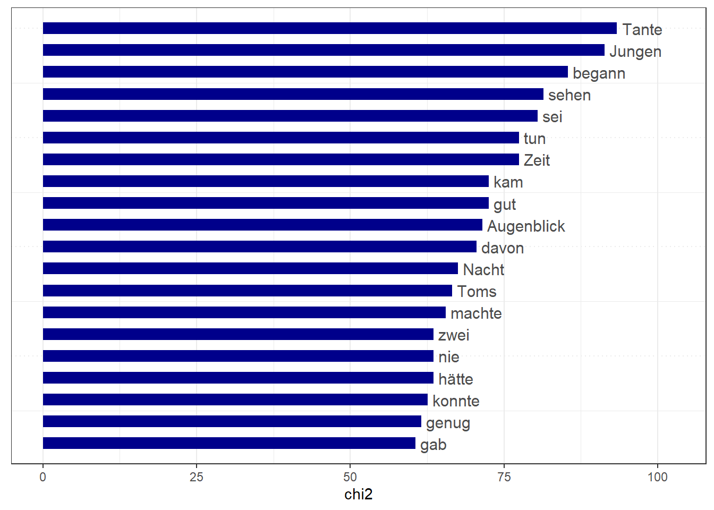
textplot_keyness(key_tom_de, key_tom_en$n_target == 1)## Warning in if (show_reference) {: the condition has length > 1 and only the
## first element will be used## Warning in if (show_reference) {: the condition has length > 1 and only the
## first element will be used## Warning in if (show_reference) {: the condition has length > 1 and only the
## first element will be used## Warning in if (show_reference) min(data$x1) - margin else 0: the condition has
## length > 1 and only the first element will be used
textplot_keyness(key_tom_de)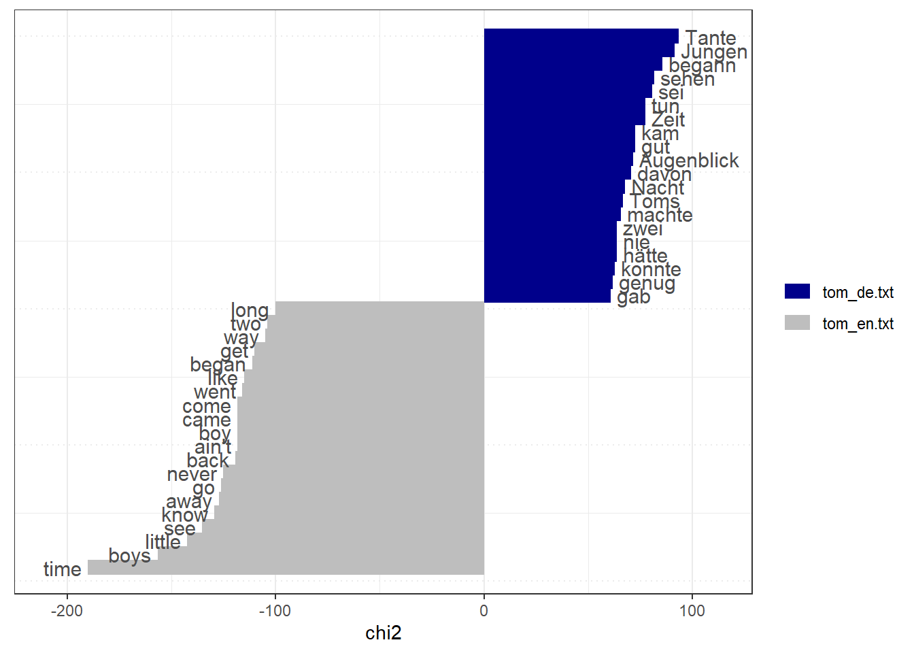
textplot_keyness(key_tom_en)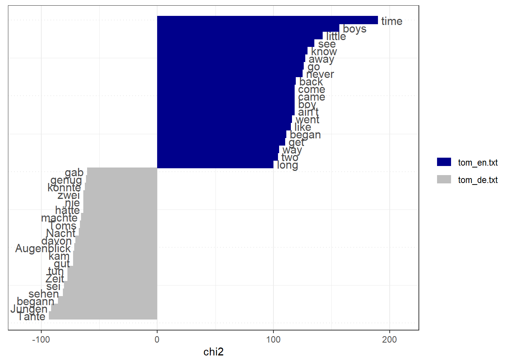
7.15 Razumljivost besedil
Indeksi razumljivosti (readability index) so prirejeni za angleščino, za druge jezike veljajo v manjši meri.
Flesch-Index velja angleška besedila: nižja vrednost nakazuje, da neko besedilo težje beremo (razumemo).
Indeks nemškega prevoda ima nižjo vrednost (61) kot Tom Sawyer (81), kar je lahko povezano (a) z daljšimi povedmi in/ali (b) daljšimi besedami (zloženke v nemščini pišemo kot eno besedo, v angleščini pogosto ne).
textstat_readability(romane, measure = c("Flesch", "Flesch.Kincaid", "FOG", "FOG.PSK", "FOG.NRI"))## document Flesch Flesch.Kincaid FOG FOG.PSK FOG.NRI
## 1 tom_de.txt 60.58738 8.393636 10.609800 5.072836 6012.711
## 2 tom_en.txt 80.59447 5.657490 8.183574 4.513384 5826.9377.16 Omrežje sopojavitev (FCM)
Matriko sopojavljanja besednih oblik (FCM) pridobimo v dveh korakih: - najprej izberemo seznam izrazov (pattern) iz matrike (dfm()), - potem določimo matriko sopojavljanja besednih oblik (fcm()).
Primer omrežja iz nemškega prevoda:
dfm_tags_de <- dfm_select(matrika[1,], # tom_de.txt
pattern = (c("tom", "huck", "*joe", "becky", "tante",
"witwe","polly", "sid", "mary", "thatcher",
"höhle", "herz","*schule", "katze", "geld",
"zaun", "piraten","schatz")))
toptag_de <- names(topfeatures(dfm_tags_de, 50))
head(toptag_de)## [1] "Tom" "Huck" "Joe" "Becky" "Tante" "Sid"# Construct feature-cooccurrence matrix (fcm) of tags
fcm_tom_de <- fcm(matrika[1,]) # besedilo 1 je tom_de.txt
head(fcm_tom_de)## Feature co-occurrence matrix of: 6 by 17,869 features.
## features
## features Vorwort Autors meisten erzählten Abenteuer tatsächlich zugetragen
## Vorwort 0 1 14 1 13 2 3
## Autors 0 0 14 1 13 2 3
## meisten 0 0 91 14 182 28 42
## erzählten 0 0 0 0 13 2 3
## Abenteuer 0 0 0 0 78 26 39
## tatsächlich 0 0 0 0 0 1 6
## features
## features erlebt Schulkameraden Huck
## Vorwort 2 3 237
## Autors 2 3 237
## meisten 28 42 3318
## erzählten 2 3 237
## Abenteuer 26 39 3081
## tatsächlich 4 6 474
## [ reached max_nfeat ... 17,859 more features ]top_fcm_de <- fcm_select(fcm_tom_de, pattern = toptag_de)
textplot_network(top_fcm_de,
min_freq = 0.6,
edge_alpha = 0.8,
edge_size = 5)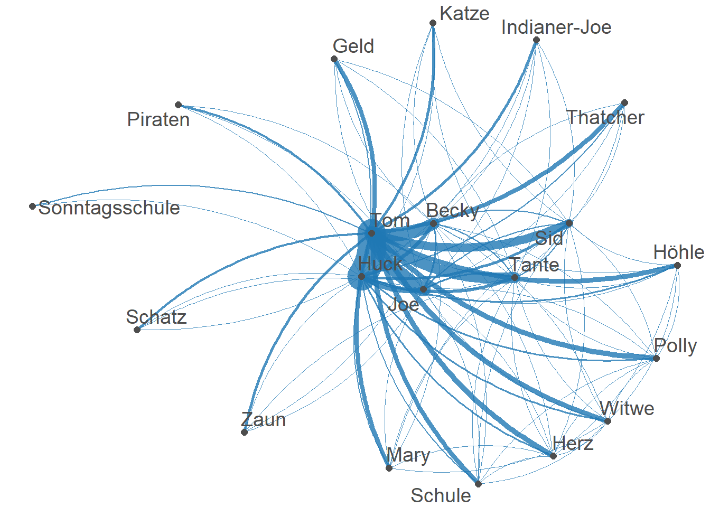
7.17 Slovnična analiza
Za slovnično analizo in lematizacijo besednih oblik lahko uporabljamo posebne programe (npr. spacyr ali udpipe).
Program udpipe je na voljo za številne jezike (angleščino, nemščino, slovenščino idr.).
Tu bomo ponovno uporabljali že pridobljena jezikovna modela in podatkovna niza (gl. lematizacijo), ampak tokrat za prikaz enostavnih primerov slovnične analize.
7.17.1 Podatkovna niza
Za lažje prepoznavo besedil bomo najprej spremenili imeni v stolpcu “doc_id”. Potem bomo podatkovna niza združili.
en_df = en_df %>%
mutate(doc_id = str_replace(doc_id, "doc1", "tom_en"))
de_df = de_df %>%
mutate(doc_id = str_replace(doc_id, "doc1", "tom_de"))
tom_df = rbind(en_df, de_df) %>%
mutate(token_id = as.integer(factor(token_id))) %>%
arrange(doc_id, paragraph_id, sentence_id, token_id)
head(tom_df)## doc_id paragraph_id sentence_id
## 1 tom_de 1 1
## 2 tom_de 1 1
## 3 tom_de 1 1
## 4 tom_de 1 1
## 5 tom_de 1 1
## 6 tom_de 1 1
## sentence
## 1 Vorwort des Autors . Die meisten der hier erzählten Abenteuer haben sich tatsächlich zugetragen . Das eine oder das andere habe ich selbst erlebt , die anderen meine Schulkameraden . Huck Finn ist nach dem Leben gezeichnet , nicht weniger Tom Sawyer , doch entspricht dieser nicht einer bestimmten Persönlichkeit , sondern wurde mit charakteristischen Zügen mehrerer meiner Altersgenossen ausgestattet und darf daher jenem gegenüber als einigermaßen kompliziertes psychologisches Problem gelten . Ich muß hier bemerken , daß zur Zeit meiner Erzählung -- vor dreißig bis vierzig Jahren -- unter den Unmündigen und Unwissenden des Westens noch die seltsamsten , unwahrscheinlichsten Vorurteile und Aberglauben herrschten . Obwohl dies Buch vor allem zur Unterhaltung der kleinen Welt geschrieben wurde , so darf ich doch wohl hoffen , daß es auch von Erwachsenen nicht ganz unbeachtet gelassen werde , habe ich doch darin versucht , ihnen auf angenehme Weise zu zeigen , was sie einst selbst waren , wie sie fühlten , dachten , sprachen , und welcher Art ihr Ehrgeiz und ihre Unternehmungen waren . Erstes Kapitel . , ,Tom ! " Keine Antwort . , ,Tom ! " Alles still . , ,Soll mich doch wundern , wo der Bengel wieder steckt ! Tom ! " Die alte Dame schob ihre Brille hinunter und schaute darüber hinweg ; dann schob sie sie auf die Stirn und schaute darunter weg.
## 2 Vorwort des Autors . Die meisten der hier erzählten Abenteuer haben sich tatsächlich zugetragen . Das eine oder das andere habe ich selbst erlebt , die anderen meine Schulkameraden . Huck Finn ist nach dem Leben gezeichnet , nicht weniger Tom Sawyer , doch entspricht dieser nicht einer bestimmten Persönlichkeit , sondern wurde mit charakteristischen Zügen mehrerer meiner Altersgenossen ausgestattet und darf daher jenem gegenüber als einigermaßen kompliziertes psychologisches Problem gelten . Ich muß hier bemerken , daß zur Zeit meiner Erzählung -- vor dreißig bis vierzig Jahren -- unter den Unmündigen und Unwissenden des Westens noch die seltsamsten , unwahrscheinlichsten Vorurteile und Aberglauben herrschten . Obwohl dies Buch vor allem zur Unterhaltung der kleinen Welt geschrieben wurde , so darf ich doch wohl hoffen , daß es auch von Erwachsenen nicht ganz unbeachtet gelassen werde , habe ich doch darin versucht , ihnen auf angenehme Weise zu zeigen , was sie einst selbst waren , wie sie fühlten , dachten , sprachen , und welcher Art ihr Ehrgeiz und ihre Unternehmungen waren . Erstes Kapitel . , ,Tom ! " Keine Antwort . , ,Tom ! " Alles still . , ,Soll mich doch wundern , wo der Bengel wieder steckt ! Tom ! " Die alte Dame schob ihre Brille hinunter und schaute darüber hinweg ; dann schob sie sie auf die Stirn und schaute darunter weg.
## 3 Vorwort des Autors . Die meisten der hier erzählten Abenteuer haben sich tatsächlich zugetragen . Das eine oder das andere habe ich selbst erlebt , die anderen meine Schulkameraden . Huck Finn ist nach dem Leben gezeichnet , nicht weniger Tom Sawyer , doch entspricht dieser nicht einer bestimmten Persönlichkeit , sondern wurde mit charakteristischen Zügen mehrerer meiner Altersgenossen ausgestattet und darf daher jenem gegenüber als einigermaßen kompliziertes psychologisches Problem gelten . Ich muß hier bemerken , daß zur Zeit meiner Erzählung -- vor dreißig bis vierzig Jahren -- unter den Unmündigen und Unwissenden des Westens noch die seltsamsten , unwahrscheinlichsten Vorurteile und Aberglauben herrschten . Obwohl dies Buch vor allem zur Unterhaltung der kleinen Welt geschrieben wurde , so darf ich doch wohl hoffen , daß es auch von Erwachsenen nicht ganz unbeachtet gelassen werde , habe ich doch darin versucht , ihnen auf angenehme Weise zu zeigen , was sie einst selbst waren , wie sie fühlten , dachten , sprachen , und welcher Art ihr Ehrgeiz und ihre Unternehmungen waren . Erstes Kapitel . , ,Tom ! " Keine Antwort . , ,Tom ! " Alles still . , ,Soll mich doch wundern , wo der Bengel wieder steckt ! Tom ! " Die alte Dame schob ihre Brille hinunter und schaute darüber hinweg ; dann schob sie sie auf die Stirn und schaute darunter weg.
## 4 Vorwort des Autors . Die meisten der hier erzählten Abenteuer haben sich tatsächlich zugetragen . Das eine oder das andere habe ich selbst erlebt , die anderen meine Schulkameraden . Huck Finn ist nach dem Leben gezeichnet , nicht weniger Tom Sawyer , doch entspricht dieser nicht einer bestimmten Persönlichkeit , sondern wurde mit charakteristischen Zügen mehrerer meiner Altersgenossen ausgestattet und darf daher jenem gegenüber als einigermaßen kompliziertes psychologisches Problem gelten . Ich muß hier bemerken , daß zur Zeit meiner Erzählung -- vor dreißig bis vierzig Jahren -- unter den Unmündigen und Unwissenden des Westens noch die seltsamsten , unwahrscheinlichsten Vorurteile und Aberglauben herrschten . Obwohl dies Buch vor allem zur Unterhaltung der kleinen Welt geschrieben wurde , so darf ich doch wohl hoffen , daß es auch von Erwachsenen nicht ganz unbeachtet gelassen werde , habe ich doch darin versucht , ihnen auf angenehme Weise zu zeigen , was sie einst selbst waren , wie sie fühlten , dachten , sprachen , und welcher Art ihr Ehrgeiz und ihre Unternehmungen waren . Erstes Kapitel . , ,Tom ! " Keine Antwort . , ,Tom ! " Alles still . , ,Soll mich doch wundern , wo der Bengel wieder steckt ! Tom ! " Die alte Dame schob ihre Brille hinunter und schaute darüber hinweg ; dann schob sie sie auf die Stirn und schaute darunter weg.
## 5 Vorwort des Autors . Die meisten der hier erzählten Abenteuer haben sich tatsächlich zugetragen . Das eine oder das andere habe ich selbst erlebt , die anderen meine Schulkameraden . Huck Finn ist nach dem Leben gezeichnet , nicht weniger Tom Sawyer , doch entspricht dieser nicht einer bestimmten Persönlichkeit , sondern wurde mit charakteristischen Zügen mehrerer meiner Altersgenossen ausgestattet und darf daher jenem gegenüber als einigermaßen kompliziertes psychologisches Problem gelten . Ich muß hier bemerken , daß zur Zeit meiner Erzählung -- vor dreißig bis vierzig Jahren -- unter den Unmündigen und Unwissenden des Westens noch die seltsamsten , unwahrscheinlichsten Vorurteile und Aberglauben herrschten . Obwohl dies Buch vor allem zur Unterhaltung der kleinen Welt geschrieben wurde , so darf ich doch wohl hoffen , daß es auch von Erwachsenen nicht ganz unbeachtet gelassen werde , habe ich doch darin versucht , ihnen auf angenehme Weise zu zeigen , was sie einst selbst waren , wie sie fühlten , dachten , sprachen , und welcher Art ihr Ehrgeiz und ihre Unternehmungen waren . Erstes Kapitel . , ,Tom ! " Keine Antwort . , ,Tom ! " Alles still . , ,Soll mich doch wundern , wo der Bengel wieder steckt ! Tom ! " Die alte Dame schob ihre Brille hinunter und schaute darüber hinweg ; dann schob sie sie auf die Stirn und schaute darunter weg.
## 6 Vorwort des Autors . Die meisten der hier erzählten Abenteuer haben sich tatsächlich zugetragen . Das eine oder das andere habe ich selbst erlebt , die anderen meine Schulkameraden . Huck Finn ist nach dem Leben gezeichnet , nicht weniger Tom Sawyer , doch entspricht dieser nicht einer bestimmten Persönlichkeit , sondern wurde mit charakteristischen Zügen mehrerer meiner Altersgenossen ausgestattet und darf daher jenem gegenüber als einigermaßen kompliziertes psychologisches Problem gelten . Ich muß hier bemerken , daß zur Zeit meiner Erzählung -- vor dreißig bis vierzig Jahren -- unter den Unmündigen und Unwissenden des Westens noch die seltsamsten , unwahrscheinlichsten Vorurteile und Aberglauben herrschten . Obwohl dies Buch vor allem zur Unterhaltung der kleinen Welt geschrieben wurde , so darf ich doch wohl hoffen , daß es auch von Erwachsenen nicht ganz unbeachtet gelassen werde , habe ich doch darin versucht , ihnen auf angenehme Weise zu zeigen , was sie einst selbst waren , wie sie fühlten , dachten , sprachen , und welcher Art ihr Ehrgeiz und ihre Unternehmungen waren . Erstes Kapitel . , ,Tom ! " Keine Antwort . , ,Tom ! " Alles still . , ,Soll mich doch wundern , wo der Bengel wieder steckt ! Tom ! " Die alte Dame schob ihre Brille hinunter und schaute darüber hinweg ; dann schob sie sie auf die Stirn und schaute darunter weg.
## token_id token lemma upos xpos
## 1 1 Vorwort Vorwort ADP NN
## 2 3 Abenteuer Abenteuer NOUN NN
## 3 5 seltsamsten seltsam ADJ NN
## 4 7 , , PUNCT $,
## 5 9 unwahrscheinlichsten unwahrscheinlich ADJ NN
## 6 10 Vorurteile Vorurteil NOUN NN
## feats head_token_id dep_rel deps misc
## 1 Case=Nom|Gender=Neut|Number=Sing 3 case <NA> <NA>
## 2 Case=Acc|Gender=Neut|Number=Plur 6 nmod <NA> <NA>
## 3 Case=Acc|Gender=Masc|Number=Plur 103 amod <NA> <NA>
## 4 <NA> 100 punct <NA> <NA>
## 5 Case=Acc|Gender=Masc|Number=Plur 103 amod <NA> <NA>
## 6 Case=Acc|Gender=Neut|Number=Plur 106 obj <NA> <NA>tail(tom_df)## doc_id paragraph_id sentence_id
## 174376 tom_en 1898 5231
## 174377 tom_en 1898 5231
## 174378 tom_en 1898 5231
## 174379 tom_en 1898 5231
## 174380 tom_en 1898 5231
## 174381 tom_en 1898 5231
## sentence
## 174376 Some day it may seem worth while to take up the story of the younger ones again and see what sort of men and women they turned out to be; therefore it will be wisest not to reveal any of that part of their lives at present.
## 174377 Some day it may seem worth while to take up the story of the younger ones again and see what sort of men and women they turned out to be; therefore it will be wisest not to reveal any of that part of their lives at present.
## 174378 Some day it may seem worth while to take up the story of the younger ones again and see what sort of men and women they turned out to be; therefore it will be wisest not to reveal any of that part of their lives at present.
## 174379 Some day it may seem worth while to take up the story of the younger ones again and see what sort of men and women they turned out to be; therefore it will be wisest not to reveal any of that part of their lives at present.
## 174380 Some day it may seem worth while to take up the story of the younger ones again and see what sort of men and women they turned out to be; therefore it will be wisest not to reveal any of that part of their lives at present.
## 174381 Some day it may seem worth while to take up the story of the younger ones again and see what sort of men and women they turned out to be; therefore it will be wisest not to reveal any of that part of their lives at present.
## token_id token lemma upos xpos feats head_token_id dep_rel deps
## 174376 619 . . PUNCT . <NA> 5 punct <NA>
## 174377 621 seem seem VERB VB VerbForm=Inf 0 root <NA>
## 174378 642 worth worth ADJ JJ Degree=Pos 5 xcomp <NA>
## 174379 663 while while SCONJ IN <NA> 9 mark <NA>
## 174380 684 to to PART TO <NA> 9 mark <NA>
## 174381 703 take take VERB VB VerbForm=Inf 6 advcl <NA>
## misc
## 174376 SpacesAfter=\\n\\n\\n\\n\\n
## 174377 <NA>
## 174378 <NA>
## 174379 <NA>
## 174380 <NA>
## 174381 <NA>Shranjujemo in nadaljujemo naslednjič.
# write_rds(tom_df, "data/tom_df.rds")
# tom_df = read_rds("data/tom_df.rds")7.17.2 Primerjava Noun : Pron
Zdaj lahko začnemo poizvedovati po besednih oblikah, slovarskih enotah in slovničnih kategorijah.
tabela = tom_df %>%
group_by(doc_id) %>%
count(upos) %>%
filter(!is.na(upos),
upos != "PUNCT")
head(tabela)## # A tibble: 6 x 3
## # Groups: doc_id [1]
## doc_id upos n
## <chr> <chr> <int>
## 1 tom_de ADJ 5537
## 2 tom_de ADP 5525
## 3 tom_de ADV 6708
## 4 tom_de AUX 3387
## 5 tom_de CCONJ 3268
## 6 tom_de DET 6887tabela %>%
mutate(upos = reorder_within(upos, n, n, sep = ": ")) %>%
ggplot(aes(n, upos, fill = upos)) +
geom_col() +
facet_wrap(~ doc_id, scales = "free") +
theme(legend.position = "none") +
labs(x = "Število pojavnic", y = "")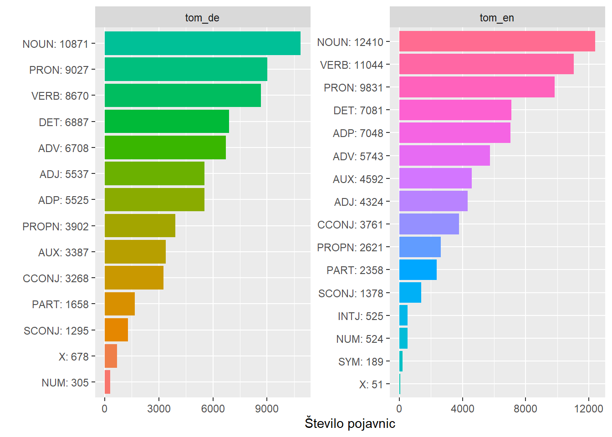
Izračun deležev:
delezi = tabela %>%
mutate(prozent = n/sum(n)) %>%
pivot_wider(id_cols = upos, names_from = doc_id, values_from = n:prozent)
head(delezi)## # A tibble: 6 x 5
## upos n_tom_de n_tom_en prozent_tom_de prozent_tom_en
## <chr> <int> <int> <dbl> <dbl>
## 1 ADJ 5537 4324 0.0818 0.0588
## 2 ADP 5525 7048 0.0816 0.0959
## 3 ADV 6708 5743 0.0991 0.0782
## 4 AUX 3387 4592 0.0500 0.0625
## 5 CCONJ 3268 3761 0.0483 0.0512
## 6 DET 6887 7081 0.102 0.0964delezi %>%
filter(upos %in% c("NOUN", "PRON"))## # A tibble: 2 x 5
## upos n_tom_de n_tom_en prozent_tom_de prozent_tom_en
## <chr> <int> <int> <dbl> <dbl>
## 1 NOUN 10871 12410 0.161 0.169
## 2 PRON 9027 9831 0.133 0.134Ali se besedili razlikujeta glede razmerja med samostalniki in zaimki? Glede na to, da gre za vsebinsko in najbrž tudi slogovno zelo podobni besedili (izvirnik in prevod), in glede na to, da gre za sorodna jezika (angleščinao in nemščino), bi bila verjetna ničelna domneva (H0: med izvirnikom in prevodom ni statistično značilne razlike). Manj verjetna se zdi alternativna hipoteza (H1: med izvirnikom in prevodom je statistično značilna razlika).
# za hi kvadrat test potrebujemo le drugi in tretji stolpec
nominal = delezi %>%
filter(upos %in% c("NOUN", "PRON")) %>%
dplyr::select(n_tom_de, n_tom_en)
# statisticni preskus
chisq.test(nominal)##
## Pearson's Chi-squared test with Yates' continuity correction
##
## data: nominal
## X-squared = 5.7103, df = 1, p-value = 0.01687Hi kvadrat test potrjuje alternativno domnevo (H1). Angleški izvirnik in nemški prevod se razlikujeta glede razmerja med samostalniki in zaimki: X^2 (1) = 5,71; p < 0,001. Iz gornje tabele pogostnosti je razvidno, da je delež samostalnikov v angleškem izvirniku nekoliko večji kot v nemškem prevodu. Razlika je sicer zaradi velikih vzorcev statistično značilna, ni pa velika, saj so deleži zelo podobni.
Da bi ugotovili, ali je ugotovljena statistična značilna razlika pomembna, bi si morali podrobneje ogledati, kateri zaimki in kateri samostalniki bistveno vplivajo na to številčno razmerje. Na splošno velja, da so zaimki manj zanesljiva jezikovna sredstva kot samostalniki, samostalniki pa so bolj zapleteni.
Če želimo primerjati eno besedno vrsto z vsemi drugimi v podatkovnem nizu, je pretvorba bolj zapletena, saj moramo - podobno kot v Excelu: - najprej izračunati vsoto za vse besedne vrste, - potem odšteti število zaimkov oz. samostalnikov od vsote, - razliko pa upoštevati za tabelo 2x2 za hi kvadrat test.
(zaimki = tom_df %>%
group_by(doc_id) %>%
count(upos) %>%
filter(!is.na(upos),
upos != "PUNCT") %>%
mutate(vsota = sum(n),
no_noun = vsota - n[upos == "NOUN"],
no_pron = vsota - n[upos == "PRON"]) %>%
filter(upos == "PRON") %>%
dplyr::select(doc_id, n, no_pron) %>%
pivot_longer(-doc_id, 'kategorija', 'vrednost') %>%
pivot_wider(kategorija, doc_id)
)## # A tibble: 2 x 3
## kategorija tom_de tom_en
## <chr> <int> <int>
## 1 n 9027 9831
## 2 no_pron 58691 63649(samostalniki = tom_df %>%
group_by(doc_id) %>%
count(upos) %>%
filter(!is.na(upos),
upos != "PUNCT") %>%
mutate(vsota = sum(n),
no_noun = vsota - n[upos == "NOUN"],
no_pron = vsota - n[upos == "PRON"]) %>%
filter(upos == "NOUN") %>%
dplyr::select(doc_id, n, no_noun) %>%
pivot_longer(-doc_id, 'kategorija', 'vrednost') %>%
pivot_wider(kategorija, doc_id)
)## # A tibble: 2 x 3
## kategorija tom_de tom_en
## <chr> <int> <int>
## 1 n 10871 12410
## 2 no_noun 56847 61070Hi kvadrat testa: - primerjava števila zaimkov nasproti ostalim besednim vrstam, - primerjava števila samostalnikov nasproti ostalim besednim vrstam.
V obeh primerih spet velja: H0 (med vzorcema ni statistično značilne razlike). H1 (vzorca se značilno razlikujeta).
# izločimo prvi stolpec [, -1],
# saj za hi kvadrat test potrebujemo le številke v drugem in tretjem stolpcu
chisq.test(zaimki[,-1])##
## Pearson's Chi-squared test with Yates' continuity correction
##
## data: zaimki[, -1]
## X-squared = 0.068568, df = 1, p-value = 0.7934chisq.test(samostalniki[,-1])##
## Pearson's Chi-squared test with Yates' continuity correction
##
## data: samostalniki[, -1]
## X-squared = 17.81, df = 1, p-value = 2.441e-05Statistični izid: Deleža zaimkov se v besedilih ne razlikujeta (prvi test potrjuje H0), vendar pa se besedili razlikujeta glede deleža samostalnikov (drugi test potrjuje H1).
7.17.3 Primerjava veznikov
Primerjati želimo število stavkov s prirednim in podrednim veznikom.
Osnovna domneva je, da priredno zložene povedi (vsebujejo stavek, uveden s prirednim veznikom) lažje razumemo kot podredno zložene povedi (vsebujejo stavek, uveden s podrednim veznikom).
(vezniki = tabela %>%
filter(upos %in% c("CCONJ", "SCONJ")) %>%
mutate(prozent = n/sum(n)) %>%
pivot_wider(id_cols = upos, names_from = doc_id, values_from = n:prozent)
)## # A tibble: 2 x 5
## upos n_tom_de n_tom_en prozent_tom_de prozent_tom_en
## <chr> <int> <int> <dbl> <dbl>
## 1 CCONJ 3268 3761 0.716 0.732
## 2 SCONJ 1295 1378 0.284 0.268Odstotki nakazujejo, da je delež prirednih veznikov v angleškem izvirniku rahlo večji kot v nemškem prevodu.
Spet uporabljamo hi kvadrat test (upoštevane so le povedi, ki vsebujejo veznik) za preverjanje, ali je razlika dovolj velika, da bi bila nenaključna.
chisq.test(vezniki[,c(2:3)])##
## Pearson's Chi-squared test with Yates' continuity correction
##
## data: vezniki[, c(2:3)]
## X-squared = 2.8912, df = 1, p-value = 0.08907Z ozirom na hi kvadrat test razlika med besediloma ni statistično značilna (potrjen je H0).
Če upoštevamo tudi vsote drugih besednih vrst (kot zgoraj):
(koord = tabela %>%
mutate(vsota = sum(n),
no_cconj = vsota - n[upos == "CCONJ"],
no_sconj = vsota - n[upos == "SCONJ"]) %>%
filter(upos == "CCONJ") %>%
dplyr::select(doc_id, n, no_cconj) %>%
pivot_longer(-doc_id, 'kategorija', 'vrednost') %>%
pivot_wider(kategorija, doc_id)
)## # A tibble: 2 x 3
## kategorija tom_de tom_en
## <chr> <int> <int>
## 1 n 3268 3761
## 2 no_cconj 64450 69719(subord = tabela %>%
mutate(vsota = sum(n),
no_cconj = vsota - n[upos == "CCONJ"],
no_sconj = vsota - n[upos == "SCONJ"]) %>%
filter(upos == "SCONJ") %>%
dplyr::select(doc_id, n, no_sconj) %>%
pivot_longer(-doc_id, 'kategorija', 'vrednost') %>%
pivot_wider(kategorija, doc_id)
)## # A tibble: 2 x 3
## kategorija tom_de tom_en
## <chr> <int> <int>
## 1 n 1295 1378
## 2 no_sconj 66423 72102Hi kvadrat preizkus izkazuje razliko med besediloma v primeru prirednih veznikov (potrjen je H1), v primeru podrednih veznikov pa ne (potrjen je H0).
chisq.test(koord[,-1])##
## Pearson's Chi-squared test with Yates' continuity correction
##
## data: koord[, -1]
## X-squared = 6.3124, df = 1, p-value = 0.01199chisq.test(subord[,-1])##
## Pearson's Chi-squared test with Yates' continuity correction
##
## data: subord[, -1]
## X-squared = 0.24025, df = 1, p-value = 0.624Besedili se razlikujeta glede deleža prirednih veznikov (če jih primerjamo z vsemi drugimi besednimi vrstami).
7.17.4 Slovarske enote
Program udpipe je vsako besedno obliko dodelil slovarski enoti (lemma). Koliko koliko slovarskih enot je v besedilih? Katerim besednim vrstam najpogosteje pripadajo?
(tabela2 = tom_df %>%
group_by(doc_id, upos) %>%
filter(!is.na(upos),
upos != "PUNCT",
upos != "X") %>%
distinct(lemma) %>%
count(lemma) %>%
summarise(lemmas = sum(n)) %>%
mutate(prozent = round(lemmas/sum(lemmas), 4)) %>%
arrange(-prozent)
)## `summarise()` has grouped output by 'doc_id'. You can override using the `.groups` argument.## # A tibble: 28 x 4
## # Groups: doc_id [2]
## doc_id upos lemmas prozent
## <chr> <chr> <int> <dbl>
## 1 tom_en NOUN 3245 0.403
## 2 tom_de NOUN 3400 0.361
## 3 tom_en VERB 1912 0.238
## 4 tom_de VERB 1935 0.206
## 5 tom_de ADJ 1875 0.199
## 6 tom_en ADJ 1294 0.161
## 7 tom_de PROPN 967 0.103
## 8 tom_en ADV 627 0.0779
## 9 tom_de ADV 672 0.0714
## 10 tom_en PROPN 389 0.0483
## # ... with 18 more rowstabela2 %>%
# slice_max(order_by = prozent, n=6) %>%
mutate(upos = reorder_within(upos, lemmas,
paste("(",100*prozent,"%)"), sep = " ")) %>%
ggplot(aes(prozent, upos, fill = upos)) +
geom_col() +
facet_wrap(~ doc_id, scales = "free") +
theme(legend.position = "none") +
scale_x_continuous(labels = percent_format()) +
labs(x = "Anteil", y = "Wortklasse")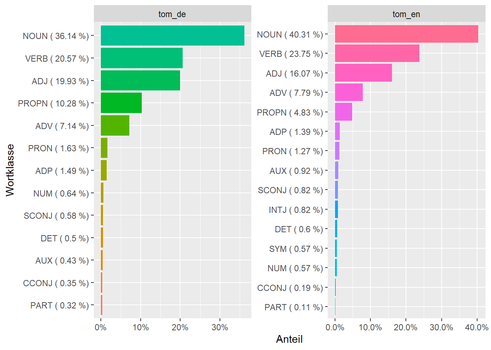
7.17.5 Korelacija besed
Katere besedne pogostnosti se vzporedno povečujejo ali zmanjšujejo (pairwise correlation) ? Podobno analizno orodje ima tudi Voyant Tools.
library(widyr)
# pairwise correlation
correlations = tom_df %>%
filter(dep_rel != "punct", dep_rel != "nummod") %>%
mutate(lemma = tolower(lemma), token = tolower(token),
lemma = str_trim(lemma), token = str_trim(token)) %>%
janitor::clean_names() %>%
group_by(doc_id, lemma, token, sentence_id) %>%
# add_count(token) %>%
summarize(Freq = n()) %>%
arrange(-Freq) %>%
filter(Freq > 2) %>%
pairwise_cor(lemma, sentence_id, sort = TRUE) %>%
filter(correlation < 1 & correlation > 0.3)## `summarise()` has grouped output by 'doc_id', 'lemma', 'token'. You can override using the `.groups` argument.head(correlations)## # A tibble: 6 x 3
## item1 item2 correlation
## <chr> <chr> <dbl>
## 1 der und 0.934
## 2 und der 0.934
## 3 zu und 0.829
## 4 und zu 0.829
## 5 sein und 0.812
## 6 und sein 0.812Tom Sawyer: Becky (dekle, ki je Tomu všeč).
correlations %>%
filter(item1 == "tom") %>%
mutate(item2 = fct_reorder(item2, correlation)) %>%
ggplot(aes(item2, correlation, fill = item2)) +
geom_col(show.legend = F) +
coord_flip() +
labs(title = "What tends to appear with 'Becky'?",
subtitle = "Among elements that appeared in at least 2 sentences")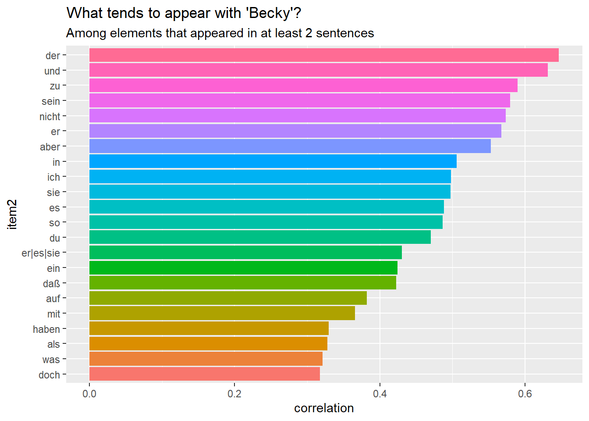
7.18 Sentiment
Stopnjo čustvenosti ali emocionalnosti besedila je mogoče določiti s sentimentnim slovarjem.
7.18.1 Različica 1
Uporaba nrc leksikona za nemščino (priložen programu syuzhet).
Najprej besedilo s funkcijo get_sentences() razcepimo na povedi.
library(syuzhet)
tom_v = get_sentences(txt$text[1]) # izberemo prvo besedilo: tom_de.txt
tom_v = (tom_v[-1]) # tako lahko izločimo prvo vrstico (uredniško pripombo)
head(tom_v[-1])## [1] "Das eine oder das andere habe ich selbst erlebt , die anderen meine Schulkameraden ."
## [2] "Huck Finn ist nach dem Leben gezeichnet , nicht weniger Tom Sawyer , doch entspricht dieser nicht einer bestimmten Persönlichkeit , sondern wurde mit charakteristischen Zügen mehrerer meiner Altersgenossen ausgestattet und darf daher jenem gegenüber als einigermaßen kompliziertes psychologisches Problem gelten ."
## [3] "Ich muß hier bemerken , daß zur Zeit meiner Erzählung -- vor dreißig bis vierzig Jahren -- unter den Unmündigen und Unwissenden des Westens noch die seltsamsten , unwahrscheinlichsten Vorurteile und Aberglauben herrschten ."
## [4] "Obwohl dies Buch vor allem zur Unterhaltung der kleinen Welt geschrieben wurde , so darf ich doch wohl hoffen , daß es auch von Erwachsenen nicht ganz unbeachtet gelassen werde , habe ich doch darin versucht , ihnen auf angenehme Weise zu zeigen , was sie einst selbst waren , wie sie fühlten , dachten , sprachen , und welcher Art ihr Ehrgeiz und ihre Unternehmungen waren ."
## [5] "Erstes Kapitel ."
## [6] ", ,Tom !"Funkcija get_sentiment() dodeli besedam v povedih pozitivno (+1), negativno (-1) ali nevtralno (0) čustveno vrednost. Program te vrednosti sešteje.
tom_values <- get_sentiment(tom_v, method = "nrc", language = "german")
length(tom_values)## [1] 5047tom_values[100:110]## [1] 0 -2 0 1 0 1 0 0 0 0 0Povedi, čustvene vrednosti in dolžino povedi povežemo v podatkovni niz. To nam olajšuje oceno, kako uspešna je bila uporaba sentimentnega slovarja v našem besedilu. Preimenovali bomo tudi nekaj stolpcev.
sentiment1 = cbind(tom_v, tom_values, ntoken(tom_v)) %>%
as.data.frame() %>%
rename(words = V3,
text = tom_v,
values = tom_values) %>%
mutate(doc_id = "tom_de.txt") %>%
rowid_to_column(var = "sentence")
head(sentiment1)## sentence
## 1 1
## 2 2
## 3 3
## 4 4
## 5 5
## 6 6
## text
## 1 Die meisten der hier erzählten Abenteuer haben sich tatsächlich zugetragen .
## 2 Das eine oder das andere habe ich selbst erlebt , die anderen meine Schulkameraden .
## 3 Huck Finn ist nach dem Leben gezeichnet , nicht weniger Tom Sawyer , doch entspricht dieser nicht einer bestimmten Persönlichkeit , sondern wurde mit charakteristischen Zügen mehrerer meiner Altersgenossen ausgestattet und darf daher jenem gegenüber als einigermaßen kompliziertes psychologisches Problem gelten .
## 4 Ich muß hier bemerken , daß zur Zeit meiner Erzählung -- vor dreißig bis vierzig Jahren -- unter den Unmündigen und Unwissenden des Westens noch die seltsamsten , unwahrscheinlichsten Vorurteile und Aberglauben herrschten .
## 5 Obwohl dies Buch vor allem zur Unterhaltung der kleinen Welt geschrieben wurde , so darf ich doch wohl hoffen , daß es auch von Erwachsenen nicht ganz unbeachtet gelassen werde , habe ich doch darin versucht , ihnen auf angenehme Weise zu zeigen , was sie einst selbst waren , wie sie fühlten , dachten , sprachen , und welcher Art ihr Ehrgeiz und ihre Unternehmungen waren .
## 6 Erstes Kapitel .
## values words doc_id
## 1 1 11 tom_de.txt
## 2 0 15 tom_de.txt
## 3 -2 42 tom_de.txt
## 4 0 34 tom_de.txt
## 5 6 68 tom_de.txt
## 6 0 3 tom_de.txtView(sentiment1)Gornje postopke ponovimo za besedilo, ki ga želimo primerjati s prvim.
prozess_v = get_sentences(txt$text[2]) # izberemo drugo besedilo: tom_en.txt
prozess_v = (prozess_v[-1]) # tako lahko izločimo prvo vrstico (uredniško pripombo)
prozess_values <- get_sentiment(prozess_v, method = "nrc", language = "english")
sentiment2 = cbind(prozess_v, prozess_values, ntoken(prozess_v)) %>%
as.data.frame() %>%
rename(words = V3,
text = prozess_v,
values = prozess_values) %>%
mutate(doc_id = "tom_en.txt") %>%
rowid_to_column(var = "sentence")
head(sentiment2)## sentence
## 1 1
## 2 2
## 3 3
## 4 4
## 5 5
## 6 6
## text
## 1 Huck Finn is drawn from life; Tom Sawyer also, but not from an\nindividual—he is a combination of the characteristics of three boys whom\nI knew, and therefore belongs to the composite order of architecture.
## 2 The odd superstitions touched upon were all prevalent among children and\nslaves in the West at the period of this story—that is to say, thirty or\nforty years ago.
## 3 Although my book is intended mainly for the entertainment of boys and\ngirls, I hope it will not be shunned by men and women on that account,\nfor part of my plan has been to try to pleasantly remind adults of what\nthey once were themselves, and of how they felt and thought and talked,\nand what queer enterprises they sometimes engaged in.
## 4 THE AUTHOR.
## 5 HARTFORD, 1876.
## 6 CHAPTER I\n\n\n"TOM!"
## values words doc_id
## 1 0 41 tom_en.txt
## 2 -1 33 tom_en.txt
## 3 4 68 tom_en.txt
## 4 1 3 tom_en.txt
## 5 0 4 tom_en.txt
## 6 0 6 tom_en.txtView(sentiment2)S seštevanjem čustvenih vrednosti je mogoče oceniti, katero besedilo ima več pozitivno ocenjenih besed. V ta namen bomo združili podatkovna niza in uredili obliko stolpcev “words” in “values”.
sentiment = rbind(sentiment1, sentiment2) %>% as_tibble() %>%
mutate(values = parse_number(values),
words = parse_number(words)) %>%
dplyr::select(doc_id, sentence, words, values, text)
head(sentiment)## # A tibble: 6 x 5
## doc_id sentence words values text
## <chr> <int> <dbl> <dbl> <chr>
## 1 tom_de.t~ 1 11 1 Die meisten der hier erzählten Abenteuer habe~
## 2 tom_de.t~ 2 15 0 Das eine oder das andere habe ich selbst erle~
## 3 tom_de.t~ 3 42 -2 Huck Finn ist nach dem Leben gezeichnet , nic~
## 4 tom_de.t~ 4 34 0 Ich muß hier bemerken , daß zur Zeit meiner E~
## 5 tom_de.t~ 5 68 6 Obwohl dies Buch vor allem zur Unterhaltung d~
## 6 tom_de.t~ 6 3 0 Erstes Kapitel .tail(sentiment)## # A tibble: 6 x 5
## doc_id sentence words values text
## <chr> <int> <dbl> <dbl> <chr>
## 1 tom_en.t~ 4848 46 -1 "I'll stick to the widder till I rot, Tom; an~
## 2 tom_en.t~ 4849 6 1 "CONCLUSION\n\nSO endeth this chronicle."
## 3 tom_en.t~ 4850 29 -1 "It being strictly a history of a _boy_, it\n~
## 4 tom_en.t~ 4851 38 1 "When one writes a novel about grown people, ~
## 5 tom_en.t~ 4852 18 2 "Most of the characters that perform in this ~
## 6 tom_en.t~ 4853 49 3 "Some day it may seem worth while to take up ~Rezultat: po gornji metodi je povprečje čustvenih vrednosti v nemškem prevodu rahlo manjše kot v angleškem izvirniku “Tom Sawyer”, vendar je razlika tako majhna, da najbrž ne bi bila statistično značilna. Povprečje je v obeh primerih blizu nevtralne vrednosti (tj. 0): Tom Sawyer vsebuje kar nekaj vedrih prigod in dogodivščin, je pa res, da so njegove pustolovščine pogosto tudi nevarne ali strašljive.
sentiment %>%
group_by(doc_id) %>%
summarise(polarnost = mean(values))## # A tibble: 2 x 2
## doc_id polarnost
## <chr> <dbl>
## 1 tom_de.txt -0.0109
## 2 tom_en.txt 0.0196Poskusimo še drugače: pozitivne, nevtralne in negativne vrednosti obravnajmo ločeno in upoštevajmo tudi dolžino povedi.
sentiment1 = sentiment %>%
group_by(doc_id) %>%
mutate(positive = ifelse(values > 0, abs(values), 0),
neutral = ifelse(values == 0, 1, 0),
negative = ifelse(values < 0, abs(values), 0))
sentiment1 %>%
summarise(pos = mean(100*positive/words),
neut = mean(100*neutral/words),
neg = mean(100*negative/words))## # A tibble: 2 x 4
## doc_id pos neut neg
## <chr> <dbl> <dbl> <dbl>
## 1 tom_de.txt 2.63 6.77 2.81
## 2 tom_en.txt 2.07 6.74 2.10Ta rezultat nakazuje, so čustvene vrednosti v nemškem prevodu nekoliko skrajnejše (pozitivne ali negativne) kot v angleškem izvirniku. Zanimivo bi bilo vprašati poznavalca angleškega izvirnika in nemškega prevoda, ali je ob slogovni primerjavi dobil podoben vtis.
Poglejmo še nekaj povedi, ki so bile ocenjene negativno:
sentiment1 %>%
filter(negative > 0)## # A tibble: 2,157 x 8
## # Groups: doc_id [2]
## doc_id sentence words values text positive neutral negative
## <chr> <int> <dbl> <dbl> <chr> <dbl> <dbl> <dbl>
## 1 tom_de~ 3 42 -2 "Huck Finn ist nach ~ 0 0 2
## 2 tom_de~ 15 81 -2 "Unruhig hielt sie e~ 0 0 2
## 3 tom_de~ 16 8 -1 "Sie hatte nichts al~ 0 0 1
## 4 tom_de~ 17 12 -1 ", ,So ein Junge ist~ 0 0 1
## 5 tom_de~ 25 5 -1 "\" , ,Nichts ." 0 0 1
## 6 tom_de~ 26 5 -1 "\" , ,Nichts !" 0 0 1
## 7 tom_de~ 34 5 -3 "Die Gefahr war drin~ 0 0 3
## 8 tom_de~ 38 8 -1 ", ,Der Kuckuck hole~ 0 0 1
## 9 tom_de~ 41 18 -2 "Aber alte Torheit i~ 0 0 2
## 10 tom_de~ 47 11 -1 "Er steckt voller Na~ 0 0 1
## # ... with 2,147 more rows7.18.2 Različica 2
tom_v = get_sentences(txt$text[2]) # angleški izvirnik
tom_nrc_values = get_nrc_sentiment(tom_v)
tom_joy_items = which(tom_nrc_values$joy > 0)
head(tom_v[tom_joy_items], 4)## [1] "Although my book is intended mainly for the entertainment of boys and\ngirls, I hope it will not be shunned by men and women on that account,\nfor part of my plan has been to try to pleasantly remind adults of what\nthey once were themselves, and of how they felt and thought and talked,\nand what queer enterprises they sometimes engaged in."
## [2] "She seldom or\nnever looked _through_ them for so small a thing as a boy; they were\nher state pair, the pride of her heart, and were built for \"style,\" not\nservice—she could have seen through a pair of stove-lids just as well."
## [3] "She went to the open door and stood in it and looked out among the\ntomato vines and \"jimpson\" weeds that constituted the garden."
## [4] "His aunt Polly stood surprised a moment, and then broke into a gentle\nlaugh."nrc_sentiment = as.data.frame(cbind(tom_v, tom_nrc_values))
head(nrc_sentiment) %>% paged_table()7.18.3 Različica 3
Drugi sentimentni slovarji z medmrežja: npr. BAWLR lahko uporabljamo kot sentimentni slovar.
# This lexicons contains values of Emotional valence and arousal ranging from 1 to 5.
# But this extended version contains also binary Emo_Val values (1, -1).
bawlr <- read.delim2("data/BAWLR_utf8.txt", sep = "\t", dec = ",", fileEncoding = "UTF-8",
header = T, stringsAsFactors = T)
# # bawlr$EmoVal <- as.character(bawlr$EmoVal)
# # str(EmoVal)
# bawlr$EmoVal <- gsub('NEG', '-1', bawlr$EmoVal)
# bawlr$EmoVal <- gsub('POS', '1', bawlr$EmoVal)
# bawlr$EmoVal <- as.numeric(bawlr$EmoVal)
head(bawlr)## EmoVal Freq WORD WORD_LOWER WORD_CLASS EMO_MEAN EMO_STD AROUSAL_MEAN
## 1 NEG HF AAL aal N -0.5 0.7 2.4
## 2 NEG NF AAS aas N -2.1 1.1 2.6
## 3 NEG NF ABART abart N -1.6 0.7 3.3
## 4 NEG HF ABBAU abbau N -1.0 1.2 3.0
## 5 NEG HF ABBAUEN abbauen V -0.8 0.9 2.1
## 6 NEG NF ABBILD abbild N -0.2 0.6 2.1
## AROUSAL_STD IMAGE_MEAN IMAGE_STD LETTERS PHONEMES SYLLABLES Ftot.1MIL N
## 1 1.2 6.6 0.7 3 2 1 13.3 6
## 2 1.4 5.4 0.9 3 2 1 1.0 6
## 3 1.0 2.3 1.3 5 5 2 1.2 2
## 4 1.3 2.2 1.2 5 4 2 14.5 1
## 5 1.2 3.7 1.6 7 6 3 15.5 3
## 6 0.8 3.8 2.0 6 6 2 3.5 0
## FN HFN FHFN BIGmean.TOKEN. ACCENT
## 1 3182.0 3 3175.2 83677.5 1
## 2 10568.8 5 10568.5 30120.5 1
## 3 3.0 1 2.3 80270.0 1
## 4 6.8 0 0.0 94054.8 1
## 5 51.0 1 38.0 238806.3 1
## 6 0.0 0 0.0 45958.4 1Sestavimo dva seznama:
positive.words = bawlr %>%
mutate(WORD_LOWER = as.character(WORD_LOWER)) %>%
dplyr::select(EmoVal, WORD_LOWER) %>%
filter(EmoVal == "POS") %>%
dplyr::select(WORD_LOWER) %>%
filter(str_detect(WORD_LOWER, "[a-zA-Z]"))
negative.words = bawlr %>%
mutate(WORD_LOWER = as.character(WORD_LOWER)) %>%
dplyr::select(EmoVal, WORD_LOWER) %>%
filter(EmoVal == "NEG") %>%
dplyr::select(WORD_LOWER) %>%
filter(str_detect(WORD_LOWER, "[a-zA-Z]"))Ustvarimo quanteda slovar dictionary():
bawlr_dict = dictionary(list(positive = list(positive.words), negative = list(negative.words)))Quanteda slovar lahko shranimo na disk.
# jsonlite::write_json(bawlr_dict, "data/quanteda_bawlr_dict.json")Uporabljamo matriko (dfm) s slovarskimi enotami (lemma), saj slovar bawlr_dict vsebujejo le osnovno obliko slovarskih enot.
matrika_lemmas = dfm(matrika_lem_de, tolower = TRUE)
result = matrika_lemmas %>%
dfm_lookup(bawlr_dict) %>%
convert(to = "data.frame") %>%
as_tibble
result## # A tibble: 1 x 3
## doc_id positive negative
## <chr> <dbl> <dbl>
## 1 tom_de 9137052 5245512Dodamo lahko skupno dolžino besed, če želimo normalizirati rezultat z ozirom na dolžino besedil.
result = result %>% mutate(length=ntoken(matrika_lemmas))
result## # A tibble: 1 x 4
## doc_id positive negative length
## <chr> <dbl> <dbl> <int>
## 1 tom_de 9137052 5245512 31618Po navadi želimo izračunati skupno sentimentno vrednost. Možnosti je več: npr. - odšteti negativne vrednosti od pozitivnih in nato razliko deliti z vsoto obeh vrednosti, - odšteti negativne vrednosti od pozitivnih in nato razliko deliti z dolžino besedil,
Izračunamo lahko tudi stopnjo subjektivnosti, tj. koliko čustvenih vrednosti je skupno izraženih:
result = result %>% mutate(sentiment1=(positive - negative) / (positive + negative))
result = result %>% mutate(sentiment2=(positive - negative) / length)
result = result %>% mutate(subjektivnost=(positive + negative) / length)
result %>% paged_table()7.18.4 Barvno označevanje
Program corpustools barvno označuje besede v besedilih z ozirom na čustvene vrednosti besed v sentimentnem slovarju.
Prvi korak je ustvarjanje tcorpusa.
library(corpustools)
t = create_tcorpus(txt1, doc_column="doc_id") # izbrali smo le nemški prevodV drugem koraku sledi iskanje po slovarju (tcorpus):
t$code_dictionary(bawlr_dict, column = 'bawlr')
t$set('sentiment', 1, subset = bawlr %in% c('positive','neg_negative'))
t$set('sentiment', -1, subset = bawlr %in% c('negative','neg_positive'))Prikaz barvno označenih besedil v oknu “Viewer”:
browse_texts(t, scale='sentiment')Prikaz barvno označenih besedil v spletnem brskalniku in shranjevanje v obliki html datoteke:
browse_texts(t, scale='sentiment', filename = "sentiment_tom.html",
header = "Sentiment in Twains Tom Sawyer")A-Z↩︎